<!doctype html>
<html lang="ja"><head><meta charset="utf-8">
<meta name="viewport" content="width=device-width,initial-scale=1">
<title>2026年WEC競技規則 / 技術規則_英語 / 日本語版_20260101</title>
<style>
:root{--fg:#111827;--muted:#6b7280;--line:#e5e7eb;--accent:#1d4ed8;--bg:#fff}
@media (prefers-color-scheme:dark){:root{--fg:#e5e7eb;--muted:#9ca3af;--line:#374151;--accent:#93c5fd;--bg:#0f172a}}
body{margin:0;background:var(--bg);color:var(--fg);font-family:"Noto Sans JP",system-ui,sans-serif;line-height:1.9}
.doc{max-width:46rem;margin:0 auto;padding:2rem 1.25rem 6rem}
h1{font-size:1.6rem;line-height:1.5;margin:0 0 .25rem}
.meta{color:var(--muted);font-size:.8rem;margin-bottom:2rem}
h2,h3,h4,h5{line-height:1.6;margin:2.2em 0 .6em;scroll-margin-top:4rem}
h2{font-size:1.25rem;border-left:4px solid var(--accent);padding-left:.6rem}
h3{font-size:1.1rem}
h4{font-size:1rem;color:var(--accent)}
p{margin:0 0 1em;text-align:justify}
figure{margin:1.8em 0;padding:.75rem;border:1px solid var(--line);border-radius:.5rem}
figure img{display:block;width:100%;height:auto}
figcaption{margin-top:.5rem;font-size:.85rem;color:var(--muted);text-align:center}
.tablewrap{overflow-x:auto;margin:1.5em 0}
table{border-collapse:collapse;font-size:.9rem;min-width:100%}
th,td{border:1px solid var(--line);padding:.35em .6em;vertical-align:top}
.pagemark{float:right;font-size:.7rem;color:var(--muted);user-select:none}
nav.toc{border:1px solid var(--line);border-radius:.5rem;padding:1rem 1.25rem;margin-bottom:2.5rem;font-size:.9rem}
nav.toc ol{list-style:none;margin:0;padding:0}
nav.toc a{color:inherit;text-decoration:none}
nav.toc a:hover{color:var(--accent);text-decoration:underline}
nav.toc .l1{padding-left:0;font-weight:700}
nav.toc .l2{padding-left:1rem}
nav.toc .l3{padding-left:2rem}
nav.toc .l4{padding-left:3rem;color:var(--muted)}
.warn{background:#fef3c7;color:#78350f;border-radius:.4rem;padding:.6rem .9rem;font-size:.85rem;margin-bottom:1.5rem}
</style>
</head><body><article class="doc">
<h1>2026年WEC競技規則 / 技術規則_英語 / 日本語版_20260101</h1>
<p class="meta">FIAレース世界選手権等規則書 ／ FIA世界耐久選手権規則書_日本語版 ／ アップロード日 2026-07-29 ／ 770ページ ／ <a href="https://motorsports.jaf.or.jp/-/media/1/3375/3379/3400/3467/3473/3502/2026_fia_wec_sport_tech_reg_en_ja_20260101.pdf" rel="nofollow">JAF 原本 PDF</a></p>
<nav class="toc"><ol>
<li class="l1"><a href="#2026-FIA-世界耐久選手権">2026 FIA 世界耐久選手権</a></li>
<li class="l1"><a href="#競技規則-技術規則">競技規則／技術規則</a></li>
<li class="l1"><a href="#英語-日本語版">英語／日本語版</a></li>
<li class="l1"><a href="#2026-FIA-WORLD-ENDURANCE">2026 FIA WORLD ENDURANCE</a></li>
<li class="l1"><a href="#CHAMPIONSHIP">CHAMPIONSHIP</a></li>
<li class="l1"><a href="#REGULATIONS">REGULATIONS</a></li>
<li class="l1"><a href="#年-世界耐久選手権">２０２６年 ＦＩＡ世界耐久選手権</a></li>
<li class="l1"><a href="#規則書-競技・技術">規則書（競技・技術）</a></li>
<li class="l2"><a href="#本書の日本語版は-国際自動車連盟-制定の-年-世界耐久選手権競技規則-年-ハイパーカー-技術規則">本書の日本語版は、国際自動車連盟（ＦＩＡ）制定の「２０２６年ＦＩＡ世界耐久選手権競技規則」、「２０２６年ＬＭハイパーカー／ＬＭＤｈ／ＬＭＰ２／ＬＭＧＴ３技術規則」を一般社団法人日本自動車連盟（ＪＡＦ）が仮訳したものです。</a></li>
<li class="l2"><a href="#これら規則の正本は英語版ですので-日本語版とあわせ-英語版もご参照ください">これら規則の正本は英語版ですので、日本語版とあわせ、英語版もご参照ください。</a></li>
<li class="l1"><a href="#2026-FIA-WORLD-ENDURANCE-2">2026 FIA WORLD ENDURANCE</a></li>
<li class="l1"><a href="#CHAMPIONSHIP-2">CHAMPIONSHIP</a></li>
<li class="l1"><a href="#SPORTING-REGULATIONS">SPORTING REGULATIONS</a></li>
<li class="l1"><a href="#ISSUE-1-January-2026">(ISSUE: 1 January 2026)</a></li>
<li class="l4"><a href="#1-DISPOSITIONS-G-N-RALES">1. DISPOSITIONS GÉNÉRALES</a></li>
<li class="l4"><a href="#1-GENERAL-PROVISIONS">1. GENERAL PROVISIONS</a></li>
<li class="l4"><a href="#1-1-Pr-ambule">1.1 Préambule</a></li>
<li class="l4"><a href="#1-1-Foreword">1.1. Foreword</a></li>
<li class="l4"><a href="#1-2-R-glement">1.2. Règlement</a></li>
<li class="l4"><a href="#1-2-Regulations">1.2. Regulations</a></li>
<li class="l4"><a href="#1-2-1-Version-de-r-f-rence">1.2.1 	 Version de référence</a></li>
<li class="l4"><a href="#1-2-1-Reference-version">1.2.1 	 Reference version</a></li>
<li class="l4"><a href="#1-2-2-Clause-interpr-tative">1.2.2 	 Clause interprétative</a></li>
<li class="l4"><a href="#1-2-3-Entr-e-en-vigueur">1.2.3 	 Entrée en vigueur</a></li>
<li class="l4"><a href="#1-2-3-Date-of-application">1.2.3 	 Date of application</a></li>
<li class="l4"><a href="#1-2-4-Les-24-Heures-du-Mans">1.2.4 	 Les 24 Heures du Mans</a></li>
<li class="l4"><a href="#1-2-5-Annexes">1.2.5 Annexes</a></li>
<li class="l4"><a href="#1-2-5-Appendixes">1.2.5 Appendixes</a></li>
<li class="l4"><a href="#1-3-Conditions-g-n-rales">1.3 Conditions générales</a></li>
<li class="l4"><a href="#1-3-General-conditions">1.3 General conditions</a></li>
<li class="l4"><a href="#1-4-Championship-Competitions">1.4 Championship Competitions</a></li>
<li class="l4"><a href="#1-4-1-D-finition">1.4.1 	 Définition</a></li>
<li class="l4"><a href="#1-4-1-Definition">1.4.1 	 Definition</a></li>
<li class="l4"><a href="#1-4-2-Aspects-calendaires">1.4.2 	 Aspects calendaires</a></li>
<li class="l4"><a href="#1-4-2-Calendar-aspects">1.4.2 	 Calendar aspects</a></li>
<li class="l4"><a href="#1-4-3-Annulation">1.4.3 	 Annulation</a></li>
<li class="l4"><a href="#1-4-3-Cancellation">1.4.3 	 Cancellation</a></li>
<li class="l4"><a href="#2-ORGANISATION">2. ORGANISATION</a></li>
<li class="l4"><a href="#2-ORGANISATION-2">2. ORGANISATION</a></li>
<li class="l4"><a href="#2-1-Organisateur">2.1 Organisateur</a></li>
<li class="l4"><a href="#2-1-Organiser">2.1 Organiser</a></li>
<li class="l4"><a href="#2-3-Assurances">2.3 Assurances</a></li>
<li class="l4"><a href="#2-3-Insurance">2.3 Insurance</a></li>
<li class="l4"><a href="#3-1-Dispositions-g-n-rales">3.1 Dispositions générales</a></li>
<li class="l4"><a href="#3-1-General-provisions">3.1 General provisions</a></li>
<li class="l4"><a href="#3-1-1-Engagement-la-saison">3.1.1 	 Engagement à la saison</a></li>
<li class="l4"><a href="#3-1-1-Entry-for-the-season">3.1.1 	 Entry for the season</a></li>
<li class="l4"><a href="#3-1-4-Licences">3.1.4 	 Licences</a></li>
<li class="l4"><a href="#3-1-4-Licences-2">3.1.4 	 Licences</a></li>
<li class="l4"><a href="#3-1-5-Licence-du-Concurrent">3.1.5 Licence du Concurrent</a></li>
<li class="l4"><a href="#3-1-5-Competitor-s-licence">3.1.5 Competitor’s licence</a></li>
<li class="l4"><a href="#3-1-6-Licence-du-Pilote">3.1.6 Licence du Pilote</a></li>
<li class="l4"><a href="#3-1-6-Driver-s-licence">3.1.6 Driver’s licence</a></li>
<li class="l4"><a href="#3-2-Proc-dure-d-engagement">3.2 Procédure d’engagement</a></li>
<li class="l4"><a href="#3-2-Entry-procedure">3.2 Entry procedure</a></li>
<li class="l4"><a href="#4-1-Discipline-g-n-rale">4.1 Discipline générale</a></li>
<li class="l4"><a href="#4-1-General-discipline">4.1 General discipline</a></li>
<li class="l4"><a href="#4-1-1-Unsporting-conduct">4.1.1 	 Unsporting conduct</a></li>
<li class="l4"><a href="#4-1-3-Contr-le-M-dical">4.1.3 	 Contrôle Médical</a></li>
<li class="l4"><a href="#4-1-3-Medical-control">4.1.3 	 Medical control</a></li>
<li class="l4"><a href="#4-2-quipement-des-Concurrents">4.2 Équipement des Concurrents</a></li>
<li class="l4"><a href="#4-2-Competitors-equipment">4.2 Competitors’ equipment</a></li>
<li class="l4"><a href="#4-2-3-Competitors-cameras">4.2.3 	 Competitors’ cameras</a></li>
<li class="l4"><a href="#4-2-4-Cam-ras-embarqu-es">4.2.4 Caméras embarquées</a></li>
<li class="l4"><a href="#4-2-4-On-board-cameras">4.2.4 On-board cameras</a></li>
<li class="l4"><a href="#4-3-Moyens-de-communication">4.3 Moyens de communication</a></li>
<li class="l4"><a href="#4-3-Means-of-communication">4.3 Means of communication</a></li>
<li class="l4"><a href="#4-3-2-Race-Control-Radio">4.3.2 	 Race Control Radio</a></li>
<li class="l4"><a href="#4-4-Pit-allocation">4.4 Pit allocation</a></li>
<li class="l4"><a href="#4-4-Attribution-des-garages">4.4 Attribution des garages</a></li>
<li class="l4"><a href="#4-4-1-General-prescriptions">4.4.1 General prescriptions</a></li>
<li class="l4"><a href="#5-1-Administrative-checks">5.1 Administrative checks</a></li>
<li class="l4"><a href="#5-1-1-General-provisions">5.1.1 	 General provisions</a></li>
<li class="l4"><a href="#5-1-1-Dispositions-g-n-rales">5.1.1 	 Dispositions générales</a></li>
<li class="l4"><a href="#5-2-V-rifications-techniques">5.2 Vérifications techniques</a></li>
<li class="l4"><a href="#5-2-Scrutineering">5.2 Scrutineering</a></li>
<li class="l4"><a href="#5-2-1-Disposition-g-n-rales">5.2.1 Disposition générales</a></li>
<li class="l4"><a href="#5-2-1-General-provisions">5.2.1 General provisions</a></li>
<li class="l4"><a href="#5-2-2-Contr-les-al-atoires">5.2.2 	 Contrôles aléatoires</a></li>
<li class="l4"><a href="#5-2-2-Random-checks">5.2.2 	 Random checks</a></li>
<li class="l4"><a href="#5-2-4-Equipment-declaration">5.2.4 Equipment declaration</a></li>
<li class="l4"><a href="#6-PROVISIONS-TECHNIQUES">6. PROVISIONS TECHNIQUES</a></li>
<li class="l4"><a href="#6-TECHNICAL-PROVISIONS">6. TECHNICAL PROVISIONS</a></li>
<li class="l4"><a href="#6-1-Voitures-admissibles">6.1 Voitures admissibles</a></li>
<li class="l4"><a href="#6-1-Eligible-cars">6.1 Eligible cars</a></li>
<li class="l4"><a href="#6-1-1-Eligible-homologations">6.1.1 	 Eligible homologations</a></li>
<li class="l4"><a href="#6-1-2-Recours">6.1.2 	 Recours</a></li>
<li class="l4"><a href="#6-1-3-Voitures-de-r-serve">6.1.3 	 Voitures de réserve</a></li>
<li class="l4"><a href="#6-1-3-Reserve-cars">6.1.3 	 Reserve cars</a></li>
<li class="l4"><a href="#6-2-1-Principe-g-n-ral">6.2.1 	 Principe général</a></li>
<li class="l4"><a href="#6-2-1-General-principle">6.2.1 	 General principle</a></li>
<li class="l4"><a href="#6-2-2-Success-handicap">6.2.2 	 Success handicap</a></li>
<li class="l4"><a href="#6-3-1-Data-recorder">6.3.1 	 Data recorder</a></li>
<li class="l4"><a href="#6-3-4-Monitoring-cameras">6.3.4 	 Monitoring cameras</a></li>
<li class="l4"><a href="#6-4-Lumi-res">6.4 Lumières</a></li>
<li class="l4"><a href="#6-4-Lights">6.4 Lights</a></li>
<li class="l4"><a href="#6-4-1-Projecteurs-principaux">6.4.1 	 Projecteurs principaux</a></li>
<li class="l4"><a href="#6-4-1-Main-headlights">6.4.1 	 Main headlights</a></li>
<li class="l4"><a href="#6-4-2-Feu-de-pluie">6.4.2 	 Feu de pluie</a></li>
<li class="l4"><a href="#6-4-2-Rain-light">6.4.2 	 Rain light</a></li>
<li class="l4"><a href="#6-4-3-Voyant-m-dical">6.4.3 	 Voyant médical</a></li>
<li class="l4"><a href="#6-4-3-Medical-light">6.4.3 	 Medical light</a></li>
<li class="l4"><a href="#6-4-4-Panneau-d-affichage">6.4.4 	 Panneau d’affichage</a></li>
<li class="l4"><a href="#6-4-4-Display-panel">6.4.4 	 Display panel</a></li>
<li class="l4"><a href="#6-4-5-ERS-indicator-light">6.4.5 	 ERS indicator light</a></li>
<li class="l4"><a href="#6-4-6-In-case-of-malfunction">6.4.6 	 In case of malfunction</a></li>
<li class="l4"><a href="#6-5-Pneumatiques">6.5 Pneumatiques</a></li>
<li class="l4"><a href="#6-5-Tyres">6.5 Tyres</a></li>
<li class="l4"><a href="#6-5-2-Fournisseurs-d-sign-s">6.5.2 	 Fournisseurs désignés</a></li>
<li class="l4"><a href="#6-5-2-Designated-suppliers">6.5.2 	 Designated suppliers</a></li>
<li class="l4"><a href="#6-5-3-Specifications">6.5.3 	 Specifications</a></li>
<li class="l4"><a href="#6-5-4-Allocations">6.5.4 	 Allocations</a></li>
<li class="l4"><a href="#6-5-4-Allocations-2">6.5.4 	 Allocations</a></li>
<li class="l4"><a href="#6-5-5-Tyre-storage">6.5.5 	 Tyre storage</a></li>
<li class="l4"><a href="#6-5-8-P-nalit-s-applicables">6.5.8 	 Pénalités applicables</a></li>
<li class="l4"><a href="#6-5-8-Applicable-penalties">6.5.8 	 Applicable penalties</a></li>
<li class="l4"><a href="#6-6-D-marrage-moteur">6.6 Démarrage moteur</a></li>
<li class="l4"><a href="#6-6-Engine-start">6.6 Engine start</a></li>
<li class="l4"><a href="#7-1-Comit-WEC">7.1 Comité WEC</a></li>
<li class="l4"><a href="#7-1-WEC-Committee">7.1 WEC Committee</a></li>
<li class="l4"><a href="#7-2-Commissaires-Sportifs">7.2 Commissaires Sportifs</a></li>
<li class="l4"><a href="#7-2-Stewards">7.2 Stewards</a></li>
<li class="l4"><a href="#7-2-2-P-nalisation-des-Pilotes">7.2.2 Pénalisation des Pilotes</a></li>
<li class="l4"><a href="#7-2-2-Penalization-of-Drivers">7.2.2 Penalization of Drivers</a></li>
<li class="l4"><a href="#7-2-3-Mise-sous-enqu-te">7.2.3 Mise sous enquête</a></li>
<li class="l4"><a href="#7-3-Officiels-et-d-l-gu-s-FIA">7.3 Officiels et délégués FIA</a></li>
<li class="l4"><a href="#7-3-1-Officiels-permanents">7.3.1 	 Officiels permanents</a></li>
<li class="l4"><a href="#7-3-1-Permanent-officials">7.3.1 	 Permanent officials</a></li>
<li class="l4"><a href="#7-4-P-nalit-s-en-vigueur">7.4 Pénalités en vigueur</a></li>
<li class="l4"><a href="#7-4-Penalties-in-force">7.4 Penalties in force</a></li>
<li class="l4"><a href="#7-4-1-Principes-g-n-raux">7.4.1 	 Principes généraux</a></li>
<li class="l4"><a href="#7-4-1-General-principles">7.4.1 	 General principles</a></li>
<li class="l4"><a href="#7-4-2-Drive-Through">7.4.2 	 Drive-Through</a></li>
<li class="l4"><a href="#7-4-2-Drive-Through-2">7.4.2 	 Drive-Through</a></li>
<li class="l4"><a href="#7-4-3-Stop-Go">7.4.3 	 Stop &amp; Go</a></li>
<li class="l4"><a href="#7-4-3-Stop-Go-2">7.4.3 	 Stop &amp; Go</a></li>
<li class="l4"><a href="#7-4-5-Stop-Hold">7.4.5 	 Stop &amp; Hold</a></li>
<li class="l4"><a href="#7-4-5-Stop-Hold-2">7.4.5 Stop &amp; Hold</a></li>
<li class="l4"><a href="#7-4-8-Syst-me-de-points">7.4.8 	 Système de points</a></li>
<li class="l4"><a href="#7-4-8-Points-system">7.4.8 	 Points system</a></li>
<li class="l4"><a href="#7-4-9-Pit-lane-penalties">7.4.9 	 Pit lane penalties</a></li>
<li class="l4"><a href="#8-ESSAIS">8. ESSAIS</a></li>
<li class="l4"><a href="#8-TESTING">8. TESTING</a></li>
<li class="l4"><a href="#8-1-1-D-finition">8.1.1 	 Définition</a></li>
<li class="l4"><a href="#8-1-1-Definition">8.1.1 	 Definition</a></li>
<li class="l4"><a href="#8-1-2-Calendrier">8.1.2 	 Calendrier</a></li>
<li class="l4"><a href="#8-1-2-Calendar">8.1.2 	 Calendar</a></li>
<li class="l4"><a href="#8-2-Essais-priv-s">8.2 Essais privés</a></li>
<li class="l4"><a href="#8-2-Private-testing">8.2 Private testing</a></li>
<li class="l4"><a href="#8-2-1-D-finition">8.2.1 	 Définition</a></li>
<li class="l4"><a href="#8-2-1-Definition">8.2.1 	 Definition</a></li>
<li class="l4"><a href="#8-2-3-Contr-les">8.2.3 	 Contrôles</a></li>
<li class="l4"><a href="#8-2-3-Checks">8.2.3 	 Checks</a></li>
<li class="l4"><a href="#9-RUNNING-OF-THE-COMPETITIONS">9. RUNNING OF THE COMPETITIONS</a></li>
<li class="l4"><a href="#9-1-1-Sens-de-conduite">9.1.1 	 Sens de conduite</a></li>
<li class="l4"><a href="#9-1-1-Driving-direction">9.1.1 	 Driving direction</a></li>
<li class="l4"><a href="#9-1-2-Limites-de-la-piste">9.1.2 Limites de la piste</a></li>
<li class="l4"><a href="#9-1-2-Track-limits">9.1.2 	 Track limits</a></li>
<li class="l4"><a href="#9-1-3-Clearing-a-stopped-car">9.1.3 	 Clearing a stopped car</a></li>
<li class="l4"><a href="#9-1-10-Forfait">9.1.10 	 Forfait</a></li>
<li class="l4"><a href="#9-1-10-Withdrawal">9.1.10 	 Withdrawal</a></li>
<li class="l4"><a href="#9-1-11-P-nalit-s-applicables">9.1.11 	 Pénalités applicables</a></li>
<li class="l4"><a href="#9-1-11-Applicable-penalty">9.1.11 	 Applicable penalty</a></li>
<li class="l4"><a href="#9-1-13-Drapeau-damier">9.1.13 	 Drapeau à damier</a></li>
<li class="l4"><a href="#9-1-14-Essais">9.1.14	 Essais</a></li>
<li class="l4"><a href="#9-1-14-Practice">9.1.14 	 Practice</a></li>
<li class="l4"><a href="#9-2-Briefings-et-Track-Walks">9.2 Briefings et Track Walks</a></li>
<li class="l4"><a href="#9-2-Briefings-and-Track-Walks">9.2 Briefings and Track Walks</a></li>
<li class="l4"><a href="#9-2-1-Briefing-des-Pilotes">9.2.1 	 Briefing des Pilotes</a></li>
<li class="l4"><a href="#9-2-1-Drivers-briefing">9.2.1 	 Drivers’ briefing</a></li>
<li class="l4"><a href="#9-2-4-Track-Walk">9.2.4 	 Track Walk</a></li>
<li class="l4"><a href="#9-2-4-Track-Walk-2">9.2.4 	 Track Walk</a></li>
<li class="l4"><a href="#10-1-Dispositions-g-n-rales">10.1 Dispositions générales</a></li>
<li class="l4"><a href="#10-1-General-provisions">10.1 General provisions</a></li>
<li class="l4"><a href="#10-1-2-Drivers-obligations">10.1.2 	 Drivers’ obligations</a></li>
<li class="l4"><a href="#10-2-Essais-qualificatifs">10.2 Essais qualificatifs</a></li>
<li class="l4"><a href="#10-2-Qualifying-practice">10.2 Qualifying practice</a></li>
<li class="l4"><a href="#10-2-1-D-roulement">10.2.1 	 Déroulement</a></li>
<li class="l4"><a href="#10-2-1-Procedure">10.2.1 	 Procedure</a></li>
<li class="l4"><a href="#10-2-2-Cas-particuliers">10.2.2 	 Cas particuliers</a></li>
<li class="l4"><a href="#10-2-2-Special-cases">10.2.2 	 Special cases</a></li>
<li class="l4"><a href="#10-2-4-Lap-time-cancellations">10.2.4	 Lap time cancellations</a></li>
<li class="l4"><a href="#11-START-OF-THE-RACE">11. START OF THE RACE</a></li>
<li class="l4"><a href="#11-1-Grille-de-d-part">11.1 Grille de départ</a></li>
<li class="l4"><a href="#11-1-Starting-grid">11.1 Starting grid</a></li>
<li class="l4"><a href="#11-1-1-Grille-de-d-part">11.1.1 	 Grille de départ</a></li>
<li class="l4"><a href="#11-1-1-Starting-grid">11.1.1 	 Starting grid</a></li>
<li class="l4"><a href="#11-1-2-Pole-Position">11.1.2 	 Pole Position</a></li>
<li class="l4"><a href="#11-1-2-Pole-Position-2">11.1.2 	 Pole Position</a></li>
<li class="l4"><a href="#11-1-6-Acc-s-la-grille">11.1.6 	 Accès à la grille</a></li>
<li class="l4"><a href="#11-1-6-Access-to-the-grid">11.1.6 	 Access to the grid</a></li>
<li class="l4"><a href="#11-2-Proc-dure-de-d-part">11.2 Procédure de départ</a></li>
<li class="l4"><a href="#11-2-Starting-procedure">11.2 Starting procedure</a></li>
<li class="l4"><a href="#11-2-1-D-roulement-g-n-ral">11.2.1 	 Déroulement général</a></li>
<li class="l4"><a href="#11-2-1-General-procedure">11.2.1 	 General procedure</a></li>
<li class="l4"><a href="#11-2-2-Reconnaissance-lap-s">11.2.2 	 Reconnaissance lap(s)</a></li>
<li class="l4"><a href="#11-2-3-Compte-rebours">11.2.3 	 Compte-à-rebours</a></li>
<li class="l4"><a href="#11-2-3-Countdown">11.2.3	 Countdown</a></li>
<li class="l4"><a href="#11-2-4-D-part-assist">11.2.4 	 Départ assisté</a></li>
<li class="l4"><a href="#11-2-4-Assisted-start">11.2.4 	 Assisted start</a></li>
<li class="l4"><a href="#11-2-7-Tour-de-formation">11.2.7 	 Tour de formation</a></li>
<li class="l4"><a href="#11-2-7-Formation-lap">11.2.7 	 Formation lap</a></li>
<li class="l4"><a href="#11-3-1-D-roulement-g-n-ral">11.3.1 	 Déroulement général</a></li>
<li class="l4"><a href="#11-3-1-General-procedure">11.3.1 	 General procedure</a></li>
<li class="l4"><a href="#12-1-2-Pit-lane-areas">12.1.2 	 Pit lane areas</a></li>
<li class="l4"><a href="#12-2-Arr-ts-aux-stands">12.2 Arrêts aux stands</a></li>
<li class="l4"><a href="#12-2-Pit-stops">12.2 Pit stops</a></li>
<li class="l4"><a href="#12-2-2-Pit-stop-procedure">12.2.2 	 Pit stop procedure</a></li>
<li class="l4"><a href="#12-3-1-Repairs-in-the-garage">12.3.1 	 Repairs in the garage</a></li>
<li class="l4"><a href="#13-1-Categorisation-of-Drivers">13.1 Categorisation of Drivers</a></li>
<li class="l4"><a href="#13-1-1-General-provisions">13.1.1 	 General provisions</a></li>
<li class="l4"><a href="#13-2-Race-driving-time">13.2 Race driving time</a></li>
<li class="l4"><a href="#13-2-5-P-nalit-s">13.2.5 	 Pénalités</a></li>
<li class="l4"><a href="#13-2-5-Penalties">13.2.5 	 Penalties</a></li>
<li class="l4"><a href="#13-3-Composition-des-quipages">13.3 Composition des équipages</a></li>
<li class="l4"><a href="#13-3-Composition-of-crews">13.3 Composition of crews</a></li>
<li class="l4"><a href="#14-1-1-Responsabilit">14.1.1 	 Responsabilité</a></li>
<li class="l4"><a href="#14-1-1-Responsibility">14.1.1 	 Responsibility</a></li>
<li class="l4"><a href="#14-2-1-Proc-dure">14.2.1 	 Procédure</a></li>
<li class="l4"><a href="#14-2-1-Procedure">14.2.1 	 Procedure</a></li>
<li class="l4"><a href="#14-2-3-R-clamations">14.2.3 	 Réclamations</a></li>
<li class="l4"><a href="#14-2-3-Protests">14.2.3 	 Protests</a></li>
<li class="l4"><a href="#14-2-4-D-compte-des-tours">14.2.4 	 Décompte des tours</a></li>
<li class="l4"><a href="#14-2-4-Lap-count">14.2.4 	 Lap count</a></li>
<li class="l4"><a href="#14-4-1-General-provisions">14.4.1 	 General provisions</a></li>
<li class="l4"><a href="#14-5-3-Fin-du-r-gime-de-FCY">14.5.3 	 Fin du régime de FCY</a></li>
<li class="l4"><a href="#14-5-3-End-of-the-FCY-period">14.5.3 	 End of the FCY period</a></li>
<li class="l4"><a href="#14-5-4-FCY-and-Safety-Car">14.5.4 	 FCY and Safety Car</a></li>
<li class="l4"><a href="#14-6-4-Pass-Around">14.6.4 	 « Pass-Around »</a></li>
<li class="l4"><a href="#14-6-4-Pass-Around-2">14.6.4 	 “Pass-Around”</a></li>
<li class="l4"><a href="#14-7-3-Fin-de-la-VSC">14.7.3 	 Fin de la VSC</a></li>
<li class="l4"><a href="#14-7-3-End-of-the-VSC">14.7.3 	 End of the VSC</a></li>
<li class="l4"><a href="#15-1-Arriv-e-d-une-course">15.1 Arrivée d’une course</a></li>
<li class="l4"><a href="#15-1-Finish-of-a-race">15.1 Finish of a race</a></li>
<li class="l4"><a href="#15-1-1-Proc-dure-d-arriv-e">15.1.1 	 Procédure d’arrivée</a></li>
<li class="l4"><a href="#15-1-1-Finish-procedure">15.1.1 	 Finish procedure</a></li>
<li class="l4"><a href="#15-1-2-Early-or-late-finish">15.1.2 	 Early or late finish</a></li>
<li class="l4"><a href="#15-1-3-Parc-Ferm-d-arriv-e">15.1.3 	 Parc Fermé d’arrivée</a></li>
<li class="l4"><a href="#15-1-5-Premier-class">15.1.5 	 Premier classé</a></li>
<li class="l4"><a href="#15-1-5-Car-placed-first">15.1.5 	 Car placed first</a></li>
<li class="l4"><a href="#15-2-1-Principes-g-n-raux">15.2.1	 Principes généraux</a></li>
<li class="l4"><a href="#15-2-1-General-principles">15.2.1.	 General principles</a></li>
<li class="l4"><a href="#15-2-3-FIA-Endurance-Trophies">15.2.3	 FIA Endurance Trophies</a></li>
<li class="l4"><a href="#15-3-Bar-mes-des-points">15.3 Barèmes des points</a></li>
<li class="l4"><a href="#15-3-Scale-of-points">15.3 Scale of points</a></li>
<li class="l4"><a href="#15-4-Concurrents-ex-aequo">15.4 Concurrents ex-aequo</a></li>
<li class="l4"><a href="#15-4-Tied-Competitors">15.4 Tied Competitors</a></li>
<li class="l4"><a href="#15-4-1-Attribution-des-prix">15.4.1	 Attribution des prix</a></li>
<li class="l4"><a href="#15-4-1-Awarding-of-prizes">15.4.1	 Awarding of prizes</a></li>
<li class="l4"><a href="#5-Start-time-of-the-race-XX">5. Start time of the race  XX</a></li>
<li class="l4"><a href="#11-Other-specific-points">11. Other specific points</a></li>
<li class="l4"><a href="#1-Entry-form-and-deadlines">1. Entry form and deadlines</a></li>
<li class="l4"><a href="#1-Stickers-RFID">1. Stickers RFID</a></li>
<li class="l4"><a href="#1-RFID-stickers">1. RFID stickers</a></li>
<li class="l4"><a href="#1-Principe-g-n-ral">1. Principe général</a></li>
<li class="l4"><a href="#1-General-principle">1. General principle</a></li>
<li class="l4"><a href="#2-Personnel-op-rationnel">2. Personnel opérationnel</a></li>
<li class="l4"><a href="#2-Operational-staff">2. Operational staff</a></li>
<li class="l4"><a href="#3-Personnel-non-op-rationnel">3. Personnel non-opérationnel</a></li>
<li class="l4"><a href="#3-Non-operational-staff">3. Non-operational staff</a></li>
<li class="l4"><a href="#4-Common-suppliers-personnel">4. Common suppliers personnel</a></li>
<li class="l4"><a href="#6-D-clarations-du-personnel">6. Déclarations du personnel</a></li>
<li class="l4"><a href="#6-Staff-declaration">6. Staff declaration</a></li>
<li class="l4"><a href="#7-P-nalit-s-applicables">7. Pénalités applicables</a></li>
<li class="l4"><a href="#7-Applicable-penalties">7. Applicable penalties</a></li>
<li class="l4"><a href="#1-Approvisionnement">1. Approvisionnement</a></li>
<li class="l4"><a href="#1-Fuel-supply">1. Fuel supply</a></li>
<li class="l4"><a href="#2-Installations">2. Installations</a></li>
<li class="l4"><a href="#2-Installations-2">2. Installations</a></li>
<li class="l4"><a href="#4-chantillon-de-carburant">4. Échantillon de carburant</a></li>
<li class="l4"><a href="#4-Fuel-sample">4. Fuel sample</a></li>
<li class="l4"><a href="#5-Proc-dure">5. Procédure</a></li>
<li class="l4"><a href="#5-Procedure">5. Procedure</a></li>
<li class="l4"><a href="#1-PRINCIPES-G-N-RAUX">1. PRINCIPES GÉNÉRAUX</a></li>
<li class="l4"><a href="#1-GENERAL-PRINCIPLES">1. GENERAL PRINCIPLES</a></li>
<li class="l4"><a href="#5-JOURN-ES-D-ESSAIS-QUIPES">5. JOURNÉES D’ESSAIS ÉQUIPES</a></li>
<li class="l4"><a href="#7-ESSAIS-SP-CIAUX">7. ESSAIS SPÉCIAUX</a></li>
<li class="l4"><a href="#8-ESSAIS-COLLECTIFS-OFFICIELS">8. ESSAIS COLLECTIFS OFFICIELS</a></li>
<li class="l4"><a href="#1-GENERAL-PROVISIONS-1">1. GENERAL PROVISIONS 1</a></li>
<li class="l4"><a href="#1-DISPOSITIONS-G-N-RALES-1">1. DISPOSITIONS GÉNÉRALES 1</a></li>
<li class="l4"><a href="#1-1-Foreword-1">1.1. Foreword 1</a></li>
<li class="l4"><a href="#1-1-Pr-ambule-1">1.1 Préambule 1</a></li>
<li class="l4"><a href="#2-ORGANISATION-3">2. ORGANISATION 3</a></li>
<li class="l4"><a href="#2-ORGANISATION-3-2">2. ORGANISATION 3</a></li>
<li class="l4"><a href="#2-1-Organiser-3">2.1 Organiser 3</a></li>
<li class="l4"><a href="#2-1-Organisateur-3">2.1 Organisateur 3</a></li>
<li class="l4"><a href="#6-PROVISIONS-TECHNIQUES-14">6. PROVISIONS TECHNIQUES 14</a></li>
<li class="l4"><a href="#6-TECHNICAL-PROVISIONS-14">6. TECHNICAL PROVISIONS 14</a></li>
<li class="l4"><a href="#6-6-D-marrage-moteur-22">6.6 Démarrage moteur 22</a></li>
<li class="l4"><a href="#6-6-Engine-start-22">6.6 Engine start 22</a></li>
<li class="l4"><a href="#7-1-Comit-WEC-22">7.1 Comité WEC 22</a></li>
<li class="l4"><a href="#7-1-WEC-Committee-22">7.1 WEC Committee 22</a></li>
<li class="l4"><a href="#8-ESSAIS-27">8. ESSAIS  27</a></li>
<li class="l4"><a href="#8-TESTING-27">8. TESTING 27</a></li>
<li class="l4"><a href="#11-START-OF-THE-RACE-34">11. START OF THE RACE 34</a></li>
<li class="l4"><a href="#13-2-Race-driving-time-42">13.2 Race driving time 42</a></li>
<li class="l1"><a href="#2026-FIA-WORLD-ENDURANCE-3">2026 FIA WORLD ENDURANCE</a></li>
<li class="l1"><a href="#CHAMPIONSHIP-3">CHAMPIONSHIP</a></li>
<li class="l1"><a href="#競-技-規-則">競 技 規 則</a></li>
<li class="l1"><a href="#2026-年1-月1-日付発行版仮訳">(2026 年1 月1 日付発行版仮訳)</a></li>
<li class="l2"><a href="#i">i</a></li>
<li class="l2"><a href="#ii">ii</a></li>
<li class="l2"><a href="#般規則-適用される技術規則-本競技規則-および各競技会の付則-のすべての要件を確実に遵守させるこ">般規則、適用される技術規則、本競技規則、および各競技会の付則１のすべての要件を確実に遵守させること。－ スポーツ役務が提供されている場合は、ドライバーと人員の安全性に関して、すべての措置と</a></li>
<li class="l2"><a href="#ステムのサプライヤー-シャーシコンストラクター-タイヤ供給業者-燃料供給業者-潤滑剤供給業者-パ">ステムのサプライヤー－ シャーシコンストラクター－ タイヤ供給業者－ 燃料供給業者－ 潤滑剤供給業者－ パワートレイン供給業者－ 自動車製造者1.4 選手権競技1.4.1 定義</a></li>
<li class="l2"><a href="#ション-回-このセッションで-カテゴリーの-位以降のスターティンググリッドが決定される-ハイパー">ション１回：このセッションで、ＬＭＧＴ３カテゴリーの１１位以降のスターティンググリッドが決定される。－ ハイパーポールと呼ばれる、ＬＭＧＴ３カテゴリーの少なくとも１０分間の２回目の予選セッシ</a></li>
<li class="l2"><a href="#セッション-回-このセッションで-ハイパーカーカテゴリーの-位以降のスターティンググリッドが決定">セッション１回：このセッションで、ハイパーカーカテゴリーの１１位以降のスターティンググリッドが決定される。－ ハイパーポールと呼ばれる、少なくとも１０分間のハイパーカー２回目の予選セッション１回：</a></li>
<li class="l2"><a href="#このセッションは-最初のハイパーカー予選セッションで上位-位に入った車両用に確保され-ハイパーカ">このセッションは、最初のハイパーカー予選セッションで上位１０位に入った車両用に確保され、ハイパーカーカテゴリーのスターティンググリッドの上位１０位が決定される。－ １レースは継続時間が６時間未満であってはならない。</a></li>
<li class="l2"><a href="#エントリーフォームへのリンクは-選手権の正式エントリー開始日および申請提出締切日と共に">エントリーフォームへのリンクは、選手権の正式エントリー開始日および申請提出締切日と共に、</a></li>
<li class="l2"><a href="#例外として-また-選手権を象徴することが可能で有り得るという関心の高さ次第で-選考委員">例外として、また、選手権を象徴することが可能で有り得るという関心の高さ次第で、選考委員</a></li>
<li class="l2"><a href="#第-条-項に規定される通り-第-条に定められる一切の競技関係者は-いか">ＩＳＣ第３条２１項に規定される通り、ＩＳＣ第２０条に定められる一切の競技関係者は、いか</a></li>
<li class="l2"><a href="#に記載-・-カメラシステムまたはカメラバラストを搭載した場合の最低車両重量-に">に記載。・ ＬＭＧＴ３：カメラシステムまたはカメラバラストを搭載した場合の最低車両重量＝ＢＯＰに</a></li>
<li class="l2"><a href="#記載-4-2-5-ピットレーンにおける役割別腕章-Armbands-プロモーターは各競技参加者に">記載。4.2.5 ピットレーンにおける役割別腕章（Armbands）プロモーターは各競技参加者に４種類の腕章（アームバンド）を配布する： ・ 緑色の腕章（ピットレーン）：１５分前信号からレースが中断された場合に、ピットレーンにグ</a></li>
<li class="l2"><a href="#リッド上での介入が必要な車両が停止しているときにピットレーンにアクセスする者は-それを着用しなけ">リッド上での介入が必要な車両が停止しているときにピットレーンにアクセスする者は、それを着用しなければならない。・ 青い腕章（タイヤとブレーキ）：ブレーキ／タイヤをチェックする必要がある車両が居るピッ</a></li>
<li class="l2"><a href="#トレーンにアクセスする者は-それを着用しなければならない-・-赤い腕章-赤-レースが中断された場">トレーンにアクセスする者は、それを着用しなければならない。・ 赤い腕章（赤）：レースが中断された場合、グリッド上への立ち入りを許可された者は、それを</a></li>
<li class="l2"><a href="#着用しなければならない-・-黄色の腕章-ピットレーンまたはコース上で介入するハイブリッドシステム">着用しなければならない。・ 黄色の腕章（ＨＶ）：ピットレーンまたはコース上で介入するハイブリッドシステム技術者は、</a></li>
<li class="l2"><a href="#選手権の各競技に参加したすべての競技参加者は-レース管制無線チャンネルを聴くことが義務付けられる">選手権の各競技に参加したすべての競技参加者は、レース管制無線チャンネルを聴くことが義務付けられる。</a></li>
<li class="l2"><a href="#競技役員から別途指示がない限り-以下の期間-レースコントロール無線を聴取しなければならない-車両">競技役員から別途指示がない限り、以下の期間、レースコントロール無線を聴取しなければならない：  － 車両がトラック上に出ることが許可される１０分前から、－ 最後の車両が以下のいずれかに該当する時点から１０分後まで：</a></li>
<li class="l2"><a href="#eSafety専用-ハイブリッド車両の場合-つは技術目的専用-もう-つは申告されたチームマネージ">eSafety専用（ハイブリッド車両の場合）、１つは技術目的専用、もう１つは申告されたチームマネージャー用である。－ 競技参加者のIDは「aa_bbbb_cccc」の形式で表記される。aaは車両番号、bbbbは競技参加者</a></li>
<li class="l2"><a href="#名-ccccはeSAFEまたはTECHまたはTMである-確認された-個人-チャネル以外でのプライ">名、ccccはeSAFEまたはTECHまたはTMである。－ 確認された「個人」チャネル以外でのプライベートな会話は、競技役員の主導によってのみ</a></li>
<li class="l2"><a href="#行うことができ-競技役員は独自の裁量により会話を中断することができる-競技参加者からの規制に関す">行うことができ、競技役員は独自の裁量により会話を中断することができる。－ 競技参加者からの規制に関する問い合わせは、プライベートな会話では対応されない。セッ</a></li>
<li class="l2"><a href="#ション中に競技参加者からそのような問い合わせがあった場合は-競技役員の裁量により-対面での対応を">ション中に競技参加者からそのような問い合わせがあった場合は、競技役員の裁量により、対面での対応をとらなければならない。－ 競技参加者は、レースコントロールが競技開始時に公開するテンプレートを使用して、イン</a></li>
<li class="l2"><a href="#シデントを-回のみ報告できる-上記に従わない場合-またはその他不適切とみなされる行為は-Disc">シデントを１回のみ報告できる。－ 上記に従わない場合、またはその他不適切とみなされる行為は、「Discord」サーバーから削</a></li>
<li class="l2"><a href="#除される-4-4ピット割り当て">除される。4.4ピット割り当て</a></li>
<li class="l4"><a href="#4-4-1-一般規則">4.4.1 一般規則</a></li>
<li class="l2"><a href="#い-自動車の公認書-安全機能および車両の装置-安全機能とドライバーのデバイス-以下を含む-レーシ">い）、自動車の公認書。－ 安全機能および車両の装置－ 安全機能とドライバーのデバイス（以下を含む）：レーシングスーツ、ヘルメットおよび前</a></li>
<li class="l2"><a href="#頭部拘束装置-国際競技規則付則-項に定める条件にて-の公認-ヘルメットおよび前頭部">頭部拘束装置（国際競技規則付則Ｌ項に定める条件にて）の公認。ヘルメットおよび前頭部</a></li>
<li class="l2"><a href="#車両検査委員によって合格とされた一切の車両でも-安全性に影響を及ぼすような方法で改造が">車両検査委員によって合格とされた一切の車両でも、安全性に影響を及ぼすような方法で改造が</a></li>
<li class="l2"><a href="#行われた場合や-適格性に疑義が生じる可能性がある場合-または同様な結果を生じる事故に巻き込まれた">行われた場合や、適格性に疑義が生じる可能性がある場合、または同様な結果を生じる事故に巻き込まれた場合は、車両を再度、車検承認のため提示しなければならない。5.2.4 備品の宣言</a></li>
<li class="l2"><a href="#組み立ての結果により成る自動車-国際競技規則第-条の見解において-を意味する-6-2均衡化システ">組み立ての結果により成る自動車（国際競技規則第１３条の見解において）を意味する。6.2均衡化システム（性能と技術）6.2.1 一般原則</a></li>
<li class="l2"><a href="#競技会を通して-システムが正確に機能すること-データ記録装置および関連するライブ車両検査システ">－ 競技会を通して、システムが正確に機能すること。－ データ記録装置および関連するライブ車両検査システムは、セッション開始、および／また</a></li>
<li class="l2"><a href="#はピットレーンの開放の少なくとも-分前前に電源が入り-動作していなければならない-データを送信す">はピットレーンの開放の少なくとも５分前前に電源が入り、動作していなければならない。－ データを送信することを専用とするコンピューターが、競技会を通してプロモーターに提供</a></li>
<li class="l2"><a href="#されたネットワークに恒久的に接続していること-ネットワークへの接続は競技参加者の責任である-下記">されたネットワークに恒久的に接続していること。ネットワークへの接続は競技参加者の責任である。－ 下記の時間枠内に、データを回復し、それらを、ネットワークを経由してピットからテクニ</a></li>
<li class="l2"><a href="#カルデリゲートへ送信すること-・-プラクティス走行中-各走行セッションスタート最初のピットストッ">カルデリゲートへ送信すること：・ プラクティス走行中、各走行セッションスタート最初のピットストップ中、それから走行</a></li>
<li class="l2"><a href="#セッション中は少なくとも-時間に-回-および各セッションの終了時-・-レース中-各燃料補給ストッ">セッション中は少なくとも１時間に１回、および各セッションの終了時。・ レース中、各燃料補給ストップ時、最後の１時間あるいは緊急停止中は除く。・ レース終了後、パークフェルメに停車中の車両については、競技参加者側の担当者１名が</a></li>
<li class="l2"><a href="#ていなければならない">ていなければならない。</a></li>
<li class="l2"><a href="#テクニカルデリゲートは-センサーが使用される前にそれを検査することを要請することが">－ テクニカルデリゲートは、センサーが使用される前にそれを検査することを要請することが</a></li>
<li class="l2"><a href="#できる-競技参加者はそのような要請を受けた場合には-それに従わなければならない-テクニカルデリゲ">できる。競技参加者はそのような要請を受けた場合には、それに従わなければならない。－ テクニカルデリゲートはセンサーの使用を禁止することができる。この決定はデリゲートの</a></li>
<li class="l2"><a href="#絶対的裁量にて行われ-控訴することはできない-競技開始から終了まで-テクニカルデリゲートの事前の">絶対的裁量にて行われ、控訴することはできない。－ 競技開始から終了まで、テクニカルデリゲートの事前の了承なしにセンサーを交換するとは</a></li>
<li class="l2"><a href="#できない-取り外された一切のセンサーはテクニカルデリゲートが保管できる-テクニカルデリゲートは">できない。取り外された一切のセンサーはテクニカルデリゲートが保管できる。－ テクニカルデリゲートは、競技中いつでも、センサーを承認された較正会社に検査のため持</a></li>
<li class="l2"><a href="#ち出す権限を留保する-センサーにエラーおよび-または欠陥がある場合は-付則-に規定されているペナ">ち出す権限を留保する。－ センサーにエラーおよび／または欠陥がある場合は、付則４に規定されているペナルティが</a></li>
<li class="l2"><a href="#適用される-交換作業の時間期限の不遵守-あるいはセンサーが正常に稼動していない間の車両性能の向上">適用される。交換作業の時間期限の不遵守、あるいはセンサーが正常に稼動していない間の車両性能の向上は、競技審査委員会により状況を悪化させる要因とみなされる。</a></li>
<li class="l2"><a href="#選手権において義務付けとされているシステムおよび装備品は-テクニカルリスト46および該当する競技">選手権において義務付けとされているシステムおよび装備品は、テクニカルリスト46および該当する競技規則および技術規則に記載されているとおり、以下の条件を満たさなければならない：</a></li>
<li class="l2"><a href="#該当する指示に厳密に従って搭載されていること">－ 該当する指示に厳密に従って搭載されていること、</a></li>
<li class="l2"><a href="#競技期間中-常に正常に動作する状態にあること">－ 競技期間中、常に正常に動作する状態にあること、</a></li>
<li class="l2"><a href="#イパーポールでのみ専用に使用されなければならない-レース開始前にピットレーンからスターティンググ">イパーポールでのみ専用に使用されなければならない。－ レース開始前にピットレーンからスターティンググリッドに向かう場合、使用するタイヤは</a></li>
<li class="l2"><a href="#ドライ天候用タイヤでもウエット天候用タイヤでも構わず-配分にはカウントされない-競技の開始時点か">ドライ天候用タイヤでもウエット天候用タイヤでも構わず、配分にはカウントされない。－ 競技の開始時点から、競技で初めて導入されるドライ天候用タイヤはすべて新品でなければ</a></li>
<li class="l2"><a href="#ならない">ならない。</a></li>
<li class="l2"><a href="#ピットレーンからすべてが見えるようにしておかなければならない-その他のタイヤを保管し-準備するた">ピットレーンからすべてが見えるようにしておかなければならない。 その他のタイヤを保管し、準備するための第２のエリア（ガレージ後方からすぐの場所）で、</a></li>
<li class="l2"><a href="#ることはできない-7-2-5決定の通知競技参加者への競技審査委員会の決定は-書面にてなされる-競">ることはできない。7.2.5決定の通知競技参加者への競技審査委員会の決定は、書面にてなされる。－ 競技参加者は受領を証明しなければならない：競技参加者あるいはその指定した代表者の</a></li>
<li class="l2"><a href="#び-または同等のバーチャル手段に掲示される-7-2-6抗議-控訴および再審の権利抗議の権利-抗議">び／または同等のバーチャル手段に掲示される。7.2.6抗議、控訴および再審の権利抗議の権利－ 抗議は国際競技規則第１３条に従って、クレジットカードあるいは銀行振込により支払わ</a></li>
<li class="l2"><a href="#れる-ユーロ-あるいは当日のレート換算で等価のドル-の抗議預託金を添えて行わなければならない-預">れる１,０００ユーロ（あるいは当日のレート換算で等価のドル）の抗議預託金を添えて行わなければならない。－ 預託金が銀行振込で行われた場合、抗議には支払い証明を添えなければならない。これが無</a></li>
<li class="l2"><a href="#い場合-または競技審査委員が支払の証拠が満足のいくものではないと考える場合-抗議は受け付けられな">い場合、または競技審査委員が支払の証拠が満足のいくものではないと考える場合、抗議は受け付けられない。－ 関連する銀行口座の詳細は、付則２の第４条に記載される。振込の理由は明確に示されなけ</a></li>
<li class="l2"><a href="#ればならない-国際競技規則第-条-に従って抗議が支持され-または部分的に判決が下されたと">ればならない。－ 国際競技規則第１３条１０.２に従って抗議が支持され、または部分的に判決が下されたと</a></li>
<li class="l2"><a href="#判断された場合-預託金は当該競技審査委員の決定を受けて-によって返還される-控訴預託金-国際控訴">判断された場合、預託金は当該競技審査委員の決定を受けてＦＩＡによって返還される。控訴預託金－ 国際控訴審判所への控訴預託金は、６,０００ユーロである（ＦＩＡの裁判および懲罰規定</a></li>
<li class="l2"><a href="#は選手権対象競技会にて公的な資格で務める選手権の常任競技役員を任命する-すなわち-国籍のそれぞ">ＦＩＡは選手権対象競技会にて公的な資格で務める選手権の常任競技役員を任命する。すなわち：  － 国籍のそれぞれ異なる、競技審査委員会の委員長および２名の国際審査委員。ＦＩＡプラチ</a></li>
<li class="l2"><a href="#ナライセンス所有者でなければならない-レースディレクターおよび-その代理-テクニカルデリゲート">ナライセンス所有者でなければならない。－ レースディレクターおよび、その代理－ テクニカルデリゲート</a></li>
<li class="l2"><a href="#医務デリゲート-公式計時委員7-3-2-非常任競技役員およびデリゲート">－ 医務デリゲート－ 公式計時委員7.3.2 非常任競技役員およびデリゲート</a></li>
<li class="l2"><a href="#により任命される競技役員以下の競技役員は-により任命され-競技を組織する申請と同時に-へその氏">ＡＳＮにより任命される競技役員以下の競技役員はＡＳＮにより任命され、競技を組織する申請と同時にＦＩＡへその氏名が通知される：  － 審査委員の少なくとも１名は、イベントを主催するＡＳＮ、またはオーガナイジング・パー</a></li>
<li class="l2"><a href="#車両検査委員は-以下を実施できる-競技期間中いつでも-車両-部品-備品-その正確な機能-あるいは">車両検査委員は、以下を実施できる：  － 競技期間中いつでも、車両、部品、備品（その正確な機能）あるいは競技参加者の適合性を</a></li>
<li class="l2"><a href="#確認すること-車両検査中-競技参加者によって車両装備を取り外すことを要請すること-競技参加者に上">確認すること。－ 車両検査中、競技参加者によって車両装備を取り外すことを要請すること。－ 競技参加者に上記の権限を執行したことにより生じた費用の支払い、あるいは車両検査委員</a></li>
<li class="l2"><a href="#が必要とみなす見本の提供を要請すること">が必要とみなす見本の提供を要請すること。</a></li>
<li class="l2"><a href="#違反報告書を作成する-その報告書はテクニカルデリゲートにより競技審査委員会へ提出さ">－ 違反報告書を作成する。その報告書はテクニカルデリゲートにより競技審査委員会へ提出さ</a></li>
<li class="l2"><a href="#れる-検査を実施する-車両検査委員は-パークフェルメの運営を担当し-競技参加者およびドラ">れる。－ 検査を実施する。車両検査委員は、パークフェルメの運営を担当し、競技参加者およびドラ</a></li>
<li class="l2"><a href="#・-プラクティスおよび決勝レースのコントロール-タイムテーブルの厳守-また必要ならば国">・ プラクティスおよび決勝レースのコントロール、タイムテーブルの厳守、また必要ならば国</a></li>
<li class="l2"><a href="#シーズンの公式合同テストは-以下で構成される-プロローグ-プロモーターが組織する-フルーシーズン">シーズンの公式合同テストは、以下で構成される：  － プロローグ：プロモーターが組織する、フルーシーズン参加の競技参加者の車両すべてに義</a></li>
<li class="l2"><a href="#務付けられた合同テストセッションである-ルーキーテスト">務付けられた合同テストセッションである。－ ルーキーテスト：</a></li>
<li class="l2"><a href="#ハイパーカーカテゴリーの各公認モデルから-台がこのテストに参加しなければならない-各カテゴリー">- ハイパーカーカテゴリーの各公認モデルから１台がこのテストに参加しなければならない。- 各カテゴリーの優勝競技参加者は、このテストに少なくとも１台を参加させなければなら</a></li>
<li class="l2"><a href="#ない-プロモーターは-その選手権の各優勝車のドライバーを指名し-これらの車両はテスト中">ない。- プロモーターは、その選手権の各優勝車のドライバーを指名し、これらの車両はテスト中</a></li>
<li class="l2"><a href="#に最低-周を完了しなければならない-このテストへの参加は-他の競技参加者には義務付けられていない">に最低３０周を完了しなければならない。- このテストへの参加は、他の競技参加者には義務付けられていない。－ プロモーターによる合同テスト：プロモーターは、選手権の一部のサーキットでテストを実</a></li>
<li class="l2"><a href="#施する場合がある-テストへの参加は必須ではなく-現在の競技の一部とはみなされない-コミッティが独">施する場合がある。テストへの参加は必須ではなく、現在の競技の一部とはみなされない。ＷＥＣコミッティが独自の裁量で決定する場合を除き、本競技規則はこれらのテスト中は常に遵守されなければならない。8.2プライベートテスト8.2.1 定義</a></li>
<li class="l2"><a href="#すべての走行セッション中に停止した車両はすべて-当該走行セッションに危険を及ぼすことなくその走行">すべての走行セッション中に停止した車両はすべて、当該走行セッションに危険を及ぼすことなくその走行を妨げないよう、マーシャルによってコースから取り除かれる。</a></li>
<li class="l2"><a href="#ドライバーが自身の車両を危険な場所から移動させることができない場合-マーシャルがそ">－ ドライバーが自身の車両を危険な場所から移動させることができない場合、マーシャルがそ</a></li>
<li class="l2"><a href="#れを補佐する-そのようなマーシャルの補佐がエンジンの再スタートの利益につながってはならない-ペナ">れを補佐する。－ そのようなマーシャルの補佐がエンジンの再スタートの利益につながってはならない。ペナ</a></li>
<li class="l2"><a href="#ルティ-競技審査委員会の裁量による-競技参加者の失格に至る場合がある-ドライバーが車両より-以上">ルティ：競技審査委員会の裁量による：競技参加者の失格に至る場合がある。－ ドライバーが車両より１０ｍ以上離れた場合、当該車両はレースをリタイアしたものとみな</a></li>
<li class="l2"><a href="#される場合がある-競技審査委員会の裁量による">される場合がある（競技審査委員会の裁量による）。</a></li>
<li class="l2"><a href="#マーシャル以外の者が-車両および-あるいはドライバーの-以内に近づくことはでき">－ マーシャル以外の者が、車両および／あるいはドライバーの１０ｍ以内に近づくことはでき</a></li>
<li class="l2"><a href="#ない-ドライバーが車両を本コースに置いて立ち去る時は常に-ニュートラルにするか-駆動系を">ない。－ ドライバーが車両を本コースに置いて立ち去る時は常に、ニュートラルにするか、駆動系を</a></li>
<li class="l2"><a href="#考えるシャシーあるいは車体などの部分を利用して-車両を安全な場所へ引いていく-車両に何らかの破損">考えるシャシーあるいは車体などの部分を利用して、車両を安全な場所へ引いていく。車両に何らかの破損が生じた場合、損害の請求は受け付けられない。9.1.4 ドライバーが車両を押すこと</a></li>
<li class="l2"><a href="#いかなる状況であっても-ピットレーンを含み-ドライバーが自身の車両を押すことはできない-ペナルテ">いかなる状況であっても、ピットレーンを含み、ドライバーが自身の車両を押すことはできない。ペナルティ：競技参加者の失格。9.1.5 コース上での補給</a></li>
<li class="l2"><a href="#コース上での-一切のエネルギーあるいは液体類の補給は禁止される-ペナルティ-競技参加者の失格-9">コース上での、一切のエネルギーあるいは液体類の補給は禁止される。ペナルティ：競技参加者の失格。9.1.6 停止した車の対処</a></li>
<li class="l2"><a href="#のスタートから違反のあった時刻までのタイム取消となる場合がある-レース中-以下の場合-ペナルティ">のスタートから違反のあった時刻までのタイム取消となる場合がある。－ レース中、以下の場合、ペナルティが科される場合がある：</a></li>
<li class="l2"><a href="#・-ジャンプスタート・-フォーメーションラップ中のスタート練習・-スタート前のフォーメーションラ">・ ジャンプスタート・ フォーメーションラップ中のスタート練習・ スタート前のフォーメーションラップ中、義務付けられた車間距離の不遵守・ ローリングスタート前のフォーメーションラップあるいはセーフティカー出動中の追い</a></li>
<li class="l2"><a href="#とも-周完了し-かつ当該条件下で少なくとも-回コントロールラインを通過していること">とも５周完了し、かつ当該条件下で少なくとも１回コントロールラインを通過していること。</a></li>
<li class="l2"><a href="#・-カテゴリーについて-第-予選セッションにおいて車両の予選走行を行うことができるのは-ブロンズ">・ ＬＭＧＴ３カテゴリーについて： － 第１予選セッションにおいて車両の予選走行を行うことができるのは、ブロンズドライバ</a></li>
<li class="l2"><a href="#ーのみとする-ハイパーポールに参加できるのは-シルバードライバーのみとする-10-2予選10-2">ーのみとする。－ ハイパーポールに参加できるのは、シルバードライバーのみとする。10.2予選10.2.1 手順</a></li>
<li class="l2"><a href="#得た車両用に確保されている-ハイパーポール中に達成されたベストラップタイム順になる-次に続くスタ">得た車両用に確保されている。ハイパーポール中に達成されたベストラップタイム順になる。－ 次に続くスターティンググリッドのポジションは、ハイパーポール出場資格を得なかった</a></li>
<li class="l2"><a href="#車両用に確保されている-最初の予選セッション中に達成されたベストラップタイム順になる-10-2">車両用に確保されている。最初の予選セッション中に達成されたベストラップタイム順になる。10.2.2 特別なケース</a></li>
<li class="l2"><a href="#ャルの許可がある場合を除く-パークフェルメ条件下でガレージに駐車されている車両については-競技参">ャルの許可がある場合を除く）。－ パークフェルメ条件下でガレージに駐車されている車両については、競技参加者は以下の</a></li>
<li class="l2"><a href="#るための追加電源の接続-切断-または損傷防止のために車両周囲に外部冷却装置を設置することが許可さ">るための追加電源の接続／切断、または損傷防止のために車両周囲に外部冷却装置を設置することが許可される。ハイブリッド車の安全手順に関連するあらゆる操作は許可される。10.2.4 ラップタイムの取消</a></li>
<li class="l2"><a href="#このシグナル提示以降は一切認められない-タイヤ交換は禁止され-車両はホイールを装着していなければ">このシグナル提示以降は一切認められない。タイヤ交換は禁止され、車両はホイールを装着していなければならない。－ 「３分前」シグナル：車両の中のドライバー、車両１台につき競技参加者の１名、競技役員</a></li>
<li class="l2"><a href="#を除き-全員がグリッドから退去する-分前-シグナル-クローズドカーのドアは閉鎖されなければならず">を除き、全員がグリッドから退去する。－ 「１分前」シグナル：クローズドカーのドアは閉鎖されなければならず、競技参加者の者は</a></li>
<li class="l2"><a href="#ンに入ることができる-加速および減速レーン-あるいは混合レーン-これは-以下の移動をする際にのみ">ンに入ることができる。－ 「加速および減速レーン」（あるいは混合レーン）：これは、以下の移動をする際にのみ使</a></li>
<li class="l2"><a href="#ピットレーンは-に制限される-高い方の-に切り上げ-プラクティスおよびウォームアップ中の-いかな">ピットレーンは６０ｋｍ／ｈに制限される（高い方のｋｍ／ｈに切り上げ）。プラクティスおよびウォームアップ中の、いかなる違反も次の表に示される通りにペナルティを受ける。</a></li>
<li class="l2"><a href="#トストップまでのすべてのラップタイム抹消-決勝レース中のいかなる違反も次の表に示される通りにペナ">トストップまでのすべてのラップタイム抹消。決勝レース中のいかなる違反も次の表に示される通りにペナルティを受ける。</a></li>
<li class="l2"><a href="#80kphにまで落とさなければならない-フリー走行-予選あるいはウォームアップセッション-ドライ">80kphにまで落とさなければならない（フリー走行、予選あるいはウォームアップセッション）。－ ドライバーは、一旦赤旗が提示されたならば、非常に注意を払ってピット（あるいはレース</a></li>
<li class="l2"><a href="#ディレクターの指示するその他の場所-へ向かわなければならないことに留意する">ディレクターの指示するその他の場所）へ向かわなければならないことに留意する。</a></li>
<li class="l2"><a href="#イムを改変する決定を行う場合がある-これにより競技会の付則-に規定されるレースの時間を超えること">イムを改変する決定を行う場合がある。これにより競技会の付則１に規定されるレースの時間を超えることはできない。－ 赤旗中の運転時間はカウントされず、審査委員会はレースの再スタートの前に最新の運転</a></li>
<li class="l2"><a href="#時間を確認する-セーフティカーが第-条-項-に定められたとおり-セーフティカーが展開されて競技が">時間を確認する。セーフティカーが第１４条４項５に定められたとおり、セーフティカーが展開されて競技が再開された時点から、運転時間の計測が再開される。－ グリッド上には、競技役員および赤い腕章をした車両１台につき１名のみが立ち入りを認</a></li>
<li class="l2"><a href="#められる-ドライバーは車両から離れ-しかし遠くへ立ち去ってはならない-ヘルメットとグローブ">められる。－ ドライバーは車両から離れ（しかし遠くへ立ち去ってはならない）、ヘルメットとグローブ</a></li>
<li class="l2"><a href="#を取り外すことができる-ドライバー交代は禁止される-ドライバーは常に競技役員の指示に従わなければ">を取り外すことができる。－ ドライバー交代は禁止される。－ ドライバーは常に競技役員の指示に従わなければならない。</a></li>
<li class="l2"><a href="#パークフェルメ規定がすべての車両に適用され-トラック上またはピットでは修理作業は">－ パークフェルメ規定がすべての車両に適用され、トラック上またはピットでは修理作業は</a></li>
<li class="l2"><a href="#レースディレクターは安全上の理由からタイヤの交換を許可することができる-車両につき最大-名の当"> レースディレクターは安全上の理由からタイヤの交換を許可することができる。 車両につき最大４名の当該競技参加者の人員が、適切な腕章を身に付け、第４条２項２に定</a></li>
<li class="l2"><a href="#ートを使用して車両をコース右側に移動することが許可される-ピットレーン内の車両についても-同様の">ートを使用して車両をコース右側に移動することが許可される。 ピットレーン内の車両についても、同様の操作が許可される。「５分」シグナル時点で</a></li>
<li class="l2"><a href="#車両は覆われた状態であってはならない-ドライバーは車両内にいることが必要とされる-合図がなされ"> 車両は覆われた状態であってはならない ドライバーは車両内にいることが必要とされる。 合図がなされる（waved by）：総合順位１位の本コースにいる車両と赤旗ラインの間の、グ</a></li>
<li class="l2"><a href="#リッド上にいるすべての車両は追い越しをすることなく-周回をするよう合図され-セーフティカーの後方">リッド上にいるすべての車両は追い越しをすることなく１周回をするよう合図され、セーフティカーの後方の車両隊列の後尾に合流する。「３分」シグナル時点で</a></li>
<li class="l2"><a href="#車両は冷却装置の無い状態でホイールを装着していなければならない-パス・アラウンド対象の車両につ"> 車両は冷却装置の無い状態でホイールを装着していなければならない。 パス・アラウンド対象の車両については、コースの右側に正しく配置されなければならない。 コース上の総合トップ車両と赤旗ラインの間のグリッド上にいる車両でパス・アラウンド</a></li>
<li class="l2"><a href="#合順位で次の車両が-パス・アラウンド対象の目的において-カテゴリーリーダーとみなされる-分-シグ">合順位で次の車両が、パス・アラウンド対象の目的において、カテゴリーリーダーとみなされる。「１分」シグナル時点で</a></li>
<li class="l2"><a href="#パス・アラウンド対象となるすべての車両-コース上の車両順で-カテゴリーリーダーが後"> パス・アラウンド対象となるすべての車両（コース上の車両順で、カテゴリーリーダーが後</a></li>
<li class="l2"><a href="#ろにいる車両-は-コース右側に正しく配置され-追い越しなしで-周を完走し-セーフティカー後方の車">ろにいる車両）は、コース右側に正しく配置され、追い越しなしで１周を完走し、セーフティカー後方の車両列の最後尾に並ぶよう指示される。 その他の車両については、エンジンが始動されなければならず、競技参加者のタイヤおよび</a></li>
<li class="l2"><a href="#車両への作業は第-条の条件を遵守し再開することができる-分-シグナル時点で"> 車両への作業は第１２条の条件を遵守し再開することができる。「５分」シグナル時点で</a></li>
<li class="l2"><a href="#ウェーブバイ-Wave-by-の対象となる最後の車両が第-セーフティカーラインを通過した"> ウェーブバイ（Wave by）の対象となる最後の車両が第２セーフティカーラインを通過した</a></li>
<li class="l2"><a href="#時点で-ピット出口が開放される-ピット出口よりレースを再開しようとする一切の車両は-その他の車両">時点で、ピット出口が開放される。 ピット出口よりレースを再開しようとする一切の車両は、その他の車両を不当に遅らせる</a></li>
<li class="l2"><a href="#ことがない限り-出口に自力で到達した順番で出て行くことができる-それらの車両は-追い越しをするこ">ことがない限り、出口に自力で到達した順番で出て行くことができる。 それらの車両は、追い越しをすることなく１周するよう合図され、本コース上の車両列後尾</a></li>
<li class="l2"><a href="#に合流する-これらの車両のうち-台がパス・アラウンド対象の場合-セーフティカーの後ろの車両隊列の">に合流する。これらの車両のうち１台がパス・アラウンド対象の場合、セーフティカーの後ろの車両隊列の最後尾に加わった後、この車両はコースの右側に位置し、レースコントロールからのパス・アラウンド開始の指示を待たなければならない。レース再開４分前</a></li>
<li class="l2"><a href="#ピット出口は閉鎖される-赤旗合図提示前にピットレーンに入ったが-ピットを離れていない車両は-レ"> ピット出口は閉鎖される。 赤旗合図提示前にピットレーンに入ったが、ピットを離れていない車両は、レースが再開さ</a></li>
<li class="l2"><a href="#追い越しは次の状況では許可される-セーフティカーにより追い越しを指示される場合-第-条-項-の場">追い越しは次の状況では許可される：  － セーフティカーにより追い越しを指示される場合；  － 第１１条３項２の場合；  － ピットに進入した車両は、第１セーフティカーラインを通過した後、他の車両あるいはセー</a></li>
<li class="l2"><a href="#フティカーを追い越すこと-およびそれらに追い越されることができる-ピットレーンから出る一切の車両">フティカーを追い越すこと、およびそれらに追い越されることができる；  － ピットレーンから出る一切の車両は、第２セーフティカーラインを通過する前に、本コース</a></li>
<li class="l2"><a href="#上の他の車両を追い越すこと-あるいはそれらに追い越しされることができる-セーフティカーがピットレ">上の他の車両を追い越すこと、あるいはそれらに追い越しされることができる；  － セーフティカーがピットレーンに戻る時、一旦第１セーフティカーラインを通過したなら</a></li>
<li class="l2"><a href="#ば-本コース上の車両に追い越されることができる-セーフティカーがピットレーンを使用している間に指">ば、本コース上の車両に追い越されることができる；  － セーフティカーがピットレーンを使用している間に指定されたガレージエリアに停止して</a></li>
<li class="l2"><a href="#る場合は-周回-これらの最初の-周回中にピットに入る車両はすべて-事前にレースコントロールに通知">る場合は２周回）。－ これらの最初の３周回中にピットに入る車両はすべて、事前にレースコントロールに通知</a></li>
<li class="l2"><a href="#各競技の後-上記の順位認定に加えて本競技の総合順位認定が作成される">各競技の後、上記の順位認定に加えて本競技の総合順位認定が作成される。</a></li>
<li class="l2"><a href="#カテゴリーにエントリーした車両-ゼッケンで定義-15-3ポイント基準15-3-1-レースの長さ">３カテゴリーにエントリーした車両（ゼッケンで定義）。15.3ポイント基準15.3.1 レースの長さに応じたポイント基準</a></li>
<li class="l2"><a href="#ける-この手続きによっても結果を出すことができない場合-シーズン内で最も早く最上位の成">ける。－ この手続きによっても結果を出すことができない場合、シーズン内で最も早く最上位の成</a></li>
<li class="l2"><a href="#績を得たドライバーが選手権-位となる-以上の方法によっても結果が出ない場合には-同点を分ける基準">績を得たドライバーが選手権１位となる。－ 以上の方法によっても結果が出ない場合には、同点を分ける基準は、参加した選手権の各競</a></li>
<li class="l2"><a href="#技会の決勝レースにて各車両が達成したベストタイムに従って勝者を決定する-以上の方法によっても結果">技会の決勝レースにて各車両が達成したベストタイムに従って勝者を決定する。－ 以上の方法によっても結果が出ない場合には、同点を分ける基準は、参加した選手権の各競</a></li>
<li class="l2"><a href="#技会の予選にて各車両が達成したベストタイムに従って勝者を決定する-この手続きによって結果を出すこ">技会の予選にて各車両が達成したベストタイムに従って勝者を決定する。－ この手続きによって結果を出すことができない場合、たとえば、最初に同順位となったドラ</a></li>
<li class="l2"><a href="#第-図">第１図</a></li>
<li class="l2"><a href="#作業エリア停止エリア-線ピットガレージ">作業エリア停止エリア２.５ｍ線ピットガレージ</a></li>
<li class="l2"><a href="#付則-特別規則書パート-第-条-項参照-の名称および住所">付則１：特別規則書パートＡ（第２条２項参照）１． ＡＳＮの名称および住所</a></li>
<li class="l2"><a href="#XX-オーガナイザーの名称および住所">XX  ２． オーガナイザーの名称および住所</a></li>
<li class="l2"><a href="#XX-競技会の開催日および開催場所">XX  ３． 競技会の開催日および開催場所</a></li>
<li class="l2"><a href="#XX-書類検査および車両検査開始日時">XX  ４． 書類検査および車両検査開始日時</a></li>
<li class="l2"><a href="#XX-レースのスタート時刻">XX  ５． レースのスタート時刻</a></li>
<li class="l2"><a href="#XX-照会先の住所-電話番号-ファックスおよび-メール">XX  ６． 照会先の住所、電話番号、ファックスおよびＥメール</a></li>
<li class="l2"><a href="#XX-サーキットの詳細-以下を含んでいなければならない">XX  ７． サーキットの詳細、以下を含んでいなければならない：</a></li>
<li class="l2"><a href="#所在地および交通の案内-XX-周回の距離-XXレース時間-XX周回方向-時計回りか逆時計回り-X">所在地および交通の案内： XX １周回の距離： XXレース時間： XX周回方向（時計回りか逆時計回り）： XXコントロールラインに対するピットレーン出口の位置： XX  ８．サーキット内施設の正確な位置：</a></li>
<li class="l2"><a href="#XX">XX</a></li>
<li class="l4"><a href="#に指名された以下の競技会役員の氏名">１０．ＡＳＮに指名された以下の競技会役員の氏名：</a></li>
<li class="l2"><a href="#スポーティングデリゲート-XX-および指名があれば">スポーティングデリゲート： XX および指名があれば、</a></li>
<li class="l2"><a href="#付則-エントリーフォームと金融条件-エントリーフォームと締め切り">付則２：エントリーフォームと金融条件１. エントリーフォームと締め切り</a></li>
<li class="l2"><a href="#イパーカーにエントリーする場合-ユーロ-レースごとの競技参加者の参加費-Participatio">イパーカーにエントリーする場合 １３４,４００ユーロ。３.  レースごとの競技参加者の参加費（Participation fee）</a></li>
<li class="l2"><a href="#選手権競技におけるレースごとの競技参加者の参加費は次のとおり-・-車両-台あたり-競技につき-ユ">選手権競技におけるレースごとの競技参加者の参加費は次のとおり：・ 車両１台あたり１競技につき ５２,３００ユーロ・ 消耗品およびその他の技術費用の前払いとして (天気予報サービスを含む):</a></li>
<li class="l2"><a href="#・-時間レースの競技の場合-ユーロ・-時間レースの競技の場合-ユーロ・-時間レースの競技の場合">・６時間レースの競技の場合１５,０００ユーロ・８時間レースの競技の場合２０,０００ユーロ・１０時間レースの競技の場合２５,０００ユーロ４.  参加費（Participation fee）の支払い</a></li>
<li class="l2"><a href="#付則-義務付けられる表記-車両に貼り付けられる表示">付則３：義務付けられる表記１. 車両に貼り付けられる表示</a></li>
<li class="l2"><a href="#同一競技参加者による-同じ車体外装の-台の車両は-互いを区別するために-それぞれ異なるサイドミラ">同一競技参加者による、同じ車体外装の２台の車両は、互いを区別するために、それぞれ異なるサイドミラーの色を使用しなければならない。５. 選手権ロゴのステッカー</a></li>
<li class="l2"><a href="#これらはプロモーターが支給し-車検前に定位置に貼付されていなければならない-ハイブリッドプロトタ">これらはプロモーターが支給し、車検前に定位置に貼付されていなければならない。ハイブリッドプロトタイプは、高さ１６０mm×幅１６０mmの３箇所の空いた場所がなければならない。</a></li>
<li class="l4"><a href="#ステッカー">８. ＦＩＡ／ＡＣＯステッカー</a></li>
<li class="l2"><a href="#車両上の視認性-競技参加者は-以下の図面に従ってグッドイヤーのステッカーを車両に貼ることが求めら">車両上の視認性ＬＭＰＧＴ３競技参加者は、以下の図面に従ってグッドイヤーのステッカーを車両に貼ることが求められる。</a></li>
<li class="l1"><a href="#FIA-WECハイパーカーフロント表示">FIA WECハイパーカーフロント表示</a></li>
<li class="l1"><a href="#FIA-WECハイパーカーサイド表示">FIA WECハイパーカーサイド表示</a></li>
<li class="l2"><a href="#付則-技術規則違反のペナルティTR-技術規則SR-競技規則">付則４：技術規則違反のペナルティTR：技術規則SR：競技規則</a></li>
<li class="l2"><a href="#付則-タイヤに関する書類">付則５:タイヤに関する書類</a></li>
<li class="l2"><a href="#オプション-オプション-タイヤリストの宣言に関する仕様タイヤリストはエクセルファイル-xls-で">オプション２          オプション１    ２.タイヤリストの宣言に関する仕様タイヤリストはエクセルファイル(.xls )でなければならない。下記の通り、カテゴリーごとに1 枚のシートを含む固有のファイルを提供すること。</a></li>
<li class="l2"><a href="#HYPERCAR-LMGT3">HYPERCAR LMGT3</a></li>
<li class="l2"><a href="#各シートのフレームは以下の通り">各シートのフレームは以下の通り：</a></li>
<li class="l2"><a href="#タイヤブランド-タイヤメーカーのコード">タイヤブランド：タイヤメーカーのコード</a></li>
<li class="l2"><a href="#M-MICHELIN-G-GOODYEAR">M = MICHELIN G = GOODYEAR</a></li>
<li class="l2"><a href="#カータイプ-カテゴリー">カータイプ：カテゴリー</a></li>
<li class="l2"><a href="#HYPERCAR-LMGT3-2">HYPERCAR LMGT3</a></li>
<li class="l2"><a href="#チーム名-専用タイヤの場合は自動車製造者名-専用でない場合は空欄">チーム名： 専用タイヤの場合は自動車製造者名（専用でない場合は空欄）</a></li>
<li class="l2"><a href="#位置-Rear-または-Front-すべての位置の場合は空欄">位置：  &quot;Rear &quot;または &quot;Front&quot; (すべての位置の場合は空欄)</a></li>
<li class="l2"><a href="#バーコード-バーコード番号">バーコード：バーコード番号</a></li>
<li class="l2"><a href="#TID-TID-参照">TID：  TID 参照</a></li>
<li class="l2"><a href="#UII-UII-の参照番号">UII：  UII の参照番号</a></li>
<li class="l2"><a href="#どのような場合も-空欄をいかなる文字でも置き換えてはならない">どのような場合も、空欄をいかなる文字でも置き換えてはならない。</a></li>
<li class="l2"><a href="#作業エリアおよびガレージ内では火花を発生させる可能性のある工具の使用は禁止されてい"> 作業エリアおよびガレージ内では火花を発生させる可能性のある工具の使用は禁止されてい</a></li>
<li class="l2"><a href="#る-車両への介入の間を除き-作業エリアに工具がないこと">る 車両への介入の間を除き、作業エリアに工具がないこと。</a></li>
<li class="l2"><a href="#競技中は-ガレージ-ピットレーン-グリッド上でのドライアイスの使用はいかなる時も禁止"> 競技中は、ガレージ、ピットレーン、グリッド上でのドライアイスの使用はいかなる時も禁止</a></li>
<li class="l2"><a href="#される-追い越しの際の合図以外で-シグナルウォールの設置物がピットレーンやコースにはみ出して">される。 追い越しの際の合図以外で、シグナルウォールの設置物がピットレーンやコースにはみ出して</a></li>
<li class="l2"><a href="#はならない-信号合図は点滅してはならない-ハイブリッド・エネルギー・リカバリー・システムを搭載し">はならない。信号合図は点滅してはならない。 ハイブリッド・エネルギー・リカバリー・システムを搭載した車両は、レッドライトを消し、</a></li>
<li class="l2"><a href="#グリーンライトを点灯して安全な位置にいなければならない-競技参加者は-安全に関する競技役員の指示">グリーンライトを点灯して安全な位置にいなければならない。 競技参加者は、安全に関する競技役員の指示に従わなければならない。安全に関する指示は、</a></li>
<li class="l2"><a href="#抗議や控訴申し立ての対象とはならない-エンジンの始動の防止を車両センサーのみに頼りながら-ドライ">抗議や控訴申し立ての対象とはならない。 エンジンの始動の防止を車両センサーのみに頼りながら、ドライバーが始動指示を出すことを</a></li>
<li class="l2"><a href="#設置物の最大寸法は以下の通りである-高さ-コース面上-幅-シグナリングエリアの壁に沿って-奥行">設置物の最大寸法は以下の通りである。 高さ：コース面上２.２０ｍ。 幅：シグナリングエリアの壁に沿って２.５０ｍ。 奥行：ピット側のピットウォールから１.００ｍ。</a></li>
<li class="l2"><a href="#b-設置物とその取り付け部は-トラック側の-壁と同一面を保たなければならない">b) 設置物とその取り付け部は、（トラック側の）壁と同一面を保たなければならない。</a></li>
<li class="l2"><a href="#c-これらの設置物に認められている記載は-競技参加者ライセンスに記載されている車両の銘">c) これらの設置物に認められている記載は、競技参加者ライセンスに記載されている車両の銘</a></li>
<li class="l2"><a href="#柄名および-または競技参加者名のみである">柄名および／または競技参加者名のみである。</a></li>
<li class="l2"><a href="#d-ドライバーに知らせるためのボード">d) ドライバーに知らせるためのボード。</a></li>
<li class="l2"><a href="#スライド式または回転式でなければならない"> スライド式または回転式でなければならない。</a></li>
<li class="l2"><a href="#背景に色をつけることはできない-黒-グレー-白のいずれか"> 背景に色をつけることはできない（黒、グレー、白のいずれか）。</a></li>
<li class="l2"><a href="#ボード内の文字の色はチームが選択できるが-点滅するものであってはならない"> ボード内の文字の色はチームが選択できるが、点滅するものであってはならない。</a></li>
<li class="l2"><a href="#ボードは-コース上を走行中に車両がシグナリングエリアの近くにいる場合に限り-取"> ボードは、コース上を走行中に車両がシグナリングエリアの近くにいる場合に限り、取</a></li>
<li class="l2"><a href="#り出してドライバーに見せなければならない">り出してドライバーに見せなければならない。</a></li>
<li class="l2"><a href="#e-日よけ-パラソル-傘の使用は禁止">e) 日よけ、パラソル、傘の使用は禁止。</a></li>
<li class="l2"><a href="#f-競技参加者の人員のみがその車両に割り当てられたピットウォールエリアに入ることができ">f) 競技参加者の人員のみがその車両に割り当てられたピットウォールエリアに入ることができ</a></li>
<li class="l2"><a href="#る">る。</a></li>
<li class="l2"><a href="#g-シグナリングエリア内に入ることができるのは-車両ごとに最大-名である-カーコントローラーが使">g) シグナリングエリア内に入ることができるのは、車両ごとに最大３名である。６.カーコントローラーが使用するサイン</a></li>
<li class="l2"><a href="#外部電源-電気-空気圧など-を使用して作動する工具は禁止される-つのホイールガンとエアジャッキ・">外部電源（電気、空気圧など）を使用して作動する工具は禁止される（２つのホイールガンとエアジャッキ・カップリングを除く）。エアジャッキが故障した場合、ＡＣＯ／ＦＩＡ認定のエアバッグを使用して車両を持ち上げることができる。</a></li>
<li class="l2"><a href="#電池を内蔵した工具は許可されるが-適切な腕章を着用した者が常に操作しなければならず-また放置され">電池を内蔵した工具は許可されるが、適切な腕章を着用した者が常に操作しなければならず、また放置されてはならない。ピットレーンに気象計測器以外のいかなる種類のセンサーも設置することは禁止される。８.信号合図</a></li>
<li class="l2"><a href="#公式情報は-国際スポーツ競技規則に規定された信号合図によってドライバーに伝えられる-競技参加者は">公式情報は、国際スポーツ競技規則に規定された信号合図によってドライバーに伝えられる。競技参加者は主催者のものと類似した旗やライトを使用してはならない。</a></li>
<li class="l2"><a href="#両-台につき-名のみ割り当てることができ-該当するタイヤサプライヤーは申告書にその旨を明記しなけ">両１台につき１名のみ割り当てることができ、該当するタイヤサプライヤーは申告書にその旨を明記しなければならない。－ LMDhハイブリッドシステムサプライヤー：運営要員および非運営要員の人数に制限はないが、</a></li>
<li class="l2"><a href="#との事前合意を必要とする-これらの人員は-LMDh車両を使用する競技参加者に対し-いつでも技術">ＡＣＯとの事前合意を必要とする。これらの人員は、LMDh車両を使用する競技参加者に対し、いつでも技術支援を提供することができる。</a></li>
<li class="l2"><a href="#LMDhシャシー製造者-LMDhサポート専任の運営要員は-名に制限される-これらの要員は">－ LMDhシャシー製造者：LMDhサポート専任の運営要員は５名に制限される。これらの要員は、</a></li>
<li class="l2"><a href="#LMDh車両を使用する競技参加者に対し-いつでも技術支援を提供できる-複数の要員が同時に車両に作">LMDh車両を使用する競技参加者に対し、いつでも技術支援を提供できる。複数の要員が同時に車両に作業する必要がある場合は、競技デリゲートに書面で承認申請を提出しなければならない。非運営要員の数に制限はない。５.競技参加者の運営要員数</a></li>
<li class="l2"><a href="#競技参加者のテクニカルエリア-ガレージ-トラック-ヴィラなど-および-の裁量により決定-において">競技参加者のテクニカルエリア（ガレージ、トラック、ヴィラなど、ＡＣＯおよびＦＩＡの裁量により決定）において許可される運営要員数は、以下のとおり制限される：</a></li>
<li class="l2"><a href="#車両タイプスタッフ数-台51-台26-台50-台25-無し-台46-無し-台23-台32-スタッ">車両タイプスタッフ数ＬＭＨ - ２台51 ＬＭＨ - １台26 ＬＭＤｈ - ２台50 ＬＭＤｈ - １台25 ＥＲＳ無しＬＭＨ - ２台46 ＥＲＳｖ無しＬＭＨ - １台23 ＬＭＧＴ３ - ２台32   ６.スタッフの申告</a></li>
<li class="l2"><a href="#付則-燃料に関わる手順-燃料">付則８：燃料に関わる手順１.燃料</a></li>
<li class="l2"><a href="#競技会期間中-競技参加者は各カテゴリーについて指定された-オーガナイザーが供給する燃料のみを使用">競技会期間中、競技参加者は各カテゴリーについて指定された、オーガナイザーが供給する燃料のみを使用しなければならない。燃料の仕様は、オーガナイザーに要求次第提供される。２.搭載</a></li>
<li class="l2"><a href="#搭載に関する事項-適用される技術規則を参照-量-取扱および保管">搭載に関する事項：適用される技術規則を参照。３.量、取扱および保管</a></li>
<li class="l2"><a href="#燃料サンプルの採取が必要な場合-関連する技術規則に従い-シャシーから出る燃料ラインを使用して直接">燃料サンプルの採取が必要な場合、関連する技術規則に従い、シャシーから出る燃料ラインを使用して直接燃料を採取すること。５. 手順：</a></li>
<li class="l2"><a href="#ドライバーは車両内に残ることができる-給油口と排気口のカップリングを接続する前-および接続中"> ドライバーは車両内に残ることができる。 給油口と排気口のカップリングを接続する前、および接続中、車両は電気的にアースされ、</a></li>
<li class="l2"><a href="#給油装置と等電位的に接地されていなければならない-エネルギー再生装置-Hybrids-ERS-を">給油装置と等電位的に接地されていなければならない。 エネルギー再生装置（Hybrids-ERS）を搭載した車両は、安全な位置にいなければならない。</a></li>
<li class="l2"><a href="#ための自動閉鎖コネクターが装備されているものを使用する-違反した場合は-競技審査委員会の判断によ">ための自動閉鎖コネクターが装備されているものを使用する。違反した場合は、競技審査委員会の判断により失格となる可能性がある。</a></li>
<li class="l2"><a href="#付則-ハイパーカーテスト規定">付則９：ハイパーカーテスト規定</a></li>
<li class="l2"><a href="#上記で定義されたテストに使用できるドライ天候用タイヤの最大数は-次のように定義される">上記で定義されたテストに使用できるドライ天候用タイヤの最大数は、次のように定義される:</a></li>
<li class="l2"><a href="#輸送用タイヤは-上記の割り当てにはカウントされない-2-4これらのタイヤは-いかなる方法であって">輸送用タイヤは、上記の割り当てにはカウントされない。2.4これらのタイヤは、いかなる方法であっても、製造者および／またはチームから別の製造者およ</a></li>
<li class="l2"><a href="#び-またはチームに販売または譲渡してはならない">び／またはチームに販売または譲渡してはならない。</a></li>
<li class="l1"><a href="#2026-FIA-WORLD-ENDURANCE-4">2026 FIA WORLD ENDURANCE</a></li>
<li class="l1"><a href="#CHAMPIONSHIP-4">CHAMPIONSHIP</a></li>
<li class="l1"><a href="#TECHNICAL-REGULATIONS">TECHNICAL REGULATIONS</a></li>
<li class="l1"><a href="#LM-Hypercar">(LM-Hypercar)</a></li>
<li class="l1"><a href="#ISSUE-17-October-2025">(ISSUE: 17 October 2025)</a></li>
<li class="l4"><a href="#1-2-Automobile-Automobile">1.2 Automobile Automobile</a></li>
<li class="l4"><a href="#1-4-Carrosserie-Bodywork">1.4 Carrosserie Bodywork</a></li>
<li class="l4"><a href="#1-7-Distances-Distances">1.7 Distances Distances</a></li>
<li class="l4"><a href="#1-8-Roue-Wheel">1.8 Roue Wheel</a></li>
<li class="l4"><a href="#1-11-Epreuve-Event">1.11 Epreuve Event</a></li>
<li class="l4"><a href="#1-12-Poids-Weight">1.12 Poids Weight</a></li>
<li class="l4"><a href="#1-15-Habitacle-Cockpit">1.15 Habitacle Cockpit</a></li>
<li class="l4"><a href="#1-18-Cam-ra-Camera">1.18 Caméra Camera</a></li>
<li class="l4"><a href="#1-30-Cellules-de-l-ES-ES-cells">1.30 Cellules de l’ES ES cells</a></li>
<li class="l4"><a href="#1-32-Moteur-Engine">1.32 Moteur Engine</a></li>
<li class="l4"><a href="#1-42-Compresseur-Supercharger">1.42 Compresseur Supercharger</a></li>
<li class="l4"><a href="#1-44-Auxiliaires-Ancillaries">1.44 Auxiliaires Ancillaries</a></li>
<li class="l4"><a href="#1-45-Alternateur-Alternator">1.45 Alternateur Alternator</a></li>
<li class="l4"><a href="#1-46-D-marreur-Starter-motor">1.46 Démarreur Starter motor</a></li>
<li class="l4"><a href="#1-49-BSFC-Moteur-Engine-BSFC">1.49 BSFC Moteur Engine BSFC</a></li>
<li class="l4"><a href="#1-50-Bo-te-de-vitesses-Gearbox">1.50 Boîte de vitesses Gearbox</a></li>
<li class="l4"><a href="#1-51-Diff-rentiel-Differential">1.51 Différentiel Differential</a></li>
<li class="l4"><a href="#2-5-Mesures-Measurements">2.5 Mesures Measurements</a></li>
<li class="l4"><a href="#3-2-Portes-Doors">3.2 Portes Doors</a></li>
<li class="l4"><a href="#3-4-Carrosserie-Bodywork">3.4 Carrosserie Bodywork</a></li>
<li class="l4"><a href="#3-8-D-flexion-Deflection">3.8 Déflexion Deflection</a></li>
<li class="l4"><a href="#4-3-Lest-Ballast">4.3 Lest Ballast</a></li>
<li class="l4"><a href="#4-4-Liquides-Liquids">4.4 Liquides Liquids</a></li>
<li class="l4"><a href="#5-1-G-n-ralit-s-General">5.1 Généralités General</a></li>
<li class="l4"><a href="#5-2-Moteur-Engine">5.2 Moteur Engine</a></li>
<li class="l4"><a href="#5-3-ERS-ERS">5.3 ERS ERS</a></li>
<li class="l4"><a href="#5-17-Niveau-sonore-Noise-level">5.17 Niveau sonore Noise level</a></li>
<li class="l4"><a href="#6-1-Principes-Principles">6.1 Principes Principles</a></li>
<li class="l4"><a href="#6-5-Ravitaillement-Refuelling">6.5 Ravitaillement Refuelling</a></li>
<li class="l4"><a href="#8-6-T-l-m-trie-Telemetry">8.6 Télémétrie Telemetry</a></li>
<li class="l4"><a href="#9-2-Embrayage-Clutch">9.2 Embrayage Clutch</a></li>
<li class="l4"><a href="#9-5-Bo-te-de-vitesses-Gearbox">9.5 Boîte de vitesses Gearbox</a></li>
<li class="l4"><a href="#9-7-Marche-arri-re-Reverse">9.7 Marche arrière Reverse</a></li>
<li class="l4"><a href="#9-10-Diff-rentiel-Differential">9.10 Différentiel Differential</a></li>
<li class="l4"><a href="#10-4-Direction-Steering">10.4 Direction Steering</a></li>
<li class="l4"><a href="#12-1-Emplacement-Location">12.1 Emplacement Location</a></li>
<li class="l4"><a href="#13-1-Principes-Principles">13.1 Principes Principles</a></li>
<li class="l4"><a href="#14-1-G-n-ralit-s-General">14.1 Généralités General</a></li>
<li class="l4"><a href="#14-10-Si-ge-Seat">14.10 Siège Seat</a></li>
<li class="l4"><a href="#16-1-Magn-sium-Magnesium">16.1 Magnésium Magnesium</a></li>
<li class="l4"><a href="#17-1-Fourniture-Supplying">17.1 Fourniture Supplying</a></li>
<li class="l4"><a href="#19-1-Principes-Principles">19.1 Principes Principles</a></li>
<li class="l4"><a href="#1-2-Automobile-Automobile-2">1.2 Automobile Automobile</a></li>
<li class="l4"><a href="#1-4-Carrosserie-Bodywork-2">1.4 Carrosserie Bodywork</a></li>
<li class="l4"><a href="#1-7-Distances-Distances-2">1.7 Distances Distances</a></li>
<li class="l4"><a href="#1-8-Roue-Wheel-2">1.8 Roue Wheel</a></li>
<li class="l4"><a href="#1-11-Epreuve-Event-2">1.11 Epreuve Event</a></li>
<li class="l4"><a href="#1-12-Poids-Weight-2">1.12 Poids Weight</a></li>
<li class="l4"><a href="#1-15-Habitacle-Cockpit-2">1.15 Habitacle Cockpit</a></li>
<li class="l4"><a href="#1-18-Cam-ra-Camera-2">1.18 Caméra Camera</a></li>
<li class="l4"><a href="#1-30-Cellules-de-l-ES-ES-cells-2">1.30 Cellules de l’ES ES cells</a></li>
<li class="l4"><a href="#1-32-Moteur-Engine-2">1.32 Moteur Engine</a></li>
<li class="l4"><a href="#1-42-Compresseur-Supercharger-2">1.42 Compresseur Supercharger</a></li>
<li class="l4"><a href="#1-44-Auxiliaires-Ancillaries-2">1.44 Auxiliaires Ancillaries</a></li>
<li class="l4"><a href="#1-45-Alternateur-Alternator-2">1.45 Alternateur Alternator</a></li>
<li class="l4"><a href="#1-46-D-marreur-Starter-motor-2">1.46 Démarreur Starter motor</a></li>
<li class="l4"><a href="#1-49-BSFC-Moteur-Engine-BSFC-2">1.49 BSFC Moteur Engine BSFC</a></li>
<li class="l4"><a href="#1-50-Bo-te-de-vitesses-Gearbox-2">1.50 Boîte de vitesses Gearbox</a></li>
<li class="l4"><a href="#1-51-Diff-rentiel-Differential-2">1.51 Différentiel Differential</a></li>
<li class="l4"><a href="#2-5-Mesures-Measurements-2">2.5 Mesures Measurements</a></li>
<li class="l4"><a href="#3-1-1-Hauteur-Height">3.1.1 Hauteur Height</a></li>
<li class="l4"><a href="#3-1-3-Porte-faux-Overhangs">3.1.3 Porte-à-faux Overhangs</a></li>
<li class="l4"><a href="#3-1-5-Empattement-Wheelbase">3.1.5 Empattement Wheelbase</a></li>
<li class="l4"><a href="#3-2-Portes-Doors-2">3.2 Portes Doors</a></li>
<li class="l4"><a href="#3-3-1-Pare-brise-Windscreen">3.3.1 Pare-brise Windscreen</a></li>
<li class="l4"><a href="#3-3-2-Vitrages-Glazing">3.3.2 Vitrages Glazing</a></li>
<li class="l4"><a href="#3-4-Carrosserie-Bodywork-2">3.4 Carrosserie Bodywork</a></li>
<li class="l4"><a href="#3-4-1-G-n-ralit-s-General">3.4.1 Généralités General</a></li>
<li class="l4"><a href="#3-5-1-G-n-ralit-s-General">3.5.1 Généralités General</a></li>
<li class="l4"><a href="#3-5-6-Patin-Skid-block">3.5.6 Patin Skid block</a></li>
<li class="l4"><a href="#3-7-3-Crit-res-Criteria">3.7.3 Critères Criteria</a></li>
<li class="l4"><a href="#3-8-D-flexion-Deflection-2">3.8 Déflexion Deflection</a></li>
<li class="l4"><a href="#3-9-1-G-n-ralit-s-General">3.9.1 Généralités General</a></li>
<li class="l4"><a href="#3-9-2-Tol-rances-Tolerances">3.9.2 Tolérances Tolerances</a></li>
<li class="l4"><a href="#4-3-Lest-Ballast-2">4.3 Lest Ballast</a></li>
<li class="l4"><a href="#4-4-Liquides-Liquids-2">4.4 Liquides Liquids</a></li>
<li class="l4"><a href="#5-1-G-n-ralit-s-General-2">5.1 Généralités General</a></li>
<li class="l4"><a href="#5-1-1-D-finition-Definition">5.1.1 Définition Definition</a></li>
<li class="l4"><a href="#5-2-Moteur-Engine-2">5.2 Moteur Engine</a></li>
<li class="l4"><a href="#5-2-3-2-Vilebrequin-Crankshaft">5.2.3.2 Vilebrequin Crankshaft</a></li>
<li class="l4"><a href="#5-2-3-3-Culasse-Cylinder-Head">5.2.3.3 Culasse Cylinder Head</a></li>
<li class="l4"><a href="#5-3-ERS-ERS-2">5.3 ERS ERS</a></li>
<li class="l4"><a href="#0-1-mm">0.1 mm.</a></li>
<li class="l4"><a href="#5-17-Niveau-sonore-Noise-level-2">5.17 Niveau sonore Noise level</a></li>
<li class="l4"><a href="#6-1-Principes-Principles-2">6.1 Principes Principles</a></li>
<li class="l4"><a href="#6-5-Ravitaillement-Refuelling-2">6.5 Ravitaillement Refuelling</a></li>
<li class="l4"><a href="#8-6-T-l-m-trie-Telemetry-2">8.6 Télémétrie Telemetry</a></li>
<li class="l4"><a href="#9-2-Embrayage-Clutch-2">9.2 Embrayage Clutch</a></li>
<li class="l4"><a href="#9-5-Bo-te-de-vitesses-Gearbox-2">9.5 Boîte de vitesses Gearbox</a></li>
<li class="l4"><a href="#9-7-Marche-arri-re-Reverse-2">9.7 Marche arrière Reverse</a></li>
<li class="l4"><a href="#9-10-Diff-rentiel-Differential-2">9.10 Différentiel Differential</a></li>
<li class="l4"><a href="#6-0-at-the-joints">6.0 at the joints</a></li>
<li class="l4"><a href="#10-4-Direction-Steering-2">10.4 Direction Steering</a></li>
<li class="l4"><a href="#12-1-Emplacement-Location-2">12.1 Emplacement Location</a></li>
<li class="l4"><a href="#13-1-Principes-Principles-2">13.1 Principes Principles</a></li>
<li class="l4"><a href="#13-10-1-Principes-Principles">13.10.1 Principes Principles</a></li>
<li class="l4"><a href="#14-1-G-n-ralit-s-General-2">14.1 Généralités General</a></li>
<li class="l4"><a href="#14-10-Si-ge-Seat-2">14.10 Siège Seat</a></li>
<li class="l4"><a href="#15-3-2-Approbation-Approval">15.3.2 Approbation Approval</a></li>
<li class="l4"><a href="#15-4-2-Approbation-Approval">15.4.2 Approbation Approval</a></li>
<li class="l4"><a href="#16-1-Magn-sium-Magnesium-2">16.1 Magnésium Magnesium</a></li>
<li class="l4"><a href="#17-1-Fourniture-Supplying-2">17.1 Fourniture Supplying</a></li>
<li class="l4"><a href="#17-2-1-Essence-Petrol">17.2.1 Essence Petrol</a></li>
<li class="l4"><a href="#19-1-Principes-Principles-2">19.1 Principes Principles</a></li>
<li class="l1"><a href="#ANNEXE-1-APPENDIX-1">ANNEXE 1 / APPENDIX 1</a></li>
<li class="l2"><a href="#DESSINS-DRAWINGS">DESSINS / DRAWINGS</a></li>
<li class="l1"><a href="#ANNEXE-2-APPENDIX-2">ANNEXE 2 / APPENDIX 2</a></li>
<li class="l1"><a href="#SYSTEMES-FONCTIONS-ET-COMPOSANTS-DE-L-UNITE-DE-P">SYSTEMES, FONCTIONS ET COMPOSANTS DE L’UNITE DE PUISSANCE</a></li>
<li class="l1"><a href="#POWER-UNIT-SYSTEMS-FUNCTIONS-AND-COMPONENTS">POWER UNIT SYSTEMS, FUNCTIONS AND COMPONENTS</a></li>
<li class="l1"><a href="#ANNEXE-3-APPENDIX-3">ANNEXE 3 / APPENDIX 3</a></li>
<li class="l1"><a href="#HABITACLE-ET-CELLULE-DE-SURVIE">HABITACLE ET CELLULE DE SURVIE</a></li>
<li class="l2"><a href="#COCKPIT-AND-SURVIVAL-CELL">COCKPIT AND SURVIVAL CELL</a></li>
<li class="l1"><a href="#ANNEXE-4-APPENDIX-4">ANNEXE 4 / APPENDIX 4</a></li>
<li class="l1"><a href="#FLUX-D-ENERGIE-DE-L-UNITE-DE-PUISSANCE">FLUX D’ENERGIE DE L’UNITE DE PUISSANCE</a></li>
<li class="l1"><a href="#ANNEXE-4b-APPENDIX-4b">ANNEXE 4b / APPENDIX 4b</a></li>
<li class="l1"><a href="#FLUX-D-ENERGIE-DE-L-UNITE-DE-PUISSANCE-Puissance">FLUX D’ENERGIE DE L’UNITE DE PUISSANCE Puissance maximale du groupe motopropulseur</a></li>
<li class="l2"><a href="#POWER-UNIT-ENERGY-FLOW-Maximum-Power-Train-Power">POWER UNIT ENERGY FLOW Maximum Power Train Power</a></li>
<li class="l1"><a href="#ANNEXE-5-APPENDIX-5">ANNEXE 5 / APPENDIX 5</a></li>
<li class="l1"><a href="#SPECIFICATION-POUR-LES-PANNEAUX-ANTI-INTRUSION">SPECIFICATION POUR LES PANNEAUX ANTI-INTRUSION</a></li>
<li class="l1"><a href="#ANNEXE-6-APPENDIX-6">ANNEXE 6 / APPENDIX 6</a></li>
<li class="l1"><a href="#N-A-Non-Applicable-Not-Applicable">N/A (Non Applicable / Not Applicable)</a></li>
<li class="l1"><a href="#ANNEXE-7-APPENDIX-7">ANNEXE 7 / APPENDIX 7</a></li>
<li class="l1"><a href="#RAVITAILLEMENT">RAVITAILLEMENT</a></li>
<li class="l2"><a href="#REFUELLING">REFUELLING</a></li>
<li class="l1"><a href="#2026-FIA-WORLD-ENDURANCE-5">2026 FIA WORLD ENDURANCE</a></li>
<li class="l1"><a href="#CHAMPIONSHIP-5">CHAMPIONSHIP</a></li>
<li class="l1"><a href="#TECHNICAL-REGULATIONS-2">TECHNICAL REGULATIONS</a></li>
<li class="l1"><a href="#LMDh">(LMDh)</a></li>
<li class="l1"><a href="#ISSUE-16-October-2025">(ISSUE: 16 October 2025)</a></li>
<li class="l2"><a href="#AUTOMOBILE-CLUB-DE-L-OUEST-One-Daytona-Blvd-Dayt">AUTOMOBILE CLUB DE L’OUEST    One Daytona Blvd. Daytona Beach, FL 32114 (O) +1 (386) 310-6500 www.imsa.com</a></li>
<li class="l2"><a href="#Circuit-des-24-Heures-CS21928-72019-Le-Mans-Cede">Circuit des 24 Heures CS21928 72019 Le Mans Cedex 2 www.lemans.org</a></li>
<li class="l2"><a href="#TECHNICAL-REGULATIONS-Revision-Date-October-16th">TECHNICAL REGULATIONS Revision Date: October 16th 2025</a></li>
<li class="l2"><a href="#LMDh-TECHNICAL-REGULATIONS">LMDh – TECHNICAL REGULATIONS</a></li>
<li class="l2"><a href="#LMDh-TECHNICAL-REGULATIONS-2">LMDh – TECHNICAL REGULATIONS</a></li>
<li class="l2"><a href="#LMDh-TECHNICAL-REGULATIONS-3">LMDh – TECHNICAL REGULATIONS</a></li>
<li class="l2"><a href="#ARTICLE-0-FOREWORD">ARTICLE 0: FOREWORD</a></li>
<li class="l2"><a href="#LMDh-TECHNICAL-REGULATIONS-4">LMDh – TECHNICAL REGULATIONS</a></li>
<li class="l2"><a href="#LMDh-TECHNICAL-REGULATIONS-5">LMDh – TECHNICAL REGULATIONS</a></li>
<li class="l2"><a href="#LMDh-TECHNICAL-REGULATIONS-6">LMDh – TECHNICAL REGULATIONS</a></li>
<li class="l2"><a href="#proposed-new-design">proposed new design.</a></li>
<li class="l2"><a href="#LMDh-TECHNICAL-REGULATIONS-7">LMDh – TECHNICAL REGULATIONS</a></li>
<li class="l2"><a href="#d-The-constructor-manufacturer-s-opinion-concern">d. The constructor/manufacturer’s opinion concerning any possible long-term consequences or new developments</a></li>
<li class="l4"><a href="#3-3-2-Glazing">3.3.2 Glazing</a></li>
<li class="l2"><a href="#LMDh-TECHNICAL-REGULATIONS-8">LMDh – TECHNICAL REGULATIONS</a></li>
<li class="l2"><a href="#LMDh-TECHNICAL-REGULATIONS-9">LMDh – TECHNICAL REGULATIONS</a></li>
<li class="l2"><a href="#Planes-located-50-mm-and-600-mm-above-the-refer">• Planes located 50 mm and 600 mm above the reference plane over a width of 1000 mm.</a></li>
<li class="l2"><a href="#Bounded-in-X-direction-by-the-vertical-front-fa">• Bounded in X direction by the vertical front face of the rear rollover structure (Xsc) and rear bodywork extremity</a></li>
<li class="l2"><a href="#LMDh-TECHNICAL-REGULATIONS-10">LMDh – TECHNICAL REGULATIONS</a></li>
<li class="l2"><a href="#LMDh-TECHNICAL-REGULATIONS-11">LMDh – TECHNICAL REGULATIONS</a></li>
<li class="l2"><a href="#are-included-inside-the-cut-out-plan-area-the-ne">are included inside the cut-out plan area the net “exposed” area must be no less than 145 725 mm2.</a></li>
<li class="l2"><a href="#LMDh-TECHNICAL-REGULATIONS-12">LMDh – TECHNICAL REGULATIONS</a></li>
<li class="l2"><a href="#are-included-inside-the-cut-out-plan-area-the-ne-2">are included inside the cut-out plan area the net “exposed” area must be no less than 100 700 mm2.</a></li>
<li class="l2"><a href="#LMDh-TECHNICAL-REGULATIONS-13">LMDh – TECHNICAL REGULATIONS</a></li>
<li class="l2"><a href="#Base-underfloor-with-diffuser-add-ons-and-free-b">Base underfloor with diffuser add-ons and free boxes:</a></li>
<li class="l2"><a href="#LMDh-TECHNICAL-REGULATIONS-14">LMDh – TECHNICAL REGULATIONS</a></li>
<li class="l2"><a href="#LMDh-TECHNICAL-REGULATIONS-15">LMDh – TECHNICAL REGULATIONS</a></li>
<li class="l2"><a href="#e-A-gurney-device-is-permitted-outboard-of-the-d">e) A gurney device is permitted outboard of the diffuser lateral panels. The lower face of the device must be located</a></li>
<li class="l2"><a href="#LMDh-TECHNICAL-REGULATIONS-16">LMDh – TECHNICAL REGULATIONS</a></li>
<li class="l2"><a href="#d-In-the-volume-defined-by">d) In the volume defined by:</a></li>
<li class="l2"><a href="#LMDh-TECHNICAL-REGULATIONS-17">LMDh – TECHNICAL REGULATIONS</a></li>
<li class="l2"><a href="#Examples-of-different-splitter-planform-shapes-p">Examples of different splitter planform shapes possible:</a></li>
<li class="l2"><a href="#LMDh-TECHNICAL-REGULATIONS-18">LMDh – TECHNICAL REGULATIONS</a></li>
<li class="l2"><a href="#LMDh-TECHNICAL-REGULATIONS-19">LMDh – TECHNICAL REGULATIONS</a></li>
<li class="l2"><a href="#LMDh-TECHNICAL-REGULATIONS-20">LMDh – TECHNICAL REGULATIONS</a></li>
<li class="l2"><a href="#LMDh-TECHNICAL-REGULATIONS-21">LMDh – TECHNICAL REGULATIONS</a></li>
<li class="l2"><a href="#e-Above-the-lower-surface-of-the-rear-wing-eleme">e) Above the lower surface of the rear wing element volume the surfaces shall be flat and parallel to the vertical plane</a></li>
<li class="l2"><a href="#plates-3-7-Engine-cover-fin-A-vertical-rigid-fin">plates.  3.7 Engine cover fin A vertical rigid fin is compulsory. This fin must be:</a></li>
<li class="l4"><a href="#3-8-Exhaust-pipe-outlet">3.8 Exhaust pipe outlet</a></li>
<li class="l2"><a href="#o-X-2630mm-and-a-YZ-plane-200mm-forward-of-the-r">o X = 2630mm and a YZ plane 200mm forward of the rearmost bodywork extremity o Y = +/- 540mm. o Z = 420mm and 660mm.</a></li>
<li class="l2"><a href="#LMDh-TECHNICAL-REGULATIONS-22">LMDh – TECHNICAL REGULATIONS</a></li>
<li class="l2"><a href="#a-When-the-effective-exhaust-tailpipe-exit-is-lo">a) When the effective exhaust tailpipe exit is located, in its entirety; between YZ planes 200mm and 350mm forward of</a></li>
<li class="l2"><a href="#The-normal-to-any-effective-exhaust-tailpipe-exi">The normal to any effective exhaust tailpipe exit must be oriented according to the following angle ranges:</a></li>
<li class="l2"><a href="#10deg-with-respect-to-the-XY-plane-10deg-with-r">• +/- 10deg with respect to the XY plane. • +/- 10deg with respect to the XZ plane.</a></li>
<li class="l2"><a href="#The-surface-formed-by">• The surface formed by:</a></li>
<li class="l2"><a href="#The-surface-formed-by-2">• The surface formed by:</a></li>
<li class="l2"><a href="#LMDh-TECHNICAL-REGULATIONS-23">LMDh – TECHNICAL REGULATIONS</a></li>
<li class="l2"><a href="#LMDh-TECHNICAL-REGULATIONS-24">LMDh – TECHNICAL REGULATIONS</a></li>
<li class="l2"><a href="#LMDh-TECHNICAL-REGULATIONS-25">LMDh – TECHNICAL REGULATIONS</a></li>
<li class="l2"><a href="#LMDh-TECHNICAL-REGULATIONS-26">LMDh – TECHNICAL REGULATIONS</a></li>
<li class="l2"><a href="#LMDh-TECHNICAL-REGULATIONS-27">LMDh – TECHNICAL REGULATIONS</a></li>
<li class="l2"><a href="#LMDh-TECHNICAL-REGULATIONS-28">LMDh – TECHNICAL REGULATIONS</a></li>
<li class="l2"><a href="#ICE-units-in-service">ICE units in service.</a></li>
<li class="l2"><a href="#e-MGU-is-liquid-cooled">e. MGU is liquid cooled.</a></li>
<li class="l2"><a href="#LMDh-TECHNICAL-REGULATIONS-29">LMDh – TECHNICAL REGULATIONS</a></li>
<li class="l2"><a href="#b-Performance-within-SoC-operating-range-at-typi">b. Performance within SoC operating range at typical operating temperature is sufficient to enable continuous</a></li>
<li class="l2"><a href="#LMDh-TECHNICAL-REGULATIONS-30">LMDh – TECHNICAL REGULATIONS</a></li>
<li class="l2"><a href="#LMDh-TECHNICAL-REGULATIONS-31">LMDh – TECHNICAL REGULATIONS</a></li>
<li class="l2"><a href="#LMDh-TECHNICAL-REGULATIONS-32">LMDh – TECHNICAL REGULATIONS</a></li>
<li class="l2"><a href="#ARTICLE-6-FUEL-SYSTEM">ARTICLE 6: FUEL SYSTEM</a></li>
<li class="l2"><a href="#LMDh-TECHNICAL-REGULATIONS-33">LMDh – TECHNICAL REGULATIONS</a></li>
<li class="l2"><a href="#LMDh-TECHNICAL-REGULATIONS-34">LMDh – TECHNICAL REGULATIONS</a></li>
<li class="l2"><a href="#LMDh-TECHNICAL-REGULATIONS-35">LMDh – TECHNICAL REGULATIONS</a></li>
<li class="l2"><a href="#LMDh-TECHNICAL-REGULATIONS-36">LMDh – TECHNICAL REGULATIONS</a></li>
<li class="l2"><a href="#LMDh-TECHNICAL-REGULATIONS-37">LMDh – TECHNICAL REGULATIONS</a></li>
<li class="l2"><a href="#LMDh-TECHNICAL-REGULATIONS-38">LMDh – TECHNICAL REGULATIONS</a></li>
<li class="l2"><a href="#a-Homologated-Gear-Set-1-is-targeted-for-Le-Mans">a. Homologated Gear Set 1 is targeted for Le Mans and Daytona and must be capable of achieving 340 kph</a></li>
<li class="l2"><a href="#LMDh-TECHNICAL-REGULATIONS-39">LMDh – TECHNICAL REGULATIONS</a></li>
<li class="l2"><a href="#LMDh-TECHNICAL-REGULATIONS-40">LMDh – TECHNICAL REGULATIONS</a></li>
<li class="l2"><a href="#LMDh-TECHNICAL-REGULATIONS-41">LMDh – TECHNICAL REGULATIONS</a></li>
<li class="l2"><a href="#ARTICLE-11-BRAKE-SYSTEM">ARTICLE 11: BRAKE SYSTEM</a></li>
<li class="l2"><a href="#a-The-driver-brake-pedal-is-connected-to-a-hydra">a. The driver brake pedal is connected to a hydraulic master cylinder that generates a pressure source that can be</a></li>
<li class="l2"><a href="#applied-to-the-rear-braking-circuit-if-the-power">applied to the rear braking circuit if the powered system is disabled.</a></li>
<li class="l2"><a href="#LMDh-TECHNICAL-REGULATIONS-42">LMDh – TECHNICAL REGULATIONS</a></li>
<li class="l2"><a href="#b-Ensures-a-design-of-the-braking-system-that-ca">b. Ensures a design of the braking system that can achieve similar deceleration levels to normal operation when</a></li>
<li class="l2"><a href="#LMDh-TECHNICAL-REGULATIONS-43">LMDh – TECHNICAL REGULATIONS</a></li>
<li class="l2"><a href="#a-On-driver-side-50-mm-forward-from-the-front-fa">a. On driver side: 50 mm forward from the front face of the rear rollover structure and 350 mm from car centre</a></li>
<li class="l2"><a href="#line-b-On-passenger-side-200-mm-rearward-from-th">line b. On passenger side: 200 mm rearward from the front face of the rear rollover structure and 250 mm from</a></li>
<li class="l2"><a href="#LMDh-TECHNICAL-REGULATIONS-44">LMDh – TECHNICAL REGULATIONS</a></li>
<li class="l2"><a href="#LMDh-TECHNICAL-REGULATIONS-45">LMDh – TECHNICAL REGULATIONS</a></li>
<li class="l2"><a href="#LMDh-TECHNICAL-REGULATIONS-46">LMDh – TECHNICAL REGULATIONS</a></li>
<li class="l2"><a href="#LMDh-TECHNICAL-REGULATIONS-47">LMDh – TECHNICAL REGULATIONS</a></li>
<li class="l2"><a href="#LMDh-TECHNICAL-REGULATIONS-48">LMDh – TECHNICAL REGULATIONS</a></li>
<li class="l2"><a href="#LMDh-TECHNICAL-REGULATIONS-49">LMDh – TECHNICAL REGULATIONS</a></li>
<li class="l2"><a href="#LMDh-TECHNICAL-REGULATIONS-50">LMDh – TECHNICAL REGULATIONS</a></li>
<li class="l2"><a href="#ARTICLE-14-SAFETY-EQUIPMENT">ARTICLE 14: SAFETY EQUIPMENT</a></li>
<li class="l2"><a href="#There-must-be-two-external-switches-that-must">There must be two external switches, that must:</a></li>
<li class="l2"><a href="#LMDh-TECHNICAL-REGULATIONS-51">LMDh – TECHNICAL REGULATIONS</a></li>
<li class="l2"><a href="#LMDh-TECHNICAL-REGULATIONS-52">LMDh – TECHNICAL REGULATIONS</a></li>
<li class="l2"><a href="#LMDh-TECHNICAL-REGULATIONS-53">LMDh – TECHNICAL REGULATIONS</a></li>
<li class="l2"><a href="#Until-the-end-of-2026">• Until the end of 2026:</a></li>
<li class="l2"><a href="#LMDh-TECHNICAL-REGULATIONS-54">LMDh – TECHNICAL REGULATIONS</a></li>
<li class="l2"><a href="#LMDh-TECHNICAL-REGULATIONS-55">LMDh – TECHNICAL REGULATIONS</a></li>
<li class="l2"><a href="#LMDh-TECHNICAL-REGULATIONS-56">LMDh – TECHNICAL REGULATIONS</a></li>
<li class="l2"><a href="#a-be-two-identical-switches-each-of-them-located">a. be two identical switches, each of them located on each side of the car symmetrically to the car centre line, below a</a></li>
<li class="l2"><a href="#LMDh-TECHNICAL-REGULATIONS-57">LMDh – TECHNICAL REGULATIONS</a></li>
<li class="l2"><a href="#a-ES-safety-light-All-cars-must-be-fitted-with-t">a. ES safety light  All cars must be fitted with the ES safety lights. These must be:</a></li>
<li class="l2"><a href="#LMDh-TECHNICAL-REGULATIONS-58">LMDh – TECHNICAL REGULATIONS</a></li>
<li class="l2"><a href="#o-Car-on-o-RED-blinking-for-2-sec-at-3-Hz-o-Then">o Car on o RED blinking for 2 sec. at 3 Hz o Then no light until isolation check done</a></li>
<li class="l2"><a href="#If-status-ok-solid-GREEN-If-failure-flashing-RE">▪ If status ok =&gt; solid GREEN, ▪ If failure =&gt; flashing RED (3 Hz) • At all other times:</a></li>
<li class="l2"><a href="#LMDh-TECHNICAL-REGULATIONS-59">LMDh – TECHNICAL REGULATIONS</a></li>
<li class="l2"><a href="#LMDh-TECHNICAL-REGULATIONS-60">LMDh – TECHNICAL REGULATIONS</a></li>
<li class="l2"><a href="#LMDh-TECHNICAL-REGULATIONS-61">LMDh – TECHNICAL REGULATIONS</a></li>
<li class="l2"><a href="#LMDh-TECHNICAL-REGULATIONS-62">LMDh – TECHNICAL REGULATIONS</a></li>
<li class="l2"><a href="#ARTICLE-17-FUEL">ARTICLE 17: FUEL</a></li>
<li class="l2"><a href="#Requested-according-to-the-calendar-set-in-Arti">• Requested according to the calendar set in Article 19.5.</a></li>
<li class="l2"><a href="#LMDh-TECHNICAL-REGULATIONS-63">LMDh – TECHNICAL REGULATIONS</a></li>
<li class="l2"><a href="#LMDh-TECHNICAL-REGULATIONS-64">LMDh – TECHNICAL REGULATIONS</a></li>
<li class="l2"><a href="#Final-homologation-documents-19-5-2-Homologation">Final homologation documents           ✓    19.5.2 Homologation extensions</a></li>
<li class="l2"><a href="#Homologation-documents-Final-ARTICLE-20-BALANCE">Homologation documents – Final       ✓    ARTICLE 20: BALANCE OF PERFORMANCE</a></li>
<li class="l2"><a href="#a-To-maintain-competitive-equivalency-between-Ca">a. To maintain competitive equivalency between Cars within the Class, and between Classes, ACO/IMSA uses the</a></li>
<li class="l2"><a href="#The-final-text-for-these-regulations-shall-be-th">The final text for these regulations shall be the English version should any dispute arise over their interpretation.</a></li>
<li class="l1"><a href="#2026-FIA-WORLD-ENDURANCE-6">2026 FIA WORLD ENDURANCE</a></li>
<li class="l1"><a href="#CHAMPIONSHIP-6">CHAMPIONSHIP</a></li>
<li class="l1"><a href="#TECHNICAL-REGULATIONS-3">TECHNICAL REGULATIONS</a></li>
<li class="l1"><a href="#LMP2-Homologated-in-2017">(LMP2-Homologated in 2017)</a></li>
<li class="l1"><a href="#ISSUE-11-December-2025">(ISSUE: 11 December 2025)</a></li>
<li class="l1"><a href="#2026-Technical-Regulations-for-LMP2-Prototype-Ho">2026 Technical Regulations for LMP2 Prototype Homologated in 2017</a></li>
<li class="l4"><a href="#1-7-Carrosserie-Bodywork">1.7 Carrosserie Bodywork</a></li>
<li class="l4"><a href="#1-8-Prises-d-air-Air-intakes">1.8 Prises d&#x27;air Air intakes</a></li>
<li class="l4"><a href="#1-9-Poids-Weight">1.9 Poids Weight</a></li>
<li class="l4"><a href="#1-10-Habitacle-Cockpit">1.10 Habitacle Cockpit</a></li>
<li class="l4"><a href="#1-15-Moteur-Engine">1.15 Moteur Engine</a></li>
<li class="l4"><a href="#1-16-Bo-te-de-Vitesses-Gearbox">1.16 Boîte de Vitesses Gearbox</a></li>
<li class="l4"><a href="#1-17-Diff-rentiel-Differential">1.17 Différentiel Differential</a></li>
<li class="l4"><a href="#1-23-Inerteur-Inerter">1.23 Inerteur Inerter</a></li>
<li class="l4"><a href="#3-1-1-Empattement-Wheelbase">3.1.1 Empattement Wheelbase</a></li>
<li class="l4"><a href="#3-1-3-Porte-faux-Overhangs-2">3.1.3 Porte-à-faux Overhangs</a></li>
<li class="l4"><a href="#3-1-4-Largeur-Width">3.1.4 Largeur Width</a></li>
<li class="l4"><a href="#3-1-5-Hauteur-Height">3.1.5 Hauteur Height</a></li>
<li class="l4"><a href="#3-2-Portes-Doors-3">3.2 Portes Doors</a></li>
<li class="l4"><a href="#3-3-1-Pare-brise-Windscreen-2">3.3.1 Pare-brise Windscreen</a></li>
<li class="l4"><a href="#3-3-2-Vitrages-Glazing-2">3.3.2 Vitrages Glazing</a></li>
<li class="l4"><a href="#3-4-Carrosserie-Bodywork-3">3.4 Carrosserie Bodywork</a></li>
<li class="l4"><a href="#3-4-1-Description-Description">3.4.1 Description Description</a></li>
<li class="l4"><a href="#3-4-4-Prises-d-air-Air-intakes">3.4.4 Prises d&#x27;air Air intakes</a></li>
<li class="l4"><a href="#3-5-4-Partie-avant-Front-part">3.5.4 Partie avant Front part</a></li>
<li class="l4"><a href="#3-5-6-Patin-Skid-block-2">3.5.6 Patin Skid block</a></li>
<li class="l4"><a href="#3-6-4-D-rive-Fin">3.6.4 Dérive Fin</a></li>
<li class="l4"><a href="#10-5-T-l-m-trie-Telemetry">10.5 Télémétrie Telemetry</a></li>
<li class="l4"><a href="#17-5-Cam-ra-Camera">17.5 Caméra Camera</a></li>
<li class="l4"><a href="#17-7-Si-ge-Seat">17.7 Siège Seat</a></li>
<li class="l1"><a href="#R-glement-LMP2">Règlement LMP2</a></li>
<li class="l1"><a href="#ANNEXES-APPENDICES">ANNEXES / APPENDICES</a></li>
<li class="l1"><a href="#ANNEXE-A-APPENDIX-A">ANNEXE A / APPENDIX A</a></li>
<li class="l1"><a href="#NUT-RING">① NUT RING</a></li>
<li class="l1"><a href="#ADAPTOR-RING">③ ADAPTOR RING</a></li>
<li class="l1"><a href="#VALVE-ADAPTOR-RING-KAMLOCK">④ VALVE  ⑤ ADAPTOR RING    ⑥ KAMLOCK</a></li>
<li class="l1"><a href="#ADAPTOR-RING-KAMLOCK">⑤ ADAPTOR RING                     ⑥ KAMLOCK</a></li>
<li class="l1"><a href="#HOSE-ASSEMBLY">HOSE ASSEMBLY</a></li>
<li class="l2"><a href="#May-be-increased-up-to-38-15mm-over-max-41mm-in">May be increased up to 38.15mm over max 41mm in length</a></li>
<li class="l2"><a href="#Female-Camloc-may-be-directly-mounted-to-divisor">Female Camloc may be directly mounted to divisor length</a></li>
<li class="l1"><a href="#ANNEXE-G-APPENDIX-G">ANNEXE G / APPENDIX G</a></li>
<li class="l1"><a href="#PROC-DURE-D-ESSAI-FIA-03-03-FIA-TEST-PROCEDURE-0">PROCÉDURE D&#x27;ESSAI FIA 03/03 / FIA TEST PROCEDURE 03/03</a></li>
<li class="l1"><a href="#ANNEXE-H-APPENDIX-H">ANNEXE H / APPENDIX H</a></li>
<li class="l1"><a href="#HOMOLOGATION-HOMOLOGATION">HOMOLOGATION / HOMOLOGATION</a></li>
<li class="l4"><a href="#3-1-c-FIA-ACO-Gratuite">3.1.c. FIA/ACO Gratuite</a></li>
<li class="l4"><a href="#3-1-c-FIA-ACO-Free">3.1.c. FIA/ACO Free</a></li>
<li class="l1"><a href="#Annexe-I-Appendix-I">Annexe I / Appendix I</a></li>
<li class="l1"><a href="#Sp-cification-pour-les-panneaux-lat-raux-d-anti">Spécification pour les panneaux latéraux d’anti-intrusion</a></li>
<li class="l1"><a href="#Specification-for-side-Intrusion-panels">Specification for side Intrusion panels</a></li>
<li class="l1"><a href="#ANNEXE-L-APPENDIX-L">ANNEXE L  /  APPENDIX L</a></li>
<li class="l1"><a href="#General-installation">General installation</a></li>
<li class="l1"><a href="#Insert-detail">Insert detail</a></li>
<li class="l1"><a href="#R-glement-LMP1-2015">Règlement LMP1 (2015)</a></li>
<li class="l1"><a href="#Dessins-Drawings">Dessins / Drawings</a></li>
<li class="l1"><a href="#Dessin-1-Drawing-1">Dessin 1 / Drawing 1</a></li>
<li class="l1"><a href="#Dessin-2-Drawing-2">Dessin 2 / Drawing 2</a></li>
<li class="l1"><a href="#Dessin-3-Drawing-3-Gabarit-1-Template-1">Dessin 3 / Drawing 3 Gabarit 1 / Template 1</a></li>
<li class="l1"><a href="#Dessin-4-Drawing-4-Gabarits-2-3-Templates-2-3">Dessin 4 / Drawing 4 Gabarits 2 &amp; 3 / Templates 2 &amp; 3</a></li>
<li class="l1"><a href="#Dessin-5-Drawing-5">Dessin 5 / Drawing 5</a></li>
<li class="l1"><a href="#Dessin-6-Drawing-6-Gabarits-5-6-Templates-5-6">Dessin 6 / Drawing 6 Gabarits 5 &amp; 6 / Templates 5 &amp; 6</a></li>
<li class="l1"><a href="#Dessin-7-Drawing-7-Gabarits-7-8-Vision-lat-rale">Dessin 7 / Drawing 7 Gabarits 7&amp;8 (Vision latérale Droite et Gauche)</a></li>
<li class="l1"><a href="#Templates-7-8-Lateral-vision-Right-and-Left">Templates 7&amp;8 (Lateral vision Right and Left)</a></li>
<li class="l1"><a href="#Dessin-8-Drawing-8">Dessin 8 / Drawing 8</a></li>
<li class="l1"><a href="#Dessin-9-Drawing-9-Gabarits-Assembl-s-Template-A">Dessin 9 / Drawing 9 Gabarits Assemblés / Template Assembly</a></li>
<li class="l1"><a href="#Dessin-10-Drawing-10-Gabarits-Assembl-s-Template">Dessin 10 / Drawing 10 Gabarits Assemblés / Template Assembly</a></li>
<li class="l1"><a href="#Dessin-11-Drawing-11">Dessin 11 / Drawing 11</a></li>
<li class="l1"><a href="#Dessin-12-Drawing-12">Dessin 12 / Drawing 12</a></li>
<li class="l1"><a href="#Dessin-13-Drawing-13">Dessin 13 / Drawing 13</a></li>
<li class="l1"><a href="#Dessin-14-Drawing-14-Volume-pour-r-servoir-d-hui">Dessin 14 / Drawing 14 Volume pour réservoir d’huile dans la monocoque</a></li>
<li class="l1"><a href="#Oil-tank-recess-in-the-survival-cell">Oil tank recess in the survival cell</a></li>
<li class="l1"><a href="#2026-FIA-WORLD-ENDURANCE-7">2026 FIA WORLD ENDURANCE</a></li>
<li class="l1"><a href="#CHAMPIONSHIP-7">CHAMPIONSHIP</a></li>
<li class="l1"><a href="#TECHNICAL-REGULATIONS-4">TECHNICAL REGULATIONS</a></li>
<li class="l1"><a href="#LMGT3">(LMGT3)</a></li>
<li class="l1"><a href="#ISSUE-17-October-2025-2">(ISSUE: 17 October 2025)</a></li>
<li class="l2"><a href="#AUTOMOBILE-CLUB-DE-L-OUEST-Chemin-de-Blandonnet">AUTOMOBILE CLUB DE L’OUEST    Chemin de Blandonnet 2 1215 Genève Suisse www.fia.com</a></li>
<li class="l2"><a href="#Circuit-des-24-Heures-CS21928-72019-Le-Mans-Cede-2">Circuit des 24 Heures CS21928 72019 Le Mans Cedex 2 www.lemans.org</a></li>
<li class="l1"><a href="#LMGT3-2">LMGT3</a></li>
<li class="l1"><a href="#REGLEMENT-TECHNIQUE-TECHNICAL-REGULATIONS-Approu">REGLEMENT TECHNIQUE  TECHNICAL REGULATIONS  Approuvé CMSA / Approved WMSC 16.10.2025</a></li>
<li class="l2"><a href="#Publi-le-Published-on-17-10-2025">Publié le / Published on 17.10.2025</a></li>
<li class="l1"><a href="#TABLE-DES-MATIERES-TABLE-OF-CONTENT">TABLE DES MATIERES / TABLE OF CONTENT</a></li>
<li class="l2"><a href="#A-closed-loop-electronic-control-system-is-a-sys">A closed-loop electronic control system is a system in which:</a></li>
<li class="l2"><a href="#An-Aerodynamic-configuration-is-defined-by-a-com">An Aerodynamic configuration is defined by a combination of:</a></li>
<li class="l2"><a href="#If-not-stated-in-the-homologation-form-and-its-e">If not stated in the homologation form and its extension, the following tolerances will apply :</a></li>
<li class="l2"><a href="#Competitors-must-ensure-that-a-1-0-litre-sample">Competitors must ensure that a 1.0 litre sample of fuel may be taken from the car at any time during the Event.</a></li>
<li class="l2"><a href="#Any-power-cycle-done-during-refuelling-will-resu">Any power cycle done during refuelling will result in a not compliant refuelling time.</a></li>
<li class="l2"><a href="#The-FIA-ACO-must-have-unlimited-access-to-the-fo">The FIA/ACO must have unlimited access to the following ECU information before, during and after any track session:</a></li>
<li class="l2"><a href="#The-only-communication-between-car-and-pits-are">The only communication between car and pits are as follows:</a></li>
<li class="l2"><a href="#All-cars-must-be-fitted-with-a-compulsory-marsha">All cars must be fitted with a compulsory marshalling display.</a></li>
<li class="l2"><a href="#In-order-to-give-rescue-crews-an-immediate-indic">In order to give rescue crews an immediate indication of accident severity each car must be fitted with two impact</a></li>
<li class="l2"><a href="#The-installation-and-usage-of-driver-cockpit-coo">The installation and usage of driver/cockpit cooling/ air conditioning as homologated in FIA GT3 is mandatory.</a></li>
<li class="l2"><a href="#Essence-Caract-ristiques-disponibles-sur-demande">Essence. Caractéristiques disponibles sur demande. Petrol. Specification can be provided upon request.</a></li>
<li class="l2"><a href="#Modifications-to-the-original-homologation-exten">Modifications to the original homologation extension may be requested for the following reasons:</a></li>
<li class="l2"><a href="#s-curit-FIAbilit-fonctionnement-fin-de-commerci">• sécurité, FIAbilité, fonctionnement, fin de commercialisation ou réduction des coûts, • performance.</a></li>
<li class="l2"><a href="#Modifications-requested-for-performance-reasons">Modifications requested for performance reasons: Must respect the following conditions:</a></li>
<li class="l2"><a href="#The-following-items-can-be-modified-with-no-addi">The following items can be modified with no additional documentation:</a></li>
<li class="l2"><a href="#Repose-pied-Repose-talon-Plaques-de-p-dales">• Repose pied • Repose talon • Plaques de pédales</a></li>
<li class="l1"><a href="#sec"></a></li>
<li class="l2"><a href="#The-final-text-for-these-regulations-shall-be-th-2">The final text for these regulations shall be the French version should any dispute arise over their interpretation.</a></li>
<li class="l1"><a href="#2026-FIA-WORLD-ENDURANCE-8">2026 FIA WORLD ENDURANCE</a></li>
<li class="l1"><a href="#CHAMPIONSHIP-8">CHAMPIONSHIP</a></li>
<li class="l1"><a href="#技-術-規-則-ル・マン・ハイパーカー">技 術 規 則(ル・マン・ハイパーカー)</a></li>
<li class="l1"><a href="#2025-年10-月17-日付発行版仮訳">(2025 年10 月17 日付発行版仮訳)</a></li>
<li class="l1"><a href="#目-次技術規則-Le-Mans-Hypercar-第-条序文-1">目 次技術規則 Le Mans Hypercar    第０条序文 ··············································· 1</a></li>
<li class="l4"><a href="#第-条定義-1">第１条定義 ··············································· 1</a></li>
<li class="l4"><a href="#第-条一般原則-8">第２条一般原則 ··············································· 8</a></li>
<li class="l4"><a href="#第-条重量-20">第４条重量 ···············································  20</a></li>
<li class="l4"><a href="#第-条エンジンオイルおよび冷却液装置と給気冷却-37">第７条エンジンオイルおよび冷却液装置と給気冷却 ·····················  37</a></li>
<li class="l4"><a href="#第-条電気装置-39">第８条電気装置 ···············································  39</a></li>
<li class="l4"><a href="#第10-条サスペンションおよびステアリング装置-47">第10 条サスペンションおよびステアリング装置···························  47</a></li>
<li class="l4"><a href="#第13-条コクピットおよびサバイバルセル-54">第13 条コクピットおよびサバイバルセル ···································  54</a></li>
<li class="l4"><a href="#第16-条材質-78">第16 条材質 ···············································  78</a></li>
<li class="l4"><a href="#第17-条燃料-79">第17 条燃料 ···············································  79</a></li>
<li class="l4"><a href="#第18-条テレビカメラおよび計時トランスポンダー-79">第18 条テレビカメラおよび計時トランスポンダー ························  79</a></li>
<li class="l4"><a href="#第19-条公認-79">第19 条公認 ···············································  79</a></li>
<li class="l2"><a href="#i-2">i</a></li>
<li class="l1"><a href="#共-通-つの条項が-つのタイプのみに適用される場合は-以下のレイアウトとなる">共 通１つの条項が１つのタイプのみに適用される場合は、以下のレイアウトとなる：</a></li>
<li class="l4"><a href="#1-3-陸上車両-Land-vehicle">1.3 陸上車両（Land vehicle）</a></li>
<li class="l1"><a href="#ホイールと膨らんだタイヤ-コンプリートホイールはサスペンションシステムの一部とみなされる">ホイールと膨らんだタイヤ。コンプリートホイールはサスペンションシステムの一部とみなされる。</a></li>
<li class="l4"><a href="#1-10-自動車の銘柄-Automobile-make">1.10 自動車の銘柄（Automobile make）</a></li>
<li class="l1"><a href="#自動車の銘柄とは完成車と一致する-製造者自身で生産しないエンジンを取り付けた場合-エンジン製造者">自動車の銘柄とは完成車と一致する。製造者自身で生産しないエンジンを取り付けた場合、エンジン製造者名と車両製造者名が連名となる。車両製造者名が常にエンジン製造者名の前につく。</a></li>
<li class="l1"><a href="#燃料タンクとコクピット-および-と-の部品を収容する連続した構造体をいう-1-18-カ-メ-ラ">燃料タンクとコクピット、およびＥＳとＥＲＳの部品を収容する連続した構造体をいう。1.18 カ メ ラ（Camera）</a></li>
<li class="l1"><a href="#定義される寸法のテレビカメラをいう">定義される寸法のテレビカメラをいう。</a></li>
<li class="l1"><a href="#品をいう-この材質はすべて-工具を使用しなくても即座に取り外しが可能なものでなければならない-1">品をいう。この材質はすべて、工具を使用しなくても即座に取り外しが可能なものでなければならない。1.21 ブレーキキャリパー（Brake calliper）</a></li>
<li class="l1"><a href="#車両からエネルギーを回収し-そのエネルギーを貯蔵し-車両の推進にそれを利用できるよう設計され-ま">車両からエネルギーを回収し、そのエネルギーを貯蔵し、車両の推進にそれを利用できるよう設計され、また任意で、その正常な機能に必要な一切の付属品および作動システムを動かすようにも設計された装置。</a></li>
<li class="l1"><a href="#オルタネータとは-機械的エネルギーを電気的エネルギーに変換する発電機である-1-46-スターター">オルタネータとは、機械的エネルギーを電気的エネルギーに変換する発電機である。1.46 スターターモーター（Starter motor）</a></li>
<li class="l4"><a href="#1-47-エンジン吸気口-Engine-inlet">1.47 エンジン吸気口（Engine inlet）</a></li>
<li class="l1"><a href="#つまたは複数の構成部品で-それぞれが燃焼に向けたすべての空気が流れる閉断面のダクトを含む-1">１つまたは複数の構成部品で、それぞれが燃焼に向けたすべての空気が流れる閉断面のダクトを含む。1.48 オリジナル車両、部品およびエンジン（Original car, part and engine）</a></li>
<li class="l1"><a href="#Brake-Specific-Fuel-Consumption-とは-システムの燃費を表す基準">ＢＦＳＣ（Brake Specific Fuel Consumption）とは、システムの燃費を表す基準である。これは、システムが消費した燃料をシステムが生み出した電力で割った割合である。1.50 ギアボックス（Gearbox）</a></li>
<li class="l1"><a href="#基準面から地面までの距離-フロント・ライドハイト-はフロントアクスルの中心線で-リア・ライドハイ">基準面から地面までの距離。フロント・ライドハイト（ＦＲＨ）はフロントアクスルの中心線で、リア・ライドハイト（ＲＲＨ）はリアアクスルの中心線で計測する。1.53 フロント部分（Frontal area）</a></li>
<li class="l1"><a href="#タイヤを除いた車両の正面投影面積-mmで計測される">タイヤを除いた車両の正面投影面積。ＦＲＨ＝ＲＲＨ＝５０mmで計測される。</a></li>
<li class="l1"><a href="#方向は基準面の後方へ-方向は右側へ-方向は上方へ向かう">Ｘ方向は基準面の後方へ、Ｙ方向は右側へ、Ｚ方向は上方へ向かう。</a></li>
<li class="l1"><a href="#車両は競技期間中-いかなる時でも以下に全体的に合致していなければならない">車両は競技期間中、いかなる時でも以下に全体的に合致していなければならない：</a></li>
<li class="l1"><a href="#当該競技参加者の意見-そのような新しい設計やシステムを使用することに起因する考え得る長期的因">当該競技参加者の意見ｄ） そのような新しい設計やシステムを使用することに起因する考え得る長期的因</a></li>
<li class="l1"><a href="#果関係や新たな進展に関する当該競技参加者の意見-当該競技参加者が-その新しい設計やシステムが車両">果関係や新たな進展に関する当該競技参加者の意見ｅ） 当該競技参加者が、その新しい設計やシステムが車両の性能を向上させると感</a></li>
<li class="l1"><a href="#じる使用方法や特性の詳細2-5-車両寸法の計測">じる使用方法や特性の詳細2.5 車両寸法の計測</a></li>
<li class="l1"><a href="#競技参加者は-競技会期間中いかなる時でも自己の参加車両が本規則に完全に合致していることを-テクニ">競技参加者は、競技会期間中いかなる時でも自己の参加車両が本規則に完全に合致していることをＦＩＡ／ＡＣＯテクニカルデリゲートおよび競技審査委員会に立証する義務がある。安全に関わる特性を除き、ハードウェアあるいは素材の物理的査察により、車両の設</a></li>
<li class="l1"><a href="#基準面上方-オリジナル車両-絶対最大値-3-1-2ボディワークの幅">基準面上方１１５０ｍｍ、オリジナル車両（絶対最大値１２００ｍｍ）。3.1.2ボディワークの幅</a></li>
<li class="l1"><a href="#ボディワークの全幅は以下を超えてはならない-3-1-3オーバーハング">ボディワークの全幅は以下を超えてはならない：  ２０００ｍｍ  3.1.3オーバーハング</a></li>
<li class="l1"><a href="#車両のいかなる部分も-以下を超えることはできない-フロントホイール中心線の前方-リアホイール中心">車両のいかなる部分も、以下を超えることはできない： フロントホイール中心線の前方１,０００ｍｍ リアホイール中心線の後方１,０００ｍｍ  3.1.4全長</a></li>
<li class="l1"><a href="#からと同様に内部からも-グローブを使用し-ドア全体が直ちに解放されるように機構設計されていなけれ">からと同様に内部からも、グローブを使用し、ドア全体が直ちに解放されるように機構設計されていなければならない。開口（ヒンジ）あるいは施錠（ロック）装置は、シグナルカラーでマーキングされていなければならない。3.3ウインドスクリーン＆ガラス部分</a></li>
<li class="l1"><a href="#許される開口部は唯一-車両吊り上げジャッキのための穴-地上高を計測するセンサー-閉鎖ハッチ-メン">許される開口部は唯一、車両吊り上げジャッキのための穴、地上高を計測するセンサー、閉鎖ハッチ（メンテナンス作業用）およびオーバーフロー燃料パイプに必要な開口部である。</a></li>
<li class="l4"><a href="#3-5-3リアディフューザー自由設計">3.5.3リアディフューザー自由設計</a></li>
<li class="l4"><a href="#3-5-6スキッドブロック">3.5.6スキッドブロック</a></li>
<li class="l1"><a href="#基準面の下に-つのスキッドブロックを取り付けなければならない-それは-最大-つの部分で構成できて">基準面の下に、１つのスキッドブロックを取り付けなければならない。それは：  最大４つの部分で構成できていなければならない；  第３Ｃ図に合致していなければならない；  摩擦領域上の任意の点の最小厚さは２０ｍｍでなければならない；</a></li>
<li class="l1"><a href="#第-図参照-以下を除き-外側の表面には-一切の穴-切り抜き-あるいはポケット-く">（第３Ｃ図参照）。 以下を除き、外側の表面には、一切の穴、切り抜き、あるいはポケット（く</a></li>
<li class="l1"><a href="#ぼみ-があってはならない">ぼみ）があってはならない：</a></li>
<li class="l1"><a href="#スキッドブロックの留め具を取り付けるのに必要なもの-車両吊り上げジャッキに必要となるもの-フロ">－ スキッドブロックの留め具を取り付けるのに必要なもの； － 車両吊り上げジャッキに必要となるもの；  フロントとリアの摩擦部分の垂直投影面で、上面には、一切の穴、切り抜</a></li>
<li class="l1"><a href="#き-あるいはポケット-くぼみ-があってはならない-一体鋳造のフロントとリアの部品-第-図に示され">き、あるいはポケット（くぼみ）があってはならない；  一体鋳造のフロントとリアの部品（第３図に示される）は密度が１.３～１.</a></li>
<li class="l1"><a href="#の均一な素材でできていなければならない-湾曲部-第-図に示される-は密度が-未満の素材でできて">４５の均一な素材でできていなければならない；  湾曲部（第３図に示される）は密度が２未満の素材でできていなければな</a></li>
<li class="l1"><a href="#らない-ブロックと基準面との間に空気が一切通過することのないような方法で">らない；  ブロックと基準面との間に空気が一切通過することのないような方法で、</a></li>
<li class="l1"><a href="#車両中心線の左右対称に取り付けられなければならない-スキッドブロックの前後端部は前後方向に-の長">車両中心線の左右対称に取り付けられなければならない；  スキッドブロックの前後端部は前後方向に２００ｍｍの長さに渡り、２１</a></li>
<li class="l1"><a href="#の深さに面取りをすることができる-スキッドブロックが装着されている時にシールの厚さが存在しない">ｍｍの深さに面取りをすることができる；  スキッドブロックが装着されている時にシールの厚さが存在しない場合、</a></li>
<li class="l1"><a href="#最大直径-のシールが許される-下から見て-スキッドブロックを基準面に固定する留め具は">最大直径３ｍｍのシールが許される；  下から見て、スキッドブロックを基準面に固定する留め具は：</a></li>
<li class="l1"><a href="#ブロックの全体の低部表面が車両の下側から見え-基準面から">－ ブロックの全体の低部表面が車両の下側から見え、基準面から１９ｍ</a></li>
<li class="l1"><a href="#以下となるように-取り付けられていなければならない-スキッドブロックの取り付けには-チタニウム">ｍ以下となるように、取り付けられていなければならない。－ スキッドブロックの取り付けには、チタニウム製の２つの追加の留め</a></li>
<li class="l1"><a href="#有効な排気テールパイプ出口を含めなければならない-ただし-第-項で記述されている場合-最大-つの">有効な排気テールパイプ出口を含めなければならない。ただし、第３.６.２ ａ項で記述されている場合、最大１つの有効な排気テールパイプ出口を含めなければならない。ａ. 有効な排気テールパイプ出口が、ボディワーク最後端から前方２００</a></li>
<li class="l1"><a href="#と-の-平面の間に完全に配置されている場合は-つの有効な排気テールパイプ出口が許可され-その面">ｍｍと３５０ｍｍのＹＺ平面の間に完全に配置されている場合は、１つの有効な排気テールパイプ出口が許可され、その面積は８０００ｍｍ２より大きくなければならない。ｂ. 有効な排気テールパイプ出口が、ボディワーク最後端の前方３５０ｍｍ</a></li>
<li class="l1"><a href="#各有効な排気テールパイプ出口表面をその法線に沿って-つまり-有"> 各有効な排気テールパイプ出口表面をその法線に沿って (つまり、有</a></li>
<li class="l1"><a href="#効な排気流の方向に沿って-後方に伸ばす-結果として得られる伸ばされた表面をこの表面の法線に沿って">効な排気流の方向に沿って) 後方に伸ばす 結果として得られる伸ばされた表面をこの表面の法線に沿って２５ｍ</a></li>
<li class="l1"><a href="#外側にオフセットする-排気テールパイプ外面に隣接する局所的ボディワークを除き-これらの一般ボデ">ｍ外側にオフセットする排気テールパイプ外面に隣接する局所的ボディワークを除き、これらの一般ボディワーク除外ゾーン内にボディワーク表面があってはならない。</a></li>
<li class="l1"><a href="#エンジンカバーテール除外ゾーン-次の要素で形成される表面">エンジンカバーテール除外ゾーン： 次の要素で形成される表面：</a></li>
<li class="l1"><a href="#有効排気テールパイプ出口をベースとする円錐体-有効排気テールパイプ出口の法線に沿って-法線に対"> 有効排気テールパイプ出口をベースとする円錐体 有効排気テールパイプ出口の法線に沿って、法線に対して後方±５度</a></li>
<li class="l1"><a href="#に広がる-エンジンカバーテールガーニーの表面は-これらの一般ボディーワー">に広がる エンジンカバーテールガーニーの表面は、これらの一般ボディーワー</a></li>
<li class="l1"><a href="#ク除外ゾーン内では許可されない-エンジンカバーテール自体の半径が-未満の場合-ガーニーと見なされ">ク除外ゾーン内では許可されない。エンジンカバーテール自体の半径が２００ｍｍ未満の場合、ガーニーと見なされる。</a></li>
<li class="l1"><a href="#そのセットアップの範囲">そのセットアップの範囲</a></li>
<li class="l1"><a href="#ブレーキブランキング-その他-が適切と判断した要素-例-ガーニー-フィラー"> ブレーキブランキング その他、ＦＩＡ／ＡＣＯが適切と判断した要素（例：ガーニー、フィラー、</a></li>
<li class="l1"><a href="#前部車軸から-の位置に-前部車軸平行に-つの-列とし-つ"> 前部車軸から５００ｍｍの位置に、前部車軸平行に４つの１列とし、２つ</a></li>
<li class="l4"><a href="#第-条-重量4-1-最低重量">第４条 重量4.1 最低重量</a></li>
<li class="l1"><a href="#重量は-競技中いつでもタンク内の液体を残したままで検査することができるが-プラクティス走行やレー">重量は、競技中いつでもタンク内の液体を残したままで検査することができるが、プラクティス走行やレースの終了時には、すべての燃料を抜いてから計量する。4.5 競技参加者のカメラ</a></li>
<li class="l1"><a href="#競技参加者-のカメラを使用するには-そのカメラが当該車両の公認に含まれていることが義務付けられ">「競技参加者」のカメラを使用するには、そのカメラが当該車両の公認に含まれていることが義務付けられる。</a></li>
<li class="l4"><a href="#第-条-パワーユニット5-1-一般">第５条 パワーユニット5.1 一般</a></li>
<li class="l1"><a href="#エンジンは本規則第-条に詳細が記される手順に従って公認されなければならない">エンジンは本規則第１９条に詳細が記される手順に従って公認されなければならない。</a></li>
<li class="l1"><a href="#か-を除き-エンジン吸気口に入るすべての空気-およびその空気のみが-燃焼室に入らなければならない">か）を除き、エンジン吸気口に入るすべての空気、およびその空気のみが、燃焼室に入らなければならない。5.2.2.1 特注エンジン ロータリーエンジンを除き、可変</a></li>
<li class="l1"><a href="#に預けられている-5-2-2-3-オリジナルエンジンおよび量産エンジン-可変ジオメトリー装置は">ＦＩＡ／ＡＣＯに預けられている。5.2.2.3 オリジナルエンジンおよび量産エンジン 可変ジオメトリー装置は、そのシ</a></li>
<li class="l1"><a href="#ステムがオリジナルのエンジンに公認されように保たれていることを条件に認められる-5-2-3ベース">ステムがオリジナルのエンジンに公認されように保たれていることを条件に認められる。5.2.3ベースとなるオリジナルのエンジン、銘柄のエンジン、量産のエンジンに許されるエンジンの改造</a></li>
<li class="l1"><a href="#ボアの修正-またはオリジナル・ブロックにスリーブが付いていない">－ ボアの修正、またはオリジナル・ブロックにスリーブが付いていない</a></li>
<li class="l1"><a href="#場合はスリーブを付けるため-ドライサンプを取り付けるために-クランクシャフト・ベアリングの">場合はスリーブを付けるため。－ ドライサンプを取り付けるために、クランクシャフト・ベアリングの</a></li>
<li class="l1"><a href="#中心線を通る水平面の下-シリンダーヘッドガスケット面-ただし-デッキハイト-シリンダーヘ">中心線を通る水平面の下。－ シリンダーヘッドガスケット面。ただし、デッキハイト（シリンダーヘ</a></li>
<li class="l1"><a href="#ッド面からクランクシャフト中心線までの距離-がオリジナルエンジンの寸法から-以内であることが条件">ッド面からクランクシャフト中心線までの距離）がオリジナルエンジンの寸法から１ｍｍ以内であることが条件となる。－ 補強と信頼性のみを目的として、当初の部品を識別できることを条件</a></li>
<li class="l1"><a href="#に-断面積を増やしたり-特定の部分に材料を多く残したりするために-未加工の鋳物を異なる方法で機械">に、断面積を増やしたり、特定の部分に材料を多く残したりするために、未加工の鋳物を異なる方法で機械加工することができる。 材料の追加によって：</a></li>
<li class="l1"><a href="#局所的または構造的な補強のための材料の追加は-溶接または接着パ">－ 局所的または構造的な補強のための材料の追加は，溶接または接着パ</a></li>
<li class="l1"><a href="#ただし-オリジナルの部品を識別できることを条件とする-材料の追加によって">－ ただし、オリジナルの部品を識別できることを条件とする。 材料の追加によって：</a></li>
<li class="l1"><a href="#局所的な補強のための材料の追加は-溶接または接着パッチによって">－ 局所的な補強のための材料の追加は，溶接または接着パッチによって</a></li>
<li class="l1"><a href="#行うことができる-オリジナルエンジン部品から-を超える厚さの層で材料が取り除">行うことができる。－ オリジナルエンジン部品から１ｍｍを超える厚さの層で材料が取り除</a></li>
<li class="l1"><a href="#かれた部分には-補強を行うことはできない-吸気ポートにインサートを追加することができる-バルブの">かれた部分には、補強を行うことはできない。－ 吸気ポートにインサートを追加することができる。－ バルブのタペットガイドには、当初ない場合にはスリーブを付けるこ</a></li>
<li class="l1"><a href="#とができる-潤滑穴-潤滑インジェクターの穴は修正または閉鎖できる-ヘリコイルの使用は許可される">とができる。－ 潤滑穴、潤滑インジェクターの穴は修正または閉鎖できる。－ ヘリコイルの使用は許可される。5.3 ＥＲＳ</a></li>
<li class="l4"><a href="#5-3-1-の起源-は以下でなければならない">5.3.1 ＥＲＳの起源ＥＲＳは以下でなければならない：</a></li>
<li class="l1"><a href="#を使用する">Ｋを使用する。</a></li>
<li class="l1"><a href="#のままである場合">のままである場合</a></li>
<li class="l1"><a href="#グリッドまでのラップ-フォーメーションラップ-セーフティカー">－ グリッドまでのラップ、フォーメーションラップ、セーフティカー（ＳＣ）、</a></li>
<li class="l1"><a href="#マグネシウムを基礎とした合金-金属マトリックスの融点より-高い温度で液体相に溶性でない">ａ） マグネシウムを基礎とした合金ｂ） 金属マトリックスの融点より１００℃高い温度で液体相に溶性でない</a></li>
<li class="l1"><a href="#他のセラミック-金属-炭素または金属間化合物の相を-を超えて含む金属基複合材料-金属間化合物材質">他のセラミック、金属、炭素または金属間化合物の相を２．０％ｖ／ｖを超えて含む金属基複合材料（ＭＭＣ&#x27;ｓ）。ｃ） 金属間化合物材質ｄ） 重量の５％を超えるプラチナ、ルテニウム、イリジウム、あるいはレニ</a></li>
<li class="l1"><a href="#ウムを含む合金">ウムを含む合金。</a></li>
<li class="l1"><a href="#第一の目的が電気あるいは熱絶縁である一切の部品-第一の目的が排気システム外側の熱絶縁である一切">ａ） 第一の目的が電気あるいは熱絶縁である一切の部品。ｂ） 第一の目的が排気システム外側の熱絶縁である一切の被覆。</a></li>
<li class="l1"><a href="#往復および回転運動を行う構成部品は-グラファイト基-金属基複合材">ａ） 往復および回転運動を行う構成部品は、グラファイト基、金属基複合材</a></li>
<li class="l1"><a href="#質あるいはセラミック材質から製造されてはならない-この制約はクラッチおよび一切のシール部には適用">質あるいはセラミック材質から製造されてはならない。この制約はクラッチおよび一切のシール部には適用されない。ｂ） ローラーベアリングの回転要素は、鉄ベースの合金あるいはセラミック</a></li>
<li class="l1"><a href="#材質で製造されていなければならない-クランクシャフトとカムシャフト-ハブを含む-の間のすべてのタ">材質で製造されていなければならない。ｃ） クランクシャフトとカムシャフト（ハブを含む）の間のすべてのタイミ</a></li>
<li class="l1"><a href="#ング・ギアは鉄ベースの合金で製造されていなければならない-高圧燃料ポンプの要素は-セラミック材質">ング・ギアは鉄ベースの合金で製造されていなければならない。ｄ） 高圧燃料ポンプの要素は、セラミック材質で製作できる。ｅ） ねじりダンパーの要素は、タングステンをベースとした素材で製作でき</a></li>
<li class="l1"><a href="#る-5-13-8-静止構成部品">る。5.13.8 静止構成部品</a></li>
<li class="l1"><a href="#それらの中の挿入物を除き-サンプ-シリンダーヘッド-およびシリン">ａ） それらの中の挿入物を除き、サンプ、シリンダーヘッド、およびシリン</a></li>
<li class="l1"><a href="#ダーヘッドカムカバーを含むエンジンのクランクケースおよびシリンダーヘッドはアルミニウム合金-ある">ダーヘッドカムカバーを含むエンジンのクランクケースおよびシリンダーヘッドはアルミニウム合金、あるいは鉄合金で製造されていなければならない。</a></li>
<li class="l1"><a href="#構成部品の全体またはその一部分であっても-複合材質または金属基複合材料は認められない-上記-に一">構成部品の全体またはその一部分であっても、複合材質または金属基複合材料は認められない。ｂ） 上記ａ）に一覧される以外の部品で、付則２の表の１行目に示される確</a></li>
<li class="l1"><a href="#認されるペリメーターに含まれる静止部品には-マグネシウムをベースとした合金が認められる-エンジン">認されるペリメーターに含まれる静止部品には、マグネシウムをベースとした合金が認められる。ｃ） エンジンの内部で潤滑あるいは冷却を維持するための機能を第１とす</a></li>
<li class="l1"><a href="#鉄あるいはニッケルを基礎とした合金により製造されていなければならない-例外は-第一の機能が-セラ">鉄あるいはニッケルを基礎とした合金により製造されていなければならない。例外は： ⅰ） 第一の機能が、セラミックあるいはポリマー材質で製作することの</a></li>
<li class="l1"><a href="#できる-電気絶縁体となることが求められるファスナー-電子制御装置の中に使用されるアルミニウムまた">できる、電気絶縁体となることが求められるファスナー。ⅱ） 電子制御装置の中に使用されるアルミニウムまたは銅を基礎とし</a></li>
<li class="l1"><a href="#た合金またはポリマー-プラスチック-材質で製作できるファスナー-複合素材は認められない-バルブシ">た合金またはポリマー（プラスチック）材質で製作できるファスナー。複合素材は認められない。ｅ） バルブシート挿入物、バルブガイドおよびその他一切のベアリング構成</a></li>
<li class="l1"><a href="#部品は-強化用に使用されていないその他の相と共に金属性浸透予備形成品から製造することができる-バ">部品は、強化用に使用されていないその他の相と共に金属性浸透予備形成品から製造することができる。ｆ） バラストはタングステンベースの素材で製作することができる。ｇ） マグネシウムベースの合金は、パワーユニットの付属品の静止部品に使</a></li>
<li class="l1"><a href="#用することができる-マグネシウムベースの合金は-圧縮機のハウジング-圧縮機の入口から">用することができる。ｈ） マグネシウムベースの合金は、圧縮機のハウジング（圧縮機の入口から</a></li>
<li class="l1"><a href="#出口まで-に使用できる-電子システムのすべての金属ケースには-マグネシウムベースの合金が">出口まで）に使用できる。ｉ） 電子システムのすべての金属ケースには、マグネシウムベースの合金が</a></li>
<li class="l1"><a href="#認められる-5-14-材質および構造-エネルギー回生-貯蔵システムおよび電子システム">認められる。5.14 材質および構造 － エネルギー回生、貯蔵システムおよび電子システム</a></li>
<li class="l1"><a href="#コバルト-チタン-金-銀ベースの合金-ただし-のロータ">ａ） コバルト、チタン、金、銀ベースの合金。 ただし、ＭＧＵ－Ｋのロータ</a></li>
<li class="l1"><a href="#ーボルトはチタンベースの合金で作られて構わない-サマリウムを含む合金で-ラミネートの厚さが-未満">ーボルトはチタンベースの合金で作られて構わない。ｂ） サマリウムを含む合金で、ラミネートの厚さが２ｍｍ未満のもの。ｃ） 磁石の保持に使用されるブラケットを除く、複合材料または金属マトリ</a></li>
<li class="l1"><a href="#すべてのパワーユニットのブリーザー液は-大気にのみ放出することができる-ブリーザー液をパワーユニ">すべてのパワーユニットのブリーザー液は、大気にのみ放出することができる。ブリーザー液をパワーユニットに戻すことはできない。7.2 オイルタンクの位置</a></li>
<li class="l1"><a href="#すべてのオイル貯蔵タンクは-前後方向では-フロントホイールの軸とギアボックスケーシングの最後端と">すべてのオイル貯蔵タンクは、前後方向では、フロントホイールの軸とギアボックスケーシングの最後端との間に設けられていなければならず、車両の前後方向を軸としたサバイバルセルの側端より出てはならない。7.3 オイルシステムの縦方向の位置</a></li>
<li class="l1"><a href="#オイルを含むすべての部分は-リアコンプリートホイールの後方にあってはならない">オイルを含むすべての部分は、リアコンプリートホイールの後方にあってはならない。</a></li>
<li class="l4"><a href="#7-4-オイルシステムの横方向の位置">7.4 オイルシステムの横方向の位置</a></li>
<li class="l1"><a href="#オイルを含むすべての部分は-車両中心平面から-mmより離れてはならない-7-5-冷却液ヘッダータ">オイルを含むすべての部分は、車両中心平面から９００mmより離れてはならない。7.5 冷却液ヘッダータンク</a></li>
<li class="l1"><a href="#冷却装置の圧力は-水溶性の冷却剤が使用されている場合-barAに制限される-7-6-冷却装置">冷却装置の圧力は、水溶性の冷却剤が使用されている場合、４.７５barAに制限される。7.6 冷却装置</a></li>
<li class="l1"><a href="#パワーユニットの冷却装置は-燃焼用の空気も含め-いかなる液体の潜在的な気化熱も意図的に利用しては">パワーユニットの冷却装置は、燃焼用の空気も含め、いかなる液体の潜在的な気化熱も意図的に利用してはならない。ただし、第５条７.３に示されるようなエンジン内の通常の燃焼を目的とする燃料は除く。7.7 オイルおよび冷却液配管</a></li>
<li class="l1"><a href="#のいかなる部分とエンジン吸気との間に-アクティブ制御弁を使用することは禁じられている-7-9">ＰＵのいかなる部分とエンジン吸気との間に、アクティブ制御弁を使用することは禁じられている。7.9 キャッチタンク</a></li>
<li class="l1"><a href="#大-の半径については例外とする-により公認されたセンサーが装着されていなければならな">大１０ｍｍの半径については例外とする） ＦＩＡ／ＡＣＯにより公認されたセンサーが装着されていなければならな</a></li>
<li class="l1"><a href="#い-このセンサーは-オイルのオーバーフローの検知のため-下記の図面に示">い。 このセンサーは、オイルのオーバーフローの検知のため、下記の図面に示</a></li>
<li class="l1"><a href="#されるとおりに取り付けられなければならない-7-9-5最大レベルに達した場合-競技参加者はキャッ">されるとおりに取り付けられなければならない。7.9.5最大レベルに達した場合、競技参加者はキャッチタンクを空にするため、直ちにガレージに入らなければならない。</a></li>
<li class="l4"><a href="#7-10-油圧システム">7.10 油圧システム</a></li>
<li class="l1"><a href="#は-競技会期間中-いつでも義務付けられる電子安全システムの動作をテストすることができなければな">ＦＩＡ／ＡＣＯは、競技会期間中、いつでも義務付けられる電子安全システムの動作をテストすることができなければならない。8.2 補助回路およびバッテリー</a></li>
<li class="l1"><a href="#灯火装置は常に作動状態を保っていなければならない-車両には以下が取り付けられなければならない">灯火装置は常に作動状態を保っていなければならない。車両には以下が取り付けられなければならない：</a></li>
<li class="l1"><a href="#レメトリーシステムを設置および-または使用してはならない-本規則の付則に記載されているチャンネル">レメトリーシステムを設置および／または使用してはならない。本規則の付則に記載されているチャンネルを含む標準ロギング・テーブルの使用が義務付けられている。</a></li>
<li class="l1"><a href="#リー信号-ドライバーとピットとの双方向の言葉のやりとり-そのようなすべての交信は-にも傍受可能で">リー信号。－ ドライバーとピットとの双方向の言葉のやりとり。そのようなすべての交信は、ＦＩＡ／ＡＣＯにも傍受可能で利用できるものでなければならない。8.7 トラックシグナル情報表示</a></li>
<li class="l1"><a href="#全車-強制的にマーシャリングディスプレイを装着しなければならない-8-8-セーフティライト">全車、強制的にマーシャリングディスプレイを装着しなければならない。8.8 セーフティライト</a></li>
<li class="l1"><a href="#エンジントランスミッションシステムは-後輪をのみを駆動するものでなければならず-特注設計が可能で">エンジントランスミッションシステムは、後輪をのみを駆動するものでなければならず、特注設計が可能である。</a></li>
<li class="l1"><a href="#認められない-9-2クラッチ">認められない。9.2クラッチ</a></li>
<li class="l1"><a href="#であって-サスペンションの固有振動数および-またはタイヤコンタクトパッチ負荷の変化を調整すること">であって、サスペンションの固有振動数および／またはタイヤコンタクトパッチ負荷の変化を調整することを唯一の目的とするもの。 イナーターダンパー：バネ上の質量側に配置され、ホイールに連動して回</a></li>
<li class="l1"><a href="#転する質量であって-サスペンションの固有振動数および-またはタイヤコンタクトパッチ負荷の変化を調">転する質量であって、サスペンションの固有振動数および／またはタイヤコンタクトパッチ負荷の変化を調整することのみを目的とするもの。流体慣性式もまた、イナーターとみなされる。 Ｇダンパー：バネ上の質量側に配置された移動質量であって、加速度に応</a></li>
<li class="l1"><a href="#じてサスペンションを制御することのみを目的とするもの-車輪荷重を受け-地上高を変化させるサスペン">じてサスペンションを制御することのみを目的とするもの。 車輪荷重を受け、地上高を変化させるサスペンションのいかなる部分も、</a></li>
<li class="l1"><a href="#車両の入力-出力とリンクすることなく-手動レバー-複数含-ノブ-複">－ 車両の入力／出力とリンクすることなく、手動レバー（複数含）／ノブ（複</a></li>
<li class="l1"><a href="#数含-の動きによって動作すること-手動-機械式-ケーブルの機能を交換するという目的でのみ油圧作動">数含）の動きによって動作すること。－ 手動、機械式（ケーブルの機能を交換するという目的でのみ油圧作動が許</a></li>
<li class="l1"><a href="#可される-一対一の単射的で-自由度なしであること">可される）、一対一の単射的で、自由度なしであること。</a></li>
<li class="l1"><a href="#するためのものであること-その部品の断面の幅と高さの比率が-各アームにつき-を超えないこと-その">するためのものであること。 その部品の断面の幅と高さの比率が、各アームにつき３を超えないこと。 その部品の形状は、サスペンションアームに垂直な断面を参照して、対称</a></li>
<li class="l1"><a href="#的であること-その部品の断面の最大厚さが-部品が固定されているサスペンションアー">的であること。 その部品の断面の最大厚さが、部品が固定されているサスペンションアー</a></li>
<li class="l1"><a href="#ムの断面の最大高さ-に等しいこと-サスペンションアームへの着脱を可能にするためだけに-つの部分に">ムの断面の最大高さ＋４ｍｍに等しいこと。 サスペンションアームへの着脱を可能にするためだけに、２つの部分に分</a></li>
<li class="l1"><a href="#割することができること-10-3-2-サスペンション部材は-均質な金属製でなければならない">割することができること。10.3.2 サスペンション部材は：  均質な金属製でなければならない</a></li>
<li class="l1"><a href="#クロームメッキが施されていてはならない-プロフィールの高さ-幅比は-を-接合部では-を超えては"> クロームメッキが施されていてはならない プロフィールの高さ／幅比は３.０を、接合部では６.０を超えてはならない 部材がドライバーの足に危険を及ぼす可能性がある場合は、フロントサス</a></li>
<li class="l1"><a href="#ずれた位置にある垂直面-ディスクの中心面に平行で-そこから車両の中心面と反対方向に-ブレ">ずれた位置にある垂直面。ｄ）ディスクの中心面に平行で、そこから車両の中心面と反対方向に８０ｍｍ（ブレ</a></li>
<li class="l1"><a href="#ーキキャリパーの場合は-ずれた位置にある垂直面-さらに-側面から見て-ダクトはホイールの中心から">ーキキャリパーの場合は１００ｍｍ）ずれた位置にある垂直面。さらにｅ）側面から見て、ダクトはホイールの中心から半径３８０ｍｍを超えて前方に突出</a></li>
<li class="l1"><a href="#してはならず-または-ホイールの中心から半径-を超えて後方に突出してはならない-ダクトはホイール">してはならず、または、ホイールの中心から半径２２０ｍｍを超えて後方に突出してはならない。ｆ）ダクトはホイールと共に回転してはならない。ｇ）第１２条７.１項および第１２条７.２項に明記されているものを除き、車両のい</a></li>
<li class="l1"><a href="#レーキ冷却用ダクトとは見なされない-すべての測定は-ホイールを垂直に保持した状態で行う-11-5">レーキ冷却用ダクトとは見なされない。すべての測定は、ホイールを垂直に保持した状態で行う。11.5 ブレーキ圧の調整</a></li>
<li class="l1"><a href="#ブレーキの液体冷却は禁止される-11-7-ブレーキ制御装置車両に前輪につなげられた-が取り付けら">ブレーキの液体冷却は禁止される。11.7 ブレーキ制御装置車両に前輪につなげられたＭＧＵ－Ｋが取り付けられている場合、フロントブレーキ回路内の圧力は以下を条件として動力制御システムによって供給できる：</a></li>
<li class="l1"><a href="#ドライバーのブレーキペダルが-動力システムが作動しないようにされている場">ａ）ドライバーのブレーキペダルが、動力システムが作動しないようにされている場</a></li>
<li class="l1"><a href="#合に-フロントブレーキ回路に適用できる圧力源を発生する油圧マスターシリンダーにつなげられている">合に、フロントブレーキ回路に適用できる圧力源を発生する油圧マスターシリンダーにつなげられている。ｂ）電気系統が故障した場合の安全性を確保するため、ＭＧＵ－Ｋシステムや油圧式</a></li>
<li class="l1"><a href="#高圧ブレーキ装置からの追加の制動力がなくても-ドライバーがブレーキペダルを踏んだ力だけでキャリパ">高圧ブレーキ装置からの追加の制動力がなくても、ドライバーがブレーキペダルを踏んだ力だけでキャリパーが作動し、通常時と同等の減速度が得られるようなブレーキシステムの設計がされている。ｃ）ホイールスリップのクローズドループ制御ができない。</a></li>
<li class="l1"><a href="#ホイールの数は-つに固定される-つのみの仕様が-フロントアクスルとリアアクスルにそれぞれに認めら">ホイールの数は４つに固定される。１つのみの仕様が、フロントアクスルとリアアクスルにそれぞれに認められる。12.3 コンプリートホイール寸法（リムとタイヤ）</a></li>
<li class="l4"><a href="#12-5-2-ホイールの直径は-を超えてはならない">12.5.2 ホイールの直径は１８&quot;を超えてはならない。</a></li>
<li class="l4"><a href="#12-5-3-ホイールの重量は以下を超えてはならない">12.5.3 ホイールの重量は以下を超えてはならない：</a></li>
<li class="l4"><a href="#13-3-ドライバーの足の位置">13.3 ドライバーの足の位置</a></li>
<li class="l1"><a href="#ステアリングホイールの基準となるのは-以下の交点である-ステアリングホイール平面-ドライバーの手">ステアリングホイールの基準となるのは、以下の交点である：  ステアリングホイール平面（ドライバーの手のグリップゾーンの中心を通る）。 ステアリングコラムの軸。ステアリングホイールの中心は、次のものと一致しなければならない：</a></li>
<li class="l1"><a href="#ダッシュボードの端は-操作位置に関わらず-ステアリングホイール一式から-以上離れていなければなら">ダッシュボードの端は、操作位置に関わらず、ステアリングホイール一式から５０ ｍｍ以上離れていなければならない（ステアリングコラムの折りたたみ部分が５０ ｍｍ短い場合は、ステアリングホイールのどの部分もダッシュボードに接触しないこと）。</a></li>
<li class="l1"><a href="#ルセルのすべての点は-平面の上方少なくとも-になければならない-13-8-ドライバーと同乗者の頭">ルセルのすべての点は、Ｚｒｅｆ平面の上方少なくとも５００ｍｍになければならない。13.8 ドライバーと同乗者の頭部の容積 － テンプレートＨ４</a></li>
<li class="l4"><a href="#13-9-コクピット内の装置">13.9 コクピット内の装置</a></li>
<li class="l2"><a href="#安全装置およびサバイバルセルの一部を構成しない構造体-工具キット-座席-含複数-運転に必要な制"> 安全装置およびサバイバルセルの一部を構成しない構造体 工具キット 座席（含複数） 運転に必要な制御装置 電子装置 飲料装置 バラスト ジャッキ ドア施錠機構</a></li>
<li class="l1"><a href="#上記のテストを達成するために-取り外し可能なルーフハッチを設けることができる-13-11-ドライ">上記のテストを達成するために、取り外し可能なルーフハッチを設けることができる。13.11 ドライバーの前方視界13.11.1 幾何学的な定義ドライバーがレース位置に着座し、コクピットから見て：</a></li>
<li class="l1"><a href="#出口はドライバーの前方視界を縮小することはできない-マーシャルの表示-およびドライバーの表示-マ">出口はドライバーの前方視界を縮小することはできない。 マーシャルの表示、およびドライバーの表示（マーシャルの表示と同じ高</a></li>
<li class="l1"><a href="#さ範囲内-後方視界カメラ表示-高速カメラ-テンプレートの底部から-以内にあるドライバー情報ライト">さ範囲内） 後方視界カメラ表示 ＦＩＡ／ＡＣＯ高速カメラ テンプレートの底部から４０ｍｍ以内にあるドライバー情報ライトモジュ</a></li>
<li class="l1"><a href="#サバイバルセル中あるいはオリジナルの位置に配置されなければならない-この格納器は-コックピットか">サバイバルセル中あるいはオリジナルの位置に配置されなければならない。この格納器は、コックピットから完全に密閉されていなければならない。コックピットとの分離パネルは取り外し可能であるが、１ｋＮの荷重に２ｍｍ未満の変形で</a></li>
<li class="l1"><a href="#ら-の位置-コックピット内の右側で-ドア開口部の最前点に合わせ-ドア開口部の底面か">ら１００ｍｍの位置。ｃ）コックピット内の右側で、ドア開口部の最前点に合わせ、ドア開口部の底面か</a></li>
<li class="l1"><a href="#つの外部の消火器スイッチがなければならない-それらは-車両の左右に-つずつ-車両中心線に左右対">２つの外部の消火器スイッチがなければならない。それらは：  車両の左右に１つずつ、車両中心線に左右対称に、Ｚダッシュボード＋４</a></li>
<li class="l1"><a href="#の下の線の下方で-ピラーの前方で-サバイバルセルに固定して配置されなければならない-ドア開口部">０ｍｍの下の線の下方で、Ａピラーの前方で、サバイバルセルに固定して配置されなければならない。 ドア開口部から３５０ｍｍ未満でなければならない。 マーシャルが偶発的にパワー回路に電圧を再び加えることが出来ないよう</a></li>
<li class="l1"><a href="#に設計されなければならない-離れた位置からフックにより操作できる水平なハンドルあるいはリングが">に設計されなければならない。 離れた位置からフックにより操作できる水平なハンドルあるいはリングが</a></li>
<li class="l1"><a href="#取り付けられなければならない-14-2-3-すべての消火ノズルはドライバーに直接向けられないよう">取り付けられなければならない。14.2.3 すべての消火ノズルはドライバーに直接向けられないように取り付けられていなければならない。14.3 ドライバーマスタースイッチ</a></li>
<li class="l1"><a href="#第-図は例示のためのものであり-詳細やレイアウトは競技参加者の自由であるが-以下の電気的状態が可">第１０図は例示のためのものであり、詳細やレイアウトは競技参加者の自由であるが、以下の電気的状態が可能でなければならない。Ｐ０－すべての車両の電源がオフＰ１－主電源は供給されているが、車両は動けない（ＥＳおよびエンジンに</a></li>
<li class="l1"><a href="#電源が供給されていない-車両は動くことができる-フロントとリアのデイライト・ポジション・">電源が供給されていない）。Ｐ２－車両は動くことができる（フロントとリアのデイライト・ポジション・</a></li>
<li class="l1"><a href="#ライトが点灯している-14-4-後方視界ミラー">ライトが点灯している）。14.4 後方視界ミラー</a></li>
<li class="l1"><a href="#座席の中央に配置されていなければならない-つの部分-運転席ドア-運転席後ろで最後部サイド-最前">ｃ）座席の中央に配置されていなければならない。ｄ）３つの部分（運転席ドア、運転席後ろで最後部サイド、最前部サイド）に</a></li>
<li class="l1"><a href="#分けて車両から取り出せるようになっていること-ヘッドレストの後部は-つの水平なペグと-つのクイッ">分けて車両から取り出せるようになっていること。ｅ）ヘッドレストの後部は、２つの水平なペグと２つのクイックリリース固</a></li>
<li class="l1"><a href="#材-の仕様に応じた素材で製作されていること-ドライバーの頭部が接触する可能性のあるすべての領域に">材）の仕様に応じた素材で製作されていること。ｇ）ドライバーの頭部が接触する可能性のあるすべての領域にわたり、重量</a></li>
<li class="l1"><a href="#加の噴射スプレー塗装以外一切認められない-使用済みの製品は-ヘルメットとの接触する際に表面の摩擦">加の噴射スプレー塗装以外一切認められない。使用済みの製品は、ヘルメットとの接触する際に表面の摩擦を最小限にできるものでなければならない。ｉ）すべての部品の間で、素材の不連続域が２０ｍｍをこえてはならない（部</a></li>
<li class="l1"><a href="#品-ドアの取り外し-前頭部拘束装置のための凹みがあってはならない-助手席側の側面部分を可動式に設">品、ドアの取り外し）ｊ）前頭部拘束装置のための凹みがあってはならない。ｋ）助手席側の側面部分を可動式に設計する必要がある場合は、保護装置が</a></li>
<li class="l1"><a href="#完全に安全でロックされた位置にない限り-や動力源となる電気モーターの起動を禁止する少なくとも-つ">完全に安全でロックされた位置にない限り、ＩＣＥや動力源となる電気モーターの起動を禁止する少なくとも１つの近接センサーが必須となる。ｌ）スポーツカーの安全構造の承認手順に従って、ＦＩＡの承認を受けなけ</a></li>
<li class="l1"><a href="#に掲載されている素材でパッド付けしなければならない-パッドの最小厚さは-が全体の領域になければな">に掲載されている素材でパッド付けしなければならない。ｂ）パッドの最小厚さは２５ｍｍが全体の領域になければならない。ｃ）ペダル（フットパッド）の最後部から後方１００ｍｍと、第１３条４に記</a></li>
<li class="l1"><a href="#載されているステアリングホイール基準から前方-の間で延長していなければならない-第-条-に規定の">載されているステアリングホイール基準から前方１５０ｍｍの間で延長していなければならない。ｄ）第１３条６.１に規定の高さをカバーしなければならない。ｅ）直径１００ｍｍの半球状のパッドによって、エリアの中心で自由な脚部</a></li>
<li class="l4"><a href="#14-9-ホイールテザー-拘束ケーブル">14.9 ホイールテザー（拘束ケーブル）</a></li>
<li class="l1"><a href="#基準-テクニカルリスト-最小長-を有し-最初の-の変位において少なくとも-のエネルギー吸収能力">ＦＩＡ基準８８６４－２０１３（ＦＩＡテクニカルリストＮｏ.３７）。最小長４００ｍｍを有し、最初の４００ｍｍの変位において少なくとも８ｋ Ｊのエネルギー吸収能力を持つこと。 ２０２６年は推奨、２０２７年からは義務化：</a></li>
<li class="l1"><a href="#角-以内でいずれの方向にも-kNの最低引っ張り強度に耐え得ること-サバイバルセル上あるいはギアボ">角）以内でいずれの方向にも、８０kNの最低引っ張り強度に耐え得ること；  サバイバルセル上あるいはギアボックス上で、２つの取り付け部の中心で</a></li>
<li class="l1"><a href="#計測して少なくとも-離れていること-ホイール軸に関して少なくとも-放射状に離れ-各ホイール-アッ">計測して少なくとも１００ｍｍ離れていること；  ホイール軸に関して少なくとも９０°放射状に離れ、各ホイール／アップ</a></li>
<li class="l1"><a href="#ライト組み立て上で-つの取り付け部の中心の間で計測して少なくとも-離れていること-基準-に準拠す">ライト組み立て上で、２つの取り付け部の中心の間で計測して少なくとも１００ｍｍ離れていること；  ＦＩＡ基準８８６４－２０１３に準拠する場合は、ケーブルの公認ラベル</a></li>
<li class="l1"><a href="#であること-マーシャルの使用するストラップを切断したり損傷することのないよう丸みを帯びた断面">ｍｍであること（マーシャルの使用するストラップを切断したり損傷することのないよう丸みを帯びた断面）。 金属製の堅牢な１つの部品でシャシー／構造体に確実に固定されていること（ケ</a></li>
<li class="l1"><a href="#ーブルフープは認められない-上から見てボディワークの外周辺の内側にあること-外側から見え-容易に">ーブルフープは認められない）。 上から見てボディワークの外周辺の内側にあること。 外側から見え、容易に確認でき、黄色、赤色あるいはオレンジ色に塗装されてい</a></li>
<li class="l1"><a href="#特性のもの-されていなければならない-ブッシュが横から見て見えない場合-横から見えるように-片側">特性のもの）されていなければならない。ブッシュが横から見て見えない場合、横から見えるように（片側に１つの）矢印（シグナルカラーであるか、輝度反射特性のもの）が利用されなければならない。</a></li>
<li class="l1"><a href="#開口部域は-吊り上げピンを挿入する必要がある場合-それの障害とならないよ"> 開口部域は、吊り上げピンを挿入する必要がある場合、それの障害とならないよ</a></li>
<li class="l1"><a href="#れ-ダッシュボード-の下の線より下で-ピラーの前のサバイバルセルに固定されなければならない-ドア">れ、ｚダッシュボード＋４０ｍｍの下の線より下で、Ａピラーの前のサバイバルセルに固定されなければならない。ｂ）ドア開口部より３５０ｍｍ未満でなければならない。ｃ）第１４条２.２に規定される消火器スイッチから７０ｍｍ未満となるよう</a></li>
<li class="l1"><a href="#に-プッシュボタンあるいはレバーと共に取り付ける-上記に定められた装置により-車両内部のすべての">に。ｄ）プッシュボタンあるいはレバーと共に取り付ける。ｅ）上記に定められた装置によりｆ）車両内部のすべての電気回路（補助およびパワー回路）を切りESをパワ</a></li>
<li class="l1"><a href="#ー回路から絶縁できること-マーシャルが偶発的にパワー回路に電圧を再び加えることが出来ないよ">ー回路から絶縁できること。ｇ）マーシャルが偶発的にパワー回路に電圧を再び加えることが出来ないよ</a></li>
<li class="l1"><a href="#うに設計されること-それらのスイッチは以下のように輝度反射特性を有した-枚のステッカ">うに設計されること。ｈ）それらのスイッチは以下のように輝度反射特性を有した２枚のステッカ</a></li>
<li class="l1"><a href="#ーで示されなければならない-白い縁取りをした青色の正三角形の中に赤色の稲妻を描いた標識-三">ーで示されなければならない： － 白い縁取りをした青色の正三角形の中に赤色の稲妻を描いた標識。三</a></li>
<li class="l1"><a href="#角形は矢印がボタンを指し示すような角度でなければならない-直径が最低-の-少なくとも-の幅で青く">角形は矢印がボタンを指し示すような角度でなければならない。－ 直径が最低５０ｍｍの、少なくとも２ｍｍの幅で青く縁取られた白い</a></li>
<li class="l1"><a href="#円の内側に-少なくとも-の高さで線の幅が最低-の-の文字を青で書いたマークで表示しなければならな">円の内側に、少なくとも４０ｍｍの高さで線の幅が最低４ｍｍの“Ｎ”の文字を青で書いたマークで表示しなければならない。－ 両方の標識は高さは最低でも１００ｍｍなければならない。このスイッチ／ボタンを覆うことは一切できない。</a></li>
<li class="l1"><a href="#システムを搭載するすべての車両は-の-安全ライトを装着しなければならない-これらは以下の通りで">ＥＳシステムを搭載するすべての車両は、ＦＩＡ／ＡＣＯのＥＳ安全ライトを装着しなければならない。これらは以下の通りでなければならない： － 競技会期間中、車両の主要な油圧または空気圧装置が故障していても、正常</a></li>
<li class="l1"><a href="#に作動すること-次のように配置され-公認された位置にあること">に作動すること。－ 次のように配置され、公認された位置にあること：</a></li>
<li class="l1"><a href="#ダッシュボード上では-チームによって指定され-調達された-つの緑"> ダッシュボード上では、チームによって指定され、調達された、１つの緑</a></li>
<li class="l1"><a href="#ていること-のシンボルマークが付いていること">ていること。－ 「ＨＩＧＨ ＶＯＬＴＡＧＥ」のシンボルマークが付いていること。</a></li>
<li class="l2"><a href="#システム起動-アイソレーションセルフチェック">システム起動、アイソレーションセルフチェック</a></li>
<li class="l1"><a href="#走行準備完了ライト">ｂ）走行準備完了ライト</a></li>
<li class="l1"><a href="#構造の上部からサバイバルセルの最後部の面まで-構造的なリンクがなければならない-以下の通りでなけ">構造の上部からサバイバルセルの最後部の面まで、構造的なリンクがなければならない。以下の通りでなければならない。 サバイバルセルの取り付け部の</a></li>
<li class="l1"><a href="#配線の穴および必須の取り付け具のため-片側で合計-2の切抜き部をこのパネルに作ることが許される">配線の穴および必須の取り付け具のため、片側で合計２５,０００ｍｍ2の切抜き部をこのパネルに作ることが許される。</a></li>
<li class="l1"><a href="#および横断面の間の構造体外側の各断面には-の長方形の断面を収めることができ-水平方向と垂直方向の">および横断面の間の構造体外側の各断面には、２４０００ｍｍ²の長方形の断面を収めることができ、水平方向と垂直方向の寸法がともに８０ｍｍ以上でなければならない。 最も前方の点から４５０ｍｍ後方の位置にある垂直および横断面の前方で</a></li>
<li class="l1"><a href="#は-完全な衝撃吸収構造が基準面から上方-から-の間になければならない">は、完全な衝撃吸収構造が基準面から上方１５０ｍｍから５００ｍｍの間になければならない。</a></li>
<li class="l1"><a href="#性材質で製作されていてはならない-規定への合致を確認するための試験が-テスト手順-に従って実施さ">性材質で製作されていてはならない。規定への合致を確認するための試験がＦＩＡテスト手順０３／０３に従って実施される（技術規定付則参照）。第１７条 燃料17.1 燃料供給</a></li>
<li class="l1"><a href="#オーガナイザーが供給する燃料は-種類のみで-その化学組成に変更を加えることなくすべての車両に使用">オーガナイザーが供給する燃料は１種類のみで、その化学組成に変更を加えることなくすべての車両に使用されなければならない。17.2 仕様</a></li>
<li class="l4"><a href="#17-2-1-ガソリン仕様は問合せのこと">17.2.1 ガソリン仕様は問合せのこと。</a></li>
<li class="l1"><a href="#自動車製造者は-つの選手権シーズン-年-月から-年-月ま">自動車製造者は、９つの選手権シーズン（２０２１年１月から２０２９年１２月ま</a></li>
<li class="l1"><a href="#で-に最大-台の車両を公認することができ-両方の公認が-年-月まで有効となる">で）に最大２台の車両を公認することができ、両方の公認が２０２９年１２月まで有効となる。</a></li>
<li class="l1"><a href="#必要な裏付け情報を提供しなければならない-は-その絶対的な裁量により-これらの変更が容認可能で">必要な裏付け情報を提供しなければならない。 ＦＩＡ／ＡＣＯは、その絶対的な裁量により、これらの変更が容認可能で</a></li>
<li class="l1"><a href="#つの製造者につき-つの進化追加公認-ジョーカー-を超えてはならない-年-月から-年-月までは">１つの製造者につき５つの進化追加公認（ＥＶＯジョーカー）を超えてはならない。 ２０２８年１月から２０２９年１２月までは、異なる公認の数に関わらず、</a></li>
<li class="l1"><a href="#製造者ごとに最大-つの進化追加公認-ジョーカー-が許可される-許可される進化追加公認-ジョーカー">製造者ごとに最大２つの進化追加公認（ＥＶＯジョーカー）が許可される。 許可される進化追加公認（ＥＶＯジョーカー）のうち、スタイリングに関</a></li>
<li class="l1"><a href="#連する進化追加公認は-年-月まで製造者ごとに-つのみ許可される-進化公認-ジョーカー-の制限は">連する進化追加公認は、２０２９年１２月まで製造者ごとに１つのみ許可される。 進化公認（ＥＶＯジョーカー）の制限は、統括団体が判断する性能不足に</a></li>
<li class="l1"><a href="#のみ基づくものとする-統括団体が認める著しい性能不足が実証された場合-追加の進化公認">のみ基づくものとする。 統括団体が認める著しい性能不足が実証された場合、追加の進化公認（Ｅ</a></li>
<li class="l1"><a href="#ジョーカー-が認められることがある-ジョーカーとは-該当する公認書式の各章のペリメーターにある">ＶＯジョーカー）が認められることがある。 ＥＶＯジョーカーとは、該当する公認書式の各章のペリメーターにある修</a></li>
<li class="l1"><a href="#正に相当する-第-条-で定められたカレンダーに従って要求される-適用される公認手順による">正に相当する。 第１９条６.２で定められたカレンダーに従って要求される。 適用される公認手順による。</a></li>
<li class="l1"><a href="#申請書には-目標とする性能向上-その進化-および必要に応じて最新の"> 申請書には、目標とする性能向上、その進化、および必要に応じて最新の</a></li>
<li class="l1"><a href="#データシートなど-必要なすべての裏付け情報を提供しなければならない-は-その絶対的な裁量により">データシートなど、必要なすべての裏付け情報を提供しなければならない。 ＦＩＡ／ＡＣＯは、その絶対的な裁量により、これらの変更が容認可能で</a></li>
<li class="l1"><a href="#あり-プロセスに沿ったものであると判断した場合には-当該製造者に変更の実施許可を確認する-19">あり、ＢｏＰプロセスに沿ったものであると判断した場合には、当該製造者に変更の実施許可を確認する。19.2 車両の公認</a></li>
<li class="l1"><a href="#詳細情報の内容は-ケースバイケースで-の合意を得る-その内容は-ファイル-図面-および-あるいは">詳細情報の内容は、ケースバイケースでＦＩＡ／ＡＣＯの合意を得る。その内容は、ＣＡＤファイル、２Ｄ図面、および／あるいは部品預託のいずれかとなる。公認書式のテンプレートは、本規則の付則に記載されている。</a></li>
<li class="l1"><a href="#に-の公認資料を提出しなければならない">ＦＩＡ／ＡＣＯにＥＲＳの公認資料を提出しなければならない。</a></li>
<li class="l4"><a href="#19-5-2-追加公認">19.5.2 追加公認</a></li>
<li class="l4"><a href="#第-条-終局条文規則の実施および解釈についてはフランス語版のみが有効とされる">第２０条 終局条文規則の実施および解釈についてはフランス語版のみが有効とされる。</a></li>
<li class="l2"><a href="#TR2021-TEMPLATES-FIA-ACO-yyyy-mm-dd-igs最新のCAD-ファ">TR2021_TEMPLATES_FIA_ACO_yyyy_mm_dd.igs最新のCAD ファイルのリリースについては、FIA/ACO にお問い合わせください。</a></li>
<li class="l2"><a href="#すべてのFIA-ACO-テンプレートの参照用CAD-ファイル名このCAD-ファイルは-レギュレー">すべてのFIA/ACO テンプレートの参照用CAD ファイル名このCAD ファイルは、レギュレーションに記載されている図面よりも優先される。</a></li>
<li class="l1"><a href="#13A-図">13A 図</a></li>
<li class="l1"><a href="#テンプレートH1">テンプレートH1</a></li>
<li class="l1"><a href="#13B-図">13B 図</a></li>
<li class="l1"><a href="#テンプレートH2">テンプレートH2</a></li>
<li class="l1"><a href="#13H-図">13H 図</a></li>
<li class="l1"><a href="#テンプレートV2">テンプレートV2</a></li>
<li class="l1"><a href="#13I-図">13I 図</a></li>
<li class="l1"><a href="#テンプレートH-組み合わせ">テンプレートH 組み合わせ</a></li>
<li class="l1"><a href="#13J-図">13J 図</a></li>
<li class="l1"><a href="#テンプレートV-組み合わせ">テンプレートV 組み合わせ</a></li>
<li class="l1"><a href="#14G-図">14G 図</a></li>
<li class="l1"><a href="#ヘッドレスト">ヘッドレスト</a></li>
<li class="l1"><a href="#14B-図">14B 図</a></li>
<li class="l1"><a href="#シート">シート</a></li>
<li class="l2"><a href="#シート発泡フォーム挿入最低点">シート発泡フォーム挿入最低点</a></li>
<li class="l2"><a href="#付則">付則２</a></li>
<li class="l1"><a href="#パワーユニットシステム-機能および構成部品">パワーユニットシステム、機能および構成部品</a></li>
<li class="l2"><a href="#付則-2">付則３</a></li>
<li class="l1"><a href="#コクピットとサバイバルセル">コクピットとサバイバルセル</a></li>
<li class="l2"><a href="#付則-3">付則４</a></li>
<li class="l1"><a href="#パワーユニットエネルギーフロー">パワーユニットエネルギーフロー</a></li>
<li class="l2"><a href="#付則-4">付則４ｂ</a></li>
<li class="l1"><a href="#パワーユニットエネルギーフロー-2">パワーユニットエネルギーフロー</a></li>
<li class="l2"><a href="#最大パワートレインパワー車両は-次のような最大総パワーカーブ-ドライブシャフト・トルク・センサー">最大パワートレインパワー車両は、次のような最大総パワーカーブ（ドライブシャフト・トルク・センサーで測定された４輪のパワーの合計）を目標に設計されなければならず、ＢｏＰの理由から調整される低マージンと高マージンは次のようになる：</a></li>
<li class="l2"><a href="#付則-5">付則５</a></li>
<li class="l1"><a href="#貫入パネルの仕様">貫入パネルの仕様</a></li>
<li class="l2"><a href="#および-の">ＬＭＨ、ＬＭＰ１およびＬＭＰ２の</a></li>
<li class="l2"><a href="#追加パネルの仕様">追加パネルの仕様</a></li>
<li class="l2"><a href="#空隙パネルは空隙がないことが必須である">空隙パネルは空隙がないことが必須である。</a></li>
<li class="l2"><a href="#適合材質例-Cytec提供">適合材質例１. Cytec提供</a></li>
<li class="l2"><a href="#ザイロンHM-300gsm-Cycom2020エポキシ樹脂2-2綾織-重量でNOM42-T100">ザイロンHM-300gsm/Cycom2020エポキシ樹脂2×2綾織（重量でNOM42％）T1000G-12k 280gsm/ Cycom2020エポキシ樹脂を伴う2×2綾織あるいは5本ハーネス織（重量でNOM42％）２. ACG提供</a></li>
<li class="l2"><a href="#ザイロンHM-300gsm-MTM49-3エポキシ樹脂を伴う2-2綾織-重量でNOM43-T10">ザイロンHM-300gsm/MTM49-3エポキシ樹脂を伴う2×2綾織（重量でNOM43％）T1000G-12k 280gsm/ MTM49-3エポキシ樹脂を伴う2×2綾織あるいは5本ハーネス織（重量でNOM40％）３．TenCate提供</a></li>
<li class="l2"><a href="#ザイロンHM-300gsm-DT195Nエポキシ樹脂を伴う2-2綾織-重量でNOM42-T100">ザイロンHM-300gsm/DT195Nエポキシ樹脂を伴う2×2綾織（重量でNOM42％）T1000G-12k 280gsm/DT195Nエポキシ樹脂を伴う2×2綾織あるいは5本ハーネス織（重量でNOM42％）</a></li>
<li class="l2"><a href="#付則-6">付則６</a></li>
<li class="l2"><a href="#適用無し">適用無し</a></li>
<li class="l2"><a href="#付則-7">付則７</a></li>
<li class="l1"><a href="#すべてのタワー構成部品は-トロリーに対して一切の遊びがない状態で機械的に">－ すべてのタワー構成部品は、トロリーに対して一切の遊びがない状態で機械的に</a></li>
<li class="l1"><a href="#組み立てられていなければならない-台車の底面は少なくとも-2の表面域がなければならず-個の自動ブ">組み立てられていなければならない。－ 台車の底面は少なくとも２ｍ2の表面域がなければならず、４個の自動ブレーキ</a></li>
<li class="l1"><a href="#式のキャスターを備えたケースにより製作されていなければならない-また燃料を満たした燃料タンクより">式のキャスターを備えたケースにより製作されていなければならない。また燃料を満たした燃料タンクよりも重いバラストを積まなければならない。－ 台車のピットレーンに面する部分で高さ１.３ｍより下には、一切の配管（燃料用</a></li>
<li class="l1"><a href="#あるいはエアガンなど-が突き出していてはならない-上記の要領に則っていれば-タンクの下に計量プレ">あるいはエアガンなど）が突き出していてはならない。上記の要領に則っていれば、タンクの下に計量プレートを置くことにより、燃料の計量システムを設置してもよい。補給タンクの頂部にＦＩＡ規定に合致した換気装置（下記付則７.Ａ図を参照）がなけ</a></li>
<li class="l1"><a href="#回転-当該部材の全長は-を超えてはならず-その付属品も含め-その全長にわ">回転）－ 当該部材の全長は４.００ｍを超えてはならず、その付属品も含め、その全長にわ</a></li>
<li class="l1"><a href="#たり-の高さの物が自由に通過できる空間がなければならない-当該部材の端には-競技車両のレースナン">たり、２.００ｍの高さの物が自由に通過できる空間がなければならない。－ 当該部材の端には、競技車両のレースナンバーを明記した識別プレートを取り付</a></li>
<li class="l1"><a href="#2026-FIA-WORLD-ENDURANCE-9">2026 FIA WORLD ENDURANCE</a></li>
<li class="l1"><a href="#CHAMPIONSHIP-9">CHAMPIONSHIP</a></li>
<li class="l1"><a href="#技-術-規-則">技 術 規 則</a></li>
<li class="l1"><a href="#LMDh-2">(LMDh)</a></li>
<li class="l1"><a href="#2025-年10-月16-日付発行版仮訳">(2025 年10 月16 日付発行版仮訳)</a></li>
<li class="l1"><a href="#目-次技術規則-LMDh-第-条序文-2">目 次技術規則 LMDh    第０条序文 ··············································· 2</a></li>
<li class="l4"><a href="#第-条定義-2">第１条定義 ··············································· 2</a></li>
<li class="l4"><a href="#第-条一般原則-6">第２条一般原則 ··············································· 6</a></li>
<li class="l4"><a href="#第-条重量-34">第４条重量 ···············································  34</a></li>
<li class="l4"><a href="#第-条エンジンオイルおよび冷却液装置と給気冷却-47">第７条エンジンオイルおよび冷却液装置と給気冷却 ·····················  47</a></li>
<li class="l4"><a href="#第-条電気装置-49">第８条電気装置 ···············································  49</a></li>
<li class="l4"><a href="#第10-条サスペンションおよびステアリング装置-55">第10 条サスペンションおよびステアリング装置···························  55</a></li>
<li class="l4"><a href="#第13-条コクピットおよびサバイバルセル-61">第13 条コクピットおよびサバイバルセル ···································  61</a></li>
<li class="l4"><a href="#第16-条材質-87">第16 条材質 ···············································  87</a></li>
<li class="l4"><a href="#第17-条燃料-88">第17 条燃料 ···············································  88</a></li>
<li class="l4"><a href="#第18-条テレビカメラおよび計時トランスポンダー-88">第18 条テレビカメラおよび計時トランスポンダー ························  88</a></li>
<li class="l4"><a href="#第19-条公認-88">第19 条公認 ···············································  88</a></li>
<li class="l2"><a href="#i-3">i</a></li>
<li class="l1"><a href="#IMSA-ACO">IMSA         ACO</a></li>
<li class="l1"><a href="#国際モータースポーツ協会-IMSA-One-Daytona-Blvd-Daytona-Beach">国際モータースポーツ協会（IMSA）One Daytona Blvd. Daytona Beach, FL (ﾌﾛﾘﾀﾞ州) 32114 (O) +1 (386) 310-6500 www.imsa.com</a></li>
<li class="l1"><a href="#フランス西部自動車クラブ-ACO-24時間サーキットCS21928-72019-Le-Mans">フランス西部自動車クラブ（ACO）24時間サーキットCS21928 72019 Le Mans Cedex 2 www.lemans.org</a></li>
<li class="l1"><a href="#技術規則改定日-2025年10月16日">技術規則改定日：2025年10月16日</a></li>
<li class="l1"><a href="#a-設計やシステムについての完全な記述b-該当する場合は図面や概略図c-提案される新しい設計がそ">a. 設計やシステムについての完全な記述b. 該当する場合は図面や概略図c. 提案される新しい設計がその他の車両部品に対して及ぼす直接的影響に関す</a></li>
<li class="l1"><a href="#る当該コンストラクター-製造者の意見d-そのような新しい設計やシステムを使用することに起因する考">る当該コンストラクター／製造者の意見d. そのような新しい設計やシステムを使用することに起因する考え得る長期的</a></li>
<li class="l1"><a href="#因果関係や新たな進展に関する当該コンストラクター-製造者の意見e-当該コンストラクター-製造者が">因果関係や新たな進展に関する当該コンストラクター／製造者の意見e. 当該コンストラクター／製造者が、その新しい設計やシステムが車両の性能</a></li>
<li class="l1"><a href="#フロントホイール中心線の前方1-100mm-リアウイングについてリアホイール中心線の後方850">フロントホイール中心線の前方1,100mm リアウイングについてリアホイール中心線の後方850mm ボディワークについてリアホイール中心線の後方750mm  3.1.4 全長ボディワークの全長は5,100mmを超えてはならない：</a></li>
<li class="l1"><a href="#の後面から前方900mm-50mmでなければならない-ウインドスクリーンは-マーシャルがNo-4">の後面から前方900mm±50mmでなければならない。ウインドスクリーンは、マーシャルがNo.4アレンキー（六角レンチ）とTridairボルトを使用して取り除くことができなければならない。電気的な霜取り装置が認められる。</a></li>
<li class="l1"><a href="#らの制限値間の任意の増分が認められる-同一部品のトリミングまたは取り外し-ダイブプレーンまたはガ">らの制限値間の任意の増分が認められる。 同一部品のトリミングまたは取り外し（ダイブプレーンまたはガーニー）は、公</a></li>
<li class="l1"><a href="#れ-そのジオメトリが第-条に詳述されたドライバーコックピットのアクセスおよび視界のテンプレートに">れ、そのジオメトリが第１３条に詳述されたドライバーコックピットのアクセスおよび視界のテンプレートに適合していることを条件に、指定されたフリーボックスのボリューム内では自由である。以下の画像は、許可されたフリーボックスの説明である：</a></li>
<li class="l1"><a href="#フリーボックスの容量は以下のように定義される-i-フリーボックス-F1車両前部から前部車軸中心線">フリーボックスの容量は以下のように定義される：  i) フリーボックス F1車両前部から前部車軸中心線まで、下図のような断面を使用し角柱状に押し出したもの。このボリュームの幾何学的限界は以下の通り：</a></li>
<li class="l2"><a href="#図内-車幅-基準表面-前面視-フロントスプリッターLE-前部車軸中心線-側面視-等角図法">（図内） 車幅  基準表面  前面視  フロントスプリッターLE 前部車軸中心線     側面視  等角図法</a></li>
<li class="l1"><a href="#ii-フリーボックス-F2前部車軸中心線から-リアウイングを取り外した車両の最後端まで伸びる容積">ii) フリーボックス F2前部車軸中心線から、リアウイングを取り外した車両の最後端まで伸びる容積。この容積の幾何学的限界は以下の通り：</a></li>
<li class="l2"><a href="#図内-前部車軸中心線-基準表面-後部車軸中心線-車両後端部-後面視-アンダーフロアLWR面にト">（図内） 前部車軸中心線  基準表面  後部車軸中心線  車両後端部  後面視     アンダーフロアLWR面にトリミングされた下側面  下面視  等角図法</a></li>
<li class="l1"><a href="#iii-フリーボックス-F3シャシー後方-フリーボックスF2の上部に位置する角柱状の押し出しで">iii) フリーボックス F3シャシー後方、フリーボックスF2の上部に位置する角柱状の押し出しで、エンジンカバー表面のスタイリングの自由度を高めることを目的とするもの。この容積の幾何学的限界は以下の通りである：</a></li>
<li class="l1"><a href="#iv-フリーボックス-F4公認されたICE空気取り入れ口の最前部から後方へ角柱状の押し出し-容積">iv) フリーボックス F4公認されたICE空気取り入れ口の最前部から後方へ角柱状の押し出し。容積の幾何学的限界は以下の通り：</a></li>
<li class="l1"><a href="#公認されたICE空気取入口の最前方点とXsc-によってX方向に囲まれる-前後方向車両中心線に対">公認されたICE空気取入口の最前方点とXsc.によってX方向に囲まれる。前後方向車両中心線に対して対称に320mm。 Z方向は、エンジンカバーフィンの最高点とサバイバルセル外表面との間。</a></li>
<li class="l2"><a href="#図内-前面視-ICE空気取り入れ口最前点-フィンの垂直端部-後部ロールオーバー構造体垂直前面">（図内） 前面視  ICE空気取り入れ口最前点  フィンの垂直端部     後部ロールオーバー構造体垂直前面  前部車軸中心線  後部車軸中心線     側面視  等角図法</a></li>
<li class="l1"><a href="#シャシーの前部では-許可された関連のフリーボックスの範囲内になければならない-Z600mm以上">シャシーの前部では，許可された関連のフリーボックスの範囲内になければならない。 Z600mm以上のサバイバルセル表面（以下、青緑色で表示）。ドアの表面公認されたサバイバルセル外面から40mmの表面オフセット内になければならない。</a></li>
<li class="l2"><a href="#z600mmから上のシャシー表面">z600mmから上のシャシー表面</a></li>
<li class="l2"><a href="#z600mm以下のシャシー表面">z600mm以下のシャシー表面</a></li>
<li class="l1"><a href="#して動いてはならない-ただし-フロントブレーキダクトは-入口面がボディワークから100mm以上離">して動いてはならない（ただし、フロントブレーキダクトは、入口面がボディワークから100mm以上離れていることを条件に除外される）。c) ボディワーク表面から50mm（エンジン吸気口は100mm）以上突出してはなら</a></li>
<li class="l1"><a href="#ない-計測は-空気取り入れ開口部の最高点から水平な幅100mm以上のボディワーク要素まで垂直に行">ない。計測は、空気取り入れ開口部の最高点から水平な幅100mm以上のボディワーク要素まで垂直に行う。d) 車両の頂部に設置される場合、領域はウインドスクリーン上部線、サイドウイ</a></li>
<li class="l1"><a href="#ンドウ-およびドア開口部の最後点に接する垂直および横方向の平面で画定され-吸気口-複数含-はウイ">ンドウ、およびドア開口部の最後点に接する垂直および横方向の平面で画定され、吸気口（複数含）はウインドスクリーンの最高点の後方に位置しなければならない。e) ブレーキ冷却：ブレーキ冷却の調整のため、ブレーキ冷却ダクトの入り口を部</a></li>
<li class="l1"><a href="#i-合わせて145-725-mm2以上のエリアを有すること-ii-平均面積の中心がフロントホイー">i.合わせて145,725 mm2以上のエリアを有すること。ii. 平均面積の中心がフロントホイール中心線軸上にあること。iii. 最外端が、Y方向で測定した場合、フロントフェンダー外端から30mm以上</a></li>
<li class="l1"><a href="#離れた位置にあること-iv-最内端が-Y方向で測定した場合-フロントフェンダー外端から350mm">離れた位置にあること。iv. 最内端が、Y方向で測定した場合、フロントフェンダー外端から350mm以</a></li>
<li class="l1"><a href="#下の位置にあること-v-X方向で測定したとき-最前部の端がフロントホイール中心線軸から">下の位置にあること。v. X方向で測定したとき、最前部の端がフロントホイール中心線軸から</a></li>
<li class="l1"><a href="#370mm以内にあること-vi-X方向で測定したとき-最も後方にある点がフロントホイール中心線軸">370mm以内にあること。vi. X方向で測定したとき、最も後方にある点がフロントホイール中心線軸か</a></li>
<li class="l1"><a href="#ら後方370mm以内であること-c-ルーバーは切り抜き予定エリアの内側に追加することができるが">ら後方370mm以内であること。c) ルーバーは切り抜き予定エリアの内側に追加することができるが、ベースフェ</a></li>
<li class="l1"><a href="#ンダー表面から上に出てはならない-ルーバーを切り抜き予定エリア内に含む場合は-正味の-露出-面積">ンダー表面から上に出てはならない。ルーバーを切り抜き予定エリア内に含む場合は，正味の「露出」面積が145,725mm2以上でなければならない。</a></li>
<li class="l1"><a href="#i-合わせて100-700-mm2以上の面積を有すること-ii-平均面積の中心がリアホイール中心">i.合わせて100,700 mm2以上の面積を有すること。ii. 平均面積の中心がリアホイール中心線軸線上にあること。iii. 最外縁が、Y方向で測定した場合、リアフェンダー外縁から50mm以上離れ</a></li>
<li class="l1"><a href="#た位置にあること-iv-最内縁が-Y方向で測定した場合-リアフェンダー外縁から400mm以内に">た位置にあること。iv. 最内縁が、Y方向で測定した場合、リアフェンダー外縁から400mm以内に</a></li>
<li class="l1"><a href="#あること-v-最前点の位置が-X方向で測定したときにフロントホイール中心線軸から">あること。v. 最前点の位置が、X方向で測定したときにフロントホイール中心線軸から</a></li>
<li class="l1"><a href="#370mmを超えて前方にないこと-vi-最後方の点が-X方向で測定したとき-フロントホイール中心">370mmを超えて前方にないこと。vi. 最後方の点が、X方向で測定したとき、フロントホイール中心線軸の後方</a></li>
<li class="l1"><a href="#370mm以内に位置すること-c-ルーバーは切り抜き予定エリアの内側に追加することができるが-ベ">370mm以内に位置すること。c) ルーバーは切り抜き予定エリアの内側に追加することができるが、ベースフェ</a></li>
<li class="l1"><a href="#ンダー表面から上に出てはならない-ルーバーが切り抜き予定エリア内に含まれる場合は-正味の-露出">ンダー表面から上に出てはならない。ルーバーが切り抜き予定エリア内に含まれる場合は，正味の「露出」面積が 100,700mm2以上でなければならない。</a></li>
<li class="l2"><a href="#図内-サバイバルセル後面-後部車軸中心線-ボディワーク幅は300mm以下-前後方向車両中心線">（図内） サバイバルセル後面  後部車軸中心線  ボディワーク幅は300mm以下     前後方向車両中心線</a></li>
<li class="l2"><a href="#ベースとなるアンダーフロア">ベースとなるアンダーフロア：</a></li>
<li class="l2"><a href="#図内-基準面-O-後部車軸中心線-前部車軸中心線">（図内） 基準面（ｚO） 後部車軸中心線 前部車軸中心線</a></li>
<li class="l2"><a href="#ディフューザーのアドオンとフリーボックスを備えたアンダーフロアベース">ディフューザーのアドオンとフリーボックスを備えたアンダーフロアベース：</a></li>
<li class="l1"><a href="#ァイルに合致する基準面が義務付けられる-基準面の下側が完成車両のすべての垂直高さを計測検査する基">ァイルに合致する基準面が義務付けられる。基準面の下側が完成車両のすべての垂直高さを計測検査する基準として使われる。b) サバイバルセルに特有のすべての垂直寸法について、サバイバルセルの底面と</a></li>
<li class="l1"><a href="#一体化する平行な表面は-特有の基準として使用されなければならない-第-条-項-および第-条-項に">一体化する平行な表面は、特有の基準として使用されなければならない（第１条３８項２および第１３条２項に記載されたとおり）。c) エリア1のボディワーク接合部：ボディワークの他の部分と結合するために、</a></li>
<li class="l1"><a href="#基準面は最大半径-50mmで専ら上向きに湾曲することができる-XZセクションが第-条-項-で規定">基準面は最大半径 50mmで専ら上向きに湾曲することができる。XZセクションが第３条５項７で規定されている追加面と交差するところでは、半径は垂直接線を達成する必要はない。</a></li>
<li class="l1"><a href="#ザー-が義務付けられる-b-基準面に対して傾斜があり-アンダーボディCADテンプレートファイルで">ザー）が義務付けられる。b) 基準面に対して傾斜があり、アンダーボディCADテンプレートファイルで定義</a></li>
<li class="l1"><a href="#された最大容積-寸法・幾何学的形状-に適合していなければならない-c-リアディフューザーを垂直パ">された最大容積（寸法・幾何学的形状）に適合していなければならない。c) リアディフューザーを垂直パネルにつなげるため、最大半径25mmが認められ</a></li>
<li class="l1"><a href="#る-2">る。</a></li>
<li class="l1"><a href="#d-ディフューザー横方向パネルは-基準面から下方に突き出すことはできない">d) ディフューザー横方向パネルは、基準面から下方に突き出すことはできない。</a></li>
<li class="l1"><a href="#e-リアディフューザーに最大8枚の垂直整流版を追加することができる-その表">e) リアディフューザーに最大8枚の垂直整流版を追加することができる。その表</a></li>
<li class="l1"><a href="#面は">面は：</a></li>
<li class="l1"><a href="#基準面に対して垂直でなければならない-車両中心線に対して対称に配置されていなければならない-基">基準面に対して垂直でなければならない。車両中心線に対して対称に配置されていなければならない。基準面から下方へ伸びてはならない。3.5.4 側方部品a) これらは基準面（第３条５項１および第３条５項２項参照）の左右両側にある</a></li>
<li class="l1"><a href="#部品である-前部車軸中心線の後方で-それらはアンダーボディCADテンプレートファイルに従い-基準">部品である。前部車軸中心線の後方で、それらはアンダーボディCADテンプレートファイルに従い、基準面に対して傾斜面を形成していなければならない。b) エリア1と3のボディワーク接合部：ボディワークの他の部分と接合するために</a></li>
<li class="l2"><a href="#図内-ボディワーク側面端-リアフェンダー面の例-ディフューザー外壁">（図内） ボディワーク側面端 リアフェンダー面の例 ディフューザー外壁</a></li>
<li class="l2"><a href="#ボディワーク表面とリアフェンダー表面との間に-のフィレットを追加できる-ボディワーク最小TE高さ">ボディワーク表面とリアフェンダー表面との間に     ５０ｍｍのフィレットを追加できる     ボディワーク最小TE高さ  基準面e) ガーニー装置は、ディフューザー側面パネルのアウトボードで許可されている。</a></li>
<li class="l2"><a href="#図内-前部車軸中心線-外側のフロア端">（図内） 前部車軸中心線 外側のフロア端</a></li>
<li class="l4"><a href="#3-5-7-フロント部分a-以下に位置する領域">3.5.7 フロント部分a) 以下に位置する領域：</a></li>
<li class="l1"><a href="#車両の前部輪郭の後方-前部車軸中心線の前方400mm-車両の全幅までの部分-のボディワークの下">車両の前部輪郭の後方、前部車軸中心線の前方400mm、車両の全幅までの部分、のボディワークの下側から見える部品はすべて：</a></li>
<li class="l1"><a href="#開口部-溝あるいは切り抜き部のない連続した表面を形成しなければならない-第-条-項-の硬さの基">開口部、溝あるいは切り抜き部のない連続した表面を形成しなければならない、第３条１０項２の硬さの基準を満たしていなければならない。c) ノーズボックスの長さに関する追加のオーバーハング規定：</a></li>
<li class="l1"><a href="#前部衝撃吸収構造-FIAS-の長さに関する自由度を高めるため-ボディワークは前部車軸中心線から前">前部衝撃吸収構造（FIAS）の長さに関する自由度を高めるため、ボディワークは前部車軸中心線から前方に最大1100mmまで伸長させることが許されている。上方から見た場合、ボディワークは次のように定義される表面内に収まっていなければならない：</a></li>
<li class="l2"><a href="#図内-FIASの最後部の面-車両中心線-前部車軸中心線d-以下によって定義される容積において">（図内） FIASの最後部の面  車両中心線  前部車軸中心線d) 以下によって定義される容積において：</a></li>
<li class="l1"><a href="#以下で定義される容積に">以下で定義される容積に：</a></li>
<li class="l1"><a href="#面積でなければならない">面積でなければならない：</a></li>
<li class="l2"><a href="#図内-スタイリングエリア境界線-基準エリアの境界線">（図内） スタイリングエリア境界線  基準エリアの境界線</a></li>
<li class="l1"><a href="#f-アンダーボディCADテンプレートファイルの-FREE-BOX-VOLUME-FRONT">f)アンダーボディCADテンプレートファイルの「FREE BOX VOLUME - FRONT</a></li>
<li class="l1"><a href="#は認められない-第-条-項-参照-b-車両の懸架部分は基準面によって形成される面から下には認めら">は認められない（第１０条２項２参照）。b) 車両の懸架部分は基準面によって形成される面から下には認められない。た</a></li>
<li class="l2"><a href="#図内-スキッドブロックの基準面と接する頂部-前部車軸中心線-後部車軸中心線-フリクションエリア">（図内） スキッドブロックの基準面と接する頂部  前部車軸中心線  後部車軸中心線     フリクションエリア 摩耗状態の検査用エリア 湾曲部     前部モノブロック  後部モノブロック</a></li>
<li class="l1"><a href="#ブレーキディスクの内側摩擦面によって定義される平面-新品時-ブレーキディスク-新品時-の内側摩"> ブレーキディスクの内側摩擦面によって定義される平面（新品時）、 ブレーキディスク（新品時）の内側摩擦面に平行な面を車両内側へ40mmオフ</a></li>
<li class="l1"><a href="#ブレーキディスク-新品時-の内側摩擦面によって定義される平面-ブレーキディスク-新品時-の外側"> ブレーキディスク（新品時）の内側摩擦面によって定義される平面、 ブレーキディスク（新品時）の外側摩擦面に平行な面を車両外側に向けて20mm</a></li>
<li class="l1"><a href="#オフセットしたもの-リムの内径-3-6リアウイング調整可能な-リアウイングが調整可能装置である場">オフセットしたもの、 リムの内径。3.6リアウイング調整可能な（リアウイングが調整可能装置である場合のみ調整可能な）リアウイング装置を車両の後部に常に装着しなければならない。完全なウイングアセンブリは、以下の要素で構成される。</a></li>
<li class="l1"><a href="#ウイングエレメント-垂直な支持具-翼端板">ウイングエレメント垂直な支持具翼端板</a></li>
<li class="l1"><a href="#容積の上面は基準面から上方965mm以内にあること-容積の後面は-ボディワークの最後部から後方">容積の上面は基準面から上方965mm以内にあること。容積の後面は、ボディワークの最後部から後方最大100mmに位置していなければならない。</a></li>
<li class="l2"><a href="#図内-ボディワークの最後部-基準面">（図内） ボディワークの最後部  基準面</a></li>
<li class="l1"><a href="#b-ウイングはコックピット内では調整できないように取り付けられなければな">b) ウイングはコックピット内では調整できないように取り付けられなければな</a></li>
<li class="l1"><a href="#らない-c-デュアルエレメントのデザインは-主翼に対するフラップの位置が固定され">らない。c) デュアルエレメントのデザインは、主翼に対するフラップの位置が固定され</a></li>
<li class="l1"><a href="#ていなければならない-d-最後方エレメントの上面に-ガーニー-装置を取り付けることができるが">ていなければならない。d) 最後方エレメントの上面に「ガーニー」装置を取り付けることができるが、</a></li>
<li class="l1"><a href="#すべての設計位置で上記の300-150-1900の容積内に収まることを条件とする">すべての設計位置で上記の300×150×1900の容積内に収まることを条件とする。</a></li>
<li class="l1"><a href="#の設計は-以下のような支持を有していなければならない">の設計は、以下のような支持を有していなければならない：</a></li>
<li class="l2"><a href="#図内-同一の対称な支持体プロファイル-リアウイングのメインプレーンの下面と完全に交差していなけ">（図内） 同一の対称な支持体プロファイル     リアウイングのメインプレーンの下面と完全に交差していなければならない</a></li>
<li class="l1"><a href="#つはボディワーク上-b-リアウイング上に取り付けられる部分は-765mm-350mmの長方形に">１つはボディワーク上）。b) リアウイング上に取り付けられる部分は、765mm×350mmの長方形に納まら</a></li>
<li class="l1"><a href="#なければならず-最低面積は1000cm2を有していなければならず-300mm-150mmの最低寸">なければならず、最低面積は1000cm2を有していなければならず、300mm× 150mmの最低寸法を有していなければならない。c) それらは、第３条１０項５を満たしていることを条件に、ボディワークに取り</a></li>
<li class="l1"><a href="#付けることができる-d-端部は一定の5mm最小半径で湾曲させ-厚さは一定で-最低10mmでなけれ">付けることができる。d) 端部は一定の5mm最小半径で湾曲させ、厚さは一定で、最低10mmでなければ</a></li>
<li class="l1"><a href="#ならない-e-リアウイング要素容積の下面から上では-表面は平坦で前後方向車両中心線を">ならない。e) リアウイング要素容積の下面から上では、表面は平坦で前後方向車両中心線を</a></li>
<li class="l1"><a href="#通る垂直面に平行であること-f-リアウイング要素容積の下面から下は-表面は非平面であってもよい">通る垂直面に平行であること。f)リアウイング要素容積の下面から下は、表面は非平面であってもよい。g) 表面は，リアウイングのアウトボード位置から50mmインボードに位置するZX</a></li>
<li class="l1"><a href="#に沿った平面と-最もアウトボードの位置との間にあるように横方向に配置されていてもよい-h-上記で">に沿った平面と、最もアウトボードの位置との間にあるように横方向に配置されていてもよい。h) 上記で許可されたボディワークへの固定部を除き、ボディワーク要素をエンド</a></li>
<li class="l1"><a href="#プレートに取り付けてはならない-3-7エンジンカバーフィン垂直な堅牢なフィンの装着が義務付けられ">プレートに取り付けてはならない。3.7エンジンカバーフィン垂直な堅牢なフィンの装着が義務付けられている。このフィンは以下の通りでなければならない：</a></li>
<li class="l1"><a href="#上端の最大高さ-最大高さの下方150mm-リアウイングボックス前面から前方50mmと前方145">上端の最大高さ最大高さの下方150mm リアウイングボックス前面から前方50mmと前方1450mm。一般的なフィン端部のジオメトリの制約</a></li>
<li class="l2"><a href="#図内-フィン最大高から150mm">（図内） フィン最大高から150mm</a></li>
<li class="l2"><a href="#この領域の65-以上はフィン表面に含まれなければならないリアウイング要素ボックス目に見えるフィン">この領域の65%以上はフィン表面に含まれなければならないリアウイング要素ボックス目に見えるフィンエリアの境界線</a></li>
<li class="l1"><a href="#の-平面の間に完全に配置されている場合は-つの有効な排気テールパイプ出口が許可され-その面積は">５０ｍｍのＹＺ平面の間に完全に配置されている場合は、１つの有効な排気テールパイプ出口が許可され、その面積は８０００ｍｍ２より大きくなければならない。</a></li>
<li class="l1"><a href="#有効な排気テールパイプ出口が-ボディワーク最後端の前方-の">ｂ. 有効な排気テールパイプ出口が、ボディワーク最後端の前方３５０ｍｍのＹＺ</a></li>
<li class="l1"><a href="#次の方法で形成される表面-各有効な排気テールパイプ出口表面をその法線に沿って-つまり-有効な排">次の方法で形成される表面：  各有効な排気テールパイプ出口表面をその法線に沿って (つまり、有効な排</a></li>
<li class="l1"><a href="#気流の方向に沿って-後方に伸ばす-結果として得られる伸ばされた表面をこの表面の法線に沿って-外側">気流の方向に沿って) 後方に伸ばす 結果として得られる伸ばされた表面をこの表面の法線に沿って２５ｍｍ外側</a></li>
<li class="l1"><a href="#にオフセットする-排気テールパイプ外面に隣接する局所的ボディワークを除き-これらの一般ボディワー">にオフセットする排気テールパイプ外面に隣接する局所的ボディワークを除き、これらの一般ボディワーク除外ゾーン内にボディワーク表面があってはならない。エンジンカバーテール除外ゾーン：</a></li>
<li class="l1"><a href="#次の要素で形成される表面-有効排気テールパイプ出口をベースとする円錐体-有効排気テールパイプ出">次の要素で形成される表面：  有効排気テールパイプ出口をベースとする円錐体 有効排気テールパイプ出口の法線に沿って、法線に対して後方±５度に広が</a></li>
<li class="l1"><a href="#る-3">る</a></li>
<li class="l1"><a href="#エンジンカバーテールガーニーの表面は-これらの一般ボディワーク除外ゾ"> エンジンカバーテールガーニーの表面は、これらの一般ボディワーク除外ゾ</a></li>
<li class="l1"><a href="#ーン内では許可されない-エンジンカバーテール自体の半径が-未満の場合-ガーニーと見なされる">ーン内では許可されない。エンジンカバーテール自体の半径が２００ｍｍ未満の場合、ガーニーと見なされる。</a></li>
<li class="l1"><a href="#ボディワーク除外ゾーンテールガーニーこれらの規制と一般原則に加えて-は-排気流の相互作用の可能性">ボディワーク除外ゾーンテールガーニーこれらの規制と一般原則に加えて、ＡＣＯ／ＦＩＡは、排気流の相互作用の可能性に関する形状をいつでも受け入れるかどうかを決定する絶対的な権利を留保する。</a></li>
<li class="l1"><a href="#ダクトインレットに設置された単純なクロージングプレート-風洞試験で提出されたもの-要求される空">ダクトインレットに設置された単純なクロージングプレート風洞試験で提出されたもの要求される空力的基準を満たすものパワーユニット冷却オプションを含む他のタイプのブランキングは禁止される。</a></li>
<li class="l1"><a href="#ボディワークの公差とホイールの位置決め">ボディワークの公差とホイールの位置決め：</a></li>
<li class="l2"><a href="#表内-標準状態-Pref-1010-mbar-Pvap-ref-12-mbar-Tref-20">（表内）標準状態：Pref = 1010 mbar, Pvap_ref = 12 mbar, Tref = 20°C     Patmo（大気圧、mbar）、Tatmo（大気温度、°C）、Hatmo（大気相対湿度、％）5.2エンジン</a></li>
<li class="l4"><a href="#5-2-1定義エンジンの設計は-以下の制限を除き自由とする">5.2.1定義エンジンの設計は、以下の制限を除き自由とする：</a></li>
<li class="l1"><a href="#まで-b-フライホイールで測定した最大エンジン長は-640mm-サバイバルセルの後面">まで）。b. フライホイールで測定した最大エンジン長は、640mm（サバイバルセルの後面</a></li>
<li class="l1"><a href="#からフライホイールの後面まで-c-基準面からのクランクシャフト中心線の高さは-最低106mmであ">からフライホイールの後面まで）。c. 基準面からのクランクシャフト中心線の高さは、最低106mmである。d. エンジン重量の最小値は、以下に定義された周囲で180kgである：</a></li>
<li class="l1"><a href="#23追加構造エンジン側サブフレーム-5-2-3-エンジン制御a-トルクベースのエンジン制御方法が">23追加構造エンジン側サブフレーム   5.2.3 エンジン制御a. トルクベースのエンジン制御方法が必要とされる。5.3 ERS</a></li>
<li class="l1"><a href="#i-エネルギー貯蔵システム-ESS">i.エネルギー貯蔵システム(ESS)</a></li>
<li class="l1"><a href="#想定された範囲内で運用されなければならない-これらの制限内で運用されない場合-耐用年数が短くなり">想定された範囲内で運用されなければならない。これらの制限内で運用されない場合、耐用年数が短くなり、自動的に性能が低下する可能性がある。</a></li>
<li class="l1"><a href="#取り付けられているP2オフ-アクシス-b-MGUは-従来のオルタネータとスタータモーターを置き換">取り付けられているP2オフ－アクシス。b. MGUは、従来のオルタネータとスタータモーターを置き換える役割を果たす。c. MGUの出力からクラッチシャフトへのギアは、使用中のさまざまなICEユニッ</a></li>
<li class="l1"><a href="#トのさまざまな動作を可能にするために交換可能である-i-MGUのギア比は公認され-ACO-IMS">トのさまざまな動作を可能にするために交換可能である。i. MGUのギア比は公認され、ACO/IMSAの承認が必要である。ii. MGUの最高回転数は、いかなる場合も超過してはならない。これらの条件</a></li>
<li class="l1"><a href="#がある-第5条3項10参照-d-ベルハウジング内に統合され-共通のギアボックスに取り付けられるM">がある。（第5条3項10参照）d. ベルハウジング内に統合され、共通のギアボックスに取り付けられるMGUパッ</a></li>
<li class="l1"><a href="#ケージ-i-MGUとの最小クリアランスを遵守しなければならない-最新のギアボックスCADモデルで">ケージ。i. MGUとの最小クリアランスを遵守しなければならない。最新のギアボックスCADモデルで特定されているMGU排除領域との干渉は許されない。これについての情報は要求に応じて入手可能。</a></li>
<li class="l1"><a href="#e-MGUは液冷式である">e. MGUは液冷式である。</a></li>
<li class="l4"><a href="#5-3-3-MCU-インバーター">5.3.3 MCU/インバーター</a></li>
<li class="l1"><a href="#MCU-インバーターは-ESSコンパートメント内に搭載され-液冷式である">MCU/インバーターは、ESSコンパートメント内に搭載され、液冷式である。</a></li>
<li class="l1"><a href="#動作電圧の予想範囲に相当する-c-DC-DCコンバーターの出力は-メイン12V車両電気遮断器-マ">動作電圧の予想範囲に相当する。c. DC-DCコンバーターの出力は、メイン12V車両電気遮断器（マスタースイッチ）</a></li>
<li class="l1"><a href="#に接続される-d-DC-DCコンバーターは-最大4-8kWを供給し-ERSシステムとERS以外の">に接続される。d. DC-DCコンバーターは、最大4.8kWを供給し、ERSシステムとERS以外の車両</a></li>
<li class="l1"><a href="#システムの間で分割される-ERSシステムDC供給は制御される">システムの間で分割される。ERSシステムDC供給は制御される。</a></li>
<li class="l1"><a href="#メント内部に搭載される">メント内部に搭載される。</a></li>
<li class="l1"><a href="#b-標準的な動作温度におけるSoCの動作範囲内の性能は-ACO-IMSAが定義した">b. 標準的な動作温度におけるSoCの動作範囲内の性能は、ACO/IMSAが定義した</a></li>
<li class="l1"><a href="#最大ERS出力レベルにおいて-すべてのWEC-IMSAサーキットに継続的に導入するのに十分である">最大ERS出力レベルにおいて、すべてのWEC/IMSAサーキットに継続的に導入するのに十分である。</a></li>
<li class="l1"><a href="#すべての異なるコンストラクター間で等しくされなければならない">すべての異なるコンストラクター間で等しくされなければならない。</a></li>
<li class="l1"><a href="#ンパートメント冷却液ラインが含まれる-b-冷却性能基準は常に尊重されなければならず-24時間イベ">ンパートメント冷却液ラインが含まれる。b. 冷却性能基準は常に尊重されなければならず、24時間イベントを通してこれを</a></li>
<li class="l1"><a href="#達成するようコンストラクターにより設計されなければならない-c-最小限の冷却要件-ERSシステム">達成するようコンストラクターにより設計されなければならない。c. 最小限の冷却要件：ERSシステムの文書を参照d. MGU/MCU/DCDCの冷却液混合物は、ハイブリッドシステム文書パッケージに</a></li>
<li class="l4"><a href="#5-3-8-車両制御装置-VCU-a-制御構造">5.3.8 車両制御装置(VCU) a. 制御構造</a></li>
<li class="l1"><a href="#i-VCUはERSシステムおよび関連するサブシステム制御-すなわちMCUおよ">i. VCUはERSシステムおよび関連するサブシステム制御（すなわちMCUおよ</a></li>
<li class="l1"><a href="#ンド-要求はVCUからERS構成要素にミラーリングされる場合がある-iii-パラメータテーブルの">ンド／要求はVCUからERS構成要素にミラーリングされる場合がある。iii. パラメータテーブルの中には、各LMDhに固有のものがあり、公認によって</a></li>
<li class="l1"><a href="#制御される-b-保証-許可">制御される。b. 保証／許可</a></li>
<li class="l1"><a href="#なツールを用意する">なツールを用意する。</a></li>
<li class="l1"><a href="#と電気回生トルクの間のブレーキバランスでドライバーをアシストするb-トルクマスター-OEM-EC">と電気回生トルクの間のブレーキバランスでドライバーをアシストするb. トルクマスター（OEM ECU）およびVCUによって共有される制御c. 従来のデュアルマスターシリンダーとバランスバー、またはタンデムマスター</a></li>
<li class="l1"><a href="#シリンダーを使用d-電気的回生トルクが利用できない場合に完全な油圧ブレーキを確保するため">シリンダーを使用d. 電気的回生トルクが利用できない場合に完全な油圧ブレーキを確保するため</a></li>
<li class="l1"><a href="#のパススルー待機モードe-BBWパラメータは各LMDh製造者固有のものであり-公認により制御され">のパススルー待機モードe. BBWパラメータは各LMDh製造者固有のものであり、公認により制御される</a></li>
<li class="l1"><a href="#i-回生-ブレーキ操作のみ-オフスロットル-トラクション制限-均衡化モデルの制約を条件とし-フリ">i.回生：ブレーキ操作のみ、オフスロットル、トラクション制限、均衡化モデルの制約を条件とし、フリーii. 展開：ドライバー主導（条件付き制限あり）、均衡化モデルの制約を条件と</a></li>
<li class="l1"><a href="#し-フリーiii-均衡化モデルの制約を条件とし-リンプホームモード-ERSのみで制限さ">し、フリーiii. 均衡化モデルの制約を条件とし、リンプホームモード（ERSのみで制限さ</a></li>
<li class="l1"><a href="#れた速度で走行するモード-iv-均衡化モデルの制約と競技規則遵守を条件とし-ピットレーンでの-E">れた速度で走行するモード）iv. 均衡化モデルの制約と競技規則遵守を条件とし、ピットレーンでの ERS</a></li>
<li class="l1"><a href="#のみの使用">のみの使用</a></li>
<li class="l2"><a href="#図内">（図内）</a></li>
<li class="l2"><a href="#位置-ERS-制動圧-位置-設定ICE-ECU入力ERS状態">ｽﾛｯﾄﾙﾍﾟﾀﾞﾙ位置ﾄﾞﾗｲﾊﾞｰERSｽｲｯﾁ制動圧/位置ｾﾝｻｰ ﾌﾞﾚｰｷﾊﾞﾗﾝｽ設定ICE ECU入力ERS状態</a></li>
<li class="l2"><a href="#ACO-IMSA-車両-車検-ERS">ACO/IMSAﾃﾚﾒﾄﾘｰ 車両ｺﾝﾄﾛｰﾗｰ車検ﾛｶﾞｰ  ERSｼｽﾃﾑ</a></li>
<li class="l2"><a href="#速度-給油接近-ICE-ECU出力ECU-要求-要求">ﾎｲｰﾙ速度ｾﾝｻｰ給油接近ｾﾝｻｰ ﾄﾞﾗｲﾌﾞｼｬﾌﾄﾄﾙｸｾﾝｻｰ ICE ECU出力ECUﾄﾙｸ要求ｷﾞｱﾎﾞｯｸｽｽﾃｰﾀｽ/要求</a></li>
<li class="l1"><a href="#f-0-25-を超えるベリリウムを含むその他の合金クラス-g-タングステン基合金-クランクシャフ">f. 0.25%を超えるベリリウムを含むその他の合金クラス。g. タングステン基合金（クランクシャフトに組付けられる部品を除く）h. セラミックスおよびセラミックスマトリックス複合材質（ターボチャージャー</a></li>
<li class="l1"><a href="#車両の前後方向軸から500mm以内-テンプレートH3の後方で-Xsc平面から500mm以内">車両の前後方向軸から500mm以内。テンプレートH3の後方で、Xsc平面から500mm以内。</a></li>
<li class="l1"><a href="#場合に液体の漏れがないように設計されていなければならず-その排気口は">場合に液体の漏れがないように設計されていなければならず、その排気口は：</a></li>
<li class="l4"><a href="#7-7油圧システム">7.7油圧システム</a></li>
<li class="l1"><a href="#いる-他のテレメトリーシステムを設置および-または使用してはならない-本規則の付則に記載されてい">いる。他のテレメトリーシステムを設置および／または使用してはならない。本規則の付則に記載されているチャンネルを含む標準ロギングテーブルの使用が義務付けられている。</a></li>
<li class="l1"><a href="#となく340kphを達成する能力がなければならない-タイヤ半径349mmで計算-b-公認されたギ">となく340kphを達成する能力がなければならない（タイヤ半径349mmで計算）。b. 公認されたギアセット2は、他のWECやIMSAのほとんどのサーキットを対象と</a></li>
<li class="l1"><a href="#している-c-競技参加者は各大会で公認されたギアセットの中から自由に選択することが">している。c. 競技参加者は各大会で公認されたギアセットの中から自由に選択することが</a></li>
<li class="l1"><a href="#場合に-リアブレーキ回路に適用できる圧力源を発生する油圧マスターシリンダーにつなげられている-b">場合に、リアブレーキ回路に適用できる圧力源を発生する油圧マスターシリンダーにつなげられている。b. 電気系統が故障した場合の安全性を確保するため、MGUシステムや油圧式高圧</a></li>
<li class="l1"><a href="#フロントリアタイヤ寸法29-71-18-34-71-18コンプリートホイール最大幅13-5-15">フロントリアタイヤ寸法29/71-18 34/71-18コンプリートホイール最大幅13.5&quot; 15&quot;</a></li>
<li class="l1"><a href="#フロントリアタイヤ寸法29-71-18-34-71-18ホイール-リム-最大幅12-5-14">フロントリアタイヤ寸法29/71-18 34/71-18ホイール（リム）最大幅12.5&quot; 14&quot;</a></li>
<li class="l1"><a href="#って同一でなければならない-b-最大で高さは19-2mmを上回ってはならない-c-ホイールの設計">って同一でなければならない。b. 最大で高さは19.2mmを上回ってはならない。c. ホイールの設計は、センサーおよびバルブのための余裕部分を含めて、タイヤ</a></li>
<li class="l1"><a href="#の取り付け-取り外しに関するタイヤ供給業者の一般的な要求事項を満たしていなければならない-d-ホ">の取り付け、取り外しに関するタイヤ供給業者の一般的な要求事項を満たしていなければならない。d. ホイールの設計は、左と右の設計を違えることはできない。</a></li>
<li class="l1"><a href="#a-運転席側-リアロールオーバー構造体の前面から50mm前方-車両中心線">a. 運転席側：リアロールオーバー構造体の前面から50mm前方、車両中心線</a></li>
<li class="l1"><a href="#から350mm-b-助手席側-リアロールオーバー構造体の前面から200mm後方で-車両中">から350mm。b. 助手席側：リアロールオーバー構造体の前面から200mm後方で、車両中</a></li>
<li class="l1"><a href="#ステアリングホイール平面-ドライバーの手のグリップゾーンの中心を通る-ステアリングコラムの軸">ステアリングホイール平面（ドライバーの手のグリップゾーンの中心を通る）； ステアリングコラムの軸。ステアリングホイールの中心は、次のものと一致しなければならない：</a></li>
<li class="l1"><a href="#らない-f-ドライバーの脚部保護用パッドおよび脚部パッドカバー-g-同乗者側にドライバー脚部用パ">らない； f.ドライバーの脚部保護用パッドおよび脚部パッドカバー； g. 同乗者側にドライバー脚部用パッド支持部およびエアジャッキ； h. 同乗者用空間に、第８条２項に従う補機用バッテリー；</a></li>
<li class="l1"><a href="#図内-基準表面-リアロールオーバー構造体の前面13-8ドライバーおよび同乗者頭部の容積-テンプ">（図内） 基準表面  リアロールオーバー構造体の前面13.8ドライバーおよび同乗者頭部の容積 - テンプレート H4</a></li>
<li class="l4"><a href="#13-9コクピット内の装置">13.9コクピット内の装置</a></li>
<li class="l1"><a href="#ドライバー冷房装置-換気ダクト13-10-コクピットの出入り">ドライバー冷房装置換気ダクト13.10 コクピットの出入り</a></li>
<li class="l1"><a href="#ら-最大-秒-ドライバー側から-最大-秒-同乗者席側から-の時間で脱出できるよう設計されていなけ">ら、最大７秒（ドライバー側から）、最大９秒（同乗者席側から）の時間で脱出できるよう設計されていなければならない。</a></li>
<li class="l2"><a href="#図内-基準表面-リアロールオーバー構造体の前面">（図内） 基準表面  リアロールオーバー構造体の前面</a></li>
<li class="l1"><a href="#ウインドスクリーンおよびウインドスクリーンワイパー">ウインドスクリーンおよびウインドスクリーンワイパー；</a></li>
<li class="l1"><a href="#下のように維持しなければならない">下のように維持しなければならない：</a></li>
<li class="l1"><a href="#ら100mmの位置-c-コックピット内の右側で-ドア開口部の最前点に合わせ-ドア開口部の底面か">ら100mmの位置； c. コックピット内の右側で、ドア開口部の最前点に合わせ、ドア開口部の底面か</a></li>
<li class="l1"><a href="#ら100mmの位置-13-19-サバイバルセルの特性サバイバルセルの最低重量は-以下に記載されて">ら100mmの位置。13.19 サバイバルセルの特性サバイバルセルの最低重量は、以下に記載されている重量ペリメーターを考慮して、95kgとする。</a></li>
<li class="l1"><a href="#つの外部の消火器スイッチがなければならない-それらは">２つの外部の消火器スイッチがなければならない。それらは：</a></li>
<li class="l1"><a href="#て車両から取り出せるようになっていること-e-ヘッドレストの後部は-つの水平なペグと-つのクイッ">て車両から取り出せるようになっていること。e. ヘッドレストの後部は、２つの水平なペグと２つのクイックリリース固定具で</a></li>
<li class="l1"><a href="#安全でロックされた位置にない限り-ICEや動力源となる電気モーターの起動を禁止する少なくとも-つ">安全でロックされた位置にない限り、ICEや動力源となる電気モーターの起動を禁止する少なくとも１つの近接センサーが必須となる。</a></li>
<li class="l1"><a href="#l-スポーツカーの安全構造の承認手順に従って-FIAの承認を受けなければならない-予定された試験">l.スポーツカーの安全構造の承認手順に従って、FIAの承認を受けなければならない。予定された試験日より、最低でも８週間前の通知がなされる。</a></li>
<li class="l1"><a href="#ドライバー側の垂直横方向の断面は-次の図が遵守されなければならない">ドライバー側の垂直横方向の断面は、次の図が遵守されなければならない。</a></li>
<li class="l2"><a href="#図内-R50とR75はステアリングコラムの軸に沿って-自由な足元空間-車両中心線-ドライバーに">（図内）  R50とR75はステアリングコラムの軸に沿って      自由な足元空間  車両中心線（ドライバーに一番近い位置で表される）</a></li>
<li class="l1"><a href="#いる素材でパッド付けしなければならない-b-パッドの最小厚さは25mmが全体の領域になければなら">いる素材でパッド付けしなければならない。b. パッドの最小厚さは25mmが全体の領域になければならない。c. ペダル（フットパッド）の最後部から後方100mmと、第１３条４に記載されて</a></li>
<li class="l1"><a href="#いるステアリングホイール基準から前方150mmの間で延長していなければならない-d-第-条-項">いるステアリングホイール基準から前方150mmの間で延長していなければならない。d. 第１３条６項１に規定の高さをカバーしなければならない。e. 直径100mmの半球状のパッドによって、エリアの中心で自由な脚部空間容積か</a></li>
<li class="l1"><a href="#い-それらは以下のいずれかに従って公認されていなければならない">い。それらは以下のいずれかに従って公認されていなければならない：</a></li>
<li class="l1"><a href="#2026年末まで"> 2026年末まで：</a></li>
<li class="l1"><a href="#FIA基準8864-2013-FIAテクニカルリストNo-37-FIA基準8864-2022">◦ FIA基準8864-2013（FIAテクニカルリストNo.37）◦ FIA基準8864-2022（FIAテクニカルリストNo.93） 2027年から義務化（2026年は推奨）：</a></li>
<li class="l2"><a href="#図内-肩部面-肩部サポート-骨盤部支持-座席内部シェル表面-座席発泡フォーム挿入の最下点">（図内） 肩部面  肩部サポート  骨盤部支持  座席内部シェル表面     座席発泡フォーム挿入の最下点</a></li>
<li class="l1"><a href="#設計されること-h-それらのスイッチは以下のように輝度反射特性を有した-枚のステッカーで">設計されること； h. それらのスイッチは以下のように輝度反射特性を有した２枚のステッカーで</a></li>
<li class="l1"><a href="#示されなければならない">示されなければならない：</a></li>
<li class="l1"><a href="#白い縁取りをした青色の正三角形の中に赤色の稲妻を描いた標識-三角形は矢印がボタンを指し示すよう">白い縁取りをした青色の正三角形の中に赤色の稲妻を描いた標識。三角形は矢印がボタンを指し示すような角度でなければならない； 直径が最低50mmの、少なくとも2mmの幅で青く縁取られた白い円の内</a></li>
<li class="l1"><a href="#a-ES安全ライトすべての車両はES安全ライトを装着しなければならない-これらは以下の通りでなけ">a. ES安全ライトすべての車両はES安全ライトを装着しなければならない。これらは以下の通りでなければならない：</a></li>
<li class="l1"><a href="#カーオン-赤が3Hzで2秒間点滅する-その後-絶縁チェックが完了するまで点灯しない-・ステータ">◦ カーオン◦ 赤が3Hzで2秒間点滅する。◦ その後、絶縁チェックが完了するまで点灯しない。・ステータスが OK =&gt; 緑色に点灯・失敗した場合 =&gt; 赤く点滅 (3 Hz) それ以外の場合：</a></li>
<li class="l1"><a href="#テンプレートH2の後面から前方25mmからサバイバルセルの後面までの範囲">テンプレートH2の後面から前方25mmからサバイバルセルの後面までの範囲</a></li>
<li class="l1"><a href="#年12月まで有効となる-製造者は-2022年の選手権期間中-一時的な公認を使用することができる">年12月まで有効となる。製造者は、2022年の選手権期間中、一時的な公認を使用することができる。</a></li>
<li class="l1"><a href="#ステアリングホイールグリップ-ステアリングホイールボタンのフィンガーガード-ステアリングホイー">◦ ステアリングホイールグリップ◦ ステアリングホイールボタンのフィンガーガード◦ ステアリングホイールスイッチのクリック◦ ステアリングホイールスイッチパドルのプロファイル／形状19.5公認カレンダー</a></li>
<li class="l4"><a href="#19-5-1-基本公認">19.5.1 基本公認</a></li>
<li class="l2"><a href="#最終公認書類-19-5-2-追加公認">最終公認書類   19.5.2 追加公認</a></li>
<li class="l1"><a href="#a-クラス内およびクラス間の車両間の等価競争力を維持するために-ACO-IMSA">a. クラス内およびクラス間の車両間の等価競争力を維持するために、ACO/IMSA</a></li>
<li class="l1"><a href="#はバランスオブパフォーマンス手順を使用して-仕様に対する調整を義務付ける-b-性能の評価は-AC">はバランスオブパフォーマンス手順を使用して、仕様に対する調整を義務付ける。b. 性能の評価は、ACO/IMSAが提供する車両検査データロガーと公式な計時およ</a></li>
<li class="l1"><a href="#び採点を含み-それに限定されることはなく-観測されたパフォーマンスデータを用いて評価される-c">び採点を含み、それに限定されることはなく、観測されたパフォーマンスデータを用いて評価される。c. 車両の性能を調整するために、以下の調整が可能である：</a></li>
<li class="l1"><a href="#重量-パワー-スティントあたりのエネルギー-燃料補給時間-空力学的仕様構成の変更-その他適切と">重量パワースティントあたりのエネルギー燃料補給時間空力学的仕様構成の変更その他適切と思われる調整第21条：終局条文</a></li>
<li class="l1"><a href="#規則の解釈に疑義が生じた場合については英語版のみが有効とされる">規則の解釈に疑義が生じた場合については英語版のみが有効とされる。</a></li>
<li class="l1"><a href="#2026-FIA-WORLD-ENDURANCE-10">2026 FIA WORLD ENDURANCE</a></li>
<li class="l1"><a href="#CHAMPIONSHIP-10">CHAMPIONSHIP</a></li>
<li class="l1"><a href="#技-術-規-則-2">技 術 規 則</a></li>
<li class="l1"><a href="#LMP2-2017年公認">(LMP2-2017年公認)</a></li>
<li class="l1"><a href="#2025-年12-月11-日付発行版仮訳">(2025 年12 月11 日付発行版仮訳)</a></li>
<li class="l1"><a href="#目-次技術規則-LM-P2-homologated-in-2017-第-条定義-1">目 次技術規則 &quot;LM&quot; P2 homologated in 2017    第１条定義 ··············································· 1</a></li>
<li class="l4"><a href="#第-条規則-5">第２条規則 ··············································· 5</a></li>
<li class="l4"><a href="#第-条重量-26">第４条重量 ···············································  26</a></li>
<li class="l4"><a href="#第-条エンジン-27">第５条エンジン ···············································  27</a></li>
<li class="l4"><a href="#第-条電装系-32">第１０条電装系 ···············································  32</a></li>
<li class="l4"><a href="#第-条操舵-38">第１３条操舵 ···············································  38</a></li>
<li class="l4"><a href="#第-条制動装置-39">第１４条制動装置 ···············································  39</a></li>
<li class="l4"><a href="#第-条安全装置-48">第１７条安全装置 ···············································  48</a></li>
<li class="l4"><a href="#第-条燃料-56">第１９条燃料 ···············································  56</a></li>
<li class="l2"><a href="#i-4">i</a></li>
<li class="l1"><a href="#新しいコンプリートカーで-単一のエンジンも公認された電子機器も除いた販売価格は-ユーロ以下でなけ">新しいコンプリートカーで、単一のエンジンも公認された電子機器も除いた販売価格は、５３３,３０９.２８ユーロ以下でなければならない。従って、上記価格の範囲外で認められる唯一のオプションは：・エアコン装置（義務付けおよび公認されたもの）</a></li>
<li class="l1"><a href="#この装置の最大価格は-ユーロ-・任意のリアビューカメラシステム-ただし公認されたもの-・-任意の">この装置の最大価格は７,７２９.１２ユーロ。・任意のリアビューカメラシステム（ただし公認されたもの）・ 任意のテレメトリーシステム・ 任意のＴＰＭＳシステム</a></li>
<li class="l1"><a href="#販売拒否あるいは決められた価格が遵守されていない場合-によって罰則が課される-1-3公認書式-H">販売拒否あるいは決められた価格が遵守されていない場合、ＦＩＡ／ＡＣＯによって罰則が課される。1.3公認書式（Homologation Form）</a></li>
<li class="l1"><a href="#プロトタイプ-車両は-シャシーコンストラクターによって記入された公認書式に合致し-適合査察が実施">プロトタイプ“ＬＭ”Ｐ２車両は、シャシーコンストラクターによって記入された公認書式に合致し、適合査察が実施された後に「公認グループ」によって承認されること。付則Ｈ「公認」を参照。</a></li>
<li class="l1"><a href="#アップライトからシャシー-ギアボックスへ負荷を伝達するものを含め-懸架部分から非懸架部分へのすべ">アップライトからシャシー／ギアボックスへ負荷を伝達するものを含め、懸架部分から非懸架部分へのすべての連結部。1.7ボディワーク（Bodywork）</a></li>
<li class="l1"><a href="#エンジン-駆動系-および走行装置の機械的な機能に関わる部品を除き-外気にさらされ-完全に懸架され">エンジン、駆動系、および走行装置の機械的な機能に関わる部品を除き、外気にさらされ、完全に懸架されているすべての車両の部分に関わるボディワークを言う。1.8エアインテーク（Air intakes）</a></li>
<li class="l1"><a href="#エアインテークはボディワークの一部と見なされる-1-9重量-Weight">エアインテークはボディワークの一部と見なされる。1.9重量（Weight）</a></li>
<li class="l1"><a href="#プラクティスセッションの間に利用される重量計測手順を除き-ドライバーと燃料を一切除いた車両の重量">プラクティスセッションの間に利用される重量計測手順を除き、ドライバーと燃料を一切除いた車両の重量を言う。1.10 コクピット（Cockpit）</a></li>
<li class="l1"><a href="#クローズドループ電子制御システムとは以下の条件を備えたシステムを言う">クローズドループ電子制御システムとは以下の条件を備えたシステムを言う：</a></li>
<li class="l1"><a href="#付属品を含む内燃エンジン-過給システムおよびその正常な機能に必要な作動システム-1-16-ギアボ">付属品を含む内燃エンジン、過給システムおよびその正常な機能に必要な作動システム。1.16 ギアボックス（Gearbox）</a></li>
<li class="l1"><a href="#ディファレンシャルとは-本のドライブシャフトが-番目のシャフトによって駆動されている間に-異なる">ディファレンシャルとは、２本のドライブシャフトが、３番目のシャフトによって駆動されている間に、異なる速度で回転させるために、同じドライブトレインの２つの異なるホイールにつながることを可能にするギアトレインと定義される。</a></li>
<li class="l4"><a href="#1-18-補機回路-Auxiliary-Circuit">1.18 補機回路（Auxiliary Circuit）</a></li>
<li class="l1"><a href="#原則的に排気流を利用しディフューザーのトンネルを力学的に達成することができる-あるいは端部を封鎖">原則的に排気流を利用しディフューザーのトンネルを力学的に達成することができる、あるいは端部を封鎖する意図のあるものとされる。どちらの場合もディフューザーの空力的挙動を改善することができることが期待される。</a></li>
<li class="l4"><a href="#1-22-マスダンパー-Masse-damper">1.22 マスダンパー（Masse damper）</a></li>
<li class="l1"><a href="#サスペンションの固有振動数を調整する唯一の目的で-バネ上の重さにあるホイールにリンクされた移動質">サスペンションの固有振動数を調整する唯一の目的で、バネ上の重さにあるホイールにリンクされた移動質量。1.23 イナーター（Inerter）</a></li>
<li class="l1"><a href="#る-車両-台につき-色のみが-シグナルカラーを指定される部分に選択されることになっている">る。車両１台につき１色のみが、シグナルカラーを指定される部分に選択されることになっている。</a></li>
<li class="l1"><a href="#設計あるいはシステムの完全な記述-設計あるいはシステムの完全な機能に関する記述-適切な場合には">－ 設計あるいはシステムの完全な記述－ 設計あるいはシステムの完全な機能に関する記述－ 適切な場合には図面あるいは略図－ 一切の提案された新設計が、車両のその他の部分に直ちに影響すること</a></li>
<li class="l1"><a href="#に関してのシャシーコンストラクターの意見-そのような一切の新設計あるいはシステムを使用することか">に関してのシャシーコンストラクターの意見－ そのような一切の新設計あるいはシステムを使用することから発生する</a></li>
<li class="l1"><a href="#可能性のある長期的な成り行きあるいは新規開発に関するシャシーコンストラクターの意見-シャシーコン">可能性のある長期的な成り行きあるいは新規開発に関するシャシーコンストラクターの意見－ シャシーコンストラクターが考える、その新設計あるいはシステムが車</a></li>
<li class="l1"><a href="#両の性能を向上させる正確な方法-完全な性能報告書を含む-2-5計測">両の性能を向上させる正確な方法（完全な性能報告書を含む）。2.5計測</a></li>
<li class="l1"><a href="#すべての計測は-車両が平坦な水平面に静止した状態で行われなければならない-異なる仕様詳細が明瞭に">すべての計測は、車両が平坦な水平面に静止した状態で行われなければならない。異なる仕様詳細が明瞭にされない限り、計測はこの水平計測面に対し、車両にホイールを装着した通常の状態で実施される。2.6材質</a></li>
<li class="l1"><a href="#鋳造あるいは機械加工された部品は-壁の厚みが-以下であることは禁止">－ 鋳造あるいは機械加工された部品は、壁の厚みが３ｍｍ以下であることは禁止</a></li>
<li class="l1"><a href="#される-局所的な例外は認められる場合がある">される。局所的な例外は認められる場合がある。</a></li>
<li class="l1"><a href="#内部および外部の測定-長さ-幅-オーバーハング-ホイールベース-ウインドスクリーン-ウインドウな">内部および外部の測定（長さ、幅、オーバーハング、ホイールベース、ウインドスクリーン、ウインドウなど）およびボディワーク構成要素の全体的形状は、公認書式にある通りに維持されていなければならない。</a></li>
<li class="l4"><a href="#3-3-1ウインドスクリーン">3.3.1ウインドスクリーン</a></li>
<li class="l1"><a href="#なければならない-第-参照-ウインドスクリーンは-マーシャルが-アレンキー-六角レンチ-を使用し">なければならない（第３.５.１参照）。ウインドスクリーンは、マーシャルがＮｏ.４アレンキー（六角レンチ）を使用して取り除くことができなければならない。</a></li>
<li class="l1"><a href="#る-・-追加のフレームを取り付けることができるが-しっかりと取り付けられ">る。・ 追加のフレームを取り付けることができるが、しっかりと取り付けられ</a></li>
<li class="l1"><a href="#なければならず-第-項に規定されるドライバーの視界を妨げてはならない-・-追加の安全留め具が推奨">なければならず、第１６.７.３項に規定されるドライバーの視界を妨げてはならない。・ 追加の安全留め具が推奨される。・ コクピットから空気を引き出すための最小４０ｃｍ2の開口部（ルーバー）</a></li>
<li class="l1"><a href="#を-各サイドウインドウの後部に-あるいは各コクピット出入り口部に作らなければならない-コクピット">を、各サイドウインドウの後部に、あるいは各コクピット出入り口部に作らなければならない。コクピット内の温度を遵守するため、左右各１０ｃｍ2の最小開口部を維持し、</a></li>
<li class="l1"><a href="#部分的にこれらの開口部を塞ぐことが認められる-視界用テンプレート-テンプレート-および-により定">部分的にこれらの開口部を塞ぐことが認められる。視界用テンプレート（テンプレート７および８）により定義される容積に中には、一切の開口部および／あるいはエアインテークは認められない。3.4ボディワーク</a></li>
<li class="l1"><a href="#a-上から見て-第-項の必ず設けなければならないホイールアーチの切">a/ 上から見て（第３.４.５項の必ず設けなければならないホイールアーチの切</a></li>
<li class="l1"><a href="#り抜きを除き-また横と-前と後ろから見て-平面図-ボディワークは-本規則で明確に許可されていない">り抜きを除き）、また横と、前と後ろから見て（平面図）、ボディワークは、本規則で明確に許可されていない限り、機械構成部品が見えてはならない。b/ 車両走行中の可動のボディワーク部品／要素は、禁止される。</a></li>
<li class="l1"><a href="#この非可動性は-局所的に表面全体よりも低い剛性を有するよう設計された一切の領域が不在であることを">この非可動性は、局所的に表面全体よりも低い剛性を有するよう設計された一切の領域が不在であることを含む。c/ 車両走行中に、自動的に、および／あるいはドライバーが制御し、空気流</a></li>
<li class="l1"><a href="#コンプリートホイール-ホイールとタイヤ-の完全な周囲を覆っていなければならない-ホイールアーチは">コンプリートホイール（ホイールとタイヤ）の完全な周囲を覆っていなければならない。ホイールアーチは、外側から見て開放されるのみでなければならない。以下に位置する全領域は： － 前部車軸中心線の４１５ｍｍ後方の垂直な横方向面と後部車軸中心線</a></li>
<li class="l1"><a href="#b-後方から見て">b/後方から見て：</a></li>
<li class="l1"><a href="#b1-機械的構成部品は車軸中心線を通過する水平面の上で見えてはならない">b1/ 機械的構成部品は車軸中心線を通過する水平面の上で見えてはならない。</a></li>
<li class="l1"><a href="#厚さが一定でなければならない-それらの長さ全体にわたって-一定断面のYからの押出し-成形-に">－ 厚さが一定でなければならない。－ それらの長さ全体にわたって、一定断面のYからの押出し（成形）に</a></li>
<li class="l1"><a href="#より得られなければならない-固定を確実にするために端部を除く-イベント期間中を通じ-ボディワーク">より得られなければならない（固定を確実にするために端部を除く）－ イベント期間中を通じ、ボディワークに強力に固定されていなけれ</a></li>
<li class="l1"><a href="#ばならない">ばならない。</a></li>
<li class="l1"><a href="#b2-ボディワークの後部は-基準面に垂直な-枚の横方向プレートが取り付け">b2/ ボディワークの後部は、基準面に垂直な２枚の横方向プレートが取り付け</a></li>
<li class="l1"><a href="#られなければならない-それらは">られなければならない。それらは、</a></li>
<li class="l1"><a href="#第-図に従っていなければならない-ボディワークの後端部になければならない-一部不浸透性の表面を">－ 第５図に従っていなければならない－ ボディワークの後端部になければならない－ 一部不浸透性の表面を有していなければならず、端部は最大５ｍｍ</a></li>
<li class="l1"><a href="#半径の湾曲を形成することができる-イベント期間中を通じ-ボディワークに強力に固定されていなけれ">半径の湾曲を形成することができる－ イベント期間中を通じ、ボディワークに強力に固定されていなけれ</a></li>
<li class="l1"><a href="#ばならない-2">ばならない。</a></li>
<li class="l1"><a href="#c-上から見て-c1-フロントの両側の角は最小-の半径を有していなければならない">c/上から見て：  c1/ フロントの両側の角は最小５０ｍｍの半径を有していなければならない。</a></li>
<li class="l1"><a href="#以下に位置する全領域">以下に位置する全領域：</a></li>
<li class="l1"><a href="#前部車軸中心線の後方-の垂直な横方向横断面と-第">－ 前部車軸中心線の後方４１５ｍｍの垂直な横方向横断面と、第１６.</a></li>
<li class="l1"><a href="#c2-次によって画定される容積内">c2/ 次によって画定される容積内：</a></li>
<li class="l1"><a href="#ためのみ-・-コクピット換気のためのエアインテークc3-以下に位置する全領域">ためのみ）・ コクピット換気のためのエアインテークc3/ 以下に位置する全領域：</a></li>
<li class="l1"><a href="#コクピット開口部の前端と後部車軸中心線の前方-の垂直">－ コクピット開口部の前端と後部車軸中心線の前方４１５ｍｍの垂直</a></li>
<li class="l1"><a href="#な横方向横断面との間-ボディワーク全幅から-を差し引いたものと同等な最低幅">な横方向横断面との間－ ボディワーク全幅から３００ｍｍを差し引いたものと同等な最低幅</a></li>
<li class="l1"><a href="#c4-以下に位置する全領域">c4/ 以下に位置する全領域：</a></li>
<li class="l1"><a href="#前部車軸中心線の後方-の垂直な横方向横断面と車両の">－ 前部車軸中心線の後方１２００ｍｍの垂直な横方向横断面と車両の</a></li>
<li class="l1"><a href="#後端との間-ボディワーク全幅から-を差し引いたものと同等な最低幅">後端との間－ ボディワーク全幅から３００ｍｍを差し引いたものと同等な最低幅</a></li>
<li class="l1"><a href="#て唯一-熱交換器の機械的要素を冷却することが認められるもの-これ以外の開口部が必要な場合-それら">て唯一、熱交換器の機械的要素を冷却することが認められるもの。これ以外の開口部が必要な場合、それらはボディワークの表面から突出してはならない。“ｎａｃａ”タイプのエアダクト、あるいはルーバーかワイヤーメッシュで覆われた出口のみが認められる。</a></li>
<li class="l1"><a href="#c5-リアホイールの後方では-上からおよび横から見えるすべてのボディワー">c5/ リアホイールの後方では、上からおよび横から見えるすべてのボディワー</a></li>
<li class="l4"><a href="#3-4-4空気取り入れ口">3.4.4空気取り入れ口</a></li>
<li class="l1"><a href="#ク要素まで垂直下方向に-少なくとも幅-に渡り実施される">ク要素まで垂直下方向に、少なくとも幅１００ｍｍに渡り実施される。</a></li>
<li class="l1"><a href="#エンジンの冷却を調整するには-ラジエーターの前で部分的または完全に接着テープおよび-あるいは平ら">エンジンの冷却を調整するには、ラジエーターの前で部分的または完全に接着テープおよび／あるいは平らな剛性プレートで塞ぐことが認められる。このブランキングはラジエーターの近くで直接行うこと。ボディワークを変更することは認められない。</a></li>
<li class="l1"><a href="#f-ブレーキ冷却-ブレーキ冷却を調整するために-ブレーキ冷却ダクトの入り口の一部または全部を-接">f/ブレーキ冷却：ブレーキ冷却を調整するために、ブレーキ冷却ダクトの入り口の一部または全部を、接着テープおよび/または平らな剛性プレートで塞ぐことが認められる3.4.5エアエクストラクター（空気排出口）</a></li>
<li class="l1"><a href="#なければならない・-車両の前後方向中心線に対して左右対称に配されなければならない-・-それらの全">なければならない・ 車両の前後方向中心線に対して左右対称に配されなければならない。・ それらの全体の長さでディフューザーに取り付けられていなければ</a></li>
<li class="l1"><a href="#ならない-f-ディフューザーの後端部および上記第-2項に規定される-枚の横方向プレートは-同一の">ならない。f/ディフューザーの後端部および上記第３.４.１ｂ2項に規定される２枚の横方向プレートは、同一の横方向面になければならない。</a></li>
<li class="l4"><a href="#3-5-3側方部品">3.5.3側方部品</a></li>
<li class="l4"><a href="#3-5-4前部部品">3.5.4前部部品</a></li>
<li class="l1"><a href="#a1-以下に位置する領域">a1/ 以下に位置する領域：</a></li>
<li class="l1"><a href="#・-前部車軸中心線の前方・-最低幅-を超える部分の車両の懸架部品はすべて-基準表面の上方-を超え">・ 前部車軸中心線の前方・ 最低幅１,０００ｍｍを超える部分の車両の懸架部品はすべて、基準表面の上方５０ｍｍを超えて配置されなければならない。a2/ 以下に位置する領域：</a></li>
<li class="l1"><a href="#・-車両の前部輪郭の後方">・ 車両の前部輪郭の後方</a></li>
<li class="l1"><a href="#・-前部車軸中心線の-前方・-ボディワークの全幅までの部分のボディワークの下側から見える部品はす">・ 前部車軸中心線の４００ｍｍ前方・ ボディワークの全幅までの部分のボディワークの下側から見える部品はすべて：・ 開口部、溝あるいは切り抜き部のない連続した表面を形成しなければ</a></li>
<li class="l1"><a href="#ならない-・-第-b項の硬さの基準を満たしていなければならない-a3-以下により確定される容積内">ならない。・ 第３.５.４.b項の硬さの基準を満たしていなければならない。a3/ 以下により確定される容積内：</a></li>
<li class="l1"><a href="#・-車両の前後方向の垂直面に対して左右対称に配置されなければならな">・ 車両の前後方向の垂直面に対して左右対称に配置されなければならな</a></li>
<li class="l1"><a href="#い-・-後端部から-のところに位置する-つの-列とし-つの側">い。・ 後端部から１００ｍｍのところに位置する４つの１列とし、２つの側</a></li>
<li class="l1"><a href="#部のインサートは最大幅から-に位置し-残りの-つは-つすべてが等距離になるよう配置される-・-前">部のインサートは最大幅から１００ｍｍに位置し、残りの２つは４つすべてが等距離になるよう配置される。・ 前端部から１００ｍｍのところに位置する４つの１列とし、２つの側</a></li>
<li class="l4"><a href="#3-5-5地上高">3.5.5地上高</a></li>
<li class="l1"><a href="#・-および-左右-を組み合わせた合計領域が-2を超">・ ＬＨＳおよびＲＨＳ（左右）を組み合わせた合計領域が４０ｃｍ2を超</a></li>
<li class="l1"><a href="#えてはならない-・-2を超えない個-の領域を有していなければならない-・-それらの下側表面全体が">えてはならない。・ ２ｃｍ2を超えない個々の領域を有していなければならない。・ それらの下側表面全体が車両の下から見え、新しい場合はフリクショ</a></li>
<li class="l1"><a href="#ンブロックの下側表面から最小-奥まっているように取り付けられていなければならない">ンブロックの下側表面から最小２ｍｍ奥まっているように取り付けられていなければならない。</a></li>
<li class="l4"><a href="#3-5-6スキッドブロック-2">3.5.6スキッドブロック</a></li>
<li class="l1"><a href="#基準面の下に-つの長方形のブロック-スキッドブロック-を取り付けなければならない-それは最大-つ">基準面の下に、１つの長方形のブロック（スキッドブロック）を取り付けなければならない。それは最大４つの部分で構成できる。</a></li>
<li class="l1"><a href="#a-スキッドブロックは">a/スキッドブロックは：</a></li>
<li class="l1"><a href="#・-前部車軸中心線から後部車軸中心線まで前後方向に伸張していなけ">・ 前部車軸中心線から後部車軸中心線まで前後方向に伸張していなけ</a></li>
<li class="l1"><a href="#ればならない・-第-図に合致していなければならない">ればならない・ 第２図に合致していなければならない。</a></li>
<li class="l1"><a href="#スキッドブロックは-レースのスタート前に検査される-・-許される最大の磨耗は-である">スキッドブロックは、レースのスタート前に検査される。・ 許される最大の磨耗は５ｍｍである。</a></li>
<li class="l1"><a href="#その測定は-プラクティスセッションとレースの終了後に-第-図に明記される領域で実施される-・-以">その測定は、プラクティスセッションとレースの終了後に、第２図に明記される領域で実施される。・ 以下を除き、一切の穴、切り抜きあるいは外側表面のポケットがあっ</a></li>
<li class="l1"><a href="#てはならない-第-項にて許されている留め具を取り付けるのに必要な">てはならない： － 第３.５.６ｃ項にて許されている留め具を取り付けるのに必要な</a></li>
<li class="l1"><a href="#もの-車両を持ち上げるエアジャッキに必要となる可能性のあるもの-・-各部分は比重が-の均一な素材">もの－ 車両を持ち上げるエアジャッキに必要となる可能性のあるもの。・ 各部分は比重が１.３～１.４５の均一な素材でできていなければなら</a></li>
<li class="l1"><a href="#ない-・-ブロックと基準面との間に空気が一切通過することのないような方">ない。・ ブロックと基準面との間に空気が一切通過することのないような方</a></li>
<li class="l1"><a href="#法で-車両中心線の左右対称に取り付けられなければならない">法で、車両中心線の左右対称に取り付けられなければならない。</a></li>
<li class="l1"><a href="#のできる力が車両前後方向中心線に加わった時に-以上垂直に歪んではならない">のできる力が車両前後方向中心線に加わった時に、１０ｍｍ以上垂直に歪んではならない。</a></li>
<li class="l1"><a href="#なければならないボディワークのすべての見える部分">なければならないボディワークのすべての見える部分</a></li>
<li class="l1"><a href="#・-一定の肉厚であるもの-部品の端部は-つのみの素材の厚みについては">・ 一定の肉厚であるもの（部品の端部は１つのみの素材の厚みについては</a></li>
<li class="l1"><a href="#肉厚を減らすことができる-・-完全に左右対称のプロフィールであるもの-これらのプロフィールは後">肉厚を減らすことができる）・ 完全に左右対称のプロフィールであるもの。これらのプロフィールは後</a></li>
<li class="l1"><a href="#端部を超えてプロフィール伸張部があってはならず-この後端部より-以内には-一切のボディワーク要素">端部を超えてプロフィール伸張部があってはならず（この後端部より２ ５ｍｍ以内には、一切のボディワーク要素が認められない）、後端部は以下でなければならない： － プロフィールの最大の長さの３％に等しい最低肉厚を有するが、１０</a></li>
<li class="l1"><a href="#以上であること-プロフィールの中心線に垂直であること-・-最低-の後端部-物理的なあるいは実質">ｍｍ以上であること－ プロフィールの中心線に垂直であること。・ 最低３０ｍｍの後端部（物理的なあるいは実質的な）を有するもの。前端</a></li>
<li class="l1"><a href="#部を除き-プロフィールの厚さが-要素の全体表面に渡り後端部の厚さを超えていなければならない-・">部を除き、プロフィールの厚さが、要素の全体表面に渡り後端部の厚さを超えていなければならない。・ 垂直であるもの（前方から見て）</a></li>
<li class="l1"><a href="#ガーニーの定義の例として-それに限られることはないが・-ガーニーの局所的後端の接平面と局所的後端">ガーニーの定義の例として、それに限られることはないが・ ガーニーの局所的後端の接平面と局所的後端の前方１００ｍｍの領</a></li>
<li class="l1"><a href="#域に-軸で-沿うボディワークの接平面とで形成される角度が-度から-度の間の場合・-ガーニーの局所">域に（ｘ軸で）沿うボディワークの接平面とで形成される角度が４５度から１３５度の間の場合・ ガーニーの局所的後端の領域に沿うボディワークの接平面と基準面</a></li>
<li class="l1"><a href="#ない一切の空力要素">ない一切の空力要素。</a></li>
<li class="l4"><a href="#3-6-3リアウイング">3.6.3リアウイング</a></li>
<li class="l1"><a href="#リアウイングは以下の要素で構成される-ウイング-垂直な支持具およびエンドプレートで-それらは以下">リアウイングは以下の要素で構成される：ウイング、垂直な支持具およびエンドプレートで、それらは以下の基準を満たしていなければならない：</a></li>
<li class="l1"><a href="#収まること-a2-主要装置とフラップは-リアウイングの長さ全体にわたり-それぞれ一定">収まること。a2/ 主要装置とフラップは、リアウイングの長さ全体にわたり、それぞれ一定</a></li>
<li class="l1"><a href="#フィールが収まる-の容積内に留まることを条件に-容認される-これは第-条-項-a4の規定を満たし">フィールが収まる３００ｍｍ×１５０ｍｍ×１８００ｍｍの容積内に留まることを条件に、容認される。これは第３条６項３a4の規定を満たしていなければならない。</a></li>
<li class="l1"><a href="#a4-ウイングのどの部分も-基準面の上方-を超えないように取り">a4/ ウイングのどの部分も、基準面の上方９６５ｍｍを超えないように取り</a></li>
<li class="l1"><a href="#付けされること-a5-コクピットの中から調整することができないこと-a6-主ウイングの後端部は">付けされること。a5/ コクピットの中から調整することができないこと。a6/ 主ウイングの後端部は、２００Ｎの２つの負荷が垂直に、また左右対称に</a></li>
<li class="l1"><a href="#b-垂直支持体b1-フィンと連続的になっていない場合-長さは-水平方向に最大">b/垂直支持体b1/ フィンと連続的になっていない場合、長さは、水平方向に最大４００ｍｍ</a></li>
<li class="l1"><a href="#持体は-リアウイングの表面に均等にかけられる-の垂直負荷に耐えることができなければならない-c2">持体は、リアウイングの表面に均等にかけられる１０ｋＮの垂直負荷に耐えることができなければならない。c2/ ボディワークとエンドプレートの固定部とリアフラップを連結し（走行</a></li>
<li class="l1"><a href="#状態にあるように-主平面および横方向プレートのどの点も-第">状態にあるように）、主平面および横方向プレートのどの点も（第３.４.</a></li>
<li class="l1"><a href="#水平角度の幅全体の上に置かれた横方向の各プレート-第-条-項-2比較参照-に-その中央に位置させ">水平角度の幅全体の上に置かれた横方向の各プレート（第３条４項１ ｂ2比較参照）に、その中央に位置させ、またプレートの後面の縦にかけられる。</a></li>
<li class="l1"><a href="#d-エンドプレートd1-エンドプレートは-つの部分から成ってよい-つはリアウイング上で">d/エンドプレートd1/ エンドプレートは２つの部分から成ってよい（１つはリアウイング上で、</a></li>
<li class="l1"><a href="#クに取り付けることができる-d3-厚さは一定で-最低-でなければならない">クに取り付けることができる。d3/ 厚さは一定で、最低１０ｍｍでなければならない。</a></li>
<li class="l1"><a href="#端部は一定の-半径で湾曲させなければならない-d4-表面は平坦で-車両の縦方向中心線を通る垂直面">端部は一定の５ｍｍ半径で湾曲させなければならない。d4/ 表面は平坦で、車両の縦方向中心線を通る垂直面に平行であること。d5/ 上記で認められているボディワークへの固定部を除き、ボディワークの</a></li>
<li class="l1"><a href="#要素はエンドプレートに取り付けられてはならない">要素はエンドプレートに取り付けられてはならない。</a></li>
<li class="l1"><a href="#g-一般注-上記のすべての負荷-たわみ試験は-車両にウイングをつけた状態で実施しなければならない">g/一般注：上記のすべての負荷／たわみ試験は、車両にウイングをつけた状態で実施しなければならない。負荷/偏向レシオは、リアウイングの全体の機能範囲にわたって一定でなければならない。</a></li>
<li class="l4"><a href="#3-6-4フィン">3.6.4フィン</a></li>
<li class="l1"><a href="#た後で-未満でなければならない-3-7全体的偏向">た後で３ｍｍ未満でなければならない。3.7全体的偏向</a></li>
<li class="l1"><a href="#・-バラストは-取り外しに工具が必要であるように-しっかりと固定されなければ">・ バラストは、取り外しに工具が必要であるように、しっかりと固定されなければ</a></li>
<li class="l1"><a href="#ならず-その方法は車検員が封印を取り付けられるようでなければならない-・-可動式のバラストシステ">ならず、その方法は車検員が封印を取り付けられるようでなければならない。・ 可動式のバラストシステムは一切禁止される。</a></li>
<li class="l1"><a href="#バラストの材質の密度は-を超えることはできない-・-車両は-の重量バラストを受け入れることができ">バラストの材質の密度は１４を超えることはできない。・ 車両は、＋２０ｋｇの重量バラストを受け入れることができるよう、設計されな</a></li>
<li class="l1"><a href="#ければならない-バラストの位置は-公認された重量配分を守って決められること-・-コクピットに取り">ければならない。バラストの位置は、公認された重量配分を守って決められること。・ コクピットに取り付けられるバラストは公認クラッシュ試験に提出されなければ</a></li>
<li class="l1"><a href="#ならない-・-バラストは前後のホイール軸の間に配置されなければならない">ならない。・ バラストは前後のホイール軸の間に配置されなければならない。</a></li>
<li class="l1"><a href="#バラストの位置はすべて公認されなければならない-4-3液体">バラストの位置はすべて公認されなければならない。4.3液体</a></li>
<li class="l1"><a href="#重量は-タンクに液体が残った状態で-イベント期間中いつでも検査できるが-プ">重量は、タンクに液体が残った状態で、イベント期間中いつでも検査できるが、プ</a></li>
<li class="l1"><a href="#ラクティスセッションあるいはレースの終了後-車両は重量計測前にすべての燃料が抜き取られる-第-条">ラクティスセッションあるいはレースの終了後、車両は重量計測前にすべての燃料が抜き取られる。第５条 エンジン5.1仕様車両に使用されるエンジンは、ＦＩＡ／ＡＣＯが指定する単一のエンジンのみである。5.2一般条件</a></li>
<li class="l1"><a href="#エンジンのエアフィルターまでは自由5-5排気システム">エンジンのエアフィルターまでは自由5.5排気システム</a></li>
<li class="l4"><a href="#6-7-1下記付則-給油を参照">6.7.1下記付則Ａ：給油を参照</a></li>
<li class="l1"><a href="#ドである-・-車両に使用される唯一のステアリングホイールは-公認の-ステア">ドである。・ 車両に使用される唯一のステアリングホイールは、公認のＦＩＡ／ＡＣＯステア</a></li>
<li class="l1"><a href="#リングホイールである-・-車両に使用される唯一のパワーボックスは-認定パワーボックス">リングホイールである。・ 車両に使用される唯一のパワーボックスは、ＦＩＡ／ＡＣＯ認定パワーボックス</a></li>
<li class="l1"><a href="#である-・-キットに含まれている公認の-電子部品はすべて-それぞれの要素">である。・ キットに含まれている公認のＦＩＡ／ＡＣＯ電子部品はすべて、それぞれの要素</a></li>
<li class="l1"><a href="#について公認されたソフトウェアを使用しなければならない-・-すべてのエンジンとシャーシセンサー">について公認されたソフトウェアを使用しなければならない。・ すべてのエンジンとシャーシセンサー、およびアクチュエータは、公認のＦＩＡ</a></li>
<li class="l1"><a href="#電子部品によってのみ接続され-制御されること-・-補機のために電力を使用するすべての単ユニット">／ＡＣＯ電子部品によってのみ接続され、制御されること。・ 補機のために電力を使用するすべての単ユニットは、公認のＦＩＡ／ＡＣＯ電源</a></li>
<li class="l1"><a href="#ボックス-を超える電力を除く-によって接続され-制御されること-10-2-補機用バッテリー">ボックス（５０Ａを超える電力を除く）によって接続され、制御されること。10.2 補機用バッテリー</a></li>
<li class="l1"><a href="#すべての照明装置が常に正常に作動しなければならない-車両には以下が取り付けられなければならない">すべての照明装置が常に正常に作動しなければならない。車両には以下が取り付けられなければならない：</a></li>
<li class="l1"><a href="#心線に左右対称に装着する-これらの灯火はリアウイングのエンドプレートの後端に挿入されることが必要">心線に左右対称に装着する。これらの灯火はリアウイングのエンドプレートの後端に挿入されることが必要とされる。・ ２つは後部の横断プレート内に（片側１つずつ）装備する。すべて</a></li>
<li class="l4"><a href="#10-5-テレメトリー">10.5 テレメトリー</a></li>
<li class="l1"><a href="#a-ラップマーカー送信機-ラップトリガー-は独立した装置でなければ">a. ラップマーカー送信機（ラップトリガー）は独立した装置でなければ</a></li>
<li class="l1"><a href="#ならず-ワイヤー-ケーブル-光ファイバーなどにより-いかなるピット機器とも接続されていてはならな">ならず、（ワイヤー、ケーブル、光ファイバーなどにより）いかなるピット機器とも接続されていてはならない。b. これらの送信機に認められる機能は、ラップを記録することのみであ</a></li>
<li class="l1"><a href="#る-・-ドライバーとピットとの間の双方向の口頭によるコミュニケーション">る。・ ドライバーとピットとの間の双方向の口頭によるコミュニケーション、</a></li>
<li class="l1"><a href="#エンジンのために-共通公認-を受けたクラッチのみが認められる">エンジンのために、「共通公認」を受けたクラッチのみが認められる。</a></li>
<li class="l1"><a href="#クラッチを操作できる唯一のエネルギーは-ドライバーが提供するものだけである-ドライバーは自身の足">クラッチを操作できる唯一のエネルギーは、ドライバーが提供するものだけである。ドライバーは自身の足の働きにより、クラッチの機構の制御および操作に必要なすべての圧力をかけなければならない。11.3 トランスミッションの切り離し</a></li>
<li class="l1"><a href="#の下の線より下で-ピラーの前のサバイバルセルに固定されなければならない-・-ドア開口部より-未">０ｍｍの下の線より下で、Ａピラーの前のサバイバルセルに固定されなければならない。・ ドア開口部より３５０ｍｍ未満でなければならない。・ 次のように設計されなければならない：</a></li>
<li class="l1"><a href="#車両内部のすべての電気回路を切れるように-上記に定められた装置によりトランスミッションとの接続">－ 車両内部のすべての電気回路を切れるように。－ 上記に定められた装置によりトランスミッションとの接続を切り離</a></li>
<li class="l1"><a href="#すことができるように-第-項に規定される消火器スイッチから-未満となる">すことができるように。－ 第１７.２.２項に規定される消火器スイッチから７０ｍｍ未満となる</a></li>
<li class="l1"><a href="#回転の遅いホイールから回転の早いホイールにトルクを転送するあるいは転換することを可能とする設計の">回転の遅いホイールから回転の早いホイールにトルクを転送するあるいは転換することを可能とする設計のシステムあるいは装置は一切禁止される。11.7 ディファレンシャル</a></li>
<li class="l1"><a href="#以下のみが認められる・-油圧あるいは電気システムの補助なしに作動する機械的リミテッドスリップ・デ">以下のみが認められる・ 油圧あるいは電気システムの補助なしに作動する機械的リミテッドスリップ・デ</a></li>
<li class="l1"><a href="#超えないこと-・-保護体の形状は左右対称であること-・-プロフィールの最大肉厚が-の保護が付けら">超えないこと。・ 保護体の形状は左右対称であること。・ プロフィールの最大肉厚が、＋３ｍｍの保護が付けられたサスペンショ</a></li>
<li class="l1"><a href="#ンアームの最大プロフィール高と同等であること-第-条操舵">ンアームの最大プロフィール高と同等であること。第１３条操舵</a></li>
<li class="l1"><a href="#禁止される-13-5-パワーステアリング">禁止される。13.5 パワーステアリング</a></li>
<li class="l1"><a href="#ブレーキシステムは以下の要件を除いて自由-14-1-分離回路">ブレーキシステムは以下の要件を除いて自由。14.1 分離回路</a></li>
<li class="l1"><a href="#いかなるアンチロックブレーキ機能も禁止される-14-6-パワーブレーキいかなるパワーブレーキ機能">いかなるアンチロックブレーキ機能も禁止される。14.6 パワーブレーキいかなるパワーブレーキ機能も禁止される。第１５条ホイール ＆ タイヤ15.1 ホイールの数および位置</a></li>
<li class="l1"><a href="#コンプリートホイールは以下の円筒形の中に納まることができなければならない">コンプリートホイールは以下の円筒形の中に納まることができなければならない：</a></li>
<li class="l2"><a href="#直径高さフロント-リア-15-3-タイヤを取り除いたホイール重量">直径高さフロント６９０ｍｍ ３４２ｍｍリア７１５ｍｍ ３６２ｍｍ  15.3 タイヤを取り除いたホイール重量（ｋｇ）</a></li>
<li class="l1"><a href="#・フロント-最低-・リア-最低-15-4-リム">・フロント（最低）:１０.５ｋｇ・リア（最低）:１１.０ｋｇ  15.4 リム</a></li>
<li class="l4"><a href="#15-4-2寸法">15.4.2寸法</a></li>
<li class="l1"><a href="#・-フロントとリアの直径-・-フロント幅-・-リア幅">・ フロントとリアの直径：１８”・ フロント幅：１２”５・ リア幅：１３”０</a></li>
<li class="l1"><a href="#なければならない-・-当該サスペンションメンバーの負荷ラインから計測し-の円錐形">なければならない。・ 当該サスペンションメンバーの負荷ラインから計測し、４５°の円錐形</a></li>
<li class="l1"><a href="#狭角-以内でいずれの方向にも-kNの最低引っ張り強度に耐え得ること-・-サバイバルセル上あるい">（狭角）以内でいずれの方向にも、８０kNの最低引っ張り強度に耐え得ること。・ サバイバルセル上あるいはギアボックス上で、２つの取り付け部の中心</a></li>
<li class="l1"><a href="#で計測して少なくとも-離れていること-・-ホイール軸に関して少なくとも-放射状に離れ-各ホイール">で計測して少なくとも１００ｍｍ離れていること。・ ホイール軸に関して少なくとも９０°放射状に離れ、各ホイール／アッ</a></li>
<li class="l1"><a href="#プライト組み立て上で-つの取り付け部の中心の間で計測して少なくとも-離れていること-・-ケーブル">プライト組み立て上で、２つの取り付け部の中心の間で計測して少なくとも１００ｍｍ離れていること。・ ケーブルの公認ラベルの表示に従う最小内径の拘束ケーブル端部の取</a></li>
<li class="l1"><a href="#り付け具に適合できること-15-8-5さらに-サスペンションメンバーは-本を超える拘束ケーブルを">り付け具に適合できること。15.8.5さらに、サスペンションメンバーは、１本を超える拘束ケーブルを含むことはできない。15.8.6各拘束ケーブルは、長さが最低４００ｍｍでなければならない。15.9 圧力制御バルブ</a></li>
<li class="l1"><a href="#認められない-15-10-空気圧式ジャッキ">認められない。15.10 空気圧式ジャッキ</a></li>
<li class="l1"><a href="#走行中の車両のタイヤ圧と温度を計測するセンサーが強く推奨される-これらのセンサーが使用される場合">走行中の車両のタイヤ圧と温度を計測するセンサーが強く推奨される。これらのセンサーが使用される場合は、故障がある場合にドライバーにそれを知らせる警告灯が最低でも１つなければならない。第１６条コクピット16.1 コクピット</a></li>
<li class="l1"><a href="#よびドライバー用保護パッド-・-同乗者用空間に-オーガナイザーの装置およびエアコン付属品-・-同">よびドライバー用保護パッド。・ 同乗者用空間に、オーガナイザーの装置およびエアコン付属品。・ 同乗者用空間に、第１０.２項に従うバッテリー。・ パネルに取り付けられた運転に必要な器具および装置は取り外し可能</a></li>
<li class="l1"><a href="#でなければならない-・-パッド付け-ドライバーに隣接する領域には保護用パッドが含まれてい">でなければならない。・ パッド付け：ドライバーに隣接する領域には保護用パッドが含まれてい</a></li>
<li class="l1"><a href="#なければならない-16-3-ドライバーおよび同乗者の身体用容積">なければならない。16.3 ドライバーおよび同乗者の身体用容積</a></li>
<li class="l1"><a href="#位置は第-図に規定されている-・-この検査のために-テンプレートの低い表面部は基準面に平行に保た">位置は第６図に規定されている。・ この検査のために、テンプレートの低い表面部は基準面に平行に保たれ、</a></li>
<li class="l1"><a href="#それらの後端は横方向に一直線にされる-・-テンプレートは-その内側表面が車両中心線から-離れるま">それらの後端は横方向に一直線にされる。・ テンプレートは、その内側表面が車両中心線から１５０ｍｍ離れるまで</a></li>
<li class="l1"><a href="#横方向に移動させられる-第-図参照-・-座席とすべてのパッドは-その取り付け具も含め-取り外すこ">横方向に移動させられる（第６図参照）。・ 座席とすべてのパッドは、その取り付け具も含め、取り外すことができ</a></li>
<li class="l2"><a href="#る-4">る。</a></li>
<li class="l1"><a href="#に着座しシートベルトを締めた状態から-最大-秒-ドライバー側より-および最大-秒-同乗者側より">に着座しシートベルトを締めた状態から、最大７秒（ドライバー側より）および最大９秒（同乗者側より）で脱出できるよう設計されていなければならない。</a></li>
<li class="l1"><a href="#の出口はドライバーの前方視界を縮小することはできない-・-ウインドスクリーンワイパー・-カメラ・">の出口はドライバーの前方視界を縮小することはできない。・ ウインドスクリーンワイパー・ ＴＶカメラ・ マーシャルの表示、およびドライバーの表示のためのＬＥＤ（マーシャ</a></li>
<li class="l1"><a href="#はドライバーの前方視界を最小化することはできない-・-中立化および消火器のスイッチ">はドライバーの前方視界を最小化することはできない。・ 中立化および消火器のスイッチ</a></li>
<li class="l1"><a href="#・-ドライバーの前方視界を妨げない場合は-カメラ画像を表示する任意の">・ ドライバーの前方視界を妨げない場合は、カメラ画像を表示する任意の</a></li>
<li class="l1"><a href="#み・-ウインドスクリーンの局所的固定具-但しそれらが-ダッシュボードの">み・ ウインドスクリーンの局所的固定具、但しそれらがＺダッシュボードの</a></li>
<li class="l1"><a href="#より上に局所的に突き出していないことを条件とする-・-窓ガラスは-透明な材質でのみ実施されなけ">２０ｍｍより上に局所的に突き出していないことを条件とする。・ 窓ガラスは、透明な材質でのみ実施されなければならない。ドアおよび</a></li>
<li class="l1"><a href="#を通過する左右方向の垂直面の最低-前方でなければならない-第-図-・-着座したドライバーのヘルメ">を通過する左右方向の垂直面の最低９５ｍｍ前方でなければならない（第８図）。・ 着座したドライバーのヘルメットは、ヘルメット上の、リアロールオー</a></li>
<li class="l1"><a href="#バー構造体の前後の頂部をつなぐ-面内に配される一切の線から最小-最大-の垂直距離になければならな">バー構造体の前後の頂部をつなぐＸ－Ｚ面内に配される一切の線から最小８０ｍｍ、最大１００ｍｍの垂直距離になければならない（第８図）。・ ステアリングホイールの中心は、車両の前後方向の中心線から最小１５</a></li>
<li class="l1"><a href="#に位置すること">０ｍｍに位置すること。</a></li>
<li class="l1"><a href="#ばならない-・-基準面から-になければならない-16-8-コクピット内部の温度a-有効な自然また">ばならない。・ 基準面から５８５ｍｍになければならない。16.8 コクピット内部の温度a/有効な自然または強制換気および空調システムは以下の通りでなければならない。・ ドライバー周囲の大気温を車両走行中以下のように維持しなければな</a></li>
<li class="l1"><a href="#らない-1-大気温-が-以下である場合に-最大-2-大気温が-を上回っている場合には大気温-以下">らない。1. 大気温(*)が２５℃以下である場合に、最大３２℃ 2. 大気温が２５℃を上回っている場合には大気温＋７℃以下の温度(*)・ 車両が停止して遅くとも８分後あるいはセーフティーカーピリオドに</a></li>
<li class="l4"><a href="#第-条安全装置17-1-一般">第１７条安全装置17.1 一般</a></li>
<li class="l1"><a href="#一般的原則として-車両が安全な構造であることを実証するのは競技参加者-コンストラクターの責任であ">一般的原則として、車両が安全な構造であることを実証するのは競技参加者／コンストラクターの責任である。17.2 消火器</a></li>
<li class="l1"><a href="#の下の線の下方で-ピラーの前方で-サバイバルセルに固定して配置されなければならない-・-ドア開">４０ｍｍの下の線の下方で、Ａピラーの前方で、サバイバルセルに固定して配置されなければならない。・ ドア開口部から３５０ｍｍ未満でなければならない。・ 次のように設計されなければならない：</a></li>
<li class="l1"><a href="#車両内部のすべての電気回路を切れるように-消火器が起動するように-・-マーシャルが偶発的にパワ">－ 車両内部のすべての電気回路を切れるように。－ 消火器が起動するように。・ マーシャルが偶発的にパワー回路に電圧を再び加えることが出来ない</a></li>
<li class="l1"><a href="#ように-・-離れた位置からフックにより操作できるハンドルあるいはリングが取">ように。・ 離れた位置からフックにより操作できるハンドルあるいはリングが取</a></li>
<li class="l4"><a href="#17-3-安全ベルト">17.3 安全ベルト</a></li>
<li class="l4"><a href="#17-4-後方視界ミラー">17.4 後方視界ミラー</a></li>
<li class="l4"><a href="#17-4-3最小面積-各ミラー">17.4.3最小面積：各ミラー１５０ｃｍ２</a></li>
<li class="l1"><a href="#れている-取り付け装置は-の減速度を受けて緩むことなく耐えることがで">れている。－ 取り付け装置は２５Ｇの減速度を受けて緩むことなく耐えることがで</a></li>
<li class="l1"><a href="#きなければならない-カメラはドライバーの視界-また降車時-さらに緊急の脱出を妨げるも">きなければならない。－ カメラはドライバーの視界、また降車時、さらに緊急の脱出を妨げるも</a></li>
<li class="l1"><a href="#のであってはならない">のであってはならない。</a></li>
<li class="l1"><a href="#システムの重量は車両の最低重量に含まれない-関連する特定の-は受け入れならない-車両に搭載され">－ システムの重量は車両の最低重量に含まれない。－ 関連する特定のＧＰＳは受け入れならない（車両に搭載されるＦＩＡ／</a></li>
<li class="l1"><a href="#のもののみが認められる-17-6-ヘッドレスト-頭部保護体-および脚部保護体">ＡＣＯのもののみが認められる）。17.6 ヘッドレスト、頭部保護体、および脚部保護体</a></li>
<li class="l1"><a href="#バイバルセルの基準面から-としなければならない-構造体の高さが異なる場合は数値が上げられる-・">バイバルセルの基準面からＺ+６００ｍｍとしなければならない（構造体の高さが異なる場合は数値が上げられる）・ 後部ロールオーバー構造体の前面の垂直面に最後端点がこなければな</a></li>
<li class="l1"><a href="#らない-・-ヘッドレストの-箇所の側方部分の間の距離が-チーム専任ドライバー">らない。・ ヘッドレストの２箇所の側方部分の間の距離が、チーム専任ドライバー</a></li>
<li class="l1"><a href="#で最も小さいヘルメットの各側面に最大-のクリアランスができるように配置されなければならない-・">で最も小さいヘルメットの各側面に最大４０ｍｍのクリアランスができるように配置されなければならない。・ &quot;Confor&quot;CF45（青）（ＦＩＡテクニカルリストＮｏ.１７）の仕様に応じ</a></li>
<li class="l1"><a href="#た素材で製作されていること-・-ドライバーの頭部が接触する可能性のあるすべての領域にわたり-重量">た素材で製作されていること。・ ドライバーの頭部が接触する可能性のあるすべての領域にわたり、重量</a></li>
<li class="l4"><a href="#17-8-頭頸部支持">17.8 頭頸部支持</a></li>
<li class="l1"><a href="#ドライバーが装着する頭頸部支持具は-ドライバーが通常の運転位置に着座した時に車両のいかなる構造的">ドライバーが装着する頭頸部支持具は、ドライバーが通常の運転位置に着座した時に車両のいかなる構造的部分からも２５ｍｍ未満となってはならない。17.9 マスタースイッチ</a></li>
<li class="l1"><a href="#三角形は矢印がハンドルまたはリングを指し示すような角度でなければならない">三角形は矢印がハンドルまたはリングを指し示すような角度でなければならない。</a></li>
<li class="l4"><a href="#17-10-牽引フック">17.10 牽引フック</a></li>
<li class="l1"><a href="#前後の牽引フックは以下の通りでなければならない-・-堅牢で鉄製であり-破損の可能性のない内径-厚">前後の牽引フックは以下の通りでなければならない :・ 堅牢で鉄製であり、破損の可能性のない内径８０ｍｍ～１００ｍｍ厚さが最低</a></li>
<li class="l1"><a href="#であること-マーシャルの使用するストラップを切断したり損傷することのないよう丸みを帯びた断面-2">５ｍｍであること（マーシャルの使用するストラップを切断したり損傷することのないよう丸みを帯びた断面）。・ 金属製の堅牢な１つの部品でシャシー／構造体に確実に固定されていること</a></li>
<li class="l1"><a href="#ケーブルフープは認められない-・-上から見てボディワークの外周辺の内側にあること-・-外側から">（ケーブルフープは認められない）。・ 上から見てボディワークの外周辺の内側にあること。・ 外側から見え容易に確認でき、黄色、赤色あるいはオレンジ色に塗装されている</a></li>
<li class="l1"><a href="#トラクターのみ-要求次第-技術部より入手可能-に従い-によって承認されなければならない-18-2">トラクターのみ、要求次第ＦＩＡ技術部より入手可能）に従い、ＦＩＡによって承認されなければならない。18.2 ロールオーバー構造体</a></li>
<li class="l1"><a href="#つの安全ロールオーバー構造体-前部および後部-が義務付けられる-それらは以下の通りでなければな">２つの安全ロールオーバー構造体（前部および後部）が義務付けられる。それらは以下の通りでなければならない :</a></li>
<li class="l1"><a href="#・-前部では幅最低-に渡って基準面上方に少なくとも-で-後部">・ 前部では幅最低３００ｍｍに渡って基準面上方に少なくとも９５０ｍｍで、後部</a></li>
<li class="l1"><a href="#・-ロールオーバー構造体は-車両を直接上から見た時に-エンジン-エン">・ ロールオーバー構造体は、車両を直接上から見た時に、エンジン（エン</a></li>
<li class="l1"><a href="#ジンブロックおよびシリンダーヘッド-のどの部分をも遮ってはならない-エンジン側の面の中央部は-エ">ジンブロックおよびシリンダーヘッド）のどの部分をも遮ってはならない。エンジン側の面の中央部は、エンジン前部オイルタンクの搭載ができるように設計されていなければならない（第１４図参照）。</a></li>
<li class="l1"><a href="#前から見て-この構造体は車両中心線に対し左右対称でなければならない">前から見て、この構造体は車両中心線に対し左右対称でなければならない。</a></li>
<li class="l1"><a href="#ーの足が最も前にある状態で-ドライバーの足の少なくとも-前の垂直面から燃料タンクの後方へ伸張して">ーの足が最も前にある状態で、ドライバーの足の少なくとも１５０ｍｍ前の垂直面から燃料タンクの後方へ伸張していなければならない。・ ドライバーの足の前にある垂直面とリアロールバー構造体の前にある</a></li>
<li class="l1"><a href="#垂直面との間は-少なくとも-の距離があること-・-サバイバルセルは-コクピット出入口部の全長に沿">垂直面との間は、少なくとも１５４０ｍｍの距離があること。・ サバイバルセルは、コクピット出入口部の全長に沿って最低５００ｍｍ</a></li>
<li class="l1"><a href="#の高さで側方保護を提供していなければならない">の高さで側方保護を提供していなければならない。</a></li>
<li class="l1"><a href="#・-その側方保護体の垂直の外側壁は-横方向に最低-互いに離れ">・ その側方保護体の垂直の外側壁は、横方向に最低９００ｍｍ互いに離れ</a></li>
<li class="l1"><a href="#ていなければならず-これがコクピット出入口部の長さの最低-となること-・-枚の補助パネルが-サバ">ていなければならず、これがコクピット出入口部の長さの最低８０％となること。・ １枚の補助パネルが、サバイバルセルに統合されるか、またはその左右</a></li>
<li class="l1"><a href="#に定める-の前部面との間にある領域を-後部ローローバー構造体の前方の面までを覆う-第-図-の水平">に定める）の前部面との間にある領域を、後部ローローバー構造体の前方の面までを覆う（第８図）。２５ｍｍの水平線形逓減部を両端に含めることができる。－ Ｚ軸方向で、ステアリングホイールとドライバーの脚用と同乗者の</a></li>
<li class="l1"><a href="#脚用の容積-第-項に定める-の前方面との間にある領域内で-この容積の底面から上面まで伸張していな">脚用の容積（第１６.２項に定める）の前方面との間にある領域内で、この容積の底面から上面まで伸張していなければならない。－ Ｚ軸方向で、ステアリングホイール後方の、後部ロールオーバー構</a></li>
<li class="l1"><a href="#造体前部面までの領域で-基準面上方-から-まで伸張していなければならない-軸方向で-ステアリング">造体前部面までの領域で、基準面上方５０ｍｍから４５０ｍｍまで伸張していなければならない。－ Ｚ軸方向で、ステアリングホイールと、座席ベルトストラップ固定</a></li>
<li class="l1"><a href="#部-いつくかの位置が可能である場合は-最も前の位置-の中心を通る平面との間の領域で-単一の直線に">部（いつくかの位置が可能である場合は、最も前の位置）の中心を通る平面との間の領域で、単一の直線によって低い２つの端部を連結することが認められる。配線の穴および必須の取り付け具のため、片側で合計４０,０００ｍｍ2</a></li>
<li class="l1"><a href="#の切抜き部をこのパネルに作ることが許される-・-コクピットと-ボディワーク頂部に搭載が義務付けら">の切抜き部をこのパネルに作ることが許される。・ コクピットと、ボディワーク頂部に搭載が義務付けられるいくつかの公</a></li>
<li class="l1"><a href="#ばならない-この構造体はサバイバルセルに統合され一体となる必要はないが-セルに確実に固定されてい">ばならない。この構造体はサバイバルセルに統合され一体となる必要はないが、セルに確実に固定されていなければならない。18.3.2サバイバルセルと前方衝撃吸収構造体の承認</a></li>
<li class="l1"><a href="#・-サバイバルセルと前方衝撃吸収構造体は-スポーツカーの安全構造体の">・ サバイバルセルと前方衝撃吸収構造体は、スポーツカーの安全構造体の</a></li>
<li class="l1"><a href="#承認手順-技術部により-要求次第入手可能-シャシーコンストラクターのみ-に従い-によって承認され">承認手順（ＦＩＡ技術部により、要求次第入手可能。シャシーコンストラクターのみ）に従い、ＦＩＡによって承認されなければならない。</a></li>
<li class="l1"><a href="#コンストラクターは周期的にサバイバルセル-の分布について-に通知する-18-4-改造">コンストラクターは周期的にサバイバルセル／ＲＦＩＤの分布についてＦ ＩＡ／ＡＣＯに通知する。18.4 改造</a></li>
<li class="l1"><a href="#に承認された安全構造体についての一切の改造は-技術部にシャシーコンストラクターが提出しなければ">ＦＩＡに承認された安全構造体についての一切の改造は、ＦＩＡ技術部にシャシーコンストラクターが提出しなければならない。ＦＩＡ技術部は、改造の承認のために新規試験を受けることを要請する権限を留保する。18.5 マグネシウム</a></li>
<li class="l1"><a href="#厚さ-未満のシート以外は認められる-18-6-防火壁">厚さ３ｍｍ未満のシート以外は認められる。18.6 防火壁</a></li>
<li class="l1"><a href="#がバイオ基礎燃料-第-条終局条文-係争20-1-言語バージョン">２０％がバイオ基礎燃料。第２０条終局条文－係争20.1 言語バージョン</a></li>
<li class="l1"><a href="#規則の実施および解釈についてはフランス語版のみが有効とされる-第-条性能の調整">規則の実施および解釈についてはフランス語版のみが有効とされる。第２１条性能の調整</a></li>
<li class="l1"><a href="#耐久コミッティは以下の要素を-各車両モデルについて調整する権限を留保する-・-車両の最低重量・">耐久コミッティは以下の要素を、各車両モデルについて調整する権限を留保する。・ 車両の最低重量・ エアリストリクターのサイズ</a></li>
<li class="l1"><a href="#規則">ＬＭＰ２規則</a></li>
<li class="l2"><a href="#付則-8">付則</a></li>
<li class="l1"><a href="#No-付則A-給油G-試験手順-H-公認I-側方貫入パネルの仕様-吊り上げ装置">No.付則A 給油G  ＦＩＡ試験手順０３／０３  H 公認I 側方貫入パネルの仕様Ｌ 吊り上げ装置</a></li>
<li class="l1"><a href="#組み立てられていなければならない-台車の底面は少なくとも-2の表面域がなければならず-個の自動ブ-2">組み立てられていなければならない。－ 台車の底面は少なくとも２ｍ2の表面域がなければならず、４個の自動ブレーキ</a></li>
<li class="l1"><a href="#式のキャスターを備えたケースにより製作されていなければならない-また燃料を満たした燃料タンクより-2">式のキャスターを備えたケースにより製作されていなければならない。また燃料を満たした燃料タンクよりも重いバラストを積まなければならない。－ 台車のピットレーンに面する部分で高さ１.３ｍより下には、一切の配管（燃料用</a></li>
<li class="l1"><a href="#当該部材は台車に対して遊びがあることが推奨される-垂直方向の軸を中心に">－ 当該部材は台車に対して遊びがあることが推奨される。(垂直方向の軸を中心に</a></li>
<li class="l1"><a href="#回転-当該部材の全長は-を超えてはならず-その付属品も含め-その全長にわ-2">回転) － 当該部材の全長は４.００ｍを超えてはならず、その付属品も含め、その全長にわ</a></li>
<li class="l1"><a href="#たり-の高さの物が自由に通過できる空間がなければならない-当該部材の端には-競技車両のレースナン-2">たり、２.００ｍの高さの物が自由に通過できる空間がなければならない。－ 当該部材の端には、競技車両のレースナンバーを明記した識別プレートを取り付</a></li>
<li class="l2"><a href="#位置-ナットリング">位置①ナットリング</a></li>
<li class="l2"><a href="#位置-アダプターリング">位置③アダプターリング</a></li>
<li class="l2"><a href="#位置-バルブ">位置④バルブ</a></li>
<li class="l2"><a href="#位置-アダプターリング-2">位置⑤アダプターリング</a></li>
<li class="l2"><a href="#は出入り口直径による角度として定義される">Ｃは出入り口直径による角度として定義される。</a></li>
<li class="l2"><a href="#ホースアセンブリ">ホースアセンブリ</a></li>
<li class="l2"><a href="#ディバイサー-分離器">ディバイサー（分離器）</a></li>
<li class="l2"><a href="#全体公差すべての図面について-公差が明記されていな場合-基準ISO-2768-fHを使用">８／全体公差すべての図面について、公差が明記されていな場合、基準ISO 2768 fHを使用</a></li>
<li class="l2"><a href="#付則-9">付則Ｇ</a></li>
<li class="l2"><a href="#付則-10">付則Ｈ</a></li>
<li class="l1"><a href="#公認">公認</a></li>
<li class="l1"><a href="#一般公認期間は-年から-年までの-年間である">１一般公認期間は、２０１７年から２０２７年までの１１年間である。</a></li>
<li class="l1"><a href="#基本的な公認手順は-によって技術規則に基づいて処理され-公認書式がこれについて提供される-この文">基本的な公認手順は、ＦＩＡ／ＡＣＯによって技術規則に基づいて処理され、公認書式がこれについて提供される。この文書は、各顧客に無料で提供されること。</a></li>
<li class="l1"><a href="#それは進化書式で行われること-進化書式に含まれるすべての記載説明は-基本公認の説明を取り消してそ">それは進化書式で行われること。進化書式に含まれるすべての記載説明は、基本公認の説明を取り消してそれに置き換えられる。</a></li>
<li class="l1"><a href="#この書式に記載されている構成要素は個別に使用することはできず-全体で使用しなければならない-a">この書式に記載されている構成要素は個別に使用することはできず、全体で使用しなければならない。a/ 唯一可能な進化は、以下のためである：</a></li>
<li class="l1"><a href="#安全性-信頼性-コスト削減-装置の商業化の終了進化の目的は書式上に明確に記載されます-b-他の">－ 安全性－ 信頼性－ コスト削減－ 装置の商業化の終了進化の目的は書式上に明確に記載されます。b/ 他のシャシーコンストラクターの意見を聴き、ＦＩＡ／ＡＣＯが認定した性能</a></li>
<li class="l1"><a href="#a-公認される場合-進化はすべての車両について適用されること-b-以下の公認料金が-に請求される">a/ 公認される場合､進化はすべての車両について適用されること｡  b/ 以下の公認料金がｺﾝｽﾄﾗｸﾀｰに請求される:</a></li>
<li class="l1"><a href="#c-3-1-a-に記述されている進化の場合-コンストラクターはスペアパーツの価格">c/ 3.1.a に記述されている進化の場合、コンストラクターはスペアパーツの価格</a></li>
<li class="l1"><a href="#表の原則を遵守し-それに応じて価格表を更新すること-改造された部品の価格は-進化書式で報告される">表の原則を遵守し、それに応じて価格表を更新すること。改造された部品の価格は、進化書式で報告されること。</a></li>
<li class="l1"><a href="#d-3-1-b-に記載されている進化の場合-コンストラクターは-各顧客に対して無">d/ 3.1.b に記載されている進化の場合、コンストラクターは、各顧客に対して無</a></li>
<li class="l1"><a href="#償でパーツまたは組立品を交換すること-スペアパーツを含む-これは-使用可能な部品の交換をベースに">償でパーツまたは組立品を交換すること（スペアパーツを含む）。これは、使用可能な部品の交換をベースに行われる。</a></li>
<li class="l1"><a href="#e-3-1-c-に記述されている進化の場合-は他のスペアパーツの価格">e/ 3.1.c に記述されている進化の場合、ＦＩＡ／ＡＣＯは他のスペアパーツの価格</a></li>
<li class="l1"><a href="#に影響を与えることなく上限価格を定義する-f-3-1-d-に記載されている進化は-公認料金に含ま">に影響を与えることなく上限価格を定義する。f/ 3.1.d に記載されている進化は、公認料金に含まれている。顧客への最大販売価格は１キットにつき１万ユーロとなる。g/ 遅延は以下の表に従って罰せられる：</a></li>
<li class="l2"><a href="#半期半期公認公認書類預託公認書類預託申請の初戦基本基準日-か月基準日-か月基準日進化-EVO-基">半期半期公認公認書類預託公認書類預託申請の初戦基本基準日－２か月基準日－１か月基準日進化(EVO)基準日－30日基準日－15日基準日公認料金100% 150% 200% 300% 500%  4誤記訂正（ER)  4.1一般</a></li>
<li class="l2"><a href="#付則-I">付則 I</a></li>
<li class="l2"><a href="#側方貫入パネルの仕様グローバル・インスティチュートフォー・モータースポーツ・セーフティ">側方貫入パネルの仕様グローバル・インスティチュートフォー・モータースポーツ・セーフティ</a></li>
<li class="l2"><a href="#および-の-2">ＬＭＰ１およびＬＭＰ２の</a></li>
<li class="l2"><a href="#追加パネルの仕様-2">追加パネルの仕様</a></li>
<li class="l2"><a href="#空隙パネルは空隙がないことが必須である-適合材質例-Cytec提供">空隙パネルは空隙がないことが必須である。適合材質例１. Cytec提供</a></li>
<li class="l2"><a href="#ザイロンHM-300gsm-Cycom2020エポキシ樹脂2-2綾織-重量でNOM42-T100-2">ザイロンHM-300gsm/Cycom2020エポキシ樹脂2×2綾織（重量でNOM42％）T1000G-12k 280gsm/ Cycom2020エポキシ樹脂を伴う2×2綾織あるいは5本ハーネス織（重量でNOM42％）２. ACG提供</a></li>
<li class="l2"><a href="#ザイロンHM-300gsm-MTM49-3エポキシ樹脂を伴う2-2綾織-重量でNOM43-T10-2">ザイロンHM-300gsm/MTM49-3エポキシ樹脂を伴う2×2綾織（重量でNOM43％）T1000G-12k 280gsm/ MTM49-3エポキシ樹脂を伴う2×2綾織あるいは5本ハーネス織（重量でNOM40％）３．TenCate提供</a></li>
<li class="l2"><a href="#ザイロンHM-300gsm-DT195Nエポキシ樹脂を伴う2-2綾織-重量でNOM42-T100-2">ザイロンHM-300gsm/DT195Nエポキシ樹脂を伴う2×2綾織（重量でNOM42％）T1000G-12k 280gsm/DT195Nエポキシ樹脂を伴う2×2綾織あるいは5本ハーネス織（重量でNOM42％）</a></li>
<li class="l2"><a href="#付則-L">付則 L</a></li>
<li class="l1"><a href="#一般的取り付け">一般的取り付け</a></li>
<li class="l1"><a href="#挿入部詳細寸">挿入部詳細寸</a></li>
<li class="l1"><a href="#規則-2">ＬＭＰ１規則</a></li>
<li class="l1"><a href="#図">図１</a></li>
<li class="l1"><a href="#図-2">図２</a></li>
<li class="l1"><a href="#図-テンプレート">図３テンプレート１</a></li>
<li class="l1"><a href="#図-テンプレート-2">図４テンプレート２＆３</a></li>
<li class="l1"><a href="#図-3">図５</a></li>
<li class="l1"><a href="#図-テンプレート-3">図６テンプレート５＆６</a></li>
<li class="l1"><a href="#図-テンプレート-側面図-左右">図７テンプレート７＆８（側面図、左右）</a></li>
<li class="l1"><a href="#図-4">図８</a></li>
<li class="l1"><a href="#図-テンプレートアッセンブリー">図９テンプレートアッセンブリー</a></li>
<li class="l1"><a href="#図-テンプレート組み合わせ">図１０テンプレート組み合わせ</a></li>
<li class="l1"><a href="#図-5">図１１</a></li>
<li class="l2"><a href="#重要な注解-次の構造物をコクピット支持体の頂部に搭載することが義務付けられる-アンテナ-および">重要な注解－ 次の構造物をコクピット支持体の頂部に搭載することが義務付けられる：ＴＶアンテナ、および</a></li>
<li class="l2"><a href="#テレメトリーアンテナ-当該構造物の上にはその他一切の部品がないこと-構造物との最小距離が-を超">ＦＩＡテレメトリーアンテナ－ 当該構造物の上にはその他一切の部品がないこと。－ 構造物との最小距離が１００ｍｍを超える場合のピトー管を除き、構造物の前にはその他一切の</a></li>
<li class="l2"><a href="#供給する義務付けられるケーブルでなければならない-データロガー用の-アンテナは-その他一切のアン">供給する義務付けられるケーブルでなければならない。－ ＦＩＡデータロガー用のＧＰＳアンテナは、その他一切のアンテナの７００ｍｍ球形範囲の外側</a></li>
<li class="l2"><a href="#でなければならない-データロガーアンテナから-データロガーへと行く-データ">でなければならない。－ ＧＰＳ ＦＩＡデータロガーアンテナからＦＩＡデータロガーへと行く、ＧＰＳ ＦＩＡデータ</a></li>
<li class="l2"><a href="#ロガーアンテナ用の-ケーブルは-つの部品でなければならない-相互接続は認められない">ロガーアンテナ用のＲＳケーブルは１つの部品でなければならない。相互接続は認められない。</a></li>
<li class="l1"><a href="#図-6">図１２</a></li>
<li class="l2"><a href="#すべての端部が最大R10-の半径をつけて丸みを帯びることができる">すべての端部が最大R10 の半径をつけて丸みを帯びることができる。</a></li>
<li class="l1"><a href="#図-7">図１３</a></li>
<li class="l1"><a href="#図-8">図１４</a></li>
<li class="l1"><a href="#サバイバルセル内のオイルタンク凹み">サバイバルセル内のオイルタンク凹み</a></li>
<li class="l1"><a href="#2026-FIA-WORLD-ENDURANCE-11">2026 FIA WORLD ENDURANCE</a></li>
<li class="l1"><a href="#CHAMPIONSHIP-11">CHAMPIONSHIP</a></li>
<li class="l1"><a href="#技-術-規-則-3">技 術 規 則</a></li>
<li class="l1"><a href="#LMGT3-3">(LMGT3)</a></li>
<li class="l1"><a href="#2025-年10-月17-日付発行版仮訳-2">(2025 年10 月17 日付発行版仮訳)</a></li>
<li class="l1"><a href="#目-次技術規則-LMGT3-第0-条序文-2">目 次技術規則 LMGT3   第0 条序文 ··············································· 2</a></li>
<li class="l4"><a href="#第1-条定義-2">第1 条定義 ··············································· 2</a></li>
<li class="l4"><a href="#第2-条一般原則-3">第2 条一般原則 ··············································· 3</a></li>
<li class="l4"><a href="#第4-条重量-6">第4 条重量 ··············································· 6</a></li>
<li class="l4"><a href="#第6-条燃料システム-8">第6 条燃料システム ··············································· 8</a></li>
<li class="l4"><a href="#第7-条電気システム-9">第7 条電気システム ··············································· 9</a></li>
<li class="l4"><a href="#第13-条燃料-13">第13 条燃料 ···············································  13</a></li>
<li class="l4"><a href="#第15-条公認-14">第15 条公認 ···············································  14</a></li>
<li class="l2"><a href="#i-5">i</a></li>
<li class="l1"><a href="#FIA-ACO">FIA         ACO</a></li>
<li class="l1"><a href="#国際モータースポーツ連盟-FIA-Chemin-de-Blandonnet-2-1215-Gen">国際モータースポーツ連盟（FIA）Chemin de Blandonnet 2 1215 Genève Suisse www.fia.com</a></li>
<li class="l1"><a href="#フランス西部自動車クラブ-ACO-24時間サーキットCS21928-72019-Le-Mans-2">フランス西部自動車クラブ（ACO）24時間サーキットCS21928 72019 Le Mans Cedex 2 www.lemans.org</a></li>
<li class="l1"><a href="#LMGT3-4">LMGT3</a></li>
<li class="l1"><a href="#技術規則発行日-2025年10月17日">技術規則発行日：2025年10月17日</a></li>
<li class="l1"><a href="#認定の製造者パートナーが製造した車両モデル-グランドツーリングカー-グループ-の技術規則に準拠"> ＡＣＯ－ＦＩＡ ＷＥＣ認定の製造者パートナーが製造した車両モデル グランドツーリングカー（グループＧＴ３）の技術規則に準拠している（ＦＩ</a></li>
<li class="l1"><a href="#技術規則-付則-項第-条-を遵守し-有効な"> ＦＩＡ ＧＴ３技術規則（ＦＩＡ付則Ｊ項第２５７Ａ条）を遵守し、有効なＦ</a></li>
<li class="l1"><a href="#公認書式を保持していること-これらの規則を遵守し-有効な-追加公認書式を保">ＩＡ ＧＴ３公認書式を保持していること。 これらの規則を遵守し、有効なＦＩＡ／ＡＣＯ ＬＭＧＴ３追加公認書式を保</a></li>
<li class="l4"><a href="#第3条-ボディワークおよび寸法">第3条 ボディワークおよび寸法</a></li>
<li class="l1"><a href="#コンプリートボディワーク"> コンプリートボディワーク</a></li>
<li class="l1"><a href="#リアウイング角度-技術規則の付則に従って-公認範囲-最大設定と最小設"> リアウイング角度 － 技術規則の付則に従って、公認範囲（最大設定と最小設</a></li>
<li class="l1"><a href="#定の差-が制限される-ブレーキブランキングなし-が適切と判断したその他の要素-例-ガーニー-フィ">定の差）が制限される ブレーキブランキングなし ＦＩＡ／ＡＣＯが適切と判断したその他の要素（例：ガーニー、フィラー、ダ</a></li>
<li class="l1"><a href="#イブプレーン-ルーバーなど-ブレーキブランキングは公認対象であり-以下のものでなければならない">イブプレーン、ルーバーなど）。ブレーキブランキングは公認対象であり、以下のものでなければならない：</a></li>
<li class="l1"><a href="#あらゆる電気モーター-例-ワイパーモーター-燃料ポンプ-電気制御された"> あらゆる電気モーター（例：ワイパーモーター、燃料ポンプ、電気制御された</a></li>
<li class="l1"><a href="#ギアシフトなどがあるが-これらに限られない-用-単一のギア選択機構の場合-単一のクラッチ作動機構">ギアシフトなどがあるが、これらに限られない）用。 単一のギア選択機構の場合 単一のクラッチ作動機構のためのもの</a></li>
<li class="l1"><a href="#定具は-あらゆる方向で最低25Gの減速に耐えなければならず-その使用は現行の安全基準に準拠してい">定具は、あらゆる方向で最低25Gの減速に耐えなければならず、その使用は現行の安全基準に準拠していなければならない。第12条 安全装備</a></li>
<li class="l1"><a href="#開口部周囲を太さ-の円でマーキング-シグナルカラーであるか-輝度反"> 開口部周囲を太さ５ｍｍの円でマーキング（シグナルカラーであるか、輝度反</a></li>
<li class="l4"><a href="#第14条-テレビカメラおよび計時トランスポンダー">第14条 テレビカメラおよび計時トランスポンダー</a></li>
<li class="l1"><a href="#適用される公認の手順に従うこと-申請には-必要に応じて-レース中の故障の明確な証拠を含む-すべ"> 適用される公認の手順に従うこと。 申請には、必要に応じて、レース中の故障の明確な証拠を含む、すべての必要</a></li>
<li class="l1"><a href="#第-条-項で定められたカレンダーに従って要求される-適用される公認手順による-申請書には-目標"> 第１５条４項で定められたカレンダーに従って要求される。 適用される公認手順による。 申請書には、目標とする性能向上、その進化、および必要に応じて最新のデー</a></li>
<li class="l1"><a href="#ヘッドレスト-フットレスト-ペダルパッド15-4公認カレンダー15-4-1-基本公認選手権年"> ヘッドレスト フットレスト ペダルパッド15.4公認カレンダー15.4.1 基本公認選手権年（ｎ）に資格を得るには、意向書と一般プレゼンテーションが年（ｎ－１）の７月１日までに完了していなければならない。</a></li>
<li class="l2"><a href="#最終公認書類提出-15-4-2-追加公認-月">最終公認書類提出       15.4.2 追加公認 月</a></li>
<li class="l1"><a href="#クラス内およびクラス間の車両間の等価競争力を維持するために-はバランスオブパフォーマンス-手順を">クラス内およびクラス間の車両間の等価競争力を維持するために、ＦＩＡ／ＡＣＯはバランスオブパフォーマンス（ＢｏＰ）手順を使用して、仕様に対する調整を義務付ける。</a></li>
<li class="l1"><a href="#性能の評価は-が提供する車両検査データロガーと公式な計時および採点を含み-それに限定されることは">性能の評価は、ＦＩＡ／ＡＣＯが提供する車両検査データロガーと公式な計時および採点を含み、それに限定されることはなく、観測されたパフォーマンスデータを用いて評価される。車両の性能を調整するために、以下の調整が可能である：</a></li>
<li class="l1"><a href="#重量-パワー-スティントあたりのエネルギー-燃料補給時間-空力学的仕様構成の変更および-または"> 重量 パワー スティントあたりのエネルギー 燃料補給時間 空力学的仕様構成の変更および／または制限その他適切と思われる調整第17条 終局条文</a></li>
<li class="l1"><a href="#規則の解釈に疑義が生じた場合についてはフランス語版のみが有効とされる">規則の解釈に疑義が生じた場合についてはフランス語版のみが有効とされる。</a></li>
</ol></nav>
<h2 id="2026-FIA-世界耐久選手権"><span class="pagemark" id="p1">P.1</span>2026 FIA 世界耐久選手権</h2>
<h2 id="競技規則-技術規則">競技規則／技術規則</h2>
<h2 id="英語-日本語版">英語／日本語版</h2>
<h2 id="2026-FIA-WORLD-ENDURANCE"><span class="pagemark" id="p2">P.2</span>2026 FIA WORLD ENDURANCE</h2>
<h2 id="CHAMPIONSHIP">CHAMPIONSHIP</h2>
<h2 id="REGULATIONS">REGULATIONS</h2>
<h2 id="年-世界耐久選手権">２０２６年 ＦＩＡ世界耐久選手権</h2>
<h2 id="規則書-競技・技術">規則書（競技・技術）</h2>
<h3 id="本書の日本語版は-国際自動車連盟-制定の-年-世界耐久選手権競技規則-年-ハイパーカー-技術規則">本書の日本語版は、国際自動車連盟（ＦＩＡ）制定の「２０２６年ＦＩＡ世界耐久選手権競技規則」、「２０２６年ＬＭハイパーカー／ＬＭＤｈ／ＬＭＰ２／ＬＭＧＴ３技術規則」を一般社団法人日本自動車連盟（ＪＡＦ）が仮訳したものです。</h3>
<h3 id="これら規則の正本は英語版ですので-日本語版とあわせ-英語版もご参照ください">これら規則の正本は英語版ですので、日本語版とあわせ、英語版もご参照ください。</h3>
<h2 id="2026-FIA-WORLD-ENDURANCE-2"><span class="pagemark" id="p3">P.3</span>2026 FIA WORLD ENDURANCE</h2>
<h2 id="CHAMPIONSHIP-2">CHAMPIONSHIP</h2>
<h2 id="SPORTING-REGULATIONS">SPORTING REGULATIONS</h2>
<h2 id="ISSUE-1-January-2026">(ISSUE: 1 January 2026)</h2>
<h5 id="1-DISPOSITIONS-G-N-RALES"><span class="pagemark" id="p4">P.4</span>1. DISPOSITIONS GÉNÉRALES</h5>
<h5 id="1-GENERAL-PROVISIONS">1. GENERAL PROVISIONS</h5>
<h5 id="1-1-Pr-ambule">1.1 Préambule</h5>
<h5 id="1-1-Foreword">1.1. Foreword</h5>
<p>Le Championnat du Monde d’Endurance de la FIA (désigné ci- après « le Championnat »), réservé aux voitures prototypes (Hypercar) et GT (LMGT3), résulte d’une coopération entre la FIA et l’ACO.</p>
<p>The FIA World Endurance Championship (hereinafter “the Championship”), reserved for prototype (Hypercar) and GT (LMGT3) cars is the result of cooperation between the FIA and the ACO.</p>
<p>Il comprend principalement un titre de Champion du Monde d’Endurance Hypercar et un titre de Champion du Monde d’Endurance des Pilotes Hypercar. Il est constitué des Compétitions inscrites au calendrier dudit Championnat et pour lesquelles les ASN et les organisateurs (voir l’Article 2.1) ont signé une Convention d’Organisation telle qu’énoncée à l’Article 2.2 du présent Règlement (voir l’Annexe 1 – partie D).</p>
<p>It comprises primarily a title of Hypercar World Endurance Champion and a title of Hypercar World Endurance Drivers’ Champion. It is made up of the Competitions registered on the calendar of the said Championship and for which the ASNs and the organisers (see Article 2.1) have signed an Organisation Agreement, as specified in Article 2.2 of the present Regulations (see Appendix 1 – Part D).</p>
<p>Le Championnat est régi par le Code Sportif International de la FIA (désigné ci-après « le Code ») et ses annexes, (à l’exception de l’Article 251 de l’Annexe J - Classification et définitions des voi- tures), les Prescriptions Générales relatives aux Circuits en leurs dispositions non contraires aux présentes, le présent Règlement Sportif propre au Championnat, les Règlements Techniques appli- cables et leurs annexes, ainsi que les Règlements spécifiques appli- cables aux Compétitions.</p>
<p>The Championship is governed by the FIA International Sporting Code and its appendices (hereinafter “the Code” (with the exception of Article 251 of Appendix J – Classification and definitions of cars), those clauses of the Circuit General Prescriptions that are not contrary to the present Regulations, the present Sporting Regulations specific to the Championship, the applicable Technical Regulations and their appendices, and the specific Regulations applicable to the Competitions.</p>
<p>Toutes les parties participantes (FIA, ACO, Le Mans Endurance Management : LMEM, ci-après «le Promoteur», ASN, organisateurs, Concurrents et circuits) s’engagent à appliquer et à respecter les règles régissant le Championnat.</p>
<p>All the participating parties (FIA, ACO, Le Mans Endurance Management: LMEM, hereinafter “the Promotor”, ASNs, organisers,  Competitors and circuits) undertake to apply as well as observe the rules governing the Championship.</p>
<h5 id="1-2-R-glement">1.2. Règlement</h5>
<h5 id="1-2-Regulations">1.2. Regulations</h5>
<h5 id="1-2-1-Version-de-r-f-rence">1.2.1 	 Version de référence</h5>
<h5 id="1-2-1-Reference-version">1.2.1 	 Reference version</h5>
<p>La version française, lorsqu’elle existe, du présent Règlement Sportif et de ses annexes constituera le texte définitif auquel il sera fait référence en cas de divergence d’interprétation.</p>
<p>The final text of the present Sporting Regulations and its appendixes shall be the French version, when it exists, which will be used should any dispute arise as to their interpretation.  1.2.2 	 Interpretive clause</p>
<h5 id="1-2-2-Clause-interpr-tative">1.2.2 	 Clause interprétative</h5>
<p>Aucun Concurrent, Pilote ou participant ne peut revendiquer l’application littérale du présent Règlement si son comportement est jugé contraire à l’esprit sportif et à une Compétition loyale.</p>
<p>No Competitor, Driver or participant may demand the literal application of these Regulations if its behaviour is deemed contrary to good sportsmanship and fair Competition.</p>
<p>Les mêmes principes s’appliquent à l’interprétation du Règlement Technique en vigueur</p>
<p>The same principles apply to the interpretation of the Technical Regulations in effect.</p>
<h5 id="1-2-3-Entr-e-en-vigueur">1.2.3 	 Entrée en vigueur</h5>
<h5 id="1-2-3-Date-of-application">1.2.3 	 Date of application</h5>
<p>Le présent Règlement Sportif entre en vigueur une fois approuvé par le Conseil Mondial du Sport Automobile et s’appliquera à toutes les séances d’essais et Compétitions de la saison 2026, remplaçant tout précédent Règlement Sportif concernant le Championnat.</p>
<p>These Sporting Regulations come into force once approved by the World Motor Sport Council and will apply to any testing session and Competition of the 2026 season, replacing all previous Sporting Regulations regarding the Championship.</p>
<h5 id="1-2-4-Les-24-Heures-du-Mans">1.2.4 	 Les 24 Heures du Mans</h5>
<p>1.2.4 	 The 24 Hours of Le Mans</p>
<p>Compte tenu de leurs spécificités, les 24 Heures du Mans sont régies par un Règlement Particulier fourni par l’organisateur.</p>
<p>Given its specificity, the 24 Hours of Le Mans is governed by Supplementary Regulations supplied by the organiser.</p>
<p>Ce Règlement Particulier sera mis à la disposition des Concurrents au plus tard à la fin du mois de décembre de l’année précédant chaque édition.</p>
<p>These Supplementary Regulations will be made available to the Competitors at the latest at the end of December of the year preceding each edition.</p>
<p>Afin d’éviter toute équivoque, le Règlement Particulier des 24 Heures du Mans prévaudra en tous aspects sur le présent Règlement.</p>
<p>To avoid any ambiguity, the Supplementary Regulations of the Le Mans 24 Hours take precedence over the present Regulations in all aspects.</p>
<h5 id="1-2-5-Annexes"><span class="pagemark" id="p5">P.5</span>1.2.5 Annexes</h5>
<h5 id="1-2-5-Appendixes">1.2.5 Appendixes</h5>
<p>Certains aspects spécifiques (comprenant, sans s’y limiter : les règles applicables aux pneumatiques, aux essais privés ainsi qu’à la limitation du personnel) du présent Règlement sont détaillés dans des annexes dédiées. Celles-ci sont partie intégrante du présent Règlement et peuvent être sanctionnées par le pouvoir sportif.</p>
<p>Certain specific aspects (including, but not limited to: rules applicable to tyres, private testing and personnel limitations) of these Regulations are detailed in dedicated appendices. These are an integral parts of these Regulations and may be sanctioned by the sporting authorities.</p>
<h5 id="1-3-Conditions-g-n-rales">1.3 Conditions générales</h5>
<h5 id="1-3-General-conditions">1.3 General conditions</h5>
<p>1.3.1 	 Responsabilité générale du Concurrent</p>
<p>1.3.1 	 General responsibility of the Competitor</p>
<p>Il incombe au Concurrent, conformément à l’Article 9.15.1 du Code, de :</p>
<p>It is the Competitor’s obligation, as per Article 9.15.1 of the Code, to:</p>
<p>- s’assurer que toutes les personnes et participants concernés par son engagement observent dans leur intégralité les dispositions du Code, des Prescriptions Générales relatives aux Circuits, des Règlements Techniques applicables, du présent Règlement Sportif et de l’Annexe 1 de chaque Compétition.</p>
<p>- ensure that all persons and participants concerned by his entry observe all the requirements of the Code, the Circuit General Prescriptions, the applicable Technical Regulations, the present Sporting Regulations, and Appendix 1 of each Competition.</p>
<p>- s’assurer que toutes les mesures et décisions ont été prises en interne en matière de sécurité des Pilotes et du personnel à l’occasion de la prestation sportive.</p>
<p>- ensure that all measures and decisions have been taken internally in relation to the safety of the Drivers and of the personnel when sporting services are provided.</p>
<p>1.3.2 	 Représentant du Concurrent</p>
<p>1.3.2 	 Competitor’s representative</p>
<p>Tout Concurrent doit désigner son représentant par écrit au moment de son engagement au Championnat (conformément à l’Article 2.6.4 du Code). Pendant toute la durée de la Compétition, la personne responsable d’une voiture engagée de dans la Compétition est tenue à tout moment de la Compétition, conjointement et solidairement avec le Concurrent, de veiller à ce que ces dispositions soient respectées.</p>
<p>Each Competitor must nominate his representative in writing at the time of entering the Championship (see Article 2.6.4 of the Code). Throughout the duration of the Competition, a person having charge of an entered car during any part of the Competition is, at all times during the Competition, responsible jointly and severally with the Competitor for ensuring that the requirements are observed.</p>
<p>1.3.3 	 Responsabilité pour la conformité et la sécurité des voitures</p>
<p>1.3.3 	 Responsibility for the conformity and safety of the cars</p>
<p>Les Concurrents doivent s’assurer que leurs voitures répondent aux conditions d’éligibilité, de conformité au Règlement Technique et de sécurité pendant toute la durée de la Compétition. La présentation d’une voiture aux vérifications techniques sera considérée comme une déclaration implicite du Concurrent de la conformité de la voiture.</p>
<p>Competitors must ensure that their cars satisfy the conditions of eligibility, compliance with the technical Regulations, and safety throughout the Competition. The presentation of a car for scrutineering will be deemed an implicit statement by the Competitor of the conformity of the car.</p>
<p>1.3.4 	 Cas des fournisseurs, marques et constructeurs</p>
<p>1.3.4 	 Status of suppliers, brands and manufacturers</p>
<p>Pour les besoins du présent Règlement Sportif, les entités listées ci-dessous pourront être considérées comme Concurrent au sens de l’Article 1.3 du Code, et, à ce titre, tenues de respecter les obligations qui s’imposent à elles ainsi que les décisions de l’autorité sportive.  - Fournisseurs uniques et fournisseurs de pièces et systèmes communs reconnus comme tels par l’ACO/FIA  - Constructeurs de châssis  - Fournisseurs de pneumatiques  - Fournisseurs de carburant  - Fournisseurs de lubrifiant  - Fournisseurs de moteurs  - Constructeurs de voiture</p>
<p>For the purposes of these Sporting Regulations, the entities listed below may be considered as Competitors in accordance with Article 1.3 of the Code and, as such, must adhere to the obligations imposed on them and abide by the decisions of the sporting authority.  - Single suppliers and supplier of common parts and systems recognised as such by the ACO/FIA  - Chassis constructors  - Tyre suppliers  - Fuel suppliers  - Lubricant suppliers  - Powertrain suppliers  - Car manufacturers</p>
<p>1.4 Compétitions du Championnat</p>
<h5 id="1-4-Championship-Competitions">1.4 Championship Competitions</h5>
<h5 id="1-4-1-D-finition">1.4.1 	 Définition</h5>
<h5 id="1-4-1-Definition">1.4.1 	 Definition</h5>
<p>Chaque Compétition a le statut de Compétition internationale réservée.</p>
<p>Each Competition will have the status of a restricted international Competition.</p>
<p>Par Compétition, on entend toute course inscrite au calendrier annuel du Championnat du Monde d’Endurance, incluant les vérifications administratives et techniques, tous les essais officiels, qu’ils soient qualificatifs ou non, le warm-up éventuel et la course elle-même.  Le début et la fin de chaque Compétition sont déterminés en conformité avec l’Article 2.1.7 du Code.</p>
<p>“Competition” means any race registered on the annual calendar of the World Endurance Championship, including administrative checks and technical scrutineering, all official practice sessions, whether qualifying or not, the warm-up if there is one and the race itself. The start and end of each Competition are determined in accordance with Article 2.1.7 of the Code.</p>
<p>Sous réserve des dispositions de l’Annexe 1 de chaque Compétition (voir l’Article 2.2), leur format est le suivant :</p>
<p>Subject to the provisions of Appendix 1 of each Competition (see Article 2.2), the format is as follows:</p>
<p><span class="pagemark" id="p6">P.6</span>- 2 ou 3 séances d’essais libres chronométrés d’une heure, d’une heure et demie ou de deux heures dans la limite de quatre heures au total (cf. Annexe 1 de la Compétition).</p>
<p>- 2 or 3 timed free practice sessions of one hour, one and a half hours or two hours, with a total limit of four hours (see Appendix 1 of the Competition).</p>
<p>Sauf spécification contraire mentionnée dans le règlement particulier de l’épreuve (Annexe 1), la durée des séances qualificatives et Hyperpole seront définies comme suit :</p>
<p>Unless otherwise specified in the supplementary Regulations of the event (Appendix 1), the duration of qualifying sessions and Hyperpole sessions are defined as follows:</p>
<p>- Une première séance qualificative LMGT3 d’au moins 12 minutes réservées aux voitures de la catégorie LMGT3 : cette séance déterminera la grille de départ de la catégorie LMGT3 à partir de la 11ème place.  - Une seconde séance qualificative LMGT3 d’au moins 10 minutes, appelée Hyperpole : cette séance est réservée aux 10 meilleures voitures de la première séance qualificative LMGT3 et elle déterminera les 10 premières positions de la grille de départ LMGT3.</p>
<p>- One first LMGT3 qualifying session of at least 12 minutes reserved for cars of category LMGT3: this session will determine the starting grid of LMGT3 category from the 11th place onward.</p>
<p>- One second LMGT3 qualifying session of at least 10 minutes, called Hyperpole: this session is reserved for the 10 best cars from the first LMGT3 qualifying session which will determine the first 10 positions on the starting grid for the LMGT3 category.</p>
<p>- Une première séance qualificative Hypercar d’au moins 12 minutes réservées aux voitures de la catégorie Hypercar : cette séance déterminera la grille de départ de la catégorie Hypercar à partir de la 11ème place.  - Une seconde séance qualificative Hypercar d’au moins 10 minutes, appelée Hyperpole : cette séance est réservée aux 10 meilleures voitures de la première séance qualificative Hypercar et elle déterminera les 10 premières positions de la grille de départ Hypercar.</p>
<p>- One first Hypercar qualifying session of at least 12 minutes reserved for cars of category Hypercar: this session will determine the starting grid of Hypercar category from the 11th place onward.  - One second Hypercar qualifying session of at least 10 minutes, called Hyperpole: this session is reserved for the 10 best cars from the first Hypercar qualifying session will determine the first 10 positions on the starting grid for the Hypercar category.</p>
<p>- 1 course dont la durée ne pourra être inférieure à 6 heures.</p>
<p>- 1 race, which must not last less than 6 hours.</p>
<p>Aucun warm-up ne sera programmé sur les Compétitions sauf disposition contraire dans l’Annexe 1 de chaque Compétition ou décision du Collège des Commissaires Sportifs sur proposition du Directeur d’Épreuve pour des raisons de sécurité.</p>
<p>No warm-up will be scheduled on the Competitions, unless otherwise specified in Appendix 1 of each Competition or by decision of the Panel of Stewards on proposal of the Race Director for safety reasons.</p>
<p>Si un warm-up est prévu, la liste des voitures et des Pilotes admis à participer au warm-up sera affichée après les essais qualificatifs.</p>
<p>In the event of a warm-up, the list of cars and Drivers allowed to take part in the warm-up will be posted after the qualifying session.</p>
<h5 id="1-4-2-Aspects-calendaires">1.4.2 	 Aspects calendaires</h5>
<h5 id="1-4-2-Calendar-aspects">1.4.2 	 Calendar aspects</h5>
<p>Conformément à l’Accord, une Compétition pourra se dérouler à la même date qu’une Compétition comptant pour un autre Championnat du Monde de la FIA.</p>
<p>In accordance with the Agreement, a Competition may take place on the same date as a Competition counting towards another FIA World Championship.</p>
<p>Le Championnat comporte un minimum de 3 Compétitions.</p>
<p>The Championship comprises a minimum of 3 Competitions.</p>
<h5 id="1-4-3-Annulation">1.4.3 	 Annulation</h5>
<h5 id="1-4-3-Cancellation">1.4.3 	 Cancellation</h5>
<p>Toute Compétition annulée sans respecter un préavis écrit d’au moins trois mois envoyé à la FIA ne sera pas prise en considération en vue d’une inscription au Championnat de l’année suivante, sauf si la FIA estime que cette annulation résulte d’un cas de force majeure.   Une Compétition peut être annulée si moins de 20 voitures sont engagées.</p>
<p>Any Competition which is cancelled without respecting three months’ written notice to the FIA will not be considered for inclusion in the following year’s Championship unless the FIA judges the cancellation to have been due to force majeure.</p>
<p>A Competition may be cancelled if fewer than 20 cars are entered.</p>
<h5 id="2-ORGANISATION">2. ORGANISATION</h5>
<h5 id="2-ORGANISATION-2">2. ORGANISATION</h5>
<h5 id="2-1-Organisateur">2.1 Organisateur</h5>
<h5 id="2-1-Organiser">2.1 Organiser</h5>
<p>Toute demande d’organisation d’une Compétition doit être déposée par l’entité (l’Organisateur) ayant obtenu les droits exclusifs et nécessaires pour organiser la Compétition sur le circuit concerné auprès de l’ASN du pays dans lequel la Compétition doit avoir lieu, laquelle transmettra la demande à la FIA.</p>
<p>Any application to organise a Competition must be made, by the entity (Organiser) that has obtained the exclusive and necessary rights to organise the Competition on the circuit concerned, to the ASN of the country in which the Competition is to take place, which will forward the application to the FIA.</p>
<p>2.2 Organisation des Compétitions</p>
<p>2.2 Organisation of Competitions</p>
<p>Chaque Organisateur, via son ASN, doit fournir à la FIA, au minimum en français et en anglais, les renseignements requis par l’Annexe 1 au présent Règlement ainsi que la Convention d’Organisation établie entre l’organisateur de la Compétition, l’ASN du pays organisateur et la FIA au moins un mois avant le déroulement de la Compétition, de même que le Questionnaire Médical conformément à l’Annexe H du Code au moins 2 mois avant la Compétition. Chaque Compétition devra être organisée</p>
<p>Each Organiser, via its ASN, shall supply to the FIA, at least in French and in English, the information set out in Appendix 1 to the present Regulations as well as the Organisation Agreement entered into between the Organiser of the Competition, the ASN of the organising country and the FIA, at least one month before the Competition, and the Medical Questionnaire in accordance with Appendix H to the Code at least two months before the Competition. Each Competition must be organised in strict</p>
<p><span class="pagemark" id="p7">P.7</span>dans le strict respect de ces documents.</p>
<p>compliance with these documents.</p>
<p>Un visa est délivré par la FIA pour chacune des Compétitions sous réserve que l’ensemble des documents requis par le présent Règlement aient été dûment transmis à la FIA dans les délais ci-dessus mentionnés et qu’ils soient conformes à la réglementation applicable au Championnat.</p>
<p>A visa is issued by the FIA for each of the Competitions, provided that all the documents required by the present Regulations have been duly sent to the FIA by the aforementioned deadlines and that they are in conformity with the Regulations applicable to the Championship.</p>
<h5 id="2-3-Assurances">2.3 Assurances</h5>
<h5 id="2-3-Insurance">2.3 Insurance</h5>
<p>2.3.1 	 Obligations et modalités de couverture</p>
<p>2.3.1 	 Obligations and procedures regarding coverage</p>
<p>Tous les Concurrents, leur personnel et leurs Pilotes doivent être couverts par une assurance au tiers.</p>
<p>All Competitors, their personnel and Drivers must be covered by third party insurance.</p>
<p>La prime d’assurance souscrite par l’organisateur doit fournir une couverture d’assurance responsabilité civile adéquate pour les dommages corporels ou matériels accidentels causés à des tiers. Une assurance responsabilité civile d’un montant total minimum de 10 millions d’euros pour chaque événement est requise, sous réserve des exemptions prévues par la législation nationale. Si une exemption applicable en vertu de la législation nationale doit être invoquée, une déclaration d’un avocat qualifié justifiant l’exemption sur le territoire doit être incluse dans les documents soumis.  La couverture de responsabilité civile sera en plus de et sans préjudice de toute police d’assurance personnelle détenue par un Concurrent ou toute autre personne ou entité légale participant à la Compétition.</p>
<p>The insurance premium which must be included in the entry fee must guarantee adequate Public Liability Insurance cover in respect of accidental personal injury or property damage to third parties. A total minimum of €10 million Public Liability Insurance cover for each and every occurrence is required subject to any applicable national law exemptions. If an applicable national law exemption is to be relied upon then a statement from a qualified lawyer with justification for the exemption in the territory should be included in the document submissions. Public Liability cover shall be in addition to and without prejudice to any personal insurance policy held by a Competitor or any other person or legal entity taking part in the Competition.</p>
<p>L’assurance au tiers souscrite par l’Organisateur viendra compléter, sans y porter atteinte, toute police d’assurance personnelle détenue par un Concurrent ou par toute autre personne physique ou morale participant à la Compétition.  Les Pilotes participant à la Compétition ne sont pas considérés comme tiers entre eux.</p>
<p>Third party insurance arranged by the organiser shall be in addition and without prejudice to any personal insurance policy held by a Competitor or by any other private individual taking part in the Competition.  Drivers taking part in the Competition are not considered third parties with respect to one another.</p>
<p>2.3.2 	 Formalités administratives de rigueur</p>
<p>2.3.2 	 Mandatory administrative formalities</p>
<p>Soixante jours avant la Compétition, l’Organisateur, via son ASN, doit envoyer à la FIA, au minimum en anglais, la Check List FIA dûment complétée ainsi que le détail des risques couverts par l’assurance (voir l’Annexe 1 – partie E), laquelle doit être conforme aux lois nationales en vigueur. Ce certificat d’assurance sera tenu à la disposition des Concurrents en anglais.</p>
<p>Sixty days before the Competition, the Organiser, via its ASN, must send to the FIA, at least in English, the FIA Check List duly compiled as well as details of the risks covered by the insurance (see Appendix 1 – Part E), which must comply with the national laws in force. This insurance certificate shall be made available to the Competitors in English.</p>
<p>3. ENGAGEMENTS, CATEGORISATION, ÉQUIPAGES</p>
<p>3. ENTRIES, CATEGORISATION, CREWS</p>
<h5 id="3-1-Dispositions-g-n-rales">3.1 Dispositions générales</h5>
<h5 id="3-1-General-provisions">3.1 General provisions</h5>
<h5 id="3-1-1-Engagement-la-saison">3.1.1 	 Engagement à la saison</h5>
<h5 id="3-1-1-Entry-for-the-season">3.1.1 	 Entry for the season</h5>
<p>La procédure d’engagement est placée sous l’égide et la responsabilité de la FIA en coopération avec le Promoteur.</p>
<p>The entry procedure is placed under the aegis and the responsibility of the FIA, in cooperation with the Promoter.</p>
<p>L’engagement au Championnat est un engagement à la saison, qui porte sur l’ensemble des Compétitions inscrites au calendrier dudit Championnat et qui est limité à un maximum de deux voitures par catégorie.</p>
<p>Entry in the Championship is for the season, which concerns all the Competitions registered on the calendar of the said Championship and is limited to a maximum of two cars per category.</p>
<p>La participation des Concurrents admis officiellement au Championnat est impérative sur toutes les Compétitions comptant pour le Championnat.</p>
<p>The participation of the Competitors officially registered in the Championship in all the Competitions counting towards the Championship is imperative.</p>
<p>3.1.2 	 Cession des engagements et forfaits</p>
<p>3.1.2 	 Transfer of entries and withdrawal</p>
<p>La cession de tout engagement à un tiers est formellement interdite.</p>
<p>The transfer of any entry to a third party is formally prohibited.</p>
<p>Tout forfait au Championnat ou à la participation d’une Compétition doit être notifié par écrit par lettre recommandée avec accusé de réception à la FIA, avec copie au Promoteur.</p>
<p>Any withdrawal from the Championship or from participating in a Competition must be notified to the FIA in writing, by registered letter with acknowledgement of receipt, with a copy to the Promoter.  Any Competitor who does not observe these formalities will be fined the sum of €10,000.</p>
<p>Le non-respect de ces formalités est sanctionné par une amende de 10 000 €.</p>
<p>Tout forfait est irrévocable et ne donne droit à aucun remboursement des droits d’engagement ou des avances sur frais techniques ou</p>
<p>Any withdrawal is irrevocable and will not result in any reimbursement of the entry fees or of the advances on technical</p>
<p><span class="pagemark" id="p8">P.8</span>sur frais de carburant.</p>
<p>costs or fuel costs.</p>
<p>3.1.3 	 Spécificités des 24 Heures du Mans</p>
<p>3.1.3 	 Specificities of the 24 Hours of Le Mans</p>
<p>Conformément à l’Accord et à l’Article 1.2.4 du présent Règlement, la procédure d’engagement aux 24 Heures du Mans (dont l’ensemble des modalités financières) est exclusivement régie par le Règlement Particulier de la Compétition.</p>
<p>In accordance with the Agreement and with Article 1.2.4 of the present Regulations, the procedure for entry in the 24 Hours of Le Mans (including all the financial procedures) is governed exclusively by the Supplementary Regulations of the Competition.</p>
<p>Un Comité de Sélection spécifique aux 24 Heures du Mans se réunira pour en déterminer la liste des engagés.</p>
<p>A Selection Committee specific to the 24 Hours of Le Mans will meet to determine the entry list.</p>
<p>L’engagement à la saison inclut une invitation à participer aux 24 Heures du Mans. L’attribution définitive de cette invitation est conditionnée à la participation du Concurrent à toutes les autres Compétitions du Championnat.</p>
<p>Entry for the season includes the invitation to participate in the 24 Hours of Le Mans. The definitive attribution of this invitation is subject to the participation of the Competitor in all the other Competitions of the Championship.</p>
<p>Dans le cas d’une éventuelle demande d’engagement supplémentaire du Concurrent aux 24 Heures du Mans, celle-ci sera soumise au dépôt d’un dossier, tel que défini par le Règlement Particulier de la Compétition, dont le Comité de Sélection des 24 Heures du Mans appréciera la recevabilité.</p>
<p>If the Competitor requests an additional entry in the 24 Hours of Le Mans, he will be required to submit a entry form, as defined by the Supplementary Regulations of the Competition. The admissibility of this form will be assessed by the 24 Hours of Le Mans Selection Committee.</p>
<h5 id="3-1-4-Licences">3.1.4 	 Licences</h5>
<h5 id="3-1-4-Licences-2">3.1.4 	 Licences</h5>
<p>Tous les Pilotes, Concurrents et officiels participant au Championnat doivent être titulaires de licences en cours de validité. Pour les Pilotes, la licence doit être en conformité avec l’Annexe L – Chapitre I – Article 2 du Code et, si nécessaire, des autorisations en cours de validité délivrées par leur ASN (voir l’Article 3.9.4 du Code).</p>
<p>All Drivers, Competitors and officials participating in the Championship must hold valid licences. For Drivers, the licence must comply with Article 2 of Chapter I of Appendix L of the Code and, if necessary, valid authorisations issued by their ASN (see Article 3.9.4 of the Code).</p>
<h5 id="3-1-5-Licence-du-Concurrent">3.1.5 Licence du Concurrent</h5>
<h5 id="3-1-5-Competitor-s-licence">3.1.5 Competitor’s licence</h5>
<p>Le libellé de la licence du Concurrent présentée sera le seul retenu pour les documents officiels. Le nombre de caractères maximum autorisé est de 25, les espaces étant comptés comme des caractères.</p>
<p>The wording of the Competitor’s licence submitted will be the only wording used for the official documents. The maximum number of characters authorised is 25, with spaces counting as characters.</p>
<p>Après la date spécifiée en Annexe 2, plus aucune modification ne sera acceptée.</p>
<p>After the date specified in Appendix 2, no further modification will be accepted.</p>
<p>Pour les Concurrents engagés avec une licence Constructeur dans la catégorie Hypercar, le nom de la marque doit être présent dans le nom officiel du Concurrent.</p>
<p>For Competitors entered with a Manufacturer’s Licence in the Hypercar category, the name of the brand must be present in the wording of the official Competitor name.</p>
<p>Les Constructeurs ont l’obligation de choisir quels sont les Concurrents qui utiliseront le nom de la marque dans le libellé de la licence Concurrent.</p>
<p>It is the Manufacturer’s obligation to nominate any Competitors who are using the brand name in the wording of the Competitor’s licence.</p>
<h5 id="3-1-6-Licence-du-Pilote">3.1.6 Licence du Pilote</h5>
<h5 id="3-1-6-Driver-s-licence">3.1.6 Driver’s licence</h5>
<p>Degré A de la FIA pour les Pilotes engagés dans la catégorie Hypercar.  Degré B de la FIA minimum pour les autres catégories.</p>
<p>FIA Grade A for Drivers competing in the Hypercar category.</p>
<p>Minimum FIA Grade B for the other categories.</p>
<p>3.1.7 	 Trophée pour une Endurance Durable</p>
<p>3.1.7 	 Sustainable Endurance Award</p>
<p>L’engagement au Championnat inclut l’engagement au Trophée pour une Endurance Durable. Les modalités de participation seront détaillées dans un document dédié, publié simultanément à l’ouverture des engagements au Championnat.</p>
<p>The Championship entry includes the Sustainable Endurance Award entry. The forms of participation will be detailed in a dedicated document, published simultaneously with the Championship entry opening.</p>
<h5 id="3-2-Proc-dure-d-engagement">3.2 Procédure d’engagement</h5>
<h5 id="3-2-Entry-procedure">3.2 Entry procedure</h5>
<p>3.2.1 	 Comité de Sélection et admission au Championnat</p>
<p>3.2.1 	 Selection Committee and admission to the Championship</p>
<p>Conformément à l’Accord, la sélection des Concurrents est effec- tuée par un Comité de Sélection de six membres, constitué par la Commission Endurance.</p>
<p>In accordance with the Agreement, the selection of the Competitors is carried out by a Selection Committee of six members, put together by the Endurance Commission.</p>
<p>La date à laquelle le Comité de Sélection appelé à statuer sur les candidatures se réunira est disponible en Annexe 2 du présent règlement. Les décisions prises par le Comité de Sélection ne sont pas susceptibles de recours.</p>
<p>The date at which the Selection Committee, called upon to rule on applications, will meet is available in Appendix 2 to the present Regulations. The decisions taken by the Selection Committee are not subject to appeal.</p>
<p>Les Concurrents ne seront considérés comme définitivement admis au Championnat, ou à ses Compétitions, qu’à réception du paie-</p>
<p>Competitors will not be considered as definitively admitted to the Championship, or to its Competitions, until payment of the entirety</p>
<p><span class="pagemark" id="p9">P.9</span>ment de l’intégralité des droits de participation par la FIA (dans les conditions définies ci-dessous).</p>
<p>of the participation fees has been received by the FIA (in the conditions defined below).</p>
<p>Le Comité de Sélection aura la liberté et le plein pouvoir sur le choix des dossiers d’engagements pour la participation au Championnat. A son entière discrétion, il pourra utiliser entre autres les critères suivants, listés de manière non exhaustive, sans ordre de priorité :</p>
<p>The Selection Committee will have freedom and full power on the choice of the registration files to participate to the Championship. At its sole discretion, it will be able to use, amongst others, the following criterion, listed in a non-exhaustive way, without priority order:</p>
<p>o Palmarès ;</p>
<p>o Track record;</p>
<p>o Intérêt pour le Championnat ;</p>
<p>o Interest for the Championship;</p>
<p>o Participation régulière au Championnat du Monde d’Endurance ou aux 24 Heures du Mans ;</p>
<p>o Regular participation at the World Endurance Championship or at the 24 Hours of Le Mans;</p>
<p>o Situation juridique ou financière avec l’ACO, LMEM ou la FIA, leurs environnements et leurs partenaires.</p>
<p>o Financial and legal situation with the ACO, LMEM or the FIA or their surroundings and their partners.</p>
<p>La FIA et/ou le Promoteur se réservent le droit de demander des informations complémentaires aux Concurrents afin d’éclairer les décisions du Comité de Sélection.</p>
<p>The FIA ​and/or the Promoter reserve the right to request additional information from the Competitors in order to clarify the decisions of the Selection Committee.</p>
<p>Aucun changement de catégorie, de modèle de châssis, de modèle de voiture, de type de groupe motopropulseur ou de manufacturier de pneumatiques n’est autorisé pendant la saison.</p>
<p>No change of category, chassis model, car model, power unit type or tyre manufacturer is permitted during the season.</p>
<p>Un accord commercial est conclu entre le Promoteur et chaque Concurrent.  L’acceptation d’un engagement est soumise au respect par le Concurrent des exigences et conditions de l’accord commercial.  L’accord commercial doit être validé par tous les Concurrents souhaitant s’engager à la saison ou course par course, lors de la procédure d’engagement en ligne.</p>
<p>A commercial agreement shall be concluded between the Promoter and each Competitor.  The acceptance of an entry is subject to the Competitor’s respecting the requirements and conditions of the commercial agreement.  The commercial agreement must be validated with the online entry procedures by all Competitors wishing to enter the full season or race by race.</p>
<p>3.2.2 	 Cas général : bulletin d’engagement, dossier, délais</p>
<p>3.2.2 	 General case: entry form, dossier, deadline</p>
<p>Le lien pour accéder au bulletin d’engagement est disponible à l’Annexe 2 du présent Règlement avec les dates officielles d’ouverture des engagements au Championnat et date limite d’envoi des dossiers de candidature.</p>
<p>The link to access the entry form is available in Appendix 2 to the present Regulations together with the official opening date for entries in the Championship and the application submission deadline.</p>
<p>Chaque dossier de candidature devra être accompagné de l’ensemble des pièces et informations requises par le formulaire en ligne (notamment et sans s’y limiter : attestation de paiement, copies des licences applicables, etc…).</p>
<p>Each application dossier must be accompanied by all the documents and information required by the online form (in particular and without limitation: payment certificate, copies of the applicable licenses, etc.).</p>
<p>En plus du dossier d’engagement, le Concurrent devra signer (en ligne) et respecter les Dispositions Extra Sportives s’appliquant aux Concurrents, qui seront disponibles dans la procédure d’engagement en ligne.</p>
<p>In addition to the entry application dossier, the Competitor will have to sign (online) and respect the Non-Sporting Provisions applicable to Competitors, which will be available in the online entry form procedure.</p>
<p>La FIA et/ou le Promoteur se réservent le droit de demander des informations complémentaires aux Concurrents afin d’éclairer les décisions du Comité de Sélection.</p>
<p>The FIA and/or the Promoter reserve the right to request additional information from the Competitors in order to enlighten the decisions of the Selection Committee.</p>
<p>Conformément à l’Accord, la liste des Concurrents du Championnat est validée par le Comité de Sélection (voir l’Article 3.2.1 du présent Règlement).</p>
<p>In accordance with the Agreement, the list of Competitors in the Championship is validated by the Selection Committee (see Article 3.2.1 of the present Regulations).</p>
<p>3.2.3 	 Condition spécifique pour l’engagement dans la catégorie Hypercar</p>
<p>3.2.3 	 Specific condition of entry in the Hypercar category</p>
<p>Outre le respect des dispositions de l’Article 3 de l’Annexe 2 un Constructeur doit engager deux voitures au Championnat du Monde d’Endurance Hypercar de la FIA sous le même nom, figurant sur la licence Concurrent.</p>
<p>In addition to respecting the provisions of Article 3 of Appendix 2 a Manufacturer must enter two cars in the Hypercar FIA World Endurance Championship under the same name appearing on the Competitor licence.</p>
<p>Les voitures additionnelles devront être inscrites à la Coupe du Monde des Équipes Hypercar. Le Comité  de Sélection déterminera le nombre maximum de voitures par constructeur qui seront acceptées.</p>
<p>Any additional cars must be entered in the Hypercar Team World Cup. The Selection Committee will determine the maximum number of cars per manufacturer that will be accepted.</p>
<p>Il est de la responsabilité du Constructeur de déterminer quelles voitures participeront au Championnat du Monde d’Endurance Hypercar de la FIA ou à la Coupe du Monde des Équipes Hypercar. Ces désignations seront valables pour l’ensemble des Compétitions et aucun changement ne pourra avoir lieu en cours de saison.</p>
<p>It is the Manufacturer’s responsibility to determine which cars will participate in the Hypercar FIA World Endurance Championship or the Hypercar Team World Cup. These designations will be valid for all the Competitions and no change can be made during the season.</p>
<p><span class="pagemark" id="p10">P.10</span>Un Concurrent souhaitant s’engager dans la catégorie Hypercar du Championnat du Monde d’Endurance de la FIA doit soumettre un dossier de présentation comprenant des informations sur la marque et son engagement dans le Championnat.</p>
<p>A Competitor wishing to enter in the Hypercar category in the FIA World Endurance Championship must submit a presentation dossier including information on the brand and its commitment to the Championship.</p>
<p>La Commission Endurance se prononcera, à son entière appréciation, sur le caractère admissible d’une marque et/ou Constructeur automobile dans le Championnat.</p>
<p>The Endurance Commission will rule, at its entire discretion, on the admissibility of a car brand and/or Manufacturer to the Championship.</p>
<p>Par ailleurs, les Concurrents s’engageant dans la catégorie Hypercar avec une voiture homologuée dans le groupe LMDh devront utiliser le support fourni par les « partenaires hybrides désignés » et s’acquitter des frais afférents. Les montants liés à ces obligations seront communiqués par le Promoteur après la date de clôture des engagements.</p>
<p>In addition, Competitors entering the Hypercar category with a car homologated in the LMDh group will be required to use the support provided by the “designated hybrid partners” and pay the related fees. The amounts related to these obligations will be communicated by the Promoter after the closing date for entries.</p>
<p>3.2.4 Conditions spécifiques d’engagement dans la catégorie LMGT3</p>
<p>3.2.4 Specific conditions of entry in the LMGT3 category</p>
<p>Outre le respect des dispositions de l’Annexe 2, un Concurrent souhaitant s’engager dans la catégorie LMGT3 devra, lors du rem- plissage du dossier d’engagement, y déposer un accord de dési- gnation de son Constructeur de modèle de voiture qui aura été au préalable sélectionné par le Comité de Sélection pour concourir dans la catégorie LMGT3.</p>
<p>Besides the respect of the dispositions of Appendix 2, a Competitor wishing to register in the LMGT3 category must, while filling in the registration file, add a designation agreement from the Manufacturer of his car which would have been selected beforehand by the Selection Committee to compete in the LMGT3 category.</p>
<p>Un Constructeur pourra désigner deux voitures, sous deux licences différentes, à la seule condition que ces voitures soient engagées par la même société.</p>
<p>A Manufacturer may designate two cars, under two different licenses, on the sole condition that these cars are entered by the same company.</p>
<p>Il est de la responsabilité du Constructeur de déterminer quelles voitures participeront au Trophée Endurance FIA pour les équipes LMGT3. Ces désignations seront valables pour l’ensemble des Compétitions et aucun changement ne pourra avoir lieu en cours de saison.</p>
<p>It is the Manufacturer’s responsibility to determine which cars will participate in the FIA Endurance Trophy for the LMGT3 teams. These designations will be valid for all the Competitions and no change can be made during the season.</p>
<p>3.2.5 	 Engagement des Concurrents dits « course par course »</p>
<p>3.2.5 	 Entry of “race-by-race” Competitors</p>
<p>A titre exceptionnel, et en fonction de l’intérêt que ces dernières pourraient représenter pour le Championnat, le Comité de Sélection pourra admettre, à une ou plusieurs Compétitions, une ou plusieurs «Voitures Supplémentaires», sous réserve de leur conformité aux réglementations techniques et d’homologation applicables.</p>
<p>Exceptionally, and depending on the interest that they might represent for the Championship, the Selection Committee may admit, for one or more Competitions, one or more “Supplementary Cars”, subject to their conformity with the applicable Technical and Homologation Regulations.</p>
<p>Les Voitures Supplémentaires figureront au classement de la Compétition mais seront transparentes pour les différents classements de ce Championnat.</p>
<p>The Supplementary Cars will appear in the classification of the Competition but will be invisible for the different classifications for this Championship.</p>
<p>Les Concurrents engageant des voitures dites « course par course » doivent s’engager conformément à la procédure d’engagement décrite à l’Article 3.2.2.</p>
<p>Any Competitors entering “race-by-race” cars must register in accordance with the entry procedure described in Article 3.2.2.</p>
<p>Toutefois, ces Concurrents doivent transmettre leur dossier complet au plus tard huit semaines avant le début de la Compétition concernée.  Les Concurrents devront également fournir l’attestation du paiement de l’avance sur fournitures et autres frais techniques.</p>
<p>However, these Competitors must send their full dossier at the latest eight weeks before the beginning of the Competition concerned. The Competitors must also provide certification of payment of the advance on supplies and other technical costs.</p>
<p>3.2.6 	 Droits d’engagement et conditions financières</p>
<p>3.2.6 	 Entry fees and financial conditions</p>
<p>Les droits de participation et droits d’engagement sont disponibles en Annexe 2 du présent règlement.</p>
<p>Participation and entry fees are available in Appendix 2 of these Regulations.</p>
<p>Les droits de participation au Championnat sont composés des droits d’engagement et des avances sur les fournitures et frais techniques.</p>
<p>Participation fees for the Championship are composed of entry fees and advances on technical costs and supplies.</p>
<p>Tout droit de participation perçu par la FIA reste acquis et ne pourra faire l’objet d’aucun remboursement pour quelque raison que ce soit. Si une ou plusieurs voitures ne sont pas retenues par le Comité de Sélection, l’intégralité du paiement correspondant au montant de l’engagement sera remboursée, sous réserve d’une somme de 1000 €, qui sera conservée à titre de frais de dossier.</p>
<p>Any participation fee received by the FIA remains acquired and will not be reimbursed for any reason whatsoever. If one or more cars are not selected by the Selection Committee, the entire payment corresponding to the amount of the entry fee will be reimbursed, except for a sum of €1000 which will be kept as handling costs.</p>
<p>3.2.7 	 Accréditation environnementale</p>
<p>3.2.7 Environmental accreditation</p>
<p>Tous les Concurrents du Championnat, circuits, organisateurs et fournisseurs devront suivre le programme d’accréditation envi- ronnementale de la FIA selon la feuille de route présente dans le</p>
<p>All Championship Competitors, circuits, organisers and suppliers will have to follow the FIA Environmental Accreditation Programme according to the roadmap present in the table below. Competitors’</p>
<p><span class="pagemark" id="p11">P.11</span>tableau ci-dessous. Les engagements des Concurrents seront condi- tionnés à l’obtention des niveau requis.</p>
<p>entries will be conditioned to the obtention of the required level.</p>
<p>Il peut être trouvé sur https://www.fia.com/ sustainability-programme.</p>
<p>It can be found at https://www.fia.com/sustainability-programme.</p>
<div class="tablewrap"><table><tr><td></td><td>2026</td></tr><tr><td>Hypercar</td><td>3 étoiles</td></tr><tr><td>LMGT3</td><td>2 étoiles</td></tr><tr><td>Circuit &amp; Organisers</td><td>3 étoiles</td></tr><tr><td>Common suppliers</td><td>3 étoiles</td></tr></table></div>
<div class="tablewrap"><table><tr><td></td><td>2026</td></tr><tr><td>Hypercar</td><td>3 stars</td></tr><tr><td>LMGT3</td><td>2 stars</td></tr><tr><td>Circuit &amp; Organisers</td><td>3 stars</td></tr><tr><td>Common suppliers</td><td>3 stars</td></tr></table></div>
<p>4. DISCIPLINE GÉNÉRALE ET OBLIGATIONS DES CONCURRENTS</p>
<p>4. GENERAL DISCIPLINE AND COMPETITORS’ OBLIGATIONS</p>
<h5 id="4-1-Discipline-g-n-rale">4.1 Discipline générale</h5>
<h5 id="4-1-General-discipline">4.1 General discipline</h5>
<p>4.1.1 	 Comportement anti-sportif</p>
<h5 id="4-1-1-Unsporting-conduct">4.1.1 	 Unsporting conduct</h5>
<p>Le Collège des Commissaires Sportifs pourra être saisi par le Directeur d’Épreuve et/ou le Directeur de Course de tout comportement d’un Constructeur, Concurrent, Pilote ou participant qui serait contraire à l’esprit sportif, à une concurrence loyale, quand bien même l’intéressé revendiquerait l’application littérale du présent Règlement.</p>
<p>The Race Director and/or the Clerk of the Course may bring before the Panel of Stewards any unsporting behaviour on the part of a manufacturer, Competitor, Driver or participant that is deemed contrary to the spirit of sport and fair play, even if the person concerned demands the literal application of the present Regulations.</p>
<p>4.1.2 	 Laissez-passer et accréditations</p>
<p>4.1.2 	 Passes and accreditations</p>
<p>Comme défini à l’Article 3.21 du Code, tout participant tel que défini à l’Article 20 du Code, se trouvant pour n’importe quelle raison dans les espaces réservés (voir l’Article 20 du Code), doit porter son laissez-passer bien visiblement.</p>
<p>As defined in Article 3.21 of the Code, any participant as defined in Article 20 of the Code, present in any capacity whatsoever in the reserved areas (see Article 20 of the Code), must wear his or her pass in such a way that it is clearly visible.</p>
<p>Seuls le Promoteur et la FIA sont habilités à autoriser l’émission et le retrait des laissez-passer.</p>
<p>The Promoter and the FIA alone are empowered to authorise the issue and removal of passes.</p>
<p>Des laissez-passer spécifiques seront délivrés par l’ACO pour la Compétition des 24 Heures du Mans.</p>
<p>Specific passes will be issued by the ACO for the 24 Hours of Le Mans.</p>
<p>Un laissez-passer ne pourra être utilisé que par la personne et dans le but pour lequel il aura été délivré.</p>
<p>A pass may be used only by the person and for the purpose for which it was issued.</p>
<h5 id="4-1-3-Contr-le-M-dical">4.1.3 	 Contrôle Médical</h5>
<h5 id="4-1-3-Medical-control">4.1.3 	 Medical control</h5>
<p>Les Commissaires Sportifs, le Directeur de Course et le Médecin- Chef peuvent demander à un Pilote ou à un officiel de se soumettre à un contrôle médical à tout moment de la Compétition.</p>
<p>The Stewards, the Clerk of the Course and the Chief Medical Officer may require a Driver or an official to undergo a medical examination at any time during the Competition.</p>
<p>4.1.4 	 Sécurité opérationnelle Haute Tension</p>
<p>4.1.4 	 High Voltage operational safety</p>
<p>Les Concurrents, Pilotes, ASN, Promoteurs, organisateurs, béné- voles et officiels doivent se conformer au Supplément 10 de l’An- nexe H au Code Sportif International et, sur demande de la FIA, doivent fournir toute preuve de conformité que la FIA jugera nécessaire.</p>
<p>The Competitors, Drivers, ASN, Promoters, organisers, volunteers and officials must comply with Supplement 10 of Appendix H to the International Sporting Code, and upon request from the FIA, they must provide any proof of compliance that the FIA may deem necessary.</p>
<p>Le Supplément 10 de l’Annexe H au Code Sportif International est disponible via le lien suivant :</p>
<p>Supplement 10 of the Appendix H to the International Sporting Code is available via the following link:</p>
<p>https://www.fia.com/regulation/category/123</p>
<p>https://www.fia.com/Regulation/category/123</p>
<p>En catégorie Hypercar, la charge de la batterie du système hybride n’est autorisée que lorsque la couverture incendie mise en place par l’organisateur est active et que du personnel se trouve dans le garage.</p>
<p>In Hypercar category, the charge of the battery of the hybrid system is only authorized when the fire cover put in place by the organizer is active and personnel are in the garage.</p>
<p>4.1.5. 	 Obligations promotionnelles des Concurrents</p>
<p>4.1.5 	 Competitors’ promotional obligations</p>
<p>Les Concurrents et l’ensemble de leur personnel ont l’obligation, si sollicités, d’être présents et de participer à la totalité des animations promotionnelles et commerciales organisées par le Promoteur.</p>
<p>Competitors and all their members, if requested, must be present and take part to all promotional and commercial events organised by the Promoter.</p>
<p><span class="pagemark" id="p12">P.12</span>Il s’agit, sans s’y limiter, de :  - Conférence de presse avant l’événement  - Séance d’autographes  - Présentation des Pilotes  - Podium(s) et cérémonies  - Zone mixte - interview  - Conférence de presse après les qualifications  - Conférence de presse après la course</p>
<p>This is, without limitations:  - Press conference before the event  - Autograph session  - Drivers’ presentation  - Podium(s) and ceremonies  - Mixed zone - interview  - Press conference after qualifying  - Press conference after the race</p>
<p>En cas de non-respect ou de retard, une pénalité sera prononcée à l’appréciation des Commissaires Sportifs.</p>
<p>In case of non-compliance or late arrival, penalty at the Stewards’ discretion.</p>
<p>4.1.6 Signalétique apposée sur les voitures</p>
<p>4.1.6 	 Signage affixed to the cars</p>
<p>Les Concurrents doivent apposer sur leur voiture, et ce avant le début des vérifications techniques, la publicité imposée par l’Organisateur ainsi que les numéros de course et l’ensemble des autocollants d’identification (voir tailles et emplacements en Annexe 3).  En outre, les Concurrents doivent laisser à disposition de l’Organisateur de la Compétition des emplacements qui lui sont exclusivement réservés (voir schéma en Annexe 3 du présent règlement).</p>
<p>Before the start of scrutineering, Competitors must put the advertising imposed by the Organiser, as well as the race numbers and the identification stickers on their car (see sizes and positions in Appendix 3). Additionally, Competitors must leave available the spaces which are exclusively reserved for the Competition Organiser (see diagram in Appendix 3 of these Regulations).</p>
<p>4.1.7 	 Limitation du personnel et des essais</p>
<p>4.1.7 	 Personnel limitation and testing</p>
<p>Dans l’esprit de la réduction et du contrôle des coûts, les Concurrents sont réglementairement limités en matière de person- nel (Annexe 7) et d’essais privés (Article 8 et Annexe 09).</p>
<p>In the spirit of cost reduction and control, Competitors are restricted by Regulation in terms of personnel (Appendix 7) and private testing (Article 8 &amp; Appendix 09).</p>
<h5 id="4-2-quipement-des-Concurrents">4.2 Équipement des Concurrents</h5>
<h5 id="4-2-Competitors-equipment">4.2 Competitors’ equipment</h5>
<p>4.2.1 	 Équipements obligatoires des Pilotes</p>
<p>4.2.1 	 Mandatory equipment for Drivers</p>
<p>Pendant les essais, le warm-up et la course, les Pilotes doivent toujours porter l’équipement conforme aux normes de sécurité fixées par la FIA pour les Compétitions internationales sur circuits, dans les conditions définies par l’Annexe L du Code.</p>
<p>During practice sessions, the warm-up and the race, the Drivers must always wear equipment in conformity with the safety standards established by the FIA for international Competitions on circuits, in the conditions defined by Appendix L to the Code.</p>
<p>Pour faciliter l’identification des équipages et aux fins de leur unité, les Pilotes d’une même voiture sont tenus de porter une combinaison identique.</p>
<p>For easier identification and for the unity of the crews, the Drivers of one and the same car are obliged to wear identical overalls.</p>
<p>4.2.2 	 Équipements obligatoires pour le personnel dans la voie des stands</p>
<p>4.2.2 	 Mandatory equipment for personnel in the pit lane</p>
<p>Tenue de sécurité minimale pour le personnel des Concurrents dans la voie des stands (limite : ligne devant le rideau du stand) durant toutes les séances d’essais et la course :</p>
<p>Minimum safety clothing for Competitors’ personnel in the pit lane (the limit is the line in front of the pit shutter) during all practice sessions and the race:</p>
<p>Les préposés au ravitaillement, au dégazage, à l’extincteur et à la vanne de sécurité doivent porter les équipements homologués FIA suivants :  o combinaison ignifugée homologuée FIA 8856  o gants ignifugés homologués FIA 8856  o cagoule ignifugée homologuée FIA 8856  o sous-vêtements longs ignifugés homologués FIA 8856 (chemise, pantalons et chaussettes)  o chaussures ignifugées homologuées FIA 8856  o casques intégraux de couleur uniforme sans décoration avec visière intégrale fermée homologués par la FIA (répertoriés dans la Liste Technique FIA n° 25) (la visière peut être ouverte avant l’arrivée de la voiture dans la voie des stands)</p>
<p>The refueller, vent, extinguisher, and cut off valve attendants must wear the following FIA homologated gear: o FIA 8856 homologated fireproof overalls  o FIA 8856 homologated fireproof gloves  o FIA 8856 homologated fireproof balaclava  o FIA 8856 homologated fireproof long underwear (shirt, trousers and socks)  o FIA 8856 homologated fireproof shoes  o FIA homologated (as listed in FIA Technical List 25) full face helmets of a uniform colour without decoration, with closed full visors (the visor may be opened before the car enters the pit lane)</p>
<p>Personnel autorisé sur le mur des stands :</p>
<p>Personnel allowed on the pit wall:</p>
<p>o combinaison ignifugée homologuée FIA 8856</p>
<p>o FIA 8856 homologated fireproof overalls</p>
<p>Tout autre opérateur :</p>
<p>Any other operator:</p>
<p>o combinaison ignifugée homologuée FIA 8856  o gants ignifugés homologués FIA 8856  o cagoule ignifugée homologuée FIA 8856 protégeant complètement le visage  o lunettes résistant au feu  o sous-vêtements longs ignifugés homologués FIA 8856 (chemise, pantalons et chaussettes)  o chaussures ignifugées homologuées FIA 8856</p>
<p>o FIA 8856 homologated fireproof overalls  o FIA 8856 homologated fireproof gloves  o FIA 8856 homologated fireproof balaclava that protects the whole face  o fire-resistant goggles  o FIA 8856 homologated fireproof long underwear (shirt, trousers and socks)  o FIA 8856 homologated fireproof shoes</p>
<p><span class="pagemark" id="p13">P.13</span>o casque</p>
<p>o helmet</p>
<p>En dehors des opérations de ravitaillement uniquement : dans des circonstances exceptionnelles, un mécanicien peut retirer ses gants ignifugés homologués par la FIA en cas d’absolue nécessité.</p>
<p>Except for refuelling operations: in exceptional circumstances, a mechanic may remove the FIA homologated fireproof gloves if absolutely necessary.</p>
<p>4.2.3 	 Caméras des Concurrents</p>
<h5 id="4-2-3-Competitors-cameras">4.2.3 	 Competitors’ cameras</h5>
<p>Les images filmées par l’équipe peuvent, moyennant l’approbation préalable et discrétionnaire des Commissaires Sportifs, être utilisées par les équipes comme élément de preuve dans leur défense dans le cas d’une enquête, à condition que l’équipe utilisant les images soit l’équipe détentrice/utilisatrice de la caméra qui les a filmées.</p>
<p>Images filmed by the team may, subject to the prior and discretionary approval of the Stewards, be used by teams as evidence in their defence in case of an inquiry, provided that the team using the images is the team owning/using the camera that filmed them.</p>
<p>En aucun cas, un enregistrement de caméra ne peut être utilisé pour constituer la base de tout type de réclamation, plainte ou action contre une autre équipe ou un tiers.</p>
<p>Under no circumstances may a camera recording be used to form the basis of any kind of protest, complaint or action against another team or a third party.</p>
<p>Les équipes doivent remettre toutes les images demandées par un officiel de course.</p>
<p>Teams must surrender any images requested by a race official.</p>
<p>Les Concurrents ne sont pas autorisés à avoir leurs propres caméras dans les voitures lors des séances qualificatives et la course.</p>
<p>Competitors are not allowed to have their own cameras in the cars during qualifying sessions and the race.</p>
<h5 id="4-2-4-Cam-ras-embarqu-es">4.2.4 Caméras embarquées</h5>
<h5 id="4-2-4-On-board-cameras">4.2.4 On-board cameras</h5>
<p>La description technique sera détaillée dans le document envoyé par le Promoteur.</p>
<p>The technical description will be summarised in the document sent by the Promoter.</p>
<p>Le poids minimum des voitures étant défini sans système de caméra, il parait important que les voitures équipées du système de caméra ne soient pas pénalisées en termes de performance.</p>
<p>As the minimum weight of all cars is defined and maintained without a camera system, it is considered of major importance that the cars equipped with a camera system do not suffer any performance penalty.</p>
<p>Ce qui suit sera donc mis en place, en considérant le poids du sys- tème de caméra = 3.8 kg.</p>
<p>The following will be put in place, considering the weight of the camera system = 3.8kg</p>
<p>• Les voitures sans caméra devront se lester  • HYPERCAR : poids minimum avec le système de caméra ou le leste caméra = décrit dans la BoP  • LMGT3 : poids minimum avec le système de caméra ou le leste caméra = décrit dans la BoP</p>
<p>• Cars without a camera will need to have ballast on board  • HYPERCAR: minimum car weight with a camera system or camera ballast = described in BoP  • LMGT3: minimum car weight with a camera system or camera ballast = described in the BoP</p>
<p>4.2.5 Brassards associés au personnel pit lane</p>
<p>4.2.5 	 Armbands associated with pit lane personnel</p>
<p>Le Promoteur distribuera à chaque Concurrent quatre types de brassards identifiable par une couleur distincte :</p>
<p>The Promotor will distribute to each Competitor four types of armbands:</p>
<p>- Brassard vert (PIT LANE) : Il devra être porté par toute personne accédant à la voie des stands lorsque la voiture y est arrêtée, pour y faire des interventions et sur la grille en cas de suspension de la course à partir du signal 10 15 minutes.</p>
<p>- Green armband (PIT LANE): It must be worn by any person accessing the pit lane in the presence of the car that needs to intervene on it on the grid in case of a race suspension from the 10 15 minute signal.</p>
<p>- Brassard bleu (TYRE &amp; BRAKE) : Il devra être porté par toute per- sonne accédant à la voie des stands en présence de la voiture pour y faire des contrôles de freins/pneumatiques.</p>
<p>- Blue armband (TYRE &amp; BRAKE): It must be worn by any person accessing the pit lane in the presence of the car who needs to check brakes / tyres.</p>
<p>- Brassard rouge (RED) : Il devra être porté par  la personne autori- sée sur la grille en cas de suspension de course.</p>
<p>- Red armband (RED): It must be worn by the person authorised on the grid in case of a race suspension.</p>
<p>- Brassard jaune (HV) : Il devra être porté par le technicien du sys- tème hybride pour intervenir dans la voie des stands ou sur la piste.</p>
<p>- Yellow armband	(HV): It must be worn by the hybrid system technician to intervene in the pit lane or on track.</p>
<p>Le Comité WEC précisera avant le début de saison si une méthode d’identification additionnelle sera mise en place</p>
<p>The WEC Committee will precise before the beginning of the season if any additional identification method will be used.</p>
<h5 id="4-3-Moyens-de-communication">4.3 Moyens de communication</h5>
<h5 id="4-3-Means-of-communication">4.3 Means of communication</h5>
<p>4.3.1 	 Communications radio du Concurrent</p>
<p>4.3.1 	 Competitor radio communications</p>
<p>Les officiels de l’ACO et de la FIA sont autorisés à écouter, enregistrer et retranscrire par tout moyen électronique disponible par l’ACO et la FIA, les conversations des canaux voitures et Concurrents, à tout moment, et pour tout usage.  L’anglais sera la seule langue admise pour toutes les conversations radio émises et reçues par la voiture sauf circonstances</p>
<p>The ACO and FIA officials are allowed to listen to, record and transcript car and Competitors channels conversations at any time and for any purpose by any electronic means available to the ACO and FIA.  English will be the only language admitted for all radio conversations coming from or received by the car unless</p>
<p><span class="pagemark" id="p14">P.14</span>exceptionnelles ou autorisation exceptionnelle accordée par le Comité WEC.  En cas d’infraction : pénalité à l’appréciation des Commissaires Sportifs.</p>
<p>exceptional circumstances or exceptional authorization granted by the WEC Committee.  In case of infringement: penalty at the Stewards’ discretion.</p>
<p>4.3.2 	 Radio de la Direction de Course</p>
<h5 id="4-3-2-Race-Control-Radio">4.3.2 	 Race Control Radio</h5>
<p>La radio de la direction de course est également dénommée « Radio du mur des stands ».</p>
<p>Race Control Radio is also referred as “Pit-wall radio”.</p>
<p>L’écoute de la chaîne de radio de la Direction de Course est obligatoire pour tous les Concurrents engagés dans chaque Compétition du Championnat.</p>
<p>Listening to the Race Control Radio channel is mandatory for all Competitors entered in each Competition of the Championship.</p>
<p>Sauf indication contraire des officiels, la radio de la direction de course doit être écoutée :  – à partir de 10 minutes avant que les voitures ne soient autorisées sur la piste,  – jusqu’à 10 minutes après que la dernière voiture a :   * soit franchi la ligne 1 de la Voiture de Sécurité à l’issue d’une séance,   * soit rejoint le Parc fermé à l’issue de la course.</p>
<p>Unless otherwise directed by officials, the race control radio must be monitored:  – from 10 minutes before the cars are allowed on track, – until 10 minutes after the last car has:   * either crossed Safety Car line 1 at the end of a session,</p>
<p>* or entered Parc Fermé at the end of the race.</p>
<p>Chaque Concurrent doit s’assurer que pour chaque voiture engagée, quelqu’un écoute la Radio de la Direction de Course pendant les périodes décrites ci-dessus.</p>
<p>Each Competitor must ensure that for every car entered, someone is listening to the Race Control Radio during the periods detailed above.</p>
<p>Les Concurrents doivent s’assurer que les consignes de sécurité sont transmises immédiatement aux Pilotes.</p>
<p>Competitors must ensure that safety information is passed on to the Drivers immediately.</p>
<p>A l’appréciation uniquement des Commissaires Sportifs (dont la décision n’est pas sujette à appel), le non-respect des instructions données par l’intermédiaire de la Radio de la Direction de Course peut être considéré comme une violation de l’Article 12.2.1.i du Code.</p>
<p>Solely at the Stewards’ discretion (whose decision cannot be appealed), failure to adhere to instructions given via Race Control Radio may be considered an infringement of Article 12.2.1.i of the Code.</p>
<p>Les Concurrents doivent informer immédiatement la Direction de Course de tout problème concernant la réception de ce canal radio par tous les moyens à leur disposition.</p>
<p>Competitors must immediately inform Race Control of any problems with the reception of this radio channel by any means available to them.</p>
<p>4.3.3 	 Moyens de communication électroniques</p>
<p>4.3.3 	 Electronic means of communication</p>
<p>Les officiels et le Promoteur pourront utiliser des moyens de communication électroniques.</p>
<p>The officials and the Promoter may use electronic means of communication.</p>
<p>Le moyen de communication électronique principal sera Discord. Une politique d’utilisateur est détaillée ci-dessous et doit être respectée. Les erreurs administratives des officiels ne peuvent être opposées en aucune manière.</p>
<p>The principal electronic mean of communication will be Discord. A user policy is set out below and must be abided by. Clerical mistakes from officials cannot be opposed to them in any way or form.</p>
<p>Les Concurrents devront à tout moment être connectés à ces moyens de communication et signaler tout dysfonctionnement.</p>
<p>The Competitors must be connected to these means of communication at all times and signal any malfunction.</p>
<p>Lorsque récipiendaires d’une communication, les Concurrents devront en accuser réception immédiatement.</p>
<p>When they receive a communication, Competitors must immediately acknowledge receipt.</p>
<p>Discord sera utilisé en accord avec les recommandations suivantes (non limitatives) :</p>
<p>Discord will be used in accordance with the following guidelines (which are not limitative):</p>
<p>- un maximum de deux (ou 3 pour les voitures hybrides) connexions sont autorisées par numéro de voiture : une dédiée à l’e-safety (pour les voitures hybrides), une dédiée aux sujets techniques et une déclarée comme Team Manager  - les identifiants des Concurrents doivent suivre la nomenclature : ‘aa_bbbb_cccc’ avec aa=numéro de voiture, bbbb=le nom du Concurrent et cccc=eSAFE ou TECH ou TM  - les conversations privées en dehors des canaux individuels ne peuvent avoir lieu qu’à l’initiative d’un officiel, qui pourra décider d’interrompre la conversation à sa discrétion.  - Aucune demande réglementaire de la part d’un Concurrent sera prise en compte en conversation privée. Une telle demande d’un Concurrent pendant une séance devra être discutée lors d’un rendez-vous en personne, à la discrétion des officiels.  - Les Concurrents ne peuvent rapporter un incident qu’une seule fois, en utilisant le modèle imposé par la Direction de Course en début de la Compétition.  - Tout manquement au respect de ce qui précède ou tout comportement inapproprié entraînera l’expulsion du serveur Discord.</p>
<p>- A maximum of two (or 3 for hybrid cars) connections are allowed per car number: one dedicated for eSafety (for hybrid cars), one dedicated for technical purposes and one for the declared Team Manager  - Competitors’ ID’s must be labelled as follows: ‘aa_bbbb_ cccc’, with aa= the car number, bbbb= the Competitor’s name and cccc= eSAFE or TECH or TM  - Private conversations outside of identified ‘individual’ channels can only take place at the initiative of an official, who may choose to interrupt the conversation at discretion.  - No regulatory inquiry from Competitors will be handled in private conversations. Any such inquiry from Competitor during a session must be dealt with during an in-person appointment, at the Officials’ discretion.  - Competitors can only report an incident once, using template published by Race Control at the beginning of the Competition.</p>
<p>- Any failure to comply with the above, or any other behavior deemed inappropriate will result in removal from the Discord Server.</p>
<h5 id="4-4-Pit-allocation"><span class="pagemark" id="p15">P.15</span>4.4 Pit allocation</h5>
<h5 id="4-4-Attribution-des-garages">4.4 Attribution des garages</h5>
<h5 id="4-4-1-General-prescriptions">4.4.1 General prescriptions</h5>
<p>4.4.1 	 Prescriptions générales</p>
<p>This article is valid for all Competitions counting towards the World Endurance Championship, but also for the collective testing organised by the Promoter or the ACO.</p>
<p>Le présent article est valable pour toutes les Compétitions comptant pour le Championnat du Monde d’Endurance mais également pour les essais collectifs qui seraient organisés par le Promoteur ou l’ACO.</p>
<p>If the circuit installations require, the Promotor could impose to certain Competitors to share garages. In this case, the Competitors will be informed by the Promotor directly.</p>
<p>Si les installations du circuit l’y obligent, le Promoteur pourra imposer à certains Concurrents le partage de garages. Dans ce cas, le Concurrent sera informé par le Promoteur directement.</p>
<p>At any moment of the Competition, the Competitor must leave free a safety passage of 1 meter minimum between the back of the garage and its installations. The Promoter will define the specificities of this passage for each Competition.</p>
<p>À tout moment de la Compétition, le Concurrent devra laisser libre un passage de sécurité d’au minimum 1 mètre entre l’arrière de son garage et ses installations. Le Promoteur définira les spécificités de ce passage pour chaque Compétition.</p>
<p>4.4.2 	 Mandatory opening times for the garages during the Competition</p>
<p>4.4.2 	 Horaires d’ouverture obligatoire des stands pendant la Compétition</p>
<p>Unless otherwise instructed by the Promoter or otherwise agreed by the technical delegates, the pit curtains (on the pit lane side) must remain open:  – from 1 hour before the start of the first FIA WEC session,</p>
<p>Sauf instructions contraires du Promoteur ou accord spécifique des délégués techniques, les rideaux du stand (du côté de la voie des stands) doivent rester ouverts :  – à partir d’1 heure avant le début de la première séance FIA WEC,  – jusqu’à 1 heure après la fin de la dernière séance de chaque jour,  – et en tout état de cause, au minimum de 10h00 à 18h00.</p>
<p>– until 1 hour after the end of the last session of each day,</p>
<p>– and in any event, at least from 10:00 to 18:00.</p>
<p>The race car must remain visible at any time inside the garage free of any obstruction of any kind whatsoever (bodywork parts, covers, piles of tyres, trolleys, etc., including persons connected to the Competitor). Any bodywork element stored in front of the car will be considered to be an obstruction to the visibility towards the inside of the garage unless it is stored flat on the ground and does not totally or partially hide the race car inside the garage.</p>
<p>La voiture de course doit rester visible à tout moment à l’intérieur du stand sans obstruction de quelque nature que ce soit (éléments de carrosserie, rideaux, piles de pneus, chariots, etc., personnes liées au Concurrent comprises). Tout élément de carrosserie entreposé devant la voiture sera considéré comme une obstruction à la visibilité à l’intérieur du stand sauf s’il est entreposé à plat sur le sol et ne cache pas totalement ou partiellement la voiture de course à l’intérieur du stand.</p>
<p>Anyone standing in front of the car while it is inside the pit is considered an obstruction to visibility, unless they are working directly on the vehicle.</p>
<p>Toute personne se tenant devant la voiture lorsque celle-ci est à l’intérieur du stand est considérée comme une obstruction à la visibilité, sauf si elle est en train d’intervenir directement sur le véhicule.  Il est strictement interdit de former une rangée de personnes devant la voiture</p>
<p>It is strictly forbidden to form a line of people in front of the car.</p>
<p>Exceptions are cooling fans, fuel rigs or fuel bowsers needed to complete works after on-track operations.</p>
<p>Les exceptions sont les ventilateurs de refroidissement, les chariots de ravitaillement ou les réservoirs de carburant nécessaires pour effectuer les travaux après les opérations en piste.</p>
<p>Officials must have free access to the inside of the garage at all times.</p>
<p>Les officiels doivent avoir libre accès à l’intérieur du stand à tout moment.</p>
<p>Cars inside the garage must be parked with the front facing the pit lane unless otherwise authorised by the technical delegates.</p>
<p>Les voitures à l’intérieur du stand doivent être garées avec la face avant face à la voie des stands, sauf autorisation contraire des délégués techniques.</p>
<p>Penalty: at the Stewards’ discretion.</p>
<p>Pénalité : à l’appréciation des Commissaires Sportifs.</p>
<p>4.4.3 In case of withdrawal from the Competition</p>
<p>4.4.3 En cas de retrait de la Compétition</p>
<p>Competitors who, for whatever reason, cannot take the start, either of the race or of a free practice or qualifying session, will have to follow the Promotor’s instructions with regard to organisation and vacating the pits.</p>
<p>Les Concurrents qui, pour quelque raison que ce soit, ne peuvent prendre le départ, soit de la course, soit des essais libres ou des essais qualificatifs, devront suivre les instructions du Promoteur pour l’organisation et la libération des stands.</p>
<p>5. VÉRIFICATIONS ADMINISTRATIVES ET TECHNIQUES</p>
<p>5. ADMINISTRATIVE AND TECHNICAL CHECKS</p>
<h5 id="5-1-Administrative-checks">5.1 Administrative checks</h5>
<p>5.1 Vérifications administratives</p>
<h5 id="5-1-1-General-provisions">5.1.1 	 General provisions</h5>
<h5 id="5-1-1-Dispositions-g-n-rales">5.1.1 	 Dispositions générales</h5>
<p>Each Competitor and each Driver must present valid Competitor and Driver’s licences, as defined in Article 3.1.4.</p>
<p>Chaque Concurrent et chaque Pilote devront devra présenter des licences de Concurrent et de Pilote en cours de validité, telles que définies à l’Article 3.1.4.</p>
<p><span class="pagemark" id="p16">P.16</span>Les Pilotes doivent également être en possession d’un certificat médical d’aptitude valable qui accompagne la licence internationale.</p>
<p>The Drivers must also be in possession of a current medical certificate of aptitude which accompanies the international licence.</p>
<p>Pour les Pilotes et Concurrents dont les licences ne prévoient pas d’autorisation permanente de participer aux Compétitions internationales inscrites au calendrier FIA, une autorisation de courir dans le pays de la Compétition, délivrée par l’Autorité Sportive Nationale (ASN) devra être obtenue et présentée avant la participation à ladite Compétition.</p>
<p>For Drivers and Competitors whose licences do not grant permanent authorisation to take part in the international Competitions registered on the FIA calendar, an authorisation to race in the country of the Competition, issued by the National Sporting Authority (ASN) must be obtained and presented before participation in said Competition.</p>
<p>Lors des vérifications administratives, les Concurrents doivent confirmer par écrit leur(s) représentant(s) officiel(s) tel que précisé à l’Article 1.3.2 du présent règlement et leur(s) adjoint(s).</p>
<p>During the administrative checks, the Competitors must confirm in writing their official representative(s) specified in Article 1.3.2 of the present Regulations and their deputy(s).</p>
<p>Ils doivent également procéder à la nomination des équipages officiels, à raison de 3 Pilotes maximum par voiture, sachant que :  o Un Pilote ne peut être désigné que sur une seule voiture ;  o Les conducteurs suppléants ne sont pas admis ;  o Modification d’un équipage : (voir l’Article 13.3 du présent Règlement, ainsi que le Contrat Commercial avec le Promoteur).</p>
<p>They must also proceed to nominate the official crews, comprising a maximum of 3 Drivers per car, knowing that:  o A Driver cannot be assigned to more than one car ;  o Substitute Drivers are not accepted ;  o Modification of a crew: (see Article 13.3 of these Regulations, as well as the Commercial Agreement with the Promoter).</p>
<p>Un Concurrent pourra être pénalisé par le Collège des Commissaires Sportifs s’il ne se présente pas à l’heure aux vérifications administratives d’une Compétition, pour toute raison autre que :  o Cas de force majeure (mauvaises conditions atmosphériques, perturbations sociales, …) ;  o Accident dans la Compétition précédente du Championnat dont les dommages, constatés par le Délégué Technique du Championnat, ne peuvent être réparés dans les délais impartis.</p>
<p>A Competitor may be penalised by the Stewards if he does not report on time for the administrative checks for a Competition for any reason other than: o A case of force majeure (poor weather conditions, social unrest, etc.);  o An accident during the previous Competition in the Championship, as a result of which the car sustained damage, noted by the Championship Technical Delegate, that could not be repaired within the given time.</p>
<p>5.1.2  Déclaration des Pilotes au départ</p>
<p>5.1.2 	 Starting Driver’s declaration</p>
<p>Pour les Concurrents de toutes les catégories, le nom du Pilote qui prendra le départ doit être déclaré à l’occasion des vérifications administratives, en remplissant le formulaire approprié.</p>
<p>For the Competitors in all the categories, the name of the Driver who will take the start must be declared at the time of the administrative checks by filling in the appropriate form.</p>
<p>A défaut de notification de changement de Pilote déposée par écrit auprès du Collège des Commissaires Sportifs au plus tard 30 minutes après la fin de l’Hyperpole, le Pilote qui prendra le départ sera obligatoirement celui qui a été indiqué lors des vérifications administratives.  Contact : startingdrivers@fiawec.com</p>
<p>Unless a notification of a change of Driver is made in writing to the Panel of the Stewards, at the latest 30 minutes after the end of the Hyperpole, the Driver who takes the start must be the one declared during the administrative checks. Contact: startingDrivers@fiawec.com</p>
<h5 id="5-2-V-rifications-techniques">5.2 Vérifications techniques</h5>
<h5 id="5-2-Scrutineering">5.2 Scrutineering</h5>
<h5 id="5-2-1-Disposition-g-n-rales">5.2.1 Disposition générales</h5>
<h5 id="5-2-1-General-provisions">5.2.1 General provisions</h5>
<p>Six personnes du Concurrent maximum sont autorisées par voiture pendant les vérifications techniques. Les vérifications techniques d’avant course comprennent un certain nombre de contrôles, décidés à l’appréciation des commissaires techniques, et axés principalement sur la sécurité.   Aucune voiture ne peut participer à la Compétition si elle n’a pas obtenu une approbation à l’issue des vérifications techniques préliminaires. Cette approbation est matérialisée par un autocollant dédié.</p>
<p>A maximum of six people of a Competitor are authorised per car during scrutineering. Pre-race scrutineering involves a number of checks, decided at the discretion of the Scrutineers, and focusing primarily on safety.</p>
<p>No car can take part in the Competition unless it has been approved following the initial scrutineering. This approval is shown by a dedicated sticker.</p>
<p>Le fait qu’une voiture ou une pièce ait satisfait à ses obligations en matière de vérifications techniques d’avant course n’implique pas sa conformité au Règlement Technique applicable, laquelle relève de la responsabilité exclusive du Concurrent (voir Article 1.3.3).</p>
<p>The fact that a car or a part has satisfied its obligations concerning pre-race scrutineering does not imply its conformity with the applicable Technical Regulations, which is the exclusive responsibility of the Competitor (see Article 1.3.3).</p>
<p>Les vérifications techniques d’avant course concernent à minima :  o Documents, tels que (non exhaustif) : les formulaires de déclaration d’équipement en ligne (qui doivent être continuellement mis à jour pendant la Compétition), la Fiche d’Homologation des voitures.  o Dispositifs et équipements de sécurité des voitures.  o Dispositifs et équipements de sécurité des Pilotes, tels que (non exhaustifs) : l’homologation des combinaisons, casques et dispositifs de retenue frontale de la tête (dans les conditions définies à l’Annexe L du Code). Aucune modification du casque et du dispositif de retenue frontale de la tête n’est autorisée en dehors de celles homologuées.</p>
<p>Pre-race scrutineering concerns a minima:  o Documents, such as (non-exhaustive): the equipment declaration online forms (which must be continually updated during the Competition), the Homologation Form of the cars. o Safety features and devices of the cars.  o Safety features and devices of the Drivers, such as (non- exhaustive): the homologation of the overalls, helmets and frontal head restraint devices (in the conditions defined in Appendix L to the Code). No modification to the helmet and frontal head restraint device is authorised apart from those homologated.</p>
<h5 id="5-2-2-Contr-les-al-atoires"><span class="pagemark" id="p17">P.17</span>5.2.2 	 Contrôles aléatoires</h5>
<h5 id="5-2-2-Random-checks">5.2.2 	 Random checks</h5>
<p>À tout moment de la Compétition, les Commissaires Techniques pourront sélectionner aléatoirement une voiture et effectuer des contrôles.</p>
<p>At any time during the Competition, the Scrutineers may select a car at random and carry out checks.</p>
<p>5.2.3 	 En cas de changement de châssis ou de changement sur la voiture</p>
<p>5.2.3 	 Change of chassis or changes on the car</p>
<p>Tout changement de châssis sur une voiture, au cours de la Compétition, entraînera une nouvelle inspection de la part des Commissaires Techniques.</p>
<p>Any change of chassis on a car, during the Competition, will entail a new inspection by the Scrutineers.</p>
<p>Une fois approuvée par les Commissaires Techniques, toute voiture qui est modifiée d’une manière susceptible d’affecter sa sécurité ou de mettre en question son éligibilité, ou qui aurait été impliquée dans un accident avec des conséquences similaires, sera de nou- veau vérifiée pour acceptation.</p>
<p>Any car which, after being passed by the Scrutineers, is modified in a way which might affect its safety or call into question its eligibility, or which is involved in an accident with similar consequences, must be re-presented for scrutineering approval.</p>
<p>5.2.4 Déclaration d’équipements</p>
<h5 id="5-2-4-Equipment-declaration">5.2.4 Equipment declaration</h5>
<p>Les Concurrents doivent consigner toutes les informations requises sur la plate-forme technique du Championnat de façon précise et dans les délais impartis et les tenir à jour pendant toute la durée de la Compétition. Ils devront également procéder dans les meilleurs délais à tout changement réclamé par les Délégués Techniques et leurs adjoints.  Les déclarations d’équipements devront être faites sur ACO-TECH : https://aco-tech.online</p>
<p>Competitors must declare all required information on the Championship technical platform in an accurate and timely manner and keep it updated it throughout a Competition. They must also make any changes requested by the Technical Delegates and their deputies as soon as possible. Equipment declarations must be done on ACO-TECH:  https://aco-tech.online</p>
<h5 id="6-PROVISIONS-TECHNIQUES">6. PROVISIONS TECHNIQUES</h5>
<h5 id="6-TECHNICAL-PROVISIONS">6. TECHNICAL PROVISIONS</h5>
<h5 id="6-1-Voitures-admissibles">6.1 Voitures admissibles</h5>
<h5 id="6-1-Eligible-cars">6.1 Eligible cars</h5>
<p>6.1.1 	 Homologations admissibles</p>
<h5 id="6-1-1-Eligible-homologations">6.1.1 	 Eligible homologations</h5>
<p>Les Compétitions sont exclusivement réservées aux voitures « Le Mans Hypercars » et aux voitures « Le Mans Grand Tourisme Trois » (désignées ci-après LMGT3) telles que définies dans les Règlements Techniques applicables et homologuées par la FIA et l’ACO conformément aux Règlements Techniques applicables :</p>
<p>The Competitions are exclusively reserved for “Le Mans Hypercars” and “Le Mans Grand Touring Three” (hereafter LMGT3) as defined in the applicable Technical Regulations, and homologated by the FIA and ACO in accordance with the applicable Technical Regulations:</p>
<p>• Hypercar LMH : homologuées à partir de 2020  • Hypercar LMDh : homologuées à partir de 2022  • LMGT3 : homologuées LMGT3</p>
<p>• Hypercar LMH: homologated from 2020  • Hypercar LMDh: homologated from 2022  • LMGT3: LMGT3 homologated</p>
<h5 id="6-1-2-Recours">6.1.2 	 Recours</h5>
<p>6.1.2 	 Appeal   The decision of the FIA, like that of the ACO, as to the validation (or not) of the homologation form, is a technical decision taken in the last resort, and consequently cannot be appealed by any party before any jurisdiction whatsoever.</p>
<p>La décision de la FIA, comme celle de l’ACO, quant à la validation (ou non) de la fiche d’homologation, est une décision technique prise en dernier ressort, et par voie de conséquence, insusceptible de recours, par quelque partie que ce soit, devant quelque juridiction que ce soit.</p>
<h5 id="6-1-3-Voitures-de-r-serve">6.1.3 	 Voitures de réserve</h5>
<h5 id="6-1-3-Reserve-cars">6.1.3 	 Reserve cars</h5>
<p>Les voitures de réserve telles que définies ci-après ne sont pas admises.</p>
<p>Reserve cars as defined below are not admitted.</p>
<p>Est une voiture de réserve, une voiture qui n’est pas destinée à participer à la Compétition mais à se substituer à celle engagée à titre principal par le Concurrent.</p>
<p>A reserve car is a car that is not intended to take part in the Competition but to substitute for the one registered by the Competitor as the principal race car.</p>
<p>Par «Voiture», il convient d’entendre une automobile (au sens de l’Article 20 du Code) qui résulte de l’assemblage d’éléments de diverses natures (mécaniques, électriques, électroniques, etc.), en vue de constituer un objet identifié en lui-même, susceptible de répondre à la destination pour laquelle il a été conçu et construit.</p>
<p>“Car” means an automobile (in the sense of Article 20 of the Code) resulting from the assembly of components of various kinds (mechanical, electrical, electronic, etc.), with a view to forming an identified object in itself, likely to meet the purpose for which it was designed and built.</p>
<p>6.2 Systèmes d’équivalence (technologies et performance)</p>
<p>6.2 Equivalence systems (technologies and performance)</p>
<h5 id="6-2-1-Principe-g-n-ral">6.2.1 	 Principe général</h5>
<h5 id="6-2-1-General-principle">6.2.1 	 General principle</h5>
<p>Le Comité WEC est le seul compétent pour concevoir et apporter des changements aux systèmes d’équivalence. Il appartient dès</p>
<p>The WEC Committee is the only body competent to conceive and make changes to equivalence systems. As such, the Committee</p>
<p><span class="pagemark" id="p18">P.18</span>lors au Comité de prendre la décision finale quant à la façon dont ces systèmes devraient être mis en œuvre. Il procédera aux différents ajustements par le biais de décisions spécifiques.</p>
<p>will have the final decision as to how these systems should be implemented. It will make the various adjustments through specific decisions.</p>
<p>Les voitures des catégories Hypercar et LMGT3 sont soumises à un système d’équivalence dénommé « Balance des Performances » (BoP). La BoP a pour objectif de permettre à des voitures de conceptions techniques différentes de concourir au sein d’une même catégorie.</p>
<p>Cars in the Hypercar and LMGT3 categories are subject to an equivalence system called “Balance of Performance” (BoP). The BoP aims to allow cars of different engineering designs to compete within the same category.</p>
<p>La Balance des Performances (BoP) est établie et ajustée en utilisant les données et les informations fournies par les Concurrents et les Constructeurs à l’ACO/FIA et au Comité WEC ; la déclaration de ces données et informations constitue un engagement et est obligatoire.</p>
<p>The Balance of Performance (BoP) is established and adjusted using data and information supplied by the Competitors and Manufacturers to the ACO/FIA, and the WEC Committee; the declaration of this data and information constitutes a commitment and is binding.</p>
<p>A tout moment, le Comité est autorisé à demander (y compris avec des composants techniques ou des capteurs) aux Concurrents et aux Constructeurs n’importe quelle donnée ou information qui pourrait être utile pour concevoir les systèmes d’équivalence. Ces informations ou données pourront être partagées avec des tiers pour des analyses de performance. Ces données et informations fournies devront être exactes.</p>
<p>At any time, the Committee is entitled to ask (including through technical components or sensors) Competitors and Manufacturers for any data or information that it deems useful for devising equivalence systems. This information or data may be shared with third parties for performance analysis purposes. The data and information provided must be accurate.</p>
<p>Les Constructeurs, Concurrents, Pilotes et toutes les personnes ou entités associées à leurs engagements ne devront pas chercher à influencer l’établissement de la BoP ni en commenter le procédé et/ou les résultats, notamment par le biais de déclarations publiques, des médias et des réseaux sociaux.</p>
<p>Manufacturers, Competitors, Drivers and any persons or entities associated with their entries must not seek to influence the establishment of the BoP or comment on the process and/or the results, in particular through public statements, the media and social networks.</p>
<p>Toute infraction aux principes ci-dessus sera sanctionnée par les Commissaires Sportifs, à tout moment pendant toute Compétition, y compris après la course.</p>
<p>Any infringement to the above principles will be penalised by the Stewards, at any time during any Competition, post-race included.</p>
<p>6.2.2 	 Handicap lié au succès (Success Handicap)</p>
<h5 id="6-2-2-Success-handicap">6.2.2 	 Success handicap</h5>
<p>Un success handicap pourra être imposé pour les Hypercars et LMGT3 engagées dans le Championnat (voir l’Article 3.1.1). Il sera en vigueur lors de toutes les Compétitions, sauf pour les 24 Heures du Mans.</p>
<p>Success handicap may be imposed for Hypercar and LMGT3 entered in the Championship (see Article 3.1.1). It will be in effect at all Competitions, except for the 24 Hours of Le Mans.</p>
<p>Le système de calcul sera déterminé par le Comité WEC au plus tard avant la première séance chronométrée du Prologue.</p>
<p>The calculation system will be determined by the WEC Committee before the first timed session of the Prologue.</p>
<p>Cet handicap de temps au tour sera transformé en masse et / ou puissance à la discrétion de l’ACO / la FIA qui le communiquera dans le tableau de BOP envoyé par le Comité WEC avant chaque Compétition.</p>
<p>This lap time handicap will be transformed into mass and/or power at ACO/FIA discretion which will be communicated in the BOP table sent by the WEC Committee before each Competition.</p>
<p>6.3 Systèmes et équipements imposés</p>
<p>6.3 Systems and equipment imposed</p>
<p>6.3.1 	 Enregistreur de données</p>
<h5 id="6-3-1-Data-recorder">6.3.1 	 Data recorder</h5>
<p>Toutes les voitures doivent être équipées de l’enregistreur de données homologué par l’ACO et la FIA. Il doit être monté et testé avec succès avant que la voiture ne soit présentée aux vérifications techniques. Pour chaque voiture, le fournisseur du boîtier d’acquisition de données devra fournir un document attestant que le système monté conformément au schéma de la fiche d’homologation a été testé avec succès dans la voiture.</p>
<p>All cars must be equipped with the data recorder homologated by the ACO and the FIA. It must be installed and successfully tested before the car reports for scrutineering. For each car, the supplier of the data recorder must provide a document certifying that the system, installed in accordance with the diagram in the homologation form, has been successfully tested in the car.</p>
<p>Chaque Concurrent devra s’assurer :</p>
<p>Each Competitor must make sure :</p>
<p>o Que son système fonctionne correctement pendant toute la durée de la Compétition.  o L’enregistreur de données et le système de vérification technique en direct associé doivent être alimentés et opérationnels au moins 5 minutes avant le début d’une séance et/ou avant l’ouverture de la voie des stands.  o Qu’un ordinateur spécialement dédié au transfert des données est connecté en permanence au réseau fourni par le Promoteur pendant toute la durée de la Compétition. La connexion au réseau sera sous la responsabilité du Concurrent.  o De récupérer les données et de les transférer depuis son stand au Délégué Technique par l’intermédiaire du réseau dans les délais ci-dessous:  • Pendant les essais, au début de chaque séance lors du premier arrêt au stand, puis pendant la session au minimum 1 fois</p>
<p>o That his system works correctly throughout the Competition. o The data recorder and associated live scrutineering system must be powered and operational at least 5 minutes before the start of a session and/or before the opening of the pitlane.   o That a computer specially dedicated to transferring the data is permanently connected to the network provided by the Promoter throughout the Competition. The connection to the network will be the Competitor’s responsibility. o To recover the data and transfer it from his pit to the Technical Delegate via the network within the time frame given below: • During practice, at the start of each session during the first pit stop, then during the session at least once an hour and at the end</p>
<p><span class="pagemark" id="p19">P.19</span>par heure et à la fin de chaque session.  • Pendant la course lors de chaque ravitaillement, excepté la dernière heure ou en cas d’arrêt d’urgence.  • À la fin de la course, pour les voitures en Parc Fermé, le support de données sera récupéré par un membre du personnel du Concurrent, sous la supervision des officiels. Dans ce cas, le support devra être remplacé par un support identique.</p>
<p>of each session;  • During the race, on each refuelling stop, except in the final hour or during an emergency stop.  • At the end of the race, for cars in Parc Fermé the data storage device shall be retrieved by 1 personnel member from the Competitor, under the supervision of officials. In this case, the data storage device must be replaced with an identical device.</p>
<p>Pour chaque déchargement obligatoire indiqué ci-dessus, les données doivent être transmises aux Délégués Techniques au plus tard 10 minutes après l’entrée de la voiture dans la voie des stands ou 30 minutes après la fin de la course.</p>
<p>For each mandatory download indicated above, the data must be transmitted to the Technical Delegates at the latest 10 minutes after the car entered the pit lane or 30 minutes after the end of the race.</p>
<p>À tout moment, lorsqu’une voiture est en mouvement dans la voie rapide ou sur la piste, elle doit être équipée d’un transpondeur multifréquence type « Le Mans » (permettant l’identification des Pilotes) fourni par les chronométreurs officiels et en parfait état de fonctionnement. Il incombe à chaque Concurrent de se procurer ce transpondeur, à ses propres frais, de l’installer correctement et de le faire fonctionner. Ce transpondeur doit être installé dans le strict respect des instructions y afférentes. Tout changement de transpondeur doit être déclaré au Chronométrage au moins 15 minute avant le départ d’une séance.</p>
<p>At all times when a car is moving in the fast lane or on the track, it must carry a multifrequency transponder of the “Le Mans” type (allowing the identification of the Drivers) supplied by the official timekeepers and in perfect working order. Each Competitor is responsible himself for obtaining this transponder, at his own expense, and for the correct installation and functioning thereof. This transponder must be installed in strict compliance with the relevant instructions. Any transponder change must be declared to the Timekeeping at least 15 minutes before the start of a session.</p>
<p>Il est de la responsabilité du Concurrent de s’assurer à tout moment que le nom du Pilote indiqué sur les écrans de chronométrage est bien celui du Pilote qui se trouve à l’intérieur de la voiture. Si le nom affiché sur les moniteurs n’est pas celui du Pilote se trouvant à l’intérieur de la voiture, le Team Manager doit en informer le Chronométrage et la Direction de Course immédiatement.</p>
<p>It is the Competitor’s responsibility to ensure at all times that the Driver’s name shown on the timing screens is the name of the Driver who is inside the car. If the name displayed on the monitors is not that of the Driver who is inside the car, the Team Manager must inform Timekeeping and Race Control immediately.</p>
<p>6.3.2 	 Débitmètres de carburant et couplemètres</p>
<p>6.3.2 Fuel flow meters and torquemeters</p>
<p>L’installation des débitmètres de carburant et couplemètres homologués par la FIA est obligatoire, à l’exclusion de tout autre débitmètre ou couplemètre. Seules feront foi, les mesures enregistrées par ces capteurs, ou en cas de dysfonctionnement avéré apprécié en dernier ressort par la FIA/ACO, tout autre moyen subsidiaire à la discrétion de la FIA/ACO. Il s’ensuit que toute contestation portant sur la fiabilité de ces équipements ou sur l’appréciation subsidiaire de la FIA/ACO, qui serait émise par les Concurrents et/ou les personnes visées à l’Article 9.15.1 du Code, est irrecevable, quelle que soit l’autorité ou la juridiction devant laquelle elle sera portée.</p>
<p>The installation of the fuel flow meters and torquemeters homologated by the FIA is mandatory, to the exclusion of any other fuel flow meter or torquemeter. Only the measurements recorded by these sensors – or, in case of recognised malfunction assessed in the last resort by the FIA/ACO, any other subsidiary means at the discretion of the FIA/ACO – will be considered authentic. It follows that any complaint over the reliability of this equipment or over the FIA/ACO’s subsidiary assessment, brought by the Competitors and/or the persons referred to in Article 9.15.1 of the Code, is inadmissible regardless of the authority or court before which it may be brought.</p>
<p>Le bon fonctionnement à tout moment de ces équipements et leur surveillance sont de la responsabilité des Concurrents.</p>
<p>The smooth operation, at all times, of this equipment and its monitoring are the responsibility of the Competitors.</p>
<p>Afin de garantir l’application stricte et équitable du Règlement Technique, les modalités suivantes seront imposées durant les courses :</p>
<p>In order to ensure a fair and strict enforcement of the technical Regulations, the following management will be imposed during races:</p>
<p>- Les Concurrents doivent déclarer au Délégué Technique, avant ou au plus tard le jour des vérifications techniques, la liste des capteurs qu’elles ont l’intention d’utiliser durant la Compétition. Cette liste doit contenir la référence du fabricant et le numéro de pièce du capteur, ainsi que la référence de l’autocollant FIA.</p>
<p>- Competitors must declare to the Technical Delegate, before or at the latest on the scrutineering day, the list of sensors they intend to use during the Competition. This list must contain the sensor manufacturer reference and part number, as well as the FIA sticker reference.</p>
<p>- Les capteurs doivent, à tout moment durant la Compétition, être installés avec leur autocollant FIA apposé et présenter un étalonnage valable.</p>
<p>- Sensors must, at all times during the Competition, be fitted with their FIA sticker and must have a valid calibration.</p>
<p>- Le Délégué Technique peut demander à vérifier les capteurs avant leur utilisation. Les Concurrents sont tenues de mettre ces derniers à disposition sur demande.</p>
<p>- The Technical Delegate may request to check the sensors prior to their use. Competitors are obliged to make them available if requested to do so.</p>
<p>- Le Délégué Technique peut interdire l’utilisation d’un capteur. Cette décision sera prise à son absolue discrétion et ne pourra faire l’objet d’un appel.</p>
<p>- The Technical Delegate may forbid the use of a sensor. This decision will be made at his absolute discretion and may not be appealed.</p>
<p>- Du début jusqu’à la fin de la Compétition, aucun changement de capteur ne peut être effectué sans l’accord préalable du Délégué Technique. Tout capteur retiré pourra être conservé par le Délégué Technique.</p>
<p>- From the beginning until the end of the Competition, no change of sensor may be made without prior approval from the Technical Delegate. Any sensor removed may be kept by the Technical Delegate.</p>
<p>- Le Délégué Technique se réserve le droit de prélever des capteurs pour les faire contrôler par un laboratoire d’étalonnage agréé à tout moment durant la Compétition.</p>
<p>- The Technical Delegate reserves the right to take sensors for checks by an approved calibration company at any time during the Competition.</p>
<p><span class="pagemark" id="p20">P.20</span>- Tout capteur en erreur et/ou défectueux entraînera l’application des pénalités prévues à l’Annexe 4.</p>
<p>- Any sensor in error and/or defective will result in the application of the penalties provided for in Appendix 4.</p>
<p>Le non-respect du délai de remplacement ou l’amélioration de la performance d’une voiture lors d’une période de dysfonctionnement seront considérés comme des circonstances aggravantes par le collège des Commissaires Sportifs.</p>
<p>The non-respect of the deadline for replacing it, or the improvement of the performance of a car during the time in which sensors are not operating properly will be considered as aggravating circumstances by the Panel of the Stewards.</p>
<p>6.3.3 	 Enregistreur de Données d’Accident (EDA)</p>
<p>6.3.3 	 Accident Data Recorder (ADR)</p>
<p>Ce boîtier doit être utilisé par tout Concurrent participant à une Compétition. Ce boîtier doit être installé dans le strict respect des instructions y afférentes et doit fonctionner à tout moment pendant la Compétition.</p>
<p>This unit must be used by each Competitor taking part in a Competition. This unit must be installed in strict compliance with the relevant instructions and must work at all times during the Competition.</p>
<p>Il est de la responsabilité de tous les Concurrents de se procurer le système auprès du Promoteur du Championnat, de l’installer et de le faire fonctionner correctement.</p>
<p>All Competitors are themselves responsible for obtaining this system from the Championship Promoter, and for the correct installation and functioning thereof.</p>
<p>Le poids du boîtier et de ses équipements est inclus dans le poids minimum de la voiture.</p>
<p>The weight of the unit and its equipment is included in the minimum weight of the car.</p>
<p>6.3.4 	 Caméras de surveillance</p>
<h5 id="6-3-4-Monitoring-cameras">6.3.4 	 Monitoring cameras</h5>
<p>Il est demandé à chaque Concurrent d’équiper sa zone de travail d’une caméra de surveillance de type IP dont le modèle sera identique pour chaque Concurrent et sera détaillé ultérieurement par le Comité WEC.</p>
<p>It is requested to each Competitor to equip its working area with an IP-type monitoring camera, the model of which will be the same for each Competitor and detailed later by the WEC Committee.</p>
<p>La caméra devra être fournie et installée par le Concurrent selon les recommandations des Délégués Techniques.</p>
<p>The camera must be supplied and installed by the Competitors following the Technical Delegates’ guidelines.</p>
<p>Lors de chaque Compétition, la caméra devra être fonctionnelle en permanence, depuis le début de la Compétition jusqu’à la fin du Parc Fermé, et la vue ne devra pas être obstruée.</p>
<p>During each Competition, the camera must function permanently, from the start of the Competition, until the end of the Parc Fermé, and its view must never be obstructed.</p>
<p>Le Concurrent aura accès au flux vidéo de sa caméra et devra s’assurer que les instructions d’installation sont respectées à tout moment.</p>
<p>The Competitor will access the video feed of its camera, and must ensure that the installation instructions are respected at all times.</p>
<p>Les enregistrements seront conservés par l’ACO et la FIA jusqu’à 14 jours après la fin de la Compétition concernée, sauf en cas de procédure devant la Cour d’Appel Internationale (CAI), auquel cas le délai de conservation sera prorogé jusqu’à décision de la CAI. En cas de circonstances exceptionnelles, l’ACO et la FIA pourront étendre la durée de conservation des images. En ce cas, ils en informeront le/les Concurrents concernés.</p>
<p>The recordings will be kept by the ACO and the FIA until 14 days after the end of the Competition concerned, except in case of a procedure before the International Court of Appeal (ICA), in which case, the storage period will be extended until the ICA’s decision. In exceptional circumstances, the ACO and the FIA ​may extend the retention period for the images. In this case, they will inform the Competitor(s) concerned.</p>
<p>Pénalités en cas de dysfonctionnement à l’appréciation des Commissaires Sportifs.</p>
<p>Penalties in case of malfunctioning at the Stewards’ discretion.</p>
<p>6.3.5 	 Afficheur Marshalling de la FIA</p>
<p>6.3.5 	 FIA Marshalling display</p>
<p>Il est de la responsabilité du Concurrent de s’assurer que l’écran de Marshalling FIA est installé dans le champ de vision du Pilote.  Le Pilote doit être en mesure de visualiser et de reconnaître sans dif- ficulté les signes ou messages affichés.  En l’absence de défaillance technique avérée, les Commissaires Sportifs considéreront que l’écran était visible conformément aux exigences.</p>
<p>It is the Competitor’s responsibility to ensure that the FIA ​ Marshalling Screen is installed within the Driver’s field of vision.  The Driver must be able to easily see and recognize the signs or messages displayed.  In the absence of a proven technical failure, the Stewards will consider that the screen was visible in accordance with the requirements.</p>
<p>6.3.6 	 Autres systèmes et équipements obligatoires</p>
<p>6.3.6 	 Other mandatory systems and equipment</p>
<p>Les systèmes et équipements identifiés comme obligatoires dans le cadre du Championnat, figurant à la Technical List n°46 ainsi que dans les Règlements Sportifs et Techniques applicables, doivent :</p>
<p>The systems and equipment identified as mandatory for the Championship, as listed in Technical List No. 46 and in the applicable Sporting and Technical Regulations, must:</p>
<p>- être installés dans le strict respect des instructions applicables,</p>
<p>- be installed in strict compliance with the applicable instructions,</p>
<p>- être en état de fonctionnement à tout moment pendant la Compétition,</p>
<p>- be in working order at all times during the Competition,</p>
<p>- être fournis par les fournisseurs officiels désignés.</p>
<p>- be provided by the designated official suppliers.</p>
<p>Il relève de la responsabilité exclusive de chaque Concurrent de se procurer ces systèmes ou équipements, de les installer correctement et de s’assurer de leur bon fonctionnement pendant toute la durée de la Compétition.</p>
<p>It is the sole responsibility of each Competitor to procure these systems or equipment, install them correctly, and ensure their proper functioning throughout the Competition.</p>
<h5 id="6-4-Lumi-res"><span class="pagemark" id="p21">P.21</span>6.4 Lumières</h5>
<h5 id="6-4-Lights">6.4 Lights</h5>
<h5 id="6-4-1-Projecteurs-principaux">6.4.1 	 Projecteurs principaux</h5>
<h5 id="6-4-1-Main-headlights">6.4.1 	 Main headlights</h5>
<p>Deux projecteurs principaux (comme indiqué sur la fiche d’homologation) et lumières arrière doivent être allumés en permanence de jour comme de nuit lorsque la voiture se déplace sur la piste ou sur la voie des stands.</p>
<p>Two main headlights (as indicated on the homologation form) and rear lights must be switched on permanently, both by day and by night, when the car is in motion on the track or on the pit lane.</p>
<p>Aucun des projecteurs avant ne doit clignoter lorsque la voiture est en mouvement dans la voie des stands.</p>
<p>None of the headlights are allowed to flash when the car is in motion on the pit lane.</p>
<p>Toute séquence de clignotements des projecteurs sur la piste doit être actionnée directement par le Pilote sans aucune assistance. Une séquence ne peut durer plus de 2 secondes et comporter plus de 4 clignotements.</p>
<p>Each sequence of flashing headlights on the track needs to be individually activated by the Driver without any assistance. A sequence cannot last more than 2 seconds and cannot have more than 4 flashes.</p>
<h5 id="6-4-2-Feu-de-pluie">6.4.2 	 Feu de pluie</h5>
<h5 id="6-4-2-Rain-light">6.4.2 	 Rain light</h5>
<p>Le feu de pluie arrière doit être allumé en permanence lorsque la piste a été déclarée humide, sauf instruction contraire du Directeur d’Épreuve.</p>
<p>The rear rain light must be switched on permanently when the track has been declared wet, unless the Race Director gives instructions to the contrary.</p>
<h5 id="6-4-3-Voyant-m-dical">6.4.3 	 Voyant médical</h5>
<h5 id="6-4-3-Medical-light">6.4.3 	 Medical light</h5>
<p>Si, après un incident / accident, le voyant d’avertissement médical signale que les seuils ont été dépassés, le Pilote devra être examiné par le service médical de la Compétition sans tarder. Le Délégué Médical de la FIA déterminera le lieu le plus approprié pour cet examen.</p>
<p>If, after an incident/accident, the Medical Warning Light signals that threshold forces have been exceeded, the Driver must be examined by the Competition medical service without delay; the FIA Medical Delegate will determine the most appropriate place for this examination.</p>
<p>Le Directeur d’Épreuve ou le Directeur de Course pourront autoriser le Pilote à ramener la voiture directement dans la zone de travail qui lui est attribuée ou dans le garage. Le Délégué Médical de la FIA ou le Médecin-Chef de la Compétition devront donner leur consentement au préalable.</p>
<p>The Race Director or the Clerk of the Course may allow the Driver to drive the car directly back to his allocated working area or garage. The FIA Medical Delegate or the Competition Chief Medical Officer must give their consent in advance.</p>
<h5 id="6-4-4-Panneau-d-affichage">6.4.4 	 Panneau d’affichage</h5>
<h5 id="6-4-4-Display-panel">6.4.4 	 Display panel</h5>
<p>Le système de panneau d’affichage doit être fonctionnel à tout moment de la Compétition selon les caractéristique fournies par l’ACO/FIA.</p>
<p>The Display panel system must be operational at all times during the Competition according to the characteristics provided by the ACO/FIA.</p>
<p>6.4.5 	 Témoin lumineux de l’ERS</p>
<h5 id="6-4-5-ERS-indicator-light">6.4.5 	 ERS indicator light</h5>
<p>Pour les voitures hybrides Hypercar, un témoin lumineux de l’ERS « red or no light » indiquera qu’une voiture doit être assistée immédiatement (fin du tour lors duquel cela se produit) par le Concurrent. La voiture sera autorisée à rejoindre la piste uniquement si un voyant vert s’affiche.</p>
<p>For Hypercar hybrid cars, a “red or no light” ERS light will indicate that a car requires immediate assistance from the Competitor (at the end of the lap during which this occurs). The car will be allowed to re-join the track only if a green light is displayed.</p>
<p>Il appartient à chaque Concurrent de s’assurer que sa voiture est en permanence électriquement sécurisée. Par conséquent, à tout moment de la Compétition, la voiture devra avoir soit le voyant de fonctionnement ERS allumé (lumière verte), soit disposer d’un panneau distinctif («chapeau vert») visible de tous. Ce panneau ne pourra être retiré qu’une fois le voyant de fonctionnement ERS (lumière verte) allumé. Le Directeur d’Épreuve peut à tout moment demander au Concurrent d’allumer le voyant de fonctionnement ERS (lumière verte) pour vérification.</p>
<p>Each Competitor must ensure that its car is permanently electrically safe. Therefore, at any point in the Competition, the car must have either the ERS light on (green light) or have a distinctive board (“green hat”) clearly visible. This board can only be removed once the ERS light (green light) is on. The Race Director can at any time ask the Competitor to switch on the ERS light (green light) to check it.</p>
<p>6.4.6 	 En cas de dysfonctionnement</p>
<h5 id="6-4-6-In-case-of-malfunction">6.4.6 	 In case of malfunction</h5>
<p>En cas de dysfonctionnement du système d’éclairage et signalisation lumineuse d’une voiture tant sur la piste qu’en circulant sur la voie des stands, le Directeur d’Épreuve en informera sans délai le Concurrent, lequel devra remédier à la situation au prochain arrêt aux stands, sauf si le Directeur d’Épreuve, pour des raisons de sécurité appréciées à sa seule discrétion, décide d’ordonner l’arrêt immédiat de la voiture aux fins de réparation.</p>
<p>In case of malfunction of a car’s lighting and light signalling system, whether on the track or in the pit lane, the Race Director shall immediately inform the Competitor, who must remedy the situation during the next pit stop, unless the Race Director, for safety reasons at his own discretion, decides to order the immediate stopping of the car in order for repairs to be carried out.</p>
<h5 id="6-5-Pneumatiques">6.5 Pneumatiques</h5>
<h5 id="6-5-Tyres">6.5 Tyres</h5>
<p>6.5.1 	 Définitions et conditions générales</p>
<p>6.5.1 	 Definitions and general conditions</p>
<p>Chaque pneumatique doit être identifié par un RFID et par un code à barres (liste technique n°54). Il incombe aux Concurrents de se procurer le matériel nécessaire pour lire ces étiquettes</p>
<p>Each tyre must be identified by RFID and barcode (Technical List n°54). Competitors are responsible for obtaining the equipment needed to read these identification labels. All references must</p>
<p><span class="pagemark" id="p22">P.22</span>d’identification. L’ensemble des références doivent être déclarées par le manufacturier de pneumatiques au Délégué Technique au moins 48 heures avant le début de la Compétition. Cette liste des pneumatiques désignés sera notifiée aux commissaires sportifs au début de la Compétition. La liste fournie devra être conforme aux spécifications de l’Annexe 5.  Retirer des marques, logos et étiquettes des pneumatiques est interdit.  L’ensemble des pneumatiques doivent être identifiables à tous moments (y compris lorsque les pneumatiques sont montés sur la voiture) par mesure directe du système de détection RFID mis en place par la FIA. Cela inclut la détection automatique et manuelle. Lorsque les pneumatiques sont montés sur la voiture, les RFID et codes à barres doivent être sur le côté extérieur du pneumatique.  Seulement en cas de dysfonctionnement du système RFID, une mesure manuelle sera faite par identification des codes à barres.</p>
<p>be declared to the Technical Delegate by the tyre manufacturer at least 48 hours before the start of the Competition. This list of designated tyres will be notified to the Stewards at the beginning of the Competition. The list must comply with the Appendix 5 specification.</p>
<p>Removing markings, logos and labels from the tyres is prohibited. All tyres must be identifiable at any time (including when tyres are fitted on the car) via direct measurement by the RFID detection system put in place by the FIA. This includes automatic and manual detection. When tyres are fitted on the car, RFID and barcodes must be on the outer side of the tyre. Only in case of malfunction of the RFID system, manual measurement will be carried out via barcode identification.</p>
<p>Pour permettre l’identification automatique, chaque voiture doit être équipée, à tout moment de la Compétition, d’autocollants RFID selon l’Annexe 5, correctement positionnés conformément aux prescriptions de celle-ci.</p>
<p>To allow automatic detection, each car must be equipped, at all times during the Competition, with RFID stickers in accordance with Appendix 5, correctly positioned in accordance with its requirements.</p>
<p>L’utilisation de pneumatiques non déclarés est interdite sur l’ensemble des Compétitions du Championnat.</p>
<p>The use of undeclared tyres is prohibited in all Competitions of the Championship.</p>
<h5 id="6-5-2-Fournisseurs-d-sign-s">6.5.2 	 Fournisseurs désignés</h5>
<h5 id="6-5-2-Designated-suppliers">6.5.2 	 Designated suppliers</h5>
<p>Des fournisseurs de pneus uniques ont été désignés respectivement pour la catégorie Hypercar et la catégorie LMGT3. Les pneus doivent provenir du fournisseur de pneus désigné pour chaque catégorie.</p>
<p>Single tyre suppliers have been appointed for the Hypercar category and the LMGT3 category respectively. Tyres must come from the appointed tyre supplier for each category.</p>
<p>Certains aspects du présent Règlement Sportif, et les contrôles associés, pourront être confiés aux fournisseurs de pneumatiques</p>
<p>Some aspects of these Sporting Regulations, and their associated checks, may be entrusted to the tyre suppliers.</p>
<p>Les manufacturiers de pneumatiques devront communiquer à l’ACO/FIA les informations relatives aux pneumatiques utilisés par chaque concurrent lors de chaque Compétition.  6.5.3 	 Spécification</p>
<p>The tyre manufacturers will have to communicate to the ACO/ FIA information about tyres used by each Competitor during each Competition.</p>
<h5 id="6-5-3-Specifications">6.5.3 	 Specifications</h5>
<p>Les manufacturiers de pneumatiques sont contractuellement engagés avec le Promoteur à fournir un nombre limité de spécifications de pneus pour temps sec et pluie.  Toutes les spécifications de la saison devront être déclarées au Comité WEC avant le début de la saison.</p>
<p>The tyre manufacturers are contractually committed with the Promoter to provide a limited number of tyre specifications for dry and wet weather.  All the specifications for the season must be declared to the Comité WEC before the start of the season.</p>
<p>Le nombre maximum de spécifications utilisables par tous les Concurrents sur la saison et sur l’ensemble des Compétitions est défini comme suit :</p>
<p>The maximum number of specifications that can be used by all Competitors over the season and across all Competitions is defined as follows:</p>
<div class="tablewrap"><table><tr><td></td><td>Nombre de spécifciations
pour pneus temps sec</td><td></td><td></td><td>Nombre de
spécifciations pour
pneus temps pluie</td></tr><tr><td></td><td>24H du
Mans</td><td>Autres
courses</td><td>Total
sur
la
saison</td><td></td></tr><tr><td>HYPERCAR</td><td>3</td><td>2</td><td>3</td><td>1</td></tr><tr><td>LMGT3</td><td>2</td><td>2</td><td>2</td><td>1</td></tr></table></div>
<div class="tablewrap"><table><tr><td></td><td>Number of specifciation for
dry-weather tyres</td><td></td><td></td><td>Number of
specifciation for wet-
weather tyres</td></tr><tr><td></td><td>24H Le
Mans</td><td>Other
races</td><td>Total
over
the
season</td><td></td></tr><tr><td>HYPERCAR</td><td>3</td><td>2</td><td>3</td><td>1</td></tr><tr><td>LMGT3</td><td>2</td><td>2</td><td>2</td><td>1</td></tr></table></div>
<p>Les manufacturiers de pneumatiques décideront des spécifications qui devront être utilisées sur chaque Compétition et devront les déclarer au Comité WEC au plus tard 30 jours avant le début de la Compétition. Les spécifications devront être identiques pour tous les modèles de voitures.</p>
<p>The tyre manufacturers will decide of the specifications that must be used on each Competition and will have to declare them to the WEC Committee no later than 30 days before the Competition. The specifications must be identical for all the car models.</p>
<p>Pour la catégorie Hypercar, les Délégués Techniques pourront choisir au hasard un train de pneumatiques de chaque spécification et l’assigner à chaque Concurrent. Ces pneumatiques devront être utilisés pour la première introduction de la spécification pendant la qualification et/ou la course. :</p>
<p>For the Hypercar category, the Technical Delegates may randomly assign one set of tyres of each specification to every Competitor using the 29/34 tyre layout. These tyres will have to be used on the first introduction of the specification in qualifying and/or the race.:</p>
<p>Le Comité WEC pourra à tout moment de la saison modifier le mécanisme d’attribution aléatoire ainsi que le mécanisme de</p>
<p>- The WEC Committee will be able to modify the random attribution mechanism and the tyre collection and reintroduction</p>
<p><span class="pagemark" id="p23">P.23</span>collecte et de réintroduction des pneumatiques.</p>
<p>mechanism at any moment during the season.</p>
<h5 id="6-5-4-Allocations">6.5.4 	 Allocations</h5>
<h5 id="6-5-4-Allocations-2">6.5.4 	 Allocations</h5>
<p>Le nombre maximum de pneus pour temps sec utilisables pendant une Compétition est défini comme suit :</p>
<p>The maximum number of dry-weather tyres that can be used during a Competition is defined as follows:</p>
<p>- Pour les essais libres, depuis le début des essais.</p>
<p>- For free practice sessions, from the beginning of the practice sessions.  - For the qualifying session and the race, from the start of the qualifying session.</p>
<p>- Pour les essais qualificatifs et la course, depuis le départ des essais qualificatifs.</p>
<p>- Pour l’Hyperpole depuis le début de la séance. Les pneumatiques alloués pour l’Hyperpole devront être utilisés pour la séance Hyperpole exclusivement.</p>
<p>- For the Hyperpole from the start of the session. Tyres allocated for Hyperpole must be used only and exclusively for the Hyperpole session.</p>
<p>- Pour se rendre des stands à la grille de départ avant la course, les pneus utilisés peuvent être soit des pneus pour temps sec, soit des pneus pluie et ne seront pas comptabilisés dans l’allocation.</p>
<p>- To go from the pit lane to the starting grid before the start of the race, the tyres used can be either dry-weather tyres or wet- weather tyres and will not be counted in the allocation.</p>
<p>- Depuis le début d’une Compétition, tout pneumatique pour temps sec introduit pour la première fois de la Compétition devra être neuf.</p>
<p>- From the start of a Competition, any dry-weather tyres introduced for the first time of the Competition must be new.</p>
<div class="tablewrap"><table><tr><td></td><td>Essais
libres</td><td>Hyper-
pole**</td><td>Qualifciations + Course</td><td></td><td></td></tr><tr><td></td><td></td><td></td><td>Course
de 6h</td><td>Course
de 8h</td><td>Course
de
10h*</td></tr><tr><td>HYPERCAR</td><td>12</td><td>4</td><td>18</td><td>26</td><td>32</td></tr><tr><td>LMGT3</td><td>16</td><td>4</td><td>24</td><td>32</td><td>40</td></tr></table></div>
<div class="tablewrap"><table><tr><td></td><td>Free
practice</td><td>Hyper-
pole**</td><td>Qualifying + Race</td><td></td><td></td></tr><tr><td></td><td></td><td></td><td>6h
race</td><td>8h
race</td><td>10h
race*</td></tr><tr><td>HYPERCAR</td><td>12</td><td>4</td><td>18</td><td>26</td><td>32</td></tr><tr><td>LMGT3</td><td>16</td><td>4</td><td>24</td><td>32</td><td>40</td></tr></table></div>
<p>* or of 1812km. ** The specification of the tyres used for Hyperpole will be specified in a WEC Committee decision prior to the Competition.</p>
<p>* ou de 1812 km. ** La spécification de pneumatique utilisée pour l’Hyperpole sera précisée dans une décision du Comité WEC avant la Compétition.</p>
<p>Wet-weather tyres</p>
<p>Pneus pour temps humide</p>
<p>The number of wet-weather tyres usable during a Competition is not limited.  Their use is only permitted during practice and the race if the track has been officially declared wet by the Clerk of the Course or the Race Director.  The tires used must meet a specification declared by the manufacturer and can be new or already used.</p>
<p>Le nombre de pneus pour temps humide utilisables pendant une Compétition n’est pas limité.  Leur usage n’est autorisé lors des essais et de la course que si la piste a été officiellement déclarée humide par le Directeur de Course ou le Directeur d’Épreuve.  Les pneumatiques utilisés doivent appartenir à une spécification déclarée par le manufacturier et pourront être neufs ou déjà utilisés.</p>
<h5 id="6-5-5-Tyre-storage">6.5.5 	 Tyre storage</h5>
<p>6.5.5 	 Stockage des pneumatiques</p>
<p>All Competitors must identify two tyre storage areas in each cars’ garage and its surrounding:</p>
<p>Les Concurrents doivent identifier deux zones de stockage des pneus dans et à proximité du garage de chaque voiture :</p>
<p>o An area inside the garage (front part) where maximum 3 sets per car are allowed to stay into the garage and must remain all visible from the pit lane;  o A second area for storing and preparing all the other tyres sets (immediately out of the rear of the garage) including wheel washing area.</p>
<p>o Une zone à l’intérieur du garage (partie avant) où 3 trains de pneus maximums par voiture seront autorisés à rester dans le garage et devront rester visibles de la voie des stands ;  o Une seconde zone pour le stockage et la préparation de tous les autres trains de pneus (immédiatement à l’extérieur de l’arrière du garage), y compris la zone de comprenant le lavage des roues.</p>
<p>Hypercar Competitors will submit schematic solutions describing these two zones for approval to the Technical Delegate two weeks before the start of the Competition on ACOTech.</p>
<p>Les Concurrents Hypercar soumettront des solutions schématiques décrivant ces deux zones pour approbation au Délégué Technique deux semaines avant le début de la Compétition sur ACOtech.</p>
<p>Once in possession of the tyres, it is the responsibility of the Competitor to ensure that there are stored in the approved location. Use of storage tents in designated areas is permitted only if they are always ventilated with ambient air and accessible.</p>
<p>Une fois en possession des pneus, il relève de la responsabilité du Concurrent de s’assurer qu’ils sont stockés dans l’endroit approuvé. L’utilisation de tentes de stockage dans les zones désignées n’est autorisée que si elles sont aérées en permanence avec l’air ambiant et accessibles.</p>
<p>Tyres and wheels must remain entirely and easily visible, without any form of obstruction and in locations approved by the ACO/ FIA Technical Delegates, throughout the Competition at all time, except the following cases:</p>
<p>Les pneus et les roues doivent rester entièrement et facilement visibles, sans aucune forme d’obstruction et à des endroits approuvés par les délégués technique ACO/FIA, pendant toute la durée de la Compétition et à tout moment, sauf dans les cas suivants :  o Quand les pneus sont montés sur une voiture ;</p>
<p>o When tyres are being fitted on a car;</p>
<p><span class="pagemark" id="p24">P.24</span>o Lors des montage et démontage des pneus sur les jantes dans les garages des fournisseurs de pneus ;  o Lors des transports entre les lieux de stockage ;  o Lors d’un arrêt au stand lorsque les pneus doivent être à proximité de la zone de travail;  o Lorsque les pneus sont dans des racks de stockage pour être emmenés et posés sur la grille de départ ou lorsqu’ils en reviennent ;  o Lorsque les pneus sont transportés dans la structure des fabricants de pneus pour examen des dommages/perforations.</p>
<p>o When mounting and dismounting the tyre to the rim at the Tyre Suppliers garages;  o During transport between storage locations;  o During a pitstop when tyres are near the working area; o When tyres are in racks being taken to/returning from or sitting on the grid; o When tyres taken to tyre manufacturers structure for damage/ puncture examination.</p>
<p>A sa discrétion absolue, le Délégué Technique ACO/FIA peut à tout moment appliquer les conditions du Parc Fermé aux pneus qui se trouvent en dehors des lieux de stockage approuvés, ainsi qu’à ceux effectuant des arrêts, transits non nécessaires ou non raisonnables entre les lieux de stockage ou entre ceux-ci et la structure des fournisseurs de Pneus.</p>
<p>At his absolute discretion, the ACO/FIA Technical Delegate may at any time enforce Parc Fermé conditions on tyres located outside the approved storage areas, as well as to tyres making unnecessary or unreasonable stops, transits between the storage areas or between these and the Tyre suppliers’ structure.</p>
<p>Lorsque cela est jugé nécessaire, des détails pourront être spécifiés dans un bulletin des commissaires Sportifs.</p>
<p>Where this is deemed necessary, details may be specified in a Stewards’ bulletin.</p>
<p>6.5.6 	 Chauffe, traitement et modifications</p>
<p>6.5.6 	 Heating, treatment and modifications</p>
<p>Seuls les Délégués Techniques et leurs assistants sont habilités à déterminer le non-respect de ce qui suit.</p>
<p>Only the Technical Delegates and their assistants are responsible for determining a breach of the below.</p>
<p>Tout traitement chimique et/ou mécanique des pneumatiques est interdit, à l’exception de l’enlèvement des débris ramassés sur la piste. Il sera autorisé d’utiliser un outil chauffant pour enlever les débris ou nettoyer les roues à l’exception des créneaux commençant deux heures précédant une séance jusqu’à la fin de cette séance.</p>
<p>Any chemical and/or mechanical treatment of the tyres is prohibited, except for the removal of debris collected on the track. It will be permitted to use a heating tool to remove debris or clean the wheels except for slots beginning two hours before a session until the end of that session.</p>
<p>Pendant une séance, il est permis d’utiliser un outil chauffant pour enlever un débris uniquement s’il est utilisé sur une partie du pneumatique ; les pneumatiques ne peuvent pas avoir une chaleur excessive lorsque qu’ils sont montés sur la voiture.  Dans tous les cas, l’outil chauffant ne peut pas être utilisé pour ajouter de la chaleur dans le pneumatique dans le but de gagner de la performance.</p>
<p>During a session, using a heating tool to remove debris from a tyre is allowed as long as it is only on a portion of the tyre; tyre cannot have exceed heat when being fitted to the car. In any case, the heat gun cannot be used to add heat in the tyre in order to gain performance.</p>
<p>Le fil ou le profil du pneumatique ne peut pas être modifié ou retaillé.</p>
<p>The tread and profile of the tyres must not be modified or recut.</p>
<p>Tout procédé qui impliquerait un essai direct ou indirect de modification de la température d’un pneumatique (en comparaison avec la température ambiante) est interdit.   Cette interdiction inclut, sans s’y limiter : le chauffage des composants de suspension, le chauffage de l’assemblage moyeu/ roue ou du système de freinage, la modification du gaz de remplissage, l’utilisation de systèmes ou dispositifs chauffants dans les opérations de nettoyage des pneumatiques</p>
<p>Any process that involves a direct or indirect attempt at modifying the temperature of a tyre (compared to the ambient temperature) is forbidden. This prohibition includes, but is not limited to: warming of the car’s suspension components, wheel hub assembly and braking system; modification of the filling medium, water heating system/element when washing the wheels.</p>
<p>L’utilisation de toute machine thermique ou de rétention de chaleur, ainsi que le traitement chimique ou l’utilisation de composants chimiques pour pneumatiques, jantes, roues sont interdits. Les Concurrents ont l’interdiction d’avoir ce qui précède en leur possession pendant une Compétition.</p>
<p>Use of any thermal or heat retention device, as well as the chemical treatment or use of chemical components for tyres, rims and wheels are forbidden. Competitors are prohibited from having any of the abovementioned items in their possession throughout a Competition.</p>
<p>Dans tous les cas, les instructions des officiels devront être respectées.</p>
<p>In any case, instructions of the officials must be respected.</p>
<p>D’autres restrictions pourront être appliquées pour les pneumatiques qualificatifs par les Délégués Techniques.</p>
<p>Further restrictions may be applied regarding qualifying tyres by the Technical Delegates.</p>
<p>6.5.7 	 Pression et carrossage des pneumatiques</p>
<p>6.5.7 	 Tyres pressure and camber</p>
<p>Le manufacturier de pneumatiques devra établir une exigence technique (pressions et carrossage) identique pour tous les Concurrents. Le non-respect de cette exigence par le Concurrent pourra être sanctionné par le Collège des Commissaires Sportifs.</p>
<p>The tyre manufacturer must establish identical technical requirements (pressures and camber) for all Competitors. Non- compliance with this requirement by the Competitor may be penalised by the Panel of the Stewards.</p>
<p>Les pressions et carrossages de référence des pneumatiques pour temps sec sont fournis par les fournisseurs de pneus désignés par décision du Comité.  Des contrôles peuvent être effectués à tout moment par (sans que cela soit limitatif) : les Délégués Techniques, leurs assistants, les juges de fait, le personnel des fournisseurs de pneumatiques.</p>
<p>Reference tyre pressures and cambers for dry-weather tyres are provided by the designated tire suppliers via Committee decision. Checks can be performed at any time by (without it being limited to): the Technical Delegates, their assistants, judges of fact, tire supplier personnel.</p>
<p><span class="pagemark" id="p25">P.25</span>Surveillance de la pression des pneus  La pression des pneus sera surveillée à l’aide de capteurs de surveillance de la pression des pneus (« TPMS ») et de jauges manuelles.  Le signal TPMS sera vérifié de manière aléatoire avec des jauges manuelles par les commissaires techniques et/ou les techniciens du fabricant de pneus. Si le signal TPMS est supérieur à la lecture de la jauge manuelle de plus de 0,03 bar, cela sera signalé aux commissaires sportifs.   L’exigence minimale de pression stabilisée des pneus sera considérée comme étant la pression moyenne des pneus chauds sur un tour complet lorsque la variation de pression d’un tour à l’autre est ≤ 1 % lorsque la piste est sous drapeau vert.   Surveillance du carrossage  La voiture sera contrôlée, selon les barèmes de référence des Délégués Techniques, quand elle sort du Parc Fermé sans Pilote et avec des pressions de pneumatiques réglées à la pression relative minimale autorisée par le fabricant de pneumatiques.   La tolérance du gabarit de carrossage est fixée à 0,1°.</p>
<p>Tyre pressure monitoring  Tyre pressure will be monitored using tire pressure monitoring sensors (“TPMS”) and manual gauge readings. The TPMS signal will be randomly checked with manual gauge readings by scrutineers and/or tire manufacturer technicians. If the TPMS signal is higher compared to the manual gauge reading by more than 0.03 bar, it will be reported to the stewards.</p>
<p>The minimum stabilized tyre pressure requirement will be deemed to be the average hot tire pressure over one full lap when lap-to-lap pressure variation is ≤ 1% when track under green flag status. Camber monitoring  The car will be checked, using the Technical Delegates’ reference scales, as it has come out of Parc Fermé with no Driver and with tyre pressures set to the tyre manufacturer’s minimum authorized relative pressure.   The tolerance for the camber gauge is set to 0.1°.</p>
<h5 id="6-5-8-P-nalit-s-applicables">6.5.8 	 Pénalités applicables</h5>
<h5 id="6-5-8-Applicable-penalties">6.5.8 	 Applicable penalties</h5>
<p>Pénalités minimales en cas de non-respect de la règle pneumatique :</p>
<p>Minimum penalty for breaching the tyre rule:</p>
<p>o Infraction de déclaration (liste non déclarée, liste déclarée en retard) : 1000 € par infraction.</p>
<p>o Declaration infringement (list not declared, list declared late): €1000 per infringement.</p>
<p>o Infraction d’éligibilité (pneumatique utilisé mais non déclaré) : 1000 € par pneumatique.</p>
<p>o Eligibility infringement (tyre used but not declared): €1000 per tyre.</p>
<p>o Infraction à l’allocation pneumatique : Stop &amp; Go de 2 minutes par pneumatique pendant la course.</p>
<p>o Infringement of the tyre allowance: Stop &amp; Go of 2 minutes per tyre during the race.</p>
<p>o Infraction à la chauffe ou au stockage des pneumatiques : Stop &amp; Go de 3 minutes pendant la course.</p>
<p>o Infringement of the tyre heating rules or tyre storage rules: Stop and Go of 3 minutes during the race.</p>
<p>Toute autre infraction à l’appréciation des Stewards.</p>
<p>Any other violation at the discretion of the Stewards.</p>
<h5 id="6-6-D-marrage-moteur">6.6 Démarrage moteur</h5>
<h5 id="6-6-Engine-start">6.6 Engine start</h5>
<p>Pour ce qui concerne ce règlement, toute activation du démarreur est considérée comme démarrage du moteur.</p>
<p>For the purpose of these Regulations, any cranking operation is considered as starting the engine.</p>
<p>7. COMITÉ, OFFICIELS ET PÉNALISATIONS</p>
<p>7. COMMITTEE, OFFICIALS AND PENALIZATION</p>
<h5 id="7-1-Comit-WEC">7.1 Comité WEC</h5>
<h5 id="7-1-WEC-Committee">7.1 WEC Committee</h5>
<p>Certains aspects relevant de l’application du Règlement du Championnat ont été confiés au Comité WEC (désigné ci-après « le Comité »), institué dans l’Accord Le Mans (désigné ci-après « l’Accord »), dont la composition, les missions et les règles de fonctionnement sont décrites dans le Règlement intérieur dudit Comité.</p>
<p>Certain aspects relating to the application of the Championship Regulations have been entrusted to the WEC Committee (hereinafter “the Committee”), instituted in “the Le Mans Agreement” (hereinafter “the Agreement”), the composition, missions and operating rules of which are specified in the Internal Regulations of the above Committee.</p>
<p>Les décisions du Comité WEC sont prises en dernier ressort et ne sont donc pas susceptibles d’appel.</p>
<p>The decisions of the WEC Committee are taken in the last resort and thus cannot be appealed.</p>
<p>Tout Concurrent, Constructeur ou Pilote souhaitant obtenir entre deux Compétitions un éclaircissement sur un point du Règlement, pourra saisir le Comité WEC en lui adressant une requête dûment motivée précisant clairement les points sur lesquels il souhaite l’interprétation.</p>
<p>Any Competitor, manufacturer or Driver wishing to obtain a clarification on a point of the Regulations between two Competitions may submit the matter to the WEC Committee by sending it a request, duly motivated, clearly specifying the points on which they are requesting an interpretation.</p>
<p>Les membres du Comité sont :</p>
<p>The Committee members are:</p>
<p>Membres titulaires :</p>
<p>Primary members:</p>
<p>- Marek Nawarecki (FIA)  - Thierry Bouvet (ACO)</p>
<p>- Marek Nawarecki (FIA)  - Thierry Bouvet (ACO)</p>
<p><span class="pagemark" id="p26">P.26</span>Suppléants désignés :</p>
<p>Nominated substitutes:</p>
<p>- Xavier Mestelan-Pinon (FIA)  - Christophe Besse (ACO)</p>
<p>- Xavier Mestelan-Pinon (FIA)  - Christophe Besse (ACO)</p>
<p>Toute interprétation émise par le Comité WEC ne peut être opposable au pouvoir sportif que constituent le Directeur d’Épreuve et le Collège des Commissaires.</p>
<p>Any Interpretation given by the WEC Committee shall not be binding on the sporting authority represented by the Race Director and Stewards.</p>
<h5 id="7-2-Commissaires-Sportifs">7.2 Commissaires Sportifs</h5>
<h5 id="7-2-Stewards">7.2 Stewards</h5>
<p>7.2.1 Clause de compétence générale des Commissaires Sportifs</p>
<p>7.2.1 General competence of the Stewards</p>
<p>La compétence des Commissaires Sportifs est telle que définie par le Code.  Par ailleurs, tout non-respect d’une obligation contractuelle pourra être sanctionné par l’autorité sportive.</p>
<p>The competence of the Stewards is as defined by the Code.</p>
<p>Furthermore, any non-respect of a contractual obligation may be sanctioned by the Sporting Power.</p>
<h5 id="7-2-2-P-nalisation-des-Pilotes">7.2.2 Pénalisation des Pilotes</h5>
<h5 id="7-2-2-Penalization-of-Drivers">7.2.2 Penalization of Drivers</h5>
<p>Il appartiendra aux Commissaires Sportifs de décider, sur rapport ou demande du Directeur d’Épreuve, si un ou des Pilote(s) mêlé(s) à un incident doi(ven)t être pénalisé(s).</p>
<p>It shall be at the discretion of the Stewards to decide, upon a report or a request by the Race Director, whether a Driver or Drivers involved in an incident should be penalised.</p>
<h5 id="7-2-3-Mise-sous-enqu-te">7.2.3 Mise sous enquête</h5>
<p>7.2.3 Instigation of an investigation</p>
<p>Si les Commissaires Sportifs enquêtent sur un incident, un message informant tous les Concurrents de la ou des voiture(s) impliquée(s) sera affiché sur le système de messagerie officiel.</p>
<p>If an incident is under investigation by the Stewards, a message informing all Competitors as to which car or cars are involved shall be displayed on the official messaging system.</p>
<p>7.2.4 Interdiction de quitter le circuit pour le(s) Pilote(s) enquêté(s)</p>
<p>7.2.4 	 Drivers under investigation prohibited from leaving the circuit</p>
<p>A condition que ce message soit affiché dans les cinq minutes suivant la fin de la course, ou communiqué de toute autre manière que ce soit, le(s) Pilote(s) concerné(s) ne pourra(ont) pas quitter le circuit sans l’accord des Commissaires Sportifs.</p>
<p>Provided that such a message is displayed no later than five minutes after the race has finished, or notified in any other way, the Driver or Drivers concerned may not leave the circuit without the consent of the Stewards.</p>
<p>7.2.5 Notification des décisions</p>
<p>7.2.5 Notification of decisions</p>
<p>Les décisions des Commissaires Sportifs sont adressées par écrit aux Concurrents.</p>
<p>Decisions from the Stewards are given to the Competitors in writing.</p>
<p>o Les Concurrents doivent en accuser réception : signature obligatoire du Concurrent ou de son représentant désigné. Ceci s’applique également dans le cas où les décisions sont adressées au Concurrent de manière dématérialisée. Toute décision adressée électroniquement qui n’aura pas fait l’objet d’un accusé de réception sera réputée reçue 30 minutes après envoi.</p>
<p>o Competitors must acknowledge receipt: the signature of the Competitor or of his designated representative is mandatory. This also applies to cases in which decisions are sent to the Competitor in electronic format. Any decision sent electronically which has not received an acknowledgement of receipt will be deemed to have been received  30 minutes after transmission.</p>
<p>o Les notifications, les décisions des officiels et les résultats (essais et course) sont affichés sur le tableau officiel et/ou son équivalent virtuel.</p>
<p>o Officials’ notifications and decisions and the results (practice and race) will be posted on the official notice board and/or virtual equivalent.</p>
<p>7.2.6 Droit de réclamation, appel et droit de révision</p>
<p>7.2.6 Right to Protest, Appeal and right of Review</p>
<p>Droit de réclamation</p>
<p>Right to protest</p>
<p>o Les réclamations devront être effectuées conformément à l’Article 13 du Code et accompagnées d’une caution de 1000 € (ou leur contrepartie en dollars au cours du jour), versée en numéraire, par carte de crédit ou par virement bancaire.</p>
<p>o Protests must be made in accordance with Article 13 of the Code and accompanied by a deposit of €1,000 (or the equivalent in dollars at the rate of the day), paid in cash, by credit card or by bank transfer.</p>
<p>o Si le versement de la caution est effectué par virement bancaire, la réclamation doit être accompagnée d’une preuve de paiement. A défaut, ou si les Commissaires Sportifs considèrent que la preuve de paiement n’est pas satisfaisante, la réclamation ne sera pas recevable.</p>
<p>o If the deposit is made by bank transfer, the protest must be accompanied by a proof of payment. Failing this, or should the Stewards consider that the proof of payment is not satisfactory, the protest shall not be admissible.</p>
<p>o Les coordonnées bancaires sont celles qui figurent à l’Annexe 2 Article 4 du présent Règlement. La raison du transfert doit être clairement indiquée.</p>
<p>o The relevant bank account details are the ones included in Appendix 2 Article 4 hereto. The reason for the transfer must be clearly indicated.</p>
<p>o Si le bien-fondé de la réclamation a été reconnu ou si la réclamation est jugée partiellement fondée conformément à l’Article 13.10.2 du Code, la caution sera restituée par la FIA dès réception de la décision des Commissaires Sportifs.</p>
<p>o If the protest is upheld or judged partially founded in accordance with Article 13.10.2 of the Code, the deposit will be returned by the FIA upon receipt of the relevant Stewards’ decision.</p>
<p>Dépôt d’appel</p>
<p>Appeal deposit</p>
<p><span class="pagemark" id="p27">P.27</span>o Le droit d’appel devant la Cour d’Appel internationale est de 6’000 € (cf. Règlement disciplinaire et juridictionnel de la FIA).</p>
<p>o The appeal deposit for the International Court of Appeal is €6,000 (see Judicial and Disciplinary Rules of the FIA).</p>
<p>o Toutes les décisions qui sont prises par le Comité WEC ne sont pas susceptibles de recours.</p>
<p>o Any decision taken by the WEC Committee is not subject to appeal.</p>
<p>Droit de révision</p>
<p>Right of review</p>
<p>o Il est tel que prévu par le Code.  o Le montant du droit de révision est fixé à 2’000 €</p>
<p>o This is as provided for in the Code.  o Right of review fee is €2,000</p>
<h5 id="7-3-Officiels-et-d-l-gu-s-FIA">7.3 Officiels et délégués FIA</h5>
<p>7.3 Officials and FIA delegates</p>
<h5 id="7-3-1-Officiels-permanents">7.3.1 	 Officiels permanents</h5>
<h5 id="7-3-1-Permanent-officials">7.3.1 	 Permanent officials</h5>
<p>La FIA désignera les officiels permanents du Championnat qui officieront à chaque Compétition de celui-ci, à savoir :  o Le Président et Commissaires Sportifs internationaux du Collège des Commissaires Sportifs, qui devront être titulaires d’une Licence Platine de la FIA,  o Le Directeur d’Épreuve et son adjoint,  o Les Délégués Techniques  o Le Délégué Médical,  o Le chronométreur officiel.</p>
<p>The FIA will appoint the permanent officials of the Championship who will officiate at each of its Competitions, namely:  o The Chairperson and 2 International Stewards of the Panel of Stewards, who must hold an FIA Platinum Licence, o The Race Director and its deputy,  o The Technical Delegates,  o The Medical Delegate,  o The official timekeeper.</p>
<p>7.3.2 	 Officiels et délégués non-permanents</p>
<p>7.3.2 	 Non-permanent officials and delegates</p>
<p>Officiels nommés par l’ASN</p>
<p>Officials appointed by the ASN</p>
<p>Les officiels suivants seront désignés par l’ASN et leurs noms communiqués à la FIA simultanément à la demande d’organisation d’une Compétition :</p>
<p>The following officials will be appointed by the ASN and their names notified to the FIA at the same time as the application to organise a Competition:</p>
<p>o Un au moins des commissaires sportifs sera nommé par l’ASN qui organise ou qui délivre le Permis d’Organisation pour la Compétition.  o Le Directeur de Course.</p>
<p>o At least one of the Stewards shall be nominated by the ASN organising the Competition or granting the Organising Permit o The Clerk of the Course.</p>
<p>Délégués nommés par la FIA</p>
<p>Delegates appointed by the FIA</p>
<p>La FIA pourra notamment désigner pour chaque Compétition :</p>
<p>The FIA may notably appoint for each Competition:</p>
<p>o Un Délégué Sportif représentant de la FIA,  o Un Conseiller des Commissaires Sportifs dont le statut et le rôle sont définis à l’Article 7.3.3 du présent Règlement,  o Un Délégué Sécurité Électrique (eSafety);  o Un Délégué Media.</p>
<p>o A Sporting Delegate representing the FIA,  o An Adviser to the Stewards whose status and role are defined in Article 7.3.3 of the present Regulations,  o An Electric Safety Delegate (eSafety);  o A Media Delegate.</p>
<p>Le rôle des délégués de la FIA est d’assister dans leurs fonctions les officiels de la Compétition, de veiller dans le cadre de leurs compétences à ce que tous les Règlements régissant le Championnat soient respectés, de formuler les remarques qu’ils jugeront utiles et de dresser tout rapport nécessaire concernant la Compétition.</p>
<p>The role of the FIA delegates is to help the officials of the Competition in their duties, to see within their fields of competence that all the Regulations governing the Championship are respected, to make any comments they deem necessary, and to draw up any necessary reports concerning the Competition.</p>
<p>7.3.3 	 Pilote conseiller du collège Commissaires Sportifs</p>
<p>7.3.3 	 Driver adviser to the panel of the Stewards</p>
<p>Le Conseiller des Commissaires Sportifs est un ancien Pilote d’endurance expérimenté. Il a pour rôle d’assister le Collège, en tant que conseil, sur toutes les questions liées à la Compétition automobile en général et en particulier celles liées :</p>
<p>The Adviser to the Stewards is necessarily an experienced former endurance Driver. His role is to assist the Panel in its decisions by providing advice on all questions pertaining to motor sport in general and in particular those relating to:</p>
<p>o Au comportement des Pilotes et des Concurrents sur la piste ;  o A la catégorisation des Pilotes lorsque le Collège est amené à se prononcer sur ce point.</p>
<p>o The behaviour of the Drivers and the Competitors on the track,  o The categorisation of the Drivers when the Panel is required to give a decision on this point.</p>
<p>Le Conseiller peut assister aux réunions du Collège des Commissaires Sportifs sans disposer d’un droit de vote.</p>
<p>The Adviser may attend the meetings of the Panel of Stewards, without having the right to vote.</p>
<p>7.3.4 	 Délégués Techniques et Commissaires techniques</p>
<p>7.3.4 	 Technical Delegates and Scrutineers</p>
<p>Les Délégués Techniques FIA et ACO auront tout pouvoir sur les sujets techniques. Tout rapport émis à l’attention du Collège des Commissaires Sportifs sera signé par les Délégués Techniques FIA et ACO.</p>
<p>The FIA and ACO Technical Delegates will have full authority over technical matters. Any technical report issued for the attention of the Stewards will be signed by the FIA and ACO Technical Delegates.</p>
<p><span class="pagemark" id="p28">P.28</span>À tout moment, les Commissaires Techniques peuvent :</p>
<p>At any time, the Scrutineers may:</p>
<p>o Vérifier la conformité d’une voiture, d’une pièce, d’un équipement (et leur bon fonctionnement) ou d’un Concurrent avec les Règlements applicables ;</p>
<p>o Check the conformity of a car, part, item of equipment (and its correct functioning) or Competitor with the applicable Regulations;</p>
<p>o Lors des vérifications techniques, exiger qu’une voiture soit démontée par le Concurrent ;</p>
<p>o During scrutineering, require a car to be dismantled by the Competitor;</p>
<p>o Demander à un Concurrent de payer les frais résultants de l’exercice des droits ci-dessus ou de fournir les échantillons jugés nécessaires à leur exercice ;</p>
<p>o Require a Competitor to pay the expenses resulting from the exercise of the above powers, or to provide any samples deemed necessary to their exercise;</p>
<p>o Établir un rapport d’infraction, que les Délégués Techniques transmettront aux Commissaires Sportifs.</p>
<p>o Draw up an infringement report, which the Technical Delegates will forward to the Stewards.</p>
<p>o Effectuer des contrôles. Les Commissaires Techniques sont responsables des opérations dans le Parc Fermé et habilités à donner des instructions aux Concurrents et aux Pilotes.</p>
<p>o Carry out checks. Scrutineer are in charge of operations in the Parc Fermé and are empowered to give instructions to the Competitors and to the Drivers.</p>
<p>7.3.5 	 Directeur de Course et Directeur d’Épreuve</p>
<p>7.3.5 	 Clerk of the Course and Race Director</p>
<p>Le Directeur de Course travaillera en liaison permanente avec le Directeur d’Épreuve. Sous réserve des pouvoirs reconnus aux Commissaires Sportifs par le Code, le Directeur d’Épreuve disposera des pleins pouvoirs, notamment en ce qui concerne les questions suivantes et le Directeur de Course ne pourra donner des ordres s’y rapportant qu’avec son accord exprès :</p>
<p>The Clerk of the Course shall work in permanent liaison with the Race Director. Subject to the powers conferred upon the Stewards by the Code, the Race Director shall have overriding authority in the following matters and the Clerk of the Course may give orders in respect of them only with his express agreement:</p>
<p>o Le contrôle du déroulement des essais et de la course, du respect de l’horaire et, s’il le juge nécessaire, la formulation de toute proposition aux Commissaires Sportifs pour modifier les horaires conformément au Code ou au Règlement Sportif ;  o L’arrêt de toute voiture conformément au Code et au Règlement Sportif ;  o L’interruption des essais ;  o La procédure de départ ;  o Le recours à la Voiture de Sécurité ;  o Le recours à la Voiture de Sécurité Virtuelle;  o Le recours au « Full Course Yellow » ;  o La suspension et la reprise de la course ;  o L’arrêt définitif de la course.</p>
<p>o the control of practice and the race, adherence to the timetable and, if he deems it necessary, the formulation of any proposal to the Stewards to modify the timetable in accordance with the Code or Sporting Regulations,  o The stopping of any car in accordance with the Code or Sporting Regulations,  o The stopping of practice,  o The starting procedure,  o The use of the Safety Car,  o The use of the Virtual Safety Car,  o The use of the Full Course Yellow,  o The suspending and resuming of the race,  o The definitive stopping of the race.</p>
<p>7.3.6 	 Obligations générales des officiels</p>
<p>7.3.6 	 General obligations of the officials</p>
<p>Le Directeur d’Épreuve, le Directeur de Course et les Délégués Techniques doivent être présents sur le circuit au plus tard à partir du début de la Compétition. Les Commissaires Sportifs, quant à eux, doivent être présents sur le circuit avant la fin des vérifications techniques.  Le Directeur d’Épreuve doit être en contact radio permanent avec le Directeur de Course, le Délégué Technique et le Président du Collège des Commissaires Sportifs lorsque les voitures sont autorisées à rouler sur la piste. En outre, le Directeur de Course doit se tenir à la Direction de Course et être en contact radio avec tous les postes de commissaires de piste.</p>
<p>The Race Director, the Clerk of the Course and the Technical Delegates must be present at the circuit at the latest from the beginning of the Competition, and the FIA Stewards before the end of scrutineering. The Race Director must be in permanent radio contact with the Clerk of the Course, the Technical Delegate and the Chairman of the Panel of Stewards when cars are permitted to run on the track. Additionally, the Clerk of the Course must be at Race Control and in radio contact with all the marshal posts during these times.</p>
<h5 id="7-4-P-nalit-s-en-vigueur">7.4 Pénalités en vigueur</h5>
<h5 id="7-4-Penalties-in-force">7.4 Penalties in force</h5>
<h5 id="7-4-1-Principes-g-n-raux">7.4.1 	 Principes généraux</h5>
<h5 id="7-4-1-General-principles">7.4.1 	 General principles</h5>
<p>Les pénalités applicables sont celles prévues par l’Article 12 du Code, complétées des dispositions prévues par le présent Règlement et ses annexes.</p>
<p>The penalties applicable are those provided for under Article 12 of the Code, together with the provisions of these Regulations and their appendices.</p>
<p>Les Commissaires Sportifs pourront moduler à leur discrétion les pénalités prévues par le présent Règlement et ses annexes.</p>
<p>The Stewards will be able to adapt at their discretion the penalties provided for by these Regulations and their appendices.</p>
<h5 id="7-4-2-Drive-Through">7.4.2 	 Drive-Through</h5>
<h5 id="7-4-2-Drive-Through-2">7.4.2 	 Drive-Through</h5>
<p>Le Pilote devra entrer dans la voie des stands puis reprendre la piste sans s’arrêter. Une fois que le Drive-Through a été notifié sur les moniteurs (écrans de chronométrage officiels fournis par le Chronométreur officiel, ci-après « les Moniteurs »), la voiture ne peut pas franchir la Ligne plus de 4 fois sur la piste, sauf cas prévu par le présent Règlement.</p>
<p>The Driver must enter the pit lane and rejoin the track without stopping. Once the Drive-Through penalty has been notified on the monitors (official timing screens provided by the Official Timekeeper, hereinafter “the Monitors”), the car cannot cross the Line more than four times on track, except if provided for under these Regulations.</p>
<p><span class="pagemark" id="p29">P.29</span>Les Drive-Through sont insusceptibles d’appel.</p>
<p>Drive-Through penalties are not subject to appeal.</p>
<h5 id="7-4-3-Stop-Go">7.4.3 	 Stop &amp; Go</h5>
<h5 id="7-4-3-Stop-Go-2">7.4.3 	 Stop &amp; Go</h5>
<p>Une fois que le Stop &amp; Go a été notifié sur les Moniteurs, la voiture ne peut pas franchir la Ligne plus de 4 fois sur la piste, sauf cas prévu par le présent Règlement.</p>
<p>Once the Stop &amp; Go penalty has been notified on the Monitors, the car cannot cross the Line more than four times on track, except if provided for under these Regulations.</p>
<p>Le Stop &amp; Go s’effectue sur la zone de travail, sous la responsabilité du seul préposé au contrôle des voitures. La voiture doit s’arrêter complètement et peut être libérée soit immédiatement, ou si un Stop &amp; Go avec une pénalité de temps est spécifié, la voiture doit rester immobile durant ce temps. Le moteur peut continuer de tourner (sauf précision contraire dans la décision), mais aucune opération n’est autorisée sur la voiture et le Pilote doit rester à bord.  Après le Stop &amp; Go, la voiture doit quitter la zone de travail afin de rejoindre la piste.</p>
<p>The Stop &amp; Go is served in the working area, under the sole responsibility of the car controller. The car must come to a complete stop and may be released either immediately, or if a Stop &amp; Go with time penalty is specified, the car must remain motionless for this time. The engine can be kept running (unless otherwise stated in the decision), but no operation is authorised on the car, and the Driver must remain on board. After the Stop &amp; Go, the car must leave the working area to re-join the track.</p>
<p>Les Stop &amp; Go sont insusceptibles d’appel.</p>
<p>Stop &amp; Go penalties are not subject to appeal.</p>
<p>7.4.4 Temps ajouté à l’arrêt au stand</p>
<p>7.4.4 Time added to the pit stop</p>
<p>Un temps (précisé dans la décision) sera ajouté au début de l’arrêt au stand. Aucune opération n’est autorisée, le Pilote doit rester à bord et le décompte débutera lorsque la voiture se sera immobilisée dans sa zone de travail.</p>
<p>Time (specified in the decision) will be added at the start of the pit stop. No operation is authorised, the Driver must remain on board and the time will be counted from the moment the car is immobilised in its working area.</p>
<p>Sauf indication contraire dans la décision, la pénalité doit être effectuée lors du prochain arrêt de la voiture suivant la notification de la pénalité sur les moniteurs.</p>
<p>Unless otherwise indicated in the decision, the penalty must be served the next time the car makes a pit stop after the notification of the penalty on the monitors.</p>
<p>Si la pénalité est attribuée à la suite d’une séance d’essais (libres ou qualificatifs), elle doit être effectuée lors du premier arrêt de la voiture lors de la course.</p>
<p>If the penalty is attributed after a practice session (free or qualifying), it must be served the first time the car pits in the race.</p>
<p>Les pénalités en temps ajoutés à l’arrêt au stand sont insusceptibles d’appel.</p>
<p>Pit lane time penalties are not subject to appeal.</p>
<h5 id="7-4-5-Stop-Hold">7.4.5 	 Stop &amp; Hold</h5>
<h5 id="7-4-5-Stop-Hold-2">7.4.5 Stop &amp; Hold</h5>
<p>Une pénalité Stop &amp; Hold est une pénalité Stop &amp; Go qui doit être effectuée au début d’une séance. Dans ce cas, la voiture doit rester dans son garage pour la durée indiquée dans la décision. Le moteur peut être mis en route. Le Pilote n’est pas obligé de s’installer à bord et peut entrer ou sortir de la voiture. Aucune autre opération n’est autorisée.</p>
<p>A Stop &amp; Hold penalty is a Stop &amp; Go penalty that must be served at the start of a session. In this case, the car must remain in its garage for the duration of time indicated in the decision. The engine may be started. The Driver is not obliged to be on board and may enter or exit the car. No other operation is authorised.</p>
<p>Les pénalités Stop &amp; Hold sont insusceptibles d’appel.</p>
<p>Stop &amp; Hold penalties are not subject to appeal.</p>
<p>7.4.6 Pénalités en temps, en tours et suppression de tour(s)</p>
<p>7.4.6 Time, lap penalties and removal of lap(s) penalties</p>
<p>En plus des pénalités spécifiées comme non susceptibles d’appel en vertu du Code, les pénalités de temps ajouté à l’arrêt au stand, de temps ajouté en fin de course, les pénalités Stop &amp; Hold, les pénalités de grille, la suppression des temps au tour, les réprimandes et les avertissements ne sont pas non plus susceptibles d’appel.</p>
<p>In addition to those penalties specified as not being subject to appeal under the Code, penalties of time added to the Pit Stop, of time added at the end of the race,  Stop &amp; Hold penalties, Grid Penalties, Deletion of Lap times, Reprimands and Warnings are also not subject to Appeal.</p>
<p>Les points de pénalité infligés en plus de l’une des pénalités susmentionnées ne sont pas non plus susceptibles d’appel.</p>
<p>Penalty points imposed in addition to any of the aforementioned penalties are also not subject to appeal.</p>
<p>7.4.7 	 Conversion des pénalités de temps</p>
<p>7.4.7 	 Conversion of time penalties</p>
<p>Les pénalités de temps appliquées après une course qui sont plus longues que le temps d’un tour peuvent être converties en une pénalité de suppression d’un certain nombre de tours complets (pénalité de tour), comme déterminé par les commissaires sportifs, plus le temps restant appliqué comme pénalité de temps</p>
<p>Time penalties applied after a race which are longer than the time of a lap may be converted to a penalty of deleting a number of whole laps (Lap Penalty), as determined by the Stewards, plus the remaining time applied as a Time Penalty.</p>
<p>Ces pénalités ne sont pas susceptibles d’appel.</p>
<p>These penalties are not subject to appeal.</p>
<h5 id="7-4-8-Syst-me-de-points">7.4.8 	 Système de points</h5>
<h5 id="7-4-8-Points-system">7.4.8 	 Points system</h5>
<p>Chaque Pilote dispose d’un capital de 10 points.  Dès que son capital de 10 points est épuisé, le Pilote concerné sera suspendu de plein droit pour la Compétition suivante du Championnat, et retrouvera son capital de points à l’issue de la</p>
<p>Each Driver will have a reserve of 10 points.  As soon as the reserve of 10 points has been expended, the Driver concerned will be automatically suspended for the next Competition of the Championship and will recover the reserve of</p>
<p><span class="pagemark" id="p30">P.30</span>période de suspension.</p>
<p>points at the end of the suspension period.</p>
<p>Le retrait de points est une pénalité accessoire.</p>
<p>The withdrawal of points is a secondary penalty.</p>
<p>Accessoirement à toute pénalité prononcée à l’encontre d’un Concurrent, sanctionnant le comportement d’un Pilote, les commissaires sportifs peuvent ordonner un retrait de points, dans la limite de 4 points par Compétition.</p>
<p>In addition to any penalty imposed on a Competitor sanctioning the behaviour of a Driver, the Stewards may order the withdrawal of points, up to a maximum of 4 points per Competition.</p>
<p>Les décisions de retrait de points demeurent en vigueur jusqu’à la fin de la saison du Championnat au cours de laquelle elles ont été prononcées.  Lorsqu’elles sont l’accessoire d’une pénalité qui n’est pas susceptible d’appel, les décisions de retrait de points ne le sont pas d’avantage.</p>
<p>Decisions regarding withdrawal of points remain in effect until the end of the Championship season in which they were declared. When the withdrawal of points is in addition to a penalty which is not subject to appeal, the decision to withdraw points is equally not subject to appeal.</p>
<p>7.4.9 	 Pénalités dans la voie des stands</p>
<h5 id="7-4-9-Pit-lane-penalties">7.4.9 	 Pit lane penalties</h5>
<p>Les pénalités devant être effectuées dans la voie des stands ne peuvent l’être qu’après avoir été affichées sur les moniteurs.</p>
<p>Penalties that have to be served in the pit lane can only be done so after they have been displayed on the monitors.</p>
<p>Sauf si la voiture se trouvait déjà dans la voie d’entrée des stands lorsque la neutralisation a été déclarée, les pénalités dans la voie des stands ne peuvent pas être effectuées dans les cas suivants :</p>
<p>Unless the car was already in the pit entry road when the neutralisation was declared, pit lane penalties cannot be served in the following situations:</p>
<p>o si la procédure de Voiture de Sécurité est déployée ;</p>
<p>o if the Safety Car procedure is deployed;</p>
<p>o si la procédure de Voiture de Sécurité Virtuelle est annoncée ou déployée ;</p>
<p>o if the Virtual Safety Car procedure is announced or deployed;</p>
<p>o si la procédure de FCY est annoncée ou déployée;</p>
<p>o if the FCY procedure is announced or deployed;</p>
<p>o Si un drapeau rouge est déployé.</p>
<p>o If a Red Flag is deployed.</p>
<p>Le nombre de tours couverts par la neutralisation sera ajouté au nombre de fois que la voiture peut franchir la «ligne» sur la piste, après que le Pilote a été notifié sur les moniteurs de chronométrage.</p>
<p>The number of laps covered by the neutralisation will be added to the number of times the car may cross the Line on track, after the Driver has been notified on the timing monitors.</p>
<p>En cas de Safety car, une pénalité dans la voie des stands ne peut être effectuée qu’à partir du tour suivant la fin de la neutralisation, sauf si la piste est à nouveau neutralisée.</p>
<p>In case of a Safety Car, a pit lane penalty may only be served from the lap following the end of the neutralisation, unless the track is neutralised again.</p>
<p>7.4.10 	 Cas des pénalités notifiées en fin de course</p>
<p>7.4.10 	 For penalties notified at the end of the race</p>
<p>Si une pénalité est notifiée sur les écrans de chronométrage pendant les 5 derniers tours de course et que la voiture n’effectue pas la pénalité, celle-ci sera convertie en pénalité en temps ou en tour(s), et pourra être revue à la hausse.</p>
<p>If a penalty is notified on the timing screens during the last 5 laps of the race, and the car does not serve the penalty, the latter shall be converted into a time or lap penalty and can be revised upwards.</p>
<p>Le temps ajouté pour une pénalité de Drive Through ou de Stop &amp; Go sera spécifié dans le premier Bulletin des Commissaires Sportifs pour chaque Compétition.</p>
<p>The time added for a Drive Through penalty or a Stop &amp; Go penalty will be specified in the first Stewards’ Bulletin for each Competition.</p>
<h5 id="8-ESSAIS">8. ESSAIS</h5>
<h5 id="8-TESTING">8. TESTING</h5>
<p>8.1 Essais collectifs officiels</p>
<p>8.1 Official collective testing</p>
<h5 id="8-1-1-D-finition">8.1.1 	 Définition</h5>
<h5 id="8-1-1-Definition">8.1.1 	 Definition</h5>
<p>Par essais collectifs officiels, on entend tous les essais officiels organisés par le Promoteur.</p>
<p>Official collective testing means any official testing organised by the Promoter.</p>
<h5 id="8-1-2-Calendrier">8.1.2 	 Calendrier</h5>
<h5 id="8-1-2-Calendar">8.1.2 	 Calendar</h5>
<p>Les essais collectifs officiels pour la saison sont les suivants :  o Le Prologue : une séance d’essais collectifs de pré-saison organisée par le Promoteur, obligatoire pour toutes les voitures de chaque Concurrent engagé à la saison.  o Rookie test :  – Une voiture de chaque modèle homologué dans la catégorie Hypercar doit participer à cet essai ;  – Chaque Concurrent vainqueur de chaque catégorie doit engager au moins une voiture à cet essai ;  – Le Promoteur nommera les Pilotes pour chaque voiture victorieuse de son Championnat, et ces voitures devront chacune effectuer un minimum de 30 tours durant l’essai ;</p>
<p>The official collective testing for the season comprises:  o The Prologue: a pre-season collective testing session organised by the Promoter, which is mandatory for all cars of Competitors entered in the full season.  o Rookie test:  - One car of each homologated model of car in the Hypercar category must participate in this test;  - Each winning Competitor in each category must enter at least one car in this test;  - The Promoter will nominate Drivers for each winning car in its Championship, and these cars must complete a minimum of 30 laps during the test;</p>
<p><span class="pagemark" id="p31">P.31</span>– La participation à cet essai pour les autres Concurrents n’est pas obligatoire. - o Les essais collectifs du promoteur : le promoteur pourra organiser des essais sur certains circuits du Championnat. Ces essais ne sont pas obligatoires et ne sont pas considérés comme faisant partie de la Compétition en cours.</p>
<p>- Participation in this test is not mandatory for other Competitors. o The collective tests of the promotor: the promotor may organise testing on some circuits of the Championship. Participation in testing is not mandatory and they are not considered part of the current Competition.</p>
<p>Le présent Règlement Sportif doit être respecté à tout moment lors de ces essais, sauf décision du Comité WEC, qui décidera à son entière appréciation.</p>
<p>The present Sporting Regulations must be respected at all times during these tests, unless decided otherwise by the WEC Committee, which may decide at its entire discretion.</p>
<h5 id="8-2-Essais-priv-s">8.2 Essais privés</h5>
<h5 id="8-2-Private-testing">8.2 Private testing</h5>
<h5 id="8-2-1-D-finition">8.2.1 	 Définition</h5>
<h5 id="8-2-1-Definition">8.2.1 	 Definition</h5>
<p>Par «essais privés», on entend tout essai ou séance de roulage, en dehors des essais collectifs officiels, auquel participe un Concurrent officiellement engagé au Championnat, avec une ou plusieurs voiture(s) dont le modèle participera au Championnat ou dont le modèle pourrait être susceptible d’y participer.</p>
<p>“Private testing” means any testing or driving session, outside the official collective tests, in which a Competitor officially entered in the Championship takes part with one or more car(s) of a model that will take part in the Championship or that could be likely to take part in it.</p>
<p>Un Concurrent engageant plusieurs voitures au Championnat dans la même catégorie peut cumuler le nombre de journées de tests privés et les utiliser sans distinction de voiture, à condition que les limitations d’essais suivantes soient satisfaites.</p>
<p>A Competitor entering the Championship with several cars in the same category may cumulate the number of private test days and use them indiscriminately, provided that the following testing limitations are satisfied.</p>
<p>En ce qui concerne l’Article 8.2, on entend par Concurrent qui participe à un essai privé toute personne morale ou physique détenant une licence délivrée par la FIA ou une de ses ASN partageant avec un Concurrent engagé dans le Championnat l’un au moins des éléments suivants:  • Une même licence Concurrent,  • Une entité juridique sous contrôle commun ou majoritaire (ex. : filiale, société sœur, société mère),  • Une ou plusieurs personnes exerçant une responsabilité effective dans les 2 entités.</p>
<p>With regard to Article 8.2, a Competitor taking part in private testing means any natural or legal person, holding a licence, issued by the FIA or one of its ASNs sharing with a Competitor entered in the Championship at least one of the following elements: • A same Competitor’s licence,  • A legal entity under common or majority control (e.g., subsidiary, sister company, parent company),  • One or more persons exercising effective responsibility in both entities.</p>
<p>La marque ou le modèle de voiture de même que le(s) Pilote(s) pourront être considérés comme faisant partie de la définition ci-dessus d’un Concurrent ou pourront être décorrélés.</p>
<p>The make and model of a car, as well as the Driver(s) may be considered within the above definition of a Competitor, or in a separate manner.</p>
<p>Le Collège des Commissaires Sportifs appréciera toute connexion légale et/ou factuelle entre un « Concurrent participant à un essai privé » et un Concurrent engagé dans le Championnat.</p>
<p>The Panel of the Stewards will evaluate any legal and/or factual connecting factor between a “Competitor taking part in private testing” and a Competitor entered in the Championship.</p>
<p>La réglementation des essais privés est applicable depuis la date de publication des engagés du Championnat et la fin de la dernière Compétition du Championnat sauf pour la catégorie Hypercar dont la réglementation est définie dans l’Annexe 9 du présent règlement.</p>
<p>The Regulations on private testing are applicable between the date of publication of the Championship entries and the end of the last Competition of the Championship unless for the Hypercar category which Regulations is defined in Appendix 9 of these Regulations.</p>
<p>La participation à des Compétitions d’autres Championnats ou séries n’est pas considérée comme des essais privés.</p>
<p>Participation in Competitions counting towards other Championships or series is not considered as private testing.</p>
<p>Sauf indication contraire dans le présent règlement, toute limitation du nombre d’essais est exprimée en nombre de voiture/jour.</p>
<p>Unless otherwise indicated in these Regulations, any limitation of the amount of testing is expressed in numbers of car/day.</p>
<p>Tout essai privé devra être déclaré au préalable, par chaque Concurrent, à l’adresse suivante : comite.wec@lemans.org pour les LMGT3 ou comme défini dans l’Annexe 9 pour les Hypercars.</p>
<p>Any private test must be declared beforehand, by each Competitor, via the following address: comite.wec@lemans.org for LMGT3 or as defined in Appendix 9 for Hypercars.</p>
<p>8.2.2 	 Interdiction de tester sur les circuits du Championnat</p>
<p>8.2.2 	 Ban on testing on the Championship circuits</p>
<p>Un Concurrent engagé dans une Compétition ACO*, ACO/FIA, ou un Championnat ACO n’est pas autorisé à tester sur un circuit de la Compétition 30 jours avant le début de cette Compétition.</p>
<p>A Competitor entering an ACO Competition*, an ACO/FIA or ACO Championship* is not allowed to test on a circuit of the Competition 30 days before the start of the Competition.</p>
<p>Dans le cas où deux Compétitions seraient organisées par le Promoteur sur un même circuit à moins de 30 jours d’intervalle, l’interdiction de tester s’appliquera à compter de 30 jours avant le début de la première des deux Compétitions concernées et s’achèvera au début de la seconde.</p>
<p>If two Competitions are organised by the Promoter on the same circuit with an interval of less than 30 days between them, the ban on testing will run from 30 days before the start of the first of the two Competitions concerned and will end at the start of the second.</p>
<p>Pénalité en cas d’infraction : sanction sportive et/ou financière à la discrétion du Collège des Commissaires Sportifs.</p>
<p>Penalty in case of infringement: sporting and/or financial sanction at the Stewards’ discretion.</p>
<p>*Championnat du Monde d’Endurance de la FIA, European Le</p>
<p>*FIA World Endurance Championship, European Le Mans Series,</p>
<p><span class="pagemark" id="p32">P.32</span>Mans Series, Michelin le Mans Cup, Asian Le Mans Series</p>
<p>Michelin le Mans Cup, Asian Le Mans Series</p>
<h5 id="8-2-3-Contr-les">8.2.3 	 Contrôles</h5>
<h5 id="8-2-3-Checks">8.2.3 	 Checks</h5>
<p>Le Comité WEC pourra effectuer des contrôles, directement ou par mandataires expressément désignés, afin de vérifier le respect des dispositions du présent article. Toute entrave à ces contrôles, intentionnelle ou non, constituera un manquement à la réglementation sur les essais privés, passible de sanctions.</p>
<p>The WEC Committee may carry out checks, directly or via expressly designated agents, to verify that the provisions of the present article are respected. Any obstruction of these checks, whether intentional or not, will constitute a breach of the Regulations on private testing, punishable by sanctions.</p>
<p>9. DÉROULEMENT DES COMPÉTITIONS</p>
<h5 id="9-RUNNING-OF-THE-COMPETITIONS">9. RUNNING OF THE COMPETITIONS</h5>
<p>9.1 Discipline générale et sécurité</p>
<p>9.1 General discipline and safety</p>
<h5 id="9-1-1-Sens-de-conduite">9.1.1 	 Sens de conduite</h5>
<h5 id="9-1-1-Driving-direction">9.1.1 	 Driving direction</h5>
<p>Il est interdit de conduire une voiture dans la direction opposée à celle de la course (sous peine de disqualification), sauf et uniquement pour la dégager d’une position dangereuse et suivant les instructions des commissaires de piste.  Le Pilote doit conduire la voiture seul et sans aide.</p>
<p>It is prohibited to drive a car in the opposite direction to that of the race (under penalty of disqualification), except on the sole condition that it is in order to move the car from a dangerous position and following the instructions of the track marshals.  The Driver must drive the car alone and unaided.</p>
<h5 id="9-1-2-Limites-de-la-piste">9.1.2 Limites de la piste</h5>
<h5 id="9-1-2-Track-limits">9.1.2 	 Track limits</h5>
<p>Les Pilotes doivent impérativement respecter les limites de la piste et doivent respecter en permanence les exigences figurant au Chapitre IV de l’Annexe L au Code.</p>
<p>The Drivers must imperatively respect the track limits and must respect at all times the requirements detailed in Chapter IV of Appendix L to the Code.</p>
<p>Pénalités en cas d’infraction :  o Au cours des essais : à l’appréciation du Collège des Commissaires Sportifs : pénalité pouvant aller jusqu’à la disqualification du Pilote.  o Pendant la course : à l’appréciation du Collège des Commissaires Sportifs : pénalité pouvant aller jusqu’à la disqualification du Pilote.</p>
<p>Penalties in case of infringement:  o During practice: at the Stewards’ discretion: penalty that may go as far as disqualification of the Driver. o During the race: at the Stewards’ discretion: penalty that may go as far as disqualification of the Driver.</p>
<p>9.1.3 	 Dégagement d’une voiture arrêtée</p>
<h5 id="9-1-3-Clearing-a-stopped-car">9.1.3 	 Clearing a stopped car</h5>
<p>Pendant toutes les séances, une voiture arrêtée sera dégagée de la piste par les commissaires afin de ne pas constituer un danger ou entraver le déroulement de la séance en question :</p>
<p>During all sessions, any car that is stopped will be cleared from the track by the marshals so as not to constitute a danger or hamper the running of the session in question:</p>
<p>o Si le Pilote ne peut pas dégager sa voiture d’une position dangereuse par ses propres moyens, les commissaires lui prêteront assistance ;</p>
<p>o If the Driver is unable to move his car from a dangerous position by himself, the marshals will assist him;</p>
<p>o Le Pilote ne doit pas profiter de cette aide pour relancer le moteur : Pénalité : à l’appréciation du Collège des Commissaires Sportifs : disqualification possible du Concurrent ;</p>
<p>o The Driver must not benefit from that assistance to restart the engine: Penalty: at the Stewards’ discretion: disqualification of the Competitor is possible;</p>
<p>o Si le Pilote s’éloigne de sa voiture d’une distance supérieure à 10 mètres, la voiture pourra être considérée retirée de la séance (à l’appréciation du Collège des Commissaires Sportifs) ;</p>
<p>o If the Driver strays more than 10 metres from his car, the car may be considered as having retired from the session (at the Stewards’ discretion);</p>
<p>o Personne excepté les commissaires ne peut approcher à moins de 10 mètres de la voiture et/ou du Pilote ;</p>
<p>o Nobody except the marshals may come within 10 metres of the car and/or Driver;</p>
<p>o Lorsqu’un Pilote abandonne sa voiture sur la piste, celle-ci doit être laissée au point mort ou la transmission désengagée, système hybride sécurisé, avec le volant de direction en place. Cette disposition s’applique également au Parc Fermé. Pénalité : à l’appréciation du Collège des Commissaires Sportifs : disqualification possible du Concurrent.</p>
<p>o Whenever a Driver leaves his car on the track, he must leave it in neutral or with the driveline disengaged, the hybrid system secured and the steering wheel in place. This provision also applies to the Parc Fermé. Penalty: at the Stewards’ discretion: disqualification of the Competitor is possible.</p>
<p>o En cas de défaillance du système de remorquage, les commissaires de piste tireront la voiture dans un endroit sûr en utilisant n’importe quelle partie du châssis ou de la carrosserie qu’ils jugeront assez solide. En cas de dommages éventuels subis par la voiture, les réclamations ne seront pas admises.</p>
<p>o In the event of failure of the towing system, the track marshals will pull the car into a safe position using any part whatsoever of the chassis or the bodywork that they judge strong enough. In the event of any damage to the car, claims will not be accepted.</p>
<p>9.1.4 	 Poussée de la voiture par le Pilote</p>
<p>9.1.4 	 Pushing of the car by the Driver</p>
<p>En aucun cas, le Pilote ne peut pousser sa voiture, y compris dans la zone des stands.</p>
<p>Under no circumstances may the Driver push his car, including in the pit lane.</p>
<p>Pénalité : disqualification du Concurrent.</p>
<p>Penalty: disqualification of the Competitor.</p>
<p><span class="pagemark" id="p33">P.33</span>9.1.5 	 Ravitaillement sur la piste</p>
<p>9.1.5 	 Replenishment on the track</p>
<p>Tout ravitaillement en énergie ou liquide quelconque sur la piste est interdit.</p>
<p>Any replenishment of any energy or liquid on the track is prohibited.</p>
<p>Pénalité : disqualification du Concurrent.</p>
<p>Penalty: disqualification of the Competitor.</p>
<p>9.1.6 	 Opérations sur une voiture immobilisée   Sauf cas prévus par le Code ou le présent Règlement Sportif, seul le Pilote est autorisé à toucher une voiture immobilisée à moins qu’elle ne se trouve devant son stand, ou sur la grille de départ.</p>
<p>9.1.6 	 Operations on a stopped car</p>
<p>Save as specifically authorised by the Code or the present Regulations, only the Driver may touch a stopped car unless it is in front of its garage or on the starting grid.</p>
<p>Pénalité : disqualification du Concurrent.</p>
<p>Penalty: disqualification of the Competitor.</p>
<p>9.1.7 	 Présence humaine sur la piste</p>
<p>9.1.7 	 Human presence on the track</p>
<p>Dès l’évacuation de la grille et jusqu’à ce que les voitures aient rejoint le Parc Fermé après l’arrivée, personne ne doit se trouver sur la piste à l’exception des commissaires, des officiels ou du personnel médical dans l’exercice de leur mission et des Pilotes en course ou sous les ordres des commissaires.</p>
<p>As soon as the grid is clear and until the cars have entered the Parc Fermé after the finish, nobody may be on the track with the exception of the marshals, officials or medical personnel in the exercise of their duties or Drivers either racing or under the orders of the marshals.</p>
<p>9.1.8 	 Mise en route du moteur pendant la course</p>
<p>9.1.8 	 Restarting the engine during the race</p>
<p>Pendant la course, lorsqu’une voiture s’arrête, le moteur doit être relancé avec le démarreur ou tout autre équipement à bord par le Pilote seul.</p>
<p>During the race, if a car stops, the engine must be restarted with the starter or any other on-board equipment by the Driver alone.</p>
<p>9.1.9 	 Voiture présentant un danger potentiel</p>
<p>9.1.9 	 Car presenting a potential danger</p>
<p>Toute voiture présentant un danger potentiel (détérioration excessive ou détérioration d’un élément de sécurité) devra être arrêtée pour réparation.</p>
<p>Any car presenting a potential danger (excessive deterioration or deterioration of a safety component) must be stopped for repairs.</p>
<p>La voiture ne pourra reprendre la course que sur accord des commissaires techniques.</p>
<p>The car may not re-join the race without the consent of the Scrutineers.</p>
<h5 id="9-1-10-Forfait">9.1.10 	 Forfait</h5>
<h5 id="9-1-10-Withdrawal">9.1.10 	 Withdrawal</h5>
<p>Tout Concurrent dont la(les) voiture(s) est(sont) dans l’impossibilité de prendre le départ pour quelque raison que ce soit (ou qui a de bonnes raisons de penser que sa(ses) voiture(s) ne sera(ont) pas prête(s) pour prendre le départ) doit en informer le Directeur d’Épreuve, le Collège des Commissaires Sportifs et le Délégué Technique le plus tôt possible.</p>
<p>Any Competitor whose car(s) is(are) unable to start for any reason whatsoever (or who has good reason to believe that their car(s) will not be ready to start) must inform the Race Director, the Panel of the Stewards and the Technical Delegate accordingly at the earliest opportunity.</p>
<p>Le droit d’inscription ne sera pas remboursé.</p>
<p>The entry fee will not be refunded.</p>
<h5 id="9-1-11-P-nalit-s-applicables">9.1.11 	 Pénalités applicables</h5>
<h5 id="9-1-11-Applicable-penalty">9.1.11 	 Applicable penalty</h5>
<p>Toute infraction aux dispositions du Code Sportif International ou du présent règlement concernant la discipline générale et la sécurité sera susceptible de sanction par les Commissaires Sportifs.</p>
<p>Any infringement of the provisions of the International Sporting Code or of the present Regulations concerning general discipline and safety will be liable to a sanction from the Stewards.</p>
<p>À titre indicatif, non exhaustif, et sans préjudice de l’appréciation des Commissaires Sportifs :</p>
<p>For informational purposes only, but not exhaustive, and without prejudice to the discretion of the Stewards:</p>
<p>-- Pendant les essais, en cas de non-respect des drapeaux et/ou de conduite antisportive, les temps réalisés depuis le début de la séance jusqu’à l’infraction pourront être annulés.</p>
<p>-- During practice, in the event of non-compliance with flags and/ or unsportsmanlike conduct, the times recorded from the start of the session until the infraction may be cancelled.</p>
<p>o Pendant la course, les infractions suivantes pourront donner lieu à une pénalité :  • départ anticipé,  • simulation de départ lors du tour de formation,  • non-respect des distances imposées pendant le tour de formation lors d’une procédure de départ,  • dépassement lors du tour de formation précédant le départ lancé ou sous procédure de voiture de sécurité,  • non-respect des drapeaux,  • collision provoquée par le Pilote,  • conduite antisportive.</p>
<p>o During the race, the following offenses may result in a penalty:  • a jumped start,  • practice starts during the formation lap,  • non-observance of the imposed distances during the formation lap preceding a start,  • overtaking on the formation lap preceding the rolling start or under the safety car,  • non-observance of flags,  • collision caused by the Driver  • unsporting conduct.</p>
<p>9.1.12 	 Niveau de température à l’intérieur de l’habitacle</p>
<p>9.1.12 	 Temperature in the interior of the cockpit</p>
<p>Un Pilote qui présente à la fin d’un relais des signes de fatigue importants peut être examiné par le Médecin-Chef de la</p>
<p>A Driver who at the end of a stint presents signs of considerable fatigue can be examined by the Chief Medical Officer of the</p>
<p><span class="pagemark" id="p34">P.34</span>Compétition. Celui-ci pourra également, s’il le juge nécessaire, proposer au Collège des Commissaires Sportif de faire rentrer la voiture aux stands en cours de relais. S’il s’avère qu’elle est due à un problème de stress thermique, le Pilote ne sera pas autorisé à continuer de participer à la course.</p>
<p>Competition. He may also, if he deems it necessary, propose to the panel of the Stewards to have the car brought back to the pits during the stint. If it is discovered that this is due to heat stress, the Driver will not be authorised to continue to participate in the race.</p>
<h5 id="9-1-13-Drapeau-damier">9.1.13 	 Drapeau à damier</h5>
<p>9.1.13 	 Chequered flag   At the end all sessions, a car cannot cross the finish line again once having been shown the chequered flag unless contradictory instructions are given by the Race Director. In that occurrence, the sanction is at the Stewards’ discretion.</p>
<p>A la fin de toutes les séances, une voiture ne pourra pas franchir à nouveau la ligne d’arrivée après avoir reçu le drapeau à damier sauf instructions contraires données par le Directeur d’Épreuve, sous peine de sanction à l’appréciation du Collège des Commissaires Sportifs.</p>
<h5 id="9-1-14-Essais">9.1.14	 Essais</h5>
<h5 id="9-1-14-Practice">9.1.14 	 Practice</h5>
<p>Pendant les essais, la discipline en vigueur dans les stands et sur la piste, ainsi que toutes les mesures de sécurité sont celles appliquées pendant la course.</p>
<p>During practice, the discipline applicable in the pits and on the track, as well as all the safety measures, are identical to those applicable during the race.</p>
<h5 id="9-2-Briefings-et-Track-Walks">9.2 Briefings et Track Walks</h5>
<h5 id="9-2-Briefings-and-Track-Walks">9.2 Briefings and Track Walks</h5>
<h5 id="9-2-1-Briefing-des-Pilotes">9.2.1 	 Briefing des Pilotes</h5>
<h5 id="9-2-1-Drivers-briefing">9.2.1 	 Drivers’ briefing</h5>
<p>Un Briefing des Pilotes organisé par le Directeur d’Épreuve se déroulera de préférence avant la première séance d’essais libres. Tous les Pilotes participant à une Compétition et le Team Manager ou le représentant officiel du Concurrent devront être présents pendant toute la durée du Briefing.  Si le Directeur d’Épreuve considère qu’un autre briefing est nécessaire, celui-ci se déroulera dans un lieu et à une heure définis par le Directeur d’Épreuve en accord avec le Collège des Commissaires Sportifs. Les Pilotes, le Team Manager ou le représentant officiel du Concurrent en seront tenus informés.</p>
<p>A Drivers’ Briefing held by the Race Director will take place preferably before the first free practice. All Drivers entered in the Competition, and their Team Manager or the official representative of the Competitor, must be present throughout the Briefing. If the Race Director considers that another briefing is necessary, this will be held at a time and place defined by him in agreement with the Stewards. The Drivers and the Team Manager or the official representative of the Competitor will be informed accordingly.</p>
<p>9.2.2 	 Briefing des Team Manager   Un Briefing pour les Team Managers organisé par le Directeur d’Épreuve se déroulera sur chaque Compétition. Tous les Team Managers devront être présents pendant toute la durée du Briefing.</p>
<p>9.2.2 	 Team Managers’ briefing</p>
<p>A Team Managers’ briefing held by the Race Director will take place at every Competition. All Team Managers must be present throughout the Briefing.</p>
<p>9.2.3 	 Réunion des 4 meilleurs Pilotes partants</p>
<p>9.2.3 	 Top 4 Starting Drivers’ Meeting</p>
<p>Une réunion des Pilotes partants dirigée par le Directeur d’Épreuve aura lieu après la séance de qualification et avant le départ de la course. Les 4 meilleurs Pilotes partants de chacune des catégories Hypercar et LMGT3 ainsi que les Teams Managers ou représentants des Concurrents concernés doivent être présents tout au long de la réunion.</p>
<p>A starting Drivers’ meeting led by the Race Director will take place after the qualifying session and before the start of the race. The top 4 starting Drivers of each of the Hypercar and LMGT3 categories, as well as the respective Team Managers or Competitor representatives, must be present throughout the meeting.</p>
<p>Pénalité : à l’appréciation des Commissaires Sportifs.</p>
<p>Penalty: at the Stewards’ discretion.</p>
<h5 id="9-2-4-Track-Walk">9.2.4 	 Track Walk</h5>
<h5 id="9-2-4-Track-Walk-2">9.2.4 	 Track Walk</h5>
<p>A chaque Compétition, le Promoteur fera son possible pour affecter un temps pendant lequel les Pilotes et les Concurrents seront autorisés sur la piste. Cela sera indiqué à tous les Concurrents pour chaque Compétition et nommé « track walk » dans l’horaire officiel.</p>
<p>At each Competition, the Promoter will make its best endeavours to allocate a time window when Drivers and Competitors are allowed on track. This will be communicated to all teams for each Competition and detailed as “track walk” on the official timetable.</p>
<p>La piste fait partie des zones réservées comme défini à l’Article 20 du Code.</p>
<p>The track is part of the reserved areas defined in Article 20 of the Code.</p>
<p>Uniquement dans le laps de temps indiqué ci-dessus, les Pilotes et Concurrents seront autorisés sur la piste à la condition exclusive d’utiliser un moyen de locomotion non motorisé.  Tout autre moyen de transport, sauf autorisation expresse, est interdit.</p>
<p>Only during the above-mentioned time window will Drivers and Competitors be authorised on the track, provided that they are using a non-motorised means of locomotion.  Any other means of transport are prohibited unless expressly authorised.</p>
<p>10 ESSAIS LIBRES ET ESSAIS QUALIFICATIFS</p>
<p>10. FREE PRACTICE AND QUALIFYING</p>
<h5 id="10-1-Dispositions-g-n-rales">10.1 Dispositions générales</h5>
<h5 id="10-1-General-provisions">10.1 General provisions</h5>
<p>10.1.1 	 Pilotes et voitures éligibles</p>
<p>10.1.1 	 Drivers and cars eligible</p>
<p>Seuls les Pilotes et les voitures ayant satisfait aux vérifications</p>
<p>Only Drivers and cars that have passed the administrative checks</p>
<p><span class="pagemark" id="p35">P.35</span>administratives et techniques sont autorisés à participer aux essais libres et qualificatifs.  A l’issue des essais libres et qualificatifs, sur la proposition du Directeur d’Épreuve, les Commissaires Sportifs pourront interdire à un Pilote de prendre part au reste de la Compétition pour des raisons de sécurité.</p>
<p>and scrutineering are authorised to take part in free practice and qualifying.  At the end of free practice and qualifying, on the proposal of the Race Director, the Stewards may prohibit a Driver from taking part in the rest of the Competition for safety reasons.</p>
<p>10.1.2 	 Obligations des Pilotes</p>
<h5 id="10-1-2-Drivers-obligations">10.1.2 	 Drivers’ obligations</h5>
<p>Sauf dérogation expresse des Commissaires Sportifs :</p>
<p>Unless expressly authorized by the Stewards:</p>
<p>- Les pilotes ne peuvent conduire que la voiture pour laquelle ils sont désignés</p>
<p>- Drivers may only drive the car for which they are designated.</p>
<p>- Un Pilote ne sera pas autorisé à prendre le départ de la course s’il ne remplit pas l’ensemble des conditions suivantes :</p>
<p>- A Driver will not be permitted to start the race unless they meet all of the following conditions:</p>
<p>o  Avoir participé à au moins une séance d’essais libres ou qua- lificatifs et réalisé un temps au moins égal à 110 % du meilleur temps établi par la voiture la plus rapide de sa catégorie dans la séance en question. La qualification d’un pilote n’est pas autorisée lors d’un warm up ;</p>
<p>o  Having participated in at least one free practice or qualifying session and achieved a time at least 110% of the fastest time set by the fastest car in their category in that session. A driver is not permitted to qualify during a warm-up;</p>
<p>o  Si la course se déroule en tout ou partie de nuit, avoir effectué au minimum cinq tours d’essais de nuit et avoir franchi au moins une fois la Ligne de Contrôle sur la piste dans ces conditions;</p>
<p>o  If the race is held in whole or in part at night, having completed at least five night practice laps and have crossed the Control Line at least once on the track under these conditions;</p>
<p>- Pour la catégorie LMGT3 :</p>
<p>- For the LMGT3 category:</p>
<p>o  Seul un Pilote Bronze peut qualifier la voiture lors de la pre- mière séance qualificative ;</p>
<p>o Only a Bronze Driver may qualify the car during the first qualifying session;</p>
<p>* Seul un Pilote Silver est autorisé à participer à l’Hyperpole</p>
<p>o Only a Silver Driver is permitted to participate in the Hyperpole.</p>
<h5 id="10-2-Essais-qualificatifs">10.2 Essais qualificatifs</h5>
<h5 id="10-2-Qualifying-practice">10.2 Qualifying practice</h5>
<h5 id="10-2-1-D-roulement">10.2.1 	 Déroulement</h5>
<h5 id="10-2-1-Procedure">10.2.1 	 Procedure</h5>
<p>A l’issue de la première séance de qualifications, les 10 voitures ayant réalisé les 10 meilleurs temps au tour de chaque catégorie seront qualifiées pour les séances de qualification dites Hyperpole.</p>
<p>At the end of the first qualifying session, the 10 cars having achieved the 10 best lap times in each category will be qualified for the so-called Hyperpole qualifying sessions.</p>
<p>Pour chaque catégorie :  - Les 10 premières places de la grille de départ sont réservées aux voitures qualifiées pour l’Hyperpole ; dans l’ordre des meilleurs temps au tour réalisés lors de l’Hyperpole.  - Les places suivantes de la grille de départ sont réservées aux voitures non qualifiées pour l’Hyperpole ; dans l’ordre des meilleurs temps au tour réalisés lors de la première séance d’essais qualificatifs.</p>
<p>For each category:  - The first 10 places on the starting grid are reserved for cars qualified for the Hyperpole; in the order of the best lap times achieved during the Hyperpole.  - The following places on the starting grid are reserved for cars not qualified for the Hyperpole; in the order of the best lap times achieved during the first qualifying practice session.</p>
<h5 id="10-2-2-Cas-particuliers">10.2.2 	 Cas particuliers</h5>
<h5 id="10-2-2-Special-cases">10.2.2 	 Special cases</h5>
<p>Si une voiture qualifiée pour l’Hyperpole ne réalise aucun tour chronométré lors de cette séance : sauf cas particulier à l’appréciation du collège des commissaires sportifs, elle sera placée sur la grille, à l’arrière des voitures de sa catégorie ayant participé à l’Hyperpole.</p>
<p>If a car qualified for the Hyperpole does not complete any timed laps during this session: except in special cases at the discretion of the panel of the stewards, it will be placed on the grid, behind the cars in its category which took part in the Hyperpole.</p>
<p>Si moins de 10 voitures sont engagées dans une catégorie, alors toutes les voitures de cette catégorie ayant réalisé un temps lors de la première séance d’essais qualificatifs seront qualifiées pour l’Hyperpole. Un nombre correspondant de places leur sera réservé sur la grille.</p>
<p>If less than 10 cars are entered in a category, then all the cars of this category having achieved a time during the first qualifying session will be qualified for the Hyperpole. A corresponding number of places will be reserved for them on the grid.</p>
<p>Si l’Hyperpole ne peut avoir lieu ou est annulée, la grille de départ sera établie sur la base des temps réalisés lors de la première séance de qualifications.</p>
<p>If the Hyperpole cannot take place or is cancelled, the starting grid will be established on the basis of the times achieved during the first qualifying session.</p>
<p>Si ni la première séance d’essais qualificatifs ni l’Hyperpole ne peuvent avoir lieu ou sont annulées, la grille de départ sera établie sur la base des temps réalisés lors des séances d’essais libres (toutes séances confondues).</p>
<p>If neither the first qualifying practice session nor the Hyperpole can take place or are cancelled, the starting grid will be established on the basis of the times achieved during the free practice sessions (all sessions combined).</p>
<p>Si une voiture ne participe pas à la première séance d’essais qualificatifs, sa position sur la grille de départ sera déterminée par le Collège des Commissaires sportifs.</p>
<p>If a car does not participate in the first qualifying practice session, its position on the starting grid will be determined by the Stewards.</p>
<p><span class="pagemark" id="p36">P.36</span>Si une voiture n’établit pas de temps ou voit ses temps annulés lors de la première séance d’essais qualificatifs, elle sera placée sur la grille à l’arrière des voitures de sa catégorie.   Si une voiture ne participe pas à l’Hyperpole, ou n’y établit pas de temps ou voit ses temps annulés, elle sera placée sur la grille à l’arrière des voitures de sa catégorie ayant participé à l’Hyperpole.   Dans le cas où plusieurs voitures sont placées sur la grille à l’arrière des voitures de leur catégorie, le Collège déterminera à discrétion l’ordonnancement approprié.   Dès lors qu’une voiture est placée à l’arrière des voitures de sa catégorie, le Pilote le plus rapide de l’équipage devra prendre le départ.</p>
<p>If a car does not set a time or has its times cancelled during the first qualifying practice session, it will be placed on the grid behind the cars in its category.   If a car does not participate in the Hyperpole, or does not set a time or has its times cancelled, it will be placed on the grid at the rear of the cars in its category that participated in the Hyperpole.</p>
<p>In the event that several cars are placed on the grid behind the cars in their category, the Stewards will determine the appropriate order at its discretion.   As soon as a car is placed at the rear of the cars in its category, the fastest Driver in the crew must start.</p>
<p>10.2.3 	 Procédures des essais qualificatifs et Hyperpole</p>
<p>10.2.3 	 Qualifying practice and Hyperpole procedures</p>
<p>Les Concurrents pourront sortir les voitures des garages et les placer sur leur zone de travail dédiée uniquement lorsque le Directeur d’Épreuve l’aura autorisé. Ensuite, les voitures pourront rejoindre la voie rapide lorsque le Directeur d’Épreuve l’aura autorisé.</p>
<p>Competitors can only take the cars out of their garages and place them in their designated working areas when allowed to do so by the Race Director. Subsequently, cars can only join the “fast lane” when allowed to do so by the Race Director.</p>
<p>A l’exception des exemptions décrites dessous, pendant les séances qualificatives et Hyperpole, les voitures non éligibles dans ladite séance et ne participant pas à ladite séance devront rester dans leur garage, alors que les voitures éligibles et participant à la séance en question auront l’interdiction de rentrer dans leur garage. En cas de non-respect de cette règle, les temps au tour effectués avant que la voiture n’entre dans son garage seront annulés comme pénalité.</p>
<p>Except for exemptions that may be set out below, during the qualifying and Hyperpole sessions, cars not eligible in the current session must remain in their garages while cars eligible and taking part in the current session must not enter their garages. Failing the latter, a penalty of cancellation of the lap times set before the car entered its garage will may be imposed.</p>
<p>A la fin de chaque séance qualificative, les voitures non éligibles à l’Hyperpole seront placés sous régime de Parc Fermé. Les voitures devront entrer dans leur garage, ou aux contrôles techniques si elles y sont appelées. Les voitures éligibles à la séance Hyperpole devront rester dans leur zone de travail dédiée et ne seront pas placées sous régime de Parc Fermé.</p>
<p>At the end of each qualifying session, cars not eligible for Hyperpole will be placed under Parc Fermé. Cars must go either inside their garage or to the scrutineering area if required to do so. Cars eligible for Hyperpole must remain in their designated working area and will not be placed under Parc Fermé.</p>
<p>A la fin de chaque séance Hyperpole, les voitures éligibles à l’Hyperpole seront placées sous régime de Parc Fermé. Les voitures devront entrer dans leur garage ou aux contrôles techniques si elles y sont appelées.</p>
<p>At the end of each Hyperpole session, cars eligible for Hyperpole will be placed under Parc Fermé. Cars must go either inside their garage or to the scrutineering area if required to do so.</p>
<p>La fin du régime de Parc Fermé sera annoncée par la Direction de Course.</p>
<p>The end of the Parc Fermé Regulations will be announced by Race Control.</p>
<p>Concernant les opérations sur/relatives aux voitures :</p>
<p>Regarding operations on/related to cars:</p>
<p>- Pour les voitures participantes aux séances, le ravitaillement en carburant est interdit pendant les séances.</p>
<p>- For cars taking part in the sessions, refuelling is forbidden during the sessions.</p>
<p>- Le travail sur les voitures (ravitaillement en carburant et changement de pneumatiques compris) est autorisé sur les voitures éligibles à l’Hyperpole entre les séances qualificatives et Hyperpole de sa catégorie.</p>
<p>- Working on the cars (including refuelling and tyre change) is allowed on cars eligible for Hyperpole in between the qualifying and Hyperpole sessions of its category.</p>
<p>- Les pneumatiques doivent être montés sur la voiture uniquement lorsque celle-ci est dans sa zone de travail.</p>
<p>- Tyres must only be fitted when the car is on the working area.</p>
<p>- À la fin des séances, il est strictement interdit de lever les voitures qui se rendent dans la zone des contrôles techniques (sauf si autorisé par un officiel).</p>
<p>- At the end of the sessions, It is strictly forbidden to lift cars going to the scrutineering area (except if authorized by an official).</p>
<p>- Pour les voitures en régime de Parc Fermé dans leur garage, les Concurrents ont l’autorisation de : lever la voiture et utiliser des skates pour garer la voiture dans le garage, vérifier les pressions de pneumatiques, les températures de pneumatiques et de retirer là clé USB relative aux données. Le Pilote a l’autorisation de sortir de la voiture.</p>
<p>- For cars placed under Parc Fermé in their garages, Competitors are only allowed to: lift the cars and use skates to park the cars in the garages, check tyre pressure, tyre temperature and remove the data logger USB. The Driver is allowed to exit the car.</p>
<p>- En régime de Parc Fermé, un mécanicien par voiture peut connecter / déconnecter une source d’alimentation supplémentaire pour des unités de refroidissement interne ou placer des dispositifs de refroidissement externes afin de prévenir tout dégât. Toute intervention inhérente à une procédure de sécurité sur les voitures</p>
<p>- Under Parc Fermé, one mechanic per car may connect/ disconnect an additional power supply to run internal cooling units or to place external cooling devices around the car to prevent damage. Any operation related to a safety procedure on a hybrid car is allowed.</p>
<p><span class="pagemark" id="p37">P.37</span>hybrides sera autorisée.</p>
<p>10.2.4	 Annulation des temps au tour</p>
<h5 id="10-2-4-Lap-time-cancellations">10.2.4	 Lap time cancellations</h5>
<p>Toute voiture provoquant un drapeau rouge lors d’une des séances de qualification verra tous ses temps au tour supprimés de cette séance de qualification, sauf conditions exceptionnelles à la discrétion du Collège des Commissaires Sportifs. Par ailleurs, toute voiture provoquant un drapeau rouge pourrait ne pas être autorisée à rejoindre les séances d’essais qualificatifs.</p>
<p>Any car causing a red flag in one of the qualifying sessions will have all its lap times deleted from that qualifying session, except under exceptional circumstances at the Stewards’ discretion. Furthermore, any car causing a red flag may not be allowed to re-join the qualifying sessions.</p>
<p>Toute voiture faisant l’objet d’une disqualification en raison d’une ou plusieurs infractions techniques verra tous ses temps au tour supprimés de l’ensemble des séances de qualifications.</p>
<p>Any car subject to disqualification due to one or more technical infractions will have all its lap times removed from all qualifying sessions.</p>
<p>10.2.5 	 Circonstances exceptionnelles pendant les essais qualificatifs</p>
<p>10.2.5 	 Exceptional circumstances during qualifying sessions</p>
<p>En cas de circonstances exceptionnelles pendant les essais qualificatifs, le Collège des Commissaires Sportifs, à la demande du Directeur d’Épreuve, pourra, pour des raisons de sécurité, ne pas tenir compte du résultat des essais qualificatifs pour établir la grille de départ.  La décision du Collège des Commissaires Sportifs intervenant pour raison de sécurité sera applicable nonobstant l’exercice de toute voie de recours.</p>
<p>In case of exceptional circumstances during qualifying, the Panel of Stewards, at the request of the Race Director, may, for safety reasons, disregard the result of qualifying to establish the starting grid. A Stewards’ decision that is made for safety reasons will be applicable notwithstanding any form of recourse.</p>
<p>11 DÉPART DE LA COURSE</p>
<h5 id="11-START-OF-THE-RACE">11. START OF THE RACE</h5>
<h5 id="11-1-Grille-de-d-part">11.1 Grille de départ</h5>
<h5 id="11-1-Starting-grid">11.1 Starting grid</h5>
<h5 id="11-1-1-Grille-de-d-part">11.1.1 	 Grille de départ</h5>
<h5 id="11-1-1-Starting-grid">11.1.1 	 Starting grid</h5>
<p>La grille de départ est établie après la fin des essais qualificatifs.  Une grille de départ provisoire est réalisée après la publication du classement final des essais qualificatifs et une grille de départ défi- nitive sera établie avant le début de la course.  Elle est disposée en formation 2 x 2 dans l’ordre des meilleurs temps réalisés par les Pilotes les plus rapides au cours des essais qualificatifs.  Si deux ou plusieurs Pilotes ont réalisé un même temps, priorité est donnée à celui qui l’a réalisé le premier dans chacune des deux séances d’essais qualificatifs respectives.</p>
<p>The starting grid is established after the end of qualifying.  A provisional starting grid is created after the publication of the final classification of the qualifying practices and a final starting grid will be established before the start of the race.  It is set up in a two by two formation in the order of the best times set by the fastest Drivers during qualifying. If two or more Drivers set identical times, priority is given to the one who set it first in each of the two respective qualifying sessions.</p>
<p>Les voitures seront placées sur la grille par catégorie, dans l’ordre suivant :   - Hypercar   - LMGT3</p>
<p>Cars will be placed on the grid per category, in the following order:   - Hypercar   - LMGT3</p>
<h5 id="11-1-2-Pole-Position">11.1.2 	 Pole Position</h5>
<h5 id="11-1-2-Pole-Position-2">11.1.2 	 Pole Position</h5>
<p>La «Pole Position», réservée à la voiture ayant réalisé le meilleur temps de l’Hyperpole déterminé en application de la règle ci-dessus, est située sur chaque circuit en fonction de l’homologation circuit FIA.</p>
<p>Pole Position, reserved for the car that set the best time in the Hyperpole, determined in application of the rule mentioned above, is situated on each circuit according to the FIA track homologation.</p>
<p>Le Concurrent de chaque catégorie ayant réalisé le meilleur temps lors de la séance Hyperpole de sa catégorie sera positionné sur la grille de départ du coté où la « pole position » est homologuée sur ce circuit.</p>
<p>The Competitor of each category who realised the best time during the Hyperpole of its category will be positioned on the starting grid on the side of the homologated pole position on this circuit.</p>
<p>11.1.3 	 Voitures manquantes sur la grille de départ</p>
<p>11.1.3 	 Cars missing from the starting grid</p>
<p>Les voitures qui, pour quelque raison que ce soit, ne peuvent prendre le départ depuis l’emplacement qui leur est réservé sur la grille de départ doivent, sous peine de disqualification à l’appréciation des Commissaires Sportifs, en informer par écrit le Collège des Commissaires Sportifs.</p>
<p>Cars which, for whatever reason, cannot take the start from the place reserved for them on the starting grid must, under penalty of disqualification at the Stewards’ discretion, inform the Stewards of this in writing.</p>
<p>Si une ou plusieurs voitures manquent sur la grille, les intervalles seront comblés, si le Collège des Commissaires Sportifs estime qu’une nouvelle grille de départ peut être établie.</p>
<p>If one or more cars are missing from the grid, the gaps will be closed up, if the Stewards have considered that a new starting grid can be established.</p>
<p>Dans tous les cas, le départ de la voie des stands se fera selon les instructions des Officiels.</p>
<p>In all cases, cars starting from the pit lane will follow the instructions of the Officials.</p>
<p>Le Pilote et la voiture doivent quitter leur stand et gagner la sortie</p>
<p>The Driver and the car must leave their pit and proceed to the pit</p>
<p><span class="pagemark" id="p38">P.38</span>des stands par leurs propres moyens.</p>
<p>lane exit under their own power.</p>
<p>11.1.4 	 Mise en route du moteur sur la grille</p>
<p>11.1.4 	 Starting the engine on the grid</p>
<p>Il est strictement interdit de mettre en marche le moteur d’une voiture ou d’avoir un moteur en marche pendant les hymnes nationaux, sous peine d’une amende de 1000 € par infraction.</p>
<p>It is strictly prohibited to start the engine of a car or having the engine running during the national anthems, under penalty of a fine of €1000 per infringement.</p>
<p>Lorsqu’une voiture se trouve sur la grille de départ, roues montées, il est strictement interdit de démarrer son moteur si personne n’est au volant.</p>
<p>When a car is on the starting grid with its wheels fitted, it is strictly prohibited to start the car’s engine if nobody is at the steering wheel.</p>
<p>11.1.5 	 Sécurité générale sur la grille</p>
<p>11.1.5 	 General safety on the grid</p>
<p>Toute opération effectuée par le Concurrent sur la grille de départ, qu’il s’agisse d’opérations techniques de mise en route de la voiture ou de mise en chauffe d’éléments de la voiture, doit être faite en toute sécurité pour le Pilote, pour le Concurrent et pour l’ensemble du personnel présent sur la grille de départ.</p>
<p>Any operation carried out by the Competitor on the starting grid, whether concerning technical operations for starting the car or the heating of car components, must be conducted in total safety for the Driver, for the Competitor and for all personnel present on the starting grid.</p>
<h5 id="11-1-6-Acc-s-la-grille">11.1.6 	 Accès à la grille</h5>
<h5 id="11-1-6-Access-to-the-grid">11.1.6 	 Access to the grid</h5>
<p>Il n’est plus possible d’accéder à la grille de départ 15 min. avant l’heure prévue pour le départ du tour de formation*.</p>
<p>Access to the grid closes 15 minutes before the scheduled time for the start of the formation lap*.</p>
<p>Toute voiture qui n’est pas à sa place sur la grille 5 minutes après la fermeture de la voie des stands, comme défini dans le programme officiel et l’horaire de départ détaillé, ne pourra plus y accéder et devra prendre le départ à partir des stands.</p>
<p>Any car that is not in its place on the grid 5 minutes after the pit lane closes, as defined in the official program and detailed starting timetable, may no longer go there and must take the start from the pits.</p>
<p>Après la présentation du signal «5 minutes», les places inoccupées sur la grille resteront vacantes.</p>
<p>After the “5 minutes” signal is shown, any unoccupied places on the grid shall remain vacant.</p>
<p>* Les modalités seront précisées dans le programme officiel et l’horaire de départ détaillé de chaque Compétition.</p>
<p>* The details shall be specified in the official programme and the detailed starting timetable of each Competition.</p>
<h5 id="11-2-Proc-dure-de-d-part">11.2 Procédure de départ</h5>
<h5 id="11-2-Starting-procedure">11.2 Starting procedure</h5>
<h5 id="11-2-1-D-roulement-g-n-ral">11.2.1 	 Déroulement général</h5>
<h5 id="11-2-1-General-procedure">11.2.1 	 General procedure</h5>
<p>A compter du moment indiqué lors du briefing, les Pilotes doivent occuper leurs positions respectives de la grille sur la piste.</p>
<p>From the moment indicated during the briefing, Drivers must assume their relative grid positions on track.</p>
<p>Les Pilotes dans leurs voitures doivent rester en formation aussi serrée que possible en maintenant la distance par rapport aux voitures les précédant jusqu’à ce qu’ils aient franchi la ligne de départ après que le signal de départ a été donné, à la suite d’un ou plusieurs tours de formation.</p>
<p>Drivers in their cars must keep the formation as tight as possible maintaining the distance from the cars in front until they have crossed the start line after the start signal has been given, following one or more formation laps.</p>
<p>A la fin du (dernier) tour de formation, la Voiture de tête s’écartera avant la ligne de départ.</p>
<p>At the end of the (last) formation lap, the Leading Car will pull off before the start line.</p>
<p>La voiture en «Pole Position» doit maintenir sa vitesse jusqu’au moment où le signal de départ est donné. Sauf indication contraire lors du briefing, le signal de départ sera donné par l’extinction des feux rouges. Toutes les voitures garderont leur position jusqu’au passage de la ligne de départ.</p>
<p>The car in Pole Position must maintain its speed until the start signal is given. Unless otherwise specified in the briefing, the start signal will be given by turning off the red lights. All the cars will keep their position until they have passed the start line.</p>
<p>Le départ est donné lancé au moyen de feux.</p>
<p>There will be a rolling start, given by means of lights.</p>
<p>Les voitures ne prenant pas le départ de la grille de départ et les voitures ne franchissant pas la ligne de départ sur la piste à la fin du dernier tour de formation devront prendre le départ depuis la voie des stands et ne pourront rejoindre la course qu’après que la dernière voiture en piste ait franchi la Ligne 2 de Voiture de Sécurité.</p>
<p>Any car not starting from the starting grid, and any car that does not cross the start line on track at the end of the last formation lap, will have to start from the pit lane and cannot join the race until the last car on track crosses Safety Car Line 2.</p>
<p>Une voiture partant de la voie des stands peut être autorisée par le Directeur d’Épreuve à rejoindre n’importe quel(s) tour(s) de formation, lorsque la dernière voiture en piste franchit la Ligne 2 de la Voiture de Sécurité à condition que la voiture repose sur ses roues au signal 5 minutes et qu’aucun changement de pneumatique ne soit opéré avant le début du ou des tours de formation. Dans ce cas, la voiture doit rester en fond de file pendant le(s) tour(s) de formation, et, au plus tard, à la fin du dernier tour de formation, cette voiture doit entrer dans la voie des stands, rejoindre directement la sortie des stands sans s’arrêter dans sa zone de travail et sera autorisée à rejoindre la piste une</p>
<p>A car starting from the pit lane may be allowed by the Race Director to join any of the formation lap(s), when the last car on track crosses Safety Car Line 2 under the condition that the car rests on its wheels at the 5 minutes signal and that no change of tyre will be operated before the start of the formation lap(s). In this case, the car must stay at the back of the queue for the formation lap(s), and, at the latest at the end of the last formation lap, this car must enter the pit lane, drive directly to the end of the pit lane without stopping in its working area and will be allowed to rejoin the track when pit exit will open.</p>
<p><span class="pagemark" id="p39">P.39</span>fois la sortie des stands ouverte.</p>
<p>Pénalité pour les voitures prenant le départ depuis la voie des stands : 1 minute ajoutée au prochain arrêt aux stands en respectant l’Article 7.4.9.</p>
<p>Penalty for the cars starting from the pit lane: 1 minute added to the next pit stop, respecting Article 7.4.9.</p>
<p>Au moment du départ, personne n’est autorisé dans la «Zone de Signalisation» à l’exception des officiels et des responsables incendie portant leur laissez-passer de manière bien visible.</p>
<p>At the time of the start, nobody is allowed in the “Signalling Area” except for officials and fire marshals wearing their passes in full view.</p>
<p>11.2.2 	 Tour(s) de reconnaissance</p>
<h5 id="11-2-2-Reconnaissance-lap-s">11.2.2 	 Reconnaissance lap(s)</h5>
<p>Au moins 30 minutes avant le départ du tour de formation, les voitures quitteront leur stand pour couvrir un ou plusieurs tours de reconnaissance. Les horaires d’ouverture et de fermeture de la voie des stands avant le départ du tour de formation seront précisés à l’Annexe 1 de chaque Compétition.  Après la fermeture de la sortie des stands, toute voiture qui est toujours dans les stands prendra le départ de la course depuis la sortie des stands.</p>
<p>At least 30 minutes before the start of the formation lap, the cars will leave their pits to cover one or more reconnaissance laps. The times for the opening and closing of the pit lane before the start of the formation lap will be specified in Appendix 1 of each Competition.  After the closing of the pit lane exit, any car that is still in the pits will start the race from the pit lane exit.</p>
<p>Si une voiture effectue plusieurs tours de reconnaissance, elle doit obligatoirement et à chaque tour emprunter la voie des stands à 60 km/h maximum.</p>
<p>If a car covers several reconnaissance laps, between each lap and the next it must use the pit lane at a maximum speed of 60 km/h.</p>
<p>Il est interdit d’emprunter la grille sous peine d’une pénalité de Stop-And-Go d’une minute.</p>
<p>It is prohibited to use the grid under penalty of a one-minute Stop &amp; Go penalty.</p>
<p>A la fin du (des) tour(s) de reconnaissance, les voitures doivent prendre leur place sur la grille de départ, les Pilotes restant sous les ordres des commissaires.</p>
<p>At the end of the reconnaissance lap(s), the cars must take up their place on the starting grid, the Drivers remaining under the marshals’ orders.</p>
<p>Toute voiture qui n’effectue pas de tour de reconnaissance et ne rejoint pas sa position sur la grille ou la voie des stands par ses propres moyens ne sera pas autorisée à prendre le départ de la course depuis la grille.</p>
<p>Any car which does not complete the reconnaissance lap and does not reach its position on the grid or the pit lane under its own power will not be permitted to start the race from the grid.</p>
<h5 id="11-2-3-Compte-rebours">11.2.3 	 Compte-à-rebours</h5>
<h5 id="11-2-3-Countdown">11.2.3	 Countdown</h5>
<p>A l’approche du départ, des signaux seront donnés aux Concurrents :</p>
<p>As the start approaches signals will be given to the Competitors:</p>
<p>Ces signaux signifient :</p>
<p>These signals mean:</p>
<p>o Signal «5 minutes» : début du compte à rebours : Pilotes à bord, aucune intervention n’est plus autorisée sur les voitures. Changement de pneumatiques interdit, les voitures doivent reposer sur leurs roues.</p>
<p>o “5 minutes” signal: start of the countdown: Drivers on board, no further work allowed on the cars. Tyre changing is forbidden, and cars must be resting on their wheels.</p>
<p>o Signal «3 minutes» : évacuation de la grille à l’exception des Pilotes dans leur voiture, d’un personnel du Concurrent par voiture et des officiels.</p>
<p>o “3 minutes” signal: everyone except the Drivers in their cars, one personnel from the Competitor per car and officials must leave the grid.</p>
<p>o Signal «1 minute» : fermeture des portes des voitures couvertes, le personnel des Concurrents doit évacuer la grille. Mise en marche des moteurs par les Pilotes et sans aide extérieure.</p>
<p>o “1 minute” signal: the doors of closed cars must be closed, and personnel from the Competitor must leave the grid. The engines are started by the Drivers without external assistance.</p>
<p>o Signal «30 secondes» : il ne vous reste que 30 secondes avant le tour de formation.</p>
<p>o “30 seconds” signal: only 30 seconds remaining before the formation lap.</p>
<p>o Présentation du drapeau vert : départ des tours de formation derrière la Voiture de Tête : les voitures doivent conserver leur place sur la grille.</p>
<p>o Showing of the green flag: start of the formation laps behind the Leading Car: the cars must maintain their grid positions.</p>
<p>Les détails seront précisés lors de chaque Compétition</p>
<p>The details will be specified at each Competition.</p>
<h5 id="11-2-4-D-part-assist">11.2.4 	 Départ assisté</h5>
<h5 id="11-2-4-Assisted-start">11.2.4 	 Assisted start</h5>
<p>Un Pilote incapable de prendre le départ du tour de formation doit le signaler aux commissaires de piste. Lorsqu’ils quittent la grille, tous les Pilotes doivent rouler à une vitesse très réduite jusqu’au dégagement de tout le personnel se trouvant à côté de la piste.   Les commissaires de piste recevront l’ordre de pousser toute voiture restant sur la grille dans la voie des stands par le chemin le plus court immédiatement après que toutes les voitures en mesure de quitter la grille l’auront fait. Tout Pilote étant poussé depuis la grille ne peut pas essayer de faire démarrer sa voiture et doit suivre les instructions des commissaires.</p>
<p>A Driver who is unable to start the formation lap must signal it  to the marshals. When leaving the grid, all Drivers must proceed at a greatly reduced speed until clear of any personnel standing beside the track.</p>
<p>Marshals will be instructed to push any car(s) remaining on the grid into the pit lane by the shortest route as soon as all cars able to leave the grid have done so. Any Driver being pushed from the grid may not attempt to start the car and must follow the instructions of the marshals.</p>
<p><span class="pagemark" id="p40">P.40</span>Une fois que la voiture est dans la voie des stands, elle pourra faire l’objet d’une intervention. Si le Pilote est ensuite en mesure de rejoindre la course, il le fera en respectant l’Article 11.2.1.</p>
<p>Once the car is in the pit lane, it may be worked on. If the Driver is then able to join the race, he will do so respecting Article 11.2.1.</p>
<p>11.2.5 	 Voiture de Tête et Voiture d’Intervention Médicale</p>
<p>11.2.5 	 Leading Car and Medical Intervention Car</p>
<p>Pendant le tour de formation, les voitures sont précédées d’une Voiture de Tête et suivies d’une Voiture d’Intervention Médicale.</p>
<p>During the formation lap, the cars will be preceded by a Leading Car and followed by a Medical Intervention Car.</p>
<p>11.2.6 	 Voiture retardée lors du tour de formation</p>
<p>11.2.6 	 Car delayed on the formation lap</p>
<p>Si une voiture est retardée pendant le(s) tour(s) de formation, la voiture peut reprendre sa position avant de franchir la Ligne « Intermediate » 2, au cours du second tour de formation. Si la voiture n’est pas capable de rejoindre sa position, elle doit prendre le départ à l’arrière de la file.  La voiture devra se placer immédiatement à l’arrière de la file en laissant passer toutes les voitures se trouvant derrière elle.</p>
<p>If a car is delayed during the formation lap(s), the car may regain its position before crossing the Intermediate Line 2, during the course of the second formation lap. If the car is unable to regain its position, it must start the race from the back of the grid. The car must drop back to the rear of the grid immediately by allowing all cars behind to pass it.</p>
<p>Toute voiture n’étant pas en mesure de se tenir devant la « Voiture d’Intervention » avant qu’elle n’atteigne la Ligne « Intermediate » 2 avant la fin du premier tour de formation devra entrer dans la voie des stands et prendre le départ depuis la sortie de la voie des stands, lorsqu’elle sera ouverte. Dans ce cas, la voiture devra respecter l’Article 11.2.1.</p>
<p>Any car that is unable to be ahead of the Intervention Car before reaching the Intermediate Line 2 before the end of the first formation lap, must enter the pit lane and start from the end of the pit lane, when it is open. In this case, the car will have to respect Article 11.2.1.</p>
<p>Dans tous les cas, si une voiture est retardée lors du tour de formation, le Concurrent devra suivre les instructions du Directeur d’Épreuve.</p>
<p>In all cases, if a car is delayed on the formation lap, the Competitor must follow the Race Director’s instructions.</p>
<h5 id="11-2-7-Tour-de-formation">11.2.7 	 Tour de formation</h5>
<h5 id="11-2-7-Formation-lap">11.2.7 	 Formation lap</h5>
<p>Avant le départ de la course, il y aura deux tours de formation;</p>
<p>Before the start of the race, there will be 2 formation laps;</p>
<p>Si les conditions l’exigent, le Directeur de Course ou le Directeur d’Épreuve peut demander à la Voiture de Tête d’effectuer un ou plusieurs tours de formations supplémentaires.</p>
<p>If conditions so require, the Clerk of the Course or the Race Director may ask the Leading Car to cover one or more additional formation laps.</p>
<p>Dans ce cas, le départ de la course, aux seules fins de la distance de course, est considéré comme donné dès la fin du deuxième tour de formation.</p>
<p>In that case, the start of the race, for the sole purpose of race distance, is considered as having been given at the end of the second formation lap.</p>
<p>Par ailleurs, le Directeur d’Épreuve pourra décider, à son entière discrétion, de n’effectuer qu’un seul tour de formation. Cette décision, ainsi que les modalités qui en découlent, seront communiquées aux Concurrents dans son briefing</p>
<p>Furthermore, the Race Director may decide, at his sole discretion, to carry out only one formation lap. This decision, as well as the resulting terms and conditions, will be communicated to the Competitors in its briefing.</p>
<p>Si, pour une raison imprévisible, il est impossible d’accomplir un (ou plusieurs) tour(s) de formation supplémentaire(s), la procédure sera la suivante :</p>
<p>If, for an unforeseeable reason, it is impossible to cover one or more additional formation laps, the procedure will be as follows:</p>
<p>Le Directeur d’Épreuve suspendra la course et toutes les voitures s’arrêteront derrière la voiture de tête.  Une fois toutes les voitures arrêtées derrière la voiture de tête, les moteurs seront éteints.</p>
<p>The Race Director will suspend the race and all cars will stop behind the Leading Car.  Once stopped behind the Leading Car, all cars will turn off their engines.</p>
<p>Le Directeur d’Épreuve ordonnera la reprise de la course conformément aux principes énoncés à l’Article 14.4.</p>
<p>The Race Director will order that the race be resumed and will do so following the principles in Article 14.4.</p>
<p>11.2.8 	 Départ retardé par le Directeur d’Épreuve</p>
<p>11.2.8 	 Start delayed by the Race Director</p>
<p>Si, pour une raison imprévue, il est dangereux de donner le départ, le Directeur d’Épreuve retardera le départ en présentant un panneau «départ retardé».</p>
<p>If for an unforeseen reason, it is unsafe to start, the Race Director will delay the start by presenting a “Start Delayed” board.</p>
<p>Dès que le Directeur d’Épreuve estimera que les conditions sont sûres et qu’un départ peut être donné, les informations seront affichées sur les moniteurs de chronométrage, avec la nouvelle heure de départ du tour de formation.</p>
<p>As soon as the Race Director considers the conditions are safe and a start can take place, information will be displayed on the timing monitors, with the new time of the start of the formation lap.</p>
<p>Ces informations seront toujours affichées au moins 10 minutes avant le départ du tour de formation.  5 minutes avant le départ du tour de formation, l’Article 11.2.3 s’appliquera.</p>
<p>This information will always be displayed at least 10 minutes before the start of the formation lap.  From 5 minutes before the start of the formation lap, Article 11.2.3 will apply.</p>
<p><span class="pagemark" id="p41">P.41</span>11.3 Départ de la course derrière la Voiture de Sécurité</p>
<p>11.3 Starting the race behind the Safety Car</p>
<h5 id="11-3-1-D-roulement-g-n-ral">11.3.1 	 Déroulement général</h5>
<h5 id="11-3-1-General-procedure">11.3.1 	 General procedure</h5>
<p>Dans des circonstances exceptionnelles, le départ de la course peut être donné derrière la Voiture de Sécurité. Dans ce cas, ses feux orange seront allumés à tout moment avant le signal une minute. C’est le signal pour les Pilotes que le départ de la course sera donné derrière la Voiture de Sécurité. Lorsque les feux verts s’allumeront, la Voiture de Sécurité quittera la grille suivie de toutes les voitures dans l’ordre de la grille à une distance inférieure à 5 longueurs de voiture. Il n’y aura aucun tour de formation et la course commencera lorsque les feux verts seront allumés.</p>
<p>In exceptional circumstances, the race may be started behind the Safety Car. In this case, at any time before the one-minute signal, its orange lights will be turned on. This is the signal to the Drivers that the race will be started behind the Safety Car. When the green lights are illuminated, the Safety Car will leave the grid with all cars following in grid order no more than 5 car lengths apart. There will be no formation lap and the race will start when the green lights are illuminated.</p>
<p>Une Voiture de Sécurité peut être utilisée comme « voiture officielle » pour un départ lancé conformément à l’Article 8.3 du Code et l’Article 2.10.19 de l’Annexe H : dans ce cas, l’Annexe 1 régissant le départ s’appliquera à la voiture jusqu’à ce qu’elle reprenne sa fonction de Voiture de Sécurité après que le départ a été donné.</p>
<p>A Safety Car may be used as the official car for a rolling start in conformity with Article 8.3 of the Code and Article 2.10.19 of Appendix H: in this case, the Appendix 1 governing the start will apply to it until it resumes its Safety Car function after the start has been given.</p>
<p>11.3.2 	 Dépassements lors d’un départ derrière la Voiture de Sécurité</p>
<p>11.3.2 	 Overtaking when starting behind the Safety Car</p>
<p>Si une voiture est retardée pendant le premier tour derrière la Voiture de Sécurité, la voiture peut reprendre sa position avant de franchir la Ligne « Intermediate » 2, au cours du premier tour.  Si la voiture n’est pas capable de rejoindre sa position, elle doit rester l’arrière de la file.</p>
<p>If a car is delayed during the first lap behind the Safety Car, the car can return to its position before crossing “Intermediate” Line 2, during the first lap.  If the car is unable to return to its position, it must remain at the back of the line.</p>
<p>Dans tous les cas, si une voiture est retardée lors du premier tour derrière la Voiture de Sécurité, le Concurrent devra suivre les instructions du Directeur de Course.</p>
<p>In any case, if a car is delayed during the first lap behind the Safety Car, the Competitor must follow the instructions of the Clerk of the Course.</p>
<p>11.3.3 	 Départ de la voie des stands lors d’un départ derrière la Voiture de Sécurité</p>
<p>11.3.3 	 Starting from the pit lane when starting behind the Safety Car</p>
<p>Juste après que la dernière voiture de la file derrière la Voiture de Sécurité aura franchi la sortie de la voie des stands le feu de sortie des stands passera au vert et toute voiture dans la voie des stands pourra entrer sur la piste et rejoindre la file des voitures derrière la Voiture de Sécurité ; dans ce cas, cette voiture devra respecter l’Article 11.2.1.</p>
<p>Soon after the last car in line behind the Safety Car passes the end of the pit lane the pit exit light will turn green; any car in the pit lane may then enter the track and join the line of cars behind the Safety Car; in this case the car will have to follow Article 11.2.1.</p>
<p>12. VOIE DES STANDS, ARRÊTS AUX STANDS ET INTERVENTIONS SUR LA VOITURE</p>
<p>12. PIT LANE, PIT STOPS AND INTERVENTIONS ON THE CAR</p>
<p>12.1 Prescriptions générales concernant la sécurité</p>
<p>12.1 General prescriptions concerning safety</p>
<p>12.1.1 	 Sécurité générale dans la voie des stands</p>
<p>12.1.1 	 General safety in the pit lane</p>
<p>Le Concurrent doit s’assurer que ses installations et son travail dans le stand et la voie des stands :  - Sont sûrs ;  - Respectent les prescriptions communiquées par le Promoteur et les Officiels ;  - Ne présentent pas une gêne pour les autres Concurrents.</p>
<p>The Competitor must ensure that the installations and the work in the pit and the pit lane:  - Are safe;  - Respect the prescriptions stated by the Promoter and the Officials;  - Do not obstruct the other Competitors.</p>
<p>Ces éléments sont laissés à la seule appréciation des Officiels de la voie des stands et insusceptibles de recours devant le pouvoir sportif.</p>
<p>These elements are left to the sole discretion of the pit lane Officials and are not subject to appeal before the Sporting Power.</p>
<p>L’accès à la zone de travail et à la voie rapide sera donné par le Directeur d’Épreuve via les canaux de communication officiels. À partir de ce moment-là, les prescriptions de l’article 12 seront applicables.</p>
<p>Access to the working lane and the fast lane will be given by the Race Director via the official communication channels. From that moment on, the requirements of Article 12 will apply.</p>
<p>Les voitures ne peuvent pas entrer ou sortir de leur garage par leurs propres moyens.</p>
<p>Cars cannot enter or exit their garage under their own power.</p>
<p>Les voitures ne peuvent pas entrer ou sortir de leur stand ou de leur position d’arrêt aux stands d’une manière qui pourrait mettre en danger le personnel de la voie des stands ou une autre voiture et Pilote.</p>
<p>Cars may not enter or leave the pits or their pit stop position in a way that could endanger pit lane personnel or another car and Driver.</p>
<p>L’utilisation des skates est autorisée.</p>
<p>It is permitted to use skates.</p>
<p><span class="pagemark" id="p42">P.42</span>Les voitures ne peuvent être libérées que si la manœuvre est sûre. Une pénalité supplémentaire peut être imposée si, de l’avis des commissaires sportifs, un Pilote continue de conduire une voiture en sachant qu’elle a été libérée lors d’une situation dangereuse.</p>
<p>Cars may be released only if it is safe to do so. An additional penalty may be assessed if, in the opinion of the stewards, a Driver continues to drive a car knowing it to have been released in an unsafe condition.</p>
<p>Pendant un arrêt au stand, depuis la ligne peinte devant le rideau du stand, un assistant muni d’un extincteur doit se trouver à tout moment à côté de la voiture.</p>
<p>During a pit stop, from the line painted in front of the pit shutter, an assistant with an extinguisher must be beside the car at all times.</p>
<p>12.1.2 	 Zones de la voie des stands</p>
<h5 id="12-1-2-Pit-lane-areas">12.1.2 	 Pit lane areas</h5>
<p>Lorsque le circuit le permet, la voie des stands est divisée en trois zones :</p>
<p>When the circuit allows, the pit lane is to be divided into three areas:</p>
<p>- « Voie rapide » : c’est la voie la plus proche du mur de la voie des stands. Toute voiture rejoignant la voie rapide doit le faire par ses propres moyens.</p>
<p>- The fast lane: this is the lane closest to the pit lane wall. A car can access the fast lane only under its own power.</p>
<p>- « Voie d’accélération et de décélération » (ou « blending lane ») : c’est la voie centrale réservée exclusivement au passage d’un véhicule rejoignant :  o sa zone d’arrêt dédiée, en provenance de la voie rapide ;  o la voie rapide, lorsqu’il quitte sa zone d’arrêt.  Cette voie n’est pas destinée à la circulation.</p>
<p>- The acceleration and deceleration lane (or blending lane): this is the central lane reserved exclusively for the transition of a car joining:  o its dedicated stopping area, when coming from the fast lane;  o the fast lane, when it leaves its stopping area.  This lane is not intended for circulation.</p>
<p>- « Zone de travail » : c’est la partie la plus proche des stands où il est permis de travailler sur les voitures. Elle est matérialisée d’un côté par un mur ou par une ligne peinte devant le rideau du stand et de l’autre par une ligne de séparation avec la voie centrale. La présence humaine n’y est autorisée que lors des interventions sur la voiture.</p>
<p>- The working area: this is the part closest to the garages, where work on the cars is allowed. It has a wall or a painted line in front of the pit shutter on one side and a line separating it from the central lane on the other. The presence of people is authorised only during interventions on the car.</p>
<p>Les voitures se trouvant dans la voie rapide ont la priorité sur celles étant dans la voie d’accélération ou dans la zone de travail.</p>
<p>Cars in the fast lane have priority over those in the acceleration lane or working area.</p>
<p>Sauf circonstances particulières ou sans limitation spécifiées dans le règlement en vigueur, la voie des stands doit être utilisée, en toute sécurité, exclusivement pour permettre aux voitures de s’arrêter dans leur zone d’arrêt dédiée.  En particulier, il est interdit d’utiliser la voie des stands pour dépasser ou de s’arrêter ailleurs que dans sa zone d’arrêt dédiée sauf indication contraire des officiels.</p>
<p>Except in special circumstances or otherwise specified in the applied regulations, the pit lane must be used, in complete safety, exclusively to allow cars to stop in their dedicated stopping area. In particular, it is not allowed to use the pit lane for the purposes of overtaking or to stop elsewhere than in its dedicated stopping area unless directed otherwise by officials.</p>
<p>12.1.3 	 Poussée de la voiture dans la voie des stands</p>
<p>12.1.3 	 Pushing the car in the pit lane</p>
<p>Une voiture ne peut être poussée que par un maximum de 4 personnes, uniquement dans les conditions suivantes :</p>
<p>A car can be pushed only by a maximum of four persons and only under the following circumstances:</p>
<p>- Pour la rentrer dans son stand ou l’en sortir ;</p>
<p>- To put it back in or to exit its pit;</p>
<p>- Depuis les positions indiquées par le Directeur d’Épreuve lors du briefing jusqu’à son stand.</p>
<p>- From the positions indicated by the Race Director during the briefing as far as its pit;</p>
<p>L’utilisation de la marche arrière est interdite dans la voie des stands.</p>
<p>The use of the reverse gear is prohibited in the pit lane.</p>
<p>12.1.4 	 Excès de vitesse dans la voie des stands</p>
<p>12.1.4 	 Speeding in the pit lane</p>
<p>La vitesse (arrondie au km/h supérieur) est limitée à 60 km/h dans la voie des stands.</p>
<p>Speed (rounded to the higher km per hour) is limited to 60 kilometres per hour in the pit lane.</p>
<p>Lors des essais et du warm-up, toute infraction sera sanctionnée comme indiqué dans le tableau ci-dessous :</p>
<p>During practice and warm-up, any infringement will be penalised as indicated in the table below:</p>
<div class="tablewrap"><table><tr><td>Vitesse V
(km/h)</td><td>Pénalité</td></tr><tr><td>60 &lt;V&lt; 65</td><td>Amende de 500 €</td></tr><tr><td>V ≥ 65</td><td>Amende de 100 € par km/h de dépassement</td></tr><tr><td></td><td>- Si l’infraction est commise entre la boucle d’entrée des stands et la zone
d’arrêt, tous les temps au tour enregistrés depuis le dernier arrêt jusqu’au
moment de l’infraction seront annulés.
- Si l’infraction est commise entre la zone d’arrêt et la boucle de sor-
tie des stands, tous les temps au tour enregistrés jusqu’au prochain arrêt
seront annulés.</td></tr></table></div>
<div class="tablewrap"><table><tr><td>Speed S
(kph)</td><td>Penalty</td></tr><tr><td>60 &lt;S&lt; 65</td><td>Fine of 500 €</td></tr><tr><td>S ≥ 65</td><td>Fine of 100 € per kph over the limit</td></tr><tr><td></td><td>- If the infringement is committed between the pit entry loop and the
stopping area: all the lap times set since the previous pit stop up to the
moment of the infringement will be cancelled.
- If the infringement is committee between the stopping area and the pit
exit loop, all lap times set up up to the next pit stop will be cancelled.</td></tr></table></div>
<p><span class="pagemark" id="p43">P.43</span>Pendant la course, toute infraction sera pénalisée comme indiqué dans le tableau ci-dessous :</p>
<p>During the race, any infringement will be penalised as indicated in the table below:</p>
<div class="tablewrap"><table><tr><td>Vitesse V
(km/h)</td><td>1ère et 2ème infraction
Infraction</td><td>3ème
Infraction et plus</td></tr><tr><td>60 &lt;V&lt; 70</td><td>Pénalité de passage par la voie
des stands à chaque infraction</td><td>Pénalité à l’appréciation des
commissaires sportifs, disqualif-i
cation possible (Article 7.4)</td></tr><tr><td>V ≥ 70</td><td>Stop &amp; Go de 5 secondes par
km/h au dessus de 70 km/h
(Article 7.4.2)</td><td></td></tr></table></div>
<div class="tablewrap"><table><tr><td>Speed S
(kph)</td><td>1st &amp; 2nd
Infringement</td><td>3rd
Infringement and more</td></tr><tr><td>60 &lt;S&lt; 70</td><td>Drive through penalty</td><td>Penalty at the steward’s discre-
tion, disqualifciation possible
(Article 7.4)</td></tr><tr><td>S ≥ 70</td><td>Stop &amp; Go of 5 seconds per kph in
excess of 70 kph (Article 7.4.2)</td><td></td></tr></table></div>
<h5 id="12-2-Arr-ts-aux-stands">12.2 Arrêts aux stands</h5>
<h5 id="12-2-Pit-stops">12.2 Pit stops</h5>
<p>12.2.1 	 Obligations générales liées aux arrêts aux stands</p>
<p>12.2.1 	 General obligations regarding pit stop</p>
<p>Pour raison de sécurité, à n’importe quel moment pendant une séance ou pendant la course, le Directeur d’Épreuve pourra déclarer l’entrée de la voie des stands fermée. A partir de ce moment, toute voiture entrant dans les stands devra en informer au préalable la Direction de Course et ne sera autorisée à entrer dans la voie des stands que dans l’un des deux cas suivants :</p>
<p>For safety reason, at any moment during a session or during the race, the Race Director will have the power to close the pit entry. From this moment, any cars entering the pit lane will have to inform Race Control beforehand and will be allowed to enter the pit lane only in one of the two following cases:</p>
<p>1) Arrêt au stand d’urgence  o Le Concurrent sera autorisé à ravitailler en essence pendant 8 secondes (plus le temps d’amarrage supplémentaire indiqué dans la BoP) et/ou à remplacer un/les pneu(s) endommagés et à réparer les dommages associés ou des dommages de carrosseries présentant un risque de sécurité évident.  o Dans ce cas, le Concurrent devra entrer à nouveau dans la voie des stands dès que l’entrée des stands sera ouverte.</p>
<p>1) Emergency pit stop  o The Competitor will be allowed to refuel for 8 seconds (plus additional docking time stated in the BoP) and/or replace (a) damaged tyre(s), and to repair the associated damage or bodywork damage presenting an obvious safety risk. o In this case, the Competitor must again enter the pit lane as soon as the pit entry opens.</p>
<p>2) Intervention sur la voiture  o Si le Concurrent doit effectuer une intervention qui ne se limite pas à l’arrêt d’urgence tel que décrit ci-dessus, il sera autorisé à rentrer dans la voie des stands, à condition que suite à cet arrêt, la voiture perde au moins un tour.</p>
<p>2) Intervention on the car  o If the Competitor must conduct an intervention that requires more work than the emergency pit stop defined above, it will only be allowed to enter the pit lane under the condition that, following that pit stop, the car loses at least one lap.</p>
<p>Pendant un arrêt aux stands, le travail sur la voiture ne peut avoir lieu que sur la zone d’arrêt dédiée ou dans le garage attribué.</p>
<p>During a pit stop, the only places where work can be carried out on the car are in its allocated stopping area and in its allocated garage.  The same principle applies for Driver changes.</p>
<p>Le même principe s’applique au changement de Pilote.</p>
<p>La présence de matériel et de personnel (sauf officiel(s)) sur la zone de travail n’est autorisée que lorsque la voiture y est arrêtée, moteur éteint.</p>
<p>The presence of equipment and personnel (excluding the official(s)) in the working area is authorised only when the car is stopped and its engine is off.</p>
<p>Les Pilotes ont interdiction tant que la voiture n’est pas arrêtée dans sa zone de travail, moteur éteint :  - de desserrer ou de déboucler leur harnais,  - de dégager le repose-tête de sa position,  - le cas échéant, de commencer à enlever le filet de course.</p>
<p>Before the car is totally immobilized and the engine is stopped, Drivers are prohibited:  - to release or unbuckle their harness,  - to remove the headrest  - and when applicable, to start to remove the racing net.</p>
<p>Avant de quitter la zone de travail, uniquement une fois qu’elle repose sur ses roues, la voiture pourra être démarrée par le Pilote, sans assistance extérieure.</p>
<p>Before leaving the working area, only after the car is resting on its wheels, the car may be restarted by the Driver, without external assistance.</p>
<p>12.2.2 	 Déroulement d’un arrêt aux stands</p>
<h5 id="12-2-2-Pit-stop-procedure">12.2.2 	 Pit stop procedure</h5>
<p>a) Arrivée de la voiture dans la zone de travail</p>
<p>a) Arrival of the car in the working area</p>
<p>Une seule personne, le préposé au contrôle des voitures, est responsable de l’arrêt de la voiture en toute sécurité dans sa zone de travail et de la sécurité générale pendant toute la durée de l’arrêt au stand.  Elle doit être dans la zone de travail avant l’arrêt de la voiture.  Cette personne doit rester dans la voie des stands tout au long de l’arrêt et superviser, mais ne peut exercer aucune autre fonction.</p>
<p>Only one person, the car controller, is responsible for stopping the car safely in its working area and for general safety throughout the length of the pit stop. This person must be in the working area before the car stops.  This person must remain in the pit lane throughout the stop and supervise, but may perform no other function.</p>
<p>Pour opérer un arrêt aux stands, la voiture doit s’arrêter dans sa zone d’arrêt dédiée telle que définie par le dessin numéro 1.</p>
<p>For operating a pit stop, the car must stop in its dedicated stopping area as defined in the drawing number 1.</p>
<p>Quand la voiture est arrêtée dans sa zone d’arrêt  dédiée, aucune partie de la voiture ne doit couvrir le ruban latéral en vue de dessus.</p>
<p>When the car is stopped in its dedicated stopping area, no part of the car must cover the lateral tape defining the area in top view.</p>
<p><span class="pagemark" id="p44">P.44</span>b) Changement de Pilote</p>
<p>b) Driver change</p>
<p>Un changement de Pilote peut être effectué à tout moment pendant un arrêt aux stands, à condition que la voiture soit correctement immobilisée, moteur éteint, dans sa zone d’arrêt dédiée.  Les Pilotes ne peuvent participer à aucune autre intervention que celle directement liée au changement de Pilote.  L’aide au Pilote peut être opérée par un Pilote de l’équipage en question (qui prendra la fonction exclusive d’aide au Pilote), et/ ou par une personne dédiée (qui prendra la fonction exclusive d’aide au Pilote), et/ou par une ou plusieurs personne(s), portant le brassard approprié, autorisée(s) dans la zone de travail.</p>
<p>A Driver change may be carried out at any time during a pit stop, under the condition that the car is properly stopped, engine off, in its dedicated stopping area.  Drivers may not take part in any intervention other than that directly related to the Driver change.  The Driver help must be administered by a Driver of the crew concerned (who will then assume the exclusive role of Driver help) and/or by a dedicated person (who will then assume the exclusive role of Driver help) and/or by one or more persons, wearing the appropriate armband, authorised in the working area.</p>
<p>c) Ravitaillement</p>
<p>c) Refuelling</p>
<p>Pendant toutes les séances et la course, le ravitaillement en carburant est autorisé au début d’un arrêt au stand et exclusivement dans la zone d’arrêt, sauf si la voiture est rentrée dans son stand pour des réparations ; dans ce cas, le ravitaillement en carburant peut être réalisé à la fin de l’arrêt au stand uniquement dans la zone d’arrêt.</p>
<p>During all the sessions and the race, refuelling is authorised at the beginning of a pit stop and exclusively in the stopping area, unless the car has entered the garage for repairs, in which case the refuelling can be done at the end of the pit stop, only in the stopping area.</p>
<p>Un préposé au ravitaillement peut intervenir uniquement pour mettre du carburant dans la voiture et uniquement lorsque :</p>
<p>A refueller can intervene only to put fuel into the car and only when:</p>
<p>- La voiture repose sur ses roues  - Le moteur est éteint  - La voiture est connectée à la terre  - Le préposé à la vanne de l’homme mort est en position et actionne la vanne  - Le préposé à l’extincteur est muni d’un extincteur.</p>
<p>- The car is resting on its wheels  - The engine is off  - The car has been grounded  - The deadman valve attendant is in position and operating the valve  - The fire extinguisher attendant is equipped with an extinguisher</p>
<p>Quatre personnes au maximum, portant le brassard approprié, peuvent effectuer les opérations suivantes :  - Mise à la terre de la voiture  - Nettoyage manuel de la voiture  - Contrôle visuel des pneus/freins  à condition qu’aucun panneau de carrosserie ou qu’aucune pièce ne soit ni enlevé(e) de la voiture, ni apporté(e) dans la zone de travail.  Les outils ne sont pas autorisés pendant la phase de ravitaillement.</p>
<p>A maximum of four persons, wearing the appropriate armbands, may do the following operations:  - Ground the car  - Manual cleaning of the car  - Visual checks of tyres / brakes  under the condition that no bodywork panel and no part of any sort is removed from the car or brought into the working area. Tools are not allowed during the refuelling phase.</p>
<p>Un maximum de deux représentants de l’industrie et/ou techniciens, portant le brassard approprié, sont autorisés à vérifier visuellement les pneus et / ou les freins.  La mesure des températures des pneumatiques et des pressions de pneumatiques est autorisée lors des essais libres (avec des outils manuels uniquement).  Pendant les courses de nuit, il sera permis d’apporter une lampe torche pour la vérification des pneus/freins tant que son utilisation ne met pas en danger d’autres Concurrents.</p>
<p>A maximum of two industry representatives and/or technicians, wearing the appropriate armband, are permitted to check the tyres and/or the brakes.  The measurement of tyre temperatures and pressures is allowed in free practices (with manual tools only). During racing at night, it will be allowed to bring a torch to check the tyres/brakes as long as its use does not put other Competitors in danger.</p>
<p>Seul(s) le(s) personnel(s) mentionné(s) ci-dessus sont autorisé(s) dans la zone de travail.</p>
<p>Only the person(s) mentioned above are authorised in the working area.</p>
<p>d) Intervention</p>
<p>d) Intervention</p>
<p>Un maximum de quatre personnes, portant le brassard approprié, sont autorisées à intervenir sur la voiture, pour y effectuer tout type d’opérations.</p>
<p>A maximum of four persons, wearing the appropriate armband, are authorised to intervene on the car, to conduct any type of operations.</p>
<p>Un maximum de deux représentants et/ou techniciens de l’industrie, portant le brassard approprié, sont autorisés à vérifier les pneus et / ou les freins mais ne peuvent effectuer aucune autre opération.</p>
<p>A maximum of two industry representatives and /or technicians, wearing the appropriate armband, are permitted to check the tyres and/or the brakes, but may not perform any other function.</p>
<p>Le changement de pneumatiques doit se faire à l’aide d’un maximum de deux clefs à chocs pneumatiques  A aucun moment pendant les opérations d’arrêt aux stands, les roues ne peuvent être laissées sans surveillance. Une roue détachée doit toujours être, soit portée, soit posée à plat sur le sol.</p>
<p>Tyre changing must be done with the help of at most two pneumatic wheel guns  At any time during pit stop operations, wheels cannot be left unattended. Detached wheels must always be either carried or laid flat on the ground.</p>
<p>e) Départ de la voiture de la zone de travail</p>
<p>e) Departure of the car from the working area</p>
<p>Le préposé au contrôle des voitures est chargé de permettre à la voiture de quitter sa zone de travail en sécurité, une fois la zone libérée de tout matériel et personnel.</p>
<p>The car controller is responsible for allowing the car to leave the working area safely, once the area has been cleared of all equipment and personnel.</p>
<p><span class="pagemark" id="p45">P.45</span>12.3 Autres interventions sur la voiture</p>
<p>12.3 Other interventions on the car</p>
<p>12.3.1 	 Réparations dans le stand</p>
<h5 id="12-3-1-Repairs-in-the-garage">12.3.1 	 Repairs in the garage</h5>
<p>La voiture pourra être rentrée à l’intérieur de son stand pour tout type d’intervention. Les restrictions concernant le matériel et le personnel ne s’appliquent pas lorsque la voiture est dans le stand.</p>
<p>The car can return inside its garage for any type of intervention. The restrictions regarding equipment and personnel do not apply when the car is in the garage.</p>
<p>Néanmoins, pendant la course et les séances d’essais, le ravitaillement n’est pas autorisé dans le stand et ne peut avoir lieu que sur la zone d’arrêt.</p>
<p>Nevertheless, during the race and the practice sessions, refuelling is not authorised in the garage and can only take place in the stopping area.</p>
<p>Par ailleurs, durant la course, il est interdit de procéder au remplacement total ou partiel des pièces suivantes :  - du moteur : culasse, bloc et/ou composants,  - de la boîte de vitesse : carter principal et carter de différentiel,  - et du châssis : cellule de survie.</p>
<p>Furthermore, during the race, it is forbidden to proceed with the total or partial replacement of the following parts:  - the engine: cylinder head, block and/or components;  - the gearbox: main and differential housings;  - and the chassis: survival cell.</p>
<p>12.3.2 	 Réparations effectuables par le Pilote</p>
<p>12.3.2 	 Repairs that can be carried out by the Driver</p>
<p>Pendant la course, en dehors des zones situées devant ou dans les stands et sur la grille de départ, les réparations doivent être effectuées par le Pilote seul avec les outils et pièces transportés à bord de sa voiture.</p>
<p>During the race, apart from in those areas situated in front of or inside the garage and on the starting grid, repairs must be carried out by the Driver alone with the tools and components transported on board his car.</p>
<p>Pénalité : disqualification</p>
<p>Penalty: disqualification</p>
<p>13 CATÉGORISATION, ÉQUIPAGES ET TEMPS DE CONDUITE</p>
<p>13. CATEGORISATION, CREWS &amp; DRIVING TIME</p>
<p>13.1 Catégorisation des Pilotes</p>
<h5 id="13-1-Categorisation-of-Drivers">13.1 Categorisation of Drivers</h5>
<p>13.1.1 	 Dispositions générales</p>
<h5 id="13-1-1-General-provisions">13.1.1 	 General provisions</h5>
<p>Sauf spécification contraire dans ce Règlement Sportif, le Championnat est organisé en accord avec la catégorisation des Pilotes publiée sur le site Internet de la FIA.</p>
<p>Unless specified in these Sporting Regulations, the Championship is organised in compliance with the Driver categorisation Regulations published on the FIA website.</p>
<p>https://www.fia.com/fia-Driver-categorisation</p>
<p>https://www.fia.com/fia-Driver-categorisation</p>
<p>13.2 Temps de conduite en course</p>
<h5 id="13-2-Race-driving-time">13.2 Race driving time</h5>
<p>13.2.1 Définition   Temps effectif conduit par chaque Pilote au cours de la course d’une Compétition. Ce temps effectif exclut les arrêts aux stands et les périodes de suspension de la course liées au drapeau rouge.</p>
<p>13.2.1 Definition   Actual time spent by each Driver during the race of a Competition. This actual time spent excludes the pit stops and the periods of race suspensions related to red flag.</p>
<p>13.2.2 Mesure des temps de conduite   Le temps de conduite d’un Pilote se mesure par l’addition de cha- cun des relais qu’il prendra au cours d’une course.   Un relais est effectué lors de chaque passage au stand d’une voi- ture qu’il y ait ou non changement de Pilote.   Le temps de conduite pour chaque relais se mesure comme suit :</p>
<p>13.2.2 Driving times measurement   The driving time of a Driver is measured by the addition of each of its stint that will be driven during a race.   A stint is driven each time a car is going into the pit lane, with a Driver change or not.   The driving time for each stint is measured as follows:   First stint: Start signal to pit lane entry loop;</p>
<p>Premier relais : Du signal de départ à la boucle d’entrée des stands ;  Premier relais pour les voitures prenant le départ depuis la voie des stands : De la boucle de sortie des stands à la boucle d’entrée des stands ;  Relais suivants : De la boucle de sortie des stands à la boucle d’en- trée des stands ;  Dernier relais : De la boucle de sortie des stands jusqu’au temps écoulé de la course par voiture (passage individuel sur la ligne de contrôle une fois que le drapeau à damier est présenté).</p>
<p>First stint for cars starting from the pit lane: pit exit loop – pit entry loop; Following stints: Loop from pit lane exit line to pit lane entry loop; Last stint: From pit lane exit loop until the elapsed time of the race per car (individual passing on the control line once chequered flag is presented).</p>
<p>13.2.3 Temps de conduite requis par Pilote</p>
<p>13.2.3 Driving time required by Driver</p>
<p>Pour toutes les catégories, tout Pilote ayant conduit moins de 45 minutes au total ne marquera pas de points au Championnat, en sus des pénalités prévues par le présent Règlement.</p>
<p>For all the categories, any Driver having driven less than 45 minutes in total will not score points in the Championship, in addition to the penalties applicable under these Regulations.</p>
<p>En outre, pour la catégorie LMGT3, les temps de conduite mini- mum suivants doivent être respectés. Ces temps de conduite dif-</p>
<p>Furthermore, for the LMGT3 category, the minimum following driving times must be respected. Those driving times are different</p>
<p><span class="pagemark" id="p46">P.46</span>fèrent en fonction de la catégorisation des Pilotes et de la durée de la course.</p>
<p>relatively to the Drivers categorisation and the race duration.</p>
<div class="tablewrap"><table><tr><td></td><td>Course de 6h</td><td>Course de 8h</td><td>Course de 10h*</td></tr><tr><td>Silver</td><td>1h45</td><td>2h20</td><td>2h55</td></tr><tr><td>Bronze</td><td>1h45</td><td>2h20</td><td>2h55</td></tr></table></div>
<div class="tablewrap"><table><tr><td></td><td>6h race</td><td>8h race</td><td>10h race*</td></tr><tr><td>Silver</td><td>1h45</td><td>2h20</td><td>2h55</td></tr><tr><td>Bronze</td><td>1h45</td><td>2h20</td><td>2h55</td></tr></table></div>
<p>* ou de 1812 km.</p>
<p>* or of 1812km.</p>
<p>En cas de non-respect de ce tableau des temps de conduite rela- tifs à la catégorie LMGT3, des pénalités seront infligées par les Commissaires Sportifs conformément à l’article 13.2.5 du présent règlement.</p>
<p>In case of disrespect of this driving times table relative to LMGT3 category, penalties will be imposed by the Stewards as per Article 13.2.5 of the present Regulations.</p>
<p>Ce tableau des temps de conduite ne s’applique pas à la catégo- rie Hypercar.</p>
<p>This driving times table does not apply to the Hypercar category.</p>
<p>13.2.4 	 Ajustements possibles des temps de conduite</p>
<p>13.2.4 	 Possible adjustments of driving times</p>
<p>Si les circonstances l’exigent, les Commissaires Sportifs peuvent ajuster les temps de conduite minimum et maximum à leur appréciation à tout moment pendant une Compétition.</p>
<p>If the circumstances so require, the Stewards may adjust minimum and maximum driving times at their discretion at any time during any Competition.</p>
<p>Le Comité WEC pourra procéder à des ajustements des temps de conduite en amont des Compétitions.</p>
<p>The WEC Committee could implement adjustments of the driving times ahead of the Competitions.</p>
<h5 id="13-2-5-P-nalit-s">13.2.5 	 Pénalités</h5>
<h5 id="13-2-5-Penalties">13.2.5 	 Penalties</h5>
<p>Si un Pilote ne conduit pas du tout pendant une course, la voiture sera disqualifiée, sauf cas de force majeure à l’appréciation du Collège des Commissaires Sportifs.  Si un Pilote n’atteint pas son temps de conduite minimum, une pénalité pouvant aller jusqu’à la disqualification sera imposée par les Commissaires Sportifs.</p>
<p>If a Driver does not drive at all during a race, the car will be disqualified, except in cases of force majeure acknowledged as such by the Stewards.  If a Driver does not achieve his/her minimum driving time, a penalty will be imposed by the Stewards, up to disqualification.</p>
<h5 id="13-3-Composition-des-quipages">13.3 Composition des équipages</h5>
<h5 id="13-3-Composition-of-crews">13.3 Composition of crews</h5>
<p>13.3.1 	 Règles régissant la composition des équipages</p>
<p>13.3.1 	 Rules governing the composition of crews</p>
<p>Toute modification d’un équipage est interdite lorsque les vérifications administratives sont terminées, sauf cas de force majeure à l’appréciation du Collège des Commissaires Sportifs.</p>
<p>Any modification of a crew is prohibited when the administrative checks are finished, except in a case of force majeure at the discretion of the Stewards.</p>
<p>La liste définitive des Concurrents et Pilotes admis à participer à la Compétition sera publiée par le Collège des Commissaires Sportifs.</p>
<p>The definitive list of Competitors and Drivers eligible to participate in the Competition will be published by the Stewards.</p>
<p>13.3.2 	 Pour la catégorie Hypercar</p>
<p>13.3.2 	 For the Hypercar category</p>
<p>La composition des équipages est libre, à la condition qu’elle n’inclue pas de Pilote Bronze.</p>
<p>The composition of the crew is free, on the condition that it does not include a Bronze Driver.</p>
<p>13.3.3 	 Pour la catégorie LMGT3</p>
<p>13.3.3 	 For the LMGT3 category</p>
<p>Un équipage de 2 ou 3 Pilotes doit être composé d’au moins un Pilote Bronze et d’un Pilote Bronze ou Argent.  Si l’équipage est composé de 2 pilotes Silver, un seul des deux pilotes Silver doit respecter le temps de conduite minimum défini à l’article 13.2.3.</p>
<p>A crew of two or three Drivers must include at least one Bronze Driver, plus another Bronze Driver or a Silver Driver.  If the crew is composed by 2 Silver drivers, only one of the two Silver driver must comply with the minimum driving time defined in Article 13.2.3.</p>
<p>14 INTERRUPTION ET NEUTRALISATION D’UNE SÉANCE</p>
<p>14. STOPPING AND NEUTRALISATION OF A SESSION</p>
<p>14.1 Dispositions générales concernant la procédure de drapeau rouge</p>
<p>14.1 General provisions concerning the red flag procedure</p>
<h5 id="14-1-1-Responsabilit">14.1.1 	 Responsabilité</h5>
<h5 id="14-1-1-Responsibility">14.1.1 	 Responsibility</h5>
<p>La décision d’arrêter les essais ou la course incombe au Directeur d’Épreuve.</p>
<p>The decision to stop practice or the race lies with the Race Director.</p>
<p>14.2 Interruption des essais (procédure de drapeau rouge)</p>
<h5 id="14-2-1-Proc-dure">14.2.1 	 Procédure</h5>
<p>Le Directeur de Course :</p>
<p>14.2 Stopping of practice (red flag procedure)</p>
<h5 id="14-2-1-Procedure">14.2.1 	 Procedure</h5>
<p>The Clerk of the Course:</p>
<p><span class="pagemark" id="p47">P.47</span>o Fera présenter un drapeau rouge simultanément sur la ligne de départ et à tous les postes de commissaires ;</p>
<p>o will order the red flag to be shown simultaneously at the start line and at all marshal posts;</p>
<p>o Fera allumer les feux rouges (s’il y en a) autour du circuit.</p>
<p>o will order the red lights (if there are any) switched on around the circuit.</p>
<p>Obligations des Pilotes lors d’un drapeau rouge :</p>
<p>Drivers’ obligations during a Red Flag:</p>
<p>o Tous les Pilotes doivent réduire la vitesse de leur voiture à 80 km/h maximum chaque fois qu’un drapeau rouge est déployé lors d’une séance d’essais libres, qualificatifs ou d’un warm-up.</p>
<p>o All Drivers must reduce the speed of their car to a maximum of 80 kph whenever a red flag is deployed during a free practice, qualifying or warm-up session.</p>
<p>o Il est rappelé aux Pilotes qu’une fois qu’un drapeau rouge est déployé, ils doivent se rendre aux stands (ou tout autre endroit indiqué par le Directeur d’Épreuve) avec une extrême prudence.</p>
<p>o Drivers are reminded that once a red flag is deployed they must proceed with extreme caution to the pits (or any other place indicated by the Race Director).</p>
<p>Le chronométrage ne sera pas arrêté pendant une séance d’essais libres mais sera suspendu pendant une séance qualificative.</p>
<p>Timekeeping will not be suspended during a free practice session but will be suspended during a qualifying session.</p>
<p>14.2.2 	 Prolongation d’une séance interrompue</p>
<p>14.2.2 	 Prolongation of an interrupted session</p>
<p>Le Directeur d’Épreuve, en accord avec les Commissaires Sportifs, n’est pas obligé de prolonger une séance d’essais après une interruption.</p>
<p>The Race Director, in agreement with the Stewards, is not obliged to prolong a practice session that has been interrupted.</p>
<h5 id="14-2-3-R-clamations">14.2.3 	 Réclamations</h5>
<h5 id="14-2-3-Protests">14.2.3 	 Protests</h5>
<p>En cas d’interruption des essais, aucune réclamation n’est admise quant aux conséquences éventuelles sur la qualification des Pilotes et des voitures.</p>
<p>If a practice session is interrupted, no protest will be admitted as to the possible consequences on the qualification of the Drivers and cars.</p>
<h5 id="14-2-4-D-compte-des-tours">14.2.4 	 Décompte des tours</h5>
<h5 id="14-2-4-Lap-count">14.2.4 	 Lap count</h5>
<p>A l’exception d’un tour au cours duquel un drapeau rouge est montré, chaque fois qu’une voiture franchit la ligne de départ/ arrivée, elle sera considérée comme ayant effectué un tour.</p>
<p>With the exception of a lap during which a red flag is shown, each time that a car crosses the start/finish line it will be considered as having covered a lap.</p>
<p>14.3 Suspension de la course (procédure de drapeau rouge)</p>
<p>14.3 Suspension of the race (red flag procedure)</p>
<p>14.3.1 	 Dispositions générale et conduite à adopter</p>
<p>14.3.1 	 General provisions and conduct to adopt</p>
<p>S’il s’avère nécessaire de suspendre la course à cause de l’encombrement du circuit à la suite d’un accident ou parce qu’à ce moment les conditions atmosphériques ou d’autres raisons en rendent la poursuite dangereuse, le directeur de course ordonnera que les drapeaux rouges soient déployés à tous les postes de commissaires de piste et que les feux rouges soient allumés sur la ligne de départ.  Lorsque le signal de suspension de la course est donné, les dépassements sont interdits, l’entrée et la sortie des stands sont fermées et tous les Pilotes doivent diriger lentement les voitures jusqu’à la ligne du drapeau rouge (dont l’emplacement sera confirmé par le Directeur d’Épreuve lors du Briefing des Pilotes), où elles seront alignées en une seule file, sur le côté gauche de la piste.  L’ordre des voitures qui sera pris en compte sera l’ordre dans lequel elles se sont arrêtées derrière la ligne du drapeau rouge.</p>
<p>Should it become necessary to suspend the race because the circuit is blocked by an accident or because weather or other conditions make it dangerous to continue, the Clerk of the Course will order red flags to be shown at all marshal posts and the abort lights to be shown at the start line.</p>
<p>When the signal to suspend the race is given, overtaking is prohibited, the pit entry and exit will be closed, and all Drivers must drive their cars slowly to the red flag line (the location of which will be confirmed by the Race Director in the Drivers’ Briefing), where they will line up in single file, on the left hand side of the track. The order of cars that will be taken into account will be the order in which they stopped behind the red flag line.</p>
<p>La voiture de sécurité sera placée devant les voitures alignées derrière la ligne du drapeau rouge.</p>
<p>The Safety Car will be placed in front of the cars lined up behind the red flag line.</p>
<p>Pendant que la course est suspendue :</p>
<p>While the race is suspended:</p>
<p>o Ni la course ni le chronométrage ne sont arrêtés sauf dans le cas précisé ci-dessous.</p>
<p>o Neither the race nor the timekeeping will be halted unless in the case specified below.</p>
<p>o Si les circonstances l’exigent et le permettent, les Commissaires Sportifs pourront prendre la décision d’arrêter et/ou modifier le temps de course effectué. Cela ne pourra pas excéder le temps de la course prévu dans l’Annexe 1 de la Compétition.</p>
<p>o If the circumstances so require and permit it, the Stewards may take the decision to stop and/or modify the race time set. This may not exceed the time of the race provided for in Appendix 1 of the Competition.</p>
<p>o Le temps de conduite durant une période de drapeau rouge ne sera pas compté et les Commissaires Sportifs confirmeront les nouveaux temps de conduite avant la reprise de la course. Le temps de conduite recommencera à être compté à la reprise de la course, lorsque la voiture de sécurité sera déployée comme défini à l’article 14.4.5.</p>
<p>o Driving time during a red flag period will not be counted and the Stewards will confirm the updated driving times before the re-start of the race. The driving time will re-start to count, at the resuming of the race, once the Safety Car will be deployed as defined in Article 14.4.5.</p>
<p><span class="pagemark" id="p48">P.48</span>o Seuls les officiels et une personne par voiture portant un brassard rouge sont autorisés sur la grille.</p>
<p>o Only officials and one person per car wearing a red armband are allowed on the grid.</p>
<p>o Les Pilotes sont autorisés à quitter leur voiture (mais ne doivent pas s’éloigner), ôter leur casque et leurs gants.</p>
<p>o The Drivers are allowed to leave their cars (but must not move away from them) and remove their helmets and gloves.</p>
<p>o Tout changement de Pilote est interdit.</p>
<p>o Driver changes are prohibited.</p>
<p>o À tout moment, les Pilotes doivent respecter les consignes des officiels.</p>
<p>o The Drivers must obey the officials’ instructions at all times.</p>
<p>o Le régime de Parc Fermé étant appliqué à toutes les voitures, aucune réparation n’est autorisée sur la piste ou dans les stands.</p>
<p>o As Parc Fermé rules apply to all the cars, no repairs are authorised on the track or in the pits.</p>
<p>14.3.2 	 Interventions autorisées sur les voitures</p>
<p>14.3.2 	 Interventions allowed on the cars</p>
<p>Toute intervention sur les voitures est interdite sur la grille et dans la voie des stands, sauf autorisation par la direction de course et supervision par un Commissaire Technique uniquement pour :</p>
<p>All interventions on the cars are prohibited on the grid and in the pit lane, except with authorisation from Race Control and under the supervision of a Scrutineer solely for:</p>
<p>o installer un dispositif externe fixe supplémentaire sur la voiture pour refroidir ou maintenir la température des systèmes de récupération d’énergie (Hybrides – ERS)</p>
<p>o installation of an additional external stationary device fitted on the car for cooling or maintaining the temperature of the energy recovery systems (Hybrids – ERS)</p>
<p>o connecter une batterie externe</p>
<p>o connection of an external battery</p>
<p>o démarrer le moteur pour contrôler la température</p>
<p>o starting the engine for temperature control</p>
<p>o couvrir la voiture</p>
<p>o covering the car.</p>
<p>Ces interventions ne peuvent être effectuées pour chaque voiture que par un personnel du Concurrent portant le brassard approprié.</p>
<p>These interventions may be carried out by only 1 personnel from the Competitor per car, wearing the appropriate armband.</p>
<p>14.3.3 	 Cas d’une voiture ayant besoin d’assistance pour rejoindre la grille</p>
<p>14.3.3 	 If a car needs assistance to re-join the grid</p>
<p>Toute voiture qui, après le signal du drapeau rouge, a besoin d’assistance pour se rendre sur la grille doit entrer dans la voie des stands et rester dans sa zone de travail à l’extérieur de son garage en régime de Parc Fermé et doit se conformer à l’Article 14.4.4.</p>
<p>Any car which, after the red flag signal, requires assistance to make it to the grid must then enter the pit lane and stay in its working area outside its garage under Parc Fermé conditions and must comply with Article 14.4.4.</p>
<p>14.4 Reprise d’une course suspendue (fin de la procédure de drapeau rouge)</p>
<p>14.4 Resuming a suspended race (end of the red flag procedure)</p>
<p>14.4.1 	 Dispositions générales</p>
<h5 id="14-4-1-General-provisions">14.4.1 	 General provisions</h5>
<p>Le délai pour la reprise de la course sera le plus court possible et, aussitôt l’heure de reprise de la course connue, les Concurrents seront informées via les Moniteurs dans les stands. Dans tous les cas, il y aura un signal sonore quinze minutes avant la reprise.</p>
<p>The delay for resuming the race will be as short as possible and, as soon as a resumption time is known, the Competitors will be informed via the Monitors in the pits. In any case, fifteen minutes’ audible warning will be given prior to resumption.</p>
<p>Avant la reprise de la course, des signaux seront donnés aux Concurrents.</p>
<p>Before the race resumes, signals will be given to the Competitors</p>
<p>14.4.2 	 Procédure concernant les voitures présentes sur la grille</p>
<p>14.4.2 	 Procedure concerning cars present on the grid</p>
<p>Au signal « 15 minutes »  o Le Directeur d’Épreuve, pour des raisons de sécurité, peut décider d’autoriser un changement de pneus.  o 4 membres du personnel du Concurrent maximum par voiture, portant les brassards appropriés, et équipés comme défini à l’Article 4.2.2, seront autorisés à pénétrer sur la grille, pour y effectuer exclusivement les tâches suivantes :  • L’aide au Pilote,  • L’aide au démarrage par batterie extérieure,  • Le contrôle des pneus et freins,  • Le changement de pneus si autorisé par le Directeur d’Épreuve,  • L’enlèvement de la couverture sur la voiture,  • L’enlèvement du dispositif de refroidissement ou de chauffe pour les voitures hybrides,  • Le désembuage du pare-brise,  • Pour les voitures éligibles au Pass Around, l’utilisation des skates sera autorisée pour décaler les voitures sur le côté droit de la piste afin de faciliter la procédure.  o Les mêmes opérations seront autorisées pour les voitures dans les stands.</p>
<p>At the “15 minutes” signal  o The Race Director, for safety reasons, may authorise a tyre change.  o A maximum of 4 personnel from the Competitor per car, wearing the appropriate armbands, and equipped as defined in Article 4.2.2  , will be allowed to access the grid to carry out exclusively the following tasks:  • Assisting the Driver,  • Helping to start the car with an external battery,  • Checking the tyres and brakes,  • Changing the tyres if allowed by the Race Director, • Removing the cover from the car,  • Removing the cooling or heating device for Hybrid cars, • Demisting the windscreen,  • For cars eligible for Pass Around, the use of skates will be permitted to shift cars to the right side of the track to facilitate the procedure.  o The same operations will be allowed for cars in the pit lane.</p>
<p><span class="pagemark" id="p49">P.49</span>Au signal « 5 minutes »  o Les voitures devront être découvertes.  o Le Pilote doit être à bord de la voiture.  o Wave by : toutes les voitures se trouvant sur la grille entre la voiture de tête du classement général sur la piste et la ligne du drapeau rouge recevront l’instruction d’accomplir un tour sans se dépasser et de rejoindre l’arrière de la file de voitures derrière la Voiture de Sécurité.</p>
<p>At the “5 minutes” signal  o The cars must be uncovered.  o The Driver needs to be in the car.  o Wave by: all cars located on the grid between the leading car in the general classification on track and the red flag line will be waved off to complete one lap without overtaking and join the rear of the line of cars behind the Safety Car.</p>
<p>Au signal « 3 minutes »  o Les voitures devront être posées sur leurs roues, sans dispositif de refroidissement.  o Les voitures éligibles au Pass Around devront être correctement positionnées du côté droit de la piste.  o Toute voiture éligible au Pass Around, située sur la grille entre la voiture de tête du classement général (présente en piste) et la ligne du drapeau rouge, doit :   - rejoindre l’arrière de la file de voitures derrière la voiture de sécurité ;   - se positionner sur le côté droit de la piste ;   - attendre l’instruction du Directeur d’Épreuve pour procéder au Pass Around.  o Si le leader de la catégorie entre dans la voie des stands après le déploiement de la procédure du drapeau rouge, la voiture suivante dans le classement de la catégorie concernée sera considérée comme le leader de la catégorie en terme d’éligibilité au Pass Around.</p>
<p>At the “3 minutes” signal  o The cars must be resting on their wheels, without any cooling device.  o Cars eligible for Pass Around must be correctly positioned on the right side of the track.  o Any car eligible for the Pass Around, located on the grid between the leading car in the general classification (on track) and the red flag line, must:   - join the rear of the line of cars behind the safety car;</p>
<p>- position itself on the right side of the track;   - await instructions from the Race Director to proceed with the Pass Around.  o If the leader of the category entered the pit lane after the red flag procedure has been deployed, the next car in the classification of the relevant category will be deemed to be the category leader for the purpose of Pass Around eligibility.</p>
<p>Au signal « 1 minute »  o Toutes les voitures éligibles au Pass Around (voiture dont le leader de sa catégorie se trouve derrière, dans l’ordre des voitures sur la piste) correctement positionnées sur le côté droit de la piste, recevront l’instruction d’accomplir un tour sans se dépasser et de rejoindre l’arrière de la file de voiture derrière la Voiture de Sécurité.  o Pour les autres voitures, les moteurs doivent être mis en route et les techniciens du Concurrent, des pneus et des freins devront se retirer de la grille. Si un Pilote a besoin d’assistance après la présentation du signal «30 secondes», il sera signalé par les commissaires avec les drapeaux jaunes.</p>
<p>At the “1 minute” signal  o All cars eligible for Pass Around (car whose category leader is behind, in the order of cars on the track) correctly positioned on the right side of the track, will be instructed to complete a lap without overtake and join the back of the line of cars behind the Safety Car. o For the other cars, engines must be started, and the, tyre and brake technicians from the Competitor must withdraw from the grid. If a Driver needs assistance after the “30 seconds” signal, this shall be signalled by the marshals with the yellow flags.</p>
<p>14.4.3 	 Procédure concernant les voitures qui sont entrées dans la voie des stands avant le signal du drapeau rouge</p>
<p>14.4.3 	 Procedure concerning cars that entered the pit lane before the red flag signal</p>
<p>Toute voiture qui est dans la voie d’entrée aux stands au moment où le Drapeau Rouge est déployé, pour ce qui concerne cet article, sera considérée comme étant entrée dans la voie des stands avant le signal du Drapeau Rouge.</p>
<p>Any car that is already in the pit entry road at the moment the Red Flag is deployed, for the purpose of this article, will be deemed to have entered the pit lane before the Red Flag signal.</p>
<p>Au signal « 15 minutes »  o Le travail sur les voitures pourra reprendre, en respectant les dispositions prévues à l’Article 12.</p>
<p>At the “15 minutes” signal  o Work on the cars may resume, respecting the conditions set out in Article 12.</p>
<p>Au signal « 5 minutes »  o Une fois que la dernière voiture éligible au Wave-by aura passé la Ligne de Voiture de Sécurité 2, la sortie des stands sera ouverte.  o Toutes les voitures entendant reprendre la course depuis la sortie des stands pourront le faire dans l’ordre dans lequel elles y sont arrivées par leurs propres moyens, à moins qu’une autre voiture ne soit excessivement retardée.  o Ces voitures recevront l’instruction d’accomplir un tour sans se dépasser et de rejoindre l’arrière de la file de voitures en piste. Si une de ces voitures est également éligible au Pass Around, alors une fois qu’elle aura rejoint l’arrière de la file de voiture derrière la Voiture de Sécurité, cette voiture devra se positionner du coté droit de la piste et attendre l’instruction de la direction de course pour procéder au Pass Around.</p>
<p>At the “5 minutes” signal  o Once the last car eligible for Wave by will pass Safety Car Line 2, the pit exit will open. o Any cars intending to resume the race from the pit exit may do so in the order in which they got there under their own power, unless another car was unduly delayed. o These cars will be waved off to complete one lap without overtaking and join the back of the line of cars on track. If one of these cars is also eligible for Pass Around, then once it has joined the back of the line of cars behind the Safety Car, this car must position itself on the right side of the track and wait for instruction from the race direction to proceed with the Pass Around.</p>
<p>4 minutes avant la reprise de la course  o La sortie des stands sera fermée.  o Toute voiture, qui était entrée dans la voie des stands avant le signal du drapeau rouge, n’ayant pas quitté la sortie des stands doit rester à la sortie des stands jusqu’à sa réouverture qui interviendra après que la course ait repris et une fois que la dernière voiture sur la piste a passé la Ligne 2 de Voiture de Sécurité.</p>
<p>4 minutes before the race resumes  o The pit exit will be closed.  o Any car, that entered the pit lane before the Red Flag signal, which has not left the pit must stay at the pit exit until it opens again which will happen after the race has restarted and once the last car on track has crossed Safety Car Line 2.</p>
<p><span class="pagemark" id="p50">P.50</span>14.4.4 	 Procédure concernant les voitures qui sont entrées dans la voie des stands après le signal du drapeau rouge</p>
<p>14.4.4 	 Procedure concerning cars that entered the pit lane after the red flag signal</p>
<p>Chaque voiture qui entre dans les stands après le signal du drapeau rouge doit en informer la Direction de Course.</p>
<p>Each car that enters the pit lane after the red flag signal must inform Race Control.</p>
<p>Une fois que les voitures sont entrées dans la voie des stands, elles doivent rester dans leur zone de travail, dans la voie des stands, à l’extérieur de leur garage en régime de Parc Fermé.   3 minutes avant la reprise de la course  o Le travail sur les voitures sera à nouveau autorisé et le Concurrent pourra effectuer l’un des deux arrêts suivants :</p>
<p>Once the cars have entered the pit lane, they must stay in their working area, in the pit lane, outside their garage under Parc Fermé conditions. 3 minutes before resuming the race  o Work on the cars will be allowed, and the Competitor may operate with one of the two following stops:</p>
<p>1) Arrêt d’urgence  Le Concurrent sera autorisé à ravitailler en essence pendant 8 secondes (plus le temps d’amarrage supplémentaire indiqué dans la BoP) et/ou à remplacer un/les pneu(s) endommagés, et à répa- rer les dommages associés ou des dommages de carrosseries pré- sentant un risque de sécurité évident.  Le Concurrent sera autorisé à reprendre la piste lorsque la sortie des stands sera ouverte, après que la course ait repris, une fois que la dernière voiture sur la piste a passé la Ligne 2 de Voiture de Sécurité.  Dans ce cas, le Concurrent devra entrer à nouveau dans la voie des stands dès que l’entrée des stands sera ouverte.  Ce Concurrent ne sera pas éligible au Pass Around.</p>
<p>1) Emergency pit stop  The Competitor will be allowed to refuel for 8 seconds (plus additional docking time stated in the BoP) and/or replace (a) damaged tyre(s), and to repair the associated damage or bodywork damage presenting an obvious safety risk. The Competitor will only be allowed to re-join the track when pit exit will open, after the race has been resumed, after the last car on track has crossed Safety Car Line 2. In this case, the Competitor must again enter the pit lane as soon as the pit entry opens.  This Competitor will not be eligible for the Pass Around.</p>
<p>2) Intervention sur la voiture  Si le Concurrent doit effectuer une intervention qui ne se limite pas à l’arrêt d’urgence tel que décrit ci-dessus, il ne pourra travailler sur la voiture qu’à condition que, suite à cet arrêt, la voiture perde au moins un tour. Dans ce cas, le Concurrent ne pourra sortir de la voie des stands que lors du prochain passage de la Voiture de Sécurité, une fois que toutes les voitures de la file à l’arrière de la voiture de sécurité auront passé la Ligne 2 de Voiture de Sécurité.  Si la Voiture de Sécurité est retirée avant que le Concurrent ne soit sorti de la voie des stands, alors il sera autorisé à rejoindre la piste à la relance de la course, lorsque la dernière voiture en piste aura passé la Ligne 2 de voiture de sécurité.  Ces voitures ne seront autorisées à quitter leur zone de travail uniquement lorsque la sortie de la voie des stands sera à nouveau fermée, après la reprise de la course, une fois que les voitures ayant fait un arrêt d’urgence seront sorties.</p>
<p>2) Intervention on the car  If the Competitor must conduct an intervention that requires more work than the emergency pit stop as defined above, then the work on the car will be allowed only under the condition that following that pit stop, the car loses at least one lap. In this case, the Competitor may only exit the pit lane when the Safety Car next passes, once all the cars in the line behind the Safety Car have passed Car Line 2 of security.  If the Safety Car is withdrawn before the Competitor has left the pit lane, then he will be allowed to rejoin the track when the race restarts, when the last car on the track has passed the Safety Car Line 2 .  These cars will only be allowed to leave their work zone when the pit lane exit is closed again, after the race has resumed, once the cars having made an emergency stop have exited.</p>
<p>Toute voiture n’ayant pas quitté la sortie des stands doit rester à la sortie des stands jusqu’à sa réouverture.</p>
<p>Any car which has not left the pits will remain at the pit exit until it opens again.</p>
<p>14.4.5 	 Concernant toutes les voitures, à la reprise de la course</p>
<p>14.4.5 	 Concerning all cars, at the resumption of the race</p>
<p>La reprise de la course se fera derrière la Voiture de Sécurité.</p>
<p>The race will be resumed behind the Safety Car.</p>
<p>Lorsque les feux verts s’allumeront, la Voiture de Sécurité quittera la grille suivie de toutes les voitures dans l’ordre dans lequel elles se sont arrêtées derrière la ligne du drapeau rouge.</p>
<p>When the green lights are switched on, the Safety Car will leave the grid, followed by all the cars in the order in which they stopped behind the red flag line.</p>
<p>À la reprise de la course, après que la dernière voiture en piste a franchi la Ligne 2 de la Voiture de Sécurité, la sortie des stands sera ouverte, et ensuite, la procédure se déroulera comme défini à l’Article 14.6 du présent Règlement.  Dans ce cas, en cas de circonstances exceptionnelles et à l’entière discrétion du Directeur de Course, l’entrée de la voie des stands pourra être ouverte.</p>
<p>At the resuming of the race, after the last car on track has crossed Safety Car Line 2, the pit exit will open; after that, the procedure defined in Article 14.6 of these Regulations will apply. In this case, under exceptional circumstances, and at the sole discretion of the Race Director, pit entry may be opened.</p>
<p>Si la course ne peut être reprise, les résultats seront ceux obtenus à l’issue de l’avant-dernier tour précédant le tour au cours duquel le signal de suspension de la course a été donné.</p>
<p>If the race cannot be resumed, the results will be taken as they stood at the end of the penultimate lap before the lap during which the signal to suspend the race was given.</p>
<p>14.5 Neutralisation des essais ou de la course : Full Course Yellow (FCY)</p>
<p>14.5 Neutralisation of the practices or the race: Full Course Yellow (FCY)</p>
<p>14.5.1 	 Mise de la course sous régime de FCY</p>
<p>14.5.1 	 Placing the race under FCY</p>
<p>Le Directeur d’Épreuve peut déclarer une période Full Course Yellow s’il le juge nécessaire pour des raisons de sécurité.</p>
<p>The Race Director may declare a Full Course Yellow period if he decides that this is necessary for safety reasons.</p>
<p>- Le Full Course Yellow est un outil destiné aux neutralisations courtes principalement pour des interventions d’une durée égale ou inférieure à un tour parcouru à 80 km/h.</p>
<p>The Full Course Yellow is a tool intended for short neutralizations mainly for interventions lasting equal to or less than one lap travelled at 80kmh.</p>
<p><span class="pagemark" id="p51">P.51</span>Une fois sous FCY, les voitures ralentissent à 80 km/h, en une seule ligne, et conservent la distance qui les sépare de la voiture de devant et de celle de derrière.   Il est strictement interdit de dépasser sous FCY, excepté si une voiture ralentit en raison d’un problème évident.</p>
<p>Once under FCY, cars will slow down to 80 kph, in single file, and maintain their distance to the car in front and the car behind.</p>
<p>Overtaking is strictly prohibited under the FCY, except if a car slows down with an obvious problem.</p>
<p>Tous les postes de commissaires présenteront un drapeau jaune agité et un panneau indiquant FCY.</p>
<p>All marshal posts will display a waved yellow flag and a board with the indication FCY.</p>
<p>Toute voiture conduite de manière inutilement lente, erratique ou jugée potentiellement dangereuse pour les autres Pilotes à tout moment lorsque le FCY est utilisé, sera signalée aux Commissaires Sportifs. Ceci s’appliquera que la voiture soit conduite sur la piste, dans l’entrée des stands ou dans la voie de sortie des stands.</p>
<p>Any car being driven unnecessarily slowly, erratically or in a manner deemed potentially dangerous to other Drivers at any time whilst the FCY is in use, will be reported to the Stewards. This will apply whether any such car is being driven on the track, the pit entry road or the pit lane exit road.</p>
<p>14.5.2 	 Accès à la voie des stands sous régime de FCY</p>
<p>14.5.2 	 Access to the pit lane under the FCY</p>
<p>Pendant la course, l’entrée de la voie des stands sera fermée à l’annonce du FCY, dès que le message « PREPARE FOR FCY AT XXhXXminXXsec » sera posté sur les écrans.</p>
<p>During the race, the pit lane entry will be closed when FCY is announced, as soon as the message “PREPARE FOR FCY AT XXhXXhXXsec” is posted on the monitors.</p>
<p>La sortie de la voie des stands restera ouverte.</p>
<p>The pit lane exit will remain open.</p>
<p>Toute voiture entrant dans la voie des stands pourra dépasser et être dépassée par les voitures qui se trouvent sur la piste après qu’elle ait franchi la Ligne 1 de la Voiture de Sécurité.</p>
<p>Any car entering the pit lane may overtake and be overtaken by cars that are on the track after it has crossed Safety Car Line 1.</p>
<p>Toute voiture sortant de la voie des stands pourra dépasser et être dépassée par les autres voitures sur la piste avant qu’elle ne franchisse la Ligne 2 de la Voiture de Sécurité.</p>
<p>Any car exiting the pit lane may overtake and be overtaken by other cars on track before until it has crossed Safety Car Line 2.</p>
<p>Dans les voies d’entrée et de sortie des stands, la vitesse maximale est aussi limitée à 80 km/h.</p>
<p>On the pit lane entry and exit roads, the maximum speed is also limited to 80 kph.</p>
<p>Toute voiture entrant dans les stands une fois le FCY annoncé devra en informer au préalable la Direction de Course et ne sera autorisée à entrer dans la voie des stands que dans l’un des deux cas suivants :</p>
<p>Any car entering the pits once FCY is announced must inform Race Control beforehand, and will only be allowed to enter the pits in one of the two following cases:</p>
<p>1) Arrêt au stand d’urgence  Le Concurrent sera autorisé à ravitailler en essence pendant 8 secondes (plus le temps d’amarrage supplémentaire indiqué dans la BoP) et/ou à remplacer un/les pneu(s) endommagés et à réparer les dommages associés ou des dommages de carrosseries présentant un risque de sécurité évident.  Dans ce cas, le Concurrent devra entrer à nouveau dans la voie des stands dès que l’entrée des stands sera ouverte.  Une fois la procédure FCY annoncée, un seul arrêt d’urgence sera autorisé par Concurrent, par FCY.</p>
<p>1) Emergency pit stop  The Competitor will be allowed to refuel for 8 seconds (plus additional docking time stated in the BoP) and/or replace (a) damaged tyre(s), and to repair the associated damage or bodywork damage presenting an obvious safety risk. On this case, the Competitor must again enter the pit lane as soon as the pit entry opens.  Once the FCY procedures are announced, only one emergency pit stop will be allowed per Competitor, by FCY.</p>
<p>2) Intervention sur la voiture  Si le Concurrent doit effectuer une intervention qui ne se limite pas à l’arrêt d’urgence tel que décrit ci-dessus, il sera autorisé à rentrer dans la voie des stands, à condition que suite à cet arrêt, la voiture perde au moins un tour.</p>
<p>2) Intervention on the car  If the Competitor must conduct an intervention that requires more work than the emergency pit stop defined above, it will only be allowed to enter the pit lane under the condition that, following that pit stop, the car loses at least one lap.</p>
<p>Le non-respect de ces deux cas entraînera une pénalité de Stop &amp; Go de 3 minutes.</p>
<p>Failure to comply with the above will entail a three-minute Stop &amp; Go penalty.</p>
<h5 id="14-5-3-Fin-du-r-gime-de-FCY">14.5.3 	 Fin du régime de FCY</h5>
<h5 id="14-5-3-End-of-the-FCY-period">14.5.3 	 End of the FCY period</h5>
<p>Une fois le(s) problème(s) résolu(s), le Directeur d’Épreuve autorisera à nouveau la reprise de la course en affichant un message sur les moniteurs.</p>
<p>Once the problem(s) is/are solved, the Race Director will return the track to green; this is done by posting a message on the monitors.</p>
<p>A ce stade, tous les postes de commissaires remplacent les drapeaux jaunes et les panneaux FCY par des drapeaux verts agités. La course et les dépassements peuvent reprendre normalement sans restriction, indépendamment des positions des voitures les unes par rapport aux autres et par rapport à la ligne.</p>
<p>At this stage, all marshal posts will replace the yellow flags and FCY boards with waved green flags. Racing and overtaking will normally resume without restrictions, regardless of the positions of the cars relative to one another and to the Line.</p>
<p>14.5.4 	 Régime de FCY et Voiture de Sécurité</p>
<h5 id="14-5-4-FCY-and-Safety-Car">14.5.4 	 FCY and Safety Car</h5>
<p>Une période FCY peut être suivie d’une intervention de la Voiture de Sécurité si le problème n’est pas résolu et la sécurité compromise.  Dans ce cas, la durée de la fermeture initiale de l’entrée de la voie</p>
<p>A FCY period may be followed by a Safety Car intervention if the problem remains unsolved and safety may be at risk. In this case, the duration of the initial pit lane entry closure during</p>
<p><span class="pagemark" id="p52">P.52</span>des stands lors de la procédure Voiture de Sécurité sera réduite d’un tour si la période de FCY est égale ou supérieure à un tour (Article 14.6.5).</p>
<p>the Safety Car procedure will be reduced of 1 lap if the period of FCY is equal or greater than one lap (Article 14.6.5).</p>
<p>14.6 Neutralisation de la course : procédure Voiture de Sécurité</p>
<p>14.6 Neutralising the race: Safety Car procedure</p>
<p>14.6.1 	 Dispositions générales et conduite à adopter</p>
<p>14.6.1 	 General provisions and conduct to adopt</p>
<p>Les dispositions générales concernant la procédure Voiture de Sécurité, définie dans le présent Article 14.6 pourront être précisées, clarifiées ou complétées par le Comité WEC avant la première Compétition de la saison.</p>
<p>The general provisions concerning the Safety Car procedure, defined in this Article 14.6, may be specified, clarified or supplemented by the WEC Committee before the first Competition of the season.</p>
<p>L’Article 2.10 de l’Annexe H du Code s’applique, sauf pour les dispositions listées ci-après.</p>
<p>Article 2.10 of Appendix H to the Code applies, except for the provisions listed below.</p>
<p>Sur décision du Directeur d’Épreuve, la Voiture de Sécurité pourra être mise en service pour :  - Neutraliser la course si des Concurrents ou des officiels courent un danger physique immédiat, dans des circonstances ne justifiant néanmoins pas l’arrêt de la course ;  - Donner le départ de la course dans des circonstances exceptionnelles ;  - Guider un départ lancé ;  - Reprendre une course suspendue.</p>
<p>On the decision of the Race Director, the Safety Car may be brought into operation to:  - Neutralise a race if Competitors or officials are in immediate physical danger but the circumstances are not such as to necessitate stopping the race;  - Start a race in exceptional conditions;</p>
<p>- Pace a rolling start;  - Resume a suspended race.</p>
<p>Pour les Compétitions du Championnat, il y aura une Voiture de Sécurité, sauf si d’autres dispositions sont prévues par le Règlement Particulier de la Compétition.</p>
<p>For Championship Competitions, there will be one Safety Car, unless other provisions are specified in the Supplementary Regulations of the Competition.</p>
<p>Quand l’ordre sera donné d’utiliser la Voiture de Sécurité, tous les postes de commissaires présenteront des drapeaux jaunes agités des panneaux « SC » et les feux orange sur la Ligne seront allumés, pendant la durée de l’intervention.   Une fois que le message «SAFETY CAR» est affiché sur les moniteurs, toutes les voitures ralentiront et le signal «Pit Entry Closed» sera activé.   La Voiture de Sécurité, feux orange allumés, partira de la voie des stands et gagnera la piste, où que se trouve la voiture en tête de la course.</p>
<p>When the order is given to deploy the Safety Car, all marshal posts will display waved yellow flags and “SC” boards and the orange lights at the Line will be illuminated, for the duration of the intervention. Once the “SAFETY CAR” message is displayed on the monitors, all cars will slow down and the “Pit Entry Closed” signal will be activated. The Safety Car will start from the pit lane with its orange lights illuminated and will join the track regardless of where the race leader is.</p>
<p>Toutes les voitures en course doivent se mettre en file derrière la Voiture de Sécurité à une distance inférieure à cinq longueurs de voiture et il est absolument interdit, avec les exceptions suivantes, de dépasser tant que les voitures n’ont pas franchi la Ligne (ou le point de fin de neutralisation de la course suivant) après le retour aux stands de la Voiture de Sécurité.</p>
<p>All the competing cars must then form up in line behind the Safety Car no more than five car lengths apart, and overtaking, with the following exceptions, is absolutely forbidden until the cars reach the Line (or the next race neutralisation end point) after the Safety Car has returned to the pits.</p>
<p>Toute voiture conduite de manière inutilement lente, erratique ou jugée potentiellement dangereuse pour les autres Pilotes à tout moment lorsque la Voiture de Sécurité est déployée sera signalée aux Commissaires Sportifs. Ceci s’appliquera que la voiture soit conduite sur la piste, dans l’entrée des stands ou dans la voie des stands.</p>
<p>Any car being driven unnecessarily slowly, erratically or in a manner deemed potentially dangerous to other Drivers at any time whilst the Safety Car is deployed will be reported to the Stewards. This will apply whether any such car is being driven on the track, the pit entry road or the pit lane.</p>
<p>14.6.2 	 Dépassements autorisés sous régime de Voiture de Sécurité</p>
<p>14.6.2 	 Overtaking allowed under the Safety Car</p>
<p>Les dépassements seront autorisés aux conditions suivantes :</p>
<p>Overtaking will be permitted under the following circumstances:</p>
<p>o si une voiture y est invitée par la Voiture de Sécurité ;</p>
<p>o if a car is signalled to do so from the Safety Car;</p>
<p>o selon l’Article 11.3.2 ;</p>
<p>o under Article 11.3.2;</p>
<p>o toute voiture entrant dans la voie des stands pourra dépasser ou être dépassée par une autre voiture sur la piste ou la Voiture de Sécurité après avoir franchi la ligne 1 de la Voiture de Sécurité ;</p>
<p>o any car entering the pit lane may overtake or be overtaken by  another car on the track or the Safety Car after it has crossed Safety Car Line 1;</p>
<p>o toute voiture sortant de la voie des stands pourra dépasser ou être dépassée par une autre voiture sur la piste avant qu’elle ne franchisse la  ligne 2 de la Voiture de Sécurité ;</p>
<p>o any car exiting the pit lane may overtake or be overtaken by another car on the track before it has crossed Safety Car Line 2;</p>
<p>o lors de son retour dans la voie stands, la Voiture de Sécurité pourra être dépassée par des voitures sur la piste une fois qu’elle aura franchi la ligne 1 de la Voiture de Sécurité ;</p>
<p>o when the Safety Car is returning to the pit lane, it may be overtaken by cars on the track once it has crossed Safety Car Line 1;</p>
<p>o toute voiture s’arrêtant dans le garage qui lui a été attribué</p>
<p>o any car stopping in its designated garage area whilst the</p>
<p><span class="pagemark" id="p53">P.53</span>alors que la Voiture de Sécurité emprunte la voie des stands pourra être dépassée ;</p>
<p>Safety Car is using the pit lane may be overtaken ;</p>
<p>o si une voiture ralentit en raison d’un problème évident.</p>
<p>o if any car slows down with an obvious problem.</p>
<p>14.6.3 	 Signal de dépassement donné par la Voiture de Sécurité</p>
<p>14.6.3 	 Overtaking signal given by the Safety Car</p>
<p>Quand le Directeur de Course le lui ordonnera, l’observateur à bord de la Voiture de Sécurité utilisera un feu vert pour informer les voitures du Wave-By. Dans cette situation, toutes les voitures se trouvant entre la Voiture de Sécurité et la voiture de tête devront dépasser la Voiture de Sécurité. Ces voitures continueront de rouler à vitesse réduite et sans se dépasser entre elles, jusqu’à ce qu’elles atteignent la file de voitures se trouvant derrière la Voiture de Sécurité.</p>
<p>When ordered to do so by the Clerk of the Course, the observer in the Safety Car will use a green light to inform the cars about the Wave-By. In this situation, cars between the Safety Car and the race leader will have to overtake the Safety Car. These cars will continue at reduced speed and without overtaking among themselves until they reach the line of cars behind the Safety Car.</p>
<h5 id="14-6-4-Pass-Around">14.6.4 	 « Pass-Around »</h5>
<h5 id="14-6-4-Pass-Around-2">14.6.4 	 “Pass-Around”</h5>
<p>S’il le juge approprié, le Directeur d’Épreuve autorisera le «Pass- Around» pour toute voiture dont le leader de sa catégorie se trouve derrière dans l’ordre des voitures circulant derrière la Voiture de Sécurité.</p>
<p>If deemed appropriate, the Race Director will authorise “Pass- Around” for any car that has their category leader behind them in the order circulating behind the Safety Car.</p>
<p>Il incombe au Concurrent de déterminer si sa voiture est admissible pour le «Pass-Around». Pénalité pour «Pass-Around» en cas de non-admissibilité : Stop &amp; Go pendant un temps équivalant à deux (2) tours de course.</p>
<p>It is the Competitor’s responsibility to determine if their car is eligible for Pass-Around. Penalty for Pass-Around when ineligible: Stop &amp; Go for time equal to two (2) race laps.</p>
<p>Toutes les voitures participant au «Pass-Around» doivent, tout au long de la procédure, rester en ligne les unes par rapport aux autres, dans l’ordre initialement établi derrière la Voiture de Sécurité.</p>
<p>o All cars participating in the Pass-Around must, throughout the procedure, remain in line relative to each other, in the order initially established behind the Safety Car.</p>
<p>Les voitures participant au «Pass-Around» doivent, uniquement quand elles en reçoivent l’ordre, immédiatement dépasser la Voiture de Sécurité en toute sécurité dans le bon ordre et rattraper le plateau aussi rapidement que possible sans nuire à la sécurité et prendre position derrière la/les voiture(s) se trouvant derrière la Voiture de Sécurité.</p>
<p>Cars participating in the Pass-Around must, only when directed to do so, immediately overtake the Safety Car safely in the proper order and catch up with the field as quickly as possible without affecting safety and take up position at the rear of the line of cars behind the Safety Car.</p>
<p>Les voitures qui bénéficient du «Pass Around» doivent respecter le feu «Entrée des stands fermée», indépendamment du nombre de tours effectués derrière la Voiture de Sécurité.</p>
<p>Cars that benefit from the Pass-Around must respect the “Pit Entry Closed” light, regardless of the number of laps they have completed behind the Safety Car.</p>
<p>La Voiture de Sécurité pourra également être équipée d’un panneau arrière à commande électrique sur lequel s’affichera le numéro du Pilote de tête. Une fois allumé, les voitures dans la file jusqu’au, mais à l’exclusion du, Pilote dont le numéro est affiché doivent dépasser la Voiture de Sécurité.</p>
<p>The Safety Car may also have an electrically controlled rear panel which will show the race leader’s number. When it is illuminated, cars up to but excluding the race leader, whose number is displayed, must pass the Safety Car. The Safety Car shall be used at least until the car in the lead is behind it (except under Article 11.3) and all remaining cars are lined up behind the leader (or, when there is more than one Safety Car, all the cars in that Safety Car’s sector).</p>
<p>La Voiture de Sécurité sera utilisée au moins jusqu’à ce que la voiture de tête soit derrière la Voiture de Sécurité (sauf dans le cas prévu par l’Article 11.3) et que les autres voitures soient alignées derrière la voiture de tête (ou, s’il y a plusieurs voitures de sécurité, toutes les voitures dans le secteur de cette Voiture de Sécurité).</p>
<p>Une fois derrière la Voiture de Sécurité, la voiture de tête (ou la voiture de tête de ce secteur) doit rester à une distance inférieure à 5 longueurs de voiture (excepté en application de l’Article 14.6.12) de la Voiture de Sécurité et toutes les autres voitures doivent rester en formation aussi serrée que possible.</p>
<p>Once behind the Safety Car, the race leader (or leader of that sector) must keep within 5 car lengths of it (except as under Article 14.6.12) and all remaining cars must keep the formation as tight as possible.</p>
<p>14.6.5 	 Accès et intervention dans les stands sous régime de Voiture de Sécurité</p>
<p>14.6.5 	 Access to and work in the pits under the Safety Car</p>
<p>Pendant les 3 premiers tours de la Voiture de Sécurité, l’entrée des stands sera fermée (2 tours dans le cas de l’application de l’Article 14.5.4).  Toute voiture entrant dans les stands pendant ces trois premiers tours devra en informer au préalable la Direction de Course et ne sera autorisée à entrer dans la voie des stands que dans l’un des deux cas suivants :</p>
<p>During the first three laps of the Safety Car, the pit entry will be closed (2 laps when applying Article 14.5.4). Any car entering the pits during these first three laps must inform Race Control beforehand, and will only be allowed to enter the pits in one of the two following cases:</p>
<p>1) Arrêt au stand d’urgence  Le Concurrent sera autorisé à ravitailler en essence pendant 8 secondes (plus le temps d’amarrage supplémentaire indiqué dans la BoP) et/ou à remplacer un/les pneu(s) endommagés et à répa- rer les dommages associés ou des dommages de carrosseries pré- sentant un risque de sécurité évident.</p>
<p>1) Emergency pit stop  The Competitor will be allowed to refuel for 8 seconds (plus additional docking time stated in the BoP) and/or replace (a) damaged tyre(s), and to repair the associated damage or bodywork damage presenting an obvious safety risk.</p>
<p><span class="pagemark" id="p54">P.54</span>Dans ce cas, le Concurrent devra entrer à nouveau dans la voie des stands dès que l’entrée des stands sera ouverte.  Une fois la procédure de Voiture de Sécurité déployée, un seul arrêt d’urgence sera autorisé par Concurrent.</p>
<p>In this case, the Competitor must again enter the pit lane as soon as the pit entry opens.  Once the Safety Car procedure has been deployed, only one emergency pit stop will be allowed per Competitor.</p>
<p>2) Intervention sur la voiture  Si le Concurrent doit effectuer une intervention qui ne se limite pas à l’arrêt d’urgence tel que décrit ci-dessus, il sera autorisé à rentrer dans la voie des stands, à condition que suite à cet arrêt, la voiture perde au moins un tour. Dans ce cas, le Concurrent ne pourra sortir de la voie des stands que lors du prochain passage de la Voiture de Sécurité, une fois que toutes les voitures de la file à l’arrière de la voiture de sécurité auront passé la Ligne 2 de Voiture de Sécurité.  Si la Voiture de Sécurité est retirée avant que le Concurrent ne soit sorti de la voie des stands, alors il sera autorisé à rejoindre la piste à la relance de la course, lorsque la dernière voiture en piste aura passé la Ligne 2 de voiture de sécurité.</p>
<p>2) Intervention on the car  If the Competitor must conduct an intervention that requires more work than the emergency pit stop as defined above, then it will be allowed to enter the pit lane only under the condition that following that pit stop, the car loses at least one lap. In this case, the Competitor may only exit the pit lane when the Safety Car next passes, once all the cars in the line behind the Safety Car have passed Car Line 2 of security. If the Safety Car is withdrawn before the Competitor has left the pit lane, then he will be allowed to rejoin the track when the race restarts, when the last car on the track has passed the Safety Car Line 2 .</p>
<p>Le non-respect de ces deux cas entraînera une pénalité de Stop &amp; Go de 3 minutes.</p>
<p>Failure to comply with the above will entail a 3-minute Stop &amp; Go penalty.</p>
<p>Si la voiture de tête rentre au stand pendant les 3 premiers tours, la voiture suivante dans le classement sera placée derrière la Voiture de Sécurité et ainsi de suite au fur et à mesure que les voitures décident de rentrer aux stands lors des 3 premiers tours.</p>
<p>If the leader pits during the first three laps, the next car in the results will be placed behind the Safety Car and so on as the cars decide to pit in the first three laps.</p>
<p>Une voiture peut entrer dans les stands pour des opérations de réparation ou de ravitaillement, sans restrictions, une fois que l’entrée des stands est ouverte.</p>
<p>A car may enter the pits for repairs or refuelling, without restrictions, once the pit entry is open.</p>
<p>14.6.6 	 Sortie des stands sous régime de Voiture de Sécurité</p>
<p>14.6.6 	 Exiting the pit lane under the Safety Car</p>
<p>Après les 3 premiers tours de la Voiture de Sécurité, Pendant que la Voiture de Sécurité sera en service, les voitures Concurrentes pourront entrer dans la voie des stands, mais elles ne pourront regagner la piste que lorsque le feu vert à la sortie de la voie des stands aura été allumé.</p>
<p>After the first three laps of the Safety Car, while the Safety Car is in operation, competing cars may enter the pit lane, but may only re-join the track when the green light at the end of the pit lane is on.</p>
<p>Au début de la procédure, lorsque la Voiture de Sécurité entrera en piste, la sortie de la voie des stands sera fermée et sera ouverte à nouveau sur instructions de la direction de course.  Ensuite, la sortie de la voie des stands sera ouverte  en permanence, sauf lorsque la Voiture de Sécurité franchit la Ligne 1 de la Voiture de Sécurité jusqu’à ce que la dernière voiture de la file de voitures qui la suit franchisse la Ligne 2 de la Voiture de Sécurité.</p>
<p>At the start of the procedure, when the Safety Car enters the track, the pit lane exit will be closed and will be opened again on instructions from race management.  Then the pit lane exit will be open at all times, except from when the Safety Car crosses Safety Car Line 1 until the last car of the line of cars following it crosses Safety Car Line 2.</p>
<p>Une voiture regagnant la piste avancera à une vitesse appropriée jusqu’à ce qu’elle atteigne l’extrémité de la file de voitures se trouvant derrière la Voiture de Sécurité.</p>
<p>A car re-joining the track must proceed at an appropriate speed until it reaches the end of the line of cars behind the Safety Car.</p>
<p>14.6.7 	 Décompte des trois premiers tours de la Voiture de Sécurité</p>
<p>14.6.7 	 Lap count for the first three Safety Car laps</p>
<p>La première fois que la Voiture de Sécurité franchit la Ligne de Contrôle sur la piste, elle sera considérée comme ayant achevé le premier tour de la Voiture de Sécurité. Ceci s’appliquera également à toutes les voitures derrière elle lorsqu’elles franchissent la Ligne de Contrôle sur la piste.</p>
<p>The first time the Safety Car passes the Control Line on track, it will be considered to have completed the first Safety Car lap. This will also apply to all cars behind it as they cross the Control Line on track.</p>
<p>La deuxième fois que la Voiture de Sécurité franchit la Ligne de Contrôle sur la piste, elle sera considérée comme ayant achevé le deuxième tour de la Voiture de Sécurité. Ceci s’appliquera également à toutes les voitures derrière elle lorsqu’elles franchissent la Ligne de Contrôle sur la piste.</p>
<p>The second time the Safety Car crosses the Control Line on track, it will be considered to have completed its second Safety Car lap. This will also apply to all cars behind it as they cross the Control Line on track.</p>
<p>La troisième fois que la Voiture de Sécurité franchit la Ligne de Contrôle sur la piste, elle sera considérée comme ayant achevé le troisième tour de la Voiture de Sécurité. Ceci s’appliquera également à toutes les voitures derrière elle lorsqu’elles franchissent la Ligne de Contrôle sur la piste.</p>
<p>The third time the Safety Car crosses the Control Line on track, it will be considered to have completed its third Safety Car lap. This will also apply to all cars behind it as they cross the Control Line on track.</p>
<p>14.6.8 	 Décompte des tours pour les Concurrents</p>
<p>14.6.8 	 Lap count for the Competitors</p>
<p>Chaque tour accompli pendant que la Voiture de Sécurité est utilisée sera compté comme un tour de course.</p>
<p>Each lap completed while the Safety Car is deployed will be counted as a race lap.</p>
<p>14.6.9 	 Cas où la Voiture de Sécurité est déployée en piste lors du dernier tour</p>
<p>14.6.9	 If the Safety Car is deployed or on the track during the final lap</p>
<p><span class="pagemark" id="p55">P.55</span>Si la Voiture de Sécurité est encore en piste au début du dernier tour, ou est déployée lors du dernier tour, elle regagnera la voie des stands à la fin du tour et les voitures se verront présenter le drapeau à damier selon la procédure normale sans être autorisées à doubler.</p>
<p>If the Safety Car is still deployed at the beginning of the last lap, or is deployed during the last lap, it will enter the pit lane at the end of the lap and the cars will take the chequered flag as normal without overtaking.</p>
<p>14.6.10	Cas où la Voiture de Sécurité est retirée au cours de ses trois premiers tours</p>
<p>14.6.10	If the Safety Car is withdrawn during its first three laps</p>
<p>Si la Voiture de Sécurité est retirée de la piste au cours des trois premiers tours, la Voiture de Sécurité entrera dans la voie des stands, tous les drapeaux jaunes seront remplacés par des drapeaux verts et toutes les voitures franchiront la Ligne de Contrôle sur la piste, le drapeau vert étant déployé et les feux verts allumés. Ce n’est qu’après qu’elles pourront entrer dans la voie des stands sans pénalité.</p>
<p>If the Safety Car is withdrawn from the track during the first three laps, it will enter the pit lane, all yellow flags will be replaced by green flags, and all cars will cross the Control Line on track with the green flag being shown and green lights on. Only afterwards may they enter the pit lane without penalty.</p>
<p>Durant cette période, et jusqu’à ce que la dernière voiture franchisse la Ligne de Contrôle, le signal «Pit Entry Closed» demeurera activé.</p>
<p>During this period, and until the last car crosses the Control Line, the “Pit Entry Closed” signal will remain activated.</p>
<p>14.6.11	Cas où la Voiture de Sécurité doit emprunter la voie des stands</p>
<p>14.6.11	If the Safety Car has to use the pit lane</p>
<p>Dans certaines conditions, le Directeur de Course pourra demander à la Voiture de Sécurité d’emprunter la voie des stands. Dans ce cas et à condition que les feux orange de la Voiture de Sécurité restent allumés, toutes les voitures devront la suivre sur la voie des stands sans se dépasser. Toute voiture entrant dans la voie des stands dans ces conditions pourra s’arrêter dans le garage qui lui a été attribué, sauf pendant les 3 premiers tours de la Voiture de Sécurité.</p>
<p>Under certain circumstances, the Clerk of the Course may ask the Safety Car to use the pit lane. In this case, and provided its orange lights remain illuminated, all cars must follow it into the pit lane without overtaking. Any car entering the pit lane under these circumstances may stop at its designated garage area, except during the first three safety car laps.</p>
<p>Si la Voiture de Sécurité doit faire passer toutes les voitures par la voie des stands durant ses trois premiers tours, le décompte des tours sera effectué au moment où la Voiture de Sécurité et toutes les autres voitures franchissent la boucle de sortie de la voie des stands.</p>
<p>If the Safety Car has to bring all cars through the pit lane during its first three laps, the counting of laps will be done when the Safety Car and all other cars cross the pit lane exit loop.</p>
<p>Si la Voiture de Sécurité emprunte la voie des stands, toute voiture se trouvant dans sa zone de travail ne pourra plus la quitter une fois que le feu de la sortie des stands sera passé au rouge. Dans ce cas, une voiture ne peut quitter sa zone de travail qu’une fois que la dernière voiture en file derrière la Voiture de Sécurité est passée devant son garage.</p>
<p>If the Safety Car is using the pit lane, any car that is in its working area cannot leave its position once the pit exit light turns red. In this case, a car may only leave its working area once the last car in line behind the Safety Car has passed in front of its garage.</p>
<p>Si un Concurrent a besoin d’effectuer un arrêt d’urgence comme défini en 14.6.5.1), il pourra rejoindre la file derrière la Voiture de Sécurité uniquement lorsque la dernière voiture de la file sera passée devant sa zone de travail.</p>
<p>If a Competitor needs to conduct an emergency pit stop as defined in 14.6.5.1), then the Competitor can re-join the line behind the Safety Car only when the last car of the line has passed in front of its working area.</p>
<p>14.6.12	Fin de la procédure de Voiture de Sécurité</p>
<p>14.6.12	End of the Safety Car procedure</p>
<p>Lorsque le Directeur de Course rappellera la Voiture de Sécurité, ses feux orange seront éteints, ce sera le signal qu’elle rentrera dans la voie des stands à la fin de ce tour. A ce moment-là, la première voiture de la file derrière la Voiture de Sécurité pourra imposer l’allure et, si nécessaire, se situer à plus de cinq longueurs de voiture derrière elle.</p>
<p>When the Clerk of the Course calls in the Safety Car, its orange lights will be extinguished; this will be the signal that it will be entering the pit lane at the end of that lap. At this point, the first car in line behind the Safety Car may dictate the pace and, if necessary, fall more than five car lengths behind it.</p>
<p>Afin d’éviter le risque d’accidents avant que la Voiture de Sécurité ne rentre aux stands, à partir du point où les feux sur la voiture sont éteints, les Pilotes doivent continuer à une allure n’impliquant ni accélération intempestive, ni freinage, ni toute autre manœuvre susceptible de mettre en danger d’autres Pilotes ou de gêner le nouveau départ.</p>
<p>In order to avoid the likelihood of accidents before the Safety Car returns to the pits, from the point at which the lights on the car are extinguished, Drivers must proceed at a pace which involves no erratic acceleration, braking, or any other manoeuvre which is likely to endanger other Drivers or impede the re-start.</p>
<p>Lorsque la Voiture de Sécurité approchera de l’entrée des stands, les drapeaux jaunes et les panneaux SC aux postes de commissaires seront retirés et remplacés par des drapeaux verts agités, les feux verts étant allumés sur la Ligne. Ces drapeaux seront déployés jusqu’à ce que la dernière voiture ait franchi la Ligne.</p>
<p>As the Safety Car is approaching the pit entry, the yellow flags and SC boards at the marshal posts will be withdrawn and replaced by waved green flags with green lights at the Line. These flags will be displayed until the last car crosses the Line.</p>
<p>Les dépassements sont absolument interdits jusqu’à ce que chaque voiture franchisse la ligne de chronométrage avec un drapeau vert agité / signal de drapeau vert présenté.</p>
<p>Overtaking is absolutely prohibited until each car cross the control line with a waved green flag / green flag signal.</p>
<p>La sortie de la voie des stands sera fermée lorsque la Voiture de Sécurité franchit la Ligne 1 de la Voiture de Sécurité jusqu’à ce que</p>
<p>The pit lane exit will be closed from when the Safety Car crosses Safety Car Line 1 until the last car of the line of cars crosses Safety</p>
<p><span class="pagemark" id="p56">P.56</span>la dernière voiture de la file de voitures franchisse la Ligne 2 de la Voiture de Sécurité</p>
<p>Car Line 2.</p>
<p>S’il y a plusieurs voitures de sécurité, leur retrait devra être synchronisé de manière précise.</p>
<p>In the case of more than one Safety Car, their withdrawal must be precisely synchronised.</p>
<p>14.7 Neutralisation de course : Voiture de Sécurité Virtuelle (VSC)</p>
<p>14.7 Neutralising the race : Virtual Safety Car (VSC)</p>
<p>14.7.1 	 Placer la course sous VSC</p>
<p>14.7.1 	 Placing the race under VSC</p>
<p>Le Directeur d’Épreuve pourra déclarer une période de Voiture de Sécurité Virtuelle (VSC) s’il lui semble nécessaire pour raisons de sécurité. Chaque période de VSC sera systématiquement suivie par une procédure de Voiture de Sécurité.</p>
<p>The Race Director may declare a Virtual Safety Car (VSC) period if he deems it necessary for safety reasons. Each VSC period will be systematically followed by a Safety Car procedure.</p>
<p>Elle peut être utilisée pour une durée approximative de 2 tours avant le déploiement de la Voiture de Sécurité (SC). Elle sera déployée immédiatement par le Directeur d’Épreuve.</p>
<p>It can be used for an approximate duration of 2 laps before deployment of the Safety Car (SC). It will be deployed immediately by the Race Director.</p>
<p>À la discrétion du Directeur d’Épreuve, si la nature de l’incident en piste est compatible avec son déploiement ou lorsque les voitures seront regroupées, la Voiture de Sécurité pourra être déployée directement sans déploiement préalable de la VSC.</p>
<p>At the discretion of the Race Director, if the nature of the incident on track is incompatible with its deployment or when the cars are grouped together, the Safety Car may be deployed directly without prior deployment of the VSC.</p>
<p>Une fois que « VIRTUAL SAFETY CAR » sera affiché sur les écrans, les voitures devront ralentir à 80.00 km/h, en une seule ligne, et maintenir la distance qui les sépare de la voiture devant et de celle derrière.</p>
<p>Once “VIRTUAL SAFETY CAR” is displayed on the monitors, the cars must slow down to 80.00kph, in a single line, and maintain the distance that separates them from the car in front and the one behind.</p>
<p>Il est strictement interdit de dépasser sous VSC, à moins qu’une voiture ralentisse à cause d’un problème évident.</p>
<p>Overtaking under VSC is strictly prohibited unless a car slows down due to an obvious problem.   When the VSC procedure is deployed, all marshal positions will display waving yellow flags and VSC signs for the duration of the procedure.</p>
<p>Lorsque la procédure VSC est déployée, tous les postes de commissaires montreront un drapeau jaune agité et des panneaux VSC pendant toute la durée de la procédure.</p>
<p>Le poste commissaire précédant l’incident agitera un double drapeau jaune. Par conséquent, les Pilotes devront respecter les instructions du Directeur d’Épreuve ou, lorsque cela s’applique, les instructions des commissaires de piste de zones concernées.</p>
<p>The marshal positions preceding the incident(s) will have double yellow flags waved. Drivers must therefore comply with the instructions of the Race Director or, where applicable, the track marshals in the area(s) concerned.</p>
<p>Toute voiture conduite de manière inutilement lente, ou de manière erratique ou jugée potentiellement dangereuse par les autres Pilotes à n’importe quel moment quand la VSC est utilisée, sera rapportée au collège des Commissaires. Ceci s’appliquera que la voiture soit conduite en piste, dans l’entrée de la voie des stands ou dans la sortie de la voie des stands.</p>
<p>Any car driven in an unnecessarily slow, erratic manner or deemed potentially dangerous to other Drivers at any time when VSC is used, will be reported to the Stewards. This will apply whether the car is driven on the track, into the pit entrance or into the pit exit lane.</p>
<p>14.7.2 	 Accès à la voie des stands sous VSC</p>
<p>14.7.2 	 Access to the pit lane under VSC</p>
<p>L’accès à la voie des stands restera ouvert pendant toute la durée de la VSC.</p>
<p>Access to the pit lane will remain open for the duration of the VSC.</p>
<p>La sortie de la voie des stands restera ouverte.</p>
<p>The pit lane exit will remain open.</p>
<p>Toute voiture entrant dans la voie des stands pourra dépasser ou être dépassée par une autre voiture sur la piste après avoir franchi la ligne 1 de la Voiture de Sécurité ;</p>
<p>Any car entering the pit lane may overtake or be overtaken by another car on the track after it has crossed Safety Car Line 1;</p>
<p>Toute voiture sortant de la voie des stands pourra dépasser ou être dépassée par une autre voiture sur la piste avant qu’elle ne franchisse la ligne 2 de la Voiture de Sécurité ;</p>
<p>Any car exiting the pit lane may overtake or be overtaken by another car on the track before it has crossed Safety Car Line 2;</p>
<p>Dans les voies d’entrée et de sorties des stands, la vitesse maximale autorisée est également de 80 km/h.</p>
<p>In the pit entry and exit roads, the maximum speed is also limited to 80 km/h.</p>
<h5 id="14-7-3-Fin-de-la-VSC">14.7.3 	 Fin de la VSC</h5>
<h5 id="14-7-3-End-of-the-VSC">14.7.3 	 End of the VSC</h5>
<p>Lorsque le Directeur d’Épreuve le jugera approprié, il terminera la procédure de VSC en déployant la procédure de voiture de sécurité décrite à l’Article 14.6.</p>
<p>When the Race Director deems it appropriate, he will terminate the VSC procedure by deploying the SC procedure, described in article 14.6.</p>
<p>À ce moment, les postes de commissaires remplaceront les panneaux VSC par des panneaux SC. La voiture de sécurité sera déployée devant le leader de la course et la limite de 80 km/h sera levée.</p>
<p>At this stage, all marshal posts replace the VSC panels with SC panels. The Safety Car will be deployed in front of the leading car of the race and the limit of 80 km/h will be lifted.</p>
<p><span class="pagemark" id="p57">P.57</span>15 ARRIVÉE, CLASSEMENTS, TITRES ET POINTS</p>
<p>15. FINISH, CLASSIFICATIONS, TITLES AND POINTS</p>
<h5 id="15-1-Arriv-e-d-une-course">15.1 Arrivée d’une course</h5>
<h5 id="15-1-Finish-of-a-race">15.1 Finish of a race</h5>
<h5 id="15-1-1-Proc-dure-d-arriv-e">15.1.1 	 Procédure d’arrivée</h5>
<h5 id="15-1-1-Finish-procedure">15.1.1 	 Finish procedure</h5>
<p>A l’échéance du temps de course ou de la distance à couvrir, le drapeau à damier sera présenté à la voiture classée première du classement général lorsqu’elle franchit la ligne d’arrivée sur la piste de course.</p>
<p>Chequered flag: when the scheduled time for the race has elapsed or the full race distance has been covered, the chequered flag will be shown to the car that is leading the general classification when it crosses the finish line on the race track.</p>
<p>Lorsque le drapeau à damier sera présenté, la sortie de la voie des stands sera fermée.</p>
<p>When the chequered flag is shown, the pit exit will be closed.</p>
<p>Après avoir reçu le drapeau à damier, toutes les voitures doivent se rendre directement au Parc Fermé sans arrêt ni assistance (sauf de la part des commissaires de piste en cas de nécessité), par leurs propres moyens. Les personnel des Concurrents doivent se tenir à proximité du Parc Fermé afin d’aider les commissaires techniques.</p>
<p>After receiving the end-of-race signal, all cars must proceed on the circuit directly to the Parc Fermé without stopping and without any assistance (except that of the marshals, if necessary), under its own power. Personnel from the Competitors must be available in the vicinity of the Parc Fermé in order to help the Scrutineers.</p>
<p>Pénalité : Disqualification possible de toute voiture qui ne rejoindrait pas le Parc Fermé dans le plus bref délai.</p>
<p>Penalty: possible disqualification of any car that does not proceed to the Parc Fermé as soon as possible.</p>
<p>15.1.2 	 Arrivée anticipée ou retardée</p>
<h5 id="15-1-2-Early-or-late-finish">15.1.2 	 Early or late finish</h5>
<p>Si, quelle qu’en soit la raison, le drapeau à damier est présenté avant que la durée prévue pour la course soit écoulée (sauf arrêt de la course prévu l’Article 15.3.4), la course sera considérée comme terminée lorsque la voiture de tête aura franchi la ligne d’arrivée pour la dernière fois avant que le drapeau à damier ne soit présenté.  Si quelle qu’en soit la raison, le drapeau à damier est présenté en retard, la course sera considérée comme s’étant terminée à l’heure prévue.</p>
<p>If for any reason the chequered flag is shown before the scheduled time for the race has elapsed (unless the race was suspended under Article 15.3.4), the race will be deemed to have finished when the leading car crossed the finish line for the last time before the chequered flag was shown. If for any reason the chequered flag is shown late, the race will be deemed to have finished at the scheduled time.</p>
<h5 id="15-1-3-Parc-Ferm-d-arriv-e">15.1.3 	 Parc Fermé d’arrivée</h5>
<p>15.1.3 	 Parc Fermé after the finish</p>
<p>Après l’arrivée, les voitures gagneront le Parc Fermé sous le contrôle des officiels. Une voiture qui ne rejoindrait pas immédiatement et directement le Parc Fermé pourra être exclue des classements par le Collège des Commissaires Sportifs.</p>
<p>After the finish, the cars will go to the Parc Fermé under the supervision of the officials. A car that does not go immediately and directly to the Parc Fermé may be excluded from the classifications by the Panel of Stewards.</p>
<p>Un mécanicien de chaque Concurrent peut entrer dans le Parc Fermé pour connecter ou déconnecter une source d’alimentation supplémentaire pour des unités de refroidissement internes ou placer des dispositifs de refroidissement externes autour de la voiture afin de prévenir tout dégât car un refroidissement approprié doit être effectué. Il sera également autorisé de procéder à toute intervention inhérente à une procédure de sécurité sur les voitures hybrides. En aucun cas, d’autres interventions ou installations de quelque type que ce soit ne sont autorisées.</p>
<p>One mechanic of each Competitor may enter the Parc Fermé in order to connect or disconnect an additional power supply to run internal cooling units or to place external cooling devices around the car in order to prevent damage, as a proper cool-down must be carried out. It will also be authorised to proceed with any work that is inherent to a safety procedure on hybrid cars. In no case are further works or installations of any kind permitted.</p>
<p>Un personnel de chaque Concurrent devra être présent à l’entrée du Parc Fermé pour être informé des mesures éventuelles à prendre en cas de vérifications techniques.</p>
<p>A person from each Competitor must be present at the entrance to the Parc Fermé to be informed of any measures to be taken in case of scrutineering.</p>
<p>15.1.4 	 Conditions requises pour qu’une voiture soit classée</p>
<p>15.1.4 	 Conditions required in order for a car to be classified</p>
<p>Pour être classée, une voiture doit :</p>
<p>To be classified, a car must:</p>
<p>o Franchir la ligne d’arrivée sur la piste de course lorsque le drapeau à damier est présenté, sauf cas de force majeure à l’appréciation des Commissaires Sportifs. Il est interdit de s’arrêter sur la piste de course en attendant la présentation du drapeau à damier ;</p>
<p>o Cross the finish line on the race track when the chequered flag is shown, except in a case of force majeure at the Stewards’ discretion. It is prohibited to stop on the race track pending the showing of the chequered flag;</p>
<p>o Avoir couvert une distance au moins égale à 70% de la distance couverte par la voiture classée 1ère au classement général.</p>
<p>o Have covered at least 70% of the distance covered by the car classified in first place in the overall classification.</p>
<p>o Le nombre de tours officiel sera arrondi au nombre entier inférieur.</p>
<p>o The official number of laps will be rounded down to the nearest whole number.</p>
<h5 id="15-1-5-Premier-class">15.1.5 	 Premier classé</h5>
<h5 id="15-1-5-Car-placed-first">15.1.5 	 Car placed first</h5>
<p>Est classée première la voiture qui a couvert la plus grande distance jusqu’à la présentation du drapeau à damier (la position des voitures sur la grille de départ n’est pas prise en compte).</p>
<p>The car placed first is the one that covered the greatest distance up to the showing of the chequered flag (the position of the cars on the starting grid is not taken into account).</p>
<p><span class="pagemark" id="p58">P.58</span>15.1.6 	 Critères généraux de classement</p>
<p>15.1.6 	 General criteria for classification</p>
<p>Les voitures sont classées en fonction du nombre de tours complets couverts pendant la durée de la course. Pour les Concurrents ayant accompli un même nombre de tours, l’heure de passage sur la ligne d’arrivée déterminera l’ordre du classement.</p>
<p>The cars are classified according to the number of complete laps covered during the race. For Competitors having covered the same number of laps, the time at which they crossed the finish line will determine the order of the classification.</p>
<p>15.1.7 	 Résultats et classements officiels</p>
<p>15.1.7 	 Official results and classifications</p>
<p>Sont seuls considérés comme officiels les résultats et les classements publiés et affichés par l’organisateur sur le tableau d’affichage officiel.</p>
<p>The only official results and classifications are those published and posted by the organiser on the official notice board.</p>
<p>15.2 Classements du Championnat</p>
<p>15.2 Championship classifications</p>
<h5 id="15-2-1-Principes-g-n-raux">15.2.1	 Principes généraux</h5>
<h5 id="15-2-1-General-principles">15.2.1.	 General principles</h5>
<p>Les classements applicables au Championnat sont listés dans le tableau ci-dessous.</p>
<p>The classifications applicable to the Championship are listed in the below table.</p>
<div class="tablewrap"><table><tr><th>Hypercar</th><th>LMGT3</th></tr><tr><td>Pilote Champion du Monde
d’Endurance Hypercar de la FIA</td><td>Trophée Endurance FIA pour
Pilotes LMGT3</td></tr><tr><td>Constructeur Champion du
Monde d’Endurance Hypercar
de la FIA</td><td>Trophée Endurance FIA pour
Équipes LMGT3</td></tr><tr><td>Coupe du Monde des Équipes
Hypercar de la FIA</td><td></td></tr></table></div>
<div class="tablewrap"><table><tr><th>Hypercar</th><th>LMGT3</th></tr><tr><td>FIA Hypercar World Endurance
Drivers’ Championship</td><td>FIA Endurance Trophy for LMGT3
Drivers</td></tr><tr><td>FIA Hypercar World Endurance
Manufacturers’ Championship</td><td>FIA Endurance Trophy for LMGT3
Teams</td></tr><tr><td>FIA World Cup for Hypercar
Teams</td><td></td></tr></table></div>
<p>After each Competition, the general classification of this Competition will be drawn up, as well as the above-listed classifications.</p>
<p>Après chaque Compétition, le classement général de cette Compétition sera établi ainsi que chacun des classements listés ci-dessus.</p>
<p>15.2.2	 FIA Hypercar World Endurance Championships and FIA World Cup for Hypercar Teams   FIA Hypercar World Endurance Championship</p>
<p>15.2.2	 Championnat du Monde d’Endurance Hypercar de la FIA et Coupe du Monde des Équipes Hypercar de la FIA</p>
<p>Championnat du Monde d’Endurance Hypercar de la FIA</p>
<p>The title of FIA World Endurance Champion in the Hypercar category will be conferred under the following conditions:</p>
<p>Le titre de Champion du Monde d’Endurance Hypercar de la FIA sera attribué dans les conditions suivantes :</p>
<p>- When at least two Manufacturers are entered.</p>
<p>- Lorsque au moins deux Constructeurs sont engagés.</p>
<p>- Upon the Manufacturer entered in the Hypercar Championship that has scored the greatest number of points after consideration of all the results obtained by the two cars designated by that Manufacturer in each Competition. The points will be attributed by the table defined in Article 15.3, in the order of the cars classified, entered in the FIA Hypercar World Endurance Championship.</p>
<p>- Au Constructeur engagé dans le Championnat Hypercar qui a marqué le plus grand nombre de points, après avoir considéré tous les résultats obtenus par les deux voitures désignées par ce Constructeur à chaque Compétition. Les points seront attribués en fonction du barème défini à l’Article 15.3 dans l’ordre des voitures classées inscrites au Championnat du Monde d’Endurance Hypercar de la FIA.</p>
<p>FIA World Endurance Drivers Championship   The title of FIA World Endurance Drivers Champion in the Hypercar category is reserved for Drivers entered in the Hypercar category (independently of their participation in the FIA Hypercar World Endurance Championship or Hypercar Team World Cup), and will be conferred on the Driver(s) having scored the greatest number of points in the general classification for each Competition and of each Hyperpole.</p>
<p>Championnat du Monde d’Endurance des Pilotes de la FIA</p>
<p>Le titre de Pilote Champion du Monde d’Endurance Hypercar de la FIA est réservé aux Pilotes engagés dans la catégorie Hypercar (indépendamment de leur participation au Championnat du Monde d’Endurance Hypercar de la FIA ou à la Coupe du Monde des Équipes Hypercar) et sera attribué au(x) Pilote(s) qui a/ont marqué le plus grand nombre de points dans le classement général de chaque Compétition et de chaque Hyperpole.</p>
<p>Drivers who, in a group of two or three, have formed a permanent crew throughout the Championship season, will all score the same number of points and, if applicable, may all be awarded the Drivers’ title. However, two or more Drivers of different crews will be separated according to the provisions of Article 15.4 below.</p>
<p>Les Pilotes qui, au nombre de deux ou trois, auront formé un équipage permanent tout au long de la saison, marqueront le même nombre de points, et si applicable, se verront attribuer le titre Pilotes. Cependant, deux Pilotes ou plus de différents équipages seront séparés, comme le prévoit l’Article 15.4 ci-dessous.</p>
<p>Hypercar Team World Cup</p>
<p>Coupe du Monde des Équipes Hypercar</p>
<p>The World Cup for Hypercar Teams will be conferred under the following conditions:</p>
<p>La Coupe du Monde des Équipes Hypercar sera attribuée aux conditions suivantes :</p>
<p>- When at least two cars from different Competitors are entered.</p>
<p>- Lorsque au moins deux voitures de différents Concurrents sont engagées.</p>
<p><span class="pagemark" id="p59">P.59</span>- Au Concurrent ayant engagé la voiture (définie par son numéro de course) dans la Coupe du Monde des Équipes Hypercar (modalités définies à l’Article 3.2.3) qui aura marqué le plus grand nombre de points après considération des résultats obtenus à chaque Compétition. Les points seront attribués en fonction du barème défini à l’Article 15.3 dans l’ordre des voitures classées inscrites à la Coupe du Monde des Équipes Hypercar.</p>
<p>- Upon the Competitor that entered the car (as defined by its race number) in the Hypercar Team World Cup (as defined in Article 3.2.3) that has scored the greatest number of points after consideration of all the results obtained in each Competition. The points will be attributed by the table defined in Article 15.3, in the order of the cars classified entered in the Hypercar Team World Cup.</p>
<p>15.2.3	 Trophées Endurance de la FIA</p>
<h5 id="15-2-3-FIA-Endurance-Trophies">15.2.3	 FIA Endurance Trophies</h5>
<p>Le Trophée Endurance Pilotes de la FIA sera attribué au(x) Pilote(s) qui a/ont marqué le plus grand nombre de points après considération de tous les résultats obtenus, dans leur catégorie, par les Pilotes sur les voitures avec lesquelles ils sont engagés, après chaque Compétition.</p>
<p>The FIA Endurance Trophies for Drivers will be awarded to the Drivers who have scored the greatest number of points after consideration of all the results obtained, in their category, by the Drivers in the car in which they are entered, at the end of each Competition in which they take part.</p>
<p>Les Pilotes qui, au nombre de deux ou trois, ont formé un équipage permanent tout au long de la saison marqueront le même nombre de points, et si applicable, se verront attribuer le Trophée Pilotes. Cependant, deux Pilotes ou plus de différents équipages seront séparés, comme le prévoit l’Article 15.4 ci-dessous.</p>
<p>Drivers who, in groups of two or three, have formed a permanent crew in the same car throughout the Championship season, will all score the same number of points and, if applicable, may all be awarded the Drivers’ trophy. However, two or more Drivers from different crews will be separated according to the provisions of Article 15.4 below.</p>
<p>Le Trophée Endurance Équipes de la FIA sera attribué aux conditions suivantes :</p>
<p>The FIA Endurance Trophies for Teams will be conferred under the following conditions:</p>
<p>- Lorsque au moins deux voitures de différents Concurrents sont engagées.</p>
<p>- When at least two cars from different Competitors are entered.</p>
<p>- A la voiture (définie par son numéro de course) engagée en catégorie LMGT3 qui aura marqué le plus grand nombre de points après considération des résultats obtenus à chaque Compétition.</p>
<p>- Upon the car (as defined by its race number) entered in the LMGT3 category that has scored the greatest number of points after consideration of all the results obtained at each Competition.</p>
<h5 id="15-3-Bar-mes-des-points">15.3 Barèmes des points</h5>
<p>15.3.1	 Barèmes de points selon les durées de course</p>
<h5 id="15-3-Scale-of-points">15.3 Scale of points</h5>
<p>15.3.1	 Scales of points according to the length of the races</p>
<div class="tablewrap"><table><tr><td>Position</td><td>Course de 6h</td><td>Course de
8h et 10h*</td><td>24H du Mans</td></tr><tr><td>1er</td><td>25 points</td><td>38 points</td><td>50 points</td></tr><tr><td>2ème</td><td>18 points</td><td>27 points</td><td>36 points</td></tr><tr><td>3ème</td><td>15 points</td><td>23 points</td><td>30 points</td></tr><tr><td>4ème</td><td>12 points</td><td>18 points</td><td>24 points</td></tr><tr><td>5ème</td><td>10 points</td><td>15 points</td><td>20 points</td></tr><tr><td>6ème</td><td>8 points</td><td>12 points</td><td>16 points</td></tr><tr><td>7ème</td><td>6 points</td><td>9 points</td><td>12 points</td></tr><tr><td>8ème</td><td>4 points</td><td>6 points</td><td>8 points</td></tr><tr><td>9ème</td><td>2 points</td><td>3 points</td><td>4 points</td></tr><tr><td>10ème</td><td>1 point</td><td>2 point</td><td>2 point</td></tr></table></div>
<div class="tablewrap"><table><tr><td>Position</td><td>6h Race</td><td>8h and 10h*
Race</td><td>24H Le Mans</td></tr><tr><td>1st</td><td>25 points</td><td>38 points</td><td>50 points</td></tr><tr><td>2nd</td><td>18 points</td><td>27 points</td><td>36 points</td></tr><tr><td>3rd</td><td>15 points</td><td>23 points</td><td>30 points</td></tr><tr><td>4th</td><td>12 points</td><td>18 points</td><td>24 points</td></tr><tr><td>5th</td><td>10 points</td><td>15 points</td><td>20 points</td></tr><tr><td>6th</td><td>8 points</td><td>12 points</td><td>16 points</td></tr><tr><td>7th</td><td>6 points</td><td>9 points</td><td>12 points</td></tr><tr><td>8th</td><td>4 points</td><td>6 points</td><td>8 points</td></tr><tr><td>9th</td><td>2 points</td><td>3 points</td><td>4 points</td></tr><tr><td>10th</td><td>1 point</td><td>2 point</td><td>2 point</td></tr></table></div>
<p>* ou de 1812 km.</p>
<p>* or of 1812km.</p>
<p>15.3.2	 Point de la Pole Position</p>
<p>15.3.2	 Point for Pole Position</p>
<p>Un point supplémentaire sera attribué, lors de chaque Compétition, à la Pole Position de chaque catégorie (meilleur temps réalisé par la voiture de chaque catégorie lors de l’Hyperpole  à l’exception des Voitures Supplémentaires) à chaque équipe dans le championnat dans laquelle elle est inscrite ainsi qu’à tous les Pilotes composant l’équipage de la voiture concernée.</p>
<p>An additional point will be awarded, at each Competition, to the “pole position” team in each category (best time achieved by the car in each category during Hyperpole, with the exception of Supplementary Cars) in the Championship in which it is registered, as well as to all the Drivers making up the crew of the car concerned.</p>
<p>15.3.3	 Concurrents admis à marquer des points</p>
<p>15.3.3	 Competitors eligible to score points</p>
<p>Seuls les Concurrents inscrits sur la liste officielle des engagés au Championnat sont habilités à marquer des points pour les titres du Championnat.  Les Voitures Supplémentaires» telles que définies à l’Article 3.2.5 du présent Règlement, ne seront pas habilitées à marquer des</p>
<p>Only those Competitors appearing on the official list of entries in the Championship are entitled to score points for the Championship titles.  Supplementary cars, as defined by Article 3.2.5 of these Regulations, will not be allowed to score points for the</p>
<p><span class="pagemark" id="p60">P.60</span>points pour les titres du Championnat, mais conserveront leur place au classement à l’issue de chaque Compétition du Championnat, tout en étant «transparentes» pour les différents classements.  D’une façon générale, toute voiture participant à une Compétition du Championnat, qui n’y est pas officiellement engagée, conservera son classement à l’issue de chaque Compétition à laquelle elle participera, mais ne marquera pas de point pour les divers titres du Championnat et sera «transparente» dans ces différents classements.</p>
<p>Championship titles, but will retain their place in the classification at the end of each Championship Competition, while being “invisible” for the various classifications.  In general, any car which is taking part in a Championship Competition but is not officially registered for it will keep its classification at the end of each Competition in which it takes part but will not score points for the various titles in the Championship and will be “invisible” in these various classifications.</p>
<p>15.3.4	 Cas où la course est suspendue mais ne peut reprendre</p>
<p>15.3.4	 If the race is suspended and cannot resume</p>
<p>Si une course est suspendue par le Directeur d’Épreuve et qu’elle ne peut reprendre, aucun point ne sera attribué pour quelque classement que ce soit, si la voiture de tête a effectué moins de deux tours sans être sous régime de Full Course Yellow (Art. 14.5) ou de Voiture de Sécurité (Art. 14.6).</p>
<p>If a race is suspended by the Race Director and cannot be resumed, no points will be awarded to the crews if the leader has completed less than two laps without being under a Full Course Yellow (Article 14.5) or Safety Car (Article 14.6) procedure.</p>
<p>La moitié des points sera attribuée si la voiture de tête a effectué plus de deux tours (sans être sous régime de Full Course Yellow (Art. 14.5) ou de Voiture de Sécurité (Art. 14.6)) mais moins de 75% de la durée réglementaire de la Compétition. Un minimum de deux tours doit avoir été couvert par la voiture de tête en dehors d’une procédure de Voiture de Sécurité. La totalité des points sera attribuée si la voiture de tête a effectué plus de 75% de la durée réglementaire de la Compétition.</p>
<p>Half points will be awarded to the crews if the leader has completed more than two laps (without being under a Full Course Yellow (Article 14.5) or Safety Car (Article 14.6) procedure) but less than 75% of the original race time. A minimum of two laps must have been completed by the leader outside of a Safety Car procedure. Full points will be awarded if the leader has completed more than 75% of the original race time.</p>
<p>15.3.5	 Présence à la cérémonie annuelle de remise des prix de la FIA</p>
<p>15.3.5	 Presence at the FIA annual prize-giving ceremony</p>
<p>Si la FIA le requiert, les Pilotes classés premiers au Championnat du Monde des Pilotes Hypercar de la FIA, le représentant du Champion du Monde d’Endurance Hypercar, ainsi qu’éventuellement tout vainqueur d’un trophée qui serait désigné expressément par la FIA et une version roulante de la voiture gagnante (et tout le personnel nécessaire pour la faire fonctionner) doivent être présents lors de la cérémonie annuelle de remise des prix de la FIA.</p>
<p>If the FIA so requires, the Drivers classified first in the Hypercar World Endurance Drivers’ Championship, the representative of the Hypercar World Champion, and possibly any winner of a Trophy who is expressly designated by the FIA, and a running version of the winning car (and any personnel needed to operate it) must be present at the annual FIA Prize-Giving ceremony.</p>
<p>Les Concurrents devront faire tout leur possible pour faire en sorte que leurs Pilotes respectent cette obligation. Tout Pilote ou Concurrent absent, excepté en cas de force majeure, se verra infliger une amende jusqu’à cinquante mille euros.</p>
<p>All Competitors shall use their best endeavours to ensure that their Drivers attend as aforesaid. Any such Driver or Competitor who is absent will be liable to a fine up to fifty thousand euros, except in a case of force majeure.</p>
<p>15.3.6	 Présence à la cérémonie annuelle de remise des prix du WEC</p>
<p>15.3.6	 Presence at the WEC annual prize-giving ceremony</p>
<p>Si l’organisateur le requiert, les Pilotes classés premiers, deuxièmes et troisièmes dans tous les classements Pilotes, le représentant du Champion du Monde Hypercar, ainsi qu’un représentant des trois premiers aux classements des différents trophées tel que précisé dans l’Article 15.2 doivent être présents lors de la cérémonie annuelle de remise des prix du WEC.</p>
<p>If the organiser so requires, the Drivers classified first, second and third in all Driver classifications, the representative of the Hypercar World Champion, as well as a representative of the first three in the classifications of the different trophies as specified in Article 15.2, must be present at the annual WEC Prize-Giving Ceremony.</p>
<p>Les Concurrents devront faire tout leur possible pour faire en sorte que leurs Pilotes respectent cette obligation. Tout Pilote ou Concurrent absent, excepté en cas de force majeure, se verra infliger une amende de dix mille euros.</p>
<p>All Competitors shall use their best endeavours to ensure that their Drivers attend as aforesaid. Any such Driver or Competitor who is absent will be liable to a fine of ten thousand euros, except in a case of force majeure.</p>
<h5 id="15-4-Concurrents-ex-aequo">15.4 Concurrents ex-aequo</h5>
<h5 id="15-4-Tied-Competitors">15.4 Tied Competitors</h5>
<h5 id="15-4-1-Attribution-des-prix">15.4.1	 Attribution des prix</h5>
<h5 id="15-4-1-Awarding-of-prizes">15.4.1	 Awarding of prizes</h5>
<p>Les prix attribués conformément au classement aux Concurrents arrivés ex æquo seront additionnés et partagés de façon égale.</p>
<p>Prizes awarded in accordance with the classification to Competitors who tie will be added together and shared equally.</p>
<p>Les pilotes appartenant au même équipage et totalisant le même nombre de points seront classés ensemble exclusivement sur la base du total de points marqués. À cet effet, un pilote sera considéré comme membre d’un équipage s’il n’a pas participé à une course avec un autre équipage de la même catégorie.</p>
<p>Drivers belonging to the same Crew and having the same number of points will be classified together exclusively on the basis of the total number of points scored. For this purpose, a Driver will be considered as part of a Crew if he didn’t participate in a race with a different Crew in the same category.</p>
<p>15.4.2	 Attribution de la place la plus élevée au Championnat</p>
<p>15.4.2	 Allocation of the higher place in the Championship</p>
<p>Si deux Équipages, Pilotes, Constructeurs et/ou Équipes, au moins terminent la saison avec le même nombre de points, la place la plus élevée au Championnat sera attribuée :</p>
<p>If two or more Crews, Drivers, manufacturers and/or Teams finish the season with the same number of points, the higher place in the Championship shall be awarded to:</p>
<p>o Au titulaire du plus grand nombre de premières places.</p>
<p>o The holder of the greatest number of first places.</p>
<p><span class="pagemark" id="p61">P.61</span>o Si le nombre de premières places est identique, au titulaire du plus grand nombre de deuxièmes places.</p>
<p>o If the number of first places is the same, the holder of the greatest number of second places.</p>
<p>o Si le nombre de deuxièmes places est identique, au titulaire du plus grand nombre de troisièmes places et ainsi de suite jusqu’à ce qu’un vainqueur se dégage.</p>
<p>o If the number of second places is the same, the holder of the greatest number of third places, and so on until a winner emerges.</p>
<p>o Si cette procédure ne permet pas de dégager un résultat, le Pilote ayant réalisé le meilleur résultat le plus tôt dans la saison aura la place la plus élevée au Championnat.</p>
<p>o If this procedure fails to produce a result, the Driver, having achieved the best result earliest in the season will have the higher place in the Championship.</p>
<p>o En cas de nouvel ex æquo, les Pilotes et/ou Constructeurs sont départagés en fonction du meilleur temps réalisé par chaque voiture dans chaque course de chaque Compétition du Championnat à laquelle ils ont participé.</p>
<p>o In case of a further tie, the criterion for breaking the tie is the best time set by each car in each race of each Championship Competition in which they have taken part.</p>
<p>o En cas de nouvel ex æquo, les Pilotes et/ou Constructeurs sont départagés en fonction du meilleur temps réalisé par chaque voiture dans chaque séance d’essais qualificatifs de chaque Compétition du Championnat à laquelle ils ont participé.</p>
<p>o In case of a further tie, the criterion for breaking the tie is the best time set by each car in each qualifying session of each Championship Competition in which they have taken part.</p>
<p>o Si cette procédure ne permet pas de dégager un résultat, les Pilotes et/ou Constructeurs étant classés par exemple premiers ex æquo occuperont 2 rangs au classement du Championnat. Le Pilote ou le Constructeur suivant(e) est alors classé(e) 3ème au classement concerné. La FIA pourra néanmoins désigner un vainqueur lorsque les circonstances l’exigent et dans l’intérêt du sport en fonction des critères qu’elle jugera convenables.</p>
<p>o If this procedure fails to produce a result, the Drivers and/ or manufacturers which, for example, are classified equal first, will occupy 2 rows in the Championship classification. The next Driver or manufacturer is then classified third in the classification concerned. The FIA may nevertheless designate a winner, when circumstances so require and in the interest of the sport, according to such criteria as it sees fit.</p>
<p><span class="pagemark" id="p62">P.62</span>DESSIN N° 1</p>
<p>DRAWING N°1</p>
<figure>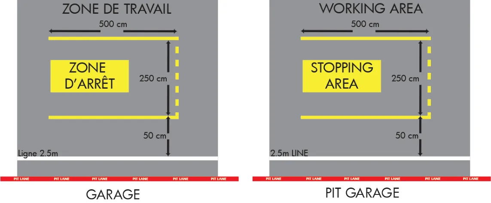</figure>
<p><span class="pagemark" id="p63">P.63</span>ANNEXE 1 : RÈGLEMENT PARTICULIER</p>
<p>APPENDIX 1: SUPPLEMENTARY REGULATIONS</p>
<p>PARTIE A (voir l’Article 2.2)</p>
<p>PART A (see Article 2.2)</p>
<p>1. Nom et adresse de l’Autorité Sportive Nationale (ASN)  XX</p>
<p>1. Name and address of the National Sporting Authority (ASN)  XX</p>
<p>2. Nom et adresse de l’organisateur  XX</p>
<p>2. Name and address of the organiser  XX</p>
<p>3. Date et lieu de la Compétition  XX</p>
<p>3. Date and place of the Competition  XX</p>
<p>4. Début des vérifications administratives et techniques  Le …….. (date) à …… (heure).</p>
<p>4. Start of the administrative checks and scrutineering  On…… (date) at….. (time).</p>
<p>5. Heure de départ de la course  XX</p>
<h5 id="5-Start-time-of-the-race-XX">5. Start time of the race  XX</h5>
<p>6. Adresse, numéro de téléphone et e-mail auxquels la correspondance peut être adressée  XX</p>
<p>6. Address, telephone number, fax number and email to which enquiries can be addressed  XX</p>
<p>7. Détails sur le circuit, comprenant obligatoirement :</p>
<p>7. Details of the circuit, which must include:</p>
<p>Localisation et moyens d’accès : XX Longueur d’un tour :  XX Durée de la course :  XX Direction (dans le sens des aiguilles d’une montre ou dans le sens opposé)  XX Localisation de la sortie des stands par rapport à la Ligne : XX</p>
<p>Location and how to get there: XX Length of one lap:  XX Race duration:  XX Direction (clockwise or anti-clockwise):	 XX</p>
<p>Location of pit exit in relation to Line: XX</p>
<p>8. Localisation précise sur le circuit du :</p>
<p>8. Precise location at the circuit of:</p>
<p>Bureau des Commissaires Sportifs : XX Bureau du Directeur d’Épreuve : XX Bureau de la FIA :  XX Vérifications administratives : XX Vérifications techniques, aire plane et pesées : XX Parc Fermé :  XX Briefing des Pilotes et Concurrents: XX Briefing des team managers : XX Briefing Pilotes :  XX Panneau d’affichage officiel* XX Conférence de presse du vainqueur XX Centre presse  XX Centre d’accréditation des médias XX</p>
<p>Stewards’ office:  XX Race Director’s office:  XX FIA office:   XX Administrative checks:  XX Scrutineering, flat area and weighing:	 XX Parc Fermé:  XX Driver and Competitor briefing: XX Team manager briefing: Date and time: XX Driver briefing: Date and time XX Official notice board*  XX Winner’s press conference	: XX Press centre:  XX Media accreditation centre XX</p>
<p>* Tous les classements seront affichés dès que possible après la fin des séances d’essais ou de la course.</p>
<p>* All classifications will be posted as soon as possible after the end of the sessions or the race.</p>
<p>9. Liste des trophées supplémentaires et récompenses spéciales (en plus de ceux prévus par le Règlement Sportif du Championnat).  XX</p>
<p>9. List of any supplementary trophies and special awards (in addition to those specified in the Sporting Regulations of the Championship).  XX</p>
<p>10. Nom des officiels de la Compétition suivants, désignés par l’ASN :</p>
<p>10. The names of the following officials of the Competition appointed by the ASN:</p>
<p>Commissaire Sportif : XX Directeur de Course : XX Secrétaire du meeting : XX Commissaire Technique National en Chef : XX Responsable Médical National :  XX Responsable Sécurité piste :  XX  11. Autres points spécifiques</p>
<p>Steward	:  XX Clerk of the Course: XX Secretary of the meeting:	 XX Chief National Scrutineer	 XX Chief National Medical Officer: XX Rescue Chief: XX</p>
<h5 id="11-Other-specific-points">11. Other specific points</h5>
<p>11.1 Horaires des séances (voir l’Article 1.4.1)</p>
<p>11.1 Session times (see Article 1.4.1)</p>
<p>3 séances d’essais chronométrés seront organisées comme suit :</p>
<p>3 timed practice sessions will be organised as follows:</p>
<p>- 1 séance de 60 minutes  - 2 séances de 90 minutes</p>
<p>- 1 practice session of 60 minutes  - 2 practice sessions of 90 minutes</p>
<p>1 séance d’essais qualificatifs sera organisée comme suit :</p>
<p>1 qualifying session will be organised as follows:</p>
<div class="tablewrap"><span class="pagemark" id="p64">P.64</span><table><tr><td>Séance</td><td>Durée</td><td>Début</td><td>Fin</td></tr><tr><td>Qualifciations LMGT3</td><td>xx min</td><td>xxhxx</td><td>xxhxx</td></tr><tr><td>Hyperpole LMGT3</td><td>xx min</td><td>xxhxx</td><td>xxhxx</td></tr><tr><td>Qualifciations LMH</td><td>xx min</td><td>xxhxx</td><td>xxhxx</td></tr><tr><td>Hyperpole LMH</td><td>xx min</td><td>xxhxx</td><td>xxhxx</td></tr></table></div>
<div class="tablewrap"><table><tr><td>Session</td><td>Length</td><td>Start</td><td>End</td></tr><tr><td>LMGT3 Qualifying</td><td>xx’</td><td>xx:xx</td><td>xx:xx</td></tr><tr><td>LMGT3 Hyperpole</td><td>xx’</td><td>xx:xx</td><td>xx:xx</td></tr><tr><td>LMH Qualifying</td><td>xx’</td><td>xx:xx</td><td>xx:xx</td></tr><tr><td>LMH Hyperpole</td><td>xx’</td><td>xx:xx</td><td>xx:xx</td></tr></table></div>
<p>11.2 Warm-up (voir l’Article 1.4.1)  Aucun warm-up ne sera organisé.</p>
<p>11.2 Warm-up (see Article 1.4.1)  No warm up will be organised.</p>
<p>11.3 Pole Position (voir l’Article 11.1.2)  « La Pole Position » se situe sur le côté (droite/gauche : à préciser) de la première ligne en accord avec l’homologation FIA du circuit.</p>
<p>11.3 Pole Position (see Article 11.1.2)  The “Pole Position” is on the (right/left: to be confirmed) of the front row according to circuit homologation by the FIA.</p>
<p>11.4 Tour de reconnaissance (voir l’Article 11.2.2)</p>
<p>11.4 Reconnaissance Lap (see Article 11.2.2)</p>
<p>La voie des stands ouvrira à hh :mm et fermera à hh :mm pour un ou plusieurs tours de reconnaissance.</p>
<p>The pit lane will open at hh:mm and will close at hh:mm for one or more reconnaissance laps.</p>
<p>Le tour de formation débutera à hh :mm</p>
<p>Formation lap will start at hh:mm</p>
<p>11.5 Zone mixte-interview (voir l’Article 4.1.5)</p>
<p>11.5 Mixed interview zone (see Article 4.1.5)</p>
<p>Comme indiqué dans le programme officiel.</p>
<p>As indicated in the official timetable.</p>
<p>PARTIE B (Réservée à la FIA) – voir l’Article 7.3</p>
<p>Président du collège :  XX Commissaire International : XX Directeur d’Épreuve :  XX Délégué Technique FIA : XX Délégué presse FIA :  XX Délégué médical FIA :  XX Délégué E-Safety FIA :  XX Chronométreur en chef : XX Pilote Conseiller des Commissaires Sportifs : XX Délégué sportif  XX</p>
<p>et, le cas échéant,</p>
<p>Observateur(s) :  Assistant(s) :</p>
<p>PART B (Reserved for the FIA) – see Article 7.3</p>
<p>Chairperson of the Stewards: XX International Steward: XX Race Director: XX Technical Delegate: XX Press delegate: XX Medical delegate: XX FIA E-Safety delegate: XX Chief timekeeper: XX Driver Adviser to the Stewards: XX Sporting delegate: XX</p>
<p>and, if appropriate,</p>
<p>Observer(s): XX Assistant(s): XX</p>
<p>PARTIE C - Programme détaillé de la Compétition</p>
<p>A envoyer à la FIA avec l’Annexe 1 dûment complétée.</p>
<p>PART C - Detailed timetable of the Competition</p>
<p>To be sent to the FIA together with the duly completed Appendix 1.</p>
<p>PARTIE D - Convention d’organisation et Questionnaire médical</p>
<p>PART D - Organisation Agreement and Medical Questionnaire</p>
<p>Voir l’Article 2.2 (disponible au Secrétariat de la FIA).  Convention d’organisation : A envoyer à la FIA dûment complétée au plus tard un mois avant le début de la Compétition.</p>
<p>See Article 2.2 (available from the FIA Secretariat).  Organisation Agreement: To be sent to the FIA at the latest one month prior to the Competition.</p>
<p>Questionnaire médical : A envoyer à la FIA (Département Médical) dûment complétée au plus tard deux mois avant le début de la Compétition, conformément à l’Annexe H du Code Sportif International.</p>
<p>Medical Questionnaire: To be sent to the FIA (Medical Department) at the latest two months prior to the Competition in accordance with Appendix H to the International Sporting Code.</p>
<p>PARTIE E - Assurance (Voir l’Article 2.3)</p>
<p>PART E - Insurance (see Article 2.3)</p>
<p>A envoyer à la FIA avec l’Annexe 1 dûment complétée.</p>
<p>To be sent to the FIA together with the duly completed Appendix 1.</p>
<p><span class="pagemark" id="p65">P.65</span>ANNEXE 2 : ENGAGEMENTS ET CONDITIONS FINANCIÈRES</p>
<p>APPENDIX 2: ENTRY FORMS AND FINANCIAL CONDITIONS</p>
<p>1. Bulletin d’engagement et dates limites</p>
<h5 id="1-Entry-form-and-deadlines">1. Entry form and deadlines</h5>
<p>Le bulletin d’engagement sera disponible sur le lien suivant :</p>
<p>The entry form will be available under the following link:</p>
<p>https://registrations.fia.com/wec</p>
<p>https://registrations.fia.com/wec</p>
<p>à compter du 21 octobre 2025. Conformément à l’Accord, les dossiers de candidature devront être retournés au «Promoteur», en original par la poste, complétés et signés, à l’adresse suivante, au plus tard le 27 novembre 2025 à midi CET, le cachet de la poste faisant foi :</p>
<p>from the 21 October 2025. In accordance with the Agreement, application dossiers must be returned to the Promoter, in the original by post, completed and signed, to the following address, postmarked 27 November 2025 midday CET at the latest:</p>
<p>Le Mans Endurance Management  A l’attention de Mme. Morgane Tizon  FIA WEC  27/33, Quai Alphonse Le Gallo  92100 BOULOGNE-BILLANCOURT  FRANCE</p>
<p>Le Mans Endurance Management  For the attention of Mrs Morgane Tizon  FIA WEC  27/33, Quai Alphonse Le Gallo  92100 BOULOGNE-BILLANCOURT  FRANCE</p>
<p>Le Comité de Sélection appelé à statuer sur les candidatures se réunira au plus tard le 1er décembre 2025.</p>
<p>The Selection Committee, called upon to rule on applications, will meet at the latest on 1st December 2025.</p>
<p>Contacts FIA :</p>
<p>FIA Contacts:</p>
<p>FIA Geneva – WEC Department  Chemin de Blandonnet 2 – CH 1215 Genève 15  Fax: + 41 22 544 44 74</p>
<p>FIA Geneva – WEC Department  Chemin de Blandonnet 2 – CH 1215 Genève 15  Fax: + 41 22 544 44 74</p>
<p>Directeur du Départment Circuit Sport FIA :   Mr Marek NAWARECKI (mnawarecki@fia.com)</p>
<p>FIA Director of Circuit Sport Department:   Mr Marek NAWARECKI (mnawarecki@fia.com)</p>
<p>Coordinateur Sportif FIA:   Mr Sina AMIRDIVANI (samirdivani@fia.com)</p>
<p>FIA Sporting Coordinator:   Mr Sina AMIRDIVANI (samirdivani@fia.com)</p>
<p>Tous les montants s’entendent hors taxes, TVA applicables selon les règles fiscales en vigueur.</p>
<p>All the amounts are “excluding VAT”. VAT may be added according to applicable tax rules in force.</p>
<p>Concernant l’article 3.1.5 du présent Règlement, après le 27 Janvier 2026 à midi, aucune modification au nom de la licence du Concurrent ne pourra être apportée.</p>
<p>Concerning Article 3.1.5 of the present Regulations, after January 27th 2026 at midday, no further modification of the name of the Competitor’s licence will be accepted.</p>
<p>2.  Droits de participation et droits d’engagement</p>
<p>2. Participation and entry fees</p>
<p>Les droits de participation au Championnat sont composés des droits d’engagement et des avances sur les fournitures et frais techniques.</p>
<p>Participation fees for the Championship are composed of entry fees and advances on technical costs and supplies.</p>
<p>Les droits d’engagement au Championnat s’élèvent à 28 300 € par voiture et par Compétition, à multiplier par le nombre de Compétitions comptant pour le Championnat (à l’exclusion des 24 Heures du Mans, voir Article 3.1.3). La non-participation d’un Concurrent ne donnera lieu à aucun remboursement sauf circonstances exceptionnelles laissées à l’appréciation du Collège des Commissaires Sportifs.</p>
<p>Entry fees for the Championship are €28,300 per car and per Competition, to be multiplied by the number of Competitions counting towards the Championship (excluding the 24 Hours of Le Mans; see Article 3.1.3). If a Competitor does not take part, these fees will be reimbursed only in exceptional circumstances, at the discretion of the Panel of Stewards.</p>
<p>Les droits d’engagement aux titres de Champion du Monde Hypercar et Coupe du Monde des Équipes Hypercar, en supplément des droits requis pour participer au Championnat, sont les suivants :</p>
<p>The entry fees for the titles of Hypercar World Champion and World Cup Hypercar Teams in addition to the fees charged for taking part in the Championship, are as follows:</p>
<p>o Pour les Hypercar : 554 000 € par Constructeur engagé  o Pour la Coupe du Monde des Équipes Hypercar : 147 800 € par Concurrent  o Pour les LMGT3 : 335 800 € par Constructeur si pas engagé en Hypercar, 134 400 € si engagé en Hypercar.</p>
<p>o For Hypercar: €554,000 per Manufacturer entered  o For the Hypercar Team World Cup: €147,800 per Competitor  o For LMGT3: €335,800 per Manufacturer if not entered in Hypercar, €134,400 if entered in Hypercar.</p>
<p>3. Droits de participation pour les Concurrents dits  « course par course »</p>
<p>3. Participation fees for race-by-race Competitors</p>
<p>Les droits de participation des Concurrents dits « course par course » à une Compétition du Championnat, sont les suivants :  o 52 300 € par voiture et par Compétition,  o Au titre de l’avance sur fournitures et autres frais techniques (incluant le service de prévision météo) :  • 15 000 € pour toutes les Compétitions comprenant une</p>
<p>The participation fees for race-by-race Competitors in a Championship Competition are as follows:  o €52,300 per car and per Competition,  o As an advance on supplies and other technical costs (including weather forecast service):  • €15,000 for any Competition with a 6-hour race.</p>
<p><span class="pagemark" id="p66">P.66</span>course d’une durée de 6 heures.  • 20 000 € pour toutes les Compétitions comprenant une course d’une durée de 8 heures.  • 25 000 € pour toutes les Compétitions comprenant une course d’une durée de 10 heures.</p>
<p>• €20,000 for any Competition with an 8-hour race</p>
<p>• €25,000 for any Competition with a 10-hour race</p>
<p>4. Paiement des droits de participation</p>
<p>4. Payment of participation fees</p>
<p>Les droits de participation d’une voiture au moins par Concurrent et par catégorie doivent être payés au moment du dépôt du dossier d’engagement, par virement bancaire à la FIA, à l’adresse suivante :  FIA  8, Place de la Concorde  75008 Paris (France)</p>
<p>The participation fees for at least one car per Competitor and per category must be paid at the time of submitting the entry dossier, by bank transfer to the FIA at the following address: FIA  8, Place de la Concorde  75008 Paris (France)</p>
<p>sur le compte bancaire dont les coordonnées sont les suivantes :</p>
<p>into the bank account of which the details are as follows:</p>
<p>SG PARIS CENTRE ENT (02267)  132 Rue Réaumur  75002 PARIS</p>
<p>SG PARIS CENTRE ENT (02267)  132 Rue Réaumur  75002 PARIS</p>
<p>Titulaire du compte : FIA  IBAN : FR76 3000 3022 6700 0200 1171 295  BIC : SOGEFRPP</p>
<p>Account holder: FIA  IBAN: FR76 3000 3022 6700 0200 1171 295  BIC: SOGEFRPP</p>
<p>A condition d’en faire la demande expresse auprès du Promoteur et de la FIA, avant la clôture des engagements, si le Concurrent engage au moins deux voitures dans la même catégorie, il pourra demander à payer 50% du montant de l’engagement de chaque voiture au plus tard le 17 janvier 2026, le versement de 50% de chaque engagement devant être effectué avant la date limite des inscriptions. Dans ce cas, le montant complémentaire devra être versé sur le compte de la FIA sous peine de refus de l’inscription du Concurrent aux Compétitions du Championnat restant à courir.  5. Avance sur frais techniques et sur carburant</p>
<p>Provided that the Competitor makes the express request to the Promoter and to the FIA, before the closing of entries, if the Competitor enters at least two cars in the same category, he may ask to pay 50% of the amount of the entry fee for each car on 17 January 2026 at the latest, the payment of 50% of each entry fee having to be made before the closing date for entries. In this case, the balance must be paid into the FIA’s bank account. Failure to do so could lead the Competitor being refused entry to the Championship Competitions yet to take place.</p>
<p>5. Advance on technical costs and fuel</p>
<p>Tous les Concurrents officiellement retenus par le Comité de Sélection, devront s’acquitter uniquement par virement bancaire auprès du Promoteur, à titre d’avance sur carburant et autres frais techniques incluant les services de prévisions météorologiques des sommes suivantes :</p>
<p>All Competitors officially selected by the Selection Committee must pay only by bank transfer, as an advance on fuel and other technical costs such a weather forecasts service, the following sums to the Promoter:</p>
<p>Pour la catégorie Hypercar :  o 60 000 € : le 13 février 2026  o 60 000 € : le 22 mai 2026   Pour la catégorie LMGT3 :  o 50 000 €: le 13 février 2026  o 50 000 €: le 22 mai 2026</p>
<p>For the Hypercar category:  o €60,000 : on the 13th February 2026  o €60,000 : on the 22nd May 2026</p>
<p>For the LMGT3 category:  o €50,000 : on the 13th February 2026  o €50,000 : on the 22nd May 2026</p>
<p>sur le compte bancaire dont les coordonnées sont les suivantes :</p>
<p>into the bank account of which the details are as follows:</p>
<p>Le Mans Endurance Management  BNP PARIBAS PAYS DE LA LOIRE  Code Banque : 30004  Code agence : 02408  Numéro de compte: 00011707628 clé RIB : 58  IBAN : FR76 3000 4024 0800 0117 0762 858  BIC : BNPAFRPPXXX</p>
<p>Le Mans Endurance Management  BNP PARIBAS PAYS DE LA LOIRE  Banking code: 30004  Counter code: 02408  Account number: 00011707628  Key: 58  IBAN: FR76 3000 4024 0800 0117 0762 858  BIC: BNPAFRPPXXX</p>
<p>Les sommes non utilisées au titre de l’avance sur frais techniques et sur carburant seront restituées à l’issue de la dernière Compétition de chaque saison.</p>
<p>The amounts not used as advance on technical costs and fuel will be returned after the last Competition in the season.</p>
<p><span class="pagemark" id="p67">P.67</span>ANNEXE 3 : SIGNALÉTIQUE OBLIGATOIRE</p>
<p>APPENDIX 3: MANDATORY SIGNAGE</p>
<p>1. Signalétique apposée sur les voitures  Dispositions générales</p>
<p>1. Signage affixed to the cars  General provisions</p>
<p>Les voitures doivent être présentées :</p>
<p>The cars must be presented:</p>
<p>Avec un drapeau mesurant 140 x 100 mm de la nationalité de la licence du Concurrent apposé sur le capot avant. Cet autocollant n’est pas fourni par l’organisation.  Les numéros tels que demandés par le Promoteur doivent être mis en place dans leur intégralité (sauf autorisation écrite) avant les vérifications techniques.  Pour le positionnement des fonds des numéros de course et de tous les autres autocollants (logo du Championnat, site Internet ou sponsors...) tel que décrit ci-dessous, se référer au plan d’implantation des autocollants ci-annexé.  En cas de non-conformité, le Concurrent devra suivre les instructions données.</p>
<p>With a flag measuring 140 x 100 mm of the nationality of the Competitor’s licence affixed to the front bonnet. This sticker is not provided by the Organisers.  The numbers as requested by the Promoter must be in place in their entirety (unless with written authorisation) before scrutineering. For positioning the backgrounds of the race numbers and of all the other stickers (Championship logo, website or sponsors) as described below, refer to the sticker installation plan appended hereto.  In case of non-compliance, the Competitor must follow the instructions given.</p>
<p>2. Fonds de numéros de course  Les fonds des numéros de course doivent être produits et posés par les Concurrents avant les vérifications techniques. Ils doivent rester visibles en toute circonstance.</p>
<p>2. Backgrounds of the race numbers  The backgrounds of the race numbers must be produced and affixed by the Competitors before scrutineering. They must remain visible in all circumstances.</p>
<p>Les 3 fonds des numéros dimensions 250 mm (hauteur) x 350 mm (largeur) doivent impérativement respecter les couleurs ci-dessous :  o Hypercar : Rouge pantone 485,  o LMGT3: Vert pantone 355C.</p>
<p>The 3 backgrounds of the numbers measuring 250 mm (height) x 350 mm (width) must imperatively respect the following colours:  o Hypercar: Pantone red 485,  o LMGT3: Pantone green 355C.</p>
<p>Les 2 fonds de numéros de course latéraux doivent être apposés autant que possible sur une surface plane et verticale et doivent être situés entre les roues avant et arrière.</p>
<p>The 2 backgrounds of the lateral race numbers must be affixed as far as possible on a flat and vertical surface. They must be situated between the front and rear wheels.</p>
<p>Le fond de numéro de course situé sur la partie avant de la voiture doit être situé dans une zone où il est facilement visible par la Direction de Course et les caméras de télévision.</p>
<p>The background of the race number situated on the front of the car must be situated in an area where it is easily visible to Race Control and the television cameras.</p>
<p>3. Numéros de course  Ils peuvent être choisis par les Concurrents (de 1 à 999) avant la fin des inscriptions selon le principe du « premier arrivé, premier servi »  Pour les Concurrents n’ayant pas demandé de numéro(s) de course avant la fin de la période d’inscription, ces derniers seront attribués par le Promoteur pour toute la saison.  La seule exception à cette procédure d’attribution concernera le Champion du Monde Hypercar en titre qui aura la possibilité d’utiliser le numéro 1. Le numéro qui lui a été précédemment attribué lui sera réservé pour les saisons suivantes s’il ne conserve pas son titre de Champion du Monde Équipe.</p>
<p>3. Race numbers  These can be chosen by the Competitors (from 1 to 999) before the end of registration on a ‘first come, first served’ basis. For the Competitors that did not request race number(s) before the end of the registration period, they will be allocated by the Promoter for the whole season.  The only exception to this allocation process will be for the reigning Hypercar World Champion, who will have the option to use the number 1. The number that was previously allocated to him will be reserved for him in subsequent seasons if he does not retain his World Champion Team title.</p>
<p>Si le Champion du Monde ne souhaite pas utiliser le numéro 1, ce numéro sera disponible pour d’autres Concurrents souhaitant l’utiliser.</p>
<p>Should the World Champion not wish to use the number 1, this number will be available for other Competitors who wish to use it.</p>
<p>La procédure et les conditions d’attribution sont précisées en détail dans le «Contrat Commercial FIA WEC».</p>
<p>The precise allocation process and conditions are detailed in the FIA WEC Commercial Agreement.</p>
<p>Les numéros de course doivent être produits et posés par chaque Concurrent sur les fonds des numéros de course décrits ci-dessus en respectant les règles suivantes :  Hauteur : de 180 mm à 210 mm maximum  Epaisseur : libre  Couleur : libre mais doit être une couleur unique contrastant avec la couleur du fond de la catégorie  Police : libre  Les numéros doivent être facilement lisibles, dans une police simple et claire, et contraster fortement avec la couleur des fonds de chaque catégorie  Zone dégagée de 20 mm au minimum autour des numéros</p>
<p>They must be produced and affixed by each Competitor on the race number backgrounds described above and must respect the following rules:  Height: From 180 mm to 210 mm maximum  Thickness: free  Colour: free, but must be a unique colour contrasting with the background colour of the category  Font: free  Numbers must be easily legible in a clear, simple font, and contrast strongly with the background colour of each category Minimum clear area of 20 mm around the numbers</p>
<p>Si un Concurrent ne souhaite pas choisir le design de son(ses) numéro(s) de course, il doit respecter les règles suivantes :  Hauteur : 21 cm  Épaisseur : 4 cm  Couleur : blanc  Police : Helvetica Neue Bold Condensed</p>
<p>If a Competitor does not wish to choose the design of its race number(s), it must respect the following rules:  Height: 21 cm  Thickness: 4 cm  Colour: white  Font: Helvetica Neue Bold Condensed</p>
<p><span class="pagemark" id="p68">P.68</span>Pour les courses se déroulant de nuit ou en partie de nuit, les voitures devront être équipées de supports électroluminescents blancs (ou équivalents) de façon à ce que les numéros de course soient visibles à tout moment la nuit.  En cas d’impossibilité d’identifier une voiture par ses numéros (de jour ou de nuit), elle sera arrêtée par la Direction de Course.</p>
<p>For races run at night or partly at night, the cars must be equipped with white electroluminescent backgrounds (or equivalent) to ensure the race numbers are visible at any time at night. If it is impossible to identify a car from its numbers (by day or by night), it will be stopped by Race Control.</p>
<p>4. Élément distinctif  2 voitures d’un même concurrent ayant la même livrée, doivent utiliser une couleur de rétroviseurs différente pour chaque voiture, afin de les distinguer l’une de l’autre.</p>
<p>4. Distinctive element  2 cars from the same Competitor having the same car livery must use a different side mirrors colour for each car, in order to distinguish one from each other.</p>
<p>5. Autocollant avec le logo du Championnat  Les autocollants avec le logo du Championnat seront fournis par le Promoteur et devront être mis en place avant les vérifications techniques.</p>
<p>5. Sticker with Championship logo  The stickers with the Championship logo will be supplied by the Promoter and must be in place before scrutineering.</p>
<p>Les Hypercar et les LMGT3 doivent prévoir un emplacement libre mesurant 100 mm (hauteur) x 350 mm (largeur) pour installer l’autocollant avec le logo du Championnat. Il devra obligatoirement être situés directement au-dessus du fonds des numéros sur la partie avant de la voiture.</p>
<p>Hypercar and LMGT3 cars must have one free location measuring 100 mm (height) x 350 mm (width) for installing the sticker with the Championship logo. It must be situated directly above the backgrounds of the numbers on the front part of the car.</p>
<p>6. Autocollants avec sponsors du Championnat ou de La Compétition</p>
<p>6. Stickers with sponsors of the Championship or of the Competition</p>
<p>Tel que requis par le Promoteur du Championnat, les autocollants avec le sponsor du Championnat ou de la Compétition seront fournis par le Promoteur du Championnat et devront être mis en place par les Concurrents sur leurs voitures avant les vérifications techniques.</p>
<p>As required by the Championship Promoter, the stickers with the sponsor of the Championship or of the Competition will be supplied by the Championship Promoter and must be affixed by the Competitors to their cars before scrutineering</p>
<p>Les Hypercar et les LMGT3 doivent prévoir deux emplacements libres autant que possible sur une surface plane et verticale mesurant 100 mm (hauteur) x 350 mm (largeur) pour installer les autocollants avec le sponsor du Championnat ou de la Compétition. Ils devront, obligatoirement, être situés directement au-dessus des fonds des numéros ou des panneaux d’affichage.</p>
<p>Hypercar and LMGT3 cars must have two free locations as far as possible on a flat and vertical surface measuring 100 mm (height) x 350 mm (width) for installing the stickers with the sponsor of the Championship or of the Competition. They must be situated directly above the backgrounds of the numbers or the display panels.</p>
<p>7. Autocollants pour voitures hybrides  Ils sont fournis par le Promoteur et devront être mis en place avant les vérifications techniques.</p>
<p>7. Stickers for hybrid cars  These are supplied by the Promoter and must be in place before scrutineering.</p>
<p>Les prototypes hybrides doivent prévoir trois emplacements libres mesurant 160 mm (hauteur) x 160 mm (largeur).</p>
<p>Hybrid prototypes must have three free locations measuring 160 mm (height) x 160 mm (width).</p>
<p>8. Autocollants FIA/ACO  Les Concurrents sont tenus d’apposer les 3 autocollants FIA/ACO sur les voitures à l’emplacement de leur choix dans les dimensions suivantes :  o Voitures : 180 x 61 mm</p>
<p>8. FIA / ACO stickers  Competitors are required to place the 3 FIA/ACO stickers on their cars in the position of their choice in the following dimensions: o Cars: 180 x 61 mm   The stickers will be available for collection from the Promoter in white or blue monochrome.</p>
<p>Les autocollants seront disponibles auprès du Promoteur en monochrome blanc ou bleu.</p>
<p>9. Visibilité Michelin pour les Concurrents de la catégorie Hypercar</p>
<p>9. Michelin visibility for the Hypercar Competitors</p>
<p>Visibilité sur les voitures  Les Concurrents de la catégorie Hypercar sont tenus d’apposer au minimum 6 autocollants «Michelin» sur les voitures en accord avec les schémas ci-dessous.</p>
<p>Visibility on the cars  Hypercar category Competitors are required to place as a minimum, 6 Michelin stickers on their cars in accordance with the drawings below.</p>
<p>Les autocollants seront disponibles auprès de Michelin, le fournisseur unique de pneumatiques de la catégorie Hypercar.</p>
<p>The stickers will be available for collection from Michelin, the only tyre supplier in the Hypercar category.</p>
<p>Les Concurrents devront placer à l’avant de la voiture (zone bleue) 2 autocollants Michelin de 350 mm de longueur minimum ou 2 autocollants Bibendum de 200mm de hauteur minimum ou bien, 1 autocollant Michelin de 500mm de longueur.</p>
<p>Competitors must place 2 Michelin stickers of at least 350mm width or 2 Michelin Man decals of at least 200mm height or 1 Michelin sticker of 500mm width on the front part of the car (blue section).</p>
<p>Ensuite, 2 autocollants Michelin de 350 mm de longueur minimum ou 2 Bibendum de 200mm de hauteur minimum devront être situés à l’arrière de la voiture (zone jaune).</p>
<p>Then, 2 Michelin stickers of 350 mm minimum width or 2 Michelin Man decals of at least 200mm height must be located at the rear of the car (yellow section).</p>
<p>Enfin, les Concurrents pourront choisir de placer soit 2 autocollants Michelin de 350 mm de longueur minimum ou bien 2 autocollants Bibendum de 200mm de hauteur minimum (un de chaque côté de la voiture dans la zone orange).</p>
<p>Finally, Competitors must position either 2 Michelin stickers of 350mm minimum width or Michelin Man decals of at least 200mm height (one on each side of the car on the orange section).</p>
<p><span class="pagemark" id="p69">P.69</span>Les autocollants (Michelin ou Bibendum) devront être placés sur un seul élément de carrosserie et ne pas en chevaucher deux éléments.</p>
<p>The stickers (Michelin or Michelin Man) must be placed on a single element bodywork and not straddle two elements of bodywork.</p>
<p>Les autocollants Bibendum devront être positionnés au niveau des passages de roues (aussi haut que possible).</p>
<p>Michelin Man decals must be positioned near the front wheel, and as high as possible, as well as on the rear wing endplates.</p>
<p>Il est interdit de placer des autocollants sur les prises d’air ou sur les parties plates de la carrosserie comme les lames avant.</p>
<p>It is not permitted to position stickers over air-intakes or on flat parts of the bodywork like the front splitter.</p>
<p>Il est obligatoire d’avoir au minimum 1 autocollant Michelin de chaque côté de la voiture et non uniquement des autocollants Bibendum.</p>
<p>It is mandatory to have at least 1 Michelin sticker on each side of the car and not only Michelin Man decals.</p>
<p>Visibilité combinaison pilote  Les pilotes de la catégorie Hypercar sont tenus d’apposer au minimum trois logo tels que décrit ci-dessous :  - Un logo horizontal au niveau de la poitrine, sur le côté droit : minimum 12cm.  - Le Bibendum, 8 cm ou 12 cm, sur l’épaule de chacune des deux manches.  Les concurrents pourront contacter Michelin si besoin d’ajustements.</p>
<p>Drivers’ overalls visibility  Hypercar category drivers must wear a minimum of three logos as described below:  - One horizontal logo at the chest level, on the right: minimum 12 cm.  - The Michelin Man, 8 cm or 12 cm, on the shoulder of each of the two sleeves.  Competitors may contact Michelin if adjustments needed.</p>
<p>10. Autocollants Goodyear pour les Concurrents de la catégorie LMGT3</p>
<p>10. Goodyear stickers for the LMGT3 Competitors</p>
<p>Visibilité sur les voitures  Les Concurrents de la catégorie LMGT3 sont tenus d’apposer les autocollants «Goodyear» sur les voitures en accord avec les schémas ci-dessous.</p>
<p>Visibility on the cars  LMGT3 Competitors are required to place the Goodyear stickers on their cars in accordance with the drawings below.</p>
<p>Les autocollants seront pré-espacés, de couleur unique (blanc, noir ou selon l’accord et la validation de Goodyear), disponibles auprès de Goodyear, le fournisseur unique de pneumatiques de la catégorie LMGT3.</p>
<p>The stickers will be pre-spaced, single colour (black, white, or as agreed and approved by Goodyear), available for collection from Goodyear, the only tyre supplier in the LMGT3 category.</p>
<p>Au moins deux autocollants Goodyear situés sur chaque côtés dans la zone verte et proche de l’autocollant LMGT3 (lorsque cela est possible) devront être aussi visible que possible lorsque la voiture est vue de côté.</p>
<p>At least 2 Goodyear stickers will be located on each side of the car in the green section next to the LMGT3 sticker (when possible) and they must be as visible as possible when the car is viewed from the side.</p>
<p>Ces deux autocollants Goodyear mesureront environ 450 mm.</p>
<p>These 2 Goodyear stickers will be around 450mm.</p>
<p>4 autocollants Goodyear devront également être situés sur chaque coin de la voiture (dans la zone jaune) et ils devront être aussi visible que possible  Ces quatre autocollants Goodyear mesureront environ 300 mm.</p>
<p>4 Goodyear stickers must also be located on each corner of the car (in the yellow section) and they must be as visible as possible. These 4 Goodyear stickers will be around 300mm.</p>
<p>Visibilité combinaison pilote  Les pilotes de la catégorie LMGT3 sont tenus d’apposer au mini- mum trois logo tels que décrit ci-dessous :  - Un logo horizontal au niveau de la poitrine, sur le côté droit : minimum 10 cm.  - Un logo horizontal sur l’épaule de chacune des deux manches : proportionnel aux autres logos visibles.  Les concurrents pourront contacter Goodyear si besoin d’ajustements.</p>
<p>Drivers’ overalls visibility  LMGT3 category drivers must wear a minimum of three logos as described below:  - One horizontal logo at the chest level, on the right: minimum 10 cm.  - One horizontal logo on the shoulder of each of the two sleeves : in proportion with the other visible logos.  Competitors may contact Goodyear if adjustments needed.</p>
<p>11. Signalétique apposée sur les combinaisons des Pilotes et mécaniciens  Les patches FIA World Endurance Championship et 24 Heures du Mans devront obligatoirement être cousus/brodés/imprimés sur les combinaisons des Pilotes et des mécaniciens en respectant les règles de sécurité de la FIA.</p>
<p>11. Signage affixed to the Drivers’ and mechanics’ overalls  The FIA World Endurance Championship and 24 Hours of Le Mans patches must be stitched/embroidered/printed on the Drivers’ and mechanics’ overalls in the respect of the FIA safety rules.</p>
<p>Les infractions concernant cet article peuvent entraîner des sanctions en accord avec le Contrat Commercial FIA WEC.</p>
<p>Any breach of this article may lead to sanctions in accordance with the FIA WEC Commercial Agreement.</p>
<p>La position des patches sur les combinaisons Pilotes et mécaniciens doit respecter le schéma de position ci-dessous.</p>
<p>The position of the patches on the Drivers’ and mechanics’ overalls must respect the positioning diagram below.</p>
<p>Toutes les spécifications sont disponibles sur demande auprès du Promoteur.</p>
<p>All the specifications are available from the Promoter upon request.</p>
<p>La dimension du patch cousus/brodés/imprimés sera de 135 mm (longueur) x 56 mm (hauteur).</p>
<p>The dimensions of the stitched/embroidered/printed patches are: 135 mm (length) x 56 mm (height).</p>
<p>Position des patches des Pilotes et des mécaniciens : 2 patches.</p>
<p>Drivers’ and mechanics’ patch position: 2 patches.</p>
<figure><span class="pagemark" id="p70">P.70</span>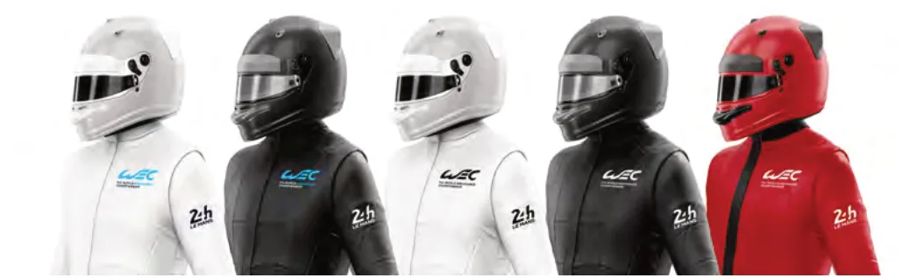</figure>
<figure><span class="pagemark" id="p71">P.71</span>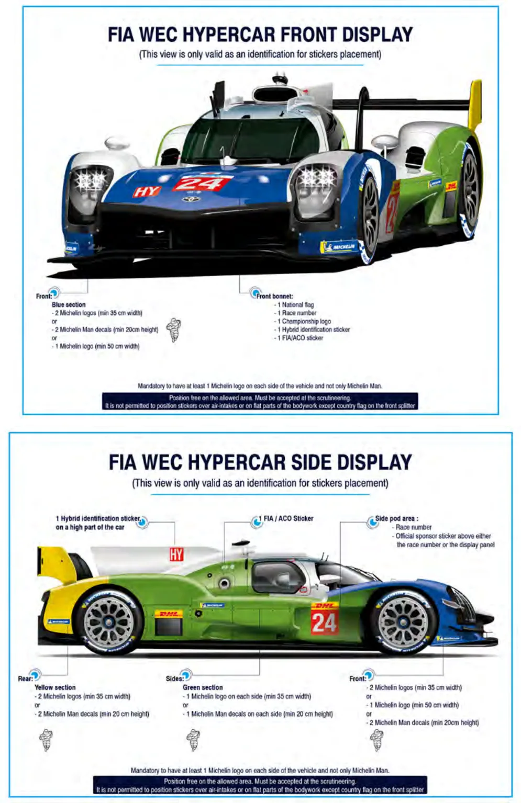</figure>
<figure><span class="pagemark" id="p72">P.72</span>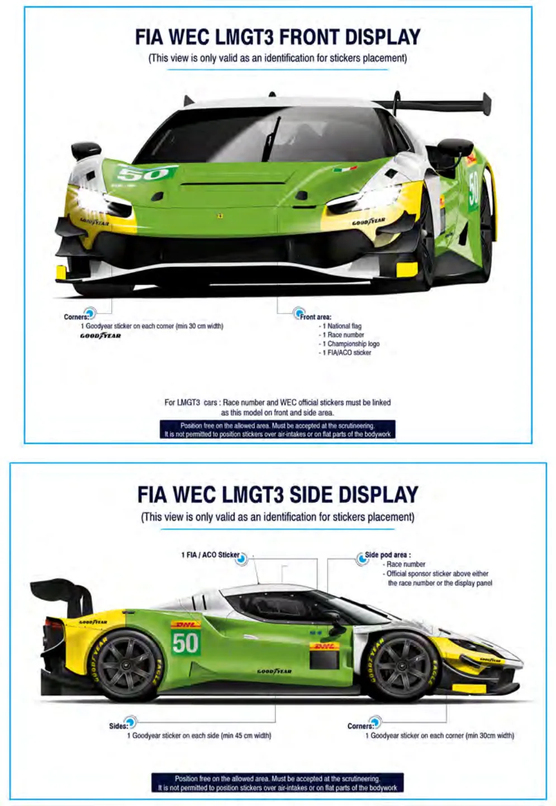</figure>
<p><span class="pagemark" id="p73">P.73</span>ANNEXE 4 : PÉNALITÉS LIÉES AU NON-RESPECT DE LA</p>
<p>RÉGLEMENTATION TECHNIQUE</p>
<p>TR: Réglementation Technique / SR: Réglementation Sportive</p>
<p>APPENDIX 4: PENALTIES FOR FAILURE TO RESPECT THE TECHNICAL REGULATIONS</p>
<p>TR: Technical Regulations / SR: Sporting Regulations</p>
<div class="tablewrap"><table><tr><td>Nr.</td><td>Topic</td><td>Article</td><td>Qualifying</td><td>Race</td><td></td></tr><tr><td></td><td></td><td></td><td></td><td>Occurrence</td><td>Penalty</td></tr><tr><td>HYPERCAR</td><td></td><td></td><td></td><td></td><td></td></tr><tr><td>1</td><td>Energy per stint &gt; BOP limit</td><td>Art. 5.1.1 &amp; 6.8 (TR-LMH)
Art. 5.1.1 &amp; 6.8 (TR-LMDh)
WEC Committee Decision</td><td>-</td><td>1st time
2nd time
3rd time +</td><td>Stop&amp;Go 100 sec
Stop&amp;Go 200 sec
Stop&amp;Go 300 sec</td></tr><tr><td>2</td><td>Maximum released powertrain power
&gt; limit of Technical regulation and BOP
table</td><td>Art. 5.1.2 (TR-LMH)
WEC Committee Decision</td><td>current &amp; next lap
times cancelled</td><td>1st time
2nd time
3rd time +</td><td>Reprimand
Stop&amp;Go 5 sec
Stop&amp;Go 30 sec</td></tr><tr><td></td><td>Maximum EOS Recovery over Limit</td><td>Art. 5.1.2 (TR)</td><td></td><td></td><td></td></tr><tr><td></td><td>Maximum released ERS power &gt; limit</td><td>Art. 5.3.2 (TR)</td><td></td><td></td><td></td></tr><tr><td></td><td>ERS deployment speed &lt; BOP limit</td><td>Art. 5.3.2 (TR)</td><td></td><td></td><td></td></tr><tr><td></td><td>Front and total braking torque transfer
&gt; limit</td><td>Art. 9.11 (TR-LMH)
Art. 9.11 (TR-LMDh)</td><td></td><td></td><td></td></tr><tr><td>2*</td><td>Maximum released powertrain power
&gt; limit of Technical regulation and BOP
table+5%</td><td>Art. 5.1.2 (TR-LMH)
WEC Committee Decision</td><td>current &amp; next lap
times cancelled</td><td>1st time
2nd time
3rd time +</td><td>Stop&amp;Go 100 sec
Stop&amp;Go 200 sec
Stop&amp;Go 300 sec</td></tr><tr><td>3</td><td>Pit launch release time &lt; BOP limit</td><td>WEC Committee Decision</td><td>-</td><td>1st time
2nd time
3rd time +</td><td>Add 5 sec next pitstop
Add 10 sec next pitstop
Add 20 sec next pitstop</td></tr><tr><td>LMGT3</td><td></td><td></td><td></td><td></td><td></td></tr><tr><td>4</td><td>Energy per stint &gt; BOP limit</td><td>Art. 6.5 (TR-LMGT3)
WEC Committee Decision</td><td></td><td>1st time
2nd time
3rd time +</td><td>Stop&amp;Go 100 sec
Stop&amp;Go 200 sec
Stop&amp;Go 300 sec</td></tr><tr><td>5</td><td>Maximum released powertrain power
&gt; limit of Technical regulation and BOP
table</td><td>Art. 5.2 (TR-LMGT3)
WEC Committee Decision</td><td>current &amp; next lap
times cancelled</td><td>1st time
2nd time
3rd time +</td><td>Reprimand
Stop&amp;Go 5 sec
Stop&amp;Go 30 sec</td></tr><tr><td>5*</td><td>Maximum released powertrain power
&gt; limit of Technical regulation and BOP
table+5%</td><td>Art. 5.2 (TR-LMGT3)
WEC Committee Decision</td><td>current &amp; next lap
times cancelled</td><td>1st time
2nd time
3rd time +</td><td>Stop&amp;Go 100 sec
Stop&amp;Go 200 sec
Stop&amp;Go 300 sec</td></tr><tr><td>ALL CATEGORIES</td><td></td><td></td><td></td><td></td><td></td></tr><tr><td>6</td><td>Data not transferred within due time after
pitstop</td><td>Art. 6.4.1 (SR)</td><td>-</td><td>1st time
2nd time +</td><td>Warning
Add 5 sec next pitstop</td></tr><tr><td>7</td><td>Cockpit temperature &gt; limit</td><td>Art. 13.13 (TR-LMH)
Art. 13.13 (TR-LMDh)</td><td>-</td><td>All times</td><td>Stop &amp; repair (Black &amp;
orange falg)</td></tr><tr><td>8</td><td>Team CAN channels not correct</td><td></td><td>Lap time
cancelled</td><td>All times</td><td>Stop &amp; repair</td></tr><tr><td>9</td><td>FIA/ACO sensor signal in error</td><td></td><td>Lap time
cancelled</td><td>All times</td><td>Stop &amp; repair</td></tr><tr><td>10</td><td>Use of non-homologated sensors in any
session in any event</td><td></td><td>Stop &amp; go 30 sec to be applied in race</td><td></td><td></td></tr><tr><td>11</td><td>Tire pressure below tire manufacturer’s
requirements</td><td>Art 6.5.3 (SR)</td><td></td><td>All times</td><td>Stop &amp; repair (Black &amp;
orange falg)
Add 20 sec next pitstop</td></tr></table></div>
<p><span class="pagemark" id="p74">P.74</span>Conformément aux dispositions de l’article 12.3.4 du Code Sportif International, les sanctions prévues à l’Annexe 4 ne sont pas susceptibles d’appel.</p>
<p>In accordance with the provisions of Article 12.3.4 of the International Sporting Code, the penalties set out in Appendix 4 are not susceptible to appeal.</p>
<p>Toute infraction survenant dans les 30 dernières minutes de la course peut entraîner une pénalité accrue à la discrétion des com- missaires sportifs.</p>
<p>Any infringement occurring in the last 30 minutes of the race may result in increased penalty at Stewards’ discretion.</p>
<p>Les infractions de la ligne 2 sont cumulables.   Le Comité WEC pourra préciser et compléter cette Annexe 4 par une ou plusieurs décisions qui seront publiées avant la première Compétition de la saison.</p>
<p>Infringements in line 2 are cumulative.   The WEC Committee may specify and supplement this Appendix 4 by means of one or more decisions which will be published before the first Competition of the season.</p>
<p><span class="pagemark" id="p75">P.75</span>ANNEXE 5 : DOCUMENTATION CONCERNANT LES</p>
<p>PNEUMATIQUES</p>
<p>APPENDIX 5: DOCUMENTS REGARDING TYRES</p>
<h5 id="1-Stickers-RFID">1. Stickers RFID</h5>
<h5 id="1-RFID-stickers">1. RFID stickers</h5>
<p>Chaque voiture doit être équipée d’autocollant RFID contenant une identité spécifique.</p>
<p>All cars will need to be equipped with specific identity RFID stickers.</p>
<p>Assurez-vous que vos voitures sont équipées de leurs propres auto- collants chaque fois qu’elles vont sur la piste.</p>
<p>Ensure that your cars are equipped with their own stickers every time they go on the track.</p>
<p>Informations et recommandations</p>
<p>Information and recommendation</p>
<p>Dimensions des autocollants : 75*25*1.35 mm  Les autocollants doivent être positionnés de chaque côté de la voi- ture en respectant les indications “L” et “R”.  Les autocollants doivent être visibles sur le côté.  Les autocollants doivent être positionnés verticalement (petit côté horizontal).</p>
<p>Sticker dimensions: 75*25*1.35mm  Stickers need to be located on each side of the car respecting “L” and “R” indications.  Stickers must be visible from the side.  Stickers must be positioned vertically (small side horizontal).</p>
<p>Positionnement</p>
<p>Positioning</p>
<p>Option 1 : en avant de la roue arrière à une hauteur proche de l’axe de roue (zone rouge sur le schéma ci-dessous).</p>
<p>Option 1: in front of the rear wheel at a height close to the wheel axis (red area on the diagram below).</p>
<p>Option 2 : si l’option 1 n’est possible, (ex : proximité avec la sor- tie d’échappement), derrière la roue arrière à une hauteur proche de l’axe de roue (zone verte sur le schéma ci-dessous).</p>
<p>Option 2: in case option 1 is not possible (e.g. proximity with exhaust pipe), behind the rear wheel at a height close to the wheel axis (green area on the diagram below).</p>
<p>Option 3 : le Délégué Technique pourra décider d’une position dif- férente selon la forme de la voiture.</p>
<p>Option 3: the Technical Delegate may decide on a different position depending on the shape of the car.</p>
<p>Ne pas équiper les pièces de rechange à l’avance dans le cas où ces pièces peuvent être installées sur des voitures différentes.</p>
<p>Do not equip spare parts in advance in case those parts can be used on different cars.</p>
<p>Afin de préserver la livrée de la carrosserie, il est autorisé de cou- vrir l’autocollant RFID avec un film adhésif fin sans composant métallique</p>
<p>In order to preserve the livery of the bodywork, it is allowed to cover the RFID sticker with thin adhesive films without a metallic component.</p>
<figure></figure>
<p>2. Spécification pour la déclaration des listes pneumatiques</p>
<p>2. Specification for the declaration of the tyre list</p>
<p>Les listes de pneus doivent être au format Excel (.xls).</p>
<p>Tyre list must be an Excel file (.xls ).</p>
<p>Un fichier unique doit être fourni en incluant une page par catégo- rie :   HYPERCAR   LMGT3</p>
<p>A unique file must be provided including one sheet per category: HYPERCAR   LMGT3</p>
<p>Pour chaque page, la structure doit être la suivante :</p>
<p>For each sheet, the frame must be as follows:</p>
<div class="tablewrap"><table><tr><td>Tyre brand</td><td>Car Type</td><td>Teams</td><td>Tyre Type</td><td>Position</td><td>Barcode</td><td>TID</td><td>UII</td></tr><tr><td></td><td></td><td></td><td></td><td></td><td></td><td></td><td></td></tr></table></div>
<p><span class="pagemark" id="p76">P.76</span>Tyre brand :	 code du manufacturier pneumatique  M = MICHELIN  G = GOODYEAR</p>
<p>Tyre brand:	 code of the tyre manufacturer  M = MICHELIN  G = GOODYEAR</p>
<p>Car type : catégorie  HYPERCAR  LMGT3</p>
<p>Car type: category  HYPERCAR  LMGT3</p>
<p>Teams :	nom du constructeur si pneumatiques dédiés (cellule vierge si non</p>
<p>Teams:	 name of the car manufacturer if dedicated tyres (blank cell if not</p>
<p>dédié)</p>
<p>dedicated)</p>
<p>Tyre type : spécification du pneumatique  “A” pour pneumatique de spécification A  “B” pour pneumatique de spécification B  “C” pour pneumatique de spécification C  “D” pour pneumatique de spécification D  “I” pour pneumatique de spécification Intermédiaire  “W” pour pneumatique de spécification Pluie  “FW” pour pneumatique de spécification Grosse Pluie</p>
<p>Tyre type: specification of the tyre  “A” for tyre spec A  “B” for tyre spec B  “C” for tyre spec C  “D” for tyre spec D  “I” for tyre spec Intermediate  “W” for tyre spec Wet  “FW” for tyre spec Full Wet</p>
<p>Position : “Rear” or “Front” (Cellule vierge si multi position)</p>
<p>Position: “Rear” or “Front” (Blank cell if all positions)</p>
<p>Barcode : numéro de code à barres</p>
<p>Barcode: barcode number</p>
<p>TID :  référence TID</p>
<p>TID:  TID reference</p>
<p>UII :  référence UII</p>
<p>UII:  UII reference</p>
<p>Dans tous les cas, une cellule vierge ne doit jamais être remplacée par un caractère.</p>
<p>In all cases, a blank cell must never be replaced by any character.</p>
<p><span class="pagemark" id="p77">P.77</span>ANNEXE 6 : CONSIGNES GÉNÉRALES DE SÉCURITÉ RELATIVES</p>
<p>APPENDIX 6: GENERAL SAFETY GUIDELINES RELATED TO THE</p>
<p>À LA VOIE DES STANDS</p>
<p>PITLANE</p>
<p>1. Recommandations générales liées à la sécurité  Il est de l’obligation des Concurrents d’effectuer un arrêt au stand et d’effectuer toute opération dans le garage en toute sécurité à tout moment. Les éléments suivants doivent être pris en compte :  • Les bouteilles d’air doivent être solidement ancrées.  • L’utilisation d’outils pouvant provoquer des étincelles est interdite.  • Aucun outil ne peut se trouver dans la zone de travail sauf lors d’une intervention.  • L’utilisation de glace sèche est interdite dans le garage, dans la voie des stands et sur la grille, à tout moment pendant une Compétition.  • Les installations sur le mur de signalisation ne doivent pas dépasser dans la voie des stands ou sur la piste, sauf pour effec- tuer des signalisations au Pilote lors de son passage. Les signaux ne peuvent pas clignoter.  • Les voitures équipées d’un système de récupération d’énergie hybride doivent être dans une position sûre avec le voyant rouge éteint et le voyant vert allumé.  • Les Concurrents doivent suivre les instructions des officiels concernant la sécurité. Ces dernières ne sont pas sujettes à récla- mation ou appel.  • Il est interdit d’utiliser tout système permettant au pilote de donner la commande de démarrage en se fiant uniquement aux capteurs pour empêcher le véhicule de démarrer. Ceci inclut mais ne se limite pas aux fonctions « drop start » et à la stratégie liée à la déconnexion du tuyau de ravitaillement. La commande de démarrage moteur (ICE et tout autre moteur électrique fournissant le couple aux axes) doit être donnée par le pilote, une fois que le ravitaillement en carburant et les autres opérations sont terminées, que la voiture est posée sur ses roues et lorsque les conditions de sécurité sont réunies, en respectant l’article 12.  • Lors de chaque démarrage de moteur dans le garage, tous les gaz d’échappement doivent être évacués et redirigés vers l’extérieur du garage, à l’écart du personnel. Les émanations ne doivent pas être dirigées vers le public lorsqu’il est présent.</p>
<p>1. General safety recommendations  It is the obligation of the Competitors to complete a pit stop and operate the garage in a safe manner at all times. The following must be taken into account:  • Air bottles must be firmly anchored.  • The use of tools that may cause sparks is prohibited in the working area and garage.  • No tools may be in the working area except during an intervention.  • The use of dry ice is forbidden in the garage, in the pit lane and on the grid at any moment during a Competition. • Installations on the signalling wall may not protrude into the pit lane or track, except to signal the Driver when passing. Signals may not flash. • Cars equipped with a Hybrid energy recovery system must be in a safe position with red light off and green light on. • Competitors must follow the instructions of the officials regarding safety. Safety instructions are not subject to protest or appeal.  • It is prohibited to use any system allowing the driver to give the start command while relying entirely on vehicle sensors to prevent engine starts. This includes but is not limited to “drop start” functions and “fuel coupling” strategies. The engine (ICE and any electrical motor providing torque to the axles) start command must be given by the driver once the refuelling or other operations are complete, when the cars lies on its wheels and when safety conditions are met, in compliance with article 12.</p>
<p>• During any engine fire up conducted inside the garage, all exhaust fumes must be extracted and redirected outside the garage and away from personnel. Fumes may not be directed towards the public when present.</p>
<p>2. Éclairages et installations électriques dans les stands  Le faisceau des éclairages doit être dirigé vers l’aval de la piste ou vers les stands afin de ne pas constituer une gêne pour les Pilotes sur la piste.</p>
<p>2 .Lighting and electrical installations in the pits  The beam of the lighting must be directed down the track in the direction of the race or towards the pits so as not to be a nuisance to the Drivers on the track.</p>
<p>Toute installation électrique située à moins de 3 mètres du réservoir de carburant autonome et des canalisations de carburant doit être antidéflagrante.</p>
<p>Any electrical installation situated less than 3 metres from the autonomous fuel tank and the fuel lines must be spark-proof.</p>
<p>Seules les lampes à basse température et antidéflagrantes sont autorisées. Les lampes halogènes sont interdites.</p>
<p>Only low temperature and spark-proof lamps are allowed. Halogen lamps are prohibited.</p>
<p>3. Potences, supports de flexible, extincteurs  Les potences repliables, support(s) de flexible(s) d’air, de carburant ou d’éclairage ne doivent pas :  o Dépasser la limite extérieure de la « zone de travail » (Article 12.2.2) ;  o Se trouver à un minimum de 2 mètres au-dessus du sol.</p>
<p>3. Brackets, line supports, extinguishers  Folding brackets, supports for air or fuel lines or lighting must not: o Extend beyond the outer limit of the working area (Article 12.2.2);  o Be situated less than 2 metres above the ground.</p>
<p>Pénalité : à l’appréciation des Commissaires Sportifs.</p>
<p>Penalty: at the Stewards’ discretion.</p>
<p>Chaque Concurrent doit être en possession, par voiture engagée, d’au moins trois extincteurs (dont au moins deux dans le garage). La capacité minimale acceptée est de 5 kg / 6 litres. Les extinc- teurs à base de poudre et de CO2 sont acceptés, les extincteurs à base d’eau sont recommandés.</p>
<p>Each Competitor must be in possession, per car entered, of a minimum of three fire extinguishers (at least two of them in the garage). The minimum accepted capacity is 5 kg / 6 litres. Powder-based and CO2 extinguishers are accepted, water-based extinguishers are recommended.</p>
<p>4. Bouteilles d’air  Les bouteilles d’air doivent être solidement attachées ou ancrées une fois leur chapeau protecteur enlevé. Une protection autour des vannes et du détendeur doit être mise en place en permanence.</p>
<p>4. Air Bottles  Air bottles must be firmly attached or anchored once their protective lid is removed. Protection around the valves and regulator must be permanently in place.</p>
<p>La conformité des installations et les dates de validité des bouteilles d’air pourront être contrôlées à tout moment.</p>
<p>The conformity of the installations and the dates of validity of the air bottles may be checked at any moment.</p>
<p>Par ailleurs, le remplissage ou le transvasement des bouteilles d’air est strictement interdit quand les voitures sont autorisées en piste.</p>
<p>Also, the filling or decanting of the air bottles is strictly prohibited whenever the cars are allowed on the track.</p>
<p><span class="pagemark" id="p78">P.78</span>Pénalité : à l’appréciation des Commissaires Sportifs.</p>
<p>Penalty: at the Stewards’ discretion.</p>
<p>5. Zone de panneautage  a) La «zone de panneautage» est clairement délimitée, pour chaque voiture, sur le mur des stands.</p>
<p>5. Signalling area  a) The “signalling area” is clearly delimited, for each car, on the pit wall.</p>
<p>Les dimensions maximales des installations sont les suivantes :  • Hauteur : 2,20 m au-dessus du niveau de la piste ;  • Largeur : 2,50 m le long du mur de signalisation ;  • Profondeur : 1,00 m côté voie des stands depuis le mur sépa- rant la piste de la voie des stands.</p>
<p>The maximum dimensions of the installations are as follows:  • Height: 2.20 m above the level of the track;  • Width: 2.50 m along the signalling wall;  • Depth: 1.00 m from the pit wall on the pit side.</p>
<p>b) Les installations, et leurs fixations ne doivent pas dépasser l’aplomb du mur (côté piste).</p>
<p>b) The installations and their means of attachment must remain flush with the wall (on the track side).</p>
<p>c) Les seules inscriptions autorisées sur ces installations sont la marque de la voiture et/ou le nom du Concurrent figurant sur la licence Concurrent.</p>
<p>c) The only inscriptions authorised on these installations are the make of the car and/or the name of the Competitor given on the Competitor’s licence.</p>
<p>d) Les panneaux utilisés pour renseigner les Pilotes :</p>
<p>d) The boards used for informing the Drivers:</p>
<p>• doivent être coulissants ou pivotant.  • le fond ne peut pas être coloré (doit être noir, gris ou blanc).</p>
<p>• must be sliding or pivoting.  • The background cannot be coloured (must be black, grey or white).  • The colour of the lettering inside the board is at the teams’ choice but it cannot flash.  • The boards must be taken out and shown to the Driver concerned only when the car is in the vicinity of the signalling area while driving past on the track.</p>
<p>• la couleur du lettrage à l’intérieur du panneau est libre mais il ne peut pas clignoter.  • Les panneaux doivent être sortis et présentés au Pilote concerné uniquement lorsque la voiture passe sur la piste à proxi- mité de la zone de panneautage.</p>
<p>e) Les ombrelles, parasols ou parapluies sont interdits.</p>
<p>e) Sunshades, parasols and umbrellas are prohibited.</p>
<p>f) Les personnels du Concurrents ne peuvent accéder qu’à la zone du mur des stands attribuée à leur voiture.</p>
<p>f) Personnel from the Competitors can only access the pit wall area that is allocated to their car.</p>
<p>g) un maximum de 3 personnes par voiture est autorisé dans la zone de panneautage.</p>
<p>g) 3 people maximum per car are authorised in the signalling area.</p>
<p>6. Panneau utilisé par le préposé au contrôle des voitures  Afin de garantir une libération sans danger de leur voiture après un arrêt au stand, les Concurrents sont autorisés à apposer sur la rambarde arrière du mur des stands une marque ou un panneau pour permettre au préposé au contrôle des voitures chargé de libé- rer la voiture de le faire en toute sécurité.</p>
<p>6. Sign used by the car controller  In order to ensure the safe release of their car after a pit stop, Competitors are allowed to affix a mark or sign to the rear handrail on the pit wall to allow the car controller responsible for releasing the car to do so safely.</p>
<p>Un commissaire technique ACO et/ou FIA peut, à sa seule appré- ciation, faire enlever un panneau s’il est jugé dangereux.</p>
<p>An ACO and/or FIA scrutineer may, at his sole discretion, have any sign removed if it is found to be dangerous.</p>
<p>Tous Concurrent gêné par le positionnement d’un panneau d’une autre Concurrent, ne peut, en aucune circonstance, y toucher.</p>
<p>Any Competitor that is dissatisfied with the positioning of another Competitor’s sign cannot touch that sign under any circumstances.</p>
<p>Si un Concurrent est gênée par un panneau placé proche d’elle, elle devra appeler un officiel pour y remédier.</p>
<p>If a sign placed near a Competitor is the cause of hindrance, the relevant team must call an official to deal with it.</p>
<p>7. Restrictions concernant le matériel  Les outils utilisant une source d’énergie externe à l’outil (électrique, pneumatique, etc.) sont interdits, à l’exception des deux clés à chocs pneumatiques et du connecteur des vérins pneumatiques. En cas de panne des vérins pneumatique, un coussin gonflable approuvé par l’ACO/FIA peut être utilisé.</p>
<p>7. Restrictions concerning equipment  Tools which are operated using an external power source (electrical, pneumatic, etc.) are prohibited, with the exception of the two-wheel guns and the air-jack coupling. In case of air-jack failure, a ACO / FIA approved air-bag can be used to lift the car</p>
<p>Les outils à batterie interne sont autorisés mais doivent être utilisés en permanence par une personne portant le brassard approprié et ne peuvent être laissés sans surveillance.</p>
<p>Tools with internal batteries are authorised but must be operated at any moment by a person wearing the appropriate armband and cannot be left unattended.</p>
<p>Il est interdit d’installer tout type de capteurs autres que des instru- ments météorologiques dans la voie des stands.</p>
<p>It is prohibited to install any kind of sensors other than weather instrumentations in the pit lane.</p>
<p>8. Signalisation  Les informations officielles sont communiquées aux Pilotes au moyen des signaux prévus au Code Sportif International : les Concurrents ne doivent pas utiliser de drapeaux ou de feux semblables à ceux de l’Organisateur</p>
<p>8.  Signalisation  Official information is communicated to the Drivers by means of the signals provided for in the International Sporting Code: Competitors must not use flags or lights that are similar to those of the Organiser.</p>
<p><span class="pagemark" id="p79">P.79</span>ANNEXE 7 : LIMITATION DU PERSONNEL</p>
<p>APPENDIX 7: PERSONNEL LIMITATION</p>
<h5 id="1-Principe-g-n-ral">1. Principe général</h5>
<h5 id="1-General-principle">1. General principle</h5>
<p>Ces limitations concernent l’accès aux garages, camions, bureaux et toutes les zones réservées aux opérations techniques du Concurrent depuis le début de la Compétition jusqu’à la fin de la course.</p>
<p>These limitations concern access to garages, trucks, offices, and all areas reserved for the technical operations of the Competitor from the start of the Competition until the end of the race.</p>
<p>En début de saison, le Concurrent se verra distribuer un système d’identification spécifique correspondant aux autorisations de per- sonnel le concernant qui devra être porté/visible à tout moment de la Compétition.</p>
<p>At the beginning of the season, Competitors will be assigned a specific identification system corresponding to its relevant personnel authorisations that must be worn/visible at any moment of the Competition.</p>
<p>Ce système devra être conservé tout au long de la saison et devra être utilisé en conformité avec les instructions données par l’ACO et la FIA.</p>
<p>This system will have to be maintained throughout the season and used in accordance with the instructions given by the ACO and the FIA.</p>
<p>Des restrictions ou adaptations supplémentaires, ainsi que des ajustements relatifs aux modalités de déclaration, pourront être imposés à tout moment de la saison par le Comité WEC, dans l’es- prit de la réduction des coûts.</p>
<p>Additional restrictions or adaptations, as well as adjustments relating to declaration methods, might be enforced during the season by the WEC Committee in the spirit of cost reductions.</p>
<p>L’ACO et la FIA auront pleine autorité pour vérifier que les Concurrents respectent les règles énoncées à l’Annexe 7.</p>
<p>ACO and FIA will have full authority to investigate whether Competitors comply with the rules listed under Appendix 7.</p>
<p>L’Annexe 7 ne s’applique pas aux 24 Heures du Mans.</p>
<p>Appendix 7 does not apply for the 24 Hours of Le Mans.</p>
<h5 id="2-Personnel-op-rationnel">2. Personnel opérationnel</h5>
<h5 id="2-Operational-staff">2. Operational staff</h5>
<p>Sauf précision contraire dans la présente Annexe, toute personne qui n’est pas incluse dans la liste du personnel non-opérationnel (voir Article 3 de cette Annexe) et/ou des fournisseurs communs (voir Article 4 de cette Annexe) sera considérée comme faisant partie du personnel opérationnel et donc réputée comme parti- cipant activement aux opérations liées au fonctionnement de la voiture.</p>
<p>Unless otherwise specified in this Appendix, any person who is not included in the list of the non-operational personnel (see Article 3 of this Appendix) and/or common suppliers (see Article 4 of this Appendix) will be considered as part of the operational staff and therefore deemed to be actively participating in the operations related to the functioning of the car.</p>
<h5 id="3-Personnel-non-op-rationnel">3. Personnel non-opérationnel</h5>
<h5 id="3-Non-operational-staff">3. Non-operational staff</h5>
<p>Le personnel non-opérationnel n’est pas limité en nombre, mais ne doit en aucun cas participer de manière directe ou indirecte aux opérations liées au fonctionnement de la voiture. Ceci sera appré- cié à la seule et entière discrétion de l’ACO et de la FIA.</p>
<p>Non-operational personnel is not limited in number, but must not, under any circumstances, directly or indirectly participate in the operations related to the functioning of the car. This will be assessed at the sole and absolute discretion of the ACO and the FIA.</p>
<p>- o Direction générale (niveau « C ») du constructeur ou du concurrent, Directeur d’Équipe (« Team Principal »)  o Hospitalité, motor-homes et restauration ;  o Sponsors, marketing, médias et relations publiques ;  o Personnel de sécurité et de logistique ( ex voyages du person- nel, conducteurs de camions, dans la mesure où ils n’interviennent pas par exemple sur la gestion des jantes et des pneumatiques) pendant la Compétition ;  o Pilotes, leur management et leur personnel médical ;</p>
<p>o Management (C-level) of the manufacturer or competitor, Team Principal  o Hospitality, motor homes and catering personnel;  o Sponsors, marketing, media and public relations personnel;  o Security and logistics personnel (e.g: staff travel, truck drivers, as long as they do not intervene in areas such as the management of rims and tires during the Competition); o Drivers, their management and their medical staff;</p>
<p>4. Personnels des fournisseurs communs</p>
<h5 id="4-Common-suppliers-personnel">4. Common suppliers personnel</h5>
<p>Le personnel des fournisseurs communs sera limité de la manière suivante :</p>
<p>Common supplier personnel will be limited as follows:</p>
<p>- Fournisseurs de pneumatiques : le nombre de personnels opérationnels et non opérationnels n’est pas limité. Cependant, un seul personnel opérationnel pourra être attribué par voiture, et le fournisseur de pneumatique concerné devra l’indiquer dans sa déclaration.</p>
<p>- Tire suppliers: The number of operational and non-operational personnel is not limited. However, only one operational personnel can be assigned per car, and the relevant tire supplier must indicate this in their declaration.</p>
<p>- Fournisseurs du système hybride LMDh : le nombre de person- nels opérationnels et non-opérationnels n’est pas limité, mais fera l’objet d’un accord préalable de l’ACO. Ces personnels pourront apporter à tout moment un concours technique aux Concurrents engageant une voiture du groupe LMDh.</p>
<p>- LMDh hybrid system suppliers: The number of operational and non-operational personnel is not limited but will be subject to prior agreement with the ACO. These personnel can provide technical assistance to Competitors fielding an LMDh car at any time.</p>
<p>- Constructeurs de châssis LMDh : le nombre de personnels opérationnels dédié au support LMDh est limité à 5. Ces person- nels pourront apporter à tout moment un concours technique aux</p>
<p>- LMDh chassis manufacturers: The number of operational personnel dedicated to LMDh support is limited to 5. These personnel can provide technical assistance to Competitors fielding</p>
<p><span class="pagemark" id="p80">P.80</span>Concurrents engageant une voiture du groupe LMDh. Dès lors que plus d’une personne devra intervenir simultanément sur une voi- ture, une demande d’approbation devra être adressée par écrit au Délégué(s) Sportif(s). Le nombre de personnels non-opérationnels n’est pas limité.</p>
<p>an LMDh car at any time. If more than one person has to work on a car simultaneously, a request for approval must be sent in writing to the Sporting Delegate(s). The number of non-operational personnel is not limited.</p>
<p>5. Quantité de personnels opérationnels pour les Concurrents</p>
<p>5. Quantity of operational personnel for Competitors</p>
<p>Le personnel opérationnel autorisé dans les zones techniques (garages, camions, villas, à la discrétion de l’ACO et de la FIA) du Concurrent est limité comme suit :</p>
<p>The operational personnel authorized in the technical areas (garages, trucks, villas, at the discretion of the ACO and the FIA) of the Competitor is limited as follows:</p>
<div class="tablewrap"><table><tr><td>Type de Concurrent</td><td>Nombre de personnel</td></tr><tr><td>LMH - 2 voitures</td><td>51</td></tr><tr><td>LMH - 1 Voiture</td><td>26</td></tr><tr><td>LMDh - 2 voitures</td><td>50</td></tr><tr><td>LMDh - 1 voiture</td><td>25</td></tr><tr><td>LMH sans ERS - 2 voitures</td><td>46</td></tr><tr><td>LMH sans ERS - 1 voiture</td><td>23</td></tr><tr><td>LMGT3 - 2 voitures</td><td>32</td></tr></table></div>
<div class="tablewrap"><table><tr><td>Type of Competitor</td><td>Number of personnel</td></tr><tr><td>LMH - 2 cars</td><td>51</td></tr><tr><td>LMH - 1 car</td><td>26</td></tr><tr><td>LMDH - 2 cars</td><td>50</td></tr><tr><td>LMDH - 1 car</td><td>25</td></tr><tr><td>LMH without ERS - 2 cars</td><td>46</td></tr><tr><td>LMH without ERSv- 1 car</td><td>23</td></tr><tr><td>LMGT3 - 2 cars</td><td>32</td></tr></table></div>
<h5 id="6-D-clarations-du-personnel">6. Déclarations du personnel</h5>
<h5 id="6-Staff-declaration">6. Staff declaration</h5>
<p>Tout personnel accrédité par le Concurrent (opérationnelle et non opérationnelle telle que défini aux articles 2 et 3 de la présente annexe), les fournisseurs communs et les constructeurs de châs- sis LMDh, devra être déclarée sur la liste de déclaration qui sera envoyée par le Comité WEC.</p>
<p>Any staff accredited by the Competitor (operational and non- operational as defined in Articles 2 and 3 of this Appendix) common suppliers, and LMDh chassis manufacturers,  must be declared on the declaration list , which will be sent by the WEC Committee.</p>
<p>Les Concurrents, fournisseurs communs et constructeurs de châssis LMDh devront la déposer dûment complétée selon les modalités définies et avant les échéances publiées par le Comité WEC avant le début de la saison.</p>
<p>Competitors, common suppliers, and LMDh chassis manufacturers must submit the list, duly completed, according to the procedures defined by and before the deadlines published by the WEC Committee before the start of the season.</p>
<p>Toute modification de ces listes entre les échéances décrites ci-des- sus et le début des vérifications administrative n’est pas autorisée et fera l’objet d’un rapport au Collège des Commissaires Sportifs.</p>
<p>Any modification of these lists between the deadlines described above and the start of administrative checks is not allowed and will be reported to the panel of Stewards.</p>
<p>Des substitutions en raison de force majeure (y compris, mais sans s’y limiter, pour des raisons de maladie, d’accident ou familiales) sont autorisées après le début des vérifications administratives, pour autant qu’elles soient approuvées par l’ACO et la FIA et clai- rement justifiées.</p>
<p>Substitutions due to force majeure (including, but not limited to, reasons of illness, accident, or family matters) are allowed after the start of administrative checks, provided they are approved by the ACO and the FIA and are clearly justified.</p>
<p>Les listes de déclaration devront être complétées conformément au type de voiture engagée (LMH avec ou sans ERS, LMDh, LMGT3).  En cas de personnel opérationnel partagé entre un Concurrent Hypercar et un Concurrent LMGT3, cette personne devra être déclarée sur la liste de chaque Concurrent concerné.</p>
<p>Declaration lists will have to be completed in accordance with the type of car entered (LMH with or without ERS, LMDh, LMGT3).  When an operational staff is shared between a Hypercar Competitor and a LMGT3 Competitor, this person must be declared on the list of each concerned Competitor.</p>
<h5 id="7-P-nalit-s-applicables">7. Pénalités applicables</h5>
<h5 id="7-Applicable-penalties">7. Applicable penalties</h5>
<p>Toute infraction à ce qui précède pourra être sanctionnée par les Commissaires Sportifs. Ces derniers peuvent réduire le nombre de membres du personnel pour la(les) course(s) suivante(s), voire pla- fonner ce nombre pour la(les) course(s) suivante(s) en plus de toute autre pénalité applicable conformément au présent Règlement ou au Code.</p>
<p>Any infringement to the above may be penalised by the Stewards. The Stewards may reduce the number of personnel for the next race(s) and even establish a cap on the number of personnel for the next race(s) in addition to any other penalty available to them in these Regulations or the Code.</p>
<p><span class="pagemark" id="p81">P.81</span>ANNEXE 8 : PROCÉDURES RELATIVES AU CARBURANT</p>
<p>APPENDIX 8: FUEL RELATED PROCEDURES</p>
<h5 id="1-Approvisionnement">1. Approvisionnement</h5>
<h5 id="1-Fuel-supply">1. Fuel supply</h5>
<p>Seuls les carburants désignés pour chaque catégorie et fournis par l’organisateur doivent être utilisés par tous les Concurrents au cours des Compétitions. Les spécifications peuvent être fournies sur demande auprès de l’organisateur.</p>
<p>Only the fuel designated for each category and provided by the Organiser must be used by all the Competitors during the Competitions. The specifications may be provided on request to the organiser.</p>
<h5 id="2-Installations">2. Installations</h5>
<h5 id="2-Installations-2">2. Installations</h5>
<p>Concernant les installations : se référer au Règlement Technique applicable.</p>
<p>Concerning the installations: refer to the applicable Technical Regulations.</p>
<p>3. Quantité, manipulation et stockage</p>
<p>3 Quantity, handling and storage</p>
<p>La quantité maximum de carburant stockée dans des bidons auto- risée par voiture dans chaque garage est de 400 litres. Ce carbu- rant doit être stocké près de la porte coté paddock et un extincteur doit être placé en permanence à proximité des fûts de carburant et/ou du réservoir temporaire. Le pompage dans les fûts d’appro- visionnement, le transfert jusqu’au réservoir autonome et le remplis- sage doivent être faits à l’aide du réservoir temporaire décrit dans les Règlements Techniques applicables.</p>
<p>The maximum quantity of stock fuel authorised per car in each garage is 400 litres. This fuel must be stored near the door, on the paddock side and an extinguisher must be permanently placed near the fuel drums and/or the temporary tank. Pumping from supply drums, transfer to autonomous tank and filling must be carried out with the temporary tank described in the applicable Technical Regulations.</p>
<p>Aucune manipulation d’essence n’est permise dans le stand sauf avec ce réservoir temporaire. La seule exception possible est le contrôle de la capacité du réservoir de la voiture, à condition que toutes les réglementations de sécurité relatives à la manipulation du carburant soient respectées et que ce contrôle ne soit pas effectué alors qu’une activité publique se déroule sur la voie des stands.</p>
<p>No handling of fuel is permitted in the pit except with this temporary tank. The only possible exception is for checking the car’s tank capacity provided that all the safety regulations related to fuel handling are respected, and the check is not carried out during any public pit lane activity.</p>
<p>Les systèmes de chauffage et/ou de refroidissement ne peuvent être utilisés pour influencer la température du carburant lorsque le carburant est stocké, lorsqu’il est transporté dans le réservoir temporaire ou stocké dans le réservoir autonome.</p>
<p>Heating and/or cooling systems cannot be used to influence the fuel temperature when fuel is stored, when it is transported in the temporary tank or stored in the autonomous tank.</p>
<h5 id="4-chantillon-de-carburant">4. Échantillon de carburant</h5>
<h5 id="4-Fuel-sample">4. Fuel sample</h5>
<p>Si un échantillon de carburant est demandé, il devra être prélevé en utilisant directement la canalisation de carburant sortant du châssis, conformément au Règlement Technique approprié.</p>
<p>If a fuel sample is required, it should be taken by collecting fuel directly using the fuel line that goes out of the chassis, as per the relevant Technical Regulations.</p>
<h5 id="5-Proc-dure">5. Procédure</h5>
<h5 id="5-Procedure">5. Procedure</h5>
<p>Tous les Concurrents seront autorisés à retirer le carburant en utili- sant leur propre réservoir dans le Parc Fermé, sous le contrôle d’un Commissaire Technique.</p>
<p>All Competitors will be allowed to pump out fuel using their own fuel tank in the Parc Fermé, under the supervision of a Scrutineer.</p>
<p>A la fin de la procédure, une canalisation transparente devra être montée sur la canalisation de carburant allant du châssis au moteur et toutes les pompes à carburant de la voiture devront être activées. Pendant cette procédure, les Concurrents devront afficher le courant d’alimentation de toutes les pompes à carburant.</p>
<p>At the end of the procedure, a transparent line must be fitted on the fuel line going from the chassis to the engine and all car fuel pumps must be activated. During this procedure, Competitors will be required to display the supply current of all fuel pumps.</p>
<p>6. Sécurité et obligations durant le ravitaillement en essence  6.1 Autorisations et obligations générales lors du ravitaillement</p>
<p>6. Safety and obligations during refuelling</p>
<p>6.1 General authorisations and obligations during refuelling</p>
<p>Toutes les manipulations de carburant doivent être effectuées en respectant le règlement sportif (extincteur, combinaisons, cagoules, lunettes, gants, chaussures, sous-vêtements, etc.).</p>
<p>All fuel manipulations must be done respecting the regulations (extinguisher, overalls, balaclava, goggles, gloves, shoes, underwear, etc.).</p>
<p>Pendant le ravitaillement, depuis la ligne peinte devant le rideau du stand :</p>
<p>During refuelling, from the painted line in front of the pit shutter:</p>
<p>o Le Pilote peut rester à bord de la voiture.</p>
<p>o The Driver may remain on board the car.</p>
<p>o La voiture est connectée électriquement à la terre et en équi- potentiel avec les équipements de ravitaillement avant et pendant la connexion des raccords de remplissage et d’évent.</p>
<p>o The car is grounded electrically and equipotentially with the refuelling equipment before and during the connection of the filling and venting couplings.</p>
<p>o Les voitures équipées d’un système de récupération d’éner- gie (Hybrides – ERS) doivent être en position sûre : témoin ROUGE éteint, témoin VERT allumé.</p>
<p>o Cars equipped with an energy recovery system (Hybrids – ERS) must be in a safe position: RED light off, GREEN light on.</p>
<p><span class="pagemark" id="p82">P.82</span>Pénalité : à l’appréciation des Commissaires Sportifs.</p>
<p>Penalty: at the Stewards’ discretion.</p>
<p>6.2 Emploi d’un réservoir autonome  Pendant les essais et la course, le ravitaillement doit être effectué au moyen du réservoir autonome du stand portant le numéro de la voiture et avec le carburant délivré par l’organisateur Il est inter- dit de déplacer le chariot de ravitaillement pour faciliter les opéra- tions de ravitaillement lors de l’arrêt au stand d’une voiture.</p>
<p>6.2 Use of an autonomous supply tank  During practice and the race, refuelling must be carried out using the pit’s autonomous supply tank bearing the number of the car and with the fuel delivered by the Organiser. It is prohibited to move the refuelling rig in order to facilitate refuelling operations during a car’s pit stop.</p>
<p>Pénalité : à l’appréciation des Commissaires Sportifs.</p>
<p>Penalty: at the Stewards’ discretion.</p>
<p>Le réservoir autonome doit rester à la pression atmosphérique et à la température ambiante.</p>
<p>The autonomous tank must remain at atmospheric pressure and at the ambient temperature.</p>
<p>Tous les réservoirs pour le carburant stocké dans les stands doivent pouvoir maintenir une pression de 3 atmosphères. Pendant la course, tout ravitaillement dans les stands doit être effectué avec un réservoir autonome par stand conformément aux Règlements Techniques en vigueur.</p>
<p>All the tanks for the fuel stored in the pits must be capable of holding a pressure of 3 atmospheres. During the race, any refuelling in the pits must be carried out using one autonomous tank per pit in conformity with the Technical Regulations in force.</p>
<p>6.3 Remplissage du réservoir autonome  Pour raisons de sécurité, pendant le ravitaillement :</p>
<p>6.3 Filling the autonomous tank  For safety reasons, during refuelling:</p>
<p>o Il est interdit de remplir le réservoir autonome pendant tout le temps où la voiture se trouve dans la zone de travail.</p>
<p>o It is prohibited to fill the autonomous supply tank while the car is still in the working area.</p>
<p>o Les réservoirs de carburant doivent être connectés à la terre en équipotentiel pendant le processus de remplissage.</p>
<p>o Fuel bowsers must be equipotentially grounded during the filling process.</p>
<p>Pénalité : à l’appréciation des Commissaires Sportifs.</p>
<p>Penalty: at the Stewards’ discretion.</p>
<p>Le carburant contenu dans le tuyau de dégazage doit être versé dans le réservoir temporaire décrit dans l’Annexe A (Hypercar) et l’Annexe 2 (LMGT3), et dans l’Article 8 des règlements techniques :  o par l’intermédiaire d’un récipient métallique vide d’une conte- nance maximum de 6 litres et équipé d’un coupleur pour le rem- plissage et de raccords auto-obturants pour transférer le carburant vers le réservoir temporaire.</p>
<p>The fuel contained in the vent hose must be poured into the temporary tank described in Appendix A (Hypercar) and Appendix 2 (LMGT3), and in Article 8 of the Technical Regulations: o by means of an empty metallic receptacle with a maximum capacity of 6 litres and fitted with a coupler for filling and with self- sealing connectors for transferring the fuel into the temporary tank.</p>
<p>Disqualification possible de la voiture en cas d’infraction, à l’ap- préciation des Commissaires Sportifs.</p>
<p>Possible disqualification of the car in case of infringement, at the Stewards’ discretion.</p>
<p><span class="pagemark" id="p83">P.83</span>ANNEXE 9 : RÉGLEMENTATION DES ESSAIS HYPERCAR</p>
<p>APPENDIX 9: HYPERCAR TESTING REGULATIONS</p>
<p>PARTIE A – PRÉAMBULE</p>
<p>PART A – PREAMBLE</p>
<h5 id="1-PRINCIPES-G-N-RAUX">1. PRINCIPES GÉNÉRAUX</h5>
<h5 id="1-GENERAL-PRINCIPLES">1. GENERAL PRINCIPLES</h5>
<p>1.1 La présente Réglementation concerne l’ensemble des Essais Collectifs Officiels et Privés listés dans les Parties B et C (« les Essais »). Elle est applicable du 1er janvier au 31 décembre de chaque année civile.  Elle s’adresse aux Constructeurs et aux Concurrents enga- gés à la saison du Championnat FIA WEC et/ou IMSA (les « Championnats»).  Des périodes de blackout spécifiques aux Championnats peuvent être ajoutées par l’ACO/FIA et/ou l’IMSA comme indiqué ailleurs dans les règlements concernés.</p>
<p>1.1 These Regulations apply to all Official and Private Collective Testing listed in Parts B and C (“the Testing”). They are applicable from 1 January until 31 December of each calendar year. They are directed at Manufacturers and Competitors entered in the FIA ​WEC and/or IMSA Championship season (the “Championships”).  Championship-specific blackout periods may be added by the ACO/FIA and/or the IMSA as specified elsewhere in the respective regulations.</p>
<p>1.2 Un Constructeur est défini comme étant celui qui homologue une voiture.</p>
<p>1.2 A Manufacturer is defined as the one who homologates a car.</p>
<p>1.3 Une voiture est définie comme étant un véhicule homologué par chaque Constructeur pour une participation aux Championnats. Chaque voiture est associée à un numéro de course («numéro de voiture»).</p>
<p>1.3 A car is defined to be a vehicle homologated by each Manufacturer for participation in the Championships. Each car is associated with a racing number (“Car number”).</p>
<p>1.4 Aux fins de la présente Réglementation des Essais, une Équipe est définie par un numéro de voiture engagé par un Concurrent dans un des Championnats.</p>
<p>1.4 For the purposes of these Testing Regulations a Team is defined by a car number entered by a Competitor in the Championships.</p>
<p>1.5 Une fois qu’une voiture est homologuée, les essais ne sont auto- risés que pour les Constructeurs et les Concurrents officiellement engagés dans les Championnats.  1.6 A l’exception des changements fondamentaux, si la voiture com- porte des déviations mineures et/ou des variations de pièces par rapport à la voiture homologuée, elle ne sera pas consi- dérée comme une voiture différente aux fins de la présente Réglementation des Essais, tel que déterminé uniquement par l’ACO/FIA/IMSA. Une telle décision sera définitive et ne pourra faire l’objet d’aucune réclamation ou appel.</p>
<p>1.5 Once a car is homologated, testing is permitted only for Manufacturers and Competitors officially entered in either the Championships.</p>
<p>1.6 Excluding fundamental changes, if the car has minor deviations and/or parts variations from the homologated car, it shall not be considered to be a different car for the purposes of these Testing Regulations as determined solely by the ACO/FIA/IMSA. Such a determination shall be final and not subject to protest or appeal.</p>
<p>1.7 Après accord entre l’ACO, la FIA et l’IMSA, le Constructeur aura la possibilité d’homologuer une « Voiture Remaniée ». Les spécifi- cations de cette homologation parallèle seront détaillées dans un accord spécifique entre le Constructeur et l’ACO, la FIA et l’IMSA. La Voiture Remaniée sera autorisée à participer aux activités en piste selon les conditions définies dans la Partie D de la présente Annexe 9. En aucun cas, la Voiture Remaniée ne pourra participer à une Compétition ni être développée dans le but d’améliorer les performances de la voiture homologuée.</p>
<p>1.7 After agreement between ACO / FIA / IMSA, the Manufacturer will have the possibility to homologate a “Remodeled Car”. The specification of this parallel homologation will be detailed in a specific agreement between the Manufacturer and the ACO/FIA/ IMSA. The Remodeled Car will be permitted to participate in track activities under the conditions set out in Part D of this Appendix 9. In no case the Remodeled Car is entitled to participate in any Competition or developed in the purpose of improving the performance of the homologated car.</p>
<p>1.8 Les Constructeurs et/ou les Concurrents ne doivent pas tester et/ ou faire courir la voiture homologuée par le Constructeur dans un Championnat autre que les Championnats ou l’Asian Le Mans Series. Des restrictions spécifiques et additionnelles de test seront apportées dans le règlement de l’Asian Le Mans Series validées par l’ACO, la FIA et l’IMSA.</p>
<p>1.8 Manufacturers and/or teams must not test and/or race the car as homologated by the Manufacturer in any other Championship except the Championships or the Asian Le Mans Series. Specific and additional testing restrictions will be included in the  Asian Le Mans Series regulations validated by the ACO/ FIA &amp; IMSA.</p>
<p>1.9 Le coût de toute enquête de l’ACO/FIA et/ou de l’IMSA pourra être facturé au Constructeur et/ou au Concurrent.</p>
<p>1.9 The cost of any investigation by ACO/FIA and/or IMSA may be charged to the Manufacturer and/or Competitor</p>
<p>1.10 Un constructeur ou un Concurrent engagé dans un des ou dans les championnats pour une saison spécifique pourra mener des essais pendant l’année calendaire précédente, cependant, ces essais seront décomptés de l’allocation de la saison à laquelle le constructeur ou le Concurrent sera engagé.</p>
<p>1.10 A Manufacturer or Competitor entered in one or both of the Championships for a specific season year may undertake testing during the preceding calendar year, however such testing shall accrue to the season allocation in which the Manufacturer or the Competitor is entered.</p>
<p>1.11 La quantité d’essais autorisés est limitée par l’allocation de quan- tités de pneus et l’attribution de Journées d’Essais (définies et décrites plus en détail dans la Partie B ci-dessous).</p>
<p>1.11 The amount of permitted testing is limited through the allocation of tyre quantities, and the allocation of Test Days (further defined and described in Part B below).</p>
<p>1.12 Les allocations de jours définies ci-dessous seront attribuées unique- ment aux Constructeurs / Concurrents engagés aux Championnats à la saison.</p>
<p>1.12 Allocations in days as defined below are attributed only to Manufacturers / Competitors entered in the Championships for the season.</p>
<p>1.13 Les Constructeurs et/ou les Concurrents ne doivent pas effectuer d’essais sur un circuit dans les délais suivants :</p>
<p>1.13 Manufacturers and/or Competitors must not test on a circuit within the following time frames:</p>
<p><span class="pagemark" id="p84">P.84</span>- dans les 14 jours précédant le dernier jour d’activité sur piste pour le circuit en question dans le cadre d’un Événement du le Championnat IMSA ;  - dans les 30 jours précédant l’ouverture des vérifications adminis- tratives pour le circuit en question dans le cadre d’une Compétition du FIA WEC, sauf pour les Compétitions des 6 Heures d’Imola et des 6 Heures de Spa-Francorchamps où ce délai sera réduit aux 14 jours précédant l’ouverture des vérifications administratives.</p>
<p>- within 14 days prior to the last day of on-track activity for that circuit in question in an IMSA Championship Event;</p>
<p>- within 30 days prior to the opening of the administrative checks for the circuit in question in an FIA WEC Competition, except for the 6 Hours of Imola and 6 Hours of Spa-Francorchamps Competitions where this period will be reduced to 14 days preceding the opening of administrative checks.</p>
<p>1.14 La participation aux Compétitions et aux Essais collectifs offi- ciels autorisés du FIA WEC et/ou du Championnat IMSA des Championnats n’est pas prise en compte dans les allocations décrites ci-dessous.</p>
<p>1.14 Participation in Competitions and official Collective Tests of the Championships are not considered towards allocations described below.</p>
<p>1.15 Tout Essai doit être déclaré et approuvé selon les conditions décrites ci-dessous. L’ACO/FIA et/ou l’IMSA peuvent imposer toute autre condition qu’ils jugent nécessaire lors de l’approbation d’un essai.</p>
<p>1.15 Any Testing must be declared and approved according to the conditions described below. The ACO/FIA and/or IMSA may impose any further conditions they deem necessary when approving a test.</p>
<p>1.16 L’ACO/FIA est l’autorité compétente pour les Concurrents parti- cipant au FIA WEC, et l’IMSA est l’autorité compétente pour les Concurrents participant au Championnat IMSA. Lorsqu’une appro- bation conjointe est requise, une réponse conjointe sera envoyée.</p>
<p>1.16 The ACO/FIA is the binding authority for Competitors participating in the FIA WEC, and the IMSA is the binding authority for Competitors participating in the IMSA Championship. Where joint approval is required, a joint response will be sent.</p>
<p>1.17 Tous les Essais déclarés et approuvés seront rendus publics par chaque Championnat.</p>
<p>1.17 All declared and approved testing will be made public by each Championship.</p>
<p>1.18 Les points de contact pour les déclarations d’essais et les demandes d’approbation sont le Comité WEC pour le FIA WEC : comite. wec@lemans.org et Paul Walter pour le Championnat  IMSA : pwalter@imsa.com. Ces deux adresses e-mail doivent être mises en copie de toute communication connexe.</p>
<p>1.18 The relevant contact points for testing declarations and requests for approval are the WEC Committee for the FIA WEC: comite. wec@lemans.org and Paul Walter for the IMSA Championship: pwalter@imsa.com. Both email addresses must be placed in copy of any related communications.</p>
<p>1.19 La déclaration d’essais doivent être fait via le formulaire en ligne disponible sur le lien suivant : https://team.fiawec.com/login - en cliquant sur 2026 GTP &amp; HYPERCAR TESTING REGISTRATION FORM.</p>
<p>1.19 The testing declaration must be done through the online form available in the following link: https://team.fiawec.com/login - by clicking on 2026 GTP &amp; HYPERCAR TESTING REGISTRATION FORM.</p>
<p>2. DISPOSITIONS CONCERNANT L’UTILISATION DES PNEUMATIQUES</p>
<p>2 PROVISIONS REGARDING THE USE OF TYRES</p>
<p>2.1 Les pneumatiques utilisés pour les Essais doivent être fournis uni- quement par le manufacturier de pneumatiques désigné, confor- mément à la présente Réglementation.</p>
<p>2.1 Tyres used for Testing must only be supplied by the designated tyre manufacturer, in compliance with these Regulations.</p>
<p>2.2 Sauf indication contraire dans la présente Réglementation, les Essais doivent être effectués avec des pneumatiques dont les spé- cifications sont déclarées pour les Compétitions du Championnat correspondant. Après accord entre le concurrent et le fabricant de pneumatiques, il sera autorisé à utiliser la spécification de la gamme précédente, avec un maximum de 1 train de pneuma- tiques (4 pneumatiques) par jour et par équipe ; ces pneumatiques seront comptés dans les allocations définies en 2.3.</p>
<p>2.2 Unless stated otherwise in these Regulations, Testing must be carried out on tyres of the specifications declared for the corresponding Championship’s Competitions. Upon the agreement between the Competitor and the tyres manufacturer, it will be allowed to use specification of the previous range, with a maximum of 1 tyre set (4 tyres) per day per team ; those tyres will be counted within the allocations defined in 2.3.</p>
<p>Après accord entre le concurrent et le fabricant de pneumatiques, il sera autorisé à utiliser des pneumatiques pour piste humide de développement, avec un maximum de 5 trains de pneumatiques (20 pneumatiques) par an et par équipe ; ces pneumatiques de développement seront fournis gratuitement à l’équipe concernée.</p>
<p>Upon the agreement between the Competitor and the tyres manufacturer, it will be allowed to use development wet weather tyres with a maximum of 5 sets (20 tyres) per year per team; those development tyres will be supplied free of charge to the concerned team.</p>
<p>2.3 Une allocation d’un nombre maximum annuel de pneumatiques neufs pour temps sec sera déterminé pour les Constructeurs et les Équipes.</p>
<p>2.3 Maximum yearly numbers of new usable dry-weather tyre allocations will be determined for Manufacturers and Teams.</p>
<p><span class="pagemark" id="p85">P.85</span>Le nombre maximum de pneumatiques pour temps sec qui peuvent être utilisés pour les test définis ci-dessus sont définis comme suit :</p>
<p>The maximum number of dry-weather tyres that can be used for the tests defined above is defined as follows:</p>
<div class="tablewrap"><table><tr><td></td><td>Allocation annuelle (Sets)</td><td></td><td></td></tr><tr><td></td><td>Essais
Constructeurs</td><td>Essais collectifs
Constructeurs</td><td>Essais Équipes</td></tr><tr><td></td><td>Par
Constructeur</td><td>Par numéro de
voiture</td><td>Par numéro de
voiture</td></tr><tr><td>LMH
LMdH</td><td>120 (30)</td><td>48 (12)</td><td>84 (21)</td></tr></table></div>
<div class="tablewrap"><table><tr><td></td><td>Yearly allocation (Sets)</td><td></td><td></td></tr><tr><td></td><td>Manufacturer
test</td><td>Manufacturer
Collective test</td><td>Team Test</td></tr><tr><td></td><td>By
Manufacturer</td><td>By
Car #</td><td>By
Car #</td></tr><tr><td>LMH
LMdH</td><td>120 (30)</td><td>48 (12)</td><td>84 (21)</td></tr></table></div>
<p>Les pneumatiques de transport ne sont pas comptés dans cette allocation.</p>
<p>Transport tyres are not counted towards the above allocation.</p>
<p>2.4 Ces pneumatiques ne doivent pas être vendus ou transférés de quelque manière que ce soit d’un Constructeur et/ou d’une équipe à une autre.</p>
<p>2.4 These tyres must not be sold or transferred in any way from any Manufacturer and/or team to another.</p>
<p>PARTIE B – ESSAIS ORDINAIRES</p>
<p>PART B – REGULAR TESTING</p>
<p>3. JOURNÉES D’ESSAIS CONSTRUCTEURS</p>
<p>3 MANUFACTURER TEST DAYS</p>
<p>3.1 Un Constructeur peut être tenu responsable des infractions relatives à la Réglementation des Essais, y compris celles commises par ses équipes clientes. Lorsqu’ils font appel à des équipes clientes pour les essais du Constructeur, comme décrit dans la Partie B, paragraphe 3, les Constructeurs doivent répartir équitablement les Journées d’Essais entre ces équipes.</p>
<p>3.1 A Manufacturer may be held responsible for infringements relating to the Testing Regulations, including those of its customer teams. When relying on customer teams for Manufacturer testing as described in Part B, Paragraph 3, Manufacturers must distribute Test Days equitably across those teams.</p>
<p>3.2 Les limitations des Journées d’Essais Constructeurs sont exprimées en nombre de voiture/jour : une (1) voiture en piste équivaut à une (1) journée consommée.</p>
<p>3.2 Manufacturer Test Day limitations are expressed in numbers of Car days: one (1) car on track equals one (1) day consumed.</p>
<p>3.3 Cette limitation est définie par Constructeur et n’est pas spécifique au Championnat.</p>
<p>3.3 This limitation is defined per Manufacturer and is not Championship-specific.</p>
<p>3.4 Les Journées d’Essais Constructeurs doivent être déclarées par le Constructeur organisant l’essai au plus tard à 14 heures CET, trente (30) jours avant la première Journée d’Essais (incluse) à l’ACO/ FIA et/ou à l’IMSA. Tout autre Constructeur / Équipe rejoignant cet essai devra déclarer sa participation au plus tard à 14 heures CET, cinq (5) jours avant la première journée d’essai (incluse). Toute reprogrammation de ces Journées d’Essais doit être communiquée à toutes les parties au moment où d’autres dates sont recherchées. À partir de 12h00 heure locale de la veille de la journée d’essais, il est interdit d’annuler ou de reprogrammer cette Journée d’Essais, et la Journée d’Essais sera imputée sur l’allocation, sauf cas de force majeure.</p>
<p>3.4 Manufacturer Test Days must be declared by the Manufacturer organising the test at the latest by 2 p.m. CET, thirty (30) days before the first day of testing (inclusive) to the ACO/FIA and/ or IMSA. Any other Manufacturer / Team joining this test must declare its participation  at the latest by 2 p.m. CET five (5) days before the first day of testing (inclusive). Any rescheduling of such Test Days must be communicated to all parties at the time that alternative dates are sought. From 12:00 pm local time on the day before the test day, it is prohibited to cancel or reschedule that Test Day, and the Test Day shall be charged against the allocation, unless in case of Force Majeure.</p>
<p>3.5 Les allocations sont limitées comme suit, par Constructeur :  - 2026 : Deux (2) jours  - 2027 : Deux (2) jours</p>
<p>3.5 Allocations are limited as follows, per Manufacturer:  - 2026: Two (2) days  - 2027: Two (2) days</p>
<p>4. JOURNÉES D’ESSAIS COLLECTIFS CONSTRUCTEURS</p>
<p>4 MANUFACTURER COLLECTIVE TEST DAYS</p>
<p>4.1 Les limitations des Journées d’Essais Collectifs Constructeurs sont exprimées en jours de location de piste par Constructeur. Cela signifie qu’un (1) jour de location par Journée d’Essais sera imputé à l’allocation du Constructeur, quel que soit le nombre de voitures en piste.</p>
<p>4.1 Manufacturer Collective Test Day limitations are expressed in track rental days per Manufacturer. This means that one (1) track rental day per day of testing shall be charged against the Manufacturer’s allocation regardless of the number of cars on track.</p>
<p>4.2 Cette limitation est spécifique au Championnat.</p>
<p>4.2 This limitation is Championship-specific.</p>
<p>4.3 Seules les équipes inscrites sont autorisées à participer à ces Essais Collectifs Constructeurs (conformément au paragraphe 1.6), mais la participation aux Journées d’Essais Collectifs Constructeurs n’est pas comptabilisée dans l’allocation d’une équipe.</p>
<p>4.3 Only entered teams are permitted to take part in these Manufacturer Collective Tests (as per paragraph 1.6), but participation in Manufacturer Collective Test Days is not counted against a team’s allocation.</p>
<p>4.4 Toute équipe utilisant une voiture du Constructeur qui organise la Journée d’Essais Collectifs Constructeurs doit être invitée à partici- per à ces essais. Un Constructeur ne peut pas refuser la participa- tion d’une équipe éligible.</p>
<p>4.4 Any team using a car from the Manufacturer organising the Manufacturer Collective Test Day must be invited to join that test. A Manufacturer cannot deny the participation of an eligible team.</p>
<p><span class="pagemark" id="p86">P.86</span>4.5 Les Journées d’Essais Collectifs Constructeurs doivent être décla- rées par le Constructeur organisant l’essai, au plus tard à 14 heures CET, trente (30) jours avant la première Journée d’Essais (incluse) à l’ACO/FIA et/ou l’IMSA. Tout autre Constructeur / Équipe rejoignant cet essai devra déclarer sa participation au plus tard à 14 heures CET, cinq (5) jours avant la première journée d’essai (incluse).</p>
<p>4.5 Manufacturer Collective Test Days must be declared by the Manufacturer organising the test, at the latest by 2 p.m. CET, thirty (30) days before the first day of testing (inclusive) to the ACO/FIA and/or IMSA.  Any other Manufacturer / Team joining this test must declare its participation  at the latest by 2 p.m. CET five (5) days before the first day of testing (inclusive).</p>
<p>4.6 Ces essais ne peuvent être annulés, sauf en cas de force majeure ou de circonstances extraordinaires à la seule appréciation de l’ACO/FIA et/ou de l’IMSA. En cas d’annulation, le(s) jour(s) sera(ont) imputé(s) à l’allocation du Constructeur.</p>
<p>4.6 These tests cannot be cancelled, except in case of force majeure or extraordinary circumstances at the ACO’s/FIA’s and/or the IMSA’s sole discretion. If cancelled, the day(s) shall be charged against the Manufacturer’s allocation.</p>
<p>4.7 Les Journées d’Essais Collectifs Constructeurs doivent être décla- rées par le Constructeur organisant l’essai au plus tard à 14 heures CET, trente (30) jours avant la première Journée d’Essais (incluse) à l’ACO/FIA et/ou à l’IMSA. Toute Équipe rejoignant cet essai devra déclarer sa participation au plus tard à 14 heures CET, cinq (5) jours avant la première journée d’essai (incluse). Toute repro- grammation de ces Journées d’Essais doit être communiquée à toutes les parties au moment où d’autres dates sont recherchées. À partir de 12h00 heure locale de la veille de la journée d’essais, il est interdit d’annuler ou de reprogrammer cette Journée d’Essais, et la Journée d’Essais sera imputée sur l’allocation, sauf cas de force majeure.</p>
<p>4.7 Manufacturer Collective Test Days must be declared by the Manufacturer organising the test at the latest by 2 p.m. CET, thirty (30) days before the first day of testing (inclusive) to the ACO/ FIA and/or IMSA. Any other Team joining this test must declare its participation  at the latest by 2 p.m. CET five (5) days  before the first day of testing (inclusive). Any rescheduling of such Test Days must be communicated to all parties at the time that alternative dates are sought. From 12:00 pm local time on the day before the test day, it is prohibited to cancel or reschedule that Test Day, and the Test Day shall be charged against the allocation, unless in case of Force Majeure.</p>
<p>4.8 Les allocations sont limitées comme suit, par Constructeur, par Championnat dans lequel il s’est engagé :s  - 2026 : Deux (2) jours  - 2027 : Deux (2) jours</p>
<p>4.8 Allocations are limited as follows, per Manufacturer, per Championship entered:  - 2026: Two (2) days  - 2027: Two (2) days</p>
<h5 id="5-JOURN-ES-D-ESSAIS-QUIPES">5. JOURNÉES D’ESSAIS ÉQUIPES</h5>
<p>5 TEAM TEST DAYS</p>
<p>5.1 Toute limitation du nombre de Journées d’Essais Équipes est expri- mée en nombre de voiture/jour : une (1) voiture en piste équivaut à une (1) journée consommée.</p>
<p>5.1 Team Test Day limitations are expressed in numbers of car days: one (1) car on track equals one (1) day consumed.</p>
<p>5.2 Cette limitation est définie par Équipe et n’est pas spécifique au Championnat.</p>
<p>5.2 This limitation is defined per Team and is not Championship-specific.</p>
<p>5.3 Une équipe peut inviter toute autre équipe à se joindre à un essai organisé par l’équipe aux fins de partager les coûts. Ceci inclut les équipes concourant dans d’autres catégories. La (Les) Journée(s) d’Essais seront imputées aux allocations des équipes invitantes et invitées, selon le cas, et conformément à la présente Réglementation. Aucune équipe n’a le droit de refuser la participa- tion d’une autre équipe, sauf si le nombre de participants dépasse le nombre maximum de voitures admises sur le circuit.</p>
<p>5.3 A team may invite any other team to join a test organised by the team in the interest of cost sharing. This includes Teams competing in other categories. Test Day(s) shall be charged against both the inviting and the invited Teams’ allocations where applicable, and as per these Regulations. No team is entitled to refuse the participation of another team, unless the number of participants exceeds the maximum number of cars admitted on the circuit.</p>
<p>5.4 Les Journées d’Essais Équipes doivent être déclarées par l’équipe organisatrice au plus tard à 14 heures CET, trente (30) jours avant la première Journée d’Essais (incluse) à l’ACO/FIA et/ou l’IMSA. Tout autre Constructeur / Équipe rejoignant cet essai devra décla- rer sa participation au plus tard à 14 heures CET, cinq (5) jours avant la première journée d’essai (incluse. À partir de 12h00 heure locale de la veille de la journée d’essais, il est interdit d’an- nuler ou de reprogrammer cette Journée d’Essais, et la Journée d’Essais sera imputée sur l’allocation, sauf cas de force majeure.</p>
<p>5.4 Team Test Days must be declared by the organising team at the latest by 2 p.m. CET, thirty (30) days before the first day of testing (inclusive) to the ACO/FIA and/or IMSA. Any other Manufacturer / Team joining this test must declare its participation  at the latest by 2 p.m. CET five (5) days before the first day of testing (inclusive). From 12:00 pm local time on the day before the test day, it is prohibited to cancel or reschedule that Test Day, and the Test Day shall be charged against the allocation, unless in case of Force Majeure.</p>
<p>5.5 Les allocations sont limitées comme suit, par équipe :  - 2026 : Deux (2) jours  - 2027 : Deux (2) jours</p>
<p>5.5 Allocations are limited as follows, per team:  - 2026: Two (2) days  - 2027: Two (2) days</p>
<p>PARTIE C – AUTRES ESSAIS</p>
<p>PART C – OTHER TESTING</p>
<p>6. ESSAIS DU MANUFACTURIER DE PNEUMATIQUES</p>
<p>6 TYRE MANUFACTURER TESTS</p>
<p>6.1 Sous réserve de l’approbation et des conditions fixées par l’ACO/ FIA et/ou l’IMSA, le manufacturier de pneumatiques désigné pour la catégorie peut organiser des essais de pneumatiques.</p>
<p>6.1 Subject to the approval and conditions set by the ACO/FIA and/ or IMSA, the designated tyre manufacturer for the category may organise tyre testing.</p>
<p>6.2 Le manufacturier de pneumatiques désigné doit soumettre son plan d’essais à l’ACO/FIA et à l’IMSA au plus tard le 1er décembre pour l’année civile suivante, applicable à la fois pour les Championnats ACO/FIA et IMSA.</p>
<p>6.2 The designated tyre manufacturer must submit its test plan to the ACO/FIA and IMSA no later than 1 December for the following calendar year, applicable for both the ACO/FIA and IMSA Championships.</p>
<p><span class="pagemark" id="p87">P.87</span>6.3 L’ACO/FIA et/ou l’IMSA peuvent demander au manufacturier de pneumatiques désigné d’organiser des séances d’essais dédiées.</p>
<p>6.3 The ACO/FIA and/or IMSA may request the designated tyre manufacturer to organise dedicated testing sessions.</p>
<p>6.4 Tout Essai du manufacturier de pneumatiques ne faisant pas par- tie d’un essai autorisé par l’ACO/FIA ou l’IMSA, d’une Journée d’Essais Constructeurs ou d’une Journée d’Essais Collectifs Constructeurs, sera réalisé conformément aux Essais Équipes et sera comptabilisé dans l’allocation de l’équipe effectuant les essais.</p>
<p>6.4 Any Tyre Manufacturer Test not part of any ACO/FIA or IMSA sanctioned test, Manufacturer Test Day, or Manufacturer Collective Test Day shall be in accordance with Team Testing, and counted against the testing team’s allocation.</p>
<h5 id="7-ESSAIS-SP-CIAUX">7. ESSAIS SPÉCIAUX</h5>
<p>7 SPECIAL TESTING</p>
<p>7.1 Les Essais spéciaux désignent les essais ou les activités organisés par un Constructeur ou une équipe, y compris mais non limités à : les essais de déverminage, les essais en ligne droite, les essais en soufflerie, les essais sur banc à 7 vérins, les sessions commerciales, VIP et/ou médiatiques.</p>
<p>7.1 Special Testing means testing, or activity organised by a Manufacturer or a team, including but not limited to: rollouts, straight line testing, wind tunnel testing, seven-post testing, commercial, VIP and/or media sessions.</p>
<p>7.2 L’activité en piste est limitée à une (1) heure maximum, à moins qu’il n’en soit décidé autrement par l’ACO/FIA et/ou l’IMSA en cas de circonstances ou d’événements extraordinaires.</p>
<p>7.2 On-track activity is limited to one (1) hour maximum, unless otherwise approved by the ACO/FIA and/or IMSA for extraordinary circumstances or events.</p>
<p>7.3 Les Essais spéciaux sont soumis à l’approbation de l’ACO/FIA et/ ou de l’IMSA, qui doivent recevoir la demande au plus tard à 14 heures CET, cinq (5) jours avant le début des essais spéciaux ou de l’activité. La décision de l’ACO/FIA et/ou de l’IMSA concernant l’approbation de tout Essai spécial est définitive et l’ACO/FIA et/ ou l’IMSA ne sont pas tenus de fournir une justification en cas de refus.</p>
<p>7.3 Special Testing is subject to the approval of the ACO/FIA and/or IMSA, which must receive the request at the latest by 2 p.m. CET, five (5) days before the beginning of the special testing or activity. The decision of the ACO/FIA and/or IMSA regarding approval of any Special Testing is final, and the ACO/FIA and/or IMSA are not obliged to provide justification in case of refusal.</p>
<p>7.4 Les Essais spéciaux ne sont pas pris en compte dans l’alloca- tion d’autres Journées d’Essais énumérées dans la présente Réglementation des Essais. Ils doivent être effectués sur des pneus de transport fournis par le manufacturier de pneus désigné, et tels qu’approuvés par l’ACO/FIA et/ou l’IMSA.  Exemption : Après confirmation de l’ACO/FIA, des pneus confi- dentiels pourront être utilisés pour des essais hors-piste (comme de la soufflerie ou des essais sept postes) sans être déduits des allocations.</p>
<p>7.4 Special Testing are not taken into account in the allocation of other Test Days listed in these Test Regulations. They must be conducted on transport tyres supplied by the designated tyre manufacturer, and as approved by the ACO/FIA and/or IMSA. Exemption: after confirmation from the ACO/FIA and/or IMSA, confidential tyres may be used for off-track testing (such as private wind tunnel or seven-post testing sessions) without detracting from the allocations.</p>
<h5 id="8-ESSAIS-COLLECTIFS-OFFICIELS">8. ESSAIS COLLECTIFS OFFICIELS</h5>
<p>8 OFFICIAL COLLECTIVE TESTS</p>
<p>8.1 La participation à des Essais Collectifs Officiels programmés par l’ACO/FIA ou l’IMSA n’est pas prise en compte dans l’al- location d’autres Journées d’Essais énumérées dans la présente Réglementation des Essais.</p>
<p>8.1 Participation in Official Collective tests scheduled by the ACO/FIA or IMSA is not counted against other Test Day allocations listed in these Testing Regulations.</p>
<p>8.2 La participation aux Essais Collectifs Officiels peut être obligatoire, en fonction des exigences de l’ACO/FIA ou de l’IMSA.</p>
<p>8.2 Official Collective test participation may be mandatory, as required by the ACO/FIA or IMSA.</p>
<p>8.3 Essais Collectifs Officiels FIA WEC, 2026:  22 or 23 mars – Prologue – Qatar  26 mars - test collectifs promoteur - Qatar  8 novembre – Rookie Test - Bahrain</p>
<p>8.4 Essais Collectifs Officiels IMSA, 2026 :</p>
<p>TBC	- Daytona International Raceway</p>
<p>8.3 FIA WEC Official Collective tests, 2026:  22 or 23 March – Prologue – Qatar  26 March - Promoter collective test - Qatar  8 November – Rookie Test - Bahrain</p>
<p>8.4 IMSA Official Collective Tests, 2026 :</p>
<p>TBC	- Daytona International Raceway</p>
<p>PARTIE D - VOITURE REMANIÉE</p>
<p>PART D - REMODELED CAR</p>
<p>9 ACTIVITÉS DE ROULAGE AVEC VOITURES REMANIÉES</p>
<p>9 DRIVING ACTIVITIES WITH REMODELED CARS</p>
<p>9.1 Une Voiture Remaniée est définie par une homologation spécifique (appelée « Homologation Remaniée ») approuvée par l’ACO/ FIA/IMSA. Cette voiture sera considérée comme différente de l’ho- mologation définie à l’article 1.3 de la présente annexe.</p>
<p>9.1 A Remodeled Car is defined by a specific homologation (called “Remodeled Homologation”) approved by ACO/FIA/IMSA. This car will be considered different from the car homologation defined in Article 1.3 of this Appendix.</p>
<p>9.2 Les spécifications des pneumatiques seront soumises à l’approba- tion de l’ACO/FIA et l’IMSA.  Les spécifications des pneumatiques utilisées dans les Championnats seront interdites.</p>
<p>9.2 Tire specifications will be subject to ACO/FIA and IMSA approval. Tire specifications used in the Championships will be prohibited.</p>
<p>9.3 Toute activité de roulage effectuée par cette voiture devra être pré- alablement définie et agrée entre le Constructeur et l’ACO/FIA et l’IMSA, ainsi que déclarée aux contacts définis à l’article 1.18 de la présente réglementation, au plus tard 15 jours avant la date de</p>
<p>9.3 Any driving activity performed by this car must be previously defined and agreed upon between the Manufacturer and the ACO/FIA and IMSA, as well as declared to the contacts defined in Article 1.18 of these regulations, no later than 15 days ahead</p>
<p><span class="pagemark" id="p88">P.88</span>l’activité.</p>
<p>of the date of the activity.</p>
<p>9.4 La déclaration devra contenir les informations suivantes :  - jour(s) concerné(s) par l’activité  - pilote(s) concerné(s)  - circuit sur lequel l’activité est organisée  - pneumatiques utilisés.</p>
<p>9.4 The declaration must contain the following information:  - day(s) concerned by the activity  - driver(s) concerned  - circuit on which the activity is organized  - tires used.</p>
<p>9.5 Le Constructeur est responsable des Voitures Remaniées et du res- pect de ces réglementations pendant l’intégralité de la période d’homologation même si le Constructeur n’est plus le proprié- taire de la Voiture Remaniée. Toute infraction sera imputée au Constructeur et signalée aux Commissaires Sportifs.</p>
<p>9.5 The Manufacturer is responsible for Remodeled Cars and for compliance with these regulations for the entire homologation period, even if the Manufacturer is no longer the owner of the Remodeled Car. Any violation will be charged to the Manufacturer and reported to the Stewards.</p>
<p>9.6 En aucun cas, il ne sera toléré que le Constructeur organise des Essais avec la Voiture Remaniée dans le but d’améliorer les perfor- mances ou la fiabilité de la voiture homologuée.</p>
<p>9.6 Under no circumstances will the Manufacturer be permitted to conduct Tests with the Remodeled Car for the purpose of improving the performance or reliability of the homologated car.</p>
<p>9.7 Du personnel de l’ACO/FIA et/ou IMSA seront autorisés à tout moment, et sans préavis à se rendre sur les lieux du roulage, scel- ler des pièces de la voiture et, le cas échéant, en demander le démontage pour tout contrôle</p>
<p>9.7 ACO/FIA and/or IMSA personnel will be authorized at any time and without prior notice to enter the test site, seal parts of the car, and, if necessary, request its disassembly for any inspection.</p>
<p><span class="pagemark" id="p89">P.89</span>INDEX</p>
<p>TABLE DES MATIÈRES</p>
<h5 id="1-GENERAL-PROVISIONS-1">1. GENERAL PROVISIONS 1</h5>
<h5 id="1-DISPOSITIONS-G-N-RALES-1">1. DISPOSITIONS GÉNÉRALES 1</h5>
<h5 id="1-1-Foreword-1">1.1. Foreword 1</h5>
<h5 id="1-1-Pr-ambule-1">1.1 Préambule 1</h5>
<p>1.2. Regulations 1 1.2.1 	 Reference version 1 1.2.2 	 Interpretive clause 1 1.2.3 	 Date of application 1 1.2.4 	 The 24 Hours of Le Mans 1 1.2.5 Appendixes 2</p>
<p>1.2. Règlement 1 1.2.1 	 Version de référence 1 1.2.2 	 Clause interprétative  1 1.2.3 	 Entrée en vigueur 1 1.2.4 	 Les 24 Heures du Mans 1 1.2.5 Annexes 2</p>
<p>1.3 General conditions 2 1.3.1 	 General responsibility of the Competitor 2 1.3.2 	 Competitor’s representative 2 1.3.3 	 Responsibility for the conformity and safety of the cars 2 1.3.4 	 Status of suppliers, brands and manufacturers 2</p>
<p>1.3 Conditions générales  2 1.3.1 	 Responsabilité générale du Concurrent 2 1.3.2 	 Représentant du Concurrent 2 1.3.3 	 Responsabilité pour la conformité et la sécurité des voitures 2 1.3.4 	 Cas des fournisseurs, marques et constructeurs 2</p>
<p>1.4 Championship Competitions 2 1.4.1 	 Definition 2 1.4.2 	 Calendar aspects 3 1.4.3 	 Cancellation 3</p>
<p>1.4 Compétitions du Championnat 2 1.4.1 	 Définition 2 1.4.2 	 Aspects calendaires 3 1.4.3 	 Annulation  3</p>
<h5 id="2-ORGANISATION-3">2. ORGANISATION 3</h5>
<h5 id="2-ORGANISATION-3-2">2. ORGANISATION 3</h5>
<h5 id="2-1-Organiser-3">2.1 Organiser 3</h5>
<h5 id="2-1-Organisateur-3">2.1 Organisateur 3</h5>
<p>2.2 Organisation of Competitions 3</p>
<p>2.2 Organisation des Compétitions 3</p>
<p>2.3 Insurance 4 2.3.1 	 Obligations and procedures regarding coverage 4 2.3.2 	 Mandatory administrative formalities 4</p>
<p>2.3 Assurances 4 2.3.1 	 Obligations et modalités de couverture 4 2.3.2 	 Formalités administratives de rigueur 4</p>
<p>3. ENTRIES, CATEGORISATION, CREWS 4</p>
<p>3. ENGAGEMENTS, CATEGORISATION, ÉQUIPAGES 4</p>
<p>3.1 General provisions 4 3.1.1 	 Entry for the season 4 3.1.2 	 Transfer of entries and withdrawal 4 3.1.3 	 Specificities of the 24 Hours of Le Mans 5 3.1.4 	 Licences 5 3.1.5 Competitor’s licence 5 3.1.6 Driver’s licence 5 3.1.7 	 Sustainable Endurance Award 5</p>
<p>3.1 Dispositions générales  4 3.1.1 	 Engagement à la saison 4 3.1.2 	 Cession des engagements et forfaits 4 3.1.3 	 Spécificités des 24 Heures du Mans 5 3.1.4 	 Licences 5 3.1.5 Licence du Concurrent 5 3.1.6 Licence du Pilote 5 3.1.7 	 Trophée pour une Endurance Durable 5</p>
<p>3.2 Entry procedure 5 3.2.1 	 Selection Committee and admission to the Championship 5 3.2.2 	 General case: entry form, dossier, deadline 6 3.2.3 	 Specific condition of entry in the Hypercar category 6</p>
<p>3.2 Procédure d’engagement 5 3.2.1 	 Comité de Sélection et admission au Championnat 5 3.2.2 	 Cas général : bulletin d’engagement, dossier, délais 6 3.2.3 	 Condition spécifique pour l’engagement dans la catégorie Hypercar 6 3.2.4 Conditions spécifiques d’engagement dans la catégorie LMGT37 3.2.5 	 Engagement des Concurrents dits « course par course » 7 3.2.6 	 Droits d’engagement et conditions financières 7 3.2.7 	 Accréditation environnementale 7</p>
<p>3.2.4 Specific conditions of entry in the LMGT3 category 7 3.2.5 	 Entry of “race-by-race” Competitors  7 3.2.6 	 Entry fees and financial conditions 7 3.2.7 Environmental accreditation 7</p>
<p>4. GENERAL DISCIPLINE AND COMPETITORS’ OBLIGATIONS 8</p>
<p>4. DISCIPLINE GÉNÉRALE ET OBLIGATIONS DES CONCURRENTS 8</p>
<p>4.1 General discipline 8 4.1.1 	 Unsporting conduct 8 4.1.2 	 Passes and accreditations 8 4.1.3 	 Medical control 8 4.1.4 	 High Voltage operational safety  8 4.1.5 	 Competitors’ promotional obligations 8 4.1.6 	 Signage affixed to the cars 9 4.1.7 	 Personnel limitation and testing 9</p>
<p>4.1 Discipline générale 8 4.1.1 	 Comportement anti-sportif  8 4.1.2 	 Laissez-passer et accréditations 8 4.1.3 	 Contrôle Médical 8 4.1.4 	 Sécurité opérationnelle Haute Tension 8 4.1.5. 	 Obligations promotionnelles des Concurrents  8 4.1.6 Signalétique apposée sur les voitures 9 4.1.7 	 Limitation du personnel et des essais 9</p>
<p>4.2 Competitors’ equipment 9 4.2.1 	 Mandatory equipment for Drivers 9 4.2.2 	 Mandatory equipment for personnel in the pit lane  9</p>
<p>4.2 Équipement des Concurrents 9 4.2.1 	 Équipements obligatoires des Pilotes 9 4.2.2 	 Équipements obligatoires pour le personnel dans la voie des stands  9 4.2.3 	 Caméras des Concurrents  10 4.2.4 Caméras embarquées 10 4.2.5 Brassards associés au personnel pit lane 10</p>
<p>4.2.3 	 Competitors’ cameras  10 4.2.4 On-board cameras 10 4.2.5 	 Armbands associated with pit lane personnel 10</p>
<p>4.3 Means of communication 10 4.3.1 	 Competitor radio communications 10 4.3.2 	 Race Control Radio 11 4.3.3 	 Electronic means of communication 11</p>
<p>4.3 Moyens de communication 10 4.3.1 	 Communications radio du Concurrent 10 4.3.2 	 Radio de la Direction de Course 11 4.3.3 	 Moyens de communication électroniques 11</p>
<p>4.4 Pit allocation 12 4.4.1 General prescriptions 12 4.4.2 	 Mandatory opening times for the garages during the Competition  12 4.4.3 In case of withdrawal from the Competition 12</p>
<p>4.4 Attribution des garages 12 4.4.1 	 Prescriptions générales 12 4.4.2 	 Horaires d’ouverture obligatoire des stands pendant la Compétition 12 4.4.3 En cas de retrait de la Compétition 12</p>
<p>5. ADMINISTRATIVE AND TECHNICAL CHECKS 12</p>
<p>5. VÉRIFICATIONS ADMINISTRATIVES ET TECHNIQUES 12</p>
<p>5.1 Administrative checks 12 5.1.1 	 General provisions 12</p>
<p>5.1 Vérifications administratives 12 5.1.1 	 Dispositions générales 12</p>
<p><span class="pagemark" id="p90">P.90</span>5.1.2  Déclaration des Pilotes au départ 13</p>
<p>5.1.2 	 Starting Driver’s declaration 13</p>
<p>5.2 Vérifications techniques 13 5.2.1 Disposition générales 13 5.2.2 	 Contrôles aléatoires 14 5.2.3 	 En cas de changement de châssis ou de changement sur la voiture  14 5.2.4 Déclaration d’équipements 14</p>
<p>5.2 Scrutineering 13 5.2.1 General provisions 13 5.2.2 	 Random checks 14 5.2.3 	 Change of chassis or changes on the car 14 5.2.4 Equipment declaration 14</p>
<h5 id="6-PROVISIONS-TECHNIQUES-14">6. PROVISIONS TECHNIQUES 14</h5>
<h5 id="6-TECHNICAL-PROVISIONS-14">6. TECHNICAL PROVISIONS 14</h5>
<p>6.1 Voitures admissibles  14 6.1.1 	 Homologations admissibles 14 6.1.2 	 Recours 14 6.1.3 	 Voitures de réserve 14</p>
<p>6.1 Eligible cars 14 6.1.1 	 Eligible homologations 14 6.1.2 	 Appeal 14 6.1.3 	 Reserve cars 14</p>
<p>6.2 Systèmes d’équivalence (technologies et performance) 14 6.2.1 	 Principe général 14 6.2.2 	 Handicap lié au succès (Success Handicap) 15</p>
<p>6.2 Equivalence systems (technologies and performance) 14 6.2.1 	 General principle 14 6.2.2 	 Success handicap 15</p>
<p>6.3 Systèmes et équipements imposés 15 6.3.1 	 Enregistreur de données 15 6.3.2 	 Débitmètres de carburant et couplemètres  16 6.3.3 	 Enregistreur de Données d’Accident (EDA) 17 6.3.4 	 Caméras de surveillance 17 6.3.5 	 Afficheur Marshalling de la FIA 17 6.3.6 	 Autres systèmes et équipements obligatoires 17</p>
<p>6.3 Systems and equipment imposed 15 6.3.1 	 Data recorder 15 6.3.2 Fuel flow meters and torquemeters 16 6.3.3 	 Accident Data Recorder (ADR) 17 6.3.4 	 Monitoring cameras 17 6.3.5 	 FIA Marshalling display 17 6.3.6 	 Other mandatory systems and equipment 17</p>
<p>6.4 Lumières  18 6.4.1 	 Projecteurs principaux 18 6.4.2 	 Feu de pluie 18 6.4.3 	 Voyant médical 18 6.4.4 	 Panneau d’affichage 18 6.4.5 	 Témoin lumineux de l’ERS 18 6.4.6 	 En cas de dysfonctionnement 18</p>
<p>6.4 Lights 18 6.4.1 	 Main headlights 18 6.4.2 	 Rain light 18 6.4.3 	 Medical light 18 6.4.4 	 Display panel 18 6.4.5 	 ERS indicator light 18 6.4.6 	 In case of malfunction 18</p>
<p>6.5 Pneumatiques 18 6.5.1 	 Définitions et conditions générales 18 6.5.2 	 Fournisseurs désignés 19 6.5.3 	 Spécification 19 6.5.4 	 Allocations 20 6.5.5 	 Stockage des pneumatiques 20 6.5.6 	 Chauffe, traitement et modifications 21 6.5.7 	 Pression et carrossage des pneumatiques 21 6.5.8 	 Pénalités applicables 22</p>
<p>6.5 Tyres 18 6.5.1 	 Definitions and general conditions 18 6.5.2 	 Designated suppliers 19 6.5.3 	 Specifications 19 6.5.4 	 Allocations 20 6.5.5 	 Tyre storage 20 6.5.6 	 Heating, treatment and modifications 21 6.5.7 	 Tyres pressure and camber 21 6.5.8 	 Applicable penalties 22</p>
<h5 id="6-6-D-marrage-moteur-22">6.6 Démarrage moteur 22</h5>
<h5 id="6-6-Engine-start-22">6.6 Engine start 22</h5>
<p>7. COMITÉ, OFFICIELS ET PÉNALISATIONS 22</p>
<p>7. COMMITTEE, OFFICIALS AND PENALIZATION 22</p>
<h5 id="7-1-Comit-WEC-22">7.1 Comité WEC 22</h5>
<h5 id="7-1-WEC-Committee-22">7.1 WEC Committee 22</h5>
<p>7.2 Commissaires Sportifs 23 7.2.1 Clause de compétence générale des Commissaires Sportifs 23 7.2.2 Pénalisation des Pilotes 23 7.2.3 Mise sous enquête 23 7.2.4 Interdiction de quitter le circuit pour le(s) Pilote(s) enquêté(s) 23 7.2.5 Notification des décisions 23 7.2.6 Droit de réclamation, appel et droit de révision 23</p>
<p>7.2 Stewards 23 7.2.1 General competence of the Stewards 23 7.2.2 Penalization of Drivers 23 7.2.3 Instigation of an investigation 23 7.2.4 	 Drivers under investigation prohibited from leaving the circuit 23 7.2.5 Notification of decisions 23 7.2.6 Right to Protest, Appeal and right of Review 23</p>
<p>7.3 Officiels et délégués FIA 24 7.3.1 	 Officiels permanents 24 7.3.2 	 Officiels et délégués non-permanents 24 7.3.3 	 Pilote conseiller du collège Commissaires Sportifs 24 7.3.4 	 Délégués Techniques et Commissaires techniques 24 7.3.5 	 Directeur de Course et Directeur d’Épreuve  25 7.3.6 	 Obligations générales des officiels 25</p>
<p>7.3 Officials and FIA delegates 24 7.3.1 	 Permanent officials 24 7.3.2 	 Non-permanent officials and delegates 24 7.3.3 	 Driver adviser to the panel of the Stewards 24 7.3.4 	 Technical Delegates and Scrutineers 24 7.3.5 	 Clerk of the Course and Race Director 25 7.3.6 	 General obligations of the officials 25</p>
<p>7.4 Pénalités en vigueur  25 7.4.1 	 Principes généraux 25 7.4.2 	 Drive-Through 25 7.4.3 	 Stop &amp; Go 26 7.4.4 Temps ajouté à l’arrêt au stand 26 7.4.5 	 Stop &amp; Hold 26 7.4.6 Pénalités en temps, en tours et suppression de tour(s)  26 7.4.7 	 Conversion des pénalités de temps 26 7.4.8 	 Système de points 26 7.4.9 	 Pénalités dans la voie des stands 27 7.4.10 	Cas des pénalités notifiées en fin de course 27</p>
<p>7.4 Penalties in force 25 7.4.1 	 General principles 25 7.4.2 	 Drive-Through 25 7.4.3 	 Stop &amp; Go 26 7.4.4 Time added to the pit stop 26 7.4.5 Stop &amp; Hold 26 7.4.6 Time, lap penalties and removal of lap(s) penalties 26 7.4.7 	 Conversion of time penalties  26 7.4.8 	 Points system 26 7.4.9 	 Pit lane penalties 27 7.4.10 	For penalties notified at the end of the race 27</p>
<h5 id="8-ESSAIS-27">8. ESSAIS  27</h5>
<h5 id="8-TESTING-27">8. TESTING 27</h5>
<p>8.1 Essais collectifs officiels 27 8.1.1 	 Définition 27 8.1.2 	 Calendrier 27</p>
<p>8.1 Official collective testing 27 8.1.1 	 Definition 27 8.1.2 	 Calendar 27</p>
<p>8.2 Essais privés 28 8.2.1 	 Définition 28</p>
<p>8.2 Private testing 28 8.2.1 	 Definition 28</p>
<p><span class="pagemark" id="p91">P.91</span>8.2.2 	 Interdiction de tester sur les circuits du Championnat 28 8.2.3 	 Contrôles 29</p>
<p>8.2.2 	 Ban on testing on the Championship circuits 28 8.2.3 	 Checks 29</p>
<p>9. DÉROULEMENT DES COMPÉTITIONS 29</p>
<p>9. RUNNING OF THE COMPETITIONS 29</p>
<p>9.1 Discipline générale et sécurité  29 9.1.1 	 Sens de conduite 29 9.1.2 Limites de la piste 29 9.1.3 	 Dégagement d’une voiture arrêtée 29 9.1.4 	 Poussée de la voiture par le Pilote  29 9.1.5 	 Ravitaillement sur la piste 30 9.1.6 	 Opérations sur une voiture immobilisée 30 9.1.7 	 Présence humaine sur la piste 30 9.1.8 	 Mise en route du moteur pendant la course 30 9.1.9 	 Voiture présentant un danger potentiel 30 9.1.10 	Forfait 30 9.1.11 	Pénalités applicables 30 9.1.12 	Niveau de température à l’intérieur de l’habitacle 30 9.1.13 	Drapeau à damier 31 9.1.14	 Essais 31</p>
<p>9.1 General discipline and safety 29 9.1.1 	 Driving direction 29 9.1.2 	 Track limits 29 9.1.3 	 Clearing a stopped car 29 9.1.4 	 Pushing of the car by the Driver 29 9.1.5 	 Replenishment on the track 30 9.1.6 	 Operations on a stopped car 30 9.1.7 	 Human presence on the track 30 9.1.8 	 Restarting the engine during the race 30 9.1.9 	 Car presenting a potential danger 30 9.1.10 	Withdrawal 30 9.1.11 	Applicable penalty  30 9.1.12 	Temperature in the interior of the cockpit 30 9.1.13 	Chequered flag 31 9.1.14 	Practice 31</p>
<p>9.2 Briefings et Track Walks 31 9.2.1 	 Briefing des Pilotes 31 9.2.2 	 Briefing des Team Manager 31 9.2.3 	 Réunion des 4 meilleurs Pilotes partants 31 9.2.4 	 Track Walk 31</p>
<p>9.2 Briefings and Track Walks 31 9.2.1 	 Drivers’ briefing 31 9.2.2 	 Team Managers’ briefing 31 9.2.3 	 Top 4 Starting Drivers’ Meeting 31 9.2.4 	 Track Walk 31</p>
<p>10 ESSAIS LIBRES ET ESSAIS QUALIFICATIFS 31</p>
<p>10. FREE PRACTICE AND QUALIFYING  31</p>
<p>10.1 Dispositions générales 31 10.1.1 	Pilotes et voitures éligibles  31 10.1.2 	Obligations des Pilotes 32</p>
<p>10.1 General provisions 31 10.1.1 	Drivers and cars eligible 31 10.1.2 	Drivers’ obligations 32</p>
<p>10.2 Essais qualificatifs 32 10.2.1 	Déroulement 32 10.2.2 	Cas particuliers 32 10.2.3 	Procédures des essais qualificatifs et Hyperpole  33 10.2.4	 Annulation des temps au tour 34 10.2.5 	Circonstances exceptionnelles pendant les essais qualificatifs 34</p>
<p>10.2 Qualifying practice  32 10.2.1 	Procedure 32 10.2.2 	Special cases 32 10.2.3 	Qualifying practice and Hyperpole procedures 33 10.2.4	 Lap time cancellations 34 10.2.5 	Exceptional circumstances during qualifying sessions 34</p>
<p>11 DÉPART DE LA COURSE 34</p>
<h5 id="11-START-OF-THE-RACE-34">11. START OF THE RACE 34</h5>
<p>11.1 Grille de départ 34 11.1.1 	Grille de départ 34 11.1.2 	Pole Position 34 11.1.3 	Voitures manquantes sur la grille de départ  34 11.1.4 	Mise en route du moteur sur la grille  35 11.1.5 	Sécurité générale sur la grille 35 11.1.6 	Accès à la grille 35</p>
<p>11.1 Starting grid 34 11.1.1 	Starting grid 34 11.1.2 	Pole Position 34 11.1.3 	Cars missing from the starting grid 34 11.1.4 	Starting the engine on the grid 35 11.1.5 	General safety on the grid 35 11.1.6 	Access to the grid 35</p>
<p>11.2 Procédure de départ 35 11.2.1 	Déroulement général 35 11.2.2 	Tour(s) de reconnaissance 36 11.2.3 	Compte-à-rebours 36 11.2.4 	Départ assisté 36 11.2.5 	Voiture de Tête et Voiture d’Intervention Médicale 37 11.2.6 	Voiture retardée lors du tour de formation  37 11.2.7 	Tour de formation 37 11.2.8 	Départ retardé par le Directeur d’Épreuve 37</p>
<p>11.2 Starting procedure 35 11.2.1 	General procedure 35 11.2.2 	Reconnaissance lap(s) 36 11.2.3	 Countdown 36 11.2.4 	Assisted start 36 11.2.5 	Leading Car and Medical Intervention Car 37 11.2.6 	Car delayed on the formation lap 37 11.2.7 	Formation lap 37 11.2.8 	Start delayed by the Race Director 37</p>
<p>11.3 Départ de la course derrière la Voiture de Sécurité  38 11.3.1 	Déroulement général 38 11.3.2 	Dépassements lors d’un départ derrière la Voiture de Sécurité 38 11.3.3 	Départ de la voie des stands lors d’un départ derrière la Voiture de Sécurité 38</p>
<p>11.3 Starting the race behind the Safety Car 38 11.3.1 	General procedure 38 11.3.2 	Overtaking when starting behind the Safety Car 38 11.3.3 	Starting from the pit lane when starting behind the Safety Car 38</p>
<p>12. VOIE DES STANDS, ARRÊTS AUX STANDS ET INTERVENTIONS SUR LA VOITURE 38</p>
<p>12. PIT LANE, PIT STOPS AND INTERVENTIONS ON THE CAR 38</p>
<p>12.1 Prescriptions générales concernant la sécurité 38 12.1.1 	Sécurité générale dans la voie des stands  38 12.1.2 	Zones de la voie des stands  39 12.1.3 	Poussée de la voiture dans la voie des stands 39 12.1.4 	Excès de vitesse dans la voie des stands  39</p>
<p>12.1 General prescriptions concerning safety 38 12.1.1 	General safety in the pit lane  38 12.1.2 	Pit lane areas  39 12.1.3 	Pushing the car in the pit lane 39 12.1.4 	Speeding in the pit lane 39</p>
<p>12.2 Arrêts aux stands 40 12.2.1 	Obligations générales liées aux arrêts aux stands 40 12.2.2 	Déroulement d’un arrêt aux stands 40</p>
<p>12.2 Pit stops  40 12.2.1 	General obligations regarding pit stop  40 12.2.2 	Pit stop procedure  40</p>
<p>12.3 Autres interventions sur la voiture 42 12.3.1 	Réparations dans le stand 42 12.3.2 	Réparations effectuables par le Pilote 42</p>
<p>12.3 Other interventions on the car 42 12.3.1 	Repairs in the garage 42 12.3.2 	Repairs that can be carried out by the Driver 42</p>
<p>13 CATÉGORISATION, ÉQUIPAGES ET TEMPS DE CONDUITE 42</p>
<p>13. CATEGORISATION, CREWS &amp; DRIVING TIME 42</p>
<p>13.1 Catégorisation des Pilotes 42 13.1.1 	Dispositions générales  42</p>
<p>13.1 Categorisation of Drivers 42 13.1.1 	General provisions 42</p>
<p>13.2 Temps de conduite en course 42</p>
<h5 id="13-2-Race-driving-time-42">13.2 Race driving time 42</h5>
<p><span class="pagemark" id="p92">P.92</span>13.2.1 Définition 42 13.2.2 Mesure des temps de conduite 42 13.2.3 Temps de conduite requis par Pilote  42 13.2.4 	Ajustements possibles des temps de conduite 43 13.2.5 	Pénalités 43</p>
<p>13.2.1 Definition 42 13.2.2 Driving times measurement 42 13.2.3 Driving time required by Driver 42 13.2.4 	Possible adjustments of driving times 43 13.2.5 	Penalties 43</p>
<p>13.3 Composition des équipages 43 13.3.1 	Règles régissant la composition des équipages 43 13.3.2 	Pour la catégorie Hypercar 43 13.3.3 	Pour la catégorie LMGT3 43</p>
<p>13.3 Composition of crews 43 13.3.1 	Rules governing the composition of crews 43 13.3.2 	For the Hypercar category 43 13.3.3 	For the LMGT3 category 43</p>
<p>14 INTERRUPTION ET NEUTRALISATION D’UNE SÉANCE 43</p>
<p>14. STOPPING AND NEUTRALISATION OF A SESSION 43</p>
<p>14.1 Dispositions générales concernant la procédure de drapeau rouge43 14.1.1 	Responsabilité 43</p>
<p>14.1 General provisions concerning the red flag procedure 43 14.1.1 	Responsibility 43</p>
<p>14.2 Interruption des essais (procédure de drapeau rouge) 43 14.2.1 	Procédure 43 14.2.2 	Prolongation d’une séance interrompue 44 14.2.3 	Réclamations 44 14.2.4 	Décompte des tours 44</p>
<p>14.2 Stopping of practice (red flag procedure) 43 14.2.1 	Procedure 43 14.2.2 	Prolongation of an interrupted session 44 14.2.3 	Protests 44 14.2.4 	Lap count 44</p>
<p>14.3 Suspension de la course (procédure de drapeau rouge) 44 14.3.1 	Dispositions générale et conduite à adopter 44 14.3.2 	Interventions autorisées sur les voitures 45 14.3.3 	Cas d’une voiture ayant besoin d’assistance pour rejoindre la grille 45</p>
<p>14.3 Suspension of the race (red flag procedure) 44 14.3.1 	General provisions and conduct to adopt 44 14.3.2 	Interventions allowed on the cars 45 14.3.3 	If a car needs assistance to re-join the grid 45</p>
<p>14.4 Reprise d’une course suspendue (fin de la procédure de drapeau rouge) 45 14.4.1 	Dispositions générales 45 14.4.2 	Procédure concernant les voitures présentes sur la grille 45 14.4.3 	Procédure concernant les voitures qui sont entrées dans la voie des stands avant le signal du drapeau rouge 46 14.4.4 	Procédure concernant les voitures qui sont entrées dans la voie des stands après le signal du drapeau rouge 47 14.4.5 	Concernant toutes les voitures, à la reprise de la course 47</p>
<p>14.4 Resuming a suspended race (end of the red flag procedure) 45</p>
<p>14.4.1 	General provisions 45 14.4.2 	Procedure concerning cars present on the grid 45 14.4.3 	Procedure concerning cars that entered the pit lane before the red flag signal 46 14.4.4 	Procedure concerning cars that entered the pit lane after the red flag signal 47 14.4.5 	Concerning all cars, at the resumption of the race 47</p>
<p>14.5 Neutralisation des essais ou de la course : Full Course Yellow (FCY)47 14.5.1 	Mise de la course sous régime de FCY 47 14.5.2 	Accès à la voie des stands sous régime de FCY 48 14.5.3 	Fin du régime de FCY 48 14.5.4 	Régime de FCY et Voiture de Sécurité 48</p>
<p>14.5 Neutralisation of the practices or the race: Full Course Yellow (FCY)47 14.5.1 	Placing the race under FCY 47 14.5.2 	Access to the pit lane under the FCY 48 14.5.3 	End of the FCY period 48 14.5.4 	FCY and Safety Car 48</p>
<p>14.6 Neutralisation de la course : procédure Voiture de Sécurité  49 14.6.1 	Dispositions générales et conduite à adopter 49 14.6.2 	Dépassements autorisés sous régime de Voiture de Sécurité 49 14.6.3 	Signal de dépassement donné par la Voiture de Sécurité 50 14.6.4 	 « Pass-Around » 50 14.6.5 	Accès et intervention dans les stands sous régime de Voiture de Sécurité 50 14.6.6 	Sortie des stands sous régime de Voiture de Sécurité 51 14.6.7 	Décompte des trois premiers tours de la Voiture de Sécurité 51 14.6.8 	Décompte des tours pour les Concurrents 51 14.6.9 	Cas où la Voiture de Sécurité est déployée en piste lors du dernier tour 51 14.6.10 Cas où la Voiture de Sécurité est retirée au cours de ses trois premiers tours 52 14.6.11 Cas où la Voiture de Sécurité doit emprunter la voie des stands 52 14.6.12 Fin de la procédure de Voiture de Sécurité 52</p>
<p>14.6 Neutralising the race: Safety Car procedure 49 14.6.1 	General provisions and conduct to adopt 49 14.6.2 	Overtaking allowed under the Safety Car 49 14.6.3 	Overtaking signal given by the Safety Car 50 14.6.4 	“Pass-Around” 50 14.6.5 	Access to and work in the pits under the Safety Car 50</p>
<p>14.6.6 	Exiting the pit lane under the Safety Car 51 14.6.7 	Lap count for the first three Safety Car laps 51 14.6.8 	Lap count for the Competitors 51 14.6.9	 If the Safety Car is deployed or on the track during the final lap  51 14.6.10 If the Safety Car is withdrawn during its first three laps 52</p>
<p>14.6.11 If the Safety Car has to use the pit lane 52</p>
<p>14.6.12 End of the Safety Car procedure 52</p>
<p>14.7 Neutralisation de course : Voiture de Sécurité Virtuelle (VSC) 53 14.7.1 	Placer la course sous VSC 53 14.7.2 	Accès à la voie des stands sous VSC 53 14.7.3 	Fin de la VSC 53</p>
<p>14.7 Neutralising the race : Virtual Safety Car (VSC) 53 14.7.1 	Placing the race under VSC 53 14.7.2 	Access to the pit lane under VSC 53 14.7.3 	End of the VSC 53</p>
<p>15 ARRIVÉE, CLASSEMENTS, TITRES ET POINTS 54</p>
<p>15. FINISH, CLASSIFICATIONS, TITLES AND POINTS 54</p>
<p>15.1 Arrivée d’une course 54 15.1.1 	Procédure d’arrivée 54 15.1.2 	Arrivée anticipée ou retardée 54 15.1.3 	Parc Fermé d’arrivée 54 15.1.4 	Conditions requises pour qu’une voiture soit classée 54 15.1.5 	Premier classé 54 15.1.6 	Critères généraux de classement 55 15.1.7 	Résultats et classements officiels 55</p>
<p>15.1 Finish of a race 54 15.1.1 	Finish procedure 54 15.1.2 	Early or late finish 54 15.1.3 	Parc Fermé after the finish 54 15.1.4 	Conditions required in order for a car to be classified 54 15.1.5 	Car placed first 54 15.1.6 	General criteria for classification 55 15.1.7 	Official results and classifications 55</p>
<p>15.2 Classements du Championnat 55 15.2.1	 Principes généraux 55 15.2.2	 Championnat du Monde d’Endurance Hypercar de la FIA et Coupe du Monde des Équipes Hypercar de la FIA 55 15.2.3	 Trophées Endurance de la FIA 56</p>
<p>15.2 Championship classifications 55 15.2.1.	General principles 55 15.2.2	 FIA Hypercar World Endurance Championships and FIA World Cup for Hypercar Teams 55 15.2.3	 FIA Endurance Trophies 56</p>
<p>15.3 Barèmes des points 56 15.3.1	 Barèmes de points selon les durées de course 56</p>
<p>15.3 Scale of points 56 15.3.1	 Scales of points according to the length of the races 56</p>
<p><span class="pagemark" id="p93">P.93</span>15.3.2	 Point de la Pole Position 56 15.3.3	 Concurrents admis à marquer des points  56 15.3.4	 Cas où la course est suspendue mais ne peut reprendre 57 15.3.5	 Présence à la cérémonie annuelle de remise des prix de la FIA  57 15.3.6	 Présence à la cérémonie annuelle de remise des prix du WEC57</p>
<p>15.3.2	 Point for Pole Position 56 15.3.3	 Competitors eligible to score points 56 15.3.4	 If the race is suspended and cannot resume 57 15.3.5	 Presence at the FIA annual prize-giving ceremony 57</p>
<p>15.3.6	 Presence at the WEC annual prize-giving ceremony 57</p>
<p>15.4 Concurrents ex-aequo 57 15.4.1	 Attribution des prix 57 15.4.2	 Attribution de la place la plus élevée au Championnat 57</p>
<p>15.4 Tied Competitors 57 15.4.1	 Awarding of prizes 57 15.4.2	 Allocation of the higher place in the Championship 57</p>
<p>DESSIN N° 1 59</p>
<p>DRAWING N°1 59</p>
<p>ANNEXE 1 : RÈGLEMENT PARTICULIER 60</p>
<p>APPENDIX 1: SUPPLEMENTARY REGULATIONS 60</p>
<p>ANNEXE 2 : ENGAGEMENTS ET CONDITIONS FINANCIÈRES 62</p>
<p>APPENDIX 2: ENTRY FORMS AND FINANCIAL CONDITIONS 62</p>
<p>ANNEXE 3 : SIGNALÉTIQUE OBLIGATOIRE 64</p>
<p>APPENDIX 3: MANDATORY SIGNAGE 64</p>
<p>ANNEXE 4 : PÉNALITÉS LIÉES AU NON-RESPECT DE LA RÉGLEMENTATION TECHNIQUE 70</p>
<p>APPENDIX 4: PENALTIES FOR FAILURE TO RESPECT THE TECHNICAL REGULATIONS 70</p>
<p>ANNEXE 5 : DOCUMENTATION CONCERNANT LES PNEUMATIQUES 72</p>
<p>APPENDIX 5: DOCUMENTS REGARDING TYRES 72</p>
<p>ANNEXE 6 : CONSIGNES GÉNÉRALES DE SÉCURITÉ RELATIVES À LA VOIE DES STANDS 74</p>
<p>APPENDIX 6: GENERAL SAFETY GUIDELINES RELATED TO THE PITLANE 74</p>
<p>ANNEXE 7 : LIMITATION DU PERSONNEL 76</p>
<p>APPENDIX 7: PERSONNEL LIMITATION 76</p>
<p>ANNEXE 8 : PROCÉDURES RELATIVES AU CARBURANT 78</p>
<p>APPENDIX 8: FUEL RELATED PROCEDURES 78</p>
<p>ANNEXE 9 : RÉGLEMENTATION DES ESSAIS HYPERCAR 80</p>
<p>APPENDIX 9: HYPERCAR TESTING REGULATIONS 80</p>
<h2 id="2026-FIA-WORLD-ENDURANCE-3"><span class="pagemark" id="p94">P.94</span>2026 FIA WORLD ENDURANCE</h2>
<h2 id="CHAMPIONSHIP-3">CHAMPIONSHIP</h2>
<h2 id="競-技-規-則">競 技 規 則</h2>
<h2 id="2026-年1-月1-日付発行版仮訳">(2026 年1 月1 日付発行版仮訳)</h2>
<p><span class="pagemark" id="p95">P.95</span>2026 WEC SPORTING REGULATIONS - 目次</p>
<p>目 次競技規則項目（条項No.） ··································· (Page)  一般規定／序文（1.1) ··················································· 1 規定（1.2) ··················································· 1 一般条件（1.3） ················································· 2 選手権競技（1.4） ················································· 2  組織／ｵｰｶﾞﾅｲｻﾞｰ （2.1） ················································· 4 競技の組織（2.2） ················································· 4 保険（2.3） ················································· 4   ｴﾝﾄﾘｰ/一般規則（3.1） ················································· 4  ｴﾝﾄﾘｰ手続き（3.2） ················································· 6  一般規定（4.1） ················································· 8 競技参加者の装備（4.2） ················································ 10 コミュニケーション手段（4.3） ················································ 11  ﾋﾟｯﾄ割り当て（4.4） ················································ 12  書類検査（5.1） ················································ 13 車両検査（5.2） ················································ 14  参加資格のある車両（6.1） ················································ 15 均衡化システム（性能と技術）（6.2） ················································ 16 強制される装置および機材 （6.3） ················································ 16 ライト（6.4） ················································ 19 タイヤ（6.5） ················································ 20 エンジンの始動（6.6） ················································ 24   WEC コミッティ（7.1） ················································ 24 競技審査委員会（7.2） ················································ 24 競技役員およびFIA 派遣委員 （7.3） ················································ 25 適用されるペナルティの種類 （7.4） ················································ 27  公式合同ﾃｽﾄ （8.1） ················································ 29  ﾌﾟﾗｲﾍﾞｰﾄﾃｽﾄ （8.2） ················································ 30  一般規定と安全（9.1） ················································ 31 ブリーフィングとコースウォーク（9.2） ················································ 33  フリー走行および予選  一般規定 （10.1） ·············································· 34 予選（10.2） ·············································· 35</p>
<h3 id="i">i</h3>
<p><span class="pagemark" id="p96">P.96</span>2026 WEC SPORTING REGULATIONS - 目次</p>
<p>スターティンググリッド（11.1） ··············································· 36 スタート手順（11.2） ··············································· 38 セーフティカー先導によるレーススタート（11.3） ··············································· 41  安全に関する一般規定（12.1） ·············································· 41 ピットストップ（12.2） ·············································· 42 車両への作業（12.3） ·············································· 45  ドライバーの分類（13.1） ·············································· 45 レース中の運転時間（13.2） ·············································· 46 クルーの構成（13.3） ·············································· 47  赤旗手順に関する一般規定（14.1） ·············································· 47 プラクティスの中断（赤旗手順）（14.2） ·············································· 47 レースの中断（赤旗手順）（14.3） ·············································· 48 中断されたレースの再開（赤旗手順の終了）（14.4） ·············································· 49 プラクティスまたはレースの非競技化：（FCY）（14.5） ·············································· 51 レースの非競技化：セーフティカー手順（14.6） ·············································· 53 レースの中立化：（VSC）（14.7） ·············································· 57  レースの終了（15.1） ·············································· 58 選手権順位認定（15.2） ·············································· 59 ポイント基準（15.3） ·············································· 60 同点の競技参加者（15.4） ·············································· 62   付則１ 特別規則書················································ 64 付則２エントリーフォームと金融条件 ················································ 67 付則３ 義務付けられる表記················································ 70 付則４技術規則違反のペナルティ ················································ 76 付則５ タイヤに関する書類················································ 77 付則６ピットレーンに関する一般的な安全ガイドライン ········································ 79 付則７ 人員の制限················································ 82 付則８ 燃料に関わる手順················································ 84 付則９ ハイパーカーテスト規定 ················································ 86</p>
<h3 id="ii">ii</h3>
<figure><span class="pagemark" id="p97">P.97</span>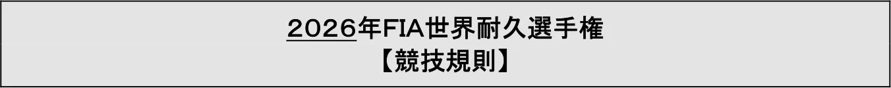</figure>
<p>1. 一般規定1.1 序文 ＦＩＡ世界耐久選手権（以下、選手権）は、プロトタイプ車両（以下、ハイパーカー）およびＧＴ車両（ＬＭＧＴ３）のみを対象とする選手権で、ＦＩＡおよびＡＣＯとの協力の成果である。 選手権は主に世界耐久ハイパーカーチャンピオンのタイトル、世界耐久ハイパーカードライバーチャンピオンのタイトルから成る。本選手権のカレンダーに登録された競技により構成され、それらについては本規則第２条２項に明記されるオーガナイザー協定（Organization Agreement）に、ＡＳＮおよびオーガナイザー（第２条１項参照）が署名している（付則１－パートＤ参照）。 本選手権は、ＦＩＡ国際モータースポーツ競技規則ならびにそれらの付則（以下、国際競技規則。ただし付則Ｊ項第２５１条車両の分類および定義を除く）、本規則に反することのないサーキット一般規則の条項、選手権特有の本競技規則、適用される技術規則ならびにそれらの付則、および競技に適用される特別規則により統轄される。 すべての参加団体（ＦＩＡ、ＡＣＯ、ル・マン耐久マネジメント：ＬＭＥＭ（以下「プロモーター」、ＡＳＮ、オーガナイザー、競技参加者およびサーキット）は、選手権を統轄する規則を適用すると共にそれを遵守することを約束する。1.2 規定1.2.1 参照版本競技規則およびその付則の正本は、存在する場合にはフランス語版とし、その解釈に関して論議が生じた場合にはフランス語版が用いられる。1.2.2 解釈条項競技参加者、ドライバーまたは参加者は、スポーツマンシップおよび公平な競技に反すると思われる行為があった場合、本規則の元の言葉に忠実に適用することを要求できる。同様の原則が、施行されている技術規則の解釈にも適用する。1.2.3 適用日本競技規則は、一旦世界モータースポーツ評議会によって承認されると発効し、２０２６年シーズンのテストすべて、および競技に適用され、以前の選手権に関する競技規則すべてに取って代わる。1.2.4 ル・マン２４時間その特殊性を考慮し、ル・マン２４時間は、オーガナイザーによって供給される競技特別規則書によって統轄される。競技特別規則書は、各版の前年の１２月末に競技参加者が入手可能となる。</p>
<p>WEC Sporting Regulations  1 / 91  2026.01.01</p>
<p><span class="pagemark" id="p98">P.98</span>あいまいさを避けるために、ル・マン２４時間の競技特別規則書はあらゆる点で本規則よりも優先される。1.2.5 付則本規則の特定の側面（タイヤ、プライベートテスト、人員制限などに適用される規則を含むが、これらに限定されない）については、専用の付則で詳しく説明されている。これらは本規則の不可欠な部分であり、スポーツ当局部門が認可することができる。1.3 一般条件1.3.1 競技参加者の一般的な責任ＩＳＣ第９条１５項１に定められる通り、以下は競技参加者の義務である：  － 競技参加者のエントリーに関するすべての関係者および参加者に国際競技規則、サーキット一</p>
<h3 id="般規則-適用される技術規則-本競技規則-および各競技会の付則-のすべての要件を確実に遵守させるこ">般規則、適用される技術規則、本競技規則、および各競技会の付則１のすべての要件を確実に遵守させること。－ スポーツ役務が提供されている場合は、ドライバーと人員の安全性に関して、すべての措置と</h3>
<p>決定が内部的に行われていることを確実にすること。1.3.2 競技参加者の代表各競技参加者は、選手権にエントリーする時点で、書面にてその代理人を指名しなければならない（ＩＳＣ第２条６項４参照）。競技期間を通じ、その期間中いかなる時でも、参加車両に求められる事項が遵守されていることを保証することは、その車両の担当者の責任であり、かつ競技参加者との共同責任でもある。1.3.3 車両の適合性および安全に対する責任競技参加者は競技を通じ、自己の車両が参加の適格性の諸条件を満たし、技術規定を遵守し、安全であることを保証しなければならない。車検に車両を提出することは、競技参加者の車両の適合性を暗に申告したものとみなされる。1.3.4 供給業者、ブランド、および製造者の立場現行の競技規則の目的上、以下に一覧される事業団体は、国際モータースポーツ競技規則第１条３に従って競技の参加者とみなされるため、参加者に対し課される義務を遵守し、スポーツ権能の決定に従わなければならない。－ ＡＣＯ／ＦＩＡによってそのように認められた単一サプライヤーおよび共通の部品およびシ</p>
<h3 id="ステムのサプライヤー-シャーシコンストラクター-タイヤ供給業者-燃料供給業者-潤滑剤供給業者-パ">ステムのサプライヤー－ シャーシコンストラクター－ タイヤ供給業者－ 燃料供給業者－ 潤滑剤供給業者－ パワートレイン供給業者－ 自動車製造者1.4 選手権競技1.4.1 定義</h3>
<p>WEC Sporting Regulations  2 / 91  2026.01.01</p>
<p><span class="pagemark" id="p99">P.99</span>各競技は制限付国際競技会の格式を有する。「競技」とは、世界耐久選手権の年間カレンダーに登録されたすべてのレースを言い、それには予選があるかないかに関わらず、書類検査および技術的車両検査、すべての公式プラクティスセッション、ウォームアップ走行がある場合はそれが、そして決勝レース自体が含まれる。各競技のスタートおよび終了は国際競技規則第２条１.７に従って決められる。各競技の付則１の規定に従い（第２条２参照）、フォーマットは以下の通りとする：  － ２回あるいは３回、１時間、１時間半あるいは２時間のフリープラクティスセッションが、合計時間４時間の制限の下で実施される（競技の付則１参照）。競技特別規則書（付則１）に別途指定がない限り、予選セッションおよびハイパーポールセッションの時間は以下のように定義される：   － ＬＭＧＴ３カテゴリーの車両用に確保された、少なくとも１２分間の最初のＬＭＧＴ３予選セッ</p>
<h3 id="ション-回-このセッションで-カテゴリーの-位以降のスターティンググリッドが決定される-ハイパー">ション１回：このセッションで、ＬＭＧＴ３カテゴリーの１１位以降のスターティンググリッドが決定される。－ ハイパーポールと呼ばれる、ＬＭＧＴ３カテゴリーの少なくとも１０分間の２回目の予選セッシ</h3>
<p>ョン１回：このセッションは、ＬＭＧＴ３カテゴリーの最初の予選セッションで上位１０位に入った車両用に確保され、ＬＭＧＴ３カテゴリーのスターティンググリッドの上位１０位が決定される。－ ハイパーカーカテゴリーの車両用に確保された、少なくとも１２分間の最初のハイパーカー予選</p>
<h3 id="セッション-回-このセッションで-ハイパーカーカテゴリーの-位以降のスターティンググリッドが決定">セッション１回：このセッションで、ハイパーカーカテゴリーの１１位以降のスターティンググリッドが決定される。－ ハイパーポールと呼ばれる、少なくとも１０分間のハイパーカー２回目の予選セッション１回：</h3>
<h3 id="このセッションは-最初のハイパーカー予選セッションで上位-位に入った車両用に確保され-ハイパーカ">このセッションは、最初のハイパーカー予選セッションで上位１０位に入った車両用に確保され、ハイパーカーカテゴリーのスターティンググリッドの上位１０位が決定される。－ １レースは継続時間が６時間未満であってはならない。</h3>
<p>各競技会の付則１に定められていない限り、また安全上の理由からレースディレクターの提案で競技審査委員会が実施を決定しない限り、ウォームアップは競技会のプログラムに予定されない。ウォームアップ走行が予定される場合、ウォームアップ走行の参加が認められる車両およびドライバーのリストは予選セッション後に掲示される。1.4.2 カレンダー構成協定に従い、競技は、その他ＦＩＡ世界選手権の対象となる競技と同日に開催することができる。選手権は、最少３戦で構成される。1.4.3 中止競技開催日の３ヵ月前の書面によるＦＩＡへの通知を遵守せずに中止が通告された競技は、ＦＩ Ａによってそれが不可抗力による中止であったと判断されない限り、翌年の選手権に含まれることは考慮されない。競技は、参加車両が２０台に満たない場合には中止することができる。</p>
<p>WEC Sporting Regulations  3 / 91  2026.01.01</p>
<p><span class="pagemark" id="p100">P.100</span>2. 組織2.1 オーガナイザー競技を組織するための申請は、当該サーキットにて競技を主催する占有的かつ必要な権限を得た当該者（オーガナイザー）が、その競技が行われる国のＡＳＮに対してなされなければならず、その申請を受けたＡＳＮがＦＩＡへ申請する。2.2 競技の組織各オーガナイザーは、ＡＳＮを通じ、本規則の付則１に定められているインフォメーションを、少なくともフランス語と英語にて、競技オーガナイザー、開催国のＡＳＮ、およびＦＩＡの間で締結されるオーガニゼーションアグリーメントと共に、ＦＩＡに競技の遅くとも１ヶ月前までに、また国際競技規則付則Ｈ項に従った医務役務調査票を少なくとも２ヶ月前に提出するものとする。各競技は、これらの書類を厳密に遵守して組織されなければならない。本規則により要求されるすべての書類が前述の期限までにＦＩＡに正しく送付され、それらが選手権に適用される諸規則に合致していることを条件に、各競技ごとにＦＩＡからビザ（査証）が発給される。2.3 保険2.3.1 保険に関する義務と手続きすべての競技参加者、その関係者、およびドライバーは、第三者保険に加入しなければならない。保険料はエントリー料金に含まれなければならず、第三者への偶発的な人身傷害または財産損害に関して十分な公的賠償責任保険の補償を保証するものでなければならない。適用される国内法の免除を条件として、すべての出来事１件ごとに対し合計最低１,０００万ユーロの公的賠償責任保険の補償が必要とされる。適用される国内法の免除に準じる場合、その地域での免除の正当性を示す資格のある弁護士の声明を書類提出に含めること。公的賠償責任保険は、競技参加者または競技に参加するその他の個人または法人が保有する個人保険に追加されるものであり、それらに影響を与えるものではない。オーガナイザーにより加入される第三者保険は、競技参加者や競技に参加するその他個人すべてが既に加入している個別の保険に加えて付保されるもので、それらの既得権を侵害しないこと。競技に参加するドライバーは互いに第三者とはならない。2.3.2 義務付けられる事務手続き競技の６０日前までに、オーガナイザーはＡＳＮを通じ、十分に収集されたＦＩＡチェックリストならびに、保険契約によって保証されている内容の詳細を少なくとも英語でＦＩＡに送付しなければならない（付則１パートＥ参照）。その保険契約は、開催国の国内法に準じていなければならない。英語にて作成された保険証券が競技参加者に入手可能であること。3. エントリー、カテゴリー、クルー3.1 一般規則</p>
<p>WEC Sporting Regulations  4 / 91  2026.01.01</p>
<p><span class="pagemark" id="p101">P.101</span>3.1.1 シーズンエントリー： エントリー手続きは、プロモーターと協力し、ＦＩＡの指導と責務の下におかれる。選手権へのシーズンエントリーは、当該選手権のカレンダーに登録されたすべての競技に関わるものであり、１カテゴリーにつき最大２台に制限される。選手権に正式に登録された競技参加者は、選手権対象競技への全戦参加が義務付けられる。3.1.2 エントリーの譲渡および出場取消いかなるエントリーの第三者への譲渡は正式に禁じられている。選手権出場を取り消す、あるいは競技の出場を取り消す場合は、すべてＦＩＡへ書面にて、受け取りの証明が発行される書留書簡により、プロモーターへのコピーを添えて通知されなければならない。この形式に従わない競技参加者すべてに、罰金１０,０００ユーロが課せられる。出場取り消しはすべて、変更することはできず、エントリー料金、技術費用あるいは燃料費用前払い金は返金されない。3.1.3 ル・マン２４時間の特別規則協定および本規則第１条２.４に従い、ル・マン２４時間のエントリー手順は、競技の特別規則によってのみ統括される。ル・マン２４時間に特別な選考委員会が形成され、エントリーリストが作成される。シーズンエントリーはル・マン２４時間の参加招待を含む。招待の最終的な帰属は、競技参加者の選手権のその他すべての競技への参加を必須とする。競技参加者が、ル・マン２４時間に追加のエントリーを申請する場合、競技特別規則書に定められる通りのエントリーフォームの提出が求められる。このエントリーフォームの受理はル・マン２４時間選考委員会によって評価される。3.1.4 ライセンス選手権に参加するすべてのドライバー、競技参加者、競技役員は、有効なライセンスを保持しなければならない。ドライバーの場合、ライセンスは国際競技規則付則L項の第１章の第２条に準拠していなければならず、必要に応じてＡＳＮが発行した有効な認可証を受けなければならない（国際競技規則の第３条９.４参照）。3.1.5 競技参加者ライセンス提出される競技参加者ライセンスの文字表現は公式書類でのみ使用される表現である。文字数はスペースも含めて最大２５字までが認められる。付則２に特定されている日以降は、いかなる変更も受け入れられない。ハイパーカーカテゴリーに製造者のライセンスでエントリーした競技参加者の場合、公式競技参加者ライセンスの文言にブランド名称が表示されなければならない。</p>
<p>WEC Sporting Regulations  5 / 91  2026.01.01</p>
<p><span class="pagemark" id="p102">P.102</span>競技参加者のライセンスの文言にブランド名を使用している競技参加者を指名するのは製造業者の義務である。3.1.6 ドライバーライセンスハイパーカーカテゴリーに出場するドライバーは、ＦＩＡグレードＡであること。その他のカテゴリーには最低ＦＩＡグレードＢが必要である。3.1.7 持続可能な耐久賞（Sustainable Endurance Award）選手権のエントリーには、持続可能な耐久賞のエントリーが含まれる。 参加形式の詳細は、選手権のエントリー開始と同時に発行される専用文書に記載される。3.2 エントリー手続き3.2.1 選考委員会および選手権出場許可協定に従い、競技参加者の選考は、耐久委員会と合わせて６名の委員で構成される選考委員会によって実施される。申請に関する決定のための選考委員会が招集される会合の日程は、現行規則の付則２に記載されている。選考委員会の決定は控訴の対象にはならない。競技参加者は、参加料の全額支払いがＦＩＡに受領されるまで（上述の条件にて）、選手権あるいはその競技に最終的に参加承認されたとは見なされない。選考委員会は、選手権への参加登録ファイルの選択に関して自由かつ完全な権限を有する。選考委員会は、独自の裁量で、とりわけ優先順位なしで網羅的ではない方法で列挙された以下の基準を使用することができる： ・ 実績・ 選手権への関心・ 世界耐久選手権またはル・マン２４時間レースへの定期的な参加・ ＡＣＯ、ＬＭＥＭ、ＦＩＡ、またはその周辺およびパートナーとの財務および法的状況ＦＩＡおよび／またはプロモーターは、選考委員会の決定を明確にするために、競技参加者に追加情報を要求する権利を留保する。シーズン中は、カテゴリー、シャシーモデル、車両モデル、パワーユニットタイプ、またはタイヤ製造者の変更は許可されない。プロモーターと各競技参加者の間で商業契約が締結されるものとする。エントリーの受諾は、競技参加者が商業契約の要件と条件を尊重することを条件とする。商業契約は、シーズン全体またはレースごとにエントリーを希望するすべての競技参加者によって、オンラインエントリー手続きで有効化されなければならない。3.2.2 一般的なケース：エントリーフォーム、書類、締め切り</p>
<h3 id="エントリーフォームへのリンクは-選手権の正式エントリー開始日および申請提出締切日と共に">エントリーフォームへのリンクは、選手権の正式エントリー開始日および申請提出締切日と共に、</h3>
<p>WEC Sporting Regulations  6 / 91  2026.01.01</p>
<p><span class="pagemark" id="p103">P.103</span>本規則の付則２に掲載されている。各申請書類には、オンラインフォームで要求されるすべての書類および情報（特に、および限定されずに：支払証明書、該当するライセンスのコピーなど）を添付しなければならない。競技参加者は、エントリー申請書類に加え、競技参加者に適用される非スポーツ行為規定に署名し（オンライン）、これを尊重しなければならない。この規定は、オンライン・エントリーフォームの手続きにおいて入手可能である。ＦＩＡおよび／あるいはプロモーターは、選考委員会の決定を促進するために、競技参加者から追加の情報を要求する権限を留保する。協定に従い、選手権の競技参加者の一覧が選考委員会によって認証される（本規則第３条２項１参照）3.2.3 ハイパーカーカテゴリーへのエントリーに関する特別条件付則２第３条の規定を遵守することに加え、製造者は競技者ライセンス上に表示されている同じ名前でハイパーカーＦＩＡ世界耐久選手権に２台の車両をエントリーしなければならない。追加の車両は、ワールドカップ・ハイパーカーチーム部門にエントリーしなければならない。選考委員会が製造者ごとに受け入れ可能な車両台数の最大数を決定する。ハイパーカーＦＩＡ世界耐久選手権またはワールドカップ・ハイパーカーチーム部門にどちらの車両が参加するかを決定するのは製造者の責任となる。これらの指定はすべての競技に有効であり、シーズン中に変更することはできない。ＦＩＡ世界耐久選手権にハイパーカーカテゴリーでエントリーすることを希望する競技参加者は、ブランドに関する情報や、選手権へのコミットメントを含むプレゼンテーション資料一式を提出しなければならない。耐久コミッションは、その全裁量により、車両ブランドおよび／あるいは製造者の選手権への参加の可否を決定する。さらに、ＬＭＤｈグループで公認された車両でハイパーカーカテゴリーにエントリーする競技参加者は、「指定ハイブリッドパートナー」が提供するサポートを利用することが求められ、関連料金を支払う必要がある。これらの義務に関連する金額は、エントリーの締め切り日後にプロモーターによって通知される。3.2.4 ＬＭＧＴ３カテゴリーへエントリーする特別条件付則２の規定を尊重することに加え、ＬＭＧＴ３カテゴリーへの登録を希望する競技参加者は、登録ファイルに記入する際に、ＬＭＧＴ３カテゴリーへの出場のために選考委員会によって事前に選定された自身の車両の製造者からの指定契約書を追加しなければならない。製造者は、２つの異なるライセンスの下で２台の車両を指定することができるが、これらの車両が同一の会社によってエントリーされることを唯一の条件とする。ＬＭＧＴ３チームのＦＩＡ耐久トロフィーに参加する車両を決定するのは製造者の責任である。これらの指定はすべての競技において有効であり、シーズン中に変更することはできない。3.2.5 「レースごと」競技参加者のエントリー</p>
<h3 id="例外として-また-選手権を象徴することが可能で有り得るという関心の高さ次第で-選考委員">例外として、また、選手権を象徴することが可能で有り得るという関心の高さ次第で、選考委員</h3>
<p>WEC Sporting Regulations  7 / 91  2026.01.01</p>
<p><span class="pagemark" id="p104">P.104</span>会は、１つあるいはそれ以上の競技について、１台以上の追加車両を、それに適用される技術規定および公認規定への合致を条件として認める場合がある。追加車両は競技の順位認定には表示されるが、本選手権の異なる順位認定には表示されない。「レースごと」車両をエントリーする競技参加者はすべて、下記第３条２項２に規定されるエントリー手続きに従い、登録しなければならない。ただし、締め切りに関しては除く。しかしながら、これらの競技参加者は、当該競技開始の遅くとも８週間前までに、完全な書類一式を送付しなければならない。競技参加者は、供給物資および技術費用の前払い金を支払った証明資料も提供しなければならない。3.2.6 エントリー料および財務条件参加費およびエントリー料については、本規則の付則２に記載されている。選手権への参加費は、エントリー料、ならびに技術関連費用および供給品費用の前払い金で構成される。ＦＩＡが受領した参加費は確定的なものとなり、いかなる理由があっても返金されない。選考委員会によって１台または複数の車両が選出されなかった場合、エントリー料に相当する支払額の全額が返金されるが、事務手数料として１,０００ユーロが差し引かれる。3.2.7 環境認定すべての選手権競技参加者、サーキット、オーガナイザー、およびサプライヤーは、以下の表にあるロードマップに従って、ＦＩＡ環境認定プログラムに従わなければならない。競技参加者のエントリーは、必要なレベルを達成することを条件とする。https://www.fia.com/sustainability-programme で閲覧可能。</p>
<div class="tablewrap"><table><tr><td></td><td>2026年</td></tr><tr><td>ハイパーカー</td><td>３つ星</td></tr><tr><td>ＬＭＧＴ３</td><td>２つ星</td></tr><tr><td>サーキット＆オーガナイザー</td><td>３つ星</td></tr><tr><td>共通サプライヤー</td><td>３つ星</td></tr></table></div>
<p>4.一般規定と競技参加者の義務4.1一般規定4.1.1 スポーツに反する行為レースディレクターおよび／あるいは競技長は、スポーツとフェアプレーの精神に反すると思われる製造者、競技参加者、ドライバーあるいは参加者の反スポーツ行為について、当該者が本規則の文字通りの適用を要求する場合にも、競技審査委員会に訴えることができる。4.1.2 パスおよび許可証</p>
<h3 id="第-条-項に規定される通り-第-条に定められる一切の競技関係者は-いか">ＩＳＣ第３条２１項に規定される通り、ＩＳＣ第２０条に定められる一切の競技関係者は、いか</h3>
<p>WEC Sporting Regulations  8 / 91  2026.01.01</p>
<p><span class="pagemark" id="p105">P.105</span>なる立場に関わらず、指定エリアに立ち入る（ＩＳＣ第２０条参照）適切なパス（クレデンシャル）を明瞭に見えるように身につけていなければならない。プロモーターおよびＦＩＡのみが、パスを発行あるいは剥奪する権限を有する。ル・マン２４時間については、ＡＣＯが特別なパスを発行する。パスは発行されたその者のみが、発行の目的にのみ使用することができる。4.1.3 医療管理競技審査委員会、競技長および医師団長は、競技会期間中いつでもドライバーあるいは競技役員に身体検査を求めることができる。4.1.4 高電圧操作の安全性競技参加者、ドライバー、ＡＳＮ、プロモーター、オーガナイザー、ボランティアおよびオフィシャルは、国際モータースポーツ競技規則の付則Ｈ項の補足１０を遵守しなければならず、ＦＩ Ａからの要請に応じて、ＦＩＡが必要とみなす遵守の証拠を提出しなければならない。国際モータースポーツ競技規則の付則Ｈ項の補足１０は、次のリンクから入手できる。https://www.fia.com/regulation/category/123 ハイパーカーカテゴリーでは、ハイブリッドシステムのバッテリーの充電は、主催者が設置したファイヤーカバーが機能しており、ガレージ内に人員がいる場合にのみ許可される。充電が許可されるタイミングは、競技特別規則書(付則１)に記載されている。4.1.5 競技参加者のプロモーション活動義務競技参加者、およびすべてのそのメンバーは、要請があれば、プロモーターが主催するすべてのプロモーションおよび商業イベントに出席および参加しなければならない。以下に限定されず、それは： － イベント前のプレスカンファレンス（記者会見）－ サインセッション－ ドライバーズプレゼンテーション－ 表彰式およびセレモニー－ 合同ゾーン - インタビュー－ 予選終了後のプレスカンファレンス（記者会見）－ 決勝レース後のプレスカンファレンス（記者会見）違反した場合や遅刻した場合は、競技審査委員会の判断によりペナルティが課せられる。4.1.6 車両に貼り付けられる表示競技参加者は車検開始の前に車両にオーガナイザーの広告、レースナンバー、識別ステッカーを貼らなければならない（付則３のサイズと位置を参照）。また、競技参加者はオーガナイザー専用のスペースを確保しなければならない（本規則付則３の図参照）。4.1.7 人員制限とテストコスト削減と管理の観点から、競技参加者は人員（付則７）とプライベートテスト（第８条および付則 09）に関して、規則により制限される。</p>
<p>WEC Sporting Regulations  9 / 91  2026.01.01</p>
<p><span class="pagemark" id="p106">P.106</span>4.2競技参加者の装備4.2.1 ドライバーに義務付けられる装備</p>
<p>プラクティスセッション、ウォームアップ、およびレース中、ドライバーは、ＦＩＡがサーキットでの国際競技用に定めた安全基準に合致した着用装備品を、国際競技規則付則Ｌ項に定められた条件にて、常に装着していなければならない。識別を容易にし、クルーの結束のために、同一車両のドライバーは同一のレーシングスーツを着ることが義務付けられる。4.2.2 ピットレーンに居る要員に義務付けられる安全装備すべてのプラクティスセッションおよびレース中、ピットレーン（ピットシャッター前の塗装ラインにより区切られる）に居る競技参加者の要員の、最低限の安全用着衣： 給油要員、ベント、消火器およびカットオフバルブの付き添い要員は、以下のＦＩＡ公認用具を着用しなければならない： ・ ＦＩＡ８８５６公認の耐火オーバーオール・ ＦＩＡ８８５６公認の耐火グローブ・ ＦＩＡ８８５６公認の耐火バラクラバ・ ＦＩＡ８８５６公認の耐火長袖のアンダーウェア（シャツ、ズボンおよびソックス）・ ＦＩＡ８８５６公認の耐火シューズ・ ＦＩＡ公認（ＦＩＡテクニカルリスト２５に一覧される通り）の同一色の装飾の無いフルフェースヘルメット（バイザーは車両がピットレーンに入る前に開けることができる）ピットウォールに入ることが許される人員： ・ ＦＩＡ８８５６公認の耐火オーバーオールその他の作業者： ・ ＦＩＡ８８５６公認の耐火オーバーオール・ ＦＩＡ８８５６公認の耐火グローブ・ ＦＩＡ８８５６公認の耐火の顔全体を保護するバラクラバ・ 耐火性ゴーグル・ ＦＩＡ８８５６公認の耐火長袖のアンダーウェア（シャツ、ズボンおよびソックス）・ ＦＩＡ８８５６公認の耐火シューズ・ ヘルメット給油作業を除き：例外的な状況においては、絶対的に必要である場合、メカニックはＦＩＡ公認耐火グローブを取り外すことができる。4.2.3 競技参加者のカメラチームが撮影した映像は、競技審査委員会の事前の裁量による許可を得た上で、審理の弁護における証拠としてチームが使用することができる。ただし、その映像を使用するチームが、その画像を撮影したカメラを所有／使用しているチームであることを条件とする。いかなる状況においても、カメラの記録映像を、その他のチームあるいは第三者に対するいかなる抗議、告発あるいは法的措置の根拠を構成するために使用することはできない。</p>
<p>WEC Sporting Regulations  10 / 91  2026.01.01</p>
<p><span class="pagemark" id="p107">P.107</span>チームは、レース競技役員により要請のあった映像については、その所有権を放棄しなければならない。予選および決勝レース中、競技参加者は車内に自身のカメラを持ち込むことは認めらない。4.2.4 車載カメラ技術的な説明は、プロモーターから送られる文書にまとめられる。すべての車両の最低重量はカメラシステムなしで定義され維持されているため、カメラシステム搭載車両が性能上の不利益を受けないことが重要であると考えられる。カメラシステムの重量＝３.８ｋｇと考え、以下を実施する。・ カメラ非搭載車両はバラストを搭載する必要がある。・ ハイパーカー：カメラシステムまたはカメラバラストを搭載した場合の最低車両重量＝ＢＯＰ</p>
<h3 id="に記載-・-カメラシステムまたはカメラバラストを搭載した場合の最低車両重量-に">に記載。・ ＬＭＧＴ３：カメラシステムまたはカメラバラストを搭載した場合の最低車両重量＝ＢＯＰに</h3>
<h3 id="記載-4-2-5-ピットレーンにおける役割別腕章-Armbands-プロモーターは各競技参加者に">記載。4.2.5 ピットレーンにおける役割別腕章（Armbands）プロモーターは各競技参加者に４種類の腕章（アームバンド）を配布する： ・ 緑色の腕章（ピットレーン）：１５分前信号からレースが中断された場合に、ピットレーンにグ</h3>
<h3 id="リッド上での介入が必要な車両が停止しているときにピットレーンにアクセスする者は-それを着用しなけ">リッド上での介入が必要な車両が停止しているときにピットレーンにアクセスする者は、それを着用しなければならない。・ 青い腕章（タイヤとブレーキ）：ブレーキ／タイヤをチェックする必要がある車両が居るピッ</h3>
<h3 id="トレーンにアクセスする者は-それを着用しなければならない-・-赤い腕章-赤-レースが中断された場">トレーンにアクセスする者は、それを着用しなければならない。・ 赤い腕章（赤）：レースが中断された場合、グリッド上への立ち入りを許可された者は、それを</h3>
<h3 id="着用しなければならない-・-黄色の腕章-ピットレーンまたはコース上で介入するハイブリッドシステム">着用しなければならない。・ 黄色の腕章（ＨＶ）：ピットレーンまたはコース上で介入するハイブリッドシステム技術者は、</h3>
<p>それを着用しなければならない。ＷＥＣコミッティは、シーズン開始前に追加の識別方法が使用されるかどうかを明確にする。4.3コミュニケーション手段4.3.1 競技参加者の無線連絡ＡＣＯとＦＩＡの競技役員は、ＡＣＯとＦＩＡが利用できるあらゆる電子的手段を用いることにより、どのような目的でも、車両と競技参加者の周波数帯域の会話内容をいつでも聴く、録音する、ならびに書き写すことが認められる。ＷＥＣコミッティから特別な許可が与えられない限り、車両から送受信されるすべての無線会話で認められる言語は英語のみである。違反の場合：競技審査委員会の裁量によるペナルティ4.3.2 レース管制無線レース管制無線は「ピットウォールラジオ」とも呼ばれる。</p>
<h3 id="選手権の各競技に参加したすべての競技参加者は-レース管制無線チャンネルを聴くことが義務付けられる">選手権の各競技に参加したすべての競技参加者は、レース管制無線チャンネルを聴くことが義務付けられる。</h3>
<p>WEC Sporting Regulations  11 / 91  2026.01.01</p>
<h3 id="競技役員から別途指示がない限り-以下の期間-レースコントロール無線を聴取しなければならない-車両"><span class="pagemark" id="p108">P.108</span>競技役員から別途指示がない限り、以下の期間、レースコントロール無線を聴取しなければならない：  － 車両がトラック上に出ることが許可される１０分前から、－ 最後の車両が以下のいずれかに該当する時点から１０分後まで：</h3>
<p>＊セッション終了時に第１セーフティカーラインを通過した時点、＊あるいは、レース終了時にパルクフェルメに入った時点。各競技参加者は、エントリーされたすべての車両について、誰かが上述の期間にレース管制無線を聴いていることを確実にしなければならない。競技参加者は、安全情報がドライバーにすぐに伝達されることを確実にしなければならない。競技審査委員の裁量で（その決定には控訴できない）、レース管制無線経由の指示に従わない場合は、ＩＳＣの第１２.１.１.i条の違反であると判断される場合がある。競技参加者は、レース管制に、この無線チャンネルの受信に関して何らかの問題がある場合直ちに利用可能な方法によって通知しなければならない。4.3.3 電子的な通信手段競技役員およびプロモーターは、電子的な通信手段を使用することができる。主な電子通信手段は「Discord」となる。以下のユーザーポリシーを遵守しなければならない。競技役員による事務的なミスについては、いかなる方法や形態においても異議を申し立てることはできない。競技参加者は、これらの通信手段に常に接続されていなければならず、故障した場合には信号を送らなければならない。競技参加者は、通信を受信した場合、直ちに受信を確認しなければならない。「Discord」は以下のガイドラインに従って使用される（ただし、これらに限定されるものではない）。－ 車両番号ごとに最大２つ（ハイブリッド車両の場合は３つ）の接続が許可される。１つは、</p>
<h3 id="eSafety専用-ハイブリッド車両の場合-つは技術目的専用-もう-つは申告されたチームマネージ">eSafety専用（ハイブリッド車両の場合）、１つは技術目的専用、もう１つは申告されたチームマネージャー用である。－ 競技参加者のIDは「aa_bbbb_cccc」の形式で表記される。aaは車両番号、bbbbは競技参加者</h3>
<h3 id="名-ccccはeSAFEまたはTECHまたはTMである-確認された-個人-チャネル以外でのプライ">名、ccccはeSAFEまたはTECHまたはTMである。－ 確認された「個人」チャネル以外でのプライベートな会話は、競技役員の主導によってのみ</h3>
<h3 id="行うことができ-競技役員は独自の裁量により会話を中断することができる-競技参加者からの規制に関す">行うことができ、競技役員は独自の裁量により会話を中断することができる。－ 競技参加者からの規制に関する問い合わせは、プライベートな会話では対応されない。セッ</h3>
<h3 id="ション中に競技参加者からそのような問い合わせがあった場合は-競技役員の裁量により-対面での対応を">ション中に競技参加者からそのような問い合わせがあった場合は、競技役員の裁量により、対面での対応をとらなければならない。－ 競技参加者は、レースコントロールが競技開始時に公開するテンプレートを使用して、イン</h3>
<h3 id="シデントを-回のみ報告できる-上記に従わない場合-またはその他不適切とみなされる行為は-Disc">シデントを１回のみ報告できる。－ 上記に従わない場合、またはその他不適切とみなされる行為は、「Discord」サーバーから削</h3>
<h3 id="除される-4-4ピット割り当て">除される。4.4ピット割り当て</h3>
<p>WEC Sporting Regulations  12 / 91  2026.01.01</p>
<h5 id="4-4-1-一般規則"><span class="pagemark" id="p109">P.109</span>4.4.1 一般規則</h5>
<p>本条項は、世界耐久選手権の対象となるすべての競技に有効であるが、プロモーターまたはＡＣ Ｏが主催する合同テストにも有効である。サーキットの設備上必要な場合、プロモーターは特定の競技参加者にガレージの共有を義務付けることがある。この場合、競技参加者にはプロモーターから直接通知される。競技中は常に、競技参加者はガレージの裏側と設備の間に最低１メートルの安全通路を確保しなければならない。この通路の具体的な内容は、各競技ごとにプロモーターが定める。4.4.2 競技中のガレージの義務付け開放時間プロモーターからの指示またはテクニカルデリゲートによる合意がない限り、ピットカーテン（ピットレーン側）は以下の時間帯に開放しておかなければならない： － 最初のＦＩＡ ＷＥＣセッション開始１時間前から、－ 各日の最終セッション終了１時間後まで、－ いずれにしても、少なくとも１０：００から１８：００までは開放しておくこと。レース車両は、（車体部品、カバー、積み重ねたタイヤ、台車など、エントラントに関係する人員を含め）いかなるものによる妨げもまったく無くガレージ内が見通せる状態が保たれなければならない。車両の前に保管されている車体要素はすべて、それが地面に平らに置かれガレージ内のレース車両を部分的にも全体的にも隠す状態でない限り、ガレージ内を見る場合の障害物であると見なされる。ピット内で車両が停止している間、車両の前に立つ者は、車両の作業に直接携わっている場合を除き、視界を遮る障害物とみなされる。車両の前に人が列を成すことは厳禁である。ただし、本コース走行後の作業を完了するのに必要な冷却ファン、燃料装置あるいは燃料タンクは除く。競技役員は、ガレージ内部に自由にアクセスできなければならない。ガレージ内の車両は、テクニカルデリゲートのその他承認がある場合を除き、前をピットレーン側に向けて止めなければならない。ペナルティ：競技審査委員会の裁量による4.4.3 競技からの撤退の場合競技参加者は、いかなる理由であろうとも、レースあるいはフリープラクティスまたは予選セッションのいずれかをスタートできない場合は、運営とピットの撤収に関してはプロモーターの指示に従わなければならない。5.書類および技術的検査5.1書類検査5.1.1 一般規定各競技参加者および各ドライバーは、第３条１.４に定義される有効な競技参加者ライセンスおよ</p>
<p>WEC Sporting Regulations  13 / 91  2026.01.01</p>
<p><span class="pagemark" id="p110">P.110</span>びドライバーライセンスを提示しなければならない： また、ドライバーは国際ライセンスに付随する最新のメディカルサティフィケートも所有していなければならない。ＦＩＡカレンダーに登録された国際競技に参加する恒久的許可を認めていないライセンスを所有するドライバーおよび競技参加者については、当該競技の開催国にてレースすることを認めたＡ ＳＮ発行の許可証を当該競技への参加前に取得し、提示しなければならない。書類検査の間、競技参加者は、本規則第１条４項２に明記されている正規代理人（含複数）およびその補佐（含複数）を書面にて確認しなければならない。また続けて、競技参加者は以下を承知して、車両１台につき最大３名から成る公式クルーを指名しなければならない： － １名のドライバーを、１台を超える車両に割り当てることはできない－ 代わりのドライバーは受け入れられない－ クルーの変更（本規則第１３条３およびプロモーターとの商業協定を参照）競技の書類検査に、以下の理由を除いて、時間通りに現れない競技参加者は競技審査委員会によるペナルティが課せられる： － 不可抗力（悪天候、社会的不安など）－ 以前の選手権の競技会での事故による、車両の損傷の結果によるもので、その事が選手権の</p>
<p>テクニカルデリゲートに通知されており、それが所与の時間で修理できない場合、5.1.2 スタートドライバーの申告すべてのカテゴリーの競技参加者は、書類検査の際に、適切な用紙に記入してスタートするドライバーの名前を申告しなければならない。ドライバー変更の通知がハイパーポール終了後遅くとも３０分以内に競技審査委員会に書面で行われない限り、スタートするドライバーは書類検査で申告されたドライバーでなければならない。連絡先：startingdrivers@fiawec.com   5.2車両検査5.2.1 一般規定車検中、１台の車両につき競技参加者の人員は最大６名が認められる。レース前車検は車検員の裁量によるいくつかの検査が入り、主に安全性の検査が中心となる。車両は以下のレース前車検にて承認されることなく競技に参加することはできない。この承認は専用のステッカーによって示される。車両、または部品がレース前車検に関する義務を果たしたという事実は、適用される技術規定と適合性の意味を含むものではなく、それは競技参加者の排他的責任である（第１条３.３参照）。レース前車両検査は最小限以下に関与する：  － 文書（以下を含む）：機器のオンライン申告書（競技中に継続的に更新されなければならな</p>
<h3 id="い-自動車の公認書-安全機能および車両の装置-安全機能とドライバーのデバイス-以下を含む-レーシ">い）、自動車の公認書。－ 安全機能および車両の装置－ 安全機能とドライバーのデバイス（以下を含む）：レーシングスーツ、ヘルメットおよび前</h3>
<h3 id="頭部拘束装置-国際競技規則付則-項に定める条件にて-の公認-ヘルメットおよび前頭部">頭部拘束装置（国際競技規則付則Ｌ項に定める条件にて）の公認。ヘルメットおよび前頭部</h3>
<p>WEC Sporting Regulations  14 / 91  2026.01.01</p>
<p><span class="pagemark" id="p111">P.111</span>拘束装置の改造は公認されたもの以外認められない。識別を容易にし、クルーの結束のために、同一車両のドライバーは同一のレーシングスーツを着ることが義務付けられる。5.2.2 無作為検査競技中いつでも車両検査委員は、車両を無作為に選択し、検査を行うことができる。5.2.3 シャシーの変更または車両への変更競技中、車両のシャシーに一切の変更があった場合は、車両検査委員の新たな検査を受けることになる。</p>
<h3 id="車両検査委員によって合格とされた一切の車両でも-安全性に影響を及ぼすような方法で改造が">車両検査委員によって合格とされた一切の車両でも、安全性に影響を及ぼすような方法で改造が</h3>
<h3 id="行われた場合や-適格性に疑義が生じる可能性がある場合-または同様な結果を生じる事故に巻き込まれた">行われた場合や、適格性に疑義が生じる可能性がある場合、または同様な結果を生じる事故に巻き込まれた場合は、車両を再度、車検承認のため提示しなければならない。5.2.4 備品の宣言</h3>
<p>競技参加者は競技期間中、必要な情報を選手権テクニカルプラットフォームに正確かつタイムリーに申告し、その情報を更新しなければならない。また、テクニカルデリゲートとその代理人から要求された変更も、できるだけ早く行わなければならない。備品の宣言は ACO-TECH で行わなければならない： https://aco-tech.online   6.技術規則6.1参加資格のある車両6.1.1 参加資格のある公認競技会は適用される技術規則に従い、適用される技術規則に定義され、ＦＩＡおよびＡＣＯにより公認された「ル・マンハイパーカー」、および「ル・マングランドツーリング３」車両（以下、ＬＭＧＴ３）のみを対象とする。－ ハイパーカーＬＭＨ：２０２０年から公認取得－ ハイパーカーＬＭＤｈ：２０２２年から公認取得－ ＬＭＧＴ３：公認されたＬＭＧＴ３  6.1.2 控訴公認書式の有効性（または非有効性）に関するＦＩＡの決定は、ＡＣＯによる決定と同じく、技術的な最終決定であり、いかなる司法権に対してもいかなる団体が控訴することもできない。6.1.3 リザーブカー以下に定義されるリザーブカーは認められない。リザーブカーとは、当該競技に参加するものとして用意された車両ではないが、競技参加者が登録した主となるレース車両に置き換えることを意図された車両である。「車両」とは、それが設計され製作される目的に適合するという予測の下に、それ自体の中に識別された対象を形成する目的にて、様々な種類の構成部品（機械的、電気的、電子的などの）の</p>
<p>WEC Sporting Regulations  15 / 91  2026.01.01</p>
<h3 id="組み立ての結果により成る自動車-国際競技規則第-条の見解において-を意味する-6-2均衡化システ"><span class="pagemark" id="p112">P.112</span>組み立ての結果により成る自動車（国際競技規則第１３条の見解において）を意味する。6.2均衡化システム（性能と技術）6.2.1 一般原則</h3>
<p>性能の均衡化システムを着想し、それに変更を行うことはできるのはＷＥＣコミッティのみである。そのため、コミッティは、いかにしてこのシステムを実施すべきかについて最終決定を行う。具体的な決定を通じて、様々な調整が行われる。ハイパーカーおよびＬＭＧＴ３カテゴリーの車両は、「性能均衡化：Balance of Performance（Ｂ ｏＰ）」と称される均衡化システムの対象となる。ＢｏＰは、異なるエンジニアリング設計の車両が同じカテゴリー内で競争できるようにすることを目的としている。性能の均衡化（ＢｏＰ）は、競技参加者および製造者からＡＣＯ／ＦＩＡおよびＷＥＣコミッティに提供されたデータと情報を使用して確立および調整される。このデータと情報の申告はコミットメントであり、拘束力を持つ。コミッティは常に性能の均衡化システムを立案するのに有益と思われるいかなるデータまたは情報をも競技参加者および製造者から聞き出す（技術コンポーネントまたはセンサー経由を含み）権利を与えられている。この情報またはデータは、パフォーマンス分析の目的で第三者と共有される場合がある。 提供されるデータと情報は正確でなければならない。製造者、競技参加者、ドライバー、およびエントリーに関連する個人または団体は、特に公式声明、メディア、ソーシャルネットワークを通じて、ＢｏＰの確立に影響を与えたり、プロセスおよび／または結果についてコメントしたりしてはならない。上記の原則に違反する場合、競技中いつでも競技審査委員会によりレース後も含めてペナルティが課される。6.2.2 サクセスハンディキャップ選手権にエントリーするハイパーカーおよびＬＭＧＴ３車両にはサクセスハンディキャップが適用される（第３条１.１参照）。それは、ル・マン２４時間を除くすべての競技に実施される。計算システムはプロローグの最初の計時セッション前にＷＥＣコミッティによって決定される。このラップタイムハンディキャップは、ＡＣＯ／ＦＩＡの裁量により、質量および／または出力に変換され、各競技会前にＷＥＣコミッティから送付されるＢＯＰ表で通知される。6.3強制される装置および機材6.3.1 データ記録装置：   すべての車両にはＡＣＯおよびＦＩＡによって公認されたデータ記録装置が装備されなければならない。車両が車検に提示される前に、記録装置は搭載され、機能が正常であることがテストされていなければならない。各車両について、データ記録装置の供給業者は、公認書式の図面に従って搭載された当該システムが、車両で正常に機能することがテストされたことを証明する書類を提供しなければならない。各競技参加者は以下を確実にしなければならない：</p>
<p>WEC Sporting Regulations  16 / 91  2026.01.01</p>
<h3 id="競技会を通して-システムが正確に機能すること-データ記録装置および関連するライブ車両検査システ"><span class="pagemark" id="p113">P.113</span>－ 競技会を通して、システムが正確に機能すること。－ データ記録装置および関連するライブ車両検査システムは、セッション開始、および／また</h3>
<h3 id="はピットレーンの開放の少なくとも-分前前に電源が入り-動作していなければならない-データを送信す">はピットレーンの開放の少なくとも５分前前に電源が入り、動作していなければならない。－ データを送信することを専用とするコンピューターが、競技会を通してプロモーターに提供</h3>
<h3 id="されたネットワークに恒久的に接続していること-ネットワークへの接続は競技参加者の責任である-下記">されたネットワークに恒久的に接続していること。ネットワークへの接続は競技参加者の責任である。－ 下記の時間枠内に、データを回復し、それらを、ネットワークを経由してピットからテクニ</h3>
<h3 id="カルデリゲートへ送信すること-・-プラクティス走行中-各走行セッションスタート最初のピットストッ">カルデリゲートへ送信すること：・ プラクティス走行中、各走行セッションスタート最初のピットストップ中、それから走行</h3>
<h3 id="セッション中は少なくとも-時間に-回-および各セッションの終了時-・-レース中-各燃料補給ストッ">セッション中は少なくとも１時間に１回、および各セッションの終了時。・ レース中、各燃料補給ストップ時、最後の１時間あるいは緊急停止中は除く。・ レース終了後、パークフェルメに停車中の車両については、競技参加者側の担当者１名が</h3>
<p>競技役員の監督の下、データ記録装置を回収しなければならない。この場合、回収されたデータ記録装置は、同一の装置と交換しなければならない。上記のすべての必須ダウンロード時について、当該データは車両がピットレーンに入った後、最低１０分間あるいはレース終了後３０分間は、テクニカルデリゲートに送信されなければならない。－ 車両にはファストレーンあるいはトラックを走行中常に、公式計時委員により供給されたル・マンタイプの多重周波数トランスポンダー（ドライバーを確認できるもの）が完全に機能する状態で搭載されていなければならない。各競技参加者は、自身の費用負担で、このトランスポンダーを入手し、それを正しく搭載し、機能確保する責任がある。このトランスポンダーは、関連の規定に厳密に従って搭載されなければならない。トランスポンダーの変更はセッションスタートの少なくとも１５分前に計時に申告されなければならない。－ 計時スクリーンに表示されているドライバーの氏名が、常に車両の中にいるドライバー氏名</p>
<p>と一致していることを保証するのは、競技参加者の責務である。モニターに表示された氏名が、車両内にいるドライバー氏名と異なっている場合は、チームマネージャーは直ちに、計時およびレースコントロールにそれを知らせなければならない。6.3.2 燃料流量計およびトルクメーターＦＩＡに公認された燃料流量計およびトルクメーターの取り付けは、その他すべての燃料流量計またはトルクメーターを除いて、義務付けられる。これらのセンサーに記録された計測値のみが、あるいは最終的にＦＩＡ／ＡＣＯによる評価に不具合が認められた場合は、その他いかなるＦＩ Ａ／ＡＣＯの裁量による補助的方法も、真正であるとみなされる。従って、この装置の信頼性あるいはＦＩＡ／ＡＣＯによる補助的な評価について、競技参加者および／あるいは国際モータースポーツ競技規則第９条１５項１に定められた者により出された苦情は、それが提出され得る当局あるいは裁判所に関わらず受け付けられない。この装置の常に円滑な操作、およびその監視は競技参加者の責務である。公平かつ厳密な技術規定実施を確実に行うため、以下の管理がレースにて義務付けられる：  － 競技参加者は、車検日より前に、あるいは遅くともその日中に、競技に使用を予定するセンサーのリストをテクニカルデリゲートに宣言しなければならない。このリストにはセンサー製造者照会先および部品番号と共にＦＩＡステッカー照会が含まれていなければならない。－ センサーは、競技期間中常に、そのＦＩＡステッカーが貼り付けられ、有効な較正がなされ</p>
<h3 id="ていなければならない">ていなければならない。</h3>
<p>WEC Sporting Regulations  17 / 91  2026.01.01</p>
<h3 id="テクニカルデリゲートは-センサーが使用される前にそれを検査することを要請することが"><span class="pagemark" id="p114">P.114</span>－ テクニカルデリゲートは、センサーが使用される前にそれを検査することを要請することが</h3>
<h3 id="できる-競技参加者はそのような要請を受けた場合には-それに従わなければならない-テクニカルデリゲ">できる。競技参加者はそのような要請を受けた場合には、それに従わなければならない。－ テクニカルデリゲートはセンサーの使用を禁止することができる。この決定はデリゲートの</h3>
<h3 id="絶対的裁量にて行われ-控訴することはできない-競技開始から終了まで-テクニカルデリゲートの事前の">絶対的裁量にて行われ、控訴することはできない。－ 競技開始から終了まで、テクニカルデリゲートの事前の了承なしにセンサーを交換するとは</h3>
<h3 id="できない-取り外された一切のセンサーはテクニカルデリゲートが保管できる-テクニカルデリゲートは">できない。取り外された一切のセンサーはテクニカルデリゲートが保管できる。－ テクニカルデリゲートは、競技中いつでも、センサーを承認された較正会社に検査のため持</h3>
<h3 id="ち出す権限を留保する-センサーにエラーおよび-または欠陥がある場合は-付則-に規定されているペナ">ち出す権限を留保する。－ センサーにエラーおよび／または欠陥がある場合は、付則４に規定されているペナルティが</h3>
<h3 id="適用される-交換作業の時間期限の不遵守-あるいはセンサーが正常に稼動していない間の車両性能の向上">適用される。交換作業の時間期限の不遵守、あるいはセンサーが正常に稼動していない間の車両性能の向上は、競技審査委員会により状況を悪化させる要因とみなされる。</h3>
<p>6.3.3 事故データ記録装置（ＡＤＲ）このユニットは競技に参加する各競技参加者によって使用されなければならない。この装置ユニットは、関連の指示に厳密に準拠して搭載されなければならず、競技期間中、常に機能していなければならない。すべての競技参加者は、このシステムを選手権プロモーターから入手し、またそれを正確に搭載し機能するようにすることについて自ら責務を負う。この装置ユニットおよびその装備品の重量は、車両の最低重量に含められる。6.3.4 監視カメラ各競技参加者は作業エリアにＩＰタイプの監視カメラを装備することが要求される。そのモデルは各競技参加者について同様であり、後でＷＥＣコミッティによって詳細が説明される。カメラは、テクニカルデリゲートのガイドラインに従って競技参加者によって提供され、設置されなければならない。各競技中、カメラは競技の開始からパルクフェルメの終了まで永続的に機能しなければならず、その視界が決して妨げられてはならない。競技参加者はカメラのビデオ画像にアクセスし、設置指示が常に遵守されていることを確認しなければならない。記録は、国際控訴審判所（ＩＣＡ）での手続きの場合を除き、当該競技終了後１４日までＡＣＯとＦＩＡによって保管される。国際控訴審判所（ＩＣＡ）での手続きの場合、保管期間は、ＩＣ Ａの決定する日まで伸ばされる。例外的な状況では、ＡＣＯとＦＩＡは画像の保存期間を延長する場合がある。この場合、関係する競技参加者に通知される。誤機能した場合は、競技審査委員会の裁量によりペナルティが課される。6.3.5 ＦＩＡのマーシャルディスプレー</p>
<p>WEC Sporting Regulations  18 / 91  2026.01.01</p>
<p><span class="pagemark" id="p115">P.115</span>ＦＩＡマーシャル活動用スクリーンがドライバーの視界内に設置されていることを確認するのは、競技参加者の責務である。ドライバーは、表示される標識やメッセージを容易に視認し、認識できなければならない。技術的な不具合が証明されない限り、競技審査委員会は、スクリーンが規定要件に従って視認可能であったと判断する。6.3.6 その他の義務付けられるシステムおよび装備品</p>
<h3 id="選手権において義務付けとされているシステムおよび装備品は-テクニカルリスト46および該当する競技">選手権において義務付けとされているシステムおよび装備品は、テクニカルリスト46および該当する競技規則および技術規則に記載されているとおり、以下の条件を満たさなければならない：</h3>
<h3 id="該当する指示に厳密に従って搭載されていること">－ 該当する指示に厳密に従って搭載されていること、</h3>
<h3 id="競技期間中-常に正常に動作する状態にあること">－ 競技期間中、常に正常に動作する状態にあること、</h3>
<p>－ 指定された公式供給業者から提供されていること。これらのシステムまたは装備品の調達、適切な設置、および競技期間中を通じての正常な動作の確保は、各競技参加者の単独の責任となる。6.4ライト6.4.1 メインヘッドライト車両がコースあるいはピットレーンを走行中、２つのメインヘッドライト（公認書式に記載される通りの）およびリアライトが、昼夜ともに、絶えず点灯していなければならない。ピットレーンを走行中、ヘッドライトをフラッシュさせることは禁止される。本コース上でヘッドライトを連続してフラッシュさせるのは、一切の補助なく、ドライバーが個々に起動することが必要である。一連は２秒を超えてはならず、フラッシュはその中で最大４回までしか実行できない。6.4.2 レインライトリアのレインライトは、レースディレクターが逆の指示を出さない限り、コースがウエットであると宣言されている間は常に点灯していなければならない。6.4.3 メディカルライト事件/事故の後、メディカルウォーニング（医療用警告）ライトが限界値を超えていたことを示している場合、ドライバーは遅滞なく競技のメディカルサービスに検査のため行かなければならない。ＦＩＡメディカルデリゲートがこの検査に最も適した場所を決定する。レースディレクターまたは競技長は、ドライバーが自分の割り当てられた作業エリアまたはガレージに車両を直接運転していくことを許可することができる。ＦＩＡメディカルデリゲートまたは競技医師団長が、事前に同意しなければならない。6.4.4 表示パネル表示パネルはＡＣＯ／ＦＩＡにより提供される特性に従い、競技中常に作動していなければならない。</p>
<p>WEC Sporting Regulations  19 / 91  2026.01.01</p>
<p><span class="pagemark" id="p116">P.116</span>6.4.5 ＥＲＳ表示ライトハイパーカーハイブリッド車両については、”赤あるいはライト無”ＥＲＳライトが直ちに車両が競技参加者のサービスを要求することを示す（それが発生した周回の終了時点）。車両は緑のライトが表示されてからのみトラックに合流することが認められる。各競技参加者は、自車が恒久的に電気的に安全であることを確実にしなければならない。したがって、競技中のどの時点でも、車両はＥＲＳライト（緑のライト）を点灯させるか、独特なボード（「グリーン・ハット」）をはっきりと見えるようにしておかなければならない。このボードはＥＲＳライト（緑のライト）が点灯しているときにのみ取り外すことができる。レースディレクターは、いつでも競技参加者に検査のためＥＲＳライト（緑のライト）の点灯を求めることができる。6.4.6 機能不全の場合車両のライトおよびライト信号システムが機能不全である場合は、それが本コース上であっても、ピットレーン内であっても、レースディレクターは直ちに競技参加者に通知し、当該競技参加者は次のピットストップで状況を修正しなければならない。ただし、レースディレクターがその裁量にて安全上の理由で、修理を実施するために直ちに車両を止める命令を下す決定をする場合は除く。6.5タイヤ：  6.5.1 定義と一般条件各タイヤはＲＦＩＤ検知システムおよびバーコード（テクニカルリストNo.５４）により識別されなければならない。競技参加者はこれらの識別ラベルを読み取るのに必要な備品を入手する責任を負う。すべての照会事項はテクニカルデリゲートにタイヤ製造者により競技開始の遅くとも４ ８時間前に伝えられなければならない。指定されるタイヤのこのリストは、競技開始時点で競技審査委員会に通知される。そのリストは付則５に従うリストに合致しなければならない。タイヤからマーキング、ロゴ、ラベルを取り除くことは禁止される。すべてのタイヤは、常に（車両に取り付けられている時を含め）ＦＩＡにより導入されるＲＦＩ Ｄ検知システムによる直接計測によって識別できなければならない。これには自動および手動の検知が含まれる。タイヤが車両に取り付けられた時に、ＲＦＩＤおよびバーコードがタイヤの外側になければならない。ＲＦＩＤ検知システムの機能不全の場合にのみ、手動計測がバーコード識別によって実施される。自動検知が可能であるよう、各車両は競技期間中、常に付則５に従ってＲＦＩＤステッカーをそれぞれの要件に従って正しい位置に取り付けなければならない。宣言がされていないタイヤの使用は、選手権のすべての競技会で禁止される。6.5.2 指定の供給業者単一のタイヤ供給業者が、ハイパーカーカテゴリーおよびＬＭＧＴ３カテゴリーそれぞれに指定される。タイヤは各カテゴリーについて、指定されたタイヤ供給業者からのものでなければならない。本競技規則およびそれに関連するチェックの一部は、タイヤ供給業者に委託される場合がある。</p>
<p>WEC Sporting Regulations  20 / 91  2026.01.01</p>
<p><span class="pagemark" id="p117">P.117</span>タイヤ製造者は、各競技において各競技参加者が使用したタイヤに関する情報をＡＣＯ／ＦＩＡに報告しなければならない。6.5.3 仕様タイヤ製造者は、限られた数のドライおよびウエット天候用のタイヤ仕様を提供することについて、プロモーターと契約により約束をする。シーズンのすべての仕様は、シーズン開始前にＷＥＣコミッティに宣言されなければならない。シーズン中およびすべての競技にわたってすべての競技参加者が使用できる最大仕様数は次の通り定義される：</p>
<div class="tablewrap"><table><tr><td></td><td></td><td></td><td>ドライ天候用タイヤの仕様数</td><td></td><td></td><td>ウエット天候用タイヤの仕様数</td></tr><tr><td></td><td></td><td></td><td>ル・マン２４時間</td><td>その他のレース</td><td>シーズン中の合計</td><td></td></tr><tr><td></td><td>HYPERCAR</td><td></td><td>3</td><td>2</td><td>3</td><td>1</td></tr><tr><td></td><td>LMGT3</td><td></td><td>2</td><td>2</td><td>2</td><td>1</td></tr></table></div>
<p>HYPERCAR 3 2 3 1 LMGT3 2 2 2 1 タイヤ製造業者は、各競技で使用されなければならない仕様を決定し、競技の３０日前までにＷ ＥＣコミッティにそれを申告しなければならない。仕様はすべての車両モデルで同一でなければならない。ハイパーカーカテゴリーでは、テクニカルデリゲートは、29/34タイヤレイアウトを用いて、各仕様のタイヤを各競技参加者に無作為に１セット割り当てることができる。これらのタイヤは、予選および／または決勝レースにおいて、当該仕様が初めて導入される際に使用しなければならない。－ ＷＥＣコミッティは、シーズン中いつでも無作為割り当ての仕組みとタイヤの回収および再導</p>
<p>入の仕組みを変更できる。6.5.4 割り当て競技中に使用できるドライ天候用タイヤの最大数は、以下のように定義される：  － プラクティスセッションでは、プラクティスセッションの開始時から－ 予選および決勝では、予選開始時から。－ ハイパーポールでは、セッションの開始から。ハイパーポールに割り当てられたタイヤはハ</p>
<h3 id="イパーポールでのみ専用に使用されなければならない-レース開始前にピットレーンからスターティンググ">イパーポールでのみ専用に使用されなければならない。－ レース開始前にピットレーンからスターティンググリッドに向かう場合、使用するタイヤは</h3>
<h3 id="ドライ天候用タイヤでもウエット天候用タイヤでも構わず-配分にはカウントされない-競技の開始時点か">ドライ天候用タイヤでもウエット天候用タイヤでも構わず、配分にはカウントされない。－ 競技の開始時点から、競技で初めて導入されるドライ天候用タイヤはすべて新品でなければ</h3>
<h3 id="ならない">ならない。</h3>
<div class="tablewrap"><table><tr><td></td><td></td><td></td><td>フリー
プラクティス</td><td>ハイパーポール**</td><td>予選＋決勝</td><td></td><td></td></tr><tr><td></td><td></td><td></td><td></td><td></td><td>6時間レース</td><td>8時間レース</td><td>10時間レース*</td></tr><tr><td></td><td>HYPERCAR</td><td></td><td>12</td><td>4</td><td>18</td><td>26</td><td>32</td></tr><tr><td></td><td>LMGT3</td><td></td><td>16</td><td>4</td><td>24</td><td>32</td><td>40</td></tr></table></div>
<p>6時間レース8時間レース10時間レース* HYPERCAR 12 4 18 26 32 LMGT3 16 4 24 32 40 * または1812km ** ハイパーポールに使用されるタイヤ仕様は、競技の前にＷＥＣコミッティの決定にて指定される。ウエット天候用タイヤ競技中に使用できるウエット天候用タイヤの数に制限はない。これらのタイヤの使用は、競技長またはレースディレクターが路面がウエットであると公式に宣</p>
<p>WEC Sporting Regulations  21 / 91  2026.01.01</p>
<p><span class="pagemark" id="p118">P.118</span>言した場合に限り、プラクティス時およびレース中に許可される。使用するタイヤは、製造元が定める仕様を満たしていなければならず、新品でも中古でも構わない。6.5.5 タイヤ保管競技参加者は、各車両のガレージとその周辺に、２箇所のタイヤ保管場所を特定しなければならない：  ガレージ内（前方部分）で、１台につき最大３セットまでがガレージ内に留まることが許され、</p>
<h3 id="ピットレーンからすべてが見えるようにしておかなければならない-その他のタイヤを保管し-準備するた">ピットレーンからすべてが見えるようにしておかなければならない。 その他のタイヤを保管し、準備するための第２のエリア（ガレージ後方からすぐの場所）で、</h3>
<p>ホイール洗浄エリアを含む。ハイパーカーの競技参加者は、競技開始の２週間前までに、ACOTechのテクニカルデリゲートに承認を得るため、これら２か所のゾーンを示した配置図面を提出する。タイヤを入手したら、競技参加者は承認された場所に保管する責任を負う。指定エリアでの保管テントの使用は、常に周囲の空気と換気され、アクセスできる場合にのみ許可される。タイヤとホイールは、競技中、いかなる障害物もなく、ＡＣＯ／ＦＩＡテクニカルデリゲートが承認した場所に、常に完全に容易に見える状態に保たれていなければならない。ただし、以下の場合は除く：  タイヤが車両に取り付けられている場合。 タイヤ供給業者のガレージでタイヤをリムに取り付けたり取り外したりしている場合。 保管場所間の輸送中。 ピットストップ中にタイヤが作業エリアの近くにある場合。 タイヤがラックに積載され、グリッドへの搬入／返却中、またはグリッド上に置かれている場</p>
<p>合。 タイヤが損傷／パンク検査のためにタイヤ製造者の施設に持ち込まれる場合。ＡＣＯ／ＦＩＡテクニカルデリゲートは、その絶対的な裁量により、承認された保管エリア外にあるタイヤ、不必要または不当な停止、保管エリア間または保管エリアとタイヤ供給業者の施設間の移動を行っているタイヤに対して、いつでもパークフェルメ条件を強制することができる。必要と判断された場合、詳細は競技審査委員会のブルテンで指定される。6.5.6 加熱、処理、および改造テクニカルデリゲートとそのアシスタントのみが、以下の違反を判断する責任を負う。タイヤへの一切の化学的および／あるいは機械的処理は、本コース上の集められた破片ゴミを取り除くためのものを例外として禁止される。セッションの２時間前からそのセッション終了までの時間帯の間、ホイールを加熱ツールを使用して破片を取り除いたり清掃したりすることが許可される。セッション中、タイヤから異物を取り除くために加熱ツールを使用することは許可されているが、タイヤの一部にのみ使用することのみが認められる。車両への取り付け時にタイヤが過熱してはならない。いずれの場合も、性能向上のためにヒートガンを使用してタイヤに熱を加えることはできない。タイヤのトレッドとプロファイルを変更したり、再カットしたりしてはならない。タイヤの温度（周囲温度と比較して）を変更する直接的または間接的な試みを伴うプロセスは禁止されている。</p>
<p>WEC Sporting Regulations  22 / 91  2026.01.01</p>
<p><span class="pagemark" id="p119">P.119</span>この禁止される内容は、車両のサスペンションコンポーネント、ホイールハブアセンブリ、およびブレーキシステムの加熱；ホイール洗浄時の充填媒体、水加熱システム/エレメントの変更が含まれるが、これらに限定されない。あらゆる蓄熱装置や加熱装置の使用、タイヤ、リム、およびホイールへの化学処理や化学成分の使用は禁止される。競技参加者は競技期間中、上記の物品を所持することを禁止される。いかなる場合でも、競技役員の指示に従わなければならない。予選タイヤに関しては、テクニカルデリゲートによりさらなる制限が適用される場合がある。6.5.7 タイヤの空気圧とキャンバータイヤ製造業者は、すべての競技参加者に対して同一の技術要件（圧力とキャンバー）を確定しなければならない。競技参加者がこの要件に従わなかった場合、競技審査委員会によってペナルティが課せられる場合がある。ドライ天候用タイヤの基準空気圧とキャンバーは、コミッティの決定に基づき、指定タイヤ供給業者から提供される。検査は、テクニカルデリゲート、そのアシスタント、審判員、タイヤ供給業者の担当者（ただし、これらに限定されない）によっていつでも実施できる。タイヤ空気圧モニタリングタイヤ空気圧は、タイヤ空気圧監視センサー（TPMS）と手動ゲージの読み取り値を用いて監視される。TPMS信号は、車検員および／またはタイヤ製造者の技術者によって、手動ゲージの読み取り値と無作為に検査される。TPMS信号が手動ゲージの読み取り値と比較して０.０３バールを超えて高い場合、競技審査委員会に報告される。安定した最低タイヤ空気圧要件は、コースがグリーンフラッグ状態にある場合、ラップ間の空気圧変動が１％以下の場合の1周の平均高温時タイヤ空気圧とみなされる。キャンバーモニタリング車両は、ドライバーなしでパークフェルメから出庫し、タイヤ空気圧をタイヤ製造者が定める最小相対圧力に設定した状態で、テクニカルデリゲートの基準スケールを用いて点検される。キャンバーゲージの許容誤差は０.１°に設定されている。6.5.8 適用されるペナルティタイヤ規定違反の最低限のペナルティ：   宣言違反（リストを宣言しなかった、リストの宣言が遅れた）：１回の違反につき１０００ユーロ。 適格性違反（使用したが申告されなかったタイヤ）：１本につき１０００ユーロ。 タイヤ許容量の侵害：タイヤ１本につきレース中に２分間のストップ＆ゴー。 タイヤ加熱規則あるいはタイヤ保管の違反：レース中に３分間のストップ＆ゴー。その他の違反については、競技審査委員会の判断に委ねられる。</p>
<p>WEC Sporting Regulations  23 / 91  2026.01.01</p>
<p><span class="pagemark" id="p120">P.120</span>6.6エンジンの始動本規則の適用上、クランキング操作はすべてエンジンの始動とみなされる。7.コミッティ、競技役員およびペナルティ適用7.1 ＷＥＣコミッティ</p>
<p>選手権規則の適用に関するいくつかの側面は、「ル・マン協定」（以下、「協定」）で制定されたＷ ＥＣコミッティ（以下、「コミッティ」）に委ねられており、その構成、任務、運営規則は上記コミッティの内部規則で規定されている。ＷＥＣコミッティの決定は最終であり、控訴できない。２つの競技の間に、規則のある点について解釈を求めたい、すべての競技参加者、製造者あるいはドライバーは、それについて、どの点について解釈を求めたいのかを明記し正当な理由を添えて、ＷＥＣコミッティに提出することができる。コミッティメンバーは次のとおり： 主要メンバー: － マレク・ナワレッキ（Marek Nawarecki） (FIA) － ティエリー・ブーベ（Thierry Bouvet） (ACO) 指名された代替メンバー: － グザビエ・メステラン・ピノン（Xavier Mestelan-Pinon） (FIA) － クリストフ・ベッセ（Christophe Besse） (ACO)  ＷＥＣコミッティが出した、いかなる解釈も、レースディレクターおよび競技審査委員会により代表されるスポーツ権能に対して拘束力を持つものではない。7.2競技審査委員会7.2.1競技審査委員会の一般的権限競技審査委員会の権限は国際競技規則に定める通りである。さらに、契約上の義務を遵守しない場合は、スポーツ権能によって制裁を受ける場合がある。7.2.2ドライバーのペナルティ適用事件に関与したドライバーにペナルティを課すか否かを決定するのは、レースディレクターの報告あるいは要請を受けて競技審査委員会の裁量で行う。7.2.3調査の開始事件が競技審査委員会によって調査されると、関連した車両を知らせるメッセージが、すべての競技参加者の公式メッセージシステムに表示される。7.2.4調査を受けるドライバーのサーキットを離れることの禁止このようなメッセージがレース終了後５分以内に表示されること、あるいはその他の方法で通知されることを条件に、関与したドライバーは競技審査委員会の同意なしにサーキットを離れ</p>
<p>WEC Sporting Regulations  24 / 91  2026.01.01</p>
<h3 id="ることはできない-7-2-5決定の通知競技参加者への競技審査委員会の決定は-書面にてなされる-競"><span class="pagemark" id="p121">P.121</span>ることはできない。7.2.5決定の通知競技参加者への競技審査委員会の決定は、書面にてなされる。－ 競技参加者は受領を証明しなければならない：競技参加者あるいはその指定した代表者の</h3>
<p>署名が義務付けられる。これは、決定が電子フォーマットで競技参加者に送付された場合にも適用される。電子的に送付された決定書が受領確認を受けていない場合は、送信後３０分で受領されたものとみなされる。－ 競技役員の通知および決定、（プラクティスおよびレースの）結果は、公式通知掲示板およ</p>
<h3 id="び-または同等のバーチャル手段に掲示される-7-2-6抗議-控訴および再審の権利抗議の権利-抗議">び／または同等のバーチャル手段に掲示される。7.2.6抗議、控訴および再審の権利抗議の権利－ 抗議は国際競技規則第１３条に従って、クレジットカードあるいは銀行振込により支払わ</h3>
<h3 id="れる-ユーロ-あるいは当日のレート換算で等価のドル-の抗議預託金を添えて行わなければならない-預">れる１,０００ユーロ（あるいは当日のレート換算で等価のドル）の抗議預託金を添えて行わなければならない。－ 預託金が銀行振込で行われた場合、抗議には支払い証明を添えなければならない。これが無</h3>
<h3 id="い場合-または競技審査委員が支払の証拠が満足のいくものではないと考える場合-抗議は受け付けられな">い場合、または競技審査委員が支払の証拠が満足のいくものではないと考える場合、抗議は受け付けられない。－ 関連する銀行口座の詳細は、付則２の第４条に記載される。振込の理由は明確に示されなけ</h3>
<h3 id="ればならない-国際競技規則第-条-に従って抗議が支持され-または部分的に判決が下されたと">ればならない。－ 国際競技規則第１３条１０.２に従って抗議が支持され、または部分的に判決が下されたと</h3>
<h3 id="判断された場合-預託金は当該競技審査委員の決定を受けて-によって返還される-控訴預託金-国際控訴">判断された場合、預託金は当該競技審査委員の決定を受けてＦＩＡによって返還される。控訴預託金－ 国際控訴審判所への控訴預託金は、６,０００ユーロである（ＦＩＡの裁判および懲罰規定</h3>
<p>参照）。－ ＷＥＣコミッティによる決定は、一切控訴の対象とはならない。再審の権利－ これは国際競技規則に定める通りとする。－ 再審料金は２,０００ユーロである。7.3 競技役員（オフィシャル）およびＦＩＡ派遣委員（デリゲート）7.3.1 常任競技役員</p>
<h3 id="は選手権対象競技会にて公的な資格で務める選手権の常任競技役員を任命する-すなわち-国籍のそれぞ">ＦＩＡは選手権対象競技会にて公的な資格で務める選手権の常任競技役員を任命する。すなわち：  － 国籍のそれぞれ異なる、競技審査委員会の委員長および２名の国際審査委員。ＦＩＡプラチ</h3>
<h3 id="ナライセンス所有者でなければならない-レースディレクターおよび-その代理-テクニカルデリゲート">ナライセンス所有者でなければならない。－ レースディレクターおよび、その代理－ テクニカルデリゲート</h3>
<p>WEC Sporting Regulations  25 / 91  2026.01.01</p>
<h3 id="医務デリゲート-公式計時委員7-3-2-非常任競技役員およびデリゲート"><span class="pagemark" id="p122">P.122</span>－ 医務デリゲート－ 公式計時委員7.3.2 非常任競技役員およびデリゲート</h3>
<h3 id="により任命される競技役員以下の競技役員は-により任命され-競技を組織する申請と同時に-へその氏">ＡＳＮにより任命される競技役員以下の競技役員はＡＳＮにより任命され、競技を組織する申請と同時にＦＩＡへその氏名が通知される：  － 審査委員の少なくとも１名は、イベントを主催するＡＳＮ、またはオーガナイジング・パー</h3>
<p>ミット（組織許可）を与えるＡＳＮによって指名されるものとする。－ 競技長ＦＩＡに任命されるデリゲートＦＩＡは特に各競技会に以下を任命することもできる：  － ＦＩＡ代表スポーツデリゲート－ 競技審査委員会のアドバイザー（その資格および役割については本規則第２条４項３に規定される）－ 電気安全デリゲート（eセーフティ）－ メディアデリゲート</p>
<p>ＦＩＡデリゲートの役割は、競技の競技役員を補佐することであり、また選手権を統轄するすべての規則が遵守されているかを権限の範囲内で確認し、必要ならば自らの判断による意見を述べ、競技に関する必要なすべての報告書を作成することである。7.3.3 競技審査委員会のドライバーアドバイザー競技審査委員会のアドバイザーは、経験豊富な元耐久ドライバーであることが必要である。その役割は審査委員会が決定を下すにあたり、モータースポーツ一般に関するすべての質問、および特に以下についてアドバイスを行うことで補佐することである：  － コース上でのドライバーおよび競技参加者の行為－ 委員会がドライバーの分類について決定を求められる場合に、その分類について。アドバイザーは競技審査委員会の会議に出席をすることができるが、投票の権利は有さない。7.3.4 テクニカルデリゲートおよび車両検査委員ＦＩＡおよびＡＣＯのテクニカルデリゲートは、技術的な事項に関して全権を有する。競技審査委員会の留意のために発行されるテクニカルレポートには、ＦＩＡおよびＡＣＯのテクニカルデリゲートが署名しなければならない。</p>
<h3 id="車両検査委員は-以下を実施できる-競技期間中いつでも-車両-部品-備品-その正確な機能-あるいは">車両検査委員は、以下を実施できる：  － 競技期間中いつでも、車両、部品、備品（その正確な機能）あるいは競技参加者の適合性を</h3>
<h3 id="確認すること-車両検査中-競技参加者によって車両装備を取り外すことを要請すること-競技参加者に上">確認すること。－ 車両検査中、競技参加者によって車両装備を取り外すことを要請すること。－ 競技参加者に上記の権限を執行したことにより生じた費用の支払い、あるいは車両検査委員</h3>
<h3 id="が必要とみなす見本の提供を要請すること">が必要とみなす見本の提供を要請すること。</h3>
<p>WEC Sporting Regulations  26 / 91  2026.01.01</p>
<h3 id="違反報告書を作成する-その報告書はテクニカルデリゲートにより競技審査委員会へ提出さ"><span class="pagemark" id="p123">P.123</span>－ 違反報告書を作成する。その報告書はテクニカルデリゲートにより競技審査委員会へ提出さ</h3>
<h3 id="れる-検査を実施する-車両検査委員は-パークフェルメの運営を担当し-競技参加者およびドラ">れる。－ 検査を実施する。車両検査委員は、パークフェルメの運営を担当し、競技参加者およびドラ</h3>
<p>イバーに指示を与える権限を有する。7.3.5 競技長とレースディレクター競技長はレースディレクターと常時協議しながらその役務を行う。国際競技規則により競技審査委員に付与された権限により、レースディレクターは以下の事項について優先権限を有し、競技長はレースディレクターの明確な同意を得てのみ以下に関する命令を下せるものとする。</p>
<h3 id="・-プラクティスおよび決勝レースのコントロール-タイムテーブルの厳守-また必要ならば国">・ プラクティスおよび決勝レースのコントロール、タイムテーブルの厳守、また必要ならば国</h3>
<p>際競技規則または競技規則に従ってタイムテーブルの変更を競技審査委員会に対し提案すること。・ 国際競技規則または競技規則に従って車両を停止させること。・ プラクティスの中断すること。・ スタート手順・ セーフティカーの使用・ バーチャル・セーフティカーの使用・ フルコースイエローの使用・ レースの中断と再開・ レースの最終的な中止</p>
<p>7.3.6 競技役員の一般的義務レースディレクター、競技長およびテクニカルデリゲートは、遅くとも競技の開始からサーキットに立ち会い、ＦＩＡ審査委員は車検終了の前から立ち会わなければならない。</p>
<p>レースディレクターは、車両がコース上の走行を許されている間は、競技長、テクニカルデリゲート、および審査委員長と常に無線で連絡が取れる状態になければならない。これに加え、この間、競技長はレースコントロールに就き、全マーシャルと無線連絡をとれる状態になければならない。7.4適用されるペナルティの種類7.4.1一般原則適用されるペナルティは、国際競技規則の第１２条に規定されているものと、本規則およびその付則の規定による。競技審査委員会は、本規則およびその付則で規定されたペナルティを、自らの裁量で適応することができる。7.4.2ドライブスルードライバーはピットレーンに進入し、停止することなく走路に合流しなければならない。ドライブスルーペナルティがモニター（公式計時員が提供する公式タイミング画面、以下「モニター」という）に表示された後は、本規則に定められている場合を除き、４回を超えて本コース上でラインを通過することはできない。ドライブスルーのペナルティは控訴の対象とはならない。</p>
<p>WEC Sporting Regulations  27 / 91  2026.01.01</p>
<p><span class="pagemark" id="p124">P.124</span>7.4.3ストップ・アンド・ゴーストップ＆ゴーのペナルティがモニターに通知されると、本規則に規定されている場合を除き、車両は４回を超えて本コース上でラインを通過することはできない。ストップ＆ゴーは、作業エリア内で、カーコントローラーの単独責任の下で実行される。車両は完全に停止しなければならず、その場で解放される場合もあるが、ストップ＆ゴーにタイムペナルティが指定されている場合は、その間は車両を停止させていなければならない。エンジンは（決定事項にその他の記載がない限り）かけたままでよいが、車両への作業は一切認められず、ドライバーは乗車したままでなければならない。ストップ＆ゴーの後、車両は作業エリアを離れてコースに復帰しなければならない。ストップ＆ゴーのペナルティは、控訴の対象とはならない。7.4.4ピットストップに加えられる時間ピットストップの開始時に時間（決定で指定されたもの）が加算される。作業は一切許可されず、ドライバーは乗車したままでなければならず、時間は車両がその作業エリアに停止した瞬間から数えられる。決定内容に別段の記載がない限り、ペナルティはモニターにペナルティが通知された後、次に車両がピットインしたときに実行されなければならない。プラクティスセッション（フリー走行または予選）後にペナルティが課せられた場合は、レース中に最初にピットインした時に実行されなければならない。ピットレーンでのタイムペナルティは控訴の対象とはならない。7.4.5ストップ＆ホールドストップ＆ホールド・ペナルティは、セッション開始時に行わなければならないストップ＆ゴー・ペナルティである。この場合、車両は決定内容に示された時間、ガレージに留まらなければならない。エンジンはスタートしてよい。ドライバーは乗車している義務はなく、車両に乗り降りすることができる。それ以外の操作は認められない。ストップ＆ホールドのペナルティは、控訴の対象とはならない。7.4.6タイム、ラップペナルティ、ラップ（含複数）削除のペナルティ国際競技規則で控訴の対象にならないと定められているペナルティに加え、ピットストップ時間加算、レース終了時点で追加されるタイム、ストップ＆ホールド・ペナルティ、グリッドペナルティ、ラップタイム削除、戒告、警告のペナルティも控訴の対象とはならない。前述のどのペナルティに加えて課されるペナルティポイントも控訴の対象とはならない。7.4.7タイムペナルティの変換レース後に適用されるタイムペナルティのうち、１周の時間よりも長いものは、競技審査委員会が決定した数の全周を削除するペナルティ（ラップペナルティ）と、タイムペナルティとして適用された残りの時間に変換することができる。7.4.8ポイントシステム各ドライバーには１０ポイントのリザーブがある。</p>
<p>WEC Sporting Regulations  28 / 91  2026.01.01</p>
<p><span class="pagemark" id="p125">P.125</span>１０ポイントのリザーブが消費されると、該当するドライバーは自動的に次の選手権の競技に出場停止となり、出場停止期間の終了時にリザーブポイントが回復される。ポイントの取消は二次的ペナルティである。競技審査委員会は、ドライバーの行為について制裁措置をとる競技参加者に課せられたペナルティに加えて、競技単位で最大４ポイントの取消を命ずることができる。ポイントの取消に関する決定は、宣言を行った選手権シーズンの終了まで有効となる。控訴の対象とならないペナルティに加えて、ポイントの取消があった場合、ポイント取消の決定も同様に控訴の対象とならない。7.4.9ピットレーンペナルティピットレーンで実行されなければならないペナルティは、モニターに表示された後でなければ行うことができない。車両がピット進入路に既に進入していた場合を除き、中立化が宣言された時点で、以下の場合、ピットレーンペナルティを実行することはできない：  － セーフティカー手順が展開されている。－ バーチャルセーフティカー手順がアナウンスされている、あるいは展開されている。－ ＦＣＹ手順がアナウンスされている、あるいは展開されている。－ 赤旗が出されている。中立化状態で走行された周回数は、ドライバーが計時モニターで通知を受けた後、車両が本コース上のラインを通過できる回数に追加される。セーフティカー導入時、ピットレーンペナルティは、コースが再び中立化されない限り、中立化終了後の次の周回からのみ適用される。7.4.10 レース終了で通知されたペナルティについてペナルティが、レースの最後の５周の間に計時スクリーンに通知され、当該車両がそのペナルティを実行することができない場合、後者はタイムまたはラップペナルティに変換され、上方に修正することができるものとする。ドライブスルーペナルティまたはストップ＆ゴーペナルティに追加される時間は、各競技の最初の競技審査委員会ブルテンに明記される。8.テスト8.1公式合同テスト8.1.1 定義公式合同テストとは、プロモーターが組織する一切の公式テストをいう。8.1.2 カレンダー</p>
<p>WEC Sporting Regulations  29 / 91  2026.01.01</p>
<h3 id="シーズンの公式合同テストは-以下で構成される-プロローグ-プロモーターが組織する-フルーシーズン"><span class="pagemark" id="p126">P.126</span>シーズンの公式合同テストは、以下で構成される：  － プロローグ：プロモーターが組織する、フルーシーズン参加の競技参加者の車両すべてに義</h3>
<h3 id="務付けられた合同テストセッションである-ルーキーテスト">務付けられた合同テストセッションである。－ ルーキーテスト：</h3>
<h3 id="ハイパーカーカテゴリーの各公認モデルから-台がこのテストに参加しなければならない-各カテゴリー">- ハイパーカーカテゴリーの各公認モデルから１台がこのテストに参加しなければならない。- 各カテゴリーの優勝競技参加者は、このテストに少なくとも１台を参加させなければなら</h3>
<h3 id="ない-プロモーターは-その選手権の各優勝車のドライバーを指名し-これらの車両はテスト中">ない。- プロモーターは、その選手権の各優勝車のドライバーを指名し、これらの車両はテスト中</h3>
<h3 id="に最低-周を完了しなければならない-このテストへの参加は-他の競技参加者には義務付けられていない">に最低３０周を完了しなければならない。- このテストへの参加は、他の競技参加者には義務付けられていない。－ プロモーターによる合同テスト：プロモーターは、選手権の一部のサーキットでテストを実</h3>
<h3 id="施する場合がある-テストへの参加は必須ではなく-現在の競技の一部とはみなされない-コミッティが独">施する場合がある。テストへの参加は必須ではなく、現在の競技の一部とはみなされない。ＷＥＣコミッティが独自の裁量で決定する場合を除き、本競技規則はこれらのテスト中は常に遵守されなければならない。8.2プライベートテスト8.2.1 定義</h3>
<p>「プライベートテスト」とは、公式合同テスト以外のテストで、選手権に正式にエントリーしている競技参加者の１つが、選手権に参加する、あるいは参加の可能性があると思われる車両（１台あるいは複数台）をもって参加するテストあるいは走行を言う。同じカテゴリーに複数の車両で選手権に参戦する競技参加者は、プライベートテストの日数を累積し、それらを無差別に使用することができるが、以下のテスト制限を満たすことを条件とする。第８条２項に関して、プライベートテストに参加する競技参加者とは、ＦＩＡまたはその加盟Ａ ＳＮのいずれかによって発行されたライセンスを保有する個人または法人であって、選手権にエントリーしている競技参加者と以下の要素のうち少なくとも１つを共有する者を意味する：・同じ競技参加者のライセンス、・共通または過半数の支配下にある法人（例：子会社、姉妹会社、親会社）、・両方の法人において実質的な責任を担う１名以上の人物。車両の銘柄とモデル、およびドライバーは、上記の競技参加者の定義内で考慮される場合もあれば、別の方法で考慮される場合もある。競技審査委員会は、「プライベートテストに参加する競技参加者」と選手権に参加する競技参加者との間の法的および／または事実上の関連要素を評価する。プライベートテストについての規定は、エントリーの公示から選手権の最終レース終了まで適用される。その他の選手権あるいはシリーズの対象となる競技会への参加は、プライベートテストとはみなされない。ただし、ハイパーカーカテゴリーについては、本規則の付則９で定義されている。本規定にその他の記載がない限り、テスト量の制限は、車両／日で表わされる。プライベートテストは、各競技参加者が事前に以下のアドレスを通じて申告しなければならない： ＬＭＧＴ３はcomite.wec@lemans.org、あるいはハイパーカーは付則９に定める通り。</p>
<p>WEC Sporting Regulations  30 / 91  2026.01.01</p>
<p><span class="pagemark" id="p127">P.127</span>8.2.2 選手権サーキットでのテストの禁止ＡＣＯ競技*、ＡＣＯ／ＦＩＡ、またはＡＣＯ選手権*にエントリーする競技参加者は、競技開始の３０日前に競技開催のサーキットでテストを行うことはできない。プロモーターが主催する２つの競技が同じサーキットで開催され、その間隔が３０日未満である場合、テストの禁止は２つの競技のうち最初の競技の開始時３０日前から始まり、２番目の競技の開始時で終了する。違反した場合のペナルティ：競技審査委員会の裁量で競技的および／または金銭的制裁を行う。*ＦＩＡ世界耐久選手権、ヨーロッパルマンシリーズ、ミシュランルマンカップ、アジアン・ル・マンシリーズ8.2.3 検査ＷＥＣコミッティは、本条項の規則が遵守されていることを立証するために、直接あるいは明確に指定された代理人を通じて、検査を実施することができる。これらの検査の妨害は、それが故意であってもなくても、プライベートテストに関する規定違反となり制裁の対象となる。9.競技の運営9.1一般規定と安全9.1.1 運転方向ドライバーは、車両をマーシャルの指示によって危険な場所から移動させるのに絶対必要な場合以外は、定められた方向と反対に走行することを厳禁とする（違反の場合、失格のペナルティ）。ドライバーは単独で、かつ補助無しで車両を運転しなければならない。9.1.2 本コースの制限ドライバーは本コースの制限を必ず守らなければならず、常にＩＳＣ付則Ｌ項第ＩＶ章の詳細要件を遵守しなければならない。以下での違反の場合、ペナルティが課せられる：  － プラクティス走行中：競技審査委員会の裁量による：ドライバーの失格に至る場合がある。－ レース中：競技審査委員会の裁量による：ドライバーの失格に至る場合がある。9.1.3 停止車両の撤去</p>
<h3 id="すべての走行セッション中に停止した車両はすべて-当該走行セッションに危険を及ぼすことなくその走行">すべての走行セッション中に停止した車両はすべて、当該走行セッションに危険を及ぼすことなくその走行を妨げないよう、マーシャルによってコースから取り除かれる。</h3>
<h3 id="ドライバーが自身の車両を危険な場所から移動させることができない場合-マーシャルがそ">－ ドライバーが自身の車両を危険な場所から移動させることができない場合、マーシャルがそ</h3>
<h3 id="れを補佐する-そのようなマーシャルの補佐がエンジンの再スタートの利益につながってはならない-ペナ">れを補佐する。－ そのようなマーシャルの補佐がエンジンの再スタートの利益につながってはならない。ペナ</h3>
<h3 id="ルティ-競技審査委員会の裁量による-競技参加者の失格に至る場合がある-ドライバーが車両より-以上">ルティ：競技審査委員会の裁量による：競技参加者の失格に至る場合がある。－ ドライバーが車両より１０ｍ以上離れた場合、当該車両はレースをリタイアしたものとみな</h3>
<h3 id="される場合がある-競技審査委員会の裁量による">される場合がある（競技審査委員会の裁量による）。</h3>
<p>WEC Sporting Regulations  31 / 91  2026.01.01</p>
<h3 id="マーシャル以外の者が-車両および-あるいはドライバーの-以内に近づくことはでき"><span class="pagemark" id="p128">P.128</span>－ マーシャル以外の者が、車両および／あるいはドライバーの１０ｍ以内に近づくことはでき</h3>
<h3 id="ない-ドライバーが車両を本コースに置いて立ち去る時は常に-ニュートラルにするか-駆動系を">ない。－ ドライバーが車両を本コースに置いて立ち去る時は常に、ニュートラルにするか、駆動系を</h3>
<p>外し、ハイブリッドシステムを安全な状態にし、ステアリングホイールはそのまま正常位置にしておかなければならない。この規定はパークフェルメにも適用される。ペナルティ：競技審査委員会の裁量による：競技参加者の失格に至る場合がある。－ 牽引システムの不具合が生じた場合、トラックマーシャルはその判断で強度が十分であると</p>
<h3 id="考えるシャシーあるいは車体などの部分を利用して-車両を安全な場所へ引いていく-車両に何らかの破損">考えるシャシーあるいは車体などの部分を利用して、車両を安全な場所へ引いていく。車両に何らかの破損が生じた場合、損害の請求は受け付けられない。9.1.4 ドライバーが車両を押すこと</h3>
<h3 id="いかなる状況であっても-ピットレーンを含み-ドライバーが自身の車両を押すことはできない-ペナルテ">いかなる状況であっても、ピットレーンを含み、ドライバーが自身の車両を押すことはできない。ペナルティ：競技参加者の失格。9.1.5 コース上での補給</h3>
<h3 id="コース上での-一切のエネルギーあるいは液体類の補給は禁止される-ペナルティ-競技参加者の失格-9">コース上での、一切のエネルギーあるいは液体類の補給は禁止される。ペナルティ：競技参加者の失格。9.1.6 停止した車の対処</h3>
<p>国際競技規則あるいは本規則にて、特に許されていない限り、ガレージ前あるいはスターティンググリッドにある場合は除きドライバーのみが停止している車両に接触することができる。ペナルティ：競技参加者の失格。9.1.7 本コースへの人の立ち入りグリッドが空になると直ちに、フィニッシュ後に車両がパークフェルメに入るまでは、職務遂行中のマーシャル、競技役員あるいは医務人員、レース中あるいはマーシャルの指示の下にあるドライバー以外、誰も本コースに立ち入ることはできない。9.1.8 レース中のエンジン再スタートレース中、車両が停止した場合、エンジンはドライバーのみがスターターあるいはその他何らかの車載の装備を使用して再スタートさせなければならない。9.1.9 危険であるとみなされる車両危険であるとみなされる車両（著しい損傷あるいは安全構成部品の機能低下）はすべて、修理のため停止しなければならない。当該車両は、車両検査委員の同意なしにレースに復帰することはできない。9.1.10 出走の取り消しいかなる理由であろうとも、車両（含複数）を出走させることができない競技参加者（または車両のスタートの準備を整えられないことを確信するに足る十分な理由のある競技参加者）は、で</p>
<p>WEC Sporting Regulations  32 / 91  2026.01.01</p>
<p><span class="pagemark" id="p129">P.129</span>きるだけ早く、それをレースディレクター、審査委員会およびテクニカルデリゲートに通知しなければならない。エントリー料金は返還されない。9.1.11 適用されるペナルティ国際競技規則あるいは一般規律および安全に関する本規則の条項のいかなる違反も競技審査委員会によるペナルティを科せられる。参考情報としてのみで、網羅的なものではなく、また競技審査委員会の裁量権を損なうものではなく：  － プラクティス中の旗信号不遵守および／あるいはスポーツに反する行為は、当該セッション</p>
<h3 id="のスタートから違反のあった時刻までのタイム取消となる場合がある-レース中-以下の場合-ペナルティ">のスタートから違反のあった時刻までのタイム取消となる場合がある。－ レース中、以下の場合、ペナルティが科される場合がある：</h3>
<h3 id="・-ジャンプスタート・-フォーメーションラップ中のスタート練習・-スタート前のフォーメーションラ">・ ジャンプスタート・ フォーメーションラップ中のスタート練習・ スタート前のフォーメーションラップ中、義務付けられた車間距離の不遵守・ ローリングスタート前のフォーメーションラップあるいはセーフティカー出動中の追い</h3>
<p>越し・ 旗信号の不遵守・ ドライバーが起こした衝突・ スポーツに反する行為9.1.12 コクピット内温度スティント終了時点で、疲労の重要な兆候を示すドライバーは競技の医師団長の診断を受けることができる。また、必要だと判断した場合、当該ドライバーはスティント中に車両をピットに戻すことを審査委員会に提案することもできる。それが過熱ストレスによる場合は、ドライバーはレースに再び参加することは認められない。9.1.13 チェッカーフラッグすべてのセッションの終了時点で、チェッカーフラッグの提示を受けた車両は、レースディレクターから矛盾する指示がない限り、再びフィニッシュラインを通過することはできない。その場合のペナルティは、競技審査委員会の裁量による。9.1.14 プラクティスプラクティス中、ピットとトラックに関する規則およびすべての安全方策は、レースのものと同様となる。9.2ブリーフィングとコースウォーク9.2.1 ドライバーズ・ブリーフィングレースディレクターが開催するドライバーズ・ブリーフィングは、できれば初回のフリー走行の前に行うことが望ましい。当該競技に参加するすべてのドライバー、それらのチームマネージャーあるいは競技参加者の公式代表者は、ブリーフィング全体を通して出席しなければならない。レースディレクターが、また別途ブリーフィングを開催することが必要であると判断した場合、</p>
<p>WEC Sporting Regulations  33 / 91  2026.01.01</p>
<p><span class="pagemark" id="p130">P.130</span>競技審査委員会の合意を得てレースディレクターが決めた場所と時間でそれが実施される。ドライバー、チームマネージャーあるいは競技参加者の公式代表者はそれに応じて情報を通達される。9.2.2 チームマネージャーブリーフィングレースディレクター開催するチームマネージャーのブリーフィングは、あらゆる競技にて開催される。すべてのチームマネージャーはブリーフィング全体を通して出席しなければならない。9.2.3 トップ４ドライバーのミーティングレースディレクターによるスタートドライバーミーティングが、予選終了後、レース前に開催される。ハイパーカーおよびＬＭＧＴ３カテゴリーの各トップ４のスタートドライバーが、それぞれのチームマネージャーあるいは競技参加者代表と共にそのミーティング中ずっと参加しなければならない。ペナルティ：競技審査委員会の裁量による。9.2.4 コースウォーク各競技で、プロモーターはドライバーと競技参加者がコース上に居ることを許可される時間枠を割り当てるための最善の努力をする。これは、各競技ですべてのチームに伝えられ、公式のタイムテーブルに「Track walk（コースウォーク）」として詳述される。このコースとは、ＩＳＣ第２０条に定義された専用エリアの一部である。上記の時間帯の間のみ、ドライバーおよび競技参加者は、非電動システムの移動手段を使用していることを条件に、コース上に許可される。明らかに許可されていない限り、その他一切の移動手段は禁止される。10.フリー走行および予選10.1一般規定10.1.1 参加資格のあるドライバーおよび車両書類検査および車検に合格したドライバーおよび車両のみが、フリープラクティスおよび予選に参加することが認められる。フリー走行および予選の終了時、レースディレクターの提案を受け、競技審査委員会はドライバーを安全上の理由で競技の以降の部分に参加を禁止する場合がある。10.1.2 ドライバーの義務競技審査委員会による明らかな許可がない限り、以下の規定が適用される： ・ ドライバーは、自身が割り当てられた車両のみを運転することができる。・ ドライバーは、以下のすべての条件を満たさない限り、レースへの出走は許可されない： － フリー走行または予選セッションのいずれかに少なくとも１回参加し、当該セッションにおいて自身のカテゴリーの最速車両が記録した最速タイムの１１０％以内のタイムを記録していること。なお、ウォームアップ走行中に予選タイムを記録することは認められない。－ レースが全部または一部において夜間に行われる場合、夜間走行のプラクティスを少なく</p>
<h3 id="とも-周完了し-かつ当該条件下で少なくとも-回コントロールラインを通過していること">とも５周完了し、かつ当該条件下で少なくとも１回コントロールラインを通過していること。</h3>
<p>WEC Sporting Regulations  34 / 91  2026.01.01</p>
<h3 id="・-カテゴリーについて-第-予選セッションにおいて車両の予選走行を行うことができるのは-ブロンズ"><span class="pagemark" id="p131">P.131</span>・ ＬＭＧＴ３カテゴリーについて： － 第１予選セッションにおいて車両の予選走行を行うことができるのは、ブロンズドライバ</h3>
<h3 id="ーのみとする-ハイパーポールに参加できるのは-シルバードライバーのみとする-10-2予選10-2">ーのみとする。－ ハイパーポールに参加できるのは、シルバードライバーのみとする。10.2予選10.2.1 手順</h3>
<p>最初の予選セッションの終了時に、各カテゴリーでベスト１０のラップタイムを達成した１０台の車両が、いわゆるハイパーポール予選セッションへの出場資格を得る。各カテゴリーについて: － スターティンググリッドの最初の１０位までのポジションが、ハイパーポール出場資格を</p>
<h3 id="得た車両用に確保されている-ハイパーポール中に達成されたベストラップタイム順になる-次に続くスタ">得た車両用に確保されている。ハイパーポール中に達成されたベストラップタイム順になる。－ 次に続くスターティンググリッドのポジションは、ハイパーポール出場資格を得なかった</h3>
<h3 id="車両用に確保されている-最初の予選セッション中に達成されたベストラップタイム順になる-10-2">車両用に確保されている。最初の予選セッション中に達成されたベストラップタイム順になる。10.2.2 特別なケース</h3>
<p>ハイパーポール出場資格を得た車両が、このセッション中にラップタイムの計時を完了しなかった場合、審査委員会の裁量による特別なケースを除き、その車両は、ハイパーポールに参加した同カテゴリーの車両の後ろのグリッドに配置される。あるカテゴリーのエントリー車両が１０台未満である場合、最初の予選セッション中にタイムを達成した、このカテゴリーのすべての車両がハイパーポール出場資格を得る。グリッドには、それらの車両のために対応する数のポジションが確保される。ハイパーポールが開催できない、またはキャンセルされた場合、スターティンググリッドは、最初の予選セッションで達成されたタイムに基づいて決定される。最初の予選セッションもハイパーポールも開催できない、またはキャンセルされた場合、スターティンググリッドは、フリープラクティスセッション（すべてのセッションを合わせた）で達成されたタイムに基づいて決定される。最初の予選セッションに参加しなかった車両のスターティンググリッド上の位置は、競技審査委員会によって決定される。最初の予選セッションでタイムを確立しなかったあるいはタイムが取消となった車両は、同カテゴリーの車両の後方グリッドに配置される。ハイパーポールに参加しなかった、あるいはタイムを確立しなかった、またはタイムが取消となった車両は、ハイパーポールに参加した同カテゴリーの車両の最後尾グリッドに配置される。複数台の車両が同カテゴリーの後方グリッドに配置される場合、競技審査委員会はその裁量にて適切な順序を決定する。車両が同カテゴリーの車両の最後尾に配置されたらすぐに、クルーの最速のドライバーがスタートしなければならない。10.2.3 予選およびハイパーポールの手順</p>
<p>WEC Sporting Regulations  35 / 91  2026.01.01</p>
<p><span class="pagemark" id="p132">P.132</span>競技参加者は、レースディレクターの許可を得た場合にのみ、車両をガレージから出し、指定された作業エリアに置くことができる。その後、車両はレースディレクターの許可を得た場合にのみ「ファストレーン」に合流できる。以下に定める例外を除き、予選およびハイパーポールセッション中、当該セッションに参加資格のない車両はガレージ内に留まらなければならず、当該セッションに参加資格のある車両でセッション参加中の車両はガレージ内に入ってはならない。後者が守られない場合、当該車両がガレージに入る前に記録されたラップタイムがキャンセルされるペナルティが科せられる。各予選セッション終了後、ハイパーポール出場資格のない車両はパークフェルメに保管される。車両はガレージ内または必要に応じて車検場へ移動しなければならない。ハイパーポール出場資格のある車両は指定された作業エリアに留まらなければならず、パークフェルメには保管されない。各ハイパーポールセッション終了後、ハイパーポール出場資格のある車両はパークフェルメに保管される。車両はガレージ内または必要に応じて車検場へ移動しなければならない。パルクフェルメ規則の適用解除は、レースコントロールによって通達される。車両に関する作業について：  － セッションに参加する車両は、セッション中は燃料補給が禁止される。－ ハイパーポール出場資格のある車両は、そのカテゴリーの予選セッションとハイパーポールセッションの間に、車両への作業（燃料補給およびタイヤ交換を含む）を行うことができる。－ タイヤの取り付けは、車両が作業エリアにある場合にのみ行わなければならない。－ セッション終了後、車両を持ち上げて車検エリアに向かうことは固く禁じられる（オフィシ</p>
<h3 id="ャルの許可がある場合を除く-パークフェルメ条件下でガレージに駐車されている車両については-競技参">ャルの許可がある場合を除く）。－ パークフェルメ条件下でガレージに駐車されている車両については、競技参加者は以下の</h3>
<p>行為のみ許可される：車両を持ち上げてスケートを使用し、ガレージに駐車すること、タイヤの空気圧と温度をチェックすること、データロガーのＵＳＢを取り外すこと。ドライバーは車両から降りることができる。－ パークフェルメ条件下では、車両１台につき１名のメカニックが、内部冷却装置を稼働させ</p>
<h3 id="るための追加電源の接続-切断-または損傷防止のために車両周囲に外部冷却装置を設置することが許可さ">るための追加電源の接続／切断、または損傷防止のために車両周囲に外部冷却装置を設置することが許可される。ハイブリッド車の安全手順に関連するあらゆる操作は許可される。10.2.4 ラップタイムの取消</h3>
<p>予選セッションで赤旗を出した原因となった車両は、競技審査委員会の裁量で例外的状況が認められる場合を除き、その予選セッションでのすべてのラップタイムが抹消される。さらに、赤旗を出した車両は、その予選セッションに再参加することができない。１回以上のテクニカル違反により失格となった車両は、すべての予選セッションからすべてのラップタイムが抹消される。10.2.5 予選中の例外的状況予選中に例外的な状況が発生した場合、競技審査委員会は、レースディレクターの要請により、安全上の理由で、スターティンググリッドを確定した予選の結果を無視する場合がある。</p>
<p>WEC Sporting Regulations  36 / 91  2026.01.01</p>
<p><span class="pagemark" id="p133">P.133</span>競技審査委員会の安全上の理由で下した決定は、いかなる形態の請求権をも排除し、適用できるものとする。11.レーススタート11.1スターティンググリッド11.1.1 スターティンググリッド予選終了後に、スターティンググリッドが確定される。予選の最終順位発表後に暫定スターティンググリッドが作られ、決勝レース開始前に最終スターティンググリッドが確定される。予選の最速タイム順にドライバーは２×２のフォーメーションを組む。２名以上のドライバーが同一タイムであった場合、２回の予選セッションそれぞれで、それを最初に達成したドライバーが優先される。車両は、カテゴリーごとに次の順序でグリッドに配置される： － ハイパーカー－ ＬＭＧＴ３  11.1.2 ポールポジションＦＩＡコース公認に従い､各サーキットに設定される「ポールポジション」は、上記の規則を適用して決定される、ハイパーポールでベストタイムを記録した車両に与えられる｡ 各カテゴリーのハイパーポールでベストタイムを記録した競技参加者は、そのサーキットの公認ポールポジション側のスターティンググリッドに配置される。11.1.3 スターティンググリッドを守れない車両理由の如何に関わらず、スターティンググリッド上の決められた位置からスタートできない車両は、その旨を競技審査委員会に書面にて通知しなければならず、通知がない場合は、競技審査委員会の裁量にて失格の条件となる。グリッドに現れない車両が１台以上あり、競技審査委員会が新しいスターティンググリッドを確定することができると判断した場合、その空いたポジションは詰められる。いかなる場合にも、ピットからスタートする車両は、競技役員の指示に従う。ドライバーおよび車両は、自力でピットを離れピットレーン出口まで進まなければならない。11.1.4 グリッド上でのエンジンのスタート国歌斉唱中にエンジンをかけること、またはエンジンをかけたままにすることは厳禁である。違反の場合１回につき１,０００ユーロの罰金が課される。車両がホイールを装着した状態でグリッド上にある時、ステアリングホイール操作ができる者が誰もいない場合には車両のエンジンをスタートさせることは厳禁とする。11.1.5 グリッド上の一般安全スターティンググリッド上で競技参加者が行う作業は、車両を始動させるための技術的な作業</p>
<p>WEC Sporting Regulations  37 / 91  2026.01.01</p>
<p><span class="pagemark" id="p134">P.134</span>であれ、車両の部品の加熱であれ、ドライバー、競技参加者、スターティンググリッドにいる全ての人員に対して完全に安全でなければならない。11.1.6 グリッドへの進入グリッドは、フォーメーションラップ開始予定時刻の１５分前に閉鎖される*。公式スケジュールおよび詳細なスタート時刻表に定められたピットレーン閉鎖から５分経過してもグリッドの指定位置にいない車両は、それ以降入ることはできず、ピットからスタートしなければならない。５分前のシグナルが提示された後は、グリッド上に空きスペースがある場合もそのままとする。*詳細は各競技の公式プログラムおよび詳細なスタートタイムテーブルに明記される。11.2スタート手順11.2.1 一般的手順ブリーフィング中に指示された時点から、ドライバーは本コース上の相対的なグリッド位置を想定しなければならない。車内のドライバーは、１回またはそれ以上のフォーメーションラップに続き、スタート信号が与えられた後にスタートラインを越えるまで、前方の車両からの距離を維持して、できるだけ整列したフォーメーションを維持しなければならない。（最終の）フォーメーションラップの終了時点で、先頭車両はスタートライン手前で退去する。ポールポジションの車両はスタート合図が与えられるまでその速度を維持しなければならない。ブリーフィングで別の支持が出されていない限り、スタート合図は赤色灯火を消すことによってなされる。すべての車両は、スタートラインを通過するまでその位置を守ること。灯火信号によるローリングスタートとする。スターティンググリッドからスタートしない車両および最終のフォーメーションラップ終了時にコース上でスタートラインを通過しない車両は、ピットレーンからスタートしなければならず、本コース上の最後の車両が第２セーフティカーラインを通過するまで、レースに合流できない。ピットレーンからスタートする車両は、コース上の最後の車両が第２セーフティカーラインを通過したときに、５分前のシグナルで車両にホイールが装着されて静止し、いずれのフォーメーションラップ（含複数）の開始前にもタイヤ交換が行われないことを条件に、レースディレクターによってフォーメーションラップ（含複数）に参加することが許可される場合がある。この場合、車両はフォーメーションラップ（含複数）の列の最後尾に留まらなければならず、遅くとも最後のフォーメーションラップの終了時に、この車両はピットレーンに入り、自身の作業エリアで停止することなくピットレーンの端まで直接走行し、ピット出口が開いたときにコースに再び合流することが許可される。ピットレーンからスタートする車両に対するペナルティ：第７条４項９に従い、次のピットストップに１分追加。スタート時、「シグナルエリア」には、パスを完全に見える状態で着用したオフィシャルとファイヤーマーシャル以外、誰も立ち入ることはできない。</p>
<p>WEC Sporting Regulations  38 / 91  2026.01.01</p>
<p><span class="pagemark" id="p135">P.135</span>11.2.2 レコナイザンスラップ（含複数）フォーメーションラップ開始の遅くとも３０分前に、車両は１周あるいはそれ以上のレコナイザンスラップをするためにピットを離れる。フォーメーションラップの開始前のピットレーン開放および閉鎖の時刻は、各競技の付則１に明記される。ピットレーン出口が閉鎖され、それでもまだピットに残っている車両はすべて、ピットレーン出口からレースをスタートする。 レコナイザンスラップを複数周回行う車両は、各周回とその次の周回の間で、最大速度６０ｋｍ ／ｈにて、ピットレーンを使用しなければならない。グリッドを使用することは禁止され、違反の場合のペナルティは１分間のストップ＆ゴーペナルティ。 レコナイザンスラップ終了後、車両はスターティンググリッドの指定位置につかなければならず、ドライバーはマーシャルの指示下に留まる。レコナイザンスラップを完了せず、自力でグリッドの自己の位置あるいはピットレーンに到達しない車両はすべて、レースをグリッドからスタートすることが認められない。11.2.3 カウントダウンスタートが近づくと、競技参加者に合図が出される。これらのシグナルの意味は：  － 「５分前」シグナル：カウントダウンの開始：ドライバーは車両に搭乗し、車両への作業は</p>
<h3 id="このシグナル提示以降は一切認められない-タイヤ交換は禁止され-車両はホイールを装着していなければ">このシグナル提示以降は一切認められない。タイヤ交換は禁止され、車両はホイールを装着していなければならない。－ 「３分前」シグナル：車両の中のドライバー、車両１台につき競技参加者の１名、競技役員</h3>
<h3 id="を除き-全員がグリッドから退去する-分前-シグナル-クローズドカーのドアは閉鎖されなければならず">を除き、全員がグリッドから退去する。－ 「１分前」シグナル：クローズドカーのドアは閉鎖されなければならず、競技参加者の者は</h3>
<p>グリッドを退去しなければならない。エンジンは外部の補助なく、ドライバーによって始動される。－ 「３０秒前」シグナル：フォーメーションラップ開始までに残り３０秒のみである。－ グリーンフラッグの提示：先頭車両の後方からフォーメーションラップを開始する。車両は</p>
<p>グリッド位置を保って走行しなければならない。－ 詳細は各競技で条件指定される。11.2.4 援助スタートフォーメーションラップをスタートできないドライバーは、それをマーシャルに合図しなければならない。グリッドを離れる際には、本コース脇に立つ者すべてを通過するまで、すべてのドライバーは大幅に減速して進まなければならない。グリッドを離れることのできるすべての車両がグリッドを離れたらすぐに、マーシャルはグリッドに残る車両（含複数）すべてを押してピットレーンに行くよう指示される。グリッドから押し出された車両のドライバーはすべて、車両のスタートを試みることはできず、マーシャルの指示に従わなければならない。</p>
<p>WEC Sporting Regulations  39 / 91  2026.01.01</p>
<p><span class="pagemark" id="p136">P.136</span>車両が一旦ピットレーンに入ったならば、車両の作業を行うことができる。その後ドライバーがレースに合流できる場合、第１１条２項１を遵守して参加する。11.2.5 先導車両と医務介入車両フォーメーションラップ中、車両は先導車両に先導され、医務介入車両が後ろにつく。11.2.6 フォーメーションラップで遅れたドライバーフォーメーションラップ（複数含）中に車両が遅れた場合、２周目のフォーメーションラップ中、第２インターミディエイトラインを通過する前に自身の位置を取り戻すことができる。位置を取り戻すことができない場合、グリッド最後尾からスタートしなければならない。車両は直ちに後方にいる車両すべてを追い越させることにより、グリッドの最後尾まで後退しなければならない。最初のフォーメーションラップ終了前で、第２インターミディエイトラインに到達する前に介入車両の前方にいることができない車両は、ピットレーンに侵入し、その他すべての競技参加者が最初のレース周回を完了した後でピットレーンが開いている時にその終点よりスタートしなければならない。この場合、車両は第１１条２項１を遵守しなければならない。いずれの場合も、車両がフォーメーションラップで遅れた場合、競技参加者はレースディレクターの指示に従わなければならない。11.2.7 フォーメーションラップレースのスタートに先立ち、２回のフォーメーションラップが行われる。状況の求めに応じ、競技長あるいはレースディレクターは先導車両にフォーメーションラップを１周またはそれ以上追加することを要請できる。その場合、レース距離の目的でのみ、レースのスタートは第２フォーメーションラップの終了次点でなされたものとみなされる。さらに、レースディレクターはその独自の裁量で、フォーメーションラップを１回のみ実施することを決定する場合がある。この決定、およびそれに伴う諸条件は、競技参加者へのブリーフィングにおいて通知される。予測不可能な理由により、１周回あるいはそれ以上の追加のフォーメーションラップが走行できない場合、次の手順がとられる： レースディレクターがレースを中断し、すべての車両は先導車の後ろに停止する。先導車の後ろですべての車両が一旦停止したならば、すべての車両はエンジンを切る。レースディレクターはレースを再開する指示を出し、第１４条４項の原則に従いレースを再開する。11.2.8 レースディレクターによるスタート遅延予測不可能な理由のため、安全にスタートできない状況の場合、レースディレクターは「&quot;Start Delayed&quot;（スタート遅延）」のボードを提示し、スタートを遅らせる。レースディレクターが、状況が安全でスタートが可能であると判断すると直ちに、計時モニターに新しいフォーメーションラップスタート時刻の情報が表示される。</p>
<p>WEC Sporting Regulations  40 / 91  2026.01.01</p>
<p><span class="pagemark" id="p137">P.137</span>この情報は常に、フォーメーションラップの遅くとも１０分前までに表示される。フォーメーションラップ開始５分前からは、第１１条２.３項が適用される。11.3セーフティカー先導でのレーススタート11.3.1 一般的手順特殊な状況の場合、レースがセーフティカー先導でスタートする場合がある。この場合、１分前シグナルの前の何れかの時点で、オレンジ色のライトが点灯される。これはレースがセーフティカー先導によりスタートすることをドライバーに知らせる合図となる。緑色のライトが点灯されると、セーフティカーはグリッドを離れ、すべての車両はグリッド順を保って、車両５台分以下の距離で続く。フォーメーションラップは行われず、レースは緑色のライトが点灯した時点でスタートする。国際競技規則第８.３条および付則Ｈ項第２条１０.１９に従い、セーフティカーはローリングスタートの公式車両として使用することができる。この場合、スタートを規定する付則１が、スタートが切られてからセーフティカーがその機能を再開させるまで、適用される。11.3.2 セーフティカー先導でのスタートの場合の追い越しセーフティカー後方の１周目走行中に車両が遅れた場合、当該車両は１周目中に第２インターミディエイトラインを通過する前にその位置に戻ることができる。車両が元の位置に戻ることができない場合は、その車両隊列の最後尾に留まらなければならない。いずれの場合も、セーフティカー後方の１周目走行中に車両が遅れた場合、競技参加者は競技長の指示に従わなければならない。11.3.3 セーフティカー先導でのスタートの場合のピットレーンからのスタートセーフティカー後方の最後尾車両がピットレーン終端部を通過するとすぐに、ピット出口のライトは緑になる。ピットレーンにいる車両はコースに合流でき、セーフティカー後方の車両隊列に加わる。この場合、車両は第１１条２項１を遵守しなければならない。12.ピットレーン、ピットストップおよび車両の介入12.1安全に関する一般規定12.1.1 ピットレーンでの一般安全競技参加者は、ピットおよびピットレーン内に設置の施設および作業が以下であることを確実にしなければならない：  － 安全である－ プロモーターおよび競技役員により規定される事項を遵守している－ その他の競技参加者の妨げにならない。これらの要素はピットレーン担当競技役員の単独の裁量に任され、スポーツ権能に控訴することはできない。</p>
<p>WEC Sporting Regulations  41 / 91  2026.01.01</p>
<p><span class="pagemark" id="p138">P.138</span>作業レーンおよびファストレーンへのアクセスは、レースディレクターが公式通信チャネルを通じて許可する。その時点から、第１２条の規定が適用される。車両は自己のガレージに自力で出入りすることはできない。車両は、ピットに出入りするあるいはピットストップ位置から離れる場合に、ピットレーンの要員、または他の車両やドライバーを危険にさらすような方法で行うことはできない。スケーターを使用することが認められる。車両を出発させることはそれが安全である場合にのみ行うことができる。競技審査委員会の判断で、安全ではない条件で解放されたことを知りつつ運転を続行するとみなされたドライバーには、ペナルティが評価される。ピットストップ中は、ピットシャッター前に塗装されたラインから、消火器を持ったアシスタントが常に車両の横にいなければならない。12.1.2 ピットレーンのエリアサーキットの条件が許す場合は、ピットレーンを以下の３つのエリアに区分することができる：  － 「ファストレーン」：ピットレーンの壁に最も近いレーン。車両は自力でのみファストレー</p>
<h3 id="ンに入ることができる-加速および減速レーン-あるいは混合レーン-これは-以下の移動をする際にのみ">ンに入ることができる。－ 「加速および減速レーン」（あるいは混合レーン）：これは、以下の移動をする際にのみ使</h3>
<p>用される中央のレーンである：・ ファストレーンから、専用停車エリアへ進入・ 停車エリアからから離れて、ファストレーンへ出るこのレーンは、通常走行のためのレーンではない。－ 「作業エリア」：ガレージ寄りのエリア。車両への作業はそこで行うことができる。片側が</p>
<p>壁であるか、ピットのシャッター前の塗装ラインで区切られ、もう片側は中央レーンとの境界線で形成される。人員の立ち入りは車両への介入の間のみ許可される。ファストレーンにいる車両は加速レーンあるいは作業エリアにいる車両に対して優先される。特別な事情がある場合、または適用される規則で別途定められている場合を除き、ピットレーンは、車両が指定された停止エリアに停止できるようにするためにのみ、完全な安全性を確保した上で使用されなければならない。特に、追い越しのため、または指定された停止エリア以外の場所に停止するためにピットレーンを使用することは、競技役員の指示がない限り認められない。12.1.3 ピットエリアで車両を押すことピットエリアでは、最大４名の要員だけが、以下の状況でのみ車両を押すことができる。－ ピットに戻すあるいはピットから出す－ ブリーフィング中、レースディレクターに指示された位置からピットに至るまでピットレーンでは後退ギアの使用は禁止される。12.1.4 ピットレーンの速度制限</p>
<p>WEC Sporting Regulations  42 / 91  2026.01.01</p>
<h3 id="ピットレーンは-に制限される-高い方の-に切り上げ-プラクティスおよびウォームアップ中の-いかな"><span class="pagemark" id="p139">P.139</span>ピットレーンは６０ｋｍ／ｈに制限される（高い方のｋｍ／ｈに切り上げ）。プラクティスおよびウォームアップ中の、いかなる違反も次の表に示される通りにペナルティを受ける。</h3>
<div class="tablewrap"><table><tr><th>速度 S
（km/h）</th><th>ペナルティ</th></tr><tr><td>60＜5＜65</td><td>５００ユーロの罰金</td></tr><tr><td>S&gt;=65</td><td>制限を超過した、1km/h毎に１００ユーロの罰金</td></tr><tr><td></td><td>－ ピット入口ループと停止エリアの間で違反行為が行われた場合：前回のピッ
トストップから違反行為発生時までのすべてのラップタイム抹消。
－ 停止エリアとピット出口ループの間で違反行為が行われた場合：次回のピッ
トストップまでのすべてのラップタイム抹消。</td></tr></table></div>
<h3 id="トストップまでのすべてのラップタイム抹消-決勝レース中のいかなる違反も次の表に示される通りにペナ">トストップまでのすべてのラップタイム抹消。決勝レース中のいかなる違反も次の表に示される通りにペナルティを受ける。</h3>
<div class="tablewrap"><table><tr><td>速度 S
（km/h）</td><td>決勝（１回目および２回目の違反）</td><td>決勝（３回目の違反）</td></tr><tr><td>60＜5＜70</td><td>ドライブスルー･ペナルティ</td><td>競技審査委員会の裁量によるペナルテ
ィ、失格の可能性あり
（第７条４項）</td></tr><tr><td>S&gt;=70</td><td>７０ｋ／ｈ超える１ｋｍ毎に、ストッ
プ・アンド・ゴーエリアで５秒間停止
（第７条４項２）</td><td></td></tr></table></div>
<p>７０ｋ／ｈ超える１ｋｍ毎に、ストップ・アンド・ゴーエリアで５秒間停止（第７条４項２）12.2ピットストップ12.2.1 ピットストップに関する一般的義務安全上の理由から、セッション中またはレース中のどの時点でも、レースディレクターはピット入口を閉鎖する権限を持つ。この時点から、ピットレーンに入るすべての車両は、事前にレースコントロールに通知しなければならず、次の２つのケースのいずれかでのみピットレーンに入ることが許可される：  1) 緊急ピットストップ・ 競技者は、８秒間の燃料補給（ＢｏＰに記載されている追加ドッキング時間を含む）および／または損傷したタイヤの交換、およびそれに伴う損傷または明らかな安全上のリスクがあるボディワーク損傷の修理が許可される。・ この場合、競技参加者はピット入口が開き次第、再びピットレーンに入らなければならない。2) 車両への介入・ 競技参加者が、上記で定義した緊急ピットストップよりも多くの作業を必要とする介入を実施しなければならない場合、そのピットストップの後、車両が少なくとも１周減算という条件でのみ、ピットレーンに入ることが許可される。ピットストップ中、車両に作業を行うことができるのは、割り当てられた停止エリア内と割り当てられたガレージ内に限られる。ドライバー交代についても同様の原則が適用される。器材および人員の作業エリアでの（競技役員を除く）存在は、車両がそこにあり、エンジンが切</p>
<p>WEC Sporting Regulations  43 / 91  2026.01.01</p>
<p><span class="pagemark" id="p140">P.140</span>られている場合にのみ認められる。車両が完全に動かなくなり、エンジンが停止する前は、ドライバーは以下が禁止される： － ハーネスを外したり、バックルを外したりすること。－ ヘッドレストを取り外すこと－ また、適用のある場合に、レーシングネットの取り外しを始めること。作業エリアを離れる前に、車両がホイール装着した状態で（地面に降りて）静止した後でのみ、外部の支援なしにドライバーによって車両を再始動させることができる。12.2.2 ピットストップ手順ａ）作業エリアへの車両の到着唯一１名のカーコントローラーは、作業エリアに安全に車両を止めることに責任があり、ピットストップ中、一般安全に関して責任を負う。この人物は車両が止まる前に作業エリアに入らなければならず、停車中もピットレーンに留まり、監督しなければならないが、それ以外の機能を果たすことはできない。ピットストップを行うには、車両は図面Ｎｏ.１に従って定義される専用の停止エリアに停止しなければならない。車両がそれ専用の停止エリアに停止しているとき、上面図でエリアを定義する横方向のテープを車両のどの部分も覆ってはならない。ｂ）ドライバー交代ドライバー交代は、ピットストップ中であればいつでも行うことができるが、車両が適切に停止し、エンジンが停止し、専用の停止エリアにあることが条件である。ドライバーは、ドライバー交代に直接関係するもの以外の介入に参加してはならない。ドライバー補助は、以下の者が行われなければならない：当該クルーのドライバー（その時点でドライバー補助の専属的な役割を担う）および／または、専任の担当者（その時点でドライバー補助の専属的な役割を担う）および／または、適切な腕章を着用し、作業エリアで許可された１人または複数の人物によるもの。ｃ）燃料補給すべてのセッションとレース中、給油はピットストップの開始時に停止エリアでのみ許可されるが、車両が修理のためにガレージに入った場合は、給油はピットストップの終了時に停止エリア内でのみ許可される。給油員は、以下の場合に限り、車両に燃料を入れるために介入することができる。－ 車両がホイールを装着している。－ エンジンが切られている。－ デッドマンバルブの係員が所定の位置にいて、バルブを操作していること。－ 消火器要員が消火器を装備している。－ 車両がアース接地されている。適切な腕章をした最大４名が、以下の作業を行うことができる： － 車両のアース接地－ 手動での清掃－ タイヤ／ブレーキの目視点検ただし、車体パネルを取り外すことなく、車両から取り外されたいかなる部品をも作業エリアに持ち込まないことを条件とする。燃料補給段階では工具の使用は許可されない。</p>
<p>WEC Sporting Regulations  44 / 91  2026.01.01</p>
<p><span class="pagemark" id="p141">P.141</span>供給業者代表最大２名および／あるいは適切な腕章をした技術者は、タイヤおよび／またはブレーキの点検を行うことができる。タイヤの温度と空気圧の測定はフリープラクティスで許可される（手動ツールを使用した場合のみ）。夜間のレース中、他の競技参加者に危険を及ぼさない限り、タイヤ／ブレーキをチェックするためのトーチの持ち込みが許可される。上記の人員のみが作業エリアに入ることができる。ｄ）介入最大４名までが、あらゆる種類の作業を行うために車両に介入することができる。供給業者代表２名は、タイヤおよび／またはブレーキの点検を行うことができるが、その他の作業を行うことはできない。タイヤ交換は、最大で２つの空気式ホイールガンを使用して行わなければならない。ピット作業中は、いかなる場合もホイールを放置してはならない。取り外したホイールは、常に持ち運ぶか、地面に平らに置かなければならない。ｅ）作業エリアからの車両の出発</p>
<p>カーコントローラーは、作業エリアからすべての機材と人員を撤去した後、車両を安全に作業エリアから退出させる責任がある。12.3車両への作業12.3.1 ガレージでの修理車両は、あらゆる種類の介入のためにガレージの中に戻ることができる。車両がガレージ内にある場合、設備や人員に関する制限は適用されない。ただし、決勝レースおよびプラクティスセッション中は、燃料補給はガレージ内では認められず、停止エリアでのみ行うことができる。さらに、レース中は、以下の部品の全部または一部の交換を行うことは禁止されている： － エンジン：シリンダーヘッド、ブロックおよび／あるいは構成部品－ ギアボックス：メインおよびディファレンシャルハウジング－ および、シャシー：サバイバルセル12.3.2 ドライバーが行うことのできる修理レース中、ガレージの前や内側、スターティンググリッド上に位置するエリアを除いて、修理はドライバーのみが自分の車両に搭載された工具や部品を使って行わなければならない。ペナルティ：失格13.分類、クルーおよび運転時間13.1ドライバーの分類13.1.1 一般規則</p>
<p>WEC Sporting Regulations  45 / 91  2026.01.01</p>
<p><span class="pagemark" id="p142">P.142</span>本競技規則に指定されていない限り、選手権は、ＦＩＡウェブサイトで公開されているドライバー分類規定に従って組織される。https://www.fia.com/fia-driver-categorisation   13.2レース中の運転時間13.2.1 定義各ドライバーが競技レース中に費やした実際の時間。この実際の時間には、ピットストップと赤旗中断時間は含まれない。13.2.2 運転時間の計測ドライバーの運転時間は、レース中に走行する各スティントの合計によって計測される。ドライバー交代の有無にかかわらず、車両がピットレーンに入るたびに１スティントの走行とされる。各スティントの運転時間は次の様に計測される：最初のスティント：スタート合図－ピットレーン入口ループまで；ピットレーンからスタートする車両の最初のスティント：ピット出口ループ－ピット入口ループまで；次のスティント：ピットレーン出口ループから－ピットレーン入口ループまで最終スティント：ピットレーン出口ループから－各車両１台あたりのレースの経過時間まで（チェッカーフラッグ提示後、コントロールラインの各車通過時点）13.2.3 ドライバーに必須の運転時間すべてのカテゴリーについては、４５分間よりも少ない総運転時間であった一切のドライバーは、本規則で適用されるペナルティに加えて、選手権で得点を得ない。さらに、ＬＭＧＴ３カテゴリーでは、以下の最低走行時間を遵守しなければならない。これらの走行時間は、ドライバーのカテゴリー分けやレース時間によって異なる。</p>
<div class="tablewrap"><table><tr><td></td><td>6時間レース</td><td>8時間レース</td><td>10時間レース*</td></tr><tr><td>シルバー</td><td>1時間45分</td><td>2時間20分</td><td>2時間55分</td></tr><tr><td>ブロンズ</td><td>1時間45分</td><td>2時間20分</td><td>2時間55分</td></tr></table></div>
<p>*または1812km  ＬＭＧＴ３カテゴリーに関するこの走行時間表に違反した場合、本規則第１３条２項５に基づき、競技審査委員会によりペナルティが科せられる。この走行時間表はハイパーカーカテゴリーには適用されない。13.2.4 運転時間の調整可能性状況の求めにより、競技審査委員会はその裁量にて競技中いかなる時も、最小、最大運転時間を調整する場合がある。ＷＥＣコミッティは、競技に先立って運転時間の調整を実施することができる。13.2.5 ペナルティ</p>
<p>WEC Sporting Regulations  46 / 91  2026.01.01</p>
<p><span class="pagemark" id="p143">P.143</span>ドライバーがレース中、運転を全く行わなかった場合、当該車両は、不可抗力によるものと競技審査委員会が認める場合は除き、失格となる。最小運転時間を達成しないドライバーは、失格に至るまでのペナルティが、競技審査委員会により科される。13.3クルーの構成13.3.1 クルーの構成に関する規則競技審査委員会の判断による不可抗力の場合を除き、書類検査が終了した時点でクルーの変更は禁止される。競技に参加できる競技参加者およびドライバーの正式なリストは、競技審査委員会によって発表される。13.3.2 ハイパーカー・カテゴリーの場合クルーの構成は自由であるが、ブロンズドライバーを含まないことを条件とする。13.3.3 ＬＭＧＴ３カテゴリーの場合２名または３名のドライバーのクルーで、少なくとも１名のブロンズドライバーと、もう１名のブロンズドライバーまたはシルバードライバーを含まなければならない。クルーが２名のシルバードライバーで構成されている場合、第１３条２項３に規定される最低運転時間を遵守しなければならないのは、その２名のうち１名のみとする。14.セッションの停止および中立化14.1赤旗手順に関する一般規定14.1.1 責任プラクティスあるいはレース中断の指示は、レースディレクターの役目である。14.2プラクティスの中断（赤旗手順）14.2.1 手順競技長は：  － スタートラインとすべてのマーシャルポストで同時に赤旗を提示する指示を出す。－ また、設置があればサーキット周囲に配された赤色灯をつけるよう指示を出す。赤旗提示中のドライバーの義務：  － 走行セッション中に赤旗が提示された時は常に、すべてのドライバーは車両速度を最大</p>
<h3 id="80kphにまで落とさなければならない-フリー走行-予選あるいはウォームアップセッション-ドライ">80kphにまで落とさなければならない（フリー走行、予選あるいはウォームアップセッション）。－ ドライバーは、一旦赤旗が提示されたならば、非常に注意を払ってピット（あるいはレース</h3>
<h3 id="ディレクターの指示するその他の場所-へ向かわなければならないことに留意する">ディレクターの指示するその他の場所）へ向かわなければならないことに留意する。</h3>
<p>WEC Sporting Regulations  47 / 91  2026.01.01</p>
<p><span class="pagemark" id="p144">P.144</span>－ フリー走行中は計時を停止しないが、予選中は計時を停止する。14.2.2 中断されたセッションの延長レースディレクターは、競技審査委員会との合意の上で、中断した後のプラクティスセッションを延長する義務を負わない。14.2.3 抗議プラクティスセッションが中断された場合、それによってドライバーおよび車両の予選結果に起こりうる影響について、抗議は認められない。14.2.4 周回数の計算赤旗が提示された周回を除き、車両がラインを通過する度に、１ラップを完了したとみなされる。14.3レースの中断（赤旗手順）14.3.1 一般規定および指揮する行為事故によってサーキットが閉鎖されたり、天候またはその他の理由で競技の継続が危険となったため、決勝レースを中断する必要が生じた場合、競技長は赤旗をすべてのマーシャルポストで、また中断ライトをスタートライン上において提示することを命ずる。中断のシグナルが出されたら、追い越しは禁止され、ピット出入り口は閉鎖され、そして全ドライバーはピット入口前の赤旗ラインまでゆっくりと車両を進ませ、そこで本コース上の左側にて１列に整列する（位置はドライバーズ・ブリーフィングにてレースディレクターより確認される）。考慮される車両の順序は、赤旗ラインの後方で停止した順序となる。セーフティカーは赤旗ラインの後方に並んだ車両の先頭に置かれる。レースが中断されている間は：  － 下記に明記される場合でない限りレースも計時も停止することはない。－ 状況により必要と認められる場合、競技審査委員会は停止および／あるいは設定レースタ</p>
<h3 id="イムを改変する決定を行う場合がある-これにより競技会の付則-に規定されるレースの時間を超えること">イムを改変する決定を行う場合がある。これにより競技会の付則１に規定されるレースの時間を超えることはできない。－ 赤旗中の運転時間はカウントされず、審査委員会はレースの再スタートの前に最新の運転</h3>
<h3 id="時間を確認する-セーフティカーが第-条-項-に定められたとおり-セーフティカーが展開されて競技が">時間を確認する。セーフティカーが第１４条４項５に定められたとおり、セーフティカーが展開されて競技が再開された時点から、運転時間の計測が再開される。－ グリッド上には、競技役員および赤い腕章をした車両１台につき１名のみが立ち入りを認</h3>
<h3 id="められる-ドライバーは車両から離れ-しかし遠くへ立ち去ってはならない-ヘルメットとグローブ">められる。－ ドライバーは車両から離れ（しかし遠くへ立ち去ってはならない）、ヘルメットとグローブ</h3>
<h3 id="を取り外すことができる-ドライバー交代は禁止される-ドライバーは常に競技役員の指示に従わなければ">を取り外すことができる。－ ドライバー交代は禁止される。－ ドライバーは常に競技役員の指示に従わなければならない。</h3>
<p>WEC Sporting Regulations  48 / 91  2026.01.01</p>
<h3 id="パークフェルメ規定がすべての車両に適用され-トラック上またはピットでは修理作業は"><span class="pagemark" id="p145">P.145</span>－ パークフェルメ規定がすべての車両に適用され、トラック上またはピットでは修理作業は</h3>
<p>一切認められない。14.3.2 車両に許される介入作業グリッド上およびピットレーン内では車両へのすべての作業は禁止されるがレースコントロールからの許可があり、車両検査委員の監督下で、以下のためのみの場合は除く：  － エネルギー再生装置（ハイブリッド－ＥＲＳ）の冷却あるいは温度維持のため車両に取り付けられる追加の外部の固定装置の取り付け－ 外部バッテリーとの接続－ 温度管理のためのエンジンスタート－ 車両に覆いをかける。これらの作業は１車両につき当該競技参加者の人員１名のみが実施でき、当該員は適切な赤色の腕章を身に付けていること。14.3.3 グリッドにつくために車両が支援を必要とする場合赤旗合図の後、グリッドにつくために支援を必要とする車両はすべて、次にピットレーンに進入し、そのガレージの外の作業エリアにパークフェルメ条件の下で留まらなければならず、第１４条４項に従わなければならない。14.4中断されたレースの再開（赤旗手順の終了）14.4.1 一般規定レース再開の遅延はできる限り短く保たれ、再開時刻がわかるとすぐに、競技参加者はピットのモニターによって知らせを受ける。いかなる場合にも、１５分前の警告音による合図が再開の前に出される。レース再開前に、競技参加者にシグナルが提示される。14.4.2 グリッド上の車両に関する手順「１５分」シグナル時点で</p>
<h3 id="レースディレクターは安全上の理由からタイヤの交換を許可することができる-車両につき最大-名の当"> レースディレクターは安全上の理由からタイヤの交換を許可することができる。 車両につき最大４名の当該競技参加者の人員が、適切な腕章を身に付け、第４条２項２に定</h3>
<p>義される通りの装備で、以下の作業を行うためだけにグリッドに入ることが認められる：・ ドライバーの補助・ 外部のバッテリーで車両のスタートを手伝う・ タイヤとブレーキの検査・ レースディレクターに許可された場合はタイヤ交換・ 車両から覆いを取り外す・ ハイブリッド車両の冷却または加熱装置の取り外し・ ウインドスクリーンの曇り取り・ パス・アラウンド対象の車両（14.6.4項）については、手順を円滑に進めるため、スケ</p>
<h3 id="ートを使用して車両をコース右側に移動することが許可される-ピットレーン内の車両についても-同様の">ートを使用して車両をコース右側に移動することが許可される。 ピットレーン内の車両についても、同様の操作が許可される。「５分」シグナル時点で</h3>
<p>WEC Sporting Regulations  49 / 91  2026.01.01</p>
<h3 id="車両は覆われた状態であってはならない-ドライバーは車両内にいることが必要とされる-合図がなされ"><span class="pagemark" id="p146">P.146</span> 車両は覆われた状態であってはならない ドライバーは車両内にいることが必要とされる。 合図がなされる（waved by）：総合順位１位の本コースにいる車両と赤旗ラインの間の、グ</h3>
<h3 id="リッド上にいるすべての車両は追い越しをすることなく-周回をするよう合図され-セーフティカーの後方">リッド上にいるすべての車両は追い越しをすることなく１周回をするよう合図され、セーフティカーの後方の車両隊列の後尾に合流する。「３分」シグナル時点で</h3>
<h3 id="車両は冷却装置の無い状態でホイールを装着していなければならない-パス・アラウンド対象の車両につ"> 車両は冷却装置の無い状態でホイールを装着していなければならない。 パス・アラウンド対象の車両については、コースの右側に正しく配置されなければならない。 コース上の総合トップ車両と赤旗ラインの間のグリッド上にいる車両でパス・アラウンド</h3>
<p>対象の車両は： － セーフティカーの後ろの車両隊列の最後尾に加わらなければならない； － コースの右側に位置し、－ レースディレクターからのパス・アラウンド開始の指示を待たなければならない。 赤旗手順開始後にカテゴリーリーダーがピットレーンに入った場合、そのカテゴリーの総</p>
<h3 id="合順位で次の車両が-パス・アラウンド対象の目的において-カテゴリーリーダーとみなされる-分-シグ">合順位で次の車両が、パス・アラウンド対象の目的において、カテゴリーリーダーとみなされる。「１分」シグナル時点で</h3>
<h3 id="パス・アラウンド対象となるすべての車両-コース上の車両順で-カテゴリーリーダーが後"> パス・アラウンド対象となるすべての車両（コース上の車両順で、カテゴリーリーダーが後</h3>
<h3 id="ろにいる車両-は-コース右側に正しく配置され-追い越しなしで-周を完走し-セーフティカー後方の車">ろにいる車両）は、コース右側に正しく配置され、追い越しなしで１周を完走し、セーフティカー後方の車両列の最後尾に並ぶよう指示される。 その他の車両については、エンジンが始動されなければならず、競技参加者のタイヤおよび</h3>
<p>ブレーキ技術者はグリッドを退去しなければならない。３０秒シグナルが提示された後にドライバーが援助を必要とする場合、黄旗を掲げたマーシャルによりその合図が出される。14.4.3 赤旗合図提示前にピットレーンに進入した車両についてこの条項の目的上、赤旗が掲示された時点ですでにピットエントリーロードにいる車両は、赤旗信号の前にピットレーンに入ったものとみなされる。「１５分」シグナル時点で</p>
<h3 id="車両への作業は第-条の条件を遵守し再開することができる-分-シグナル時点で"> 車両への作業は第１２条の条件を遵守し再開することができる。「５分」シグナル時点で</h3>
<h3 id="ウェーブバイ-Wave-by-の対象となる最後の車両が第-セーフティカーラインを通過した"> ウェーブバイ（Wave by）の対象となる最後の車両が第２セーフティカーラインを通過した</h3>
<h3 id="時点で-ピット出口が開放される-ピット出口よりレースを再開しようとする一切の車両は-その他の車両">時点で、ピット出口が開放される。 ピット出口よりレースを再開しようとする一切の車両は、その他の車両を不当に遅らせる</h3>
<h3 id="ことがない限り-出口に自力で到達した順番で出て行くことができる-それらの車両は-追い越しをするこ">ことがない限り、出口に自力で到達した順番で出て行くことができる。 それらの車両は、追い越しをすることなく１周するよう合図され、本コース上の車両列後尾</h3>
<h3 id="に合流する-これらの車両のうち-台がパス・アラウンド対象の場合-セーフティカーの後ろの車両隊列の">に合流する。これらの車両のうち１台がパス・アラウンド対象の場合、セーフティカーの後ろの車両隊列の最後尾に加わった後、この車両はコースの右側に位置し、レースコントロールからのパス・アラウンド開始の指示を待たなければならない。レース再開４分前</h3>
<h3 id="ピット出口は閉鎖される-赤旗合図提示前にピットレーンに入ったが-ピットを離れていない車両は-レ"> ピット出口は閉鎖される。 赤旗合図提示前にピットレーンに入ったが、ピットを離れていない車両は、レースが再開さ</h3>
<p>れ、コース上の最後の車両が第２セーフティカーラインを通過した後、ピット出口が再び開放されるまでピット出口に留まらなければならない。14.4.4 赤旗合図提示後にピットレーンに進入した車両について赤旗信号後にピットレーンに進入する各車両は、レースコントロールに通知しなければならない。この競技参加者はパス・アラウンド対象とはならない。</p>
<p>WEC Sporting Regulations  50 / 91  2026.01.01</p>
<p><span class="pagemark" id="p147">P.147</span>一旦ピットレーンに進入すると、車両は当該ガレージ外のピットレーン内の作業エリアにパークフェルメ条件下で留まらなければならない。レース再開２分前車両への作業は認められ、競技参加者は以下の２つのうち１つの停止を行うことができる：  1) 緊急ピットストップ競技参加者は８秒間（ＢｏＰに記載されている追加ドッキング時間を含む）給油すること、および／または損傷したタイヤを交換（複数含）し、それに伴う損傷または明らかな安全上のリスクがあるボディワーク損傷を修復することが許される。競技参加者は、レースが再開され、コース上の最後の車両が第２セーフティカーラインを通過した後、コースに再び合流することが許される。この場合、競技参加者はピット入口が開くとすぐにピットレーンに再び入らなければならない。2) 車両への介入競技参加者が上記で定義した緊急ピットストップよりも多くの作業を必要とする介入を実施しなければならない場合、車両の作業は、そのピットストップ後に車両が少なくとも１周減算という条件の下でのみ許される。この場合、競技参加者は、セーフティカーの後ろの列に並んでいるすべての車両が第２セーフティカーラインを通過した後、セーフティカーが次に通過するときにのみピットレーンから出ることができる。競技参加者がピットレーンを離れる前にセーフティカーが撤退した場合、競技参加者は、レースが再開され、コース上の最後の車両が第２セーフティカーラインを通過したときにコースに再合流することができる。これらの車両は、レースが再開され、緊急停止した車両が退出した後にピットレーン出口が再び閉鎖された場合にのみ、作業ゾーンから退出することが許される。ピットを出ていない車両は、次にピット出口が開くまでにそこに留まること。14.4.5 レース再開時点のすべての車両についてレースはセーフティカー―の先導で再開される。緑色のライトが点灯すると、セーフティカーがグリッドを離れ、すべての車両は赤旗ラインの後方に停止した順でそれに続く。レース再開時、コース上の最後尾の車両が第２セーフティカーラインを通過し終えた時点でピット出口が開放される。その後本規則第１４条５に定める手順が適用される。この場合、例外的な状況下で、レースディレクターの独自の裁量により、ピット入口が開放される場合がある。レースが再開できない場合、レース中断の合図が出された周回の１つ前の周回が終了した時点の順位が結果として採用される。14.5プラクティスまたはレースの非競技化：フルコースイエロー （FCY）14.5.1 FCY中のレースレースディレクターは、安全上の理由で必要であると判断した場合は、フルコースイエロー期間を宣言することができる。</p>
<p>WEC Sporting Regulations  51 / 91  2026.01.01</p>
<p><span class="pagemark" id="p148">P.148</span>フルコースイエローは、主に80km/hで走行する１周以下の介入のための短時間の非競技化を目的としたツールである。一旦、FCYの状態になると、車両は80km/hに減速し、１列縦隊に整列し、前後の車両間隔を維持する。FCY中、車両が明らかに問題を抱えて減速している場合を除き、追い越しは厳禁とされる。すべてのマーシャルポストでは、黄旗の振動表示がなされ、FCYと記載されたボードも提示される。FCYが実行されている間に、不要に遅く、一定しない動きで、あるいはその他のドライバーに危険を及ぼす恐れがあるような方法で運転されている車両はすべて、競技審査委員会に報告される。これは、そのような車両がコース上にある時、ピット入口にある時、あるいはピットレーン出口ロードにある場合にも適用される。14.5.2 FCY中のピットレーンへのアクセスレース中にFCYが宣言されるとピットレーンの入口は閉鎖され、直ちにモニターに「PREPARE FOR FCY AT XXhXXhXXsec（〇時〇分〇秒にFCYとなる準備せよ）」というメッセージが表示される。ピットレーンの出入口は開放されたままとなる。ピットレーンに進入しようとする車両は、第１セーフティカーラインを通過したならば、本コース上の車両を追い越すこと、およびそれらに追い越されることができる。ピットレーンを出ようとする車両は、第２セーフティカーラインを通過する前は、本コース上のその他の車両を追い越すこと、およびそれらに追い越されることができる。ピットレーンの出入口でも、速度は最大80km/hに制限される。FCYが宣言された後にピットに入る車両は事前にレースコントロールに通知されなければならず、次の２つのうちの１つの場合にのみピットに入ることが許される：</p>
<p>1) 緊急ピットストップ競技参加者は８秒間（ＢｏＰに記載されている追加ドッキング時間を含む）給油すること、および／または損傷したタイヤを交換（複数含）し、それに伴う損傷または明らかな安全上のリスクがあるボディワーク損傷を修復することが許される。この場合、競技参加者はピット入口が開くとすぐに再びピットレーンに入らなければならない。FCY手順が宣言されると、FCYによる緊急ピットストップは１競技参加者につき１回のみ許される。</p>
<p>2) 車両への介入競技参加者が上記で定義した緊急ピットストップよりも多くの作業を必要とする介入を実施しなければならない場合、ピットレーンへの進入は、そのピットストップ後に車両が少なくとも１周減算という条件の下でのみ許される。上記に従わない場合は、３分間のストップ＆ゴーペナルティが課せられる。14.5.3 FCYの終了一旦、問題が解決したならば、レースディレクターは、モニター上のメッセージ提示により、本コースを緑信号に戻す。</p>
<p>WEC Sporting Regulations  52 / 91  2026.01.01</p>
<p><span class="pagemark" id="p149">P.149</span>この時点で、すべてのマーシャルポストは、黄旗とFCYボードを緑旗の振動表示に変える。レースおよび追い越しは、制約を受けることなく、車両同士の位置関係やラインに対する車両の位置に関わりなく、通常に再開される。14.5.4 FCYおよびセーフティカーFCY期間終了後も、問題が解決しておらず、安全面が危険にさらされている場合には、セーフティカーの介入がなされる。この場合、FCY期間が１周以上であれば、セーフティカー手順中の最初のピットレーン入口閉鎖時間は１周短縮される（第１４条６項５）。14.6レースの非競技化：セーフティカー手順14.6.1 一般規定および指揮する行為この第１４条６項で定義されるセーフティカー手順に関する一般規定は、シーズンの最初の競技の前にＷＥＣコミッティによって指定、明確化、または補足される場合がある。国際競技規則付則Ｈ項の第２条１０が適用されるが、以下に示す規定は除く。レースディレクターの判断により、以下の目的でセーフティカーが導入される場合がある： － 競技参加者または競技役員に差し迫った危険があるが、レースを中止するほどではない場合、レースを中立化させる。－ 例外的な状況でレースを開始する。－ ローリングスタートのペース配分。－ 中断されたレースを再開すること。選手権競技では、競技特別規則書で他の規定が定められている場合を除き、セーフティカーは１台とする。セーフティカーの出動命令が出されたら、すべてのマーシャルのポストで黄旗の振動表示と&quot;SC&quot;ボードが提示され、ライン上ではオレンジ色のライトが点灯され、それが介入中、継続される。「セーフティカー」のメッセージが一旦モニター上に表示されたならば、すべての車両は減速し、「ピット入口閉鎖」の合図が提示される。セーフティカーは、オレンジ色のライトを点けてピットレーンからスタートし、レースの首位車両の位置に関係なく本コースに合流する。すべての競技車両は、互いに車両５台分以下の間隔を保ち、セーフティカーの後方へ整列しなければならない。そして、次の例外を除き、セーフティカーがピットに戻った後、車両がライン（あるいは次のレース中立化終了地点）に到達するまで追い越しは禁止される。セーフティカーが出動中に、不必要に遅く、不安定で、あるいはその他のドライバーに危険を及ぼす可能性のあると判断される方法で運転されている車両はすべて、競技審査委員会に報告される。これは、そのような車両が、本コース上にある場合に、またピットエントリーロードあるいはピットレーンにいる場合に適用される。14.6.2 セーフティカー導入中に許される追い越し</p>
<p>WEC Sporting Regulations  53 / 91  2026.01.01</p>
<h3 id="追い越しは次の状況では許可される-セーフティカーにより追い越しを指示される場合-第-条-項-の場"><span class="pagemark" id="p150">P.150</span>追い越しは次の状況では許可される：  － セーフティカーにより追い越しを指示される場合；  － 第１１条３項２の場合；  － ピットに進入した車両は、第１セーフティカーラインを通過した後、他の車両あるいはセー</h3>
<h3 id="フティカーを追い越すこと-およびそれらに追い越されることができる-ピットレーンから出る一切の車両">フティカーを追い越すこと、およびそれらに追い越されることができる；  － ピットレーンから出る一切の車両は、第２セーフティカーラインを通過する前に、本コース</h3>
<h3 id="上の他の車両を追い越すこと-あるいはそれらに追い越しされることができる-セーフティカーがピットレ">上の他の車両を追い越すこと、あるいはそれらに追い越しされることができる；  － セーフティカーがピットレーンに戻る時、一旦第１セーフティカーラインを通過したなら</h3>
<h3 id="ば-本コース上の車両に追い越されることができる-セーフティカーがピットレーンを使用している間に指">ば、本コース上の車両に追い越されることができる；  － セーフティカーがピットレーンを使用している間に指定されたガレージエリアに停止して</h3>
<p>いる車両はすべて、以下の場合に追い越されることができる；  － 車両が明らかな故障で速度を落としている場合。14.6.3 セーフティカー導入中に許される追い越し競技長に指示を受けた場合には、セーフティカー内のオブザーバーは、ウェーブバイ（Wave by）の合図を車両に知らせるため、緑のライトを使用する。この状況においてセーフティカーとレース首位車両の間の車両は、セーフティカーを追い越さなければならない。これらの車両は、セーフティカー後方の車両隊列に達するまで、互いに追い越しすることなく速度を落としたまま走行を続ける。14.6.4 「パス・アラウンド」適切であると判断される場合には、レースディレクターは、クラスの首位車両がその他当該クラスの車両の後方にある場合、セーフティカー後方に、走行する順番で「パス・アラウンド」を認める。車両が「パス・アラウンド」の対象かどうかを決めるのは競技参加者の責務である。その資格なく「パス・アラウンド」を行った場合のペナルティ：停止し、レース２周回に等しい時間待機。その手順の間を通じ、「パス・アラウンド」を行ったすべての車両は、セーフティカー後方に当初並んだ順番で互いに１列縦隊を保つ。「パス・アラウンド」を行う車両は、指示が出された場合にのみ、正規の順番で安全に、直ちにセーフティカーを追い越し、安全性に影響を及ぼすことなく隊列にできる限り早く追いつき、セーフティカー後方に走行する車両の後方の位置に着かなければならない。「パス・アラウンド」の恩恵を受ける車両は、セーフティカーの後方で完了した周回数に関係なく、ピット入口閉鎖ライトを遵守しなければならない。セーフティカーは、レース首位車両のゼッケンを示す、電気的に制御されるリアパネルを有することもできる。それが点灯すると、レース首位車両を除くそれまでの車両のゼッケンが表示され、セーフティカーを追い抜いていく。セーフティカーは少なくとも、レース首位車両がその後方に着き（第１１条３項の場合を除く）それ以外のすべての車両が首位車両（あるいは２台以上のセーフティカーが利用される場合には、そのセーフティカーの区域にある全車両）の後ろに並ぶまで使用される。</p>
<p>WEC Sporting Regulations  54 / 91  2026.01.01</p>
<p><span class="pagemark" id="p151">P.151</span>セーフティカーの後方に一旦着いたならば、レース首位車両（あるいはその区域の首位車両）は、車両５台分以下の距離を保ちながら（第１４条６項１２の場合を除く）、その他すべての車両はできる限り整然とフォーメーションを保たなければならない。14.6.5 セーフティカー導入中のピットへのアクセスおよび作業－ セーフティカーの最初の３周回の間、ピット入口は閉鎖される（第１４条５項４が適用され</p>
<h3 id="る場合は-周回-これらの最初の-周回中にピットに入る車両はすべて-事前にレースコントロールに通知">る場合は２周回）。－ これらの最初の３周回中にピットに入る車両はすべて、事前にレースコントロールに通知</h3>
<p>されなければならず、次の２つのうちの１つの場合にのみピットに入ることが許される：  1)緊急ピットストップ競技参加者は８秒間（ＢｏＰに記載されている追加ドッキング時間を含む）給油すること、および／または損傷したタイヤを交換（複数含）し、それに伴う損傷または明らかな安全上のリスクがあるボディワーク損傷を修復することが許される。この場合、競技参加者はピット入口が開くとすぐに再びピットレーンに入らなければならない。セーフティカー手順が宣言されると、緊急ピットストップは１競技参加者につき１回のみ許される。</p>
<p>2)車両への介入競技参加者が上記で定義した緊急ピットストップよりも多くの作業を必要とする介入を実施しなければならない場合、ピットレーンへの進入は、そのピットストップ後に車両が少なくとも１周減算という条件の下でのみ許される。この場合、競技参加者は、セーフティカーの後ろの列に並んでいるすべての車両が第２セーフティカーラインを通過した後、セーフティカーが次に通過するときにのみピットレーンから出ることができる。競技参加者がピットレーンを離れる前にセーフティカーが撤退した場合、競技参加者は、レースが再開され、本コース上の最後の車両が第２セーフティカーラインを通過したときに本コースに再合流することができる。上記に従わない場合は、３分間のストップ＆ゴーペナルティが科される。最初の３周回中に、首位の車両がピットに入る場合、その結果として２位の車両がセーフティカーの後方に着き、３周回中にピットに入ることを決定する車両がある毎にその後ろの車両が順番をつめる。車両は、一旦ピット入口がオープンとなったら、修理あるいは給油のためにのみ、制約を受けることなくピットに入ることができる。14.6.6 セーフティカー導入中ピットレーンを出るセーフティカーが出動中、セーフティカーの最初の３周回の後、競技車両はピットレーンに進入することができるが、本コースに復帰できるのは、ピットレーンの終端のグリーンライトが点灯したときのみである。手順の開始時にセーフティカーが本コースに入ると、ピットレーン出口は閉鎖され、レース運営者の指示に従って再び開かれる。そのライトは、セーフティカーが第１セーフティカーラインを通過してからそれに続く車両隊列の最後尾車両が第２セーフティカーラインを通過するまでを除いて、ピットレーン出口は常に開かれている。</p>
<p>WEC Sporting Regulations  55 / 91  2026.01.01</p>
<p><span class="pagemark" id="p152">P.152</span>本コースに復帰する車両は、セーフティカー後方の車両隊列の最後尾に到達するまで、適切な速度で進まなければならない。14.6.7 最初の３周回のセーフティカー周回の周回計算セーフティカーが本コース上のコントロールラインを最初に通過した時点で、最初のセーフティカー周回が完了したとみなされる。これは、本コース上のコントロールラインを通過するセーフティカー後方のすべての車両にも適用される。セーフティカーが本コース上のコントロールラインを２回目に通過した時点で、第２回目のセーフティカー周回が完了したとみなされる。これは、本コース上のコントロールラインを通過するセーフティカー後方のすべての車両にも適用される。セーフティカーが本コース上のコントロールラインを３回目に通過した時点で、第３回目のセーフティカー周回が完了したとみなされる。これは、本コース上のコントロールラインを通過するセーフティカー後方のすべての車両にも適用される。14.6.8 競技参加者の周回計算セーフティカーが出動中に完了する各周回は、レース周回として計算される。14.6.9 最終周回でセーフティカーが出動、あるいは本コースにある場合最終周回の開始時点でまだセーフティカーが出動している場合、あるいは最終周回に出動した場合、その周回の終了時にピットレーンに入り、競技車両は追い越しをすることなく通常通りにチェッカーフラッグを受ける。14.6.10 最初の３周回中に、セーフティカーが退去した場合最初の３周回中に、セーフティカーが本コースから退去した場合、セーフティカーはピットレーンに進入し、すべての黄旗が緑旗に変えられ、緑旗が提示されてグリーンライトが点灯している時に、すべての車両は本コース上のコントロールラインを通過する。その後にのみ、車両はペナルティを受けることなくピットレーンに進入することができる。この期間中、最終の車両がコントロールラインを通過するまで、「ピット入口閉鎖」の合図が提示され続ける。14.6.11 セーフティカーがピットレーンの使用をしなければならない場合特定の状況下では、競技長はセーフティカーにピットレーンの使用を求める場合がある。この場合、オレンジ色のライトが点灯したままであることを条件に、すべての車両は追い越しをすることなくピットレーンに続いて進入しなければならない。このような状況でピットレーンに入った車両すべて、セーフティカーの最初の３周回中を除き、指定されたガレージエリアに止まることができる。セーフティカーが、最初の３周回中にすべての車両にピットレーンを通過させなければならない場合、周回数の計算は、セーフティカーとすべてのその他車両が、ピットレーン出口を通過した時からなされる。セーフティカーがピットレーンを使用している場合、作業エリアにいる車両はすべて、一旦ピット出口のライトが赤になったならばその位置を動くことはできない。この場合、セーフティカーの後に続く車両の最後の車両がそのガレージ前を通過し終わってからのみ、作業エリアを出ることができる。競技参加者が 第１４条６項５.１に定義されている緊急ピットストップを行う必要がある場合、</p>
<p>WEC Sporting Regulations  56 / 91  2026.01.01</p>
<p><span class="pagemark" id="p153">P.153</span>競技参加者は、車列の最後の車両がその作業エリアの前を通過した場合に限り、セーフティカーの後ろの車列に再合流することができる。14.6.12 セーフティカー手順の終了競技長がセーフティカーを呼び戻すとき、そのオレンジ色のライトは消灯される。これは、その周回の終了時にピットレーンに入ることを知らせる合図となる。この時点で、セーフティカー後方に続く車両の先頭は、走行ペースを決めることができ、必要であれば、その後方に空けていた５台分の距離以上になっても構わない。セーフティカーがピットに戻る前に事故を起こす可能性を避けるために、セーフティカーのライトが消灯された地点から、ドライバーは一貫性を欠く加速またはブレーキングのない、また、他のドライバーを危険にさらす、あるいは再スタートの妨げとなるようなその他一切の行為のない一定ペースで進まなければならない。セーフティカーがピット入口に近づくと、マーシャルポストで提示されていた黄旗とＳＣボードが撤去され、代わりに緑旗の振動表示がされ、ライン上では緑ライトが点灯される。これらの旗は最後尾車両がラインを通過するまで提示される。各車両が緑旗の振動表示/緑旗合図にてコントロールラインを通過するまでは、追い越しは一切禁止される。ピットレーン出口はセーフティカーが第１セーフティカーラインを通過してから車両隊列の最後尾車両が第２セーフティカーラインを通過するまで閉鎖される。２台以上のセーフティカーが出動している場合、それらは正確に同時退去しなければならない。14.7レースの中立化：バーチャル・セーフティカー（VSC）14.7.1 VSC手順の下に置かれるレースレースディレクターは、安全上の理由から必要と判断した場合、バーチャル・セーフティカー（VSC）期間を宣言することができる。各VSC期間の後は、系統立った方法でセーフティカーの手順が続く。それは、セーフティカー（SC）の導入前の約２周に使用でき、レースディレクターによって直ちに導入される。レースディレクターの裁量により、コース上の事件の性質上、その導入が不適合な場合、または車両が密集している場合は、VSCの導入を待たずにセーフティカーを直接導入することができる。モニターに「VIRTUAL SAFETY CAR（バーチャル・セーフティカー）」と表示されたら、車両は時速80.00km/hまで減速し、一列に並び、前方および後方の車両との車間距離を維持しなければならない。VSC手順中の追い越しは、明らかな問題により車両が減速した場合を除き、固く禁じられる。VSC手順中は、すべてのマーシャル位置に黄旗振動とVSC標識が掲示される。事件発生手前のマーシャル位置では、黄旗がダブル振動表示される。したがって、ドライバーはレースディレクター、または該当する場合は該当エリアのトラックマーシャルの指示に従わなければならない。VSC手順中に、不要に低速で、不規則な走行、または他のドライバーに危険を及ぼす可能性があると判断された車両は、競技審査委員会に報告される。これは、車両がコース上、ピット入口、</p>
<p>WEC Sporting Regulations  57 / 91  2026.01.01</p>
<p><span class="pagemark" id="p154">P.154</span>またはピット出口レーンを走行しているかどうかに関係なく適用される。14.7.2 VSC中のピットレーンへのアクセスVSC手順中は、ピットレーンへのアクセスは開放されたままとなる。ピットレーン出口も開放されたままとなる。ピットレーンに入る車両は、第１セーフティカーラインを越えた後、本コース上の他の車両を追い越すこと、あるいはそれらに追い越されることができる。ピットレーンを出る車両は、第２セーフティカーラインを越える前に、コース上の他の車両に追い越されること、あるいはそれらに追い越されることがある。ピット入口および出口ロードでも、最高速度は80km/hに制限される。14.7.3 VSC中の終了レースディレクターが適切と判断した場合、第１４条６項に規定されているSC手順を適用することにより、VSC手順を終了する。この段階で、すべてのマーシャルポストはVSCパネルをSCパネルに変更する。セーフティカーはレースの先頭車両の前方に出動し、80.00km/hの制限が解除される。15.フィニッシュ、順位認定、タイトルおよびポイント15.1レースの終了15.1.1 フィニッシュ手順チェッカーフラッグ：レースの予定走行時間が終了した、あるいはレースの総距離が走破された時、レーストラック上のフィニッシュラインを通過する総合１位の車両に対してチェッカーフラッグが振られる。チェッカーフラッグが提示されると、ピット出口は閉鎖される。レース終了の合図が出された後、すべての車両は、停止することなく、また一切の補助を受けることなく（必要があってマーシャルの支援を受ける場合は除く）自力でサーキットからパークフェルメに直接進まなければならない。競技参加者の人員は、車両検査委員を手助けするため、パークフェルメ付近にいなければならない。ペナルティ：パークフェルメにできる限り直ちに進まなかったすべての車両は、失格が課される可能性がある。15.1.2 早期または遅滞のフィニッシュ何らかの理由で、レースの予定時間が経過し終わる前にチェッカーフラッグが提示された場合（第１５条３項４の下でレースが中断されている場合を除き）、チェッカーフラッグが提示される前に先頭車両がフィニッシュラインを最後に通過した時にレースは終了したものとみなされる。何らかの理由でチェッカーフラッグの提示が遅れた場合、レースは予定時刻に終了したものとみなされる。</p>
<p>WEC Sporting Regulations  58 / 91  2026.01.01</p>
<p><span class="pagemark" id="p155">P.155</span>15.1.3 フィニッシュ後のパークフェルメフィニッシュ後、車両は競技役員の監督の下で、パークフェルメに進む。パークフェルメに直ちに直行しない車両は、競技審査委員会により当該順位認定より失格とされる場合がある。適正な冷却が実施されなければならないため、各競技参加者１名のメカニックが、内部冷却装置を稼動させるための追加の電力供給を連結する、あるいは切るために、または、損傷防止のために車両の周りに外部の冷却装置を配置するために、パークフェルメに立ち入ることができる。ハイブリッド車両の安全手順に特有の一切の作業を進めることも認められる。いかなる場合にも、それ以上の作業あるいは設置は、いかなるものも禁止される。各競技参加者より１名がパークフェルメの入口に待機しなければならず、車検を受けることとなった場合に実施される一切の処置について通知を受ける。15.1.4 車両が順位認定されるに必要な条件順位認定されるには、車両は以下を行っていなければならない：  － 競技審査委員会により不可抗力とみなされる場合を除き、チェッカーフラッグが提示されている時にレース本コース上のフィニッシュラインを通過する。チェッカーフラッグが提示中、レース本コース上に停止することは禁止される；  － 総合順位で第１位と認定された車両が走破した距離の少なくとも７０％を走破している。－ 公式周回数は、最も近い整数に切り下げられる。15.1.5 １位になる車両第１位となる車両は、チェッカーフラッグ提示までに最も長い距離を走破した車両とする（スターティンググリッドの位置は考慮されない）。15.1.6 順位認定の一般基準車両は、レース中に走破完了した周回数にしたがって順位認定される。同一周回数の場合は競技参加者がフィニッシュラインを通過した順序で順位を決定する。15.1.7 公式結果／順位認定公式結果および認定順位のみが公表され、オーガナイザーにより公式通知掲示板に掲示される。15.2選手権順位認定15.2.1 一般原則選手権に適用される順位認定を以下の表に示す。</p>
<div class="tablewrap"><table><tr><th>ハイパーカー</th><th>LMGT3</th></tr><tr><td>FIAハイパーカー世界耐久
ドライバー選手権</td><td>FIA耐久トロフィー
LMGT3ドライバー部門</td></tr><tr><td>FIAハイパーカー世界耐久
製造者選手権</td><td>FIA耐久トロフィー
LMGT3チーム部門</td></tr><tr><td>FIAワールドカップ
ハイパーカーチーム部門</td><td></td></tr></table></div>
<h3 id="各競技の後-上記の順位認定に加えて本競技の総合順位認定が作成される">各競技の後、上記の順位認定に加えて本競技の総合順位認定が作成される。</h3>
<p>WEC Sporting Regulations  59 / 91  2026.01.01</p>
<p><span class="pagemark" id="p156">P.156</span>15.2.2 ＦＩＡハイパーカー世界耐久選手権とワールドカップ・ハイパーカーチーム部門ＦＩＡハイパーカー世界耐久選手権ハイパーカーカテゴリーにおけるＦＩＡ世界耐久チャンピオンのタイトルは、以下の条件の下で授与される： － 製造者が２者以上エントリーした場合。－ ハイパーカー選手権にエントリーした製造者は、その製造者の指定した車両２台が、各競技で獲得したすべての結果を考慮し、最も多くのポイントを獲得した製造者に与えられる。ポイントは、ＦＩＡハイパーカー世界耐久選手権にエントリーされた車両の認定順位の順に、第１５条３項に定義された表に従って付与される。ＦＩＡハイパーカー世界耐久ドライバー選手権ハイパーカーカテゴリーのＦＩＡ世界耐久ドライバー選手権のタイトルは、（ＦＩＡハイパーカー世界耐久選手権やワールドカップ・ハイパーカーチーム部門への参加とは無関係に）ハイパーカーカテゴリーにエントリーしたドライバーを対象とし、各競技および各ハイパーポールの総合順位で最も多くのポイントを獲得したドライバーに授与される。選手権シーズンを通じて２名あるいは３名のグループでドライバーが常任クルーとして組んでいる場合には、全員が同ポイントを獲得し、適用される場合には全員がドライバータイトルを授与され得る。しかしながら、異なるクルーの２名以上のドライバーは、下記第１５条４項の規定に従い分離される。ワールドカップ・ハイパーカーチーム部門ワールドカップ・ハイパーカーチーム部門は以下の条件の下で授与される： － 異なる競技参加者から少なくとも２台の車両がエントリーした場合。－ ワールドカップ・ハイパーカーチーム部門（第３条２項３で定義）にエントリーした車両（ゼッケンで定義）で出場し、各競技で得られたすべての結果を考慮した結果、最も多くのポイントを獲得した競技参加者。ポイントは、第１５条３項に定義された表に従って、ワールドカップ・ハイパーカーチーム部門にエントリーした車両の認定順位の順に付与される。15.2.3 ＦＩＡ耐久トロフィーＦＩＡドライバー耐久トロフィーは、そのドライバーが参加した各競技会の終了時点で、エントリーされた車両のドライバー（含複数）によって、そのカテゴリーで達成されたすべての結果が考慮され、最大得点を獲得したドライバー（含複数）に授与される。選手権シーズンを通して２名あるいは３名が常任クルーとして組んで同一車両で参加している場合には、その全員に同点が与えられ、適用のある場合には、全員にドライバーズトロフィーが授与される。しかしながら、異なるクルーで構成される２名以上のドライバーは、下記１５条４項の規定に従い分離される。ＦＩＡ耐久トロフィー・チーム部門は、次の条件の下で授与される： － 異なる競技参加者から少なくとも２台の車両がエントリーした場合。－ 各競技で得られたすべての結果を考慮した結果、最も多くのポイントを獲得したＬＭＧＴ</p>
<h3 id="カテゴリーにエントリーした車両-ゼッケンで定義-15-3ポイント基準15-3-1-レースの長さ">３カテゴリーにエントリーした車両（ゼッケンで定義）。15.3ポイント基準15.3.1 レースの長さに応じたポイント基準</h3>
<div class="tablewrap"><table><tr><td>クラス順位</td><td>6時間レース</td><td>8時間および10時間*レース</td><td>ル･マン24時間レース</td></tr><tr><td>1位</td><td>25点</td><td>38点</td><td>50点</td></tr><tr><td>2位</td><td>18点</td><td>27点</td><td>36点</td></tr><tr><td>3位</td><td>15点</td><td>23点</td><td>30点</td></tr></table></div>
<p>WEC Sporting Regulations  60 / 91  2026.01.01</p>
<div class="tablewrap"><span class="pagemark" id="p157">P.157</span><table><tr><td>4位</td><td>12点</td><td>18点</td><td>24点</td></tr><tr><td>5位</td><td>10点</td><td>15点</td><td>20点</td></tr><tr><td>6位</td><td>8点</td><td>12点</td><td>16点</td></tr><tr><td>7位</td><td>6点</td><td>9点</td><td>12点</td></tr><tr><td>8位</td><td>4点</td><td>6点</td><td>8点</td></tr><tr><td>9位</td><td>2点</td><td>3点</td><td>4点</td></tr><tr><td>10位</td><td>1点</td><td>2点</td><td>2点</td></tr></table></div>
<p>4位12点18点24点5位10点15点20点6位8点12点16点7位6点9点12点8位4点6点8点9位2点3点4点10位1点2点2点*または1812km  15.3.2 ポールポジションのポイント各競技会でにおいて各カテゴリーの「ポールポジション」を得たチーム（追加車両を除き、ハイパーポールにて各カテゴリーでベストタイムを達成した車両で当該選手権に登録されているもの）、さらに各カテゴリーで当該車両のクルーを構成したすべてのドライバーに追加ポイント１点が与えられる。15.3.3 ポイントを獲得する権利がある競技参加者選手権の公式エントリーリストに掲載された競技参加者のみが、選手権タイトルのポイントを獲得する権利がある。本規則第３条２項５に規定される「追加車両」は、選手権タイトルのポイントを獲得することは認められず、各選手権競技会の順位認定の中ではその位置を保持するが、種々の順位認定については「表示されない」。一般的に、選手権競技会に参加しているが、正規に登録されていない車両は、参加したそれぞれの競技会終了時点でその認定された順位を保持するが、選手権の種々のタイトルのポイントを獲得せず、様々な順位認定について「表示されない」。15.3.4 レースが中断され再開できない場合レースがレースディレクターによって中断され、再開できない場合は、フルコースイエロー（第１４条５項）、あるいはセーフティカー（第１４条６項）の手順に入っていない状態で先頭車両が２周回を満たしていない場合はポイントが与えられない。先頭車両が２周回以上走行したが（フルコースイエロー（第１４条５項）、あるいはセーフティカー（第１４条６項）の手順に入っていない状態）レースの当初予定時間の７５％を走破していない場合にはハーフポイントが与えられる。セーフティカー手順以外の周回で、首位車両が最低でも２周回を走破していなければならない。先頭車両がレースの当初予定時間の７５％以上を走破した場合はフルポイントが与えられる。15.3.5 ＦＩＡ年間表彰式への出席ＦＩＡが要求する場合、ハイパーカー世界耐久ドライバー選手権で１位となったドライバー、ハイパーカー世界チャンピオンの代表者、また該当する場合はＦＩＡに特に指名されたトロフィーの勝者は、走行可能な仕様の優勝車両（およびその運用に必要な人員を含む）とともに、ＦＩ Ａの年間表彰式に出席しなければならない。すべての競技参加者は、ドライバーが上述の表彰式に出席することを確実とするため最善の努力を尽くすこと。出席対象ドライバーおよび／あるいは競技参加者が欠席すると、「不可抗力」の場合を除き最大５万ユーロの罰金が課せられる。15.3.6 ＷＥＣ年間表彰式への出席オーガナイザーが要請する場合、すべてのドライバー順位認定で１位、２位および３位となった</p>
<p>WEC Sporting Regulations  61 / 91  2026.01.01</p>
<p><span class="pagemark" id="p158">P.158</span>ドライバー、ハイパーカー世界チャンピオンの代表、さらに第１５条２項に明記される異なるトロフィーの順位認定の上位３位の代表は、ＷＥＣ表彰式に出席しなければならない。すべての競技参加者は、ドライバーが上述の表彰式に出席することを確実とするため最善の努力を尽くすこと。出席対象ドライバーおよび／あるいは競技参加者が欠席すると、「不可抗力」の場合を除き１万ユーロの罰金が課せられる。15.4同点の競技参加者15.4.1 賞典の授与同点の競技参加者に認定順位に応じて与えられる賞典は、合算され、均等に与えられる。同じクルーに所属し、同数のポイントを獲得したドライバーは、獲得した合計ポイントのみに基づいて順位付けされる。この目的において、ドライバーは、同じカテゴリーのレースに別のクルーで参加していない場合に、そのクルーの一員とみなされる。15.4.2 選手権の上位の決定複数のクルー、製造者および／あるいはチームが同一ポイントでシリーズを終了した場合、選手権の上位は下記の方法により決定される。－ １位の回数が一番多いもの。－ １位の回数が同じ場合は、２位の回数が一番多いもの。－ ２位の回数も同数の場合は、３位の回数が一番多いもの、などのように勝者が決まるまで続</p>
<h3 id="ける-この手続きによっても結果を出すことができない場合-シーズン内で最も早く最上位の成">ける。－ この手続きによっても結果を出すことができない場合、シーズン内で最も早く最上位の成</h3>
<h3 id="績を得たドライバーが選手権-位となる-以上の方法によっても結果が出ない場合には-同点を分ける基準">績を得たドライバーが選手権１位となる。－ 以上の方法によっても結果が出ない場合には、同点を分ける基準は、参加した選手権の各競</h3>
<h3 id="技会の決勝レースにて各車両が達成したベストタイムに従って勝者を決定する-以上の方法によっても結果">技会の決勝レースにて各車両が達成したベストタイムに従って勝者を決定する。－ 以上の方法によっても結果が出ない場合には、同点を分ける基準は、参加した選手権の各競</h3>
<h3 id="技会の予選にて各車両が達成したベストタイムに従って勝者を決定する-この手続きによって結果を出すこ">技会の予選にて各車両が達成したベストタイムに従って勝者を決定する。－ この手続きによって結果を出すことができない場合、たとえば、最初に同順位となったドラ</h3>
<p>イバーおよび／または製造者が、選手権の順位認定の２列を占める。次に、次点のドライバーまた製造者は当該順位認定において３位の認定とされる。ＦＩＡはそれにも関わらず、状況がそれを求め、スポーツの利益のため、適切と思われる基準に従って、それでもなお勝者を指定することができる。</p>
<p>WEC Sporting Regulations  62 / 91  2026.01.01</p>
<h3 id="第-図"><span class="pagemark" id="p159">P.159</span>第１図</h3>
<figure>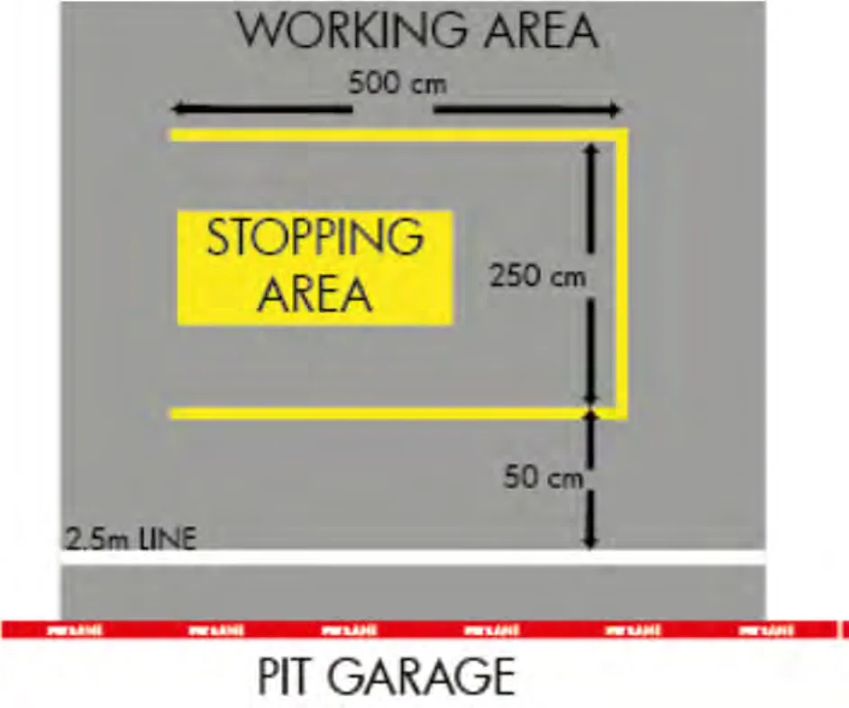</figure>
<h3 id="作業エリア停止エリア-線ピットガレージ">作業エリア停止エリア２.５ｍ線ピットガレージ</h3>
<p>WEC Sporting Regulations  63 / 91  2026.01.01</p>
<h3 id="付則-特別規則書パート-第-条-項参照-の名称および住所"><span class="pagemark" id="p160">P.160</span>付則１：特別規則書パートＡ（第２条２項参照）１． ＡＳＮの名称および住所</h3>
<h3 id="XX-オーガナイザーの名称および住所">XX  ２． オーガナイザーの名称および住所</h3>
<h3 id="XX-競技会の開催日および開催場所">XX  ３． 競技会の開催日および開催場所</h3>
<h3 id="XX-書類検査および車両検査開始日時">XX  ４． 書類検査および車両検査開始日時</h3>
<h3 id="XX-レースのスタート時刻">XX  ５． レースのスタート時刻</h3>
<h3 id="XX-照会先の住所-電話番号-ファックスおよび-メール">XX  ６． 照会先の住所、電話番号、ファックスおよびＥメール</h3>
<h3 id="XX-サーキットの詳細-以下を含んでいなければならない">XX  ７． サーキットの詳細、以下を含んでいなければならない：</h3>
<h3 id="所在地および交通の案内-XX-周回の距離-XXレース時間-XX周回方向-時計回りか逆時計回り-X">所在地および交通の案内： XX １周回の距離： XXレース時間： XX周回方向（時計回りか逆時計回り）： XXコントロールラインに対するピットレーン出口の位置： XX  ８．サーキット内施設の正確な位置：</h3>
<p>競技審査委員会室： XXレースディレクター室： XX ＦＩＡ事務局： XX書類検査場所： XX車両検査場所、フラットエリアおよび重量計測場所： XXパークフェルメXXドライバーおよび競技参加者のブリーフィングルーム： XXチームマネージャーブリーフィング：日時： XXドライバーブリーフィング：日時： XX公式通知掲示板*： XX優勝者記者会見室： XXプレスセンター： XXメディア登録センター： XX</p>
<p>*すべての認定順位が走行セッションあるいはレース終了後できる限り速やかに掲示される。９．付帯トロフィーおよび特別賞典のリスト（選手権の競技規則に明記されるものに加えて）</p>
<h3 id="XX">XX</h3>
<p>WEC Sporting Regulations  64 / 91  2026.01.01</p>
<h5 id="に指名された以下の競技会役員の氏名"><span class="pagemark" id="p161">P.161</span>１０．ＡＳＮに指名された以下の競技会役員の氏名：</h5>
<p>競技審査委員： XX競技長： XX競技事務局長： XX国内車両検査委員長： XX国内医師団長： XXレスキューチーフ： XX  １１．その他当該競技会に特有な事項11.1 セッションの時間（第１条４.１参照）３回の計時プラクティスセッションは以下のように行われる： － ６０分プラクティスセッションが１回－ ９０分プラクティスセッションが２回予選１回が、以下のように設定される：</p>
<div class="tablewrap"><table><tr><td>セッション</td><td>長さ</td><td>スタート</td><td>終了</td></tr><tr><td>LMGT3 予選</td><td>xx&#x27;</td><td>xx:xx</td><td>xx:xx</td></tr><tr><td>LMGT3 ハイパーポール</td><td>xx&#x27;</td><td>xx:xx</td><td>xx:xx</td></tr><tr><td>LMH 予選</td><td>xx&#x27;</td><td>xx:xx</td><td>xx:xx</td></tr><tr><td>LMH ハイパーポール</td><td>xx&#x27;</td><td>xx:xx</td><td>xx:xx</td></tr></table></div>
<p>セッション長さスタート終了LMGT3 予選xx&#x27; xx:xx xx:xx LMGT3 ハイパーポールxx&#x27; xx:xx xx:xx LMH 予選xx&#x27; xx:xx xx:xx LMH ハイパーポールxx&#x27; xx:xx xx:xx  11.2 ウォームアップ（第１条４.１参照）ウォームアップは行われない。11.3 ポールポジション（第１１条１.２参照）「ポールポジション」はＦＩＡにより公認されたサーキットに応じ、最前列の（右／左：確認される）とする。11.4 レコナイザンスラップ（第１１条２.２参照）１回以上のレコナイザンスラップのため、ピットレーンは[時・分]に開き、[時・分]に閉鎖される。フォーメーションラップは[時・分]にスタートする。11.5 合同インタビューゾーン（第４条１項５参照）公式タイムテーブルに記載される通り。パートＢ（ＦＩＡ記入）第７条３項参照</p>
<p>競技審査委員長： XX国際審査委員： XXレースディレクター： XXテクニカルデリゲート： XXプレスデリゲート： XXメディカルデリゲート： XX ＦＩＡ Ｅセーフティデリゲート： XXチーフタイムキーパー： XX競技審査委員会ドライバーアドバイザー： XX</p>
<p>WEC Sporting Regulations  65 / 91  2026.01.01</p>
<h3 id="スポーティングデリゲート-XX-および指名があれば"><span class="pagemark" id="p162">P.162</span>スポーティングデリゲート： XX および指名があれば、</h3>
<p>オブザーバー（含複数）： XXアシスタント（含複数）： XX  パートＣ 詳細な競技タイムテーブル正しく記載完了された付則１とともにＦＩＡに送付される。パートＤ オーガニゼーションアグリーメントおよび医務役務調査票第２条２項参照（ＦＩＡ事務局より入手可能）オーガニゼーションアグリーメント：競技の遅くとも１ヶ月前までにＦＩＡに送付される。医務役務調査票：国際競技規則付則Ｈ項に従い、競技の遅くとも２ヶ月前にＦＩＡ（メディカル部門）に送付されること。パートＥ 保険（第２条３項参照）正しく記載完了された付則１とともにＦＩＡに送付される。</p>
<p>WEC Sporting Regulations  66 / 91  2026.01.01</p>
<h3 id="付則-エントリーフォームと金融条件-エントリーフォームと締め切り"><span class="pagemark" id="p163">P.163</span>付則２：エントリーフォームと金融条件１. エントリーフォームと締め切り</h3>
<p>エントリーフォームは、次のリンクから入手できる:  https://registrations.fia.com/wec  ２０２５年１０月２１日から。契約に従い申請書類は、記入し署名した上で原本を遅くとも２０ ２５年１１月２日正午（ＣＥＴ）までの消印で以下の住所に郵送でプロモーターに返送されなければならない:  Le Mans Endurance Management For the attention of Mrs Morgane Tizon （モルガン・ティゾン氏宛）FIA WEC 27/33, Quai Alphonse Le Gallo 92100 BOULOGNE-BILLANCOURT FRANCE 応募書類の審査を依頼された選考委員会は、遅くとも２０２５年１２月１日に会合を開く。ＦＩＡ連絡先:  FIA Geneva – WEC Department Chemin de Blandonnet 2 – CH 1215 Genève 15 Fax: + 41 22 544 44 74  FIA Director of Circuit Sport Department: Mr Marek NAWARECKI （FIAサーキットスポーツ部門ディレクター: マレク・ナワレッキ氏）(mnawarecki@fia.com)  FIA Sporting Coordinator: Mr Sina AMIRDIVANI （FIAスポーツコーディネーター:シーナ・ アミールディヴァーニ氏） (samirdivani@fia.com) 金額はすべて「VAT抜き」である。適用される現行の税法に従って、VATが加算される場合がある。本規則第３条１項５に関して、２０２６年１月２７日正午以降は、競技者ライセンスの名称変更は一切認められない。２.  参加費（Participation fee）およびエントリー料（Entry fee）選手権の参加費は、エントリー料と技術費および消耗品の前払い金から構成される。選手権のエントリー料は、１台あたり１競技につき２８,３００ユーロで、選手権の対象となる競技の数（ル・マン２４時間レースを除く。第３条１.３を参照）を乗じた金額となる。競技参加者が参加しない場合、これらの料金は、競技審査委員会の裁量により、例外的な状況がある場合のみ払い戻される。選手権への参加費に加え、ハイパーカー世界選手権、ワールドカップ・ハイパーカーチーム部門のタイトルのエントリー料は、次のとおり：</p>
<p>WEC Sporting Regulations  67 / 91  2026.01.01</p>
<p><span class="pagemark" id="p164">P.164</span>・ ハイパーカーの場合：エントリーする製造者ごとに ５５４,０００ユーロ・ ワールドカップ・ハイパーカーチーム部門の場合：競技参加者ごとに １４７,８００ユーロ・ ＬＭＧＴ３の場合：ハイパーカーにエントリーしない製造者ごとに ３３５,８００ユーロ、ハ</p>
<h3 id="イパーカーにエントリーする場合-ユーロ-レースごとの競技参加者の参加費-Participatio">イパーカーにエントリーする場合 １３４,４００ユーロ。３.  レースごとの競技参加者の参加費（Participation fee）</h3>
<h3 id="選手権競技におけるレースごとの競技参加者の参加費は次のとおり-・-車両-台あたり-競技につき-ユ">選手権競技におけるレースごとの競技参加者の参加費は次のとおり：・ 車両１台あたり１競技につき ５２,３００ユーロ・ 消耗品およびその他の技術費用の前払いとして (天気予報サービスを含む):</h3>
<h3 id="・-時間レースの競技の場合-ユーロ・-時間レースの競技の場合-ユーロ・-時間レースの競技の場合">・６時間レースの競技の場合１５,０００ユーロ・８時間レースの競技の場合２０,０００ユーロ・１０時間レースの競技の場合２５,０００ユーロ４.  参加費（Participation fee）の支払い</h3>
<p>競技参加者ごとにカテゴリー１つにつき少なくとも１台の参加費は、エントリー書類の提出時に、次の住所のＦＩＡに銀行振込で支払わなければならない:  FIA 8, Place de la Concorde 75008 Paris (France) 銀行口座の詳細は次のとおり:  SG PARIS CENTRE ENT (02267) 132 Rue Réaumur 75002 PARIS 口座名義: FIA IBANコード: FR76 3000 3022 6700 0200 1171 295 BIC: SOGEFRPP 競技参加者がエントリー締め切り前にプロモーターとＦＩＡに明確に要請し、競技参加者が同じカテゴリーに少なくとも２台の車両をエントリーする場合、遅くとも２０２６年１月１７日までに各車両のエントリー料金の５０％を支払うよう要求でき、各エントリー料金の５０％の支払いは、エントリー締め切り日までに支払うことを要請することができる。この場合、残額はＦＩＡの銀行口座に支払わなければならない。支払われない場合、競技参加者はその後開催される選手権競技への参加を拒否される可能性がある。５. 技術費（technical costs）および燃料の前払い</p>
<p>選考委員会によって正式に選出されたすべての競技参加者は、燃料および天気予報サービスなどのその他の技術費の前払いとして、次の金額をプロモーターに銀行振込でのみ支払わなければならない： ハイパーカーカテゴリーの場合：・６０,０００ユーロ：２０２６年２月１３日・６０,０００ユーロ：２０２６年５月２２日ＬＭＧＴ３カテゴリーの場合：・５０,０００ユーロ：２０２６年２月１３日・５０,０００ユーロ：２０２６年５月２２日</p>
<p>WEC Sporting Regulations  68 / 91  2026.01.01</p>
<p><span class="pagemark" id="p165">P.165</span>詳細は次のとおり：  Le Mans Endurance Management BNP PARIBAS PAYS DE LA LOIRE銀行コード: 30004カウンターコード: 02408口座番号: 00011707628 Key: 58 IBAN: FR76 3000 4024 0800 0117 0762 858 BIC: BNPAFRPPXXX 技術費および燃料の前払いとして使用されなかった金額は、シーズン最後の競技終了後に返金される。</p>
<p>WEC Sporting Regulations  69 / 91  2026.01.01</p>
<h3 id="付則-義務付けられる表記-車両に貼り付けられる表示"><span class="pagemark" id="p166">P.166</span>付則３：義務付けられる表記１. 車両に貼り付けられる表示</h3>
<p>一般規定車両の提示は以下の状態でなければならない： 競技参加者ライセンスの国籍の旗１４０×１００mmをフロントボンネットに貼付していること。この国旗のステッカーはオーガナイザーから支給されない。プロモーターにより要求されるゼッケン番号は、車検前に、すべてが所定位置になければならない（書面による承認がある場合は除く）。レース番号のゼッケンベースとその他すべてのステッカー（選手権ロゴ、ウェブサイトあるいはスポンサー）の配置は以下に示される通りであり、ここに補足として付けられているステッカー貼付案を参照のこと。これに従わない場合は、競技参加者は与えられた指示に従うこと。２. レース番号のベース</p>
<p>レース番号ベースは、競技参加者が車検の前に作成し取り付けなければならない。それらはすべての状況において見えていなければならない。高さ２５０mm×幅３５０mmの３枚のゼッケンベース。必ず次の色を使用しなければならない： － ハイパーカー：Pantone赤４８５ － ＬＭＧＴ３：Pantoneグリーン３５５C 側面のレース番号の２枚のゼッケンベースは、できる限り平坦な垂直面に貼付されなければならない。それらは前後のホイールの間に配置されなければならない。車両のフロントに配置されるレース番号のゼッケンベースは、レースコントロールから確認が容易で、ＴＶカメラが容易に映し出せる場所に配置されなければならない。３. レース番号</p>
<p>これらは、登録終了までに競技参加者（１番～９９９番）が「先着順」に選ぶことができる。登録期間終了までにレース番号の申請をしなかった競技参加者には、レース番号はシーズン全体について、プロモーターが割り当てる。唯一の例外は、現在のハイパーカー世界チャンピオンであり、ゼッケン１を使用することを選択できる。その者が世界チャンピオンチームタイトルを保持しない場合、以前に割り当てられたナンバーは、次のシーズンでも当該者のために取り置かれる。世界チャンピオンが１番の使用を希望しない場合は、他の競技参加者が１番の使用を希望することができる。正確な割り当て方法と条件は、ＦＩＡ ＷＥＣ商業協定に詳述されている。割り当てられた番号は、各競技参加者が作成し、上記のレース番号のゼッケンベースに貼り付けなければならず、以下の規則を遵守しなければならない：高さ：最大１８０mmから２１０mmまで太さ：自由</p>
<p>WEC Sporting Regulations  70 / 91  2026.01.01</p>
<p><span class="pagemark" id="p167">P.167</span>色：自由。ただし、カテゴリーの背景色と対照的な独自の色でなければならない。フォント：自由数字は読みやすく、明瞭でシンプルなフォントを使用し、各カテゴリーの背景色と強い対照のものでなければならない。番号の周りに最低２０mmのクリアエリアを確保する。競技参加者がレース番号のデザインを選択したくない場合は、以下の規則に従わなければならない：高さ：２１ｃｍ太さ：４ｃｍ色：白フォント：Helvetica Neue Bold Condensed 夜間のレース、あるいは一部分が夜間のレースでは、車両は白色の蛍光体の電圧発光の背景（あるいはそれと同等なもの）を装備しなければならず、夜間に常に視認できるようでなければならない。車両が番号によって確認できない場合は、（昼間あるいは夜間）、レースコントロールにより停止させられる。４. 識別要素</p>
<h3 id="同一競技参加者による-同じ車体外装の-台の車両は-互いを区別するために-それぞれ異なるサイドミラ">同一競技参加者による、同じ車体外装の２台の車両は、互いを区別するために、それぞれ異なるサイドミラーの色を使用しなければならない。５. 選手権ロゴのステッカー</h3>
<p>選手権ロゴのステッカーはプロモーターによって支給され、車検前に定位置に貼付されていなければならない。ハイパーカーおよびＬＭＧＴ３車両は選手権ロゴのステッカーを貼付する場所として、高さ１０ ０mm×幅３５０mmの３箇所の空いた場所がなければならない。この場所は車両のフロント部分にあるレース番号のゼッケンベースの真上に配置されなければならない。６. 選手権スポンサーあるいは競技スポンサーのステッカー</p>
<p>選手権プロモーターによる要請に応じ、選手権スポンサーあるいは競技スポンサーのステッカーが選手権プロモーターにより供給され、競技参加者は車検の前に、車両にそれらを貼り付けなければならない。ハイパーカーおよびＬＭＧＴ３車両は、選手権スポンサーあるいは競技スポンサーのステッカー貼り付けスペースとして、１００mm（高さ）×３５０mm（幅）の平らで垂直な面に、可能な限り２箇所の空きスペースを有していなければならない。この場所は、レース番号あるいは表示パネルのゼッケンベースの真上に配置されなければならない。７. ハイブリッド車両のステッカー</p>
<h3 id="これらはプロモーターが支給し-車検前に定位置に貼付されていなければならない-ハイブリッドプロトタ">これらはプロモーターが支給し、車検前に定位置に貼付されていなければならない。ハイブリッドプロトタイプは、高さ１６０mm×幅１６０mmの３箇所の空いた場所がなければならない。</h3>
<p>WEC Sporting Regulations  71 / 91  2026.01.01</p>
<h5 id="ステッカー"><span class="pagemark" id="p168">P.168</span>８. ＦＩＡ／ＡＣＯステッカー</h5>
<p>競技参加者は、車両に、下記の寸法で任意に選択した場所へ、３枚のＦＩＡ／ＡＣＯステッカーの貼り付けが求められる。・車両：１８０×６１mm ステッカーは、白または青のモノクロのものが、プロモーターより入手可能である。９. ハイパーカー競技参加者のためのミシュラン視認性</p>
<p>車両上の視認性ハイパーカーカテゴリーの競技参加者は、下記の図のようなミシュランのステッカーを最低６枚、車両に貼ることが義務付けられる。ステッカーは、ハイパーカーカテゴリー唯一のタイヤサプライヤーであるミシュランから受け取ることができる。競技参加者は、車両の前部（青色セクション）に、幅３５０mm以上のミシュランステッカー２枚、高さ２００mm以上のミシュランマンデカール２枚、または幅５００mmのミシュランステッカー１枚を貼らなければならない。次に、車両の後部（黄色セクション）に、幅３５０mm以上のミシュランステッカー２枚、または高さ２００mm以上のミシュランマンデカール２枚を貼らなければならない。最後に、競技参加者は、幅３５０mm以上のミシュランステッカー２枚、または高さ２００mm以上のミシュランマンデカール２枚（オレンジ色セクションの車の両側に１枚ずつ）を配置しなければならない。ステッカー（ミシュランまたはミシュランマン）は、１つのボディワーク要素に貼らなければならず、ボディワークの２つの要素にまたがって貼ってはならない。ミシュランマンのデカールは、フロントホイールの近く、できるだけ高い位置、およびリアウィングのエンドプレート上に配置しなければならない。エアインテークの上や、フロントスプリッターのような車体の平らな部分にステッカーを配置することは許可されない。車両の両側に少なくとも１つのミシュランステッカーを貼ることが必須であり、ミシュランマンのデカールだけとしてはならない。ドライバーのレーシングスーツの視認性ハイパーカーカテゴリーのドライバーは、以下の通り、最低３つのロゴを表示しなければならない： － 右胸部に横長のロゴ１つ（最低１２ｃｍ）。－ 両袖の肩部分にミシュランマンのロゴ（８ｃｍまたは１２ｃｍ）。調整が必要な場合は、ミシュランに問い合わせのこと。１０. ＬＭＧＴ３競技参加者のためのグッドイヤー・ステッカー</p>
<h3 id="車両上の視認性-競技参加者は-以下の図面に従ってグッドイヤーのステッカーを車両に貼ることが求めら">車両上の視認性ＬＭＰＧＴ３競技参加者は、以下の図面に従ってグッドイヤーのステッカーを車両に貼ることが求められる。</h3>
<p>WEC Sporting Regulations  72 / 91  2026.01.01</p>
<p><span class="pagemark" id="p169">P.169</span>ステッカーは、あらかじめ間隔が空けられ、単色（黒、白、またはグッドイヤーが合意し承認したもの）で、ＬＭＧＴ３カテゴリーの唯一のタイヤサプライヤーであるグッドイヤーから受け取ることができる。グッドイヤーのステッカーを車両の両サイド（緑の部分）で（可能な場合は）ＬＭＧＴ３ステッカーの隣に２枚以上貼り、車両を横から見たときにできるだけ見えるようにすること。２枚のグッドイヤー・ステッカーの大きさは、約４５０mm。４枚のグッドイヤー・ステッカーも車両の各コーナー（黄色の部分）に配置し、できるだけ目立つようにすること。４枚のグッドイヤー・ステッカーの大きさは、約３００mm。ドライバーのレーシングスーツの視認性ＬＭＧＴ３カテゴリーのドライバーは、以下の通り、最低３つのロゴを表示しなければならない： － 右胸部に横長のロゴ１つ（最低１０ｃｍ）。－ 両袖の肩部分に横長のロゴ１つ（他のロゴとのバランスを考慮して）。調整が必要な場合は、グッドイヤーに問い合わせのこと。１１. ドライバーおよびメカニックのレーシングスーツ・オーバーオールに取り付けられる表示</p>
<p>ＦＩＡ世界耐久選手権およびル・マン２４時間のワッペンは、ＦＩＡ安全規定を守った上で、ドライバーとメカニックのオーバーオールに縫い付け／刺繍しなければならない。本条項の違反の一切は、ＦＩＡ ＷＥＣ商業協定に従い制裁の対象となる場合がある。ドライバーとメカニックのスーツ上ワッペンの取り付け位置は下記の図解の位置を守らなければならない。すべての仕様は、プロモーターに要請しだい入手可能である。ステッチ／刺繍／プリントワッペンの寸法は：１３５mm（長さ）×５６mm（高さ）。ドライバーおよびメカニックのワッペン位置：ワッペン２枚。</p>
<figure>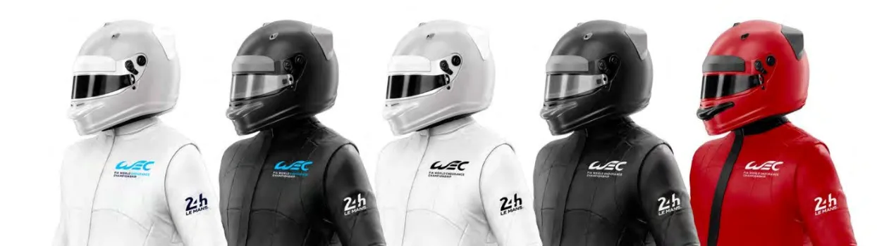</figure>
<p>WEC Sporting Regulations  73 / 91  2026.01.01</p>
<h2 id="FIA-WECハイパーカーフロント表示"><span class="pagemark" id="p170">P.170</span>FIA WECハイパーカーフロント表示</h2>
<p>（この図はステッカー貼付位置についての指示としてのみ有効）</p>
<div class="tablewrap"><table><tr><td></td><td>車両の両側に少なくとも1つのミシュランロゴステッカーを貼ることが必須であり、ミシュラン
マンのデカールだけとしてはならない。</td><td></td></tr><tr><td>位置は許可されているエリア内で自由。車検にて認められなければならない。
エアインテークの上や、フロントスプリッターのようなボディワークの平らな部分にステッカーを配置することは許可されない。</td><td></td><td></td></tr></table></div>
<h2 id="FIA-WECハイパーカーサイド表示">FIA WECハイパーカーサイド表示</h2>
<p>（この図はステッカー貼付位置についての指示としてのみ有効）</p>
<p>ハイブリッド識別ステッカー１枚を車両の高い部分に- レースゼッケン- レースゼッケンまたは表示パネルの上方に公式スポンサーステッカー</p>
<p>車両の両側に少なくとも1つのミシュランロゴステッカーを貼ることが必須であり、ミシュランマンのデカールだけとしてはならない。</p>
<p>位置は許可されているエリア内で自由。車検にて認められなければならない。エアインテークの上や、フロントスプリッターのようなボディワークの平らな部分にステッカーを配置することは許可されない</p>
<p>WEC Sporting Regulations  74 / 91  2026.01.01</p>
<figure><span class="pagemark" id="p171">P.171</span>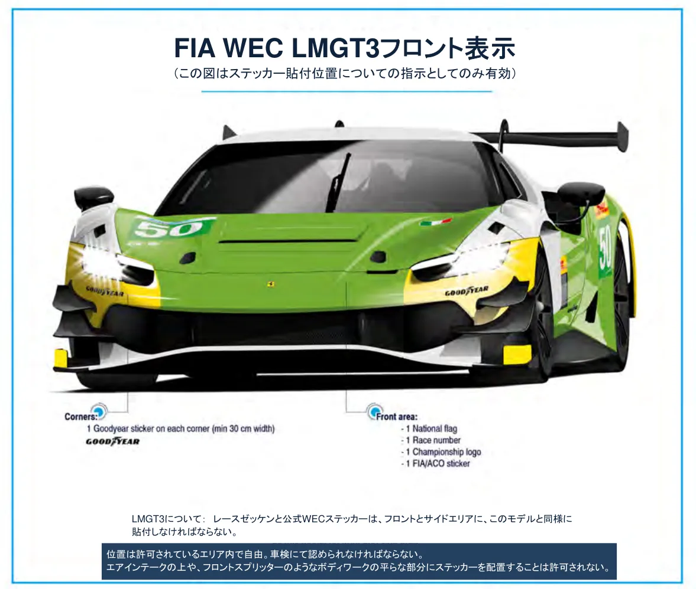</figure>
<figure>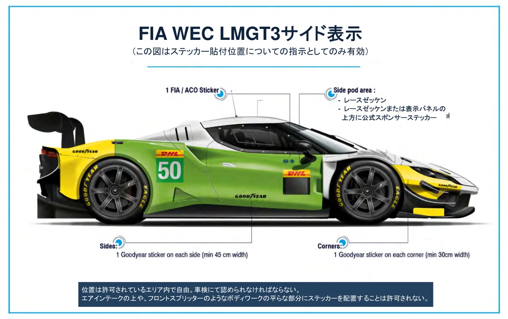</figure>
<p>WEC Sporting Regulations  75 / 91  2026.01.01</p>
<h3 id="付則-技術規則違反のペナルティTR-技術規則SR-競技規則"><span class="pagemark" id="p172">P.172</span>付則４：技術規則違反のペナルティTR：技術規則SR：競技規則</h3>
<div class="tablewrap"><table><tr><td>No.</td><td></td><td>トピック</td><td>条項</td><td>予選</td><td>レース</td><td></td><td></td></tr><tr><td></td><td></td><td></td><td></td><td></td><td>発生数</td><td>ペナルティ</td><td></td></tr><tr><td></td><td>ハイパーカー</td><td></td><td></td><td></td><td></td><td></td><td></td></tr><tr><td>1</td><td></td><td>ｽﾃｨﾝﾄあたりのｴﾈﾙｷﾞｰ &gt; BOP制限</td><td>5.1.1項＆6.8項 (TR-LMH)
5.1.1項&amp; 6.8項 (TR-LMDh)
WEC コミッティの決定</td><td>-</td><td>1回目
2回目
3回目以降</td><td>ｽﾄｯﾌﾟｱﾝﾄﾞｺﾞｰ100秒
ｽﾄｯﾌﾟｱﾝﾄﾞｺﾞｰ200秒
ｽﾄｯﾌﾟｱﾝﾄﾞｺﾞｰ300秒</td><td></td></tr><tr><td>2</td><td></td><td>最大放出ﾊﾟﾜｰﾄﾚｲﾝﾊﾟﾜｰ &gt; 技術規則および
BoP表の制限</td><td>5.1.2項 (TR-LMH)
WECコミッティの決定</td><td>現在および次の周の
タイムの取消</td><td>1回目
2回目
3回目以降</td><td>訓戒
ｽﾄｯﾌﾟｱﾝﾄﾞｺﾞｰ5秒
ｽﾄｯﾌﾟｱﾝﾄﾞｺﾞｰ30秒</td><td></td></tr><tr><td></td><td></td><td>制限を超える最大EOSリカバリー</td><td>5.1.2項 (TR)</td><td></td><td></td><td></td><td></td></tr><tr><td></td><td></td><td>最大放出ERSパワー &gt; 制限</td><td>5.3.2項 (TR)</td><td></td><td></td><td></td><td></td></tr><tr><td></td><td></td><td>ERS導入速度 &lt; BOP制限</td><td>5.3.2項 (TR)</td><td></td><td></td><td></td><td></td></tr><tr><td></td><td></td><td>ﾌﾛﾝﾄおよび合計ﾌﾞﾚｰｷﾄﾙｸ伝達 &gt; 制限</td><td>9.11項 (TR-LMH)
9.11項 (TR-LMDh)</td><td></td><td></td><td></td><td></td></tr><tr><td>2*</td><td></td><td>最大放出パワートレインパワー
&gt; 技術規則および BOP表の制限+5%</td><td>5.1.2項 (TR-LMH)
WECコミッティの決定</td><td>現在および次の周回の
タイムの取消</td><td>1回目
2回目
3回目以降</td><td>ｽﾄｯﾌﾟｱﾝﾄﾞｺﾞｰ100秒
ｽﾄｯﾌﾟｱﾝﾄﾞｺﾞｰ200秒
ｽﾄｯﾌﾟｱﾝﾄﾞｺﾞｰ300秒</td><td></td></tr><tr><td>3</td><td></td><td>ﾋﾟｯﾄ発進ﾘﾘｰｽﾀｲﾑ &lt; BOP制限</td><td>未定</td><td>-</td><td>1回目
2回目
3回目以降</td><td>次のﾋﾟｯﾄｽﾄｯﾌﾟに5秒追加｡
次のﾋﾟｯﾄｽﾄｯﾌﾟに10秒追加
次のﾋﾟｯﾄｽﾄｯﾌﾟに20秒追加</td><td></td></tr><tr><td></td><td>LMGT3</td><td></td><td></td><td></td><td></td><td></td><td></td></tr><tr><td>4</td><td></td><td>ｽﾃｨﾝﾄあたりのｴﾈﾙｷﾞｰ &gt; BOP制限</td><td>6.5項 (TR-LMGT3)
WECコミッティの決定</td><td></td><td>1回目
2回目
3回目以降</td><td>ｽﾄｯﾌﾟｱﾝﾄﾞｺﾞｰ100秒
ｽﾄｯﾌﾟｱﾝﾄﾞｺﾞｰ200秒
ｽﾄｯﾌﾟｱﾝﾄﾞｺﾞｰ300秒</td><td></td></tr><tr><td>5</td><td></td><td>最大放出ﾊﾟﾜｰﾄﾚｲﾝﾊﾟﾜｰ
&gt; 技術規則およびBOP表の制限</td><td>5.2項 (TR-LMGT3)
WECコミッティの決定</td><td>現在および次の周回の
タイムの取消</td><td>1回目
2回目
3回目以降</td><td>訓戒
ｽﾄｯﾌﾟｱﾝﾄﾞｺﾞｰ5秒
ｽﾄｯﾌﾟｱﾝﾄﾞｺﾞｰ30秒</td><td></td></tr><tr><td>5*</td><td></td><td>最大放出パﾜｰﾄﾚｲﾝﾊﾟﾜｰ
&gt; 技術規則およびBOP表の制限 +5%</td><td>5.2項 (TR-LMGT3)
WECコミッティの決定</td><td>現在および次の周回の
タイムの取消</td><td>1回目
2回目
3回目以降</td><td>ｽﾄｯﾌﾟｱﾝﾄﾞｺﾞｰ100秒
ｽﾄｯﾌﾟｱﾝﾄﾞｺﾞｰ200秒
ｽﾄｯﾌﾟｱﾝﾄﾞｺﾞｰ300秒</td><td></td></tr><tr><td></td><td>すべてのカテゴリー</td><td></td><td></td><td></td><td></td><td></td><td></td></tr><tr><td>6</td><td></td><td>ﾋﾟｯﾄｽﾄｯﾌﾟ後､指定時間内ﾃﾞｰﾀ不転送</td><td>6.4.1項(SR)</td><td>-</td><td>1回目
2回目以降</td><td>警告
次のﾋﾟｯﾄｽﾄｯﾌﾟに5秒を追
加</td><td></td></tr><tr><td>7</td><td></td><td>ｺｯｸﾋﾟｯﾄ温度 &gt; 制限</td><td>13.13項 (TR-LMH)
13.13項 (TR-LMDh)</td><td>-</td><td>常に</td><td>停止して修理
（黒とオレンジの旗）</td><td></td></tr><tr><td>8</td><td></td><td>ﾁｰﾑのCANﾁｬﾈﾙ不正</td><td></td><td>ﾗｯﾌﾟﾀｲﾑ取消</td><td>常に</td><td>停止して修理</td><td></td></tr><tr><td>9</td><td></td><td>FIA/ACOｾﾝｻｰ信号ｴﾗｰ</td><td></td><td>ﾗｯﾌﾟﾀｲﾑ取消</td><td>常に</td><td>停止して修理</td><td></td></tr><tr><td>10</td><td></td><td>いかなるｾｯｼｮﾝでも、いかなるｲﾍﾞﾝﾄでも、
非公認ｾﾝｻｰの使用</td><td></td><td>ﾚｰｽ中に30秒のｽﾄｯﾌﾟｱﾝﾄﾞｺﾞｰを適用</td><td></td><td></td><td></td></tr><tr><td>11</td><td></td><td>ﾀｲﾔ空気圧がﾀｲﾔ製造業者の要件を下回る</td><td>6.5.3項(SR)</td><td>-</td><td>常に</td><td>停止して修理
（黒とオレンジの旗）
次のﾋﾟｯﾄｽﾄｯﾌﾟに20
秒を追加</td><td></td></tr></table></div>
<p>停止して修理（黒とオレンジの旗）次のﾋﾟｯﾄｽﾄｯﾌﾟに20秒を追加国際モータースポーツ競技規則第12条3項4の規定に従い、付則4に定められたペナルティには控訴することはできない。レースの最後の30分間に違反が発生した場合、競技審査委員会の裁量によりペナルティが増加する可能性がある。第２行の違反は累積される。WECコミッティは、シーズンの最初の競技の前に公表される1つ以上の決定によって、この付則4を指定および補足することができる。</p>
<p>WEC Sporting Regulations  76 / 91  2026.01.01</p>
<h3 id="付則-タイヤに関する書類"><span class="pagemark" id="p173">P.173</span>付則５:タイヤに関する書類</h3>
<p>１. RFIDカーステッカーすべての車両には、特定の識別ＲＦＩＤステッカーが装備されている必要がある。本コースに出るたびに、車両に自身のステッカーが付いていることを確認すること。情報と勧告ステッカーの寸法：７５×２５×１.３５ｍｍステッカーは、&quot;Ｌ&quot;と&quot;Ｒ&quot;の表示を守り車両の両側に配置する必要がある。ステッカーは側面から見えなければならない。ステッカーは垂直に配置しなければならない（短い側を水平）。配置オプション１：車軸に近い高さで後輪の前（下図の赤い部分）オプション２：オプション１が不可能な場合（例えば、排気管に近接するなどで）、車軸に近い高さで後輪の後ろ（下図の緑色の部分）オプション３：テクニカルデリゲートは、車両の形状によって異なるポジションを決定することができる。スペアパーツを別の車両に使用することができる場合、ステッカーを事前に貼付しないこと。ボディワークの外装を維持するために、金属製構成要素のない薄い接着フィルムでＲＦＩＤステッカーを覆うことが許される。</p>
<figure>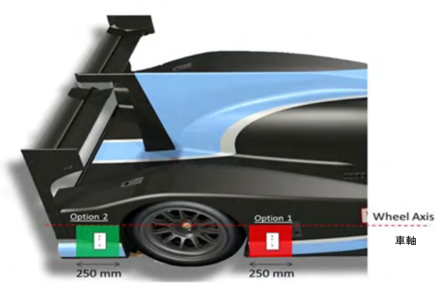</figure>
<h3 id="オプション-オプション-タイヤリストの宣言に関する仕様タイヤリストはエクセルファイル-xls-で">オプション２          オプション１    ２.タイヤリストの宣言に関する仕様タイヤリストはエクセルファイル(.xls )でなければならない。下記の通り、カテゴリーごとに1 枚のシートを含む固有のファイルを提供すること。</h3>
<p>WEC Sporting Regulations  77 / 91  2026.01.01</p>
<h3 id="HYPERCAR-LMGT3"><span class="pagemark" id="p174">P.174</span>HYPERCAR LMGT3</h3>
<h3 id="各シートのフレームは以下の通り">各シートのフレームは以下の通り：</h3>
<div class="tablewrap"><table><tr><td></td><td>タイヤ</td><td></td><td></td><td>車両</td><td></td><td>チーム</td><td></td><td>タイヤ</td><td></td><td>位置</td><td>バーコード</td><td>TID</td><td>UII</td></tr><tr><td></td><td>ブランド</td><td></td><td></td><td>タイプ</td><td></td><td></td><td></td><td>タイプ</td><td></td><td></td><td></td><td></td><td></td></tr><tr><td></td><td></td><td></td><td></td><td></td><td></td><td></td><td></td><td></td><td></td><td></td><td></td><td></td><td></td></tr></table></div>
<h3 id="タイヤブランド-タイヤメーカーのコード">タイヤブランド：タイヤメーカーのコード</h3>
<h3 id="M-MICHELIN-G-GOODYEAR">M = MICHELIN G = GOODYEAR</h3>
<h3 id="カータイプ-カテゴリー">カータイプ：カテゴリー</h3>
<h3 id="HYPERCAR-LMGT3-2">HYPERCAR LMGT3</h3>
<h3 id="チーム名-専用タイヤの場合は自動車製造者名-専用でない場合は空欄">チーム名： 専用タイヤの場合は自動車製造者名（専用でない場合は空欄）</h3>
<p>タイヤの種類：タイヤの仕様タイヤの仕様がA の場合は &quot;A&quot;タイヤの仕様がB の場合は &quot;B&quot;タイヤの仕様がC の場合は &quot;C&quot;タイヤの仕様がD の場合は &quot;D&quot;タイヤの仕様がインターミディエイトの場合：&quot;I&quot;ウェットタイヤの場合： &quot;W&quot; （フルウェット）タイヤの場合：FW</p>
<h3 id="位置-Rear-または-Front-すべての位置の場合は空欄">位置：  &quot;Rear &quot;または &quot;Front&quot; (すべての位置の場合は空欄)</h3>
<h3 id="バーコード-バーコード番号">バーコード：バーコード番号</h3>
<h3 id="TID-TID-参照">TID：  TID 参照</h3>
<h3 id="UII-UII-の参照番号">UII：  UII の参照番号</h3>
<h3 id="どのような場合も-空欄をいかなる文字でも置き換えてはならない">どのような場合も、空欄をいかなる文字でも置き換えてはならない。</h3>
<p>WEC Sporting Regulations  78 / 91  2026.01.01</p>
<p><span class="pagemark" id="p175">P.175</span>付則６：ピットレーンに関する一般的な安全ガイドライン１.安全に関する一般的な推奨事項常に安全な方法でピットストップを完了し、ガレージを運営することは競技参加者の義務である。以下のことを考慮に入れなければならない：   エアボトルはしっかりと固定されていなければならない。</p>
<h3 id="作業エリアおよびガレージ内では火花を発生させる可能性のある工具の使用は禁止されてい"> 作業エリアおよびガレージ内では火花を発生させる可能性のある工具の使用は禁止されてい</h3>
<h3 id="る-車両への介入の間を除き-作業エリアに工具がないこと">る 車両への介入の間を除き、作業エリアに工具がないこと。</h3>
<h3 id="競技中は-ガレージ-ピットレーン-グリッド上でのドライアイスの使用はいかなる時も禁止"> 競技中は、ガレージ、ピットレーン、グリッド上でのドライアイスの使用はいかなる時も禁止</h3>
<h3 id="される-追い越しの際の合図以外で-シグナルウォールの設置物がピットレーンやコースにはみ出して">される。 追い越しの際の合図以外で、シグナルウォールの設置物がピットレーンやコースにはみ出して</h3>
<h3 id="はならない-信号合図は点滅してはならない-ハイブリッド・エネルギー・リカバリー・システムを搭載し">はならない。信号合図は点滅してはならない。 ハイブリッド・エネルギー・リカバリー・システムを搭載した車両は、レッドライトを消し、</h3>
<h3 id="グリーンライトを点灯して安全な位置にいなければならない-競技参加者は-安全に関する競技役員の指示">グリーンライトを点灯して安全な位置にいなければならない。 競技参加者は、安全に関する競技役員の指示に従わなければならない。安全に関する指示は、</h3>
<h3 id="抗議や控訴申し立ての対象とはならない-エンジンの始動の防止を車両センサーのみに頼りながら-ドライ">抗議や控訴申し立ての対象とはならない。 エンジンの始動の防止を車両センサーのみに頼りながら、ドライバーが始動指示を出すことを</h3>
<p>可能にするシステムの使用は一切禁止される。これには、「ドロップスタート」機能や「燃料カップリング」戦略などが含まれるが、これらに限定されない。エンジン（内燃機関および車軸にトルクを供給する電気モーター）の始動指示は、燃料補給またはその他の作業が完了し、車両にホイールが装着された状態で、安全条件が満たされた後、第１２条に従ってドライバーが行わなければならない。 ガレージ内でエンジンを始動させる際は、排気ガスをすべてガレージの外に排出し、人員から</p>
<p>離れるように向け直さなければならない。公衆がいる場合は、排気ガスを公衆に向けることはできない。２.ピット内の照明および電気設備照明の光は、コース上のドライバーの妨げにならないよう、本コースへ下向きでレース方向に向けるか、ピット方向に向けなければならない。独立燃料タンクおよび燃料配管から３ｍ以内に設置された電気設備は、スパーク防止型でなければならない。ランプは低温かつスパーク防止型のものに限る。ハロゲンランプの使用は禁止されている。３.ブラケット、配管支持、消火器</p>
<p>WEC Sporting Regulations  79 / 91  2026.01.01</p>
<p><span class="pagemark" id="p176">P.176</span>折りたたみ式のブラケット、空気または燃料の配管、あるいは照明の支持具は：   作業エリアの外側の境界を超えてはならない（第12条2.2）。 地面からの高さが2メートル未満にあってはならない。ペナルティ：競技審査委員会の裁量による。各競技参加者は、出場車両１台につき最低３本の消火器（少なくとも２本はガレージ内）を用意しなければならない。容量は５ｋｇ／６リットル以上。粉末消火器とＣ０２消火器が使用可能で、水性消火器が推奨される。４.エアボトルエアボトルは、保護カバーを外した後、しっかりと固定またはつなぎ止められていなければならない。また、バルブやレギュレーターの周囲の保護が恒久的に維持されていなければならない。エアボトルの取り付け適合性および有効期限は、いつでも検査できる。また、車両がコース上に出ていることが認められている間は、エアボトルへの充填あるいは別の容器への移し替えは厳禁である。ペナルティ：競技審査委員会の裁量による。５.シグナリングエリアa) シグナリングエリアは、車両ごとにピットの壁に明確に区切られていること。</p>
<h3 id="設置物の最大寸法は以下の通りである-高さ-コース面上-幅-シグナリングエリアの壁に沿って-奥行">設置物の最大寸法は以下の通りである。 高さ：コース面上２.２０ｍ。 幅：シグナリングエリアの壁に沿って２.５０ｍ。 奥行：ピット側のピットウォールから１.００ｍ。</h3>
<h3 id="b-設置物とその取り付け部は-トラック側の-壁と同一面を保たなければならない">b) 設置物とその取り付け部は、（トラック側の）壁と同一面を保たなければならない。</h3>
<h3 id="c-これらの設置物に認められている記載は-競技参加者ライセンスに記載されている車両の銘">c) これらの設置物に認められている記載は、競技参加者ライセンスに記載されている車両の銘</h3>
<h3 id="柄名および-または競技参加者名のみである">柄名および／または競技参加者名のみである。</h3>
<h3 id="d-ドライバーに知らせるためのボード">d) ドライバーに知らせるためのボード。</h3>
<h3 id="スライド式または回転式でなければならない"> スライド式または回転式でなければならない。</h3>
<h3 id="背景に色をつけることはできない-黒-グレー-白のいずれか"> 背景に色をつけることはできない（黒、グレー、白のいずれか）。</h3>
<h3 id="ボード内の文字の色はチームが選択できるが-点滅するものであってはならない"> ボード内の文字の色はチームが選択できるが、点滅するものであってはならない。</h3>
<h3 id="ボードは-コース上を走行中に車両がシグナリングエリアの近くにいる場合に限り-取"> ボードは、コース上を走行中に車両がシグナリングエリアの近くにいる場合に限り、取</h3>
<h3 id="り出してドライバーに見せなければならない">り出してドライバーに見せなければならない。</h3>
<p>WEC Sporting Regulations  80 / 91  2026.01.01</p>
<h3 id="e-日よけ-パラソル-傘の使用は禁止"><span class="pagemark" id="p177">P.177</span>e) 日よけ、パラソル、傘の使用は禁止。</h3>
<h3 id="f-競技参加者の人員のみがその車両に割り当てられたピットウォールエリアに入ることができ">f) 競技参加者の人員のみがその車両に割り当てられたピットウォールエリアに入ることができ</h3>
<h3 id="る">る。</h3>
<h3 id="g-シグナリングエリア内に入ることができるのは-車両ごとに最大-名である-カーコントローラーが使">g) シグナリングエリア内に入ることができるのは、車両ごとに最大３名である。６.カーコントローラーが使用するサイン</h3>
<p>ピットストップ後の車両の解放を安全に行うために、競技参加者はピットウォールの後部手すりに、車両を出する責任のあるカーコントローラーが安全に解放できるようなマークやサインを貼ることができる。ＡＣＯおよび／またはＦＩＡの車検員は、危険を及ぼすと判断した場合、独自の判断でサインを撤去させることができる。他の競技参加者のサインの位置に不満がある競技参加者は、いかなる場合でもそのサインに触れることはできない。競技参加者の近くに設置された標識が障害の原因となっている場合は、該当するチームが競技役員を呼んで対処しなければならない。７.機器に関する制限</p>
<h3 id="外部電源-電気-空気圧など-を使用して作動する工具は禁止される-つのホイールガンとエアジャッキ・">外部電源（電気、空気圧など）を使用して作動する工具は禁止される（２つのホイールガンとエアジャッキ・カップリングを除く）。エアジャッキが故障した場合、ＡＣＯ／ＦＩＡ認定のエアバッグを使用して車両を持ち上げることができる。</h3>
<h3 id="電池を内蔵した工具は許可されるが-適切な腕章を着用した者が常に操作しなければならず-また放置され">電池を内蔵した工具は許可されるが、適切な腕章を着用した者が常に操作しなければならず、また放置されてはならない。ピットレーンに気象計測器以外のいかなる種類のセンサーも設置することは禁止される。８.信号合図</h3>
<h3 id="公式情報は-国際スポーツ競技規則に規定された信号合図によってドライバーに伝えられる-競技参加者は">公式情報は、国際スポーツ競技規則に規定された信号合図によってドライバーに伝えられる。競技参加者は主催者のものと類似した旗やライトを使用してはならない。</h3>
<p>WEC Sporting Regulations  81 / 91  2026.01.01</p>
<p><span class="pagemark" id="p178">P.178</span>付則７：人員の制限１.一般原則これらの人員制限は、競技開始からレース終了まで、競技参加者のガレージ、トラック、オフィス、および技術業務のために予約されているすべてのエリアへのアクセスに関係するものである。シーズン開始時に、競技参加者には、関連する人員権限に対応する特定の識別システムが割り当てられる。競技中は常に、この識別システムを着用し、見えるようにしておかなければならない。このシステムは、シーズンを通して維持され、ＡＣＯおよびＦＩＡの指示に従って使用されなければならない。ＷＥＣコミッティは、コスト削減の精神に基づき、シーズン中に追加の制限や適応、および申告方法に関する調整を実施する場合がある。ＡＣＯおよびＦＩＡデリゲートは、競技参加者が付則７に記載された規則を遵守しているかどうかを調査する全権限を有する。付則７はル・マン２４時間レースには適用されない。２.運営スタッフ：定義本付則に別途定められない限り、非運営要員（本付則第３条参照）および／または共通供給業者（本付則第4条参照）のリストに含まれない者は、運用スタッフの一員とみなされ、したがって、車両の機能に関連する運用に積極的に参加している者とみなされる。３.非運営スタッフ非運営要員の人数には制限はないが、いかなる状況においても、車両の機能に関連する運用に直接的または間接的に関与してはならない。これは、ＡＣＯとＦＩＡの単独かつ絶対的な裁量により判断される。－ 製造者または競技参加者の経営陣（トップレベル）、チーム代表－ ホスピタリティ、モーターホーム、ケータリング担当者－ スポンサー、マーケティング、メディア、広報担当者－ 警備および物流担当者（例：スタッフの移動、トラック運転手。ただし、競技期間中のリムやタイヤの管理などに介入しない限り）。－ ドライバー、そのマネジメント、およびそれらの医療スタッフ。４.共通サプライヤーの人員共通サプライヤーの人員は、以下のとおり制限される：  － タイヤサプライヤー：運営要員および非運営要員の人数に制限はない。ただし、運営要員は車</p>
<h3 id="両-台につき-名のみ割り当てることができ-該当するタイヤサプライヤーは申告書にその旨を明記しなけ">両１台につき１名のみ割り当てることができ、該当するタイヤサプライヤーは申告書にその旨を明記しなければならない。－ LMDhハイブリッドシステムサプライヤー：運営要員および非運営要員の人数に制限はないが、</h3>
<h3 id="との事前合意を必要とする-これらの人員は-LMDh車両を使用する競技参加者に対し-いつでも技術">ＡＣＯとの事前合意を必要とする。これらの人員は、LMDh車両を使用する競技参加者に対し、いつでも技術支援を提供することができる。</h3>
<p>WEC Sporting Regulations  82 / 91  2026.01.01</p>
<h3 id="LMDhシャシー製造者-LMDhサポート専任の運営要員は-名に制限される-これらの要員は"><span class="pagemark" id="p179">P.179</span>－ LMDhシャシー製造者：LMDhサポート専任の運営要員は５名に制限される。これらの要員は、</h3>
<h3 id="LMDh車両を使用する競技参加者に対し-いつでも技術支援を提供できる-複数の要員が同時に車両に作">LMDh車両を使用する競技参加者に対し、いつでも技術支援を提供できる。複数の要員が同時に車両に作業する必要がある場合は、競技デリゲートに書面で承認申請を提出しなければならない。非運営要員の数に制限はない。５.競技参加者の運営要員数</h3>
<h3 id="競技参加者のテクニカルエリア-ガレージ-トラック-ヴィラなど-および-の裁量により決定-において">競技参加者のテクニカルエリア（ガレージ、トラック、ヴィラなど、ＡＣＯおよびＦＩＡの裁量により決定）において許可される運営要員数は、以下のとおり制限される：</h3>
<div class="tablewrap"><table><tr><td>車両タイプ</td><td>スタッフ数</td></tr><tr><td>ＬＭＨ - ２台</td><td>51</td></tr><tr><td>ＬＭＨ - １台</td><td>26</td></tr><tr><td>ＬＭＤｈ - ２台</td><td>50</td></tr><tr><td>ＬＭＤｈ - １台</td><td>25</td></tr><tr><td>ＥＲＳ無しＬＭＨ - ２台</td><td>46</td></tr><tr><td>ＥＲＳｖ無しＬＭＨ - １台</td><td>23</td></tr><tr><td>ＬＭＧＴ３ - ２台</td><td>32</td></tr></table></div>
<h3 id="車両タイプスタッフ数-台51-台26-台50-台25-無し-台46-無し-台23-台32-スタッ">車両タイプスタッフ数ＬＭＨ - ２台51 ＬＭＨ - １台26 ＬＭＤｈ - ２台50 ＬＭＤｈ - １台25 ＥＲＳ無しＬＭＨ - ２台46 ＥＲＳｖ無しＬＭＨ - １台23 ＬＭＧＴ３ - ２台32   ６.スタッフの申告</h3>
<p>競技参加者（本付則第２条および第３条に規定される運営および非運営）、共通サプライヤー、およびＬＭＤｈシャシー製造者によって認定されたスタッフは、ＷＥＣコミッティから送付される申告リストに記入されなければならない。競技参加者、共通サプライヤー、およびＬＭＤｈシャシー製造者は、ＷＥＣコミッティが定める手順に従って、シーズン開始前にコミッティが公表する期限までに、正式に完成したリストを提出しなければならない。上記の締め切りから競技の書類検査開始までの間、これらのリストを変更することは許可されず、競技審査委員会に報告される。不可抗力（病気、事故、家族の問題などを含むがこれらに限定されない）による交代は、競技の書類検査開始後、ＡＣＯおよびＦＩＡの承認を得て、明確な理由がある場合に限り許可される。エントリーした車両のタイプ（ＥＲＳ付きまたはなしのＬＭＨ、ＬＭＤｈ、ＬＭＧＴ３）に従って申告リストが記入されなければならない。運営スタッフがハイパーカー競技参加者およびＬＭＧＴ３競技参加者の間で共有されている場合、当該スタッフは当該各競技参加者のリストに記載されなければならない。７.適用されるペナルティ上記に違反した場合、競技審査委員会がペナルティを課すことができる。競技審査委員会は、本規則または国際競技規則より適用可能なその他のペナルティに加えて、次のレース（含複数）の人員数を削減し、さらに次のレース（含複数）の人員数に上限を設けることができる。</p>
<p>WEC Sporting Regulations  83 / 91  2026.01.01</p>
<h3 id="付則-燃料に関わる手順-燃料"><span class="pagemark" id="p180">P.180</span>付則８：燃料に関わる手順１.燃料</h3>
<h3 id="競技会期間中-競技参加者は各カテゴリーについて指定された-オーガナイザーが供給する燃料のみを使用">競技会期間中、競技参加者は各カテゴリーについて指定された、オーガナイザーが供給する燃料のみを使用しなければならない。燃料の仕様は、オーガナイザーに要求次第提供される。２.搭載</h3>
<h3 id="搭載に関する事項-適用される技術規則を参照-量-取扱および保管">搭載に関する事項：適用される技術規則を参照。３.量、取扱および保管</h3>
<p>各ガレージにて車両１台に認められる貯蔵燃料の最大量は４００リットルである。この燃料はパドック側のドアの近くに保管されなければならず、消火器が燃料ドラム缶および／あるいは臨時タンクの近くに常設されなければならない。供給ドラム缶からポンプ輸送で独立型タンクに送られ、適用される技術規則に示される臨時タンクで充填がなされなければならない。ピットにおいて、この臨時タンクによるものを除き、燃料の操作は一切認められない。唯一可能な例外は、燃料の取扱いに関するすべての安全規則が遵守されていることを条件とし、車両のタンク容量を管理することである。この検査は公衆のピットレーン活動中は一切行われない。臨時タンクに移される時、あるいは独立型タンクに保管される時に、保管中の燃料の温度に影響を及ぼす過熱および／あるいは冷却のシステムは使用できない。４. 燃料サンプルの採取：</p>
<h3 id="燃料サンプルの採取が必要な場合-関連する技術規則に従い-シャシーから出る燃料ラインを使用して直接">燃料サンプルの採取が必要な場合、関連する技術規則に従い、シャシーから出る燃料ラインを使用して直接燃料を採取すること。５. 手順：</h3>
<p>全競技参加者は、車検員の監視のもと、パルクフェルメ内で各自の燃料タンクを使って燃料を抜き取ることができる。手順の最後に、シャシーからエンジンに向かう燃料ラインに透明なラインを取り付け、車両燃料ポンプすべてを作動させなければならない。この手順の間、競技参加者はすべての燃料ポンプの供給電流を表示することが要求される。６.給油時の安全性と義務6.1  給油中の一般的な権限と義務燃料の操作はすべて規則を守って行わなければならない（消火器、オーバーオール、バラクラバ、ゴーグル、グローブ、シューズ、アンダーウェアなど）。給油中は、ピットシャッター前の塗装ラインから：</p>
<p>WEC Sporting Regulations  84 / 91  2026.01.01</p>
<h3 id="ドライバーは車両内に残ることができる-給油口と排気口のカップリングを接続する前-および接続中"><span class="pagemark" id="p181">P.181</span> ドライバーは車両内に残ることができる。 給油口と排気口のカップリングを接続する前、および接続中、車両は電気的にアースされ、</h3>
<h3 id="給油装置と等電位的に接地されていなければならない-エネルギー再生装置-Hybrids-ERS-を">給油装置と等電位的に接地されていなければならない。 エネルギー再生装置（Hybrids-ERS）を搭載した車両は、安全な位置にいなければならない。</h3>
<p>レッドライド消灯、グリーンライト点灯。ペナルティ：競技審査委員会の裁量による。6.2  独立供給タンクの使用についてプラクティス走行およびレース中の燃料補給は、車両番号の記載されたピットの独立供給タンクを使用し、オーガナイザーが納入した燃料を用いて行わなければならない。車両のピットストップ中、給油作業を容易にするために給油装置を移動させることは禁止される。ペナルティ：競技審査委員会の裁量による。独立燃料タンクは、大気圧と大気温に保たれていなければならない。ピットに保管されている燃料用のタンクは、すべて３気圧を保持できるものでなければならない。レース中、ピットでの燃料補給は、有効な技術規則に基づき、１ピットにつき１個の独立燃料タンクを使用して行わなければならない。6.3独立燃料タンクの充填安全のため、給油の際は：   車両がまだ作業エリア内にあるときに、独立供給タンクに燃料を入れることは禁止される。 燃料注入の際には、燃料バウザー（給油装置）を等電位的にアースに接続しなければならない。ペナルティ：競技審査委員会の判断による。ベントホース内の燃料は、付則Ａ（ハイパーカー）、付則２（ＬＭＧＴ３）および技術規則第８条に記載されている臨時タンクに注がなければならない。 最大容量６リットルの金属製の空容器で、燃料注入用のカプラーと臨時タンクに燃料を移す</p>
<h3 id="ための自動閉鎖コネクターが装備されているものを使用する-違反した場合は-競技審査委員会の判断によ">ための自動閉鎖コネクターが装備されているものを使用する。違反した場合は、競技審査委員会の判断により失格となる可能性がある。</h3>
<p>WEC Sporting Regulations  85 / 91  2026.01.01</p>
<h3 id="付則-ハイパーカーテスト規定"><span class="pagemark" id="p182">P.182</span>付則９：ハイパーカーテスト規定</h3>
<p>パートＡ － 前文1 一般原則1.1これらの規定は、パートBおよびC（以下「テスト」”the Testing”）に記載のすべての公式およびプライベート合同テストに適用される。それらは、各カレンダー年の1月1日から12月31日まで適用される。これらは、FIA WECおよび／またはIMSA選手権シーズン（以下「選手権」”the Championships”）に参戦する製造者および競技参加者を対象としている。ACO/FIAおよび／またはIMSAは、それぞれの規則の他の箇所で指定されているように、選手権固有のブラックアウト（テスト禁止）期間を追加する場合がある。1.2製造者とは車両の公認を取得する者と定義される。1.3車両は、選手権への参加のために各製造者によって公認された車両と定義される。各車両にはレーシングナンバー（「以下「車両番号」”Car number”）が割り当てられている。1.4本テスト規則の目的上、チームは競技参加者によって選手権にエントリーされた車両番号によって定義される。1.5車両が公認を受けた後、テスト走行は、いずれかの選手権に正式に参戦している製造者および競技参加者のみに許可される。1.6根本的な変更を除き、車両に公認車両からのわずかな逸脱および／または部品の差異がある場合、ACO/FIA/IMSAによってのみ決定される本テスト規定の目的では、その車両は別の車両とは見なされないものとする。このような決定は最終的なものであり、抗議や控訴の対象にはならない。1.7 ACO/FIA/IMSA間の合意がなされた場合、製造者は「リモデルカー（Remodeled Car）」の公認を取得することができる。この並行的な公認の仕様は、製造者とACO/FIA/IMSA間で締結される特定の合意書に詳細が規定される。「リモデルカー」は、本付則９のパートDに定める条件の下で、サーキット活動に参加することが許可される。いかなる場合も「リモデルカー」は、競技への参加資格を有さず、また公認を取得した車両の性能向上を目的として開発されてはならない。1.8製造者および／またはチームは、選手権あるいはアジアン・ル・マンシリーズを除く他の選手権において、製造者が公認した車両でテストおよび／またはレース参加してはならない。ACO/FIAおよびIMSAによって承認されたアジアン・ル・マンシリーズの規定には、個別の追加的なテスト制限事項が記載される。1.9 ACO/FIAおよび／またはIMSAによる調査の費用は、製造者および／または競技参加者に請求される場合がある。1.10 両選手権のいずれかで特定のシーズンにエントリーしている製造者または競技参加者は、前カレンダー年にテストを実施することができるが、そのようなテストは当該製造者または競技参加者がエントリーしたシーズンの割り当てに加算される。1.11 許可されるテストの量は、タイヤの数量の割り当てとテスト日の割り当てによって制限される（詳細は以下のパートBで定義および説明される）。1.12 下記に定義される日数の割り当ては、当該シーズンの選手権にエントリーした製造者／競技参加者のみに適用される。</p>
<p>WEC Sporting Regulations  86 / 91  2026.01.01</p>
<p><span class="pagemark" id="p183">P.183</span>1.13 製造者および／または競技参加者は、以下の時間枠でテストを行ってはならない： － IMSA選手権大会の当該サーキットでのトラック活動最終日前の１４日以内。－ FIA WEC競技における当該サーキットの書類検査が開始される前の３０日以内。ただし、イモラ６時間耐久レースとスパ・フランコルシャン６時間耐久レースについては、この期間は行書類検査開始前の１４日以内に短縮される。1.14 選手権の競技および公式合同テストへの参加は、以下に説明する割り当ての対象とはならない。1.15 あらゆるテストは、以下に説明する条件に従って申告および承認されなければならない。ACO/FIAおよび／またはIMSAは、テストを承認する際に必要と判断した追加条件を課す場合がある。1.16 ACO/FIAは FIA WECに参加する競技参加者を束ねる当局であり、IMSAはIMSA選手権に参加する競技参加者を束ねる当局である。共同承認が必要な場合は、共同回答が送信される。1.17 申告および承認されたすべてのテストは、各選手権によって公開される。1.18 テストの申告および承認の要求に関連する連絡先は、FIA WEC のWEC コミッティ: comite.wec@lemans.orgおよびIMSA選手権のポール・ワルター（Paus Walter）pwaler@imsa.com。両方の電子メール アドレスを、関連する通信連絡のコピーに含めなければならない。1.19 テスト申告は、次のリンクにあるオンライン フォームを通じて行わなければならない： https://team.fiawec.com/login - 2026 GTP &amp; HYPERCAR TESTING REGISTRATION FORM をクリック。2 タイヤの使用に関する規定2.1テストに使用されるタイヤは、本規則に従って、指定されたタイヤ製造業者によってのみ供給されなければならない。2.2本規則に別段の定めがない限り、テストは、対応する選手権の競技用に宣言された仕様のタイヤで実施されなければならない。競技参加者とタイヤ製造業者の合意により、以前の範囲の仕様の使用が許可され、１チーム１日あたり最大１セット（４本）のタイヤが使用可能となる。これらのタイヤは、2.3項で定義された割り当て範囲内にカウントされる。競技参加者とタイヤメーカーの合意に基づき、開発用ウエット天候用タイヤをチームあたり年間最大５セット（２０本）まで使用することが認められ、当該チームに無償で提供される。2.3使用可能なドライ天候用新品タイヤの年間の最大割り当て数は、製造者とチームに対して決定される。</p>
<h3 id="上記で定義されたテストに使用できるドライ天候用タイヤの最大数は-次のように定義される">上記で定義されたテストに使用できるドライ天候用タイヤの最大数は、次のように定義される:</h3>
<div class="tablewrap"><table><tr><td></td><td>年間割り当て（セット）</td><td></td><td></td></tr><tr><td></td><td>製造者
テスト</td><td>製造者
合同テスト</td><td>チーム
テスト</td></tr><tr><td></td><td>製造者ごと</td><td>車両番号ごと</td><td>車両番号ごと</td></tr><tr><td>LMH
LMdH</td><td>120 (30)</td><td>48 (12)</td><td>84 (21)</td></tr></table></div>
<h3 id="輸送用タイヤは-上記の割り当てにはカウントされない-2-4これらのタイヤは-いかなる方法であって">輸送用タイヤは、上記の割り当てにはカウントされない。2.4これらのタイヤは、いかなる方法であっても、製造者および／またはチームから別の製造者およ</h3>
<p>WEC Sporting Regulations  87 / 91  2026.01.01</p>
<h3 id="び-またはチームに販売または譲渡してはならない"><span class="pagemark" id="p184">P.184</span>び／またはチームに販売または譲渡してはならない。</h3>
<p>パートB － 定期テスト3製造者テスト3.1製造者は、顧客チームの違反を含め、テスト規定に関連する違反に対して責任を負う場合がある。パートB、項目3で説明されているように、製造者のテストを顧客チームに依存する場合、製造者はテスト日をそれらのチーム間で公平に配分しなければならない。3.2製造者テストデーの制限は車両日数で表される。コース上の１台の車両は１日の消費に相当する。3.3この制限は製造者ごとに定義され、選手権固有のものではない。3.4製造者テストデーは、遅くともテスト初日（を含む）３０日前の中央ヨーロッパ標準時午後２時までにそのテストを主催する当該製造者によってACO/FIAおよび／またはIMSAに申告されなければならない。このテストに参加するその他の製造者／チームは、テスト初日の５日前（その日を含む）の遅くとも午後２時（中央ヨーロッパ時間）までに参加を宣言しなければならない。かかるテスト日の再スケジュールは、代替日を探す時点ですべての関係者に通知されなければならない。テスト日の前日現地時間１２：００ｐｍから、そのテスト日をキャンセルしたり、スケジュールを変更したりすることは禁止され、不可抗力の場合を除き、テスト日には割り当てに対して料金が請求される。3.5割り当ては製造者ごとに次のように制限される： － ２０２６年：２日間－ ２０２７年：２日間4製造者合同テストデー4.1  製造者合同テストデーの制限は、製造者ごとの本コースレンタル日数で表される。これは、コース上の車両台数に関係なく、テスト１日あたり１日の本コースレンタル料金が製造者の割り当てに対して請求されることを意味する。4.2この制限は選手権固有のものである。4.3エントリーしたチームのみがこれらの製造者合同テスト（第1.6項に従う）に参加することが許可されるが、製造者合同テストデーへの参加はチームの割り当てにはカウントされない。4.4製造者合同テストデーを主催する製造者の車両を使用するチームは、そのテストに参加するよう招待されなければならない。製造者は資格のあるチームの参加を拒否することはできない。4.5製造者合同テストデーは、遅くともテスト初日（を含む）３０日前の中央ヨーロッパ標準時午後２時までにそのテストを主催する製造者によってACO/FIAおよび／またはIMSAに申告されなければならない。このテストに参加するその他の製造者／チームは、テスト初日の５日前（その日を含む）の遅くとも午後２時（中央ヨーロッパ時間）までに参加を申告しなければならない。4.6これらのテストは、ACO/FIAおよび／またはIMSAの独自の裁量により認められる不可抗力または特別な状況を除き、キャンセルすることはできない。キャンセルされた場合、その日数は製造者の割り当てに対して請求される。4.7製造者合同テストデーは、テストを主催する製造者が、テスト開始日の３０日前（テスト開始日を含む）の午後２時（中央ヨーロッパ標準時間）までに、ACO/FIAおよび／またはIMSAに申請しなければならない。当該テストに参加するその他のチームは、テスト開始日の５日前（テスト開</p>
<p>WEC Sporting Regulations  88 / 91  2026.01.01</p>
<p><span class="pagemark" id="p185">P.185</span>始日を含む）の午後２時（中央ヨーロッパ標準時間）までに参加を申請しなければならない。テストデーの日程変更は、代替日程を検討する際に、関係者全員に通知しなければならない。テスト前日の午後１２時（現地時間）以降は、不可抗力の場合を除き、テストデーのキャンセルまたは日程変更は禁止され、当該テストデーは割り当てに対して算入される。4.8割り当ては、製造者ごと、エントリーされた選手権ごとに次のように制限される： － ２０２６年：２日間－ ２０２７年：２日間5チームテストデー5.1チームテストデーの制限は車両日数で表される：コース上にある１台の車両は１日の消費に相当する。5.2この制限はチームごとに定義され、選手権固有のものではない。5.3チームは、コストを共有する目的で、そのチームが主催するテストに他のチームを招待することがでる。これには、他のカテゴリーで競争するチームも含まれる。テスト日については、該当する場合、本規定に従って、招待チームと招待されたチームの両方の割り当てに対して請求されるものとする。参加者数がサーキットで許可される車両の最大数を超えない限り、どのチームも他のチームの参加を拒否する権利はない。5.4チームテストデーは、遅くともテスト初日（を含む） ３０日前の中央ヨーロッパ標準時午後２時までに主催チームによってACO/FIAおよび／またはIMSAに申告されなければならない。このテストに参加するその他の製造者/チームは、テスト初日の５日前（その日を含む）の遅くとも午後２時（中央ヨーロッパ時間）までに参加を宣言しなければならない。最初のテスト日の５日前から、テスト日のキャンセルやスケジュール変更は禁止され、テスト日は割り当てに対して不可抗力の場合を除き請求される。5.5  割り当てはチームごとに次のように制限される： － ２０２５年：２日間パートC － その他のテスト6 タイヤ製造者のテスト6.1 ACO/FIAおよび／またはIMSAの承認およびそれらが定める条件に従い、そのカテゴリーの指定タイヤ製造者はタイヤテストを組織することができる。6.2指定タイヤ製造者は、翌カレンダー年の１２月１日までにACO/FIAおよびIMSA選手権の両方に適用されるテスト計画をACO/FIAおよびIMSAに提出しなければならない。6.3 ACO/FIAおよび／またはIMSAは、指定されたタイヤ製造者に専用のテストセッションを開催するよう要求することができる。6.4 ACO/FIAまたはIMSAの認可テスト、製造者テストデー、または製造者合同テストデーの一部ではないタイヤ製造者テストはチームテストに従うものとし、テストチームの割り当てにカウントされる。7特別テスト</p>
<p>WEC Sporting Regulations  89 / 91  2026.01.01</p>
<p><span class="pagemark" id="p186">P.186</span>7.1特別テストとは、製造者またはチームによって組織されるテストまたは活動を意味し、これには、ロールアウト、直線テスト、風洞テスト、７ポストテスト、コマーシャル、VIPおよび／またはメディアセッションが含まれるが、これらに限定されない。7.2特別な状況や出来事のために ACO/FIAおよび／またはIMSAによって承認されない限り、コース上の活動は最大１時間に制限される。7.3特別テストはACO/FIAおよび／またはIMSAの承認が必要であり、遅くとも特別なテストまたは活動が開始される５日前の中央ヨーロッパ標準時午後２時までに要求が受信されなければならない。特別テストの承認に関するACO/FIAおよび／またはIMSAの決定は最終的なものであり、ACO/FIAおよび／またはIMSAは拒否の場合に正当な理由を提供する義務を負わない。7.4特別テストは、本テスト規則に記載されているその他のテスト日の割り当てには算入されない。特別テストは、指定されたタイヤ製造者が供給し、ACO/FIAおよび／またはIMSAの承認に従って輸送用タイヤに対して実施しなければならない。免除: ACO/FIAおよび／またはIMSAからの確認後、機密タイヤはオフトラックテスト（プライベート風洞や７ポストテストセッションなど）に割り当て数を減算することなく、使用できる。8 公式合同テスト8.1 ACO/FIAまたはIMSAによってスケジュールされた公式合同テストへの参加は、本テスト規定に記載されている他のテスト日の割り当てにはカウントされない。8.2 ACO/FIAまたはIMSAの要求に応じて、公式合同テストへの参加が必須となる場合がある。8.3 FIA WEC公式合同テスト、２０２６年： ３月２２～２３日－ プロローグ － カタール３月２６日－ プロモーター合同テスト － カタール１１月８日－ ルーキーテスト － バーレーン8.4 IMSA公式合同テスト、２０２６年：後日確認  － デイトナ・インターナショナル・スピードウェイパートD － リモデルカー（REMODELED CAR）9リモデルカー（REMODELED CAR）よる走行活動9.1  リモデルカーとは、ACO/FIA/IMSAによって承認された特定の公認（以下「リモデル公認」という）によって定義される。この車両は、本付則第１条３項で定義される車両の公認とは異なるものとみなされる。9.2タイヤの仕様は、ACO/FIAおよびIMSAの承認を受けなければならない。選手権で使用されるタイヤ仕様は禁止される。9.3この車両によるあらゆる走行活動は、製造者とACO/FIAおよびIMSAとの間で事前に定義され、合意された上で、本規則第１条１８項で定義される連絡先に、走行活動日の１５日前までに申請しなければならない。9.4申請書には以下の情報を含めなければならない： － 活動対象日－ 対象ドライバー－ 活動実施サーキット</p>
<p>WEC Sporting Regulations  90 / 91  2026.01.01</p>
<p><span class="pagemark" id="p187">P.187</span>－ 使用タイヤ9.5製造者は、リモデルカーおよび本規則の遵守について、たとえ製造者がリモデルカーの所有者でなくなった場合でも、公認期間全体にわたって責任を負う。違反があった場合は、製造者に責任が問われ、競技審査委員会に報告される。9.6製造者は、公認を取得した車両の性能または信頼性を向上させる目的で、リモデルカーを用いたテストを実施することは、いかなる場合も許可されない。9.7 ACO/FIAおよび/またはIMSAの担当者は、いつでも事前の通知なしに、テスト地に立ち入り、車両の部品を封印し、必要に応じて検査のために車両の分解を要求する権限を有する。</p>
<p>WEC Sporting Regulations  91 / 91  2026.01.01</p>
<h2 id="2026-FIA-WORLD-ENDURANCE-4"><span class="pagemark" id="p188">P.188</span>2026 FIA WORLD ENDURANCE</h2>
<h2 id="CHAMPIONSHIP-4">CHAMPIONSHIP</h2>
<h2 id="TECHNICAL-REGULATIONS">TECHNICAL REGULATIONS</h2>
<h2 id="LM-Hypercar">(LM-Hypercar)</h2>
<h2 id="ISSUE-17-October-2025">(ISSUE: 17 October 2025)</h2>
<div class="tablewrap"><span class="pagemark" id="p189">P.189</span><table><tr><td>í</td><td>2026</td><td></td></tr><tr><td></td><td></td><td></td></tr><tr><td></td><td>Règlement Technique Le Mans Hypercar</td><td></td></tr><tr><td></td><td></td><td></td></tr><tr><td></td><td>Le Mans Hypercar Technical Regulations</td><td></td></tr><tr><td></td><td></td><td></td></tr></table></div>
<div class="tablewrap"><table><tr><td>ART. 0</td><td>AVANT-PROPOS</td><td>FOREWORD</td></tr></table></div>
<div class="tablewrap"><table><tr><td>ART. 1</td><td>DEFINITIONS</td><td>DEFINITIONS</td></tr></table></div>
<p>1.1 &quot;LE MANS HYPERCAR&quot; – HYPERCAR &quot;LE MANS HYPERCAR&quot; – HYPERCAR</p>
<h5 id="1-2-Automobile-Automobile">1.2 Automobile Automobile</h5>
<p>1.3 Véhicule terrestre Land vehicle</p>
<h5 id="1-4-Carrosserie-Bodywork">1.4 Carrosserie Bodywork</h5>
<p>1.5 Axe de roue Wheel centre line</p>
<p>1.6 Mesures de hauteur Height measurements</p>
<h5 id="1-7-Distances-Distances">1.7 Distances Distances</h5>
<h5 id="1-8-Roue-Wheel">1.8 Roue Wheel</h5>
<p>1.9 Roue complète Complete wheel</p>
<p>1.10 Marque automobile Automobile make</p>
<h5 id="1-11-Epreuve-Event">1.11 Epreuve Event</h5>
<h5 id="1-12-Poids-Weight">1.12 Poids Weight</h5>
<p>1.13 Cylindrée du moteur Engine Cubic capacity</p>
<p>1.14 Suralimentation Pressure charging</p>
<h5 id="1-15-Habitacle-Cockpit">1.15 Habitacle Cockpit</h5>
<p>1.16 Suspension Sprung suspension</p>
<p>1.17 Cellule de survie Survival cell</p>
<h5 id="1-18-Cam-ra-Camera">1.18 Caméra Camera</h5>
<p>1.19 Boîtier de caméra Camera housing</p>
<p>1.20 Rembourrage de l’habitacle Cockpit padding</p>
<p>1.21 Etriers de freins Brake calliper</p>
<p>1.22 Contrôlé électroniquement Electronically controlled</p>
<p>1.23 Système de contrôle électronique en boucle fermée Closed-loop electronic control system</p>
<p>1.24 Transmission avant Front power train</p>
<p>1.25 Transmission arrière Rear power train</p>
<p>1.26 Unité de puissance Power unit</p>
<p>1.27 Système de récupération de l’énergie (ERS) Energy Recovery System (ERS)</p>
<p>1.28 Moto-générateur – Cinétique (MGU-K) Motor Generator Unit – Kinetic (MGU-K)</p>
<p>1.29 Stockage d’énergie (ES) Energy Store (ES)</p>
<h5 id="1-30-Cellules-de-l-ES-ES-cells">1.30 Cellules de l’ES ES cells</h5>
<p>1.31 Convertisseur DC/DC DC-DC converter</p>
<h5 id="1-32-Moteur-Engine">1.32 Moteur Engine</h5>
<p>1.33 Moteur rotatif Rotary engine</p>
<p>1.34 Entrée du compresseur Compressor inlet</p>
<p>1.35 Sortie du compresseur Compressor outlet</p>
<p><span class="pagemark" id="p190">P.190</span>1.36 Chambre de combustion Combustion chamber</p>
<p>1.37 Injecteur de carburant Fuel injector</p>
<p>1.38 Réservoir d’huile auxilaire Auxiliary oil tank</p>
<p>1.39 Pompe à carburant haute pression High pressure fuel pump</p>
<p>1.40 Débitmètre à carburant (FFM) Fuel Flow Meter (FFM)</p>
<p>1.41 Capteur de pression cylindre In-cylinder pressure sensor</p>
<h5 id="1-42-Compresseur-Supercharger">1.42 Compresseur Supercharger</h5>
<p>17.43 Bobine d’allumage Ignition coil</p>
<h5 id="1-44-Auxiliaires-Ancillaries">1.44 Auxiliaires Ancillaries</h5>
<h5 id="1-45-Alternateur-Alternator">1.45 Alternateur Alternator</h5>
<h5 id="1-46-D-marreur-Starter-motor">1.46 Démarreur Starter motor</h5>
<p>1.47 Entrée du moteur Engine inlet</p>
<p>1.48 Voiture, pièce et moteur d’origine Original car, part and engine</p>
<h5 id="1-49-BSFC-Moteur-Engine-BSFC">1.49 BSFC Moteur Engine BSFC</h5>
<h5 id="1-50-Bo-te-de-vitesses-Gearbox">1.50 Boîte de vitesses Gearbox</h5>
<h5 id="1-51-Diff-rentiel-Differential">1.51 Différentiel Differential</h5>
<p>1.52 Hauteur de caisse Ride height</p>
<p>1.53 Surface frontale Frontal area</p>
<p>1.54 Système de coordonnées cartésiennes Cartesian coordinate system</p>
<p>1.55 Systèmes de prévention du calage Stall prevention system</p>
<p>1.56 Caméra du concurrent Competitor’s camera</p>
<div class="tablewrap"><table><tr><td>ART. 2</td><td>PRINCIPES GENERAUX</td><td>GENERAL PRINCIPLES</td></tr></table></div>
<p>2.1 Rôle de la FIA/ACO et principes de base Role of the FIA / ACO and basic principles</p>
<p>2.2 Modifications du règlement Amendments to the regulations</p>
<p>2.3 Construction dangereuse Dangerous construction</p>
<p>2.4 Conformité au règlement Compliance with the regulations</p>
<h5 id="2-5-Mesures-Measurements">2.5 Mesures Measurements</h5>
<p>2.6 Devoir du concurrent Duty of the competitor</p>
<div class="tablewrap"><table><tr><td>ART. 3</td><td>CARROSSERIE ET DIMENSIONS</td><td>BODYWORK AND DIMENSIONS</td></tr></table></div>
<p>3.1 Dimensions hors-tout Overall dimensions</p>
<h5 id="3-2-Portes-Doors">3.2 Portes Doors</h5>
<p>3.3 Pare-brise et surfaces vitrées Windscreen and glazed areas</p>
<h5 id="3-4-Carrosserie-Bodywork">3.4 Carrosserie Bodywork</h5>
<p>3.5 Dessous de la voiture Underside of the car</p>
<p>3.6 Sortie du tuyau d’échappement Exhaust pipe outlet</p>
<p>3.7 Critères aérodynamiques Aerodynamic criteria</p>
<h5 id="3-8-D-flexion-Deflection">3.8 Déflexion Deflection</h5>
<p>3.9 Construction de la carrosserie Bodywork construction</p>
<p>3.10 Stabilité aérodynamique Aerodynamic stability</p>
<div class="tablewrap"><table><tr><td>ART. 4</td><td>POIDS</td><td>WEIGHT</td></tr></table></div>
<p>4.1 Poids minimal Minimum weight</p>
<p>4.2 Répartition du poids Weight distribution</p>
<h5 id="4-3-Lest-Ballast">4.3 Lest Ballast</h5>
<h5 id="4-4-Liquides-Liquids"><span class="pagemark" id="p191">P.191</span>4.4 Liquides Liquids</h5>
<p>4.5 Caméras des Concurrents Competitors’ cameras</p>
<div class="tablewrap"><table><tr><td>ART. 5</td><td>UNITE DE PUISSANCE</td><td>POWER UNIT</td></tr></table></div>
<h5 id="5-1-G-n-ralit-s-General">5.1 Généralités General</h5>
<h5 id="5-2-Moteur-Engine">5.2 Moteur Engine</h5>
<h5 id="5-3-ERS-ERS">5.3 ERS ERS</h5>
<p>5.4 Poids et centre de gravité Weight and centre of gravity</p>
<p>5.5 Demande de couple de l’unité de puissance Power unit torque demand</p>
<p>5.6 Commande de l’unité de puissance Power unit control</p>
<p>5.7 Systèmes de carburant Engine Fuel systems</p>
<p>5.8 Systèmes d’allumage Ignition systems</p>
<p>5.9 Auxiliaires moteur Engine ancillaries</p>
<p>5.10 Entrée du moteur Engine Inlet</p>
<p>5.11 Matériaux et construction – Définitions Materials and Construction – Definitions</p>
<p>5.12 Matériaux et construction – Généralités Materials and construction – General</p>
<p>5.13 Matériaux et construction – Composants Materials and construction – Components</p>
<p>5.14 Matériaux et construction – Systèmes de récupération et de stockage de l’énergie et systèmes électroniques</p>
<p>Materials and construction – Energy recovery, storage systems and electronic systems</p>
<p>5.15 Mise en marche du moteur Starting the engine</p>
<p>5.16 Fonctionnement des systèmes de prévention du calage Stall prevention systems operation</p>
<h5 id="5-17-Niveau-sonore-Noise-level">5.17 Niveau sonore Noise level</h5>
<div class="tablewrap"><table><tr><td>ART. 6</td><td>SYSTEME DE CARBURANT</td><td>FUEL SYSTEM</td></tr></table></div>
<h5 id="6-1-Principes-Principles">6.1 Principes Principles</h5>
<p>6.2 Réservoirs de carburant Fuel tanks</p>
<p>6.3 Accessoires et canalisations Fittings and piping</p>
<p>6.4 Orifices de remplissage du réservoir de carburant et évents Fuel tank fillers and breather pipes</p>
<h5 id="6-5-Ravitaillement-Refuelling">6.5 Ravitaillement Refuelling</h5>
<p>6.6 Mesure du débit de carburant - FFM Fuel Flow Metering - FFM</p>
<p>6.7 Vidange et échantillonnage du carburant Fuel draining and sampling</p>
<p>6.8 Energie par relais Energy per stint</p>
<div class="tablewrap"><table><tr><td>ART. 7</td><td>SYSTEMES D’HUILE ET DE REFROIDISSEMENT ET REFROIDISSEMENT</td><td>OIL, COOLANT AND HYDRAULIC SYSTEMS AND CHARGE AIR</td></tr><tr><td></td><td>DE L’AIR D’ALIMENTATION</td><td>COOLING</td></tr></table></div>
<p>7.1 Fluides de mise à l’air de l’unité de puissance Power unit breather fluids</p>
<p>7.2 Emplacement des réservoirs d’huile Location of oil tanks</p>
<p>7.3 Emplacement longitudinal du système d’huile Longitudinal location of oil system</p>
<p>7.4 Emplacement transversal du système d’huile Transversal location of oil system</p>
<p>7.5 Réservoirs supérieurs de liquide de refroidissement Coolant header tanks</p>
<p>7.6 Systèmes de refroidissement Cooling systems</p>
<p>7.7 Canalisations d’huile et de liquide de refroidissement Oil and coolant lines</p>
<p>7.8 Injection d’huile Oil injection</p>
<p>7.9 Réservoir d’huile Oil catch tank</p>
<p>7.10 Système hydraulique Hydraulic systems</p>
<div class="tablewrap"><span class="pagemark" id="p192">P.192</span><table><tr><td>ART. 8</td><td>SYSTEMES ELECTRIQUES</td><td>ELECTRICAL SYSTEMS</td></tr></table></div>
<p>8.1 Dispositions en matière de conformité et de sécurité Compliance and safety provisions</p>
<p>8.2 Circuit auxiliaire et batterie Auxiliary circuit and battery</p>
<p>8.3 Eclairage Lighting Equipment</p>
<p>8.4 Exigences de la FIA/ACO en matière d’enregistrement FIA/ACO Logging Requirements</p>
<p>8.5 Acquisition de données Data acquisition</p>
<h5 id="8-6-T-l-m-trie-Telemetry">8.6 Télémétrie Telemetry</h5>
<p>8.7 Affichage des signaux de piste Track signal information display</p>
<p>8.8 Voyants de sécurité Safety Lights</p>
<div class="tablewrap"><table><tr><td>ART. 9</td><td>SYSTEME DE TRANSMISSION</td><td>TRANSMISSION SYSTEM</td></tr></table></div>
<p>9.1 Types de transmission Transmission types</p>
<h5 id="9-2-Embrayage-Clutch">9.2 Embrayage Clutch</h5>
<p>9.3 Anti-patinage Traction control</p>
<p>9.4 Commande de débrayage Clutch disengagement</p>
<h5 id="9-5-Bo-te-de-vitesses-Gearbox">9.5 Boîte de vitesses Gearbox</h5>
<p>9.6 Rapports de boîte de vitesses Gear ratios</p>
<h5 id="9-7-Marche-arri-re-Reverse">9.7 Marche arrière Reverse</h5>
<p>9.8 Changement de vitesse Gear changing</p>
<p>9.9 Systèmes de transfert de couple Torque transfer systems</p>
<h5 id="9-10-Diff-rentiel-Differential">9.10 Différentiel Differential</h5>
<div class="tablewrap"><table><tr><td>ART. 10</td><td>SYSTEMES DE SUSPENSION ET DE DIRECTION</td><td>SUSPENSION AND STEERING SYSTEMS</td></tr></table></div>
<p>10.1 Conception et géométrie de la suspension Suspension design and geometry</p>
<p>10.2 Adaptation de la suspension Suspension adjustment</p>
<p>10.3 Bras de suspension Suspension members</p>
<h5 id="10-4-Direction-Steering">10.4 Direction Steering</h5>
<div class="tablewrap"><table><tr><td>ART. 11</td><td>SYSTEME DE FREINAGE</td><td>BRAKE SYSTEM</td></tr></table></div>
<p>11.1 Circuits de freinage et de distribution de la pression Brake circuits and pressure distribution</p>
<p>11.2 Etriers de freins Brake callipers</p>
<p>11.3 Disques et plaquettes de freins Brake discs and pads</p>
<p>11.4 Conduites d’air Brake cooling ducts</p>
<p>11.5 Modulation de la pression du circuit Brake pressure modulation</p>
<p>11.6 Refroidissement par liquide Liquid cooling</p>
<p>11.7 Système de commande du frein avant Front brake control system</p>
<div class="tablewrap"><table><tr><td>ART. 12</td><td>ROUES ET PNEUS</td><td>WHEELS AND TYRES</td></tr></table></div>
<h5 id="12-1-Emplacement-Location">12.1 Emplacement Location</h5>
<p>12.2 Nombre de roues Number of wheels</p>
<p>12.3 Dimensions des roues complètes Complete wheel dimensions</p>
<p>12.4 Matériau des roues Wheel material</p>
<p>12.5 Dimensions des roues Wheel dimensions</p>
<p>12.6 Traitement des pneus Treatment of tyres</p>
<p>12.7 Roue assemblée Wheel assembly</p>
<p>12.8 Verrins pneumatiques Pneumatic jacks</p>
<p><span class="pagemark" id="p193">P.193</span>12.9 Dimensions des pneus Dimension of tyres</p>
<div class="tablewrap"><table><tr><td>ART. 13</td><td>HABITACLE ET CELLULE DE SURVIE</td><td>COCKPIT AND SURVIVAL CELL</td></tr></table></div>
<h5 id="13-1-Principes-Principles">13.1 Principes Principles</h5>
<p>13.2 Plan inférieur de la cellule de survie Bottom plane of the survival cell</p>
<p>13.3 Position des pieds du pilote Position of the driver’s feet</p>
<p>13.4 Position du volant Position of the steering wheel</p>
<p>13.5 Position du pilote par rapport au champ de vision Driver’s position in relation with the field of view</p>
<p>13.6 Volumes pour les jambes du pilote et du passager – Gabarit H2 Volumes for the driver and passenger legs – Template H2</p>
<p>13.7 Volume pour le corps du pilote et du passager – Gabarit H3 Volume for the driver and the passenger bodies – Templates H3</p>
<p>13.8 Volume pour la tête du pilote et du passager – Gabarit H4 Volume for the driver and the passenger heads – Templates H4</p>
<p>13.9 Equipement de l’habitacle Equipment in the cockpit</p>
<p>13.10 Accès à l’habitacle Cockpit access</p>
<p>13.11 Champ de vision frontal du pilote Driver’s field of frontal view</p>
<p>13.12 Champ de vision latéral du pilote Driver’s field of lateral view</p>
<p>13.13 Température de l’habitacle Cockpit temperature</p>
<p>13.14 Compartiment du réservoir de carburant Fuel tank compartment</p>
<p>13.15 Volume de l’installation de mesure du débit de carburant Fuel Flow Metering installation volume</p>
<p>13.16 Compartiment de l’ES ES compartment</p>
<p>13.17 Compartiment de l’ERS ERS compartment</p>
<p>13.18 Compartiment entre ES et ERS ES to ERS compartment</p>
<p>13.19 Identification de la cellule de survie Survival cell identification</p>
<p>13.20 Caractéristiques de la cellule de survie Survival cell characteristics</p>
<div class="tablewrap"><table><tr><td>ART. 14</td><td>EQUIPEMENT DE SECURITE</td><td>SAFETY EQUIPMENT</td></tr></table></div>
<h5 id="14-1-G-n-ralit-s-General">14.1 Généralités General</h5>
<p>14.2 Extincteurs Fire extinguishers</p>
<p>14.3 Interrupteur général du pilote Driver master switch</p>
<p>14.4 Rétroviseurs Rear view mirrors</p>
<p>14.5 Ceintures de sécurité Safety belts</p>
<p>14.6 Rembourrage de l’habitacle au niveau de la tête Cockpit head padding</p>
<p>14.7 Rembourrage de l’habitacle au niveau des jambes Cockpit leg padding</p>
<p>14.8 Retenue de roue Wheel retention</p>
<p>14.9 Câble de retenue des roues Wheel tethers</p>
<h5 id="14-10-Si-ge-Seat">14.10 Siège Seat</h5>
<p>14.11 Systèmes de Retenue Frontale de la Tête Frontal Head Restraints</p>
<p>14.12 Anneaux de remorquage Towing eyes</p>
<p>14.13 Dispositif de levage Lifting devices</p>
<p>14.14 Sécurité électrique générale General electrical safety</p>
<p>14.15 Boîtier de contrôle électronique Electronic Control Unit</p>
<p>14.16 Coupe-circuit général General Circuit Breaker</p>
<p>14.17 Câbles, lignes, équipements électriques Cables, lines, electrical equipment</p>
<p>14.18 Protection contre les chocs électriques Protection against electrical shock</p>
<p>14.19 Liaison équipotentielle Equipotential bonding</p>
<p>14.20 Exigences en matière de résistance d’isolement Isolation resistance requirements</p>
<p>14.21 Mesures de protection supplémentaires pour le circuit AC Additional protection measures for the AC circuit</p>
<p><span class="pagemark" id="p194">P.194</span>14.22 Surveillance de l’isolement du châssis et du circuit de puissance Isolation surveillance of chassis and power circuit</p>
<p>14.23 Circuit de puissance Power circuit</p>
<p>14.24 Faisceau de puissance Power bus</p>
<p>14.25 Câblage du circuit de puissance Power circuit wiring</p>
<p>14.26 Connecteurs de circuits de puissance, déconnexion automatique Power circuit connectors, automatic disconnection</p>
<p>14.27 Résistance d’isolement des câbles Insulation strength of cables</p>
<p>14.28 Disjoncteur (fusibles) Overcurrent trip (fuses)</p>
<p>14.29 Indicateurs de sécurité Safety indicators</p>
<p>14.30 Unités de charge Charging units</p>
<p>14.31 Système de gestion des batteries Battery Management System</p>
<p>14.32 Enregistreurs de données relatives aux accidents (ADR) et caméras- accident haute vitesse</p>
<p>Accident data recorders (ADR) and high-speed accident cameras</p>
<p>14.33 Voyants d’avertissement d’impact Impact warning lights</p>
<div class="tablewrap"><table><tr><td>ART. 15</td><td>STRUCTURES DE SECURITE</td><td>SAFETY STRUCTURES</td></tr></table></div>
<p>15.1 Structures anti-tonneau Rollover structures</p>
<p>15.2 Cellule de survie Survival cell</p>
<p>15.3 Structure d’absorption des chocs frontaux – FIAS Front Impact Absorbing Structure - FIAS</p>
<p>15.4 Structure d’absorption des chocs arrière – RIAS Rear Impact Absorbing Structure - RIAS</p>
<p>15.5 Modifications Modifications</p>
<div class="tablewrap"><table><tr><td>ART. 16</td><td>MATERIAUX</td><td>MATERIALS</td></tr></table></div>
<h5 id="16-1-Magn-sium-Magnesium">16.1 Magnésium Magnesium</h5>
<p>16.2 Matériaux métalliques Metallic materials</p>
<div class="tablewrap"><table><tr><td>ART. 17</td><td>CARBURANT</td><td>FUEL</td></tr></table></div>
<h5 id="17-1-Fourniture-Supplying">17.1 Fourniture Supplying</h5>
<p>17.2 Spécifications Specifications</p>
<div class="tablewrap"><table><tr><td>ART. 18</td><td>CAMERAS DE TELEVISION ET TRANSPONDEURS DE</td><td>TELEVISION CAMERAS AND TIMING TRANSPONDERS</td></tr><tr><td></td><td>CHRONOMETRAGE</td><td></td></tr></table></div>
<p>18.1 Présence de caméras et de boîtiers de caméras Presence of cameras and camera housings</p>
<p>18.2 Transpondeurs Transponders</p>
<div class="tablewrap"><table><tr><td>ART. 19</td><td>HOMOLOGATION</td><td>HOMOLOGATION</td></tr></table></div>
<h5 id="19-1-Principes-Principles">19.1 Principes Principles</h5>
<p>19.2 Homologation de la voiture Car Homologation</p>
<p>19.3 Homologation du moteur Engine Homologation</p>
<p>19.4 Homologation de l’ERS ERS Homologation</p>
<p>19.5 Calendrier des homologations Homologation calendar</p>
<div class="tablewrap"><table><tr><td>ART. 20</td><td>TEXTE FINAL</td><td>FINAL TEXT</td></tr></table></div>
<div class="tablewrap"><table><tr><td>ANNEXE 1</td><td>DESSINS</td><td>DRAWINGS</td></tr></table></div>
<div class="tablewrap"><table><tr><td>ANNEXE 2</td><td>SYSTEMES, FONCTIONS ET COMPOSANTS DE L’UNITE DE</td><td>POWER UNIT SYSTEMS, FUNCTIONS AND COMPONENTS</td></tr><tr><td></td><td>PUISSANCE</td><td></td></tr></table></div>
<div class="tablewrap"><span class="pagemark" id="p195">P.195</span><table><tr><td>ANNEXE 3</td><td>HABITACLE ET CELLULE DE SURVIE</td><td>COCKPIT AND SURVIVAL CELL</td></tr></table></div>
<div class="tablewrap"><table><tr><td>ANNEXE 4</td><td>FLUX D’ENERGIE DE L’UNITE DE PUISSANCE</td><td>POWER UNIT ENERGY FLOW</td></tr></table></div>
<div class="tablewrap"><table><tr><td>ANNEXE</td><td>FLUX D’ENERGIE DE L’UNITE DE PUISSANCE, PUISSANCE MAXIMALE</td><td>POWER UNIT ENERGY FLOW, MAXIMUM POWERTRAIN POWER</td></tr><tr><td>4b</td><td>DU GROUPE MOTOPROPULSEUR</td><td></td></tr></table></div>
<div class="tablewrap"><table><tr><td>ANNEXE 5</td><td>SPECIFICATION POUR LES PANNEAUX ANTI-INTRUSION</td><td>SPECIFICATION FOR ANTI-INTRUSION PANELS</td></tr></table></div>
<div class="tablewrap"><table><tr><td>ANNEXE 6</td><td>N/A</td><td>N/A</td></tr></table></div>
<div class="tablewrap"><table><tr><td>ANNEXE 7</td><td>RAVITAILLEMENT</td><td>REFUELLING</td></tr></table></div>
<div class="tablewrap"><table><tr><td>ART. 0</td><td>AVANT-PROPOS</td><td>FOREWORD</td></tr></table></div>
<p>Le présent réglement s’applique tant aux prototypes de course construits spécifiquement pour la coursequ’aux voitures de course construites à partir d’une hypercar conçue pour la route. Chaque fois qu’un article est applicable aux deux catégories, il s’étend sur toute la largeur de lacolonne:</p>
<p>The present regulations apply to cars built both as bespoke race prototypes as well as to race cars built taken an original road going hypercar as a base. Whenever an article applies to both categories, it will span across the whole column width:</p>
<p>Dispositions communes Common</p>
<p>Si un article ne s’applique qu’à une seule catégorie, il est présenté comme suit :</p>
<p>If an article only applies to one type, the following layout applies:</p>
<div class="tablewrap"><table><tr><td>Prototype</td><td>Hypercar</td><td>Prototype</td><td>Hypercar</td></tr></table></div>
<div class="tablewrap"><table><tr><td>ART. 1</td><td>DEFINITIONS</td><td>DEFINITIONS</td></tr></table></div>
<p>1.1 &quot;LE MANS HYPERCAR&quot; – HYPERCAR &quot;LE MANS HYPERCAR&quot; – HYPERCAR</p>
<div class="tablewrap"><table><tr><td>Une automobile fermée conçue
uniquement pour les courses de
vitesse sur circuits ou parcours
fermés.</td><td>Une automobile fermée basée
sur une hypercar modifiée aux
fins de participer à des courses de
vitesse sur circuits ou parcours
fermés.
Voiture &quot;extrême&quot; destinée à
être commercialisée pour un
usage routier, créée par un
constructeur de voitures de série,
et dont les caractéristiques
techniques sont hors du
commun, au regard des procédés
actuels, de la technique et du
nombre d’exemplaires produits.
Le caractère exceptionnel de
cette automobile s’apprécie
particulièrement par :
- sa puissance,
- sa vitesse de pointe,
- les matériaux dont elle est
constituée et les technologies
utilisées,
- son prix,
- sa rareté, celle-ci étant en
particulier produite en quantité
limitée.
Les hypercars ainsi caractérisées,
étant initialement conçues pour
la route et non pour la
compétition, doivent être</td><td>A closed automobile designed
solely for speed races on circuits
or closed courses.</td><td>A closed automobile based on a
hypercar modified to be able to
compete in speed races on
circuits or closed courses.
Extreme car intended to be
marketed for a road use, created
by a car manufacturer of series
cars, whose technical
characteristics are out of the
ordinary, considering the state of
the art and the technique and
production of its manufacturer.
The exceptional nature of this
automobile is appreciated in
particular:
- its power,
- its top speed,
- the materials it is made of and
the technologies used,
- its price,
- its rarity, especially to be
produced in limited quantities.
Hypercars thus characterized,
being initially designed for road
use and not for competition,
must be marketed by the</td></tr></table></div>
<div class="tablewrap"><span class="pagemark" id="p196">P.196</span><table><tr><td></td><td>commercialisées par le
constructeur en tant que voiture
de route et doivent figurer dans
son catalogue.</td><td></td><td>manufacturer as a road car and
must appear in its catalog.</td></tr></table></div>
<h5 id="1-2-Automobile-Automobile-2">1.2 Automobile Automobile</h5>
<p>Véhicule terrestre roulant sur au moins quatre roues complètes non alignées, dont au moins deux assurent la direction et deux la propulsion.</p>
<p>A land vehicle running on at least four non-aligned complete wheels, of which at least two are used for steering and at least two for propulsion.</p>
<p>1.3 Véhicule terrestre Land vehicle</p>
<p>Appareil de locomotion mû par ses propres moyens, se déplaçant en prenant constamment un appui réel sur la surface terrestre et dont la propulsion et la direction sont contrôlées par un conducteur à bord du véhicule.</p>
<p>A locomotive device propelled by its own means, moving by constantly taking real support on the earth’s surface, of which the propulsion and steering are under the control of a driver aboard the vehicle.</p>
<h5 id="1-4-Carrosserie-Bodywork-2">1.4 Carrosserie Bodywork</h5>
<p>Toutes les parties entièrement suspendues de la voiture, léchées par les filets d’air extérieurs, à l’exception des caméras et des parties incontestablement associées au fonctionnement mécanique du moteur, de la transmission et du train roulant. Boîtes à air, radiateurs et échappements du moteur sont considérés comme faisant partie de la carrosserie.</p>
<p>All entirely sprung parts of the car in contact with the external air stream, except cameras and the parts definitely associated with the mechanical functioning of the engine, transmission and running gear. Airboxes, radiators and engine exhausts are considered to be part of the bodywork.</p>
<p>1.5 Axe de roue Wheel centre line</p>
<p>L’axe de toute roue est considéré comme étant au milieu de deux droites situées perpendiculairement à la surface d’appui de la voiture et placées contre les bords opposés de la roue complète, ces droites passant par le centre de la bande de roulement du pneu.</p>
<p>The centre line of any wheel shall be deemed to be half way between two straight edges, perpendicular to the surface on which the car is standing, placed against opposite sides of the complete wheel at the centre of the tyre tread.</p>
<p>1.6 Mesures de hauteur Height measurements</p>
<p>Toutes les mesures de hauteur seront prises verticalement par rapport au plan de référence.</p>
<p>All height measurements related to the car will be taken normal to and from the reference plane.</p>
<h5 id="1-7-Distances-Distances-2">1.7 Distances Distances</h5>
<p>Toutes les mesures relatives aux axes de roues, au plan central de la voiture et aux plans de la cellule de survie seront prises parallèlement au plan de référence.</p>
<p>All measurements relative to wheel centre lines, car centre plane and survival cell planes will be taken parallel to the reference plane.</p>
<h5 id="1-8-Roue-Wheel-2">1.8 Roue Wheel</h5>
<p>Flasque et jante. Flange and rim.</p>
<p>1.9 Roue complète Complete wheel</p>
<p>Roue et pneu gonflé. La roue complète est considérée comme faisant partie du système de suspension.</p>
<p>Wheel and inflated tyre. The complete wheel is considered part of the suspension system.</p>
<p>1.10 Marque automobile Automobile make</p>
<p>Une marque automobile correspond à une voiture complète. Lorsque le constructeur de la voiture monte un moteur qu’il n’a pas fabriqué, le nom du constructeur du moteur doit être associé à celui du constructeur de la voiture. Le nom du constructeur de la voiture devra toujours précéder celui du constructeur du moteur.</p>
<p>An automobile make corresponds to a complete car. When the car manufacturer fits an engine which it does not manufacture, the name of the engine manufacturer shall be associated with that of the car manufacturer. The name of the car manufacturer must always precede that of the engine manufacturer.</p>
<h5 id="1-11-Epreuve-Event-2">1.11 Epreuve Event</h5>
<p>Toute Epreuve inscrite au Calendrier du Championnat WEC de la FIA pour toute année commençant à un moment prévu pour les vérifications techniques et sportives, et incluant tous les essais et la course elle-même et se terminant au plus tard au moment de la présentation d’une réclamation selon les termes du Code Sportif International, or au moment où une vérification technique ou sportive a été effectuée selon les termes de ce même Code.</p>
<p>Any Event entered into the FIA WEC Championship Calendar for any year commencing at the scheduled time for scrutineering and sporting checks and including all practice and the race itself and ending at the later of the time for the lodging of a protest under the terms of the International Sporting Code or the time when a technical or sporting verification has been carried out under the terms of that Code.</p>
<h5 id="1-12-Poids-Weight-2">1.12 Poids Weight</h5>
<p>Il s’agit du poids de la voiture sans le pilote et son équipement de course, à tout moment de l’Epreuve. Il sera mesuré sans carburant à bord.</p>
<p>It is the weight of the car without the driver, at all times during the Event. It may be measured without fuel on-board.</p>
<p>1.13 Cylindrée du moteur Engine cubic capacity</p>
<p><span class="pagemark" id="p197">P.197</span>Il s’agit du volume balayé dans les cylindres du moteur par le mouvement des pistons. Ce volume doit être exprimé en centimètres cubes. Pour calculer la cylindrée, le nombre Pi est égal à 3,1416. Dans le cas d’un moteur rotatif, la cylindrée du moteur correspond au volume déterminé par la différence entre les capacités maximales et minimales des chambres de combustion.</p>
<p>The volume swept in the cylinders of the engine by the movement of the pistons. This volume shall be expressed in cubic centimetres. In calculating engine cubic capacity, the number Pi shall be 3.1416.  In the case of a rotary engine, the engine cubic capacity is the volume determined by the difference between the maximum and minimum capacities of the combustion chambers.</p>
<p>1.14 Pression de suralimentation Pressure charging</p>
<p>Augmentation de la pression de la charge de mélange air/carburant dans la chambre de combustion (par rapport à la pression engendrée par la pression atmosphérique normale, le &quot;ram effect&quot; et les effets dynamiques dans les systèmes d’admission et/ou d’échappement) par tout moyen quel qu’il soit. L’injection de carburant sous pression n’est pas considérée comme pression de suralimentation.</p>
<p>Increasing the weight of the charge of the fuel/air mixture in the combustion chamber (over the weight induced by normal atmospheric pressure, ram effect and dynamic effects in the intake and/or exhaust systems) by any means whatsoever. The injection of fuel under pressure is not considered to be pressure charging.</p>
<h5 id="1-15-Habitacle-Cockpit-2">1.15 Habitacle Cockpit</h5>
<p>Volume qui accueille le pilote et le passager. L’habitacle est le volume à l’intérieur du châssis délimité par le pavillon, le plancher, les portes, les parties latérales, les parties vitrées et les cloisons avant et arrière.</p>
<p>The volume which accommodates the driver and the passenger. The cockpit is the internal volume inside the chassis which is defined by the top of the car, the floor, the doors, the side panels, the glass areas and the front and rear bulkheads.</p>
<p>1.16 Suspension Sprung suspension</p>
<p>Moyen par lequel toutes les roues complètes sont suspendues par rapport à l’ensemble comprenant la cellule de survie/l’unité de puissance/la boîte de vitesses par des intermédiaires de suspension.</p>
<p>The means whereby all complete wheels are suspended from the unit comprising the survival cell/power unit/gearbox by a spring medium.</p>
<p>1.17 Cellule de survie Survival cell</p>
<p>La structure fermée continue contenant le réservoir de carburant, l’habitacle et les pièces de l’ES et de l’ERS.</p>
<p>The continuous structure containing the fuel tank, and the cockpit and the parts of the ES and ERS.</p>
<h5 id="1-18-Cam-ra-Camera-2">1.18 Caméra Camera</h5>
<p>Caméras de télévision dont les dimensions sont définies. Television cameras the dimensions of which are defined.</p>
<p>1.19 Boîtier de caméra Camera housing</p>
<p>Dispositif de forme et de poids identiques à ceux d’une caméra et qui est fourni par le concurrent concerné pour équiper sa voiture en remplacement d’une caméra.</p>
<p>A device which is identical in shape and weight to a camera and which is supplied by the relevant competitor for fitting to his car in lieu of a camera.</p>
<p>1.20 Rembourrage de l’habitacle Cockpit padding</p>
<p>Parties non structurelles placées à l’intérieur de l’habitacle dans le seul but d’améliorer le confort et la sécurité du pilote. Ces parties doivent pouvoir être retirées rapidement sans utilisation d’outil.</p>
<p>Non-structural parts placed within the cockpit for the sole purpose of improving driver comfort and safety. All such material must be quickly removable without the use of tools.</p>
<p>1.21 Etrier de frein Brake calliper</p>
<p>Toutes les parties du système de freinage en dehors de la cellule de survie, à l’exception des disques de frein, plaquettes de freins, pistons d’étriers, composants directement associés au système mentionné à l’Article 11.7, flexibles et accessoires de freinage, qui sont sollicités lorsqu’ils sont soumis à la pression du freinage. Les boulons ou les goujons qui sont utilisés comme fixations ne sont pas considérés comme faisant partie du système de freins.</p>
<p>All parts of the braking system outside the survival cell, other than brake discs, brake pads, calliper pistons, components directly associated with the system referred to in Article 11.7, brake hoses and fittings, which are stressed when subjected to the braking pressure. Bolts or studs which are used for attachment are not considered to be part of the braking system.</p>
<p>1.22 Contrôlé électroniquement Electronically controlled</p>
<p>Tout processus ou système de commande utilisant des semi- conducteurs ou une technologie thermoïonique. Un contacteur électrique simple à boucle ouverte, non automatique, actionné par le pilote et agissant sur un ou plusieurs système(s) n’est pas considéré comme un contrôle électronique. Un tel système est aussi appelé passif.</p>
<p>Any command system or process that utilises semi-conductor or thermionic technology. A simple open-loop non-automatic electrical switch activated by the driver acting on one or more system(s) is not considered to be an electronic control. Such a system is also called passive.</p>
<p>1.23 Système de contrôle électronique en boucle fermée Closed-loop electronic control system</p>
<p>Un système de contrôle électronique à boucle fermée est un système dans lequel : • une valeur réelle (variable contrôlée) est surveillée de façon continue ; • le signal retourné (&quot;feed back&quot;) est alors comparé à une valeur attendue (variable de référence) ; • le système est ensuite ajusté automatiquement en fonction du résultat de cette comparaison.</p>
<p>A closed-loop electronic control system is a system in which:   An actual value (controlled variable) is continuously monitored;   The &quot;feed-back&quot; signal is compared with a desired value (reference variable);  The system is then automatically adjusted according to the result of that comparison.</p>
<p><span class="pagemark" id="p198">P.198</span>Un tel système est aussi appelé actif. Such a system is also called active.</p>
<p>1.24 Transmission avant Front power train</p>
<p>MGU-K et systèmes de transmission de couple associés, jusqu’aux mesures de couple des arbres de transmission.</p>
<p>The MGU-K and associated torque transmission systems, up to the drive shafts torque measurements.</p>
<p>1.25 Transmission arrière Rear power train</p>
<p>Le moteur, le MGU-K et les systèmes de transmission de couple associés, jusqu’aux mesures de couple des arbres de transmission.</p>
<p>The engine, MGU-K and associated torque transmission systems, up to the drive shafts torque measurements.</p>
<p>1.26 Unité de puissance Power unit</p>
<p>Moteur à combustion interne, avec ses auxiliaires, tout système de récupération d’énergie et tout système d’actionnement nécessaire pour les faire fonctionner à tout moment.</p>
<p>The internal combustion engine, complete with its ancillaries, any energy recovery system and all actuation systems necessary to make them function at all times.</p>
<p>1.27 Système de récupération de l’énergie (ERS) Energy Recovery System (ERS)</p>
<p>Système conçu pour récupérer l’énergie de la voiture, la stocker et la rendre disponible pour propulser la voiture et, éventuellement, pour activer tous auxiliaires et systèmes d’actionnement nécessaires à son bon fonctionnement.</p>
<p>A system that is designed to recover energy from the car, store that energy and make it available to propel the car and, optionally, to drive any ancillaries and actuation systems necessary for its proper function.</p>
<p>1.28 Moto-générateur – Cinétique (MGU-K) Motor Generator Unit - Kinetic (MGU-K)</p>
<p>Le moto-générateur cinétique est la machine électrique reliée mécaniquement à la chaîne de propulsion en tant qu’élément de l’ERS.</p>
<p>The Kinetic Motor Generator Unit is the electrical machine mechanically linked to the drive train as part of the ERS.</p>
<p>1.29 Stockage d’énergie (ES) Energy Store (ES)</p>
<p>Les cellules de l’ES (comprenant les plaques de serrage) et les connexions électriques entre les cellules et son électronique de contrôle de sécurité.</p>
<p>The ES cells (including any clamping plates), electrical connections between cells and its safety control electronics.</p>
<h5 id="1-30-Cellules-de-l-ES-ES-cells-2">1.30 Cellules de l’ES ES cells</h5>
<p>Partie élémentaire de l’ES qui produit et stocke l’électricité par des réactions électrochimiques.</p>
<p>The elementary part of the ES that produces and stores electricity through electro-chemical reactions.</p>
<p>1.31 Convertisseur DC/DC DC-DC converter</p>
<p>Circuit électronique connecté à l’ES dont la fonction est de réguler les sorties de tension à plusieurs niveaux pour une utilisation par les composants électriques et électroniques de la voiture et de l’unité de puissance. Un convertisseur DC/DC ne peut consommer que l’énergie du stockage d’énergie et ne peut pas en récupérer l’énergie. Les composants fournis directement par le convertisseur DC/DC ou indirectement par le stockage d’énergie non ERS ne peuvent pas être utilisés pour propulser la voiture ou pour fournir de l’énergie au système de suralimentation.</p>
<p>An electronic circuit connected to the ES and whose function is to regulate multi-level voltage outputs for use by the electrical and electronic components of the car and power unit. A DC-DC converter may only consume energy from the energy store and cannot recover energy into the Energy Store. The components directly supplied by the DC-DC or indirectly supplied through the non ERS energy storage cannot be used to propel the car or to provide energy to the pressure charging system.</p>
<h5 id="1-32-Moteur-Engine-2">1.32 Moteur Engine</h5>
<p>Moteur à combustion interne, y compris les auxiliaires et actuateurs nécessaires à son bon fonctionnement.</p>
<p>The internal combustion engine including ancillaries and actuator systems necessary for its proper function.</p>
<p>1.33 Moteur rotatif Rotary engine</p>
<p>Moteur du type couvert par les brevets NSU Wankel. Engine of the type covered by the NSU Wankel patents.</p>
<p>1.34 Entrée du compresseur Compressor inlet</p>
<p>Composant contenant un conduit à section fermée par lequel tout l’air destiné à la combustion entre dans un compresseur ; le conduit doit s’étendre en amont de toute pièce de tout dispositif à géométrie variable autorisé à l’Article 5.8.</p>
<p>A component containing a duct of closed cross section through which all air destined for combustion enters any compressor; the duct must extend upstream of any part of any variable geometry device permitted by Article 5.8.</p>
<p>1.35 Sortie du compresseur Compressor outlet</p>
<p>Composant contenant un conduit à section fermée par lequel tout l’air destiné à la combustion sort d’un compresseur.</p>
<p>One or more components, each of them containing a duct of closed cross section through which all air destined for combustion exits the compressor(s).</p>
<p>1.36 Chambre de combustion Combustion chamber</p>
<p>Espace fermé dans le cylindre moteur contrôlé par l’ouverture et la fermeture des soupapes à clapet dans lequel se produit la combustion.</p>
<p>An enclosed space in the engine cylinder controlled by the opening and closing of the poppet valves in which combustion takes place.</p>
<p>1.37 Injecteur de carburant Fuel injector</p>
<p><span class="pagemark" id="p199">P.199</span>Tout dispositif ou composant qui fournit un carburant à un comburant.</p>
<p>Any device or component that delivers fuel into an oxidiser.</p>
<p>1.38 Réservoir d’huile auxiliaire Auxiliary oil tank</p>
<p>Un réservoir d’huile auxiliaire est un récipient unique relié au moteur ayant pour seule fonction de contenir l’huile moteur afin d’alimenter le système de lubrification du moteur.</p>
<p>An auxiliary oil tank is a singular vessel connected to the engine whose sole function is to hold engine oil for the replenishment of the engine lubrication system.</p>
<p>1.39 Pompe de carburant haute pression High pressure fuel pump</p>
<p>Dispositif mécanique dont la seule fonction est de comprimer le carburant au niveau requis pour l’injection haute pression. Il peut être contrôlé électroniquement.</p>
<p>A mechanical device whose sole function is to compress the fuel to the pressure required for the high-pressure injection. It may be electronically controlled.</p>
<p>1.40 Débitmètre de carburant (FFM) Fuel Flow Meter (FFM)</p>
<p>Capteur dont la fonction est de mesurer le débit du carburant le traversant.</p>
<p>A sensor whose function is to measure the flow of the fuel passing through it.</p>
<p>1.41 Capteur de pression cylindre In-cylinder pressure sensor</p>
<p>Capteur dont la fonction est de mesurer la pression dans la chambre de combustion.</p>
<p>A sensor whose function is to measure the pressure in the combustion chamber.</p>
<h5 id="1-42-Compresseur-Supercharger-2">1.42 Compresseur Supercharger</h5>
<p>Tout dispositif de suralimentation. Any pressure charging device.</p>
<p>1.43 Bobine d’allumage Ignition coil</p>
<p>Ensemble comprenant une bobine d’induction qui fournit la haute tension à la bougie d’allumage.</p>
<p>Assembly including an induction coil that supplies the high voltage to the spark plug.</p>
<h5 id="1-44-Auxiliaires-Ancillaries-2">1.44 Auxiliaires Ancillaries</h5>
<p>Composant dont la fonction est de soutenir les activités primaires d’un système principal pour lui permettre de fonctionner. Sauf indication contraire, les auxiliaires peuvent être actionnés mécaniquement ou électriquement. Aucun auxiliaire électrique ne peut être relié mécaniquement à une transmission, y compris l’unité de puissance. Les auxiliaires ne peuvent pas être utilisés pour propulser la voiture.</p>
<p>A component whose function is to support the primary activities of a main system to allow it to operate. Unless specified otherwise, ancillaries may be mechanically or electrically driven. Any electrically driven ancillary cannot be linked mechanically to any drivetrain, including the Power Unit. Ancillaries cannot be used to propel the car.</p>
<h5 id="1-45-Alternateur-Alternator-2">1.45 Alternateur Alternator</h5>
<p>Un alternateur est un générateur électrique qui convertit l’énergie mécanique en énergie électrique.</p>
<p>An alternator is an electrical generator that converts mechanical energy to electrical energy.</p>
<h5 id="1-46-D-marreur-Starter-motor-2">1.46 Démarreur Starter motor</h5>
<p>Un démarreur est un dispositif utilisé pour faire tourner un moteur de manière à ce qu’il commence à fonctionner par ses propres moyens. Le démarreur peut être électrique, pneumatique ou hydraulique. Il doit avoir une puissance maximale de 20 kW. Si sa puissance est supérieure à 4 kW, il doit être équipé d’un capteur IVT. Le démarreur peut éventuellement faire partie de l’alternateur.</p>
<p>A starter motor is a device used to rotate an engine so as to initiate the engine’s operation under its own power. Starter motor can be electric, pneumatic, or hydraulic. It must have a maximum power of 20 kW and if its power is above 4 kW it must be fitted with an IVT sensor. The starter may possibly be part of the alternator.</p>
<p>1.47 Entrée du moteur Engine inlet</p>
<p>Un ou plusieurs composants comprenant chacun un conduit de section fermée dans lequel circule tout l’air destiné à la combustion.</p>
<p>One or more components each of them containing a duct of closed cross section through which all air destined for combustion flows.</p>
<p>1.48 Voiture, pièce et moteur d’origine Original car, part and engine</p>
<p>La voiture d’origine est la voiture produite par un équipementier et homologuée en vertu des normes CEE, DOT ou de toute autre homologation routière équivalente, et dont est issue la voiture de course décrite dans le présent règlement. Une pièce d’origine est une pièce ayant subi toutes les étapes de production prévues et réalisées par le constructeur du véhicule concerné, et montée à l’origine sur le véhicule. Le moteur d’origine est le moteur de série monté sur la voiture d’origine.</p>
<p>The original car is the car produced by an OEM and homologated according to ECE, DoT or any other equivalent road car homologation, and from which the race car described in the present regulations is derived. An original part is a part which has undergone all the stages of production foreseen and carried out by the manufacturer of the vehicle concerned, and originally fitted on the vehicle. The original engine is the series production engine mounted on the original car.</p>
<h5 id="1-49-BSFC-Moteur-Engine-BSFC-2">1.49 BSFC Moteur Engine BSFC</h5>
<p>La BFSC (consommation de carburant spécifique aux freins) est une mesure de l’efficacité énergétique d’un système. Il s’agit du taux de carburant consommé par le système divisé par la puissance produite par ce dernier.</p>
<p>The BFSC (Brake Specific Fuel Consumption) is a measure of the fuel efficiency of a system. It is the rate of fuel consumed by the system divided by the power produced by the system.</p>
<h5 id="1-50-Bo-te-de-vitesses-Gearbox-2"><span class="pagemark" id="p200">P.200</span>1.50 Boîte de vitesses Gearbox</h5>
<p>Une boîte de vitesses est définie comme tous les composants de la chaîne de traction qui transfèrent le couple des arbres de sortie de l’unité de puissance aux arbres de transmission (les arbres de transmission étant définis comme les composants transférant le couple de traction des masses suspendues aux masses non suspendues). Elle comprend tous les composants dont l’objectif premier est la transmission de la puissance ou la sélection mécanique des vitesses, les paliers associés à ces composants et le carter dans lequel ils sont logés.</p>
<p>A gearbox is defined as all the parts in the drive line which transfer torque from the Power Unit output shafts to the drive shafts (the drive shafts being defined as those components which transfer drive torque from the sprung mass to the un-sprung mass).   It includes all components whose primary purpose is for the transmission of power or mechanical selection of gears, bearings associated with these components and the casing in which they are housed.</p>
<h5 id="1-51-Diff-rentiel-Differential-2">1.51 Différentiel Differential</h5>
<p>Un différentiel est défini comme un train d’engrenages permettant à deux arbres de transmission reliés à deux roues différentes de la même transmission de tourner à des vitesses différentes tout en étant entraînées par un troisième arbre.</p>
<p>A differential is defined as a gear train that permits two drive shafts connected to two different wheels of the same drive train to rotate at different speeds while being driven by a third shaft.</p>
<p>1.52 Hauteur de caisse Ride height</p>
<p>Distance entre le plan de référence et le sol. La hauteur de caisse avant (FRH) sera mesurée à partir de l’axe central de l’essieu avant, et la hauteur de caisse (RRH) à partir de l’axe central de l’essieu arrière.</p>
<p>Distance between the reference plane and the ground. The front ride height (FRH) will be taken at the front axle centerline and the rear ride height (RRH) at the rear axle centerline.</p>
<p>1.53 Surface frontale Frontal area</p>
<p>Surface frontale projetée de la voiture, excluant les pneus. Elle sera mesurée avec FRH=RRH= 50 mm.</p>
<p>The projected frontal area of the car excluding tires. It will be measured with FRH=RRH= 50 mm.</p>
<p>1.54 Système de coordonnées cartésiennes Cartesian coordinate system</p>
<p>1.54.1 Voiture complète Complete car</p>
<p>Le système de coordonnées cartésiennes tridimensionnel, avec l’origine O positionnée sous la surface de référence à la verticale du centre de l’essieu avant et les lignes d’axes X, Y et Z, orientées tel qu’indiqué par les flèches, doit être utilisé. La direction X est située dans la surface de référence vers l’arrière, la direction Y vers la droite et la direction Z vers le haut.</p>
<p>The three-dimensional cartesian coordinate system, with origin O being on the reference surface at vertical position of front axle centre and axis lines X, Y and Z, oriented as shown by the arrows must be used. The X direction is in the reference plane backward, the Y direction is toward the right, the Z direction is toward the top.</p>
<figure>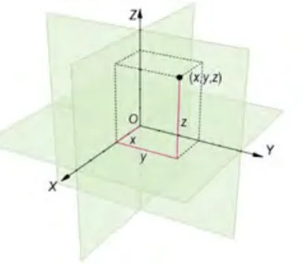</figure>
<p>1.54.2 Pour la cellule de survie For the survival cell</p>
<p>La référence sera définie au cas par cas selon les principes suivants :  • Xref : face avant de la structure anti-tonneau arrière, parallèle à X0 ; • Yref : l’axe de la voiture, identique à Y0 ; • Zref : plan de référence de la cellule de survie, parallèle à Z0 au point le plus bas de la cellule de survie.</p>
<p>The reference will be defined on a case by case basis according to the following principles: • Xref: forward face of rear rollover structure, parallel to X0;  • Yref: car centreline, identical to Y0; • Zref: survival cell reference plane, parallel to Z0 at the lowest point of the survival cell.</p>
<p>1.55 Système de prévention du calage Stall prevention system</p>
<p>Un système agissant automatiquement sur les commandes de l’unité de puissance et/ou de la boîte de vitesses et/ou de l’embrayage afin d’empêcher le calage du moteur à combustion interne.</p>
<p>A system that acts automatically on the power unit and/or gearbox and/or clutch controls to prevent the internal combustion engine from stalling.</p>
<p>1.56 Caméra du concurrent Competitor’s camera</p>
<p><span class="pagemark" id="p201">P.201</span>Une caméra amovible, installée dans l’habitacle, utilisée par un concurrent pour réaliser ses prises de vue.</p>
<p>A removable camera, installed in the cockpit, used by a competitor for filming.</p>
<div class="tablewrap"><table><tr><td>ART. 2</td><td>PRINCIPES GENERAUX</td><td>GENERAL PRINCIPLES</td></tr></table></div>
<p>2.1 Rôle de la FIA/ACO et principes de base Role of the FIA/ACO and basic principles</p>
<p>La réglementation technique ci-dessous est émise par la FIA/ACO. Ce qui n’est pas expressément autorisé par le présent règlement est interdit. En toutes circonstances, la voiture doit être sous le contrôle du pilote.</p>
<p>The following technical regulations are issued by the FIA/ACO. What is not expressly permitted by the present regulations is prohibited. The car must be, in any circumstances, under the control of the driver.</p>
<p>2.2 Modification du règlement Amendments to the regulations</p>
<p>Le présent Règlement Technique s’applique au Championnat se déroulant au cours de l’année civile visée dans le titre (&quot;le Championnat&quot;) et ne peut être modifié après le 1er janvier de l’année qu’avec l’accord unanime de tous les concurrents, excepté les modifications apportées par la FIA/ACO pour des raisons de sécurité, lesquelles peuvent entrer en vigueur sans préavis ni délai.</p>
<p>These Technical Regulations apply to the Championship taking place and referred to in the title (“the Championship”) and may only be changed after 1st January of the year with the unanimous agreement of all competitors, save for changes made by the FIA/ACO for safety reasons which may come into effect without notice or delay.</p>
<p>2.3 Construction dangereuse Dangerous construction</p>
<p>Les Commissaires Sportifs peuvent exclure un véhicule dont la construction serait jugée dangereuse. Il est de la responsabilité du constructeur de produire une voiture sûre. La FIA/ACO peut demander tout essai ou information afin de s’en assurer.</p>
<p>The stewards may exclude a vehicle whose construction is deemed to be dangerous. It is the responsibility of the manufacturer to produce a safe car. FIA/ACO may request any testing or information to ensure the safe construction of the car.</p>
<p>2.4 Conformité au règlement Compliance with the regulations</p>
<p>Les automobiles doivent respecter intégralement:</p>
<p>Automobiles must comply with:</p>
<p>1. le présent règlement et ses Annexes 2. fiches d&#x27;homologation et autres informations pertinentes fournies officiellement sous forme de dessins, de spécifications, etc. 3. les ajustements de la Balanceof Performance (BoP) 4. les décisions du Comité Endurance  pendant tout le déroulement des Epreuves. Si un concurrent introduit une nouvelle conception ou un nouveau système ou trouve qu’un aspect quelconque du présent règlement manque de clarté, il peut demander une clarification auprès du Département Technique de la FIA/ACO et une validation par le Comité Endurance. Si la clarification concerne une nouvelle conception ou un nouveau système, toute correspondance à ce sujet doit comprendre :</p>
<p>1. these regulations and its Appendixes 2. homologation forms and other officially supplied relevant information as drawings, specifications, etc…  3. Balance of Performance (BoP) adjustments 4. Endurance Committee decisions in their entirety at all times during an Event.  Should a competitor introduce a new design or system or feel that any aspect of these regulations is unclear, clarification may be sought from the FIA/ACO Technical Department and validated with the Endurance Committee. If clarification relates to any new design or system, correspondence must include:</p>
<p>a) une description complète de cette conception ou de ce système, A full description of the design or system.</p>
<p>b) des dessins ou des schémas, selon le cas, Drawings or schematics where appropriate.</p>
<p>c) l’opinion du concurrent concernant les implications immédiates de</p>
<p>The competitor’s opinion concerning the immediate implications on other parts of the car of any proposed new design.</p>
<p>toute nouvelle conception proposée pour d’autres parties de la voiture,</p>
<p>d) l’opinion du concurrent concernant toutes éventuelles conséquences à long terme ou tout nouveau développement éventuel susceptibles d’être entraînés par l’utilisation de cette nouvelle conception ou de ce nouveau système,</p>
<p>The competitor’s opinion concerning any possible long-term consequences or new developments which may come from using any such new designs or systems.</p>
<p>e) la ou les manières précises dont, selon le concurrent, la nouvelle</p>
<p>The precise way or ways in which the competitor feels the new design or system will enhance the performance of the car.</p>
<p>conception ou le nouveau système améliorera la performance de la voiture.</p>
<h5 id="2-5-Mesures-Measurements-2">2.5 Mesures Measurements</h5>
<p>Sauf indication contraire, toutes les mesures devront être effectuées lorsque la voiture est immobilisée sur une surface plane horizontale et en configuration de course.  Une précision infinie pourra être prise en compte pour certaines dimensions à condition qu’il soit clair que le but n’est pas de contourner ou de modifier l’intention du règlement applicable.</p>
<p>When not stated otherwise, all measurements must be made while the car is stationary on a flat horizontal surface and with the race setup. Infinite precision can be assumed on certain dimensions provided it is clear that such an assumption is not being made in order to circumvent or subvert the intention of the relevant regulation.</p>
<p>2.6 Devoir du concurrent Duty of the competitor</p>
<p><span class="pagemark" id="p202">P.202</span>Il est du devoir de chaque concurrent de prouver aux Délégués Techniques de la FIA/ACO et aux Commissaires Sportifs que sa voiture est en conformité avec le présent règlement dans son intégralité à tout moment de l’Epreuve. La conception de la voiture, ses pièces et ses circuits doivent, à l’exception des dispositifs de sécurité, être conçus de telle façon qu’il soit possible de vérifier leur conformité avec le présent règlement au moyen d’une inspection physique du matériel informatique ou de l’équipement. Aucune conception mécanique ne peut faire valoir l’inspection du logiciel comme garantie de sa conformité au règlement.</p>
<p>It is the duty of each competitor to satisfy the FIA/ACO technical delegates and the stewards that his automobile complies with these regulations in their entirety at all times during an Event.  The design of the car, its components and systems shall, with the exception of safety features, demonstrate their compliance with these regulations by means of physical inspection of hardware or materials. No mechanical design may rely upon software inspection as a means of ensuring its compliance.</p>
<div class="tablewrap"><table><tr><td>ART. 3</td><td>CARROSSERIE ET DIMENSIONS</td><td>BODYWORK AND DIMENSIONS</td></tr></table></div>
<p>3.1 Dimensions hors-tout Overall dimensions</p>
<h5 id="3-1-1-Hauteur-Height">3.1.1 Hauteur Height</h5>
<p>Aucune partie de la carrosserie, à l’exception du dispositif d’antenne FIA/ACO décrit dans les annexes au présent Règlement ne peut se situer à plus de :</p>
<p>No part of the bodywork except from the FIA/ACO antenna device described in the Appendixes to these Regulations may be more than:</p>
<div class="tablewrap"><table><tr><td> 1150 mm au-dessus du plan de
référence.</td><td>le plus élevé des deux :
 1150 mm au-dessus du plan de
référence,
 la voiture d’origine (avec un
maximum absolu de
1200 mm).</td><td>• 1150mm above the reference
plane.</td><td>whichever is higher:
• 1150mm above the reference
plane,
• the original car (with an
absolute maximum of
1200 mm).</td></tr></table></div>
<p>3.1.2 Largeur de la carrosserie Bodywork Width</p>
<p>La largeur hors-tout de la carrosserie de la voiture ne doit pas dépasser :  2000 mm</p>
<p>The overall bodywork width of the car must not exceed:  • 2000 mm</p>
<h5 id="3-1-3-Porte-faux-Overhangs">3.1.3 Porte-à-faux Overhangs</h5>
<p>Aucune partie de la carrosserie ne peut être située à plus de :  1100 mm en avant de l’axe des roues avant  1000 mm en arrière de l’axe des roues arrière</p>
<p>No part of the car may be more than: • 1100 mm forward the front wheel centre line • 1000 mm rearward the rear wheel centre line</p>
<p>3.1.4 Longueur hors-tout Overall length</p>
<p>La longueur hors-tout de la carrosserie de la voiture ne doit pas dépasser : • 5000 mm</p>
<p>The overall bodywork length of the car must not exceed:  • 5000 mm</p>
<h5 id="3-1-5-Empattement-Wheelbase">3.1.5 Empattement Wheelbase</h5>
<p>3150 mm maximum 3150 mm maximum</p>
<p>3.1.6 Surface frontale de la carrosserie Bodywork Frontal area</p>
<p>La surface frontale de la carrosserie ne doit pas être inférieure à 1,6 m². The bodywork frontal area must be no less than 1.6 m².</p>
<p>3.1.7 Hauteur des phares Headlight height</p>
<p>Le centre du faisceau principal des phares ne doit pas être à moins de 400 mm au-dessus (dans la direction Z) du plan de référence.</p>
<p>The headlights main beam center shall be no less than 400 mm above (in the Z-direction) the reference plane.</p>
<h5 id="3-2-Portes-Doors-2">3.2 Portes Doors</h5>
<p>Les portes doivent permettre un accès normal à l’habitacle par l’ouverture prévue à l’Article 13.10.2. Les systèmes d’ouverture (charnières) et de verrouillage (serrures) doivent être conçus pour retirer rapidement la porte complète en cas d’urgence aussi bien de l’intérieur que de l’extérieur de l’habitacle en utilisant des gants. Les charnières et serrures doivent pouvoir être repérées grâce à des couleurs distinctives.</p>
<p>Doors must provide a normal access to the cockpit through the opening as specified in Article 13.10.2. Opening (hinges) or locking (locks) devices must be designed to allow a quick release of the entire door in case of emergency from the interior as from the exterior of the cockpit with the use of gloves.  Hinges and locks must be marked in a signal colour.</p>
<p>3.3 Pare-brise et surfaces vitrées Windscreen and glazed areas</p>
<h5 id="3-3-1-Pare-brise-Windscreen">3.3.1 Pare-brise Windscreen</h5>
<p>Obligatoire, il est constitué d’une seule pièce de polycarbonate (épaisseur minimum de 6 mm) ou d’un matériau équivalent.</p>
<p>Mandatory, made of one piece of polycarbonate (minimum thickness of 6 mm), or equivalent material. The windscreen must be able to be removed by the marshals with the use of a #4 Allen key and with a maximum of 16 Tridair bolts.</p>
<p><span class="pagemark" id="p203">P.203</span>Le pare-brise doit pouvoir être enlevé par les commissaires de piste à l’aide d’une clé Allen #4 et comprend un maximum de 16 boulons Tridair. Désembuage électrique autorisé.</p>
<p>Electrical demisting allowed.</p>
<h5 id="3-3-2-Vitrages-Glazing">3.3.2 Vitrages Glazing</h5>
<p>Des vitres latérales en polycarbonate (épaisseur minimale de 2 mm) sont obligatoires. Un cadre supplémentaire et une entrée d’air/écope pour le refroidessement du pilote peut être ajouté mais il doit être solidement fixé et ne doit pas obstruer la vision latérale du pilote tel qu’indiqué à l’Article 13.12. Une ouverture de 40 cm2 minimum pour extraire l’air de l’habitacle doit être aménagée sur la partie arrière de chaque vitre latérale ou de chaque accès à l’habitacle.</p>
<p>Side windows made of polycarbonate (minimum thickness of 2.0 mm) are mandatory. An additional frame and driver’s cooling intake/scoop may be added, but it must be solidly fixed and it must not obstruct the driver’s lateral vision defined in Article 13.12.  An opening of 40 cm² minimum for extracting air from the cockpit must be made on the rear part of each side window or each cockpit access.</p>
<h5 id="3-4-Carrosserie-Bodywork-2">3.4 Carrosserie Bodywork</h5>
<h5 id="3-4-1-G-n-ralit-s-General">3.4.1 Généralités General</h5>
<p>Une seule carrosserie peut être homologuée. Un seul dispositif aérodynamique réglable de la carrosserie (tel qu’un aileron, un volet...) peut être utilisé. Ce dispositif doit être symétrique autour de l&#x27;axe central du véhicule. Quelle que soit la position de ce dispositif, la voiture doit remplir à tout moment les critères aérodynamiques définis dans les annexes au présent règlement. Dans le cas où une combinaison de plusieurs ailerons est proposée comme dispositif aérodynamique réglable, l’ajustement relatif entre les éléments de l’aileron n’est pas autorisé. Les parties/éléments mobiles et/ou déformables de la carrosserie sont interdits lorsque la voiture est en mouvement. L’ajout de feuilles/films/adhésifs sur les lignes de partage de la carrosserie doit être conforme à la description figurant dans la fiche d’homologation. Tout système actionné automatiquement et/ou commandé par le pilote pour modifier le flux d’air lorsque la voiture est en mouvement est interdit, sauf autorisation expresse par le présent règlement. Un ventilateur de refroidissement est autorisé à condition que : - sa seule fonction soit de régler la température de l’habitacle ; - la puissance électrique soit inférieure à 150 W ; - la sortie du ventilateur se trouve dans l’habitacle. Tous les véhicules doivent être équipés d’un système mécanique simple permettant de vérifier la fixation des ensembles de carrosserie avant et arrière. Ces systèmes doivent empêcher le retrait des outils de montage lorsque les mécanismes sont en position déverrouillée. Le fabricant/constructeur doit démontrer la robustesse de ces systèmes à la satisfaction de la FIA/ACO.</p>
<p>Only one bodywork may be homologated. Only one bodywork adjustable aerodynamic device (such as a wing, flap…) may be used. This device must be symmetrical around the car centerline. Whatever the position of this device, the car must fullfill the aerodynamic criteria defined in the Appendixes to these Regulations at all times. In case a combined multi-wing is proposed as the adjustable aerodynamic device, relative adjustment between the wing elements is not allowed.  Movable and/or deformable bodywork parts/elements are forbidden when the car is in motion. The addition of foil/film/tape over bodywork split lines must be as described in the homologation form.  Any system operated automatically and/or controlled by the driver to modify any airflow when the car is in motion is forbidden, unless explicitly authorized by the present regulations. A cooling fan is authorized provided that: - its only function is to adjust the temperature of the cockpit; - the electrical power is less than 150 W; - the fan outlet is within the cockpit. All cars must have a simple mechanical system to verify the attachment of the front and rear bodywork assemblies. Such systems shall prevent the mounting tools from being removed when the locking mechanisms are in the unlocked position.  The manufacturer/constructor must demonstrate the robustness of such systems to the satisfaction of the FIA/ACO.</p>
<p>3.4.2 Carrosserie supérieure Upper bodywork</p>
<p>Outre le respect de l’ensemble des contraintes prévues au présent Règlement Technique, la carrosserie supérieure :</p>
<p>Other than respecting all the constraints in these technical regulations, the upper bodywork:</p>
<div class="tablewrap"><table><tr><td>est libre, sous réserve de
l’approbation du Département
Technique de la FIA/ACO.</td><td>doit suivre la forme originale de
la voiture, à l’exception des
modifications locales nécessaires
pour la course ou pour se
conformer au présent règlement,
sous réserve de l’approbation du
Département Technique de la
FIA/ACO.</td><td>is free subject to approval by
FIA/ACO technical department.</td><td>Must follow the original car
shape except local modifications
needed for racing or for
achieving compliance with the
present regulations, subject to
approval by FIA/ACO technical
department.</td></tr></table></div>
<p>Toute fixation rapide doit être visible de l’extérieur et clairement indiquée (flèches de couleur distinctive).</p>
<p>Any quick-release fixing must be visible from the outside and clearly indicated (arrows in signal colour).</p>
<p>3.4.3 Critères de visibilité de la carrosserie Bodywork visibility criteria</p>
<p>Vue de dessus, de côté et de face, la carrosserie peut permettre de voir les composants mécaniques, sous réserve de l’approbation de la FIA/ACO.</p>
<p>As viewed from above, from the side, and from the front the bodywork may allow mechanical components to be seen, subject to FIA/ACO approval.</p>
<p><span class="pagemark" id="p204">P.204</span>Vus de dessus, les angles de la carrosserie avant doivent avoir un rayon minimum de 50 mm.  Vue de côté, la carrosserie doit recouvrir les roues complètes au- dessus des axes d’essieux et il doit être possible de voir toute la circonférence des roues complètes. La surface des passages de roue peut ne pas être continue (trous, rainures, persiennes, ouvertures ou découpes) si cela est nécessaire pour satisfaire aux critères de stabilité de la sécurité aérodynamique tels que définis à l’Article 3.10, à condition que les exigences relatives à la visibilité ci-dessus soient respectées. Vue de devant la carrosserie doit recouvrir les roues complètes au- dessus des axes d’essieux.</p>
<p>As viewed from above, the front bodywork corners must have a minimum radius of 50 mm.  As viewed from the side, the bodywork must cover the complete wheels above the axle centrelines and it must be possible to see the circumference of the complete wheels. Wheel arches may be a non-continuous surface (holes, grooves, louvers, openings or cut-outs) if required to accomplish the aerodynamic safety stability criteria as defined by Article 3.10, provided that the visibility requirements above are respected.  As viewed from the  front the bodywork must cover the complete wheels above the axle centrelines.</p>
<p>3.5 Dessous de la voiture Underside of the car</p>
<h5 id="3-5-1-G-n-ralit-s-General">3.5.1 Généralités General</h5>
<p>En arrière de l’axe d’essieu avant et à l’exception du patin (cf. Article 3.5.6), aucune partie entièrement suspendue de la voiture ne doit dépasser en dessous de la surface de référence.</p>
<p>Rearward of the front axle centreline and except for the skid block (see Article 3.5.6), no entirely sprung part must protrude below the reference plane.</p>
<div class="tablewrap"><table><tr><td></td><td>Outre le respect de l’ensemble
des contraintes prévues au
présent Règlement Technique, le
dessous de la voiture doit suivre
la forme d’origine de la voiture, à
l’exception des modifications
locales nécessaires à la course ou
à la mise en conformité avec le
présent règlement.</td><td></td><td>Other than respecting all the
constraints in these technical
regulations, the underside of the
car must follow the original car
shape except local modifications
needed for racing or for
achieving compliance with the
present regulations.</td></tr></table></div>
<p>Les seules ouvertures autorisées sont celles pour les crics de levage pneumatique, les capteurs mesurant la hauteur de caisse, les trappes de visite fermées (opérations d’entretien) et le tube d’évacuation du trop plein de carburant.</p>
<p>The only openings permitted are the lift car jack holes, sensors for measuring the ground clearance, closed hatches (maintenance operations) and the overflow fuel pipe.</p>
<p>3.5.2 Plan de référence Reference plane</p>
<p>Le plan de référence est défini comme étant un plan horizontalpasant par le point le plus bas de la carrosserie et la surface supérieure du patin.</p>
<p>The reference plane is defined as being a horizontal plane defined by the lowest point of the bodywork and the upper surface of the skid block.</p>
<p>3.5.3 Diffuseur arrière Rear diffuser</p>
<p>Conception libre. Free design.</p>
<p>3.5.4 Dessous de la zone frontale (splitter avant) Underside front area (front splitter)</p>
<p>Dans la zone située :  en arrière du périmètre avant de la voiture,  en avant de l’axe d’essieu avant,  sur toute la largeur de la voiture, toutes les parties de la carrosserie visibles depuis le dessous doivent être situées au-dessus du plan de référence.  Dans la zone située :  en arrière du périmètre avant de la voiture,  50 mm en avant de l’axe d’essieu avant,  sur une largeur minimum de 1000 mm, toute partie suspendue de la voiture doit se trouver à plus de 50 mm au-dessus du plan de référence.</p>
<p>In the area situated:  rearward of the front perimeter of the car;  forward of the front axle centerline;  up to the overall width of the car, all parts of bodywork visible from the underside must be situated above the reference plane.  In the area situated:  rearward of the front perimeter of the car;  50 mm forward of the front axle centreline;  over a minimum width of 1000 mm, any sprung part of the car must be situated more than 50 mm above the reference plane.</p>
<p>3.5.5 Hauteur de caisse Ground clearance</p>
<p>Tout système, autre que la suspension, destiné à modifier la hauteur de caisse est interdit (cf. Article 10.2.2). Aucune partie suspendue de la voiture ne doit se trouver en dessous du plan de référence, sauf le patin obligatoire décrit ci-après. Aucune partie non suspendue de la voiture n’est autorisée en dessous du plan de référence, à l’exception de la roue complète et du conduit de refroidissement des freins (voir l’Article 11.4). Les patins de frottement sont autorisés uniquement si leur surface est continue avec celle de la pièce principale sur laquelle ils sont fixés. Ils doivent être constitués d’un matériau homogène de densité maximum 2.</p>
<p>Any system, other than the suspension, which is designed so as to modify the ground clearance is not permitted (see Article 10.2.2); No sprung part of the car is allowed lower than the reference plane, except the mandatory skid block described below; No un-sprung part of the car is allowed lower than the reference plane, except the complete wheel and the brake cooling duct (see Article 11.4). Friction blocks are only permitted if their surface is continuous with the main part on which they are fitted. They must be made from a homogeneous material with a maximum density of 2 kg/dm3.</p>
<h5 id="3-5-6-Patin-Skid-block">3.5.6 Patin Skid block</h5>
<p><span class="pagemark" id="p205">P.205</span>Un patin doit être monté au-dessous du plan de référence. Il doit :  être composé de 4 parties maximum ;  être conforme au Dessin 3C ;  l’épaisseur minimum de tout point sur la zone de frottement est</p>
<p>One skid block must be affixed underneath the reference plane. It must:  be made from a maximum of 4 parts;  comply with Drawing 3C;  the minimum thickness of any point on the friction area is 20 mm</p>
<p>de 20 mm (voir Dessin 3C) ;  ne pas présenter de trous, ouvertures ou poches sur sa surface extérieure autres que :</p>
<p>(see Drawing 3C);  have no holes, cut outs or pockets on its outer surface other than:</p>
<p>- ceux nécessaires pour fixer le patin ; - ceux nécessaires pour fixer les crics de levage pneumatique ;  ne pas présenter de trous, ouvertures ou poches sur sa surface</p>
<p>- those necessary to fix the skid block; - those necessary for the lift car jacks;  have no holes, cut outs or pockets on its upper face when in</p>
<p>supérieure lorsqu’il est en projection verticale des zones de frottement avant et arrière ;  les parties monobloc avant et arrière (décrites dans le Dessin 3C)</p>
<p>vertical projection of the front and rear friction areas;   the monobloc front and rear parts (described in Drawing 3C) must</p>
<p>doivent être composées de matériau homogène avec une densité entre 1.3 et 1.45 ;  la partie courbée (décrite dans le Dessin 3C) doit être réalisée dans</p>
<p>be made from a homogeneous material with a density between 1.3 and 1.45;  the curved part (described in Drawing 3.C) must be made from a</p>
<p>un matériau dont la densité moyenne est inférieure à 2 ;  être fixé symétriquement par rapport à l’axe longitudinale de la</p>
<p>material with a mean density of less than 2;  be fixed symmetrically about the centreline of the car in such a</p>
<p>voiture, de manière à ce qu’aucun flux d’air ne passe entre lui et le plan de référence ;  Les bords d’attaque et de fuite de ce patin peuvent être biseautés</p>
<p>way that no air may pass between it and the reference plane;   The leading and trailing edges of the skid block must be chamfered</p>
<p>sur une distance longitudinale de 200 mm et jusqu’à une profondeur de 21 mm.  Un plomb d’un diamètre maximum de 3 mm est acceptable si son</p>
<p>to a depth of 21 mm over a longitudinal distance of 200 mm;   A seal with maximum diameter 3mm is acceptable if its thickness</p>
<p>épaisseur est inexistante au moment du montage du patin ;  Vue de dessous, les fixations utilisées pour fixer le patin sur le plan</p>
<p>is non-existent when skid block is fitted;  As viewed from below, fasteners used to attach the skid block to</p>
<p>de référence : -  doivent être montées de façon à ce que la totalité de leur</p>
<p>the reference plane must: - be fitted in order that their entire lower surfaces are visible from</p>
<p>surface inférieure soit visible, la voiture vue du dessous, et ne doivent pas être situées à plus de 19 mm du plan de référence. - deux fixations supplémentaires en titane (une pour la partie</p>
<p>beneath the car and are no more than 19 mm from reference plane. - Two additional fasteners (one for the front part and one for the</p>
<p>avant et une pour la partie arrière) doivent être utilisées pour fixer le patin. Elles doivent être symétriques le long de l’axe de la voiture et se trouver dans les zones de frottement. Les dimensions doivent être de 40 mm (longitudinalement) x 40 mm (transversalement), avec une tolérance de +/-1 mm. La voiture vue du dessous, leurs surfaces inférieures doivent être visibles et doivent se trouver à 25 mm du plan de référence à l’état neuf.</p>
<p>rear part) made of titanium must be used to attach the skid block. They must be symmetrical along the car centreline and be in the friction areas. The dimensions must be 40 mm (longitudinally) x 40 mm (transversally), with a +/-1 mm tolerance. Their lower surfaces must be visible from beneath the car and must be at 25 mm from the reference plane when new.</p>
<p>3.6 Sortie du tuyau d’échappement Exhaust pipe outlet</p>
<p>3.6.1 Principes généraux General principles</p>
<p>Par principe, tout dispositif pouvant exploiter le flux d&#x27;échappement du moteur pour affecter les caractéristiques aérodynamiques de la voiture est interdit. De plus, aucune cartographie moteur ne peut être utilisée pour modifier artificiellement les caractéristiques aérodynamiques de la voiture au-delà de l&#x27;objectif principal de générer du couple moteur.</p>
<p>As a principle, any device that can take advantage of engine exhaust flow to affect any aerodynamic characteristic of the car is forbidden. Additionally, no engine mapping may be used to artificially alter the aerodynamic characteristics of the car beyond the primary purpose of generating engine torque.</p>
<div class="tablewrap"><table><tr><td>Additionally, no engine mapping may be used to artificially alter the</td><td></td></tr><tr><td>aerodynamic characteristics of the car beyond the primary purpose</td><td></td></tr><tr><td>of generating engine torque.</td><td></td></tr></table></div>
<p>3.6.2 Configuration de l’échappement Exhaust configuration</p>
<p>La configuration de l&#x27;échappement a pour but de définir des contraintes géométriques entre la carrosserie et le flux de sortie d&#x27;échappement. La boîte de sortie d&#x27;échappement est définie comme un cuboïde rectangulaire dont les sommets sont situés aux coordonnées suivantes selon le système de coordonnées défini à l&#x27;article 1.54.1.</p>
<p>The purpose of the exhaust configuration is to define geometrical constraints between the bodywork and the exhaust exit flow. The exhaust exit box is defined as a rectangular cuboid with its vertices located at the following coordinates according to the coordinate system defined in Article 1.54.1.</p>
<p>o X = 2630mm et un plan YZ 200mm en avant de l’extrémité la plus arrière de la carrosserie. o Y = +/- 540mm. o Z=420 mm et 660 mm La sortie effective du tuyau d&#x27;échappement est définie comme une section transversale plane unique traversant la surface la plus interne de chaque tuyau perpendiculaire à son axe principal à sa sortie. Si le flux d&#x27;échappement n&#x27;est pas aligné sur cet axe, l&#x27;évaluation CFD sera utilisée pour définir cet axe. Chaque sortie d&#x27;échappement effective doit être entièrement située à l&#x27;intérieur du boîtier de sortie d&#x27;échappement. La boîte de sortie d&#x27;échappement doit contenir toutes les sorties d&#x27;échappement efficaces et un maximum de deux, sauf dans les cas</p>
<p>o X = 2630mm and a YZ plane 200mm forward of the rearmost bodywork extremity o Y = +/- 540mm. o Z = 420mm and 660mm.  The effective exhaust tailpipe exit is defined as a single planar cross section through the innermost surface of each pipe perpendicular to its major axis at its exit. If the exhaust flow is not aligned with this axis, the CFD assessment will be used to define this axis. Each effective exhaust tailpipe exit must be entirely located inside the exhaust exit box.</p>
<p><span class="pagemark" id="p206">P.206</span>décrits en 3.6.2 a, où elle doit contenir au maximum une sortie d&#x27;échappement effective.</p>
<p>The exhaust exit box must contain all and a maximum of two effective exhaust tailpipe exits except as described by 3.6.2 a when it must contain a maximum of one effective exhaust tailpipe exits. a. When the effective exhaust tailpipe exit is located, in its entirety; between YZ planes 200mm and 350mm forward of the rearmost bodywork extremity, one effective exhaust tailpipe exit is allowed, and its area must be greater than 8000mm^2. b. When the effective exhaust tailpipe exit is located forward of an YZ plane 350mm in front of the rearmost bodywork extremity, each effective exhaust tailpipe exit must have an area greater than 5000mm^2 and the sum of all effective exhaust tailpipe exit areas must be greater than 10000mm^2. Each effective exhaust tailpipe exit must have a width/height ratio of less than 3.5.  Over the last 150mm of the exhaust tailpipe the cross section of the innermost surface of each exhaust tailpipe must remain a constant shape and area (subject to CFD analysis). Over the last 150mm of the tailpipe(s), the exhaust tailpipe geometry must be symmetrical about an XZ plane. Split exhaust tailpipes are not permitted over the last 150mm of the exhaust tailpipes (separate wastegates must enter main exhaust pipe ahead of the constant cross section).  No leakage into or out of the system (save for what is absolutely minimal / unavoidable) is permitted along the exhaust tailpipes. After the exhaust tailpipe exit, exhaust flow must not go below the upper surface of the engine cover (holes, apertures, etc.). The normal to any effective exhaust tailpipe exit must be oriented according to the following angle ranges:</p>
<p>a. Lorsque la sortie effective du pot d&#x27;échappement est localisée, dans son intégralité ; entre les plans YZ à 200 mm et 350 mm en avant de l&#x27;extrémité la plus arrière de la carrosserie, une sortie d&#x27;échappement effective est autorisée et sa surface doit être supérieure à 8 000 mm². b. Lorsque la sortie effective du tuyau d&#x27;échappement est située en avant d&#x27;un plan YZ, à 350 mm devant l&#x27;extrémité la plus arrière de la carrosserie, chaque sortie effective du tuyau d&#x27;échappement doit avoir une surface supérieure à 5 000 mm^2 et la somme de toutes les zones efficaces de sortie du tuyau d&#x27;échappement doit être supérieure à 10 000 mm². Chaque sortie d&#x27;échappement effective doit avoir un rapport largeur/hauteur inférieur à 3,5. Sur les derniers 150 mm du pot d&#x27;échappement, la section transversale de la surface la plus interne de chaque pot d&#x27;échappement doit conserver une forme et une surface constantes (sous réserve d&#x27;une analyse CFD). Sur les derniers 150 mm du ou des tuyaux d&#x27;échappement, la géométrie du tuyau d&#x27;échappement doit être symétrique par rapport à un plan XZ. Les tuyaux d&#x27;échappement divisés ne sont pas autorisés sur les derniers 150 mm des tuyaux d&#x27;échappement (des wastegates séparées doivent entrer dans le tuyau d&#x27;échappement principal avant la section transversale constante). Aucune fuite dans ou hors du système (sauf ce qui est absolument minime/inévitable) n&#x27;est autorisée le long des tuyaux d&#x27;échappement. Après la sortie du pot d&#x27;échappement, le flux d&#x27;échappement ne doit pas descendre en dessous de la surface supérieure du capot moteur (trous, ouvertures, etc.). La normale à toute sortie efficace du tuyau d’échappement doit être orientée selon les plages d’angles suivantes :</p>
<p>• +/- 10deg with respect to the XY plane. • +/- 10deg with respect to the XZ plane.</p>
<p>• +/- 10deg par rapport au plan XY. • +/- 10deg par rapport au plan XZ.</p>
<p>3.6.3 Zones d’exclusion de la carrosserie Bodywork Exclusion Zones</p>
<p>Zones d’exclusion de la carrosserie globale : • La surface définie par:</p>
<p>General bodywork exclusion zones: • The surface formed by:</p>
<p>o Le balayage de chaque sortie effective du tuyau d’échappement vers l’arrière, le long de sa normale (c’est-à-dire le long de la direction effective du flux d’échappement). o Décalage de cette surface résultante vers l’extérieur de 25 mm, le long de la normale à cette surface. • À l&#x27;exception des carrosseries locales adjacentes à la surface extérieure du tuyau d&#x27;échappement, aucune surface de carrosserie n&#x27;est autorisée dans ces zones générales d&#x27;exclusion de carrosserie. Zones d’exclusion de l’extrémité du capot moteur : • La surface définie par:</p>
<p>o Sweeping each effective exhaust tailpipe exit surface rearwards along its normal (i.e along the effective exhaust flow direction) o Offsetting the resulting swept surface outwards by 25mm along the normal to this surface • Except for local bodywork adjacent to the exhaust tailpipe outer surface, no bodywork surfaces are allowed within these general bodywork exclusion zones.   Engine cover tail exclusion zones : • The surface formed by:</p>
<p>o Un cône tronqué avec la sortie effective du pot d&#x27;échappement comme base. o Étendu vers l&#x27;arrière le long de la normale à la sortie effective du tuyau d&#x27;échappement à +/-5 degrés par rapport à la normale • Aucune surface d’es équerre de bord de fuite du capot moteur n’est autorisée dans ces zones d’exclusion. Les parties de carrosserie du capot moteur avec un rayon inférieur à 200 mm seront considérées comme des équerres de bord de fuite.</p>
<p>o A truncated cone with the effective exhaust tailpipe exit as its base. o Expanded rearwards along the normal to the effective exhaust tailpipe exit at +/-5 degrees to the normal • No engine cover tail gurney surfaces are allowed within these general bodywork exclusion zones. Radii on the engine cover tail itself of less than 200mm will be considered as gurneys.</p>
<figure>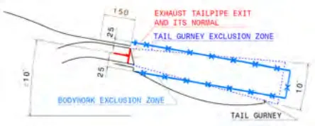</figure>
<figure></figure>
<p>In addition to these regulations and general principles, ACO/FiA reserve the absolute right at any point to accept or not accept geometry with regard to the potential for exhaust flow interaction.</p>
<p>En plus de ces réglementations et principes généraux, l’ACO/FiA se réserve le droit absolu, à tout moment, d&#x27;accepter ou de ne pas</p>
<p><span class="pagemark" id="p207">P.207</span>accepter la géométrie en ce qui concerne le potentiel d&#x27;interaction des flux d&#x27;échappement.</p>
<p>3.6.4 Simulation CFD CFD Simulation</p>
<p>L&#x27;ACO/FiA s&#x27;attendra à ce que la géométrie et les données soient soumises comme requis pour effectuer le processus d&#x27;évaluation CFD obligatoire afin d&#x27;évaluer l&#x27;effet du flux d&#x27;échappement simulé sur les performances aérodynamiques de la voiture dans diverses conditions. Reportez-vous au calendrier d&#x27;homologation pour connaître le calendrier des soumissions. Une fois que la géométrie pour le processus d&#x27;évaluation CFD obligatoire est soumise, la géométrie de l&#x27;échappement et la carrosserie générale environnante ne doivent pas être modifiées sans accord préalable de l&#x27;ACO/FiA.</p>
<p>ACO/FiA will expect geometry and data to be submitted as required to perform the mandatory CFD appraisal process to allow the effect of simulated exhaust flow on the aerodynamic performance of the car to be assessed in various conditions. Refer to homologation schedule for timing of these submissions. Once the geometry for mandatory CFD appraisal process is submitted the exhaust geometry and general surrounding bodywork should not be changed without prior agreement with ACO/FiA.</p>
<p>3.7 Critères aérodynamiques Aerodynamic criteria</p>
<p>3.7.1 Procédure d’homologation Homologation process</p>
<p>Pour être homologuée, une configuration aérodynamique de la voiture doit répondre à des critères aérodynamiques. Ces critères seront contrôlés dans la soufflerie officielle de la FIA/ACO. Une configuration aérodynamique sera soumise à un balayage complet des gardes au sol pour en extraire les caractéristiques aérodynamiques (par ex., la traînée, la force d’appui en fonction des différentes attitudes de la voiture). La procédure d’homologation est décrite dans les annexes au Règlement Technique.</p>
<p>To be homologated, an aerodynamic configuration of the car must fulfil aerodynamic criteria. These criteria will be controlled in the official FIA/ACO wind tunnel.  An aerodynamic configuration will be submitted to a full scan of ride heights to extract the aerodynamic characteristics (e.g. drag, downforce for different car attitudes).  The homologation procedure is described in the Appendixes to the Technical Regulations.</p>
<p>3.7.2 Définition de &quot;Configuration Aérodynamique&quot; Definition of &quot;Aerodynamic configuration&quot;</p>
<p>Une configuration aérodynamique est définie par une combinaison de :  la carrosserie complète  un dispositif aérodynamique ajustable (AAD), par exemple aileron</p>
<p>An Aerodynamic configuration is defined by a combination of:   Complete Bodywork  An Adjustable Aerodynamic Device (AAD), e.g. Front or Rear wing,</p>
<p>avant ou arrière et sa plage de réglage  masquage des freins  et tout autre élément jugé approprié par la FIA/ACO (par exemple,</p>
<p>and its range of setup  Brake blanking  And any further elements deemed appropriated by FIA/ACO (e.g.</p>
<p>les gurneys, les orifices de remplissage, les &quot;dive planes&quot;, les persiennes, etc). Les masquages des freins doivent être homologuées et doivent :  être des plaques de fermeture simples sur les entrées de conduit  être présentées lors des essais en soufflerie  répondre aux critères aérodynamiques requis Les autres types de masquages, y compris toute option de refroidissement de l’unité de puissance, sont interdits.</p>
<p>gurneys, fillers, dive planes, louvers, etc).  Brake blanking must be homologated and must be:  simple closing plates on duct inlets  presented during wind tunnel tests  satisfy the required aerodynamic criteria Other types of blanking including power unit cooling options are forbidden.</p>
<h5 id="3-7-3-Crit-res-Criteria">3.7.3 Critères Criteria</h5>
<p>Les coefficients aérodynamiques doivent répondre aux critères fixés dans les annexes au présent Règlement Technique.</p>
<p>The aerodynamic coefficients must fulfil the criteria set in the Appendixes of these Technical Regulations.</p>
<h5 id="3-8-D-flexion-Deflection-2">3.8 Déflexion Deflection</h5>
<p>3.8.1 Généralités - Déflexion General deflection</p>
<p>La FIA/ACO se réserve le droit d’introduire des tests de charge/déflexion sur toute partie de la carrosserie qui semble être (ou est soupçonnée d’être) mobile lorsque la voiture se déplace. Les concurrents doivent assurer la fourniture des adaptateurs spécifiques selon les instructions de la FIA/ACO. Entre autres critères, la FIA/ACO tiendra compte de la linéarité de la courbe charge/déflexion sur la zone de déformation élastique. Toute non-linéarité doit se trouver uniquement sur la zone de déformation plastique. Comme principe, en tous points, dans toutes directions X/Y/Z, aucune pièce de carrosserie ne doit bouger plus de 5 mm quand chargée (compression/tension) de 100 N. La méthode d’application dépend de la forme particulière de la pièce à tester et la méthode retenue n’introduira pas de contraintes spécifiques dans la pièce (capable d’influencer son comportement). Sous l’application de la charge, les pièces devront toujours respecter le Règlement Technique.</p>
<p>The FIA/ACO reserves the right to introduce load/deflection tests on any part of the bodywork which appears to be (or is suspected of), moving whilst the car is in motion. Competitors must supply the pads and adapters following instructions from FIA/ACO. Among other criteria, the FIA/ACO will consider the linearity of the load/deflection curve over the elastic deformation area. Any non- linearity must be only on the plastic deformation area.  As a principle, at any point, in any direction X/Y/Z, no bodywork part should move more than 5mm when loaded (push/pull) with 100N. The way of application will depend of the particular shape of the part to be tested and the retained mean will not introduce specific stress in the part (capable to directly influence its behaviour).  Under application of the load, the part must still respect the technical regulations.</p>
<p><span class="pagemark" id="p208">P.208</span>Balais, capotes en caoutchouc, joints d’étanchéité en caoutchouc ne seront acceptés que pour empêcher les débris de gomme (de tels éléments devront être présentés pendant le processus d’homologation).</p>
<p>Brushes, rubber boots, rubber sealing will only be accepted to prevent rubber pick-up (such devices should be presented during homologation process).</p>
<p>3.8.2 Parties de la carrosserie avant Front bodywork parts</p>
<p>Aucun point des éléments de carrosserie décrits à l’Article 3.5.4 (splitter avant) ne peut fléchir de plus de 15 mm verticalement quand la combinaison de charges verticales ci-dessous est appliquée : Les charges seront appliquées simultanément et verticalement vers le bas par huit inserts M5 débouchant dans la surface inférieure qui doivent être intégrés dans la pièce. Le principe de base de leur implantation est tel que ces inserts doivent : • Etre positionnés symétriquement par rapport à l’axe longitudinal de la voiture. • Une rangée de quatre parallèles à l’essieu avant situées à 500 mm de l’essieu avant, les deux latérales à 100 mm de la largeur maximale de la voiture (ou la largeur à cette section si le positionnement des inserts n’est physiquement pas possible) et les deux autres de telle sorte que les quatre soient équidistantes ; • Une rangée de quatre parallèles à l’essieu avant situées à 100 mm du bord d’attaque, deux latérales à 100 mm de la largeur maximale de la voiture (ou la largeur à cette section si le positionnement des inserts n’est physiquement pas possible) et les deux autres de telle sorte que les quatre soient équidistantes.  Si les inserts M5 ne peuvent pas être placés dans les positions ci-</p>
<p>No point of bodywork described in Article 3.5.4 (front splitter) must deflect more than 15mm vertically when a combination of the following vertical loads is applied:  The main load will be applied vertically downward by eight M5 inserts structurally integrated in the part and reachable in the bottom surface. As basic requirements, these inserts must:   Be positioned symmetrically regarding the longitudinal vertical plane of the car.  One row of four parallel to the front axle and located at 500 mm from the front axle with the two lateral ones at 100 mm from maximum car width (or width at that section in case the point would be physical not possible) and the two remaining such that all four are equidistant;  One row of four parallel to the front axle and located at 100mm from leading edge with two lateral ones at 100 mm from maximum car width (or width at that section in case the point would be physical not possible) and the two remaining such that all four are equidistant.  If the M5 inserts cannot be located in the positions above due to the</p>
<p>dessus en raison de la construction de la zone frontale inférieure, d’autres positions peuvent être convenues avec la FIA/ACO. La charge sera appliquée de manière égale sur chaque insert jusqu’à un total de 8000 N.</p>
<p>construction of the underside front area, alternative positions may be agreed with the FIA/ACO. The load will be equally applied on each insert up to a total of 8000N.</p>
<p>3.8.3 Protection du moteur Engine cover</p>
<p>La partie la plus en arrière du capot moteur ne doit pas fléchir de plus de 5 mm verticalement quand une charge de 100 N est appliquée. La charge peut être appliquée en tout point situé le long du bord de fuite ou du gurney. Ces charges seront appliquées en utilisant un adaptateur approprié de 15 mm de large qui doit être fourni par le concurrent. Le rapport charge/déflexion doit être constant pour une charge maximum de 200 N et pour une déflexion maximum de 10 mm.</p>
<p>The rearmost part of the engine cover must deflect no more than 5 mm vertically when a load of 100 N is applied. The load may be applied at any point along the trailing edge or the gurney. These loads will be applied using a suitable 15 mm wide adapter which must be supplied by the competitor. The load/deflection ratio must be constant for a maximum load of 200 N and a maximum deflection of 10 mm.</p>
<p>3.8.4 Aileron arrière Rear wing</p>
<p>La partie la plus en arrière de l’aileron arrière (si présent) ne doit pas fléchir de plus de 2.5 mm verticalement quand une charge de 100 N est appliquée. La charge peut être appliquée en tout point situé le long du bord de fuite. Ces charges seront appliquées en utilisant un adaptateur approprié de 15 mm de large qui doit être fourni par le concurrent. Le rapport charge/déflexion doit être constant sur toute la plage de fonctionnement de l’aileron pour une charge maximum de 200 N et pour une déflexion maximum de 5 mm. Montage de l’aileron arrière et des supports verticaux Lorsque les fixations des plaques d’extrémité à la carrosserie sont déconnectées, le(s) support(s) de l’aileron doi(-ven)t être capable(s) de résister à une charge verticale de 10 kN, appliquée uniformément sur la surface de l’aileron arrière.</p>
<p>The rearmost part of the rear wing (if present) must deflect no more than 2.5 mm vertically when a load of 100 N is applied.  The load may be applied at any point along the trailing edge. These loads will be applied using a suitable 15 mm wide adapter which must be supplied by the competitor. The load/deflection ratio must be constant over the entire operating range of the wing and applies for a maximum load of 200 N and a maximum deflection of 5 mm. Mounting of the rear wing and vertical supports With the attachments of the end plates to the bodywork disconnected, the wing support(s) must be able to withstand a vertical load of 10 kN, equally applied on the surface of the rear wing.</p>
<p>3.8.5 Patin avant Front skid block</p>
<p>La partie avant du patin ne peut pas fléchir de plus de 5 mm verticalement quand une charge de 2500 N est appliquée verticalement en tout point de la surface de frottement (cf. Dessin 3C). La charge sera appliquée vers le haut par l’intermédiaire d’un adaptateur cylindrique de 50 mm de diamètre. La partie avant du patin ne peut fléchir de plus de 15 mm verticalement quand une charge entraînant la perte de contact des roues avant avec le sol est appliquée. Des supports ou structures entre la partie avant de la carrosserie matérialisant le plan de référence et la cellule de survie peuvent être présents à la condition qu’ils ne permettent aucune déflexion non</p>
<p>The front part of the skid block must deflect no more than 5mm vertically when a 2500N load is applied vertically at any point of the friction surface (see Drawing 3C). The load will be applied in an upward direction using a 50mm diameter ram.  The front part of the skid block may deflect no more than 15mm vertically when a load able to lift the front wheels from the ground is applied. Stays or structures between the front of the bodywork lying on the reference plane and the survival cell may be present, provided that they do not allow non-linear deflection or speed-dependent</p>
<p><span class="pagemark" id="p209">P.209</span>linéaire ou de déflexion dépendant de la vitesse pendant une partie quelconque de l’essai, relâchement de la charge inclus.</p>
<p>deflection during any part of the test, including the release of the load.</p>
<p>3.8.6 Patin arrière Rear skid block</p>
<p>La partie arrière du patin ne peut pas fléchir de plus de 5 mm verticalement quand une charge de 5000 N est appliquée verticalement en tout point de la surface de frottement (cf. Dessin 3C). La charge sera appliquée vers le haut par l’intermédiaire d’un adaptateur cylindrique de 50 mm de diamètre. Des supports ou structures entre la partie avant de la carrosserie matérialisant le plan de référence et la cellule de survie peuvent être présents à la condition qu’ils ne permettent aucune déflexion non linéaire ou de déflexion dépendant de la vitesse pendant une partie quelconque de l’essai, relâchement de la charge inclus.</p>
<p>The rear part of the skid block must deflect no more than 5mm vertically when a 5000N load is applied vertically at any point of the friction surface (see Drawing 3C). The load will be applied in an upward direction using a 50mm diameter ram.  Stays or structures between the front of the bodywork lying on the reference plane and the survival cell may be present, provided they don’t allow non-linear deflection or speed depend deflection during any part of the test including the release of the load.</p>
<p>3.8.7 Support d’aileron arrière Rear wing support</p>
<p>Avec les dérives latérales et le flap d’aileron arrière connectés (en condition de roulage), aucun point de l’aileron principal ni les supports verticaux ne peuvent fléchir de plus de 15 mm verticalement lorsque les charges verticales combinées suivantes sont appliquées :</p>
<p>With the end plates and the rear flap connected (as in track condition), no point of the mainplane nor vertical support(s) may deflect no more than 15 mm vertically when following combined vertical loads are applied:</p>
<p>- A load of 2400 N applied on the surface of the mainplane. The load will be applied in a downward direction uniformly and simultaneously at a point in x representing from 25 to 75% of the chord length of the main plane through 6 distinct similar pads of 200 mm width, and extending from the leading edge of the wing to its trailing edge or the point of overlay of the flap if existing. Their uppermost surface will be horizontal before application of 400 N load and above the upper point of the flap. - A load of 1000 N pulling downwards on each end plate.</p>
<p>- Une charge de 2400 N appliquée sur la surface du plan principal. La charge sera appliquée vers le bas uniformément et simultanément en un point x représentant de 25 à 75 % de la longueur de corde du plan principal passant par 6 patins similaires distincts, de 200 mm de largeur, et s&#x27;étendant du bord d&#x27;attaque de l&#x27;aile jusqu&#x27;à son bord de fuite ou le point de recouvrement du flap. Leur surface supérieure sera horizontale avant l’application d&#x27;une charge de 400 N et au-dessus du point supérieur du volet. - Une charge de 1000 N tirant vers le bas sur chaque dérive latérale.</p>
<p>3.9 Construction de la carrosserie Bodywork construction</p>
<h5 id="3-9-1-G-n-ralit-s-General">3.9.1 Généralités General</h5>
<p>Afin d’éviter que des débris ne se répandent sur la piste suite à un accident, les revêtements extérieurs de la carrosserie avant à proximité des roues avant doivent être fabriqués essentiellement dans des matériaux choisis dans le but spécifique de réduire les débris. La FIA/ACO doit être assurée que ces pièces sont fabriquées de manière à répondre à l’objectif établi.</p>
<p>In order to avoid the spread of debris on the track following an accident, the outer skins of the front bodywork in the vicinity of the front wheels, must be made predominantly from materials which are included for the specific purpose of containing debris.  The FIA/ACO must be satisfied that all such parts are constructed in order to achieve the stated objective.</p>
<h5 id="3-9-2-Tol-rances-Tolerances">3.9.2 Tolérances Tolerances</h5>
<p>Pour aider à surmonter d’éventuelles difficultés de fabrication, et non pour permettre une conception qui enfreindrait une partie du présent règlement, les tolérances dimensionnelles suivantes sont autorisées sur la carrosserie : une tolérance de +/- 3 mm est permise sur les surfaces se trouvant sur les plans de référence, et une tolérance horizontale de 3 mm est permise au moment de déterminer si une surface est visible, la voiture vue du dessous.</p>
<p>To help overcome any possible manufacturing problems, and not to permit any design which may contravene any part of these regulations, the following dimensional tolerances are permitted on bodywork: a tolerance of +/- 3 mm is permissible across the surfaces lying on the reference planes and a horizontal tolerance of 3mm is permitted when assessing whether a surface is visible from beneath the car.</p>
<p>3.10 Stabilité aérodynamique Aerodynamic stability</p>
<p>Quelle que soit la configuration aérodynamique, la voiture doit répondre à un certain nombre de critères de sécurité pour assurer une stabilité aérodynamique minimale. La conformité à l’Article 2.3 est essentielle car une voiture doit être aérodynamiquement stable à tout moment selon ces critères de sécurité. L’acceptation des critères sera validée par des mesures en soufflerie et/ou des calculs CFD. La procédure complète et les conditions d’acceptation de ces critères sont décrites dans le processus d’homologation aérodynamique qui se trouve dans les annexes au présent règlement.</p>
<p>Regardless of the aerodynamic configuration, the car must fulfill a number of safety criteria to ensure a minimum aerodynamic stability. Compliance with Article 2.3 is understood as a car being aerodynamically stable according to these safety criteria at all times. The criteria acceptance will be validated with Wind Tunnel measurements and/or CFD computations. The complete procedure and acceptance requirements for these criteria are described in the aerodynamic homologation process that can be found in the Appendices to these regulations.</p>
<div class="tablewrap"><table><tr><td>ART. 4</td><td>POIDS</td><td>WEIGHT</td></tr></table></div>
<p><span class="pagemark" id="p210">P.210</span>4.1 Poids minimum Minimum weight</p>
<p>La voiture doit être conçue pour atteindre un poids minimum d’au moins 1030 kg. Le poids de la voiture, sans carburant et sans pilote, ne doit pas être inférieur au poids minimum défini dans le tableau de BoP à tout moment durant la compétition. La vérification du poids des pièces qui auraient pu être remplacées durant l’Epreuve est à la discrétion des commissaires techniques.</p>
<p>The car must be engineered to achieve minimum weight not less than 1030 kg. The weight of the car, without fuel and without driver, must not be less than the minimum weight defined in the BoP at all times during the competition. The checking of the weight of any part that may have been replaced during the Event is at the discretion of the Scrutineers.</p>
<p>4.2 Répartition du poids Weight distribution</p>
<p>La répartition du poids (appliquée sur les roues avant par rapport à la voiture complète) doit être homologuée avec une tolérance de +/- 0,5 %. Pour ce contrôle, la voiture doit être complète sans carburant et sans pilote. Lorsqu&#x27;elle est vérifiée pendant la compétition, la répartition du poids mesurée doit être conforme à la valeur homologuée dans la tolérance spécifiée (poids des lests BoP inclus).</p>
<p>The weight distribution (applied on the front wheels versus the complete car) must be homologated with a tolerance of +/-0.5%. For this check, the car must be complete without fuel and without driver. When checked during the competition, the measured weight distribution must comply with the homologated value within the specified tolerance (including any BoP ballast).</p>
<h5 id="4-3-Lest-Ballast-2">4.3 Lest Ballast</h5>
<p>Du lest peut être utilisé, à condition d’être fixé de telle manière que des outils soient nécessaires pour le retirer et toutes les fixations sont capables de résister à une décélération minimale de 25 g dans n&#x27;importe quelle direction. La manière dont le lest autorisé est installé dans la voiture est soumise à l&#x27;évaluation des Délégués Techniques FIA/ACO et il doit être possible de le plomber si les commissaires techniques de la FIA/ACO le jugent nécessaire. Si du lest est nécessaire pour atteindre le poids minimum de 1030 kg, les positions et les valeurs doivent être déclarées dans le document d&#x27;homologation. Tout lest mobile est interdit. Les voitures doivent être conçues de manière à pouvoir accueillir un lest BoP maximum de +70 kg (au-dessus du poids minimum de la voiture). Tout lest positionné dans le périmètre des composants du crash test doit être présenté pendant les crash tests. Aucun lest n’est autorisé dans la projection verticale des structures d’absorption des chocs avant et arrière. Toutes les positions des lests BoP doivent être placées entre les essieux des roues avant et arrière et déclarées dans la fiche d’homologation.</p>
<p>Ballast may be used provided it is secured in such a way that tools are required for its removal and all fittings are able to withstand a minimum of 25g deceleration in any direction. The way the ballast permitted is fitted in the car is subject to FIA/ACO Technical Delegates assessmentand it must be possible to fix seals if deemed necessary by the FIA/ACO technical delegates. If ballast is needed to achieve the minimum weight of 1030 kg, the positions and values must be declared in the homologation document. Movable ballast is forbidden. Cars must be engineered in order to be able to accept a maximum of +70 kg of BoP ballast (above the minimum car weight). All ballast positioned within the perimeter of the crash test components must be present during the crash tests. No ballast is allowed in the vertical projection of the front and rear impact absorbing structures. All BoP ballast positions must be fitted between the front and rear wheel axles and declared in the homologation document</p>
<h5 id="4-4-Liquides-Liquids-2">4.4 Liquides Liquids</h5>
<p>Le poids peut être contrôlé à n’importe quel moment de la compétition avec la quantité de liquides restant dans les réservoirs, mais à la fin des essais ou de la course la voiture sera pesée réservoir(s) de carburant vidangé(s).</p>
<p>The weight may be checked at any time during the competition with the quantity of liquids remaining in the tanks, but at the end of the practice sessions or the race the car will have all fuel drained before being weighed.</p>
<p>4.5 Caméras des concurrents Competitors’ cameras</p>
<p>Pour pouvoir utiliser une caméra « concurrent », il est obligatoire que celle-ci fasse partie de l’homologation de la voiture.</p>
<p>To be able to use a “competitor’s” camera, it is mandatory that this camera is included in the homologation of the car.</p>
<div class="tablewrap"><table><tr><td>ART. 5</td><td>UNITE DE PUISSANCE</td><td>POWER UNIT</td></tr></table></div>
<h5 id="5-1-G-n-ralit-s-General-2">5.1 Généralités General</h5>
<h5 id="5-1-1-D-finition-Definition">5.1.1 Définition Definition</h5>
<p>Sauf autorisation expresse concernant une application spécifique, l’utilisation de tout dispositif, autre que le moteur décrit à l’Article 5.2 relié à la transmission arrière, et un système ERS optionnel, lequel deviendra obligatoire pour tout véhicule nouvellement homologué à partir de 2026, tel que décrit à l’Article 5.3 n’est pas autorisée pour propulser la voiture. Les limites concernant les flux d’énergie, la puissance et le niveau de charge de l’ES sont définies dans le diagramme du flux d’énergie figurant à l’Annexe 4 au présent règlement. Lorsque la voiture est sur la piste, un tour sera mesuré lors de chaque franchissement successif de la boucle de chronométrage de la ligne d’arrivée. Toutefois, lors de l’entrée aux stands, le tour prendra fin à</p>
<p>Unless explicitly permitted for a specific application, the use of any device, other than the engine described in Article 5.2 connected to the rear drivetrain, and an optional ERS system, which shall become mandatory for any newly homologated vehicle from 2026 onwards as described in Article 5.3 to propel the car, is not permitted. Energy flows, power and ES state of charge limits are defined in the energy flow diagram shown in Appendix 4 of these regulations.  When the car is on the track a lap will be measured on each successive crossing of the finish line timing loop, however, when entering the pits the lap will end at the pit entry timing loop and next lap will start at the pit exit timing loop.</p>
<p><span class="pagemark" id="p211">P.211</span>la boucle de chronométrage d’entrée aux stands et le tour suivant commencera à la boucle de chronométrage de sortie des stands. Les mesures électriques DC seront utilisées pour vérifier que les exigences en termes d’énergie et de puissance sont respectées. Les noms des pièces correspondent à ceux d’un moteur à pistons alternatifs. L’équivalence pour les autres moteurs se trouve dans les annexes au présent règlement.</p>
<p>Electrical DC measurements must be used to verify that the energy and power requirements are being respected. Parts are named based on an engine with reciprocating pistons. The equivalence for other engines can be found in the Appendixes to these regulations.</p>
<p>5.1.2 Performance du groupe motopropulseur Powertrain Performance</p>
<p>La performance du groupe motopropulseur doit être déclarée et homologuée selon la procédure détaillée à l’Article 19 du présent règlement. La performance du groupe motopropulseur ne doit à aucun moment dépasser la courbe de puissance décrite à l’Annexe 4b (sous réserve d’un ajustement de la BoP). La performance de la transmission arrière ne doit à aucun moment dépasser la plus faible des deux valeurs suivantes :  la courbe de puissance décrite à l’Annexe 4b (sujette à BoP) plus</p>
<p>The Powertrain performance must be declared and homologated according to the procedure detailed in Article 19 of these regulations. The Powertrain performance must not exceed, at any time, the power curve described in Appendix 4b (subject to BoP adjustment).  The rear power train performance must not exceed, at any time, whichever is lower of:  the power curve described in Appendix 4b (subject to BoP) plus</p>
<p>3 %. Les détails relatifs à la gestion des performances du groupe motopropulseur se trouvent dans les annexes au présent règlement.</p>
<p>3%. Details of the management of the Powertrain Performance can be found in the Appendixes to these regulations.</p>
<h5 id="5-2-Moteur-Engine-2">5.2 Moteur Engine</h5>
<p>Le moteur doit être homologué selon la procédure détaillée à l’Article 19 du présent règlement.</p>
<p>The engine must be homologated according to the procedure detailed in Article 19 of these regulations.</p>
<p>5.2.1 Origine du moteur Origin of the engine</p>
<p>Le moteur doit être : The engine must be:</p>
<div class="tablewrap"><table><tr><td> soit sur mesure,
 soit basé sur un &quot;moteur de la
marque&quot;.</td><td> soit basé sur le moteur
d’origine,
 soit basé sur un moteur de
production de série installé
dans un modèle de voiture du
même groupe produit en
quantité supérieure à
300 unités par an.</td><td> either a bespoke engine,
 or based on an “engine of the
make”</td><td> either based on the original
engine,
 or based on a series production
engine mounted in a model of
car of the same group
produced in a quantity of more
than 300 units per year.</td></tr></table></div>
<p>5.2.2 Spécifications du moteur Engine specifications</p>
<p>La conception du moteur est libre, sous réserve des restrictions suivantes :  seuls les moteurs à essence 4 temps sont autorisés.  à l’exception des fuites accidentelles provenant de joints (soit à</p>
<p>Engine design is free except for the following restrictions:   Only Petrol 4 stroke engines are permitted.  With the exception of incidental leakage through joints (either into</p>
<p>l’intérieur soit à l’extérieur du système), seul l’air passant par l’entrée du moteur doit pénétrer dans les chambres de combustion.</p>
<p>or out of the system) all and only the air entering the engine inlet must enter the combustion chambers.</p>
<p>5.2.2.1 Moteur sur mesure Bespoke engine</p>
<div class="tablewrap"><table><tr><td> Les dispositifs à géométrie
variable (y compris les turbines
à tuyère) ne sont pas autorisés,
sauf pour les moteurs rotatifs.
 Les moteurs doivent avoir deux
soupapes d’admission et deux
soupapes d’échappement par
cylindre.
- Seuls les clapets alternatifs
avec déplacement axial sont
autorisés.
- L’interface liant la partie
mobile de la soupape à la
partie fixe du moteur doit
être circulaire.
- Les systèmes
d’actionnement de
soupapes
électromagnétiques et
hydrauliques sont interdits.</td><td></td><td> Variable geometry devices
(including nozzle turbines) are
not allowed except for rotary
engines.
 Engine must not have more
than two inlet and two exhaust
valves per cylinder.
- Only reciprocating poppet
valves with axial
displacement are permitted.
- The sealing interface
between the moving valve
component and the
stationary engine
component must be circular.
- Electromagnetic and
hydraulic valve actuation
systems are forbidden.</td><td></td></tr></table></div>
<p><span class="pagemark" id="p212">P.212</span>5.2.2.2 Moteur de la marque Engine of the make</p>
<div class="tablewrap"><table><tr><td>Le moteur de la marque est un
moteur de série qui remplit les
conditions suivantes :
 Au moins 25 moteurs
identiques à ceux prévus pour
les voitures de production de
série homologuées pour la
route et équipées de ce
moteur doivent avoir été
produits.
 Au moins 25 voitures de
production de série identiques,
homologuées pour la route et
équipées de ce moteur, sont
produites avant la fin de
l’année de la première saison
durant laquelle ce moteur est
utilisé en compétition.
 Au moins 100 voitures de
production de série identiques,
homologuées pour la route et
équipées de ce moteur, sont
produites avant la fin de
l’année de la deuxième saison
durant laquelle ce moteur est
utilisé en compétition.
 Le moteur de série est
homologué par la FIA/ACO.
 Un moteur complet est déposé
auprès de la FIA/ACO.</td><td></td><td>The engine of the make is a series
engine that meets the following
conditions:
 At least 25 identical engines
identical to the ones destined
for a series production car
homologated for road use
equipped with this engine
must have been produced.
 At least 25 identical series
production cars homologated
for road use equipped with this
engine are produced by the
end of the year of the first
season this engine is
competing in.
 At least 100 identical series
production cars homologated
for road use equipped with this
engine are produced by the
end of the year of the second
season this engine is
competing in.
 The series engine is
homologated with FIA/ACO.
 One complete engine is
deposited with the FIA/ACO.</td><td></td></tr></table></div>
<p>5.2.2.3 Moteur d’origine et moteur de production de série Original engine and series production engine</p>
<div class="tablewrap"><table><tr><td></td><td> Les dispositifs à géométrie
variable sont autorisés à
condition que le système reste
tel qu’homologué pour le
moteur d’origine.</td><td></td><td> Variable geometry devices are
allowed provided that the
system remains exactly as
homologated for the original
engine.</td></tr></table></div>
<p>5.2.3 Modifications de moteur autorisées sur un moteur d’origine de base, un moteur de la marque ou un moteur de série.  Les modifications sont libres sous réserve des exceptions suivantes et de l’approbation de la FIA/ACO :</p>
<p>Engine modifications allowed to a base original engine, engine of the make or series production engine  The modifications are free with the following exceptions and subject to FIA/ACO approval:</p>
<p>5.2.3.1 Bloc moteur Engine block</p>
<p>Le moulage du bloc-cylindres doit provenir du moteur de base. Le bloc-cylindres peut être modifié :  Par usinage :</p>
<p>The cylinder block casting must come from the base engine. The cylinder block may be modified:  By machining:</p>
<p>- pour la modification de l’alésage ou pour le chemisage si le bloc</p>
<p>- for the modification of the bore or for sleeving if the original</p>
<p>d’origine n’est pas équipé de chemises. - en dessous du plan horizontal passant par l’axe des attaches du</p>
<p>block is not fitted with sleeves. - below the horizontal plane passing through the centreline of the</p>
<p>vilebrequin, pour le montage du carter sec. - le plan du joint de culasse, à condition que la hauteur du pont</p>
<p>crankshaft bearings, for the mounting of the dry sump. - the cylinder head gasket plane providing that the deck height</p>
<p>(distance entre le plan de la culasse et l’axe du vilebrequin) reste à moins de 1 mm de la dimension d’origine du moteur. - aux seules fins de renforcement et de fiabilité, la pièce brute</p>
<p>(distance between cylinder head plane and crankshaft centreline) stays within 1 mm of the original engine dimension. - for the sole purposes of reinforcement and reliability, the raw</p>
<p>peut être usinée différemment pour augmenter les sections transversales ou laisser plus de matière dans des zones spécifiques, à condition que la pièce d’origine reste identifiable.  Par ajout de matériau :</p>
<p>casting may be machined differently to increase cross sections or leave more material in specific areas, provided that the original part remains identifiable.  By addition of material:</p>
<p>- ajout de materiau pour le renforcement local et/ou structurel</p>
<p>- addition of material for local and/or structural reinforcement</p>
<p>peut être réalisé au moyen de pièces soudées ou collées. Les renforcements ne peuvent pas être effectués sur une zone de la pièce où la matériau a été retirée de la pièce d’origine du moteur sur une couche de plus de 1 mm d’épaisseur. - les trous de lubrification et des injecteurs de lubrification</p>
<p>may be done by weld or glued patches. Reinforcements cannot be done on an area of the part where material has been removed from the original engine part by more than a 1 mm thick layer. - lubrication holes, lubrication injector holes may be modified or</p>
<p>peuvent être modifiés ou fermés.</p>
<p>closed.</p>
<h5 id="5-2-3-2-Vilebrequin-Crankshaft"><span class="pagemark" id="p213">P.213</span>5.2.3.2 Vilebrequin Crankshaft</h5>
<p>Peut être modifié. Conception libre. Son poids ne doit pas être inférieur de plus de 10 % à celui des renforcements et de la fiabilité. L’ordre d’allumage est libre.</p>
<p>May be changed. Free design. Its weight must not be more than 10% lower than the original. The firing order is free.</p>
<h5 id="5-2-3-3-Culasse-Cylinder-Head">5.2.3.3 Culasse Cylinder Head</h5>
<p>Les carters de culasse doivent provenir du moteur d’origine.  Les angles des soupapes, le nombre et l’emplacement des arbres à cames doivent rester d’origine, car ils sont montés sur le moteur d’origine. Les culasses peuvent être modifiées :  Par usinage :</p>
<p>The cylinder head castings must come from the original engine.  Valve angles, number and location of camshafts must remain original, as they are fitted on the original engine.  The cylinder heads may be modified:  By machining:</p>
<p>- à condition que la pièce d’origine reste identifiable.  Par ajout de matériau :</p>
<p>- provided that the original part remains identifiable.  By addition of material:</p>
<p>- ajout de matériau pour le renforcement local et/ou structurel</p>
<p>- addition of material for local reinforcement can be done may be</p>
<p>peut être réalisé au moyen de pièces soudées ou collées.  Les renforcements ne peuvent pas être effectués sur une zone</p>
<p>done by weld or glued patches.  Reinforcement cannot be done on an area of the part where</p>
<p>de la pièce où la matériau a été retirée de la pièce d’origine du moteur sur une couche de plus de 1 mm d’épaisseur. -  des inserts peuvent être ajoutés dans les ports d’admission. -  les guides de poussoirs de soupape peuvent être équipés de</p>
<p>material has been removed from the original engine part by more than a 1 mm thick layer. - inserts may be added in the intake ports. - valve tappet guides may be fitted with sleeves if not originally.  - lubrication holes, lubrication injector holes may be modified or</p>
<p>chemises s’ils ne sont pas d’origine. -  les trous de lubrification et des injecteurs de lubrification</p>
<p>peuvent être modifiés ou fermés. -  l’utilisation d’hélicoïdes est autorisée.</p>
<p>closed. - the use of helicoils is permitted.</p>
<h5 id="5-3-ERS-ERS-2">5.3 ERS ERS</h5>
<p>Tout ERS est facultatif mais il devient obligatoire pour tout véhicule nouvellement homologué à partir de 2026. S’il est installé, la solution de navigation électronique telle que définie dans la colonne concernée du tableau de l’Annexe 2 au présent règlement doit être conforme aux dispositions ci-dessous. L’ERS doit être homologué conformément à la procédure détaillée à l’Article 19 au présent règlement.</p>
<p>An ERS is optional but shall become mandatory for all newly homologated vehicles from 2026 onwards. If fitted, the ERS as defined in the relevant column of the ERS table of Appendix 2 of these regulations must comply with the provisions below. The ERS must be homologated according to the procedure detailed in Article 19 of these regulations.</p>
<p>5.3.1 Origine de l’ERS Origin of the ERS</p>
<p>L’ERS doit : The ERS must:</p>
<div class="tablewrap"><table><tr><td> soit utiliser un MGU-K avant
sur mesure,
 soit utiliser un MGU-K avant de
la marque.</td><td> soit utiliser un MGU-K avant
sur mesure,
 soit avoir la même architecture
que la voiture d’origine, et
utiliser :
- soit un MGU-K sur mesure,
- soit le MGU-K d’origine.</td><td> either use a bespoke front
MGU-K;
 or use a front MGU-K of the
make;</td><td> either use a bespoke front
MGU-K;
 or have the same architecture
as the original car, and:
- either use a bespoke MGU-K;
- or use the original MGU-K.</td></tr></table></div>
<p>5.3.2 Spécifications de l’ERS ERS specification</p>
<p>La puissance électrique DC du MGU-K ne doit pas dépasser 200 kW. A l’exception de la voie des stands et après le drapeau à damier, le MGU-K ne peut appliquer un couple positif qu’aux roues avant : - aux vitesses définies dans la BOP - si la vitesse de la voiture est inférieure à 120 km/h et ce, jusqu’à</p>
<p>The electrical DC power of the MGU-K must not exceed 200 kW. With the exception of the pit-lane and after the chequered flag, the MGU-K can only apply positive torque to the front wheels: - at speeds defined in the BOP - if the speed of the car is below 120 kph and stays below 120 kph</p>
<p>ce que la voiture arrive aux stands. - pendant les tours de mise en grille, les tours de formation, les</p>
<p>until the car comes to the pits. - under laps to grid, formation laps, Safety Car (SC), Virtual Safety Car (VSC) and Full Course Yellow (FCY) laps with a maximum electrical DC power of 20 kW. The speed will be measured by taking the maximum of the 2 front wheel speeds from the FIA/ACO compulsory sensor (Art. 8.4). The fitting of wet tyres must be declared through the compulsory telemetry system described in Article 8.6.</p>
<p>tours sous régime de Safety Car (SC), Virtual Safety Car (VSC) et les tours sous régime de Full Course Yellow (FCY), avec une puissance électrique DC maximale de 20 kW. La vitesse sera mesurée en prenant le maximum des 2 vitesses de la roue avant à partir du capteur obligatoire de la FIA/ACO (Art. 8.4). Le montage de pneus pour temps humide doit être déclaré via le système de télémétrie obligatoire visé à l’Article 8.6.</p>
<p>5.3.2.1 MGU-K sur mesure Bespoke MGU-K</p>
<p>Libre sous réserve des exceptions suivantes et de l’approbation de la FIA/ACO :  doit être un système avec un MGU-K simple.</p>
<p>Free with the following exceptions and subject to FIA/ACO approval:   Must be a system with a single MGU-K.  The rotational speed of the MGU-K must not exceed 25,000 rpm.</p>
<p><span class="pagemark" id="p214">P.214</span> la vitesse de rotation du MGU-K ne doit pas dépasser 25 000</p>
<p> The laminate thickness of the MGU-K must not be less than</p>
<p>tr/min.  l’épaisseur du stratifié du MGU-K ne doit pas être inférieure à</p>
<h5 id="0-1-mm">0.1 mm.</h5>
<p>0,1 mm.</p>
<p>5.3.2.2 MGU-K simple Single MGU-K</p>
<p>En complément des limitations imposées à chaque origine d’ERS, les restrictions suivantes s’appliquent :  le MGU-K doit uniquement et en permanence être mécaniquement relié à un différentiel mécanique lié aux roues avant de la voiture. A l’avant, cette liaison mécanique doit avoir un rapport de vitesse fixe par rapport aux roues avant.  le différentiel mécanique avant doit avoir une rampe unique et</p>
<p>In addition to the limitations imposed to each origin of ERS, the following restrictions apply:  the MGU-K must be solely and permanently mechanically linked to a mechanical differential linked to the front wheels of the car. At the front, this mechanical link must be of fixed speed ratio to the front wheels.  the front mechanical differential must have a unique and</p>
<p>homologuée.</p>
<p>homologated ramp.</p>
<p>5.3.2.3 MGU-K de la marque MGU-K of the make</p>
<p>L’ERS de la marque est un MGU-K de production de série qui remplit les conditions suivantes :  Au moins 25 MGU-K identiques à ceux destinés à la voiture de</p>
<p>The ERS of the make is a series production MGU-K that meets the following conditions:  At least 25 identical MGU-K identical to the ones destined for the</p>
<p>production de série homologuée pour la route équipée de cet MGU-K doivent avoir été produits ;  Au moins 25 voitures de production de série identiques</p>
<p>series production car homologated for road use equipped with this MGU-K must have been produced;  At least 25 identical series production cars homologated for road</p>
<p>homologuées pour la route et équipées de ce même MGU-K sont produites avant la fin de l’année de la première saison durant laquelle le moteur est utilisé en compétition.  Au moins 100 voitures de production de série identiques</p>
<p>use equipped with this exact same MGU-K are produced by the end of the year of the first season this engine is competing in.   At least 100 identical series production cars homologated for road</p>
<p>homologuées pour la route et équipées de ce même MGU-K sont produites avant la fin de l’année de la deuxième saison durant laquelle ce même MGU-K est utilisé en compétition.  Le MGU-K de la marque est homologué par la FIA/ACO.  Un MGU-K complet est déposé auprès de la FIA/ACO.  La vitesse de rotation du MGU-K de la marque est libre.  L’épaisseur du stratifié du MGU-K de la marque est libre.  Le MGU-K de la marque n’est pas soumis à l’Article 5.14.</p>
<p>use equipped with this exact same MGU-K are produced by the end of the year of the second season this exact same MGU-K is competing in.  The MGU-K of the make is homologated with FIA/ACO.  One complete MGU-K is deposited with the FIA/ACO.  The rotational speed of the MGU-K of the make is free.  The laminate thickness of the MGU-K of the make is free.  The MGU-K of the make is not subject to Article 5.14.</p>
<p>5.3.2.4 MGU-K d’origine et MGU-K de la marque avec MGU-K double: En plus des exigences de l’Article 5.3.2.3 applicables au MGU-K de la marque, les restrictions suivantes s’appliquent :  Le contrôle du couple doit assurer une équité totale avec un MGU-</p>
<p>Original MGU-K and MGU-K of the make with twin MGU-K: In addition to the requirements of Article 5.3.2.3 for the MGU-K of the make, the following restrictions apply:  The torque control must ensure a total equity with a single MGU-</p>
<p>K simple uniquement et en permanence relié mécaniquement à un différentiel mécanique lié aux roues avant (arrière) de la voiture, cette liaison mécanique doit avoir un rapport de vitesse fixe aux roues avant (arrière).  Le couple doit être appliqué de manière à simuler un différentiel</p>
<p>K solely and permanently mechanically linked to a mechanical differential linked to the front (rear) wheels of the car, this mechanical link must be of fixed speed ratio to the front (rear) wheels.  Torque must be applied in such a way as to simulate a mechanical</p>
<p>mécanique (visqueux) de caractéristique fixe. En outre, il ne doit pas fournir plus de couple à la roue tournant le plus vite qu’à la roue tournant le plus lentement, sauf en cas d’arrêt du moteur (tout arrêt doit se verrouiller jusqu’à ce que la voiture s’arrête).  Les MGU-K sur roues ne sont pas autorisés.</p>
<p>(viscous) differential of fixed characteristic. Additionally, it must not supply more torque to the faster rotating wheel than the slower rotating wheel except in the case of motor shutdown (any shutdown must latch until the car comes to a halt).  In-wheel MGU-K are not allowed</p>
<p>5.3.3 Modifications autorisées sur le MGU-K d’origine ou de la marque Modifications allowed to the original MGU-K or MGU-K of the make</p>
<p>Aucune modification n’est autorisée. No modifications are allowed.</p>
<p>5.4 Poids et centre de gravité Weight and centre of gravity</p>
<p>5.4.1 Le poids du moteur doit être au minimum de 165 kg. The weight of the engine must be a minimum of 165 kg.</p>
<p>5.4.2 Le centre de gravité du moteur ne peut se trouver à moins de 220 mm au-dessus du plan de référence. The centre of gravity of the engine may not lie less than 220 mm above the reference plane.</p>
<p>5.4.3 Pour être en conformité avec les Articles 5.4.1 à 5.4.2, le périmètre sera défini conformément au tableau figurant à l’Annexe 2 au présent règlement.</p>
<p>When establishing conformity with Articles 5.4.1 to 5.4.2 the perimeter will be defined in accordance with the table shown in Appendix 2 of these regulations.</p>
<p>5.5 Demande de couple de l’unité de puissance Power unit torque demand</p>
<p>5.5.1 Le seul moyen par lequel un couple positif peut être demandé au groupe motopropulseur avant et/ou arrière est une pédale unique (accélérateur) montée à l’intérieur de la cellule de survie et uniquement actionnée par le pilote. On entend par couple positif la somme des deux capteurs de couple homologués par essieu, sur une moyenne de 0,2 s.</p>
<p>The only means by which positive torque to front and/or rear power train may be requested is a single foot (accelerator) pedal mounted inside the survival cell and only actuated by the driver.  Positive torque is understood to be when the sum of both homologated torque sensors per axle is positive on a 0.2s average.</p>
<p><span class="pagemark" id="p215">P.215</span>5.5.2 Les conceptions qui permettent au pilote d’identifier des points spécifiques le long de la course de la pédale d’accélérateur ou qui l’aident à maintenir une position ne sont pas autorisées.</p>
<p>Designs which allow specific points along the accelerator pedal travel range to be identified by the driver or assist him to hold a position are not permitted.</p>
<p>5.5.3 Dans le cas d’un ERS avec un MGU-K par roue avant, la fonction de transfert de couple latéral doit être unique et homologuée avec l’ERS.</p>
<p>In the case of an an ERS with one MGU-K per front wheel, the side to side torque transfer function must be unique and homologated with the ERS.</p>
<p>5.5.4 Pour des raisons de sécurité, lorsque le moteur à combustion interne n’est pas en marche et que la voiture est posée sur ses roues, à l’arrêt et prête à bouger (y compris, mais sans s’y limiter : l’ERS actif ou le démarreur relié aux roues arrière par la boîte de vitesses), deux actions simultanées (dont une action manuelle) sont requises du pilote pour demander un couple positif. Les stratégies de contrôle automatisées sont interdites, y compris, mais sans s’y limiter, les stratégies de contrôle liées au démarrage impliquant le couplage de carburant, les crics pneumatiques et/ou d’autres capteurs.</p>
<p>For safety reasons, whenever the ICE is not running, and the car is resting on its wheels, is stopped and in ready to move condition (including, but not limited to: ERS active or starter connected to rear wheels via gearbox), two simultaneous actions (one of them being hand-operated) are required from the driver to demand positive torque. Automated control strategies are prohibited, including but not limited to launch-related control strategies involving the fuel coupling, air jack, and/or other sensors.</p>
<p>5.6 Commande de l’unité de puissance Power unit control</p>
<p>5.6.1 Des capteurs homologués qui mesurent le couple fourni à chaque arbre de transmission (Liste Technique n°89) doivent être installés. Ces signaux doivent être fournis à l’enregistreur de données de la FIA/ACO. Les informations d’installation se trouvent dans les annexes au présent règlement. Tout dispositif, système ou procédure ayant pour objet et/ou pour effet de décélérer les mesures prises ou les signaux émis par ces capteurs est interdit.</p>
<p>Homologated sensors must be fitted which measure the torque supplied to each driveshaft (Technical List n°89). These signals must be provided to the FIA/ACO datalogger. Installation details can be found in the appendixes to these regulations. Any device, system or procedure the purpose and/or effect of which is to decieve the measures taken or signals sent by these sensors is prohibited.</p>
<p>5.6.2 Les capteurs de pression dans les cylindres sont interdits. In-cylinder pressure sensors are forbidden.</p>
<p>5.7 Systèmes de carburant Engine fuel systems</p>
<p>5.7.1 Sur un moteur rotatif, les injecteurs de carburant ne sont pas autorisés en aval des soupapes d’échappement ou de l’entrée de la lumière d’échappement.</p>
<p>No fuel injectors are permitted downstream of the exhaust valves or of the exhaust port inlet on a rotary engine.</p>
<p>5.7.2 Un &quot;débitmètre de carburant&quot; homologué (Liste Technique n°45) doit être intégré au système de carburant conformément à l’Article 6.6. La communication avec le débitmètre de carburant doit suivre le protocole CAN. Les informations relatives au débitmètre de carburant doivent être envoyées directement à l’enregistreur de données de la FIA/ACO sans passer par l’unité électronique du concurrent.</p>
<p>A homologated &quot;Fuel Flow Meter&quot; (Technical List n°45) must be integrated into the fuel system according to Article 6.6.  Communication with fuel flow meter must be done by CAN protocol.  Fuel flow meter information is to be sent directly to the FIA/ACO data logger without going through the competitor electronic unit.</p>
<p>5.7.3 Tout le carburant délivré à l’unité de puissance doit passer par ces débitmètres homologués, et être délivré aux chambres de combustion par les injecteurs de carburant décrits à l’Article 5.7.1.</p>
<p>All fuel delivered to the engine must pass through this homologated meter, and must all be delivered to the combustion chambers by the fuel injectors mentioned in Article 5.7.1.</p>
<p>5.7.4 Les capteurs homologués qui mesurent directement la pression et la température du carburant fourni aux injecteurs de carburant devront également être installés, ces signaux doivent être fournis à l’enregistreur de données de la FIA/ACO.</p>
<p>Homologated sensors which directly measure the pressure and temperature of the fuel supplied to the fuel injectors must also be fitted, these signals must be supplied to the FIA/ACO data logger.</p>
<p>5.7.5 Tout dispositif, système ou procédure dont le but et/ou l’effet est d’accroître le débit ou de stocker et recycler le carburant après le point de mesure est interdit.</p>
<p>Any device, system or procedure the purpose and/or effect of which is to increase the flow rate or to store and recycle fuel after the measurement point is prohibited.</p>
<p>5.8 Systèmes d’allumage Ignition systems</p>
<p>5.8.1 A l’exception des moteurs rotatifs, l’allumage n’est autorisé qu’avec une seule bobine d’allumage et une seule bougie d’allumage par cylindre. Cinq allumages par cylindre par cycle moteur sont autorisés au maximum. L’utilisation du plasma, du laser ou d’autres techniques d’allumage haute fréquence est interdite.</p>
<p>With the exception of rotary engines, the ignition is only permitted by means of a single ignition coil and single spark plug per cylinder. No more than five sparks per cylinder per engine cycle are permitted.  The use of plasma, laser or other high frequency ignition techniques is forbidden.</p>
<p>5.8.2 Seules les bougies d’allumage conventionnelles qui fonctionnent par décharge électrique haute tension entre deux points éloignés sont autorisées. Les bougies d’allumage ne sont pas soumises aux restrictions relatives aux matériaux énoncées aux Articles 5.12 et 5.13.</p>
<p>Only conventional spark plugs that function by high tension electrical discharge across an exposed gap are permitted.  Spark plugs are not subject to the materials restrictions described in Articles 5.12 and 5.13.</p>
<p>5.9 Auxiliaires moteur Engine ancillaries</p>
<p>5.9.1 Les moteurs auxiliaires peuvent être entraînés mécaniquement ou électriquement.</p>
<p>Engine ancillaries can be mechanically or electrically driven.</p>
<p><span class="pagemark" id="p216">P.216</span>Tout auxiliaire électrique ne peut être relié mécaniquement à une transmission, y compris l’unité de puissance, à l’exception de l’alternateur et du démarreur.</p>
<p>Any electrically driven ancillary cannot be linked mechanically to any drivetrain, including the power unit with the sole exceptions being the alternator and the starter motor.</p>
<p>5.9.2 L’alternateur ne peut pas transmettre de couple aux transmissions. L’alternateur ne peut pas être directement connecté au circuit électrique et ne peut pas charger l’ES. Seule la batterie auxiliaire le peut.</p>
<p>The alternator cannot transmit torque to the drivetrains. The alternator cannot be directly connected to the power circuit and cannot charge the ES, only the auxiliary battery.</p>
<p>5.9.3 Le démarreur ne peut pas transmettre de couple aux arbres de transmission lorsque la voiture est en mouvement, à l’exception des voitures sans ERS :  dans la voie des stands pour demarrer après un arrêt aux stands  pour assurer la fonction inverse, conformément à l’Article 9.7.</p>
<p>The starter motor cannot transmit torque to the driveshafts while the car is in motion, except for cars without an ERS:   in the pitlane to pull off from a pit stop  to ensure the reverse function as required by article 9.7.</p>
<p>5.9.4 Le turbocompresseur ne peut pas être relié mécaniquement à la transmission.</p>
<p>The turbocharger cannot be mechanically linked to the drivetrain.</p>
<p>5.10 Entrée du moteur Engine Inlet</p>
<p>5.10.1 L’ajout de toute substance autre que le carburant, tel que décrit à l’Article 5.7.3, dans l’air destiné à la combustion est interdit. Le raccordement entre le collecteur d’admission et le collecteur d’échappement n’est pas autorisé.</p>
<p>The addition of any substance other than fuel, as described in Article 5.7.3, into the air destined for combustion is forbidden. The connection between the intake and the exhaust manifold is not allowed.</p>
<p>5.11 Matériaux et construction – Définitions Materials and Construction – Definitions</p>
<p>5.11.1 Un matériau métallique se définit comme un matériau composé d’éléments métalliques, qu’il s’agisse d’un métal pur, d’un alliage de plusieurs métaux ou d’un matériau inter-métallique. Dans le cas d’un composite, un matériau est dit métallique lorsque la matrice ou le renforcement, quelle que soit la proportion de phase, est constitué(e) d’éléments métalliques.</p>
<p>A metallic material will be defined as a material that is made‐up of metallic elements, whether that material is a pure metal, alloy of several metals or an inter‐metallic. In the case of a composite, this is designated a metallic material when the matrix or reinforcement, whatever phase proportion, is composed of metallic elements.</p>
<p>5.11.2 Les éléments métalliques sont les éléments désignés en bleu dans le tableau périodique ci-après.</p>
<p>Metallic elements are those designated by the periodic table, shaded blue below:</p>
<figure></figure>
<p>5.11.3 Les matériaux non-métalliques sont constitués de composés purs et impurs tels que les oxydes, les nitrides, les silicides, etc. et de matériaux avec des matrices organiques tels que les composites renforcés au Kevlar ou au carbone.</p>
<p>Non‐metallic materials will include pure and impure compounds such as oxides, nitrides, silicides etc, and material with organic matrices such as carbon and Kevlar reinforced composites.</p>
<p><span class="pagemark" id="p217">P.217</span>5.11.4 Alliage à base de X (par ex. alliage à base de Ni) – X doit être l’élément le plus abondant de l’alliage sur une base %w/w. Le pourcentage en masse minimal de l’élément X doit toujours être supérieur au pourcentage maximal de chacun des autres éléments présents dans l’alliage.</p>
<p>X Based Alloy (e.g. Ni based alloy) – X must be the most abundant element in the alloy on a %w/w basis. The minimum possible weight percent of the element X must always be greater than the maximum possible of each of the other individual elements present in the alloy.</p>
<p>5.11.5 Alliage à base de X-Y (par ex. alliage à base de Al-Cu) – X doit être l’élément le plus abondant comme à l’Article 5.15.1 ci-dessus. Par ailleurs, l’élément Y doit être le second constituant le plus élevé (%w/w), après X dans l’alliage. La teneur moyenne de Y et de tous les autres éléments d’alliage doit être utilisée pour déterminer le second élément le plus élevé de l’alliage (Y).</p>
<p>X-Y Based Alloy (e.g. Al-Cu based alloy) – X must be the most abundant element as in Article 5.11.4 above. In addition, element Y must be the second highest constituent (%w/w), after X in the alloy. The mean content of Y and all other alloying elements must be used to determine the second highest alloying element (Y).</p>
<p>5.11.6 Matériaux intermétalliques (par ex. TiAl, NiAl, FeAl, Cu3Au, NiCo) – Il s’agit de matériaux à base de composés intermétalliques, c’est-à- dire que la matrice du matériau comprend plus de 50 % v/v de composé(s) intermétallique(s). Un composé intermétallique est une solution solide entre deux métaux ou plus présentant soit une liaison partiellement ionique ou covalente, soit une liaison métallique avec un large spectre, dans un spectre étroit de composition proche de la proportion stoechiométrique.</p>
<p>Intermetallic Materials (e.g. TiAl, NiAl, FeAl, Cu3Au, NiCo) – These are materials where the material is based upon intermetallic phases, i.e. the matrix of the material consists of greater than 50%v/v intermetallic phase(s). An intermetallic phase is a solid solution between two or more metals exhibiting either partly ionic or covalent, or metallic bonding with a long-range order, in a narrow range of composition around the stoichiometric proportion.</p>
<p>5.11.7 Matériaux composites – Il s’agit de matériaux où un matériau matrice est renforcé soit par une phase continue, soit par une phase discontinue. La matrice peut être métallique, céramique, polymérique ou à base de verre. Le renforcement peut être constitué de fibres longues (longueur de fibre supérieure à 13 mm) ou de fibres courtes, de trichites et de particules (renforcement discontinu). Les matériaux nano-renforcés doivent être considérés comme des composites (un renforcement est considéré comme étant à l’échelle nano si une dimension du renforcement est inférieure à 100 nm).</p>
<p>Composite Materials – These are materials where a matrix material is reinforced by either a continuous or discontinuous phase. The matrix can be metallic, ceramic, polymeric or glass based. The reinforcement can be present as long fibres (fibre length greater than 13mm) or short fibres, whiskers and particles (discontinuous reinforcement). Nanoscale reinforced materials are to be considered as composites (a reinforcement is considered to be nanoscale if any dimension of the reinforcement is less than 100nm.)</p>
<p>5.11.8 Composites à matrice métallique (CMM) – Il s’agit de matériaux composites à matrice métallique contenant un rapport minimum de 0,5% v/v d’une autre phase céramique, métallique, carbonée ou intermétallique qui n’est pas soluble dans la phase liquide à 100°C au-dessus du point de fusion de la matrice métallique.</p>
<p>Metal Matrix Composites (MMC’s) – These are composite materials with a metallic matrix containing a minimum ratio of 0.5% volume/volume of other ceramic, metallic, carbon or intermetallic phase which is not soluble in the liquid phase at 100°C above the melting point of the metallic matrix.</p>
<p>5.11.9 Matériaux céramiques (par ex. Al2O3, SiC, B4C, Ti5Si3, SiO2, Si3N4) – Il s’agit de solides inorganiques, non métalliques.</p>
<p>Ceramic Materials (e.g. Al2O3, SiC, B4C, Ti5Si3, SiO2, Si3N4) – These are inorganic, non-metallic solids.</p>
<p>5.11.10 Les nanomatériaux : Les nanomatériaux sont des objets créés intentionnellement qui ont une ou plusieurs dimensions (par ex., longueur, largeur, hauteur, diamètre) inférieures à 100 nm (1 nm = 1 x 10-9 mètres).</p>
<p>Nanomaterials:  Nanomaterials are purposely created objects that have one or more dimensions (e.g. length, width, height, diameter) which is less than 100nm. (1nm = is 1 x 10-9 metres.)</p>
<p>5.12 Matériaux et construction – Généralités Materials and construction – General</p>
<p>5.12.1 Sauf autorisation expresse concernant une application spécifique, les matériaux suivants ne peuvent être utilisés en aucun point sur l’unité de puissance :</p>
<p>Unless explicitly permitted for a specific application, the following materials may not be used anywhere on the power unit:</p>
<p>a) Alliages à base de magnésium. Magnesium based alloys.</p>
<p>b) Les composites à matrice métallique (CMM) contenant plus de 2,0 %</p>
<p>Metal Matrix Composites (MMC’s) containing more than 2.0% volume/volume of other ceramic, metallic, carbon or intermetallic phase which is not soluble in the liquid phase at 100°C above the melting point of the metallic matrix.</p>
<p>v/v d’une autre phase céramique, métallique, carbonée ou intermétallique qui n’est pas soluble dans la phase liquide à 100°C au-dessus du point de fusion de la matrice métallique.</p>
<p>c) Matériaux intermétalliques. Intermetallic materials.</p>
<p>d) Alliages contenant plus de 5 % en masse de platine, de ruthénium,</p>
<p>Alloys containing more than 5% by weight of Platinum, Ruthenium, Iridium or Rhenium.</p>
<p>d’iridium ou de rhénium.</p>
<p>e) Alliage à base de cuivre contenant plus de 2,75 % de béryllium. Copper based alloys containing more than 2.75% Beryllium.</p>
<p>f) Toute autre classe d’alliage contenant plus de 0,25 % de béryllium. Any other alloy class containing more than 0.25% Beryllium.</p>
<p>g) Alliages à base de tungstène. Tungsten base alloys.</p>
<p>h) Céramiques et composites à matrice céramique. Ceramics and ceramic matrix composites.</p>
<p>i) Alliages à base d’aluminium contenant plus de 2,5 % en poids de</p>
<p>Aluminium based alloys containing more than 2.5 weight % Lithium.</p>
<p>lithium.</p>
<p>j) Matériaux contenant des nanomatériaux. Materials containing nanomaterials.</p>
<p>k) Isolation thermique contenant des nanomatériaux non liés. Thermal insulation containing unbound nanomaterials</p>
<p><span class="pagemark" id="p218">P.218</span>5.12.2 Sauf autorisation expresse concernant une application spécifique, seul le matériau approuvé par le Département Technique de la FIA/ACO peut être utilisé sur l’unité de puissance. L’approbation du Département Technique de la FIA/ACO est conditionnée à la mise à disposition du matériau concerné sur une base non exclusive et à des conditions commerciales normales pour tous les concurrents.</p>
<p>Unless explicitly permitted otherwise for a specific application, only material approved by the FIA/ACO Technical Department may be used on the power unit. The approval of the FIA/ACO Technical Department is conditional upon the material concerned being available on a non-exclusive basis and under normal commercial terms to all competitors.</p>
<p>5.12.3 Les restrictions mentionnées à l’Article 5.12.1 ne s’appliquent pas aux revêtements à condition que l’épaisseur totale du revêtement ne dépasse pas 25 % de l’épaisseur en coupe du matériau de base dans toutes les directions. Dans tous les cas, autres que ceux relevant de l’Article 5.12.4.b, le revêtement concerné ne doit pas dépasser 0,8 mm. Lorsque le revêtement est à base d’or, de platine, de ruthénium, d’iridium ou de rhénium, son épaisseur ne doit pas dépasser 0,035 mm.</p>
<p>The restrictions in Article 5.12.1 do not apply to coatings provided the total coating thickness does not exceed 25% of the section thickness of the underlying base material in all axes. In all cases, other than under Article 5.12.4.b, the relevant coating must not exceed 0.8mm.  Where the coating is based on Gold, Platinum, Ruthenium, Iridium or Rhenium, the coating thickness must not exceed 0.035mm.</p>
<p>5.12.4 Les restrictions mentionnées à l’Article 5.12.1.h ne concernent pas les applications suivantes :</p>
<p>The restrictions in Article 5.12.1.h do not apply to the following applications:</p>
<p>a) Tout composant dont le but premier est l’isolation thermique ou</p>
<p>Any component whose primary purpose is for electrical or thermal insulation.</p>
<p>électrique.</p>
<p>b) Tout revêtement dont le but premier est l’isolation thermique de</p>
<p>Any coating whose primary purpose is for thermal insulation of the outside of the exhaust system.</p>
<p>l’extérieur du système d’échappement.</p>
<p>5.12.5 Les alliages à base de magnésium, lorsqu’autorisés, doivent être disponibles sur une base non exclusive et selon des conditions commerciales normales pour tous les concurrents. Seuls les alliages couverts par la norme ISO16220 ou ISO3116 et approuvés par la FIA peuvent être utilisés.</p>
<p>Magnesium based alloys, where permitted, must be available on a non-exclusive basis and under normal commercial terms to all competitors. Only those alloys covered by ISO16220 or ISO3116 and approved by the FIA may be used.</p>
<p>5.12.6 Les restrictions visées à l’Article 5.12.1.b ne s’appliquent pas au raffinage du grain TiB2 des matériaux à base d’aluminium-cuivre. Les ajouts de TiB2 à des fins de raffinement du grain sont autorisés jusqu’à un maximum de 5 % v/v.</p>
<p>The restrictions in Article 5.12.1.b do not apply to TiB2 grain refinement of aluminium-copper based materials. TiB2 additions for the purpose of grain refinement are permitted up to a maximum of 5% v/v.</p>
<p>5.13 Matériaux et construction – Composants Materials and construction – Components</p>
<p>5.13.1 Les pistons doivent respecter l’Article 5.16. Les alliages en titane ne sont pas autorisés. Les joints de rotor des moteurs rotatifs peuvent être fabriqués à partir d’un matériau céramique.</p>
<p>Pistons must respect Article 5.12. Titanium alloys are not permitted. Rotor seals on rotary engines may be manufactured from a ceramic material.</p>
<p>5.13.2 Les axes de pistons doivent être fabriqués à partir d’un alliage de fer et doivent être usinés à partir d’une pièce monobloc.</p>
<p>Piston pins must be manufactured from an iron-based alloy and must be machined from a single piece of material.</p>
<p>5.13.3 Les bielles doivent être fabriquées dans des alliages de fer ou de titane et être usinées à partir d’une pièce monobloc sans assemblage soudé ou joint (autre qu’un chapeau de bielle boulonné ou qu’une bague de pied de bielle).</p>
<p>Connecting rods must be manufactured from iron or titanium-based alloys and must be machined from a single piece of material with no welded or joined assemblies (other than a bolted big end cap or an interfered small end bush).</p>
<p>5.13.4 Les vilebrequins doivent être fabriqués à partir d’un alliage de fer. A l’exception de la fixation de masses d’équilibrage à haute densité de poids, aucune soudure n’est autorisée entre les tourillons avant et arrière. Aucun matériau d’une densité supérieure à 18 800 kg/m3 ne peut être assemblé au vilebrequin. Ces pièces assemblées au vilebrequin peuvent être fabriquées dans un matériau à base de tungstène.</p>
<p>Crankshafts must be manufactured from an iron-based alloy. With the exception of securing high weight density balance weights, no welding is permitted between the front and rear main bearing journals. No material with a density exceeding 18800 kg/m3 may be assembled to the crankshaft. These parts assembled to the crankshaft may be manufactured in a Tungsten-based material.</p>
<p>5.13.5 Les arbres à cames doivent être fabriqués à partir d’un alliage de fer. Chaque arbre à cames et chaque bossage de came doivent être usinés à partir d’une pièce unique de matériau. Aucune soudure n’est autorisée entre les paliers avant et arrière.</p>
<p>Camshafts must be manufactured from an iron-based alloy. Each camshaft and lobes must be machined from a single piece of material. No welding is allowed between the front and rear bearing journals.</p>
<p>5.13.6 Les soupapes doivent être fabriquées à partir de matériaux intermétalliques ou d’alliages à base de fer, de nickel, de cobalt ou de titane. Les tiges creuses (par ex. remplies de sodium, ou assimilé, pour le refroidissement) sont autorisées. En outre, les restrictions détaillées aux Articles 5.12.3 et 16.1 ne s’appliquent pas aux soupapes.</p>
<p>Valves must be manufactured from intermetallic materials or from alloys based on Aluminium, Iron, Nickel, Cobalt or Titanium. Hollow stems and heads (e.g. sodium, lithium or similar, filled for cooling) are permitted. In addition, the restrictions detailed in Articles 5.12.3 and 16.1 do not apply to valves.</p>
<p>5.13.7 Composants alternatifs et tournants Reciprocating and rotating components</p>
<p>a) Les composants alternatifs et tournants ne doivent pas être</p>
<p>Reciprocating and rotating components must not be manufactured from graphitic matrix, metal matrix composites or ceramic materials, this restriction does not apply to the clutch and any seals.</p>
<p>fabriqués à partir de composites à matrice graphitique, à matrice</p>
<p><span class="pagemark" id="p219">P.219</span>métallique ou de matériaux céramiques. Cette restriction ne s’applique pas à l’embrayage et aux joints.</p>
<p>b) Les éléments roulants du roulement doivent être fabriqués à partir</p>
<p>Rolling elements of rolling element bearings must be manufactured from an iron-based alloy or from a ceramic material.</p>
<p>d’un alliage de fer ou d’un matériau céramique.</p>
<p>c) Tous les pignons de distribution entre le vilebrequin et les arbres à</p>
<p>All timing gears between the crankshaft and camshafts (including hubs) must be manufactured from an iron-based alloy.</p>
<p>cames (moyeux y compris) doivent être fabriqués à partir d’un alliage de fer.</p>
<p>d) Les éléments des pompes à carburant haute pression peuvent être</p>
<p>High pressure fuel pumps elements may be manufactured from a ceramic material.</p>
<p>fabriqués à partir d’un matériau céramique.</p>
<p>e) Les composants des amortisseurs de torsion peuvent être fabriqués</p>
<p>Torsional damper elements may be manufactured in a Tungsten based material.</p>
<p>dans un matériau à base de tungstène.</p>
<p>5.13.8 Composants statiques Static components</p>
<p>a) A l’exception des pièces rapportées qu’ils contiennent, les carters,</p>
<p>Other than inserts within them, engine crankcases including sump, cylinder heads and cylinder head cam covers must be manufactured from cast or wrought aluminium or iron alloys. No composite materials or metal matrix composites are permitted either for the whole component or locally.</p>
<p>les culasses de moteur et les couvre-culasses doivent être fabriqués à partir d’alliages de fer ou d’aluminium. Aucun matériau composite ni aucun composite à matrice métallique n’est autorisé, que ce soit pour l’intégralité ou une partie du composant.</p>
<p>b) A l’exception des pièces mentionnées en a) ci-dessus, les alliages à</p>
<p>Other than parts listed in a) above, magnesium-based alloys are permitted for static parts included in the sealed perimeter as described in line 1 of the Appendix 2 table.</p>
<p>base de magnésium sont autorisés pour les pièces statiques incluses dans le périmètre scellé comme décrit à la ligne 1 du tableau de l’Annexe 2.</p>
<p>c) Toute structure métallique dont la fonction première ou secondaire</p>
<p>Any metallic structure whose primary or secondary function is to retain lubricant or coolant within the engine must be manufactured from an iron-based alloy, an aluminium alloy or a magnesium-based alloy if permitted by Article b) above.</p>
<p>est de retenir le lubrifiant ou le liquide de refroidissement dans le moteur doit être fabriquée à partir d’un alliage de fer, d’un alliage d’aluminium ou d’un alliage à base de magnésium si autorisé par l’Article b) ci-dessus.</p>
<p>d) Toutes les fixations filetées, autres que les deux exceptions ci-après,</p>
<p>All threaded fasteners, other than the two exceptions below, must be manufactured from an alloy based on Cobalt, Iron or Nickel. The exceptions are: i) Fasteners whose primary function requires them to be an electrical insulator may be manufactured from ceramic or polymeric materials. ii) Fasteners that are used in electronic control units may be</p>
<p>doivent être fabriquées à partir d’un alliage de cobalt, de fer ou de nickel. Les exceptions sont : i) les fixations dont la fonction primaire est d’être un isolant électrique peuvent être fabriquées à partir de matériaux céramiques ou polymériques. ii) les fixations qui sont utilisées dans des unités de contrôle</p>
<p>électronique peuvent être fabriquées à partir d’alliages à base d’aluminium ou de cuivre ou de matériaux (plastiques) polymériques. Les matériaux composites ne sont pas autorisés.</p>
<p>manufactured from aluminium or copper-based alloys or polymeric (plastic) materials.  Composite materials are not permitted.</p>
<p>e) Les sièges de soupape rapportés, les guides de soupape et tout autre</p>
<p>Valve seat inserts, valve guides and any other bearing component may be manufactured from metallic infiltrated pre-forms with other phases which are not used for reinforcement.</p>
<p>composant du roulement peuvent être fabriqués à partir de préformes infiltrées métalliques avec des phases qui ne sont pas utilisées pour le renforcement.</p>
<p>f) Le lest peut être fabriqué dans un matériau à base de tungstène. Ballast may be manufactured in a Tungsten based material.</p>
<p>g) Les alliages à base de magnésium sont autorisés pour les parties</p>
<p>Magnesium based alloys are permitted for static parts of Power Unit ancillaries.</p>
<p>statiques des auxiliaires des unités de puissance.</p>
<p>h) Les alliages à base de magnésium sont autorisés pour le carter du</p>
<p>Magnesium based alloys are permitted for the compressor housing (from compressor inlet to compressor outlet).</p>
<p>compresseur (de l’entrée à la sortie du compresseur).</p>
<p>i) Les alliages à base de magnésium sont autorisés pour tous les</p>
<p>Magnesium based alloys are permitted for all metallic casings for electronic systems.</p>
<p>boîtiers métalliques des systèmes électroniques.</p>
<p>5.14 Matériaux et construction – Systèmes de récupération et de stockage de l’énergie et systèmes électroniques</p>
<p>Materials and construction – Energy recovery, storage systems and electronic systems</p>
<p>5.14.1 Les dispositifs de stockage de l’énergie ne sont pas soumis aux Articles 5.12.1 b), c) ou 5.12.3.</p>
<p>Energy storage and ERS devices are not subject to Articles 5.12.1 b), c) nor to 5.12.3.</p>
<p>5.14.2 Les aimants permanents des machines électriques ne sont pas soumis aux Articles 5.12.1 b), c) ou 5.12.3.</p>
<p>Permanent magnets in electrical machines are not subject to Articles 5.12.1 b), c) nor to 5.12.3.</p>
<p>5.14.3 Le boîtier du MGU-K doit être fabriqué à partir d’alliages d’aluminium coulé ou corroyé.</p>
<p>MGU-K casing must be manufactured from cast or wrought aluminium alloys.</p>
<p>5.14.4 Sauf autorisation expresse concernant une application spécifique, les matériaux suivants ne peuvent être utilisés nulle part sur le MGU- K :</p>
<p>Unless explicitly permitted for a specific application, the following materials may not be used anywhere on the MGU-K:</p>
<p><span class="pagemark" id="p220">P.220</span>a) alliages à base de cobalt, de titane, d’or et d’argent, à l’exception des</p>
<p>Cobalt, Titanium, Gold and Silver based alloys, with the exception of MGU-K’s rotor bolts, which may be made in Titanium based alloy;</p>
<p>boulons du rotor du MGU-K, qui peuvent être fabriqués en alliage à base de titane,</p>
<p>b) alliages contenant du samarium dont l’épaisseur du stratifié est</p>
<p>Alloys containing samarium with laminate thickness less than 2 mm;</p>
<p>inférieure à 2 mm,</p>
<p>c) matériaux composites ou composites à matrice métallique, à</p>
<p>Composite materials or metal matrix composites with the exceptions of brackets used for magnet retention;</p>
<p>l’exception des attaches utilisées pour retenir les aimants,</p>
<p>d) alliages contenant du cobalt ou du nickel, à l’exception des aimants</p>
<p>With the exception of permanent magnets, alloys containing cobalt or nickel.</p>
<p>permanents.</p>
<p>5.14.5 Les composants électroniques contenus à l’intérieur d’unités électroniques ne sont sujets à aucune restriction de matériau.</p>
<p>Electronic components contained inside electronic units are not subject to any material restriction.</p>
<p>5.14.6 L’ES ne doit comprendre qu’un seul type de cellule, à l’exception de celle de la batterie de secours du système de gestion des batteries (BMS).</p>
<p>The ES must contain only one type of cell, except the one for the Battery Management System (BMS) backup battery.</p>
<p>5.14.7 Les matériaux des cellules de l’ES ne sont pas soumis à l’Article 5.12.1.j.</p>
<p>ES Cells materials are not subject to Article 5.12.1.j.</p>
<p>5.14.8 L&#x27;ES doit être soumis à une procédure d&#x27;homologation de sécurité disponible sur demande auprès de la FIA / ACO.</p>
<p>The ES must be subject to a safety approval procedure available on request from the FIA/ACO.</p>
<p>5.15 Mise en marche du moteur Starting the engine</p>
<p>Aucun dispositif supplémentaire temporairement connecté à la voiture ne peut être utilisé pour démarrer le moteur dans la zone de garage désignée de l’équipe, dans la voie des stands et sur la grille.</p>
<p>No supplementary device temporarily connected to the car may be used to start the engine in the team’s designated garage area, in the pit lane and on the grid.</p>
<p>5.16 Systèmes de prévention du calage Stall prevention systems</p>
<p>Afin d’éviter la possibilité que le moteur d’une voiture impliquée dans un accident continue à tourner, tous les systèmes de ce type doivent être configurés de manière à arrêter le moteur dix secondes au plus tard après l’activation. Ces systèmes ont pour seul objectif de prévenir le calage du moteur lorsqu’un pilote perd le contrôle de sa voiture. Si le deuxième rapport ou un rapport supérieur est engagé sur la voiture lorsque le système est activé, des changements de vitesses multiples peuvent être effectués pour passer soit au premier rapport, soit au point mort ; dans tous les autres cas, seul l’embrayage peut être actionné. Chaque fois qu’un tel système est activé, l’embrayage doit être totalement désengagé et doit demeurer tel tant que le pilote n’aura pas désactivé le système en actionnant manuellement l’embrayage avec une demande supérieure à 95 % de la course totale disponible du dispositif de commande de l’embrayage par le pilote.</p>
<p>If a car is equipped with a stall prevention system, and in order to avoid the possibility of a car involved in an accident being left with the engine running, all such systems must be configured to stop the engine no more than ten seconds after activation. The sole purpose of such systems is to prevent the engine stalling when a driver loses control of the car. If the car is in second gear or above when the system is activated multiple gear changes may be made to either first gear or neutral, under all other circumstances the clutch alone may be activated.  Each time such a system is activated the clutch must be fully disengaged and must remain so until the driver de-activates the system by manually operating the clutch with a request greater than 95% of the total available travel of the drivers clutch actuation device.</p>
<h5 id="5-17-Niveau-sonore-Noise-level-2">5.17 Niveau sonore Noise level</h5>
<p>Le son émis par chaque voiture lors de toutes les séances sur piste ne doit pas dépasser la limite de 110 dB(A). Les mesures seront effectuées avec un microphone situé à une distance maximale de 15 mètres du bord de la piste et à une hauteur de 3 mètres du niveau du sol de la piste. Le niveau sonore de fond doit être d&#x27;au moins 10 dB(A) inférieur au niveau mesuré. Toutes les mesures doivent être effectuées à l’aide d’un sonomètre de classe 1.</p>
<p>The sound emitted from each car during all on-track sessions must not exceed the limit of 110 dB(A). The measurements will be made with a microphone located at a maximum distance of 15 meters from the limit of the track and at a height of 3 meters from the track ground level. The background sound level should be at least 10 dB(A) below the measured level. All measurements shall be conducted using a Class 1 sound level meter.</p>
<div class="tablewrap"><table><tr><td>ART. 6</td><td>SYSTEME DE CARBURANT</td><td>FUEL SYSTEM</td></tr></table></div>
<h5 id="6-1-Principes-Principles-2">6.1 Principes Principles</h5>
<p>6.1.1 Toutes les pompes à carburant doivent fonctionner uniquement lorsque le moteur est en marche ou en cours de démarrage.</p>
<p>All fuel pumps must be in operation only when the engine is running or being started.</p>
<p>6.1.2 Les pompes alimentant le collecteur depuis le réservoir peuvent être mises en marche lors d’un arrêt au stand par une action humaine spécifique sur un interrupteur différent de l’interrupteur principal afin d’activer à nouveau les pompes à carburant après qu’elles ont été arrêtées (arrêt ou décrochage du moteur).</p>
<p>Feed pumps supplying the collector from the tank may be switched on during a pit-stop by means of a specific human action on a switch different from the main one in order to activate again the fuel pumps after they have been stopped with engine stop or engine stall.</p>
<p>6.1.3 Le système de carburant est libre, sous réserve du respect des dispositions des articles suivants.</p>
<p>The fuel system is free provided the provisions in the following articles are complied with.</p>
<p>6.2 Réservoirs de carburant Fuel tanks</p>
<p><span class="pagemark" id="p221">P.221</span>6.2.1 Le réservoir de carburant doit être constitué d’une outre unique de caoutchouc conforme ou supérieure aux spécifications de la Norme FIA FT5-1999. La liste des matériaux agréés figure dans la Liste Technique n°1.</p>
<p>The fuel tank must be a single rubber bladder conforming to or exceeding the specifications of FIA Standard FT5-1999. A list of approved materials may be found in Technical List No.1.</p>
<p>6.2.2 Vu en projection latérale, tout le carburant embarqué doit se trouver : Pas à plus de 500 mm de l’axe longitudinal de la voiture.</p>
<p>When viewed from top, all the fuel stored on board the car must be located: No more than 500 mm from the longitudinal axis of the car.</p>
<div class="tablewrap"><table><tr><td>Derrière le Gabarit H3 et à
500 mm maximum du plan Xref.</td><td>Derrière les sièges du pilote et du
passager.</td><td>Behind Template H3 and no more
than 500 mm from Xref plane.</td><td>Behind the driver and the
passenger’s seats.</td></tr></table></div>
<p>6.2.3 Un maximum d’1 litre de carburant pourra être conservé à l’extérieur de la cellule de survie, mais uniquement ce qui sera nécessaire au fonctionnement normal du moteur.</p>
<p>A maximum of 1 litre of fuel may be kept outside the survival cell, but only that which is necessary for the normal running of the engine.</p>
<p>6.2.4 La pression du circuit basse pression (y compris le FFM) est limitée à 10 bars maximum. Une pression de carburant supérieure à 10 bars est considérée comme une haute pression.</p>
<p>The pressure of the low-pressure circuit (including the FFM) is limited to 10 bar maximum. A fuel pressure above 10 bar is considered as high pressure.</p>
<p>6.3 Accessoires et canalisations Fittings and piping</p>
<p>6.3.1 Toutes les ouvertures du réservoir de carburant doivent être fermées par des écoutilles ou des accessoires fixés à des rondelles de boulons métalliques ou composites collées à l’intérieur de l’outre. La zone totale de ces écoutilles ou accessoires qui sont en contact avec le carburant ne peut pas dépasser 70’000 mm². Le bord extérieur des taraudages ne doit pas être à moins de 5 mm du bord de la rondelle de boulon, de l’écoutille ou de l’accessoire.</p>
<p>All apertures in the fuel tank must be closed by hatches or fittings which are secured to metallic or composite bolt rings bonded to the inside of the bladder. The total area of any such hatches or fittings which are in contact with the fuel may not exceed 70’000 mm².  Bolt hole edges must be no less than 5mm from the edge of the bolt ring, hatch or fitting.</p>
<p>6.3.2 Toutes les canalisations de carburant entre le réservoir de carburant et le moteur doivent comporter un raccord auto-obturant de sécurité. Les parties de ce raccord doivent se séparer sous une charge inférieure à la moitié de celle requise pour briser le raccord de canalisation ou pour arracher celui-ci du réservoir.</p>
<p>All fuel lines between the fuel tank and the engine must have a self- sealing breakaway valve. This valve must separate at less than 50% of the load required to break the fuel line fitting or to pull it out of the fuel tank.</p>
<p>6.3.3 Aucune canalisation de carburant ne peut traverser l’habitacle. No lines containing fuel may pass through the cockpit.</p>
<p>6.3.4 Toutes les canalisations doivent être montées de manière à ce qu’une fuite ne puisse entraîner l’accumulation de carburant dans l’habitacle.</p>
<p>All lines must be fitted in such a way that any leakage cannot result in the accumulation of fuel in the cockpit.</p>
<p>6.3.5 Tous les composants contenant du carburant à une pression supérieure à 10 bars doivent être situés en dehors du réservoir de carburant.</p>
<p>All components containing fuel at a pressure greater than 10bar must be located outside the fuel tank.</p>
<p>6.3.6 Tout équipement inclus à l’intérieur des parois du réservoir (évents, entrées, sorties, orifices de remplissage, connecteurs entre réservoirs et ouvertures d’accès) doit être en métal ou en matériau composite et doit être collé à l’intérieur du réservoir de carburant.</p>
<p>Any equipment included in the tank walls (air vents, inlets, outlets, tank fillers, inter tank connectors and access openings) must be metal or composite made fittings and must be bonded inside the fuel tank.</p>
<p>6.3.7 Les canalisations de carburant entre le réservoir de carburant et le débitmètre homologué doivent comporter un raccord auto-obturant de sécurité. Les parties de ce raccord doivent se séparer sous une charge inférieure à la moitié de celle requise pour briser le raccord de canalisation ou pour arracher celui-ci du réservoir. Le débitmètre et les canalisations de carburant entre le débitmètre et le système de carburant doivent être isolés de la chaleur émanant du groupe motopropulseur.</p>
<p>Fuel lines between the fuel tank and the homologated fuel flow meter must include a self-sealing breakaway valve, the parts of which must separate under a load less than half the load required to break the fuel line fitting or to pull it out of the fuel tank.  Fuel flow meter and fuel lines between fuel flow meter and fuel system must be insulated from heat coming from the power train.</p>
<p>6.3.8 Les canalisations de carburant basse pression doivent avoir une pression d’éclatement minimale 2 fois plus élevée que la pression maximale de fonctionnement à une température de fonctionnement maximale de 135°C.</p>
<p>Low pressure fuel lines must have a minimum burst pressure 2 times more than the maximum operating pressure of at a maximum operating temperature of 135°C.</p>
<p>6.3.9 Les canalisations de carburant haute pression doivent avoir une pression d’éclatement minimale 2 fois plus élevée que la pression maximale de fonctionnement à une température de fonctionnement maximale de 135°C.</p>
<p>High pressure fuel lines must have a minimum burst pressure 2 times more than the maximum operating pressure at a maximum operating temperature of 135°C.</p>
<p>6.3.10 Tout dispositif, système ou procédure dont le but et/ou l’effet est d’accroître et/ou de modifier le débit après le point de mesure est interdit.</p>
<p>Any device, system or procedure the purpose and/or effect of which is to increase and/or modify the flow rate after the measurement point is prohibited.</p>
<p>6.4 Orifices de remplissage du réservoir de carburant et évents de communication</p>
<p>Fuel tank fillers and breather pipes</p>
<p><span class="pagemark" id="p222">P.222</span>6.4.1 Les orifices de remplissage du réservoir de carburant ne doivent pas saillir de la carrosserie. Tout évent de communication avec l’atmosphère doit être conçu de façon à éviter toute fuite de liquide pendant la marche ou en cas de tonneau, et le débouché :  ne doit pas se trouver à moins de 250 mm de l’ouverture de</p>
<p>Fuel tank fillers must not protrude beyond the bodywork.  Any breather pipe connecting the fuel tank to the atmosphere must be designed to avoid liquid leakage when the car is running or if upside down and its outlet:  Must not be less than 250mm from the cockpit opening;   Must be placed where they would not be vulnerable in the event</p>
<p>l’habitacle,  doit être placé à un endroit où il ne sera pas exposé en cas</p>
<p>d’accident,  ne doit pas faire saillie sur la carrosserie,  doit être équipé d’un clapet anti-tonneau activé par gravité, une</p>
<p>of an accident;  Must not protrude beyond the surface of the bodywork;  Must be fitted with a gravity actuated roll-over valve, a float</p>
<p>soupape de mise à l’air libre à flotteur et une soupape de surpression tarée à une pression maximale de 200 mbar, fonctionnant quand la soupape à flotteur est fermée. ,  peut descendre à travers le plan de référence.</p>
<p>chamber ventilation valve and a blow-off valve with a maximum over pressure of 200 mbar, working when the float chamber ventilation valve is closed;;  May exit through the reference plane.</p>
<p>6.4.2 Tous les orifices de remplissage du réservoir de carburant, les évents et les reniflards doivent être conçus de manière à assurer un blocage effectif réduisant les risques d’ouverture accidentelle par suite d’un choc violent ou d’une fermeture incomplète après le ravitaillement.</p>
<p>All fuel tank fillers, air vents and breathers must be designed to ensure an efficient locking action which reduces the risk of an accidental opening following a crash impact or incomplete locking after refuelling.</p>
<p>6.4.3 Les voitures doivent être équipées d’orifices de remplissage de carburant et d’évents combinés. Les orifices de remplissage du carburant doivent pouvoir être montés de chaque côté de la voiture.</p>
<p>Cars must be fitted with combined fuel tank fillers and vents.  Fuel tank fillers must be able to be fitted each side of the car.</p>
<p>6.4.4 Les orifices de remplissage et les évents doivent être équipés de coupleurs étanches répondant au principe de l’homme mort et, donc, sans dispositif de retenue en position ouverte.</p>
<p>Both fillers and air vents must be equipped with leak proof dry break couplings complying with the dead man principle and therefore without any retaining device when in open position.</p>
<p>6.4.5 Dimensions des accoupleurs : Annexe J – Dessin 252-5 (Version B) exclusivement.</p>
<p>Couplings dimensions: Appendix J Drawing 252-5 (version B) exclusively.</p>
<p>6.4.6 Au moins un capteur de proximité est obligatoire pour interdire le démarrage du moteur à combustion et de tout moteur électrique fournissant du couple aux essieux tant que le coupleur est connecté à la voiture.</p>
<p>At least one proximity sensor is mandatory to forbid the start of the ICE and any electrical motor providing torque to the axles while the coupling is connected to the car.</p>
<h5 id="6-5-Ravitaillement-Refuelling-2">6.5 Ravitaillement Refuelling</h5>
<p>6.5.1 Le système de ravitaillement en carburant (portant le numéro de la voiture) et le réservoir de la voiture doivent toujours rester à la température et à la pression atmosphérique ambiantes. Il doit toujours être conforme à l’Annexe 7.</p>
<p>The refuelling equipment (with the car number affixed) and the tank of the car shall always remain at the outside ambient temperature and atmospheric pressure. It must always be in compliance with Appendix 7.</p>
<p>6.5.2 Tout carburant stocké à bord de la voiture et destiné à un usage immédiat ne peut être à une température inférieure de plus de dix degrés centigrades à la température ambiante. Afin d’évaluer la conformité, la température ambiante sera celle relevée par le service météorologique désigné par la FIA/ACO une heure avant toute séance d’essais ou deux heures avant la course. Cette information sera également affichée sur les moniteurs de chronométrage officiels.</p>
<p>No fuel intended for immediate use in a car may be more than ten degrees centigrade below ambient temperature. When assessing compliance, the ambient temperature will be that recorded by the FIA/ACO appointed weather service provider one hour before any practice session or two hours before the race. This information will also be displayed on the timing monitors.</p>
<p>6.5.3 L’utilisation d’un dispositif spécifique à bord de la voiture pour réduire la température du carburant est interdite. Tout dispositif ou système ayant pour but et/ou effet d’augmenter la quantité de carburant à bord de la voiture est interdit. Tout dispositif ou système dont le principe n’est pas strictement lié à la gravité est interdit.</p>
<p>The use of any device on board the car to decrease the temperature of the fuel is forbidden. Any device or system the purpose and/or effect of which is to increase the fuel storage capacity on board is prohibited. Any device or system whose principle is not strictly linked to gravity is prohibited.</p>
<p>6.6 Mesure du débit de carburant - FFM Fuel Flow Metering - FFM</p>
<p>6.6.1 L’utilisation d’un débitmètre de carburant homologué conformément à la Liste Technique n°45 de la FIA est obligatoire. Il doit être étalonné par un laboratoire certifié conformément à la Liste Technique n°44 de la FIA.</p>
<p>The use of one homologated fuel flow meter from FIA Technical List 45 is mandatory. It must be calibrated by a certified laboratory according to FIA Technical List 44.</p>
<p>6.6.2 Le débitmètre de carburant doit être placé avant la pompe à carburant haute pression sur la conduite d’alimentation. Le débit de carburant complet alimentant la pompe à carburant haute pression doit passer par le débitmètre. Tout retour de carburant ne sera pas pris en compte.</p>
<p>The fuel flow meter must be placed before the high-pressure fuel pump on the feed line. The complete fuel flow feeding the high- pressure fuel pump must go through the fuel flow meter. Any fuel return will not be taken in account.</p>
<p>6.6.3 Un capteur de pression de la FIA/ACO qui mesure directement la pression du carburant dans la conduite d’alimentation du débitmètre principal est obligatoire.</p>
<p>A FIA/ACO pressure sensor which directly measures the fuel pressure in the feed line of the main fuel flow meter is compulsory.</p>
<p><span class="pagemark" id="p223">P.223</span>6.6.4 L’installation du FFM doit être réalisée conformément à l’Article 13.15.</p>
<p>The installation of the FFM must be done in accordance with Article 13.15.</p>
<p>6.7 Vidange et échantillonnage du carburant Fuel draining and sampling</p>
<p>6.7.1 Les concurrents doivent prévoir un moyen de retirer tout le carburant de la voiture.</p>
<p>Competitors must provide a means of removing all fuel from the car.</p>
<p>6.7.2 Les concurrents doivent s’assurer qu’un échantillon d’1 litre de carburant peut être prélevé sur la voiture à tout moment de l’Epreuve.</p>
<p>Competitors must ensure that a 1.0 litre sample of fuel may be taken from the car at any time during the Event.</p>
<p>6.7.3 La voiture doit être équipée d’un connecteur auto-obturant pour le prélèvement de carburant. Ce connecteur doit être approuvé par la FIA (Liste Technique n°5) et être monté sur la conduite d’alimentation de la pompe haute pression du moteur, et avant celle-ci (il peut être équipé des connecteurs FFM). Si une pompe électrique embarquée ne peut être utilisée pour prélever le carburant, une pompe connectée à l’extérieur pourra être utilisée sous réserve qu’il soit évident que c’est un échantillon représentatif qui est prélevé. Si une pompe extérieure est utilisée, il doit être possible d’y connecter le flexible d’échantillonnage de la FIA/ACO, et tout flexible reliant la voiture à la pompe doit avoir un diamètre de -3 et une longueur maximale de 2 m.</p>
<p>The car must be fitted with a self-sealing connector for sampling fuel.  This connector must be FIA approved (Technical list 5) and be fitted on the feed line to, and before, the high-pressure pump on the engine (it can be with the FFM connectors). If an electric pump on board the car cannot be used to remove the fuel an externally connected one may be used provided it is evident that a representative fuel sample is being taken. If an external pump is used it must be possible to connect the FIA/ACO sampling hose to it and any hose between the car and pump must be -3 in diameter and not exceed 2m in length.</p>
<p>6.7.4 La procédure d’échantillonnage ne doit pas nécessiter la mise en route du moteur ou le retrait d’une partie de la carrosserie (autre que le couvercle de tout connecteur de ’echantillonage).</p>
<p>The sampling procedure must not necessitate starting the engine or the removal of bodywork (other than the cover over the sampling connector).</p>
<p>6.8 Energie par relais Energy per stint</p>
<p>L’energie utilisée par relais ne doit pas dépasser E (en kJ), définie par le Comité Endurance.</p>
<p>The energy used per stint must not exceed  E (in kJ), defined by the Endurance Committee.</p>
<div class="tablewrap"><table><tr><td>ART. 7</td><td>SYSTEMES D’HUILE MOTEUR ET DE REFROIDISSEMENT ET</td><td>ENGINE OIL AND COOLANT SYSTEMS AND CHARGE AIR COOLING</td></tr><tr><td></td><td>REFROIDISSEMENT DE L’AIR D’ALIMENTATION</td><td></td></tr></table></div>
<p>7.1 Fluides de mise à l’air de l’unité de puissance Power unit breather fluids</p>
<p>Tous les fluides de mise à l’air de l’unité de puissance ne peuvent être évacués que dans l’atmosphère. Aucun fluide de mise à l’air ne doit pénétrer à nouveau dans l’unité de puissance.</p>
<p>All power unit breather fluids may only vent to atmosphere. No breather fluids may re-enter the power unit.</p>
<p>7.2 Emplacement des réservoirs d’huile Location of oil tanks</p>
<p>Tous les réservoirs d’huile doivent être situés entre l’axe des roues avant et le carter de boîte de vitesses le plus en arrière longitudinalement, et ils ne doivent pas être plus éloignés de l’axe longitudinal de la voiture que ne le sont les extrémités latérales de la cellule de survie.</p>
<p>All oil storage tanks must be situated between the front wheel axis and the rearmost gearbox casing longitudinally, and must be no further than the lateral extremities of the survival cell are from the longitudinal axis of the car.</p>
<p>7.3 Emplacement longitudinal du système d’huile Longitudinal location of oil system</p>
<p>Aucune autre partie de la voiture contenant de l’huile ne pourra se trouver derrière les roues arrière complètes.</p>
<p>No other part of the car containing oil may be situated behind the complete rear wheels.</p>
<p>7.4 Emplacement transversal du système d’huile Transversal location of oil system</p>
<p>Aucune partie de la voiture contenant de l’huile ne peut être située à plus de 900 mm du plan central de la voiture.</p>
<p>No part of the car containing oil may be more than 900 mm from the car centre plane.</p>
<p>7.5 Réservoirs supérieurs de liquide de refroidissement Coolant header tanks</p>
<p>La pression du système de refroidissement est limitée à 4,75 barsA lorsque du liquide de refroidissement à base d’eau est utilisé.</p>
<p>Coolant system pressure is limited to 4.75 barA when water-based coolant is used.</p>
<p>7.6 Systèmes de refroidissement Cooling systems</p>
<p>Les systèmes de refroidissement de l’unité de puissance, y compris celui de l’air destiné à la combustion, ne doivent pas utiliser délibérément la chaleur latente de la vaporisation d’un fluide quel qu’il soit à l’exception de carburant à des fins normales de combustion dans le moteur tel que décrit à l’Article 5.7.3.</p>
<p>The cooling systems of the power unit, including that of the air destined for combustion, must not intentionally make use of the latent heat of vaporisation of any fluid with the exception of fuel for the normal purpose of combustion in the engine as described in Article 5.7.3.</p>
<p>7.7 Canalisations d’huile et de liquide de refroidissement Oil and coolant lines</p>
<p>7.7.1 Aucune canalisation contenant du liquide de refroidissement ou de l’huile de lubrification ne peut traverser l’habitacle.</p>
<p>No lines containing coolant or lubricating oil may pass through the cockpit.</p>
<p><span class="pagemark" id="p224">P.224</span>7.7.2 Toutes les canalisations doivent être montées de manière à ce qu’une fuite ne puisse entraîner l’accumulation de fluide dans l’habitacle.</p>
<p>All lines must be fitted in such a way that any leakage cannot result in the accumulation of fluid in the cockpit.</p>
<p>7.7.3 Aucune canalisation de fluide hydraulique ne peut avoir de raccords amovibles à l’intérieur de l’habitacle.</p>
<p>No hydraulic fluid lines may have removable connectors inside the cockpit.</p>
<p>7.7.4 Les canalisations d’huile de lubrification à basse pression doivent avoir une pression d’éclatement minimale de 41 bars à une température de fonctionnement maximale de 135°C.</p>
<p>Low pressure lubrication oil lines must have a minimum burst pressure of 41 bars at a maximum operating temperature of 135°C.</p>
<p>7.8 Injection d’huile Oil injection</p>
<p>L’utilisation de soupapes de commande actives entre une partie quelconque de l’unité de puissance et l’air d’admission du moteur est interdite.</p>
<p>The use of active control valves between any part of the PU and the engine intake air is forbidden.</p>
<p>7.9 Réservoir d’huile Oil catch tank</p>
<p>7.9.1 La ou les mise(s) à l’air libre (s’il y en a) doit(vent) déboucher dans un récupérateur d’une capacité minimale de 3 litres.</p>
<p>The open type sump breather(s) (if any) must vent into a 3-litre minimum capacity catch tank.</p>
<p>7.9.2 Afin de limiter les risques de pulvérisation d’huile sur la piste, un réservoir sécuritaire supplémentaire d’une capacité minimale de 1 litre doit être inséré entre le récupérateur d’huile et la mise à l’air libre conformément au dessin ci-dessous.</p>
<p>In order to avoid the risk of oil being sprayed on the track, an additional secure tank of 1 litre minimum must be inserted between the catch tank and the air vent according to the drawing below.</p>
<p>7.9.3 Ce réservoir sécuritaire a pour fonction principale de s’assurer que la mise à l’air libre du récupérateur d’huile ne contient pas d’huile ou de vapeur d’huile. Si les vapeurs d’huile sont traitées correctement en amont, ce réservoir sécuritaire doit rester vide en permanence.</p>
<p>The main function of this secure tank is to ensure that the breather of the catch tank contain no oil or oil vapor. If the oil vapors are treated properly upstream this secure tank, it must remain empty permanently.</p>
<p>7.9.4 Le réservoir sécuritaire doit : • être séparé du récupérateur d’huile, • avoir une hauteur de 100 mm (mesure intérieure), • avoir une section constante sur toute sa hauteur (en tolérant un rayon maximum de 10 mm dans la partie inférieure), •  être équipé du capteur homologué par la FIA/ACO. • Ce capteur doit être mis en place comme indiqué sur le dessin ci- dessous de façon à détecter le trop plein d’huile.</p>
<p>It The secure tank must:  be separated from the catch tank,  have 100 mm height (measured internally),  have a constant section all along the height (with exception for a maximum 10mm radius in the bottom),  be equipped with the sensor homologated by the FIA/ACO.  • This tank and sensor must be implemented as shown on the drawing below in order to detect the oil overflow.</p>
<p>7.9.5 Si le niveau maximum est atteint, le concurrent doit rentrer immédiatement dans son stand pour vidanger le récupérateur d’huile.</p>
<p>If the maximum level is reached, the competitor must enter immediately into his garage to drain the catch tank.</p>
<figure>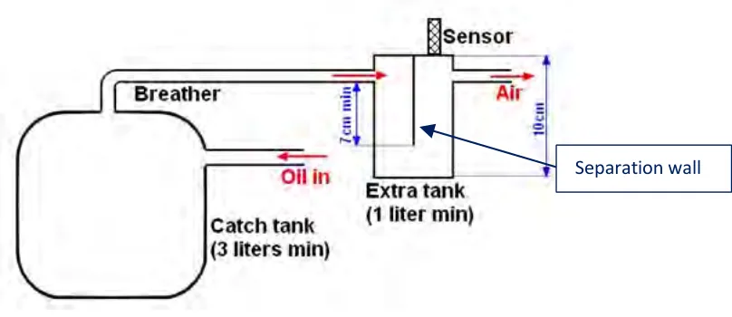</figure>
<p>7.10 Systèmes hydrauliques Hydraulic systems</p>
<p>7.10.1 Canalisations hydrauliques Hydraulic lines</p>
<p>La pression du système hydraulique est limitée à 300 bars. Toutes les canalisations de fluide hydraulique doivent avoir une pression d’éclatement minimale deux fois plus élevée que la pression de fonctionnement à la température maximale de fonctionnement de 204°C. Seules les canalisations de fluide hydraulique équipées de raccords auto-obturants ou de raccords vissés sont autorisées à l’intérieur de l’habitacle. Les canalisations doivent être montées de sorte qu’une fuite ne puisse entraîner l’accumulation de fluide dans l’habitacle.</p>
<p>Hydraulic system pressure is limited to 300 bar. All hydraulic fluid lines must have a minimum burst pressure two times more than operating pressure at the maximum operating temperature of 204°C.  Only hydraulic fluid lines with self-sealing couplings or screwed connectors are permitted inside the cockpit.  The lines must be fitted in such a way that any leakage cannot result in accumulation of fluid in the cockpit.</p>
<p><span class="pagemark" id="p225">P.225</span>Les canalisations flexibles doivent avoir des raccords sertis et une tresse extérieure résistant à l’abrasion et à la flamme.</p>
<p>Flexible lines must have swaged or crimped connectors and an outer braid resistant to abrasion and flame.</p>
<div class="tablewrap"><table><tr><td>ART. 8</td><td>SYSTEMES ELECTRIQUES</td><td>ELECTRICAL SYSTEMS</td></tr></table></div>
<p>8.1 Dispositions en matière de conformité et de sécurité Compliance and safety provisions</p>
<p>Les systèmes de contrôle électronique en boucle fermée sont interdits, sauf autorisation expresse par le présent réglement. Ils sont expressément autorisés dans les cas suivants :  pour tout moteur électrique (par exemple, mais sans s’y limiter :</p>
<p>Closed-loop electronic control systems are forbidden unless expressly permitted by the present regulations. They are expressly allowed in the following cases: •  for any electrical motor (for example, but not restricted to: wiper motor, fuel pump, electrically controlled gear shift, etc.);for a single gear selection mechanism; • for a single clutch actuation mechanism  for engine (ICE) control;  for MGU-K control respecting Article 5.5 and Article 5.6</p>
<p>moteur d’essuie-glace, pompe à carburant, changement de vitesse à commande électrique, etc.) ; • pour un mécanisme de sélection de vitesse unique; • pour un mécanisme d&#x27;actionnement à embrayage unique  pour le contrôle du moteur à combustion interne ;  pour le contrôle du MGU-K dans le respect des exigences des</p>
<p>requirements;  for the alternator and the A/C system;  for auxiliary electrical circuit management control (power box).    The FIA/ACO must be able to test the operation of any compulsory electronic safety systems at any time during an Event.</p>
<p>Articles 5.5 et 5.6 ;  pour l’alternateur et le système de climatisation ;  pour le contrôle de la gestion des circuits électriques auxiliaires</p>
<p>(boîtier d’alimentation).  La FIA/ACO doit être en mesure de tester tous les systèmes électroniques de sécurité obligatoires à n’importe quel moment au cours d’une Epreuve.</p>
<p>8.2 Circuits et batterie auxiliaires Auxiliary circuits and battery</p>
<p>8.2.1 La batterie auxiliaire (le cas échéant) doit se trouver soit dans l’habitacle à la place du passager, soit dans le compartiment de l’ES et doit être solidement fixée. Si elle se trouve dans l’habitable, la batterie doit être entièrement protégée dans un boîtier étanche en matériau isolant et conformément à l’Article 13.9.2. La fixation de la batterie doit être conçue pour résister à une décélération de 70 g dans toute direction.</p>
<p>The auxiliary battery (if fitted) must be located either in the cockpit in the place of the passenger or in the ES compartment and must be strongly secured. If in the cockpit, the battery must be entirely protected in a leak-proof box made of insulating material and in accordance with article 13.9.2. The battery fixation must be designed to withstand 70g decceleration in any direction.</p>
<p>8.2.2 Le concurrent doit fournir la puissance nécessaire (16 volts maximum) pour le fonctionnement des dispositifs obligatoires (Data logger, ADR, affichage des informations du promoteur, …).</p>
<p>The competitor must provide the power necessary (16 volts maximum) for the operation of the compulsory devices (Data logger, ADR, promoter information display, …).</p>
<p>8.2.3 La batterie auxiliaire ne doit jamais être utilisée pour recharger la batterie de propulsion ou l’ES. La batterie qui alimente le circuit auxiliaire doit avoir une tension inférieure à 60 volts pendant toute la durée de l’Epreuve.</p>
<p>The auxiliary battery must never be used to recharge the traction battery or ES. Throughout the duration of the Event, the battery supplying the auxiliary electrical circuit must have a voltage below 60 volts.</p>
<p>8.2.4 Le circuit (ou réseau) auxiliaire est constitué de toute partie de l’équipement électrique utilisé pour faire fonctionner le moteur à combustion interne, les indicateurs, l’éclairage ou les communications. Les éléments utilisés pour faire fonctionner le moteur comprennent notamment : accélérateur, allumage, injection, admission, lubrification, alimentation en carburant, le refroidissement et le turbo. L’équipement permettant de démarrer le moteur et les auxiliaires HT sont exclus.</p>
<p>The auxiliary circuit (network) consists of all the parts of the electrical equipment used to operate the internal combustion engine, for signaling, lighting or communication.  The parts used to operate the engine include but are not limited to: throttle, ignition, injection, intake, lubrication, fuel supply, cooling and turbo. The equipment to start the engine and the HV ancillaries are excluded.</p>
<p>8.3 Eclairage Lighting Equipment</p>
<p>L’éclairage doit toujours être en état de fonctionnement. Les voitures doivent être équipées :</p>
<p>Lighting equipment must always be in working order. Cars must be fitted with:</p>
<p>8.3.1 A l’avant : At the Front:</p>
<p>8.3.1.1 D’au moins deux feux principaux, homologués, symétriques par rapport à l’axe longitudinal de la voiture et séparés d’au moins 1300 mm, la mesure étant prise au centre des feux. Les feux doivent produire un faisceau blanc.</p>
<p>Two main headlights as a minimum, homologated, symmetrical to the longitudinal centreline of the car and separated by a minimum of 1300 mm, the measurement being taken to the centre of the headlights. Headlights must produce a white beam.</p>
<p>8.3.1.2 De clignotants de chaque côté. De couleur orange, ils doivent clignoter simultanément lorsque la vitesse est limitée aux fins du respect des conditions de Slow Zones et Full Course Yellow. Une stratégie de limitation de la vitesse dans le cadre des Slow Zones et Full Course Yellow devra être mise en place dans la voiture.</p>
<p>Direction indicators on each side. Orange coloured, they must simultaneously flash when is applied the speed limitation for compliance with conditions of Slow Zones and Full Course Yellow. A strategy for Slow Zones and Full Course Yellow speed limitation must be implemented in the car.</p>
<p><span class="pagemark" id="p226">P.226</span>Fréquence de clignotement de 4 Hz (0,125 seconde ON puis 0,125 seconde OFF). Si les feux de pluie sont activés, le clignotement doit être en opposition de phase avec les feux de pluie.</p>
<p>Flashing frequency of 4Hz (0.125 sec ON followed by 0.125 sec OFF). If the rain light is activated, the flashing should be in opposition of phase with the rain lights.</p>
<p>8.3.1.3 Témoin d’identification Identification light</p>
<p>Aucune lumière distinctive de voiture qui puisse interférer avec les voyants de sécurité (ERS/Avertissement d’impact) en positionnement et couleur (variation de bleu, rouge ou vert) n’est autorisée. A titre d’exemple et non exhaustif : derrière le pare-brise, des couleurs similaires ne seront pas autorisées. Dans l’encapsulage des phares, toute couleur sera autorisée.</p>
<p>No car indentification lights may interfere with safety lights (ERS/ impact warning) in positioning and in color (no variation of blue, red or green color). As example and not limited to: behind the wind screen some similar colors will not be allowed. Inside the front lights compartment, any color will be allowed.</p>
<p>8.3.1.4 Ventilateur de refroidissement des phares principaux Main headlights cooling fan</p>
<p>Un ventilateur de refroidissement est autorisé pour chaque phare à condition que :  sa seule fonction soit d’ajuster la température du phare principal ;   la puissance électrique soit inférieure à 5 W ;  la sortie du ventilateur se trouve à l’intérieur de la carrosserie.</p>
<p>A cooling fan is authorized per each headlight unit provided that:   its only function is to adjust the temperature of the main headlight unit;  the electrical power is less than 5 W;  the fan outlet is within the bodywork.</p>
<p>8.3.2 A l’arrière : At the Rear:</p>
<p>8.3.2.1 De deux feux rouges et deux feux &quot;Stop&quot; montés symétriquement de part et d’autre de l’axe longitudinal de la voiture et séparés d’au moins 1500 mm, la mesure étant prise au centre des feux arrière.  Une alarme par clignotement des feux &quot;Stop&quot; doit être activée si la perte d’accélération est supérieure à 0,4 g dans un délai de 0,2 seconde pendant au moins 0,2 seconde. La fréquence du clignotement à atteindre est 0,25 seconde ON ; 0,25 seconde OFF. Le clignotement des feux de freinage doit être désactivé lorsqu’une accélération positive de la voiture supérieure à 0,2 g est mesurée. Une fois activé, le clignotement doit être maintenu pendant au moins 2 secondes. Dans tous les cas, le clignotement des feux de freinage doit être désactivé dès que l’on appuie sur la pédale de frein (il devient fixe comme lors de l’utilisation normale des freins par le pilote).</p>
<p>Two red lights and two &quot;Stop&quot; lights fitted symmetrically about the longitudinal centreline of the car and separated by a minimum of 1500 mm, the measurement being taken to the centre of the rear lights. An alarm by flashing of the ‘‘Stop’’ lights must be activated if loss of acceleration is greater than 0.4g within 0.2 second for at least 0.2 second. The frequency of the flash to be achieved by 0.25 second ON ; 0.25 second OFF. Brake lights flashing must be deactivated when the car accelerates by more than 0.2g positive. When triggered, flashing must be latched for a minimum of 2 seconds. In any case Brake lights flashing must be deactivated as soon as brake pedal is pressed (goes to solid brake light on as normal when driver applies the brakes).</p>
<p>8.3.2.2 De deux feux &quot;Pluie&quot; ou &quot;Brouillard&quot; situés à l’arrière, le plus haut possible de chaque côté symétriquement par rapport à l’axe longitudinal de la voiture. Ils doivent être de type homologué conformément à la Norme FIA 8874-2019 de Degré 1 (et à la Liste Technique n°46). Les deux feux doivent clignoter à la fréquence de 4 Hz (0,125 seconde ON puis 0,125 seconde OFF). Deux niveaux de modes de luminosité doivent être appliqués :  Niveau élevé - mode pleine luminosité pour la journée  Niveau bas - mode de luminosité réduite pour la nuit Ces deux modes peuvent être automatiquement liés à la commande des feux de route, mais le pilote doit pouvoir la sélectionner en cas de demande exceptionnelle (forte pluie/brouillard pendant la nuit, voiture roulant en feux de route en cas de panne des feux de croisement, ...). Pour mettre en œuvre les deux modes, les exigences techniques sont les suivantes : appliquer un signal de modulation de largeur d’impulsion (PWM) à une fréquence de 300 Hz sur l’entrée d’inhibition, et utiliser un rapport cyclique de 70 % pour le mode jour et 30 % pour le mode nuit. La partie latérale des feux de pluie doit être maintenue à découvert (pas d’autocollant, de peinture, etc.) afin de garantir son refroidissement.</p>
<p>Two “Rain&quot; or &quot;Fog&quot; lights located at the rear, the highest and outermost possible on each side symmetrically to the longitudinal centreline of the car. They have to be homologated in accordance to FIA Standard 8874- 2019 Grade 1 (Technical List 46). Both lights should have a flashing frequency of 4Hz (0.125 sec ON followed by 0.125 sec OFF). Two levels of brightness modes must be implemented:  Level High - full brightness mode for day time  Level Low - reduced brightness mode for night These two modes can be automatically linked to the high beam command, but the driver must be able to select it in case of exceptional request (heavy rain/fog during night, car running in high beam in case of low beam failure, …).  To implement the two modes, the technical requirements are: Apply a pulse width modulation signal (PWM) at 300Hz frequency on the inhibit input, and use a duty cycle of 70% for day mode and 30% for night mode.  The side of the rain lights must be kept uncovered (no sticker, paint, etc.) in order to guarantee its cooling.</p>
<p>8.3.2.3 Des clignotants de chaque côté. De couleur orange, ils doivent clignoter simultanément lorsque la vitesse est limitée aux fins du respect des conditions de Slow Zones et Full Course Yellow. Une stratégie de limitation de la vitesse dans le cadre des Slow Zones et Full Course Yellow devra être mise en place dans la voiture. Fréquence de clignotement de 4 Hz (0,125 seconde ON puis 0,125 seconde OFF). Si les feux de pluie sont activés, le clignotement doit être en opposition de phase avec les feux de pluie.</p>
<p>Direction indicators on each side. Orange coloured, they must simultaneously flash when is applied the speed limitation for compliance with conditions of Slow Zones and Full Course Yellow.  A strategy for Slow Zones and Full Course Yellow speed limitation should be implemented in the car. Flashing frequency of 4Hz (0.125 sec ON followed by 0.125 sec OFF). If the rain light is activated the flashing should be in opposition of phase with the rain lights.</p>
<p><span class="pagemark" id="p227">P.227</span>8.3.3 Sur les côtés : On the Sides:</p>
<p>Un module d’affichage des informations de chronométrage, tel que décrit dans l’annexe au présent règlement, doit être installé de chaque côté de la voiture.</p>
<p>A display module for timing information as described in Appendix to these regulations must be fitted on each side of the car.</p>
<p>8.4 Exigences de la FIA/ACO en matière d’enregistrement FIA/ACO Logging Requirements</p>
<p>Les capteurs d’enregistrement obligatoires de la FIA/ACO doivent être tels que décrits dans les annexes au présent règlement. Tous les capteurs d’enregistrement FIA/ACO doivent être fournis par le fournisseur approuvé par la FIA/ACO (Liste Technique n°46). Ils doivent être directement reliés au data logger FIA/ACO. Sauf indication contraire, le signal de ces capteurs sera envoyé au concurrent via le CAN. Le faisceau de câbles des capteurs d’enregistrement de la FIA/ACO, débitmètre et couplemètre homologués compris, doit être fabriqué par le concurrent et approuvé par la FIA/ACO. Le seul GPS autorisé est le GPS FIA/ACO du système d’enregistrement obligatoire. Le data logger de la FIA/ACO doit être installé à l’intérieur de l’habitacle, à proximité du capteur ADR, pour éviter d’éventuels dommages aux câbles en cas d’accident.</p>
<p>The FIA/ACO mandatory logging sensors must be as described in the Appendixes to these Regulations. All FIA/ACO logging sensors must be provided by the approved FIA/ACO supplier (Technical list 46). They must be directly connected to the FIA/ACO logger. Unless specified, the signal of these sensors will be sent to the competitor through CAN.  The FIA/ACO logging sensors wiring loom including the homologated flow meter and torque measuring units must be manufactured by the competitor and approved by the FIA/ACO. The only allowed GPS is the FIA/ACO GPS from the mandatory logging system. The FIA/ACO datalogger must be installed inside the cockpit, close to the ADR sensor to avoid possible cable damage in case of crash.</p>
<p>8.5 Acquisition de données Data acquisition</p>
<p>La FIA/ACO doit avoir un accès illimité aux informations suivantes sur l’ECU avant, pendant et après toute séance sur piste :</p>
<p>The FIA/ACO must have unlimited access to the following ECU information before, during and after any track session:</p>
<p>a) Configurations des paramètres de l’application. Application parameter configurations.</p>
<p>b) Données et événements enregistrés. Logged data and events.</p>
<p>c) Données de télémétrie et événements en temps réel. Real-time telemetry data and events.</p>
<p>L’acquisition de données est limitée aux capteurs autorisés. La liste des capteurs montés dans la voiture doit être homologuée et tous les capteurs homologués doivent être, en permanence, montés dans la voiture. Seuls les seuls capteurs visés dans les annexes au présent règlement sont autorisés (sauf indication contraire, il n’existe aucune restriction concernant le nombre po.ur chaque type).</p>
<p>Data acquisition is limited to permitted sensors. The list of the sensors fitted in the car must be homologated, and all homologated sensors must be fitted in the car at all times. The only sensors permitted are listed in the Appendixes to these Regulations (There is no restriction on the number of each type unless stated).</p>
<h5 id="8-6-T-l-m-trie-Telemetry-2">8.6 Télémétrie Telemetry</h5>
<p>8.6.1 L’utilisation d’un système de télémétrie FIA/ACO est obligatoire. Aucun autre système de télémétrie ne peut être installé et/ou utilisé. Un tableau d’enregistrement standard contenant les canaux énumérés dans les annexes au présent règlement est obligatoire.</p>
<p>The use of an FIA/ACO telemetry system is compulsory. No other telemetry system may be installed and/or used. A Standard logging table containing the channels listed in the Appendixes to these Regulations is mandatory.</p>
<p>8.6.2 Les seules communications entre la voiture et les stands sont les suivantes : - des messages lisibles sur un tableau de signalisation des stands, - les mouvements du corps du pilote, - les signaux télémétriques de la voiture aux stands via le système de télémétrie FIA/ACO, - les communications orales bi-directionnelles entre le pilote et son stand. Toutes ces communications doivent être ouvertes et accessibles à la FIA/ACO.</p>
<p>The only communication between car and pits are as follows:  - Legible messages on a signaling pit board. - The driver’s body movements. - Telemetry signals from the car to the pits via the FIA/ACO telemetry system. - Two way verbal communications between the driver and his pit.  All such communication must be open and accessible to the FIA/ACO.</p>
<p>8.7 Affichage des signaux de piste Track signal information display</p>
<p>Toutes les voitures doivent être équipées de l’afficheur du Marshalling obligatoire.</p>
<p>All cars must be fitted with a compulsory marshalling display.</p>
<p>8.8 Voyants de sécurité Safety Lights</p>
<p>Deux modules de LED de sécurité comprenant les voyants d’état ERS (si présents) et le voyant d’avertissement d’impact fourni par le fournisseur agréé FIA/ACO (Liste Technique n°46) doivent être installés sur la voiture. Ces modules doivent être situés près de l’interrupteur de l’extincteur externe et être visibles des deux côtés du bas du pare-brise.</p>
<p>Two safety lights LED’s modules including the ERS status lights (if present) and the impact warning light provided by the approved FIA/ACO supplier (Technical list 46) must be installed on the car. These modules must be located near the external extinghisher switch and visible on both sides of the lower part of the windscreen.</p>
<div class="tablewrap"><table><tr><td>ART. 9</td><td>SYSTEME DE TRANSMISSION</td><td>TRANSMISSION SYSTEM</td></tr></table></div>
<p>9.1 Types de transmission Transmission types</p>
<p><span class="pagemark" id="p228">P.228</span>Le système de transmission du moteur ne doit entraîner que les roues arrière et peut être conçu sur mesure.</p>
<p>The engine transmission system must only drive the rear wheels and can be from a bespoke design.</p>
<div class="tablewrap"><table><tr><td></td><td> si la boîte de vitesses d’origine
est utilisée, elle n’est pas
soumise aux Articles 9.2.1,
9.2.2, 9.2.5, 9.2.6, 9.5.1, 9.6.1,
9.6.4 et 9.8.2.
 Aucune modification n’est
autorisée sur la boîte de
vitesse d’origine.</td><td></td><td> if the original gearbox is used,
it is not subject to Articles
9.2.1, 9.2.2, 9.2.5, 9.2.6, 9.5.1,
9.6.1, 9.6.4, 9.8.2.
 No modifications are allowed
to the original gearbox.</td></tr></table></div>
<h5 id="9-2-Embrayage-Clutch-2">9.2 Embrayage Clutch</h5>
<p>9.2.1 Ce qui suit ne s’applique qu’à l’embrayage de la transmission arrière, tout embrayage utilisé exclusivement comme partie de la transmission avant n’est pas concerné. Un seul dispositif d’embrayage est autorisé pour le moteur à combustion.</p>
<p>The following applies only to the rear power train clutch, any clutch used exclusively as part of front power train is exempt.  Only one clutch device is authorised for the combustion engine.</p>
<p>9.2.2 Si des dispositifs à embrayages multiples sont utilisés, ils doivent tous avoir les mêmes caractéristiques de course mécaniques et avoir une cartographie identique.</p>
<p>If multiple clutch operating devices are used, they must all have the same mechanical travel characteristics and be mapped identically.</p>
<p>9.2.3 Les conceptions qui permettent au pilote d’identifier des points spécifiques le long de la course du système d’embrayage ou qui l’aident à maintenir une position ne sont pas autorisées.</p>
<p>Designs which allow specific points along the travel range of the clutch operating device to be identified by the driver or assist him to hold a position are not permitted.</p>
<p>9.2.4 Les positions minimale et maximale de la course du système d’embrayage doivent correspondre respectivement à la position normale au repos de l’embrayage complètement engagé et à la position de l’embrayage complètement désengagé (incapable de transmettre tout couple utilisable).</p>
<p>The minimum and maximum travel positions of the clutch operating device must correspond to the clutch fully engaged normal rest position and fully disengaged (incapable of transmitting any useable torque) positions respectively.</p>
<p>9.2.5 Les conceptions ou systèmes qui outre les propriétés mécaniques et hydrauliques intrinsèques sont conçus pour, ou ont pour effet d’ajuster ou d’agir sur la quantité, ou le taux, de l’engagement demandé par l’ECU de la FIA ne sont pas autorisés.</p>
<p>Designs or systems which in addition to typical inherent hydraulic and mechanical properties are designed to, or have the effect of, adjusting or otherwise influencing the amount, or rate, of engagement being demanded by the ECU, are not permitted.</p>
<p>9.2.6 La valeur d’engagement de l’embrayage doit être contrôlée uniquement et directement par le pilote à l’exception :</p>
<p>The amount by which the clutch is engaged must be controlled solely and directly by the driver with the exception of:</p>
<p>a) du prévention du calage, stall prevention,</p>
<p>b) des changements de vitesses. gearshifts.</p>
<p>9.2.7 Tout dispositif ou système indiquant au pilote la valeur d’engagement ou de glissement de l’embrayage est interdit.</p>
<p>Any device or system which notifies the driver of the amount of clutch slip or engagement is not permitted.</p>
<p>9.3 Anti-patinage Traction control</p>
<p>Les voitures peuvent être équipées d’un système ou d’un dispositif en boucle fermée pouvant empêcher les roues de patiner sous l’effet de la puissance ou de compenser une demande de couple excessive de la part du pilote.</p>
<p>Cars may be equipped with a closed loop system or device which is capable of preventing the wheels from spinning under power or of compensating for excessive torque demand by the driver.</p>
<p>9.4 Commande de débrayage Clutch disengagement</p>
<p>Toute voiture doit être pourvue d’un système débrayant l’embrayage pendant au moins quinze minutes dans le cas où elle s’arrêterait, moteur coupé, de manière à pouvoir la pousser ou la remorquer. Ce système doit être en état de marche pendant toute la durée de l’Epreuve même en cas de défaillance des principaux systèmes hydrauliques, pneumatiques ou électriques de la voiture. Si un dispositif d’assistance pneumatique est utilisé, une bouteille d’air comprimé d’une capacité maximale de 0,5 dm3 installée à l’extérieur de l’habitacle est autorisée.</p>
<p>All cars must be fitted with a means of disengaging the clutch for a minimum of fifteen minutes in the event of the car coming to rest with the engine stopped, making possible to push or to tow it. This system must be in working order throughout the Event even if the main hydraulic, pneumatic or electrical systems on the car have failed. If a pneumatic assistance device is used, a compressed air bottle of a maximum capacity of 0.5 dm3 fitted outside the cockpit is allowed.</p>
<p>9.4.1 Interrupteurs externes du point mort et du coupe-circuit général Voir l’Article 14.16.</p>
<p>External neutral and general circuit breaker switches. See Article 14.16.</p>
<h5 id="9-5-Bo-te-de-vitesses-Gearbox-2">9.5 Boîte de vitesses Gearbox</h5>
<p>9.5.1 Seuls les boîtiers et les cloches d’embrayage en alliage d’aluminium ou de magnésium sont autorisés.</p>
<p>Only Aluminium or Magnesium alloy casings and bellhousing are allowed.</p>
<p>9.5.2 Le poids minimum de la boîte de vitesse est de 75 kg, compte tenu du périmètre de poids décrit à l’Annexe 2.</p>
<p>The minimum weight of the gearbox is 75 kg, considering the weight perimeter described in Appendix 2.</p>
<p><span class="pagemark" id="p229">P.229</span>9.5.3 La hauteur minimale du centre de gravité de la boîte de vitesses dans les conditions ci-dessus est de 150 mm au-dessus du plan de référence.</p>
<p>The minimum CoG height of the gearbox in the above conditions is 150 mm above reference plane.</p>
<p>9.6 Rapports de boîte de vitesses Gear ratios</p>
<p>9.6.1 Le nombre de rapports en marche avant ne doit pas être supérieur à 7.</p>
<p>The number of forward gear ratios must be no more than 7.</p>
<p>9.6.2 Pas plus de 2 jeux de rapports de boîte de vitesses différents ne peuvent être homologués.</p>
<p>No more than 2 different sets of gear ratios may be homologated.</p>
<p>9.6.3 Les rapports doivent être fabriqués en acier. Gears must be made from steel.</p>
<p>9.6.4 Tout système permettant d’engager plus d’une paire de rapports de boîte de vitesses à la fois sur la transmission est interdit.</p>
<p>Any system that permits more than one gear pair to be engaged to the drivetrain at any one time is prohibited.</p>
<h5 id="9-7-Marche-arri-re-Reverse-2">9.7 Marche arrière Reverse</h5>
<p>La voiture doit pouvoir être conduite en marche arrière par le pilote à tout moment durant l’Epreuve.</p>
<p>The car must be able to be driven in reverse by the driver at any time during the Event.</p>
<p>9.8 Changement de vitesse Gear changing</p>
<p>9.8.1 Les changements de vitesse automatiques sont considérés comme une aide au pilotage et sont par conséquent interdits. Aux fins du changement de vitesse, l’embrayage et le couple de l’unité de puissance ne doivent pas nécessairement être sous le contrôle du pilote.</p>
<p>Automatic gear changes are considered a driver aid and are therefore not permitted. For the purposes of gear changing, the clutch and power unit torque may not be under the control of the driver.</p>
<p>9.8.2 Les changements de vitesses instantanés sont interdits. Les changements de vitesses doivent être des actions séquentielles distinctes où l’extraction du rapport en cours est suivie de l’insertion de l’engagement du rapport voulu. Seul un mécanisme de changement à barillet simple ou un mécanisme de changement de vitesses en H est autorisé. Le mécanisme de changement de vitesses doit actionner tous les rapports avant, le rapport de marche arrière peut être actionné par un système d’actionnement distinct. Une coupure moteur doit être appliquée pendant 30 ms minimum lors du passage au rapport supérieur, c&#x27;est-à-dire que la moyenne sur 30 ms de la somme des couples fournis par les 2 capteurs de couple de transmission arrière doit être inférieure à 50% du couple fourni par les mêmes capteurs de couple juste avant que le changement ne se produise. Pendant cette coupure moteur de 30 ms, la moyenne du signal du capteur IVT doit être inférieure à 10kW et supérieure à -10kW.</p>
<p>Instantaneous gearshifts are forbidden. Gearshifts have to be distinct sequential actions where the extraction of the actual gear engagement is subsequently followed by an insertion of the target gear engagement. Only one single barrel shift mechanism or one H-pattern gearshift mechanism is permitted. The gearshift mechanism has to operate all forward gears, the reverse gear may be operated by a separate actuation system.  An engine cut must be applied for a minimum of 30 ms during upshift, meaning the average over 30ms of the sum of the torques given by the 2 rear driveshaft torque sensors must be lower than 50% of the torque given by the same torque sensors just before the shift happens. During this 30 ms engine cut, the average of IVT sensor signal must be lower than 10kW and higher than -10kW.</p>
<p>9.8.3 Les systèmes de transmission continûment variables ne sont pas autorisés pour transmettre la puissance de l’unité de puissance telle que définie à l’Article 5.1.</p>
<p>Continuously variable transmission systems are not permitted to transmit the power of the power unit defined in Article 5.1.</p>
<p>9.8.4 Chaque changement de vitesse doit être initié séparément par le pilote et, dans les limites des contraintes mécaniques de la boîte de vitesses, la vitesse demandée doit être engagée immédiatement à moins qu’une protection contre le surrégime ne soit utilisée pour refuser la demande de changement de vitesses. Une fois qu’une demande de changement de vitesses a été acceptée, aucune autre demande ne peut être acceptée tant que le premier changement de vitesses n’est pas effectué. Les changements de vitesses multiples ne peuvent être effectués qu’aux termes de l’Article 5.16 ou lorsqu’un passage au point mort est effectué suite à une demande du pilote. Si une stratégie de protection contre le surrégime est utilisée, celle- ci peut uniquement empêcher l’engagement de la vitesse demandée, et elle ne doit pas engendrer un retard supérieur à 50 ms. Si un changement de vitesses est refusé de la sorte, l’engagement ne peut suivre qu’une demande nouvelle et distincte faite par le pilote. Toute stratégie anti-rebond utilisée pour filtrer les demandes de changements de vitesses du pilote doit être une valeur unique et constante.</p>
<p>Each individual gear change must be separately initiated by the driver and, within the mechanical constraints of the gearbox, the requested gear must be engaged immediately unless over-rev protection is used to reject the gear shift request. Once a gear change request has been accepted no further requests may be accepted until the first gear change has been completed.   Multiple gear changes may only be made under Article 5.16 or when a shift to gearbox neutral is made following a request from the driver. If an over-rev protection strategy is used this may only prevent engagement of the target gear, it must not induce a delay greater than 50 ms. If a gear change is refused in this way, engagement may only follow a new and separate request made by the driver.   Any de-bounce time used to condition driver gear change requests must be a single and constant value.</p>
<p>9.8.5 Le canal de distance ou la position en piste ne sont pas considérés comme acceptables pour le contrôle de la boîte de vitesses.</p>
<p>Distance channel or track position is not considered an acceptable input to gearbox control.</p>
<p>9.9 Systèmes de transfert de couple Torque transfer systems</p>
<p><span class="pagemark" id="p230">P.230</span>Tout système ou dispositif dont la conception permet de transférer ou de dévier le couple d’une roue tournant plus lentement vers une roue tournant plus rapidement n’est pas autorisé, à l’exception de ceux visés à l’Article 9.10.</p>
<p>Any system or device the design of which is capable of transferring or diverting torque from a slower to a faster rotating wheel is not permitted, except those described in Article 9.10.</p>
<h5 id="9-10-Diff-rentiel-Differential-2">9.10 Différentiel Differential</h5>
<p>Seuls les différentiels à glissement limités mécaniques fonctionnant sans l’aide d’un système hydraulique/pneumatique ou électrique sont autorisés. Un réglage de la précharge par pression de gaz est autorisé à condition qu&#x27;il ne puisse être effectué que lorsque la voiture n&#x27;est pas en mouvement, de l&#x27;extérieur du cockpit et à l&#x27;aide d&#x27;outils. Un visco-coupleur n’est pas considéré comme un dispositif hydraulique de contrôle du glissement à condition qu’il ne puisse pas être commandé lorsque la voiture roule.</p>
<p>Only Mechanical limited slip differentials working without the help of a hydraulic/pneumatic or electric system are allowed. A pre-load adjustment through gas pressure is allowed provided that it can only made while the car is not in motion, from outside the cockpit and with the use of tools.  A visco-coupling system is not considered as a hydraulic slip control device provided that no control is possible when the car is running.</p>
<p>9.11 Déploiement différentiel Differential usage</p>
<p>9.11.1 Définitions Transfert de couple de freinage : valeur absolue de la différence de couple mesurée sur l&#x27;arbre de transmission appliqué aux roues gauche et droite d&#x27;un même essieu lors du freinage. Couple de freinage total : valeur absolue de la somme des couples mesurés sur l&#x27;arbre de transmission appliqué aux roues gauche et droite d&#x27;un même essieu. Taux de blocage : rapport entre le transfert du couple de freinage et le couple de freinage total d&#x27;un même essieu. Précharge : transfert minimum de couple de freinage pour déclencher une différence de vitesse de gauche à droite pour un couple de freinage total de 0 N.m.</p>
<p>Definitions Braking torque transfer: absolute value of the driveshaft measured torque difference applied to the left hand-side and right hand-side wheels of the same axle when braking. Total braking torque: absolute value of driveshaft measured torque sum applied to the left hand-side and right hand-side wheels of the same axle. Locking rate: ratio between the braking torque transfer and the total braking torque of the same axle. Preload: minimum braking torque transfer to trigger a left-to-right speed difference for 0 N.m total braking torque.</p>
<div class="tablewrap"><table><tr><td>Definitions</td><td></td><td></td><td></td><td></td><td></td></tr><tr><td>Braking torque transfer: absolute value of the driveshaft measured</td><td></td><td></td><td></td><td></td><td></td></tr><tr><td>torque difference applied to the left hand-side and right hand-side</td><td></td><td></td><td></td><td></td><td></td></tr><tr><td>wheels of the same axle when braking.</td><td></td><td></td><td></td><td></td><td></td></tr><tr><td>Total braking torque: absolute value of driveshaft measured torque</td><td></td><td></td><td></td><td></td><td></td></tr><tr><td>sum applied to the</td><td></td><td>left hand-side and right hand-side</td><td></td><td>wheels</td><td>of the</td></tr></table></div>
<div class="tablewrap"><table><tr><td>Locking rate: ratio between the braking torque transfer and the total</td><td></td><td></td><td></td></tr><tr><td>braking torque</td><td>of the same axle.</td><td></td><td></td></tr><tr><td>Preload: minimum braking torque transfer to trigger a left-to-right</td><td></td><td></td><td></td></tr><tr><td>speed difference for 0 N.m total braking torque.</td><td></td><td></td><td></td></tr></table></div>
<p>9.11.2 Principes de déploiement Le transfert de couple total au freinage ne doit pas dépasser les courbes de couple telles que définies dans les annexes au présent règlement. Pour les voitures à 4 roues motrices,le taux de blocage du différentiel avant et la précharge ne doivent pas dépasser les valeurs totales indiquées dans les annexes du présent Règlement Technique.</p>
<div class="tablewrap"><table><tr><td>Usage principles</td><td></td><td></td><td></td></tr><tr><td>The total braking torque transfer must not exceed the torque curves</td><td></td><td></td><td></td></tr><tr><td>as defined in the appendix of this regulations .</td><td></td><td></td><td></td></tr><tr><td>For 4 wheels driven cars, the front differential locking rate and the</td><td></td><td></td><td></td></tr><tr><td>preload must not exceed the total values stated in the appendixes of</td><td></td><td></td><td></td></tr><tr><td>these Technical Regulations.</td><td></td><td></td><td></td></tr></table></div>
<div class="tablewrap"><table><tr><td>ART. 10</td><td>SYSTEMES DE SUSPENSION ET DE DIRECTION</td><td>SUSPENSION AND STEERING SYSTEMS</td></tr></table></div>
<p>10.1 Conception et géométrie de la suspension Suspension design and geometry</p>
<p>10.1.1 Les voitures doivent être équipées d’une suspension. Cars must be fitted with sprung suspension.</p>
<p>10.1.2 Tout système de suspension lié aux roues avant doit être tel que ses réactions ne résultent que des modifications de la charge appliquée aux roues avant.</p>
<p>Any suspension system fitted to the front wheels must be so arranged that its response results only from changes in load applied to the front wheels.</p>
<p>10.1.3 Tout système de suspension lié aux roues arrière doit être tel que ses réactions ne résultent que des modifications de la charge appliquée aux roues arrière.</p>
<p>Any suspension system fitted to the rear wheels must be so arranged that its response results only from changes in load applied to the rear wheels.</p>
<p>10.1.4 Tout système ayant pour but de relier hydrauliquement les amortisseurs et/ou le 3ème élément de suspension est interdit.</p>
<p>Any system the purpose of which is to hydraulically link shock absorbers and/or the 3rd suspension element is forbidden.</p>
<p>10.1.5 Les doubles triangles sont la seule cinématique de suspension autorisée.</p>
<p>Double wishbones is the only suspension kinematic allowed.</p>
<p>10.1.6 Pas plus de trois amortisseurs par axe sont autorisés. No more than three shock absorbers per axle are allowed.</p>
<p>10.1.7 Les systèmes suivants sont interdits :  Amortisseur à masse : masse mobile liée à la roue située sur la</p>
<p>The following systems are forbidden:  Mass damper: Moving mass linked to the wheel located on the sprung weight with the sole objective of tuning the natural frequency of the suspension and/or tire contact patch load variations.  Inerter damper: Rotating mass linked to the wheel located on the sprung weight with the sole objective of tuning the natural frequency of the suspension and/or tire contact patch load variations. Fluid inertance is also considered as an inerter.  G-damper: Moving mass located on the sprung weight with the</p>
<p>masse suspendue, dans le seul but de réguler la fréquence naturelle de la suspension et/ou les variations de charge de la surface de contact du pneu.  Inerteur : masse rotative liée à la roue située sur la masse</p>
<p>suspendue, dans le seul but de réguler la fréquence naturelle de la suspension et/ou les variations de charge de la surface de contact du pneu. L’inertance des fluides est également considérée comme un inerteur.  G-damper : masse mobile située sur la masse suspendue, dans le</p>
<p>sole objective of controlling the suspension depending on acceleration. •Any part of the suspension, subject to the wheel load and leading to a change in ground clearance, is only allowed to have a constant or a progressive stiffness as function of the element deflection.</p>
<p>seul but de contrôler la suspension en fonction de l’accélération. •Toute partie de la suspension, soumise à la charge des roues et entraînant une modification de la garde au sol, ne peut avoir qu&#x27;une raideur constante ou progressive en fonction du débattement de l&#x27;élément.</p>
<p><span class="pagemark" id="p231">P.231</span>Éléments dégressifs ou pliables, étant mécaniquement, hydrauliquement ou fonctionnant au gaz, sont interdits.</p>
<p>Digressive or collapsible elements, being mechanically, hydraulically or gas operated, are prohibited.</p>
<p>10.2 Réglage de la suspension Suspension adjustment</p>
<p>10.2.1 Aucun réglage ne peut être effectué sur un système de suspension depuis l’intérieur de l’habitacle à l’exception des barres anti-roulis avant et arrière.  Le réglage des barres anti-roulis avant et arrière doit être :</p>
<p>No adjustment may be made to any suspension system from inside the cockpit except for the front and rear anti-roll bar.   Front and rear anti-roll bar adjustments must be:</p>
<p>- actionné manuellement, par le mouvement d’un (de) levier(s) / molette(s) et sans aucun lien avec les autres éléments mécaniques de la voiture. - manuel, mécanique (l’actionnement hydraulique est autorisé dans le seul but de remplacer la fonctionnalité de câbles), bijectif et sans degré de liberté.  La variation de raideur qui en résulte doit être directement liée à ce mouvement et sans aucune autre fonction que le réglage des barres anti-roulis.  Le système sera soumis à l’approbation dela FIA/ACO.  Le(s) levier(s) / molette(s) d’ajustement doivent être positionné(s) à l’extérieur des gabarits de volume du pilote, pour les jambes (H2), le corps (H3) et la tête (H4).</p>
<p>- through movement of hand operated lever(s)/knob(s), with no link with any input/output of the car. - manual, mechanical (hydraulic actuation is allowed with the sole purpose of replacing cables functionality), bijective, with no degree of freedom.   The resulting change in stiffness must be directly linked to that movement, with no other function than adjusting the anti-roll bars.   The systeme will be subject to prior approval by ACO/FIA.  The lever(s)/knob(s) must be positioned outside of driver leg (H2), body (H3) and head (H4) Templates.</p>
<p>10.2.2 Tout système, autre que les parties de suspension, quel que soit le principe de fonctionnement, activé ou non par le pilote, dont le but est de modifier la hauteur de caisse est interdit.</p>
<p>Any system, other than the suspension parts, whatever the functioning principle, activated or not by the driver the purpose of which is to modify the ground clearance is forbidden.</p>
<p>10.2.3 Les amortisseurs à commande électrique sont interdits. Electrically controlled shock absorbers are forbidden.</p>
<p>10.2.4 La voiture doit être utilisée sur la piste dans les limites de hauteur de caisse suivantes :  110 mm de hauteur de caisse maximale de l’essieu dynamique</p>
<p>The car must be used on track within the following ride height limits:   110 mm maximum dynamic axle ride height (front and rear)   100 mm maximum static ride height (front and rear) FIA/ACO will police these figures by checking the static ride heights and the suspension droop at scrutineering.  However, additional ride height measurement on track is required (Lasers, RH modelling based on hub displacement and pushrods, …).  If, when required for checking, a car is not already fitted with dry- weather tyres inflated to 2.0 +/-0.1 bar gauge pressure, or the condition of the tyres which are fitted is not suitable, a suitable set of dry-weather tyres may be selected by the FIA/ACO technical delegate.</p>
<p>(avant et arrière)  100 mm de hauteur de caisse statique maximale (avant et</p>
<p>arrière) La FIA/ACO contrôlera ces chiffres en vérifiant les hauteurs de caisse statiques et l’affaissement de la suspension lors des vérifications techniques. Toutefois, une mesure supplémentaire de la hauteur de caissesur piste est nécessaire (lasers, modélisation hauteur de caisse basée sur le déplacement du moyeu et les tiges de poussoir, ...). Si, au moment du contrôle, une voiture n’est pas déjà équipée de pneus pour temps sec à une pression manométrique de 2,0 +/- 0,1 bars, ou si l’état des pneus montés ne convient pas, un train de pneus pour temps sec approprié peut être sélectionné par le Délégué Technique de la FIA/ACO.</p>
<p>10.3 Bras de suspension Suspension members</p>
<p>10.3.1 Une pièce non-structurelle est autorisée sur chaque bras de suspension à condition :  qu’elle soit utilisée pour protéger le bras de suspension, les</p>
<p>One non-structural part is allowed on each suspension arm providing that:  it is used to protect the suspension member, the brake lines, wheel</p>
<p>canalisations de frein, les câbles de retenue des roues ou les câbles électriques ;  que le rapport largeur/hauteur de sa section transversale ne</p>
<p>tethers or electrical wires;   the width/height ratio of its cross section does not exceed 3 per</p>
<p>dépasse pas 3 par bras ;  que la forme de la pièce soit symétrique, par rapport à la section</p>
<p>arm;  the shape of the part is symetrical, referred to the cross section</p>
<p>transversale perpendiculaire au bras de suspension ;  que l’épaisseur maximale de sa section transversale soit égale à la</p>
<p>perpendicular to the suspension arm;  the maximum thickness of its cross section is equal to the</p>
<p>hauteur maximale de sa section transversale du bras de suspension sur lequel la pièce est fixée +4 mm ;  qu’elle soit séparée en deux parties dans le seul but d’autoriser</p>
<p>maximum height of its cross section of the suspension arm on which the part is fixed +4 mm;  it may be split in 2 parts with the only purpose of allowing its</p>
<p>son montage/démontage du bras de suspension.</p>
<p>fitting/unfitting from the suspension arm.</p>
<p>10.3.2 Les bras de suspension doivent :  être fabriqués à partir d’un métal homogène,  ne pas être chromés,  avoir un profil dont le rapport largeur/hauteur ne dépasse pas 3.0</p>
<p>The suspension members must:  be made from an homogeneous metal  not be chromium plated  have a profile which width/height ratio does not exceed 3.0 and</p>
<p>et 6.0 aux points d’attache,</p>
<h5 id="6-0-at-the-joints">6.0 at the joints</h5>
<p><span class="pagemark" id="p232">P.232</span> être obligatoirement équipés d’une barre anti-intrusion à la base</p>
<p> be mandatorily fitted with an anti-intrusion bar at the base of the</p>
<p>des triangles de suspension avant si ceux-ci présentent un danger potentiel pour les jambes du pilote.</p>
<p>front suspension wishbones if these are potentially dangerous for the driver’s legs.</p>
<h5 id="10-4-Direction-Steering-2">10.4 Direction Steering</h5>
<p>10.4.1 La conception et la géométrie du système de direction sont libres, à condition qu’il y ait une liaison mécanique continue entre le volant et les roues avant de la voiture.</p>
<p>The design and geometry of the steering system are free, provided that there is a continuous mechanical link between the steering wheel and the front wheels of the car.</p>
<p>10.4.2 Colonne de direction Steering column</p>
<p>La colonne de direction doit être approuvée par la FIA conformément à la procédure d’approbation des structures de sécurité pour les voitures de sport.</p>
<p>The steering column must be approved by the FIA in accordance with the approval procedure of safety structures for sports cars.</p>
<p>10.4.3 Aucune partie du volant ou de la colonne de direction, ni aucune pièce qui y sera montée, ne pourra se trouver plus près du pilote qu’un plan formé par le bord arrière complet de la couronne du volant. Toutes les pièces montées sur le volant doivent l’être de manière à minimiser le risque de blessure au cas où la tête du pilote entrerait en contact avec toute partie de l’assemblage des roues.</p>
<p>No part of the steering wheel or column, nor any part fitted to them, may be closer to the driver than a plane formed by the entire rear edge of the steering wheel rim. All parts fixed to the steering wheel must be fitted in such a way as to minimise the risk of injury in the event of a driver’s head making contact with any part of the wheel assembly.</p>
<p>10.4.4 Tout système de direction à quatre roues est interdit. Four-wheel steering is forbidden.</p>
<p>10.4.5 La direction assistée est autorisée mais un tel système ne peut avoir une fonction autre que celle de réduire l’effort physique requis pour diriger la voiture et doit permettre à la direction de continuer de fonctionner lorsque les sources d’énergie hydraulique et/ou électrique sont coupées.</p>
<p>Power steering is allowed but such system may not carry out any function other than reduce the physical effort required to steer the car and must allow the steering to continue to function when all hydraulic and/or electric power is shut down.</p>
<p>10.4.6 Un mécanisme de déverrouillage rapide du volant est oligatoire. Le mécanisme de déverrouillage rapide doit consister en un flasque concentrique à l’axe du volant, de couleur jaune obtenue par anodisation ou tout autre revêtement durable, et installé sur la colonne de direction derrière le volant. Le déverrouillage doit s’opérer en tirant sur le flasque suivant l’axe du volant. Le déverrouillage du volant doit ouvrir le circuit de puissance.</p>
<p>A quick release system of the steering wheel is mandatory. The quick release mechanism must consist of a flange concentric to the steering wheel axis, coloured yellow through anodization or any other durable yellow coating, and installed on the steering column behind the steering wheel. The release must be operated by pulling the flange along the steering wheel axis. The release of the steering wheel must open the power circuit.</p>
<div class="tablewrap"><table><tr><td>ART. 11</td><td>SYSTEME DE FREINAGE</td><td>BRAKE SYSTEM</td></tr></table></div>
<p>11.1 Circuits de freinage et distribution de la pression Brake circuits and pressure distribution</p>
<p>11.1.1 A l’exception d’une unité de puissance, toutes les voitures doivent être équipées d’un système de freinage unique ayant deux circuits hydrauliques séparés et commandés par la même pédale, l’un des circuits agissant sur les deux roues avant et l’autre sur les deux roues arrière. Ce système doit être conçu de manière qu’en cas de défaillance dans un circuit, la pédale continue à actionner les freins dans l’autre circuit. La seule connexion autorisée entre les deux circuits est un système mécanique de réglage de la répartition de la force de freinage entre les essieux avant et arrière.</p>
<p>With the exception of a power unit, all cars must be equipped with only one brake system. This system must solely be comprised of two separate hydraulic circuits operated by one pedal, one circuit operating on the two front wheels and the other on the two rear wheels. This system must be designed so that if a failure occurs in one circuit the pedal will still operate the brakes in the other.  The only connection allowed between the two circuits is a mechanical system for adjusting the brake force balance between the front and rear axles.</p>
<p>11.1.2 Le système de freinage doit être conçu de manière que la pression des étriers de freins soit la même dans chaque circuit à tout moment.</p>
<p>The brake system must be designed in order that the force exerted on the brake pads within each circuit are the same at all times.</p>
<p>11.1.3 Toute servocommande, autre que le système mentionné à l’Article 11.7, capable de modifier la configuration ou d’affecter les performances d’une partie quelconque du système de freinage est interdite.</p>
<p>Any powered device, other than the system referred to in Article 11.7, which is capable of altering the configuration or affecting the performance of any part of the brake system is forbidden.</p>
<p>11.1.4 Toute modification ou modulation du système de freinage pendant que la voiture est en piste doit se faire sous l’intervention physique directe du pilote ou via le système mentionné à l’Article 11.7 et ne pas être préréglée.</p>
<p>Any change to, or modulation of, the brake system whilst the car is on the track must be made by the driver’s direct physical input or by the system referred to in Article 11.7, and may not be pre-set.</p>
<p>11.1.5 Les capteurs de prise de données, les interrupteurs des feux &quot;Stop&quot; ou les limiteurs mécaniques de freinage réglables au moyen d’outils ne sont pas considérés comme des &quot;systèmes&quot; et doivent être placés à la sortie des maîtres-cylindres.</p>
<p>Sensors to collect information, &quot;Stop&quot; lights switches or mechanical brake pressure controls adjustable by means of tools are not considered as &quot;systems&quot; and they must be fitted at the exit of the master-cylinders.</p>
<p>11.1.6 Aucun dispositif ou système ne doit être monté entre les maîtres- cylindres et les étriers, à l’exception du système décrit à l’Article 11.7.</p>
<p>No device or system is permitted between the master-cylinders and the callipers, except for the system described in Article 11.7.</p>
<p><span class="pagemark" id="p233">P.233</span>11.2 Etriers de freins Brake callipers</p>
<p>11.2.1 Tous les étriers de freins doivent être faits de matériaux d’aluminium d’un indice d’élasticité non supérieur à 80 Gpa.</p>
<p>All brake calipers must be made from aluminium materials with a modulus of elasticity no greater than 80Gpa.</p>
<p>11.2.2 Chaque étrier de frein sera attaché à la voiture par deux fixations maximum.</p>
<p>No more than two attachments may be used to secure each brake caliper to the car.</p>
<p>11.2.3 Il ne doit pas y avoir plus d’un étrier, avec un maximum de six pistons, sur chaque roue.</p>
<p>No more than one caliper, with a maximum of six pistons, is permitted on each wheel.</p>
<p>11.2.4 La section de chaque piston d’étrier doit être circulaire. The section of each caliper piston must be circular.</p>
<p>11.3 Disques et plaquettes de freins Brake discs and pads</p>
<p>11.3.1 Il ne doit pas y avoir plus d’un disque de frein sur chaque roue et il doit avoir la même vitesse de rotation que la roue à laquelle il est relié.</p>
<p>No more than one brake disc is permitted on each wheel which must have the same rotational velocity as the wheel it is connected to.</p>
<p>11.3.2 Tous les disques doivent avoir un diamètre externe maximum de 381 mm. All discs must have a maximum outside diameter of 381 mm.</p>
<p>11.3.3 Le nombre de trous de ventilation par disque est limité à 500. The number of ventilation holes per disc is limited to 500.</p>
<p>11.3.4 Il ne doit pas y avoir plus de deux plaquettes de frein sur chaque roue.</p>
<p>No more than two brake pads are permitted on each wheel.</p>
<p>11.4 Conduites d’air autour des freins Brake cooling ducts</p>
<p>Les conduites d’air autour des freins avant et arrière seront considérées comme faisant partie du système de freinage et ne feront pas saillie par rapport à :</p>
<p>Brake cooling ducts around the front and rear brakes are considered part of the braking system and shall not protrude beyond:</p>
<p>a) un plan parallèle au sol situé à une distance de 220 mm au-dessus de</p>
<p>A plane parallel to the ground situated at a distance of 220 mm above the horizontal centre line of the wheel.</p>
<p>l’axe horizontal de la roue ;</p>
<p>b) un plan parallèle au sol situé à une distance de 220 mm au-dessous</p>
<p>A plane parallel to the ground situated at a distance of 220 mm below the horizontal centre line of the wheel.</p>
<p>de l’axe horizontal de la roue ;</p>
<p>c) un plan vertical parallèle à la face intérieure de la jante de la roue, et</p>
<p>A vertical plane parallel to the inner face of the wheel rim and displaced from it by 100 mm toward the car centre plane.</p>
<p>déplacé par rapport à celle-ci de 100 mm vers le plan central de la voiture ;</p>
<p>d) Un plan vertical parallèle au plan central du disque et décalé de celui-</p>
<p>A vertical plane parallel to the center plane of the disc and displaced from it by 80 mm (100 mm around the brake calliper) in opposite direction of the car centre plane. Furthermore:</p>
<p>ci de 80 mm (100 mm autour de l’étrier de frein) dans la direction opposée au plan central de la voiture. En outre :</p>
<p>e) Vues de côté, les conduites ne doivent pas dépasser vers l’avant un</p>
<p>When viewed from the side the ducts must not protrude forwards beyond a radius of 380 mm from the centre of the wheel or backwards beyond a radius of 220 mm from the centre of the wheel.</p>
<p>rayon de 380 mm à partir du centre de la roue ou vers l’arrière un rayon de 220 mm à partir du centre de la roue.</p>
<p>f) Les conduites ne peuvent pas tourner avec les roues. The ducts may not rotate with the wheels.</p>
<p>g) Aucune partie de la voiture, autre que celles spécifiquement définies</p>
<p>No part of the car, other than those specifically defined in Article 12.7.1 and Article 12.7.2, may obscure any part of the wheel when viewed from the outside of the car towards the car centre plane along the axis of the wheel.</p>
<p>aux Articles 12.7.1 et 12.7.2, ne peut masquer une partie quelconque de la roue lorsqu’elle est vue de l’extérieur de la voiture vers le plan central de la voiture le long de l’axe de la roue.</p>
<p>h) Un tambour de frein est également considéré comme une conduite</p>
<p>A brake drum is also considered as a brake cooling duct.</p>
<p>de refroidissement de frein.</p>
<p>i) Les flexibles de refroidissement des freins sont autorisés et ne sont</p>
<p>Brake cooling flexible hoses are allowed and not considered as brake cooling ducts for the purpose of this article.  All measurements will be made with the wheel held in a vertical position.</p>
<p>pas considérés comme des conduites de refroidissement des freins pour les besoins de cet article. Toutes les mesures seront effectuées avec la roue maintenue en position verticale.</p>
<p>11.5 Modulation de la pression du circuit Brake pressure modulation</p>
<p>11.5.1 Aucun système de freinage ne peut être conçu pour empêcher les roues de se bloquer lorsque le pilote appuie sur la pédale de frein.</p>
<p>No braking system may be designed to prevent wheels from locking when the driver applies pressure to the brake pedal.</p>
<p>11.5.2 Toute fonction de freinage assisté est interdite, à l’exception du système décrit à l’Article 11.7.</p>
<p>Any power braking function is forbidden, except for the system described in Article 11.7.</p>
<p>11.6 Refroidissement par liquide Liquid cooling</p>
<p>Le refroidissement des freins par liquide est interdit. Liquid cooling of the brakes is forbidden.</p>
<p>11.7 Système de commande de frein Brake control system</p>
<p><span class="pagemark" id="p234">P.234</span>Si la voiture est équipée d’un MGU-K relié aux roues avant, la pression dans le circuit de freinage avant peut être fournie par un système de commande motorisé, respectant les conditions suivantes:</p>
<p>If the car is fitted with an MGU-K connected to the front wheels, the pressure in the front braking circuit may be provided by a powered control system respecting the conditions below :</p>
<p>a) que la pédale de frein du pilote soit connectée à un maître-cylindre</p>
<p>The driver brake pedal is connected to a hydraulic master cylinder that generates a pressure source that can be applied to the Front braking circuit if the powered system is disabled.</p>
<p>hydraulique qui génère une source de pression pouvant être appliquée au circuit de freinage arrière si le système assisté est désactivé.</p>
<p>b) qu’il garantisse un dimensionnement du système de freinage</p>
<p>Ensure a design of the braking system that can achieve similar deceleration levels to normal operation when calipers are activated only by the force applied by the driver on the brake pedal without any further braking power coming from the MGU-K system or from any hydraulic high-pressure brake devices, in order to ensure safety should there be a failure of the electrical system.</p>
<p>capable d’assurer un niveau de décéleration similaire à celui obtenu en utilisation normale quand les étriers de freins sont alimentés uniquement par la force appliquée par le pilote sur la pédale de frein sans apport supplémentaire de freinage en provenance du système MGU-K ou d’une quelconque source de haute pression hydraulique du système de freins, ceci afin de garantir la sécurité en cas de défaillance du système électrique.</p>
<p>c) qu’il n’ait pas de contrôle en boucle fermée sur le patinage des roues. Have no closed-loop control on the wheel slip.</p>
<p>Si la voiture n’est pas équipée d’un MGU-K, la pression dans le circuit de freinage arrière peut être fournie par un système de commande motirisé respectant les conditions ci-dessus.</p>
<p>If the car is not fitted with an MGU-K, the pressure in the rear braking circuit may be provided by a powered control system respecting the conditions above.</p>
<div class="tablewrap"><table><tr><td>ART. 12</td><td>ROUES ET PNEUS</td><td>WHEELS AND TYRES</td></tr></table></div>
<h5 id="12-1-Emplacement-Location-2">12.1 Emplacement Location</h5>
<p>La voiture vue de dessus et de l’avant, les roues avant étant alignées pour aller en ligne droite, les roues complètes et leurs fixations ne doivent pas être visibles au-dessus du plan horizontal passant par les axes des essieux.</p>
<p>As viewed from above and front, the wheels aligned for the car to proceed straight ahead, the complete wheels and their attachment must not be visible above the horizontal plane passing through the axle centreline.</p>
<p>12.2 Nombre de roues Number of wheels</p>
<p>Le nombre de roues est fixé à quatre. Une seule spécification pour l’essieu avant et une seule pour l’essieu arrière est autorisée.</p>
<p>The number of wheels is fixed at four. Only one specification on the front and one on rear axle is allowed.</p>
<p>12.3 Dimensions de la roue complète (jante et pneu) Complete wheel dimensions (rim and tyre)</p>
<p>12.3.1 Le diamètre de la roue complète ne doit pas dépasser 28&quot;. Complete wheel diameter must not exceed 28&quot;.</p>
<p>12.3.2 La largeur et le diamètre de la roue complète seront mesurés horizontalement, à hauteur de l’essieu, les roues étant maintenues en position verticale et munies de pneus neufs gonflés à 1,4 bar.</p>
<p>Complete wheel width and diameter will be measured horizontally at axle height, with the wheel held in a vertical position and when fitted with new tyres inflated to 1.4 bar.</p>
<p>12.3.3 La dimension du pneu et la largeur maximale de la roue complète doivent être conformes au tableau suivant :</p>
<p>Tyre dimension and maximum complete wheel width must be according to the following table:</p>
<div class="tablewrap"><table><tr><td>Dimension du pneu / Tyre Dimension</td><td></td><td></td><td></td><td></td><td>2WD and 4WD** cars
(** possible for 4WD cars homologated
before 2023 and mandatory for 4WD cars
homologated after 2022)</td><td></td></tr><tr><td></td><td>4WD* cars
(*possible for 4WD cars homologated
before 2023)</td><td></td><td></td><td></td><td></td><td></td></tr><tr><td></td><td></td><td></td><td></td><td></td><td></td><td></td></tr><tr><td></td><td></td><td></td><td></td><td></td><td>F</td><td>R</td></tr><tr><td></td><td>F</td><td></td><td>R</td><td></td><td></td><td></td></tr><tr><td></td><td></td><td></td><td></td><td></td><td></td><td></td></tr><tr><td></td><td></td><td></td><td></td><td></td><td>29/71-18</td><td>34/71-18</td></tr><tr><td></td><td>31/71-18</td><td></td><td>31/71-18</td><td></td><td></td><td></td></tr><tr><td></td><td></td><td></td><td></td><td></td><td></td><td></td></tr><tr><td>Largeur max. de la roue complète / Max. Complete Wheel
Width</td><td></td><td></td><td></td><td></td><td>13.5&quot;</td><td>15&quot;</td></tr><tr><td></td><td>14&quot;</td><td></td><td>14&quot;</td><td></td><td></td><td></td></tr><tr><td></td><td></td><td></td><td></td><td></td><td></td><td></td></tr></table></div>
<p>12.4 Matériau des roues Wheel material</p>
<p>Les roues doivent être fabriquées à partir d’un alliage homogène. Elles doivent être faites d’une seule pièce, sans soudures ni cavités.</p>
<p>Wheels must be made from homogeneous alloy. They must be produced as integral part, without welding and/or cavities.</p>
<p>12.5 Dimensions des roues (jante) Wheel dimensions (rim)</p>
<p><span class="pagemark" id="p235">P.235</span>12.5.1 La largeur maximale des roues doit être conforme au tableau suivant :</p>
<p>Wheel maximum width must be according to the following table:</p>
<div class="tablewrap"><table><tr><td></td><td></td><td></td><td></td><td></td><td>2WD and 4WD** cars
(** possible for 4WD cars homologated
before 2023 and mandatory for 4WD cars
homologated after 2022)</td><td></td></tr><tr><td></td><td>4WD* cars
(*possible for 4WD cars homologated
before 2023)</td><td></td><td></td><td></td><td></td><td></td></tr><tr><td></td><td></td><td></td><td></td><td></td><td></td><td></td></tr><tr><td></td><td></td><td></td><td></td><td></td><td>F</td><td>R</td></tr><tr><td></td><td>F</td><td></td><td>R</td><td></td><td></td><td></td></tr><tr><td></td><td></td><td></td><td></td><td></td><td></td><td></td></tr><tr><td>Dimension du pneu / Tyre Dimension</td><td></td><td></td><td></td><td></td><td>29/71-18</td><td>34/71-18</td></tr><tr><td></td><td>31/71-18</td><td></td><td>31/71-18</td><td></td><td></td><td></td></tr><tr><td></td><td></td><td></td><td></td><td></td><td></td><td></td></tr><tr><td>Largeur max. de la roue (jante) / Max. Wheel (Rim) Width</td><td></td><td></td><td></td><td></td><td>12.5&quot;</td><td>14&quot;</td></tr><tr><td></td><td>13&quot;</td><td></td><td>13&quot;</td><td></td><td></td><td></td></tr><tr><td></td><td></td><td></td><td></td><td></td><td></td><td></td></tr></table></div>
<p>12.5.2 Le diamètre de la roue ne doit pas dépasser 18&quot;.</p>
<p>Wheel diameter must not exceed 18&quot;.</p>
<p>12.5.3 Le poids de la roue doit être supérieur à : Wheel weight must be greater than:</p>
<div class="tablewrap"><table><tr><td>Dimension de la roue (jante) / Wheel (Rim) Dimension</td><td>Poids / Weight</td></tr><tr><td>12.5&quot;</td><td>8.75 kg</td></tr><tr><td>13&quot;</td><td>9 kg</td></tr><tr><td>14&quot;</td><td>9.25 kg</td></tr></table></div>
<p>12.5.4 Les roues doivent être conformes aux spécificités suivantes : Wheel must comply with the following specifications:</p>
<p>a) Les diamètres mesurés au niveau des bords de jante intérieur et</p>
<p>The diameters measured at the level of the inner and outer rim edges of a wheel must be identical, with a tolerance of +/- 1.5 mm; It must not be more than 19.2 mm maximum in height.</p>
<p>extérieur d’une roue doivent être identiques avec une tolérance de +/- 1,5 mm. La roue avoir une hauteur maximum de 19,2 mm.</p>
<p>b) La conception de la roue doit répondre aux exigences générales du</p>
<p>The design of the wheel must meet the general requirements of the tyre supplier for the mounting and dismounting of tyres including allowance for sensors and valves.</p>
<p>fournisseur de pneus pour le montage et le démontage des pneus, y compris pour l’installation des capteurs et des valves.</p>
<p>c) La roue doit être conçue de sorte qu’elle puisse être montée à</p>
<p>The wheel design cannot be handed between left and right designs.</p>
<p>gauche ou à droite.</p>
<p>12.5.5 Lorsqu’elle est montée sur la voiture, chaque partie de l’ensemble de la roue doit tourner à la vitesse de la jante.</p>
<p>When fitted on the car every part of the complete wheel assembly has to turn at rim speed.</p>
<p>12.5.6 Lorsqu’elle est vue perpendiculairement au plan formé par la face externe de la roue et entre les diamètres de 150 mm et 400 mm, la roue peut avoir une surface projetée ne dépassant pas 46 000 mm2.</p>
<p>When viewed perpendicular to the plane formed by the outer face of the wheel and between the diameters of 150 mm and 400 mm the wheel may have projected area of no greater than 46 000 mm2.</p>
<p>12.6 Traitement des pneus Treatment of tyres</p>
<p>Les pneus ne peuvent être gonflés qu’à l’air ou à l’azote. Tyres may only be inflated with air or nitrogen.</p>
<p>12.7 Roue assemblée Wheel assembly</p>
<p>12.7.1 Les seuls éléments qui peuvent être physiquement attachés à la roue en plus du pneu sont les traitements de surface pour l’aspect et la protection, les valves pour gonfler et dégonfler le pneu, les fixations des roues, les masses d’équilibrage, les goupilles d’entraînement, les dispositifs de contrôle de la température et de la pression des pneus et les entretoises sur la face interne de montage de spécification identique sur toutes les roues pour le même essieu. Pour dissiper tout doute, les enjoliveurs amovibles ne sont pas autorisés.</p>
<p>The only parts which may be physically attached to the wheel in addition to the tyre are surface treatments for appearance and protection, valves for filling and discharging the tyre, wheel fasteners, balance weights, drive pegs, tyre pressure and temperature monitoring devices and spacers on the inboard mounting face of identical specification on all wheels for the same axle. For the avoidance of doubts, removable wheel/hub caps are not permitted.</p>
<p>12.7.2 La roue doit être attachée à la voiture à l’aide d’une seule fixation. Le diamètre externe de la fixation ne doit pas dépasser 110 mm et la longueur axiale ne doit pas dépasser 75 mm. La fixation de roue ne peut attacher ou fixer à la voiture aucun élément excepté la roue assemblée décrite à l’Article 12.7.1.</p>
<p>The wheel must be attached to the car with a single fastener. The outer diameter of the fastener must not exceed 110 mm and the axial length must not exceed 75 mm. The wheel fastener may not attach or mount any part to the car except the wheel assembly described in Article 12.7.1.</p>
<p><span class="pagemark" id="p236">P.236</span>12.7.3 Une roue complète doit contenir un seul volume de gaz interne déterminé. Aucune valve, purgeur ou membrane perméable n’est autorisé sauf pour gonfler ou dégonfler le pneu quand la voiture est à l’arrêt. Les valves de contrôle de pression ne sont pas autorisées.</p>
<p>A complete wheel must contain a single fixed internal gas volume. No valves, bleeds or permeable membranes are permitted other than to inflate or deflate the tyre whilst the car is stationary.  Pressure control valves are not permitted.</p>
<p>12.7.4 Les dispositifs utilisés pour installer ou enlever les fixations de roues peuvent uniquement être alimentés par de l’air comprimé ou de l’azote. Les systèmes par capteur ne peuvent fonctionner que passivement.</p>
<p>Devices which are used to fit or remove wheel fasteners may only be powered by compressed air or nitrogen.  Any sensor systems may only act passively.</p>
<p>12.8 Crics pneumatiques Pneumatic jacks</p>
<p>Autorisés. Toutefois, sur la grille de départ, la fonction de raccord permettant de connecter le tuyau d’air aux crics pneumatiques doit comporter un système maintenant la voiture sur ses crics lorsque le tuyau d’air est retiré. Il est interdit de transporter à bord de la voiture des bouteilles d’air comprimé pour leur fonctionnement.</p>
<p>Permitted. However, on the starting grid, the coupling function to connect the air hose onto the air jacks must have a system that maintains the car on the air jacks when the air hose is removed.  It is forbidden to carry on board compressed air bottles for their operation.</p>
<div class="tablewrap"><table><tr><td>ART. 13</td><td>HABITACLE ET CELLULE DE SURVIE</td><td>COCKPIT AND SURVIVAL CELL</td></tr></table></div>
<h5 id="13-1-Principes-Principles-2">13.1 Principes Principles</h5>
<p>L’habitacle doit offrir la meilleure protection au pilote. L’habitacle doit être conçu de telle manière qu’aucune fuite ne puisse entraîner une accumulation de liquide à l’intérieur de celui-ci. Il doit être possible d’installer un siège pour le pilote (voir Dessin 14B) ainsi que les protections obligatoires mentionnées à l’Article 14.6 (Repose-tête) et à l’Article 15.2.1 (Cellule de survie - Prescription générale). Les structures/supports anti-tonneau de la cellule de survie doivent être symétriques par rapport à l’axe de la voiture.</p>
<p>The cockpit must provide the best protection for the driver. The cockpit must be designed in such a way that any leakage cannot result in accumulation of fluid in it. It must be possible to fit a driver’s seat (see Drawing 14B) and the mandatory protections mentioned in Article 14.6 (Headrest) and Article 15.2.1 (Survival cell - General prescription).  The rollover structures/supports of the survival cell must be symetrical with respect to the car centerline.</p>
<p>13.2 Plan inférieur de la cellule de survie Bottom plane of the survival cell</p>
<p>Deux surfaces de référence de 80 mm de diamètre doivent être placées au fond de la cellule de survie. Elles doivent être positionnées à au moins 350 mm de l’axe de la voiture de chaque côté et être validées par la FIA/ACO avant la fabrication de la cellule de survie. Elles doivent être fixées à la cellule de survie de sorte que leur face inférieure soit au niveau du plan de référence de la cellule de survie. La distance entre le plan inférieur de la cellule de survie (plan de référence de la cellule de survie) et le plan de référence doit être homologuée. Un filetage M5 hau centre de chaque plaquette de référence doit permettre un accès facile lors des vérifications techniques.  Une surface de référence de 80 mm de diamètre doit être positionnée sur l’axe de la voiture sous la cloche d’embrayage ou la boîte de vitesses pour fournir une référence structurelle (généralement dans le même plan que les plaquettes de référence de la cellule de survie). Un filetage M5 au centre de la plaquette de référence doit permettre un accès facile lors des vérifications techniques (il sera possible de retirer du patin une partie de 80 mm de diamètre).</p>
<p>Two ‘datum’ pads of 80 mm diameter must be located at the bottom of the survival cell. They should be positioned at least at 350 mm from car centreline on each side and be validated by FIA/ACO before the survival cell manufacturing. They must be attached to the survival cell so that their bottom face is at the survival cell reference plane. The distance between the bottom plane of the survival cell (survival cell reference plane) and the reference plane must be homologated. A M5 thread in the middle of each ‘datum’ pad must provide mean of easy access during scrutineering.    A ‘datum’ pad of 80 mm diameter must be positionned on the car centerline underneath the bellhousing or the gearbox to provide structural reference (typically in the same plane as the survival cell ‘datum’ pads). A M5 thread in the middle of the ‘datum’ pad must provide mean of easy access during scrutineering (removal of a 80 mm diameter part of the skid block will be possible).</p>
<div class="tablewrap"><table><tr><td>Le plan inférieur de la structure
de la cellule de survie doit
comprendre un rectangle de
700 mm (longitudinalement)
x 800 mm (latéralement).</td><td></td><td>The bottom plane of the survival
cell structure must include a
rectangle of 700 mm
(longitudinally) x 800 mm
(laterally).</td><td></td></tr></table></div>
<p>13.3 Position des pieds du pilote Position of the driver’s feet</p>
<p>La face de la pédale la plus avancée, lorsqu’elle est en position de fonctionnement, doit être située au moins 300 mm en arrière de la cloison de la cellule de survie et en arrière de l’axe de la roue avant. La position la plus avancée doit être considérée pour la pédale d’accélérateur en position de puissance maximum.</p>
<p>The face of the foremost pedal, when in the operative position, must be situated no less than 300 mm rearward of the survival cell bulkhead and rearward of the front wheel centre line. The foremost pedal position is to be considered for throttle pedal at full power position.</p>
<p><span class="pagemark" id="p237">P.237</span>Un dessin des pédales concernant les inserts de l’habitacle doit être fourni pour l’homologation de la voiture.</p>
<p>Drawing of pedals in relation to inserts in cockpit to be supplied for homologation of the car.</p>
<p>13.4 Position du volant Position of the steering wheel</p>
<p>La référence pour le volant est l’intersection entre :  le plan du volant (passant par le centre de la zone de prise en main du pilote), et  l’axe de la colonne de direction. Le centre du volant doit correspondre avec :</p>
<p>The reference for the steering wheel will be the intersection of:  steering wheel plane (passing through the centre of the zone of driver hands grip);  the steering column axis. The centre of the steering wheel must match with:</p>
<div class="tablewrap"><table><tr><td>la ligne centrale du siège du
pilote.
Le centre du volant doit être
positionné à 150 mm minimum
de l’axe central de la voiture.
Le haut du volant doit être
positionné au moins 650 mm au-
dessus du plan Zref.</td><td>la ligne centrale du siège du
pilote.</td><td>the centreline of driver’s seat.
The steering wheel center shall
be positionned at 150 mm
minimum from car centreline.
The top of the steering wheel
should be positioned at least 650
mm above Zref plane.</td><td>the centreline of driver’s seat.</td></tr></table></div>
<p>Le sommet du tableau de bord doit se trouver à au moins 50 mm du volant complet, quelle que soit sa position de fonctionnement (si la partie démontable de la colonne de direction est plus courte de 50 mm, aucune partie du volant ne doit entrer en contact avec le tableau de bord).</p>
<p>The edge of the dashboard must be at a minimum of 50 mm from the complete steering wheel, whatever its operational position (should the collapsable part of the steering column be shorter by 50 mm, no part of the steering wheel should get in contact with the dashboard).</p>
<p>13.5 Position du pilote par rapport au champ de vision Driver’s position in relation with the field of view</p>
<p>Le point le plus avancé du rembourrage du repose-tête au niveau du contact avec la face arrière du casque doit être à 85 mm (ou 95 mm en cas de rembourrage supplémentaire, tel que décrit à l’Article 14.6.2) du plan Xref avant.</p>
<p>The foremost point of the padding of the headrest at the level of the contact with rear face of helmet must be at 85 mm (or 95 mm in case of additionnal padding as described in Article 14.6.2) forward Xref plane.</p>
<div class="tablewrap"><table><tr><td>Lorsque le pilote est au volant, le
haut du casque doit se trouver
entre 80 mm et 100 mm de toute
ligne située dans un plan X-Z
reliant le haut des structures
anti-tonneau avant et arrière au-
dessus du casque.</td><td></td><td>The driver at the wheel, the top
of the helmet must be between
80 mm and 100 mm from any line
situated in a X-Z plane connecting
the top of front and rear rollover
structures over the helmet.</td><td></td></tr></table></div>
<p>13.6 Volumes pour les jambes du pilote et du passager – Gabarit H2 Volumes for the driver and passenger legs – Template H2</p>
<p>13.6.1 Définitions géométriques Geometrical definitions</p>
<div class="tablewrap"><table><tr><td>Deux volumes identiques doivent
être prévus pour les jambes des
deux occupants. Leurs faces
inférieures doivent se trouver sur
le même plan, être parallèles à la
surface de référence et ne
peuvent pas être situées à plus
de 150 mm au-dessus du plan
Zref. Leurs plans verticaux
intérieurs doivent être
symétriques au plan central du
Gabarit H3 et ne pas se
chevaucher.
Les dimensions du volume du
pilote doivent être :
 En longueur (axe X) : de la
position la plus avancée des
pieds du pilote décrite à
l’Article 13.3 à la référence du
volant décrite à l’Article 13.4.
 En largeur (axe Y) : minimum
330 mm ;
 En hauteur (axe Z) : minimum
350 mm et peut être variable
selon l’axe X.</td><td>Un volume doit être prévu pour
les jambes du pilote.</td><td>Two identical volumes must be
provided for the legs of both
occupants. Their lower faces
must lie on the same plane, be
parallel to the reference surface
and cannot be located more than
150 mm above Zref plane. Their
inboard vertical planes must be
symetrical to the centre plane of
Template H3 and not
overlapping.
The dimensions of the driver
volume must be:
 In length (X axis): from the
foremost position of the
driver’s feet described in
Article 13.3 to the steering
wheel reference described in
Article 13.4.
 In width (Y axis): minimum
330 mm;
 In height (Z axis): minimum
350 mm and can be variable
along the X axis.</td><td>One volume must be provided for
the legs of the driver.</td></tr></table></div>
<p>13.6.2 Equipement autorisé dans ces volumes Equipment permitted in these volumes</p>
<div class="tablewrap"><table><tr><td>Aucune des pièces pouvant faire
saillie à l’intérieur du gabarit
pour les jambes ne doit présenter</td><td></td><td>All allowed parts to intrude inside
the leg template should not
present radius of less than 15 mm</td><td></td></tr></table></div>
<div class="tablewrap"><span class="pagemark" id="p238">P.238</span><table><tr><td>un rayon inférieur à 15 mm, à
l’exception du système de pédale
complet et des pièces associées.
Les seuls éléments autorisés à
faire saillie dans ces volumes,
sont :
la colonne de direction et ses
cardans,
les pédales, les faisceaux
connexes, le repose-pied et le
système de réglage des pédales,
les points d’ancrage des bras de
suspension s’ils ne sont pas
dangereux pour le pilote,
le mécanisme de l’essuie-glace et
son moteur,
les appareils nécessaires à la
conduite fixés sur un panneau qui
doit être démontable,
les rembourrages pour les
jambes du pilote,
le support de rembourrage des
jambes du pilote du côté
passager,
les batteries auxiliaires
conformément à l’Article 8.2
dans le volume prévu pour le
passager,
le compartiment entre ES et ERS
dans le volume pour le passager,
l’ERS peut faire saillie dans le
Gabarit H2 pour les jambes du
passager,
le siège du pilote (Article 14.10).
Toutefois, les éléments c), d), e)
ci-dessus ne sont pas autorisés
dans la zone située entre
1100 mm et 800 mm en avant du
plan Xref du côté du pilote. Rien
ne doit faire saillie à l’intérieur du
volume vide du rembourrage
côté pilote (voir Dessin 13A).</td><td></td><td>except for the complete pedal
system and associated parts.
The only components allowed to
intrude into these volumes are:
The steering column and its
universal joints;
The pedals, related looms, foot-
rest and pedal adjustment
system;
The suspension arms pick-up
points if not a danger for the
driver;
The windscreen wiper
mechanism and its motor;
Equipment needed for driving
fitted on a panel that must be
removable;
Driver leg padding;
Driver leg padding support on the
passenger side;
Auxiliary batteries in compliance
with Article 8.2 into the volume
for the passenger;
The ES to ERS compartment into
the volume for the passenger;
The ERS can intrude into the
passenger leg Template H2;
The driver’s seat (Article 14.10).
However, components c), d), e)
above are not allowed in The
area between 1100 mm and 800
mm forward of Xref plane on the
driver’s side. Nothing is allowed
to protrude into the interior of
the empty volume of the driver
side padding (see Drawing 13A).</td><td></td></tr></table></div>
<p>13.7 Volume pour le corps du pilote et du passager – Gabarit H3 Volume for the driver and the passenger bodies – Template H3</p>
<div class="tablewrap"><table><tr><td>L’habitacle (portes fermées) doit
permettre l’insertion du
Gabarit H3.
Les dimensions et la position du
Gabarit H3 sont définies par les
Dessins 13C et 13I.
Le point le plus en arrière du
Gabarit H3 doit se trouver à
20 mm du plan Xref avant. La
face supérieure du gabarit doit
être horizontale et à 500 mm du
plan Zref.
Pour cette vérification, les
équipements mentionnés à
l’Article 13.9 peuvent être
retirés.
Tous les points de la cellule de
survie qui délimitent le</td><td></td><td>The cockpit (doors closed) must
allow the insertion of the
Template H3.
The dimensions and position of
the Template H3 are defined by
Drawing 13C and Drawing 13I.
The rearmost point of the
template H3 must be at 20 mm
forward Xref plane. The upper
face of the template must be
horizontal and at 500 mm from
Zref plane.
For this check, equipment
mentioned in Article 13.9 may be
removed.
All the points of the survival cell
that delimit Template H3 at the</td><td></td></tr></table></div>
<div class="tablewrap"><span class="pagemark" id="p239">P.239</span><table><tr><td>Gabarit H3 sur les côtés, à l’avant
et à l’arrière doivent être au
moins 500 mm au-dessus du plan
Zref.</td><td></td><td>sides, front and rear must be at
least 500 mm above Zref plane.</td><td></td></tr></table></div>
<p>13.8 Volume pour la tête du pilote et du passager – Gabarit H4 Volume for the driver and the passenger heads – Template H4</p>
<p>13.8.1 Définitions géométriques pour la tête du pilote et du passager Geometrical definitions for the driver and the passenger heads</p>
<div class="tablewrap"><table><tr><td>L’habitacle (portes fermées) doit
permettre l’insertion du
Gabarit H4. Les dimensions et la
position du Gabarit H4 sont
définies par les Dessins 13D et
13I.
La face arrière sera positionnée
20 mm en avant dans le plan
Xref. Ses faces inférieures
doivent être parallèles au plan de
référence de la cellule de survie
et au moins 520 mm au-dessus
du plan Zref.
Pour cette vérification, les
équipements mentionnés à
l’Article 13.9 peuvent être
retirés.</td><td></td><td>The cockpit (doors closed) must
allow the insertion the Template
H4. The dimensions and position
of the Template H4 are defined
by Drawing 13D and Drawing 13I.
The back face will be positioned
20 mm forward Xref plane. Its
bottom faces must be parallel to
the survival cell reference plane
and at least 520 mm above Zref
plane.
For this check, equipment
mentioned in Article 13.9 may be
removed.</td><td></td></tr></table></div>
<p>13.9 Equipement dans l’habitacle Equipment in the cockpit</p>
<p>13.9.1 Sont autorisés : Are permitted:</p>
<div class="tablewrap"><table><tr><td>uniquement en dehors des deux
volumes définis à l’Article 13.6</td><td></td><td>only outside the two volumes
defined in Article13.6</td><td></td></tr></table></div>
<p>• équipements et structures de sécurité qui ne font pas partie de la cellule de survie, • outillage, • siège(s), • commandes utiles à la conduite, • équipements électroniques, • système de désaltération, • lest, • crics, • système de verrouillage de porte.</p>
<p> safety equipment and structures which are not part of the survival cell,  tool kit,  seat(s),  driving controls,  electronic equipment,  drink system,  ballast,  jacks,  door locking mechanism.</p>
<p>13.9.2 Les batteries auxiliaires sont autorisées dans l’habitacle. Ces équipements doivent être recouverts par une protection rigide efficace en cas de choc s’ils présentent un danger pour le pilote.</p>
<p>The auxiliary batteries are permitted in the cockpit. These components must be covered by a rigid and efficient protective material in the event of a crash if a danger for the driver.</p>
<p>13.9.3 Rien ne doit entraver l’évacuation de l’habitacle (cf. Article 13.10.3). Nothing may hinder the cockpit exit (see Article 13.10.3).</p>
<p>13.9.4 La disposition des équipements autorisés dans l’habitacle est à l’appréciation des Délégués Techniques FIA/ACO. Tous les équipements doivent pouvoir résister à une décélération de 25 g dans toute direction.</p>
<p>The way the equipment permitted is fitted in the cockpit is subject to FIA/ACO Technical Delegates assessment. All fittings must be able to withstand 25g deceleration in any direction.</p>
<p>13.9.5 Sont autorisés mais seulement en dehors du volume défini à l’Article 13.6 et dans le respect de l’Article 13.11 : • système de réfrigération du pilote,  conduits de ventilations.</p>
<p>Are permitted but only outside the driver volume defined in Article 13.6 and respecting Article 13.11:  driver cooling system,  ventilation ducts.</p>
<p>13.10 Accès à l’habitacle Cockpit access</p>
<h5 id="13-10-1-Principes-Principles">13.10.1 Principes Principles</h5>
<p>Le pilote doit être capable d’entrer et de sortir de l’habitacle sans qu’il soit nécessaire de retirer une partie de la voiture autre que le volant et d’ouvrir la porte. Lors de la sortie du côté passager, le repose-tête peut également être retiré. Le pilote, assis normalement avec ses ceintures de sécurité attachées et le volant enlevé, doit pouvoir lever les deux jambes ensemble de telle sorte que ses genoux dépassent du plan du volant vers l’arrière. Ce mouvement ne doit être entravé par aucune partie de la voiture.</p>
<p>The driver must be able to enter and get out of the cockpit without it being necessary to remove any part of the car other than the steering wheel and opening the door. When exiting from the passenger side, the headrest may also be removed. The driver, seated normally with his seat belts fastened and with the steering wheel removed must be able to raise both legs together so that his knees are past the plane of the steering wheel in the rearward direction. This action must not be prevented by any part of the car.</p>
<p>13.10.2 Ouvertures des portes Door openings</p>
<div class="tablewrap"><span class="pagemark" id="p240">P.240</span><table><tr><td>Afin de s’assurer que les
ouvertures de portes donnant
accès à l’habitacle sont de taille
adéquate, elles doivent :
 permettre l’insertion du
Gabarit H6 dont les dimensions
et la position sont définies par
les Dessins 13F et 13I.
 Pour ce test, les surfaces
inférieures des gabarits sont
maintenues parallèles à la
surface de référence, à la
même hauteur, et leurs bords
arrière transversalement
alignés,
 la face la plus arrière des
gabarits est positionnée à
120 mm du plan Xref,
 les gabarits du pilote sont
déplacés transversalement
jusqu’à ce que leurs surfaces
intérieures verticales et plates
se situent à 150 mm de l’axe
central de la voiture,
 le gabarit du passager sera la
symétrie du gabarit du pilote à
partir de l’axe central de la
voiture,
 la face inférieure sera
positionnée au moins 500 mm
au-dessus du plan Zref,
 le siège et tout le rembourrage,
y compris les fixations, peuvent
être retirés, ainsi que les
portes.</td><td></td><td>In order to ensure that the door
openings giving access to the
cockpit are of adequate size, they
must:
 Allow the insertion of the
Template H6, the dimensions
and position of which are
defined by Drawing 13F and
Drawing 13I;
 For this test, the lower surfaces
of the templates will be held
parallel to the reference
surface, at the same height,
and their rear edges aligned
transversally;
 The rearmost face of the
templates will be positioned at
120 mm from Xref plane;
 The driver templates will be
moved transversally until their
flat vertical inner surfaces are
150 mm from the car
centreline;
 The passenger template will be
the symetry of the driver
Template from the car
centreline;
 The lower face will be
positioned at least 500 mm
above Zref plane;
 The seat and all padding,
including fixings, may be
removed, as well as the doors.</td><td></td></tr></table></div>
<p>13.10.3 Temps de sortie de l’habitacle Cockpit exit time</p>
<p>L’habitacle doit être conçu de telle sorte que le pilote en tenue de conduite complète, assis en position normale, ceintures de sécurité attachées et volant en place puisse sortir en 7 secondes maximum (côté pilote) et en 9 secondes maximum (côté passager).</p>
<p>The cockpit must be designed so as to allow the driver wearing his complete driving equipment, being seated in a normal position with the seat belts fastened and the steering wheel in place to get out in 7 seconds maximum (driver’s side) and in 9 seconds maximum (passenger’s side).</p>
<p>13.10.4 Test concernant le retrait du casque Test for helmet removal</p>
<p>Le pilote est assis en position de conduite normale à bord de la voiture avec laquelle il est engagé ; il porte un collet cervical à sa taille et son harnais est serré. Un membre du service médical doit alors démontrer que le casque porté par le pilote pendant la course peut être enlevé sans que ce dernier n’ait à plier le cou ou la colonne vertébrale.</p>
<p>With the driver seated in his normal driving position in the car which he is entered to race, wearing a cervical collar appropriate to his size and with the seat harness tightened, a member of the medical service must demonstrate that the helmet which the driver will wear in the race can be removed from his head without bending the neck or spinal column.</p>
<div class="tablewrap"><table><tr><td></td><td>Une trappe de toit amovible peut
être prévue afin de réaliser le test
ci-dessus.</td><td></td><td>A removable roof hatch may be
provided for in order to achieve
the test above.</td></tr></table></div>
<p>13.11 Champ de vision frontal du pilote Driver’s field of frontal view</p>
<p>13.11.1 Définition géométrique Geometrical definition</p>
<p>Le champ de vision depuis l’habitacle, avec le pilote assis en position de course, doit :</p>
<p>The view from the cockpit with the driver seated in racing position must:</p>
<div class="tablewrap"><table><tr><td>être conforme aux exigences
suivantes :
L’habitacle doit permettre
l’insertion du Gabarit V1 relatif
au champ de vision frontal (défini
par les Dessins 13G et 13J) à
travers l’ouverture du pare-brise.
Sa face verticale arrière doit
coïncider avec la face verticale</td><td>respecter le champ de vision
offert par la voiture d’origine,
sauf pour la mise en conformité
avec le présent règlement.</td><td>be in compliance with the
following requirement:
The cockpit must allow the
insertion of the Frontal View
Template V1 (defined by Drawing
13G and Drawing 13J) through
the windscreen opening.
Its rear vertical face must
coincide with the forward</td><td>respect the original car view
except for achieving compliance
with the present regulations.</td></tr></table></div>
<div class="tablewrap"><span class="pagemark" id="p241">P.241</span><table><tr><td>avant du Gabarit H4. Le plan
central du volume doit être à
l’axe central de la voiture. Le
bord inférieur de sa face verticale
arrière doit être positionné au
moins à 585 mm au-dessus du
plan Zref.</td><td></td><td>vertical face of Template H4. The
centre plane of the volume must
be at car centreline. The lower
edge of its rear vertical face must
be positioned at least at 585 mm
above Zref plane.</td><td></td></tr></table></div>
<p>13.11.2 Restriction concernant l’équipement Equipment restriction</p>
<p>Les seuls composants autorisés à faire saillie dans cette zone sont :  le pare-brise et l’essuie-glace ;  les antennes et les tubes de Pitot ;  les conduits d’air pour la ventilation de l’habitacle, avec une</p>
<p>The only components allowed to intrude in this area, are:  the windscreen and windscreen wiper;  the antennas and pitot tubes;  the air ducts for the cockpit ventilation, with a maximum height of</p>
<p>hauteur maximum de 40 mm en vision frontale. Leurs sorties ne doivent pas réduire le champ de vision frontal du pilote ; • L’afficheur du Marshalling et des informations au pilote (limité à la hauteur de l’afficheur du Marshalling) ;  l’affichage de la caméra de recul ;  la caméra haute vitesse FIA/ACO.  Les modules lumineux d’information pour pilote avec une hauteur</p>
<p>40mm in front vision. Their outlets may not minimize front vision of the driver;  Marshalling Display and driver’s display (within same height of Marshalling Display);  the rear view camera display;  the FIA/ACO high speed camera.  Driver information lights module not more than 40 mm from the</p>
<p>maximum de 40 mm en vision frontale  Les caméras embarquées de l’organisation</p>
<p>bottom of the template  Onboard camera from organisation</p>
<p>13.11.3 Systèmes d&#x27;essuie-glace et de nettoyage du pare-brise Windscreen wiper &amp; windscreen cleaning systems</p>
<p>L&#x27;installation d&#x27;un système d&#x27;essuie-glace est obligatoire et si un système de nettoyage du pare-brise est homologué, il doit être installé.</p>
<p>The installation of a windscreen wiper system is mandatory, and if a windscreen cleaning system is homologated, it must be installed.</p>
<p>13.12 Champ de vision latéral du pilote Driver’s field of lateral view</p>
<p>13.12.1 Définition géométrique Geometrical definition</p>
<p>Le champ de vision depuis l’habitacle, avec le pilote assis en position de course, doit :</p>
<p>The view from the cockpit with the driver seated in racing position must:</p>
<div class="tablewrap"><table><tr><td>être conforme aux exigences
suivantes :
l’habitacle doit permettre
l’insertion du Gabarit V2 relatif
au champ de vision latéral (défini
par les Dessins 13H et 13J) à
travers les fenêtres latérales.
La face verticale arrière doit être
positionnée à 121 mm du plan
Xref. La face intérieure des deux
volumes doit être en contact
avec le Gabarit H4.</td><td>respecter le champ de vision
offert par la voiture d’origine,
sauf pour la mise en conformité
avec le présent règlement.</td><td>be in compliance with the
following requirement:
The cockpit must allow the
insertion of the Lateral View
Template V2 (defined by Drawing
13H and Drawing 13J) through
the side windows.
The rear vertical face must be
positioned at 121 mm from Xref
plane. The inner face of both
volumes must be in contact with
Template H4.</td><td>respect the original car view
except for achieving compliance
with the present regulations.</td></tr></table></div>
<p>13.12.2 Restriction concernant l’équipement Equipment restriction</p>
<div class="tablewrap"><table><tr><td>A l’exception du rembourrage
pour la tête du pilote, de son(ses)
support(s), du mécanisme de
verrouillage de porte et des
rétroviseurs, aucun élément de la
carrosserie n’est autorisé dans
ces deux volumes.
La projection des volumes
représentant les intersections
entre les rétroviseurs (avec
supports) et les gabarits de
visibilité latérale sur le plan
longitudinal de la voiture (plan X-
Z) doit avoir une surface
inférieure à 150 cm² par
rétroviseur projeté.</td><td></td><td>Excepted the padding and
support for the driver’s head, the
rear-view mirrors and the door
hinges/mechanisms, no
bodywork is permitted in these
two volumes.
The projection of the volumes
representing the intersections
between the rear-view mirrors
(with supports) and the side view
templates on the car longitudinal
plane (plane X-Z) should have an
area less than 150 cm² per mirror
projected.</td><td></td></tr></table></div>
<p>13.13 Température de l’habitacle Cockpit temperature</p>
<p>La température ambiante sera affichée par les moniteurs de chronométrage officiels. Elle sera mesurée à l’ombre et à l’abri du vent. Un système efficace de ventilation et/ou de climatisation naturelle et/ou forcée doit maintenir la température autour du pilote lorsque la voiture est en mouvement à :</p>
<p>The ambient temperature will be displayed by the official timing monitors. It will be measured in the shade and out of the wind.  An effective natural and/or forced ventilation and/or air conditioning system must maintain the temperature around the driver when the car is in motion at:</p>
<p><span class="pagemark" id="p242">P.242</span> 32°C maximum quand la température ambiante est inférieure ou</p>
<p> 32 °C maximum when the ambient temperature is less than or</p>
<p>égale à 25°C ;  une température inférieure ou égale à la température ambiante</p>
<p>equal to 25°C;  a temperature less than or equal to ambient temperature +7°C if</p>
<p>+7°C si au dessus de 25°C. Ces critères de température devront être respectés en moins de 8 minutes après qu’une voiture s’arrête. Un réglage du débit d’air accessible au pilote est permis. Un capteur de température homologué est imposé à l’intérieur de l’habitacle au plan Z810 et sur l’axe central de la voiture. Le capteur doit être protégé des courants d’air directs conformément au dessin suivant :</p>
<p>it is above 25°C. These temperature criteria should be respected in less than 8 minutes after a car stop. It is permitted to have air flow adjustment accessible from the driver. A homologated temperature sensor is imposed inside the cockpit at Z810 and on the centreline of the car. The sensor must be shielded from direct draught as per following drawing:</p>
<figure>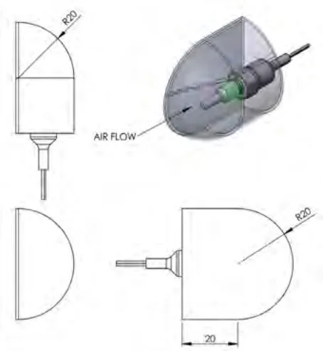</figure>
<p>13.14 Compartiment du réservoir de carburant Fuel tank compartment</p>
<p>Le réservoir de carburant complet doit être placé à l’intérieur de la cellule de survie et derrière :</p>
<p>The complete fuel tank must be positioned inside the survival cell and behind:</p>
<div class="tablewrap"><table><tr><td>le Gabarit H3.</td><td>les sièges du pilote et du
passager.</td><td>the Template H3.</td><td>the driver and passenger seats.</td></tr></table></div>
<p>Ce compartiment doit être entièrement scellé avec l’habitacle et une cloison ignifuge doit séparer la pile à combustible et les conduites de carburant de l’habitacle et du compartiment moteur. Tout trou dans la cloison coupe-feu doit être d’une taille minimale pour le passage des commandes et des câbles, et doit être complètement fermé. Le volume minimum utilisable du réservoir de carburant doit permettre à la voiture de faire 12 tours sur le circuit du Mans.</p>
<p>This compartment must be entirely sealed with the cockpit and a fireproof bulkhead must separate the fuel cell and fuel lines from the cockpit and the engine compartment. Any holes in the fireproof bulkhead must be of the minimum size for the passage of controls and cables, and must be completely sealed.  The minimum useable fuel tank volume must allow the car to make 12 laps to the Le Mans circuit.</p>
<p>13.15 Volume de l’installation de mesure du débit de carburant Fuel Flow Metering installation volume</p>
<p>13.15.1 Un volume avec des dimensions minimales doit être prévu pour l’installation du débitmètre de carburant dans une position qui ne présente pas de risque en cas d’accident. Quelles que soient les dimensions du volume d’installation, les Articles 13.15.2 et 13.15.3 doivent être respectés à tout moment.</p>
<p>A volume with minimum dimensions must be provided for installation of the Fuel Flow Meter in a position that is not at risk in case of crash. Whatever the dimensions of the installation volume, articles 13.15.2 and 13.15.3 must be fulfilled at any time.</p>
<p>13.15.2 Cet équipement doit pouvoir être remplacé individuellement, rapidement en cas de défaillance. Un remplacement au cours d’une séance (course incluse) peut être exigé à la discrétion de la FIA/ACO.</p>
<p>This equipment must be able to be exchanged individually, quickly in case of failure. A change during a session (race included) could be required at the discretion of the FIA/ACO.</p>
<p>13.15.3 Cet équipement doit être ventilé par de l’air provenant et sortant directement de l’extérieur de la voiture afin de fournir une température aussi proche que la température ambiante. La température du corps du débitmètre de carburant sera enregistrée.</p>
<p>This equipment must be ventilated by air coming directly from the outside of the car and exiting outside the car in order to provide a temperature as close as the ambient. The temperature of the fuel flow meter body will be recorded.</p>
<p>13.16 Compartiment de l’ES ES compartment</p>
<p>S’il est présent, l’ES doit être positionné : If present, the ES must be positioned</p>
<div class="tablewrap"><table><tr><td>à l’intérieur de la cellule de survie
derrière les Gabarits H3.</td><td>dans la position d’origine ou à
l’intérieur de la cellule de survie</td><td>inside the survival cell behind the
Templates H3.</td><td>in the original position or inside
the survival cell behind driver and
passenger seats.</td></tr></table></div>
<div class="tablewrap"><span class="pagemark" id="p243">P.243</span><table><tr><td></td><td>derrière les sièges du pilote et du
passager.</td><td></td><td></td></tr></table></div>
<p>L’ES doit être accessible par le bas de la cellule de survie. Ce compartiment doit être entièrement scellé avec l’habitacle et le compartiment du réservoir de carburant. L’ES doit être fixe ou intégré au panneau de fermeture de l’ES. Ce panneau doit être fixé à la cellule de survie et assurer une protection suffisante à l’ES.</p>
<p>The ES must be accessible from the bottom of the survival cell. This compartment must be entirely sealed with the cockpit and the fuel tank compartment The ES should be fixed or integrated to the ES closing panel. This panel must be attached to the survival cell and ensure sufficient protection to the ES.</p>
<p>13.17 Compartiment de l’ERS ERS compartment</p>
<p>S’il est présent, l’ERS doit être positionné : If present, the ERS must be positioned:</p>
<div class="tablewrap"><table><tr><td>à l’intérieur de la cellule de
survie.</td><td>dans la position d’origine ou à
l’intérieur de la cellule de survie.</td><td>inside the survival cell.</td><td>in the original position or inside
the survival cell.</td></tr></table></div>
<p>Ce compartiment doit être entièrement scellé par rapport à l’habitacle. Les panneaux de séparation avec l’habitacle peuvent être amovibles mais doivent pouvoir supporter une charge de 1 kN avec moins de 2 mm de déformation.</p>
<p>This compartment must be entirely sealed from the cockpit. The separation panels with the cockpit may be removable but must be able to withstand 1kN load with less than 2 mm of deformation.</p>
<p>13.18 Compartiment entre ES et ERS ES to ERS compartment</p>
<p>Le compartiment entre ES et ERS doit être entièrement scellé avec l’habitacle et le compartiment du réservoir de carburant. Tous les panneaux de séparation doivent être soumis au test de sécurité pour le compartiment de l’ES décrit dans les annexes au présent règlement.</p>
<p>An ES to ERS compartment must be entirely sealed from the cockpit and the fuel tank compartment. All the separation panels must be tested according to the safety test described for the ES compartment in the Appendixes to these Regulations.</p>
<p>13.19 Identification de la cellule de survie Survival cell identification</p>
<p>Chaque cellule de survie doit comprendre trois transpondeurs décrits dans les annexes au présent règlement à des fins d’identification. Ces transpondeurs doivent faire partie en permanence de la cellule de survie, être accessibles à tout moment pour vérification et être positionnés comme suit (+/- 60 mm) :</p>
<p>Every survival cell must incorporate three transponders described in the Appendixes to these Regulations for identification purposes. These transponders must be a permanent part of the survival cell, be accessible for verification at any time and be positioned as follow (+/- 60 mm):</p>
<p>a) au sommet de la cellule de survie dans l’alignement de l’essieu avant</p>
<p>On the top of the survival cell, in line with the front axle and on the car centreline;</p>
<p>et sur l’axe central de la voiture,</p>
<p>b) à l’intérieur de l’habitacle, sur le côté gauche, dans l’alignement du</p>
<p>Inside the cockpit on left-hand side, in line with the foremost point of the door opening and at 100 mm from the bottom of the door opening;</p>
<p>point point le plus avancé de l’ouverture de la porte et à 100 mm du bas de l’ouverture de la porte,</p>
<p>c) à l’intérieur de l’habitacle sur le côté droit, dans l’alignement du</p>
<p>Inside the cockpit on right-hand side, in line with the foremost point of the door opening and at 100 mm from the bottom of the door opening.</p>
<p>point le plus avancé de l’ouverture de la porte et à 100 mm du bas de l’ouverture de la porte.</p>
<p>13.20 Caractéristiques de la cellule de survie Survival cell characteristics</p>
<p>13.20.1 Le poids minimum de la cellule de survie est de 90 kg, compte tenu du périmètre relatif au poids décrit à l’Annexe 3.</p>
<p>The minimum weight of the survival cell is 90 Kg, considering the weight perimeter described in Appendix 3.</p>
<p>13.20.2 La hauteur minimale du centre de gravité de la cellule de survie dans les conditions ci-dessus est de 370 mm au-dessus du plan Zref.</p>
<p>The minimum CoG height of the survival cell in the above conditions is 370 mm above Zref plane.</p>
<div class="tablewrap"><table><tr><td>ART. 14</td><td>EQUIPEMENT DE SECURITE</td><td>SAFETY EQUIPMENT</td></tr></table></div>
<h5 id="14-1-G-n-ralit-s-General-2">14.1 Généralités General</h5>
<p>A titre de principle général, il est du devoir du constructeur et/ou du concurrent de démontrer que la construction de la voiture est sûre. Un dispositif doit empêcher tout mouvement propulsé de la voiture tant que le pilote n’est pas complètement assis sur son siège. Tout adhésif recouvrant l’organe de manoeuvre d’un interrupteur ou bouton poussoir de sécurité est strictement interdit.</p>
<p>As a general principle, it is the duty of the manufacturer and/or competitor to demonstrate that the car is of safe construction. A device must prevent powered movement of the vehicle whenever the driver is not fully seated in the driver’s seat. Any type of adhesive covering the lever of a switch or a push button for Safety is strictly forbidden.</p>
<p>14.2 Extincteurs Fire extinguishers</p>
<p>14.2.1 Toutes les voitures doivent être équipées d’un système d’extinction conforme à la Norme FIA 8865-2015. Le système doit être utilisé conformément aux instructions du fabricant, à la Liste Technique n°52 et à l’Annexe J - Article 253-7.2, sauf pour ce qui concerne le dispositif de déclenchement. Pour les voitures hybrides, les seuls agents extincteurs autorisés sont : Novec 1230 ou FX G-TEC FE36.</p>
<p>All cars must be equipped with an extinguishing system in compliance with FIA Standard 8865-2015. The system must be used in accordance with the manufacturer’s instructions and with Technical List n°52, and in accordance with Appendix J - Article 253-7.2 except as regards the means of triggering. For hybrid vehicle, the only permitted extinguishing medium are : Novec 1230 or FX G-TEC FE36.</p>
<p><span class="pagemark" id="p244">P.244</span>14.2.2 Tout système de déclenchement comprenant sa propre source d’énergie est autorisé, à condition qu’il soit possible d’actionner la totalité des extincteurs en cas de défaillance des circuits électriques principaux. Le pilote assis normalement, ses ceintures de sécurité étant attachées et le volant en place, doit pouvoir déclencher le système d’extinction manuellement. Par ailleurs, un dispositif de déclenchement extérieur doit être combiné avec les interrupteurs de coupe-circuit décrit à l’Article 14.16. Ils doivent être marqués de la lettre &quot;E&quot; en rouge d’une dimension minimale de 80 mm, avec une épaisseur de trait d’au moins 8 mm, à l’intérieur d’un cercle blanc à bordure rouge, d’un diamètre minimal de 100 mm et d’une épaisseur de trait d’au moins 4 mm. Cette identification doit être auto-réfléchissante.</p>
<p>Any triggering system having its own source of energy is permitted, provided it is possible to operate all extinguishers should the main electrical circuits of the car fail.  The driver must be able to trigger the extinguishing system manually when seated normally with his safety belts fastened and the steering wheel in place. Furthermore, a means of triggering from the outside must be combined with the circuit breaker switches described in Article 14.16. They must be marked with a letter &quot;E&quot; in red at least 80 mm tall, with a line thickness of at least 8 mm, inside a white circle of at least 100 mm diameter with a red edge with a line thickness of at least 4 mm. This identification must be self-reflecting.</p>
<figure></figure>
<p>Il doit y avoir deux interrupteurs externes, lesquels doivent : • être situés, chacun d’un côté de la voiture symétriquement à l’axe de cette dernière, sous une ligne sur le tableau de bord Z + 40 mm, devant le Montant A- et fixés à la cellule de survie,  être à moins de 350 mm des ouvertures de porte,  être conçus de telle sorte qu’un commissaire de piste ne puisse</p>
<p>There must be two external switches, that must:  be located, one on each side of the car symmetrically to the car centre line, below a line under Z dashboard +40 mm, in front of the A-Pillar and fixed to the survival cell;  be less than 350 mm from the door openings;  be designed such that a marshal is unable to accidentally</p>
<p>pas remettre accidentellement sous tension le circuit de puissance,  être équipés d’une poignée ou d’un anneau horizontal qui peut</p>
<p>reenergise the power circuit,   be fitted with a horizontal handle or ring that can be operated</p>
<p>être actionné à distance par un crochet.</p>
<p>from a distance by a hook.</p>
<p>14.2.3 Tous les ajutages des extincteurs doivent être installés de façon à ce qu’ils ne soient pas directement dirigés vers le pilote.</p>
<p>All extinguisher nozzles must be installed in such a way that they are not directly pointed at the driver.</p>
<p>14.3 Interrupteur général du pilote Driver Master switch</p>
<p>14.3.1 Le pilote assis normalement, sa ceinture de sécurité étant attachée et le volant en place, doit pouvoir couper les circuits électriques concernant l’allumage, toutes les pompes à carburant et le système ERS au moyen d’un interrupteur de coupe-circuit antidéflagrant. L’interrupteur doit être protégé mécaniquement de tout enclenchement accidentel. Cet interrupteur doit être situé sur le tableau de bord et clairement signalé par un symbole montrant un éclair rouge dans un triangle bleu à bordure blanche. Le fonctionnement est précisé à l’Annexe J – Article 253-18.16 (sauf le contrôle &quot;rampage&quot;) et dans le Dessin n°10. Le Dessin n°10 est donné à titre d’illustration, le détail et la disposition sont à la discrétion du concurrent, cependant les configurations électriques suivantes doivent être possibles : P0 – L’alimentation électrique de la voiture est coupée. P1 – L’alimentation principale est fournie mais le véhicule ne peut pas se déplacer (ES et moteur non alimentés). P2 – La voiture peut se déplacer (feux de position avant et arrière allumés).</p>
<p>The driver, when seated normally with the safety belts fastened and the steering wheel in place, must be able to cut off the electrical circuits to the ignition, all fuel pumps, and the ERS System by means of a spark proof circuit breaker switch. The switch must be mechanically protected against accidental engaging. This switch must be located on the dashboard and must be clearly marked by a symbol showing a red spark in a white edged blue triangle. The operation is specified in Appendix J – Article 253-18.16 (Except the &quot;creep&quot; control) and in Drawing N°10. Drawing No10 is for illustrative purposes, the detail and layout is upto the competitor, however the following electrical states must be possible: P0 – All car electrical power is off P1 – Main power is supplied but the vehicle is unable to move (ES and Engine not powered) P2 – The car is able to move (front and rear day-light position lights ON)</p>
<p>14.4 Rétroviseurs Rear view mirrors</p>
<p>14.4.1 Toutes les voitures doivent être équipées de deux rétroviseurs montés de telle sorte que le pilote puisse voir l’arrière et les deux côtés de la voiture.</p>
<p>All cars must have two mirrors mounted so that the driver has visibility to the rear and both sides of the car.</p>
<p>14.4.2 La surface réfléchissante de chaque rétroviseur ne doit pas être supérieure à 100 cm².</p>
<p>The reflective surface of each mirror must be greater than 100 cm².</p>
<p>14.4.3 Les Délégués Techniques FIA/ACO doivent pouvoir avoir la démonstration pratique que le pilote assis normalement peut clairement distinguer les véhicules qui le suivent. A cet effet, il sera demandé au pilote d’identifier toute lettre ou chiffre de 75 mm de haut et 50 mm de large, placés sur des tableaux</p>
<p>The FIA/ACO technical delegates must be satisfied by a practical demonstration that the driver, when seated normally, can clearly define following vehicles.</p>
<p><span class="pagemark" id="p245">P.245</span>situés en tout point derrière la voiture, et dont la position est précisée ci-dessous : Hauteur :  entre 400 mm et 1000 mm du sol. Largeur  :  de 0 à 5000 m d’un côté ou de l’autre de l’axe de la</p>
<p>For this purpose, the driver shall be required to identify any letter or number, 75 mm high and 50 mm wide, placed anywhere on boards behind the car, the positions of which are detailed below: Height : From 400 mm to 1000 mm from the ground. Width : From 0 to 5000mm either side of the car centre plane.    It will be permitted to use rear view camera from 0 mm</p>
<p>voiture.   Le recours à la caméra de vision arrière de 0 à 2000 mm  sera permis. Position  : à 5 mètres derrière l’axe de l’essieu arrière de la voiture.</p>
<p>to 2000 mm. Position : 5 m behind the rear wheel centre line.</p>
<p>14.4.4 Les rétroviseurs doivent comprendre un mode jour/nuit. Ceci peut être réalisé au moyen d’un film.</p>
<p>There must be a day/night mode for the rear-view mirrors. It may be done with a film.</p>
<p>14.4.5 L’utilisation d’un système de caméra pour la vision arrière est obligatoire. La caméra et l’écran doivent avoir un mode jour/nuit. La caméra peut dépasser au-dessus de la hauteur maximum réglementaire de la carrosserie à condition qu’une autorisation spécifique soit donnée lors de l’homologation de la voiture. L’objectif de leur conception ne doit pas être d’assurer un avantage aérodynamique. L’écran de vision arrière doit être installé dans l’habitacle suivant les prescriptions de l’Art. 13.11.2. Ses fixations doivent résister à une décélération minimale de 25 g dans n&#x27;importe quelle direction.</p>
<p>The usage of a rear view camera system is mandatory. The camera and display must have a day/night mode.  The camera is allowed to protrude over the maximum height of the car at the condition that a specific allowance is given during Homologation of the car. The purpose of their design cannot be to provide any aerodynamic benefit.  The rear view camera display must be fitted in the cockpit according to Art. 13.11.2. Its fixation must withstand a minimum of 25g deceleration in any direction.</p>
<p>14.5 Ceintures de sécurité Safety belts</p>
<p>Les points de fixation des ceintures de sécurité doivent être approuvés par la FIA conformément à la procédure d’approbation des structures de sécurité pour les voitures de sport. Les ancrages des sangles d’épaules doivent être installés de telle sorte qu’ils fournissent aux ceintures un angle recommandé entre 0 et 5° (vers le bas) par rapport à l’horizontale lorsque le pilote est assis en condition de course. Les points d’ancrage des sangles d’épaules sur la voiture doivent être symétriques par rapport à l’axe central du siège du pilote. Vu de dessus, il est recommandé que l’angle de convergence entre les ceintures soit d’environ 20°-25° et ne soit jamais hors de la plage 10°- 25°. Les ceintures de sécurité conformes à la Norme FIA 8853-2016 (Liste Technique n°57) sont obligatoires. Les sangles doivent être solidement fixées à la voiture. Un seul kit de ceintures de sécurité doit être utilisé conformément à l’Annexe J – Article 253.6.3.</p>
<p>Safety belt mounting points must be approved by the FIA in accordance with the procedure for the approval of safety structures for sports cars. The shoulder belts anchorage must be installed such that they provide to the belts a recommended angle between 0 and 5° (down) in reference with horizontal when the driver in seated in racing conditions. The shoulder belt anchorage points on the car shall be symmetrical about the centre line of the driver’s seat. When viewed from above, it is recommended that the converging angle between the belts be approximately 20°-25° and never out of the 10°-25° range.  Safety belts in compliance with FIA Standard 8853-2016 (Technical List n°57) are compulsory. Straps must be securely fixed to the car. A single kit of safety belts must be used according to Appendix J - Article 253.6.3.</p>
<p>14.6 Rembourrage de l’habitacle au niveau de la tête Cockpit head padding</p>
<p>14.6.1 Toutes les voitures doivent être équipées d’une zone de rembourrage destinée à protéger la tête du pilote qui :</p>
<p>All cars must be equipped with an area of padding for the driver’s head which:</p>
<p>a) doit respecter les dimensions du Dessins 14A, must respect the dimensions from Drawing 14A.</p>
<div class="tablewrap"><table><tr><td>a une surface horizontale
inférieure positionnée à 565 mm
du plan Zref.</td><td></td><td>must have its lower horizontal
surface positioned 565 mm from
Zref plane.</td><td></td></tr></table></div>
<p>c) doit être centrée par rapport au siège, must be centered with the seat.</p>
<p>d) est disposée de manière à pouvoir être retirée de la voiture en trois</p>
<p>Are so arranged that they can be removed from the car as three parts (driver’s door, behind the driver and the rearmost side part, the foremost side part).</p>
<p>parties (la porte du pilote, derrière le pilote et la partie latérale la plus en arrière, la partie latérale la plus en avant).</p>
<p>e) La partie arrière du repose-tête doit être fixée par deux chevilles</p>
<p>The rear part of the headrest must be located by two horizontal pegs and two quick release fixings, which are clearly indicated and easily removable without tools. No tape or similar material may be used to cover the fixings of the headrest.</p>
<p>horizontales et deux fixations à déverrouillage rapide, qui sont clairement indiquées et facilement amovibles sans outils. Aucun ruban adhésif ou matériau similaire ne peut être utilisé pour recouvrir les fixations du repose-tête.</p>
<p>f) est fabriquée à partir d’un matériau figurant dans la Liste</p>
<p>Are made from a material featuring in the FIA Technical List 17 (Headrest materials for Sports Cars).</p>
<p>Technique n°17 de la FIA (Matériaux de repose-tête pour les voitures de sport).</p>
<p>g) est recouverte, à tous les endroits que la tête du pilote est</p>
<p>Are covered, in all areas where the driver’s head is likely to make contact, with two plies of Aramid fibre/epoxy resin composite pre- preg material in plain either both consisting of 60 g/m² fabric, or consisting of one 60g/m² fabric and one 170g/m² fabric, with a cured resin content of 50% (+/-5%) by weight.</p>
<p>susceptible de toucher, de deux couches de matériau composite préimprégné de fibre aramide/résine époxy en tissu à armure toile, soit les deux étant constituées de 60 g/m², soit étant constituées</p>
<p><span class="pagemark" id="p246">P.246</span>d’une de 60g/m² et l’autre de 170g/m², d’une teneur en résine polymérisée de 50 % (+/-5 %) en poids ;</p>
<p>h) Aucun traitement de surface sur la protection en aramide n’est</p>
<p>No surface treatment on aramid cover is permitted except paint and additional flock spraying on the contact surface to the helmet. The used product must be capable to minimize the friction of the surface when in contact with the helmet.</p>
<p>autorisé, peinture et flocage additionnel sur la surface de contact avec le casque exceptés. Le produit utilisé doit être capable de réduire la friction de la surface quand il est en contact avec le casque.</p>
<p>i) ne doit pas présenter dans les zones de discontinuité de matière</p>
<p>must not present discontinuity area of material (removal parts, door) more than 10 mm between all parts.</p>
<p>(parties amovibles, portière) une distance de plus de 10 mm entre les pièces constitutives.</p>
<p>j) ne doit pas avoir d’évidement pour le Système de Retenue Frontale</p>
<p>must have no recess for the Frontal Head Restraint device.</p>
<p>de la Tête.</p>
<p>k) S’il est nécéssaire que la partie latérale côté passager soit mobile, au</p>
<p>If it is necessary to design the lateral part on passenger side as mobile, at least one proximity sensor is mandatory to forbid the start of the ICE and any powering electrical motor unless the protection is in full safe and locked position.</p>
<p>moins un capteur de proximité est obligatoire pour interdire le démarrage du moteur à combustion interne et de tout moteur à propulsion électrique de propulsion tant que la remise en position de sécurité de la protection n’est pas assurée correctement.</p>
<p>l) doit être approuvée par la FIA conformément à la procédure</p>
<p>must be approved by the FIA in accordance with the approval procedure of safety structures for sports cars. The minimum notice is 8 weeks from the foreseen test dates.</p>
<p>d’approbation des structures de sécurité pour les voitures de sport. Le délai minimum de notification est de 8 semaines par rapport aux dates d’essai envisagées.</p>
<p>14.6.2 La première zone de rembourrage destinée à protéger la tête du pilote doit être positionnée derrière le pilote et doit avoir une épaisseur de 85 mm. Si nécessaire, et uniquement pour le confort du pilote, une pièce supplémentaire de rembourrage d’une épaisseur inférieure à 10 mm peut être attachée au repose-tête à condition qu’elle soit fabriquée dans le même matériau.</p>
<p>The first area of headrest for the driver’s head must be positioned behind him and be 85 mm thick. If necessary, and only for driver comfort, an additional piece of padding no greater than 10mm thick may be attached to this headrest provided it is made from the same material which incorporates a low friction surface.</p>
<p>14.6.3 La seconde zone de rembourrage destinée à protéger la tête du pilote doit être positionnée et doit avoir une épaisseur de 85 mm. Si nécessaire, et uniquement pour le confort du pilote, une pièce supplémentaire de rembourrage d’une épaisseur inférieure à 20 mm peut être attachée au repose-tête à condition qu’elle soit fabriquée dans le même matériau. En outre, tout vide entre ces zones de rembourrage et la zone décrite à l’Article 14.6.2 doit également être complètement rempli avec le même matériau. Des adaptations de la section des parties latérales avant sont admises dans la zone décrite &quot;ZONE ARM&quot; (Dessin 14A) à la condition de respecter dans toute section verticale transversale une surface mimimum de 1500 mm2.</p>
<p>The second area of padding for the driver’s head must be positioned on both sides and be 85 mm thick. If necessary, and only for driver comfort, an additional piece of padding no greater than 20mm thick may be attached to this headrest provided it is made from the same material which incorporates a low friction surface.  Furthermore, any void between these areas of padding and the area described in Article 14.6.2 must also be completely filled with the same material. Adaptation of the section of the forward lateral parts will be allowed in the area described &quot;ZONE ARM&quot; (Drawing 14A) providing that in any vertical transversal section a minimum area of 1500 mm² is respected.</p>
<p>14.6.4 Tout le rembourrage ci-dessus décrit doit être installé de telle façon que, s’il arrivait que la tête du pilote, par mouvement, selon une trajectoire donnée lors d’un accident, doive comprimer totalement la mousse en un point quelconque de la surface, son casque n’entrerait pas en contact avec une partie structurelle quelconque de la voiture.</p>
<p>All of the padding described above must be so installed that if movement of the driver’s head, in any expected trajectory during an accident, were to compress the foam fully at any point, his helmet would not make contact with any structural part of the car.</p>
<p>14.7 Rembourrage de l’habitacle au niveau des jambes Cockpit leg padding</p>
<p>14.7.1 Afin de réduire au maximum les risques de blessure aux jambes en cas d’accident, des zones de rembourrage supplémentaires devront être fixées de chaque côté et au-dessus des jambes du pilote. La section verticale transversale minimale du côté pilote doit être conforme au Dessin 13A.</p>
<p>In order to minimise the risk of leg injury during an accident, additional areas of padding must be fitted each side of, and above, the driver’s legs. The vertical transversal minimum section on driver side must conform to Drawing 13A.</p>
<p>14.7.2 Ces zones de rembourrage devront : These areas of padding must:</p>
<p>a) être faites d’un matériau figurant dans la Liste Technique n°17 de la</p>
<p>Be made from a material featuring in the FIA Technical List 17 (Headrest materials for Sports Cars).</p>
<p>FIA (Matériaux de repose-tête pour voitures de sport).</p>
<p>b) être d’une épaisseur minimale de 25 mm sur l’ensemble de leur</p>
<p>Be no less than 25mm thick over their entire area.</p>
<p>surface ;</p>
<p>c) s’étendre sur une surface située entre 100 mm en arrière de la</p>
<p>Extend between 100 mm rearward from rearmost position of the pedals (foot pad) and 150 mm forward of the steering wheel reference described in Article 13.4.</p>
<p>position la plus reculée des pédales (cale-pied) et 150 mm en avant de la référence du volant décrite à l’Article 13.4.</p>
<p>d) recouvrir la hauteur décrite à l’Article 13.6.1 Cover the height described in Article 13.6.1.</p>
<p>e) supporter une charge de 7KN appliquée dans l’axe Y à partir du</p>
<p>Support a load of 7KN applied in the Y axis from the free leg volume outwards at the center of the area by a 100 mm diameter hemispherical pad.</p>
<p>volume libre pour les jambes vers l’extérieur au centre de la zone par un poussoir hémisphérique de 100 mm de diamètre.</p>
<p><span class="pagemark" id="p247">P.247</span>Des modifications locales et/ou un ajustement du rembourrage pour les jambes de l’habitacle peuvent être autorisés sous réserve de l’approbation de la FIA/ACO.</p>
<p>Local modifications and/or trimming of the cockpit leg padding may be authorized subject to FIA/ACO approval.</p>
<p>14.8 Retenue de roue Wheel retention</p>
<p>Un système de maintien des roues assurant une retenue automatique de sécurité de l’écrou doit être installé. Le constructeur doit démontrer la robustesse du système. Le mécanisme de maintien des roues doit résister à un couple de désserrage statique de 30 % du couple de serrage nominal. Le mécanisme doit réussir un test statique lors de la procédure d&#x27;homologation.</p>
<p>A method of retaining the wheels providing an automatic safety retain of the nut must be installed. The manufacturer must demonstrate the robustness of the system. The retention mechanism has to withstand a static loosening torque of 30% of the nominal tightening torque. The mechanism must pass a static test during the homologation procedure.</p>
<div class="tablewrap"><table><tr><td>The retention mechanism has to withstand a static loosening torque</td><td></td></tr><tr><td>of 30% of the nominal tightening torque. The mechanism must pass</td><td></td></tr><tr><td>a static test during the homologation procedure.</td><td></td></tr></table></div>
<p>14.9 Câbles de retenue des roues Wheel tethers</p>
<p>14.9.1 Afin de contribuer à éviter qu’une roue se détache en cas de défaillance de tous les bras de suspension qui la relient à la voiture, des câbles flexibles doivent être adaptés. Le seul objectif de ces câbles est d’empêcher qu’une roue se détache de la voiture, ils ne doivent pas avoir d’autres fonctions.</p>
<p>In order to help prevent a wheel becoming separated in the event of all suspension members connecting it to the car failing provision must be made to accommodate flexible tethers. The sole purpose of the tethers is to prevent a wheel becoming separated from the car, they must perform no other function.</p>
<p>14.9.2 Ces câbles et leurs fixations doivent également être conçus de façon à permettre d’éviter qu’une roue entre en contact avec le pare-brise en cas d’accident.</p>
<p>The tethers and their attachments must also be designed in order to help prevent a wheel making contact with the windscreen during an accident.</p>
<p>14.9.3 Chaque roue doit être équipée de deux câbles de retenue. Chaque câble doit être homologué conformément à :  • Autorisé jusqu’à fin 2026 : la Norme FIA 8864-2013 (Liste Technique n°37 de la FIA), avoir une longueur minimale de 400 mm et une capacité d’absorption d’énergie d’au moins 8 kJ sur les 400 premiers millimètres de déplacement. • Recommandé pour 2026 et obligatoire à partir de 2027 : la Norme FIA 8864-2022 (Liste Technique n°93 de la FIA), respecter la classe de longueur correspondant au modèle (selon l’homologation), avoir une capacité d’absorption d’énergie d’au moins 7 kJ et enregistrer une force maximale lors de l’homologation ne dépassant pas 80 kN. La norme adoptée doit être la même pour tous les câbles de la voiture.</p>
<p>Each wheel must be fitted with two tethers. Each tether must be homologated in accordance with:  • Authorised until the end of 2026: FIA Standard 8864-2013 (FIA Technical List 37), having a minimum length of 400 mm and an energy-absorption capacity of at least 8kJ over the first 400mm of displacement.  • Recommended for 2026 and mandatory from 2027: FIA Standard 8864-2022 (FIA Technical List 93), respecting the model-relevant length class (as per homologation), having an energy-absorption capacity of at least 7kJ and registering a peak force during homologation no greater than 80kN.  The standard adopted must be consistent among all the tethers on the car.</p>
<p>14.9.4 Chaque câble doit avoir ses propres fixations séparées aux deux extrémités, lesquelles doivent :  pouvoir résister à une force de tension de 80 kN dans toute</p>
<p>Each tether must have its own separate attachments at both ends which:  are able to withstand a tensile force of 80 kN in any direction</p>
<p>direction dans un cône de 45° (angle y compris) mesurés depuis la ligne de charge du bras de suspension concerné ; • être séparées d’au moins 100 mm (mesurés entre les centres des deux points de fixation) sur la cellule de survie ou la boîte de vitesses ; • être séparées d’au moins 90° radialement par rapport à l’axe de la roue et au moins 100 mm (mesurés entre les centres des deux points de fixation) sur chaque assemblage roue/porte-moyeux; • accueillir des fixations d’extrémité de câble d’un diamètre intérieur minimal conforme à l’indication de l’étiquette d’homologation du câble si celui-ci est conforme à la Norme FIA 8864-2013 ou égal à 15 mm si celui-ci est conforme à la Norme FIA 8864-2022.</p>
<p>within a cone of 45° (included angle) measured from the load line of the relevant suspension member.  are separated by at least 100mm (measured between the centres of the two attachment points) on the survival cell or gearbox.   are separated by at least 90° radially with respect to the axis of the wheel and at least 100mm (measured between the centres of the two attachment points) on each wheel/upright assembly.  are able to accommodate tether end fitting loops with a minimum inside diameter according to the indication on the homologation label on the cable if following FIA Standard 8864-2013, or equal to 15 mm if following FIA Standard 8864-2022.</p>
<p>14.9.5 De plus, aucun bras de suspension ne peut contenir plus d’un câble. Furthermore, no suspension member may contain more than one</p>
<p>tether.</p>
<h5 id="14-10-Si-ge-Seat-2">14.10 Siège Seat</h5>
<p>Le maintien latéral et dorsal du pilote doit être assuré par le siège et les surfaces d’appui fondamentales doivent respecter les dimensions stipulées sur le Dessin n°14-B. La face supérieure du support de l’épaule doit être horizontale et à 530 mm du plan Zref. Il est recommandé que la forme de l’appui dorsal vise un angle de 55° tangent à L1 sur la colonne vertébrale. Le(s) support(s) latéraux et dorsaux du corps doit(doivent) être approuvé(s) par la FIA conformément à la procédure d’approbation des structures de sécurité pour les voitures de sport. Le délai</p>
<p>The driver’s lateral and dorsal support must be achieved by the seat and the basic areas of support must be in compliance with dimensions on Drawing n°14-B. The top face of the shoulder support must be horizontal and at 530 mm from Zref plane. It is recommended that the shape of the dorsal support targets an angle of 55° tangent at L1 on spine. The lateral and dorsal body supports must be approved by the FIA in accordance with the approval procedure of safety structures for sports cars. The minimum notice is 8 weeks from the foreseen test dates.</p>
<p><span class="pagemark" id="p248">P.248</span>minimum de notification est de 8 semaines par rapport aux dates d’essai envisagées. Tout insert de siège doit être fait d’un matériau conforme aux spécifications de la Liste Technique n°50 de la FIA.</p>
<p>Any seat insert must be made from a material featuring in FIA Technical List n°50.</p>
<p>14.11 Systèmes de Retenue Frontale de la Tête Frontal Head Restraints</p>
<p>Aucun Système de Retenue Frontale de la Tête porté par un pilote ne peut être à moins de 25 mm d’une quelconque partie structurelle de la voiture quand il est assis en position normale de pilotage.</p>
<p>No Frontal Head Restraint worn by the driver may be less than 25 mm from any structural part of the car when he is seated in his normal driving position.</p>
<p>14.12 Anneaux de remorquage Towing eyes</p>
<p>Les anneaux de remorquage avant et arrière doivent : • être conçus de telle sorte que leur température soit inférieure à 50° à tout moment ; • être rigides, en acier, sans risque de rupture, mesurer entre 80 et 100 mm de diamètre intérieur et 5 mm minimum d’épaisseur (section arrondie pour ne pas sectionner ou endommager les sangles utilisées par les commissaires de piste) ; • être solidement fixés au châssis/structure au moyen d’une pièce rigide en métal (câbles interdits) ; • rester dans le contour de la carrosserie vue de dessus ; • être visibles de l’extérieur, facilement identifiables et peints en jaune, rouge ou orange ; ils doivent avoir une flèche de couleur distinctive et auto-réflechissante pointant le point où l’anneau est préhensible. • permettre de tirer une voiture immobilisée dans un bac à graviers. Si les anneaux de remorquage sont intégrés à la carrosserie, ils doivent être équipés d’une poignée ou ruban pour permettre leur extraction par des commissaires de piste équipés de gants. Cette poignée ou ruban doit être de couleur contrastée par rapport à la carrosserie. Il est strictement interdit de recouvrir les anneaux de remorquage.</p>
<p>Front and rear towing eyes must:  be designed such that the temperature of the towing eyes is less than 50° at anytime;  be rigid, made from steel, with no chance of breaking, have an inner diameter between 80 mm and 100 mm and be 5 mm minimum thick (round section for not cutting or damaging the straps used by the marshals);  be securely fitted to the chassis/structure by means of a metallic rigid piece (cable hoops are not permitted);  be within the perimeter of the bodywork as viewed from above;  be visible from outside, easily identified and painted in yellow, red or orange; they must have an arrow (of signal color and self- reflecting) on the bodywork which shows the point where to grab the eye.  allow the towing of a car stuck in a gravel bed. If towing eyes are integrated in the bodywork, there must be a tape/handle to bring them out for marshals with gloves on. This tape/handle must be of signal colour. Covering towing eyes is strictly forbidden.</p>
<p>14.13 Dispositif de levage Lifting devices</p>
<p>Deux points d’ancrage sont obligatoires sur le toit de la voiture afin de pouvoir la soulever à l’aide d’une grue. Ces points d’ancrage doivent être constitués de 2 bagues intégrées à la structure supérieure de la voiture (cf. Liste Technique 104). Ils doivent permettre de lever la voiture à 1,5 mètre au-dessus du sol en toute sécurité. L’angle de la voiture doit être inférieur à 25° avec la voiture complète et le réservoir de carburant à moitié plein. L’accès aux bagues de levage doit être facile et leurs emplacements indiqués comme suit :  avec un cercle de 5 mm d’épaisseur autour de l’ouverture (couleur</p>
<p>Two anchor points are mandatory on the top of the car in order to lift it with a crane. These anchor points must be 2 lifting bushes integrated in the structure of the top of the car (see Technical List 104).  They must permit the car to be lifted safely on an altitude of 1.5 meters above ground. The car angle must be less than 25° with car complete with mid fuel tank. The access to the bushes must be easy and location specifically marked as follows:  with a circle of 5mm thick (of signal colour and self-reflecting)</p>
<p>distinctive et auto-réfléchissante). Dans le cas où les ouvertures ne sont pas visibles de côté, des flèches (couleur distinctive et auto- réfléchissante) doivent être apposées pour les rendre visibles (une par côté).  La surface d’ouverture doit être couverte pour éviter tout risque</p>
<p>around the opening. In case the bushes are not visible from the side, arrows (of signal colour and self-reflecting) must be used on each side to make them visible from the side (one per side).   The opening area must be covered to avoid risk of possible track</p>
<p>qu’un débris de piste ne fasse obstacle à l’insertion du pion de levage en cas de besoin. L’adhésif recouvrant l’ouverture doit permettre une insertion correcte et complète du pion sans effort ou doit être aisément retirable par un commissaire équipé de gants. Tout couvercle rigide est interdit.</p>
<p>debris to contravene insertion of lifting pin in case of need. The covering sticker needs to allow correct and complete insertion of lifting pin without effort or needs to be easily pealable by a marshal wearing gloves. Any kind of rigid cover is forbidden.</p>
<p>14.14 Sécurité électrique générale General electrical safety</p>
<p>Les spécifications sont fixées à l’Annexe J – Article 253-18.1 (sauf pour le 18.1.f). La tension de crête maximale sur la voiture ne doit jamais dépasser 1000V sauf sur les câbles de phases MGU.</p>
<p>Specifications are laid down in Appendix J – Article 253-18.1 (except for 18.1.f). The maximum peak voltage on the car must never exceed 1000V except on MGU-phases cables.</p>
<p>14.15 Boîtier de contrôle électronique Electronic Control Unit</p>
<p>L’ECU doit être conçu pour fonctionner à partir d’un système d’alimentation de la voiture fourni par une batterie auxiliaire et à travers le circuit auxiliaire, tel que défini à l’Article 8.3.2.</p>
<p>The ECU must be designed to run from a car supply system provided by an auxiliary battery and through the auxiliary circuit, as defined by Article 8.3.2.</p>
<p>14.16 Coupe-circuit général General Circuit Breaker</p>
<p>Les spécifications sont fixées à l’Annexe J – Article 253 18 (18.17 sauf pour 18.17.c)-d)-f)).</p>
<p>Specifications are laid down in Appendix J – Article 253 18 (18.17 except for 18.17.c)-d)-f)).</p>
<p><span class="pagemark" id="p249">P.249</span>Voir le Dessin 10 pour le schéma général des interrupteurs. Les véhicules doivent être équipés d’un coupe-circuit général d’une capacité suffisante pouvant être actionné facilement par un bouton déclencheur depuis le siège du pilote assis en position normale et droite, les ceintures de sécurité attachées et le volant en place et depuis l’extérieur pour couper tous les dispositifs de transmission électrique.</p>
<p>See Drawing 10 for the general switching diagram. All vehicles must be equipped with a general circuit breaker, of a sufficient capacity and which can be operated easily by a trigger button from the driver’s seat when the driver is seated in a normal and upright position, with the safety belts fastened and the steering wheel in place, and from the outside, to cut off all electric transmission devices.</p>
<p>14.16.1 Interrupteurs du point mort et du coupe-circuit général Neutral and general circuit breaker switches</p>
<p>L’interrupteur externe du point mort et le coupe-circuit général (visé à l’Article 14.16) doivent être regroupés en un seul interrupteur afin qu’un commissaire de piste puisse déconnecter la transmission et éteindre tous les dispositifs électriques depuis l’extérieur. Ils doivent :</p>
<p>The external neutral switch and the general circuit breaker switch (according to Article 14.16) must be coupled in a single switch so that a marshal can disengage the clutch and switch off all electric devices from the outside. They must:</p>
<p>a) être identiques, chacun d’eux situé de chaque côté de la voiture</p>
<p>Be two identical switches, each of them located on each side of the car symmetrically to the car centre line, below a line under Z dashboard + 40 mm, in front of the A-Pillar and fixed to the survival cell,</p>
<p>symétriquement à l’axe de cette dernière, sous une ligne sur le tableau de bord Z + 40 mm, devant le Montant A- et fixés à la cellule de survie,</p>
<p>b) être à moins de 350 mm des ouvertures de portes, be less than 350 mm from the door openings,</p>
<p>c) être à moins de 70 mm des interrupteurs d’extincteurs définis à</p>
<p>be less than 70 mm from the extinguisher switches defined in Article 14.2.2,</p>
<p>l’Article 14.2.2,</p>
<p>d) être équipés d’un bouton poussoir ou d’une manette, be of the type push button or lever,</p>
<p>e) avec le dispositif défini ci-dessus, with the device defined as above,</p>
<p>f) couper tous les circuits électriques (circuits auxiliaire et de</p>
<p>switch off all electrical circuits (auxiliary and power circuits) inside the car and to isolate the ES from the power circuit,</p>
<p>puissance) à l’intérieur de la voiture et isoler l’ES du circuit de puissance,</p>
<p>g) être conçus de telle sorte qu’un commissaire de piste ne puisse pas</p>
<p>be designed such that a marshal is unable to accidentally re-energize the power circuit,</p>
<p>accidentellement réactiver le circuit de puissance.</p>
<p>h) Les interrupteurs doivent être marqués avec deux autocollants auto-</p>
<p>The switches must be marked with two self-reflecting stickers as follows: - a red spark in a white-edged blue triangle. The angle of the triangle</p>
<p>réfléchissants comme suit : - un éclair rouge à l’intérieur d’un triangle bleu à bords blancs.</p>
<p>L’angle du triangle vers lequel pointe l’éclair doit être dirigé vers le contacteur. - une lettre &quot;N&quot; en bleu d’au moins 40 mm de hauteur, avec une</p>
<p>where the spark is pointing to, must point to the switch. - a letter &quot;N&quot; in blue at least 40mm tall, with a line thickness of at least 4 mm, inside a white circle of at least 50mm diameter with a blue edge with a line thickness of at least 2 mm. -  The height of both symbols must be at least 100 mm.  It is prohibited to cover this switch/button in any way whatsoever.</p>
<p>épaisseur de ligne d’au moins 4 mm, à l’intérieur d’un cercle blanc à bordure bleu d’un diamètre minimal de 50 mm et d’une épaisseur de ligne d’au moins 2 mm. - La hauteur des deux symboles doit être d&#x27;au moins 100 mm. Il est interdit de recouvrir ces interrupteurs/boutons de quelque manière que ce soit.</p>
<figure></figure>
<p>En cas d’accident, toutes les sources d’énergie du circuit de puissance doivent être éteintes automatiquement par des contacteurs ou des interrupteurs électriques et l’ES doit être entièrement isolé. Ces dispositions doivent être validées par l’analyse des modes de défaillance soumise à l’homologation. Les spécifications générales sont fixées à l’Annexe J – Articles 251- 3.1.14.1.c et 253-18.18.</p>
<p>In a crash, all energy sources of the Power Circuit must be switched off automatically by electric switches or contactors and the full ES must be isolated. Those arrangements must be validated by the failure mode analysis submitted by the homologation. General specifications are laid down in Appendix J – Article 251-3.1.14.1.c and Article 253-18.18.</p>
<p>14.17 Câbles, lignes, équipements électriques Cables, lines, electrical equipment</p>
<p>Les spécifications sont fixées à l’Annexe J – Article 253 (18.2.a n’est pas applicable). Les canalisations de frein, les câbles électriques et les équipements électriques doivent être protégés contre tout dommage (projection de pierres, corrosion, panne mécanique, etc.) s’ils sont placés à</p>
<p>The specifications are laid down in Appendix J – Article 253 (18.2.a is not applicable). Brake lines, electrical cables and electrical equipment must be protected against any risk of damage (stones, corrosion, mechanical</p>
<p><span class="pagemark" id="p250">P.250</span>l’extérieur de la carrosserie et contre tout risque d’incendie ou de choc électrique s’ils sont placés à l’intérieur de la carrosserie. Tous les câbles électriques fonctionnant avec une tension supérieure à 60 V doivent rester à l’intérieur du plan X/Y au-dessus du plan de référence de la cellule de survie.</p>
<p>failure, etc.) when fitted outside the vehicle, and against any risk of fire and electrical shock when fitted inside the bodywork.  All electrical cables working with a voltage over 60 V must stay inside the X/Y plan above the survival cell reference plane.</p>
<p>14.18 Protection contre les chocs électriques Protection against electrical shock</p>
<p>La protection doit être assurée selon l’Article 253-18.7 de l’Annexe J, à l’exception de l’Article 253 18.7.e.</p>
<p>Protection must be guaranteed according to Appendix J – Article 253-18.7, except Article 253 18.7.e.</p>
<p>14.19 Liaison équipotentielle Equipotential bonding</p>
<p>Pour limiter les effets du mode de défaillance dans lequel une haute tension est couplée en AC sur le système basse tension de la voiture, il est impératif que toutes les principales pièces conductrices de la carrosserie aient une liaison équipotentielle au châssis de la voiture via des câbles ou des pièces conductrices de dimensions appropriées. Voir Annexe J – Article 253-18.8.</p>
<p>To mitigate the failure mode where a high voltage is AC coupled onto the car’s low voltage system, it is mandatory that all major conductive parts of the body are equipotentiality bonded to the car chassis with wires or conductive parts of an appropriate dimension. See Appendix J – Article 253-18.8.</p>
<p>14.20 Exigences en matière de résistance d’isolement Isolation resistance requirements</p>
<p>Tout élément actif électriquement doit être protégé contre tout contact accidentel, conformément à l’Annexe J – Article 253-18.9.</p>
<p>All electrically live parts must be protected against accidental contact as laid down in Appendix J – Article 253-18.9.</p>
<p>14.21 Mesures de protection supplémentaires pour le circuit AC Additional protection measures for the AC circuit</p>
<p>Des mesures de protection supplémentaires sont prévues à l’Annexe J – Article 253-18.9.1.</p>
<p>Additional protection measures are laid down in Appendix J – Article 253-18.9.1.</p>
<p>14.22 Surveillance de l’isolation du châssis et du circuit de puissance Isolation surveillance of chassis and power circuit</p>
<p>Un système de surveillance de l’isolation doit être utilisé pour contrôler le statut de la barrière d’isolation entre le système de classe de tension B et le châssis. Les configurations sont prévues dans l’Annexe J – Article 253-18.10.</p>
<p>An isolation surveillance system must be used to monitor the status of the isolation barrier between the voltage class B system and the chassis. Configurations are laid down in Appendix J – Article 253-18.10.</p>
<p>14.23 Circuit de puissance Power circuit</p>
<p>Les spécifications des circuits de puissance sont fixées à l’Annexe J – Article 253-18.11.</p>
<p>Power circuit specifications are laid down in Appendix J – Article 253- 18.11.</p>
<p>14.24 Faisceau de puissance Power bus</p>
<p>Les spécifications sont fixées à l’Annexe J – Article 253-18.12. Specifications are laid down in Appendix J – Article 253- 18.12.</p>
<p>14.25 Câblage du circuit de puissance Power circuit wiring</p>
<p>Le circuit de puissance comprend l’ES, le convertisseur (onduleurs) pour la propulsion, le(s) contacteur(s) du coupe-circuit général, les fusibles, le(s) générateur(s) et le(s) moteur(s) de propulsion. Toutes les spécifications des câbles sont fixées à l’Annexe J – Article 253-18.13.</p>
<p>The power circuit comprises the ES, the converter (chopper) for the drive motor(s), the contactor(s) of the general circuit breaker, fuses, the generator(s) and the drive motor(s). All cable and wire specifications are laid down in Appendix J – Article 253-18.13.</p>
<p>14.26 Connecteurs du circuit de puissance, déconnexion automatique Power circuit connectors, automatic disconnection</p>
<p>Les connecteurs du circuit de puissance ne doivent pas avoir de contacts sous tension sur la fiche ou la prise sauf s’ils sont correctement couplés. Les spécifications sont fixées à l’Annexe J – Article 253-18.14. L’étanchéité des connecteurs du circuit de puissance doit correspondre au minimum à la norme :  IP 55 dans l’état connecté,  IP 2X dans l’état déconnecté.</p>
<p>Power circuit connectors may not have live contacts on either the plug or the receptacle unless they are correctly mated.  Specifications are laid down in Appendix J – Article 253-18.14. Power circuit connectors environmental sealing must at least correspond to the standard:  IP 55 in mated condition,  IP 2X in disconnected state.</p>
<p>14.27 Résistance d’isolement des câbles Insulation strength of cables</p>
<p>Tout élément actif électriquement doit être protégé contre tout contact accidentel, conformément à l’Annexe J – Article 253-18.15.</p>
<p>All electrically live parts must be protected against accidental contact according to Appendix J – Article 253-18.15.</p>
<p>14.28 Disjoncteur (fusibles) Overcurrent trip (fuses)</p>
<p>Les fusibles et les coupe-circuits (mais jamais le coupe-circuit moteur) sont considérés comme disjoncteurs. Les fusibles rapides et les fusibles électroniques ultra rapides conviennent. Les disjoncteurs sont précisés à l’Annexe J – Article 253-18.19.</p>
<p>Fuses and circuit breakers (but never the motor circuit breaker) count as overcurrent trips. Extra fast electronic circuit fuses and fast fuses are appropriate. Overcurrent trips are specified in Appendix J – Article 253-18.19.</p>
<p>14.29 Indicateurs de sécurité Safety Indicators</p>
<p><span class="pagemark" id="p251">P.251</span>Les spécifications figurant à l’Annexe J – Article 253-18.22 sont applicables. Tous les voyants doivent avoir un angle de visibilté de 120° minimum et un flux lumineux de 8 Lumen minimum. Le voyant de sécurité obligatoire est détaillée à la Liste Technique n°46 de la FIA.</p>
<p>The specifications laid out in Appendix J – Article 253-18.22 are applicable. All indicators must have a viewing angle of at least 120° and a luminous flux of at least 8 lumens. The mandatory fitted safety light is detailed in FIA Technical List n°46.</p>
<p>a) Voyant de sécurité de l’ES</p>
<p>ES safety light All cars with an ES system must be fitted with the FIA/ACO ES safety lights. These must be: - in working order throughout the Event even if the main hydraulic</p>
<p>Toutes les voitures équipées d’un système ES doivent être munies de voyants de sécurité de l’ES de la FIA/ACO. Celles-ci doivent être : - en état de fonctionnement pendant toute la durée de l’Epreuve, même si le système hydraulique ou pneumatique principal de la voiture est défaillant ; - situées comme suit, avec des positions homologuées : •  sur le tableau de bord, 1 indicateur vert (composé de 2 voyants redondants) et 1 indicateur rouge (composé de 2 voyants redondants), spécifiés et fournis par l’équipe. Le ou les indicateurs du tableau de bord peuvent présenter deux niveaux de luminosité (jour et nuit), • à proximité des 2 interrupteurs de point mort et de coupe-circuit général, des deux côtés du véhicule, se trouve le voyant de sécurité de l’ES obligatoire de la FIA/ACO. Ceci est précisé dans la Liste Technique n°46 de la FIA et comprend le voyant de sécurité de l’ES (rouge et verte) et la lumière d’avertissement d’impact (bleue), Article 14.33. - alimentées pendant au moins 15 minutes après l’activation du coupe-circuit général. - marquées d’un symbole &quot;HAUTE TENSION&quot;.</p>
<p>or pneumatic on the car have failed;  - located as follows, with homologated positions:</p>
<p>• On the dashboard, 1 Green indicator (made of 2 redundant lights) and 1 Red indicator (made of 2 redundant lights), specified and sourced by the team. The dashboard indicator(s) may present two brightness levels (night and day).  • Close to the 2 Neutral and General Circuit Breaker Switches on both sides of the vehicle the mandatory FIA/ACO ES safety light. This is detailed in FIA Technical List n°46 and encompasses ES safety (red and green) and the impact warning  light (blue), Article 14.33.   - powered for at least 15 minutes after the general circuit breaker is activated. - marked with a “HIGH VOLTAGE” symbol.</p>
<div class="tablewrap"><table><tr><td>Statut du voyant de l’ERS / ERS Status Light</td><td>Statut de l’ERS / ERS Status</td></tr><tr><td>VERT / GREEN</td><td>SECURITE SÛR / SAFE</td></tr><tr><td>ROUGE Clignotant / RED Flashing
à / at 3 Hz</td><td>DANGER (Défaut du système) / DANGER (System Defect)</td></tr><tr><td>Rouge clignotant à 3Hz pendant 2 sec, puis off
Red flashing at 3Hz for 2 sec. then off</td><td>DEMARRAGE SYSTÈME, CONTRÔLE ISOLATION
SYSTEM BOOT, ISOLATION SELF CHECK</td></tr></table></div>
<p>b) Voyant &quot;prêt à se déplacer&quot;</p>
<p>Ready-to-move light In order to indicate that the car can move if the throttle pedal is activated, the front day lights and the rear position light of the car must be activated. It must flash &quot;on&quot; for 0.5 seconds and &quot;off&quot; for 0.5 seconds if, when the system has been requested to energise, the bus voltage has not exceeded 50 V.</p>
<p>Afin d’indiquer que la voiture peut se déplacer si la pédale d’accélérateur est activée, les feux de jour avant et le feu de position arrière de la voiture doivent être activés. Il doit clignoter en mode &quot;on&quot; pendant 0,5 seconde et &quot;off&quot; pendant 0,5 seconde si, suite à une demande d’énergisation du système, la tension du bus n’a pas dépassé 50 V.</p>
<div class="tablewrap"><table><tr><td>Position de l’interrupteur / Switch
Position</td><td>Feu de jour avant et feu de position arrière
Front day-light and Rear position-light</td><td></td><td></td></tr><tr><td></td><td>Seuil / Threshold</td><td>Durée d’activation /
On Duration</td><td>Durée de désactivation /
Off Duration</td></tr><tr><td>En P2 / In P2</td><td></td><td></td><td></td></tr><tr><td>Voiture arrêtée / Car stand Still</td><td></td><td>Toujours activé / Always on</td><td></td></tr><tr><td>Voiture sous couple / Car on torque</td><td></td><td>Toujours activé / Always on</td><td></td></tr><tr><td>Passage de P1 à P2 / Switching P1 to P2</td><td>&lt;50V</td><td>500ms</td><td>500ms</td></tr><tr><td>Passage de P2 à P1 / Switching P2 to P1</td><td></td><td>Eteint / Off</td><td></td></tr><tr><td>En Charge / Charging</td><td></td><td>50ms</td><td>2000ms</td></tr></table></div>
<p>14.30 Unités de charge Charging units</p>
<p>Les unités de charge doivent être conformes aux exigences de l’Annexe J – Article 253-18.20 excepté 18.20.a) (unités de charge internes ou externes).</p>
<p>Charging units must satisfy the requirements laid down in Appendix J – Article 253-18.20 except for 18.20.a) (external or internal charging units).</p>
<p><span class="pagemark" id="p252">P.252</span>Le concurrent doit fournir à la FIA/ACO les documents techniques et de sécurité relatifs aux unités de charge trois mois avant la première Epreuve.</p>
<p>The competitor must supply the relevant technical and safety documents about the charging unit to the FIA/ACO three months prior to the first Event.</p>
<p>14.31 Système de gestion des batteries Battery Management System</p>
<p>Pour les batteries au lithium, il est obligatoire de pouvoir contrôler la température, le courant et la tension et d’isoler toutes les charges en cas de défaillance.</p>
<p>For lithium batteries, it is mandatory to have a control on the temperature, current and voltage and to isolate all loads in case of failure.</p>
<p>14.32 Enregistreurs de données relatives aux accidents (ADR) et caméras- accident haute vitesse</p>
<p>Accident data recorders (ADR) and high-speed accident cameras</p>
<p>Les enregistreurs de données relatives aux accidents (ADR) et caméras-accident haute vitesse sont obligatoires et doivent être montés et activés conformément aux instructions de la FIA (cf. Annexes).</p>
<p>Accident Data Recorders and High Speed Accident cameras are compulsory and must be fitted and operated in accordance with the instructions of the FIA (see Appendixes).</p>
<p>14.33 Voyants d’avertissement d’impact Impact warning lights</p>
<p>Afin de fournir aux équipes de secours une indication immédiate de la gravité des accidents, chaque voiture doit être munie de deux voyants d’alarme reliés au data logger de la FIA/ACO. Ceux-ci doivent faire partie du module des voyants de sécurité de l’ES et être installés comme décrit à l’Article 8.8.</p>
<p>In order to give rescue crews an immediate indication of accident severity each car must be fitted with two warning lights connected to the FIA/ACO data logger. These must be part of the ES safety lights module and installed as described in Article 8.8.</p>
<div class="tablewrap"><table><tr><td>ART. 15</td><td>STRUCTURES DE SECURITE</td><td>SAFETY STRUCTURES</td></tr></table></div>
<p>15.1 Structures anti-tonneau Rollover Structures</p>
<p>15.1.1 Prescriptions générales General Prescriptions</p>
<p>Deux structures anti-tonneau (avant et arrière) sont obligatoires. Elles doivent être :</p>
<p>Two safety rollover structures (front and rear) are mandatory. They must be:</p>
<div class="tablewrap"><table><tr><td>• au moins 950 mm au-dessus du
plan de référence de la cellule
de survie à l’avant sur une
largeur minimum de 300 mm,
et au moins 935 mm au-dessus
du plan de référence de la
cellule de survie à l’arrière sur
une largeur minimum de 400
mm.
• séparées de 600 mm au
minimum.
• être symétriques au plan
vertical longitudinal de la
voiture.</td><td>Outre le respect de toutes les
contraintes du présent
Règlement Technique, la cellule
de survie de la voiture doit être
conforme à celle de la voiture
d’origine, sauf modifications
nécessaires pour la course ou
pour la mise en conformité avec
le présent règlement.
Les modifications apportées à la
structure d’origine dans le but de
satisfaire aux exigences
minimales de sécurité fixées pour
les voitures prototypes peuvent
être autorisées sous réserve
d’une approbation de la
FIA/ACO.</td><td> At least 950 mm above survival
cell reference plane at the
front over a minimum width of
300 mm, and 935 mm above
survival cell reference plane at
the rear over a minimum width
of 400 mm.
 Separated by a minimum of
600 mm
 Be symmetrical to the
longitudinal vertical plane of
the car.</td><td>Other than respecting all the
constraints in these technical
regulations, the survival cell of
the car must follow the original
survival cell car except
modifications needed for racing
or for achieving compliance with
the present regulations.
Modifications made to the
original structure intending to
fulfill the minimum safety
requirements set for prototype
cars maybe authorized subject to
FIA/ACO approval.</td></tr></table></div>
<p>15.1.2 Structure anti-tonneau arrière Rear rollover structure</p>
<p> Quelle que soit la forme de la cellule de survie, il doit y avoir un</p>
<p> Whatever the shape of the survival cell, there must be a structural</p>
<p>lien structurel entre le haut de la structure anti-tonneau arrière et la face la plus en arrière de la cellule de survie.</p>
<p>link from the top of rear rollover structure to the rearmost face of the survival cell.</p>
<div class="tablewrap"><table><tr><td>• avoir une longueur hors-tout
minimale de 400 mm mesurés
au niveau des fixations sur la
cellule de survie (c-à-d. à 500
mm minimum du plan de
référence de la cellule de
survie).
• aucune partie du bloc-moteur,
des culasses, des couvre-
culasses et des parties visibles
des inserts de fixation moteur
n’est autorisée à moins de
400 mm de la face verticale
avant de la structure anti-
tonneau arrière .</td><td></td><td> Must have a minimum overall
length of 400 mm measured at
the level of the mountings on
the survival cell (i.e. at 500 mm
minimum from the survival cell
reference plane).
 no part of the engine block,
cylinder heads, cam covers and
visible element of the engine
fixations inserted in the
survival cell is allowed at a
distance less than 400 mm
measured from the front
vertical face of the rear
rollover structure.</td><td></td></tr></table></div>
<div class="tablewrap"><span class="pagemark" id="p253">P.253</span><table><tr><td>• les structures anti-tonneau ne
doivent cacher la vue d’aucune
partie du moteur (bloc-moteur
et culasses), vues directement
du dessus et du côté de la
voiture.</td><td></td><td> the rollover structure must not
obscure sight of any part of the
engine (engine block and head
cylinders), viewed from
directly above the car and from
the side.</td><td></td></tr><tr><td> La face avant verticale de la
structure anti-tonneau arrière
sera considérée comme une
surface de référence dans la
direction X (Xref). Elle doit
s’étendre sur l’ensemble de
l’habitacle côtés pilote et
passager et au-dessus de Z500.</td><td> La face avant verticale de la
structure anti-tonneau arrière
sera considérée comme une
surface de référence dans la
direction X (Xref).</td><td> The vertical front face of the
rear rollover structure will be
considered as a reference
surface in X direction (Xref). It
must extend over the entire
cockpit on driver and
passenger side and above
Z500.</td><td> The vertical front face of the
rear rollover structure will be
considered as a reference
surface in X direction (Xref).</td></tr><tr><td> La face arrière de la cellule de
survie doit avoir une surface
supérieure à 180 000 mm² à
400 mm minimum de Xref.</td><td></td><td> The rear face of the survival
cell must have an area greater
than 180 000 mm² at 400 mm
minimum from Xref.</td><td></td></tr></table></div>
<p>15.1.3 Approbation des structures anti-tonneau Rollover structures approval</p>
<p>Chaque structure anti-tonneau doit être approuvée par la FIA conformément à la procédure d’approbation des structures de sécurité pour les voitures de sport (annexe au Règlement Technique).</p>
<p>Each rollover structure must be approved by the FIA in accordance with the approval procedure of safety structures for sports cars (Appendix to the Technical Regulations).</p>
<p>15.2 Cellule de survie Survival cell</p>
<p>15.2.1 Prescriptions générales General prescriptions</p>
<p>Un trou de 25 mm est obligatoire sur le dessus de la cellule de survie afin de permettre le passage des câbles entre l’habitacle et l’équipement officiel obligatoire installé sur le dessus de la carrosserie.</p>
<p>A 25 mm hole is mandatory on the top of the survival cell to allow the passage of cables between the cockpit and the mandatory official equipment installed on the top of the bodywork.</p>
<div class="tablewrap"><table><tr><td>La structure du châssis doit
comprendre une cellule de survie
monobloc et continue
comprenant le réservoir de
carburant, l’ES, s’étendant du
plan vertical, au moins 300 mm
devant les pieds du pilote
(comme décrit à l’Article 13.3), à
au moins 400 mm derrière le plan
Xref.
La cellule de survie doit fournir
une protection latérale jusqu’à
une hauteur minimale de
500 mm du plan de référence de
la cellule de survie sur toute la
longueur de l&#x27;accès à l’habitacle.</td><td>La structure du châssis doit
comporter une cellule de survie
comprenant le réservoir de
carburant, l’ES, s’étendant du
plan vertical, au moins 300 mm
devant les pieds du pilote
(comme décrit à l’Article 13.3),
jusqu’à l’arrière du plan Xref.
Outre le respect de toutes les
contraintes du présent
Règlement Technique, la cellule
de survie de la voiture doit être
conforme à celle de la voiture
d’origine, sauf modifications
locales nécessaires à la course ou
à la mise en conformité avec le
présent règlement.
Les modifications apportées à la
structure d’origine dans le but de
satisfaire aux exigences
minimales de sécurité fixées pour
les voitures prototypes peuvent
être autorisées sous réserve
d’une approbation de la
FIA/ACO.</td><td>The chassis structure must
include a monobloc and
continuous survival cell including
the fuel tank, the ES, extending
from the vertical plane at least
300 mm in front of the driver’s
feet (as described in Article 13.3)
to at least 400 mm behind the
Xref plane.
The survival cell must provide
lateral protection up to a
minimum height of 500 mm from
the survival cell reference plane
along the total length of the
cockpit access.</td><td>The chassis structure must
include a survival cell including
the fuel tank, the ES, extending
from the vertical plane at least
300 mm in front of the driver’s
feet (as described in Article 13.3)
to behind the Xref plane.
Other than respecting all the
constraints in these technical
regulations, the survival cell of
the car must follow the original
survival cell car except local
modifications needed for racing
or for achieving compliance with
the present regulations.
Modifications made to the
original structure intending to
fulfill the minimum safety
requirements set for prototype
cars may be authorized subject to
FIA/ACO approval.</td></tr></table></div>
<p>Aux fins d’approbation des structures de sécurité, les protections définies aux Articles 15.2.2 et 15.2.3 ne doivent pas être liées à la cellule de survie.</p>
<p>All the protections defined in Article 15.2.2 and Article 15.2.3 must not be bonded to the survival cell for the approval of the safety structures.</p>
<p>15.2.2 Panneau supplémentaire – Gabarit des jambes et du corps du pilote et du passager</p>
<p>Supplementary panel – Leg template and driver and the passenger bodies template</p>
<p>Un panneau supplémentaire doit être attaché de façon permanente à la cellule de survie à l’aide d’un adhésif approprié (spécifications à l’Annexe 5) appliqué sur toute sa surface, y compris tous les joints en recouvrement (définis ci-après).</p>
<p>One supplementary panel must be permanently attached to the survival cell with an appropriate adhesive (specifications in Appendix 5) which has been applied over its entire surface including all overlapping joints.</p>
<p><span class="pagemark" id="p254">P.254</span>Il doit être constitué de trois parties maximum, dont la construction doit être conforme aux spécifications en Annexe 5. S’il est constitué de plusieurs parties, il doit avoir toutes les parties adjacentes se recouvrant sur au moins 25 mm. Ces recouvrements peuvent inclure des biseaux dans l’épaisseur des deux parties.</p>
<p>It must be made of a maximum of three parts the construction of which must comply with the specifications in Appendix 5. If made up by more than one part, it must have all adjacent parts overlapping by a minimum of 25mm. These overlaps may include linear tapers in the thickness of both parts.</p>
<div class="tablewrap"><table><tr><td>Vu de côté, il doit :
 dans la direction X, couvrir
symétriquement par rapport à
l’axe de la voiture la zone
située entre le plan avant, le
point le plus avancé du volume
pour les jambes du pilote (tel
que défini à l’Article 13.6), et le
plan Xref. Un biseau horizontal
de 25 mm peut être inclus aux
deux extrémités.
 dans la direction Z, s’étendre
du plan inférieur jusqu’au plan
supérieur du volume pour les
jambes du pilote et du
passager (tel que défini à
l’Article 13.6). Il doit s’étendre
de Z50 à Z450 entre l’arrière du
gabarit pour les jambes et le
plan Xref.</td><td></td><td>It must, in side view:
 in X direction, cover
symetrically with respect to
the car centerline the area
lying between the front plane
most forward point of the
volume for driver’s legs (as
defined in Article 13.6) up to
Xref plane. A 25mm horizontal
linear taper may be included at
both ends.
 in Z direction, it must extend
from the lower plane up to the
upper plane of the volume for
the driver’s and passenger’s
leg (as defined in Article 13.6).
It must extend from Z50 to
Z450 bewteen the rear of the
leg’s Template and Xref plane.</td><td></td></tr></table></div>
<p>Des découpes dans ce panneau, d’un total de 25 000 mm² par côté, sont autorisées pour permettre le passage de faisceaux électriques et les fixations essentielles.</p>
<p>Cut-outs in this panel totalling 25000 mm² per side are permitted for fitting around wiring loom holes and essential fixings.</p>
<p>15.2.3 Panneau supplémentaire – Réservoir de carburant/ES Supplementary panel – Fuel tank/ES</p>
<p>Un panneau supplémentaire doit être attaché de façon permanente à la cellule de survie à l’aide d’un adhésif approprié (spécifications en Annexe 5) appliqué sur toute sa surface, y compris tous les joints en recouvrement. Il doit être constitué de trois parties maximum, dont la construction doit être conforme aux spécifications en Annexe 5. S’il est constitué de plusieurs parties, il doit avoir toutes les parties adjacentes se recouvrant sur au moins 25 mm. Ces recouvrements peuvent inclure des biseaux dans l’épaisseur des deux parties.</p>
<p>One supplementary panel must be permanently attached to the survival cell with an appropriate adhesive (specifications in Appendix 5) which has been applied over its entire surface including all overlapping joints. It must be made up of a maximum of three parts the construction of which must comply with the specifications in Appendix 5. If made in more than one part, it must have all adjacent parts overlapping by a minimum of 25mm. These overlaps may include linear tapers in the thickness of both parts.</p>
<div class="tablewrap"><table><tr><td>Vu de côté, il doit :
 dans la direction X, couvrir la
zone située entre le plan Xref
et au moins 400 mm derrière le
plan Xref (à la face arrière de la
cellule de survie) ;
 dans la direction Z, couvrir la
zone située entre le plan Z100
et le plan Z450.</td><td></td><td>It must, in side view:
 in X direction, cover the area
lying between Xref plane and
at least 400 mm behind Xref
plane (to the rear face of the
survival cell);
 in Z direction, cover the area
lying between Z100 plane and
Z450 plane.</td><td></td></tr></table></div>
<p>Un biseau, en direction horizontale, de 25 mm peut être inclus à l’extrémité avant. Des découpes dans ce panneau, d’un total de 20 000 mm² par côté, seront autorisées pour permettre le passage de faisceaux électriques, des trous de ventilation de l’ES, et les fixations essentielles. Les panneaux supplémentaires décrits aux Articles 15.2.2 et 15.2.3 peuvent être réalisés en une seule pièce.</p>
<p>A 25mm horizontal linear taper may be included at front end. Cut- outs in this panel totalling 20000 mm² per side are permitted for fitting around wiring loom holes, ES ventilation holes and essential fixings.  The supplementary panels decribed in Art.15.2.2 and Art.15.2.3 may be made from one part.</p>
<p>15.2.4 Approbation de la cellule de survie Survival cell approval</p>
<p>La cellule de survie doit être appprouvée par la FIA conformément à la procédure d’approbation des structures de sécurité pour les voitures de sport qui se trouve dans les annexes au présent Règlement Technique. Le délai minimum de notification est de 8 semaines par rapport aux dates d’essai envisagées.</p>
<p>The survival cell must be approved by the FIA in accordance with the approval procedure of safety structures for sports cars that can be found in the Appendixes to these Technical Regulations. The minimum notice is 8 weeks from the foreseen test dates.</p>
<p>15.3 Structure d’absorption des chocs frontaux – FIAS Front Impact Absorbing Structure - FIAS</p>
<p>15.3.1 Prescriptions générales General prescriptions</p>
<p>Une FIAS doit être montée à l’avant de la cellule de survie. Cette structure ne doit pas faire partie intégrante de la cellule de survie, mais elle doit être solidement fixée avec un minimum de 4 fixations.</p>
<p>A FIAS must be fitted in front of the survival cell. This structure should not be an integral part of the survival cell, but it must be securely attached with a minimum of 4 fixations.</p>
<p><span class="pagemark" id="p255">P.255</span>La conception de cette structure est libre mais doit répondre aux points suivants :  Toute section structurelle extérieure entre deux plans verticaux et</p>
<p>The design of this structure is free but must meet the following points:  Every outside structural cross section between two vertical and</p>
<p>transversaux placés respectivement à 150 mm et 450 mm derrière son point le plus avancé, doit permettre l’aménagement d’une section rectangulaire de 24 000 mm², les dimensions horizontales et verticales étant supérieures à 80 mm.  A l’avant d’un plan vertical et transversal positionné à 450 mm</p>
<p>transversal planes positioned respectively 150 mm and 450mm behind its most forward point, must allow fitting a rectangular section of 24000 mm², with both horizontal and vertical dimensions being greater than 80 mm.  Forward a vertical and transversal plane positioned 450 mm</p>
<p>derrière son point le plus avancé, la structure complète d’absorption des chocs doit se trouver entre 150 mm et 500 mm au-dessus de la surface de référence.</p>
<p>behind its most forward point, the complete impact absorbing structure has to be between 150 mm and 500 mm above the reference surface.</p>
<h5 id="15-3-2-Approbation-Approval">15.3.2 Approbation Approval</h5>
<p>La FIAS doit être approuvée par la FIA conformément à la procédure d’approbation des structures de sécurité pour les voitures de sport. Le délai minimum de notification est de 8 semaines par rapport aux dates d’essai envisagées.</p>
<p>The FIAS must be approved by the FIA in accordance with the approval procedure of safety structures for sports cars. The minimum notice is 8 weeks from the foreseen test dates.</p>
<p>15.4 Structure d’absorption des chocs arrière - RIAS Rear Impact Absorbing Structure - RIAS</p>
<p>15.4.1 Prescriptions générales General prescriptions</p>
<p>Une RIAS doit être montée derrière la boîte de vitesses, symétriquement par rapport à l’axe de la voiture et pas plus de 200 mm en avant du point le plus en arrière de la carrosserie. Le périmètre de la face verticale et transversale la plus en arrière de la structure absorbante arrière doit former une section continue et fermée d’une hauteur minimale de 100 mm maintenue sur une largeur minimale de 130 mm. Le centre de cette section rectangulaire de 100 mm de hauteur et 130 mm de largeur doit être situé entre le plan Z250 et le plan Z300. L’extrusion dans une direction longitudinale pure vers l’avant, sur une longueur de 300 mm, du périmètre de la face la plus arrière, ne doit pas dépasser des faces les plus extérieures de la structure absorbante arrière. Cette structure est considérée comme un élément de carrosserie. Elle doit être construite à partir de matériaux qui ne seront pas significativement affectés par les températures auxquelles elle est susceptible d’être soumise pendant son utilisation. Les seuls composants pouvant être ajoutés à cette structure sont les montants de l’aileron arrière, les crics, l’anneau de remorquage, le capot moteur et le plancher et/ou diffuseur arrière.</p>
<p>A RIAS must be fitted behind the gearbox symmetrically about the car centre line and no more than 200 mm forward the rearmost point of the bodywork. The perimeter of the most rearward vertical and transversal face of the rear absorbing structure must form a continuous and closed section with a minimum height of 100 mm maintained over a minimum width of 130 mm. The centre of this 100mm tall and 130mm wide rectangular section must be between Z250 plane and Z300 plane. The extrusion in pure longitudinal direction toward the front, over a length of 300 mm, of the perimeter of the most rearward face, should not protrude from the most outboard faces of the rear absorbing structure. This structure is considered as a bodywork element. It must be constructed from materials which will not be substantially affected by the temperatures it is likely to be subjected to during use.  The sole additional components allowed to be fitted on this structure are the rear wing pillars, the jacks, the towing eye, the engine cover and the floor and/or rear diffuser.</p>
<h5 id="15-4-2-Approbation-Approval">15.4.2 Approbation Approval</h5>
<p>La RIAS doit être approuvée par la FIA conformément à la procédure d’approbation des structures de sécurité pour les voitures de sport. Le délai minimum de notification est de 8 semaines par rapport aux dates d’essai envisagées.</p>
<p>The RIAS must be approved by the FIA in accordance with the approval procedure of safety structures for sports cars. The minimum notice is 8 weeks from the foreseen test dates.</p>
<p>15.5 Modifications Modifications</p>
<p>Toute modification d’une structure de sécurité approuvée par la FIA doit être soumise par le constructeur de la voiture au Département Technique de la FIA. Celui-ci se réserve le droit d’exiger que de nouveaux essais soient effectués afin de procéder à l’approbation de la modification.</p>
<p>Any modification of a safety structure approved by the FIA must be submitted by the car manufacturer to the FIA Technical Department. The latter reserves the right to require that new tests be carried out to proceed with the approval of the modification.</p>
<div class="tablewrap"><table><tr><td>ART. 16</td><td>MATERIAUX</td><td>MATERIALS</td></tr></table></div>
<h5 id="16-1-Magn-sium-Magnesium-2">16.1 Magnésium Magnesium</h5>
<p>Le magnésium est autorisé, à l’exception des feuilles de moins de 3 mm. Magnesium is permitted apart from sheets less than 3mm.</p>
<p>16.2 Matériaux métalliques Metallic materials</p>
<p>Aucune pièce de la voiture ne pourra être composée de matériaux métalliques d’un indice d’élasticité spécifique supérieur à 40 Gpa (g/cm³). Des tests pour établir la conformité seront effectués conformément à la Procédure d’Essai 03/03 de la FIA (en annexe au présent Règlement Technique).</p>
<p>No parts of the car may be made from metallic materials which have a specific modulus of elasticity greater than 40GPa (g/cm3). Tests to establish conformity will be carried out in accordance with FIA Test Procedure 03/03 (Appendix to the Technical Regulations).</p>
<div class="tablewrap"><table><tr><td>ART. 17</td><td>CARBURANT</td><td>FUEL</td></tr></table></div>
<h5 id="17-1-Fourniture-Supplying-2"><span class="pagemark" id="p256">P.256</span>17.1 Fourniture Supplying</h5>
<p>L’Organisateur ne délivrera qu’un seul type de carburant qui devra être utilisé pour toutes les voitures sans modification de sa composition chimique.</p>
<p>The Organiser will supply only one type of fuel which must be used by all cars without making any modification to its chemical composition.</p>
<p>17.2 Caractéristiques Specifications</p>
<h5 id="17-2-1-Essence-Petrol">17.2.1 Essence Petrol</h5>
<p>Caractéristiques sur demande Specifications on request</p>
<p>17.2.2 Autre carburant Other fuel</p>
<p>L’utilisation de tout autre carburant doit faire l’objet d’une demande spéciale soumise à l’agrément du Comité Endurance.</p>
<p>The use of any other fuel is subject to a special request submitted to the agreement of the Endurance Committee.</p>
<div class="tablewrap"><table><tr><td>ART. 18</td><td>CAMERAS DE TELEVISION ET TRANSPONDEURS DE</td><td>TELEVISION CAMERAS AND TIMING TRANSPONDERS</td></tr><tr><td></td><td>CHRONOMETRAGE</td><td></td></tr></table></div>
<p>18.1 Présence des caméras et des boîtiers de caméras Presence of cameras and camera housings</p>
<p>Toutes les voitures doivent être équipées de caméras ou de boîtiers de caméra à tout moment pendant l’Epreuve. Une caméra conforme à la Liste Technique n°46 et dirigée vers l’arrière est obligatoire (cf. Annexes). Son signal sera relié à la télévision officielle.</p>
<p>All cars must be fitted with cameras or camera housings at all times throughout the Event. A camera in conformity with Technical list 46 pointing rearwards is mandatory (see Appendixes). Its signal will be connected to the official TV.</p>
<p>18.2 Transpondeurs Transponders</p>
<p>Toutes les voitures doivent être équipées de deux transpondeurs de chronométrage fourni par les chronométreurs officiellement désignés. Ces transpondeurs doivent être installés en stricte conformité avec les instructions de la FIA précisées en détail à l’annexe au présent Règlement Technique. Les concurrents doivent faire tout leur possible pour veiller à ce que les transpondeurs soient en tout temps en état de marche. Le transpondeur avant (principal) doit être situé à 1580 +/-50 mm de l’avant de la voiture. Le transpondeur arrière (de secours) doit se trouver à 3550 +/- 100 mm de l’avant de la voiture.</p>
<p>All cars must be fitted with two timing transponders supplied by the officially appointed timekeepers. These transponders must be fitted in strict accordance with the instructions detailed in the Appendix to the Technical Regulations. Competitors must use their best endeavours to ensure that the transponders are in working order at all times.  Front transponder (main) must be 1580 +/-50 mm from the front of the car. Rear transponder (backup) must be at 3550 +/-100 mm from the front of the car.</p>
<div class="tablewrap"><table><tr><td>ART. 19</td><td>HOMOLOGATIONS</td><td>HOMOLOGATIONS</td></tr></table></div>
<h5 id="19-1-Principes-Principles-2">19.1 Principes Principles</h5>
<p>Un constructeur de voiture peut homologuer un maximum de deux voitures durant les neuf saisons du championnat (de janvier 2021 à décembre 2029). Les deux homologations seront valables jusqu’en décembre 2029.</p>
<p>A car Manufacturer may homologate a maximum of two cars during the nine championship seasons (from January 2021 until December 2029) and both homologations will be valid until December 2029.</p>
<div class="tablewrap"><table><tr><td></td><td>Pour pouvoir prétendre à
l’homologation Le Mans
Hypercar, un minimum de
20 voitures d’origine doivent être
fabriquées et homologuées sur
route (CEE, DoT ou équivalent)
sur 2 ans à partir de la 1ère course
à laquelle elle participera.</td><td></td><td>In order to become eligible for Le
Mans Hypercar homologation a
minimum of 20 original cars must
be manufactured and road
homologated (ECE, DoT or
equivalent) over 2 years starting
from the 1st race in which it will
compete.</td></tr></table></div>
<p>Une homologation complète sera composée de trois parties : a) Voiture b) Moteur c) ERS</p>
<p>A complete homologation will be made of three parts: a) Car b) Engine c) ERS</p>
<p>19.1.1 Les modifications de l’homologation originale peuvent être faites pour les raisons suivantes : a) sécurité, fiabilité, fonctionnement, fin de commercialisation ou</p>
<p>Modifications to the original homologation may be done for the following reasons: a) Safety, reliability, serviceability, end-of-commercialisation or</p>
<p>réduction des coûts, b) performance ou style.</p>
<p>cost saving b) Performance or styling.</p>
<p>19.1.2 Modifications demandées pour des raisons de sécurité, fiabilité, fonctionnement, fin de commercialisation ou réduction des coûts : Elles ne sont pas limitées en nombre, mais doivent respecter la procédure suivante :</p>
<p>Modifications requested for safety, reliability, serviceability, end-of- commercialisation or cost saving reasons: They are not limited in number, but must respect the following procedure:</p>
<p><span class="pagemark" id="p257">P.257</span> Avoir été demandées selon le calendrier indiqué à l’Article 19.5.2.  Avoir été demandées selon la procédure d’homologation</p>
<p> Requested according to the calendar set in Article 19.5.2.  According to the applicable homologation procedure.  Applications must provide all necessary supporting information</p>
<p>applicable.  Les demandes doivent fournir toutes les informations nécessaires,</p>
<p>including, where appropriate, clear evidence of race failures.   If the FIA/ACO is satisfied, in its absolute discretion, that these</p>
<p>y compris, le cas échéant, la preuve évidente de pannes survenues en course.  Si la FIA/ACO est convaincue, à son entière discrétion, que ces</p>
<p>changes are acceptable and in line with the BoP process, they will confirm to the manufacturer concerned that they may be carried out.</p>
<p>modifications sont acceptables et conformes au processus de BoP, elle confirmera au constructeur concerné qu’elles peuvent être effectuées.</p>
<p>19.1.3 Les modifications demandées pour des raisons de performance ou style : Elles doivent respecter les conditions suivantes :  Pas plus de 5 extensions Evolution (Jokers EVO) autorisées par</p>
<p>Modifications requested for performance or styling reasons:  Must respect the following conditions:  No more than 5 Evolution extensions (EVO Jokers) per</p>
<p>constructeur de janvier 2021 à décembre 2027, quel que soit le nombre d’homologations différentes.  Pas plus de 2 extensions Evolution (Jokers EVO) autorisées par</p>
<p>manufacturer allowed from January 2021 until December 2027, regardless of the number of different homologations.  No more than 2 Evolution extensions (EVO Jokers) per</p>
<p>constructeur de janvier 2028 à décembre 2029, quel que soit le nombre d’homologations différentes.  Parmi les extensions Evolution (Jokers EVO) autorisées, 1 seule</p>
<p>manufacturer allowed from January 2028 until December 2029, regardless of the number of different homologations.  Among the Evolution extensions (EVO Jokers) allowed, only 1</p>
<p>extension Evolution liée au style est autorisée par constructeur jusqu&#x27;à décembre 2029.  Limitation des extensions Evolution (Jokers EVO) basée sur un</p>
<p>Evolution extension related to styling is allowed per manufacturer until December 2029.  Limitation of Evolution extensions (EVO Jokers) to be based on</p>
<p>déficit de performance déterminé uniquement par les autorités de gouvernance.  Des extensions Evolution (Jokers EVO) complémentaires peuvent</p>
<p>performance deficiency only determined by governing body.   Additional Evolutions extensions (EVO Jokers) can be granted for a</p>
<p>être allouées uniquement pour un manque flagrant de performance déterminé par les autorités de gouvernance.  Un Joker EVO équivaut à toute modification dans le périmètre de</p>
<p>demonstrated significant lack of performance as determined by governing body.  An EVO Joker equals whatever modification within the perimeter</p>
<p>chaque chapitre de la fiche d’homologation correspondante.  Avoir été demandées selon le calendrier indiqué à l’Article 19.6.2.  Avoir été demandées selon la procédure d’homologation</p>
<p>of each chapter of the relevant homologation form.  Requested according to the calendar set in Article 19.6.2.  According to the applicable homologation procedure.   Applications must provide all necessary supporting information</p>
<p>applicable.  Les demandes doivent fournir toutes les informations nécessaires</p>
<p>à l’appui, y compris l’amélioration de la performance visée, son évolution et, le cas échéant, une fiche de données actualisée.  Si la FIA/ACO est convaincue, à son entière discrétion, que ces</p>
<p>including the targeted performance improvement, its evolution and, if relevant, an updated datasheet.  If the FIA/ACO is satisfied, in its absolute discretion, that these</p>
<p>modifications sont acceptables et conformes au processus de BoP, elle confirmera au constructeur concerné qu’elles peuvent être effectuées.</p>
<p>changes are acceptable and in line with the BoP process, they will confirm to the manufacturer concerned that they may be carried out.</p>
<p>19.2 Homologation de la voiture Car Homologation</p>
<p>19.2.1 Tout constructeur ayant l’intention d’homologuer une voiture destinée à être utilisée par un concurrent au cours du Championnat WEC pendant la période 2021-2029 doit soumettre à la FIA/ACO un dossier d’homologation de châssis selon le calendrier fixé à l’Article 19.5.1.</p>
<p>Any manufacturer intending to homologate a car for use by a competitor in the WEC during the 2021-2029 period must submit to the FIA/ACO a chassis homologation dossier according to the calendar set in Article 19.5.1.</p>
<p>19.2.2 Le dossier d’homologation doit comprendre : Les dessins CAO et autres documents requis par les annexes au présent règlement. La fiche d’homologation dont le modèle se trouve dans les annexes au présent règlement.</p>
<p>The homologation dossier must include: CAD drawings and other documents as required by the Appendixes to these Regulations. The homologation form whose template can be found in the Appendixes to these regulations.</p>
<p>19.2.3 Une voiture sera homologuée pour le concurrent concerné une fois qu’un dossier d’homologation complet aura été soumis par le constructeur en question et qu’il aura été approuvé par la FIA/ACO.</p>
<p>A car will be homologated for the relevant competitor once a complete homologation dossier has been submitted by the relevant manufacturer and has been approved by the FIA/ACO.</p>
<p>19.2.4 L’homologation sera valable pour neuf saisons de championnat (de janvier 2021 à décembre 2029).</p>
<p>The homologation will be valid for nine championship seasons (from January 2021 until December 2029).</p>
<p>19.2.5 Un constructeur peut demander à la FIA/ACO, au cours de la période d’homologation, d’apporter des modifications à son châssis homologué conformément à l’Article 19.1.</p>
<p>A manufacturer may apply to the FIA/ACO during the course of the homologation period to carry out modifications to its homologated chassis according to Article 19.1.</p>
<p>19.2.6 Tout constructeur de voitures neuves, dont l’intention est d’homologuer une voiture au cours de la période 2021-2029, doit fournir à la FIA/ACO les détails préliminaires de la voiture selon le calendrier fixé à l’Article 19.5.1 en plus du dossier d’homologation, conformément aux Articles 19.2.1 et 19.2.2. Afin d’homologuer la voiture soumise, la FIA/ACO doit également s’assurer, à sa discrétion absolue, qu’une telle voiture pourrait être autorisée à concourir de façon juste et équitable aux côtés d’autres voitures homologuées.</p>
<p>Any new car manufacturer, intending to homologate a car during the 2021-2029 period must provide the FIA/ACO with preliminary details of the car according to the calendar set in article 19.5.1 in addition to the homologation dossier as per Article 19.2.1 and Article 19.2.2. In order to homologate the submitted car, the FIA/ACO must also be satisfied, at its absolute discretion, that such a car could fairly and equitably be allowed to compete with other homologated cars.</p>
<p><span class="pagemark" id="p258">P.258</span>19.2.7 Le constructeur et les utilisateurs d’une voiture homologuée doivent prendre toutes les mesures requises à tout moment par la FIA/ACO, à sa discrétion absolue, pour démontrer qu’une voiture utilisée lors d’une Epreuve est conforme au dossier d’homologation correspondant.</p>
<p>Both the manufacturer and users of a homologated car must take whatever steps are required at any time by the FIA/ACO, in its absolute discretion, to demonstrate that a car used at an Event is in conformity with the corresponding car homologation dossier.</p>
<p>19.3 Homologation du moteur Engine Homologation</p>
<p>19.3.1 Tout constructeur ayant l’intention d’homologuer un moteur destiné à être utilisé par un concurrent au cours du Championnat WEC pendant la période 2021-2029 doit soumettre à la FIA/ACO un dossier d’homologation du moteur selon le calendrier fixé à l’Article 19.5.1.</p>
<p>Any manufacturer intending to homologate an engine for use by a competitor in the WEC during the 2021-2029 period must submit to the FIA/ACO an engine homologation dossier according to the calendar set in article 19.5.1.</p>
<p>19.3.2 Le dossier d’homologation doit comprendre : The homologation dossier must include:</p>
<div class="tablewrap"><table><tr><td> Moteur sur mesure :
Des informations sur l’ensemble
des pièces désignées comme
&quot;INC&quot; dans la colonne &quot;Engine
Homol.&quot; du tableau
correspondant de l’Annexe 2 au
présent règlement.
 Moteur basé sur un &quot;moteur de
la marque&quot;.
Des informations relatives au
moteur de la marque sur
l’ensemble des pièces désignées
comme &quot;INC&quot; dans la colonne
&quot;Engine Homol.&quot; du tableau
correspondant de l’Annexe 2 au
présent règlement.
Des informations sur les
différences entre le moteur
homologué et celui de base.</td><td>Des informations relatives au
moteur de base sur l’ensemble
des pièces désignées comme
&quot;INC&quot; dans la colonne &quot;Engine
Homol.&quot; du tableau
correspondant de l’Annexe 2 au
présent règlement.
Des informations sur les
différences entre le moteur
homologué et celui de base.</td><td> Bespoke engine:
Details of all the parts described
as “INC” in the “Engine Homol.”
column of the relevant table of
Appendix 2 of these Regulations.
 Engine based on an “engine of
the make”
Engine of the make details of all
the parts described as “INC” in
the “Engine Homol.” column of
the relevant table of Appendix 2
of these Regulations.
Details of the differences
between the homologated
engine and the base engine.</td><td>Base engine details of all the
parts described as “INC” in the
“Engine Homol.” column of the
relevant table of Appendix 2 of
these Regulations.
Details of the differences
between the homologated
engine and the base engine.</td></tr></table></div>
<p>Le contenu des détails doit être convenu au cas par cas avec la FIA/ACO. Il peut s’agir de fichiers CAO, de dessins en 2D et/ou de dépôts de pièces. Les modèles de fiches d’homologation se trouvent dans les annexes au présent règlement.</p>
<p>Content of the details to be agreed on a case by case basis with FIA/ACO. It can be either CAD files, 2D drawings and/or parts deposits. The homologation form templates can be found in the Appendixes to these regulations.</p>
<p>19.3.3 Un moteur sera homologué pour le concurrent concerné une fois qu’un dossier d’homologation complet aura été soumis par le constructeur concerné et qu’il aura été approuvé par la FIA/ACO.</p>
<p>An engine will be homologated for the relevant competitor once a complete homologation dossier has been submitted by the relevant manufacturer and has been approved by the FIA/ACO.</p>
<p>19.3.4 L’homologation sera valable pour neuf saisons de championnat (de janvier 2021 à décembre 2029).</p>
<p>The homologation will be valid for nine championship seasons (from January 2021 until December 2029).</p>
<p>19.3.5 Chaque constructeur doit présenter un dossier d’homologation pour chaque concurrent qu’il a l’intention de fournir. Il ne peut y avoir qu’un seul dossier d’homologation par concurrent.</p>
<p>Each manufacturer shall submit a homologation dossier for each competitor it intends to supply. There may only be one homologation dossier per competitor.</p>
<p>19.3.6 Un constructeur peut demander à la FIA/ACO, au cours de la période d’homologation, d’effectuer des modifications sur son moteur homologué conformément à l’Article 19.1.</p>
<p>A manufacturer may apply to the FIA/ACO during the course of the homologation period to carry out modifications to its homologated engine according to article 19.1.</p>
<p>19.3.7 Tout nouveau constructeur de moteurs, ayant l’intention d’homologuer un moteur au cours de la période 2021-2029 doit fournir à la FIA/ACO les détails préliminaires du moteur selon le calendrier fixé à l’Article 19.5.1 en plus du dossier d’homologation, conformément aux Articles 19.3.1 et 19.3.2. Afin d’homologuer l’unité de puissance soumise, la FIA/ACO doit également être convaincue, à sa discrétion absolue, que l’utilisation d’une telle unité de puissance en compétition pourrait être autorisée de façon juste et équitable, eu égard aux autres unités de puissance homologuées.</p>
<p>Any new engine manufacturer, intending to homologate an engine during the 2021-2029 period must provide the FIA/ACO with preliminary details of the engine according to the calendar set in Article 19.5.1 in addition to the homologation dossier as per Articles 19.3.1 and 19.3.2. In order to homologate the submitted power unit, the FIA/ACO must also be satisfied, at its absolute discretion, that such a power unit could fairly and equitably be allowed to compete with other homologated power units.</p>
<p>19.3.8 Le constructeur et les utilisateurs d’un moteur homologué doivent prendre toutes les mesures requises à tout moment par la FIA/ACO, à sa discrétion absolue, pour démontrer qu’un moteur utilisé lors d’une Epreuve est conforme au dossier d’homologation du moteur correspondant.</p>
<p>Both the manufacturer and users of a homologated engine must take whatever steps are required at any time by the FIA/ACO, in its absolute discretion, to demonstrate that an engine used at an Event is in conformity with the corresponding engine homologation dossier.</p>
<p>19.4 Homologation de l’ERS ERS Homologation</p>
<p><span class="pagemark" id="p259">P.259</span>19.4.1 Tout constructeur ayant l’intention d’homologuer un ERS destiné à être utilisé par un concurrent au cours du Championnat WEC pendant la période 2021-2029 doit soumettre à la FIA/ACO un dossier d’homologation de l’ERS selon le calendrier fixé à l’Article 19.5.1.</p>
<p>Any manufacturer intending to homologate an ERS for use by a competitor in the WEC during the 2021-2029 period must submit to the FIA/ACO an ERS homologation dossier according to the calendar set in Article 19.5.1.</p>
<p>19.4.2 Le dossier d’homologation doit comprendre : Une déclaration d’au moins un concurrent par laquelle il confirme son intention d’utiliser cet ERS. Des informations sur l’ensemble des pièces désignées comme &quot;INC&quot; dans la colonne &quot;Définition de l’ERS&quot; du tableau correspondant à l’Annexe 2 au présent règlement. La fiche d’homologation dont le modèle se trouve dans les annexes au présent règlement.</p>
<p>The homologation dossier must include: Declaration from at least one competitor of its intention to use this ERS. Details of all the parts described as “INC” in the “ERS Definition” column of the relevant table of Appendix 2 of these Regulations. The homologation form whose template can be found in the Appendixes to these regulations.</p>
<p>19.4.3 Un ERS sera homologué pour le concurrent concerné une fois qu’un dossier d’homologation complet aura été soumis par le constructeur susvisé et aura été approuvé par la FIA/ACO.</p>
<p>An ERS will be homologated for the relevant competitor once a complete homologation dossier has been submitted by the relevant manufacturer and has been approved by the FIA/ACO.</p>
<p>19.4.4 L’homologation sera valable pour neuf saisons de championnat (de janvier 2021 à décembre  2029).</p>
<p>The homologation will be valid for nine championship seasons (from January 2021 until December 2029).</p>
<p>19.4.5 Chaque constructeur doit présenter un dossier d’homologation pour chaque concurrent qu’il a l’intention de fournir. Il ne peut y avoir qu’un seul dossier d’homologation par concurrent.</p>
<p>Each manufacturer shall submit an homologation dossier for each competitor it intends to supply. There may only be one homologation dossier per competitor.</p>
<p>19.4.6 Un constructeur peut demander à la FIA/ACO, au cours de la période d’homologation, d’apporter des modifications à son ERS homologué conformément à l’Article 19.1.</p>
<p>A manufacturer may apply to the FIA/ACO during the course of the homologation period to carry out modifications to its homologated ERS according to article 19.1.</p>
<p>19.4.7 Tout nouveau constructeur d’ERS ayant l’intention d’homologuer un ERS au cours de la période 2021-2029 doit fournir à la FIA/ACO les détails préliminaires de l’ERS selon le calendrier fixé à l’Article 19.5.1. en plus du dossier d’homologation, conformément aux Articles 19.4.1 et 19.4.2. Afin d’homologuer l’unité de puissance soumise, la FIA doit également être convaincue, à sa discrétion absolue, que l’utilisation d’une telle unité de puissance en compétition pourrait être autorisée de façon juste et équitable, eu égard aux autres unités de puissance homologuées.</p>
<p>Any new ERS manufacturer, intending to homologate an ERS during the 2021-2029 period must provide the FIA/ACO with preliminary details of the ERS according to the calendar set in Article 19.5.1. in addition to the homologation dossier as per Articles 19.4.1 and 19.4.2. In order to homologate the submitted power unit, the FIA must also be satisfied, at its absolute discretion, that such a power unit could fairly and equitably be allowed to compete with other homologated ] units.</p>
<p>19.4.8 Tant le constructeur que les utilisateurs d’un ERS homologué doivent prendre toutes les mesures requises à tout moment par la FIA/ACO, à sa discrétion absolue, pour démontrer qu’un ERS utilisé lors d’une Epreuve est conforme au dossier d’homologation de l’ERS correspondant.</p>
<p>Both the manufacturer and users of a homologated ERS must take whatever steps are required at any time by the FIA/ACO, in its absolute discretion, to demonstrate that an ERS used at an Event is in conformity with the corresponding ERS homologation dossier.</p>
<p>19.5 Calendrier d’homologation Homologation calendar</p>
<p>19.5.1 Homologations de base Base homologations</p>
<div class="tablewrap"><table><tr><td></td><td></td><td></td><td>12 mois 12 months</td><td>11 mois 11 months</td><td>10 mois 10 months</td><td>9 mois 9 months</td><td>8 mois 8 months</td><td>7 mois 7 months</td><td>6 mois 6 months</td><td>5 mois 5 months</td><td>4 mois 4 months</td><td>3 mois 3 months</td><td>2 mois 2 months</td><td>1 mois 1 month</td><td>REF</td></tr><tr><td></td><td></td><td></td><td></td><td></td><td></td><td></td><td></td><td></td><td></td><td></td><td></td><td></td><td></td><td></td><td></td></tr><tr><td></td><td>HOMOLOGATION DE LA VOITURE</td><td></td><td></td><td></td><td></td><td></td><td></td><td></td><td></td><td></td><td></td><td></td><td></td><td></td><td></td></tr><tr><td></td><td>CAR HOMOLOGATION</td><td></td><td></td><td></td><td></td><td></td><td></td><td></td><td></td><td></td><td></td><td></td><td></td><td></td><td></td></tr><tr><td></td><td></td><td></td><td></td><td></td><td></td><td></td><td></td><td></td><td></td><td></td><td></td><td></td><td></td><td></td><td></td></tr><tr><td>Formulaire H1
H1 form</td><td></td><td></td><td>✔</td><td></td><td></td><td></td><td></td><td></td><td></td><td></td><td></td><td></td><td></td><td></td><td></td></tr><tr><td>Présentation générale
General presentation</td><td></td><td></td><td>✔</td><td></td><td></td><td></td><td></td><td></td><td></td><td></td><td></td><td></td><td></td><td></td><td></td></tr><tr><td>CAO – Cellule de survie – Final
CAD – Survival cell – Final</td><td></td><td></td><td></td><td>✔</td><td></td><td></td><td></td><td></td><td></td><td></td><td></td><td></td><td></td><td></td><td></td></tr><tr><td>Validation FIA/ACO de la cellule de survie
Validation FIA/ACO Survival cell</td><td></td><td></td><td></td><td></td><td>✔</td><td></td><td></td><td></td><td></td><td></td><td></td><td></td><td></td><td></td><td></td></tr><tr><td>Test de sécurité de la cellule de survie
Safety test Survival cell</td><td></td><td></td><td></td><td></td><td></td><td>✔</td><td></td><td></td><td></td><td></td><td></td><td></td><td></td><td></td><td></td></tr><tr><td></td><td></td><td></td><td></td><td></td><td></td><td></td><td></td><td></td><td></td><td></td><td></td><td></td><td></td><td></td><td></td></tr></table></div>
<div class="tablewrap"><span class="pagemark" id="p260">P.260</span><table><tr><td>CAO – Carrosserie – Projet
CAD – Bodywork – Draft</td><td></td><td></td><td>✔</td><td></td><td></td><td></td><td></td><td></td><td></td><td></td><td></td><td></td><td></td></tr><tr><td>Validation FIA/ACO de la carrosserie
Validation FIA/ACO bodywork</td><td></td><td></td><td></td><td>✔</td><td></td><td></td><td></td><td></td><td></td><td></td><td></td><td></td><td></td></tr><tr><td>Construction de la carrosserie
Manufacturing of bodywork</td><td></td><td></td><td></td><td></td><td>✔</td><td></td><td></td><td></td><td></td><td></td><td></td><td></td><td></td></tr><tr><td></td><td></td><td></td><td></td><td></td><td></td><td></td><td></td><td></td><td></td><td></td><td></td><td></td><td></td></tr><tr><td>Essai en soufflerie
Wind tunnel test</td><td></td><td></td><td></td><td></td><td></td><td>✔</td><td></td><td></td><td></td><td></td><td></td><td></td><td></td></tr><tr><td>Documents d’homologation – Projet
Homologation documents – Draft</td><td></td><td></td><td></td><td></td><td></td><td></td><td>✔</td><td></td><td></td><td></td><td></td><td></td><td></td></tr><tr><td>CAO – Carrosserie – Final
CAD – Bodywork – Final</td><td></td><td></td><td></td><td></td><td></td><td></td><td></td><td>✔</td><td></td><td></td><td></td><td></td><td></td></tr><tr><td>Inspection
Inspection</td><td></td><td></td><td></td><td></td><td></td><td></td><td></td><td>✔</td><td></td><td></td><td></td><td></td><td></td></tr><tr><td>Documents d’homologation – Final
Homologation documents – Final</td><td></td><td></td><td></td><td></td><td></td><td></td><td></td><td></td><td>✔</td><td></td><td></td><td></td><td></td></tr><tr><td></td><td></td><td></td><td></td><td></td><td></td><td></td><td></td><td></td><td></td><td></td><td></td><td></td><td></td></tr></table></div>
<div class="tablewrap"><table><tr><td></td><td></td><td></td><td>12 mois 12 months</td><td>11 mois 11 months</td><td>10 mois 10 months</td><td>9 mois 9 months</td><td>8 mois 8 months</td><td>7 mois 7 months</td><td>6 mois 6 months</td><td>5 mois 5 months</td><td>4 mois 4 months</td><td>3 mois 3 months</td><td>2 mois 2 months</td><td>1 mois 1 month</td><td>REF</td></tr><tr><td></td><td></td><td></td><td></td><td></td><td></td><td></td><td></td><td></td><td></td><td></td><td></td><td></td><td></td><td></td><td></td></tr><tr><td></td><td>HOMOLOGATION DU MOTEUR</td><td></td><td></td><td></td><td></td><td></td><td></td><td></td><td></td><td></td><td></td><td></td><td></td><td></td><td></td></tr><tr><td></td><td>ENGINE HOMOLOGATION</td><td></td><td></td><td></td><td></td><td></td><td></td><td></td><td></td><td></td><td></td><td></td><td></td><td></td><td></td></tr><tr><td></td><td></td><td></td><td></td><td></td><td></td><td></td><td></td><td></td><td></td><td></td><td></td><td></td><td></td><td></td><td></td></tr><tr><td>Présentation générale
General presentation</td><td></td><td></td><td>✔</td><td></td><td></td><td></td><td></td><td></td><td></td><td></td><td></td><td></td><td></td><td></td><td></td></tr><tr><td>Fiche de données – Projet
Datasheet – Draft</td><td></td><td></td><td></td><td></td><td></td><td></td><td></td><td>✔</td><td></td><td></td><td></td><td></td><td></td><td></td><td></td></tr><tr><td>Documents d’homologation – Projet
Homologation documents – Draft</td><td></td><td></td><td></td><td></td><td></td><td></td><td></td><td>✔</td><td></td><td></td><td></td><td></td><td></td><td></td><td></td></tr><tr><td>Inspection
Inspection</td><td></td><td></td><td></td><td></td><td></td><td></td><td></td><td></td><td></td><td>✔</td><td></td><td></td><td></td><td></td><td></td></tr><tr><td>CAO – Moteur – Final
CAD – Engine – Final</td><td></td><td></td><td></td><td></td><td></td><td></td><td></td><td></td><td></td><td>✔</td><td></td><td></td><td></td><td></td><td></td></tr><tr><td>Fiche de données – Final
Datasheet – Final</td><td></td><td></td><td></td><td></td><td></td><td></td><td></td><td></td><td></td><td>✔</td><td></td><td></td><td></td><td></td><td></td></tr><tr><td>Dépôt de pièce(s)
Part deposit</td><td></td><td></td><td></td><td></td><td></td><td></td><td></td><td></td><td></td><td>✔</td><td></td><td></td><td></td><td></td><td></td></tr><tr><td>Documents d’homologation – Final
Homologation documents – Final</td><td></td><td></td><td></td><td></td><td></td><td></td><td></td><td></td><td></td><td></td><td>✔</td><td></td><td></td><td></td><td></td></tr><tr><td></td><td></td><td></td><td></td><td></td><td></td><td></td><td></td><td></td><td></td><td></td><td></td><td></td><td></td><td></td><td></td></tr></table></div>
<div class="tablewrap"><span class="pagemark" id="p261">P.261</span><table><tr><td></td><td></td><td></td><td>12 mois 12 months</td><td>11 mois 11 months</td><td>10 mois 10 months</td><td>9 mois 9 months</td><td>8 mois 8 months</td><td>7 mois 7 months</td><td>6 mois 6 months</td><td>5 mois 5 months</td><td>4 mois 4 months</td><td>3 mois 3 months</td><td>2 mois 2 months</td><td>1 mois 1 month</td><td>REF</td></tr><tr><td></td><td></td><td></td><td></td><td></td><td></td><td></td><td></td><td></td><td></td><td></td><td></td><td></td><td></td><td></td><td></td></tr><tr><td></td><td>HOMOLOGATION DE L’ERS</td><td></td><td></td><td></td><td></td><td></td><td></td><td></td><td></td><td></td><td></td><td></td><td></td><td></td><td></td></tr><tr><td></td><td>ERS HOMOLOGATION</td><td></td><td></td><td></td><td></td><td></td><td></td><td></td><td></td><td></td><td></td><td></td><td></td><td></td><td></td></tr><tr><td></td><td></td><td></td><td></td><td></td><td></td><td></td><td></td><td></td><td></td><td></td><td></td><td></td><td></td><td></td><td></td></tr><tr><td>Présentation générale
General presentation</td><td></td><td></td><td>✔</td><td></td><td></td><td></td><td></td><td></td><td></td><td></td><td></td><td></td><td></td><td></td><td></td></tr><tr><td>Inspection
Inspection</td><td></td><td></td><td></td><td></td><td></td><td></td><td></td><td></td><td></td><td>✔</td><td></td><td></td><td></td><td></td><td></td></tr><tr><td>Documents d’homologation – Final
Homologation documents – Final</td><td></td><td></td><td></td><td></td><td></td><td></td><td></td><td></td><td></td><td></td><td>✔</td><td></td><td></td><td></td><td></td></tr><tr><td></td><td></td><td></td><td></td><td></td><td></td><td></td><td></td><td></td><td></td><td></td><td></td><td></td><td></td><td></td><td></td></tr></table></div>
<p>19.5.2 Extensions d’homologation Homologation extensions</p>
<div class="tablewrap"><table><tr><td></td><td></td><td>6 mois 6 months</td><td>5 mois 5 months</td><td>4 mois 4 months</td><td>3 mois 3 months</td><td>2 mois 2 months</td><td>1 mois 1 month</td><td>15 jours 15 days</td><td>REF</td></tr><tr><td></td><td></td><td></td><td></td><td></td><td></td><td></td><td></td><td></td><td></td></tr><tr><td></td><td>SECURITE, FIABILITE, FONCTIONNEMENT, FIN DE</td><td></td><td></td><td></td><td></td><td></td><td></td><td></td><td></td></tr><tr><td></td><td>COMMERCIALISATION OU REDUCTION DES</td><td></td><td></td><td></td><td></td><td></td><td></td><td></td><td></td></tr><tr><td></td><td>COUTS (Article 19.1.2)</td><td></td><td></td><td></td><td></td><td></td><td></td><td></td><td></td></tr><tr><td></td><td>SAFETY, RELIABILITY, SERVICEABILITY, END-OF-</td><td></td><td></td><td></td><td></td><td></td><td></td><td></td><td></td></tr><tr><td></td><td>COMMERCIALISATION, COST SAVING</td><td></td><td></td><td></td><td></td><td></td><td></td><td></td><td></td></tr><tr><td></td><td>(Article 19.1.2)</td><td></td><td></td><td></td><td></td><td></td><td></td><td></td><td></td></tr><tr><td></td><td></td><td></td><td></td><td></td><td></td><td></td><td></td><td></td><td></td></tr><tr><td>Présentation générale
General presentation</td><td></td><td></td><td></td><td></td><td></td><td></td><td>✔</td><td></td><td></td></tr><tr><td>Documents d’homologation – Projet
Homologation documents – Draft</td><td></td><td></td><td></td><td></td><td></td><td></td><td>✔</td><td></td><td></td></tr><tr><td>Documents d’homologation – Final
Homologation documents – Final</td><td></td><td></td><td></td><td></td><td></td><td></td><td></td><td>✔</td><td></td></tr></table></div>
<div class="tablewrap"><table><tr><td></td><td></td><td>6 mois 6 months</td><td>5 mois 5 months</td><td>4 mois 4 months</td><td>3 mois 3 months</td><td>2 mois 2 months</td><td>1 mois 1 month</td><td>15 jours 15 days</td><td>REF</td></tr><tr><td></td><td></td><td></td><td></td><td></td><td></td><td></td><td></td><td></td><td></td></tr><tr><td></td><td>PERFORMANCE DE LA CARROSSERIE</td><td></td><td></td><td></td><td></td><td></td><td></td><td></td><td></td></tr><tr><td></td><td>BODYWORK PERFORMANCE</td><td></td><td></td><td></td><td></td><td></td><td></td><td></td><td></td></tr><tr><td></td><td>(Article 19.1.3)</td><td></td><td></td><td></td><td></td><td></td><td></td><td></td><td></td></tr><tr><td></td><td></td><td></td><td></td><td></td><td></td><td></td><td></td><td></td><td></td></tr><tr><td>Présentation générale
General presentation</td><td></td><td>✔</td><td></td><td></td><td></td><td></td><td></td><td></td><td></td></tr><tr><td>CAO – Carrosserie – Projet
CAD – Bodywork – Draft</td><td></td><td></td><td>✔</td><td></td><td></td><td></td><td></td><td></td><td></td></tr><tr><td>Validation FIA/ACO de la carrosserie
Validation FIA/ACO bodywork</td><td></td><td></td><td></td><td>✔</td><td></td><td></td><td></td><td></td><td></td></tr><tr><td>Construction de la carrosserie</td><td></td><td></td><td></td><td></td><td>✔</td><td></td><td></td><td></td><td></td></tr></table></div>
<div class="tablewrap"><span class="pagemark" id="p262">P.262</span><table><tr><td>Manufacturing of bodywork</td><td></td><td></td><td></td><td></td><td></td><td></td><td></td><td></td></tr><tr><td>Essai en soufflerie
Wind tunnel test</td><td></td><td></td><td></td><td></td><td>✔</td><td></td><td></td><td></td></tr><tr><td>CAO – Carrosserie – Final
CAD – Bodywork – Final</td><td></td><td></td><td></td><td></td><td></td><td>✔</td><td></td><td></td></tr><tr><td>Documents d’homologation – Final
Homologation documents – Final</td><td></td><td></td><td></td><td></td><td></td><td>✔</td><td></td><td></td></tr></table></div>
<div class="tablewrap"><table><tr><td></td><td></td><td></td><td>6 mois 6 months</td><td>5 mois 5 months</td><td>4 mois 4 months</td><td>3 mois 3 months</td><td>2 mois 2 months</td><td>1 mois 1 month</td><td>15 jours 15 days</td><td>REF</td></tr><tr><td></td><td></td><td></td><td></td><td></td><td></td><td></td><td></td><td></td><td></td><td></td></tr><tr><td></td><td>PERFORMANCE DU MOTEUR</td><td></td><td></td><td></td><td></td><td></td><td></td><td></td><td></td><td></td></tr><tr><td></td><td>ENGINE PERFORMANCE</td><td></td><td></td><td></td><td></td><td></td><td></td><td></td><td></td><td></td></tr><tr><td></td><td>(Article 19.1.3)</td><td></td><td></td><td></td><td></td><td></td><td></td><td></td><td></td><td></td></tr><tr><td></td><td></td><td></td><td></td><td></td><td></td><td></td><td></td><td></td><td></td><td></td></tr><tr><td>Présentation générale
General presentation</td><td></td><td></td><td>✔</td><td></td><td></td><td></td><td></td><td></td><td></td><td></td></tr><tr><td>Fiche de données – Projet
Datasheet – Draft</td><td></td><td></td><td></td><td></td><td>✔</td><td></td><td></td><td></td><td></td><td></td></tr><tr><td>Documents d’homologation – Projet
Homologation documents – Draft</td><td></td><td></td><td></td><td></td><td>✔</td><td></td><td></td><td></td><td></td><td></td></tr><tr><td>Test du moteur
Engine test</td><td></td><td></td><td></td><td></td><td></td><td>✔</td><td>✔</td><td></td><td></td><td></td></tr><tr><td>Inspection
Inspection</td><td></td><td></td><td></td><td></td><td></td><td></td><td>✔</td><td></td><td></td><td></td></tr><tr><td>CAO – Moteur – Final
CAD – Engine – Final</td><td></td><td></td><td></td><td></td><td></td><td></td><td>✔</td><td></td><td></td><td></td></tr><tr><td>Fiche de données – Final
Datasheet – Final</td><td></td><td></td><td></td><td></td><td></td><td></td><td>✔</td><td></td><td></td><td></td></tr><tr><td>Dépôt de pièce(s)
Part deposit</td><td></td><td></td><td></td><td></td><td></td><td></td><td>✔</td><td></td><td></td><td></td></tr><tr><td>Documents d’homologation – Final
Homologation documents – Final</td><td></td><td></td><td></td><td></td><td></td><td></td><td></td><td>✔</td><td></td><td></td></tr></table></div>
<div class="tablewrap"><table><tr><td></td><td></td><td></td><td>6 mois 6 months</td><td>5 mois 5 months</td><td>4 mois 4 months</td><td>3 mois 3 months</td><td>2 mois 2 months</td><td>1 mois 1 month</td><td>15 jours 15 days</td><td>REF</td></tr><tr><td></td><td></td><td></td><td></td><td></td><td></td><td></td><td></td><td></td><td></td><td></td></tr><tr><td></td><td>PERFORMANCE DE L’ERS</td><td></td><td></td><td></td><td></td><td></td><td></td><td></td><td></td><td></td></tr><tr><td></td><td>ERS PERFORMANCE</td><td></td><td></td><td></td><td></td><td></td><td></td><td></td><td></td><td></td></tr><tr><td></td><td>(Article 19.1.3)</td><td></td><td></td><td></td><td></td><td></td><td></td><td></td><td></td><td></td></tr><tr><td></td><td></td><td></td><td></td><td></td><td></td><td></td><td></td><td></td><td></td><td></td></tr><tr><td>Présentation générale
General presentation</td><td></td><td></td><td></td><td></td><td>✔</td><td></td><td></td><td></td><td></td><td></td></tr><tr><td>Documents d’homologation – Projet
Homologation documents – Draft</td><td></td><td></td><td></td><td></td><td></td><td>✔</td><td></td><td></td><td></td><td></td></tr><tr><td>Inspection
Inspection</td><td></td><td></td><td></td><td></td><td></td><td></td><td>✔</td><td></td><td></td><td></td></tr></table></div>
<div class="tablewrap"><span class="pagemark" id="p263">P.263</span><table><tr><td>Documents d’homologation – Final
Homologation documents – Final</td><td></td><td></td><td></td><td></td><td></td><td>✔</td><td></td><td></td></tr></table></div>
<div class="tablewrap"><table><tr><td>ART. 20</td><td>TEXTE FINAL</td><td>FINAL TEXT</td></tr></table></div>
<p>Le texte final du présent règlement est la version française, qui fera foi en cas de litige.</p>
<p>The final text for these regulations shall be the French version should any dispute arise over their interpretation.</p>
<h2 id="ANNEXE-1-APPENDIX-1"><span class="pagemark" id="p264">P.264</span>ANNEXE 1 / APPENDIX 1</h2>
<h3 id="DESSINS-DRAWINGS">DESSINS / DRAWINGS</h3>
<p>3C Patin Skid block</p>
<p>10 Schéma général des interrupteurs General Switching Diagram</p>
<p>13A Gabarit H1 : Protection des jambes Template H1: Legs protection</p>
<p>13B Gabarit H2 : Volume pour les jambes Template H2: Volume legs</p>
<p>13C Gabarit H3 : Volume corps pilote et passager Template H3: Volume driver and passenger body</p>
<p>13D Gabarit H4 : Volume tête pilote et passager Template H4: Volume driver and passenger head</p>
<p>13F Gabarit H6 : Volume accès à l’habitacle Template H6: Volume cockpit access</p>
<p>13G Gabarit V1 : Champ de vision frontal du pilote Template V1: Driver’s field of frontal view</p>
<p>13H Gabarit V2 : Champ de vision latéral du pilote Template V2: Driver’s field of lateral view</p>
<p>13I Gabarits H assemblés Assembled Templates H</p>
<p>13J Gabarits V assemblés Assembled Templates V</p>
<p>14A Dessin d’un support de tête Drawing of headrest</p>
<p>NOM DU FICHIER CAO DE REFERENCE POUR TOUS LES MODELES FIA/ACO Le fichier CAO remplace les dessins ci-dessous dans le règlement  REFERENCE CAD FILE NAME FOR ALL FIA/ACO TEMPLATES The CAD file supersedes the drawings here after in the regulations</p>
<p>TR2021_TEMPLATES_FIA_ACO_yyyy_mm_dd.igs Veuillez demander à la FIA/ACO la dernière version du fichier CAO. Please ask FIA/ACO for latest CAD file release.</p>
<figure><span class="pagemark" id="p265">P.265</span>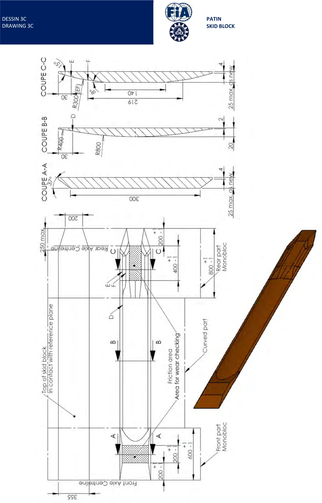</figure>
<figure><span class="pagemark" id="p266">P.266</span>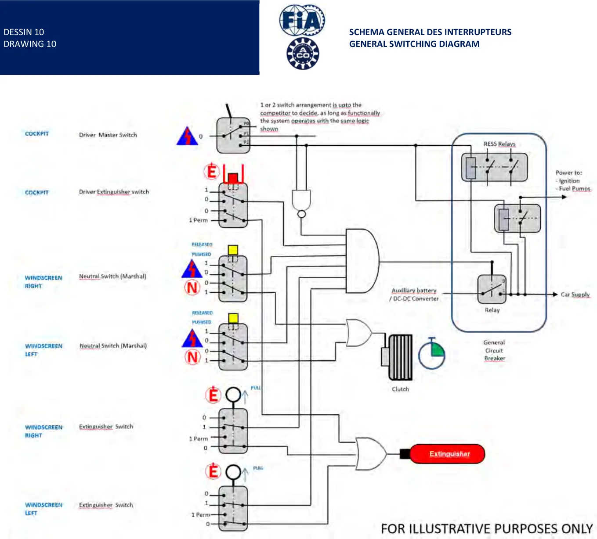</figure>
<figure><span class="pagemark" id="p267">P.267</span>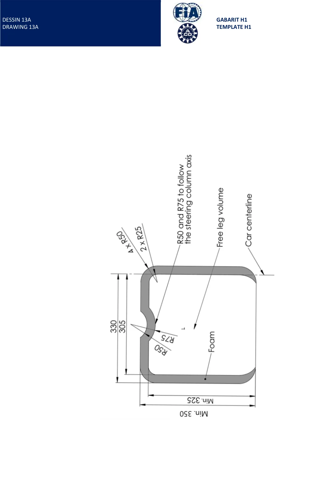</figure>
<figure><span class="pagemark" id="p268">P.268</span>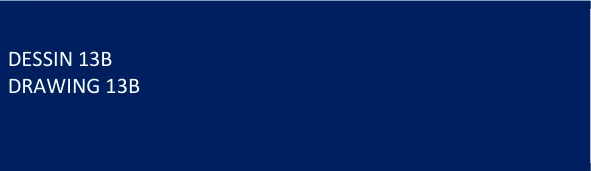</figure>
<p>GABARIT H2 TEMPLATE H2</p>
<figure><span class="pagemark" id="p269">P.269</span>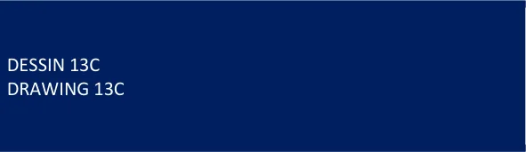</figure>
<p>GABARIT H3 TEMPLATE H3</p>
<figure>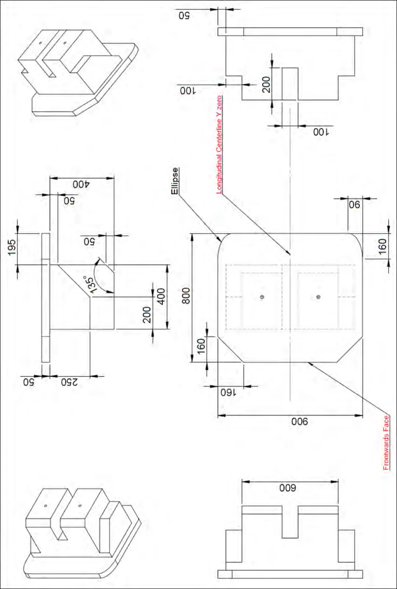</figure>
<figure><span class="pagemark" id="p270">P.270</span>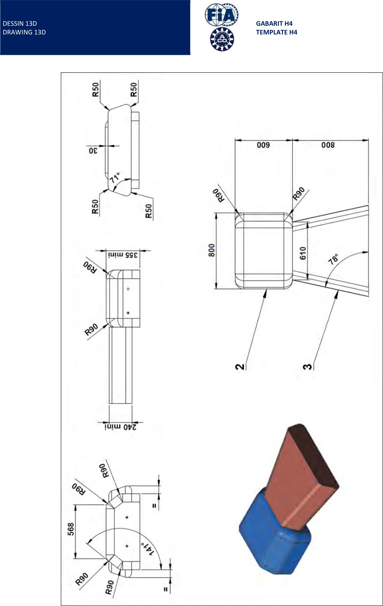</figure>
<figure><span class="pagemark" id="p271">P.271</span>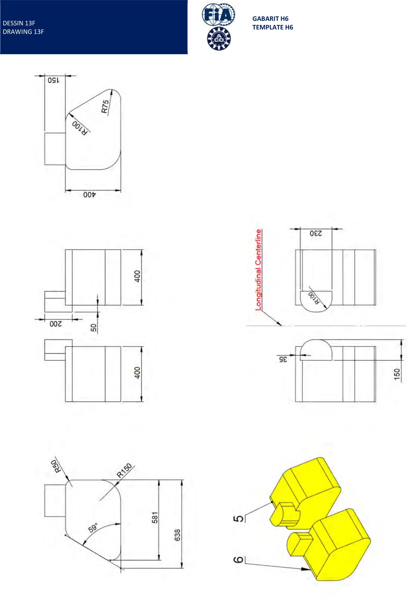</figure>
<figure><span class="pagemark" id="p272">P.272</span>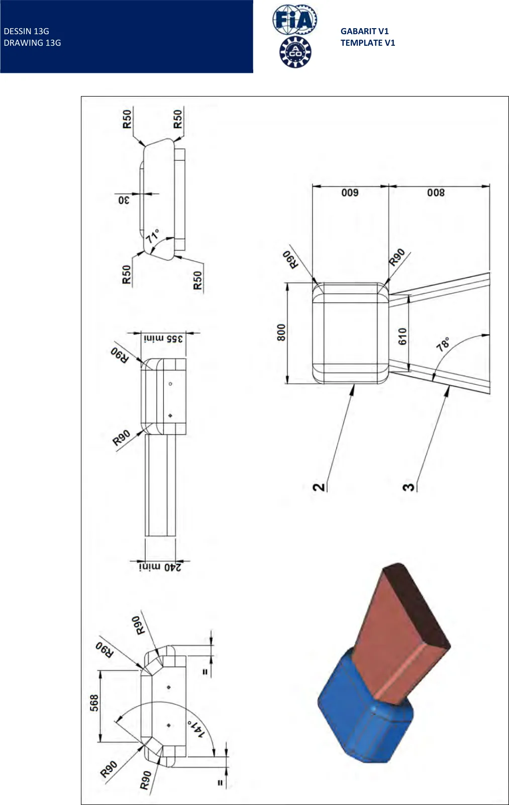</figure>
<figure><span class="pagemark" id="p273">P.273</span>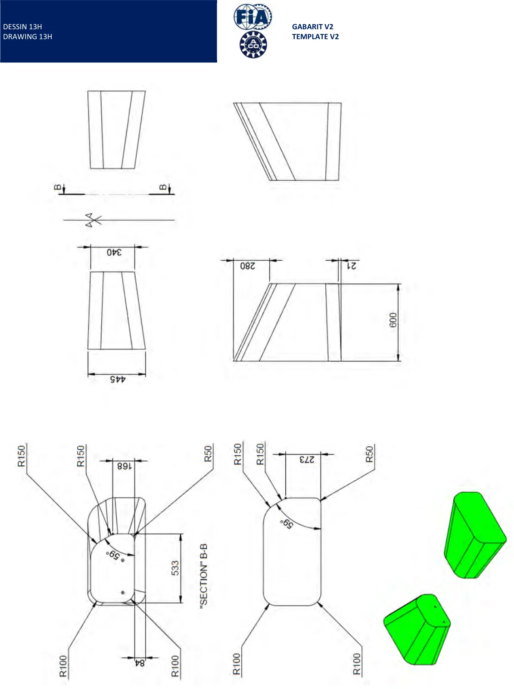</figure>
<figure><span class="pagemark" id="p274">P.274</span>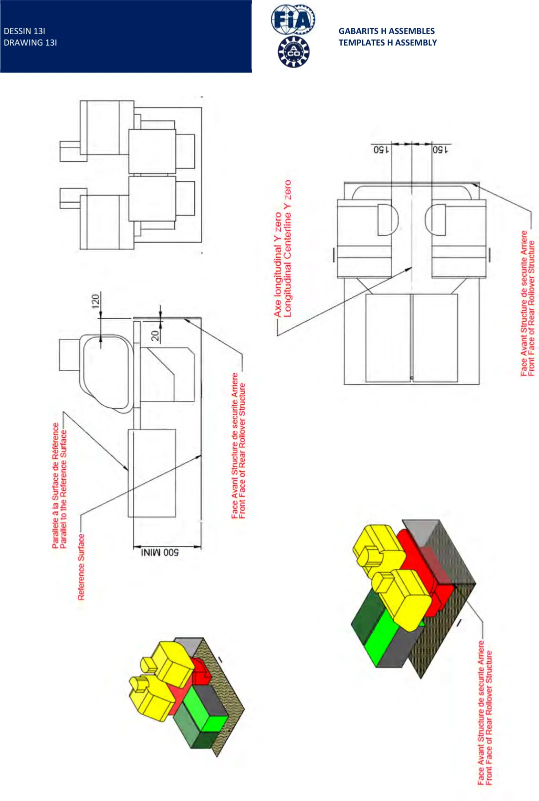</figure>
<figure><span class="pagemark" id="p275">P.275</span>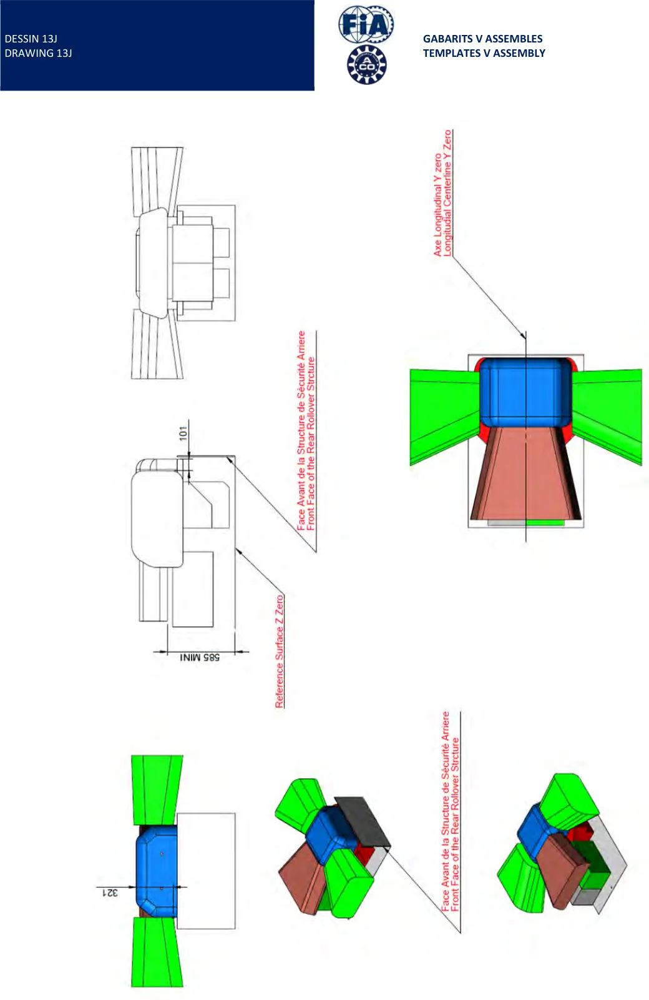</figure>
<figure><span class="pagemark" id="p276">P.276</span>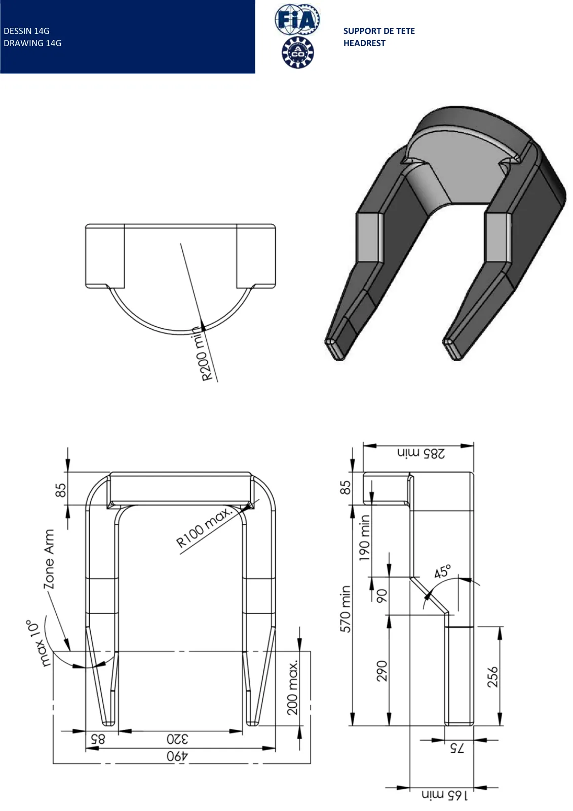</figure>
<figure><span class="pagemark" id="p277">P.277</span>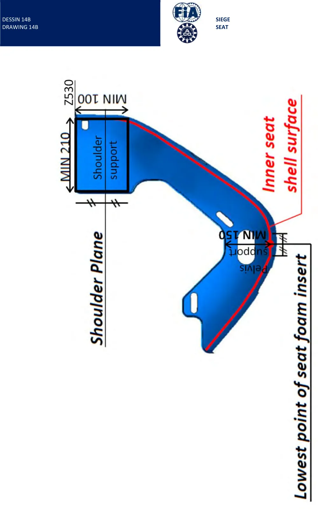</figure>
<h2 id="ANNEXE-2-APPENDIX-2"><span class="pagemark" id="p278">P.278</span>ANNEXE 2 / APPENDIX 2</h2>
<h2 id="SYSTEMES-FONCTIONS-ET-COMPOSANTS-DE-L-UNITE-DE-P">SYSTEMES, FONCTIONS ET COMPOSANTS DE L’UNITE DE PUISSANCE</h2>
<h2 id="POWER-UNIT-SYSTEMS-FUNCTIONS-AND-COMPONENTS">POWER UNIT SYSTEMS, FUNCTIONS AND COMPONENTS</h2>
<div class="tablewrap"><span class="pagemark" id="p279">P.279</span><table><tr><td>Item
No</td><td>ENGINE
Liste des fonctions / systèmes / composants des unités de puissance
List of PU functions / systems / components</td><td>ENGINE Definitions</td><td></td><td></td><td>Engine Homol</td><td></td><td></td><td>NA ENGINE Weight</td><td></td><td></td><td>NA ENGINE CoG</td><td></td><td></td><td>SC ENGINE Weight</td><td></td><td></td><td>SC ENGINE CoG</td><td></td><td></td></tr><tr><td>1</td><td>All Engine components within cam-covers, cylinder heads, crankcase, sump and any
gear case</td><td></td><td></td><td></td><td></td><td></td><td></td><td></td><td></td><td></td><td></td><td></td><td></td><td></td><td></td><td></td><td></td><td></td><td></td></tr><tr><td></td><td></td><td>INC</td><td></td><td></td><td>INC</td><td></td><td></td><td>INC</td><td></td><td></td><td>INC</td><td></td><td></td><td>INC</td><td></td><td></td><td>INC</td><td></td><td></td></tr><tr><td></td><td></td><td></td><td></td><td></td><td></td><td></td><td></td><td></td><td></td><td></td><td></td><td></td><td></td><td></td><td></td><td></td><td></td><td></td><td></td></tr><tr><td>2</td><td>Engine pressure charging components (e.g. compressor from inlet to outlet including
wheel; turbine from inlet to outlet including wheel; shaft, bearings and housings).
Includes Wastegate, Pop-off valve or similar</td><td></td><td></td><td></td><td></td><td></td><td></td><td></td><td></td><td></td><td></td><td></td><td></td><td></td><td></td><td></td><td></td><td></td><td></td></tr><tr><td></td><td></td><td>INC</td><td></td><td></td><td>INC</td><td></td><td></td><td>EXC</td><td></td><td></td><td>EXC</td><td></td><td></td><td>INC</td><td></td><td></td><td>INC</td><td></td><td></td></tr><tr><td></td><td></td><td></td><td></td><td></td><td></td><td></td><td></td><td></td><td></td><td></td><td></td><td></td><td></td><td></td><td></td><td></td><td></td><td></td><td></td></tr><tr><td>3</td><td>Engine air inlet system from Air filter to cylinder head (e.g. Pipes, Intercooler,
plenum, trumpets, throttles) but excluding pressure charging components.</td><td></td><td></td><td></td><td></td><td></td><td></td><td></td><td></td><td></td><td></td><td></td><td></td><td></td><td></td><td></td><td></td><td></td><td></td></tr><tr><td></td><td></td><td>INC</td><td></td><td></td><td>INC</td><td></td><td></td><td>INC</td><td></td><td></td><td>INC</td><td></td><td></td><td>INC</td><td></td><td></td><td>INC</td><td></td><td></td></tr><tr><td></td><td></td><td></td><td></td><td></td><td></td><td></td><td></td><td></td><td></td><td></td><td></td><td></td><td></td><td></td><td></td><td></td><td></td><td></td><td></td></tr><tr><td>4</td><td>Engine exhaust system from the engine exhaust flange up to the exit</td><td></td><td></td><td></td><td></td><td></td><td></td><td></td><td></td><td></td><td></td><td></td><td></td><td></td><td></td><td></td><td></td><td></td><td></td></tr><tr><td></td><td></td><td></td><td>INC</td><td></td><td></td><td>INC</td><td></td><td></td><td>INC</td><td></td><td></td><td>INC</td><td></td><td></td><td>INC</td><td></td><td></td><td>INC</td><td></td></tr><tr><td></td><td></td><td></td><td></td><td></td><td></td><td></td><td></td><td></td><td></td><td></td><td></td><td></td><td></td><td></td><td></td><td></td><td></td><td></td><td></td></tr><tr><td>5</td><td>Engine mounted fuel system components: (e.g. High Pressure fuel hose, fuel rail, fuel
injectors, accumulators)</td><td></td><td></td><td></td><td></td><td></td><td></td><td></td><td></td><td></td><td></td><td></td><td></td><td></td><td></td><td></td><td></td><td></td><td></td></tr><tr><td></td><td></td><td>INC</td><td></td><td></td><td>INC</td><td></td><td></td><td>INC</td><td></td><td></td><td>INC</td><td></td><td></td><td>INC</td><td></td><td></td><td>INC</td><td></td><td></td></tr><tr><td></td><td></td><td></td><td></td><td></td><td></td><td></td><td></td><td></td><td></td><td></td><td></td><td></td><td></td><td></td><td></td><td></td><td></td><td></td><td></td></tr><tr><td>6</td><td>Engine mounted electrical components (e.g. wiring loom, sensors, actuators, ignition
coils, alternator, spark plugs)</td><td></td><td></td><td></td><td></td><td></td><td></td><td></td><td></td><td></td><td></td><td></td><td></td><td></td><td></td><td></td><td></td><td></td><td></td></tr><tr><td></td><td></td><td>INC</td><td></td><td></td><td></td><td>INC</td><td></td><td>INC</td><td></td><td></td><td>INC</td><td></td><td></td><td>INC</td><td></td><td></td><td>INC</td><td></td><td></td></tr><tr><td></td><td></td><td></td><td></td><td></td><td></td><td>(Exc looms)</td><td></td><td></td><td></td><td></td><td></td><td></td><td></td><td></td><td></td><td></td><td></td><td></td><td></td></tr><tr><td></td><td></td><td></td><td></td><td></td><td></td><td></td><td></td><td></td><td></td><td></td><td></td><td></td><td></td><td></td><td></td><td></td><td></td><td></td><td></td></tr><tr><td>7</td><td>All Engine coolant pumps, oil pumps, scavenge pumps, oil air separators and fuel
high pressure pumps (delivering more than 10bars) including any of the
following associated components: motors, actuators, filters, brackets, supports,
screws, nuts, dowels, washers, cables, oil or air seals. All tubes or hoses between
components of the Engine. Excludes hydraulic pump.</td><td></td><td></td><td></td><td></td><td></td><td></td><td></td><td></td><td></td><td></td><td></td><td></td><td></td><td></td><td></td><td></td><td></td><td></td></tr><tr><td></td><td></td><td>INC</td><td></td><td></td><td>INC
(Only pumps)</td><td></td><td></td><td>INC</td><td></td><td></td><td>INC</td><td></td><td></td><td>INC</td><td></td><td></td><td>INC</td><td></td><td></td></tr><tr><td></td><td></td><td></td><td></td><td></td><td></td><td></td><td></td><td></td><td></td><td></td><td></td><td></td><td></td><td></td><td></td><td></td><td></td><td></td><td></td></tr><tr><td>8</td><td>Engine main oil tank, catch tanks, and any breather system connected to them and
associated filters, brackets, support, screws, nuts, dowels, washers, cables, tubes,
hoses, oil or air seals</td><td></td><td></td><td></td><td></td><td></td><td></td><td></td><td></td><td></td><td></td><td></td><td></td><td></td><td></td><td></td><td></td><td></td><td></td></tr><tr><td></td><td></td><td>INC</td><td></td><td></td><td>EXC</td><td></td><td></td><td>EXC</td><td></td><td></td><td>EXC</td><td></td><td></td><td>EXC</td><td></td><td></td><td>EXC</td><td></td><td></td></tr><tr><td></td><td></td><td></td><td></td><td></td><td></td><td></td><td></td><td></td><td></td><td></td><td></td><td></td><td></td><td></td><td></td><td></td><td></td><td></td><td></td></tr><tr><td>9</td><td>Any ECU or associated device containing programmable semiconductors or
containing high power switching device and associated brackets, support, screws,
nuts, dowels, washers or cables used for Engine</td><td></td><td></td><td></td><td></td><td></td><td></td><td></td><td></td><td></td><td></td><td></td><td></td><td></td><td></td><td></td><td></td><td></td><td></td></tr><tr><td></td><td></td><td>EXC</td><td></td><td></td><td>EXC</td><td></td><td></td><td>EXC</td><td></td><td></td><td>EXC</td><td></td><td></td><td>EXC</td><td></td><td></td><td>EXC</td><td></td><td></td></tr><tr><td></td><td></td><td></td><td></td><td></td><td></td><td></td><td></td><td></td><td></td><td></td><td></td><td></td><td></td><td></td><td></td><td></td><td></td><td></td><td></td></tr><tr><td>10</td><td>Any actuators needed to make the Engine function at all times</td><td></td><td></td><td></td><td></td><td></td><td></td><td></td><td></td><td></td><td></td><td></td><td></td><td></td><td></td><td></td><td></td><td></td><td></td></tr><tr><td></td><td></td><td></td><td>INC</td><td></td><td></td><td>EXC</td><td></td><td></td><td>INC</td><td></td><td></td><td>INC</td><td></td><td></td><td>INC</td><td></td><td></td><td>INC</td><td></td></tr><tr><td></td><td></td><td></td><td></td><td></td><td></td><td></td><td></td><td></td><td></td><td></td><td></td><td></td><td></td><td></td><td></td><td></td><td></td><td></td><td></td></tr><tr><td>11</td><td>Water system accumulators used for Engine</td><td></td><td></td><td></td><td></td><td></td><td></td><td></td><td></td><td></td><td></td><td></td><td></td><td></td><td></td><td></td><td></td><td></td><td></td></tr><tr><td></td><td></td><td></td><td>INC</td><td></td><td></td><td>EXC</td><td></td><td></td><td>INC</td><td></td><td></td><td>EXC</td><td></td><td></td><td>INC</td><td></td><td></td><td>EXC</td><td></td></tr><tr><td></td><td></td><td></td><td></td><td></td><td></td><td></td><td></td><td></td><td></td><td></td><td></td><td></td><td></td><td></td><td></td><td></td><td></td><td></td><td></td></tr><tr><td>12</td><td>Heat exchangers (except intercooler) and their associated accessories (included but
not limited to tubes, hoses, supports, brackets and fasteners) used for Engine</td><td></td><td></td><td></td><td></td><td></td><td></td><td></td><td></td><td></td><td></td><td></td><td></td><td></td><td></td><td></td><td></td><td></td><td></td></tr><tr><td></td><td></td><td>INC</td><td></td><td></td><td>EXC</td><td></td><td></td><td>INC</td><td></td><td></td><td>EXC</td><td></td><td></td><td>INC</td><td></td><td></td><td>EXC</td><td></td><td></td></tr><tr><td></td><td></td><td></td><td></td><td></td><td></td><td></td><td></td><td></td><td></td><td></td><td></td><td></td><td></td><td></td><td></td><td></td><td></td><td></td><td></td></tr><tr><td>13</td><td>Hydraulic system (e.g. pumps, accumulators) used for Engine</td><td></td><td></td><td></td><td></td><td></td><td></td><td></td><td></td><td></td><td></td><td></td><td></td><td></td><td></td><td></td><td></td><td></td><td></td></tr><tr><td></td><td></td><td></td><td>EXC</td><td></td><td></td><td>EXC</td><td></td><td></td><td>EXC</td><td></td><td></td><td>EXC</td><td></td><td></td><td>EXC</td><td></td><td></td><td>EXC</td><td></td></tr><tr><td></td><td></td><td></td><td></td><td></td><td></td><td></td><td></td><td></td><td></td><td></td><td></td><td></td><td></td><td></td><td></td><td></td><td></td><td></td><td></td></tr><tr><td>14</td><td>Hydraulic system servo valve(s) and actuator(s) for Engine control used for Engine</td><td></td><td></td><td></td><td></td><td></td><td></td><td></td><td></td><td></td><td></td><td></td><td></td><td></td><td></td><td></td><td></td><td></td><td></td></tr><tr><td></td><td></td><td></td><td>INC</td><td></td><td></td><td>EXC</td><td></td><td></td><td>INC</td><td></td><td></td><td>INC</td><td></td><td></td><td>INC</td><td></td><td></td><td>INC</td><td></td></tr><tr><td></td><td></td><td></td><td></td><td></td><td></td><td></td><td></td><td></td><td></td><td></td><td></td><td></td><td></td><td></td><td></td><td></td><td></td><td></td><td></td></tr><tr><td>15</td><td>Fuel feed pumps delivering less than 10 bars and their associated accessories
(included but not limited to tubes, hoses, supports, brackets and fasteners).</td><td></td><td></td><td></td><td></td><td></td><td></td><td></td><td></td><td></td><td></td><td></td><td></td><td></td><td></td><td></td><td></td><td></td><td></td></tr><tr><td></td><td></td><td>EXC</td><td></td><td></td><td>EXC</td><td></td><td></td><td>EXC</td><td></td><td></td><td>EXC</td><td></td><td></td><td>EXC</td><td></td><td></td><td>EXC</td><td></td><td></td></tr><tr><td></td><td></td><td></td><td></td><td></td><td></td><td></td><td></td><td></td><td></td><td></td><td></td><td></td><td></td><td></td><td></td><td></td><td></td><td></td><td></td></tr><tr><td>16</td><td>Any ancillary equipment associated with the Engine air valve system such as
regulators or compressors.</td><td></td><td></td><td></td><td></td><td></td><td></td><td></td><td></td><td></td><td></td><td></td><td></td><td></td><td></td><td></td><td></td><td></td><td></td></tr><tr><td></td><td></td><td>INC</td><td></td><td></td><td>EXC</td><td></td><td></td><td>INC</td><td></td><td></td><td>EXC</td><td></td><td></td><td>INC</td><td></td><td></td><td>EXC</td><td></td><td></td></tr><tr><td></td><td></td><td></td><td></td><td></td><td></td><td></td><td></td><td></td><td></td><td></td><td></td><td></td><td></td><td></td><td></td><td></td><td></td><td></td><td></td></tr><tr><td>17</td><td>Studs used to mount Engine to chassis or gearbox IF mounted on engine</td><td></td><td></td><td></td><td></td><td></td><td></td><td></td><td></td><td></td><td></td><td></td><td></td><td></td><td></td><td></td><td></td><td></td><td></td></tr><tr><td></td><td></td><td></td><td>INC</td><td></td><td></td><td>EXC</td><td></td><td></td><td>INC</td><td></td><td></td><td>INC</td><td></td><td></td><td>INC</td><td></td><td></td><td>INC</td><td></td></tr><tr><td></td><td></td><td></td><td></td><td></td><td></td><td></td><td></td><td></td><td></td><td></td><td></td><td></td><td></td><td></td><td></td><td></td><td></td><td></td><td></td></tr><tr><td>18</td><td>Flywheel, clutch and clutch actuation system between the Engine and the gearbox.</td><td></td><td></td><td></td><td></td><td></td><td></td><td></td><td></td><td></td><td></td><td></td><td></td><td></td><td></td><td></td><td></td><td></td><td></td></tr><tr><td></td><td></td><td></td><td>INC</td><td></td><td></td><td>EXC</td><td></td><td></td><td>INC</td><td></td><td></td><td>INC</td><td></td><td></td><td>INC</td><td></td><td></td><td>INC</td><td></td></tr><tr><td></td><td></td><td></td><td></td><td></td><td></td><td></td><td></td><td></td><td></td><td></td><td></td><td></td><td></td><td></td><td></td><td></td><td></td><td></td><td></td></tr><tr><td>19</td><td>Engine oil</td><td></td><td></td><td></td><td></td><td></td><td></td><td></td><td></td><td></td><td></td><td></td><td></td><td></td><td></td><td></td><td></td><td></td><td></td></tr><tr><td></td><td></td><td></td><td>INC</td><td></td><td></td><td>EXC</td><td></td><td></td><td>EXC</td><td></td><td></td><td>EXC</td><td></td><td></td><td>EXC</td><td></td><td></td><td>EXC</td><td></td></tr><tr><td></td><td></td><td></td><td></td><td></td><td></td><td></td><td></td><td></td><td></td><td></td><td></td><td></td><td></td><td></td><td></td><td></td><td></td><td></td><td></td></tr><tr><td>20</td><td>Liquids used for Engine. Excludes engine oil.</td><td></td><td></td><td></td><td></td><td></td><td></td><td></td><td></td><td></td><td></td><td></td><td></td><td></td><td></td><td></td><td></td><td></td><td></td></tr><tr><td></td><td></td><td></td><td>EXC</td><td></td><td></td><td>EXC</td><td></td><td></td><td>EXC</td><td></td><td></td><td>EXC</td><td></td><td></td><td>EXC</td><td></td><td></td><td>EXC</td><td></td></tr><tr><td></td><td></td><td></td><td></td><td></td><td></td><td></td><td></td><td></td><td></td><td></td><td></td><td></td><td></td><td></td><td></td><td></td><td></td><td></td><td></td></tr><tr><td>21</td><td>Ballast mounted on the Engine up to 5 kg.</td><td></td><td></td><td></td><td></td><td></td><td></td><td></td><td></td><td></td><td></td><td></td><td></td><td></td><td></td><td></td><td></td><td></td><td></td></tr><tr><td></td><td></td><td></td><td>INC</td><td></td><td></td><td>EXC</td><td></td><td></td><td>INC</td><td></td><td></td><td>INC</td><td></td><td></td><td>INC</td><td></td><td></td><td>INC</td><td></td></tr><tr><td></td><td></td><td></td><td></td><td></td><td></td><td></td><td></td><td></td><td></td><td></td><td></td><td></td><td></td><td></td><td></td><td></td><td></td><td></td><td></td></tr><tr><td>22</td><td>Ballast mounted on the Engine above 5 kg</td><td></td><td></td><td></td><td></td><td></td><td></td><td></td><td></td><td></td><td></td><td></td><td></td><td></td><td></td><td></td><td></td><td></td><td></td></tr><tr><td></td><td></td><td></td><td>EXC</td><td></td><td></td><td>EXC</td><td></td><td></td><td>EXC</td><td></td><td></td><td>EXC</td><td></td><td></td><td>EXC</td><td></td><td></td><td>EXC</td><td></td></tr><tr><td></td><td></td><td></td><td></td><td></td><td></td><td></td><td></td><td></td><td></td><td></td><td></td><td></td><td></td><td></td><td></td><td></td><td></td><td></td><td></td></tr><tr><td>23</td><td>Wiring harnesses which are not ordinarily part of a power unit.</td><td></td><td></td><td></td><td></td><td></td><td></td><td></td><td></td><td></td><td></td><td></td><td></td><td></td><td></td><td></td><td></td><td></td><td></td></tr><tr><td></td><td></td><td></td><td>EXC</td><td></td><td></td><td>EXC</td><td></td><td></td><td>EXC</td><td></td><td></td><td>EXC</td><td></td><td></td><td>EXC</td><td></td><td></td><td>EXC</td><td></td></tr><tr><td></td><td></td><td></td><td></td><td></td><td></td><td></td><td></td><td></td><td></td><td></td><td></td><td></td><td></td><td></td><td></td><td></td><td></td><td></td><td></td></tr><tr><td>24</td><td>Starter motor</td><td></td><td></td><td></td><td></td><td></td><td></td><td></td><td></td><td></td><td></td><td></td><td></td><td></td><td></td><td></td><td></td><td></td><td></td></tr><tr><td></td><td></td><td></td><td>EXC</td><td></td><td></td><td>EXC</td><td></td><td></td><td>EXC</td><td></td><td></td><td>EXC</td><td></td><td></td><td>EXC</td><td></td><td></td><td>EXC</td><td></td></tr><tr><td></td><td></td><td></td><td></td><td></td><td></td><td></td><td></td><td></td><td></td><td></td><td></td><td></td><td></td><td></td><td></td><td></td><td></td><td></td><td></td></tr></table></div>
<p>INC: INCLUDED: These parts must be included in the definition/weight/box/template/perimeter or dossier. EXC: EXCLUDED: These parts must be excluded from the definition/weight/box/template/perimeter or dossier.</p>
<div class="tablewrap"><span class="pagemark" id="p280">P.280</span><table><tr><td>Item
No</td><td>ERS
Liste des fonctions / systèmes / composants des unités de puissance
List of PU functions / systems / components</td><td>ERS Definition</td><td></td><td></td><td>MGU-K Definition</td><td></td><td></td><td>ESC Definition</td><td></td><td></td></tr><tr><td>1</td><td>The ES cells (including any clamping plates) and electrical connections between cells</td><td></td><td></td><td></td><td></td><td></td><td></td><td></td><td></td><td></td></tr><tr><td></td><td></td><td></td><td>INC</td><td></td><td></td><td>EXC</td><td></td><td></td><td>INC</td><td></td></tr><tr><td></td><td></td><td></td><td></td><td></td><td></td><td></td><td></td><td></td><td></td><td></td></tr><tr><td>2</td><td>HV fuses</td><td></td><td></td><td></td><td></td><td></td><td></td><td></td><td></td><td></td></tr><tr><td></td><td></td><td></td><td>INC</td><td></td><td></td><td>EXC</td><td></td><td></td><td>INC</td><td></td></tr><tr><td></td><td></td><td></td><td></td><td></td><td></td><td></td><td></td><td></td><td></td><td></td></tr><tr><td>3</td><td>Ground fault Indication system</td><td></td><td></td><td></td><td></td><td></td><td></td><td></td><td></td><td></td></tr><tr><td></td><td></td><td></td><td>INC</td><td></td><td></td><td>EXC</td><td></td><td></td><td>INC</td><td></td></tr><tr><td></td><td></td><td></td><td></td><td></td><td></td><td></td><td></td><td></td><td></td><td></td></tr><tr><td>4</td><td>Main Contactors (electromechanical) including precharge switches, FIA IVTs</td><td></td><td></td><td></td><td></td><td></td><td></td><td></td><td></td><td></td></tr><tr><td></td><td></td><td></td><td>INC</td><td></td><td></td><td>EXC</td><td></td><td></td><td>INC</td><td></td></tr><tr><td></td><td></td><td></td><td></td><td></td><td></td><td></td><td></td><td></td><td></td><td></td></tr><tr><td>5</td><td>Safety pin (service plug)</td><td></td><td></td><td></td><td></td><td></td><td></td><td></td><td></td><td></td></tr><tr><td></td><td></td><td></td><td>INC</td><td></td><td></td><td>EXC</td><td></td><td></td><td>INC</td><td></td></tr><tr><td></td><td></td><td></td><td></td><td></td><td></td><td></td><td></td><td></td><td></td><td></td></tr><tr><td>6</td><td>DC HV busbars and wires between ES and CUK</td><td></td><td></td><td></td><td></td><td></td><td></td><td></td><td></td><td></td></tr><tr><td></td><td></td><td></td><td>INC</td><td></td><td></td><td>EXC</td><td></td><td></td><td>INC</td><td></td></tr><tr><td></td><td></td><td></td><td></td><td></td><td></td><td></td><td></td><td></td><td></td><td></td></tr><tr><td>7</td><td>DC HV EMC screening</td><td></td><td></td><td></td><td></td><td></td><td></td><td></td><td></td><td></td></tr><tr><td></td><td></td><td></td><td>INC</td><td></td><td></td><td>EXC</td><td></td><td></td><td>INC</td><td></td></tr><tr><td></td><td></td><td></td><td></td><td></td><td></td><td></td><td></td><td></td><td></td><td></td></tr><tr><td>8</td><td>DCDC Converter connected to HV DC bus</td><td></td><td></td><td></td><td></td><td></td><td></td><td></td><td></td><td></td></tr><tr><td></td><td></td><td></td><td>INC</td><td></td><td></td><td>EXC</td><td></td><td></td><td>INC</td><td></td></tr><tr><td></td><td></td><td></td><td></td><td></td><td></td><td></td><td></td><td></td><td></td><td></td></tr><tr><td>9</td><td>BMS, Voltage &amp; temperature monitoring of cells</td><td></td><td></td><td></td><td></td><td></td><td></td><td></td><td></td><td></td></tr><tr><td></td><td></td><td></td><td>INC</td><td></td><td></td><td>EXC</td><td></td><td></td><td>INC</td><td></td></tr><tr><td></td><td></td><td></td><td></td><td></td><td></td><td></td><td></td><td></td><td></td><td></td></tr><tr><td>10</td><td>ERS controller, gate drive for K, phase current sensors</td><td></td><td></td><td></td><td></td><td></td><td></td><td></td><td></td><td></td></tr><tr><td></td><td></td><td></td><td>INC</td><td></td><td></td><td>INC</td><td></td><td></td><td>EXC</td><td></td></tr><tr><td></td><td></td><td></td><td></td><td></td><td></td><td></td><td></td><td></td><td></td><td></td></tr><tr><td>11</td><td>MGU-K 3 phase Inverter including large capacitor</td><td></td><td></td><td></td><td></td><td></td><td></td><td></td><td></td><td></td></tr><tr><td></td><td></td><td></td><td>INC</td><td></td><td></td><td>INC</td><td></td><td></td><td>EXC</td><td></td></tr><tr><td></td><td></td><td></td><td></td><td></td><td></td><td></td><td></td><td></td><td></td><td></td></tr><tr><td>12</td><td>3 Phases connector (no AC cables exiting the box)</td><td></td><td></td><td></td><td></td><td></td><td></td><td></td><td></td><td></td></tr><tr><td></td><td></td><td></td><td>INC</td><td></td><td></td><td>INC</td><td></td><td></td><td>EXC</td><td></td></tr><tr><td></td><td></td><td></td><td></td><td></td><td></td><td></td><td></td><td></td><td></td><td></td></tr><tr><td>13</td><td>Separate &quot;kicker&quot; / system startup batteries</td><td></td><td></td><td></td><td></td><td></td><td></td><td></td><td></td><td></td></tr><tr><td></td><td></td><td></td><td>INC</td><td></td><td></td><td>EXC</td><td></td><td></td><td>INC</td><td></td></tr><tr><td></td><td></td><td></td><td></td><td></td><td></td><td></td><td></td><td></td><td></td><td></td></tr><tr><td>14</td><td>AV mount to chassis (outside the box)</td><td></td><td></td><td></td><td></td><td></td><td></td><td></td><td></td><td></td></tr><tr><td></td><td></td><td></td><td>INC</td><td></td><td></td><td>EXC</td><td></td><td></td><td>INC</td><td></td></tr><tr><td></td><td></td><td></td><td></td><td></td><td></td><td></td><td></td><td></td><td></td><td></td></tr><tr><td>15</td><td>Internal cooling fans</td><td></td><td></td><td></td><td></td><td></td><td></td><td></td><td></td><td></td></tr><tr><td></td><td></td><td></td><td>INC</td><td></td><td></td><td>EXC</td><td></td><td></td><td>INC</td><td></td></tr><tr><td></td><td></td><td></td><td></td><td></td><td></td><td></td><td></td><td></td><td></td><td></td></tr><tr><td>16</td><td>Cooling system included in the ESC enclosure</td><td></td><td></td><td></td><td></td><td></td><td></td><td></td><td></td><td></td></tr><tr><td></td><td></td><td></td><td>INC</td><td></td><td></td><td>EXC</td><td></td><td></td><td>INC</td><td></td></tr><tr><td></td><td></td><td></td><td></td><td></td><td></td><td></td><td></td><td></td><td></td><td></td></tr><tr><td>17</td><td>Ballast exceeding 2kg</td><td></td><td></td><td></td><td></td><td></td><td></td><td></td><td></td><td></td></tr><tr><td></td><td></td><td></td><td>EXC</td><td></td><td></td><td>EXC</td><td></td><td></td><td>EXC</td><td></td></tr><tr><td></td><td></td><td></td><td></td><td></td><td></td><td></td><td></td><td></td><td></td><td></td></tr><tr><td>18</td><td>Hydraulic system (pumps, accumulator, manifold, servovalve, solenoid, actuators) other than servo
valve(s) and actuator(s) for ERS control</td><td></td><td></td><td></td><td></td><td></td><td></td><td></td><td></td><td></td></tr><tr><td></td><td></td><td>EXC</td><td></td><td></td><td>EXC</td><td></td><td></td><td>EXC</td><td></td><td></td></tr><tr><td></td><td></td><td></td><td></td><td></td><td></td><td></td><td></td><td></td><td></td><td></td></tr><tr><td>19</td><td>Coolant pumps</td><td></td><td></td><td></td><td></td><td></td><td></td><td></td><td></td><td></td></tr><tr><td></td><td></td><td></td><td>EXC</td><td></td><td></td><td>EXC</td><td></td><td></td><td>EXC</td><td></td></tr><tr><td></td><td></td><td></td><td></td><td></td><td></td><td></td><td></td><td></td><td></td><td></td></tr><tr><td>20</td><td>Coolant fluids filter and restriction</td><td></td><td></td><td></td><td></td><td></td><td></td><td></td><td></td><td></td></tr><tr><td></td><td></td><td></td><td>EXC</td><td></td><td></td><td>EXC</td><td></td><td></td><td>EXC</td><td></td></tr><tr><td></td><td></td><td></td><td></td><td></td><td></td><td></td><td></td><td></td><td></td><td></td></tr><tr><td>21</td><td>Cooling system accumulator</td><td></td><td></td><td></td><td></td><td></td><td></td><td></td><td></td><td></td></tr><tr><td></td><td></td><td></td><td>EXC</td><td></td><td></td><td>EXC</td><td></td><td></td><td>EXC</td><td></td></tr><tr><td></td><td></td><td></td><td></td><td></td><td></td><td></td><td></td><td></td><td></td><td></td></tr><tr><td>22</td><td>MGU-K</td><td></td><td></td><td></td><td></td><td></td><td></td><td></td><td></td><td></td></tr><tr><td></td><td></td><td></td><td>INC</td><td></td><td></td><td>INC</td><td></td><td></td><td>EXC</td><td></td></tr><tr><td></td><td></td><td></td><td></td><td></td><td></td><td></td><td></td><td></td><td></td><td></td></tr><tr><td>23</td><td>MGU-K resolver</td><td></td><td></td><td></td><td></td><td></td><td></td><td></td><td></td><td></td></tr><tr><td></td><td></td><td></td><td>INC</td><td></td><td></td><td>INC</td><td></td><td></td><td>EXC</td><td></td></tr><tr><td></td><td></td><td></td><td></td><td></td><td></td><td></td><td></td><td></td><td></td><td></td></tr><tr><td>24</td><td>Mechanical transmission (single ratio) from MGU-K (shaft, gearbox, differential, basket, …).</td><td></td><td></td><td></td><td></td><td></td><td></td><td></td><td></td><td></td></tr><tr><td></td><td></td><td></td><td>INC</td><td></td><td></td><td>INC</td><td></td><td></td><td>EXC</td><td></td></tr><tr><td></td><td></td><td></td><td></td><td></td><td></td><td></td><td></td><td></td><td></td><td></td></tr><tr><td>25</td><td>MGU-K to chassis mounting brackets</td><td></td><td></td><td></td><td></td><td></td><td></td><td></td><td></td><td></td></tr><tr><td></td><td></td><td></td><td>INC</td><td></td><td></td><td>EXC</td><td></td><td></td><td>EXC</td><td></td></tr><tr><td></td><td></td><td></td><td></td><td></td><td></td><td></td><td></td><td></td><td></td><td></td></tr><tr><td>26</td><td>Cooling pipes</td><td></td><td></td><td></td><td></td><td></td><td></td><td></td><td></td><td></td></tr><tr><td></td><td></td><td></td><td>INC</td><td></td><td></td><td>EXC</td><td></td><td></td><td>EXC</td><td></td></tr><tr><td></td><td></td><td></td><td></td><td></td><td></td><td></td><td></td><td></td><td></td><td></td></tr><tr><td>27</td><td>Electrical connections between ESC and MGU-K</td><td></td><td></td><td></td><td></td><td></td><td></td><td></td><td></td><td></td></tr><tr><td></td><td></td><td></td><td>INC</td><td></td><td></td><td>EXC</td><td></td><td></td><td>EXC</td><td></td></tr><tr><td></td><td></td><td></td><td></td><td></td><td></td><td></td><td></td><td></td><td></td><td></td></tr><tr><td>28</td><td>Liquids (except cell electrolyte)</td><td></td><td></td><td></td><td></td><td></td><td></td><td></td><td></td><td></td></tr><tr><td></td><td></td><td></td><td>EXC</td><td></td><td></td><td>EXC</td><td></td><td></td><td>EXC</td><td></td></tr><tr><td></td><td></td><td></td><td></td><td></td><td></td><td></td><td></td><td></td><td></td><td></td></tr><tr><td>29</td><td>ESC enclosure</td><td></td><td></td><td></td><td></td><td></td><td></td><td></td><td></td><td></td></tr><tr><td></td><td></td><td></td><td>INC</td><td></td><td></td><td>EXC</td><td></td><td></td><td>INC</td><td></td></tr><tr><td></td><td></td><td></td><td></td><td></td><td></td><td></td><td></td><td></td><td></td><td></td></tr><tr><td>30</td><td>Survival Cell</td><td></td><td></td><td></td><td></td><td></td><td></td><td></td><td></td><td></td></tr><tr><td></td><td></td><td></td><td>EXC</td><td></td><td></td><td>EXC</td><td></td><td></td><td>EXC</td><td></td></tr><tr><td></td><td></td><td></td><td></td><td></td><td></td><td></td><td></td><td></td><td></td><td></td></tr></table></div>
<p>INC: INCLUDED: These parts must be included in the definition/weight/box/template/perimeter or dossier. EXC: EXCLUDED: These parts must be excluded from the definition/weight/box/template/perimeter or dossier.</p>
<div class="tablewrap"><span class="pagemark" id="p281">P.281</span><table><tr><td>Item
No</td><td>GEARBOX
Liste des fonctions / systèmes / composants des unités de puissance
List of PU functions / systems / components</td><td>GBX
Weight /
CoG</td><td></td><td></td></tr><tr><td>1</td><td>Gearbox internals including : Reverse assembly, output assembly, layshaft assembly, pinion shaft
assembly, selection assembly and differential assembly</td><td></td><td></td><td></td></tr><tr><td></td><td></td><td>INC</td><td></td><td></td></tr><tr><td></td><td></td><td></td><td></td><td></td></tr><tr><td>2</td><td>External selection assembly</td><td></td><td></td><td></td></tr><tr><td></td><td></td><td></td><td>INC</td><td></td></tr><tr><td></td><td></td><td></td><td></td><td></td></tr><tr><td>3</td><td>Gearbox internals including : Lubrification system, Scavenge system</td><td></td><td></td><td></td></tr><tr><td></td><td></td><td></td><td>INC</td><td></td></tr><tr><td></td><td></td><td></td><td></td><td></td></tr><tr><td>4</td><td>Input shaft</td><td></td><td></td><td></td></tr><tr><td></td><td></td><td></td><td>INC</td><td></td></tr><tr><td></td><td></td><td></td><td></td><td></td></tr><tr><td>5</td><td>Gearbox Casing</td><td></td><td></td><td></td></tr><tr><td></td><td></td><td></td><td>INC</td><td></td></tr><tr><td></td><td></td><td></td><td></td><td></td></tr><tr><td>6</td><td>Bell housing (Including Gbx to ICE mounting points)</td><td></td><td></td><td></td></tr><tr><td></td><td></td><td></td><td>INC</td><td></td></tr><tr><td></td><td></td><td></td><td></td><td></td></tr><tr><td>7</td><td>Suspension clevis (including Gbox to clevis mounting points)</td><td></td><td></td><td></td></tr><tr><td></td><td></td><td></td><td>INC</td><td></td></tr><tr><td></td><td></td><td></td><td></td><td></td></tr><tr><td>8</td><td>Gearbox mounted electrical components (e.g. wiring loom, sensors)</td><td></td><td></td><td></td></tr><tr><td></td><td></td><td></td><td>EXC</td><td></td></tr><tr><td></td><td></td><td></td><td></td><td></td></tr><tr><td>9</td><td>Studs and/or nuts used for Gbx to ICE</td><td></td><td></td><td></td></tr><tr><td></td><td></td><td></td><td>EXC</td><td></td></tr><tr><td></td><td></td><td></td><td></td><td></td></tr><tr><td>10</td><td>Fluids</td><td></td><td></td><td></td></tr><tr><td></td><td></td><td></td><td>EXC</td><td></td></tr><tr><td></td><td></td><td></td><td></td><td></td></tr></table></div>
<p>INC: INCLUDED: These parts must be included in the definition/weight/box/template/perimeter or dossier. EXC: EXCLUDED: These parts must be excluded from the definition/weight/box/template/perimeter or dossier.</p>
<h2 id="ANNEXE-3-APPENDIX-3"><span class="pagemark" id="p282">P.282</span>ANNEXE 3 / APPENDIX 3</h2>
<h2 id="HABITACLE-ET-CELLULE-DE-SURVIE">HABITACLE ET CELLULE DE SURVIE</h2>
<h3 id="COCKPIT-AND-SURVIVAL-CELL">COCKPIT AND SURVIVAL CELL</h3>
<div class="tablewrap"><span class="pagemark" id="p283">P.283</span><table><tr><td>Item
No</td><td>SURVIVAL CELL
Liste des fonctions / systèmes / composants des unités de puissance
List of PU functions / systems / components</td><td>Weight /
CoG</td></tr><tr><td>1</td><td>Safety structure including the cockpit, the fuel tank compartment, the ES compartment, the ERS
compartment</td><td></td></tr><tr><td></td><td></td><td>INC</td></tr><tr><td></td><td></td><td></td></tr><tr><td>2</td><td>All the fuel tank closing panels and fixations</td><td></td></tr><tr><td></td><td></td><td>INC</td></tr><tr><td></td><td></td><td></td></tr><tr><td>3</td><td>All built-in fixing components</td><td></td></tr><tr><td></td><td></td><td>INC</td></tr><tr><td></td><td></td><td></td></tr><tr><td>4</td><td>All ERS compartment panels and fixations</td><td></td></tr><tr><td></td><td></td><td>INC</td></tr><tr><td></td><td></td><td></td></tr><tr><td>5</td><td>Driver leg support and fixations</td><td></td></tr><tr><td></td><td></td><td>INC</td></tr><tr><td></td><td></td><td></td></tr><tr><td>6</td><td>ES closing panel</td><td></td></tr><tr><td></td><td></td><td>INC</td></tr><tr><td></td><td></td><td></td></tr><tr><td>7</td><td>Ballast mounted on the survival cell up to 5 kg</td><td></td></tr><tr><td></td><td></td><td>INC</td></tr><tr><td></td><td></td><td></td></tr><tr><td>8</td><td>Ballast mounted on the survival cell above 5 kg</td><td></td></tr><tr><td></td><td></td><td>EXC</td></tr><tr><td></td><td></td><td></td></tr><tr><td>9</td><td>All removable fixing components (crashbox, engine, sidepods…)</td><td></td></tr><tr><td></td><td></td><td>EXC</td></tr><tr><td></td><td></td><td></td></tr><tr><td>10</td><td>Windscreen and doors</td><td></td></tr><tr><td></td><td></td><td>EXC</td></tr><tr><td></td><td></td><td></td></tr><tr><td>11</td><td>All survival cell mechanical internal component (suspension related components, steering related
components, pedals and mountings, seat, headrest, battery, electric related components…)</td><td></td></tr><tr><td></td><td></td><td>EXC</td></tr><tr><td></td><td></td><td></td></tr></table></div>
<p>INC: INCLUDED: These parts must be included in the definition/weight/box/template/perimeter or dossier. EXC: EXCLUDED: These parts must be excluded from the definition/weight/box/template/perimeter or dossier.</p>
<h2 id="ANNEXE-4-APPENDIX-4"><span class="pagemark" id="p284">P.284</span>ANNEXE 4 / APPENDIX 4</h2>
<h2 id="FLUX-D-ENERGIE-DE-L-UNITE-DE-PUISSANCE">FLUX D’ENERGIE DE L’UNITE DE PUISSANCE</h2>
<p>POWER UNIT ENERGY FLOW</p>
<figure><span class="pagemark" id="p285">P.285</span>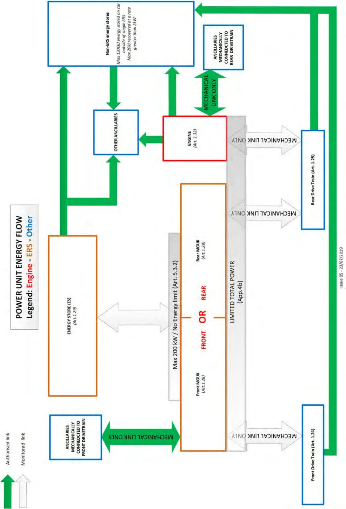</figure>
<h2 id="ANNEXE-4b-APPENDIX-4b"><span class="pagemark" id="p286">P.286</span>ANNEXE 4b / APPENDIX 4b</h2>
<h2 id="FLUX-D-ENERGIE-DE-L-UNITE-DE-PUISSANCE-Puissance">FLUX D’ENERGIE DE L’UNITE DE PUISSANCE Puissance maximale du groupe motopropulseur</h2>
<h3 id="POWER-UNIT-ENERGY-FLOW-Maximum-Power-Train-Power">POWER UNIT ENERGY FLOW Maximum Power Train Power</h3>
<p><span class="pagemark" id="p287">P.287</span>Les voitures doivent être conçues pour cibler la courbe de puissance maximale totale suivante (somme de la puissance des 4 roues mesurée par les capteurs de couple de l&#x27;arbre de transmission) avec des niveaux bas et haut à ajuster pour des raisons de BoP comme suit:</p>
<p>Cars must be designed to target the following total maximum power curve (Sum of the 4 wheels power measured by driveshaft torque sensors) with low and high margins to be adjusted for BoP reasons as follows:</p>
<div class="tablewrap"><table><tr><td>PowerTrain Power</td><td>Engine speed
(N/Nmax)</td><td>POWER (kW)</td><td>ADJUSTMENT (kW)</td><td></td></tr><tr><td></td><td></td><td>500</td><td>LOW</td><td>HIGH</td></tr><tr><td>Referenced to 1010 mbar and 20°C
550
500
450 (kW)
@Wheels
400
Output
350
500
kW Power
300
480
kW
250
520
kW
200
0.550 0.575 0.600 0.625 0.650 0.675 0.700 0.725 0.750 0.775 0.800 0.825 0.850 0.875 0.900 0.925 0.950 0.975 1.000 1.025
Engine Speed (N/Nmax)</td><td>0.550</td><td>246
269
289
309
330
351
372
393
413
432
449
464
475
485
492
497
500
498
495
427</td><td>236 256
258 279
277 300
297 322
317 343
337 365
358 387
378 409
397 430
415 449
431 467
445 482
456 494
466 505
472 512
477 517
480 520
478 518
475 514
410 444</td><td></td></tr><tr><td></td><td>0.575</td><td></td><td></td><td></td></tr><tr><td></td><td>0.600</td><td></td><td></td><td></td></tr><tr><td></td><td>0.625</td><td></td><td></td><td></td></tr><tr><td></td><td>0.650</td><td></td><td></td><td></td></tr><tr><td></td><td>0.675</td><td></td><td></td><td></td></tr><tr><td></td><td>0.700</td><td></td><td></td><td></td></tr><tr><td></td><td>0.725</td><td></td><td></td><td></td></tr><tr><td></td><td>0.750</td><td></td><td></td><td></td></tr><tr><td></td><td>0.775</td><td></td><td></td><td></td></tr><tr><td></td><td>0.800</td><td></td><td></td><td></td></tr><tr><td></td><td>0.825</td><td></td><td></td><td></td></tr><tr><td></td><td>0.850</td><td></td><td></td><td></td></tr><tr><td></td><td>0.875</td><td></td><td></td><td></td></tr><tr><td></td><td>0.900</td><td></td><td></td><td></td></tr><tr><td></td><td>0.925</td><td></td><td></td><td></td></tr><tr><td></td><td>0.950</td><td></td><td></td><td></td></tr><tr><td></td><td>0.975</td><td></td><td></td><td></td></tr><tr><td></td><td>1.000</td><td></td><td></td><td></td></tr><tr><td></td><td>1.025</td><td></td><td></td><td></td></tr></table></div>
<div class="tablewrap"><table><tr><td></td><td></td><td></td><td></td><td></td><td></td><td></td><td></td><td></td><td></td><td></td><td></td><td></td><td></td><td></td><td></td><td></td><td></td><td></td></tr><tr><td></td><td></td><td></td><td></td><td></td><td></td><td></td><td></td><td></td><td></td><td></td><td></td><td></td><td></td><td></td><td></td><td></td><td></td><td></td></tr><tr><td></td><td></td><td></td><td></td><td></td><td></td><td></td><td></td><td></td><td></td><td></td><td></td><td></td><td></td><td></td><td></td><td></td><td></td><td></td></tr><tr><td></td><td></td><td></td><td></td><td></td><td></td><td></td><td></td><td></td><td></td><td></td><td></td><td></td><td></td><td></td><td></td><td></td><td></td><td></td></tr><tr><td></td><td></td><td></td><td></td><td></td><td></td><td></td><td></td><td></td><td></td><td></td><td></td><td></td><td></td><td></td><td></td><td></td><td></td><td></td></tr><tr><td></td><td></td><td></td><td></td><td></td><td></td><td></td><td></td><td></td><td></td><td></td><td></td><td></td><td></td><td></td><td></td><td></td><td></td><td></td></tr><tr><td></td><td></td><td></td><td></td><td></td><td></td><td></td><td></td><td></td><td></td><td></td><td></td><td></td><td></td><td></td><td></td><td></td><td></td><td></td></tr><tr><td></td><td></td><td></td><td></td><td></td><td></td><td></td><td></td><td></td><td></td><td></td><td></td><td></td><td></td><td></td><td></td><td></td><td></td><td></td></tr><tr><td></td><td></td><td></td><td></td><td></td><td></td><td></td><td></td><td></td><td></td><td></td><td></td><td></td><td></td><td></td><td></td><td></td><td></td><td></td></tr><tr><td></td><td></td><td></td><td></td><td></td><td></td><td></td><td></td><td></td><td></td><td></td><td></td><td></td><td></td><td></td><td></td><td></td><td></td><td></td></tr><tr><td></td><td></td><td></td><td></td><td></td><td></td><td></td><td></td><td></td><td></td><td></td><td></td><td></td><td></td><td></td><td></td><td></td><td></td><td></td></tr><tr><td></td><td></td><td></td><td></td><td></td><td></td><td></td><td></td><td></td><td></td><td></td><td></td><td></td><td></td><td></td><td></td><td></td><td></td><td></td></tr><tr><td></td><td></td><td></td><td></td><td></td><td></td><td></td><td></td><td></td><td></td><td></td><td></td><td></td><td></td><td></td><td></td><td></td><td></td><td></td></tr><tr><td></td><td></td><td></td><td></td><td></td><td></td><td></td><td></td><td></td><td></td><td></td><td></td><td></td><td></td><td></td><td></td><td></td><td></td><td></td></tr><tr><td></td><td></td><td></td><td></td><td></td><td></td><td></td><td></td><td></td><td></td><td></td><td></td><td></td><td></td><td></td><td></td><td></td><td></td><td></td></tr><tr><td></td><td></td><td></td><td></td><td></td><td></td><td></td><td></td><td></td><td></td><td></td><td></td><td></td><td></td><td></td><td></td><td></td><td></td><td></td></tr><tr><td></td><td></td><td></td><td></td><td></td><td></td><td></td><td></td><td></td><td></td><td></td><td></td><td></td><td></td><td></td><td></td><td></td><td></td><td></td></tr><tr><td></td><td></td><td></td><td></td><td></td><td></td><td></td><td></td><td></td><td></td><td></td><td></td><td></td><td></td><td></td><td></td><td></td><td>500</td><td></td></tr><tr><td></td><td></td><td></td><td></td><td></td><td></td><td></td><td></td><td></td><td></td><td></td><td></td><td></td><td></td><td></td><td></td><td></td><td>kW</td><td></td></tr><tr><td></td><td></td><td></td><td></td><td></td><td></td><td></td><td></td><td></td><td></td><td></td><td></td><td></td><td></td><td></td><td></td><td></td><td></td><td></td></tr><tr><td></td><td></td><td></td><td></td><td></td><td></td><td></td><td></td><td></td><td></td><td></td><td></td><td></td><td></td><td></td><td></td><td></td><td>480</td><td></td></tr><tr><td></td><td></td><td></td><td></td><td></td><td></td><td></td><td></td><td></td><td></td><td></td><td></td><td></td><td></td><td></td><td></td><td></td><td>kW</td><td></td></tr><tr><td></td><td></td><td></td><td></td><td></td><td></td><td></td><td></td><td></td><td></td><td></td><td></td><td></td><td></td><td></td><td></td><td></td><td></td><td></td></tr><tr><td></td><td></td><td></td><td></td><td></td><td></td><td></td><td></td><td></td><td></td><td></td><td></td><td></td><td></td><td></td><td></td><td></td><td></td><td></td></tr><tr><td></td><td></td><td></td><td></td><td></td><td></td><td></td><td></td><td></td><td></td><td></td><td></td><td></td><td></td><td></td><td></td><td></td><td>520</td><td></td></tr><tr><td></td><td></td><td></td><td></td><td></td><td></td><td></td><td></td><td></td><td></td><td></td><td></td><td></td><td></td><td></td><td></td><td></td><td></td><td></td></tr><tr><td></td><td></td><td></td><td></td><td></td><td></td><td></td><td></td><td></td><td></td><td></td><td></td><td></td><td></td><td></td><td></td><td></td><td>kW</td><td></td></tr></table></div>
<p>Détails: Les performances du PU pourront être vérifiées sur un banc d&#x27;essai et homologuées. Il comprendra: - Puissance vs régime. La puissance inférieure à 0,55xNmax doit être inférieure à 246 kW. - Régime maximum.  La puissance maximale est donnée pour les conditions de référence: 1010 mbar et 20 ° C et 0% d&#x27;humidité relative. Si les conditions ambiantes réduisent naturellement les performances, la courbe de puissance maximale peut être corrigée, pendant une compétition à la discrétion des délégués techniques, aux conditions ambiantes à l&#x27;aide du facteur de correction suivant:</p>
<p>Details: The PU performance may be checked on a dyno, and homologated. It will include: - Power vs rpm. It is expected that power below 0.55xNmax is lower than 246 kW. - Maximum rpm.  The maximum power is given for reference conditions: 1010 mbar 20°C and 0 % relative Humidity. If the ambient conditions naturally reduce performance, the maximum power curve may be corrected, during a competition at the technical delegates discretion, to the ambient conditions using the following correction factor:</p>
<figure>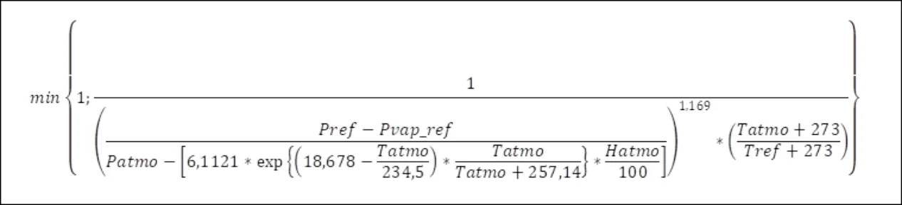</figure>
<p>With: Pref = 1010mbar, Pvap_ref = 12mbar (Atmo relative humidity 50%), Tref = 20°C. L&#x27;utilisation du PU est libre (paramètres, modes) dans la mesure où la puissance totale reste inférieure à la limite de puissance maximale allouée para la BoP.</p>
<p>Power Unit usage is free (settings, modes) as far as the total power stays below the maximum power limit allocated by the BoP.</p>
<h2 id="ANNEXE-5-APPENDIX-5"><span class="pagemark" id="p288">P.288</span>ANNEXE 5 / APPENDIX 5</h2>
<h2 id="SPECIFICATION-POUR-LES-PANNEAUX-ANTI-INTRUSION">SPECIFICATION POUR LES PANNEAUX ANTI-INTRUSION</h2>
<p>SPECIFICATION FOR INTRUSION PANELS</p>
<figure><span class="pagemark" id="p289">P.289</span>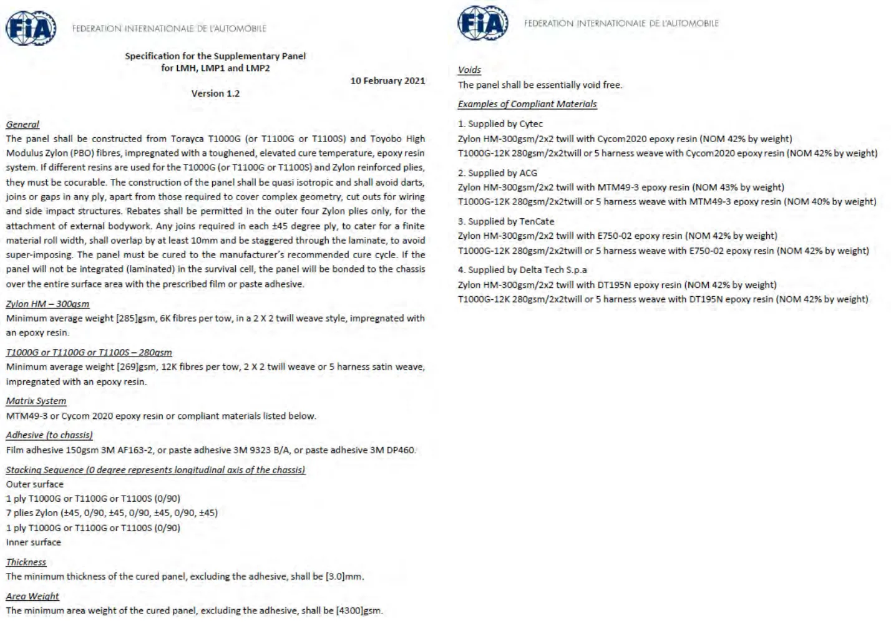</figure>
<h2 id="ANNEXE-6-APPENDIX-6"><span class="pagemark" id="p290">P.290</span>ANNEXE 6 / APPENDIX 6</h2>
<h2 id="N-A-Non-Applicable-Not-Applicable">N/A (Non Applicable / Not Applicable)</h2>
<h2 id="ANNEXE-7-APPENDIX-7"><span class="pagemark" id="p291">P.291</span>ANNEXE 7 / APPENDIX 7</h2>
<h2 id="RAVITAILLEMENT">RAVITAILLEMENT</h2>
<h3 id="REFUELLING">REFUELLING</h3>
<div class="tablewrap"><span class="pagemark" id="p292">P.292</span><table><tr><td></td><td></td><td></td><td></td><td>RAVITAILLEMENT</td><td></td><td></td><td>REFUELLING</td><td></td></tr><tr><td>1/ Définitions :
Plate-forme de ravitaillement : Ensemble destiné au ravitaillement
dans la zone de travail comprenant le chariot, le réservoir
d’approvisionnement, la perche et l’installation d’air.
Réservoir d’approvisionnement : réservoir utilisé pour le stockage
et le ravitaillement dans la zone de travail.
Réservoir temporaire : unité mobile de stockage d’une capacité
maximale de 120 litres utilisée pour le remplissage du réservoir
d’approvisionnement et la vidange/ le remplissage de la voiture.
Perche : bras de support des tuyaux d’air, du bras rotatif, des
plaques d’identification.
2/ Durant l&#x27;épreuve :
Il est interdit de ravitailler la voiture en carburant par tout autre
moyen qu&#x27;une alimentation par gravité utilisant le réservoir
d’approvisionnement d&#x27;une hauteur maximum de 2.20 m (2.60 m
aux 24 Heures du Mans) au-dessus de la piste à l&#x27;endroit du
ravitaillement.
Sauf pendant les séances de roulage, il est permis de remplir la
voiture directement avec le réservoir temporaire (comme décrit à
l&#x27;Art. 9) uniquement lorsque la voiture est dans son stand.
3/ Réservoir d’approvisionnement :
Un seul réservoir d&#x27;approvisionnement conforme au Dessin 7.A ci-
dessous doit être utilisé par voiture.
Ce réservoir doit être de forme intérieure cylindrique simple à fond
plat (l’emploi de double fond est interdit), et ne comporter aucune
pièce interne additionnelle qui pourraient améliorer le débit de
carburant.
Un restricteur de débit de carburant doit être fixé à la sortie du
réservoir d’approvisionnement.
Son diamètre doit être choisi en fonction du temps de remplissage
et/ou de l’énergie par relais tels que définis par le Comité
Endurance.
Pour des raisons de sécurité, le réservoir d’approvisionnement doit
être fixé par l&#x27;intermédiaire d&#x27;une tour sur un chariot ayant les
caractéristiques suivantes :
- tous les composants de la tour doivent être assemblés
mécaniquement sans degré de liberté par rapport au chariot.
- l&#x27;embase du chariot doit avoir une surface au sol minimum de
2 m2 et doit être constituée d&#x27;un caisson monté sur 4 roulettes
auto-freinées, lesté d&#x27;un poids supérieur à celui du réservoir
plein de carburant.
- Aucune canalisation (air ou carburant par exemple) située à une
hauteur inférieure à 1.3 m ne peut dépasser du côté de la tour
qui fait face à la voie des stands.
Un système de pesée de carburant peut être réalisé en introduisant
un plateau bascule sous le réservoir, à condition que les
caractéristiques ci-dessus soient respectées.
Le réservoir d’approvisionnement doit comporter, sur le dessus, un
système de mise à l&#x27;air libre conforme à la règlementation FIA (voir
Dessin n°7.A ci-dessous).
La ventilation du réservoir doit être effectuée uniquement par
l’intermédiaire de ce système. Toutes les autres ouvertures
doivent être fermées hermétiquement.
La longueur du tube de ventilation peut être adaptée si nécessaire
et uniquement sur acceptation de l’ACO/FIA.
Si un niveau à glace est monté à l’extérieur du réservoir principal,
il doit être équipé de vannes d’isolement placées au plus près du
réservoir.
L’équipement peut etre protégé de l’exposition direct du soleil à la
condition de cette protection n’empêche pas l’inspection ou
interfère avec l’entretien de cet équipement.</td><td></td><td></td><td></td><td></td><td></td><td>Definitions:
Refuelling rig: Assembly of a complete pitstop rig, including the
trolley, the supply tank, the gantry and the air installation.
Supply tank: Storage tank used for the refuelling in the working
area.
Fuel bowser: Mobile refuelling unit with 120 litre maximum
capacity to refuel/drain the car and the supply tank.
Gantry: Pitlane boom to carry the air hoses, rotary arms,
identification boards
Throughout the event:
It is forbidden to refuel the car by any means other than feeding by
gravity using the supply tank with a maximum height of 2.20 m
(2.60 m at the 24 Heures du Mans) above the track where the
refuelling takes place.
Except during the running sessions, it is allowed to fill the car
directly with the fuel bowser (as described in Art. 9) only when the
car is in the garage.
Supply tank:
Only one supply tank complying with Drawing 7.A below, must be
used per car.
This tank must have a simple cylindrical internal shape with flat
bottom (the use of double skin bottom is forbidden) and must not
have any internal parts which could improve the fuel flow.
A fuel flow restrictor must be used on the outlet of the supply tank.
The restrictor diameter must be choosen in accordance with the
refuelling time and/or energy per stint decided by the Enfurance
Committee.
For safety reasons, the supply tank must be fixed, through a tower,
onto a trolley with the following characteristics:
- all the tower components must be mechanically assembled
without any degree of freedom in relation to the trolley.
- the base of the trolley must have a surface area of at least 2 m2
and must be made with a case fitted on 4 self-braking castors,
ballasted with a weight greater than that of the tank filled with
fuel.
- No pipes (fuel or air guns for example) are allowed to protrude
from the face of the trolley facing the pit lane at a height below
1.3m.
A system for weighing the fuel may be applied through placing a
weighing plate underneath the tank, provided that the
characteristics set out above are respected.
There must be on top of the supply tank an air vent system
complying with FIA regulations (see drawing 7.A below).
The ventilation of the supply tank should only be made through this
system. All the other openings must be closed hermetically.
The vent tube length can be adapted only if required and accepted
by ACO/FiA.
If a sight glass is fitted to the outside of the supply tank, it must be
fitted with isolating valves mounted as close as possible to the
tank.
Refuelling equipment may be protected from direct sunlight
provided the protection does not prevent inspection, or interfere
with maintenance, of the equipment</td><td></td><td></td></tr></table></div>
<p><span class="pagemark" id="p293">P.293</span>Toute pièce ou système qui aurait pour effet de chauffer ou refroidir le carburant est interdit  Un bras support des tuyaux de ravitaillement et des tuyaux d’air peut être fixé sur le chariot : - il doit être indépendant du reservoir et de la tour. - il est recommandé de prévoir un degré de liberté de ce bras par</p>
<p>Any device or system which has the effect of heating or cooling the fuel is prohibited  A gantry for supporting the refuelling lines and air hoses may be attached to the trolley: - it must be independent of both the tank and the tower. - it is recommended that this member be allowed a degree of</p>
<p>rapport au chariot (rotation suivant un axe vertical).  - sa longueur ne doit pas dépasser 4.00 m et il doit permettre un</p>
<p>freedom in relation to the trolley (rotation following a vertical axis). - it must not exceed 4.00 m in length and must allow a free</p>
<p>passage libre d&#x27;une hauteur de 2.00 m sur toute sa longueur, accessoires compris. - une plaque d’identification portant le numéro de course de la</p>
<p>passage of a height of 2.00 m over its entire length, including the accessories. - an identification plate bearing the race number of the competing</p>
<p>voiture concurrente doit être fixée à son extrémité. Le réservoir d’approvisionnement du stand ne peut être utilisé</p>
<p>car must be fixed to its end.  The supply tank can only be used by the Competitor to refuel the car officially nominated for that pit.</p>
<p>que par le Concurrent pour ravitailler la voiture officiellement affectée pour ce stand.</p>
<p>4/ Conduite de remplissage et de mise à l’air Refuelling and venting hoses</p>
<p>La longueur de la conduite de remplissage doit être comprise entre 3,00 m et 5,00 m (entre 4,00 m et 6,50m pour les “24 Heures du Mans”), raccord rapide et accoupleur mâle inclus. Elle doit être munie d&#x27;un accoupleur étanche s&#x27;adaptant à l&#x27;orifice de remplissage monté sur la voiture (conformes à la règlementation FIA – Annexe J Art. 252 – Dessin 252-5 (Version B) exclusivement). La conduite de mise à l’air doit se raccorder sur le côté du réservoir autonome d’approvisionnement conformément au Dessin n°7.A</p>
<p>The length of the refuelling hose must be between 3.00 m and 5.00 m (between 4.00 m and 6.5 m at the “24 Heures du Mans”), quick coupling and male refuelling valve included. It must be fitted with a seal proof coupling to fit the filler mounted on the car (in compliance with FIA – Appendix J Art. 252 – Drawing 252-5 (Version B)  only).  The vent hose must be connected to the side of the autonomous supply tank in accordance with Drawing No. 7.A</p>
<p>5/ Connections électriques à la terre Avant que le ravitaillement (ou la vidange) ne commence, le connecteur de la voiture et l’équipement de ravitaillement (ou de vidange) doivent être reliés électriquement à la terre. Toutes les parties métalliques du système de ravitaillement, depuis l&#x27;accoupleur jusqu&#x27;au réservoir principal et son support, doivent également être connectées à la terre.</p>
<p>Electrical ground connections Before refuelling (or draining) begins, the car connector and the refuelling (or draining) equipment must be connected electrically grounded. All metallic parts of the refuelling installation, from the coupling to the main supply tank and its rack must also be electrically grounded.</p>
<p>6/ Vanne poignée de « l’homme mort » Un assistant doit être présent à tout moment pendant le ravitaillement pour manœuvrer une vanne d&#x27;arrêt (principe de l&#x27;homme mort) située en sortie du réservoir principal et permettant le contrôle du débit de carburant.</p>
<p>Dead man valve A fuel attendant must always be present when refuelling is on the process as to operate an automatic self-closing ball valve (dead man principle) placed on the outlet of the supply tank and allowing the fuel flow control.</p>
<p>7/ Tous les flexibles, raccords et restricteurs utilisés doivent avoir un diamètre intérieur maximum de 1.51 pouce  (38.4 mm). L’ajout de toute pièces dans la section rigide ou dans les tuyaux est interdite.</p>
<p>All hoses and fittings which are used shall have a maximum  inside diameter of 1.51 inch (38.4 mm). It isn’t allowed to add any parts inside the prescribed rigid section and or inside the hose.</p>
<p>8/ L&#x27;utilisation de bidons de dégazage est interdite à l&#x27;intérieur et à proximité des stands. Tout récipient stockant du carburant en provenance du fournisseur doit être équipé de coupleurs auto obturants.</p>
<p>Using overflow bottles whatsoever is forbidden in the pits or around the pits. Any container in which is stored some fuel coming from supplier needs to be fitted with self sealing couplings.</p>
<p>9/ Réservoir temporaire Un réservoir temporaire avec une capacité maximale de 120 litres doit être utilisé dans le stand pour transférer temporairement le carburant contenu dans le réservoir de la voiture et pour assurer le pompage dans les futs d’approvisionnement, le transfert jusqu’au réservoir autonome et son remplissage. . Pour les 24H du Mans, l’équipement pour le remplissage du réservoir d’approvisionnement sera fourni par l’organisateur.  L’activation de ce réservoir temporaire doit être effectuée par le biais d’un bouton poussoir à pression (principe de l’homme mort). Lors de toute utilisation, il doit être connecté à la terre.  Il doit être parfaitement étanche et doit avoir une mise à l’air libre équipée d’un clapet anti-retour et conçue pour éviter toute fuite. Les canalisations reliant le réservoir temporaire, le réservoir de la voiture , les futs d’approvisionnement et le réservoir autonome</p>
<p>Fuel bowser A fuel bowser with a maximum capacity of 120 liters must be used into the pit to transfer temporarily the fuel contained in the tank of the car and to ensure pumping in the supply drums, transfer to autonomous tank and filling. For the 24H of Le Mans, the equipment for filling the supply tank will be provided by the organizer.  The activation of this temporary tank must be carried out by means of a pressure push button (dead man principle). During any use, it must be connected to earth.  It must be completely sealed and must have a breather pipe fitted with a non return valve and designed to avoid any liquid leakage. The lines connecting the temporary fuel tank, the tank of the car, the supply drums and the autonomous tank must meet the requirements of the fuel lines fitted to the car.</p>
<p><span class="pagemark" id="p294">P.294</span>doivent respecter les prescriptions des canalisations de carburant équipant la voiture. Le réservoir temporaire doit être équipé d’un coupleur identique à celui de la voiture pour récupérer le carburant contenu dans le tuyau de mise à l’air libre. Si toutefois le réservoir temporaire n’a pas de coupleur il est possible d’utiliser le réceptacle décrit dans l’article A7.8.4 du règlement sportif.</p>
<p>The temporary tank must be fitted with a coupling identical to the one of the car to enable the recovery of fuel contained in the vent hose. However, if the temporary tank has no coupler it is possible to use the receptacle described in article A7.8.4 of the sporting regulations.</p>
<p>10/ Mesure de débit de carburant Fuel flow measurement</p>
<p>L’utilisation d’un débitmètre de carburant homologué conformément à la Liste Technique n°46 de la FIA est obligatoire. Il doit être étalonné par un laboratoire certifié conformément à la Liste Technique n°44 de la FIA. Le débimètre de carburant doit être installé entre la sortie du réservoir d’approvisionnement et la vanne poignée de « l’homme mort ». Le débit de carburant complet servant au remplissage du réservoir de la voiture doit passer par le débitmètre.</p>
<p>The use of an homologated fuel flow meter from FIA Technical List 46 is mandatory. It must be calibrated by a certified laboratory according to FIA Technical List 44.  The fuel flow meter must be installed between the outlet of the supply tank and the dead man valve. The complete fuel flow used to fill the car reservoir must go through the fuel flow meter.</p>
<figure>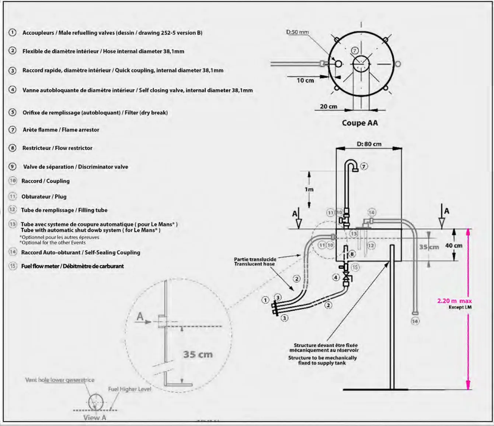</figure>
<p>Dessin / Drawing 7.A</p>
<h2 id="2026-FIA-WORLD-ENDURANCE-5"><span class="pagemark" id="p295">P.295</span>2026 FIA WORLD ENDURANCE</h2>
<h2 id="CHAMPIONSHIP-5">CHAMPIONSHIP</h2>
<h2 id="TECHNICAL-REGULATIONS-2">TECHNICAL REGULATIONS</h2>
<h2 id="LMDh">(LMDh)</h2>
<h2 id="ISSUE-16-October-2025">(ISSUE: 16 October 2025)</h2>
<figure><span class="pagemark" id="p296">P.296</span></figure>
<div class="tablewrap"><table><tr><td></td><td>INTERNATIONAL</td><td></td></tr><tr><td></td><td>MOTOR SPORTS</td><td></td></tr><tr><td></td><td>ASSOCIATION</td><td></td></tr></table></div>
<h3 id="AUTOMOBILE-CLUB-DE-L-OUEST-One-Daytona-Blvd-Dayt">AUTOMOBILE CLUB DE L’OUEST    One Daytona Blvd. Daytona Beach, FL 32114 (O) +1 (386) 310-6500 www.imsa.com</h3>
<h3 id="Circuit-des-24-Heures-CS21928-72019-Le-Mans-Cede">Circuit des 24 Heures CS21928 72019 Le Mans Cedex 2 www.lemans.org</h3>
<figure>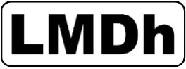</figure>
<h3 id="TECHNICAL-REGULATIONS-Revision-Date-October-16th">TECHNICAL REGULATIONS Revision Date: October 16th 2025</h3>
<figure><span class="pagemark" id="p297">P.297</span>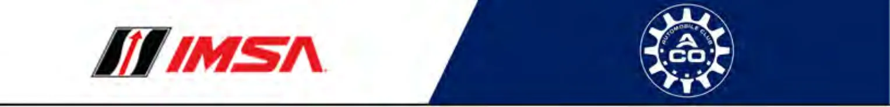<figcaption>Table of content ARTICLE 0: FOREWORD ....................................................................... 5 ARTICLE 1: DEFINITIONS ..................................................................... 5</figcaption></figure>
<p>1.1 ‘’LE MANS DAYTONA h’’ ...................................................5 1.2 Manufacturer .......................................................................5 1.3 Automobile ..........................................................................5 1.4 Land vehicle ........................................................................5 1.5 Bodywork ............................................................................5 1.6 Wheel centre line ................................................................5 1.7 Height measurements ........................................................5 1.8 Distances ............................................................................5 1.9 Wheel ..................................................................................5 1.10 Complete wheel ..................................................................6 1.11 Automobile make ................................................................6 1.12 Event ...................................................................................6 1.13 Weight .................................................................................6 1.14 Cockpit and Chassis ...........................................................6 1.15 Sprung suspension .............................................................6 1.16 Survival cell .........................................................................6 1.17 Camera ...............................................................................6 1.18 Camera housing .................................................................6 1.19 Cockpit padding ..................................................................6 1.20 Brake caliper .......................................................................6 1.21 Electronically controlled ......................................................6 1.22 Closed-loop electronic control system (active system) ......6 1.23 Power train ..........................................................................7 1.24 Power unit ...........................................................................7 1.25 Energy Recovery System (ERS) ........................................7 1.26 Motor Generator Unit - Kinetic (MGU) ................................7 1.27 Energy Store System (ESS) ...............................................7 1.28 DC-DC converter ................................................................7 1.29 Internal Combustion Engine (ICE) ......................................7 1.30 Rotary engine .....................................................................7 1.31 Auxiliary oil tank ..................................................................7 1.32 High pressure fuel pump ....................................................7 1.33 Fuel Flow Meter (FFM) .......................................................7 1.34 Engine BSFC ......................................................................7 1.35 Gearbox ..............................................................................7 1.36 Differential ...........................................................................7 1.37 Ride height ..........................................................................7 1.38 Cartesian coordinate system ..............................................8 1.38.1 Complete car ........................................................... 8 1.38.2 For the survival cell ................................................. 8 1.39 Customer ............................................................................8 ARTICLE 2: GENERAL PRINCIPLES .................................................... 8</p>
<p>2.1 Role of the ACO/IMSA and basic principles .......................8 2.2 Amendments to the regulations ..........................................8 2.3 Dangerous construction ......................................................8 2.4 Compliance with the regulations .........................................8 2.5 Measurements ....................................................................9 2.6 Duty of Competitor ..............................................................9 ARTICLE 3: BODYWORK AND DIMENSIONS ...................................... 9</p>
<p>3.1 Overall dimensions .............................................................9 No tolerances are applied with reference to maximum or minimum values mentioned in these regulations. ........................................ 9 3.1.1 Height ...................................................................... 9 3.1.2 Bodywork Width ...................................................... 9 3.1.3 Overhangs .............................................................. 9 3.1.4 Overall length .......................................................... 9 3.1.5 Wheelbase .............................................................. 9 3.2 Doors ..................................................................................9 3.3 Windscreen and glass areas ..............................................9 3.3.1 Windscreen ............................................................. 9 3.3.2 Glazing .................................................................... 9 3.4 Bodywork ..........................................................................10 3.4.1 General ................................................................. 10 3.4.2 Upper bodywork .................................................... 10</p>
<p>3.4.3 Bodywork visibility criteria ..................................... 15 3.5 Underside of the car ......................................................... 15 3.5.1 General .................................................................. 15 3.5.2 Reference plane .................................................... 16 3.5.3 Rear diffuser .......................................................... 16 3.5.4 Lateral parts .......................................................... 16 3.5.5 Front inboard floor ................................................. 17 3.5.6 Front outboard floor ............................................... 17 3.5.7 Front part ............................................................... 18 3.5.8 Ground clearance .................................................. 20 3.5.9 Skid block .............................................................. 20 3.5.10 Brake ducts ........................................................... 21 3.6 Rear wing ......................................................................... 21 3.6.1 Wing elements ....................................................... 21 3.6.2 Mounting of the rear wing and vertical supports ... 22 3.6.3 End plates ............................................................. 22 3.7 Engine cover fin ............................................................... 23 3.8 Exhaust pipe outlet........................................................... 23 3.9 Aerodynamic criteria ........................................................ 24 3.9.1 Homologation process........................................... 24 3.9.2 Definition of “Aerodynamic configuration” ............. 25 3.9.3 Criteria ................................................................... 25 3.10 Deflection ......................................................................... 25 3.10.1 General deflection ................................................. 25 3.10.2 Front bodywork parts............................................. 25 3.10.3 Engine cover ......................................................... 25 3.10.4 Engine cover fin ..................................................... 25 3.10.5 Mounting of the rear wing and vertical supports ... 26 3.10.6 Rear wing .............................................................. 26 3.10.7 Wing support ......................................................... 26 3.10.8 Front skid block ..................................................... 26 3.10.9 Rear skid block ...................................................... 26 3.11 Bodywork construction ..................................................... 26 3.11.1 General .................................................................. 26 3.11.2 Tolerances ............................................................. 27 3.12 Aerodynamic stability ....................................................... 27 ARTICLE 4: WEIGHT ............................................................................ 27</p>
<p>4.1 Minimum weight ............................................................... 27 4.2 Weight distribution............................................................ 27 4.3 Ballast .............................................................................. 27 4.4 Liquids .............................................................................. 28 ARTICLE 5: POWER UNIT ................................................................... 28</p>
<p>5.1 General ............................................................................ 28 5.1.1 Definition............................................................................. 28 5.1.2 Powertrain Performance ..................................................... 28 5.2 Engine .............................................................................. 28 5.2.1 Definition............................................................................. 28 5.2.2 Parameters ......................................................................... 29 5.2.3 Engine Control .................................................................... 30 5.3 ERS .................................................................................. 30 5.3.1 Definition............................................................................. 30 5.3.2 MGU ............................................................................... 30 5.3.3 MCU/Inverter ...................................................................... 31 5.3.4 DC-DC ............................................................................... 31 5.3.5 ESS ............................................................................... 31 5.3.6 Electrical cabling and connectors ....................................... 31 5.3.7 Cooling system ................................................................... 31 5.3.8 Vehicle Control Unit (VCU) ................................................. 31 5.3.9 Brake-By-Wire (BBW) ........................................................ 32 5.3.10 ERS General Performance............................................... 32 5.3.11 ERS Operational Modes Supported ................................. 32 5.3.12 ERS Arbitration ................................................................. 32 5.4 Power unit torque demand ............................................... 32 5.5 Power unit control ............................................................ 33 5.6 Engine fuel systems ......................................................... 33 5.7 Engine ancillaries ............................................................. 33 5.9 Materials and construction – General .............................. 33</p>
<p><span class="pagemark" id="p298">P.298</span>5.10 Anti-stall ............................................................................33 ARTICLE 6: FUEL SYSTEM ................................................................. 34</p>
<p>6.1 Principles ..........................................................................34 6.2 Fuel tanks .........................................................................34 6.3 Fittings and piping.............................................................34 6.4 Fuel tank fillers and breather pipes ..................................34 6.5 Refuelling ..........................................................................35 6.6 Fuel Flow Metering - FFM ................................................35 6.7 Fuel draining and sampling ..............................................35 6.8 Energy per stint.................................................................36 ARTICLE 7: ENGINE OIL AND COOLANT SYSTEMS AND CHARGE AIR COOLING ....................................................................................... 36</p>
<p>7.1 Location of oil tanks ..........................................................36 7.2 Longitudinal location of oil system ....................................36 7.3 Transversal location of oil system ....................................36 7.4 Coolant header tanks .......................................................36 7.5 Oil and coolant lines .........................................................36 7.6 Oil catch tank ....................................................................36 7.7 Hydraulic systems.............................................................37 7.7.1 Hydraulic Lines ..................................................... 37 ARTICLE 8: ELECTRICAL SYSTEMS.................................................. 37</p>
<p>8.1 Compliance and safety provisions ....................................37 8.2 Auxiliary circuits and battery .............................................37 8.3 Lighting Equipment ...........................................................38 8.3.1 At the Front: .......................................................... 38 8.3.2 At the Rear: ........................................................... 38 8.3.3 On the Sides: ........................................................ 38 8.4 ACO/IMSA Logging Requirements ...................................38 8.5 Data acquisition ................................................................39 8.6 Telemetry ..........................................................................39 8.7 Track signal information display .......................................39 8.8 Safety Lights .....................................................................39 ARTICLE 9: TRANSMISSION ............................................................... 39</p>
<p>9.1 Transmission types ...........................................................39 9.2 Clutch ................................................................................39 9.3 Traction control .................................................................40 9.4 Clutch disengagement ......................................................40 9.4.1 External neutral and general circuit breaker switches   .............................................................................. 40 9.5 Gearbox ............................................................................40 9.6 Gear ratios ........................................................................40 9.7 Reverse ............................................................................40 9.8 Gear changing ..................................................................40 9.9 Differential .........................................................................41 9.10 Differential output..............................................................41 9.11 Differential usage rules .....................................................41 9.12 Differential Ramps ............................................................41 ARTICLE 10: SUSPENSION AND STEERING SYSTEMS .................. 41</p>
<p>10.1 Suspension design and geometry ....................................41 10.2 Suspension adjustment ....................................................41 10.3 Suspension members .......................................................42 10.4 Steering ............................................................................42 10.4.2 Steering column .................................................... 42 ARTICLE 11: BRAKE SYSTEM ............................................................ 43</p>
<p>11.1 Brake circuits and pressure distribution ............................43 11.2 Brake calipers ...................................................................43 11.3 Brake discs and pads .......................................................43 11.4 Brake cooling ducts ..........................................................43 11.5 Brake pressure modulation ...............................................43 11.6 Liquid cooling ....................................................................43 11.7 Rear brake control system ................................................43 ARTICLE 12: WHEELS AND TYRES ................................................... 44</p>
<p>12.1 Location ............................................................................44 12.2 Number of wheels .............................................................44 12.3 Complete wheel dimensions (rim and tire) .......................44 12.4 Wheel material ..................................................................44 12.5 Wheel dimensions (rim) ....................................................44 12.6 Treatment of tyres.............................................................45 12.7 Wheel assembly ...............................................................45 12.8 Pneumatic jacks................................................................45 ARTICLE 13: COCKPIT AND SURVIVAL CELL .................................. 45</p>
<p>Page | 3 October 16th 2025</p>
<h3 id="LMDh-TECHNICAL-REGULATIONS">LMDh – TECHNICAL REGULATIONS</h3>
<p>13.1 Principles .......................................................................... 45 13.2 Bottom plane of the survival cell ...................................... 45 13.3 Position of the driver’s feet ............................................... 46 13.4 Position of the steering wheel .......................................... 46 13.5 Driver&#x27;s position in relation with the field of visibility ........ 46 13.6 Volumes for the driver and passenger legs – Template H2   ......................................................................................... 46 13.6.1 Geometrical definitions .......................................... 46 13.6.2 Equipment permitted in these volumes ................. 47 13.7 Volume for the driver and the passenger bodies – Template H3  ......................................................................................... 47 13.8 Volume for the driver and the passenger heads – Template H4  ......................................................................................... 47 13.8.1 Geometrical definitions for the driver and the passenger heads ......................................................................... 48 13.9 Equipment in the cockpit .................................................. 48 13.10 Cockpit access ................................................................. 48 13.10.1 Principles ............................................................... 48 13.10.2 Door openings ....................................................... 48 13.10.3 Cockpit exit time .................................................... 49 13.10.4 Test for helmet removal......................................... 49 13.11 Driver&#x27;s field of frontal visibility ......................................... 49 13.11.1 Geometrical definition............................................ 49 13.11.2 Equipment restriction............................................. 50 13.12 Driver&#x27;s field of lateral visibility ......................................... 50 13.12.1 Geometrical definition............................................ 50 13.12.2 Equipment restriction............................................. 50 13.13 Cockpit temperature ......................................................... 51 13.14 Fuel tank compartment .................................................... 51 13.15 Fuel Flow Metering installation volume ............................ 51 13.16 ESS compartment ............................................................ 51 13.17 ESS to ERS compartment ............................................... 51 13.18 Survival cell identification ................................................. 52 13.19 Survival cell characteristics .............................................. 52 ARTICLE 14: SAFETY EQUIPMENT .................................................... 52</p>
<p>14.1 General ............................................................................ 52 14.2 Fire extinguishers ............................................................. 52 14.3 Drivers Master switch ....................................................... 53 14.4 Rear view mirrors ............................................................. 53 14.5 Safety belts ...................................................................... 53 14.6 Cockpit head padding ...................................................... 53 14.7 Cockpit leg padding.......................................................... 55 14.8 Wheel retention ................................................................ 55 14.9 Wheel tethers ................................................................... 55 14.10 Seat .................................................................................. 56 14.11 Frontal Head Restraints ................................................... 56 14.12 Towing eyes ..................................................................... 56 14.13 Lifting devices .................................................................. 56 14.14 General electrical safety .................................................. 57 14.15 Electronic Control Unit ..................................................... 57 14.16 General Circuit Breaker ................................................... 57 14.17 Cables, lines, electrical equipment .................................. 58 14.18 Protection against electrical shock ................................... 58 14.19 Equipotential bonding ...................................................... 59 14.20 Isolation resistance requirements .................................... 59 14.21 Additional protection measures for the AC circuit ............ 59 14.22 Isolation surveillance of chassis and power circuit .......... 59 14.23 Power circuit ..................................................................... 59 14.24 Power bus ........................................................................ 59 14.25 Power circuit wiring .......................................................... 59 14.26 Power circuit connectors, automatic disconnection ......... 59 14.27 Insulation strength of cables ............................................ 59 14.28 Overcurrent trip (fuses) .................................................... 59 14.29 Safety Indicators .............................................................. 59 14.30 Charging units .................................................................. 60 14.31 Battery Management System ........................................... 60 14.32 Accident data recorders (ADR) and high-speed accident cameras  ......................................................................................... 60 14.33 Medical light ..................................................................... 60 ARTICLE 15: SAFETY STRUCTURES ................................................. 60</p>
<p>15.1 Rollover structures ........................................................... 60</p>
<figure>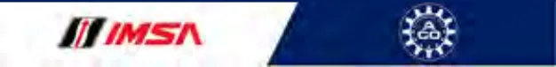</figure>
<p><span class="pagemark" id="p299">P.299</span>15.1.1 General prescriptions ............................................ 60 15.1.2 Rear rollover structure .......................................... 60 15.1.3 Rollover structures approval ................................. 61 15.2 Survival cell .......................................................................61 15.2.1 General prescriptions ............................................ 61 15.2.2 Survival cell shape control .................................... 61 15.2.3 Supplementary panel ............................................ 62 15.2.4 Survival cell approval ............................................ 62 15.3 Front Impact Absorbing Structure - FIAS .........................62 15.3.1 General prescriptions ............................................ 62 15.3.2 Approval ................................................................ 63 15.4 Rear Impact Absorbing Structure - RIAS..........................63 15.4.1 General prescriptions ............................................ 63 15.4.2 Approval ................................................................ 63 15.5 Modifications .....................................................................63 ARTICLE 16: MATERIALS .................................................................... 63</p>
<p>16.1 General .............................................................................63 16.2 Magnesium .......................................................................63 16.3 Titanium ............................................................................63 ARTICLE 17: FUEL ............................................................................... 64</p>
<p>17.1 Supplying ..........................................................................64 17.2 Specifications....................................................................64</p>
<p>Page | 4 October 16th 2025</p>
<h3 id="LMDh-TECHNICAL-REGULATIONS-2">LMDh – TECHNICAL REGULATIONS</h3>
<p>17.2.1 Petrol ..................................................................... 64 ARTICLE 18: TELEVISION CAMERAS AND TIMING TRANSPONDERS  ............................................................................................................... 64</p>
<p>18.1 Presence of cameras and camera housings ................... 64 18.2 Driving camera ................................................................. 64 18.3 Transponders ................................................................... 64 ARTICLE 19: HOMOLOGATION ........................................................... 64</p>
<p>19.1 Principles .......................................................................... 64 19.1.1 Modifications to the original homologation may be requested for the following reasons: ........................................... 64 19.1.2 Modifications requested for safety, reliability, serviceability, end-of-commercialisation or cost saving reasons: 64 19.1.3 Modifications requested for performance and/or styling reasons:............................................................................ 64 19.2 Car Homologation ............................................................ 65 19.3 Allowed Modifications....................................................... 65 19.3.1 Driver fit ................................................................. 65 19.5 Homologation calendar .................................................... 66 19.5.1 Base homologation................................................ 66 19.5.2 Homologation extensions ...................................... 66 ARTICLE 20: BALANCE OF PERFORMANCE..................................... 66 ARTICLE 21: FINAL TEXT .................................................................... 66</p>
<figure></figure>
<h3 id="LMDh-TECHNICAL-REGULATIONS-3"><span class="pagemark" id="p300">P.300</span>LMDh – TECHNICAL REGULATIONS</h3>
<h3 id="ARTICLE-0-FOREWORD">ARTICLE 0: FOREWORD</h3>
<p>These regulations set out the technical requirements for cars to be eligible to compete in the LMDh sportscar events organized by the ACO and/or IMSA.  To complete the homologation of an LMDh car, ACO/IMSA should receive the complete spare parts list with prices.  The sum of the part prices forming the spine must not be more than 140% of the selling price of the spine. The maximum selling price to a customer of this defined spine is 369,150 €.  Departures from this base will be in the following areas:</p>
<p>• Bodywork • ICE and associated electronics • Common P2 rear axle hybrid system as defined within these regulations • Dampers • Wheels • Brakes system (discs and disc bells, pads, calipers) Maximum selling price to a customer of a complete car set of friction material (brake discs and pads) is 24 000€. All LMDh common assemblies and components (i.e. hybrid parts, regulatory systems and sensors…) should not be modified in any way.     ARTICLE 1: DEFINITIONS</p>
<p>1.1 ‘’LE MANS DAYTONA h’’ A closed automobile designed solely for speed races on circuits or closed courses homologated by a Manufacturer.  1.2 Manufacturer A recognized automobile manufacturer producing more than 2,500 vehicles annually for public consumption and public road use.  1.3 Automobile A land vehicle running on at least four non-aligned complete wheels, of which two front wheels are used for steering and two rear wheels for propulsion.  1.4 Land vehicle A locomotive device propelled by its own means, moving by constantly taking real support on the earth&#x27;s surface, of which the propulsion and steering are under the control of a driver aboard the vehicle.  1.5 Bodywork All parts of the car in contact with the external air stream, except cameras and the parts definitely associated with the mechanical functioning of the engine, transmission and running gear. Airboxes, radiators, ducts and engine exhausts are considered to be part of the bodywork.  1.6 Wheel centre line The centre line of any wheel shall be deemed to be half-way between two straight edges, perpendicular to the surface on which the car is standing, placed against opposite sides of the complete wheel at the centre of the tyre tread.  1.7 Height measurements All height measurements related to the car will be taken normal to and from the reference plane.  1.8 Distances All measurements relative to wheel centre lines, car centre plane and survival cell planes will be taken parallel to the reference plane.  1.9 Wheel Flange and rim.</p>
<p>Page | 5 October 16th 2025</p>
<figure></figure>
<h3 id="LMDh-TECHNICAL-REGULATIONS-4"><span class="pagemark" id="p301">P.301</span>LMDh – TECHNICAL REGULATIONS</h3>
<p>1.10 Complete wheel Wheel and inflated tyre. The complete wheel is considered part of the suspension system.  1.11 Automobile make An automobile make corresponds to a complete car. The engine shall be branded with that of the car manufacturer or a recognized engine manufacturer (reference Article 1.2). The Manufacturer’s name must be clear and visible.  1.12 Event Any ACO/IMSA Sanctioned event for any year, the duration of which is defined by the appropriate sanctioning body  1.13 Weight It is the weight of the car without the driver, at all times during the Event. It may be measured without fuel on-board.  1.14 Cockpit and Chassis Cockpit The volume which accommodates the driver and the passenger. The cockpit is the internal volume inside the chassis which is defined by the top of the car, the floor, the doors, the side panels, the glass areas and the front and rear bulkheads. Chassis Entirely sprung part of the structure of the vehicle, to which all the suspension and/or spring loads are transmitted, extending longitudinally from the foremost suspension mounting point on the chassis to the rearmost suspension mounting point on the chassis. Mechanical components are not part of the chassis even if they are fully or partially load-bearing.  1.15 Sprung suspension The means whereby all complete wheels are suspended from the unit comprising the survival cell/power unit/gearbox by a spring medium.  1.16 Survival cell The continuous structure containing the fuel tank, and the cockpit and the parts of the ESS and ERS.  1.17 Camera Television cameras the dimensions of which are defined.  1.18 Camera housing A device which is identical in shape and weight to a camera and which is supplied by the relevant competitor for fitting to his car in lieu of a camera.  1.19 Cockpit padding Non-structural parts placed within the cockpit for the sole purpose of improving driver comfort and safety. All such material must be quickly removable without the use of tools.  1.20 Brake caliper All parts of the braking system outside the survival cell, other than brake discs, brake pads, caliper pistons, components directly associated with the system referred to in Article 11.7, brake hoses and fittings, which are stressed when subjected to the braking pressure. Bolts or studs which are used for attachment are not considered to be part of the braking system.  1.21 Electronically controlled Any command system or process that utilises semi-conductor or thermionic technology. A simple open-loop non-automatic electrical switch activated by the driver acting on one or more system(s) is not considered to be an electronic control. Such a system is also called passive.  1.22 Closed-loop electronic control system (active system) A closed-loop electronic control system is a system in which: • An actual value (controlled variable) is continuously monitored; • The &quot;feed-back&quot; signal is compared with a desired value (reference variable); • The system is then automatically adjusted according to the result of that comparison.</p>
<figure></figure>
<p>Page | 6 October 16th 2025</p>
<h3 id="LMDh-TECHNICAL-REGULATIONS-5"><span class="pagemark" id="p302">P.302</span>LMDh – TECHNICAL REGULATIONS</h3>
<p>Such a system is also called active.  1.23 Power train The engine, MGU-K and associated torque transmission systems, up to the drive shafts torque measurements.  1.24 Power unit The internal combustion engine, complete with its ancillaries, any energy recovery system and all actuation systems necessary to make them function at all times.  1.25 Energy Recovery System (ERS) A system that is designed to recover energy from the car, store that energy and make it available to propel the car and, optionally, to drive any ancillaries and actuation systems necessary for its proper function.  1.26 Motor Generator Unit - Kinetic (MGU) The Motor Generator Unit is the electrical machine mechanically linked to the drive train as part of the ERS.  1.27 Energy Store System (ESS) The ESS cells (including any clamping plates), electrical connections between cells and its safety control electronics.  1.28 DC-DC converter An electronic circuit connected to the ESS and whose function is to regulate multi-level voltage outputs for use by the electrical and electronic components of the car and power unit. A DC-DC converter may only consume energy from the energy store and cannot recover energy into the Energy Store. The components directly supplied by the DC-DC or indirectly supplied through the non ERS energy storage cannot be used to propel the car or to provide energy to the pressure charging system  1.29 Internal Combustion Engine (ICE) The internal combustion engine including ancillaries and actuator systems necessary for its proper function.  1.30 Rotary engine Engine of the type covered by the NSU Wankel patents.  1.31 Auxiliary oil tank An auxiliary oil tank is a singular vessel connected to the engine whose sole function is to hold engine oil for the replenishment of the engine lubrication system.  1.32 High pressure fuel pump A mechanical device whose sole function is to compress the fuel to the pressure required for the high-pressure injection. It may be electronically controlled.  1.33 Fuel Flow Meter (FFM) A sensor whose function is to measure the flow of the fuel passing through it.  1.34 Engine BSFC The BFSC (Brake Specific Fuel Consumption) is a measure of the fuel efficiency of a system. It is the rate of fuel consumed by the system divided by the power produced by the system.  1.35 Gearbox A gearbox is defined as all the parts in the drive line which transfer torque from the Power Unit output shafts to the drive shafts (the drive shafts being defined as those components which transfer drive torque from the sprung mass to the un-sprung mass). It includes all components whose primary purpose is for the transmission of power or mechanical selection of gears, bearings associated with these components and the casing in which they are housed.  1.36 Differential A differential is defined as a gear train that permits two drive shafts connected to two different wheels of the same drive train to rotate at different speeds while being driven by a third shaft.  1.37 Ride height Distance between the reference plane and the ground. The front ride height (FRH) will be taken at the front axle centre line and the rear ride height (RRH) at the rear axle centre line.</p>
<figure></figure>
<p>Page | 7 October 16th 2025</p>
<h3 id="LMDh-TECHNICAL-REGULATIONS-6"><span class="pagemark" id="p303">P.303</span>LMDh – TECHNICAL REGULATIONS</h3>
<p>1.38 Cartesian coordinate system 1.38.1 Complete car The three-dimensional cartesian coordinate system, with origin O being on the reference surface at vertical position of front axle centre and axis lines X, Y and Z, oriented as shown by the arrows must be used. The X direction is in the reference plane backward, the Y direction is toward the right, the Z direction is toward the top.</p>
<figure>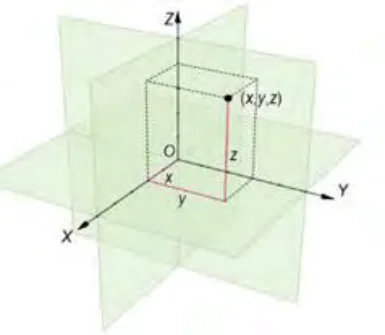</figure>
<p>1.38.2 For the survival cell The reference will be defined on a case by case basis according to the following principles:</p>
<p>• Xsc: forward face of rear rollover structure, parallel to X0; • Ysc: car centre line, identical to Y0; • Zsc: survival cell reference plane, parallel to Z0 at the lowest point of the survival cell. ‘sc’ for Survival Cell.  1.39 Customer The customer is defined as the end user, i.e. the competitor.   ARTICLE 2: GENERAL PRINCIPLES</p>
<p>2.1 Role of the ACO/IMSA and basic principles The following technical regulations are issued by the ACO/IMSA. What is not expressly permitted by the present regulations is prohibited. The car must be, in any circumstances, under the control of the driver.  2.2 Amendments to the regulations These Technical Regulations apply to the Championship taking place and referred to in the title (“the Championship”) and may only be changed after 1st January of the year under exceptional circumstances, save for changes made by the ACO/IMSA for safety reasons which may come into effect without notice or delay.  2.3 Dangerous construction It is the responsibility of the constructor and manufacturer to produce a safe car. ACO/IMSA may request any testing or information to ensure the safe construction of the car. The stewards may prohibit from competition or exclude a vehicle whose construction is deemed to be dangerous.  2.4 Compliance with the regulations Automobiles must comply with:</p>
<p>1. these regulations and its Appendixes 2. homologation forms and other officially supplied relevant information as drawings, specifications, etc… 3. Balance of Performance (BoP) adjustments 4. Endurance Committee decisions (WEC) and IMSA Technical Committee decisions (IMSA) in their entirety at all times during an Event. Should a constructor/manufacturer wish to introduce a new design or system or feel that any aspect of these regulations is unclear, clarification may be sought from the ACO/IMSA Technical Department(s) and for WEC competition validated with the Endurance Committee. If clarification relates to any new design or system, correspondence must include: a. A full description of the design or system. b. Drawings or schematics where appropriate. c. The constructor/manufacturer’s opinion concerning the immediate implications on other parts of the car of any</p>
<h3 id="proposed-new-design">proposed new design.</h3>
<p>Page | 8 October 16th 2025</p>
<figure></figure>
<h3 id="LMDh-TECHNICAL-REGULATIONS-7"><span class="pagemark" id="p304">P.304</span>LMDh – TECHNICAL REGULATIONS</h3>
<h3 id="d-The-constructor-manufacturer-s-opinion-concern">d. The constructor/manufacturer’s opinion concerning any possible long-term consequences or new developments</h3>
<p>which may come from using any such new designs or systems. e. The precise way or ways in which the constructor/manufacturer feels the new design or system will enhance the</p>
<p>performance of the car.  2.5 Measurements All measurements must be made while the car is stationary on a flat horizontal surface. Infinite precision can be assumed on certain dimensions provided it is clear that such an assumption is not being made in order to circumvent or subvert the intention of the relevant regulation.  2.6 Duty of Competitor It is the duty of each competitor to satisfy the ACO/IMSA technical delegates and the stewards that his/her automobile complies with these regulations in their entirety at all times during an Event. It is the Manufacturer’s/Constructor’s responsibility to design, construct, and homologate their cars in compliance with the regulations. A stamped homologation document does not constitute a waiver for existing, ongoing, latent, future, or unobserved infractions of the regulations. The design of the car, its components and systems shall, with the exception of safety features, demonstrate their compliance with these regulations by means of physical inspection of hardware or materials. No mechanical design may rely upon software inspection as a means of ensuring its compliance.   ARTICLE 3: BODYWORK AND DIMENSIONS</p>
<p>3.1 Overall dimensions No tolerances are applied with reference to maximum or minimum values mentioned in these regulations.</p>
<p>3.1.1 Height No part of the bodywork except, by agreement with ACO/IMSA, homologated pitot sensors, antennae and associated fairings, may be more than 1060 mm above the reference plane.</p>
<p>3.1.2 Bodywork Width The overall bodywork width of the car must not exceed 2000 mm.</p>
<p>3.1.3 Overhangs No part of the car may be more than:</p>
<p>• 1100 mm forward of the front wheel centre line • 850 mm rearward of the rear wheel centre line for rear wing • 750 mm rearward of the rear wheel centre line for bodywork</p>
<p>3.1.4 Overall length The overall bodywork length must not exceed 5100 mm.</p>
<p>3.1.5 Wheelbase The car will be designed with a wheelbase of 3148 mm and an allowance of +/-5mm for setup adjustments.  3.2 Doors Doors must provide a normal access to the cockpit through the opening as specified in Article 13.10.2. Opening (hinges) or locking (locks) devices must be designed to allow a quick release of the entire door in case of emergency from the interior as from the exterior of the cockpit with the use of gloves. Hinges and locks must be marked in a signal colour.  3.3 Windscreen and glass areas 3.3.1 Windscreen Mandatory, made of one piece of polycarbonate (minimum thickness of 6 mm), or equivalent material. The forward most point of the windscreen must be 900 mm +/- 50 mm ahead of the rear face of the survival cell front rollover structure. The windscreen must be able to be removed by the marshals with the use of a #4 Allen key and with a maximum of 16 Tridair bolts. Electrical demisting allowed.</p>
<h5 id="3-3-2-Glazing">3.3.2 Glazing</h5>
<figure></figure>
<p>Page | 9 October 16th 2025</p>
<h3 id="LMDh-TECHNICAL-REGULATIONS-8"><span class="pagemark" id="p305">P.305</span>LMDh – TECHNICAL REGULATIONS</h3>
<p>Side windows made of polycarbonate (minimum thickness of 2.0 mm) are mandatory. An additional frame and any driver’s cooling intake/scoop may be added, but it must be solidly fixed and it must not obstruct the driver’s lateral vision defined in Article 13.12; An opening of 40 cm² minimum for extracting air from the cockpit must be made on the rear part of each side window or each cockpit access.  3.4 Bodywork 3.4.1 General Only one bodywork may be homologated. Only one bodywork adjustable aerodynamic device (AAD) (front or rear wing, flap, single element dive-plane, or gurney) may be used. Where the AAD does not intersect the centerline of the car a pair of devices are permitted (one on each side of the car). Whatever the position of this device, the car must fulfil the aerodynamic criteria defined in these Regulations at all times. The method of adjustment for this AAD is:</p>
<p>• Rotation for wing/flap with the minimum and maximum angle being homologated, any increment between these limits being permitted. • Trimmed variants of the same part or removal (dive-plane or gurney), with only homologated variants being permitted to be fitted to the car. The AAD must be symmetrical about the car centreline. Movable and/or deformable bodywork parts/elements are forbidden when the car is in motion. The addition of foil/film/tape over bodywork split lines must not be used on the following areas: doors, wiper, handles, latches, safety pulls, lifting bar holes, refueling hatches, cooling/bodywork apertures (except brake cooling). Unless otherwise stated, tape will not be allowed in places where there are no bodywork discontinuities. Any system operated automatically and/or controlled by the driver to modify any airflow when the car is in motion is forbidden, unless explicitly authorized by the present regulations. For cockpit cooling purpose, a cooling fan is authorized provided that the electrical power is less than 150 W and the outlet is within the cockpit. As a principle, air through flow is not allowed except for standard cooling purposes (cockpit, engine, hybrid system, gearbox, brakes) and specific flap purposes (splitter and rear wing).  3.4.2 Upper bodywork 3.4.2.1 Free Boxes Upper bodywork geometry is free inside designated free box volumes provided that all criteria in Article 3 and sub-articles are respected, the geometry complies with the relevant driver cockpit access and visibility templates detailed in Article 13.  The following images illustrate the permitted Free Boxes:</p>
<figure></figure>
<p>Free box volumes defined as follows: i) Free box F1 A prismatic extrusion from the front of the car back to the front axle centre line using the section as illustrated below. The geometric limits of the volume are: • Bounded by the front extremity of the car and the front axle centre line in X direction • Symmetrically distributed about the car centre line to the car maximum width • Planes located on and 700 mm above the reference plane outboard of a width of 1000 mm.</p>
<figure></figure>
<p>Page | 10 October 16th 2025</p>
<h3 id="LMDh-TECHNICAL-REGULATIONS-9"><span class="pagemark" id="p306">P.306</span>LMDh – TECHNICAL REGULATIONS</h3>
<h3 id="Planes-located-50-mm-and-600-mm-above-the-refer">• Planes located 50 mm and 600 mm above the reference plane over a width of 1000 mm.</h3>
<figure>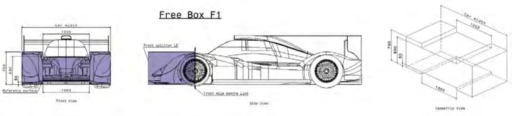</figure>
<p>ii) Free Box F2 A volume extending from the front axle centre line to the rearmost extremity of the car with rear wing removed. The geometric limits of the volume are: • Bounded by the front axle centre line and the rearmost extremity of the car with the rear wing removed in X direction • Symmetrically distributed about the car centre line to the car maximum width • Free box volumes for front inboard floor and front outboard floor devices (Articles 3.5.5 and 3.5.6 respectively) subtracted • Underfloor lower surface defined in Article 3.5.1 The variable Z heights are: • Vertically between underfloor upper surface and 700 mm above reference plane, linearly tapering outboard of planes located 500 mm and 550 mm from car centre line. Longitudinal planes located on and 400 mm rearwards of front axle centre line. • Vertically between underfloor upper surface and 725 mm above reference plane outboard of a plane 550 mm from car centre line. Longitudinal planes located on 400 mm rearwards of front axle centre line and rear axle centre line. • Vertically between 200 mm and 725 mm above reference plane outboard of a plane 550 mm from car centre line. Longitudinal planes located on rear axle centre line and rear bodywork extremity. • Vertically between underfloor upper surface and 600 mm above reference plane inboard of a plane 550 mm from car centre line. Longitudinal planes located on front axle centre line and rear bodywork extremity.</p>
<figure>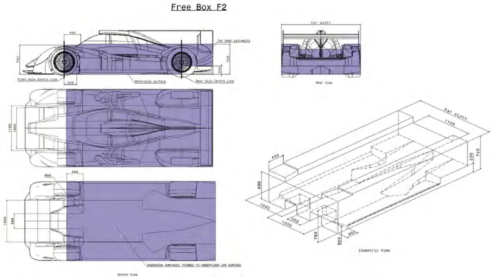</figure>
<p>iii) Free Box F3 A prismatic extrusion located behind chassis and above Free Box F2 intended to permit styling freedom to engine cover surface. The geometric limits of the volume are:</p>
<h3 id="Bounded-in-X-direction-by-the-vertical-front-fa">• Bounded in X direction by the vertical front face of the rear rollover structure (Xsc) and rear bodywork extremity</h3>
<p>Page | 11 October 16th 2025</p>
<figure></figure>
<h3 id="LMDh-TECHNICAL-REGULATIONS-10"><span class="pagemark" id="p307">P.307</span>LMDh – TECHNICAL REGULATIONS</h3>
<p>• Linear taper between fin vertical extremity and 600 mm above reference plane located at rear face of Free Box F4 and rear bodywork extremity respectively • Linear taper in plan view symmetrically distributed over widths of maximum chassis width at Xsc and 500 mm about car centre line</p>
<figure>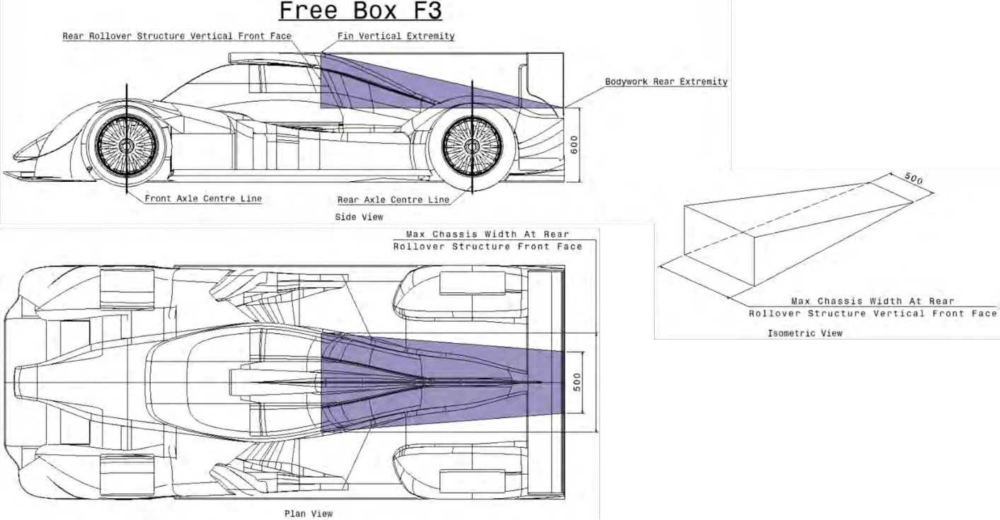</figure>
<p>iv) Free Box F4 A prismatic extrusion rearward of the forward-most point of the homologated ICE air intake. The geometric limits of the volume are: • Bounded in X direction by forward-most point of the homologated ICE air intake and Xsc. • 320 mm symmetrically distributed about the longitudinal centre line of the car • In the Z direction between the highest point of the engine cover fin and the survival cell external surface</p>
<figure>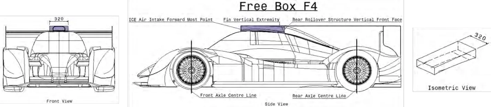</figure>
<p>3.4.2.2 Quick-release fixings All quick-release fixings must be visible from the outside and clearly indicated (arrows in any contrasting colour).</p>
<p>3.4.2.3 Bodywork joints in the vicinity of the refuelling coupling systems All joints must be designed to prevent any leakage into the engine compartment or into the cockpit. External parts of the refuelling coupling may be visible from the outside.</p>
<p>3.4.2.4 Chassis bond on panels Chassis and/or door bonds, if in compliance with all vision and accessibility template requirements, are permitted:</p>
<p>• On the front portion of the chassis they must lie within the permitted and relevant Free Boxes • On the survival cell surfaces above Z600 mm (represented below in cyan) • On the door surfaces They must lie within a 40mm surface offset of the homologated survival cell outer surface.</p>
<p>Page | 12 October 16th 2025</p>
<figure></figure>
<h3 id="LMDh-TECHNICAL-REGULATIONS-11"><span class="pagemark" id="p308">P.308</span>LMDh – TECHNICAL REGULATIONS</h3>
<figure>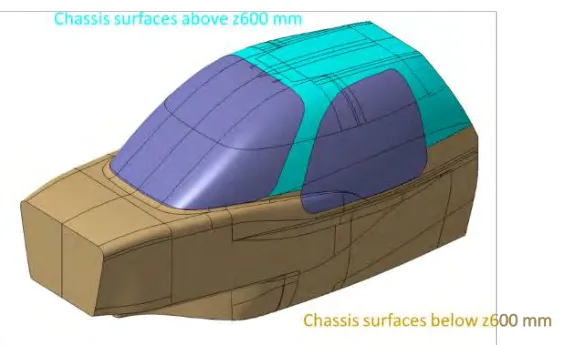</figure>
<p>3.4.2.5 Air intakes a) They must comply with Article 3.4.3. b) They must not protrude beyond the perimeter of the bodywork as viewed from above and must not move relative to the bodywork (except for front brake duct providing that the inlet surface is more than 100 mm away from bodywork). c) They must not protrude more than 50 mm (100 mm for the engine air intakes) over the surface of the bodywork. Measurement made vertically from the highest point of the air intake opening down to a horizontal bodywork element at least 100 mm wide across. d) If located on the top of the car, area defined by the upper line of the windscreen, the side windows and the vertical and transverse plane tangent to the rearmost point of the door openings, air intake(s) must be located rearward of the highest point of the windscreen. e) Brake cooling: To adjust brake cooling, it will be allowed to blank partially or totally the entry of the brake cooling duct(s) with flat rigid plates (typically blanking added on mesh). Tape will not be permitted from 2025 onwards. f) Driver cooling: taping of the cockpit cooling inlets from the outside, for the sole purpose of preventing water ingress, only while wet tyres are fitted on the car. Tape must be opaque and highly visible from a distance (e.g. yellow).</p>
<p>3.4.2.6 Front fender opening a) One or more cut-outs are compulsory above each front wheel. b) As viewed from above the cut out(s) must:</p>
<p>i. have a combined area no less than 145 725 mm2 ii. have the mean centre of area lie on the front wheel centre line axis. iii. have the outer most edge positioned no less than 30 mm from the front fender outer edge when measured in the Y direction. iv. have the inner most edge positioned no more than 350 mm from the front fender outer edge when measured in the Y direction. v. have the forward most point located no more than 370 mm ahead of the front wheel centre line axis when measured in the X direction. vi. have the rearward most point located not more than 370 mm behind the front wheel centre line axis when measured in the X direction. c) Louvers may be added inside the cut-out plan area but must not extend above the base fender surface. If louvers</p>
<h3 id="are-included-inside-the-cut-out-plan-area-the-ne">are included inside the cut-out plan area the net “exposed” area must be no less than 145 725 mm2.</h3>
<figure>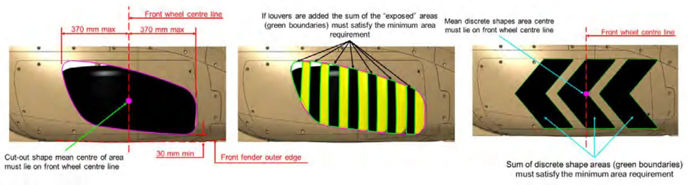</figure>
<p>3.4.2.7 Rear fender opening a) One or more cut-outs are compulsory above each rear wheel. b) As viewed from above the cutout(s) must:</p>
<p>i. have a combined area no less than 100 700 mm2. ii. have the mean centre of area lie on the rear wheel centre line axis. iii. have the outer most edge positioned no less than 50 mm from the rear fender outer edge when measured in the Y direction.</p>
<p>Page | 13 October 16th 2025</p>
<figure></figure>
<h3 id="LMDh-TECHNICAL-REGULATIONS-12"><span class="pagemark" id="p309">P.309</span>LMDh – TECHNICAL REGULATIONS</h3>
<p>iv. have the inner most edge positioned no more than 400 mm from the rear fender outer edge when measured in the Y direction. v. have the forward most point located no more than 370 mm ahead of the front wheel centre line axis when measured in the X direction. vi. have the rearward most point located not more than 370 mm behind the front wheel centre line axis when measured in the X direction. c) Louvers may be added inside the cut-out plan area but must not extend above the base fender surface. If louvers</p>
<h3 id="are-included-inside-the-cut-out-plan-area-the-ne-2">are included inside the cut-out plan area the net “exposed” area must be no less than 100 700 mm2.</h3>
<figure>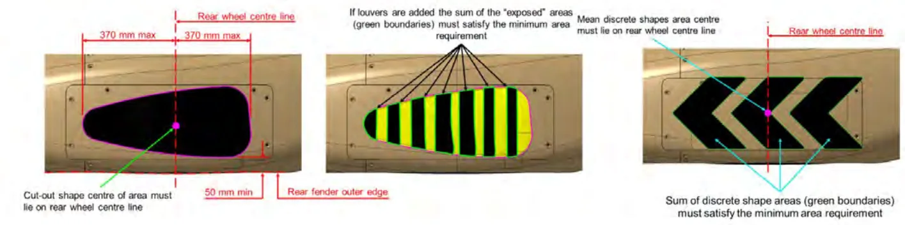</figure>
<p>3.4.2.8 Minimum height bodywork surface When viewed from above all visible parts of the upper bodywork must not extend below a surface defined by:</p>
<p>• A linear taper between a point 400 mm above the reference located 400 mm ahead of the survival cell rear face and a point 450 mm above the reference plane located at the survival cell rear face. Taper width equal to maximum bodywork width minus 300 mm symmetrically distributed about longitudinal car centre line. • Minimum height of 450 mm from the reference surface between the cockpit rear face and a vertical and transverse plane 415 mm forward of the rear axle centre line. Width equal to maximum bodywork width minus 300 mm symmetrically distributed about longitudinal car centre line. • A linear taper between a point 415 mm forward of the rear axle centre line, 450 mm above the reference plane and a point 450 mm rearward of the rear axle centre line, 300 mm above the reference plane. Taper width of 1200 mm symmetrically distributed about longitudinal car centre line.</p>
<figure>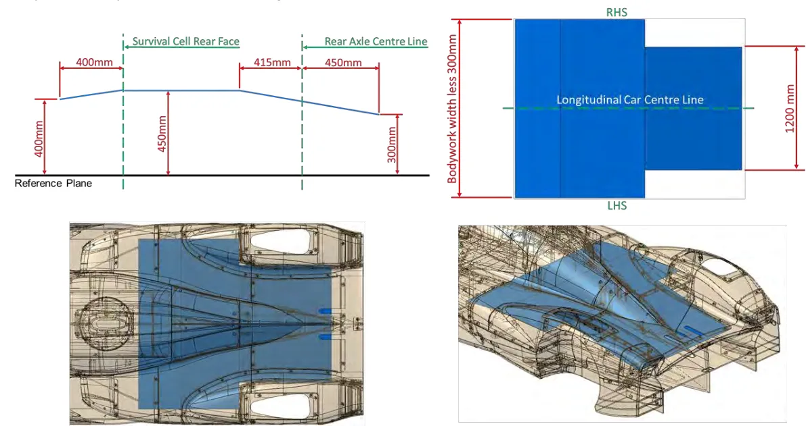</figure>
<p>3.4.2.9 Rear bodywork exit area When measured on a plane parallel to the YZ plane at car rear extremity the area bounded by the bodywork trailing edge profile, vertical lines located laterally +/-600 mm away from the XZ plane and a horizontal line 200 mm above reference plane must be greater than 160 000 mm2. Bodywork trailing edge profile must be symmetrical about the longitudinal centre line of the car. Examples of different iso-area bodywork TE profiles possible:</p>
<p>Page | 14 October 16th 2025</p>
<figure></figure>
<h3 id="LMDh-TECHNICAL-REGULATIONS-13"><span class="pagemark" id="p310">P.310</span>LMDh – TECHNICAL REGULATIONS</h3>
<figure>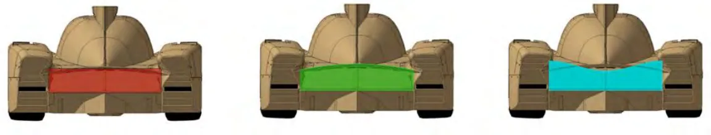</figure>
<p>3.4.3 Bodywork visibility criteria 3.4.3.1 Bodywork viewed from the side When viewed from the side the bodywork must cover the whole circumference of the complete wheels above the axle centrelines level with no empty space or cut-out in the bodywork except for the opening described in Articles 3.2.4.6 and 3.2.4.7. Wheel arches must be open exclusively as viewed from outside.  3.5 Underside of the car 3.5.1 General Rearward of the front axle centre line and except for the skid block (Article 3.5.9) and diffuser components (Article 3.5.3), no entirely sprung part must protrude below the reference plane.  The only openings permitted are the lift car jack holes, holes for sensors measuring the ground clearance, closed hatches (maintenance operations and datum pads access), the ESS exhaust vent and the overflow fuel pipe.  Geometric components defined in Articles 3.5.2-3.5.6 illustrated by underbody CAD template file: ‘’LMDH_UNDERBODY_TEMPLATE_CAD_MODEL_D10.0’’  Underbody CAD templates surface colour key: ✓ Fixed surfaces - Red ✓ Variable or optional surfaces - Cyan ✓ Floor modularity surfaces - Magenta ✓ Free box volumes - Green ✓ Car reference geometry – Black  Base underfloor:</p>
<figure>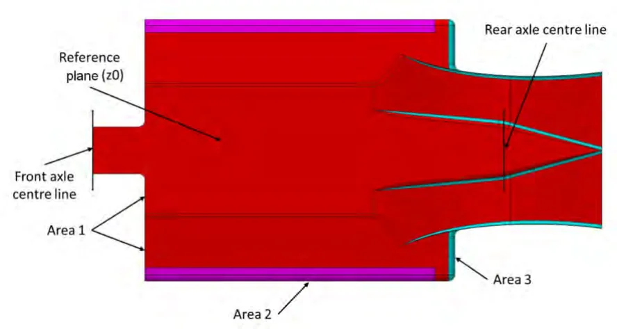</figure>
<h3 id="Base-underfloor-with-diffuser-add-ons-and-free-b">Base underfloor with diffuser add-ons and free boxes:</h3>
<p>Page | 15 October 16th 2025</p>
<figure></figure>
<h3 id="LMDh-TECHNICAL-REGULATIONS-14"><span class="pagemark" id="p311">P.311</span>LMDh – TECHNICAL REGULATIONS</h3>
<figure>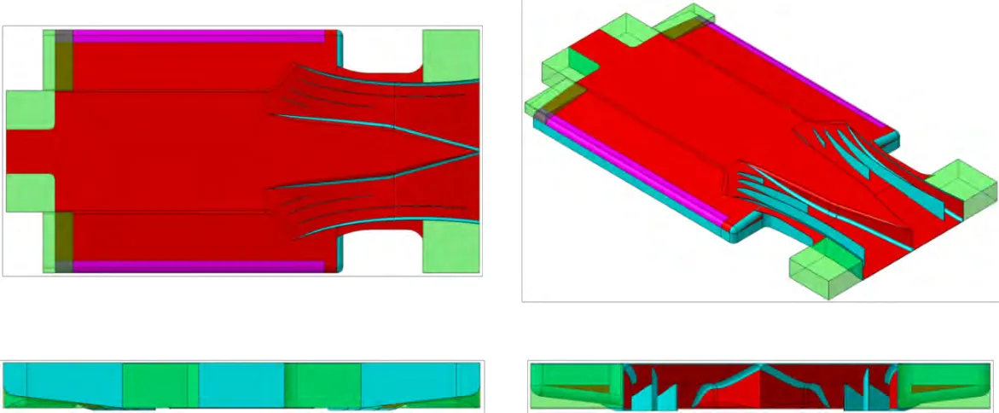</figure>
<p>3.5.2 Reference plane a) A reference surface, flat, continuous, rigid and complying with the underbody CAD template file is mandatory</p>
<p>underneath the car. The underneath of the reference surface will serve as a reference for checking all vertical height measurements for the complete car. b) For all the vertical dimensions specific to survival cell, a parallel surface integrally part of the bottom of the survival cell must be used as specific reference (as described in Article 1.38.2 and Article 13.2). c) Bodywork joints in area 1: to join up with the other parts of the bodywork, the reference surface may be exclusively</p>
<p>curved upwards with a maximum radius of 50 mm. Where the XZ sections intersect the additional surface regulated by Art.3.5.7, the radius does not have to achieve vertical tangency.  3.5.3 Rear diffuser a) One inclined surface (rear diffuser), continuous and rigid is mandatory underneath the car and at the rear. b) It must be inclined relative to the reference surface and it must comply with the maximum volume (dimensions and geometrical shapes) defined by the underbody CAD template file. c) A maximum radius of 25 mm is authorised to connect the rear diffuser to the vertical panels. d) The diffuser lateral panels may not protrude below the reference plane. e) A maximum of eight vertical fins may be added to the rear diffuser. Their surfaces: • Must be perpendicular to the reference plane • Must be positioned symmetrically about car centre line • Must not extend below the reference plane  3.5.4 Lateral parts a) These are the parts situated on both sides of the reference surface (see Articles 3.5.1 and 3.5.2). Rearward of the front axle centre line, they must form an inclined plane relative to the reference surface, according to the underbody CAD template file. b) Bodywork joints in areas 1 and 3: To join up with the other parts of the bodywork, lateral parts may be exclusively curved upwards with a maximum radius of 50 mm. If the rear tyre fairing detailed in Article 3.5.4.f is fitted to the car the area 3 radius will need to be sized appropriately to intersect the fairing vertical rear face without intersecting the face lower edge. c) Bodywork joints in area 2: To join up with the other parts of the bodywork, lateral parts may be exclusively curved upwards with a 50 +/-1 mm radius, up to the overall width of the car. Within volumes “OUTER FLOOR” in the underbody CAD template file the floor width may be varied by up to 100 mm d) In the volume bounded by: • Vertical plane located at diffuser lateral extremity • Diffuser outer wall surface extrapolated vertically to fully intersect a horizontal plane located 200 mm above the reference plane • A horizontal plane located 5 mm above the reference plan • A horizontal plane located 200 mm above the reference plane • Vertical planes located at diffuser rear extremity and 465 mm ahead of diffuser rear extremity. Bodywork must be added which connects the rear fender bodywork and diffuser outer wall. This volume is represented by volume “FREE BOX VOLUME – OB DIFFUSER” in the underbody CAD template file. When viewed from the side and from underneath the bodywork surfaces must be continuous (all surfaces must be visible from the side and from underneath and be continuous) and be devoid of  (not limited to) fences, winglets, turning vanes and wing profiles.</p>
<p>Page | 16 October 16th 2025</p>
<figure></figure>
<h3 id="LMDh-TECHNICAL-REGULATIONS-15"><span class="pagemark" id="p312">P.312</span>LMDh – TECHNICAL REGULATIONS</h3>
<p>When viewed from the rear the lowest point of the bodywork surface trailing edge must not be higher than 100 mm above the reference plane.</p>
<figure>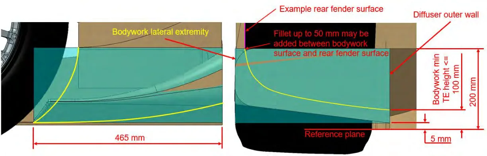</figure>
<h3 id="e-A-gurney-device-is-permitted-outboard-of-the-d">e) A gurney device is permitted outboard of the diffuser lateral panels. The lower face of the device must be located</h3>
<p>on the inclined plane of the underfloor lateral part. f) A rear tyre fairing represented by surfaces “REAR TYRE FAIRINGS” in the underbody CAD template may be fitted to the car. The position of the fairing in the X direction is fixed relative to the rear axle centre line. The position of the fairing in the Y and Z directions is fixed. The rear corner radius shown by the yellow surface in the below image can be varied up to a maximum of 50 mm.</p>
<figure>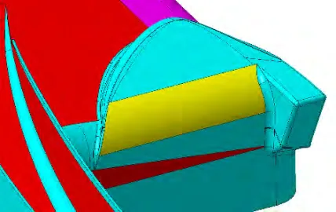</figure>
<p>3.5.5 Front inboard floor A single pair of 2D extruded (in Z direction) turning vanes located symmetrically about the longitudinal car centre line will be permitted in volumes represented by volume “FREE BOX VOLUME – FRONT FLOOR TURNING VANES” in the underbody CAD template file. These will be a constant thickness of between 5 mm and 10mm. The turning vanes must be connected to Area 1 of the underfloor. Each turning vane may be additionally connected to the chassis using a single stay only if no bodywork detailed in Article 3.5.7.f is fitted to the car. If bodywork detailed in Article 3.5.7.f is fitted to the car the turning vanes must fit within the plan view silhouette of the bodywork and not extend above the bodywork surface visible from underneath the car. A fillet of up to 10 mm may be applied at the junction between the turning vanes and the bodywork.  3.5.6 Front outboard floor A maximum of six vertical fences positioned symmetrically about the car centre line may be added in the volume defined by: • 300 mm rearwards of front axle centre line. • 550 mm rearwards of front axle centre line. • From 500 mm to outer floor edge each side of car centre line. • Reference plane to mandated floor surface. This volume is represented by volume “FREE BOX VOLUME – OB FRONT FLOOR VANES” in the underbody CAD template file. Fences must be of constant section and at least 4 mm thick. A maximum radius of 10 mm may be applied at the intersection between fin and floor surfaces.</p>
<p>Page | 17 October 16th 2025</p>
<figure></figure>
<h3 id="LMDh-TECHNICAL-REGULATIONS-16"><span class="pagemark" id="p313">P.313</span>LMDh – TECHNICAL REGULATIONS</h3>
<figure>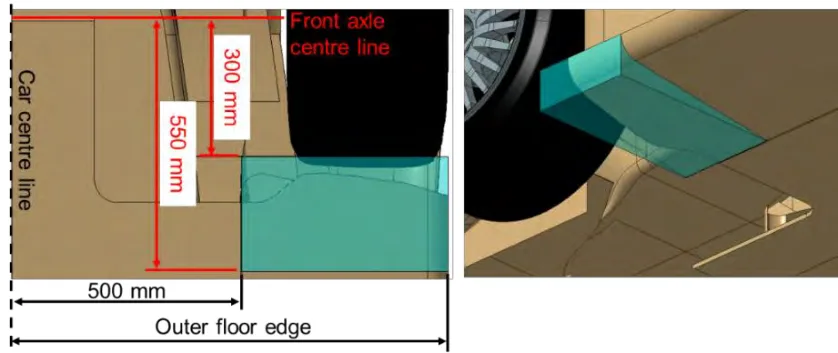</figure>
<p>3.5.7 Front part a) In the area situated:</p>
<p>• forward of the front axle centre line • over a minimum width of 1000 mm Any sprung part of the car must be situated more than 50 mm above the reference surface. Furthermore, any bodywork in this area which permits airflow to pass between the upper and lower surfaces of the chassis and/or nosebox (e.g. S-duct) is not permitted. Any sprung part of the car must be situated more than 50 mm above the reference surface. b) In the area situated: • backward of the front contour of the car, • 400 mm forward of the front axle centre line, • up to the overall width of the car, all visible parts of bodywork from the underside must: • form a continuous surface, without openings, slots or cut-outs, • comply with rigidity criteria mentioned in 3.10.2. c) Additional overhang provision for nose box length: In order to permit greater freedom regarding front impact absorbing structure (FIAS) length the bodywork is permitted to extend forwards up to a maximum of 1100 mm ahead of front axle centre line. When viewed from above that bodywork must sit within a surface defined by: • A linear taper between a line 400 mm long and 1100 mm ahead of the front axle centre line and a line 1000 mm long and located 1000 mm ahead of the rear wheel centre line (lines symmetrically positioned about car centre line), • A rectangle of width 1000 mm (symmetrically distributed about car centre line) located 1000 mm ahead of front axle centre line and at the rearmost face of the FIAS. Minimum permitted bodywork in this area height is 100 mm above the reference plane.</p>
<figure></figure>
<h3 id="d-In-the-volume-defined-by">d) In the volume defined by:</h3>
<p>• Rearwards of the splitter leading edge • Forward of the splitter trailing edge • 850 mm on each side of the car centre line • Below Z +200 mm from reference surface All splitter surfaces (with the exception of the flap) visible from the underneath of the car must form a continuous surface without cuts, openings, slots, cut-outs, fences, winglets, turning vanes and wing profiles. In this volume any section of the splitter surface visible from underneath with a XZ aligned plane positioned in Y must have only one leading edge and a maximum of one trailing edge. A 30 mm diameter sphere must make a single contact from below and from above this surface (mould face).  In the volume defined by:</p>
<figure></figure>
<p>Page | 18 October 16th 2025</p>
<h3 id="LMDh-TECHNICAL-REGULATIONS-17"><span class="pagemark" id="p314">P.314</span>LMDh – TECHNICAL REGULATIONS</h3>
<p>• Rearwards of the splitter trailing edge • Forward of the front axle centre line • 850 mm on each side of the car centre line • Below Z +200 mm from reference surface All bodywork surfaces visible from the underneath of the car must form a continuous surface without winglets, turning vanes and wing profiles. Flap devices are permitted in the front bodywork area, with the express purpose to flap the main splitter profile at its trailing edge. The flap geometry must: • Have its leading edge positioned above the upper-most point of the splitter trailing edge when measured in the Z direction. • Utilise a single closed section extruded in the Y direction located between 350 mm and 550 mm either side of car centre line which must not protrude into the front wheel arch area. • Have a chord dimension no greater than 200 mm • Be located between Z +100 mm and Z +250 mm from the reference plane • Be located between YZ aligned planes located at the most rearward point of the splitter trailing edge over the flap span and at front axle centre line. • Be attached to the splitter using a single support between the splitter and flap upper surfaces. Only the portion of the flap geometry located in the Y direction between 350 mm and 550 mm may be used as a bodywork adjustable aerodynamic device. No bodywork except the survival cell is permitted within a volume located above and rearwards of the flap geometry defined by:</p>
<p>• 350 mm and 550 mm either side of car centre line • YZ aligned planes located on the front axle centre line and at the most rearward point of flap trailing edge when the flap is in its homologated position • XY aligned planes located at the flap trailing edge upper-most point and a plane 75 mm above it when the flap is in its homologated position  e) The splitter shape must have the same or lower area than a reference area defined by: • A vertical plane located 500 mm ahead of the front axle centre line, • A vertical plane located 1000 mm ahead of the front axle centre line, • Vertical planes distributed symmetrically about longitudinal centre line of the car over a width equal to the front bodywork maximum width. The reference area must have 50 mm radii applied to the front angles. The shape may extend forwards into a styling area defined by: • A vertical plane located 1000 mm ahead of the front axle centre line, • A vertical plane located 1100 mm ahead of the front axle centre line, • Vertical planes distributed symmetrically about longitudinal centre line of the car over a width equal to the front bodywork maximum width. The planform area located in the styling area must be removed from the planform area located in the reference area.</p>
<p>Splitter spanwise height as detailed in Article 3.5.7.a must be respected. When viewed from below the outer-most angles must have a minimum radius of 50 mm, all other angles must have a minimum radius of 25 mm.</p>
<h3 id="Examples-of-different-splitter-planform-shapes-p">Examples of different splitter planform shapes possible:</h3>
<figure></figure>
<p>f) In the volumes represented by volume “FREE BOX VOLUME – FRONT FLOOR TURNING VANES” in the underbody CAD template file a single pair of surfaces symmetrically distributed about the longitudinal car centre line</p>
<p>Page | 19 October 16th 2025</p>
<figure></figure>
<h3 id="LMDh-TECHNICAL-REGULATIONS-18"><span class="pagemark" id="p315">P.315</span>LMDh – TECHNICAL REGULATIONS</h3>
<p>and visible from underneath of the car may be added with each surface forming a continuous surface without cuts, openings, slots and cut outs. Outboard of a ZX aligned plane located 230 mm either side of the car centre line any bodywork must be extruded in the Y direction up to the maximum width of the reference surface (Z0, see Article 3.5.1) with an intersection of the bodywork and a ZX aligned plane giving only one leading edge and no trailing edge. The planform profile of the continuous surface outer edge is free. In plan view each surface must cover the area bounded by: • A YZ aligned plane located at the forward-most point of the intersection between bodywork and a ZX aligned plane located 230 mm from car centre line • A ZX aligned plane located 230 mm from car centre line • The rear, rear inboard corner and inboard faces of volume ““FREE BOX VOLUME – FRONT FLOOR TURNING VANES” On the surface visible from underneath, a 30 mm diameter sphere must make a single contact from below and from above this surface (mould face). The front floor turning vanes detailed in Article 3.5.5 are to be ignored when evaluating this surface.  3.5.8 Ground clearance a) Any system, other than the suspension, which is designed to modify the ground clearance is not permitted (see Article 10.2.2). b) No sprung part of the car is allowed lower than the plane generated by the reference surface, except the mandatory skid block described below and diffuser geometry from articles 3.5.3.d and 3.5.3.e.  3.5.9 Skid block One skid block must be affixed underneath the reference plane. It must: • be made from a maximum of 4 parts • comply with the Drawing below • the minimum thickness of any point on the friction area is 20 mm (see Drawing below); • have no holes, cut outs or pockets on its lower surface other than: o those necessary to fix the skid block o those necessary for the lift car jacks o the one necessary to access rear ‘datum’ pads (see Article 13.2) the rear datum pad should not be protected. • when in vertical projection of the front and rear friction areas, have no holes, cut outs or pockets on its upper face • the monobloc front and rear parts (described in Drawing below) must be made from a homogeneous material with a density between 1.3 and 1.45 • the curved part (described in Drawing below) must be made from a material with a mean density of less than 2 • be fixed symmetrically about the centre line of the car in such a way that no air may pass between it and the reference plane • the leading and trailing edges of the skid block must be chamfered to a depth of 21 mm over a longitudinal distance of 200 mm • A seal with maximum diameter 3 mm is acceptable if its thickness is non-existent when skid block is fitted • As viewed from below, fasteners used to attach the skid block to the reference plane must: o be fitted in order that their entire lower surfaces are visible from beneath the car and are no more than 19 mm from reference plane. o two additional fasteners (one for the front part and one for the rear part) made of titanium must be used to attach the skid block. They must be symmetrical along the car centre line and be in the friction areas. The dimensions must be 40 mm (longitudinally) x 40 mm (transversally). Their lower surfaces must be visible from beneath the car and must be at 25 mm from the reference plane when new.</p>
<p>Page | 20 October 16th 2025</p>
<figure></figure>
<h3 id="LMDh-TECHNICAL-REGULATIONS-19"><span class="pagemark" id="p316">P.316</span>LMDh – TECHNICAL REGULATIONS</h3>
<figure></figure>
<p>3.5.10 Brake ducts For each wheel, a simple brake flange is allowed to channel the air cooling along the inner face of the brake disc,</p>
<p>only inside the volume defined by: • The plane defined by the inner friction face of the brake disc (when new), • The plane parallel to the inner friction face of the brake disc (when new) offset by 40 mm towards the inside of the car, • The inner diameter of the rim. Outside of the volume defined above (brake flange), the brake ducts and the cooling hoses should only have a cooling purpose to channel the air to the brake disc and calliper, without having any contribution to the aerodynamic performance of the car. Therefore, the pipes should have a simple shape, without aerodynamic profiles, fences or winglets attached to them. They also should not fill in the volume inside the rim. The number of hoses / ducts are not limited but their total section should not be greater than 200 cm² per wheel. The hoses or ducts feeding the front brakes must not be less than 40 mm from top surface of the splitter trailing edge and flap trailing edge. For each wheel, an additional cooling device is allowed, only inside the volume defined by: • The plane defined by the inner friction face of the brake disc (when new), • The plane parallel to the outer friction face of the brake disc (when new) offset by 20 mm towards the outside of the car, • The inner diameter of the rim.  3.6 Rear wing An adjustable (adjustable only if the rear wing is the adjustable device) rear wing device must be fitted at the rear of the car all times. The complete wing assembly is made up of the following elements: • Wing elements • Vertical supports • Endplates  3.6.1 Wing elements a) A maximum of two wing element(s) is permitted (mainplane and flap). If a flap element is used its chord must be less than that of the mainplane. Each element must be created using a single closed profile which may be scaled and twisted along the length of the rear wing. The trailing edge of the mainplane must be a constant height above the reference plane and have a constant longitudinal position.</p>
<p>Page | 21 October 16th 2025</p>
<figure></figure>
<h3 id="LMDh-TECHNICAL-REGULATIONS-20"><span class="pagemark" id="p317">P.317</span>LMDh – TECHNICAL REGULATIONS</h3>
<p>If two wing elements are utilised the minimum distance between the elements (slot gap) must be a constant value when measured using an intersection of the wing elements and a vertical plane parallel to the Y direction. The element(s) must fit within a volume measuring 300 mm horizontally x 150 mm vertically x 1900 mm transversely in all designed positions. The volume must be positioned such that: • the upper face of the volume is situated no more than 965 mm above the reference plane, • the rear face of the volume must be maximum at 100 mm rearwards of the rearmost part of the bodywork.</p>
<figure></figure>
<p>b) The wing must be mounted so that it is not adjustable from within the cockpit c) A dual element design must feature a fixed position of the flap relative to the mainplane. d) A “gurney” device may be fitted to the upper surface of the rearmost element providing it remains inside the 300 x</p>
<p>150 x 1900 volume detailed above in all design positions.  3.6.2 Mounting of the rear wing and vertical supports a) The rear wing must be rigidly attached to the car (rigidly attached means not having any degree of freedom) using a single over-wing support or single/twin under-wing support(s) connected between the rear wing mainplane and the transmission casing. Any local fixation of the rear wing elements between each other should not offer any degree of freedom. b) Single over-wing support design criteria: • If the support is not in the continuity of the fin the length is limited at 400 mm maximum horizontally • The support must be in compliance with all the points of Article 3.7. • Surfaces must be flat and parallel to the longitudinal centre line of the car. • The leading edge may be made round (constant radius) and the rear edge (trailing edge) may be bevelled no more than 20 mm c) Under-wing support design criteria: A single/twin under-wing support design must have support(s) which: • Use an identical profile which is symmetrical about its major axis. Each support must be a constant extrusion along their span. • For a single support must be positioned symmetrically about the longitudinal centre line of the car. • For twin supports must be positioned symmetrically about the longitudinal centre line of the car with a maximum lateral spacing of 300 mm measured at the most outboard point of each support. • Fully intersect the lower surface of the rear wing mainplane. Lower surface defined as mainplane surface visible when viewed from below.</p>
<figure></figure>
<p>3.6.3 End plates a) They may be in two parts (one on the rear wing and the other on the bodywork). b) The part fitted on the rear wing must fit into a rectangle of 765 mm x 350 mm, must have a minimum area of 1000 cm², and must have a minimum dimension of 300 mm horizontally x 150 mm vertically c) They may be fixed to the bodywork on condition that they comply with Article 3.10.5. d) They must have a minimum constant thickness of 10 mm with a minimum constant radius of 5 mm.</p>
<figure></figure>
<p>Page | 22 October 16th 2025</p>
<h3 id="LMDh-TECHNICAL-REGULATIONS-21"><span class="pagemark" id="p318">P.318</span>LMDh – TECHNICAL REGULATIONS</h3>
<h3 id="e-Above-the-lower-surface-of-the-rear-wing-eleme">e) Above the lower surface of the rear wing element volume the surfaces shall be flat and parallel to the vertical plane</h3>
<p>passing through the longitudinal centre line of the car. f) The surfaces may be non-planar below the lower face of the rear wing element volume. g) The surfaces may be positioned laterally such that they are between a ZX aligned plane located 50 mm inboard of the rear wing outboard position and the most outboard position. h) Apart from the fixations to the bodywork permitted above, no bodywork elements must be attached onto the end</p>
<h3 id="plates-3-7-Engine-cover-fin-A-vertical-rigid-fin">plates.  3.7 Engine cover fin A vertical rigid fin is compulsory. This fin must be:</h3>
<p>• Longitudinal and parallel to the car centre line • Perfectly located on the longitudinal axis of the car with equal thickness either side of the centre line. The fin must have a constant thickness (between 10 mm minimum and 20 mm maximum). With the car on its wheels, the visible area (in lateral view) of the fin must be greater than 300 000 mm2 from both sides. The fin must be continuous without any holes or openings: The inlet for engine air intake may be integrated into the fin, on condition that all prescriptions of Article 3.7 are complied with (except thickness that may not be constant over a maximum length of 1400 mm). No other device can be attached to this fin. The top edge must have a maximum height of between 1050 mm and 1060 mm above the reference plane. The top edge may not be straight in a zone compromised between the leading edge and 100 mm rearward of the windscreen upper edge provided it is situated no less than 1000 mm above the reference plane. The windscreen upper edge is defined as the X position of the most rearward point of the windscreen at Y=0. The trailing edge of the fin must be a minimum of 50 mm ahead of the rear wing box forward face. This constraint does not apply to the rear wing support if it locally extends the fin. The bottom edge may not be more than 25 mm above bodywork surface. The fin must cover a minimum of 65% of the area bounded by: • Top edge maximum height • 150 mm below maximum height • 50 mm ahead and 1450 mm ahead of rear wing box forward face. General fin edge geometry constraints: • The leading edge and top edge of the fin may be made round with a constant radius (the radius must be equal to half of the fin thickness). • The trailing edge may be bevelled or have an elliptical form on no more than 20 mm. • A maximum radius of 50 mm is permitted between top/leading edge, top/trailing edge, bottom/leading edge and bottom/trailing edge. • If the fin is attached to the engine cover a maximum radius of 50 mm is permitted between both parts.</p>
<figure></figure>
<h5 id="3-8-Exhaust-pipe-outlet">3.8 Exhaust pipe outlet</h5>
<p>3.8.1 General principles As a principle, any device that can take advantage of engine exhaust flow to affect any aerodynamic characteristic of the car is forbidden. Additionally, no engine mapping may be used to artificially alter the aerodynamic characteristics of the car beyond the primary purpose of generating engine torque.  3.8.2 Exhaust configuration The purpose of the exhaust configuration is to define geometrical constraints between the bodywork and the exhaust exit flow. The exhaust exit box is defined as a rectangular cuboid with its vertices located at the following coordinates according to the coordinate system defined in Article 1.38.1.</p>
<div class="tablewrap"><table><tr><td>is forbidden.</td><td>Additionally, no engine mapping may be used to artificially alter the aerodynamic characteristics of the car beyond</td><td></td></tr><tr><td>the primary purpose of generating engine torque.</td><td></td><td></td></tr></table></div>
<h3 id="o-X-2630mm-and-a-YZ-plane-200mm-forward-of-the-r">o X = 2630mm and a YZ plane 200mm forward of the rearmost bodywork extremity o Y = +/- 540mm. o Z = 420mm and 660mm.</h3>
<p>Page | 23 October 16th 2025</p>
<figure></figure>
<h3 id="LMDh-TECHNICAL-REGULATIONS-22"><span class="pagemark" id="p319">P.319</span>LMDh – TECHNICAL REGULATIONS</h3>
<p>The effective exhaust tailpipe exit is defined as a single planar cross section through the innermost surface of each pipe perpendicular to its major axis at its exit. If the exhaust flow is not aligned with this axis, the CFD assessment will be used to define this axis. Each effective exhaust tailpipe exit must in its entirety be located inside the exhaust exit box. The exhaust exit box must contain all and a maximum of two effective exhaust tailpipe exits except as described by 3.8.2 a) when it must contain a maximum of one effective exhaust tailpipe exits.</p>
<h3 id="a-When-the-effective-exhaust-tailpipe-exit-is-lo">a) When the effective exhaust tailpipe exit is located, in its entirety; between YZ planes 200mm and 350mm forward of</h3>
<p>the rearmost bodywork extremity, one effective exhaust tailpipe exit is allowed, and its area must be greater than 8000mm^2. b) When the effective exhaust tailpipe exit is located forward of an YZ plane 350mm in front of the rearmost bodywork</p>
<p>extremity, each effective exhaust tailpipe exit must have an area greater than 5000mm^2 and the sum of all effective exhaust tailpipe exit areas must be greater than 10000mm^2. Each effective exhaust tailpipe exit must have a width/height ratio of less than 3.5. Over the last 150mm of the exhaust tailpipe the cross section of the innermost surface of each exhaust tailpipe must remain a constant shape and area (subject to CFD analysis). Over the last 150mm of the tailpipe(s), the exhaust tailpipe geometry must be symmetrical about an XZ plane. Split exhaust tailpipes are not permitted over the last 150mm of the exhaust tailpipes (separate wastegates must enter main exhaust pipe ahead of the constant cross section). No leakage into or out of the system (save for what is absolutely minimal / unavoidable) is permitted along the exhaust tailpipes. After the exhaust tailpipe exit, exhaust flow must not go below the upper surface of the engine cover (holes, apertures, etc.).</p>
<h3 id="The-normal-to-any-effective-exhaust-tailpipe-exi">The normal to any effective exhaust tailpipe exit must be oriented according to the following angle ranges:</h3>
<h3 id="10deg-with-respect-to-the-XY-plane-10deg-with-r">• +/- 10deg with respect to the XY plane. • +/- 10deg with respect to the XZ plane.</h3>
<p>3.8.3 Bodywork Exclusion General bodywork exclusion zones:</p>
<h3 id="The-surface-formed-by">• The surface formed by:</h3>
<p>o Sweeping each effective exhaust tailpipe exit surface rearwards along it’s normal (i.e along the effective exhaust flow direction) o Offsetting the resulting swept surface outwards by 25mm along the normal to this surface • With the exception of local bodywork adjacent to the exhaust tailpipe outer surface, no bodywork surfaces are allowed within these general bodywork exclusion zones. Engine cover tail exclusion zones :</p>
<h3 id="The-surface-formed-by-2">• The surface formed by:</h3>
<p>o A truncated cone with the effective exhaust tailpipe exit as its base o Expanded rearwards along the normal to the effective exhaust tailpipe exit at +/-5 degrees to the normal • No engine cover tail gurney surfaces are allowed within these general bodywork exclusion zones. Radii on the engine cover tail itself of less than 200mm will be considered as gurneys.</p>
<figure></figure>
<p>In addition to these regulations and general principles, ACO/IMSA reserve the absolute right at any point to accept or not accept geometry with regard to the potential for exhaust flow interaction.  3.8.4 CFD Simulation ACO/IMSA will expect geometry and data to be submitted as required to perform the mandatory CFD appraisal process to allow the effect of simulated exhaust flow on the aerodynamic performance of the car to be assessed in various conditions. Refer to homologation schedule for timing of these submissions.</p>
<p>Once the geometry for mandatory CFD appraisal process is submitted the exhaust geometry and general surrounding bodywork should not be changed without prior agreement with ACO/IMSA.  3.9 Aerodynamic criteria 3.9.1 Homologation process To be homologated, all the Aerodynamic Configurations of the car must fulfil the aerodynamic criteria. These criteria will be controlled in the official ACO/IMSA wind tunnel.</p>
<p>Page | 24 October 16th 2025</p>
<figure></figure>
<h3 id="LMDh-TECHNICAL-REGULATIONS-23"><span class="pagemark" id="p320">P.320</span>LMDh – TECHNICAL REGULATIONS</h3>
<p>All the aerodynamic configurations will be submitted to a full scan of ride heights to extract the aerodynamic maps (drag, downforce for different car attitudes). All cars must be presented for wind tunnel testing in their most aerodynamically performant configuration. The homologation procedure is described in the Appendixes to these Technical Regulations.  3.9.2 Definition of “Aerodynamic configuration” An Aerodynamic configuration is defined by a combination of:</p>
<p>• Complete Bodywork • Front Wing or Rear wing angle • Brake blanking (presented during wind tunnel tests and satisfying the required aerodynamic criteria will be homologated • Any further elements deemed appropriated by ACO/IMSA (e.g. gurneys, fillers, dive planes, louvers, etc). Brake blanking will be homologated and must be:</p>
<p>• simple closing plates on duct inlets • presented during wind tunnel tests • satisfy the required aerodynamic criteria Other types of blanking including power unit cooling options are forbidden.  3.9.3 Criteria To be homologated, all cars must achieve aerodynamic performance within the Target Window for which the criteria is set out in the appendices to these Technical Regulations.  3.10 Deflection 3.10.1 General deflection The ACO/IMSA reserves the right to introduce load/deflection tests on any part of the bodywork which appears to be (or is suspected of), moving whilst the car is in motion. Constructors must supply the pads and adapters following instructions from ACO/IMSA. Among other criteria, the ACO/IMSA will consider the linearity of the load/deflection curve over the elastic deformation area. Any non-linearity must be only on the plastic deformation area. As a principle, at any point, in any direction X/Y/Z, no bodywork part should move more than 5 mm when loaded (push/pull) with 100 N. The way of application will depend on the particular shape of the part to be tested and the retained mean will not introduce specific stress in the part (capable to directly influence its behaviour). Under application of the load, the part must still respect the technical regulations. Brushes, rubber boots, rubber sealing will only be accepted to prevent rubber pick-up (such devices if requested must be presented prior to the homologation process).  3.10.2 Front bodywork parts No point of bodywork described in Article 3.5.7 (front splitter) must deflect more than 15mm vertically when a combination of the following vertical loads is applied. The main load will be applied vertically downward by eight M5 inserts structurally integrated in the part and reachable in the bottom surface. As basic requirements, these inserts must: • Be positioned symmetrically regarding the longitudinal vertical plane of the car. • One row of four located at 100 mm from the front splitter trailing edge, with the two lateral ones at 100 mm from maximum car width (or width at that section in case the point would be physical not possible) and the two remaining such that all four are equidistant. • One row of four located 100mm rearwards of the splitter leading edge with two lateral ones at 100 mm from maximum car width (or width at that section in case the point would be physical not possible) and the two remaining such that all four are equidistant. • If the M5 inserts cannot be located in the positions above due to the construction of the underside front area, alternative positions may be agreed with the ACO/IMSA. The load will be equally applied on each insert up to a total of 8000 N.  3.10.3 Engine cover The rearmost part of the engine cover must deflect no more than 5 mm vertically when a load of 100 N is applied. The load may be applied at any point along the trailing edge or the gurney. These loads will be applied using a suitable 15 mm wide adapter which must be supplied by the constructor. The load/deflection ratio must be constant for a maximum load of 200 N and a maximum deflection of 10 mm.  3.10.4 Engine cover fin</p>
<p>Page | 25 October 16th 2025</p>
<figure></figure>
<h3 id="LMDh-TECHNICAL-REGULATIONS-24"><span class="pagemark" id="p321">P.321</span>LMDh – TECHNICAL REGULATIONS</h3>
<p>A static load test using a 400 mm long channel tool, 60 mm high internal, with maximum radius of 5mm on all internal edges positioned over the top edge of the fin, will be applied. The middle of the channel can be positioned anywhere along the top edge of the fin (with the rearmost position being the rear axle of the car) so that it will not overhang either end (side view blend radius will be ignored). The load will be applied at the centre of the 400mm channel. This test will be carried out twice on the fin in situ so that mountings to the chassis / bodywork are also tested. For each test the deflection of the fin can be no more than 100 mm (at any points) for a load of 1000 N and any permanent deformation must be less than 3 mm after the load has been released for 1 minute.  3.10.5 Mounting of the rear wing and vertical supports With the attachments of the end plates to the bodywork disconnected, the wing support(s) must be able to withstand a vertical load of 10 kN, equally applied on the surface of the rear wing.  3.10.6 Rear wing All the load/deflection tests described below must be carried out with the wing fitted on the car. The load/deflection ratio must be constant over the whole functioning range of the rear wing. The rearmost part of the rear wing must deflect no more than 2.5 mm vertically when a load of 100 N is applied. The load may be applied at any point along the trailing edge. These loads will be applied using a suitable 15 mm wide adapter which must be supplied by the competitor. The load/deflection ratio must be constant over the entire operating range of the wing and applies for a maximum load of 200 N and a maximum deflection of 5 mm.</p>
<figure></figure>
<p>3.10.7 Wing support With the attachments of the end plates to the bodywork and rear flap connected, (as in track condition), no point of the mainplane nor vertical support(s) (see Article 3.6.2) may deflect no more than 15 mm vertically when following combined vertical loads are applied:</p>
<p>• A load of 2400 N applied on the surface of the mainplane. The load will be applied in a downward direction uniformly and simultaneously at a point in x representing from 25 to 75% of the chord length of the main plane and at points which are 164 mm, 452 and 740 mm about the centre line through 6 distinct similar pads of 200 mm width, and extending from the leading edge of the wing to its trailing edge or the point of overlay of the flap if existing. Their uppermost surface will be horizontal before application of 400 N load and above the upper point of the flap. • A load of 1000 N pulling downwards on each wing endplate.  3.10.8 Front skid block The front part of the skid block must deflect no more than 5mm vertically when a 2500 N load is applied vertically at any point of the friction surface. The load will be applied in an upward direction using a 50 mm diameter ram. The front part of the skid block may deflect no more than 15 mm vertically when a load able to lift the front wheels from the ground is applied. Stays or structures between the front of the bodywork lying on the reference plane and the survival cell may be present, provided they don’t allow non-linear deflection or speed dependant deflection during any part of both tests including the release of the load.  3.10.9 Rear skid block The rear part of the skid block must deflect no more than 5 mm vertically when a 5000 N load is applied vertically at any point of the friction surface. The load will be applied in an upward direction using a 50 mm diameter ram. Stays or structures between the front of the bodywork lying on the reference plane and the survival cell may be present, provided they don’t allow non-linear deflection or speed dependant deflection during any part of the test including the release of the load.  3.11 Bodywork construction 3.11.1 General In order to avoid the spread of debris on the track following an accident, the outer skins of the front bodywork in the vicinity of the front wheels, must be made predominantly from materials which are included for the specific purpose of containing debris.</p>
<p>Page | 26 October 16th 2025</p>
<figure></figure>
<h3 id="LMDh-TECHNICAL-REGULATIONS-25"><span class="pagemark" id="p322">P.322</span>LMDh – TECHNICAL REGULATIONS</h3>
<p>The ACO/IMSA must be satisfied that all such parts are constructed in order to achieve the stated objective.  3.11.2 Tolerances To help overcome any possible manufacturing problems, and precluding any design which may contravene any part of these regulations, the following tolerances to homologated geometry and regulations are permitted on bodywork: • General bodywork (including slot gaps, splitter and diffuser height): +/-3 mm • Slot gap, diffuser strake height: +/-1 mm • Gurney height: +/- 0.5 mm • Wing profile angle: +/- 0.2° • Other tolerances can be specified in homologation document  Bodywork tolerances and wheel positioning:</p>
<p>1. The bodywork must fulfil the technical regulations requirements with a tolerance described above (i.e. +/- 3 mm and +/- 2 mm for the underbody surfaces). 2. By design, the front axle centreline is aligned with the leading edge of the front skid block and the rear axle centreline is aligned with the beginning of the rear chamfer of the rear skid block when new – theoretical axle centrelines. 3. The front and rear overhangs will be defined as per the above definition and must respect the technical regulations requirements. 4. The front and rear wheel can move when adjusting their geometries. The tolerance for the front and rear wheel positioning will be +/- 5 mm and must respect the technical regulations requirements.  3.12 Aerodynamic stability Compliance with Article 2.3, ACO/IMSA’s expectation is a manufacturer car will be aerodynamically stable at all times regardless of the aerodynamic configuration. Each car must fulfil a number of safety criteria to ensure a minimum aerodynamic stability. The manufacturer should demonstrate the above criteria by submitting to ACO/IMSA CFD computation results in a comprehensive report. The complete procedure and acceptance requirements for these criteria are described in the aerodynamic homologation process that can be found in the Appendixes to these regulations.    ARTICLE 4: WEIGHT</p>
<p>4.1 Minimum weight The car must be engineered to achieve minimum weight not less than 1030 kg. The weight of the car, without fuel and without driver, must not be less than the minimum weight defined in the BOP tables at all times during the competition. The checking of the weight of any part that may have been replaced during the event is at the discretion of the Scrutineers.  4.2 Weight distribution The weight distribution (the front wheels versus the complete car) must be homologated and with a tolerance of +/-0.5%. For this check, the car must be complete without fuel and without driver. When checked during the competition, the measured weight distribution must comply with the homologated value within the specified tolerance (including any BOP ballast).  4.3 Ballast Ballast may be used provided it is secured in the designated areas and in such a way that tools are required for its removal and all fittings are able to withstand a minimum of 25g deceleration in any direction. The way the ballast permitted is fitted in the car is subject to ACO/IMSA Technical Delegates assessment and it must be possible to fix seals if deemed necessary by the ACO/IMSA technical delegates. If ballast is needed to achieve the minimum weight of 1030 kg, the positions and maximum values per position must be declared in the homologation document. Movable ballast is forbidden. Cars must be engineered in order to be able to accept a maximum of +50 (+70 kg from 2025 onwards) of BOP ballast (above the minimum car weight). All BOP ballast positions must be fitted between the front and rear wheel axles and declared in the homologation document. All ballast positioned within the perimeter of the crash test components must be present during the crash tests. No ballast is allowed in the vertical projection of the front and rear impact absorbing structures.</p>
<figure></figure>
<p>Page | 27 October 16th 2025</p>
<h3 id="LMDh-TECHNICAL-REGULATIONS-26"><span class="pagemark" id="p323">P.323</span>LMDh – TECHNICAL REGULATIONS</h3>
<p>4.4 Liquids The weight may be checked at any time during the competition with the quantity of liquids remaining in the tanks, but at the end of the practice sessions or the race the car will have all fuel drained before being weighed.   ARTICLE 5: POWER UNIT</p>
<p>5.1 General 5.1.1 Definition Unless explicitly permitted for a specific application, the use of any device, other than the engine described in Article 5.2 connected to the rear drivetrain, and the ERS described in Article 5.3 to propel the car, is not permitted.  5.1.2 Powertrain Performance The Powertrain performance must be submitted, approved and homologated according to the procedure detailed in Article 19 of these regulations. The Powertrain performance must not exceed, at any time, the power curve (with low and high margins to be adjusted for BoP reasons) described below:</p>
<div class="tablewrap"><table><tr><td></td><td>PowerTrain Power</td><td>Engine speed
(N/Nmax)</td><td>POWER (kW)</td><td>ADJUSTMENT (kW)</td><td></td><td></td></tr><tr><td></td><td></td><td></td><td>500</td><td>LOW</td><td>HIGH</td><td></td></tr><tr><td></td><td>Referenced to 1010 mbar and 20°C
550
500
450 (kW)
@Wheels
400
Output
350
500
kW Power
300
480
kW
250
520
kW
200
0.550 0.575 0.600 0.625 0.650 0.675 0.700 0.725 0.750 0.775 0.800 0.825 0.850 0.875 0.900 0.925 0.950 0.975 1.000 1.025
Engine Speed (N/Nmax)</td><td>0.550</td><td>246
269
289
309
330
351
372
393
413
432
449
464
475
485
492
497
500
498
495
427</td><td>236 256
258 279
277 300
297 322
317 343
337 365
358 387
378 409
397 430
415 449
431 467
445 482
456 494
466 505
472 512
477 517
480 520
478 518
475 514
410 444</td><td></td><td></td></tr><tr><td></td><td></td><td>0.575</td><td></td><td></td><td></td><td></td></tr><tr><td></td><td></td><td>0.600</td><td></td><td></td><td></td><td></td></tr><tr><td></td><td></td><td>0.625</td><td></td><td></td><td></td><td></td></tr><tr><td></td><td></td><td>0.650</td><td></td><td></td><td></td><td></td></tr><tr><td></td><td></td><td>0.675</td><td></td><td></td><td></td><td></td></tr><tr><td></td><td></td><td>0.700</td><td></td><td></td><td></td><td></td></tr><tr><td></td><td></td><td>0.725</td><td></td><td></td><td></td><td></td></tr><tr><td></td><td></td><td>0.750</td><td></td><td></td><td></td><td></td></tr><tr><td></td><td></td><td>0.775</td><td></td><td></td><td></td><td></td></tr><tr><td></td><td></td><td>0.800</td><td></td><td></td><td></td><td></td></tr><tr><td></td><td></td><td>0.825</td><td></td><td></td><td></td><td></td></tr><tr><td></td><td></td><td>0.850</td><td></td><td></td><td></td><td></td></tr><tr><td></td><td></td><td>0.875</td><td></td><td></td><td></td><td></td></tr><tr><td></td><td></td><td>0.900</td><td></td><td></td><td></td><td></td></tr><tr><td></td><td></td><td>0.925</td><td></td><td></td><td></td><td></td></tr><tr><td></td><td></td><td>0.950</td><td></td><td></td><td></td><td></td></tr><tr><td></td><td></td><td>0.975</td><td></td><td></td><td></td><td></td></tr><tr><td></td><td></td><td>1.000</td><td></td><td></td><td></td><td></td></tr><tr><td></td><td></td><td>1.025</td><td></td><td></td><td></td><td></td></tr></table></div>
<div class="tablewrap"><table><tr><td></td><td></td><td></td><td></td><td></td><td></td><td></td><td></td><td></td><td></td><td></td><td></td><td></td><td></td><td></td><td></td><td></td><td></td><td></td></tr><tr><td></td><td></td><td></td><td></td><td></td><td></td><td></td><td></td><td></td><td></td><td></td><td></td><td></td><td></td><td></td><td></td><td></td><td></td><td></td></tr><tr><td></td><td></td><td></td><td></td><td></td><td></td><td></td><td></td><td></td><td></td><td></td><td></td><td></td><td></td><td></td><td></td><td></td><td></td><td></td></tr><tr><td></td><td></td><td></td><td></td><td></td><td></td><td></td><td></td><td></td><td></td><td></td><td></td><td></td><td></td><td></td><td></td><td></td><td></td><td></td></tr><tr><td></td><td></td><td></td><td></td><td></td><td></td><td></td><td></td><td></td><td></td><td></td><td></td><td></td><td></td><td></td><td></td><td></td><td></td><td></td></tr><tr><td></td><td></td><td></td><td></td><td></td><td></td><td></td><td></td><td></td><td></td><td></td><td></td><td></td><td></td><td></td><td></td><td></td><td></td><td></td></tr><tr><td></td><td></td><td></td><td></td><td></td><td></td><td></td><td></td><td></td><td></td><td></td><td></td><td></td><td></td><td></td><td></td><td></td><td></td><td></td></tr><tr><td></td><td></td><td></td><td></td><td></td><td></td><td></td><td></td><td></td><td></td><td></td><td></td><td></td><td></td><td></td><td></td><td></td><td>500</td><td></td></tr><tr><td></td><td></td><td></td><td></td><td></td><td></td><td></td><td></td><td></td><td></td><td></td><td></td><td></td><td></td><td></td><td></td><td></td><td></td><td></td></tr><tr><td></td><td></td><td></td><td></td><td></td><td></td><td></td><td></td><td></td><td></td><td></td><td></td><td></td><td></td><td></td><td></td><td></td><td>kW</td><td></td></tr><tr><td></td><td></td><td></td><td></td><td></td><td></td><td></td><td></td><td></td><td></td><td></td><td></td><td></td><td></td><td></td><td></td><td></td><td>480</td><td></td></tr><tr><td></td><td></td><td></td><td></td><td></td><td></td><td></td><td></td><td></td><td></td><td></td><td></td><td></td><td></td><td></td><td></td><td></td><td>kW
520
kW</td><td></td></tr><tr><td></td><td></td><td></td><td></td><td></td><td></td><td></td><td></td><td></td><td></td><td></td><td></td><td></td><td></td><td></td><td></td><td></td><td></td><td></td></tr></table></div>
<p>The maximum powertrain performance below 0.55 x Nmax must be lower than 246 kW. Power Unit usage is free (settings, modes) as far as the combined power stays below the maximum power limit.  The maximum powertrain performance is given for reference conditions. If the ambient conditions naturally reduce performance, the maximum combined power curve will be corrected, at the beginning of each event, to the ambient conditions using the following correction factor:</p>
<div class="tablewrap"><table><tr><td>Reference Conditions: Pref = 1010 mbar, Pvap ref = 12 mbar, Tref = 20°C</td><td></td></tr><tr><td>_
Patmo (Atmospheric Pressure in mbar), Tatmo (Atmospheric Temperature in °C), Hatmo (Atmospheric relative Humidity in %)</td><td></td></tr><tr><td>1
𝑚𝑖𝑛 1;
1.169
𝑃𝑟𝑒𝑓−𝑃𝑣𝑎𝑝 𝑟𝑒𝑓 (𝑇𝑎𝑡𝑚𝑜+ 273)
{[ _ ] ∗ }
𝑇𝑎𝑡𝑚𝑜 𝑇𝑎𝑡𝑚𝑜 𝐻𝑎𝑡𝑚𝑜 (𝑇𝑟𝑒𝑓+ 273)
(𝑃𝑎𝑡𝑚𝑜−[6.1121 ∗𝑒𝑥𝑝{(18.678 − ) ∗ } ∗ ])
[ 234.5 (257.14 + 𝑇𝑎𝑡𝑚𝑜) 100 ]</td><td></td></tr></table></div>
<p>5.2 Engine 5.2.1 Definition Engine design is free except for the following restrictions:</p>
<p>• Only Petrol 4 stroke engines are permitted • Air springs are allowed • VVT is allowed • ICE speed is limited to 10,000 rpm • The sound emitted from each car during all on-track sessions must not exceed the limit of 110 dB(A). The measurements will be made with a microphone located at a maximum distance of 15 meters from the limit of the track and at a height of 3 meters from the track ground level. The background sound level should be at least 10 dB(A) below the measured level. All measurements shall be conducted using a Class 1 sound level meter.</p>
<p>Page | 28 October 16th 2025</p>
<figure></figure>
<h3 id="LMDh-TECHNICAL-REGULATIONS-27"><span class="pagemark" id="p324">P.324</span>LMDh – TECHNICAL REGULATIONS</h3>
<p>An OE Manufacturer branded engine, approved by ACO/IMSA and complying with Powertrain Performance Criteria is permitted in one of the four permitted Constructor’s chassis (the cars) only when used in conjunction with OE Manufacturer branded and stylized bodywork.  5.2.2 Parameters a. Maximum engine length of 640 mm (from rear face of the survival cell to the front mounting face of the bellhousing) b. Maximum engine length measured at flywheel of 640 mm (from rear face of the survival cell to the rear face of the flywheel). c. Minimum crankshaft centre line height from reference plane is 106 mm. d. The minimum engine weight is 180 kg with the perimeter defined below:</p>
<div class="tablewrap"><table><tr><td>Item No</td><td>List of Engine functions / systems / components</td><td>NA ENGINE</td><td>TC
ENGINE</td></tr><tr><td></td><td></td><td>Weight</td><td>Weight</td></tr><tr><td>1</td><td>All Engine components within cam-covers, cylinder heads, crankcase, sump and any gear
case</td><td>✓</td><td>✓</td></tr><tr><td>2</td><td>Engine pressure charging components (e.g. compressor from inlet to outlet including wheel;
turbine from inlet to outlet including wheel; shaft, bearings and housings). Includes
Wastegate, Pop-off valve or similar</td><td></td><td>✓</td></tr><tr><td>3</td><td>Engine air inlet system from Air filter to cylinder head (e.g. Pipes, Intercooler, plenum,
trumpets, throttles) but excluding turbocharger components.</td><td>✓</td><td>✓</td></tr><tr><td>4</td><td>Engine exhaust system from the engine exhaust flange up to the exit</td><td>✓</td><td>✓</td></tr><tr><td>5</td><td>Engine mounted fuel system components: (e.g. High-Pressure fuel hose, fuel rail, fuel
injectors, accumulators)</td><td>✓</td><td>✓</td></tr><tr><td>6</td><td>Engine mounted electrical components (e.g. wiring loom, sensors, actuators, ignition coils,
alternator, spark plugs)</td><td>✓</td><td>✓</td></tr><tr><td>7</td><td>All Engine coolant pumps, oil pumps, scavenge pumps, oil air separators and fuel high
pressure pumps (delivering more than 10 bar) including any of the following associated
components: motors, actuators, filters, brackets, supports, screws, nuts, dowels, washers,
cables, oil or air seals. All tubes or hoses between components of the Engine. Excludes
hydraulic pump.</td><td>✓</td><td>✓</td></tr><tr><td>8</td><td>Engine main oil tank, catch tanks, and any breather system connected to them and associated
filters, brackets, support, screws, nuts, dowels, washers, cables, tubes, hoses, oil or air seals</td><td></td><td></td></tr><tr><td>9</td><td>Any ECU or associated device containing programmable semiconductors or containing high
power switching device and associated brackets, support, screws, nuts, dowels, washers or
cables used for Engine</td><td></td><td></td></tr><tr><td>10</td><td>Any actuators needed to make the Engine function at all times</td><td>✓</td><td>✓</td></tr><tr><td>11</td><td>Water system accumulators used for Engine</td><td>✓</td><td>✓</td></tr><tr><td>12</td><td>Heat exchangers and their associated accessories (included but not limited to tubes, hoses,
supports, brackets and fasteners) used for Engine</td><td>✓</td><td>✓</td></tr><tr><td>13</td><td>Hydraulic system (e.g. pumps, accumulators) used for Engine</td><td></td><td></td></tr><tr><td>14</td><td>Hydraulic system servo valve(s) and actuator(s) for Engine control used for Engine</td><td>✓</td><td>✓</td></tr><tr><td>15</td><td>Fuel feed pumps delivering less than 10 bars and their associated accessories (included but
not limited to tubes, hoses, supports, brackets and fasteners).</td><td></td><td></td></tr><tr><td>16</td><td>Any ancillary equipment associated with the Engine air valve system such as regulators or
compressors.</td><td>✓</td><td>✓</td></tr><tr><td>17</td><td>Studs used to mount Engine to chassis or gearbox mounted on engine</td><td>✓</td><td>✓</td></tr><tr><td>18</td><td>Flywheel, clutch and clutch actuation system between the Engine and the gearbox.</td><td>✓</td><td>✓</td></tr><tr><td>19</td><td>Engine oil</td><td></td><td></td></tr><tr><td>20</td><td>Liquids used for Engine. Excludes engine oil.</td><td></td><td></td></tr></table></div>
<p>Page | 29 October 16th 2025</p>
<figure></figure>
<h3 id="LMDh-TECHNICAL-REGULATIONS-28"><span class="pagemark" id="p325">P.325</span>LMDh – TECHNICAL REGULATIONS</h3>
<div class="tablewrap"><table><tr><td>21</td><td>Ballast mounted on the Engine</td><td>✓</td><td>✓</td></tr><tr><td>22</td><td>Wiring harnesses which are not ordinarily part of a power unit.</td><td></td><td></td></tr><tr><td>23</td><td>Additional structural engine side subframe</td><td>✓</td><td>✓</td></tr></table></div>
<p>23 Additional structural engine side subframe ✓ ✓  5.2.3 Engine Control a. Torque based engine control methodology required.  5.3 ERS 5.3.1 Definition a. Common Single-Source Hybrid (ERS) Kit b. Major ERS components included in kit:</p>
<p>i. Energy Storage System (ESS) ii. Motor Generator Unit (MGU) iii. Inverter / Motor Control Unit (MCU) iv. DC-DC converter (DCDC) v. Low Voltage (LV) and High Voltage (HV) cabling vi. Rear Brake Circuit Proportioning System / Brake-By-Wire (BBW) vii. Vehicle Control Unit (VCU) viii. ERS Cooling Pumps ix. ESS Comparment Closing Panel and Power Electronics Mounting Frame x. ERS Charging Unit (Charger) c. All ERS Kit components are sealed units providing no serviceability to either teams, LMDh manufacturers, chassis constructors, or scrutineers. All service and repairs must only be carried out by the supplying party. d. ERS system designed and constructed to comply with FIA Appendix J Article 253.18 standards. e. ERS system must always be operated within prescibed limits of Hybrid System Manual and Performance Equity</p>
<p>Model. Failure to operate within these limits may result in reduced service life and automatic performance de-rating.   5.3.2 MGU a. Position: P2 Off-Axis mounted to front of gearbox with integral gear mesh to clutch shaft. b. MGU serves as replacement for traditional alternator and starter motor c. Gearing from MGU output to the clutch shaft will be interchangeable to allow for the different behaviors of the various</p>
<h3 id="ICE-units-in-service">ICE units in service.</h3>
<p>i. MGU gear ratio is homologated and subject to ACO/IMSA approval. ii. MGU maximum speed must never be exceeded at any time.  The maximum MGU speed is exceeded when either of these conditions occur:</p>
<p>a. MGU speed &gt;20,000 rpm for ≥200 ms b. MGU speed ≥21,000 rpm iii. ERS System may restrict MGU torque at speeds &gt;20,000 rpm. (Reference Article 5.3.10) d. MGU Package integrated inside the bellhousing and mounted to common gearbox.</p>
<p>i. Minimum clearances to MGU must be respected. No interference permitted with MGU Exclusion Zone identified in most recent Gearbox CAD Model, which is available upon request.</p>
<figure></figure>
<h3 id="e-MGU-is-liquid-cooled">e. MGU is liquid cooled.</h3>
<figure></figure>
<p>Page | 30 October 16th 2025</p>
<h3 id="LMDh-TECHNICAL-REGULATIONS-29"><span class="pagemark" id="p326">P.326</span>LMDh – TECHNICAL REGULATIONS</h3>
<p>5.3.3 MCU/Inverter MCU/Inverter will be mounted in the ESS compartment and is liquid cooled.  5.3.4 DC-DC a. DC-DC converter mounts within the ESS compartment and is liquid cooled. b. DC-DC converter input voltage is equivalent to expected range of ESS operating voltage from minimum to maximum State of Charge (SoC). c. DC-DC converter output is connected to main 12 V vehicle electrical disconnect (master switch). d. DC-DC converter supplies up to 4.8 kW, split between ERS systems and all non-ERS vehicle systems.  ERS system DC supply will be controlled.  5.3.5 ESS a. Packaging: ESS mounts within the ESS compartment accessible from the underside of the survival cell.</p>
<figure></figure>
<h3 id="b-Performance-within-SoC-operating-range-at-typi">b. Performance within SoC operating range at typical operating temperature is sufficient to enable continuous</h3>
<p>deployment at all WEC and IMSA circuits at Maximum ERS Power Level defined by ACO/IMSA.  5.3.6 Electrical cabling and connectors a. ERS power and control cables included in ERS kit. b. Total run length from the ESS to Inverter and MGU shall be equalized across all constructor variants for equivalency on losses and mass.  5.3.7 Cooling system a. Common cooling components for ERS system includes two coolant pumps and ESS compartment coolant lines. b. Cooling performance criteria must be respected at all times and must be designed by constructors to achieve this throughout a 24-hour event. c. Minimum cooling requirements: See ERS system documentation d. Cooling liquid mixture for the MGU/MCU/DCDC can be chosen in a range between 50% glycol / 50% water and 5% glycol / 95% water using the glycol additive defined in the Hybrid System Documentation Package e. Cooling liquid for the ESS is defined in the Hybrid System Documentation Package f. The use of titanium for the quick disconnect dry break in the MGU cooling circuit is permitted  5.3.8 Vehicle Control Unit (VCU) a. Control Architecture: i. VCU is Highest-level controller for the ERS system and any associated subsystem controls (i.e. MCU and BBW). o VCU is interface between LMDh manufacturer’s ICE ECU and ERS/BBW systems Bi-Directional real time telemetry. o Public CAN bus between VCU and LMDh manufacturer’s ICE ECU. o ERS monitoring. o Respond to demand signals for torque, regeneration, deployment. o Integrates into scrutineering logger architecture. ii. No direct communication between ECU and ERS components is permitted, but some commands/requests may be mirrored by VCU to ERS components. iii. Some parameter tables may be unique to each LMDh and will be controlled by homologation b. Security/Permissions: i. VCU configuration, software, and settings not accessible by teams, chassis constructors, and LMDh manufacturers. ii. Software version must be respected iii. ACO/IMSA will have necessary tools to verify software and parameter tables</p>
<figure></figure>
<p>Page | 31 October 16th 2025</p>
<h3 id="LMDh-TECHNICAL-REGULATIONS-30"><span class="pagemark" id="p327">P.327</span>LMDh – TECHNICAL REGULATIONS</h3>
<p>5.3.9 Brake-By-Wire (BBW) a. Automatic electronic proportioning of rear braking circuit to assist driver with brake balance between hydraulic brake torque and electrical regeneration torque b. Control shared by Torque Master (OEM ECU) and VCU c. Utilizes traditional dual master cylinders and balance bar or tandem master cylinder d. Pass-through standby mode to ensure full hydraulic braking in the event electrical regeneration torque is not available e. BBW parameters may be unique to each LMDh manufacturer and will be controlled by homologation  5.3.10 ERS General Performance a. The performance of the Hybrid System will be controlled by the standard Hybrid Control Unit. A range of input parameters will be used, via a standard Equity Model, to determine the instantaneously available energy and power. These parameters include (but are not limited to): cooling system performance, power request and battery SoC. For further information refer to Hybrid System Documentation Package. b. Stored energy (100 to 0% usable SoC): subject to conditions dictated by Equity Model. Energy usage will not be regulated by time/distance. c. Deployment power is subject to conditions dictated by Equity Model. d. Regeneration power is subject to conditions dictated by Equity Model.  5.3.11 ERS Operational Modes Supported a. ERS System is capable of supporting the following operation: i. Regen: Braking Only, Off-Throttle, Traction Limited, Free subject to equity model constraints ii. Deployment: Driver Initiated (Conditionally Limited), Free subject to equity model constraints iii. Limp-home mode (driving at limited speed with ERS-only) subject to equity model constraints iv. ERS only usage in pitlane subject to equity model constraints and sporting regulations  5.3.12 ERS Arbitration a. ERS commands and data flow are arbitrated by ACO/IMSA through a combination of the ACO/IMSA Vehicle Controller and ACO/IMSA Scrutineering Logger.  This is performed using the CAN inputs, hardwired sensor inputs, and communication buses indicated in the following diagram:</p>
<figure></figure>
<p>5.4 Power unit torque demand 5.4.1  The only means by which positive torque to rear power train may be requested is a single foot (accelerator) pedal mounted inside the survival cell and only actuated by the driver. Positive torque is understood to be when the sum of both homologated torque sensors per axle is positive on a 0.2s average.  5.4.2 Designs which allow specific points along the accelerator pedal travel range to be identified by the driver or assist him to hold a position are not permitted.</p>
<figure></figure>
<p>Page | 32 October 16th 2025</p>
<h3 id="LMDh-TECHNICAL-REGULATIONS-31"><span class="pagemark" id="p328">P.328</span>LMDh – TECHNICAL REGULATIONS</h3>
<p>5.4.3 For safety reasons, whenever the ICE is not running, the car is resting on its wheels, is stopped and in ready to move condition (including, but not limited to: ERS active), two simultaneous actions (one of them being hand-operated) are required from the driver to demand positive torque. Automated control strategies are prohibited, including but not limited to launch-related controls involving the fuel coupling, air jack and/or other sensors  5.5 Power unit control 5.5.1 Homologated sensors must be fitted which measure the torques supplied to each driveshaft (Technical List n°89). Driveshafts must be designed for ±5500 Nm sensor calibration range and associated calibration cycle. These signals must be provided to the ACO/IMSA datalogger. Installation details can be found in the appendixes to these regulations. Any device, system or procedure the purpose and/or effect of which is to deceive the measures taken or signals sent by these sensors is prohibited.  5.5.2 The frequency of any variation on torque demand of the MGU is restricted to less than 50 Hz when the following are all true: • Throttle pedal position &gt; 10% (demanding positive torque at wheels) • Average front wheel speed &lt; 160 kph • Gear change is not active • Sum of rear axle torque is greater than zero • The front brake pressure is &lt; 5 bar This does not apply in the pit lane  5.6 Engine fuel systems 5.6.1 Homologated &quot;Fuel Flow Meter&quot; (as defined in Article 6.6) must be integrated into the fuel system according to Article 6.6. Fuel flow meter information are to be sent directly to the ACO/IMSA data logger without going through the competitor electronic unit.  5.6.2 Furthermore, all fuel delivered to the engine must pass through this homologated meter, and must all be delivered to the combustion chambers by the fuel injectors.  5.7 Engine ancillaries Engine ancillaries can be mechanically or electrically driven. Any electrically driven ancillary cannot be linked mechanically to any drivetrain, including the power unit. No alternator, no starter motor.  5.9 Materials and construction – General Unless explicitly permitted for a specific application, the following materials may not be used anywhere on the power unit: a. Magnesium based alloys. b. Metal Matrix Composites (MMC’s) containing more than 2.0% volume/volume of other ceramic, metallic, carbon or intermetallic phase which is not soluble in the liquid phase at 100°C above the melting point of the metallic matrix. c. Intermetallic materials. d. Alloys containing more than 5% by weight of Platinum, Ruthenium, Iridium or Rhenium. e. Copper based alloys containing more than 2.75% Beryllium. f. Any other alloy class containing more than 0.25% Beryllium. g. Tungsten based alloys (except for parts assembled to the crankshaft) h. Ceramics and ceramic matrix composites (except for turbocharger bearings) i. Aluminium based alloys containing more than 2.5 weight % Lithium j. Materials containing nanomaterials. k. Thermal insulation containing unbound nanomaterials  5.10 Anti-stall If a car is equipped with a stall prevention system, and in order to avoid the possibility of a car involved in an accident being left with the engine running, all such systems must be configured to stop the engine no more than ten seconds after activation if no action from driver. The sole purpose of such systems is to prevent the engine stalling when a driver loses control of the car. If the car is in second gear or above when the system is activated, multiple gear changes may be made to either first gear or neutral, under all other circumstances the clutch alone may be activated. Each time such a system is activated the clutch must be fully disengaged and must remain so until the driver de-activates the system by manually operating the clutch with a request greater than 95% of the total available travel of the drivers clutch actuation device.</p>
<figure></figure>
<p>Page | 33 October 16th 2025</p>
<h3 id="LMDh-TECHNICAL-REGULATIONS-32"><span class="pagemark" id="p329">P.329</span>LMDh – TECHNICAL REGULATIONS</h3>
<h3 id="ARTICLE-6-FUEL-SYSTEM">ARTICLE 6: FUEL SYSTEM</h3>
<p>6.1 Principles 6.1.1 All fuel pumps must be in operation only when the engine is running or being started.  6.1.2 Feed pumps supplying the collector from the tank may be switched on during a pit-stop by means of a specific human action on a switch different from the main one in order to activate again the fuel pumps after they have been stopped with engine stop or engine stall.  6.2 Fuel tanks 6.2.1 The fuel tank must be a single rubber bladder conforming to or exceeding the specifications of FIA Standard FT5- 1999. A list of approved materials may be found in Technical List No.1.  6.2.2 When viewed from top, all the fuel stored on board the car must be located: • No more than 500 mm from the longitudinal axis of the car • Behind Template H3 and no more than 500 mm from Xsc plane.  6.2.3 A maximum of 1 litre of fuel may be kept outside the survival cell, but only that which is necessary for the normal running of the engine.  6.2.4 The pressure of the low-pressure circuit (including the FFM) is limited to 10 bar maximum. A fuel pressure above 10 bar is considered as high pressure.  6.3 Fittings and piping 6.3.1 All apertures in the fuel tank must be closed by hatches or fittings which are secured to metallic or composite bolt rings bonded to the inside of the bladder. The total area of any such hatches or fittings which are in contact with the fuel may not exceed 70000 mm². Bolt hole edges must be no less than 5 mm from the edge of the bolt ring, hatch or fitting.  6.3.2 All fuel lines between the fuel tank and the engine must have a self-sealing breakaway valve. This valve must separate at less than 50% of the load required to break the fuel line fitting or to pull it out of the fuel tank.  6.3.3 No lines containing fuel may pass through the cockpit.  6.3.4 All lines must be fitted in such a way that any leakage cannot result in the accumulation of fuel in the cockpit.  6.3.5 All components containing fuel at a pressure greater than 10 bar must be located outside the fuel tank.  6.3.6 Any equipment included in the tank walls (air vents, inlets, outlets, tank fillers, inter tank connectors and access openings) must be metal or composite made fittings and must be bonded inside the fuel tank.  6.3.7 Fuel lines between the fuel tank and the homologated fuel flow meters must include a self-sealing breakaway valve, the parts of which must separate under a load less than half the load required to break the fuel line fitting or to pull it out of the fuel tank. Fuel flow meters and fuel lines between fuel flow meter and fuel system must be insulated from heat coming from the power train.  6.3.8 Low pressure fuel lines must have a minimum burst pressure 2 times more than the maximum operating pressure of at a maximum operating temperature of 135°C.  6.3.9 High pressure fuel lines must have a minimum burst pressure 2 times more than the maximum operating pressure at a maximum operating temperature of 135°C. 6.3.10 Any device, system or procedure the purpose and/or effect of which is to increase and/or modify the flow rate after the measurement point is prohibited.  6.4 Fuel tank fillers and breather pipes 6.4.1 Fuel tank fillers must not protrude beyond the bodywork. Any breather pipe connecting the fuel tank to the atmosphere must be designed to avoid liquid leakage when the car is running or if upside down and its outlet:</p>
<figure></figure>
<p>Page | 34 October 16th 2025</p>
<h3 id="LMDh-TECHNICAL-REGULATIONS-33"><span class="pagemark" id="p330">P.330</span>LMDh – TECHNICAL REGULATIONS</h3>
<p>• Must not be less than 250 mm from the cockpit opening; • Must be placed where they would not be vulnerable in the event of an accident; • Must not protrude beyond the surface of the bodywork; • Must be fitted with a gravity actuated roll-over valve, a float chamber ventilation valve and a blow-off valve with a maximum over pressure of 200 mbar, working when the float chamber ventilation valve is closed; • May exit through the reference plane.  6.4.2 All fuel tank fillers, air vents and breathers must be designed to ensure an efficient locking action which reduces the risk of an accidental opening following a crash impact or incomplete locking after refuelling.  6.4.3 Cars must be fitted with combined fuel tank fillers and vents. Fuel tank fillers must be able to be fitted each side of the car.  6.4.4 Both fillers and air vents must be equipped with leak proof dry break couplings complying with the dead man principle and therefore without any retaining device when in open position.  6.4.5 Couplings dimensions: Appendix J Drawing 252-5 (version B) exclusively.  6.4.6 At least one proximity sensor is mandatory to forbid the start of the ICE and any electrical motor providing torque to the axles while the coupling is connected to the car.  6.5 Refuelling 6.5.1 The refuelling equipment (with the car number affixed) and the tank of the car shall always remain at the outside ambient temperature and atmospheric pressure. It must always in compliance with Appendix A.  6.5.2 No fuel intended for immediate use in a car may be more than ten degrees centigrade below ambient temperature. When assessing compliance, the ambient temperature will be that recorded by the ACO/IMSA appointed weather service provider one hour before any practice session or two hours before the race. This information will also be displayed on the WEC timing monitors or IMSA video feed.  6.5.3 The use of any device on board the car to decrease the temperature of the fuel is forbidden. Any device or system the purpose and/or effect of which is to increase the fuel storage capacity on board is prohibited. Any device or system whose principle is not strictly linked to gravity is prohibited.  6.6 Fuel Flow Metering - FFM 6.6.1 The use of one homologated fuel flow meter is mandatory. It must be calibrated by a certified laboratory according to each series specific regulations: • WEC competition requires a fuel flow meter from FIA Technical List 45 calibrated by a certified laboratory according to FIA Technical List 44. • IMSA competition requires Sentronics GT-100-01 with a certified calibration from Sentronics.  Calibrations are only valid for 150 hours of fuel flow time.  6.6.2 The fuel flow meter must be placed before the high-pressure fuel pump on the feed line. The complete fuel flow feeding the high-pressure fuel pump must go through the fuel flow meter. Any fuel return will not be taken in account.  6.6.3 An ACO/IMSA pressure sensor which directly measures the fuel pressure in the feed line of the fuel flow meter is compulsory.  6.6.4 The installation of the FFM must be done in accordance with Article 13.15.  6.7 Fuel draining and sampling 6.7.1 Competitors must provide a means of removing all fuel from the car.  6.7.2 Competitors must ensure that a 1.0 litre sample of fuel may be taken from the car at any time during the Event. After a practice session, if a car has not been driven back to the pits under its own power, it will be required to supply the above-mentioned sample plus the amount of fuel that would have been consumed to drive back to the pits. The additional amount of fuel will be determined by the ACO/IMSA.  6.7.3 The car must be fitted with a self-sealing connector for sampling fuel.</p>
<p>Page | 35 October 16th 2025</p>
<figure></figure>
<h3 id="LMDh-TECHNICAL-REGULATIONS-34"><span class="pagemark" id="p331">P.331</span>LMDh – TECHNICAL REGULATIONS</h3>
<p>This connector must be FIA approved (Technical list 5) and be fitted on the feed line to, and before, the high-pressure pump on the engine (it can be with the FFM connectors). If an electric pump on board the car cannot be used to remove the fuel an externally connected one may be used provided it is evident that a representative fuel sample is being taken. If an external pump is used it must be possible to connect the ACO/IMSA sampling hose to it and any hose between the car and pump must be -3 in diameter and not exceed 2 m in length.  6.7.4 The sampling procedure must not necessitate starting the engine or the removal of bodywork (other than the cover over the refuelling connector).  6.8 Energy per stint The energy used per stint must not exceed E (in MJ), defined for each event by series specific Balance of Performance tables.    ARTICLE 7: ENGINE OIL AND COOLANT SYSTEMS AND CHARGE AIR COOLING</p>
<p>7.1 Location of oil tanks All oil storage tanks must be situated between the front wheel axis and the rearmost gearbox casing longitudinally and must be no further than the lateral extremities of the survival cell are from the longitudinal axis of the car.  7.2 Longitudinal location of oil system No other part of the car containing oil may be situated behind the complete rear wheels.  7.3 Transversal location of oil system No part of the car containing oil may be more than 900 mm from the car centre plane.  7.4 Coolant header tanks Coolant system pressure is limited to 4.75 barA when water-based coolant is used.  7.5 Oil and coolant lines 7.5.1 No lines containing coolant or lubricating oil may pass through the cockpit.  7.5.2 All lines must be fitted in such a way that any leakage cannot result in the accumulation of fluid in the cockpit.  7.5.3 No hydraulic fluid lines may have removable connectors inside the cockpit.  7.5.4 Low pressure lubrication oil lines must have a minimum burst pressure of 41 bars at a maximum operating temperature of 135°C.  7.6 Oil catch tank 7.6.1 The open type sump breather(s) (if any) must vent into a 2.7-litre minimum capacity catch tank.  7.6.2 In order to avoid the risk of oil being sprayed on the track, an additional secure tank of 1 litre minimum must be inserted between the catch tank and the air vent according to the drawing below.  7.6.3 The main function of this secure tank is to ensure that the breather of the catch tank contain no oil or oil vapor. If the oil vapours are treated properly upstream this secure tank, it must remain empty permanently.  7.6.4 The secure tank must: • be separated from the catch tank, • have 100 mm height (measured internally), • have a constant section all along the height (with exception for a maximum 10mm radius in the bottom), • be equipped with the sensor homologated by the ACO/IMSA. • This tank and sensor must be implemented as shown on the drawing below in order to detect the oil overflow.  7.6.5  • If the maximum level is reached, the competitor must enter immediately into their pits or garage to drain the catch tank.</p>
<p>Page | 36 October 16th 2025</p>
<figure></figure>
<h3 id="LMDh-TECHNICAL-REGULATIONS-35"><span class="pagemark" id="p332">P.332</span>LMDh – TECHNICAL REGULATIONS</h3>
<figure></figure>
<p>7.7 Hydraulic systems 7.7.1 Hydraulic Lines Hydraulic system pressure is limited to 300 bar. All hydraulic fluid lines must have a minimum burst pressure 2 times more than operating pressure at the maximum operating temperature of 204°C. Only hydraulic fluid lines with self-sealing couplings or screwed connectors are permitted inside the cockpit. The lines must be fitted in such a way that any leakage cannot result in accumulation of fluid in the cockpit. Flexible lines must have swaged or crimped connectors and an outer braid resistant to abrasion and flame.    ARTICLE 8: ELECTRICAL SYSTEMS</p>
<p>8.1 Compliance and safety provisions Closed-loop electronic control systems are forbidden unless expressly permitted by the present regulations. It is expressly allowed in the following cases: • for any electrical motor (for example but not restricted to: wiper motor, fuel pump, electrically controlled gear shift…); • for a single gear selection mechanism; • for a single clutch actuation mechanism; • for engine (ICE) control; • for MGU control respecting Article 5 requirements; • for the A/C system; • for auxiliary electrical circuit management control (power box). The ACO/IMSA must be able to test the operation of any compulsory electronic safety systems at any time during an Event.  8.2 Auxiliary circuits and battery 8.2.1 The auxiliary battery must be located either in the cockpit in the place of the passenger or in the ESS compartment and must be strongly secured. If in the cockpit, the battery must be entirely protected in a leak-proof box made of insulating material and in accordance with article 13.9.2. The battery fixation must be designed to withstand 70g deceleration in any direction.  8.2.2 The competitor must provide the power necessary (16 volts maximum) for the operation of the compulsory devices (Data logger, ADR, promotor information display, …).  8.2.3 The auxiliary battery must never be used to recharge the traction battery or ES. Throughout the duration of the event, the battery supplying the auxiliary electrical circuit must have a voltage below 60 volts.  8.2.4 The auxiliary circuit consists of all the parts of the electrical equipment used to operate the internal combustion engine, for signalling, lighting or communication. The parts used to operate the engine include but are not limited to: throttle, ignition, injection, intake, lubrication, fuel supply, cooling and turbo. The equipment to start the engine and the HV ancillaries are excluded.</p>
<p>Page | 37 October 16th 2025</p>
<figure></figure>
<h3 id="LMDh-TECHNICAL-REGULATIONS-36"><span class="pagemark" id="p333">P.333</span>LMDh – TECHNICAL REGULATIONS</h3>
<p>8.3 Lighting Equipment Lighting equipment must always be in working order. Cars must be fitted with:  8.3.1 At the Front: 8.3.1.1 Two main headlights as a minimum, homologated, symmetrical to the longitudinal centre line of the car and separated by a minimum of 1300 mm, the measurement being taken to the centre of the headlights; Headlights must produce a white beam.  8.3.1.2 Direction indicators on each side. Orange coloured, they must simultaneously flash when the speed limitation for compliance with conditions of Slow Zones and Full Course Yellow is applied. A strategy for Slow Zones and Full Course Yellow speed limitation must be implemented in the car. Flashing frequency of 4 Hz (0.125 sec ON followed by 0.125 sec OFF). If the rain light is activated, the flashing should be in opposition of phase with the rain lights.  8.3.1.3 Identification light No car identification lights may interfere with safety lights (ERS/medical) in positioning and in colour (no variation of blue, red or green colour). As example and not limited to: behind the wind screen some similar colours will not be allowed. Inside the front lights compartment, any colour will be allowed.  8.3.1.4 Main headlights cooling fan A cooling fan is authorized per each headlight unit provided that: • its only function is to adjust the temperature of the main headlight unit; • the electrical power is less than 5 W; • the fan outlet is within the bodywork.  8.3.2 At the Rear: 8.3.2.1 Two red lights and two &quot;Stop&quot; lights fitted symmetrically about the longitudinal centre line of the car and separated by a minimum of 1500 mm, the measurement being taken to the centre of the rear lights. An alarm by flashing of the ‘’stop’’ lights must be activated if loss of acceleration is greater than 0.4g within 0.2 second for at least 0.2 second. The frequency of the flash to be achieved by 0.25sec ON ; 0.25 sec OFF. Brake lights flashing must be deactivated when the car accelerates by more than 0.2g positive. When triggered, flashing must be latched for a minimum of 2 seconds. In any case Brake lights flashing must be deactivated as soon as brake pedal is pressed (goes to solid brake light on as normal when driver applies the brakes).  8.3.2.2 Two “Rain&quot; or &quot;Fog&quot; lights located at the rear, the highest and outermost possible on each side symmetrically to the longitudinal centre line of the car. They have to be homologated in accordance to FIA Standard 8874-2019 Grade 1(Technical List 46). Both lights should have a flashing frequency of 4 Hz (0.125 sec ON followed by 0.125 sec OFF). Two levels of brightness modes must be implemented: • Level High - full brightness mode for day time • Level Low - reduced brightness mode for night These two modes can be automatically linked to the high beam command, but the driver must be able to select it in case of exceptional request (heavy rain/fog during night, car running in high beam in case of low beam failure, …). To implement the two modes, the technical requirements are: Apply a pulse width modulation signal (PWM) at 300 Hz frequency on the inhibit input, and use a duty cycle of 70% for day mode and 30% for night mode. The side of the rain lights must be kept uncovered (no sticker, paint, etc.) in order to guarantee its cooling.  8.3.2.3 Direction indicators on each side. Orange coloured, they must simultaneously flash when the speed limitation for compliance with conditions of Slow Zones and Full Course Yellow is applied. A strategy for Slow Zones and Full Course Yellow speed limitation should be implemented in the car. Flashing frequency of 4 Hz (0.125 sec ON followed by 0.125 sec OFF). If the rain light is activated the flashing should be in opposition of phase with the rain lights.  8.3.3 On the Sides: A display module for timing information as described in Appendix to these Regulations must be fitted on each side of the car.  8.4 ACO/IMSA Logging Requirements</p>
<p>Page | 38 October 16th 2025</p>
<figure></figure>
<h3 id="LMDh-TECHNICAL-REGULATIONS-37"><span class="pagemark" id="p334">P.334</span>LMDh – TECHNICAL REGULATIONS</h3>
<p>The ACO/IMSA mandatory logging sensors must be as described in the appendices to these Regulations. All ACO/IMSA logging sensors must be provided by the approved ACO/IMSA supplier (Technical list 46 for WEC). They must be directly connected to the ACO/IMSA logger. Unless specified, the signal of those sensors will be sent to the competitor through CAN. The ACO/IMSA logging sensors wiring loom including the homologated flow meters and torque measuring units must be manufactured by the Constructor/Manufacturer and approved by the ACO/IMSA. The only allowed GPS is the ACO/IMSA GPS from the mandatory logging system and must be positioned horizontally on the top of the engine air intake with a separation of 500 mm from any other antennas. The ACO/IMSA datalogger must be installed inside the cockpit, close to the ADR sensor to avoid possible cable damage in case of crash.  8.5 Data acquisition The ACO/IMSA must have unlimited access to the following ECU information before, during and after any track session: a. Application parameter configurations. b. Logged data and events. c. Real-time telemetry data and events.  Data acquisition is limited to permitted sensors.  The list of the sensors fitted in the car must be homologated, and all homologated sensors must be fitted to the car at all times. The only sensors permitted are listed in Appendix to these Regulations (There is no restriction on the number of each type unless stated).  8.6 Telemetry 8.6.1 The use of an ACO/IMSA series specific telemetry system is compulsory. No other telemetry system may be installed and/or used. A Standard logging table containing the channels listed in Appendix to these Regulations is mandatory.  8.6.2 The only communication between car and pits are as follows: - Legible messages on a signalling pit board. - The driver’s body movements. - Telemetry signals from the car to the pits via the ACO/IMSA series specific telemetry system. - Two-way radio communications between the driver and his pit. All such communication must be open and accessible to the ACO/IMSA.  8.7 Track signal information display All cars must be fitted with a compulsory marshalling display.  8.8 Safety Lights Two safety lights LED’s modules including the ERS status lights and the medical light provided by the approved ACO/IMSA supplier (Technical list 46) must be installed on the car. These modules must be located near the external extinguisher switch and visible on both sides of the lower part of the windscreen.   ARTICLE 9: TRANSMISSION</p>
<p>9.1 Transmission types The engine transmission system must only drive the rear wheels.  9.2 Clutch 9.2.1 Only one clutch device is authorised for the ICE.  9.2.2 The minimum and maximum travel positions of the clutch operating device must correspond to the clutch fully engaged normal rest position and fully disengaged (incapable of transmitting any useable torque) positions respectively.  9.2.3 The amount by which the clutch is engaged must be controlled solely and directly by the driver with the exception of: a. Stall prevention. b. Gearshifts.  9.2.4 Any device or system which notifies the driver of the amount of clutch slip or engagement is not permitted.</p>
<figure></figure>
<p>Page | 39 October 16th 2025</p>
<h3 id="LMDh-TECHNICAL-REGULATIONS-38"><span class="pagemark" id="p335">P.335</span>LMDh – TECHNICAL REGULATIONS</h3>
<p>9.3 Traction control Cars may be equipped with a closed loop system or device which is capable of preventing the wheels from spinning under power or of compensating for excessive torque demand by the driver.  9.4 Clutch disengagement All cars must be fitted with a means of disengaging the clutch for a minimum of fifteen minutes in the event of the car coming to rest with the engine stopped and in gear, making possible to push or to tow it. This system must be in working order throughout the Event even if the main hydraulic, pneumatic or electrical systems on the car have failed. If a pneumatic assistance device is used, a compressed air bottle of a maximum capacity of 0.5 dm3 fitted outside the cockpit is allowed.  9.4.1 External neutral and general circuit breaker switches See Article 14.16.  9.5 Gearbox The only gearbox allowed is the one designated and homologated by ACO/IMSA.  9.6 Gear ratios 9.6.1 The number of forward gear ratios must be 7. All ratios 1 through 7 must be installed.  9.6.2 No more than 2 different sets of gear ratios may be homologated. Each set includes the MGU drop, bevel and final drive. Each set is discrete and no part of it can be interchanged with another set.</p>
<h3 id="a-Homologated-Gear-Set-1-is-targeted-for-Le-Mans">a. Homologated Gear Set 1 is targeted for Le Mans and Daytona and must be capable of achieving 340 kph</h3>
<p>without exceeding Nmax (using 349 mm tyre radius for the calculation) b. Homologated Gear Set 2 is targeted for most other WEC and IMSA circuits c. Competitors are free to select from the Homologated Gear Sets at each event.  9.6.3 Gears must be made from steel, homologated and purchased directly from the designated ACO/IMSA gearbox supplier.  9.7 Reverse The car must be able to be driven in reverse by the driver at any time during the Event.  9.8 Gear changing 9.8.1 Automatic gear changes are considered a driver aid and are therefore not permitted. For the purposes of gear changing, the clutch and power unit torque may not be under the control of the driver.  9.8.2 Instantaneous gearshifts are forbidden. Gearshifts must be distinct sequential actions where the extraction of the actual gear engagement is subsequently followed by an insertion of the target gear engagement. An engine cut must be applied for a minimum of 30 ms during upshift, meaning the average over 30 ms of the sum of the torques given by the 2 rear driveshaft torque sensors must be lower than 50% of the torque given by the same torque sensors just before the shift happens. During this 30 ms engine cut, the average of IVT sensor signal must be lower than 10 kW and higher than -10 kW.  9.8.3 Gear change mechanism must operate using the designated and homologated ACO/IMSA pneumatic actuator (Xtrac P1254 IVA) and compressor (Mega-Line Compressor GT).  9.8.4 Each individual gear change must be separately initiated by the driver, and, within the mechanical constraints of the gearbox, the requested gear must be engaged immediately unless over-rev protection is used to reject the gear shift request. Once a gear change request has been accepted no further requests may be accepted until the first gear change has been completed. Multiple gear changes may only be made under Article 5.10 or when a shift to gearbox neutral is made following a request from the driver. If an over-rev protection strategy is used this may only prevent engagement of the target gear, it must not induce a delay greater than 50 ms. If a gear change is refused in this way, engagement may only follow a new and separate request made by the driver. Any de-bounce time used to condition driver gear change requests must be a single and constant value.</p>
<p>Page | 40 October 16th 2025</p>
<figure></figure>
<h3 id="LMDh-TECHNICAL-REGULATIONS-39"><span class="pagemark" id="p336">P.336</span>LMDh – TECHNICAL REGULATIONS</h3>
<p>9.9 Differential Only the mechanical limited slip differentials designated and homologated by ACO/IMSA is allowed.  9.10 Differential output The axle of the gearbox outputs to the driveshaft should be positioned at 1203 +/-1mm from rear face of survival cell.  9.11 Differential usage rules Braking torque transfer: Absolute value of the difference of torque applied to the inside and outside wheels of the same axle through the differential when braking. The rear braking torque transfer must not exceed the total torque curves defined by ACO/IMSA. Total braking torque: absolute value of the sum of torque applied to the inside and outside wheels on each axle. Locking rate: ratio between the braking torque transfer and the total braking torque on a single axle. Preload: Minimum braking torque transfer to open the differential. Details of the management of the Differential Performance can be found in the Appendixes to these regulations.  9.12 Differential Ramps Xtrac 1359 differential ramps are permitted.  The number of ramp sets is unrestricted.    ARTICLE 10: SUSPENSION AND STEERING SYSTEMS</p>
<p>10.1 Suspension design and geometry 10.1.1 Cars must be fitted with sprung suspension.  10.1.2 Any suspension system fitted to the front wheels must be so arranged that its response results only from changes in load applied to the front wheels.  10.1.3 Any suspension system fitted to the rear wheels must be so arranged that its response results only from changes in load applied to the rear wheels.  10.1.4 Any system the purpose of which is to hydraulically link dampers and/or the 3rd suspension element is forbidden.  10.1.5 Double wishbones is the only suspension kinematic allowed.  10.1.6 No more than three dampers per axle are allowed.  10.1.7 The following systems are forbidden: • Mass damper: Moving mass linked to the wheel located on the sprung weight with the sole objective of tuning the natural frequency of the suspension and/or tire contact patch load variations. • Inerter damper: Rotating mass linked to the wheel located on the sprung weight with the sole objective of tuning the natural frequency of the suspension and/or tire contact patch load variations. Fluid inertance is also considered as inerter damper. • G-damper: Moving mass located on the sprung weight with the sole objective of controlling the suspension depending on acceleration. • Any part of the suspension, subject to the wheel load and leading to a change in ground clearance, is only allowed to have a constant or a progressive stiffness as function of the element deflection. Digressive or collapsible elements, being mechanically, hydraulically or gas operated, are prohibited.  10.2 Suspension adjustment 10.2.1 No adjustment may be made to any suspension system from inside the cockpit except for the front and rear anti-roll bars. Front and rear anti-roll bar adjustments must be: • through movement of hand operated lever(s)/knob(s), with no link with any input/output of the car • manual, mechanical (hydraulic actuation is allowed with the sole purpose of replacing cables functionality), bijective, with no degree of freedom • the resulting change in stiffness must be directly linked to that movement, with no other function than adjusting the anti-roll bars • will be subject to prior approval by ACO/IMSA. The lever(s)/knob(s) must be positioned outside of driver leg (H2), body (H3) and head (H4) Templates.</p>
<p>Page | 41 October 16th 2025</p>
<figure></figure>
<h3 id="LMDh-TECHNICAL-REGULATIONS-40"><span class="pagemark" id="p337">P.337</span>LMDh – TECHNICAL REGULATIONS</h3>
<p>10.2.2 Any system, other than the suspension parts, whatever the functioning principle, activated or not by the driver the purpose of which is to modify the ground clearance is forbidden.  10.2.3 Electrically controlled shock absorbers are forbidden.  10.2.4 The car must be used on track within the following ride height limits: • 110 mm maximum dynamic axle ride height (front and rear) • 100 mm maximum static ride height (front and rear)  10.2.5 The suspension kinematics (inboard or outboard links with suspension members) may be adjusted only by using the homologated parts.  10.3 Suspension members 10.3.1 One non-structural part is allowed on each suspension arm provided that: • The width/height ratio of the profile does not exceed 3 per arm, • The shape of the protection is symmetrical, • The maximum thickness of the profile is equal to the maximum height of the profile of the suspension arm on which the protection is fixed plus 3 mm.  10.3.2 The suspension members must: • be made from a homogeneous metal • not be chromium plated • have a profile which width/height ratio does not exceed 3.0 and 6.0 at the joints • be mandatorily fitted with an anti-intrusion bar at the base of the front suspension wishbones with a minimum projection on (xz) plane of 50cm².  10.4 Steering 10.4.1 The design and geometry of the steering system is free, provided that there is a continuous mechanical link between the steering wheel and the front wheels of the car.  10.4.2 Steering column The steering column must be approved by the FIA in accordance with the approval procedure of safety structures for sports cars.  10.4.3 No part of the steering wheel or column, nor any part fitted to them, may be closer to the driver than a plane formed by the entire rear edge of the steering wheel rim. All parts fixed to the steering wheel must be fitted in such a way as to minimise the risk of injury in the event of a driver’s head making contact with any part of the wheel assembly.  10.4.4 Four-wheel steering is forbidden.  10.4.5 Power steering is allowed but such system may not carry out any function other than reduce the physical effort required to steer the car and must allow the steering to continue to function when all hydraulic and/or electric power is shut down.  10.4.6 A quick release system of the steering wheel is mandatory. The quick release mechanism must consist of a flange concentric to the steering wheel axis, coloured yellow through anodization or any other durable yellow coating, and installed on the steering column behind the steering wheel. The release must be operated by pulling the flange along the steering wheel axis. The release of the steering wheel must open the power circuit.  10.4.7 The re-alignment of the steered wheels, as defined by the position of the inboard attachment of the relevant suspensions members that remain a fixed distance from each other, must be uniquely defined by a monotonic function of the rotational position of a single steering wheel.</p>
<p>Page | 42 October 16th 2025</p>
<figure></figure>
<h3 id="LMDh-TECHNICAL-REGULATIONS-41"><span class="pagemark" id="p338">P.338</span>LMDh – TECHNICAL REGULATIONS</h3>
<h3 id="ARTICLE-11-BRAKE-SYSTEM">ARTICLE 11: BRAKE SYSTEM</h3>
<p>11.1 Brake circuits and pressure distribution 11.1.1 With the exception of a power unit, all cars must be equipped with only one brake system. This system must solely be comprised of two separate hydraulic circuits operated by one pedal, one circuit operating on the two front wheels and the other on the two rear wheels. This system must be designed so that if a failure occurs in one circuit the pedal will still operate the brakes in the other. The only connection allowed between the two circuits is a mechanical system for adjusting the brake force balance between the front and rear axles.  11.1.2 The brake system must be designed in order that the force exerted on the brake pads within each circuit are the same at all times.  11.1.3 Any powered device, other than the system referred to in Article 11.7, which is capable of altering the configuration or affecting the performance of any part of the brake system is forbidden.  11.1.4 Any change to, or modulation of, the brake system whilst the car is on the track must be made by the driver&#x27;s direct physical input or by the system referred to in Article 11.7, and may not be pre-set.  11.1.5 Sensors to collect information, stop lights switches or mechanical brake pressure controls adjustable by means of tools are not considered as &quot;systems&quot; and they must be fitted at the exit of the master-cylinders.  11.1.6 No device or system is permitted between the master-cylinders and the calipers, except for the system described in Article 11.7.  11.2 Brake calipers 11.2.1 All brake calipers must be made from aluminium materials with a modulus of elasticity no greater than 80 GPa.  11.2.2 No more than two attachments may be used to secure each brake caliper to the car.  11.2.3 No more than one caliper, with a maximum of six pistons, is permitted on each wheel.  11.2.4 The section of each caliper piston must be circular.  11.3 Brake discs and pads 11.3.1 No more than one brake disc is permitted on each wheel which must have the same rotational velocity as the wheel it is connected to.  11.3.2 All discs must have a maximum outside diameter of 381 mm. Spline disc bell mounting is recommended.  11.3.3 No more than two rigid brake pads are permitted on each wheel.  11.3.4 The disc and pads stack height when new should not be lower than 100 mm on the front and 82 mm on the rear.  11.4 Brake cooling ducts See Articles 3.4.2.5 and 3.5.10.  11.5 Brake pressure modulation 11.5.1 No braking system may be designed to prevent wheels from locking when the driver applies pressure to the brake pedal.  11.5.2 Any power braking function is forbidden, except for the system described in Article 11.7.  11.6 Liquid cooling Liquid cooling of the brakes is forbidden.  11.7 Rear brake control system The pressure in the rear braking circuit may be provided by the approved Brake-By-Wire system as defined in Article 5.3.9, which is a powered control system provided that:</p>
<h3 id="a-The-driver-brake-pedal-is-connected-to-a-hydra">a. The driver brake pedal is connected to a hydraulic master cylinder that generates a pressure source that can be</h3>
<h3 id="applied-to-the-rear-braking-circuit-if-the-power">applied to the rear braking circuit if the powered system is disabled.</h3>
<p>Page | 43 October 16th 2025</p>
<figure></figure>
<h3 id="LMDh-TECHNICAL-REGULATIONS-42"><span class="pagemark" id="p339">P.339</span>LMDh – TECHNICAL REGULATIONS</h3>
<h3 id="b-Ensures-a-design-of-the-braking-system-that-ca">b. Ensures a design of the braking system that can achieve similar deceleration levels to normal operation when</h3>
<p>calipers are activated only by the force applied by the driver on the brake pedal without any further braking power coming from the MGU system or from any hydraulic high-pressure brake devices, in order to ensure safety should there be a failure of the electrical system. c. Have no closed-loop control on the wheel slip. d. The rear left and rear right pressure will be identical.    ARTICLE 12: WHEELS AND TYRES</p>
<p>12.1 Location As viewed from above and front, the wheels aligned for the car to proceed straight ahead, the complete wheels and their attachment must not be visible above the horizontal plane passing through the axle centre line with the exception of the bodywork cutouts defined in Articles 3.4.2.6 and 3.2.4.7.  12.2 Number of wheels The number of wheels is fixed at four. Only one specification on the front axle and one on rear axle is allowed.  12.3 Complete wheel dimensions (rim and tire) 12.3.1 Complete wheel diameter must not exceed 28&quot;.  12.3.2 Complete wheel width and diameter will be measured horizontally at axle height, with the wheel held in a vertical position and when fitted with new tyres inflated to 2.0 bar.  12.3.3 Maximum complete wheel width must be according to the following table:  Front Rear Tyre dimension 29/71-18 34/71-18 Max. complete wheel width 13.5’’ 15’’  12.4 Wheel material Wheels must be made from homogeneous alloys. It must be produced as integral part, without welding and/or cavities.  12.5 Wheel dimensions (rim) 12.5.1 Maximum wheel width must be according to the following table:  Front Rear Tyre dimension 29/71-18 34/71-18 Max. wheel (rim) width 12.5’’ 14’’  12.5.2 Wheel diameter must not exceed 18&quot;.  12.5.3 Wheel weight must be greater than: • 8.75 kg for the front • 9.25 kg for the rear Those minimum weights do not include valves, wheel fasteners, balance weights and tyre pressure/temperature monitoring devices.  12.5.4 Wheel must comply with the following specifications: a) The diameters measured at the level of the inner and outer rim edges of a wheel must be identical, with a tolerance of</p>
<div class="tablewrap"><table><tr><td></td><td>Front</td><td>Rear</td></tr><tr><td>Tyre dimension</td><td>29/71-18</td><td>34/71-18</td></tr><tr><td>Max. complete wheel width</td><td>13.5’’</td><td>15’’</td></tr></table></div>
<div class="tablewrap"><table><tr><td></td><td>Front</td><td>Rear</td></tr><tr><td>Tyre dimension</td><td>29/71-18</td><td>34/71-18</td></tr><tr><td>Max. wheel (rim) width</td><td>12.5’’</td><td>14’’</td></tr></table></div>
<p>+/- 1.5 mm;  It must not be more than 19.2 mm maximum in height. b) The design of the wheel must meet the general requirements of the tyre supplier for the mounting and dismounting of</p>
<p>tyres including allowance for sensors and valves. c) The wheel design cannot be handed between left and right designs.  12.5.5 When fitted on the car every part of the complete wheel assembly has to turn at rim speed.</p>
<p>Page | 44 October 16th 2025</p>
<figure></figure>
<h3 id="LMDh-TECHNICAL-REGULATIONS-43"><span class="pagemark" id="p340">P.340</span>LMDh – TECHNICAL REGULATIONS</h3>
<p>12.5.6 When viewed perpendicular to the plane formed by the outer face of the wheel and between the diameters of 150 mm and 400 mm the wheel may have projected area of no greater than 46 000 mm2.  12.6 Treatment of tyres Tyres may only be inflated with air or nitrogen. Use of a traction compound or any substance that might alter the physical properties of a tire as supplied by its manufacturer is prohibited.  12.7 Wheel assembly 12.7.1 The only parts which may be physically attached to the wheel in addition to the tyre are valves for filling and discharging the tyre, wheel fasteners, balance weights, drive pegs, tyre pressure and temperature monitoring devices. For the avoidance of doubts, removable wheel/hub caps are not permitted.  12.7.2 The wheel must be attached to the car with a single fastener. The outer diameter of the fastener must not exceed 110 mm and the axial length must not exceed 75 mm. The wheel fastener may not attach or mount any part to the car except the wheel assembly described in Article 12.7.1. Competitors may not modify the wheel nuts as homologated.  12.7.3 A complete wheel must contain a single fixed internal gas volume. No valves, bleeds or permeable membranes are permitted other than to inflate or deflate the tyre whilst the car is stationary. Pressure control valves are not permitted. Valve caps must be in place while the car is on track.  12.8 Pneumatic jacks Permitted. However, on the starting grid, the coupling function to connect the air hose onto the air jacks must have a system that maintains the car on the air jacks when the air hose is removed. It is forbidden to carry on board compressed air bottles for their operation.    ARTICLE 13: COCKPIT AND SURVIVAL CELL</p>
<p>13.1 Principles The cockpit must provide the best protection for the driver positioned on the left-hand side of the car. The cockpit must be designed in such a way that any leakage cannot result in accumulation of fluid in it. It must be possible to fit a homologated and unmodified driver’s seat (see Drawing in Article 14.10) and the mandatory protections mentioned in Article 14.6 (Headrest) and Article 15.2.1 (Survival cell - General prescription). The roll-over structures/supports of the survival cell must be symmetrical with respect to the car centre line. All the dimensions and positionings are referred in the Survival cell reference CAD file: ‘’ LMDh_COCKPIT_TEMPLATES’’.  13.2 Bottom plane of the survival cell Four ‘datum’ pads must be included on the car to provide structural references for scrutineering purposes. All pad positions must be validated by ACO/IMSA before the survival cell manufacturing commences: • A ‘datum’ pad of 50 mm must be included on the lower surface of the survival cell positioned on the longitudinal car centre line and 50 mm forward of front axle centre line. The pad must be recessed into the chassis by a minimum of 2 mm. • Two ‘datum’ pads of 50 mm diameter must be located at the bottom of the survival cell. The pads must be recessed into the survival cell by a minimum of 2 mm and their centres should be positioned:</p>
<h3 id="a-On-driver-side-50-mm-forward-from-the-front-fa">a. On driver side: 50 mm forward from the front face of the rear rollover structure and 350 mm from car centre</h3>
<h3 id="line-b-On-passenger-side-200-mm-rearward-from-th">line b. On passenger side: 200 mm rearward from the front face of the rear rollover structure and 250 mm from</h3>
<p>car centre line • A ‘datum’ pad of 50 mm diameter must be positioned underneath the gearbox, on the car centre line and 120 mm rearwards of the front face of the gearbox. A spacer should be bolted to the rear datum and bring a reference pad at Z0 (upper face of skid block) with the M5 thread in its centre. The position of each ‘datum’ pad will be homologated (with the distance to the reference plane). For each ‘datum’ pad, a M5 thread in the middle of the pad must provide a means of easy access during scrutineering with removal of the mandatory 50 mm diameter protection. To improve the bodywork junction, the protection can have a shoulder up to 70 mm diameter.  The bottom plane of the survival cell structure (Zsc , parallel to Z0) must include a rectangle of 700 mm (longitudinally) x 800 mm (laterally) including the ESS access panel. The ESS panel may be recessed by a maximum of 1 mm. Typically, this plane will be the lowest plane of the survival cell and be the reference (Zsc). The maximum distance between Z0 and Zsc will be 3 mm.</p>
<figure></figure>
<p>Page | 45 October 16th 2025</p>
<h3 id="LMDh-TECHNICAL-REGULATIONS-44"><span class="pagemark" id="p341">P.341</span>LMDh – TECHNICAL REGULATIONS</h3>
<p>13.3 Position of the driver’s feet The face of the foremost pedal, when in the inoperative position, must be situated no less than 300 mm rearward of the survival cell bulkhead. The face of the foremost pedal, when in the operative position, must be: • situated no less than 250 mm rearward of the survival cell bulkhead • rearward of the front wheel centre line • will be used as reference for Article 13.6.1. Drawing of pedals in relation to inserts in the cockpit to be supplied in advance of the homologation of the car.  13.4 Position of the steering wheel The reference for the steering wheel will be the intersection of: • the steering wheel plane (passing through the centre of the zone of the driver hands grip); • the steering column axis. The centre of the steering wheel must match with: • the centre line of the driver’s seat; • the steering wheel centre shall be positioned at 165 mm minimum from the car centre line; • the top of the steering wheel (an additional part of maximum 20mm height can be added on the top of steering wheel) should be positioned at least 650 mm above the Zsc plane.  The edge of the dashboard must be at a minimum of 50 mm from the complete steering wheel, whatever its operational position, (should the collapsible part of the steering column be shorter by 50 mm, no part of the steering wheel should get in contact with the dashboard).  13.5 Driver&#x27;s position in relation with the field of visibility The foremost point of the padding of the headrest at the level of contact with the rear face of the helmet must be at 85 mm (or 95 mm in case of additional padding as described in Article 14.6.2) forward Xsc plane; With the driver at the wheel, the top of the helmet must be between 80 mm and 100 mm from any line situated in a X-Z plane connecting the top of the minimum heights specified for the front and rear rollover structures over the helmet.  13.6 Volumes for the driver and passenger legs – Template H2 13.6.1 Geometrical definitions Two identical volumes must be provided for the legs of both occupants. Their lower faces must lie on the same plane, be parallel (or inclined by 100 mm maximum for the forward edge) to the reference surface and cannot be located more than 200 mm above the Zsc plane. Their inboard vertical planes must be symmetrical to the centre plane of Template H3 and not overlapping. A radius of 50 mm maximum can be implemented on the outer and forward edges. The dimensions of the driver volume must be: • In length (X axis): from the foremost position of the driver&#x27;s feet described in Article 13.3 to the steering wheel reference described in Article 13.4; • The forward face of Template H2 must be at 1570 mm from Xsc (if H2 is inclined, the volume will be twisted such as the front and rear face must remain parallel in the Xsc plane); • In width (Y axis): minimum 355 mm; • In height (Z axis): minimum 350 mm and can be variable along the X axis.</p>
<figure></figure>
<p>Page | 46 October 16th 2025</p>
<figure></figure>
<h3 id="LMDh-TECHNICAL-REGULATIONS-45"><span class="pagemark" id="p342">P.342</span>LMDh – TECHNICAL REGULATIONS</h3>
<p>13.6.2 Equipment permitted in these volumes All allowed parts to intrude inside the leg template should not present a radius of less than 15 mm except for the complete pedal system and associated parts. The only components allowed to intrude into these volumes, are:</p>
<p>a. The steering column, its universal joints; b. The pedals, the related looms, foot-rest and pedal adjustment system; c. The suspension arms pick-up points if not a danger for the driver; d. The windscreen wiper mechanism and its motor; e. Equipment needed for driving fitted on a panel that must be removable; f. Driver leg padding and leg padding covers; g. Driver leg padding support and air jack on the passenger side; h. Auxiliary batteries in compliance with Article 8.2 into the volume for the passenger; i. The ESS compartment can intrude into the passenger leg Template H2; j. AC system if used, the BBW, pedal feel emulator, only in passenger area; k. The power steering ECU into the volume for the passenger; l. The driver’s seat (Article 14.10); m. Ancillary electronics components (controllers, wiring harnesses, etc), only in passenger area However, components c), d), e) above are not allowed in the area between 1100 mm and 800 mm forward of Xsc plane on the driver’s side. Nothing is allowed to protrude into the interior of the empty volume of the driver side padding (see Drawing 14.7.1).  13.7 Volume for the driver and the passenger bodies – Template H3 The cockpit (doors closed) must allow the insertion of the Template H3. The dimensions and position of the Template H3 are defined by the Survival Cell reference CAD file. The rearmost point of the template H3 must be at 20 mm forward of the Xsc plane. The Template H3 must be centred with the longitudinal car centreline. The upper face of the template must be horizontal and at 500 mm from the Zsc plane. For this check, equipment mentioned in Article 13.9 may be removed. All the points of the survival cell that delimit Template H3 at the sides, the front and rear must be at least 500 mm above the Zsc plane.</p>
<figure></figure>
<p>13.8 Volume for the driver and the passenger heads – Template H4</p>
<p>Page | 47 October 16th 2025</p>
<figure></figure>
<h3 id="LMDh-TECHNICAL-REGULATIONS-46"><span class="pagemark" id="p343">P.343</span>LMDh – TECHNICAL REGULATIONS</h3>
<p>13.8.1 Geometrical definitions for the driver and the passenger heads The cockpit (doors closed) must allow the insertion of the Template H4. The dimensions and position of the Template H4 are defined by the Survival Cell reference CAD file. The back face will be positioned 20 mm forward of the Xsc plane. The Template H4 must be centred with the longitudinal car centreline. Its bottom faces must be parallel to the survival cell reference plane and at least 500 mm above the Zsc plane. For this check, equipment mentioned in Article 13.9 may be removed.</p>
<figure></figure>
<p>13.9 Equipment in the cockpit 13.9.1 Are permitted only outside the two volumes defined in Ar.13.6: • safety equipment and structures which are not part of the survival cell, • fire extinguisher, • auxiliary battery (see Article 13.9.2), • tool kit, • seat, • driving controls, • driver cooling system and venting ducts (see Article 13.9.5), • electronic equipment, • drink system, • ballast, • jacks, • door locking mechanism.  13.9.2 The auxiliary batteries are permitted in the cockpit. These components must be covered by a rigid and efficient protective material in the event of a crash if a danger for the driver.  13.9.3 Nothing may hinder the cockpit exit (see Article 13.10.3).  13.9.4 The way the equipment permitted is fitted in the cockpit is subject to ACO/IMSA Technical Delegates assessment and approval. All fittings must be able to withstand 25g deceleration in any direction.  13.9.5 Are permitted but only outside the driver volume defined in Article 13.6 and respecting Article 13.11: • driver cooling system, • ventilation ducts.  13.10 Cockpit access 13.10.1 Principles The driver must be able to enter and egress the cockpit without it being necessary to remove any part of the car other than the steering wheel and opening the door. When exiting from the passenger side, the headrest may also be removed. The driver, seated normally with his seat belts fastened and with the steering wheel removed must be able to raise both legs together so that his knees are past the plane of the steering wheel in the rearward direction. This action must not be prevented by any part of the car.  13.10.2 Door openings In order to ensure that the door openings giving access to the cockpit are of adequate size, they must:</p>
<p>Page | 48 October 16th 2025</p>
<figure></figure>
<h3 id="LMDh-TECHNICAL-REGULATIONS-47"><span class="pagemark" id="p344">P.344</span>LMDh – TECHNICAL REGULATIONS</h3>
<p>• Allow the insertion of the Template H6, the dimensions and position of which are defined by the Survival Cell reference CAD file; • For this test, the lower surfaces of the templates will be held parallel to the reference surface, at the same height, and their rear edges aligned transversally; • The rearmost face of the templates will be positioned at 120 mm from the Xsc plane; • The driver templates will be moved transversally until their flat vertical inner surfaces are 150 mm from the car centre line; • The passenger Template will be the symmetry of the driver Template from the car centre line; • The lower face will be positioned at least 500 mm above the Zsc plane; • The seat and all padding, including fixings, may be removed, as well as the doors.</p>
<figure></figure>
<p>13.10.3 Cockpit exit time The cockpit must be designed so as to allow the driver wearing his complete driving equipment, being seated in a normal position with the seat belts fastened and the steering wheel in place to egress in 7 seconds maximum (driver&#x27;s side) and in 9 seconds maximum (passenger&#x27;s side).  13.10.4 Test for helmet removal With the driver seated in his normal driving position in the car which he is entered to race, wearing a cervical collar appropriate to his size and with the seat harness tightened, a member of the medical service must demonstrate that the helmet which the driver will wear in the race can be removed from his head without bending the neck or spinal column.  13.11 Driver&#x27;s field of frontal visibility 13.11.1 Geometrical definition The visibility from the cockpit with the driver seated in a racing position must be in compliance with the following requirement: The cockpit must allow the insertion of the Frontal Visibility Template V1 (defined by the Survival Cell reference CAD file) through the windscreen opening. Its rear vertical face must coincide with the forward vertical face of Template H4. The centre plane of the volume must be at car centre line. The lower edge of its rear vertical face must be positioned at least at 585 mm above the Zsc plane. The top face of Template V1 should be positioned between 30 mm to 50 mm from the top face of Template H4.</p>
<figure></figure>
<p>Page | 49 October 16th 2025</p>
<figure></figure>
<h3 id="LMDh-TECHNICAL-REGULATIONS-48"><span class="pagemark" id="p345">P.345</span>LMDh – TECHNICAL REGULATIONS</h3>
<figure></figure>
<p>13.11.2 Equipment restriction The only components allowed to intrude in this area, are:</p>
<p>• the windscreen and windscreen wiper; • the antennas and pitot tubes; • the air ducts for the cockpit ventilation, with a maximum height of 40 mm in front vision. Their outlets may not minimize the front vision of the driver; • Marshalling Display and driver’s display (within same height of Marshalling Display); • the rear-view camera display; • the high speed camera; • Driver information lights module not more than 40 mm from the bottom of the template; • Onboard camera from organisation;  13.11.3 Windscreen wiper The installation of a windscreen wiper system is mandatory. If a windscreen cleaning system is homologated, it must be installed.  13.12 Driver&#x27;s field of lateral visibility 13.12.1 Geometrical definition The visibility from the cockpit with the driver seated in the racing position must be in compliance with the following requirement: The cockpit must allow the insertion of the Lateral Visibility Template V2 (defined by the Survival Cell reference CAD file) through the side windows. The most rearwards vertical edge must be positioned at 121 mm from the Xsc plane. The inner face of both volumes must be separated by 800 mm (symmetrically along the car centre line). The inner lower edge of both volumes must be between 321 mm and 341 mm from the top plane of Template H4.</p>
<figure></figure>
<p>13.12.2 Equipment restriction Excepting the padding and support for the driver’s head, the rear-view mirrors and the door hinges/mechanisms, no bodywork is permitted in these two volumes. The projection of the volumes representing the intersections between the rear-view mirrors (with supports) and the side visibility templates on the car longitudinal plane (plane X-Z) should have an area less than 150 cm² per mirror projected.</p>
<p>Page | 50 October 16th 2025</p>
<figure></figure>
<h3 id="LMDh-TECHNICAL-REGULATIONS-49"><span class="pagemark" id="p346">P.346</span>LMDh – TECHNICAL REGULATIONS</h3>
<p>13.13 Cockpit temperature The ambient temperature will be displayed by the official timing monitors. It will be measured in the shade and out of the wind. An effective natural and/or forced ventilation must maintain the temperature around the driver when the car is in motion at: • 32 °C maximum when the ambient temperature is less than or equal to 25°C; • a temperature less than or equal to ambient temperature +7°C if it is above 25°C. These temperature criteria should be respected in less than 8 minutes after a car stop. It is permitted to have air flow adjustment accessible from the driver.  A homologated temperature sensor is imposed inside the cockpit at Z810 and on the centre line of the car. The sensor must be shielded from direct draught as per following drawing:</p>
<figure></figure>
<p>13.14 Fuel tank compartment The complete fuel tank must be positioned inside the survival cell and behind Template H3. This compartment must be entirely sealed with the cockpit and a fireproof bulkhead must separate the fuel cell and fuel lines from the cockpit, the ESS and the engine compartments. Any holes in the fireproof bulkhead must be of the minimum size for the passage of controls and cables, and must be completely sealed. The minimum useable fuel tank volume must be 110 litres in order to allow the car to make 12 laps of the Le Mans circuit.  13.15 Fuel Flow Metering installation volume 13.15.1 A volume with minimum dimensions must be provided for installation of the Fuel Flow Meters in a position that is not at risk in the case of a crash. Whatever the dimensions of the installation volume, articles 13.15.2 and 13.15.3 must be fulfilled at any time.  13.15.2 This equipment must be able to be exchanged individually, quickly in case of failure. A change during a session (race included) could be required at the discretion of the ACO/IMSA.  13.15.3 This equipment must be ventilated by air coming directly from the outside of the car and exiting outside the car in order to provide a temperature as close as the ambient. The temperature of the fuel flow meter body will be recorded.  13.16 ESS compartment The ESS must be positioned inside the survival cell compartment on the passenger side. The ESS must be accessible from the bottom of the survival cell. This compartment must be entirely sealed from the cockpit and the fuel tank compartment. The ESS should be fixed to the ESS closing panel. This panel must be attached to the survival cell and ensure sufficient protection of the ESS. The DC-DC and MCU must be fixed to the ESS and be encapsulated in the ESS compartment. For the avoidance of doubt, the ESS compartment must be integral part of the survival cell.  13.17 ESS to ERS compartment An ESS to ERS compartment must be entirely sealed from the cockpit and the fuel tank compartment. All the separation panels must be tested according to the safety test described for the ESS compartment in the Appendixes to these Regulations.</p>
<p>Page | 51 October 16th 2025</p>
<figure></figure>
<h3 id="LMDh-TECHNICAL-REGULATIONS-50"><span class="pagemark" id="p347">P.347</span>LMDh – TECHNICAL REGULATIONS</h3>
<p>13.18 Survival cell identification Every survival cell must incorporate three transponders described in the Appendixes to these Regulations for identification purposes. These transponders must be a permanent part of the survival cell, be accessible for verification at any time and be positioned as follow (+/-50 mm): a. On the top of the survival cell, in line with the front axle and on the car centre line; b. Inside the cockpit on the left hand-hand side, in line with the foremost point of the door opening and at 100 mm from the bottom of the door opening; c. Inside the cockpit on the right hand-hand side, in line with the foremost point of the door opening and at 100 mm from the bottom of the door opening.  13.19 Survival cell characteristics The minimum weight of the survival cell is 95 Kg, considering the weight perimeter described below:</p>
<div class="tablewrap"><table><tr><td>Item
No</td><td>List of survival cell functions/systems/components</td><td>Weight</td></tr><tr><td>1</td><td>Safety structure including the cockpit, the fuel tank compartment, the ESS compartment</td><td>✓</td></tr><tr><td>2</td><td>All the fuel tank, ESS closing panels and their fixings</td><td>✓</td></tr><tr><td>3</td><td>Supplementary panels</td><td>✓</td></tr><tr><td>4</td><td>All built-in fixing components</td><td>✓</td></tr><tr><td>5</td><td>Driver leg padding support</td><td>✓</td></tr><tr><td>6</td><td>Ballast to adjust the survival cell minimum weight up to 5 kg</td><td>✓</td></tr><tr><td>7</td><td>Ballast</td><td></td></tr><tr><td>8</td><td>All removable fixing components (crash box, engine, sidepods…)</td><td></td></tr><tr><td>9</td><td>Windscreen and doors</td><td></td></tr><tr><td>10</td><td>All survival cell mechanical internal component (suspension related components, steering related components, pedals
and mountings, seat, headrest, battery, electric related components…)</td><td></td></tr></table></div>
<h3 id="ARTICLE-14-SAFETY-EQUIPMENT">ARTICLE 14: SAFETY EQUIPMENT</h3>
<p>14.1 General As a general principle, it is the duty of the constructor/manufacturer and/or competitor to demonstrate that the car is of safe construction. A device must prevent powered movement of the vehicle whenever the driver is not fully seated in the driver&#x27;s seat. Any type of adhesive covering the lever of a switch or a push button for Safety is strictly forbidden.  14.2 Fire extinguishers 14.2.1 All cars must be equipped with an extinguishing system in compliance with FIA Standard 8865-2015. The system must be used in accordance with the manufacturer&#x27;s instructions and with Technical List n°52, and in accordance with Appendix J - Article 253-7.2 except as regards the means of triggering. The only authorized extinguishing agents are: Novec 130 or FX G-TEC FE36.  14.2.2 Any triggering system having its own source of energy is permitted, provided it is possible to operate all extinguishers should the main electrical circuits of the car fail. The driver must be able to trigger the extinguishing system manually when seated normally with his safety belts fastened and the steering wheel in place. Furthermore, a means of triggering from the outside must be combined with the circuit breaker switches described in Article 14.16. They must be marked with a letter &quot;E&quot; in red at least 80 mm tall, with a line thickness of at least 8 mm, inside a white circle of at least 100 mm diameter with a red edge with a line thickness of at least 4 mm. This identification must be self- reflecting.</p>
<figure></figure>
<h3 id="There-must-be-two-external-switches-that-must">There must be two external switches, that must:</h3>
<p>• be located, one on each side of the car symmetrically to the car centre line, below a line under Z dashboard +40 mm, in front of the A-Pillar and fixed to the survival cell;</p>
<p>Page | 52 October 16th 2025</p>
<figure></figure>
<h3 id="LMDh-TECHNICAL-REGULATIONS-51"><span class="pagemark" id="p348">P.348</span>LMDh – TECHNICAL REGULATIONS</h3>
<p>• be less than 350 mm from the door openings; • be designed such that a marshal is unable to accidentally reenergise the power circuit, • be fitted with a horizontal handle or ring that can be operated from a distance by a hook.  14.2.3 All extinguisher nozzles must be installed in such a way that they are not directly pointed at the driver.  14.3 Drivers Master switch The driver, when seated normally with the safety belts fastened and the steering wheel in place, must be able to cut off the electrical circuits to the ignition, all fuel pumps, and the ERS System by means of a spark proof circuit breaker switch. The switch must be mechanically protected against accidental engaging. This switch must be located on the dashboard and must be clearly marked by a symbol showing a red spark in a white edged blue triangle. The operation is specified in Appendix J – Article 253-18.16 (Except the &quot;creep&quot; control) and in Drawing N°10. Drawing No10 is for illustrative purposes, the detail and layout is up to the competitor, however the following electrical states must be possible: P0 – All car electrical power is off P1 – Main power is supplied but the vehicle is unable to move (ESS and Engine not powered) P2 – The car is able to move (front and rear day-light position lights ON) The switch(es) controlling these states must be labelled as P0, P1 and P2.  14.4 Rear view mirrors 14.4.1 All cars must have two mirrors mounted so that the driver has visibility to the rear and both sides of the car.  14.4.2 The reflective surface of each mirror must be greater than 100 cm².  14.4.3 The technical delegates must be satisfied by a practical demonstration that the driver, when seated normally, can clearly define following vehicles. For this purpose, the driver shall be required to identify any letter or number, 75 mm high and 50 mm wide, placed anywhere on boards behind the car, the positions of which are detailed below: Height : From 400 mm to 1000 mm from the ground. Width : From 0 mm to 5000 mm either side of the car centre plane.   It will be permitted to use rear view camera from 0 mm to 2000 mm. Position : 5 m behind the rear wheel centre line.  14.4.4 There must be a day/night mode for the rear-view mirrors. It may be done with a film.  14.4.5 The usage of a rear-view camera system is mandatory from 2025 onwards. The camera and display must have a day/night mode. The camera is allowed to protrude over the maximum height of the car at the condition that a specific allowance is given during Homologation of the car. The purpose of their design cannot be to provide any aerodynamic benefit. The rear-view camera display must be fitted in the cockpit according to Art. 13.11.2. Its fixation must withstand a minimum of 25g deceleration in any direction.  14.4.6 Mirrors are not considered part of the Upper Bodywork with respect to 3.4.2. All mirrors are subject to ACO/IMSA approval.  14.5 Safety belts Safety belt mounting points must be approved by the FIA in accordance with the procedure for the approval of safety structures for sports cars. The shoulder belts anchorage must be installed such that they provide to the belts a recommended angle between 0 and 5° (down) in reference with horizontal when the driver in seated in racing conditions. The shoulder belt anchorage points on the car shall be symmetrical about the centre line of the driver’s seat. When viewed from above, it is recommended that the converging angle between the belts be approximately 20°-25° and never out of the 10°-25° range. Safety belts in compliance with FIA Standard 8853-2016 (Technical List n°57) are compulsory. Straps must be securely fixed to the car. A single kit of safety belts must be used according to Appendix J - Article 253.6.3.  14.6 Cockpit head padding 14.6.1 All cars must be equipped with an area of padding for the driver’s head which: a. must respect the dimensions from the drawing below;</p>
<p>Page | 53 October 16th 2025</p>
<figure></figure>
<h3 id="LMDh-TECHNICAL-REGULATIONS-52"><span class="pagemark" id="p349">P.349</span>LMDh – TECHNICAL REGULATIONS</h3>
<p>b. must have its lower horizontal surface positioned 565 mm from the Zsc plane; c. must be centred with the seat; d. are so arranged that they can be removed from the car as three parts (driver’s door, behind the driver and the rearmost side part, the foremost side part); e. the rear part of the headrest must be located by two horizontal pegs and two quick release fixings, which are clearly indicated and easily removable without tools. No tape or similar material may be used to cover the fixings of the headrest; f. are made from a material featuring in the FIA Technical List 17 (Headrest materials for Sports Cars); g. are covered, in all areas where the driver’s head is likely to make contact, with two plies of Aramid fibre/epoxy resin composite pre-preg material in plain either both consisting of 60 g/m² fabric, or consisting of one 60g/m² fabric and one 170g/m² fabric, with a cured resin content of 50% (+/-5%) by weight; h. no surface treatment on aramid cover is permitted except paint and additional flock spraying on the contact surface to the helmet. The used product must be capable to minimize the friction of the surface when in contact with the helmet; i. must not present discontinuity area of material (removal parts, door) more than 10 mm between all parts; j. must have no recess for the Frontal Head Restraint device; k. If it is necessary to design the lateral part on passenger side as mobile, at least one proximity sensor is mandatory to forbid the start of the ICE and any powering electrical motor unless the protection is in full safe and locked position; l. must be approved by the FIA in accordance with the approval procedure of safety structures for sports cars. The minimum notice is 8 weeks from the foreseen test dates;</p>
<figure></figure>
<p>14.6.2 The first area of the headrest for the driver’s head must be positioned behind him and be 85 mm thick. If necessary, and only for driver comfort, an additional piece of padding no greater than 10 mm thick may be attached to this headrest provided it is made from the same material which incorporates a low friction surface.  14.6.3 The second area of padding for the driver’s head must be positioned on both sides and be 85 mm thick. If necessary, and only for driver comfort, an additional piece of padding no greater than 20 mm thick may be attached to this headrest provided it is made from the same material which incorporates a low friction surface. Furthermore, any void between these areas of padding and the area described in Article 14.6.2 must also be completely filled with the same material. Adaptation of the section of the forward lateral parts will be allowed in the area described &quot;ZONE ARM&quot; (Drawing 14.6.1) providing that in any vertical transversal section a minimum area of 1500 mm² is respected.  14.6.4 All of the padding described above must be so installed that if movement of the driver&#x27;s head, in any expected trajectory during an accident, were to compress the foam fully at any point, his helmet would not make contact with any structural part of the car.</p>
<figure></figure>
<p>Page | 54 October 16th 2025</p>
<h3 id="LMDh-TECHNICAL-REGULATIONS-53"><span class="pagemark" id="p350">P.350</span>LMDh – TECHNICAL REGULATIONS</h3>
<p>14.7 Cockpit leg padding 14.7.1 In order to minimise the risk of leg injury during an accident, additional areas of padding must be fitted each side of, and above, the driver’s legs. The vertical transversal minimum section on driver side must conform to the following Drawing.</p>
<figure></figure>
<p>14.7.2 These areas of padding must: a. be made from a material featuring in the FIA Technical List 17 (Headrest materials for Sports Cars); b. be no less than 25 mm thick over their entire area; c. extend between 100 mm rearward from the rearmost position of the pedals (foot pad) and 150 mm forward of the steering wheel reference described in Article 13.4; d. cover the height described in Article 13.6.1; e. support a load of 7 kN applied in the Y axis from the free leg volume outwards at the centre of the area by a 100</p>
<p>mm diameter hemispherical pad; Local modifications and/or trimming of the cockpit leg padding may be authorized subject to ACO/IMSA approval.  14.8 Wheel retention A method of retaining the wheels by providing an automatic safety retain of the nut must be installed. The manufacturer must demonstrate the robustness of the system. The retention mechanism has to withstand a static loosening torque of 30% of the nominal tightening torque. The mechanism must pass a static test during the homologation procedure.  14.9 Wheel tethers 14.9.1 In order to help prevent a wheel becoming separated in the event of all suspension members connecting it to the car failing, provision must be made to accommodate flexible tethers. The sole purpose of the tethers is to prevent a wheel becoming separated from the car, they must perform no other function.  14.9.2 The tethers and their attachments must also be designed in order to help prevent a wheel making contact with the windscreen during an accident.  14.9.3 Each wheel must be fitted with two tethers. The tethers must be homologated in accordance with either:</p>
<h3 id="Until-the-end-of-2026">• Until the end of 2026:</h3>
<p>o FIA 8864-2013 standard (FIA Technical List 37), o FIA 8864-2022 standard (FIA technical List 93) • Mandatory from 2027 (and recommended for 2026):</p>
<p>o FIA Standard 8864-2022 (FIA Technical List 93), respecting the model-relevant length class (as per homologation), having an energy-absorption capacity of at least 7kJ and registering a peak force during homologation no greater than 80kN.</p>
<p>14.9.4 Each tether must have its own separate attachments at both ends which: • are able to withstand a tensile force of 80 kN in any direction within a cone of 45° (included angle) measured from the load line of the relevant suspension member. • are separated by at least 100 mm (measured between the centres of the two attachment points) on the survival cell or gearbox.</p>
<figure></figure>
<p>Page | 55 October 16th 2025</p>
<h3 id="LMDh-TECHNICAL-REGULATIONS-54"><span class="pagemark" id="p351">P.351</span>LMDh – TECHNICAL REGULATIONS</h3>
<p>• are separated by at least 90° radially with respect to the axis of the wheel and at least 100 mm (measured between the centres of the two attachment points) on each wheel/upright assembly. • are able to accommodate tether end fitting loops with a minimum inside diameter according to the indication on the homologation label on the cable.  14.9.5 Furthermore, no suspension member (wishbone) may contain more than one tether.  14.9.6 Each tether must have a minimum length of 400 mm.  14.10 Seat The driver’s lateral and dorsal support must be achieved by the seat and the basic areas of support must be in compliance with dimensions on the following Drawing. The top face of the shoulder support must be horizontal and at least 530 mm from the Zsc plane. It is recommended that the shape of the dorsal support targets an angle of 55° tangent at L1 on spine. The lateral and dorsal body supports must be approved by the FIA in accordance with the approval procedure of safety structures for sports cars. The minimum notice is 8 weeks from the foreseen test dates. Any seat insert must be made from a material featuring in FIA Technical List n°50.</p>
<figure></figure>
<p>14.11 Frontal Head Restraints No Frontal Head Restraint worn by the driver may be less than 25 mm from any structural part of the car when he/she is seated in his/her normal driving position.  14.12 Towing eyes Front and rear towing eyes must: • be designed such that the temperature of the towing eyes is less than 50° at any time; • be rigid, made from steel, with no opportunity of failing, have an inner diameter between 80 mm and 100 mm and be 5 mm minimum thick (round section for not cutting or damaging the straps used by the marshals); • be securely fitted to the chassis/structure by means of a metallic rigid piece (cable hoops are not permitted); • be within the perimeter of the bodywork as viewed from above; • be visible from outside, easily identified and painted in yellow, red or orange; they must have an arrow (of signal colour and be self-reflecting) on the bodywork which shows the point where to grab the eye; • allow the towing of a car stuck in a gravel bed. If towing eyes are integrated in the bodywork, there must be a tape/handle to operate them for marshals with gloves on. This tape/handle must also be of signal colour. Covering towing eyes is strictly forbidden.  14.13 Lifting devices Two anchor points are mandatory on the top of the car in order to lift it with a crane. These anchor points must consist of 2 lifting bushes integrated in the structure of the top of the car (see Drawing below). They must permit the car to be lifted safely to an altitude of 1.5 metres above ground. The car angle must be less than 25° with the car complete and with 50% of fuel in the tank. The bushes must be easily accessible and the location specifically marked as follows: • with a circle of 5mm thick (of signal colour and self-reflecting) around the opening. In case the bushes are not visible from the side, arrows (of signal colour and self-reflecting) must be used to make them visible from the side (one per side). • The opening area must be covered to avoid the risk of possible track debris preventing insertion of the lifting pin in case of need. The covering sticker needs to allow the correct and complete insertion of the lifting pin without effort or either needs to be easily peelable by a marshal wearing gloves. Any kind of rigid cover is forbidden.</p>
<figure></figure>
<p>Page | 56 October 16th 2025</p>
<h3 id="LMDh-TECHNICAL-REGULATIONS-55"><span class="pagemark" id="p352">P.352</span>LMDh – TECHNICAL REGULATIONS</h3>
<p>Their relative distance must comply with the distance on the lifting boom: 320 mm to 400 mm. The maximum angle of bushes compared to vertical is 45°.</p>
<figure></figure>
<p>14.14 General electrical safety Specifications are specified in Appendix J – Article 253-18.1 (except for 18.1.f). The maximum peak voltage on the car must never exceed 1000 V except on MGU-phases cables.  14.15 Electronic Control Unit The ECU must be designed to run from a car supply system provided by an auxiliary battery and through the auxiliary circuit, as defined by Article 8.3.2.  14.16 General Circuit Breaker Specifications are specified in Appendix J – Article 253 18 (18.17 except for 18.17.c)-d)-f). See Drawing below for the general switching diagram. All vehicles must be equipped with a general circuit breaker, of a sufficient capacity and which can be operated easily by a trigger button from the driver’s seat when the driver is seated in a normal and upright position, with the safety belts fastened and the steering wheel in place, and also from the outside, to cut off all electric transmission devices.</p>
<p>Page | 57 October 16th 2025</p>
<figure></figure>
<h3 id="LMDh-TECHNICAL-REGULATIONS-56"><span class="pagemark" id="p353">P.353</span>LMDh – TECHNICAL REGULATIONS</h3>
<figure></figure>
<p>14.16.1 Neutral and general circuit breaker switches The external neutral switch and the general circuit breaker switch (according to Article 14.16) must be coupled in a single switch so that a marshal can disengage the clutch and switch off all electric devices from the outside. They must:</p>
<h3 id="a-be-two-identical-switches-each-of-them-located">a. be two identical switches, each of them located on each side of the car symmetrically to the car centre line, below a</h3>
<p>line under Z dashboard + 40 mm, in front of the A-Pillar and fixed to the survival cell; b. be less than 350 mm from the door openings; c. be less than 70 mm from the extinguisher switches defined in Article 14.2.2; d. be of the type push button or lever; e. with the device defined as above; f. switch off all electrical circuits (auxiliary and power circuits) inside the car and to isolate the ES from the power circuit; g. be designed such that a marshal is unable to accidentally re-energize the power circuit; h. the switches must be marked with two self-reflecting stickers as follows: • a red spark in a white-edged blue triangle. The angle of the triangle where the spark is pointing to, must point to the switch; • a letter &quot;N&quot; in blue at least 40 mm tall, with a line thickness of at least 4 mm, inside a white circle of at least 50mm diameter with a blue edge with a line thickness of at least 2 mm. • The height of both symbols must be at least 100 mm. • It must be self-reflecting. It is prohibited to cover this switch/button in any way whatsoever.</p>
<figure></figure>
<p>In a crash, all energy sources of the Power Circuit must be switched off automatically by electric switches or contactors and the full ES must be isolated. Those arrangements must be validated by the failure mode analysis submitted by the homologation. General specifications are laid down in Appendix J – Article 251-3.1.14.1.c and Article 253-18.18.  14.17 Cables, lines, electrical equipment The specifications specified in Appendix J – Article 253 (18.2.a is not applicable). Brake lines, electrical cables and electrical equipment must be protected against any risk of damage (stones, corrosion, mechanical failure, etc.) when fitted outside the vehicle, and against any risk of fire and electrical shock when fitted inside the bodywork. All electrical cables working with a voltage over 60 V must stay inside the X/Y plan above the survival cell reference plane.  14.18 Protection against electrical shock</p>
<figure></figure>
<p>Page | 58 October 16th 2025</p>
<h3 id="LMDh-TECHNICAL-REGULATIONS-57"><span class="pagemark" id="p354">P.354</span>LMDh – TECHNICAL REGULATIONS</h3>
<p>Protection must be guaranteed according to Appendix J –Article 253-18.7, except Article 253 18.7.e.  14.19 Equipotential bonding To mitigate the failure mode where a high voltage is AC coupled onto the car’s low voltage system, it is mandatory that all major conductive parts of the body are equipotentiality bonded to the car chassis with wires or conductive parts of an appropriate dimension. See Appendix J – Article 253-18.8.  14.20 Isolation resistance requirements All electrically live parts must be protected against accidental contact as specified in Appendix J – Article 253-18.9.  14.21 Additional protection measures for the AC circuit Additional protection measures are specified in Appendix J –Article 253-18.9.1.  14.22 Isolation surveillance of chassis and power circuit An isolation surveillance system must be used to monitor the status of the isolation barrier between the voltage class B system and the chassis. Configurations are specified in Appendix J – Article 253-18.10.  14.23 Power circuit Power circuit specifications are specified in Appendix J – Article 253-18.11.  14.24 Power bus Specifications are specified in Appendix J – Article 253- 18.12.  14.25 Power circuit wiring The power circuit comprises the ES, the converter (chopper) for the drive motor(s), the contactor(s) of the general circuit breaker, fuses, the generator(s) and the drive motor(s). All cable and wire specifications are specified in Appendix J – Article 253-18.13.  14.26 Power circuit connectors, automatic disconnection Power circuit connectors may not have live contacts on either the plug or the receptacle unless they are correctly mated. Specifications are specified in Appendix J – Article 253-18.14. Power circuit connectors environmental sealing must at least correspond to the standard: • IP 55 in mated condition • IP 2X in disconnected state  14.27 Insulation strength of cables All electrically live parts must be protected against accidental contact according to Appendix J – Article 253-18.15.  14.28 Overcurrent trip (fuses) Fuses and circuit breakers (but never the motor circuit breaker) count as overcurrent trips. Extra fast electronic circuit fuses and fast fuses are appropriate. Overcurrent trips are specified in Appendix J – Article 253-18.19.  14.29 Safety Indicators The specifications laid out in Appendix J – Article 253 18.22 are applicable. All indicators must have a viewing angle of at least 120° and a luminous flux of at least 8 lumens. The mandatory fitted safety light is detailed in FIA Technical List n°46.</p>
<h3 id="a-ES-safety-light-All-cars-must-be-fitted-with-t">a. ES safety light  All cars must be fitted with the ES safety lights. These must be:</h3>
<p>• in working order throughout the event even if the main hydraulic or pneumatic on the car have failed; • located as follows, with homologated positions: o On the dashboard, 1 Green indicator (made of 2 redundant lights) and 1 Red indicator (made of 2 redundant lights), specified and sourced by the team. The dashboard indicator(s) may present two brightness levels (night and day). o Close to the 2 Neutral and General Circuit Breaker Switches on both sides of the vehicle the mandatory ES safety light. This is detailed in FIA Technical List n°46 and encompasses ES safety (red and green) and the medical light (blue), article 14.33. These lights must always be at full brightness with no obscuring film, tape or paint applied to either the light or the screen.</p>
<figure></figure>
<p>Page | 59 October 16th 2025</p>
<h3 id="LMDh-TECHNICAL-REGULATIONS-58"><span class="pagemark" id="p355">P.355</span>LMDh – TECHNICAL REGULATIONS</h3>
<p>• powered for at least 15 minutes after the general circuit breaker is activated. • marked with a “HIGH VOLTAGE” symbol. • During the initial switching on of the driver’s master switch the operations must be as follows:</p>
<h3 id="o-Car-on-o-RED-blinking-for-2-sec-at-3-Hz-o-Then">o Car on o RED blinking for 2 sec. at 3 Hz o Then no light until isolation check done</h3>
<h3 id="If-status-ok-solid-GREEN-If-failure-flashing-RE">▪ If status ok =&gt; solid GREEN, ▪ If failure =&gt; flashing RED (3 Hz) • At all other times:</h3>
<div class="tablewrap"><table><tr><td>ERS Status</td><td>ERS Status Light</td></tr><tr><td>SAFE</td><td>GREEN</td></tr><tr><td>DANGER
(System Defect)</td><td>FLASHING RED 3 Hz</td></tr></table></div>
<p>b. Ready-to-move light  In order to indicate that the car can move if the throttle pedal is activated, the front day lights and the rear position light of the car must be activated.  It must flash &quot;on&quot; for 0.5 seconds and &quot;off&quot; for 0.5 seconds if, when the system has been requested to energise, the bus voltage has not exceeded 50 V.</p>
<div class="tablewrap"><table><tr><td>Switch Position</td><td>Front day-light and Rear position-light</td><td></td><td></td></tr><tr><td></td><td>Threshold</td><td>On Duration</td><td>Off Duration</td></tr><tr><td>In P2</td><td></td><td></td><td></td></tr><tr><td>Car stand Still</td><td></td><td>Always on</td><td></td></tr><tr><td>Car on torque</td><td></td><td>Always on</td><td></td></tr><tr><td>Switching P1 to P2</td><td>&lt;50 V</td><td>500 ms</td><td>500 ms</td></tr><tr><td>Switching P2 to P1</td><td></td><td>Off</td><td></td></tr></table></div>
<p>Switch Position Front day-light and Rear position-light Threshold On Duration Off Duration In P2            Car stand Still  Always on          Car on torque  Always on  Switching P1 to P2 &lt;50 V 500 ms 500 ms Switching P2 to P1  Off   14.30 Charging units Only ACO/IMSA approved charging units may be used to charge the ESS.  14.31 Battery Management System For lithium batteries, it is mandatory to have a control on the temperature, current and voltage and to isolate all loads in case of failure.  14.32 Accident data recorders (ADR) and high-speed accident cameras Accident Data Recorders and High-Speed Accident cameras are compulsory and must be fitted and operated in accordance with the instructions of the FIA (see Appendixes).  14.33 Medical light In order to give rescue crews an immediate indication of accident severity each car must be fitted with two warning lights connected to the ACO/IMSA data logger. These must be part of the ES safety lights module and installed as described in article 8.8.   ARTICLE 15: SAFETY STRUCTURES</p>
<p>15.1 Rollover structures 15.1.1 General prescriptions Two safety rollover structures (front and rear) are mandatory. They must be:</p>
<p>• At least 935 mm above the survival cell reference plane at the front over a minimum width of 350 mm, and 945 mm above the survival cell reference plane at the rear over a minimum width of 450 mm. • Separated by a minimum of 600 mm • Be symmetrical to the longitudinal vertical plane of the car.  15.1.2 Rear rollover structure Whatever the shape of the survival cell, there must be a structural link from the top of the rear rollover structure to the rearmost face of the survival cell.</p>
<figure></figure>
<p>Page | 60 October 16th 2025</p>
<h3 id="LMDh-TECHNICAL-REGULATIONS-59"><span class="pagemark" id="p356">P.356</span>LMDh – TECHNICAL REGULATIONS</h3>
<p>• Must have a minimum overall length of 375 mm measured at the level of the mountings on the survival cell (i.e. at 500 mm minimum from the survival cell reference plane); • no part of the engine block, cylinder heads, cam covers and visible element of the engine fixations inserted in the survival cell is allowed at a distance less than 375 mm as measured from the front vertical face of the rear rollover structure; • the rollover structure must not obscure sight of any part of the engine (engine block and head cylinders), when viewed from directly above the car and from the side; • The vertical front face of the rear rollover structure will be considered as a reference surface in X direction (Xsc). It must extend over the entire cockpit on the driver and passenger side and above Z500; • The rear face of the survival cell must have an area greater than 180 000 mm² at 375 mm minimum from Xsc; • The central part of the face on engine side must be designed to permit installation of engine frontal oil tank. (cf drawing below). Viewed from the front, this structure must be symmetric about the longitudinal centreline of the car.</p>
<figure></figure>
<p>15.1.3 Rollover structures approval Each rollover structure must be approved by the FIA in accordance with the approval procedure of safety structures for sports cars (Appendix to the Technical Regulations).  15.2 Survival cell 15.2.1 General prescriptions A 25 mm hole is mandatory on the top of the survival cell to allow the passage of cables between the cockpit and the mandatory official equipment installed on the top of the bodywork. The chassis structure must include a monobloc and continuous survival cell including the fuel tank, the ESS, extending from the vertical plane at least 300 mm in front of the driver&#x27;s feet (as described in Article 13.3) to at least 375 mm behind the Xsc plane. The survival cell must provide lateral protection up to a minimum height of 500 mm from the survival cell reference plane along the total length of the cockpit access.  15.2.2 Survival cell shape control The form of the survival cell external surface will be regulated (in lateral view) using an XY orientated plane located on the car centre line, the bottom of the windscreen must be at 900 +/-50 mm from the rear face of the front roll over structure.  The form of the survival cell external surface will be regulated using an intersection of the surface with an XY orientated plane located between 500mm above the reference plane, 50mm below the rollover structure and a YZ orientated plane at the following chassis positions: • the rear face of the front rollover structure; the resulting surface intersection curve must contain a convex radius no smaller than 300mm and no concave radius. Local exception could be done for door hinges. • the front face of the rear rollover structure (Xsc);</p>
<figure></figure>
<p>Page | 61 October 16th 2025</p>
<h3 id="LMDh-TECHNICAL-REGULATIONS-60"><span class="pagemark" id="p357">P.357</span>LMDh – TECHNICAL REGULATIONS</h3>
<p>the resulting surface intersection curve must contain a convex radius no smaller than 275mm and no concave radius. Local exception may be possible for cockpit ventilation outlet, FFM compartment and door handles.</p>
<figure></figure>
<p>15.2.3 Supplementary panel Once the requirements of Articles 15.2.4 and 15.3.2 have been met, in order to give additional protection to the driver in the event of a side impact, supplementary panels must be permanently attached to each side of the survival cell with an appropriate adhesive (specification in the Appendix to the Technical Regulations) which has been applied over its entire surface including all overlapping joints (defined hereunder). The supplementary panels described in Art.15.2.3.1 and Art.15.2.3.2 may be made from one part. Rebates shall be permitted only for the attachment of external bodywork with the approval of the FIA.</p>
<p>15.2.3.1 Supplementary panel – Leg Template (Forward intrusion panel) The panel, made in one part per side, must comply with the precise lay-up instructions which may be found in the Appendix to the Technical Regulations or a representative panel of the same specification must pass a strength test. Details of the test procedure may be found in the Appendix to the Technical Regulations (Forward intrusion panel). Furthermore, parts to this specification must cover the parts of the survival cell that lie in an area which, in side view:</p>
<p>• in X direction, cover symmetrically with respect to the car centre line the area lying between the front plane most forward point of the volume for the driver’s legs (as defined in Article 13.6) up to the rear face of Template H2. A 25 mm horizontal linear taper may be included at both ends. This panel must overlap the panel defined by Article 15.2.3.2 along all joining edges by a minimum of 25mm. • in Z direction, it must extend from the lower plane up to the upper plane of the volume for the driver’s and passenger’s legs (as defined in Article 13.5). Cut-outs in this panel totalling 15 000 mm² per side are permitted for fitting around wiring loom holes and essential fixings.</p>
<p>15.2.3.2 Supplementary panel – Body Template and Fuel tank (Secondary intrusion pane) The panel, made in one part per side, must comply with the precise lay-up instructions which may be found in the Appendix to the Technical Regulations or a representative panel of the same specification must pass a strength test. Details of the test procedure may be found in the Appendix to the Technical Regulations (Secondary intrusion panel). Furthermore, parts to this tested specification must cover the parts of the survival cell that lie in an area which, in side view:</p>
<p>• in X direction, cover the area lying between 25 mm forward of the rear face of Template H2 and the rear face of the survival cell. A 50mm horizontal linear taper may be included at both ends. • in Z direction, cover the area lying between the Z50 plane and Z450 plane, with local exception for the ESS exit channel. Cut-outs in this panel totalling 25 000 mm² per side are permitted for fitting around wiring loom holes, ESS ventilation holes and essential fixings.  15.2.4 Survival cell approval The survival cell must be approved by the FIA in accordance with the approval procedure of safety structures for sports cars that can be found in the Appendixes to these Technical Regulations. The minimum notice is 8 weeks from the foreseen test dates.  15.3 Front Impact Absorbing Structure - FIAS 15.3.1 General prescriptions A FIAS must be fitted in front of the survival cell. This structure should not be an integral part of the survival cell, but it must be securely attached with a minimum of 4 fixations. The design of this structure is free but must meet the following points:</p>
<p>Page | 62 October 16th 2025</p>
<figure></figure>
<h3 id="LMDh-TECHNICAL-REGULATIONS-61"><span class="pagemark" id="p358">P.358</span>LMDh – TECHNICAL REGULATIONS</h3>
<p>• Every outside structural cross section between two vertical and transversal planes positioned respectively 150 mm and 450mm behind its most forward point, must allow fitting a rectangular section of 24000 mm², with both horizontal and vertical dimensions being greater than 80 mm. • Forward a vertical and transversal plane positioned 450 mm behind its most forward point, the complete impact absorbing structure has to be between 150 mm and 500 mm above the reference surface.  A simple mechanical system to verify the attachment of the front bodywork assembly by preventing the mounting tools to be removed when mechanisms are in the unlocked position must be included. The manufacturer/constructor must demonstrate the robustness of that system to the satisfaction of ACO/IMSA.  15.3.2 Approval The FIAS must be approved by the ACO/FIA/IMSA in accordance with the approval procedure of safety structures for sports cars. The minimum notice is 8 weeks from the foreseen test dates.  15.4 Rear Impact Absorbing Structure - RIAS 15.4.1 General prescriptions A RIAS must be fitted behind the gearbox symmetrically about the car centre line and no more than 200 mm forward of the rearmost point of the bodywork. The perimeter of the most rearward vertical and transversal face of the rear absorbing structure must form a continuous and closed section with a minimum height of 100 mm maintained over a minimum width of 130 mm. The centre of this 100 mm tall and 130 mm wide rectangular section must be between Z250 plane and Z300 plane. Each corner may incorporate a radius no greater than 10 mm. The extrusion in pure longitudinal direction toward the front, over a length of 300 mm, of the perimeter of the most rearward face, should not protrude from the most outboard faces of the rear absorbing structure. This structure is considered as a bodywork element. It must be constructed from materials which will not be substantially affected by the temperatures it is likely to be subjected to during use. The sole additional components allowed to be fitted on this structure are the rear wing pillars, the jacks, the towing eye, the engine cover and the floor and/or rear diffuser. A simple mechanical system to verify the attachment of the rear bodywork assembly by preventing the mounting tools to be removed when mechanisms are in the unlocked position must be included. The manufacturer/constructor must demonstrate the robustness of that system to the satisfaction of ACO/IMSA.  15.4.2 Approval The RIAS must be approved by the FIA in accordance with the approval procedure of safety structures for sports cars. The minimum notice is 8 weeks from the foreseen test dates.  15.5 Modifications Any modification of a safety structure approved by the FIA must be submitted by the car Constructor/Manufacturer to the ACO/IMSA Technical Department. The latter reserves the right to require that new tests be carried out to proceed with the approval of the modification.    ARTICLE 16: MATERIALS</p>
<p>16.1 General No parts of the car may be made from metallic materials which have a specific modulus of elasticity greater than 40 GPa / (g/cm3). Tests to establish conformity will be carried out in accordance with FIA Test Procedure 03/03 (Appendix to the Technical Regulations).  16.2 Magnesium For parts made from magnesium-based alloys: - The use of sheet less than 3 mm thick is forbidden. - For cast or machined parts, wall thicknesses of less than 3mm are forbidden. Local exceptions may be allowed.  16.3 Titanium The use of parts made from titanium is forbidden, except for dedicated braking parts (e.g., calipers pistons, bobbins, disc bells…), the fasteners described in article 3.5.9, the common parts of the hybrid system and engine parts with agreement from ACO/IMSA.</p>
<figure></figure>
<p>Page | 63 October 16th 2025</p>
<h3 id="LMDh-TECHNICAL-REGULATIONS-62"><span class="pagemark" id="p359">P.359</span>LMDh – TECHNICAL REGULATIONS</h3>
<h3 id="ARTICLE-17-FUEL">ARTICLE 17: FUEL</h3>
<p>17.1 Supplying The Organiser will supply only one type of fuel which must be used by all cars without making any modification to its chemical composition.  17.2 Specifications 17.2.1 Petrol Specification can be provided upon request.    ARTICLE 18: TELEVISION CAMERAS AND TIMING TRANSPONDERS</p>
<p>18.1 Presence of cameras and camera housings All cars must be fitted with operational cameras or camera housings as designated by the ACO or IMSA at all times throughout the Event. A camera in conformity with Technical list 46 pointing rearwards is mandatory. Its signal will be connected to the official TV.  18.2 Driving camera A unique onboard camera system for driving analysis with acquisition data is allowed but must be homologated and the location and fixation are mandatory to be homologated by the car manufacturer (capable to accept a 25g deceleration without coming loose, the camera must not disturb the driver’s visibility, neither his exit or extraction in case of emergency).  18.3 Transponders All cars must be fitted with two operational timing transponders as supplied by the officially appointed timekeepers. These transponders must be fitted in strict accordance with the instructions detailed in the Appendix to the Technical Regulations. Competitors must use their best endeavours to ensure that the transponders are in working order at all times. Front transponder (main) must be 1580 +/-50 mm from the front of the car. Rear transponder (backup) must be at 3550 +/-100 mm the front of the car.  18.4 Rear view The positioning of the rear-view camera must be on the centreline of the car and shall provide an uninterrupted view of the complete rear wing assembly, with the exception of areas masked by any rear wing supports.   ARTICLE 19: HOMOLOGATION</p>
<p>19.1 Principles A Manufacturer may homologate its car (from 2022 until 2029) and the homologations will be valid until December 2029. Manufacturers may use temporary homologations during the 2022 championships.  19.1.1 Modifications to the original homologation may be requested for the following reasons: a. Safety, reliability, serviceability, end-of-commercialisation or cost saving b. Performance or styling  19.1.2 Modifications requested for safety, reliability, serviceability, end-of-commercialisation or cost saving reasons: They must respect the following procedure: • According to the applicable homologation procedure. • Applications must provide all necessary supporting information including, where appropriate, clear evidence of race failures. • If the ACO/IMSA is satisfied, in its absolute discretion, that these changes are acceptable and in line with the BOP process, they will confirm to the manufacturer concerned that their request is Approved.  19.1.3 Modifications requested for performance and/or styling reasons: Must respect the following conditions:</p>
<h3 id="Requested-according-to-the-calendar-set-in-Arti">• Requested according to the calendar set in Article 19.5.</h3>
<p>Page | 64 October 16th 2025</p>
<figure></figure>
<h3 id="LMDh-TECHNICAL-REGULATIONS-63"><span class="pagemark" id="p360">P.360</span>LMDh – TECHNICAL REGULATIONS</h3>
<p>• According to the applicable homologation procedure. • Applications must provide all necessary supporting information including the targeted performance improvement, its evolution and, if relevant, an updated datasheet. • If the ACO/IMSA is satisfied, in its absolute discretion, that these changes are acceptable and in line with the BOP process, they will confirm to the manufacturer concerned that their request is Approved. • No more than 5 performance evolution per manufacturer allowed from January 2023 until December 2027. • No more than 2 performance evolution per manufacturer allowed from January 2028 until December 2029 at a maximum rate of one per year. • Only 1 styling evolution per manufacturer allowed from January 2023 until December 2029. • Spine performance evolution will be counted towards associated and future manufacturers utilising the chassis constructor during the period (i.e. 2023 to 2027 and 2028 to 2029)  19.2 Car Homologation 19.2.1  Any manufacturer intending to homologate a car for use by a competitor in ACO/IMSA competition during the 2022- 2029 period must submit to the ACO/IMSA a chassis homologation dossier according to the calendar set in Article 19.5.1.  19.2.2 The homologation dossier must include: CAD drawings and other documents as required by the Appendixes to these Regulations. The homologation forms whose template can be found in the Appendixes to these regulations.  19.2.3 A car will be homologated once a complete homologation dossier has been submitted by the relevant manufacturer and has been approved by the ACO/IMSA.  19.2.4 The homologation will be valid for seven championship seasons (until December 2029).  19.2.5 A manufacturer may apply to the ACO/IMSA during the course of the homologation period to carry out modifications to its homologated chassis according to Article 19.1.  19.2.6 Any new car manufacturer, intending to homologate a car during the 2022-2029 period must provide the ACO/IMSA with preliminary details of the car according to the calendar set in Article 19.5 in addition to the homologation dossier as per Article 19.2.1 and Article 19.2.2. In order to homologate the submitted car, the ACO/IMSA must also be satisfied, at its absolute discretion, that such a car could fairly and equitably be allowed to compete with other homologated car.  19.2.7 Both the manufacturer and users of a homologated car must take whatever steps are required at any time by the ACO/IMSA, in its absolute discretion, to demonstrate that a car used at an Event is in conformity with the corresponding car homologation dossier.  19.2.8 The Manufacturer is responsible for ensuring a complete homologation is maintained and adhered to. This includes the Constructor and Spine specific parts as laid down in the Appendices to these regulations.  19.3 Allowed Modifications  19.3.1 Driver fit • The following items can be modified with no additional documentation: o Heel rest o Footrest o Pedal pads o Seat belts are free – must comply with FIA 8853-2016 • The following items can be modified subject to validation in homologation document and providing the changes have no detrimental impact on the steering column crash test: • Steering wheel grips • Steering wheel button finger guards • Steering wheel switch detents • Steering wheel switch paddle profile/shape</p>
<p>Page | 65 October 16th 2025</p>
<figure></figure>
<h3 id="LMDh-TECHNICAL-REGULATIONS-64"><span class="pagemark" id="p361">P.361</span>LMDh – TECHNICAL REGULATIONS</h3>
<p>19.5 Homologation calendar  19.5.1 Base homologation</p>
<div class="tablewrap"><table><tr><td></td><td></td><td>12 month</td><td>11 month</td><td>10 month</td><td>9 month</td><td>8 month</td><td>7 month</td><td>6 month</td><td>5 month</td><td>4 month</td><td>3 month</td><td>2 month</td><td>1 month</td><td>REF</td><td></td></tr><tr><td></td><td>CAR HOMOLOGATION – Homologation deadlines steps to be achieved – REF is date of first event</td><td></td><td></td><td></td><td></td><td></td><td></td><td></td><td></td><td></td><td></td><td></td><td></td><td></td><td></td></tr><tr><td>Letter of intent</td><td></td><td></td><td></td><td></td><td></td><td></td><td></td><td></td><td></td><td></td><td></td><td></td><td></td><td></td><td></td></tr><tr><td>General presentation</td><td></td><td>✓</td><td></td><td></td><td></td><td></td><td></td><td></td><td></td><td></td><td></td><td></td><td></td><td></td><td></td></tr><tr><td>Draft CAD survival cell submission</td><td></td><td></td><td></td><td>✓</td><td></td><td></td><td></td><td></td><td></td><td></td><td></td><td></td><td></td><td></td><td></td></tr><tr><td>Draft CAD bodywork/styling submission</td><td></td><td></td><td></td><td></td><td>✓</td><td></td><td></td><td></td><td></td><td></td><td></td><td></td><td></td><td></td><td></td></tr><tr><td>Draft CAD mechanical submission</td><td></td><td></td><td></td><td></td><td></td><td>✓</td><td></td><td></td><td></td><td></td><td></td><td></td><td></td><td></td><td></td></tr><tr><td>CFD ACO/IMSA approval</td><td></td><td></td><td></td><td></td><td></td><td></td><td></td><td>✓</td><td></td><td></td><td></td><td></td><td></td><td></td><td></td></tr><tr><td>Safety test validated</td><td></td><td></td><td></td><td></td><td></td><td></td><td></td><td></td><td>✓</td><td></td><td></td><td></td><td></td><td></td><td></td></tr><tr><td>Final CAD survival cell submission</td><td></td><td></td><td></td><td></td><td></td><td></td><td></td><td></td><td>✓</td><td></td><td></td><td></td><td></td><td></td><td></td></tr><tr><td>Draft homologation documents submission</td><td></td><td></td><td></td><td></td><td></td><td></td><td></td><td></td><td>✓</td><td></td><td></td><td></td><td></td><td></td><td></td></tr><tr><td>Full scale wind tunnel test</td><td></td><td></td><td></td><td></td><td></td><td></td><td></td><td></td><td></td><td></td><td>✓</td><td></td><td></td><td></td><td></td></tr><tr><td>Bodywork scan and car inspection</td><td></td><td></td><td></td><td></td><td></td><td></td><td></td><td></td><td></td><td></td><td>✓</td><td></td><td></td><td></td><td></td></tr><tr><td>Final CAD bodywork submission (as passed)</td><td></td><td></td><td></td><td></td><td></td><td></td><td></td><td></td><td></td><td></td><td></td><td>✓</td><td></td><td></td><td></td></tr><tr><td>Final CAD mechanical submission</td><td></td><td></td><td></td><td></td><td></td><td></td><td></td><td></td><td></td><td></td><td></td><td>✓</td><td></td><td></td><td></td></tr><tr><td>Final homologation documents</td><td></td><td></td><td></td><td></td><td></td><td></td><td></td><td></td><td></td><td></td><td></td><td>✓</td><td></td><td></td><td></td></tr></table></div>
<h3 id="Final-homologation-documents-19-5-2-Homologation">Final homologation documents           ✓    19.5.2 Homologation extensions</h3>
<div class="tablewrap"><table><tr><td></td><td></td><td>6 month</td><td>5 month</td><td>4 month</td><td>3 month</td><td>2 month</td><td>1 month</td><td>15 day</td><td>REF</td><td></td></tr><tr><td></td><td>SAFETY, RELIABILITY, SERVICEABILITY, END-OF-COMMERCIALISATION, COST SAVING</td><td></td><td></td><td></td><td></td><td></td><td></td><td></td><td></td><td></td></tr><tr><td></td><td>(Article 19.1.2)</td><td></td><td></td><td></td><td></td><td></td><td></td><td></td><td></td><td></td></tr><tr><td>General presentation</td><td></td><td></td><td></td><td></td><td></td><td></td><td>✓</td><td></td><td></td><td></td></tr><tr><td>Homologation documents - Draft</td><td></td><td></td><td></td><td></td><td></td><td></td><td>✓</td><td></td><td></td><td></td></tr><tr><td>Homologation documents – Final</td><td></td><td></td><td></td><td></td><td></td><td></td><td></td><td>✓</td><td></td><td></td></tr></table></div>
<h3 id="Homologation-documents-Final-ARTICLE-20-BALANCE">Homologation documents – Final       ✓    ARTICLE 20: BALANCE OF PERFORMANCE</h3>
<h3 id="a-To-maintain-competitive-equivalency-between-Ca">a. To maintain competitive equivalency between Cars within the Class, and between Classes, ACO/IMSA uses the</h3>
<p>Balance of Performance process to mandate adjustments to the Specification. b. Performance is evaluated using observed performance data; including, but not limited to, the ACO/IMSA Scrutineering data logger and official Timing and Scoring. c. To adjust the performance of the car, the following adjustments can be done:</p>
<p>• Weight • Power • Energy per Stint • Refuelling Time • Modification of the aerodynamic configuration • Any other adjustment that may deemed appropriate    ARTICLE 21: FINAL TEXT</p>
<h3 id="The-final-text-for-these-regulations-shall-be-th">The final text for these regulations shall be the English version should any dispute arise over their interpretation.</h3>
<p>Page | 66 October 16th 2025</p>
<figure></figure>
<h2 id="2026-FIA-WORLD-ENDURANCE-6"><span class="pagemark" id="p362">P.362</span>2026 FIA WORLD ENDURANCE</h2>
<h2 id="CHAMPIONSHIP-6">CHAMPIONSHIP</h2>
<h2 id="TECHNICAL-REGULATIONS-3">TECHNICAL REGULATIONS</h2>
<h2 id="LMP2-Homologated-in-2017">(LMP2-Homologated in 2017)</h2>
<h2 id="ISSUE-11-December-2025">(ISSUE: 11 December 2025)</h2>
<div class="tablewrap"><span class="pagemark" id="p363">P.363</span><table><tr><td></td><td></td><td></td></tr><tr><td></td><td>Règlement Technique 2026 pour Prototype LMP2 Homologué en 2017</td><td></td></tr><tr><td></td><td>2026 Technical Regulations for LMP2 Prototype Homologated in 2017</td><td></td></tr><tr><td></td><td></td><td></td></tr></table></div>
<h2 id="2026-Technical-Regulations-for-LMP2-Prototype-Ho">2026 Technical Regulations for LMP2 Prototype Homologated in 2017</h2>
<div class="tablewrap"><table><tr><td></td><td>ART. 1</td><td></td><td></td><td>DEFINITIONS</td><td></td><td></td><td>DEFINITIONS</td><td></td></tr><tr><td>1.1 &quot;LE MANS&quot; PROTOTYPE 2 (&quot;LM&quot; P2) est une voiture de compétition
fermée réservée uniquement aux équipes indépendantes des
Constructeurs Chassis et indépendantes du fournisseur de
moteurs.
1.2 Prix
Le prix de vente de la voiture neuve, complète, sans le moteur
unique unique ni l’ensemble des équipements électroniques
homologués, ne doit pas dépasser 533 309,28€.
Les seules options autorisées en dehors du prix ci-dessus sont :
• Le système d’air conditionné (obligatoire et homologué),
Le tarif maximum de ce système sera de 7729,12€,
• Le système de caméra arrière optionnel (mais homologué);
• Le système de télémétrie optionnel ;
• Le système TPMS optionnel.
Le Constructeur Chassis doit fournir à la FIA la liste de prix des
pièces de rechanges. Le total de cette liste ne doit pas dépasser
140% du prix de vente de la voiture neuve complète.
Une majoration des prix des pièces détachées de 20% est autorisée
si un Constructeur Chassis assure la vente de ces pièces sur les
épreuves.
Le Constructeur Chassis doit être en mesure de commercialiser
dans des délais raisonnables et sous réserve de commandes fermes
au minimum 10 voitures par an.
Le taux de change applicable est le taux de change officiel publié
par la Banque Centrale Européenne au 1er janvier de chaque
année.
Si un écart de plus de 10% de variation du taux de change (taux
actuel par rapport à celui publié du 1er janvier de l’année en cours)
est observé pendant plus de 15 jours consécutifs, une nouvelle
publication sera publiée pour cette devise.
En cas de refus de vente ou si les prix définis ne sont pas respectés,
des sanctions seront prises par la FIA/ACO.
1.3 Fiche d&#x27;Homologation
Les prototypes &quot;LM&quot; P2 doivent correspondre à la Fiche
d&#x27;Homologation remplie par le Constructeur Chassis et validée
après inspection contradictoire effectuée par le &quot;Groupe
Homologation&quot;.
Voir Annexe H &quot;Homologation&quot;.
1.4 Eléments mécaniques
Tous les éléments nécessaires à la propulsion, à la suspension, à la
direction et au freinage, ainsi que tous les accessoires, mobiles ou
non, qui sont nécessaires à leur fonctionnement normal.
1.5 Châssis
Partie entièrement suspendue de la structure du véhicule, à
laquelle les charges de suspension et/ou des ressorts sont
transmises, s’étendant longitudinalement de la fixation de
suspension sur le châssis la plus en avant à la fixation de suspension
sur le châssis la plus en arrière.
Les éléments mécaniques ne font pas partie du châssis même s&#x27;ils
sont complètement ou partiellement porteurs.
1.6 Bras de suspension
Toutes les connections entre les masses suspendues et les masses
non suspendues, y compris celles qui transfèrent la charge du
porte-moyeu au châssis / boîte de vitesses.</td><td></td><td></td><td></td><td></td><td></td><td>&quot;LE MANS&quot; PROTOTYPE 2 (&quot;LM&quot; P2) is a closed racing car, destined
only to teams independent from Chassis Constructors and the
engines supplier.
Price
The selling price of the complete new car without the single engine
neither the homologated electronic equipements must not exceed
533 309,28€.
Therefore, the only options allowed outside the price above are:
• The air conditioning system (mandatory and homologated),
The maximum price of this sytem will be 7729,12€,
• The optional rear view camera system (but homologated);
• The optional telemetry system;
• The optional TPMS system.
The Chassis Constructor must provide the FIA the price list of spare
parts. The total of this price list must not be more than 140% of the
selling price of the complete new car.
A 20% increase of the spare parts price is allowed if a Chassis
Constructor is providing a sale services of these parts on the race
meetings.
The Chassis Constructor must be able to sell within a reasonable
time, and subject to firm orders, at least 10 cars every year.
The exchange rate applicable is the official exchange rate published
by the European Central Bank on 1 January of each year.
If a difference of more than 10% of exchange rate (between the
actual rate and the published from 1st January of that year) is
noticed for more than 15 consecutive days, a new exchange rate
will be published for this currency.
In case of sell refusal or if the prices defined are not respected,
sanctions will be taken by the FIA/ACO.
Homologation Form
Prototypes &quot;LM&quot; P2 cars shall comply with the Homologation Form
filled by the Chassis Constructor and agreed after the contradictory
inspection carried out by the &quot;Homologation Group&quot;.
See Annexe H “Homologation”
Mechanical components
All those necessary for the propulsion, suspension, steering and
braking, as well as all accessories, whether moving or not, which
are necessary for their normal working.
Main structure / Chassis
Entirely sprung part of the structure of the vehicle, to which all the
suspension and/or spring loads are transmitted, extending
longitudinally from the foremost suspension mounting point on
the chassis to the rearmost suspension mounting point on the
chassis.
Mechanical components are not part of the main structure even if
they are fully or partially load-bearing.
Suspension arms
All connections from sprung masses to un-sprung masses including
those that transfer load from the upright to the chassis / gearbox.</td><td></td><td></td></tr></table></div>
<h5 id="1-7-Carrosserie-Bodywork"><span class="pagemark" id="p364">P.364</span>1.7 Carrosserie Bodywork</h5>
<p>La carrosserie concerne les parties suspendues de la voiture léchées par l&#x27;air extérieur à l&#x27;exception des parties liées au fonctionnement mécanique du moteur, de la transmission et des trains roulants.</p>
<p>The bodywork concerns all entirely sprung parts of the car in contact with the external air stream apart from parts in relation to the mechanical functioning of the engine, of the drive train and of the running gears.</p>
<h5 id="1-8-Prises-d-air-Air-intakes">1.8 Prises d&#x27;air Air intakes</h5>
<p>Les prises d&#x27;air font partie de la carrosserie. Air intakes are part of the bodywork.</p>
<h5 id="1-9-Poids-Weight">1.9 Poids Weight</h5>
<p>A l&#x27;exception de la pesée effectuée pendant les séances d&#x27;essais, c&#x27;est le poids de la voiture sans pilote et sans carburant à bord.</p>
<p>Except for the weighing procedure used during the practice sessions, it is the weight of the car with no driver and no fuel on board.</p>
<h5 id="1-10-Habitacle-Cockpit">1.10 Habitacle Cockpit</h5>
<p>Volume intérieur de la voiture réservé au pilote et au passager.  L&#x27;habitacle est le volume intérieur du châssis délimité par le pavillon, le plancher, les portes, les parties latérales, les parties vitrées et les cloisons avant et arrière.</p>
<p>Internal volume of the car to accommodate the driver and the passenger. The cockpit is the internal volume inside the chassis which is defined by the top of the car, the floor, the doors, the side panels, the glass areas and the front and rear bulkheads.</p>
<p>1.11 Marque Automobile Automobile Make</p>
<p>1.11.1 Une marque automobile correspond à une voiture complète. An automobile make corresponds to a complete car.</p>
<p>1.11.2 Le nom du Constructeur du châssis et/ou de la carrosserie doit toujours précéder le nom du moteur s&#x27;il est différent. Le nom du Constructeur de la carrosserie peut figurer seulement avec l’accord du Constructeur du châssis.</p>
<p>The name of the chassis and/or bodywork Constructor shall always precede the name of the engine if different. The name of the bodywork Constructor may appear only with the agreement of the Chassis Constructor.</p>
<p>1.12 Contrôlé Electroniquement Electronically Controlled</p>
<p>1.12.1 Tout processus ou système de commande utilisant des semi- conducteurs ou une technologie thermoïonique.</p>
<p>Any command system or process that utilises semi-conductor or thermo-ionic technology.</p>
<p>1.12.2 Un contacteur électrique simple à boucle ouverte, non automatique, actionné par le pilote et agissant sur un ou plusieurs système(s) n’est pas considéré comme un contrôle électronique. Un tel système est aussi appelé passif.</p>
<p>A simple open-loop non automatic electrical switch activated by the driver acting on one or more system(s) is not considered to be an electronic control. Such a system is also called passive.</p>
<p>1.13 Système de Contrôle Electronique en Boucle Fermée (Système Actif)</p>
<p>Closed-Loop Electronic Control System (Active System)</p>
<p>Un système de contrôle électronique à boucle fermée est un système dans lequel : • une valeur réelle (variable contrôlée) est surveillée de façon continue ; • le signal retourné (&quot;feed back&quot;) est alors comparé à une valeur attendue (variable de référence) ; • le système est ensuite ajusté automatiquement en fonction du résultat de cette comparaison. Un tel système est aussi appelé actif.</p>
<p>A closed-loop electronic control system is a system in which:  • An actual value (controlled variable) is continuously monitored;  • The &quot;feed-back&quot; signal is compared with a desired value (reference variable); • The system is then automatically adjusted according to the result of that comparison. Such a system is also called active.</p>
<p>1.14 Groupe Motopropulseur Power Train</p>
<p>Unité de puissance et systèmes de transmission de couple associés, jusqu&#x27;aux arbres de transmission non inclus.</p>
<p>The power unit and associated torque transmission systems, up to but not including the drive shafts.</p>
<h5 id="1-15-Moteur-Engine">1.15 Moteur Engine</h5>
<p>Moteur à combustion interne, y compris les auxiliaires et actuateurs nécessaires à son bon fonctionnement.</p>
<p>The internal combustion engine including ancillaries, pressure charging systems and actuator systems necessary for its proper function.</p>
<h5 id="1-16-Bo-te-de-Vitesses-Gearbox"><span class="pagemark" id="p365">P.365</span>1.16 Boîte de Vitesses Gearbox</h5>
<p>1.16.1 Une boîte de vitesses est définie comme tous les composants de la chaîne de traction qui transfèrent le couple des arbres de sortie du moteur aux arbres de transmission (les arbres de transmission étant définis comme les composants transférant le couple de traction des masses suspendues aux masses non suspendues). Elle comprend tous les composants dont l’objectif premier est la transmission de la puissance ou la sélection mécanique des vitesses, les paliers associés à ces composants et le carter dans lequel ils sont logés.</p>
<p>A gearbox is defined as all the parts in the drive line which transfer torque from the Power Unit output shafts to the drive shafts (the drive shafts being defined as those components which transfer drive torque from the sprung mass to the un-sprung mass).  It includes all components whose primary purpose is for the transmission of power or mechanical selection of gears, bearings associated with these components and the casing in which they are housed.</p>
<p>1.16.2 Les carters principaux de boite de vitesses sont ceux qui reçoivent ou transmettent des efforts du/au châssis ou de/à tout élément mécanique autre que ceux appartenant à la boîte de vitesses.</p>
<p>The main gearbox casings are those which receive or transmit loads from/to the chassis or from/to mechanical elements other than those which are part of the gearbox.</p>
<h5 id="1-17-Diff-rentiel-Differential">1.17 Différentiel Differential</h5>
<p>Un différentiel est défini comme un train d’engrenages permettant à deux arbres de transmission reliés à deux roues différentes de la même transmission de tourner à des vitesses différentes tout en étant entraînées par un troisième arbre.</p>
<p>A differential is defined as a gear train that permits two drive shafts connected to two different wheels of the same drive train to rotate at different speeds while being driven by a third shaft.</p>
<p>1.18 Circuit Auxiliaire Auxiliary Circuit</p>
<p>1.18.1 Le circuit (ou réseau) auxiliaire est constitué de toute partie de l&#x27;équipement électrique utilisé pour faire fonctionner le moteur, les indicateurs, l&#x27;éclairage ou les communications. Les éléments utilisés pour faire fonctionner le moteur comprennent notamment : accélérateur, allumage, injection, admission, lubrification, alimentation en carburant et refroidissement.</p>
<p>The Auxiliary Circuit (network) consists of all those parts of the electrical equipment used to operate the engine, for signaling, lighting or communication. The parts used to operate the engine include but are not limited to: throttle, ignition, injection, intake, lubrication, fuel supply and cooling.</p>
<p>1.18.2 La batterie auxiliaire fournit l&#x27;énergie au circuit (ou réseau) auxiliaire.</p>
<p>The auxiliary battery supplies energy to the Auxiliary Circuit (network).</p>
<p>1.19 Masse châssis Chassis Ground</p>
<p>Le potentiel électrique de référence de toute partie conductrice de la carrosserie y compris le châssis et la structure de sécurité est ci- après désigné &quot;Masse Châssis&quot;.</p>
<p>Chassis (Vehicle and Bodywork) Ground, hereinafter named &quot;Chassis Ground&quot;, is the electrical reference potential of all conductive parts of the bodywork including the chassis and the safety structure.</p>
<p>1.20 Interrupteur d&#x27;Arrêt d&#x27;Urgence (coupe circuit général) General Circuit Breaker (&quot;Emergency stop switch&quot;)</p>
<p>L&#x27;Interrupteur d&#x27;Arrêt d&#x27;Urgence est un relais, destiné à : - couper toute connexion de la tension d&#x27;alimentation du circuit</p>
<p>The General Circuit Breaker is a relay, designed to: - cut off all electrical transmission of the auxiliary circuit  - stop the engine - disconnect the transmission. The General Circuit Breaker is activated by at least one trigger switch from inside or outside the vehicle. The General Circuit Breaker must not be used as the Driver Master Switch.</p>
<p>auxiliaire - arrêter le moteur - déconnecter la transmission. L&#x27;Interrupteur d&#x27;Arrêt d&#x27;Urgence est déclenché par au moins un des interrupteurs situés à l&#x27;intérieur et à l&#x27;extérieur de la voiture. L&#x27;Interrupteur d&#x27;Arrêt d&#x27;Urgence ne doit pas servir d&#x27;Interrupteur Général du Pilote.</p>
<p>1.21 Diffuseur soufflé Blown diffuser</p>
<p>Système dont le principe consiste à tirer avantage du flux des gaz d’échappement pour agir dynamiquement sur le tunnel du diffuseur ou tendre à étancher ses bords. Dans les deux cas dans l’objectif d’améliorer le comportement aérodynamique du diffuseur.</p>
<p>System which principle can take advantage of exhaust flow to dynamically effect the tunnel of diffuser or intent to seal its edges. In both situations in the expectation to improve the diffuser’s aerodynamic behaviour.</p>
<p>1.22 Amortisseur à masse Masse damper</p>
<p>Masse mobile liée à la roue située sur la masse suspendue, dans le seul but de réguler la fréquence naturelle de la suspension.</p>
<p>Moving mass linked to the wheel located on the sprung weight with the sole objective of tuning the natural frequency of the suspension.</p>
<h5 id="1-23-Inerteur-Inerter">1.23 Inerteur Inerter</h5>
<p>Masse rotative liée à la roue située sur la masse suspendue, dans le seul but de réguler la fréquence naturelle de la suspension.</p>
<p>Rotating mass linked to the wheel located on the sprung weight with the sole objective of tuning the natural frequency of the suspension.</p>
<p>1.24 Définition de couleur distinctive La couleur doit être significativement visible de jour comme de nuit, jaune orange ou rouge est recommandé. Une seule de ces couleurs doit etre retenue pour ces équipements.</p>
<p>Definition of Signal color The color must be significantly visible during day and night, yellow/lime/red is recommended. Only one color per car is to be chosen for those items</p>
<p><span class="pagemark" id="p366">P.366</span>Définition d’adhésifs auto réfléchissants Ils  doivent être du meillleur type de réflexion disponible (Type 3 . RA3, ex 3M Series 4090 Type  3 / Diamond grade)</p>
<p>Definition of Self reflecting stickers They must be of the highest available reflection mode (Type 3, RA3, for example 3M Series 4090 Type 3 / Diamond Grade</p>
<p>1.25 Système de coordonnées cartésiennes Cartesian coordinate system</p>
<p>1.25.1 Le système de coordonnées cartésiennes tridimensionnel, avec l’origine O positionnée sous la surface de référence à la verticale du centre de l&#x27;essieu avant et les lignes d’axes X, Y et Z, orientées tel qu’indiqué par les flèches, doit être utilisé.</p>
<p>The three dimensional cartesian coordinate system, with origin O being on the reference surface at vertical position of front axle centre and axis lines X, Y and Z, oriented as shown by the arrows must be used.</p>
<p>1.25.2 La direction X est située dans la surface de référence vers l’arrière, la direction Y vers la droite et la direction Z vers le haut.</p>
<p>The X direction is in the reference plane backward, the Y direction is toward the right, the Z direction is toward the top.</p>
<figure></figure>
<div class="tablewrap"><table><tr><td></td><td></td><td></td><td></td><td></td><td></td><td></td><td></td><td></td></tr><tr><td></td><td>ART. 2</td><td></td><td></td><td>REGLEMENT</td><td></td><td></td><td>REGULATIONS</td><td></td></tr><tr><td>2.1 Principes de base
2.1.1 Ce qui n&#x27;est pas expressément autorisé par le présent règlement
est interdit.
2.1.2 En toute circonstances, la voiture doit être sous le contrôle du
pilote.
2.1.3 Le Constructeur Chassis a la responsabilité permanente de
produire une voiture sûre.
2.1.4 Seule la version française fera foi pour l&#x27;application et
l&#x27;interprétation des règlements.
2.1.5 Toute interprétation finale du réglement technique est du ressort
exclusif du Comité Endurance.
2.2 Systèmes Actifs
2.2.1 Sauf si indiqué dans le présent règlement et à l’exception des
systèmes de surveillance du moteur, tout système ou fonction actif
est interdit : contrôle du châssis, transmissions automatiques,
système de différentiel de couple final, amortisseurs, ajustement
de la suspension ou de la garde au sol, quatre roues directrices, etc.
2.2.2 Un système de contrôle de motricité agissant sur le moteur est
autorisé.
2.3 Amendements apportés pour raisons de sécurité
Peuvent entrer en vigueur sans préavis et immédiatement.
Leur coût, qui sera limité règlementairement, sera à la charge du
client.
2.4 Conformité au règlement
2.4.1 Il est du devoir de chaque Concurrent de prouver aux Commissaires
Techniques que sa voiture est en conformité avec ce règlement
dans son intégralité à tout moment de l&#x27;épreuve.
2.4.2 Si un Constructeur chassis souhaite introduire une nouvelle
conception ou un nouveau système ou trouve qu’un aspect
quelconque de ce règlement manque de clarté, il peut demander
une clarification auprès du Comité Endurance.
Si la clarification concerne une nouvelle conception ou un nouveau
système, toute correspondance à ce sujet doit comprendre :
- une description complète de cette conception ou de ce système ;</td><td></td><td></td><td></td><td></td><td></td><td>Basic principles
What is not expressly permitted by the present regulations is
prohibited.
The car must be in any circumstances under the control of the
driver.
The Chassis Constructor has permanent responsibility to produce a
safe car
The French version is the only one valid regarding the
implementation and interpretation of the regulations
Any interpretation regarding these regulations is the Endurance
Committee exclusive responsibility
Active Systems
Unless specified in these regulations and apart from engine
monitoring systems, any active system or function is forbidden:
chassis control, automatic transmissions, final drive differential
system, shock absorbers, suspension or ride height adjustment,
four wheel steering, etc.
A traction control system operating exclusively on the engine, is
authorised.
Changes made on Grounds of Safety
May be enforced without notice and immediately.
Their cost, which will be mandatory capped, will be at the customer
charge.
Compliance with the regulations
It is the duty of each Competitor to satisfy the Scrutineers and the
Stewards of the Meeting that his car complies with these
regulations in their entirety at all times during an event.
Should a Chassis Constructor want to introduce a new design or
system or feel that any aspect of these regulations is unclear,
clarification may be sought from the Endurance Committee.
If clarification relates to any new design or system, correspondence
must include:
- a full description of the design or system ;</td><td></td><td></td></tr></table></div>
<div class="tablewrap"><span class="pagemark" id="p367">P.367</span><table><tr><td>- une description fonctionnelle complète de cette conception ou
de ce système ;
- des dessins ou des schémas, selon le cas ;
- l’opinion du Constructeur Chassis concernant les implications
immédiates de toute nouvelle conception proposée pour
d’autres parties de la voiture ;
- l’opinion du Constructeur Chassis concernant toutes éventuelles
conséquences à long terme ou tout nouveau développement
éventuel susceptibles d’être entraînés par l’utilisation de cette
nouvelle conception ou de ce nouveau système ;
- la ou les manières précises dont selon le Constructeur Chassis la
nouvelle conception ou le nouveau système améliorera la
performance de la voiture (rapport de performance complet
inclus).
2.5 Mesures
Toutes les mesures doivent être effectuées lorsque la voiture est
immobilisée sur une surface plane horizontale.
Sauf avis contraire explicite, les mesures sont effectuées par
rapport à cette surface horizontale de mesure, la voiture reposant
normalement sur ses roues.
2.6 Matériau
2.6.1 Aucune pièce de la voiture ne pourra être composée de matériaux
métalliques d’un indice d’élasticité spécifique supérieur à 40 Gpa /
(g/cm³). Des tests pour établir la conformité seront effectués
conformément à la Procédure d’Essai 03/03 de la FIA.
2.6.2 Pour les pièces faites d’alliage de magnésium :
- L&#x27;utilisation de feuilles d&#x27;une épaisseur inférieure à 3 mm est
interdite.
- Pour les pièces coulées ou usinées, les épaisseurs de parois
inférieures à 3 mm sont interdites. Des exceptions locales
peuvent être autorisées.
Les alliages à base de magnésium, doivent être disponibles pour
tous les concurrents sans exclusivité et selon des termes
commerciaux normaux. Seuls les alliages couverts par les normes
ISO16220 (pour les lingots et pièces coulées) et ISO 3116 (pour les
pièces corroyées) et approuvés par la FIA peuvent être utilisés.
2.6.3 Les pièces en titane sont interdites, sauf pour certaines pièces de
freinage avec accord de FIA/ACO.</td><td></td><td></td><td></td><td></td><td></td><td>- a complete functional description of the design or system ;
- drawings or schematics where appropriate ;
- the Chassis Constructor&#x27;s opinion concerning the immediate
implications on other parts of the car of any proposed new
design ;
- the Chassis Constructor&#x27;s opinion concerning any possible long
term consequences or new developments which may come from
using any such new designs or systems ;
- the precise way or ways in which the Chassis Constructor feels
the new design or system will enhance the performance of the
car (including a complete performance report).
Measurements
All measurements must be made while the car is stationary on a
flat horizontal surface.
Unless explicit different specification, the measurements are
performed with respect to this horizontal measurement surface,
the car laying normally on its wheels.
Material
No parts of the car may be made from metallic materials which
have a specific modulus of elasticity greater than 40GPa / (g/cm3).
Tests to establish conformity will be carried out in accordance with
FIA Test Procedure 03/03 (see Appendix G).
For parts made from magnesium-based alloys:
- The use of sheet less than 3 mm thick is forbidden.
- For cast or machined parts, wall thicknesses of less than 3mm
are forbidden . Local exceptions may be allowed.
Magnesium based alloys, must be available on a non-exclusive
basis and under normal commercial terms to all competitors. Only
those alloys covered by ISO16220 (for alloy lingots and casted
parts) and ISO 3116 (for wrought parts) and approved by the FIA
may be used.
The use of parts made from titanium is forbidden, except for
dedicated braking parts with agreement from FIA/ACO.</td><td></td><td></td></tr><tr><td></td><td>ART. 3</td><td></td><td></td><td>CARROSSERIE &amp; DIMENSIONS</td><td></td><td></td><td>BODYWORK &amp; DIMENSIONS</td><td></td></tr><tr><td>La FIA/ACO se réserve le droit d&#x27;introduire des tests de
charge/déflection sur toute partie de la carrosserie qui semble être
(ou est soupçonnée d’être) mobile lorsque la voiture se déplace.
Les concurrents doivent assurer la fourniture des adaptateurs
spécifiques selon instructions de la FIA/ACO.
Entre autres critères, la FIA/ACO tiendra compte de la linéarité de
la courbe charge/déflection sur la zone de déformation élastique.
Toute non-linéarité doit se trouver uniquement sur la zone de
déformation plastique.
Sauf exceptions stipulées spécialement tout élément de
carrosserie doit être opaque.
Aucune variante de carrosserie n’est autorisée.
Les seuls éléments aérodynamiques pouvant être ajoutés ou
retirés sont :
- les 2 flaps à l’avant de la voiture décrits à l’Article 3.6.2.a
- les équerres autorisées (article 3.6.2.e).
Uniquement pour les &quot;24 Heures du Mans&quot;, un kit &quot;low drag&quot; peut
être homologué.
3.1 Dimensions
Les dimensions intérieures et extérieures (longueur, largeur,
empattement, pare-brise, fenêtres, etc.) et la forme générale des
éléments de carrosserie doivent correspondre à la Fiche
d&#x27;Homologation.</td><td></td><td></td><td></td><td></td><td></td><td>The FIA reserves the right to introduce load/deflection tests on any
part of the bodywork which appears to be (or is suspected of),
moving whilst the car is in motion.
Teams must supply the pads and adapters following instructions
from FIA.
Among other criteria, the FIA will consider the linearity of the
load/deflection curve over the elastic deformation area.
Any non-linearity must be only on the plastic deformation area.
Except if specific allowance, each bodywork element has to be
opaque.
No bodywork variation is permitted.
The only bodywork elements that may be added or removed are:
- the 2 flaps in front of the car described in Article 3.6.2.a
- The allowed gurneys (article 3.6.2.e).
For the &quot;24 Heures du Mans&quot; only, a low drag kit may be
homologated.
Dimensions
Inside and outside measurements (length, width, overhangs,
wheelbase, windscreen, windows, etc.) and the general shape of
the bodywork elements must be maintained as in the
Homologation Form.</td><td></td><td></td></tr></table></div>
<h5 id="3-1-1-Empattement-Wheelbase"><span class="pagemark" id="p368">P.368</span>3.1.1 Empattement Wheelbase</h5>
<p>Libre mais il doit être identique à celui indiqué sur la Fiche d&#x27;Homologation.</p>
<p>Free but it must be identical to that registered in the Homologation Form.</p>
<p>3.1.2 Longueur hors tout Overall length</p>
<p>4750 mm maximum. 4750 mm maximum.</p>
<h5 id="3-1-3-Porte-faux-Overhangs-2">3.1.3 Porte-à-faux Overhangs</h5>
<p>a/ Le porte-à-faux avant est limité à 1000 mm. The front overhang is limited to 1000 mm.</p>
<p>b/ Le porte-à-faux arrière est limité à 750 mm. The rear overhang is limited to 750 mm.</p>
<h5 id="3-1-4-Largeur-Width">3.1.4 Largeur Width</h5>
<p>a/ Largeur hors tout : 1900 mm maximum. Overall width : 1900 mm maximum.</p>
<p>b/ Largeur minimum : 1800 mm (en toute section YZ) sauf pour les 50mm les plus en avant de la voiture. Minimum width : 1800 mm (on all YZ sections), except for the most forward 50mm of the car.</p>
<h5 id="3-1-5-Hauteur-Height">3.1.5 Hauteur Height</h5>
<p>Aucune partie de la carrosserie ne doit se trouver à plus de 1050 mm au-dessus de la surface de référence (cf. Article 3.5.1). No part of the bodywork is permitted to be more than 1050 mm above the reference surface (See Article 3.5.1).</p>
<h5 id="3-2-Portes-Doors-3">3.2 Portes Doors</h5>
<p>3.2.1 Les portes doivent permettre un accès normal dans l&#x27;habitacle par l&#x27;ouverture prévue à l&#x27;Article 16.6.1;</p>
<p>Doors must provide a normal access to the cockpit through the opening specified in Article 16.6.1;</p>
<p>3.2.2 Les systèmes d&#x27;ouverture (charnières) et de verrouillage (serrures) doivent être conçus pour retirer rapidement la porte complète en cas d&#x27;urgence aussi bien de l&#x27;intérieur que de l&#x27;extérieur de l&#x27;habitacle. Ils doivent être homologués. Les charnières et serrures doivent être repérées de couleur distinctive.</p>
<p>Opening (hinges) or locking (locks) devices must be designed to allow a quick release of the entire door in case of emergency from the interior as from the exterior of the cockpit.  They must be homologated. Hinges and locks must be marked in a signal color.</p>
<p>3.3 Pare-brise &amp; Vitrages Windscreen &amp; Glazing</p>
<h5 id="3-3-1-Pare-brise-Windscreen-2">3.3.1 Pare-brise Windscreen</h5>
<p>Obligatoire, d&#x27;une seule pièce en verre feuilleté ou en polycarbonate (épaisseur minimale 3.5 mm), ou en matériau équivalent agréé par le Groupe Homologation : Le bord supérieur du pare-brise doit être : - plus bas que le point le plus haut du toit (prise d&#x27;air non</p>
<p>Mandatory, made of one piece of laminated glass or polycarbonate (minimum thickness of 3.5 mm), or equivalent material approved by the Homologation Group: The upper edge of the windscreen must be : - lower than the highest point of the roof (excluding the air inlet);  - at a minimum of 950 mm in height from the reference surface</p>
<p>comprise) ; - à 950 mm de hauteur minimum par rapport à la surface de</p>
<p>référence (cf. Article 3.5.1) sur une largeur minimum de 300 mm. Le pare-brise doit pouvoir être enlevé par les commissaires à l&#x27;aide d&#x27;une clé Allen #4.</p>
<p>(cf. Article 3.5.1) over a minimum width of 300 mm. The windscreen must be able to be removed by the marshals with the use of a #4 Allen key.</p>
<h5 id="3-3-2-Vitrages-Glazing-2">3.3.2 Vitrages Glazing</h5>
<p>• Les vitres latérales en polycarbonate (épaisseur minimale 2.0 mm) sont autorisées ; • Un cadre supplémentaire peut être ajouté mais il doit être solidement fixé et ne doit pas obstruer la vision du pilote tel qu’indiqué à l’Article 16.7.3 ; • Des fixations de sécurité supplémentaires sont recommandées ; • Une ouverture (persienne) de 40 cm2 minimum pour extraire l’air de l’habitacle doit être aménagée sur la partie arrière de chaque vitre latérale ou de chaque accès à l’habitacle. Pour respecter la température dans l’habitacle, il sera permit de boucher partiellement ces ouvertures, en gardant un minimum d’ouverture de 10cm² de chaque côté. Aucune ouverture et/ou prise d’air n’est autorisée dans les volumes définis par les gabarits de visibilité (gabarits 7 et 8).</p>
<p>• Side windows made of polycarbonate (minimum thickness of 2.0 mm) are permitted ; • An additional frame may be added, but it must be solidly fixed and it must not obstruct the driver’s vision defined in Article 16.7.3 ; • Additional safety fasteners are recommended ; • An opening (louvre) of 40 cm2 minimum for extracting air from the cockpit must be made on the rear part of each side window or each cockpit access ; To respect the cockpit temperature, it will be permitted to partly close those openings, maintaining a minimum opening of 10cm² per side. No opening and/or air intake is allowed in the volumes defined by visibility templates (templates n°7 and n°8).</p>
<h5 id="3-4-Carrosserie-Bodywork-3">3.4 Carrosserie Bodywork</h5>
<p>a/ En vue de dessus (sauf pour article 3.4.5, découpes obligatoires des passages de roues), de côté, de l’avant et de l’arrière (vues en plan), la carrosserie ne doit pas permettre de voir les éléments mécaniques, sauf si explicitement autorisé par le présent règlement.</p>
<p>As viewed from above (except for article 3.4.5, compulsory wheel arch cut-outs), from the side, from the front and from the rear (plan view), the bodywork must not allow mechanical components to be seen, unless explicitly authorised by the present regulations</p>
<p>b/ Les parties/éléments mobiles de la carrosserie sont interdits lorsque la voiture est en mouvement.</p>
<p>Movable bodywork parts/elements are forbidden when the car is in motion</p>
<p><span class="pagemark" id="p369">P.369</span>Cette non-mobilité impose notamment l’absence de toute partie conçue pour obtenir localement une rigidité inférieure à l’ensemble de la surface.</p>
<p>This non-mobility include the absence of any area designed to locally obtain a lower rigidity than the entire surface.</p>
<p>c/ Tout système actionné automatiquement et/ou commandé par le pilote pour modifier le flux d’air lorsque la voiture est en mouvement est interdit, sauf autorisation expresse par le présent règlement.</p>
<p>Any system operated automatically and/or controlled by the driver to modify any airflow when the car is in motion is forbidden except if stipulated in the regulation.</p>
<p>d/ Les diffuseurs soufflés sont interdits. Blown diffuser is forbidden.</p>
<h5 id="3-4-1-Description-Description">3.4.1 Description Description</h5>
<p>Cet article ne s&#x27;applique pas aux ouvertures décrites à l&#x27;Article 3.4.5 This article is not applicable to openings described in Article 3.4.5 a/ En vue de côté : As viewed from the side : a1/ La carrosserie doit recouvrir toute la circonférence des roues complètes (roues et pneumatiques) au-dessus des axes d&#x27;essieux, sans vide ou découpe de la carrosserie ; Les passages de roues doivent être ouverts exclusivement du côté extérieur ; Toute la zone située : - entre un plan vertical et transversal situé à 415 mm en arrière de</p>
<p>It must cover the whole circumference of the complete wheels (wheels and tyres) above the axle centrelines level with no empty space or cut-out in the bodywork : Wheel arches must be open exclusively as viewed from outside.  The complete area situated : - between a vertical and transverse plane 415 mm rearward of the</p>
<p>l&#x27;axe d&#x27;essieu avant et un plan vertical et transversal situé à 415 mm en avant de l&#x27;axe d&#x27;essieu arrière, - jusqu&#x27;à une hauteur de 400 mm par rapport à la surface de</p>
<p>front axle centreline and a vertical and transversal plane 415 mm forward of the rear axle centreline, - up to a height of 400 mm from the reference surface,  must be completely covered by one or several bodywork elements. All visible part of this or these elements must not be set back more than 150 mm from the overall width of the bodywork (horizontal measurement).</p>
<p>référence, doit être entièrement couverte par un ou plusieurs éléments de carrosserie. Toute partie visible de ce ou ces éléments ne doit pas être en retrait de plus de 150 mm par rapport à la largeur hors tout de la carrosserie (mesure horizontale).</p>
<p>a2/ En avant de la face verticale avant de la structure anti-tonneau arrière, sauf pour les rétroviseurs, au-delà de 500mm de part et d’autre de l’axe longitudinal de la voiture, aucune partie de carrosserie ne doit être plus de 700 mm au dessus de la surface de référence. En arrière de la face verticale avant de la structure anti-tonneau arrière, sauf pour l’aileron arrière, au-delà de 500mm de part et d’autre de l’axe longitudinal de la voiture, aucune partie de carrosserie ne doit être plus de 725 mm au dessus de la surface de référence.</p>
<p>Forward the front face of the rear rollover structure, and except for rear view mirrors, beyond 500mm about the longitudinal centreline of the car, no part of the bodywork is permitted to be more than 700 mm above the reference surface.  Rearward the front face of the rear rollover structure, and except for the rear wing, beyond 500mm about the longitudinal centreline of the car, no part of the bodywork is permitted to be more than 725 mm above the reference surface.</p>
<p>b/ En vue de l’arrière : As viewed from the rear :</p>
<p>b1/ Les parties mécaniques ne doivent pas être visibles au-dessus d&#x27;un plan horizontal passant par l&#x27;axe d&#x27;essieu arrière. Si c&#x27;est le cas, un grillage à mailles d&#x27;environ 10 mm ou des persiennes sont obligatoires. Les roues arrière complètes ne doivent pas être visibles au-dessus d&#x27;un plan horizontal passant par l&#x27;axe d&#x27;essieu arrière. Elles doivent être masquées au moyen d’éléments de carrosserie rigides (grillages interdits). Ces éléments sont de forme libre mais doivent : - avoir une épaisseur constante, - être obtenus par extrusion selon Y d’une section constante sur</p>
<p>Mechanical components must not be visible above the horizontal plane passing through the axle centreline. If this is the case, a wire mesh about 10 mm or louvers are mandatory.  The complete rear wheels must not be visible above the horizontal plane passing through the axle centreline. They must be hidden by means of rigid bodywork elements (wire mesh forbidden).  These elements are of free shape but must: - have a constant thickness - be obtained by extrusion from Y of a constant section,</p>
<p>toute leur longueur (à l’exception des extrémités pour assurer leur fixation), - être rigidement fixés à la carrosserie pendant toute la durée de</p>
<p>throughout their lengths (except  at their ends to ensure fixing)  - be strongly attached to the bodywork throughout the event.</p>
<p>l’épreuve.</p>
<p>b2/ La partie arrière de la carrosserie doit comporter deux plaques transversales perpendiculaires à la surface de référence. Elles doivent : - être conformes au Dessin n°5 ; - être situées à l&#x27;extrémité arrière de la carrosserie ; - avoir des surfaces sans trous et leurs bords peuvent comporter</p>
<p>The rear part of the bodywork must be fitted with two transverse plates perpendicular to the reference surface. They must : - comply with Drawing n°5; - be situated at the rear end of the bodywork; - have some surface impervious and their edges may be rounded</p>
<p>un arrondi de rayon maximum de 5 mm ; - être fixées rigidement pendant toute la durée de l’épreuve à la</p>
<p>with a maximum radius of 5 mm; - be strongly attached to the bodywork throughout the event.</p>
<p>carrosserie.</p>
<p><span class="pagemark" id="p370">P.370</span>c/ En vue de dessus : As viewed from above :</p>
<p>c1/ Les deux angles avant doivent avoir un rayon minimum de 50 mm. Toute la zone située : - entre un plan vertical et transversal situé à 415 mm en arrière de</p>
<p>Both front angles must have a minimum radius of 50 mm. The complete area situated : - between a vertical and transverse plane 415 mm rearward of the</p>
<p>l&#x27;axe d&#x27;essieu avant et l&#x27;extrémité avant de l&#x27;ouverture de l&#x27;habitacle définie à l&#x27;Article 16.6.1, - sur une largeur minimale égale à la largeur hors tout de la</p>
<p>front axle centreline and the front end of the cockpit opening defined in Article 16.6.1, - over a minimum width equal to the overall width of the</p>
<p>carrosserie moins 300 mm, répartie symétriquement par rapport à l’axe longitudinal de la voiture, doit être entièrement couverte par un ou plusieurs éléments de carrosserie. Toute partie visible de ce ou ces éléments doit être à une hauteur minimale de 200 mm par rapport à la surface de référence, (cf. Article 3.5.1).</p>
<p>bodywork minus 300 mm, distributed symmetrically about the longitudinal centreline of the car, must be completely covered by one or several bodywork elements.  All visible parts of this or these elements must be at a minimum height of 200 mm from the reference surface (cf. Article 3.5.1).</p>
<p>c2/ Dans le volume délimité par:  en arrière du contour avant de la voiture  en avant de l’axe de la roue avant  au dessus Z +150 mm de la surface de référence  sur toute la largeur de la voiture Toute la surface de carrosserie visible du dessus de la voiture (en vue de dessus) doit former une surface continue sans coupures, ouvertures, fentes ni découpes. Dans ce volume, la surface de la carrosserie visible de dessus doit avoir un seul bord d&#x27;attaque et aucun bord de fuite. Les seules exceptions à la règle ci-dessus sont:  Les 2 éléments aérodynamiques de chaque côté à l&#x27;avant des</p>
<p>In the volume defined by:  Backward of the front contour of the car  Forward of the front axle centre line  above Z +150 mm from reference surface  On all car width All bodywork surface visible from above the car (in top view) must form a continuous surface without cuts, openings, slots or cut-outs.  In this volume, the bodywork surface visible from above must have only one leading edge and no trailing edge. The only exceptions to the rule above are:  The 2 aerodynamics elements per side in front of the wheel</p>
<p>passages de roue (article 3.6.2.a)  Les supports du splitter Les seules ouvertures autorisées dans ce volume sont:  Les découpes obligatoires de passage de roues (art. 3.4.5)  Les prises d&#x27;air pour les freins (uniquement pour l&#x27;alimentation</p>
<p>arches (article 3.6.2.a)  Splitter pillars The only openings permitted in this volume are:  The compulsory wheel arch cut-outs (art. 3.4.5)  The air intakes for the brakes (only for feeding a conduit or a</p>
<p>d&#x27;un conduit ou d&#x27;un scoop)  Les prises d&#x27;air pour la ventilation du cockpit</p>
<p>scoop)  The air intakes for the cockpit ventilation</p>
<p>c3/ Toute la zone située : - entre l&#x27;extrémité avant de l&#x27;ouverture de l&#x27;habitacle et un plan</p>
<p>The complete area situated : - between the front end of the cockpit opening and a vertical and</p>
<p>vertical et transversal situé à 415 mm en avant de l&#x27;axe d&#x27;essieu arrière, - sur une largeur minimale égale à la largeur hors tout de la</p>
<p>transverse plane 415 mm forward of the rear axle centreline,  - over a minimum width equal to the overall width of the</p>
<p>carrosserie moins 300 mm, répartie symétriquement par rapport à l’axe longitudinal de la voiture, doit être entièrement couverte par un ou plusieurs éléments de carrosserie. Toute partie visible de ce ou ces éléments doit être à une hauteur minimale de 400 mm par rapport à la surface de référence, (cf. Article 3.5.1).</p>
<p>bodywork minus 300 mm, distributed symmetrically about the longitudinal centreline of the car, must be completely covered by one or several bodywork elements.  All visible parts of this or these elements, must be at a minimum height of 400 mm from the reference surface (cf. Article 3.5.1).</p>
<p>c4/ Sur toute la zone située : - entre un plan vertical et transversal situé à 1200 mm en arrière</p>
<p>On the complete area situated : - between a vertical and transversal plane 1200 mm rearward of</p>
<p>de l’axe d’essieu avant et le bord arrière de la voiture, - sur une largeur minimale égale à la largeur hors tout de la</p>
<p>the front axle centreline and the rear trailing edge of the car, - over a minimum width equal to the overall width of the</p>
<p>carrosserie moins 300 mm, répartie symétriquement par rapport à l’axe longitudinal de la voiture, Toutes les parties visibles de la carrosserie doivent former une surface continue et sans découpes ou cassures. Les seules ouvertures permises sont : - les prises d’air moteur (cf. Article 3.4.3.c), - les sorties d’air de cockpit - les prises d’air pour les freins, - 2 prises d’air supplémentaires, conformément à l’Article 3.4.3.c,</p>
<p>bodywork minus 300 mm, distributed symmetrically about the longitudinal centreline of the car, All visible parts of the bodywork must be a continuous unbroken surface without cut-outs. The only openings permitted are: - air intakes for the engine (cf. Article 3.4.3.c), - cockpit cooling outlets - air intakes for the brakes, - 2 additional air intakes, in accordance with Article 3.4.3.c, the</p>
<p>dont la seule fonction autorisée est de refroidir un élément mécanique ou un échangeur de chaleur. Si d’autres ouvertures sont nécessaires, elles ne doivent pas dépasser de la surface de la carrosserie. Seules des prises d’air &quot;naca&quot; ou des sorties d’air recouvertes de persiennes ou d’un grillage sont permises.</p>
<p>sole authorised function of which is to cool a mechanical element or a heat exchanger. If other openings are necessary, they must not protrude over the surface of the bodywork. Only &quot;naca&quot; air ducts or outlets covered with louvers or wire meshes are permitted.</p>
<p>c5/ Derrière les roues arrière toute la carrosserie visible à la fois de dessus et de côté doit descendre jusqu’à au moins 200 mm au dessus du plan de référence et doit recouvrir toute la circonférence des roues complètes (roues et pneumatiques) à l&#x27;exception des ouvertures, conformément à l’Article 3.4.5. Toute la carrosserie située derrière l’axe d’essieu arrière et à plus de 200 mm au-dessus du plan de référence doit former une surface</p>
<p>Behind the rear wheels, all bodywork visible both from above and from the side must come down at least up to 200 mm above the reference surface and must cover the whole circumference of the complete wheels (wheels and tyres) with the exception of the openings, in accordance with Article 3.4.5. All bodywork behind the rear axle centreline and more than 200mm above the reference plane must form a smooth,</p>
<p><span class="pagemark" id="p371">P.371</span>lisse, continue, sans cassures ou découpes, et être visible depuis le dessus de la voiture avec l’aileron arrière démonté. Les surfaces verticales situées sous le plan horizontal à moins de 690 mm au dessus du plan de référence sont autorisées pour autant que la totalité de leur bord supérieur soit visible de dessus.</p>
<p>continuous, unbroken surface without cuts, and be visible from above the car with the rear wing removed. Vertical surfaces situated at less than 690 mm above the reference plane are allowed as long as their entire top edge is visible from above.</p>
<p>3.4.2 Les fixations rapides sont visibles de l’extérieur et clairement indiquées (flèches rouges ou de toute autre couleur contrastée).</p>
<p>Quick-release fixings are visible from the outside and clearly indicated (arrows in red or any other contrasting colour).</p>
<p>3.4.3 Les raccords de carrosserie au voisinage des systèmes de remplissage de carburant doivent empêcher toute fuite vers le compartiment moteur ou vers l&#x27;habitacle. Les pièces externes des systèmes de remplissage peuvent être visibles de l’extérieur.</p>
<p>Bodywork joints in the vicinity of the refuelling coupling systems must be designed so as to prevent any leakage into the engine compartment or into the cockpit. External parts of the refuelling coupling may be visible from the outside.</p>
<h5 id="3-4-4-Prises-d-air-Air-intakes">3.4.4 Prises d&#x27;air Air intakes</h5>
<p>a/ Elles doivent respecter l&#x27;Article 3.4.1 ci-dessus ; They must comply with Article 3.4.1 above;</p>
<p>b/ Elles ne doivent pas dépasser le contour de la carrosserie vue de dessus ;</p>
<p>They must not protrude beyond the perimeter of the bodywork as viewed from above;</p>
<p>c/ Elles ne doivent pas faire saillie de plus de 50mm (100mm pour les prises d&#x27;air moteur) sur la surface de la carrosserie : - Mesure verticale entre le point le plus élevé de l&#x27;ouverture de la</p>
<p>They must not protrude more than 50mm (100mm for the engine air intakes) over the surface of the bodywork: - Measurement made vertically from the highest point of the air</p>
<p>prise d&#x27;air et un élément de carrosserie horizontal mesurant au moins 100 mm de large transversalement.</p>
<p>intake opening down to a horizontal bodywork element at least 100 mm wide across.</p>
<p>d/ Si placée(s) sur le toit, délimité par la ligne supérieure du pare- brise, des vitres latérales et le plan vertical et transversal tangent au point le plus en arrière de l’ouverture des portes, la (les) prise(s) d&#x27;air doit (doivent) se trouver en arrière du point le plus élevé du pare-brise.</p>
<p>If located on the top of the car, area defined by the upper line of the windscreen, the side windows and the vertical and transverse plane tangent to the rearmost point of the door openings, air intake(s) must be located aft the highest point of the windscreen.</p>
<p>e/ Refroidissement moteur : Pour l’ajustement du refroidissement moteur, il sera permis de masquer partiellement ou complètement en amont du(des) radiateur(s) avec du ruban adhésif et/ou des plaques planes rigides. Ce masquage devra se faire en proximité immédiate du(des) radiateur(s). Il ne sera pas permis de modifier la forme de la carrosserie.</p>
<p>Engine cooling : To adjust the engine cooling, it will be allowed to blank partially or totally before the radiator(s) with adhesive tape and/or flat rigid plates.  This blanking should be done directly in near proximity with the radiator(s). It will not be allowed to modify the bodywork.</p>
<p>f/ Refroidissement frein : Pour l’ajustement du refroidissement des freins, il sera permis de masquer partiellement ou complètement le(s) entrée(s) d’air des conduits de refroidissement des freins avec du ruban adhésif et/ou plaques planes rigides.</p>
<p>Brake cooling : To adjust brake cooling, it will be allowed to blank partially or totally the entry of the brake cooling duct(s) with adhesive tape and/or flat rigid plates.</p>
<p>3.4.5 Sorties d&#x27;air Air extractors</p>
<p>Elles doivent respecter l&#x27;Article 3.4.1 ci-dessus. They must comply with Article 3.4.1 above.</p>
<p>Refroidissement moteur : Pour l’ajustement du refroidissement moteur, il sera permis de masquer partiellement ou complètement en aval du(des) radiateur(s) avec du ruban adhésif et/ou des plaques planes rigides. Ce masquage devra se faire en proximité immédiate du/des radiateur(s). Il ne sera pas permis de masquer la partie d’extraction d’air de la carrosserie.</p>
<p>Engine cooling : To adjust the engine cooling, it will be allowed to blank partially or totally after the radiator(s) with adhesive tape and/or flat rigid plates.  This blanking should be done directly in near proximity with the radiator(s). It will not be allowed to blank the air extractor(s) of the bodywork.</p>
<p>3.4.6 Découpes obligatoires des passages de roues Compulsory wheel arch cut-outs</p>
<p>Des découpes sur les passages de roues avant et arrière sont obligatoires.</p>
<p>Cut-outs on the front and rear wheels arches are compulsory.</p>
<p>a/ Roues avant Une découpe est obligatoire au-dessus de chaque roue. En vue de dessus, elles doit: - mesurer 435 0/+5mm de long, - mesurer 335 0/+5mm de large, - avoir l&#x27;axe de roue qui passe par le centre de la découpe, - être située à une distance constante de 30 0/+5mm du bord</p>
<p>Front wheels One cut-out is compulsory above each wheel. As viewed from above, it must : - measure 435 0/+5mm  in length, - measure 335 0/+5mm  in width, - have the wheel axis passing through the centre of the cut-out, - be situated at a constant distance of 30 0/+5mm  from the outer</p>
<p>extérieur de la carrosserie sur la longueur de la découpe. Des rayons de raccordement de 10 mm maximum sont autorisés aux quatre coins de la découpe.</p>
<p>edge of the bodywork over the length of the cut-out. Connecting radii of 10mm maximum are authorised at the four angles of the cut-out.</p>
<p><span class="pagemark" id="p372">P.372</span>Cette découpe doit permettre d’inscrire un gabarit rectangulaire de 435x335 mm avec rayons de raccordement de 11 mm aux quatre coins du gabarit. (voir gabarit 9_front Dessin N°10). Ce gabarit, introduit par le dessus dans la découpe, est à utiliser en conjonction avec le gabarit de roue (dit gabarit 11 Dessin N°10). Ce dernier, ayant été introduit dans le passage de roue (tel qu’il ne soit pas visible de face) et remonté à l’intérieur du volume le plus haut possible en gardant son axe horizontal doit servir d’appui complet à la surface inférieure cylindrique du gabarit 9. Dans cette situation, la surface supérieure du gabarit de découpe de passage de roue doit être horizontale entièrement visible de face, des deux côtés et de derrière de part et d’autre de l’ouverture. Il est permis de voir une partie de la suspension et des éléments mécaniques au travers de la découpe uniquement en vue du dessus.</p>
<p>This cut-out must enable the introduction of a rectangular template measuring 435x335 mm with connecting radii of 11 mm at the four angles of the template. (see template 9_front Drawing N°10) This template, introduced from the top inside the cut-out has to be used in conjunction with the wheel template (see template 11 Drawing N°10). This last one, after having been introduced inside the wheel arch (such that it is not visible from the front) and pushed maximum upwards keeping its axis horizontal has to offer complete support to the cylindrical bottom surface of template 9. In this position, the top surface of the wheel arche cutout template must be horizontal and entirely visible from front, both sides and rear all around the opening. It is permitted to see part of the suspension and mechanical elements through the cut-out only when viewed from the top.</p>
<p>b/ Roues arrière Une découpe est obligatoire au-dessus de chaque roue. En vue de dessus, elles doit: - mesurer 530 0/+5mm  de long, - mesurer 190 0/+5mm  de large, - avoir l&#x27;axe de roue qui passe par le centre de la découpe, - avoir son bord arrière parallèle à l&#x27;axe de roue, - être située à une distance constante de 50 0/+5mm du bord</p>
<p>Rear wheels One cut-out is compulsory above each wheel. As viewed from above, it must : - measure 530 0/+5mm  in length, - measure 190 0/+5mm  in width, - have the wheel axis passing through the centre of the cut-out, - have its rear edge parallel to the wheel axis, - be situated at a constant distance of 50 0/+5mm  from the outer</p>
<p>extérieur de la carrosserie sur la longeur de la découpe. Des rayons de raccordement de 10 mm maximum sont autorisés aux quatre coins de la découpe. * Pour les vues de l&#x27;avant et de l&#x27;arrière, la partie supérieure du pneu peut être visible. Cette découpe doit permettre d’inscrire un gabarit rectangulaire de 530x190 mm avec rayons de raccordement de 11 mm aux quatre coins du gabarit. (voir gabarit 9_rear Dessin N°10). Ce gabarit, introduit par le dessus dans la découpe, est à utiliser en conjonction avec le gabarit de roue (dit gabarit 11 Dessin N°10). Ce dernier, ayant été introduit dans le passage de roue (tel qu’il ne soit pas visible de face)  et remonté à l’intérieur du volume le plus haut possible en gardant son axe horizontal doit servir d’appui complet à la surface inférieure cylindrique du gabarit 9. Dans cette situation, la surface supérieure du gabarit de découpe de passage de roue doit être horizontale entièrement visible de face, des deux côtés et de derrière de part et d’autre de l’ouverture.  A partir de 1000 mm en avant de l’axe de roue arrière jusqu ‘à l’arrière de la voiture, aucune partie de la carrosserie située à plus de 500mm au-delà de l’axe longitudinal voiture, à l’exception des plaques latérales de l’aileron arrière et des éléments de cet aileron, ne peut être située à plus de 725mm au- dessus de la surface de référence.</p>
<p>edge of the bodywork over the length of the cut-out. Connecting radii of 10mm maximum are authorised at the four angles of the cut-out. * For the views from the front and from the rear, the upper part of the tyre may be visible. This cut-out must enable the introduction of a rectangular template measuring 530x190 mm with connecting radii of 11 mm at the four angles of the template. see template 9_rear Drawing N°10) This template, introduced from the top inside the cut-out has to be used in conjunction with the wheel template (see template 11 Drawing N°10). This last one, after having been introduced inside the wheel arch (such that it is not visible from the front) and pushed at the maximum upwards keeping its axis horizontal has to offer complete support to the cylindrical bottom surface of template 9. In this position, the top surface of the wheel arche cutout template must be horizontal and entirely visible from front, both sides and rear all around the opening.  From 1000mm forward of the rear wheel axle to the rear of the car, no part of the bodywork more than 500mm away from car centerline, with the exception of the rear wing endplates and the rear wing elements, may be higher than 725 mm from reference surface.”</p>
<p>3.5 Dessous de la voiture Underside of the car</p>
<p>En arrière de l&#x27;axe d&#x27;essieu avant et à l&#x27;exception du patin (cf. Article 3.5.6), aucune partie entièrement suspendue de la voiture ne doit dépasser en dessous de la surface de référence, du diffuseur arrière et des parties latérales (y compris les bords arrondis), définis ci-dessous. Seules sont autorisées les découpes minimales correspondant aux mouvements des roues et des éléments de suspension aux trappes de visite fermées (opérations d&#x27;entretien) et au tube d&#x27;évacuation du trop plein de carburant.</p>
<p>Rearward of the front axle centreline and except for the skid block (cf. Article 3.5.6), no entirely sprung part must protrude beyond the reference surface, the rear diffuser and the lateral parts (included the rounded sides), as defined below.  The only openings permitted are the minimum gaps necessary for wheel and suspension part movements (suspension travel and steering), air jack holes, closed hatches (maintenance operations) and the overflow fuel pipe.</p>
<p>3.5.1 Surface de référence Reference surface</p>
<p>Une surface de référence, plane, continue, rigide et conforme au Dessin n°1, est obligatoire en dessous de la voiture. La face inférieure de cette surface sert de référence pour mesurer les cotes verticales de la voiture complète.</p>
<p>A reference surface, flat , continuous, rigid and complying with Drawing n°1 is mandatory underneath the car. The underneath of the reference surface will serve as a reference for checking all vertical height measurements for the complete car.</p>
<p>a/ Pour toutes les cotes verticales spécifiques à la cellule de survie, une surface parallèle à celle-ci et constituant la base inférieure de la cellule survie doit avoir au minimum une surface rectangulaire mesurant 700 mm (sens longitudinal) x 800 mm (sens transversal), et doit servir spécifiquement de référence.</p>
<p>For all the vertical dimensions specific to survival cell, a parallel surface integraly part of the bottom of the survival cell must have a minimum rectangular surface measuring 700mm (longitudinal) x 800mm (transversal), and be used as specific reference.</p>
<p><span class="pagemark" id="p373">P.373</span>b/ Les arrêtes communes au diffuseur arrière et à ses panneaux verticaux (cf. Article 3.5.2) ainsi qu&#x27;aux parties latérales (cf. Article 3.5.3), peuvent être arrondies par un rayon maximum de 10 mm. Le bord avant de la surface de référence situé entre y= 180mm et la partie avant de la partie latérale peut être arrondie vers le haut par un rayon maximum de 50mm (voir zone 1 dessin n°1)</p>
<p>The edges common to the rear diffuser and its vertical panels (cf. Article 3.5.2) as well as to the lateral parts (cf. Article 3.5.3), may be curved with a maximum radius of 10 mm. The forward edge of the reference surface situated between y180 and the lateral part front edge maybe curved upward with a maximum radius of 50 mm (see area 1 of Drawing n°1).</p>
<p>c/ La surface de référence ne doit pas être visible vue de dessus. Les éléments de carrosserie épousant le dessus de la surface de référence seront considérés comme faisant partie de la surface de référence.</p>
<p>The reference surface must not be visible as viewed from above. The bodywork elements following the upper side of the reference surface will be considered as part of the reference surface.</p>
<p>3.5.2 Diffuseur arrière Rear diffuser</p>
<p>Une surface inclinée (diffuseur arrière), plane, continue et rigide est obligatoire en dessous et à l&#x27;arrière de la voiture.</p>
<p>One inclined surface (rear diffuser), flat, continuous and rigid is mandatory underneath the car and at the rear.</p>
<p>a/ Elle doit être inclinée par rapport à la surface de référence et doit être conforme au volume (dimensions et formes géométriques) maximum défini par le Dessin n°1 ;</p>
<p>It must be inclined relative to the reference surface and it must comply with the maximum volume (dimensions and geometrical shapes) defined by Drawing n°1 ;</p>
<p>b/ Aucune partie du diffuseur ne doit être à plus de 200 mm au dessus de la surface de référence et son extrémité arrière doit être à l&#x27;aplomb du contour de la carrosserie (aileron démonté) ;</p>
<p>No part of the diffuser must be more than 200 mm above the reference surface and its rear end must be plumb with the perimeter of the bodywork (rear wing removed) ;</p>
<p>c/ Les panneaux latéraux reliant le diffuseur arrière aux parties latérales doivent être verticaux. De plus, entre l&#x27;axe d&#x27;essieu arrière et l&#x27;extrémité arrière du diffuseur, ils doivent rester parallèles à l&#x27;axe longitudinal de la voiture ;</p>
<p>The lateral panels joining the rear diffuser to the lateral parts must be vertical. In addition, from the rear axle centreline to the rearmost edge of the diffuser, they must remain parallel to the longitudinal centreline of the car ;</p>
<p>d/ Un rayon maximum de 10 mm est autorisé pour raccorder le diffuseur arrière aux panneaux verticaux ;</p>
<p>A maximum radius of 10 mm is authorised to connect the rear diffuser to the vertical panels ;</p>
<p>e/ Un maximum de deux dérives verticales peuvent être ajoutées au diffuseur arrière, mais leurs surfaces doivent : • former des angles droits avec le diffuseur ; • être planes, parallèles entre elles et à l&#x27;axe longitudinal de la voiture ; • être positionnées symétriquement par rapport à l&#x27;axe longitudinal de la voiture; • être fixées au diffuseur sur toute leur longueur.</p>
<p>A maximum of two vertical fins may be added to the rear diffuser but their surfaces must : • be at right angles to the diffuser ; • be flat and parallel to one another and to the longitudinal centreline of the car; • be positioned symmetrically about the longitudinal centreline of the car; • be fitted to the diffuser along the total length</p>
<p>f/ Le bord arrière du diffuseur et les deux plaques transversales décrites à l’Article 3.4.1.b2. ci-dessus doivent être dans un même plan transversal.</p>
<p>The rear edge of the diffuser and the two transverse plates described in the Article 3.4.1.b2. above must be in the same transverse plane.</p>
<p>3.5.3 Parties latérales Lateral parts</p>
<p>Ce sont les parties situées de part et d&#x27;autre de la surface de référence (cf. Article 3.5.1) et du diffuseur arrière (cf. Article 3.5.2). En arrière de l&#x27;axe d&#x27;essieu avant, elles doivent former un plan incliné par rapport à la surface de référence, conformément au Dessin n°1.  Raccord sur les zones 1 et 3 : Les parties latérales doivent se raccorder au reste de la carrosserie exclusivement avec des rayons vers le haut de 50 +/-1mm. En vue de côté, aucun élément de carrosserie ne pourra être prolongé au dela des rayons de 50 +/-1mm.  Sur la zone 1, seulement pour des problèmes d’interférence avec le pneumatique avant, il sera toléré que ce rayon de raccordement soit compris entre 15mm et 50mm sur une longueur maximale de 260mm en direction Y. Ce rayon de raccordement devra commencer à 400mm en arrière de l’axe de roues avant.  Raccord sur la zone 2 : Les parties latérales, sur la largeur de la voiture, doivent se raccorder au reste de la carrosserie exclusivement avec des rayons vers le haut de 50 +/-1mm.</p>
<p>These are the parts situated on both sides of the reference surface (cf. Article 3.5.1 and of the rear diffuser (cf. Article 3.5.2). Rearward of the front axle centreline, they must form an inclined plane relative to the reference surface, according to Drawing n°1.   Bodywork joints in areas 1 and 3 : To join up with the other parts of the bodywork, lateral parts should be exclusively curved upwards with a 50 +/-1mm radius. As viewed from the side, no part of the bodywork may be extended beyond this 50 +/-1mm radius.  In area 1, only for interference problems with the front tire, it will be tolerated that the connection radius is between 15mm and 50mm on a maximum length of 260mm in Y direction. This connection radius should start at 400mm behind the front wheel axle.  Bodywork joints in area 2 : To join up with the other parts of the bodywork, lateral parts may be exclusively curved upwards with a 50 +/-1mm radius, up to the overall width of the car.</p>
<h5 id="3-5-4-Partie-avant-Front-part">3.5.4 Partie avant Front part</h5>
<p>a1/ Dans la zone située : • en avant de l&#x27;axe d&#x27;essieu avant, • sur une largeur minimum de 1000 mm, toute partie suspendue de la voiture doit se trouver à plus de 50 mm au dessus de la surface de référence.</p>
<p>In the area situated : • forward of the front axle centreline, • over a minimum width of 1000 mm, Any sprung part of the car must be situated more than 50 mm above the reference surface.</p>
<p><span class="pagemark" id="p374">P.374</span>a2/ Dans la zone située : • en arrière du contour avant de la voiture, • 400 mm en avant de l’axe d’essieu avant, • sur toute la largeur de la voiture, tous les éléments de carrosserie visibles de dessous doivent : • former une surface continue, sans ouvertures, fentes ou découpe. • respecter les critères de rigidité décrits en 3.5.4.b</p>
<p>In the area situated : • backward of the front contour of the car, • 400 mm forward of the front axle centreline, • up to the overall width of the car, all visible parts of bodywork from the underside must: • form a continuous surface, without openings, slots or cut-outs.  • comply with rigidity criteria mentioned in 3.5.4.b</p>
<p>a3/ Dans le volume délimité par:  en arrière du contour avant de la voiture  en avant de l’axe de roue avant  850 mm de chaque côté de l&#x27;axe de la voiture  en dessous Z +200 mm de la surface de référence Toute la surface de la carrosserie visible de dessous de la voiture doit former une surface continue sans coupures, ouvertures, fentes, découpes, fences, ailettes, déflecteurs, ni profils d&#x27;ailes. La seule exception de la non-continuité sera le bord de fuite du splitter (décrit dans l&#x27;art 3.6.1). Dans ce volume, toute section de la surface de la carrosserie visible depuis le dessous avec un plan Y = cste doit avoir un seul bord d&#x27;attaque et au maximum un seul bord de fuite. Dans ce volume une section de la surface de la carrosserie visible depuis le dessous avec un plan X = cste doit avoir seulement un bord de chaque côté. Sur la surface visible du dessous du splitter, une sphère de 30 mm de diamètre doit avoir un seul point de contact au dessous et au dessus de cette surface (surface du moule).</p>
<p>In the volume defined by:  Backward of the front contour of the car  Forward of the front axle centre line  850 mm on each side of the car centreline  Below Z +200 mm from reference surface All bodywork surface visible from the underneath of the car must form a continuous surface without cuts, openings, slots, cut-outs, fences, winglets, turning vanes, wing profiles. The only exception of non-continuity will be the splitter trailing edge (described in art 3.6.1). In this volume any section of the bodywork surface visible from underneath with a plane Y=cste must have only one leading edge and a maximum of one trailing edge. In this volume any section of the bodywork surface visible from underneath with a plane X=cste must have only one edge on each side. On the surface visible from underneath of the splitter, a 30 mm diameter sphere must make a single contact from below and from above this surface (mould face).</p>
<p>a4/ Dans les 2 volumes symétriques définis par:  l’axe de roue avant  400 mm en arrière de l’axe de roue avant  De 180 mm à 950 mm de chaque côté de l&#x27;axe longitudinal de la</p>
<p>In the 2 symmetrical volumes defined by:  the front axle centreline  400 mm backward of the front axle centreline  From 180 mm to 950mm each side of the car centreline   Below Z +100mm from reference surface All bodywork surface visible from the underneath of the car must form a continuous surface without cuts, openings, slots, cut-outs, fences, winglets, turning vanes, wing profiles.  In this volume any section of the bodywork surface visible from underneath with a plane Y=cste must have only one leading edge and no trailing edge. On the surface visible from underneath, a 30 mm diameter sphere must make a single contact from below and from above this surface (mould face), except for the junction of reference surface and lateral parts (as described in article 3.5.1.b, where a 20mm maximum sphere diameter should be used).</p>
<p>voiture  en dessous Z + 100mm de la surface de référence Toute la surface de la carrosserie visible depuis le dessous de la voiture doit former une surface continue sans coupures, ouvertures, fentes, découpes, fences, ailettes, déflecteurs, ni profils d&#x27;ailes. Dans ce volume une section de la surface de la carrosserie visible depuis le dessous avec un plan Y = cste doit avoir un seul bord d&#x27;attaque et aucun bord de fuite. Sur la surface visible du dessous, une sphère de 30 mm de diamètre doit avoir un seul point de contact au dessous et au dessus de cette surface (surface du moule), exception faite pour le raccord entre la surface de référence et les parties latérales (décrites à l’article 3.5.1.b, pour lequel une sphère de 20mm de diamètre maximum sera utilisée).</p>
<p>b/ Aucun point des éléments de carrosserie décrits à l’article 3.5.4.a. ne peut fléchir de plus de 15 mm verticalement quand la combinaison de charges verticales ci-dessous est appliquée :  Les charges (de 800N chacunes) seront appliquées simultanément et verticalement vers le bas par 8 inserts M5 débouchants dans la surface inférieure qui doivent être intégrés dans la pièce. L’implantation de ces inserts faisant l’objet de l’Homologation de la pièce. Le principe de base de leur implantation est tel que ces inserts doivent : • Etre positionnés symetriquement par rapport à l’axe longitudinal de la voiture • Une rangée de 4 située à 100mm du bord de fuite avec les 2 latéraux à 100mm de la largeur maximum et les 2 autres tels que les 4 soient équidistants. • Une rangée de 4 située à 100mm du bord d’attaque avec les 2 lateraux dans le rayon avant du splitter et les 2 autres tels que les 4 soient équidistants.</p>
<p>No point of bodywoek element described in article 3.5.4.a  may deflect more than 15mm vertically when a combination of following vertical loads described below is applied:  The main load will be applied vertically downward by 8 M5 inserts structurally incorporated in the part and reachable in the bottom surface. The location of these inserts to be reported in the Homologation of the part. As basic requirements, these inserts must:  • Be positioned symmetrically regarding the longitudinal vertical plane of the car. • One row of 4 located at 100mm from trailing edge with the 2 lateral ones at 100mm from maximum width and the 2 remaining such that all 4 are equidistant • One row of 4 located at 100mm from leading edge with 2 lateral ones on the front radius of splitter shape and the 2 remaining such that all 4 are equidistant.</p>
<p>c/ Pour chaque roue, un flasque de frein simple est autorisé à canaliser l&#x27;air de refroidissement le long de la face intérieure du disque de frein, seulement à l&#x27;intérieur du volume défini par:  Le plan défini par la face de friction interne du disque de frein</p>
<p>For each wheel, a simple brake flange is allowed to channel the air cooling along the inner face of the brake disc, only inside the volume defined by:  The plane defined by the inner friction face of the brake disc</p>
<p>(neuf)  Le plan parallèle à la face de friction interne du disque de frein</p>
<p>(when new)  The plane parallel to the inner friction face of the brake disc</p>
<p>(neuf) décalé de 40mm vers l&#x27;intérieur de la voiture.</p>
<p>(when new) offset by 40mm towards the inside of the car.</p>
<p><span class="pagemark" id="p375">P.375</span> Le diamètre intérieur de la jante En dehors du volume défini ci-dessus (flasque de frein), les conduits de frein et les tuyaux de refroidissement doivent seulement avoir un effet de refroidissement à canaliser l&#x27;air vers le disque de frein et l&#x27;étrier, sans avoir aucune contribution à la performance aérodynamique de la voiture. Par conséquent, les tuyaux doivent avoir une forme simple, sans profils aérodynamiques, fences ou ailettes qui leur seraient rattachés. Ils ne doivent également pas remplir le volume intérieur de la jante. Le nombre de tuyaux / conduits ne sont pas limités, mais la section totale ne doit pas être supérieure à 150 cm² par roue. Les tuyaux ou de conduits ne doivent pas être à moins de 40 mm de la surface supérieure du bord de fuite de splitter.</p>
<p> The inner diameter of the rim Outside of the volume defined above (brake flange), the brake ducts and the cooling hoses should only have a cooling purpose to channel the air to the brake disc and calliper, without having any contribution to the aerodynamic performance of the car.  Therefore, the pipes should have a simple shape, without aerodynamic profiles, fences or winglets attached to them.  They also should not fill in the volume inside the rim. The number of hoses / ducts are not limited but their total section should not be greater than 150 cm² per wheel. The hoses or ducts must not be at less than 40 mm from top surface of the splitter trailing edge.</p>
<p>3.5.5 Garde au sol Ground clearance</p>
<p>a/ Tout système, autre que la suspension, destiné à modifier la garde au sol est interdit (cf. Article 12.3 ci-après) ;</p>
<p>Any system, other than the suspension, which is designed so as to modify the ground clearance is not permitted (cf. Article 12.3 below) ;</p>
<p>b/ Aucune partie suspendue de la voiture ne doit se trouver en dessous du plan engendré par la surface de référence, sauf le patin décrit ci-après ;</p>
<p>No sprung part of the car is allowed lower than the plane generated by the reference surface, except the mandatory block described below ;</p>
<p>c/ Les patins de frottement sont autorisés uniquement si leur surface est continue avec celle de la pièce principale sur laquelle ils sont fixés. Ils doivent être constitués d’un matériau homogène de densité maximum 2 kg/dm3.  Les patins de frottement doivent être fixés symétriquement de part et d’autre de la ligne centrale de la voiture de telle façon qu’aucun passage d’air ne soit possible entre eux et la surface de montage. En vue de dessous, les fixations utilisées pour fixer le patin sous le splitter doivent : * avoir une surface totale Gauche – Droit maximale de 40 cm²; * avoir chacune une surface maximale de 2 cm²; * être montées de façon à ce que la totalité de leur surface inférieure soit visible et en retrait par rapport à la surface inférieure du patin à l&#x27;état neuf d’au moins 2mm.</p>
<p>Friction blocks are only permitted if their surface is continuous with the main part on which they are fitted.  They must be made from an homogeneous material with a maximum specific gravity of 2.  The friction blocks must be fixed symmetrically about the centerline of the car in such a way that no air may pass between it and the mounting surface.  As viewed from underside, fasteners used to attach the friction blocks on the splitter must: * have a total LHS and RHS combined area no greater than 40 cm²; * have an individual area no greater than 2 cm²; * be fitted in order that their entire lower surfaces are visible from beneath the car and are recessed  from the lower surface of the friction blocks when new by a minimum amount of 2mm.</p>
<h5 id="3-5-6-Patin-Skid-block-2">3.5.6 Patin Skid block</h5>
<p>Un patin rectangulaire doit être monté au-dessous de la surface de référence. Il peut être au maximum en 4 parties.</p>
<p>One rectangular block (skid block) must be affixed underneath the reference surface. It may be at a maximum in 4 parts.</p>
<p>a/ Il doit : It must:</p>
<p> s&#x27;étendre longitudinalement entre l&#x27;axe d&#x27;essieu avant et l&#x27;axe d&#x27;essieu arrière ;</p>
<p>extend longitudinally from the front axle centreline to the rear axle centreline;</p>
<p> être conforme au Dessin N° 2 ; comply with the Drawing n°2 ;</p>
<p> L&#x27;usure maximale admise est de 5 mm. Elle est contrôlée sur les zones définies sur le Dessin N° 2 ;</p>
<p>The maximum wear permitted is 5 mm. It is measured on the area specified on Drawing n°2 ;</p>
<p> ne pas présenter de trous, ouvertures ou poches sur sa surface extérieure autres que: - ceux nécessaires au montage des fixations autorisées à l&#x27;Article</p>
<p>have no holes, cut outs or pockets on its outer surface other than:  - those necessary to fit the fasteners permitted by Article 3.5.6.c;  - those possibly necessary for the lift car air jacks ;</p>
<p>3.5.6.c ; - ceux éventuellement nécessaires au passage de crics de levage</p>
<p>pneumatique ;</p>
<p> Chaque partie doit être faite d&#x27;un matériau homogène d&#x27;une densité comprise entre 1.3 et 1.45 ;</p>
<p>Each part must be made from an homogeneous material with a specific gravity between 1.3 and 1.45 ;</p>
<p> être fixé symétriquement par rapport à l&#x27;axe de la voiture, de manière à ce qu&#x27;aucun flux d&#x27;air ne passe entre lui et la surface de référence.</p>
<p>be fixed symmetrically about the centreline of the car in such a way that no air may pass between it and the reference surface.</p>
<p>b/ Les bords d&#x27;attaque et de fuite de ce patin peuvent être biseautés sur une longueur maximum de 200 mm et jusqu&#x27;à une profondeur de 21 mm.</p>
<p>The leading and trailing edges of the skid block may be chamfered to a depth of 21 mm over a maximum longitudinal distance of 200 mm.</p>
<p>c/ Fixations En vue de dessous, les fixations utilisées pour fixer le patin sur la surface de référence doivent :</p>
<p>Fasteners As viewed from below, fasteners used to attach the skid block to the reference surface must :</p>
<p> avoir une surface totale maximale de 400 cm²; have a total area no greater than 400 cm²;</p>
<p><span class="pagemark" id="p376">P.376</span> avoir chacune une surface maximale de 20 cm²; have an individual area no greater than 20 cm²;</p>
<p> être montées de façon à ce que la totalité de leur surface inférieure soit visible et située à moins de 19mm du dessous de la surface de référence</p>
<p>be fitted in order that their entire lower surfaces are visible from beneath the car and located less than 19mm underneath the reference surface</p>
<p>d/ La partie avant du patin ne peut pas fléchir de plus de 5mm verticalement quand une charge de 2500N est appliquée verticalement en tout point de la surface de frottement (cf dessin n°2). La charge sera appliquée vers le haut par l’intermédiaire d’un adaptateur cylindriqe de 50mm de diametre. Des supports ou structures entre la partie avant de la carrosserie matérialisant la surface de référence et la cellule de survie peuvent être présents à la condition qu’ils ne comportent aucun système ou mécanisme qui permette une déflection non linéaire pendant toute séquence de l’essai ou qui empêche la bijectivité deflection/charge lors du relâchement de la charge (vitesse de l’ordre de 5mm/sec). La partie avant du patin ne peut fléchir de plus de 10mm verticalement quand une charge entrainant la perte de contact des roues avant avec le sol est appliquée dans l’axe longitudinal de la voiture.</p>
<p>Front part of skid block may deflect no more than 5mm vertically when a 2500N load is applied vertically to it at any point of the friction surface (cf drawing n°2). Load will be applied in an upward direction using a 50mm diameter ram.  Stays or structures between the front of the bodywork lying on the reference surface and the survival cell may be present, provided they have no system or mechanism which allows non-linear deflection during any part of the test or prevents the bijectivity of deflection/load when release of the load (speed order of 5mm/sec).  Front part of skid block may deflect no more than 10mm vertically when a load applied capable to lift the front wheels from the ground is applied in the longitudinal centerline of the car.</p>
<p>e/ La partie arrière du patin ne peut pas fléchir de plus de 5mm verticalement quand une charge de 5000N est appliquée verticalement en tout point de la surface de frottement (cf dessin n°2). La charge sera appliquée vers le haut par l’intermédiaire d’un adaptateur cylindrique de 50mm de diameter. Des supports ou structures entre l’appui du patin matérialisant la surface de référence et la partie structurelle de la voiture située directement au dessus peuvent être présents à la condition qu’ils ne comportent aucun système ou mécanisme qui permette une déflection non linéaire pendant toute séquence de l’essai ou qui empêche la bijectivité deflection/charge lors du relâchement de la charge (vitesse de l’ordre de 5mm/sec)</p>
<p>Rear part of skid block may deflect no more than 5mm vertically when a 5000N load is applied vertically to it at any point of the friction surface( cf drawing n°2). Load will be applied in an upward direction using a 50mm diameter ram.  Stays or structures between the skid block and the structural part of the car above may be present, provided they have no system or mechanism which allows non-linear deflection during any part of the test or prevents the bijectivity of deflection/load when release of the load (speed order of 5mm/sec).</p>
<p>3.6 Dispositifs aérodynamiques Aerodynamic devices</p>
<p>3.6.1 Profil d’aile Wing profile</p>
<p>A l&#x27;exception de : • l&#x27;aileron arrière défini à l&#x27;Article 3.6.3, • tous les éléments de carrosserie visibles de dessous qui doivent former une surface continue tel que décrit à l&#x27;Article 3.5.4.a, aucun élément de carrosserie ou de soubassement ayant un profil d&#x27;aile (*) n&#x27;est autorisé. (*) Profil d&#x27;aile : section engendrée par une ou plusieurs pièces et définissant deux arcs de courbure et/ou de centre différents  réunis à l&#x27;avant par un bord d&#x27;attaque et, à l&#x27;arrière, par un bord de fuite, et destinée à obtenir une portance aérodynamique positive ou négative  Ne sont pas considérés comme des profils d’aile, les éléments de carrosserie qui: • ont une épaisseur constante, (les extrémités de ces pièces peuvent avoir une épaisseur réduite sur une longueur qui ne peut dépasser l’épaisseur générale) • ont un profil parfaitement symétrique. Ces profils ne doivent pas avoir d’extension au-delà du bord de fuite (aucun élément de carrosserie n’est permis à moins de 25 mm du bord de fuite) et le bord de fuite doit:</p>
<p>With the exception of • the rear wing defined in Article 3.6.3, • all the visible parts of bodywork from the underside which have to form a continuous surface as described in Article 3.5.4.a, no bodywork or underbody element having a wing profile (*) is permitted. (*) &quot;Wing profile&quot; : section generated by one or several parts and defining two arcs with different curves and/or centres joining a leading edge at the front to a trailing edge at the rear, the purpose being to exert an aerodynamic effect, lift or down force.   Are not considered as a wing profiles, the bodywork elements that:  • have a constant thickness (parts extremities may be of reduced thickness over no more than one material thickness),  • have an absolutely symmetrical profile. These profiles must not have a profile extension beyond the trailing edge (no bodywork element is permitted within 25 mm from the trailing edge) and the trailing edge must:</p>
<p>- avoir une épaisseur minimum égale à 3 % de la longueur</p>
<p>- have a minimum thickness equal to 3% of the maximum</p>
<p>maximum du profil, mais pas moins de 10 mm, - être perpendiculaire à l’axe du profil, • ont un bord de fuite (physique ou virtuel) d’au minimum 30 mm. A l’exception du bord d’attaque, l’épaisseur du profil doit être supérieure sur toute la surface de l’élément à l’épaisseur du bord de fuite. • sont verticaux (vue de face).</p>
<p>length of the profile but no less than 10 mm. - be perpendicular to the profile center line • have a (physical or virtual) trailing edge of 30 mm minimum. With the exception of the leading edge, the thickness of the profile must be greater than the thickness of the trailing edge over the entire area of the element. • are vertical (seen from the front).</p>
<p>3.6.2 Eléments aérodynamiques ajoutés sur la carrosserie Aerodynamic element added on the bodywork</p>
<p>Aucun élément aérodynamique ne peut être ajouté sur la carrosserie, qu’il fasse partie intégrante ou non de celle-ci, à l’exception de :</p>
<p>No aerodynamic element can be added on the bodywork, whether an integral part of it or not, apart from :</p>
<p>a/ Deux éléments aérodynamiques maximum (diveplane) par coté à l&#x27;avant et dans la projection frontale des ailes avant à condition de:</p>
<p>Two aerodynamic elements maximum (diveplane) per side at the front and within the frontal plan of the front fenders provided that:</p>
<p><span class="pagemark" id="p377">P.377</span>• de ne pas gêner la visibilité du pilote ; • de ne pas masquer les projecteurs ; • de ne pas être à plus de 600 mm au dessus de la surface de référence ; • que leur angle externe avant, vu du dessus, ait un rayon minimum de 50 mm ; • d’avoir des bords comportant un rayon arrondi égal à la moitié de leur épaisseur avant ; • d’être approuvés par le chassis Constructeur Chassis et figurer sur la Fiche d&#x27;Homologation de la voiture.  Une &quot;diveplane&quot; est définie par une surface continue qui fait saillie de plus de 3 mm par rapport à la surface extérieure d&#x27;une pièce de carrosserie homologuée. Quelle que soit la valeur Y, en toute section en X à travers cette surface continue, il ne peut y avoir qu&#x27;une seule valeur en Z. Toutes les surfaces doivent avoir une épaisseur uniforme qui ne peut dépasser 6 mm. Cette formulation interdit typiquement les ‘’fish plates’’</p>
<p> they do not obstruct the driver&#x27;s view  they do not mask the headlights ;  they are not situated more than 600 mm above the reference surface ;  their front external angle, when viewed from above, has a minimum radius of 50 mm;  they have edges rounded with a radius half their front thickness;   they are approved by the Chassis Constructor and feature on the Homologation Form of the car.  A &quot;diveplane&quot; is defined as one continuous surface that protrudes more than 3mm beyond the outer surface of a homologated bodywork part. At any Y value, across any section in X through this continuous surface, there may be one Z value only. All surfaces must have a uniform thickness that cannot exceed 6 mm. This wording is typically forbidding the fish plates.</p>
<p>b/ Les dérives verticales qui peuvent être ajoutées en dessous de la carrosserie en avant de l’axe d’essieu avant et qui doivent être positionnées symétriquement par rapport à l&#x27;axe longitudinal de la voiture seront seulement autorisées au delà de Y850.</p>
<p>Vertical fins that may be added underneath the bodywork in front of the front wheel axle and must be positioned symmetrically about the longitudinal centreline of the car will be only allowed outside Y850.</p>
<p>c/ Un &quot;Gurney&quot; à l’arrière de la carrosserie. Le profil le plus en arrière du capot moteur ne doit pas fléchir de plus de 5 mm verticalement quand une charge de 100 N est appliquée. La charge peut être appliquée en tout point situé le long du bord de fuite ou du gurney. Ces charges seront appliquées en utilisant un adaptateur approprié de 15 mm de large qui doit être fourni par le concurrent. Note : Tous les tests de charge/déflection décrits ci-dessus doivent être faits avec le capot moteur fixé sur la voiture. Le rapport charge/déflection doit être constant pour une charge maximum de 200 N et pour une déflexion maximum de 10 mm.</p>
<p>One &quot;Gurney&quot; at the rear of the bodywork. The rearmost engine cover element may deflect no more than 5 mm vertically when a load of 100 N is applied.  The load can be applied at any point along the trailing edge or the gurney. These loads will be applied using a suitable 15 mm wide adapter which must be supplied by the relevant team. Note: All the load/deflection tests described above must be carried out with the engine cover fitted on the car. The load/deflection ratio must be constant for a maximum load of 200 N and a maximum deflection of 10 mm.</p>
<p>d/ L’aileron arrière décrit dans l’article 3.6.3. The rear wing defined in Article 3.6.3.</p>
<p>e/ Sont considérés comme des éléments aérodynamiques ajoutés sur la carrosserie:  Les équerres non autorisées par le règlement, qui font partie</p>
<p>Are considered as aerodynamic elements added on the bodywork:  • Angle brackets not permitted by the regulation being an integral part or not of the bodywork.  With angle bracket (or gurney) defined as an angled piece of material at the trailing edge (or closed) of bodywork or aerodynamic element.  Any device that attempts to mimic the aerodynamic impact of an angle bracket using a small radius or other profile will also be considered as a gurney.  As examples of definition of a gurney, but not limited to,  If the angle formed by the tangent of the local trailing edge of</p>
<p>intégrante ou non de la carrosserie.  Equerre étant défine comme une pièce de forme angulaire située au bord de fuite (ou proche) de la carrosserie ou de tout élément aérodynamique.  Toute pièce qui a pour objectif de dupliquer l’effet aérodynamique d’une équerre en utilisant un faible rayon ou tout autre profile sera aussi considéré comme une équerre.  A titre d’exemple de définition d’équerre mais pas limité à :  Si l’angle formé par la tangente locale au bord de fuite de</p>
<p>l’équerre et la tangente à la surface de la carrosserie s’étendant à partir de 100mm en avant du bord de fuite (suivant axe x) est compris entre 45° et 135°  Si l’angle entre la tangente de la carrosserie du bord de fuite local</p>
<p>the gurney and the tangent of the bodywork along the area of 100mm in front of the local trailing edge (in x axis) is between 45° and 135°  If the angle of the tangent of the bodywork along the area of the</p>
<p>et  la surface de référence est compris entre 45° et 135°   Des exceptions sont admises sur les pièces suivantes • Le bord de fuite le plus en arrière de la carrosserie complète • Le bord de fuite de l’élément le plus en arrière de l’aileron arrière tel défini en 3.6.3 • Le bord de fuite de l’aileron avant défini en 3.5.4 Quand autorisée, une seule équerre par bord de fuite est autorisée.  Les équerres décrites ci-dessus ne doivent pas être séparées de la carrosserie ou de l’élément sur lequel elles sont attachées – l’air ne doit pas passer entre l’équerre et la carrosserie ou aile.  Les déflections des équerres devront satisfaire : • Art 3.6.2.c pour l’équerre sur le bord de fuite de la carrosserie</p>
<p>local trailing edge of the gurney and the reference plane is between 45° and 135°  As exceptions, it will be allowed to have gurneys on: • The rearmost trailing edge of the complete bodywork • The trailing edge of the rearmost rear wing element as defined in 3.6.3. • The trailing edges of the front wing as defined in 3.5.4. When allowed, only one Gurney per trailing edge is allowed.  The gurneys described above should not be separated from the bodywork or device it is attached to - no air can pass between the gurney and the bodywork or wing.  The deflection of those gurneys should comply:  With art.3.6.2.c for the gurney on the trailing edge of the bodywork</p>
<p><span class="pagemark" id="p378">P.378</span>• Art 3.6.3.f pour l’équerre sur l’aileron arrière.  Les cheminées d’extraction d’air.  Les éléments de carrosserie qui ont plus d’une position possible.  Tout autre appendice aérodynamique dont la seule fonction est</p>
<p> With art.3.6.3.f when the gurney is on the rear wing • Air outlet chimney. • Bodywork elements that have more than one possible position. • Any aerodynamic element the function of which is only to generate down force and is not permitted by the regulations</p>
<p>de générer de l’appui et qui n’est pas autorisé par le règlement.</p>
<p>3.6.3 Aileron arrière Rear wing</p>
<p>Il est constitué des éléments suivants : Aile, supports verticaux et plaques latérales, et doit respecter les points suivants :</p>
<p>It is made up of the following elements : Wing, vertical supports and end plates and must comply with the following criteria :</p>
<p>a/ Aile Wing</p>
<p>L&#x27;élément principal exerçant un appui (déportance) est un dispositif aérodynamique réglable, placé à l&#x27;arrière de la voiture ayant au maximum deux profils (aileron principal et volet). Elle doit :</p>
<p>The primary device inducing down force (negative lift) shall be a single aerodynamic device, adjustable, mounted at the rear of the car, with two wing profiles as a maximum (main wing and flap). It must:</p>
<p>a1/ tenir dans un volume mesurant 300 mm horizontalement x 150 mm verticalement x 1800 mm transversalement ; be framed by a volume measuring 300 mm horizontally x 150 mm vertically x 1800 mm transversally; a2/ L’élément principal et le volet doivent chacun être obtenus par extrusion suivant Y d’une section constante, sur toute la longueur de l’aile arrière. L&#x27;ajout de section constante extrudée simple dans la direction Y est authorisé avec le seul but de relier le dispositif principal et le volet et de renforcer leurs supports.</p>
<p>The primary device and the flap must each be obtained by extrusions from Y of a constant section, throughout the length of the rear wing. The addition of simple extruded constant section in Y direction is allowed with the sole purpose of connecting the primary device and the flap and stiffening their supports, is allowed</p>
<p>a3/ Une équerre est tolérée sur la surface supérieure du profil le plus en arrière à la condition qu’elle soit comprise dans le volume 300 x 150 x 1800 qui doit contenir l’aileron arrière. Cette équerre doit respecter l’article.3.6.3.a4</p>
<p>A “Gurney” on the upper surface of the rearmost profile is tolerated provided it remains in the 300 x 150 x 1800 volume in which the rear wing profile(s) are contained. It must fulfill the article 3.6.3.a4.</p>
<p>a4/ être montée de façon à n&#x27;avoir aucune partie à plus de 965 mm au- dessus du plan de référence :</p>
<p>be mounted so that no part of the wing is situated more than 965 mm above the reference plane,</p>
<p>a5/ être non réglable de l&#x27;intérieur de la voiture ; not be adjustable from within the cockpit ;</p>
<p>a6/ Le bord de fuite de l&#x27;aile principale ne peut pas fléchir de plus de 3 mm verticalement lorsque 2 charges de 200 N sont appliquées verticalement et symétriquement. Les charges seront appliquées à l’aplomb du bord de fuite de l&#x27;élément à n’importe quels points symétriques sur sa largeur. Ces charges seront appliquées en utilisant un adaptateur approprié, fourni par le concurrent, qui: - ne fait pas plus de 50 mm de large, - n&#x27;est pas à plus de 10 mm en avant du bord de fuite,</p>
<p>The trailing edge of the main wing may deflect no more than 3 mm vertically when 2 loads of 200 N are applied vertically and symmetrically. The loads will be applied in line with the trailing edge of the element at any symmetrical points across its width. The loads will be applied using a suitable adapter, supplied by the competitor which: - may be no more than 50 mm wide, - which extends no more than 10 mm forward of the trailing edge</p>
<figure></figure>
<p>b/ Supports verticaux Vertical supports</p>
<p>b1/ Si ils ne sont pas dans le prolongement de la dérive la longueur est limitée à 400 mm horizontalement ;</p>
<p>If they are not in the continuity of the fin the Length is limited at 400 mm maximum horizontally</p>
<p>b2/ Les supports doivent être distants l&#x27;un de l&#x27;autre de 1250 mm au maximum. S’ils sont assemblés de façon à ne former qu’un seul support, ils doivent respecter tous les points de l’Article 3.6.4.;</p>
<p>The supports must be 1250 mm apart as a maximum.  If they are assembling in order to make only one support, they must be in compliance with all the points of Article 3.6.4. ;</p>
<p>b3/ Les surfaces doivent être planes et parallèles à l&#x27;axe longitudinal de la voiture ;</p>
<p>Surfaces must be flat and parallel to the longitudinal centreline of the car ;</p>
<p>b4/ Le bord d&#x27;attaque peut être arrondi (rayon constant) et le bord de fuite (arrête arrière) peut être biseauté sur 20 mm maximum ;</p>
<p>The leading edge may be made round (constant radius) and the rear edge (trailing edge) may be bevelled no more than 20 mm ;</p>
<p>c/ Fixation de l&#x27;aileron arrière Mounting of the rear wing</p>
<p>L&#x27;aileron arrière doit être fixé rigidement (rigidement signifiant ne permettant pas de degrés de liberté) au châssis ou au carter de transmission ou à la structure absorbante arrière de la voiture. Cette condition doit être respectée pour la fixation entre chacun des éléments de l’aileron arrière.</p>
<p>The rear wing must be rigidly (rigidly secured means not having any degree of freedom) attached to the chassis or to the transmission casing or to the rear absorbing structure of the car. Any local fixation of the rear wing elements between each other should not offer any degree of freedom.</p>
<p><span class="pagemark" id="p379">P.379</span>c1/ Les fixations des plaques latérales à la carrosserie étant déconnectées, les supports verticaux doivent pouvoir supporter un effort vertical de 10 kN, appliqué uniformément sur la surface de l&#x27;aileron arrière.</p>
<p>With the attachments of the end plates to the bodywork disconnected, the vertical supports must be able to withstand a vertical load of 10 kN, equally applied on the surface of rear wing.</p>
<p>c2/ Les fixations des plaques latérales à la carrosserie et l’élément aérodynamique secondaire (flap) étant connectées (telle condition de piste) aucun point de l’aile principale ni des plaques transversales (cf Art 3.4.1.b2) ne peut fléchir de plus de 15 mm verticalement quand la combinaison de charges verticales ci- dessous est appliquée : a/ Une charge de 2400 N appliquée sur la surface de l’aile principale. La charge sera appliquée vers le bas uniformément et simultanément au point situé entre 25 et 75% de la longueur de la corde de l’aile principale et aux points qui sont à 164 mm, 452 mm et 740 mm de chaque côté de l’axe longitudinal. Elle le sera par l’intermédiaire de 6 patins identiques et distincts de largeur 200mm s’étendant du bord d’attaque de l’aile jusqu’à son bord de fuite ou le point de recouvrement du flap si existant . Leur surface supérieure sera horizontale avant l’application de la charge de 400N et située  verticalement au dessus du point le plus haut du flap. b/ Une charge de 1000 N appliquée sur chaque plaque transversale (cf Art 3.4.1.b2) sur la largeur complète de l’arête supérieure horizontale au centre et à la verticale de la face arrière de la plaque par des crochet ou des plaques adaptés.</p>
<p>With the attachments of the end plates to the bodywork and rear flap connected, ( as in track condition), no point of the main plane nor transverse plates (cf Art 3.4.1.b2) may deflect no more than 15 mm vertically when following combined vertical loads are applied:   a/ A load of  2400 N applied on the surface of the main plane.  The load will be applied in a downward direction uniformly and simultaneously at a point in x representing from 25 to 75% of the chord length of the main plane and at points which are 164 mm, 452 and 740 mm about the centreline through 6 distinct similar pads of 200mm width, and extending from the leading edge of the wing to its trailing edge or the point of overlay of the the flap if existing. Their uppermost surface will be horizontal before application of 400N load and above the upper point of the flap.   b/ A load of 1000 N applied on each transverse plate (cf Art 3.4.1.b2) on the complete width of the upper horizontal angle and situated in its middle and at the vertical of the rear face of the plate through specific hooks or adapters.</p>
<p>d/ Plaques latérales End plates</p>
<p>d1/ Elles peuvent être en deux parties (une sur l&#x27;aileron arrière et l&#x27;autre sur la carrosserie). La partie solidaire de l&#x27;aileron arrière doit pouvoir s&#x27;inscrire dans un rectangle de 765 mm x 350 mm, doit avoir une surface minimum de 1000 cm², et doit avoir une dimension minimum de 300 mm horizontalement x 150 mm verticalement ;</p>
<p>They may be in two parts (one on the rear wing and the other on the bodywork). The part fitted on the rear wing must fit into a rectangle of 765 mm x 350 mm, must have a minimum area of 1000 cm², and must have a minimum dimension of 300 mm horizontally x 150 mm vertically;</p>
<p>d2/ Elles peuvent être fixées à la carrosserie à condition de respecter l&#x27;Article 3.6.3.c2 ci-dessus ;</p>
<p>They may be fixed to the bodywork on condition that they comply with Article 3.6.3.c2 above ;</p>
<p>d3/ Elles doivent avoir une épaisseur constante minimum de 10 mm ; Leurs bords doivent comporter un arrondi de rayon minimum constant de 5 mm.</p>
<p>They must have a minimum constant thickness of 10 mm ; They must have edges rounded with a minimum constant radius of 5 mm.</p>
<p>d4/ Les surfaces doivent être planes et parallèles au plan vertical passant par l’axe longitudinal de la voiture.</p>
<p>The surfaces shall be flat and parallel to the vertical plane passing through the longitudinal centre line of the car.</p>
<p>d5/ A l’exception des fixations à la carrosserie permises ci-dessus aucun élément de carrosserie ne doit être attaché aux plaques latérales.</p>
<p>Apart from the fixations to the bodywork permitted above, no bodywork elements must be attached onto the end plates.</p>
<p>e/ Profil d’aile le plus en arrière (volet) Rear-most aerofoil element (flap)</p>
<p>Le profil d’aile le plus en arrière ne doit pas fléchir de plus de 5 mm longitudinalement et 10 mm verticalement quand une charge de 200 N est appliquée sur la surface. La charge doit être appliquée à un point situé à 50% de la longueur du profil d’aile le plus en arrière et dans un axe normal au plan défini par le dessus du flap. La charge doit également être appliqué au point d’intersection avec l’axe longitudinal de la voiture et aux points situés à 270 et 540 mm de chaque côté de cet axe. Ces charges seront appliquées en utilisant un adaptateur approprié de 15 mm de large qui doit être fournis par le concurrent.</p>
<p>The rear-most wing element may deflect no more than 5 mm horizontally and 10 mm vertically when a load of 200 N is applied to the surface. The load must be applied at a point representing 50% of the chord length of the rear-most element and along a line normal to the plane defined by the top of the flap. The load must also be applied at a point which lies on the car centre line and 270 and 540 mm either side of it.  The loads will be applied using a suitable 15 mm wide adapter which must be supplied by the relevant team.</p>
<figure></figure>
<p><span class="pagemark" id="p380">P.380</span>f/ Le profil d’aile le plus en arrière ne doit pas fléchir de plus de 4 mm dans la direction de la charge quand une charge de 200 N est appliquée sur son bord de fuite ou équerre. Cette charge sera appliquée uniformément et simultanément sur deux points tout le long du bord de fuite ou de l’équerre symétriquement de part et d’autre du centre de la  voiture. Chaque charge fera 200N.. Ces charges seront appliquées parallelement et perpendiculairement à la corde. Des adaptateurs appropriés de 30 mm de large  doivent être fournis par le concurrent. La surface de contact sera de 30mm (latéralement) x 5mm maximum (partie supérieure de l’équerre).</p>
<p>The rear-most wing element may deflect no more than 4mm in direction of load application when a load of 200 N is applied to its trailing edge or gurney. The load will be applied uniformly and simultaneously at any two points along the trailing edge or gurney, symmetrically from the car center line. Each load will be 200N. The load will be applied parallel and perpendicular to the chord length. Suitable adapters must be supplied by the relevant team. The contact area must be 30mm (laterally) x 5 mm maximum (top part of the gurney).”</p>
<figure></figure>
<p>g/ Général General</p>
<p>Nota : Tous les tests de charge/déflection décrits ci-dessus doivent être faits avec l’aileron fixé sur la voiture. Le rapport charge/déflection doit être constant sur toute la plage de fonctionnement de l&#x27;aileron arrière.</p>
<p>Note: All the load/deflection tests described above must be carried out with the wing fitted on the car. The load/deflection ratio must be constant over the whole functioning range of the rear wing.</p>
<h5 id="3-6-4-D-rive-Fin">3.6.4 Dérive Fin</h5>
<p>a/ Général General</p>
<p>Une dérive verticale rigide est obligatoire. Cette dérive doit être: - longitudinale et parallèle à l’axe longitudinal de la voiture. - parfaitement située sur l’axe longitudinal de la voiture avec une</p>
<p>A vertical rigid fin is compulsory. This fin must be: - Longitudinal and parallel to the car centerline. - Perfectly located on the longitudinal axis of the car with equal</p>
<p>épaisseur égale de chaque côté de celui-ci. La dérive doit avoir une épaisseur constante (entre 10mm minimum et 20mm maximum). La voiture étant sur ses roues, la surface de la partie visible (en vue latérale) de la dérive doit être supérieure à 3000cm² de chaque côté de la voiture. La dérive doit être continue sans trous ou ouvertures. La prise d&#x27;air d&#x27;admission du moteur peut être intégrée à la dérive, à condition que toutes les prescriptions de l&#x27;Article 3.6.4 soient respectées (sauf épaisseur qui peut ne pas être constante sur une longueur maximum de 1400 mm). Aucun autre appendice ne doit être attaché à la dérive. La dérive peut être entièrement fixée au capot moteur et/ou fixée rigidement au châssis, aileron arrière et structure arrière (formant un &quot;pont&quot;). Des outils peuvent être nécessaires pour enlever le capot moteur et/ou la dérive.</p>
<p>thickness either side of the centerline. The fin must have a constant thickness (between 10mm minimum and 20mm maximum). With the car on its wheels, the visible area (in lateral view) of the fin must be greater than 3000cm² from both sides.  The fin must be continuous without any holes or openings. The inlet for engine air intake may be integrated in the fin, on condition that all prescriptions of Article 3.6.4 are complied with (except thickness that may not be constant over a maximum length of 1400 mm). No other device can be attached to this fin. The fin can be integrally fixed to the engine cover and/or fixed rigidly to the chassis, rear wing and rear structure (on a &quot;bridge&quot;).  Tools may be required to remove the engine cover and/or the fin.</p>
<p>b/ Position Position</p>
<p>La partie supérieure doit être rectiligne et située entre 1040 mm et 1050  mm au dessus du plan de référence. La projection latérale du bord d’attaque doit être rectiligne et située à un maximum de 10 mm en arrière du bord supérieur du pare-brise (cf. Article 3.3). Le bord supérieur peut ne pas être rectiligne dans une zone comprise entre le bord d’attaque et 100 mm en arrière du bord supérieur du pare-brise à condition de ne pas être situé à moins de 1000 mm de la surface de référence. Le bord supérieur du pare-brise est défini comme la position en X, correspondant au point le plus reculé du pare-brise, en Y=0. Le bord de fuite doit être rectiligne et situé entre 350mm et 450mm derrière l’axe des roues arrière (à l’exception de la cote de 350 mm, ces contraintes ne s’appliquent pas au support d’aileron arrière s’il prolonge la dérive). La partie inférieure doit être à moins de 25mm au dessus de la surface de carrosserie.</p>
<p>The top edge must be straight and situated between 1040 mm and 1050 mm above the reference plane. The side projection of the leading edge must be straight and situated at a maximum of 10 mm rearward of the windscreen upper edge (cf. Article 3.3). The top edge may be not straight in a zone comprised between the leading edge and 100 mm rearward of the windscreen upper edge provided it is situated no less than 1000 mm above the reference surface. The windscreen upper edge is defined as the X position of the most rearward point of the windscreen at Y=0. The trailing edge must be straight and situated between 350mm and 450mm behind the rear axle centre line (except the dimension of 350 mm, these constraints do not apply to the rear wing support if it extends the fin). The bottom edge may be no more than 25mm above bodywork surface.</p>
<div class="tablewrap"><span class="pagemark" id="p381">P.381</span><table><tr><td>c/ Géométrie
Le bord d’attaque, la partie supérieure et la partie inférieure
peuvent être arrondis avec un rayon constant (le rayon doit être
égal à la moitié de l’épaisseur de la dérive).
Le bord de fuite peut être biseauté ou avoir une forme elliptique
sur 20mm maximum.
Un rayon de 50mm maximum est autorisé entre la partie
supérieure/bord d’attaque, la partie supérieure/bord de fuite, la
partie inférieure/bord d’attaque et la partie inférieure/bord de
fuite.
Si la dérive est attachée au capot moteur, un rayon de 50mm
maximum est autorisé pour le raccordement des deux pièces.
d/ Déflection
Un test de charge statique utilisant un &quot;U&quot; de 400mm de longueur,
60 mm de hauteur interne avec un arrondi de rayon maximum de
5mm à chaque extrémité internes et positionné sur la partie
supérieure de la dérive sera effectué.
Le milieu du &quot;U&quot; peut être positionné à n’importe quel endroit sur
la partie supérieure de la dérive (la position la plus en arrière étant
l’axe d’essieu arrière) de façon à ce qu’il ne dépasse pas de chaque
côté (les rayons seront ignorés).
La charge est appliquée au centre des 400mm de la pièce en &quot;U&quot;.
Ce test sera effectué 2 fois sur la dérive en place de façon à tester
aussi les fixations sur le châssis et la carrosserie.
Pour chaque test la déflection de la dérive ne doit pas être
supérieure à 100 mm (à n’importe quel endroit) pour une charge
de 100 daN et toute déformation permanente doit être inférieure
à 3 mm une fois la charge retirée depuis 1 minute.
3.7 Généralités deflection
Comme principe, en tous points, dans toutes directions X/Y/Z,
aucune pièce de carrosserie ne doit bouger plus 5mm quand
chargée (compression/tension) de 100N. La méthode d’application
dépend de la forme particulière de la pièce à tester et la méthode
retenue n’introduira pas de contraintes spécifiques dans la pièce
(capable d’influancer son comportement).
Cette déflection ne sera pas vérifiée en direction Z+ (vers le haut).
Sous l’application de la charge, les pièces devront toujours
respecter le règlement technique (par exemple mais pas limité à :
déviateur sous la carrosserie, …)
Quelques exceptions seront autorisées sur des pièces pour
lesquelles ce critère serait inutilement trop contraignant. Comme
exemple, mais pas limité à : les dérives verticales du diffuseur
arrière, les grandes parties supérieures de la carrosserie, … et elles
devront être spécifiées pendant le processus d’homologation.
Balais, capote en caoutchouc, joint d’étanchéité en caoutchouc ne
seront acceptés que pour empêcher les débris de gomme (des tels
éléments devront être présentés pendant le processus
d’homologation)</td><td></td><td></td><td></td><td></td><td></td><td>Geometry
The leading edge, top edge and bottom edge may be made round
with a constant radius (the radius must be equal to half of the fin
thickness).
The trailing edge may be bevelled or have an elliptical form on no
more than 20mm.
A maximum radius of 50 mm is permitted between top/leading
edge, top/trailing edge, bottom/leading edge and bottom/trailing
edge.
If the fin is attached to the engine cover, a maximum radius of 50
mm is permitted between both parts.
Deflection
A static load test using a 400 mm long channel tool, 60 mm high
internal, with maximum radius of 5mm on every internal edges
positioned over the top edge of the fin, will be applied.
The middle of the channel can be positioned anywhere along the
top edge of the fin (with the rearmost position being the rear axle
of the car) so that it will not overhang either end (side view blend
radius will be ignored).
The load will be applied at the centre of the 400mm channel.
This test will be carried out twice on the fin in situ so that
mountings to the chassis / bodywork are also tested.
For each test the deflection of the fin can be no more than 100 mm
(at any points) for a load of 100 daN and any permanent
deformation must be less than 3 mm after the load has been
released for 1 minute.
General deflection
As a principle, at any point, in any direction X/Y/Z, no bodywork
part should move more than 5mm when loaded (push/pull) with
100N . The way of application will depend of the particular shape
of the part to be tested and the retained mean will not introduce
specific stress in the part (capable to directly influence its
behaviour).
This deflection will not be checked in Z+ direction (upwards).
Under appliance of the load, the part must still respect the
technical regulations (as example but not imited to: underbody
front barge boards, …)
Some exception will be allowed on some parts which would
become unnecessary too heavy such. As example but not limited
to : rear diffuser vertical fins, large area of top bodywork, … and
they should be confirmed during homologation process.
Brushes, rubber boots, rubber sealing will only be accepted to
prevent rubber pick-up (such devices should be presented during
homologation process).</td><td></td><td></td></tr><tr><td></td><td>ART. 4</td><td></td><td></td><td>POIDS</td><td></td><td></td><td>WEIGHT</td><td></td></tr><tr><td>4.1 Poids minimum
930 kg.
La voiture doit respecter le poids minimum à tout moment de
l&#x27;épreuve. La vérification du poids des pièces qui auraient pu être
remplacées durant l’épreuve est à la discrétion des Commissaires
Techniques.
La répartition de masse avant/arrière sera homologuée et devra
être respectée sans carburant ni pilote à bord de la voiture.
Une tolérance de +/-1% sera autorisée sur la répartition des masses
déclarées.
4.2 Lest
 Le lest doit être fixé de telle façon que des outils soient nécessaires
pour le retirer, et qu&#x27;il puisse être plombé par les Commissaires
Techniques.
 Tout système de lest mobile est interdit.
La densité du matériau de tout lest ne peut être supérieure à 14.</td><td></td><td></td><td></td><td></td><td></td><td>Minimum weight
930 kg.
The car must comply with the minimum weight at all times
throughout the event. The checking of the weight of any part that
may have been replaced during the event is at the discretion of the
Scrutineers.
The weight distribution front/rear will be homologated and must
be respected without fuel neither driver onboard.
A +/-1% tolerance will be accepted on the declared weigth
distribution.
Ballast
Ballast must be secured so that tools are required for its removal
and so as to allow the fixing of seals by the Scrutineers.
Any movable ballast system is forbidden.
The density of the material of ballast can not exceed 14.</td><td></td><td></td></tr></table></div>
<div class="tablewrap"><span class="pagemark" id="p382">P.382</span><table><tr><td> Les voitures doivent être conçues de manière à pouvoir accueillir
un lest de + 20 kg.
Le positionnement de ce lest devra faire en sorte de respecter la
répartition homologuée des masses.
 Tout lest logé dans l’habitacle doit être présenté au crash test
d’homologation.
 La position du lest doit être situé entre l’axe de roue avant et l’axe
de roue arrière.
Tous les positionnements de lests doivent être homologués.
4.3 Liquides
Le poids peut être contrôlé à n&#x27;importe quel moment de l&#x27;épreuve
avec la quantité de liquides restant dans les réservoirs, mais à la fin
des essais ou de la course la voiture sera pesée réservoir(s) de
carburant vidangé(s).</td><td></td><td></td><td></td><td></td><td></td><td>Cars must be engineered in order to be able to accept + 20 kg of
weight ballast
The ballast position should be done to respect the homologated
weight distribution.
Any ballast fitted in the cockpit must be present at the
homologation crash-test
Ballast must be positionned between front wheel axle and rear
wheel axle.
All the ballast positions must be homologated.
Liquids
The weight may be checked at any time during the event with the
quantity of liquids remaining in the tanks, but at the end of the
practice sessions or the race the car will have all fuel drained before
being weighed.</td><td></td><td></td></tr><tr><td></td><td>ART. 5</td><td></td><td></td><td>MOTEUR</td><td></td><td></td><td>ENGINE</td><td></td></tr><tr><td>5.1 Spécifications
Le seul moteur pouvant être monté dans la voiture est le moteur
unique désigné par la FIA/ACO.
5.2 Conditions générales
5.2.1 Tous les chassis doivent pouvoir accomoder un moteur de 640 mm
de long sans changer la position relative de la boite de vitesse par
rapport à la cellule de survie.
La hauteur du vilbrequin devra être positionnée à 106mm de la
surface de référence.
5.2.2 Le moteur doit être utilisé dans les limites imposées par le
fournisseur de moteurs et décrites dans &#x27;’2017-2020 LMP2 Engine
Manual’’ et/ou une décision Comité Endurance appropriée.
5.3 Température de la charge
5.3.1 Tout système destiné à abaisser de quelque façon que ce soit la
température de l&#x27;air d’admission et/ou de la charge (air et/ou
carburant) est interdit.
5.3.2 La pulvérisation ou l&#x27;injection interne et/ou externe d&#x27;eau ou de
quelque substance que ce soit est interdite à l&#x27;exception du
carburant pour permettre la combustion dans le moteur.
5.4 Système d&#x27;admission
Libre jusqu’au filtre à air du moteur.
5.5 Echappement
5.5.1 Niveau sonore : Le bruit émis par chaque voiture ne doit pas
dépasser 110 dbA pendant les essais qualificatifs et la course. La
mesure sera effectuée à 15 mètres du bord de la piste.
5.5.2 L’ensemble de l’échappement doit être conforme aux
spécifications fournies par le fournisseur du moteur unique
5.5.3 Le silencieux doit être celui spécifié par le fournisseur du moteur
unique
5.5.4 Sorties d&#x27;échappement
Elles doivent satisfaire les conditions suivantes :
a/ être en arrière du milieu de l&#x27;empattement ;
b/ être au moins 400mm en avant de l’axe de roue arrière ;
c/ être a moins de 250mm au dessus de la surface de référence ;
d/ être orientées, sur au moins les derniers 100mm,
perpendiculairement à l’axe longitudinal de la voiture ;
e/ être dans le contour de la carrosserie vue de dessus.</td><td></td><td></td><td></td><td></td><td></td><td>Specifications
The only engine to be used in the car is the single engine designated
by FIA/CO.
General conditions
All cars must be able to fit 640 mm length engine without changing
the relative position of the gearbox compare to the survival cell.
The crankshaft height must be positioned at 106mm from
reference surface.
The engine must be used within the limits imposed by the engine
supplier and described in the ‘’2017-2020 LMP2 Engine Manual’’
and/or an appropriate Endurance Committee Decision.
Temperature of the charge
Any device, system, procedure, construction or design the purpose
and/or effect of which is any decrease whatsoever of the
temperature of the intake air and/or of the charge (air and/or fuel)
of the engine is forbidden.
Internal and/or exterior spraying or injection of water or any
substance whatsoever is forbidden other than fuel for the normal
purpose of combustion in the engine.
Intake system
Free until the engine air filter.
Exhaust system
Noise level : The sound emitted from each car must not exceed 110
dbA during the qualifying practices and the race. The measurement
will be made at 15 meters from the edge of the track.
The exhaust must be in compliance with the specifications issued
by the supplier of the single engine
The silencer must be the one specified by the supplier of the single
engine
Exhaust pipe outlets
They must :
be rearward of the middle of the wheelbase;
be at least 400mm forward the rear wheel axis;
be no more than 250mm above the reference surface;
be orientated, at least on the 100 final mm, perpendicularly to the
longitudinal centreline of the car;
not protrude beyond the perimeter of the bodywork as viewed
from above.</td><td></td><td></td></tr></table></div>
<div class="tablewrap"><span class="pagemark" id="p383">P.383</span><table><tr><td></td><td></td><td></td><td></td><td></td><td></td><td></td><td></td><td></td></tr><tr><td></td><td>ART. 6</td><td></td><td></td><td>CANALISATIONS &amp; RESERVOIR(S) DE CARBURANT</td><td></td><td></td><td>PIPING AND FUEL TANKS</td><td></td></tr><tr><td>6.1 Système de Carburant
6.1.1 Toutes les pompes de carburant doivent être en fonction
uniquement lorsque le moteur tourne ou est démarré.
Les pompes d&#x27;alimentation (alimentant le collecteur depuis le
réservoir) peuvent être activées durant l&#x27;arrêt au stand.
Nota : le libellé ‘’peuvent être activées’’ impose une action
humaine spécifique sur un interupteur autre que l’interrupteur
principal (afin de contrôler la relance spécifique des pompes
d’alimentation après que toutes les pompes ont dues être arrêtées
lors de l’arrêt ou du calage du moteur).
6.1.2 Le système de carburant est libre à condition que les dispositions
des articles suivants soient respectées.
6.2 Réservoir(s) de carburant
6.2.1 La capacité de carburant à bord est limitée à 75 litres.
6.2.2 La pression du côté basse pression (avant la pompe de carburant
haute pression) est limitée à 10 barA.
6.2.4 Une paroi anti-feu doit séparer les cellules de carburant de
l&#x27;habitacle et/ou du compartiment moteur.
6.2.5 Tous les réservoirs de carburant doivent être des outres en
caoutchouc conformes ou supérieures aux spécifications FIA/FT3
1999 et doivent être conformes aux prescriptions de l&#x27;Article 253-
14 de l&#x27;Annexe J.
6.2.6 Le(s) réservoir(s) doit (doivent) être entouré(s) par une structure
déformable d&#x27;au moins 10 mm d&#x27;épaisseur.
6.3 Canalisations de carburant
6.3.1 Tout équipement inclus à l&#x27;intérieur des parois du réservoir
(évents, entrées, sorties, orifices de remplissage, connecteurs
entre réservoirs et ouvertures d’accès) doit être en métal ou en
matériau composite et doit être collé à l’intérieur du réservoir de
carburant.
6.3.2 Les canalisations de carburant entre le réservoir de carburant et le
moteur doivent comporter un raccord auto-obturant de sécurité.
Les parties de ce raccord doivent se séparer sous une charge
inférieure à la moitié de celle requise pour briser le raccord de
canalisation ou pour arracher celui-ci du réservoir.
6.3.4 Aucune canalisation de carburant ne peut traverser l’habitacle.
6.3.5 Les canalisations doivent être montées de manière à ce qu’une
fuite ne puisse entraîner l’accumulation de carburant dans
l’habitacle.
6.3.6 Les canalisations flexibles doivent avoir des raccords sertis et une
tresse extérieure résistant à l&#x27;abrasion et à la flamme.
6.3.7 Les canalisations de carburant basse pression doivent avoir une
pression d’éclatement minimale de 41 bars à une température de
fonctionnement maximale de 135°C.
6.3.8 Les canalisations de carburant haute pression doivent avoir une
pression d’éclatement minimale 2 fois plus élevée que la pression
maximale de fonctionnement à une température de
fonctionnement maximale de 135°C.
6.4 Orifices de remplissage
6.4.1 Les voitures doivent être équipées d&#x27;orifices de remplissage de
carburant et d&#x27;évents combinés.
Les orifices de remplissage du carburant doivent pouvoir être
montés de chaque côté de la voiture.
6.4.2 Les orifices de remplissage et les évents doivent être équipés de
coupleurs étanches répondant au principe de l&#x27;homme mort et,
donc, sans dispositif de retenue en position ouverte.
6.4.3 Dimensions des accoupleurs : Annexe J –Dessin 252-5 (Version B).</td><td></td><td></td><td></td><td></td><td></td><td>Fuel System
All fuel pumps must be in operation only when the engine is
running or being started.
Feed pumps (supplying the collector from the tank) may be
switched on during a pit-stop.
Nota : The wording “may be switched on” requires a specific
human action on a switch different from the main one (in order to
activate again the fuel pumps after they have been stopped with
engine stop or engine stall).
The fuel system is free provided the provisions in the following
articles are complying with.
Fuel tank(s)
The fuel capacity carried on-board is limited to 75 liters.
The pressure of the low pressure side (before the high pressure fuel
pump) is limited to 10 barA.
A firewall must separate the fuel cell(s) from the cockpit and/or the
engine compartment.
All fuel tanks must be rubber bladders conforming to or exceeding
the specifications of FIA/FT3 1999, and must comply with the
prescriptions of the Appendix J - Article 253-14.
The fuel tank(s) must be surrounded by a crushable structure at
least 10 mm thick.
Fuel Lines
Any equipment included in the tank walls (air vents, inlets, outlets,
tank fillers, inter tank connectors and access openings) must be
metal or composite made fittings and must be bonded inside the
fuel tank.
Fuel lines between the fuel tank and the engine must include a self-
sealing breakaway valve, the parts of which must separate under a
load less than half the load required to break the fuel line fitting or
to pull it out of the fuel tank.
No line containing fuel, may pass through the cockpit.
The lines must be fitted in such a way that any leakage cannot
result in accumulation of fluid in the cockpit.
Flexible lines must have swaged or crimped connectors and an
outer braid resistant to abrasion and flame.
Low pressure fuel lines must have a minimum burst pressure of 41
bars at a maximum operating temperature of 135°C.
High pressure fuel lines must have a minimum burst pressure 2
times more than the maximum operating pressure at a maximum
operating temperature of 135°C.
Fuel Tank Fillers
Cars must be fitted with combined fuel tank fillers and vents.
Fuel tank fillers must be able to be fitted each side of the car.
Both fillers and air vents must be equipped with leak proof dry
break couplings complying with the dead man principle and
therefore without any retaining device when in open position.
Couplings dimensions: Appendix J –Drawing 252-5 (Version B).</td><td></td><td></td></tr></table></div>
<div class="tablewrap"><span class="pagemark" id="p384">P.384</span><table><tr><td>6.4.4 Au moins un capteur de proximité est obligatoire pour interdire le
démarrage du moteur à combustion et de tout moteur électrique
de propulsion tant que le coupleur est connecté à la voiture
6.5 Orifices de remplissage, évents et bouchons
6.5.1 Ils doivent être placés dans des endroits non vulnérables en cas
d&#x27;accident.
6.5.2 Ils ne doivent pas faire saillie sur la carrosserie.
6.5.3 Un tube de trop plein descendant à travers la surface de référence
est autorisé.
6.6 Mise à l&#x27;air libre
Toute mise à l&#x27;air libre du réservoir doit déboucher à l&#x27;extérieur de
la carrosserie.
Le système de mise à l&#x27;air libre du réservoir doit comporter les
éléments suivants :
- Une soupape anti-tonneau activée par gravité
- Une soupape de mise à l&#x27;air libre à flotteur
- Une soupape de surpression tarée à une pression maximale de
200 mbar, fonctionnant quand la soupape à flotteur est fermée.
6.7 Ravitaillement pendant la course
6.7.1 Se reporter à l&#x27;Annexe A ci-après : Ravitaillement.
6.7.2 Le système de ravitaillement en carburant (portant le numéro de
la voiture) et le réservoir de la voiture doivent toujours rester à la
température et à la pression atmosphérique ambiantes.
6.7.3 Tout carburant stocké à bord de la voiture et destiné à un usage
immédiat ne peut être à une température inférieure de plus de
10°C à la température ambiante.
Afin d’évaluer la conformité, la température ambiante sera celle
relevée par le service météorologique désigné par la FIA une heure
avant toute séance d’essais ou deux heures avant la course. Durant
la course, elle sera mise à jour toutes les deux heures.
Cette information sera également affichée sur les moniteurs de
chronométrage officiels.
6.7.4 Tout dispositif ou système ayant pour but et/ou effet d&#x27;augmenter
la quantité de carburant à bord de la voiture est interdit.
6.7.5 Tout dispositif ou système dont le principe n’est pas strictement lié
à la gravité est interdit à bord de la voiture
6.7.6 Les concurrents doivent s’assurer qu’un échantillon d’1 litre de
carburant peut être prélevé sur la voiture à tout moment de
l’Epreuve.</td><td></td><td></td><td></td><td></td><td></td><td>At least one proximity sensor is mandatory to forbid the start of
the ICE and any powering electrical motor while the coupling is
connected to the car.
Tank fillers, vents and caps
They must be placed where they would not be vulnerable in the
event of an accident.
They must not protrude beyond the surface of the bodywork.
An overflow pipe is permitted to exit through the reference
surface.
Breather Pipe
Any breather pipe connecting the tank to atmosphere must exit on
the outside of the bodywork.
The fuel cell ventilation system must include the following
elements :
- One gravity activated roll-over valve
- One float chamber ventilation valve
- One blow-off valve with a maximum over pressure of 200 mbar,
working when the float chamber ventilation valve is closed.
Refuelling during the Race
Refer to Appendix A below : Refuelling.
The refuelling equipment (with the car number affixed) and the
tank of the car shall always remain at the outside ambient
temperature and atmospheric pressure.
No fuel intended for immediate use in the car may be more than
10°C below ambient temperature.
When assessing compliance, the ambient temperature will be that
recorded by the FIA appointed weather service provider one hour
before any practice session or two hours before the race. During
the race, it will be updated every 2 hours.
This information will also be displayed on the official timing
monitors.
Any device or system the purpose and/or effect of which is to
increase the fuel storage capacity on board is prohibited.
Any device or system whose the principle is not strictly linked to
gravity is prohibited on board
Competitors must ensure that a 1.0 litre sample of fuel may be
taken from the car at any time during the Event.</td><td></td><td></td></tr><tr><td></td><td>ART. 7</td><td></td><td></td><td>SYSTEME DE LUBRIFICATION</td><td></td><td></td><td>OIL SYSTEM</td><td></td></tr><tr><td>7.1 Prescriptions
Les prescriptions suivantes doivent être respectées :
7.2 Réservoirs d&#x27;huile
7.2.1 Si le réservoir d’huile est placé en avant de l&#x27;axe d&#x27;essieu avant ou
en arrière de l&#x27;axe d&#x27;essieu arrière, il doit être entouré par une
structure déformable de 10 mm minimum d’épaisseur.
7.2.2 La paroi extérieure d&#x27;un réservoir d&#x27;huile ne peut être à plus de 600
mm de l’axe longitudinal de la voiture.
7.2.3 Aucune capacité contenant de l’huile de lubrification ne doit se
trouver :
• dans l&#x27;habitacle,
• en arrière de la boîte de vitesses,
• à une distance transversale de plus de 850 mm par rapport à
l&#x27;axe de la voiture.
7.3 Canalisations d&#x27;huile
7.3.1 Les canalisations d’huile de lubrification à basse pression doivent
avoir une pression d’éclatement minimale de 41 bars à une
température de fonctionnement maximale de 135°C.</td><td></td><td></td><td></td><td></td><td></td><td>Prescriptions
The following prescriptions must be complied with:
Oil tanks
If the oil tank is located forward the front axle centreline or
rearward of the rear axle centreline, it must be surrounded by a
10 mm minimum thick crushable structure.
The external wall of an oil tank cannot be more than 600 mm from
the longitudinal centreline of the car.
No storage containing lubricating oil is permitted :
• in the cockpit,
• after the gearbox,
• more than a transversal distance of 850 mm from the car
centreline.
Oil Lines
Low pressure lubrication oil lines must have a minimum burst
pressure of 41 bars at a maximum operating temperature of 135°C.</td><td></td><td></td></tr></table></div>
<div class="tablewrap"><span class="pagemark" id="p385">P.385</span><table><tr><td>7.3.2 Aucune canalisation contenant de l’huile de lubrification n’est
autorisée :
• dans l’habitacle ;
• après la boîte de vitesses ;
• à une distance transversale de plus de 850 mm de l’axe de la
voiture.
7.3.3 Les canalisations doivent être montées de sorte qu’une fuite ne
puisse entraîner l’accumulation de fluide dans l’habitacle.
7.3.4 Les canalisations flexibles doivent avoir des raccords sertis et une
tresse extérieure résistant à l&#x27;abrasion et à la flamme.
7.4 Récupérateur d&#x27;huile
7.4.1 La ou les mise(s) à l&#x27;air libre (s&#x27;il y en a) doit(vent) déboucher dans
un récupérateur d&#x27;une capacité minimale de 3 litres.
7.4.2 La mise à l’air doit être connecté à la boite à air du moteur après le
filtre à air.</td><td></td><td></td><td></td><td></td><td></td><td>No lines containing lubricating oil is permitted :
• in the cockpit
• after the gearbox ;
• More than a transversal distance of 850 mm from the car
centreline.
The lines must be fitted in such a way that any leakage cannot
result in accumulation of fluid in the cockpit.
Flexible lines must have swaged or crimped connectors and an
outer braid resistant to abrasion and flame.
Oil catch tank
The open type sump breather(s) (if any) must vent into a 3 litre
minimum capacity catch tank.
The breathing pipe must be connected to the airbox after the air
filter.</td><td></td><td></td></tr><tr><td></td><td>ART. 8</td><td></td><td></td><td>SYSTEME HYDRAULIQUE</td><td></td><td></td><td>HYDRAULIC SYSTEM</td><td></td></tr><tr><td>8.1 Canalisations hydrauliques
8.1.1 La pression du système hydraulique est limitée à 300 bar.
8.1.2 Toutes les canalisations de fluide hydraulique doivent avoir une
pression d’éclatement minimale deux fois plus élevée que la
pression de fonctionnement à la température maximale de
fonctionnement de 204°C.
8.1.3 Seules les canalisations de fluide hydraulique équipées de raccords
auto-obturants ou de raccords vissés sécurisés à l’aide d’un câble
métallique sont autorisées à l’intérieur de l’habitacle.
8.1.4 Les canalisations doivent être montées de sorte qu’une fuite ne
puisse entraîner l’accumulation de fluide dans l’habitacle.
8.1.5 Les canalisations flexibles doivent avoir des raccords sertis et une
tresse extérieure résistant à l&#x27;abrasion et à la flamme.</td><td></td><td></td><td></td><td></td><td></td><td>Hydraulic Lines
Hydraulic system pressure is limited to 300 bar.
All hydraulic fluid lines must have a minimum burst pressure 2
times more than operating pressure at the maximum operating
temperature of 204°C.
Only hydraulic fluid lines with self-sealing couplings or screwed
connectors secured by means of a metallic wire are permitted
inside the cockpit.
The lines must be fitted in such a way that any leakage cannot
result in accumulation of fluid in the cockpit.
Flexible lines must have swaged or crimped connectors and an
outer braid resistant to abrasion and flame</td><td></td><td></td></tr><tr><td></td><td>ART. 9</td><td></td><td></td><td>SYSTEME DE REFROIDISSEMENT</td><td></td><td></td><td>COOLANT SYSTEM</td><td></td></tr><tr><td>9.1 Canalisations de liquide de refroidissement
9.1.1 La pression du système de refroidissement est limitée à 2.75 barA
lorsque du liquide de refroidissement à base d’eau est utilisé.
9.1.2 Aucune canalisation contenant du liquide de refroidissement ne
peut traverser l’habitacle .
9.1.3 Les canalisations doivent être montées de sorte qu’une fuite ne
puisse pas entraîner d’accumulation de fluide dans l’habitacle.
9.1.4 Les canalisations flexibles doivent avoir des raccords sertis et une
tresse extérieure résistant à l&#x27;abrasion et à la flamme.</td><td></td><td></td><td></td><td></td><td></td><td>Coolant Lines
Coolant system pressure is limited to 2.75 barA when water-based
coolant is used.
No lines containing coolant liquid may pass through the cockpit.
The lines must be fitted in such a way that any leakage cannot
result in accumulation of fluid in the cockpit.
Flexible lines must have swaged or crimped connectors and an
outer braid resistant to abrasion and flame.</td><td></td><td></td></tr><tr><td></td><td>ART. 10</td><td></td><td></td><td>EQUIPEMENTS ELECTRIQUES</td><td></td><td></td><td>ELECTRICAL EQUIPMENT</td><td></td></tr><tr><td>10.1 Electronique commune Homologuée
 Le seul ECU pouvant être monté dans la voiture est le SECU
homologué par la FIA/ACO ;
 Le seul Logger pouvant être monté dans la voiture est le Logger
homologué par la FIA/ACO ;
 Le seul dashboard pouvant être monté dans la voiture est le
dashboard homologué par la FIA/ACO ;
 Le seul volant pouvant être monté dans la voiture est le volant
homologué par la FIA/ACO
 La seule Powerbox pouvant être monté dans la voiture est la
PowerBox homologué par la FIA/ACO ;
 L’ensemble des équipements faisant parti du kit électronique
homologué par la FIA/ACO doivent fonctionner avec les
softwares homologués pour chacun de ces éléments ;
 Tous les capteurs et actuateurs moteur et chassis doivent être
connectés et controlés par uniquement par le éléments du kit
éléctronique FIA/ACO ;
 Toutes les consommateurs de puissance utilisés pour les
fonctions auxiliaires doivent être connectées et controlées par la</td><td></td><td></td><td></td><td></td><td></td><td>Commun Homologated electronic
 The only ECU to be used in the car is the homologated FIA/ACO
SECU ;
 The only logger to be used in the car is the FIA/ACO homologated
logger;
 The only dashboard to be used in the car is the homologated
FIA/ACO dashboard;
 The only steering wheel to be used in the car is the homologated
FIA/ACO steering wheel.
 The only powerbox to be used in the car is the FIA/ACO
homologated powerbox;
 All the homologated FIA/ACO electronic components included in
the kit must use homologated softwares for each of their
elements
 All the engine and chassis sensors and actuators should be
connected and controlled only by the homologated FIA/ACO
electronic components.</td><td></td><td></td></tr></table></div>
<p><span class="pagemark" id="p386">P.386</span>powerbox  homologuée par la FIA/ACO (à l’exception des consommateurs nécessitant plus de 50A)</p>
<p> Every single unit using power for auxiliaries should be connected and controlled by the homologated FIA/ACO powerbox (with the exception of power over 50A).</p>
<p><span class="pagemark" id="p387">P.387</span>10.2 Batterie Auxiliaire Auxiliary Battery</p>
<p>10.2.1 La batterie auxiliaire doit être située dans l&#x27;habitacle, à la place du passager et doit être solidement fixée et protégée dans une boîte constituée de matériau isolant.</p>
<p>Auxiliary battery must be located in the cockpit in the place of the passenger and must be strongly secured and protected inside a box made of insulating material.</p>
<p>10.2.2 Le concurrent doit fournir la puissance nécessaire (16 volts maximum) pour le fonctionnement des dispositifs obligatoires (Data logger, ADR, leader lights, …).</p>
<p>The competitor must provide the power necessary (16 volts maximum) for the operation of the compulsory devices (Data logger, ADR, leader lights, …).</p>
<p>10.3 Eclairage Lighting Equipment</p>
<p>L&#x27;éclairage doit toujours être en état de fonctionnement. Les voitures doivent être équipées:</p>
<p>Lighting equipment must always be in working order. Cars must be fitted with:</p>
<p>10.3.1 A l&#x27;Avant : At the Front:</p>
<p>a/ D’au moins deux feux principaux, homologués, symétriques par rapport à l’axe longitudinal de la voiture et séparés d’au moins 1250 mm, la mesure étant prise au centre des feux ;  Les feux doivent produire un faisceau blanc.</p>
<p>Two main headlights as a minimum, homologated, symmetrical to the longitudinal centreline of the car and separated by a minimum of 1250 mm, the measurement being taken to the centre of the headlights ; Headlights must produce a white beam.</p>
<p>b/ De clignotants de chaque côté. Direction indicators on each side</p>
<p>10.3.2 A l&#x27;Arrière : At the Rear:</p>
<p>a/ De deux feux rouges et deux feux &quot;Stop&quot; montés symétriquement de part et d’autre de l’axe longitudinal de la voiture et séparés d’au moins 1500 mm, la mesure étant prise au centre des feux arrière.</p>
<p>Two red lights and two &quot;Stop&quot; lights fitted symmetrically about the longitudinal centreline of the car and separated by a minimum of 1500 mm, the measurement being taken to the centre of the rear lights.</p>
<p>b/ Quatre feux &quot;Pluie&quot; ou &quot;Brouillard&quot; situés à l’arrière :  Deux le plus haut possible de chaque côté symétriquement par</p>
<p>Four &quot;Rain&quot; or &quot;Fog&quot; lights located at the rear:  Two the highest possible on each side symmetrically to the</p>
<p>rapport à l’axe longitudinal de la voiture. Ces feux doivent être insérés dans le bord de fuite des plaques laterales d’aileron arrière.  Deux dans les plaques transversale arrière (1 feu par côté). Les quatre feux doivent clignoter simultanément à la fréquence de 4Hz ( 0.125sec allumés suivi de 0 .125 sec éteints)</p>
<p>longitudinal centreline of the car. These lights need to be inserted in the trailing edge of the rear wing endplates.   Two in the rear transversal plates (one light per side). All four lights should flash simultaneously at frequency of 4Hz (0.125 sec ON followed by 0.125 sec OFF)</p>
<p>Application à partir du 01.03.2023 Les feux de pluie doivent être homologués selon la norme FIA 8874-2019.</p>
<p>Application as from 01.03.2023 Rain lights must be homologated according to FIA Standard 8874- 2019</p>
<p>c/ De clignotants de chaque côté. De couleur orange, ils doivent simultanément clignoter lorsqu’est appliquée la régulation de vitesse pour respect des conditions de Slow Zones et Full Course Yellow. Une stratégie pour limitation de vitesse pour  ‘’Slow zones’’ et Full Course Yellow’’ devra être implémentée dans la voiture. Fréquence de clignotement de 4Hz (0.125sec allumés suivi de 0 .125 sec éteints). Si les feux de pluie sont activés, le clignotement doit être opposition de phase avec les feux de pluie.</p>
<p>Direction indicators on each side. Orange coloured, they must simultaneously flash when is applied the speed limitation for compliance with conditions of Slow Zones and Full Course Yellow. A strategy for Slow Zones and Full Course Yellow speed limitation should be implemented in the car. Flashing frequency of 4Hz (0.125 sec ON followed by 0.125 sec OFF). If the rain light is activated then the flashing should be in opposition of phase with the rain lights.</p>
<p>10.4 Exigences de la FIA/ACO en matière d’enregistrement FIA/ACO Logging Requirements</p>
<p>10.4.1 Les capteurs d’enregistrement FIA/ACO obligatoires sont décrits dans les documents techniques des équipements électroniques homologués.</p>
<p>The FIA/ACO mandatory logging sensors are reported in technical documents of the homologated electronic equipments.</p>
<p>10.4.2 Tous les capteurs d’enregistrement FIA/ACO doivent être fournis par l’équipe et approuvés par la FIA/ACO. Ils doivent être directement reliés au data logger FIA/ACO.</p>
<p>All FIA/ACO logging sensors must be provided by the team and approved by FIA/ACO. They must be directly connected to the FIA/ACO data logger.</p>
<p>10.4.3 Le faisceau de câbles des capteurs d’enregistrement de la FIA/ACO, doit être approuvé.</p>
<p>The FIA logging sensors wiring loom must be approved by FIA/ACO.</p>
<p>10.4.4 Un Enregistreur de Données relatives aux Accidents spécifié par la FIA est obligatoire.</p>
<p>An Accident Data Recorder specified by the FIA is compulsory.</p>
<p>10.4.5 Le seul GPS autorisé sera le GPS inclus dans les capteurs obligatoires.</p>
<p>The only GPS allowed will be the FIA/ACO GPS from the mandatory logging sensors.</p>
<h5 id="10-5-T-l-m-trie-Telemetry">10.5 Télémétrie Telemetry</h5>
<p>10.5.1 A l&#x27;exception de tout autre procédé, sont autorisés : • des messages lisibles sur un panneau d’affichage de stand, • Les mouvements du corps du pilote,</p>
<p>Apart from any other process, are permitted : • Legible messages on a signalling pit board, • The driver&#x27;s body movements, • Telemetry signals from the car to the pits (one direction),</p>
<div class="tablewrap"><span class="pagemark" id="p388">P.388</span><table><tr><td>• Les signaux de télémétrie de la voiture vers les stands (une
direction),
• Les signaux de &quot;déclenchement de tours&quot; pour le départ ou la fin
d’un tour :
a. les transmetteurs de marqueur de tour (déclencheurs de
tours) doivent être autonomes et reliés à aucun équipement
de stand (fils, câbles, fibres optiques, etc.),
b. ces transmetteurs ont pour seule fonction de marquer les
tours.
• Communications orales bi-directionnelles entre le pilote et son
stand, tout système de communication radio vocale entre la
voiture et les stands doit être autonome et ne doit pas
transmettre ou recevoir d’autres données.
Toutes ces communications doivent être ouvertes et accessibles à
la FIA/ACO. L’utilisation de tout autre dispositif de communication
n’est autorisée qu’avec le consentement de l’Organisateur et sous
son contrôle.
10.5.2 Un système FIA de télémétrie sera imposé.
10.6 Lampe d’identification
Aucune lumière distinctive de voiture qui puisse interférer avec les
lumières de Sécurité (ERS / avertissement d’impact) en
positionnement et couleur (variation de bleu, rouge ou vert) n’est
autorisée.
A titre d’exemple et non exhaustif :
- derrière le pare-brise, des couleurs similaires ne seront pas
autorisées
- dans l’encapsulage des phares, toute couleur sera autorisée
10.7 Système de démarrage
10.7.1 Le pilote doit pouvoir démarrer le moteur à tout moment en étant
assis normalement au volant, et sans aucune aide extérieure.</td><td></td><td></td><td></td><td></td><td></td><td>• &quot;Lap trigger&quot; signals for the start or the end of a lap :
a. lap marker transmitters (lap triggers) must be autonomous
and not connected to any pit equipment (wires, cable,
optical fibers, etc.),
b. the only function of these transmitters is to mark the laps.
• Two-way verbal communications between the driver and his pit,
any voice radio communication system between car and pits
must be stand-alone and must not transmit or receive other
data.
All such communications must be open and accessible to the FIA.
The use of any other communication device is only permitted after
the agreement and under the control of the Organiser.
An FIA telemetry system will be imposed.
Identification light
No car indication lights are to be used that can interfere with safety
lights (ERS/ impact warning) in positioning and in color (variation
of blue, red or green color).
As example and not limited to:
- behind the wind screen some similar colors will not be allowed.
- inside the front lights compartment, any color will be allowed
Starting system
It must be possible for the driver to start the engine at any time
when seated normally at the wheel, and without any external
assistance.</td><td></td><td></td></tr><tr><td></td><td>ART. 11</td><td></td><td></td><td>TRANSMISSION</td><td></td><td></td><td>TRANSMISSION</td><td></td></tr><tr><td>11.1 Types de Transmission
Aucun système de transmission ne pourra permettre à plus de
deux roues d’être motrices.
11.2 Embrayage
Le seul embrayage ‘’commun homologué’’est autorisé pour le
moteur.
La seule énergie qui peut actionner l’embrayage est celle fournie
par le pilote. Celui-ci doit exercer avec son pied toute la pression
nécessaire pour actionner et contrôler le mécanisme d’embrayage.
11.3 Déconnexion de la Transmission
11.3.1 La transmission doit être conçue de sorte que, si la voiture s’arrête
et que le moteur cale, il soit toujours possible de la pousser ou de
la remorquer.
Si un dispositif d’assistance pneumatique est utilisé (avec une
pression interne supérieure à 10 bar), une bonbonne d’air
comprimée (exclusivement installée à l’extérieur de l’habitacle)
d’un poids maximum de 0.5 kg est autorisée.
Il est de la responsabilité du constructeur de démontrer que ce
système est de construction sûre.
11.3.2 Contacteurs externes de déconnection de transmission :
Afin qu’un commissaire de piste puisse déconnecter la
transmission et éteindre tous les dispositifs électriques depuis
l’extérieur, deux contacteurs doivent :
• être situés, chacun d&#x27;un côté de la voiture symétriquement à
l’axe de cette dernière, sous une ligne sur le tableau de bord z +
40 mm, devant le A-Pillar et fixés à la cellule de survie,
• être à moins de 350 mm des ouvertures de portes,
• être conçus
- pour couper tous les circuits électriques à l’intérieur de la
voiture,
- pour déconnecter la transmission avec le dispositif défini ci-
dessus,</td><td></td><td></td><td></td><td></td><td></td><td>Transmission Types
No transmission system may permit more than two wheels to be
driven.
Clutch
Only the ‘’common homologated’’ clutch is authorised for the
engine.
The only energy which can operate the clutch is the one provided
by the driver. This one must exert with its foot all the pressure
necessary to operate and control the mechanism of the clutch.
Disconnecting the Transmission
The transmission must be designed such that, should the car be
stopped and the engine stalled, it is still possible to push or to tow
it.
If a pneumatic system is used (with internal pressure greater than
10 bar), a pressurized air bottle (exclusively fitted outside the
cockpit) of a maximum weight of 0.5 kg is allowed.
It is the duty of the constructor to demonstrate that this system is
of safe construction.
Outside disconnecting transmission switches:
So that a marshal can disconnect the transmission and switch off
all electric devices from the outside, two switches must:
• be located, one on each side of the car symmetrically to the car
centre line, below a line under z dashboard + 40 mm, in front of
the A-Pillar and fixed to the survival cell,
• be less than 350 mm from the door openings
• be designed
- to switch off all electrical circuits inside the car
- to disconnect the transmission with the device defined as
above,</td><td></td><td></td></tr></table></div>
<p><span class="pagemark" id="p389">P.389</span>- être à moins de 70 mm des interrupteurs d’extincteurs</p>
<p>- be less than 70 mm from the extinguisher switches defined</p>
<p>définis à l’Art. 17.2.2, - être équipés d’un bouton poussoir ou d’une manette.  Ils doivent être clairement signalés par un symbole montrant un éclair rouge dans un triangle équilatéral bleu bordé d&#x27;un liseré blanc. L’angle du triangle vers lequel pointe l’éclair doit pointer vers l’organe de manœuvre du contacteur. Doivent leur être associé la lettre ‘’N’’ en bleue à l’intérieur d’un cercle blanc à bordure bleue d’un diamètre minimal de 50mm.(cf dessin). La hauteur des deux symboles doit faire 100 mm minimum. Il doit être auto réfléchissant.</p>
<p>in Art 17.2.2, -  be fitted with a push button or lever.  They must be clearly marked by a symbol showing a red spark in a white edged blue equilateral triangle. The angle of the triangle where the spark is pointing to, must point to the handle or ring. It must be associated with a letter &quot;N&quot; in blue inside a white circle at least 50 mm in diameter and with a blue edge (see drawing).  The height of both symbols must be at least 100 mm. It must be self-reflecting.</p>
<figure></figure>
<p>11.4 Boîtes de vitesses Gearboxes</p>
<p>11.4.1 Les carters en carbone sont interdits. Carbon casings are forbidden.</p>
<p>11.4.2 Le nombre de rapports en marche avant doit être inférieur ou équivalent à 6. Ils doivent être homologués et les options sont limitées à:  1 rapport de couple final  3 jeux de 6 rapports avant standards  1 rapport arrière Chaque rapport avant devra être choisi dans la liste des rapports avant possibles (commune aux Constructeurs Chassis). Chaque jeu de 6 rapports avant doit être utilisé dans son intégralité.</p>
<p>The number of forward gear ratios must be less or equal to 6.  They must be homologated and options are limited to:  1 final drive ratio  3 standard sets of 6 forward ratios  1 reverse ratio Each forward ratios must be choosen from the possible forward ratio list (common to all Chassis Constructors). Each set of 6 forward ratios must be used in its entirety.</p>
<p>11.4.3 Les pignons doivent être en acier. Gear must be made from steel.</p>
<p>11.4.4 Tout système permettant l’engagement de plus d’une paire de rapports à tout moment est interdit.</p>
<p>Any system that permits more than one gear pair to be engaged to the drivetrain at any one time is prohibited.</p>
<p>11.4.5 Les changements de vitesses instantanés sont interdits. Les changements de vitesses doivent être des actions séquentielles distinctes où l’extraction du rapport en cours est suivie de l&#x27;insertion de l’engagement du rapport voulu. Seul un mécanisme de changement à barillet simple ou un mécanisme de changement de vitesses en H est autorisé. Le mécanisme de changement de vitesses doit actionner tous les rapports avant, le rapport de marche arrière peut être actionné par un système d&#x27;actionnement distinct. Une coupure conséquente du moteur doit être appliquée pendant au moins 30 ms.</p>
<p>Instantaneous gearshifts are forbidden. Gearshifts have to be distinct sequential actions where the extraction of the actual gear engagement is subsequently followed by an insertion of the target gear engagement. Only one single barrel shift mechanism or one H-pattern gearshift mechanism is permitted. The gearshift mechanism has to operate all forward gears, the reverse gear may be operated by a separate actuation system.  A consequent engine power cut must be applied for a minimum of 30 ms.</p>
<p>11.4.6 Les systèmes de transmission continûment variables ne sont pas autorisés pour transmettre la puissance de l&#x27;unité de puissance telle que définie aux Articles 1.14 et 5.</p>
<p>Continuously variable transmission systems are not permitted to transmit the power of the power unit defined in Articles 1.14 and 5.</p>
<p>11.4.7 Toutes les voitures doivent pouvoir être conduites en marche arrière par le pilote à tout moment durant l’Epreuve.</p>
<p>All cars must be able to be driven in reverse by the driver at any time during the Event.</p>
<p>11.4.8 Chaque changement de vitesse doit être initié séparément par le pilote et, dans les limites des contraintes mécaniques de la boîte de vitesses, la vitesse demandée doit être engagée immédiatement à moins qu’une protection ne soit utilisée pour refuser la demande de changement de vitesses. Une fois qu’une demande de changement de vitesses a été acceptée, aucune autre demande ne peut être acceptée tant que le premier changement de vitesses n’est pas effectué. Si une stratégie de protection est utilisée, celle-ci peut uniquement empêcher l’engagement de la vitesse demandée, et elle ne doit pas engendrer un retard supérieur à 50 ms. Si un changement de vitesses est refusé de la sorte, l’engagement ne peut suivre qu’une demande nouvelle et distincte faite par le pilote.</p>
<p>Each individual gear change must be separately initiated by the driver and, within the mechanical constraints of the gearbox, the requested gear must be engaged immediately unless a protection is used to reject the gear shift request.  Once a gear change request has been accepted, no further request may be accepted until the first gear change has been completed.  If a protection strategy is used, this may only prevent engagement of the target gear and it must not induce a delay of more than 50ms. If a gear change is refused in this way, engagement may only follow a new and separate request made by the driver.</p>
<div class="tablewrap"><span class="pagemark" id="p390">P.390</span><table><tr><td>Toute stratégie anti-rebond utilisée pour filtrer les demandes de
changements de vitesses du pilote doit être une valeur unique et
constante.
11.5 Commande de changement de rapport de boite de vitesse
Les capteurs et actuateurs qui commande le changement de
rapports doivent être commandés directement par le SECU
FIA/ACO.
Les actuateurs de changement de rapport de boite de vitesse
devront être exclusivement pneumatique.
11.6 Système de transfert de couple
Tout système ou dispositif dont la conception est capable de
transférer ou de dévier le couple vers une roue plus rapide n’est
pas autorisé.
11.7 Différentiel
Seuls sont autorisés :
• Les différentiels à glissement limités mécaniques fonctionnant
sans l’aide d’un système hydraulique ou électrique.
11.8 Sortie différentiel
L’axe des sorties de la boite de vitesse vers les arbres de
transmission de roues doit être positionné à 1178 +/-1mm de la
face arrière de la cellule de survie.</td><td></td><td></td><td></td><td></td><td></td><td>Any de-bounce time strategy used to condition driver gear change
requests must be a single and constant value.
Gear ratio change control
All the sensors and actuators used for the gear ratio selection
change sould be controlled directly by the FIA/ACO SECU.
Gear shift actuators must be exclusively pneumatic.
Torque Transfer Systems
Any system or device the design of which is capable of transferring
or diverting torque from a slower to a faster rotating wheel is not
permitted.
Differential
Are only permitted :
• Mechanical limited slip differentials working without the help of
a hydraulic or electric system.
Differential output
The axle of the gearbox outputs to the driveshaft should be
positioned at 1178 +/-1mm from rear face of survival cell.</td><td></td><td></td></tr><tr><td></td><td>ART. 12</td><td></td><td></td><td>SUSPENSION</td><td></td><td></td><td>SUSPENSION</td><td></td></tr><tr><td>12.1 La seule cinématique de suspension autorisée est de type double
triangle/poussant.
12.2 La modification du réglage des ressorts, des amortisseurs et des
barres antiroulis à partir de l&#x27;habitacle est interdite.
12.3 Tout système autre que les éléments de suspension, quel qu&#x27;en soit
le principe de fonctionnement, actionné ou non par le pilote et
destiné à modifier la garde au sol est interdit.
12.4 Seul un amortisseur par roue est autorisé.
L’utilisation des butées tournantes sur les sièges de ressorts est
autorisée.
12.5 Tout système d’interconnexion entre les suspensions avant et
arrière est interdit.
12.6 Tout système d’interconnexion hydraulique entre les amortisseurs
gauche et droit est interdit.
12.7 Aucun amortisseur de masse ou inerteur n’est autorisé.
12.8 Aucun amortisseur piloté ou commandé électriquement n’est
autorisé.
12.9 Une barre anti-intrusion est obligatoire à la base des triangles de
suspension avant si ceux-ci présentent un danger potentiel pour les
jambes du pilote.
12.10 Les bras de suspension :
12.10.1 ne doivent pas être chromés
12.10.2 doivent être en métal homogène
12.10.3 le rapport hauteur/largeur du profil ne doit pas être supérieur à 3.0
12.10.4 une protection pour les canalisations de frein, les câbles de retenue
des roues ou les fils électriques peut être fixée sur les bras de
suspension à condition :
• que le rapport largeur/hauteur du profil résultant ne soit pas
supérieur à 3.0 par bras,
• que le profil de la protection soit symétrique
• que l’épaisseur maximum du profil soit égale au maximum à la
hauteur du profil du bras de suspension sur lequel la protection
est fixée + 3 mm.</td><td></td><td></td><td></td><td></td><td></td><td>Double triangle/Pushrod is the only suspension kinematic allowed.
Changing the adjustment of the springs, the shock absorbers and
the anti-roll bars from inside the cockpit is forbidden.
Any system other than the suspension parts, whatever the
functioning principle, activated or not by the driver the purpose of
which is to modify the ground clearance is forbidden.
Only one shock absorber per wheel is allowed.
The use of thrust bearings on spring seats is allowed.
Any system the purpose of which is to interconnect front and rear
suspension is forbidden.
Any system the purpose of which is to interconnect hydraulicaly
left and right shock absorbers is forbidden.
No inerters or mass dampers are allowed.
Electrically controlled shock absorbers are forbidden.
An anti-intrusion bar must mandatorily be fitted at the base of the
front suspension wishbones if these are potentially dangerous for
the driver&#x27;s legs.
The suspension arms :
must not be chromium plated
must be made from an homogeneous metal
the height /width ratio of the profile does not exceed 3.0
a protection for brake lines, wheel tethers or electrical wire can be
fixed to the suspension arms provided that:
• the width/height ratio of the produced profile does not exceed
3.0 per arm,
• the shape of the protection be symetrical
• the maximum thickness of the profile is equal to the maximum
height of the profile of the suspension arm on which the
protection is fixed + 3 mm.</td><td></td><td></td></tr><tr><td></td><td>ART. 13</td><td></td><td></td><td>DIRECTION</td><td></td><td></td><td>STEERING</td><td></td></tr></table></div>
<div class="tablewrap"><span class="pagemark" id="p391">P.391</span><table><tr><td>Libre.
13.1 Liaison Mécanique
Seule une liaison mécanique continue entre le pilote et les roues
est autorisée.
13.2 Colonne de Direction
13.3 La colonne de direction doit être approuvée par la FIA
conformément à la procédure d’approbation des structures de
sécurité pour voitures de sport (disponible sur demande, pour les
Constructeurs Chassis uniquement, auprès du Département
Technique de la FIA).
13.4 4 roues directrices
Interdit.
13.5 Direction assistée
Autorisée mais un tel système ne peut avoir une fonction autre que
celle de réduire l&#x27;effort physique requis pour diriger la voiture et
doit permettre à la direction de continuer de fonctionner lorsque
les sources d&#x27;énergie hydraulique et/ou électrique sont coupées.
13.6 Déverrouillage rapide du volant
13.6.1 Obligatoire.
13.6.2 Le mécanisme de déverrouillage rapide doit consister en un flasque
concentrique à l&#x27;axe du volant, de couleur jaune obtenue par
anodisation ou tout autre revêtement durable, et installé sur la
colonne de direction derrière le volant.
13.6.3 Le déverrouillage doit s&#x27;opérer en tirant sur le flasque suivant l&#x27;axe
du volant.</td><td></td><td></td><td></td><td></td><td></td><td>Free.
Mechanical Link
Only a continuous mechanical link between the driver and the
wheels is permitted.
Steering Column
The steering column must be approved by the FIA in accordance
with the approval procedure of safety structures for sports cars
(available from the FIA Technical Department on request, for
Chassis Constructors only).
Four wheel steering
Not permitted.
Power steering
Permitted but such system may not carry out any function other
than reduce the physical effort required to steer the car and must
allow the steering to continue to function when all hydraulic
and/or electric power is shut down.
Quick release system of the steering wheel
Mandatory.
The quick release mechanism must consist of a flange concentric
to the steering wheel axis, coloured yellow through anodisation or
any other durable yellow coating, and installed on the steering
column behind the steering wheel.
The release must be operated by pulling the flange along the
steering wheel axis.</td><td></td><td></td></tr><tr><td></td><td>ART. 14</td><td></td><td></td><td>SYSTEME DE FREINAGE</td><td></td><td></td><td>BRAKE SYSTEM</td><td></td></tr><tr><td>Le système de freinage est libre, excepté les exigences suivantes :
14.1 Circuits indépendants
14.1.1 Au moins deux circuits indépendants commandés par la même
pédale sont obligatoires.
14.1.2 La seule connexion autorisée entre les deux circuits est un système
mécanique de réglage de la répartition de la force de freinage entre
les essieux avant et arrière.
14.1.3 Aucun dispositif ou système ne doit être monté entre les maîtres-
cylindres et les étriers.
14.1.4 Les capteurs de prise de données, les contacteurs de feux rouges
arrière ou les limiteurs mécaniques de freinage réglables au moyen
d&#x27;outils ne sont pas considérés comme des &quot;systèmes&quot; et ils
doivent être placés le plus près possible de la sortie des maîtres-
cylindres.
14.2 Etriers de freins
14.2.1 Un seul étrier avec 6 pistons maximum est autorisé par roue.
14.2.2 La section de chaque piston d’étrier doit être circulaire.
14.2.3 Le corps des étriers doit être constitué d’alliage d’aluminium de
module d’élasticité non supérieur à 80 Gpa.
14.3 Disques &amp; plaquettes de frein
14.3.1 Le matériau est libre.
14.3.2 Un disque par roue maximum.
14.3.3 Un seul modèle de disque de frein, de plaquette et d’étrier seront
homologués pour chaque modèle de voiture.
Le modèle de disque de frein, de plaquette et d’étrier pourra être
différent entre l’axe de roue avant et arrière.
14.3.4 Les fixations bol de frein au disque doivent être exclusivement
réalisées par l’intermédiaire de bobines.
14.4 Equipements de freinage en carbone (disques et plaquettes)</td><td></td><td></td><td></td><td></td><td></td><td>Brake system is free except for the following requirements :
Separate circuits
At least two separate circuits operated by the same pedal are
compulsory.
The only connection allowed between the two circuits is a
mechanical system for adjusting the brake force balance between
the front and rear axles.
No device or system is permitted between the master-cylinders
and the callipers.
Sensors to collect information, stop lights switches or mechanical
brake pressure controls adjustable by means of tools are not
considered as &quot;systems&quot; and they must be fitted at the very exit of
the master-cylinders.
Brake callipers
Only one calliper with 6 pistons maximum is permitted per wheel.
The section of each calliper piston must be circular.
The body of the callipers must be made from aluminium alloy with
a modulus of elasticity no greater than 80 Gpa.
Disc brakes and brake pads
Material is free
One disk per wheel maximum.
Only one model of brake disc, brake pad and calliper should be
homologated per type of car.
The model of brake disc, brake pad and calliper can be different for
the front and rear wheel axle.
The attachments disc bell to disc should exclusively be achieved by
the use of bobbins.
Carbon brake equipment (discs and brake pads)</td><td></td><td></td></tr></table></div>
<div class="tablewrap"><span class="pagemark" id="p392">P.392</span><table><tr><td>Diamètre maximum des disques : 15&quot;
14.5 Dispositifs antiblocage
Toute fonction d&#x27;antiblocage est interdite.
14.6 Freinage assisté
Toute fonction de freinage assisté est interdite.</td><td></td><td></td><td></td><td></td><td></td><td>Maximum diameter of the discs: 15&quot;
Anti-lock braking systems
Any anti-lock braking function is forbidden.
Power braking
Any power braking function is forbidden.</td><td></td><td></td></tr><tr><td></td><td>ART. 15</td><td></td><td></td><td>ROUES &amp; PNEUMATIQUES</td><td></td><td></td><td>WHEELS &amp; TYRES</td><td></td></tr><tr><td>15.1 Nombre et position des roues
15.1.1 Nombre : quatre (4).
15.1.2 Elles doivent être les mêmes pour le côté gauche et le côté droit.
15.1.3 Vu de côté, il doit être possible de voir la circonférence des roues
complètes à l&#x27;intérieur des arches de roues.
15.1.4 La voiture vue de dessus et de l&#x27;avant, les roues avant étant
alignées pour aller en ligne droite, les roues complètes et leur
fixation ne doivent pas être visibles au-dessus du plan horizontal
passant par les axes des essieux (excepté pour les découpes
définies à l’Article 3.4.6 si choix de l&#x27;option 1).
15.2 Dimensions des roues complètes :
Elles doivent pouvoir se loger à l&#x27;intérieur d&#x27;un cylindre de :
Diamètre Hauteur
Avant 690 mm 342 mm
Arrière 715 mm 362 mm
15.3 Poids de la roue, pneu démonté (kg)
• Avant (minimum) : 10.5 kg
• Arrière (minimum) : 11.0 kg
15.4 Jantes
15.4.1 Matériau
• Métallique homogène (une seule pièce, sans soudure, sans
cavité)
• Magnésium ou aluminium coulé ou forgé
15.4.2 Dimensions
• Diamètre avant et arrière :18’’
• Largeur avant : 12’’5
• Largeur arrière : 13’’0
15.4.3 Le prix de vente sera de maximum 1100€.
15.5 Enjoliveurs de roues amovibles
Interdits.
15.6 Voile de jante
15.6.1 Quand monté sur la voiture chaque partie de l&#x27;ensemble de la roue
doit tourner à la vitesse de la jante.
15.6.2 En vue de côté, 50% minimum de la surface (projetée sur un plan
perpendiculaire à l’axe de rotation principal de la roue) totale
interne de la jante doit permettre une vision libre entre les
diamètres 150mm et 400mm.
15.7 Fixation des roues
15.7.1 Libre.
15.7.2 Si la fixation est assurée par un écrou central, un ressort de sécurité
(peint en rouge ou orange &quot;dayglo&quot;) doit être placé sur cet écrou
central quand la voiture roule et remis en place après tout
changement de roue.
15.7.3 Un système de maintien des roues assurant une retenue
automatique de sécurité de l’écrou doit être installé. Il doit être
approuvé par la FIA/ACO.
15.8 Câbles de retenue des roues
15.8.1 Afin de contribuer à éviter qu’une roue se détache en cas de
défaillance de tous les bras de suspension qui la relient à la voiture,
des câbles flexibles doivent être adaptés. Le seul objectif de ces</td><td></td><td></td><td></td><td></td><td></td><td>Number and position of the wheels
Number : four (4).
They must be same for left and right side.
As viewed from side, it must be possible to see the circumference
of the complete wheels inside the wheel arches.
As viewed from above and front, the wheels aligned for the car to
proceed straight ahead, the complete wheels and their attachment
must not be visible above the horizontal plane passing through the
axle centreline (except for the cut-outs defined in Article 3.4.6 if
choice of option 1).
Complete wheels dimensions :
They must be able to fit inside a cylinder of :
Diameter Height
Front 690 mm 342 mm
Rear 715 mm 362 mm
Weight of the wheel, tyre removed (kg)
• Front (minimum) : 10.5 kg
• Rear (minimum) : 11.0 kg
Rims
Material
• Metallic homogeneous (produced as integral, wthout welding,
without cavities)
• Magnesium or aluminium casted or forged
Dimensions
• Front and rear diameter : 18’’
• Front width : 12’’5
• Rear width : 13’’0
The maximum selling price should be 1100€.
Removable wheel/hub caps
Not permitted.
Flange
When fitted on the car every part of the wheel assembly has to turn
at rim speed.
When seen from the side, a minimum percentage of 50% of the
total internal area (projected on a plane perpendicular to the
principal axis of the rotation of the wheel) of the rim must permit
a free traversing view between diameters 150mm and 400mm.
Wheel attachment
Free.
If the wheel is attached by means of a single nut, a safety spring
(painted red or &quot;dayglo&quot; orange) must be on the nut whenever the
car is running, and it must be put back after every wheel change.
A method of retaining the wheels providing an automatic safety
retain of the nut must be installed. It has to be approved by the
FIA/ACO.
Wheel Tethers
In order to help prevent a wheel becoming separated in the event
of all suspension members connecting it to the car failing provision
must be made to accommodate flexible tethers. The sole purpose</td><td></td><td></td></tr></table></div>
<div class="tablewrap"><table><tr><td></td><td>Diamètre</td><td>Hauteur</td></tr><tr><td>Avant</td><td>690 mm</td><td>342 mm</td></tr><tr><td>Arrière</td><td>715 mm</td><td>362 mm</td></tr></table></div>
<div class="tablewrap"><table><tr><td></td><td>Diameter</td><td>Height</td></tr><tr><td>Front</td><td>690 mm</td><td>342 mm</td></tr><tr><td>Rear</td><td>715 mm</td><td>362 mm</td></tr></table></div>
<div class="tablewrap"><span class="pagemark" id="p393">P.393</span><table><tr><td>câbles est d’empêcher qu’une roue se détache de la voiture, ils ne
doivent pas avoir d’autres fonctions.
15.8.2 Ces câbles et leurs fixations doivent également être conçus de
façon à permettre d’éviter qu’une roue entre en contact avec la
tête du pilote en cas d’accident.
15.8.3 Chaque roue doit être équipée de deux câbles.
Les câbles doivent être homologués selon la norme FIA 8864-2013
et être mentionnés sur la Liste Technique FIA n°37.
L&#x27;énergie absorbée par chaque câble ne doit pas être inférieure à
8kJ sur les premiers 400mm de déplacement.
15.8.4 Chaque câble doit avoir ses propres fixations séparées, lesquelles
doivent :
• pouvoir résister à une force de tension de 80 kN dans toute
direction dans un cône de 45° (angle y compris) mesurés depuis
la ligne de charge du bras de suspension concerné ;
• être séparées d’au moins 100 mm (mesurés entre les centres des
deux points de fixation) sur la cellule de survie ou la boîte de
vitesses ;
• être séparées d’au moins 90° radialement par rapport à l’axe de
la roue et 100 mm (mesurés entre les centres des deux points de
fixation) sur chaque assemblage roue/porte-moyeux;
• accueillir des fixations d’extrémité de câble d’un diamètre
intérieur minimal conforme à l&#x27;indication de l&#x27;étiquette
d&#x27;homologation du câble.
15.8.5 De plus, aucun bras de suspension ne peut contenir plus d’un câble.
15.8.6 Chaque câble doit avoir une longueur minimum de 400 mm.
15.9 Soupapes de surpression
Interdites.
15.10 Crics pneumatiques
Autorisés.
Toutefois, la fonction de raccord permettant de connecter le tuyau
d’air aux crics pneumatiques doit comporter un système
automatique maintenant la voiture sur ces crics lorsque le tuyau
d’air est retiré intentionnellement ou accidentellement.
La descente de la voiture doit nécessiter une action extérieure
distincte de la seule déconnexion du tuyau.
Il est interdit de transporter à bord de la voiture des bouteilles d&#x27;air
comprimé pour leur fonctionnement.
15.11 Capteurs
Des capteurs pour la pression et la température des pneumatiques
lorsque la voiture se déplace sont fortement recommandés.
Si ces capteurs sont utilisés, il doit y avoir au moins un témoin
d&#x27;alerte pour avertir le pilote d&#x27;une probable défaillance.</td><td></td><td></td><td></td><td></td><td></td><td>of the tethers is to prevent a wheel becoming separated from the
car, they must perform no other function.
The tethers and their attachments must also be designed in order
to help prevent a wheel making contact with the driver&#x27;s head
during an accident.
Each wheel must be fitted with two tethers.
The tethers must be homologated in accordance with FIA &quot;8864-
2013&quot; standard and be mentioned on FIA Technical List n°37.
The energy absorption of each cable shall not be less than 8kJ over
the first 400mm of displacement.
Each tether must have its own separate attachments at both ends
which :
• are able to withstand a tensile force of 80 kN in any direction
within a cone of 45° (included angle) measured from the load line
of the relevant suspension member.
• are separated by at least 100mm (measured between the
centres of the two attachment points) on the survival cell or
gearbox.
• are separated by at least 90° radially with respect to the axis of
the wheel and 100mm (measured between the centres of the
two attachment points) on each wheel/upright assembly.
• are able to accommodate tether end fitting loops with a
minimum inside diameter according to the indication on the
homologation label on the cable.
Furthermore, no suspension member may contain more than one
tether.
Each tether must have a minimum length of 400 mm.
Pressure control valves
Not permitted.
Pneumatic jacks
Permitted.
However, the coupling function to connect the air hose onto the
air jacks must have an automatic system that maintains the car on
the air jacks when the air hose is removed intentionally or
accidentally.
The drop of the car will require an external action different from
the disconnecting of the hose.
It is forbidden to carry on board compressed air bottles for their
operation.
Sensors
Sensors for the pressure and the temperature of the tyres when
the car is in motion are strongly recommended.
If these sensors are used, there must be at least one warning light
to notify the driver of a possible failure.</td><td></td><td></td></tr><tr><td></td><td>ART. 16</td><td></td><td></td><td>HABITACLE</td><td></td><td></td><td>COCKPIT</td><td></td></tr><tr><td>16.1 Habitacle
16.1.1 L&#x27;habitacle doit garantir la meilleure protection du pilote.
16.1.2 Les pieds du pilote doivent se trouver à tout moment en arrière du
plan vertical passant par l&#x27;axe d&#x27;essieu avant.
16.2 Volumes pour les jambes du pilote et du passager
16.2.1 Deux volumes identiques, formés par six surfaces planes et
rectangulaires et symétriques par rapport à l&#x27;axe longitudinal de la
voiture, doivent être prévus pour les jambes des occupants.
16.2.2 Dimensions
• Longueur : de la position la plus avancée des pieds du pilote à la
verticale du moyeu du volant.
La position la plus avancée doit être considérée pour la pédale
d&#x27;accélérateur en position de puissance maximum.
Un dessin des pédales référencé aux inserts de l&#x27;habitacle doit
être fourni pour l&#x27;homologation de la voiture.
Toute adaptation nécessaire à l’installation des pilotes doit être
anticipée.</td><td></td><td></td><td></td><td></td><td></td><td>Cockpit
The cockpit must provide the best protection for the driver.
The driver&#x27;s feet must be located at any time aft of the vertical
plane passing through the front axle centreline.
Volumes for the driver and passenger legs
Two volumes of equal dimensions defined by six flat surfaces with
90° angles and symmetrical to the longitudinal centreline of the car
must be provided for the legs of both occupants.
Dimensions
• Length : from the foremost position of the driver&#x27;s feet to the
vertical projection of the steering wheel centre.
The foremost position is to be considered for throttle pedal at
full power position.
Drawing of pedals in relation to inserts in cockpit to be supplied
for homologation of the car.
Any adaptation for drivers&#x27; installation needs to be anticipated.</td><td></td><td></td></tr></table></div>
<p><span class="pagemark" id="p394">P.394</span>• Largeur minimum : 330 mm • Hauteur minimum : 350 mm • Minimum width : 330 mm • Minimum height : 350 mm</p>
<p>16.2.3 Equipements permis dans ces volumes Equipment permitted in these volumes</p>
<p>Les seuls éléments autorisés à faire saillie dans ces volumes, à l&#x27;exclusion de tout autre y compris les couples transversaux, sont :</p>
<p>The only components allowed to intrude into these volumes, any other being excluded including the bulkheads across, are :</p>
<p> La colonne de direction et ses cardans ; The steering column and its universal joints ;</p>
<p> Les pédales ; The pedals ;</p>
<p> Les points d&#x27;ancrage des bras de suspension s&#x27;ils ne sont pas dangereux pour le pilote ;</p>
<p>The suspension arms pick-up points if not a danger for the driver ;</p>
<p> Le mécanisme d&#x27;essuie-vitre et son moteur ; The windscreen wiper mechanism and its motor ;</p>
<p> Le repose-pied et les rembourrages de protection pour le pilote à condition qu&#x27;ils soient démontables pour permettre le contrôle des volumes libres ;</p>
<p>The foot-rest and the protection stuffing for the driver if removable in order to allow the empty volumes to be controlled ;</p>
<p> Les équipements de l’organisateur et les accessoires pour la climatisation dans le volume prévu pour le passager ;</p>
<p>The organiser’ equipments and the air conditioning accessories into the volume for the passenger ;</p>
<p> Les batteries conformément à l&#x27;Article 10.2 dans le volume prévu pour le passager ;</p>
<p>Batteries in compliance with art. 10.2 into the volume for the passenger ;</p>
<p> Les instruments et appareils nécessaires à la conduite fixés sur un panneau qui doit être démontable ;</p>
<p>Implements and equipment needed for driving fitted on a panel that must be removable ;</p>
<p> Les rembourrages : les surfaces entourant le pilote doivent avoir un rembourrage de protection.</p>
<p>Padding: the areas adjacent to the driver must include a protection padding.</p>
<p>16.3 Volume pour le corps du pilote et du passager Volume for the driver and the passenger body</p>
<p>16.3.1 L&#x27;habitacle doit permettre l&#x27;insertion du Gabarit n°1, dont les dimensions et la position sont définies par les Dessins n°3 et n°9.  Le point le plus en arrière du gabarit doit être à 20 mm en avant de la face avant de la structure anti-tonneau arrière (Dessin n°9). Pour cette vérification, les équipements mentionnés à l&#x27;Article 16.5 peuvent être enlevés.</p>
<p>The cockpit must allow the insertion of Template n°1, the dimensions and position of which are defined by Drawings n°3 and n°9. The rearmost point of the template must be at 20 mm forward the front face of the rear rollover structure (Drawing n°9). For this check, equipment mentioned in Article 16.5 may be removed.</p>
<p>16.3.2 Tous les points de la structure du châssis qui délimitent le Gabarit n°1 sur les côtés, à l&#x27;avant et à l&#x27;arrière, doivent être au moins à 500 mm de la surface de référence.</p>
<p>All the points of the chassis structure that delimit Template n°1 at the sides, front and rear must be at least 500 mm above the reference surface.</p>
<p>16.4 Volume pour la tête du pilote et du passager Volume for the driver and the passenger head</p>
<p>L&#x27;habitacle doit permettre l&#x27;insertion du Gabarit n°2, dont les dimensions et la position sont définies par les Dessins n°4 et n°9.  Pour cette vérification, les équipements mentionnés à l&#x27;Article 16.5 peuvent être enlevés.</p>
<p>The cockpit must allow the insertion of Template n°2, the dimensions and position of which are defined by Drawing n°4.and n°9. For this check, equipment mentioned in Article 16.5 may be removed.</p>
<p>16.5 Equipements dans l&#x27;habitacle Equipment in the cockpit</p>
<p>16.5.1 Sont autorisés, mais seulement à l’extérieur des deux volumes définis à l&#x27;Article 16.2 : • équipements et structures de sécurité qui ne font pas partie de la cellule de survie, • outillage, • siège(s), • commandes utiles à la conduite, • équipements électroniques, • système de réfrigération du pilote, • système de désaltération, • lest, • crics, • conduits de ventilation, • prise du système d&#x27;identification du pilote, • système de verrouillage de porte.</p>
<p>Are permitted but only outside the two volumes defined in Article 16.2 : • safety equipment and structures which are not part of the survival cell, • tool kit, • seat(s), • driving controls, • electronic equipment, • driver cooling system, • drink system, • ballast, • jacks, • ventilation ducts, • driver plug identification system, • door locking mechanism.</p>
<p>16.5.2 Ces équipements doivent être recouverts par une protection rigide efficace en cas de choc s&#x27;ils présentent un danger pour le pilote.</p>
<p>These components must be covered by a rigid and efficient protective material in the event of a crash if a danger for the driver.</p>
<p>16.5.3 Rien ne doit entraver l&#x27;évacuation de l&#x27;habitacle (cf. Article 16.6.2 ci-après).</p>
<p>Nothing may hinder the cockpit exit (cf. Article 16.6.2 below).</p>
<p>16.5.4 La disposition des équipements autorisés dans l&#x27;habitacle est à l&#x27;appréciation des Commissaires Techniques.</p>
<p>The way the equipment permitted is fitted in the cockpit is subject to Scrutineers&#x27; assessment.</p>
<p><span class="pagemark" id="p395">P.395</span>16.5.5 Sont autorisés, mais seulement en dehors du volume du conducteur défini à l&#x27;article 16.2 et le respect de l&#x27;art. 16.7.1: • accessoires de climatisation, • système de ventilation du pilote, • conduits de ventilation.</p>
<p>Are permitted but only outside the driver volume defined in Article 16.2 and respecting the art. 16.7.1: • air conditioning accessories, • driver cooling system, • ventilation ducts.</p>
<p>16.6 Accès à l’habitacle Cockpit access</p>
<p>16.6.1 Afin de garantir que l’ouverture donnant accès à l’habitacle est d’une taille adéquate, ils doivent : • Permettre l&#x27;insertion des Gabarits n°5 et n°6, leurs dimensions et leur position étant définis par le Dessin n°6. • Pour ce test, les surfaces inférieures des gabarits seront maintenues parallèlement à la surface de référence et leur bordure arrière alignée transversalement. • Les gabarits seront déplacés transversalement jusqu’à ce que leurs surfaces internes se trouvent à 150 mm de l’axe longitudinal de la voiture (voir Dessin n°6). • Le siège et tout le rembourrage, incluant les fixations, peuvent être retirés.</p>
<p>In order to ensure that the door openings giving access to the cockpit are of adequate size, they must: • Allow the insertion of Templates n°5 and n°6, the dimensions and position of which are defined by Drawing n°6. • For this test, the lower surfaces of the templates will be held parallel to the reference surface and their rear edges aligned transversally. • The templates will be moved transversally until their inner surfaces are 150 mm from the longitudinal centreline of the car (see Drawing n°6). • The seat and all padding, including fixings, may be removed.</p>
<p>16.6.2 Temps d&#x27;évacuation de l&#x27;habitacle : Cockpit exit time :</p>
<p>L&#x27;habitacle doit être conçu de telle sorte que le pilote en tenue de conduite complète, assis en position normale, ceintures de sécurité attachées et volant en place puisse sortir en 7 secondes maximum (côté pilote) et en 9 secondes maximum (côté passager).</p>
<p>The cockpit must be design so as to allow the driver wearing his complete driving equipment, being seated in a normal position with the seat belts fastened and the steering wheel in place to get out in 7 seconds maximum (driver&#x27;s side) and in 9 seconds maximum (passenger&#x27;s side).</p>
<p>16.6.3 Essai concernant le retrait du casque Test for helmet removal</p>
<p>Le pilote est assis en position de conduite normale à bord de la voiture avec laquelle il est engagé ; il porte un collet cervical à sa taille et son harnais est serré. Un membre du service médical doit alors démontrer que le casque que le pilote portera pendant la course peut être enlevé sans que ce dernier n’ait à plier le cou ou la colonne vertébrale.</p>
<p>With the driver seated in his normal driving position in the car which he is entered to race, wearing a cervical collar appropriate to his size and with the seat harness tightened, a member of the medical service must demonstrate that the helmet which the driver will wear in the race can be removed from his head without bending the neck or spinal column.</p>
<p>16.7 Champ de vision du pilote Driver&#x27;s field of visibility</p>
<p>16.7.1 L’habitacle doit permettre l’insertion du Gabarit n°3 défini par le Dessin n°4 par l’ouverture du pare-brise jusqu’à la face avant du Gabarit n°2 positionné à Z=585 mm minimum et parallèlement à la surface de référence. Les seuls équipements autorisés d’interférer dans cette zone sont : • les conduits d’air pour la ventilation du cockpit, avec une hauteur maximum de 40mm en vision frontale. Leurs sorties de doivent pas réduire la visibilité frontale du pilote • l’essuie-glace • la camera TV • L’afficheur du Marshalling et des LEDS pour informations au pilote (limité à la hauteur de l’afficheur du Marshalling et à une largeur maximum de 25 mm)</p>
<p>The cockpit must allow the insertion of Template n°3 defined by Drawing n°4 through the windscreen opening until the front face of Template n°2 positioned at Z=585 mm minimum and parallel to the reference surface. The only components allowed to intrude in this area, are: • the air ducts for the cockpit ventilation, with a maximum height of 40mm in front vision. Their outlets may not minimize front vision of the driver; • the windscreen wiper • TV camera • Marshalling Display and LEDS for driver’s display (within same height of Marshalling Display and maximum width of 25 mm)</p>
<p>16.7.2 L’habitacle doit permettre l’insertion du Gabarit n°7 et du Gabarit n°8 (définis par le Dessin n°7) par les vitres latérales jusqu’aux faces droite et gauche du Gabarit n°2 (Dessin n°9). A l’exception du rembourrage pour la tête du pilote, de son(ses) support(s), du mécanisme de verrouillage de porte et des rétroviseurs, aucun élément de la carrosserie n’est autorisé dans ces deux volumes. La projection des volumes représentant les intersections entre les rétroviseurs (avec supports) et les gabarits de visibilité latérale sur le plan longitudinal de la voiture (xz) doit avoir une surface inférieure à 250cm² par rétroviseur projeté.</p>
<p>The cockpit must allow the insertion of Template n°7 and Template n°8 (defined by Drawing n°7) through the side windows until the right and left faces of Template n°2 (Drawing n°9). Excepted the padding for the driver’s head, its support(s), the door lock mechanism and the rear view mirrors, no bodywork elements are permitted in these 2 volumes.  The projection of the volumes representing the intersections between the rear view mirrors (with supports) and the side visibility templates on the car longitudinal plane (xz) should have a area less than 250cm² per mirror projected.</p>
<p>16.7.3 Entre le plan horizontal défini par le tableau de bord (Zdashboard) et le plan défini par Z=Zdashboard+200 mm, en avant du plan vertical et transversal passant par la face avant de l’appui-tête, les seuls composants pouvant pénétrer dans cette zone, sont :  • les montants A (A pillars), • le rembourrage pour la tête du pilote et son(ses) support(s), • les rétroviseurs, • le balai d&#x27;essuie-glace et son mécanisme, • le volant de direction, • les antennes,</p>
<p>Between the horizontal plane defined by the dashboard (Zdashboard) and the plane defined by Z=Zdashboard+200 mm, forward the transversal and vertical plane passing through the front face of the head rest, the only components allowed to intrude in this area, are : • the A pillars, • the padding for the driver’s head and its support(s), • the rear view mirrors, • the windscreen wiper and its mechanism, • the steering wheel, • antennas,</p>
<p><span class="pagemark" id="p396">P.396</span>• les conduits d’air pour la ventilation de l’habitacle, avec une hauteur maximum de 40 mm en vision frontale. Leurs extrémités ne doivent pas minimiser la vision du pilote vers l&#x27;avant, • les interrupteurs d’extincteur et de neutre, • les écrans optionnels pour les visions caméras s’ils ne font pas obstacle à la vision du pilote vers l&#x27;avant, • l’affichage pour le &quot;marshalling system&quot; s’il ne fait pas obstacle à la vision du pilote vers l’avant, • le panneau transparent pour affichage tête-haute, • les mécanismes de portes, charnières et vérins, • le système de désaltération et ses connexions, s’il ne fait pas obstacle à la vision du pilote vers l&#x27;avant, • les ailes avant mais uniquement sous le plan horizontal situé à Z= 695 mm, • les fixations locales du pare brise à condition qu&#x27;elles ne dépassent pas localement de plus de 20 mm au dessus de Zdashboard, • les vitrages qui doivent être uniquement constitués de matériau transparent. Si des renforcements sont nécessaires avec un autre matériau pour les portes et le pare-brise, ils doivent être en place pour l’insertion des Gabarits n°3 définis par le Dessin n°4 et l’insertion du Gabarit n°7 et du Gabarit n°8 définis par le Dessin n°7.</p>
<p>• the air ducts for the cockpit ventilation, with a maximum height of 40mm in front vision. Their outlets may not minimize front vision of the driver, • the neutral and extinguisher switches, • the optional screens for displaying camera vision if it does not make obstacle to the front vision of the driver, • the display for the marshalling system if it does not obstruct the forward vision of the driver, • the transparent panel for head-up display, • the door mechanisms, hinges and dampers, • the drink system and its connection, if it does not make obstacle to the front vision of the driver, • the front fenders but only below the horizontal plan situated at Z= 695 mm, • local fixings of the windscreen provided they are not locally protruding more than 20mm above Zdashboard,  • the glazing that must be made only with transparent material. If reinforcements are necessary with other material for the doors and the windscreen, they must be in place for the insertion of Templates n°3 defined by Drawing n°4 and the insertion of Template n°7 and Template n°8 defined by Drawing n°7.</p>
<p>16.7.4 La position du pilote dans l&#x27;habitacle et dans le champ de vision (Dessin n°7) : • Le point le plus en avant du rembourrage de l’appui-tête doit se situer à 95 mm minimum à l’avant du plan transversal et vertical passant par la face la plus en avant de la structure anti-tonneau arrière (voir Dessin n°8). • Le pilote au volant, le casque doit être à une distance minimale de 80 mm et à une distance maximale de 100 mm de la ligne reliant le sommet des structures anti-tonneau avant et arrière (voir Dessin n°8).  • Le centre du volant doit être positionné à 150 mm minimum de l&#x27;axe longitudinal de la voiture.</p>
<p>Position of the driver in the cockpit and in the field of visibility (Drawing n°7) : • The foremost point of the padding of the headrest must be at 95 mm minimum forward the transversal and vertical plan passing through the foremost face of the rear rollover structure (see Drawing n°8). • The driver at the wheel, the helmet must be at a minimum vertical distance of 80 mm and at a maximum vertical distance of 100 mm from any line situated in a X-Z plane connecting the tops of front and rear rollover structures over the helmet (see Drawing n°8). • The centre of the steering wheel shall be positioned at 150 mm minimum from the longitudinal centreline of the car.</p>
<p>16.7.5 Le bord du tableau de bord doit se trouver au moins : • 50 mm en avant du volant de direction, quelle que soit sa position de fonctionnement, • à 585 mm du plan de référence.</p>
<p>The edge of the dashboard must be at least : • 50 mm in front of the steering wheel, whatever its operational position, • 585 mm from the reference surface.</p>
<p>16.8 Température à l’intérieure de l’habitacle Temperature inside the cockpit</p>
<p>a/ Un système efficace de ventilation naturelle ou forcée et de climatisation doit : • Maintenir la température autour du pilote lorsque la voiture se déplace :</p>
<p>An effective natural or forced ventilation and air conditioning system must: • Maintain the temperature around the driver when the car is in motion :</p>
<p>1. à 32°C maximum si la température ambient (*) est inférieure ou égale à 25°C. 2. à une température inférieure ou égale à la température ambient (*) +7°C si celle-ci est supérieure à 25°C. • Redescendre la température à la valeur définie ci-dessus (cas 1 ou 2) en 8 minutes maximum après un arrêt de la voiture ou période de voiture de sécurité. • Être décrit dans la Fiche d&#x27;Homologation.</p>
<p>1. at 32°C maximum when the ambient temperature (*) is less than or equal to 25°C, 2. at a temperature less than or equal to ambient temperature +7°C (*) if it is above 25°C;  • Get the temperature back down to the value defined above (case 1 or 2) in 8 minutes maximum after a car stop or safety car period. • Be described on the Homologation Form.</p>
<p>b/ Un capteur de température homologué sera imposé dans l’habitacle à la hauteur du casque du pilote au centre de la voiture. • Le capteur doit être protégé des flux d’air directs, voir dessin ci- dessous.  (*)Afin d’évaluer la conformité, la température ambiante sera celle relevée par le service météorologique désigné par la FIA une heure avant toute séance d’essais ou deux heures avant la course. Durant la course, elle sera mise à jour toutes les deux heures. Cette information sera également affichée sur les moniteurs de chronométrage officiels.</p>
<p>A homologated temperature sensor will be imposed inside the cockpit at level of driver’s helmet at the centreline of the car. • The sensor must be shielded from direct draught, see drawing below.  (*)When assessing compliance, the ambient temperature will be that recorded by the FIA appointed weather service provider one hour before any practice session or two hours before the race. During the race, it will be updated every 2 hours. This information will also be displayed on the official timing monitors.</p>
<figure><span class="pagemark" id="p397">P.397</span></figure>
<div class="tablewrap"><table><tr><td>c/ Le système de climatisation sera commun pour chacun des
modèles de voiture homologué en LMP2. Il devra être en
permanence en état de fonctionnement en conditions de roulage.
16.9 L&#x27;habitacle doit être conçu de telle manière que toute fuite ne peut
conduire à une accumulation de liquide.
16.10 La cellule de survie devra encapsuler trois systèmes
d’identifications (RFID).
Ils devront être positionnés :
- un de chaque côté en proximité des ouvertures de remplissage
d’essence ;
- un sur le dessus de la cellule de survie.
Le constructeur de chassis devra fournir à FIA/ACO une liste tenue
à jour indiquant :
- Le numéros de la cellule de survie ;
- Les numéros RFID ;
- Le poids exacte de la cellule de survie (dans les conditions des
tests de sécurité) ;
- La date de production.</td><td></td><td></td><td></td><td></td><td></td><td>The air conditionning system will be commun for all the
homologated cars in LMP2. It should be constantly in functioning
state at all times on running conditions.
The cockpit must be designed in such a way that any leakage
cannot result in accumulation of fluid.
The survival cell should encapsulate three identification systems
(RFIDs).
They should be positioned:
- one on each side in proximity to the fuel fill openings;
- one on top of the survival cell.
The chassis manufacturer shall provide FIA / ACO with an up-to-
date list indicating:
- The numbers of the survival cell;
- RFID numbers;
- The exact weight of the survival cell (under the conditions of the
safety tests);
- Date of production.</td><td></td><td></td></tr><tr><td></td><td>ART. 17</td><td></td><td></td><td>EQUIPEMENTS DE SECURITE</td><td></td><td></td><td>SAFETY EQUIPMENT</td><td></td></tr><tr><td>17.1 Généralité
Par principe, il est du devoir du concurrent/Constructeur de
prouver que la voiture est de construction sûre.
17.2 Extincteurs
17.2.1 L&#x27;utilisation des produits suivants est interdite : BCF, NAF.
17.2.2 Chaque voiture doit être équipée d&#x27;un système d&#x27;extinction
homologué par la FIA conformément à l&#x27;Article 253-7, sauf pour ce
qui concerne le dispositif de déclenchement extérieur.
Interrupteurs d’extincteurs externes :
Afin qu’un commissaire de piste puisse déclencher l’extincteur de
l’extérieur, deux interrupteurs doivent :
• être situés, chacun d&#x27;un côté de la voiture symétriquement à
l’axe de cette dernière, sous une ligne sur le tableau de bord z +
40 mm, devant le A-Pillar et fixés à la cellule de survie,
• être à moins de 350 mm des ouvertures de portes
• être conçus :
- pour couper tous les circuits électriques,
- pour déclencher l’extincteur,
• être conçus de telle sorte qu’un commissaire de piste ne puisse
pas remettre accidentellement sous tension le circuit de
puissance,
• être équipés d’une poignée ou d’un anneau pouvant être
actionnés à distance au moyen d’un crochet.
Ces poignées ou anneaux doivent être marqués de la lettre &quot;E&quot; en
rouge à l’intérieur d’un cercle blanc à bordure rouge d’un diamètre
minimal de 100 mm, une flèche rouge doit interrompre le cercle et
pointer vers l’organe de manœuvre.
Il doit être auto réfléchissant.</td><td></td><td></td><td></td><td></td><td></td><td>General
As a general principle, it is the duty of the competitor/Constructor
to demonstrate that the car is of safe construction.
Fire extinguishers
The use of the following products is prohibited: BCF, NAF.
All cars must be equipped with an extinguishing system
homologated by the FIA in accordance with Article 253-7, with the
exception of the means of triggering from the outside.
Outside extinguisher switches:
So that a marshal can trigger the extinguisher from the outside,
two switches must:
• be located, one on each side of the car symmetrically to the car
centre line, below a line under z dashboard +40 mm, in front of
the A-Pillar and fixed to the survival cell,
• be less than 350 mm from the door openings
• be designed:
- to switch off all electrical circuits,
- to trigger the extinguisher,
• be designed such that a marshal is unable to accidentally re-
energise the power circuit,
• be fitted with a handle or ring that can be operated from a
distance by a hook.
This handle or ring must be marked with a letter &quot;E&quot; in red inside a
white circle at least 100 mm in diameter and with a red edge, and
a red arrow pointing to the handle or ring
It must be self reflecting.</td><td></td><td></td></tr></table></div>
<figure><span class="pagemark" id="p398">P.398</span></figure>
<p>17.3 Ceintures de sécurité Safety belts</p>
<p>17.3.1 Deux sangles d&#x27;épaules, une sangle abdominale et deux sangles d&#x27;entrejambe sont obligatoires.</p>
<p>Two shoulder straps, one abdominal strap and two straps between the legs are compulsory.</p>
<p>17.3.2 Ces sangles doivent être conformes à la norme FIA 8853-2016. These straps must comply with FIA standard 8853-2016.</p>
<p>17.3.3 Les ceintures à 2 boucles sont interdites. Safety belts with two buckles are prohibited.</p>
<p>17.3.4 Les cordons élastiques attachés aux sangles d&#x27;épaules sont interdits.</p>
<p>Elastic cords fixed to shoulders straps are forbidden.</p>
<p>17.4 Rétroviseurs Rear view mirrors</p>
<p>17.4.1 Deux rétroviseurs (un de chaque côté) doivent assurer une vision efficace vers l&#x27;arrière.</p>
<p>Two rear view mirrors (one each side) must provide an efficient vision to the rear.</p>
<p>17.4.2 Le délégué technique FIA/ACO doit être satisfait par une démonstration pratique que le pilote, assis normalement, peut définir clairement les véhicules suivants. A cet effet, le pilote sera intérrogé pour identifier des lettres ou chiffres, de 75 mm de hauteur et 50 mm de large, placé derrière la voiture, dont les positions sont détaillées ci-dessous:  Hauteur: de 400mm à 1000mm du sol ;  Largeur: de 0 à 5000mm de chaque côté de l’axe longitudinal de</p>
<p>The FIA/ACO technical delegate must be satisfied by a practical demonstration that the driver, when seated normally, can clearly define following vehicles. For this purpose, the driver shall be required to identify any letter or number, 75 mm high and 50mm wide, placed anywhere on boards behind the car, the positions of which are detailed below :  Height : From 400mm to 1000mm from the ground;  Width : From 0 to 5000mm either side of the car centre line.  It will be permitted to use rear view camera from 0 to 2000mm; Position : 5m behind the rear wheel centre line.</p>
<p>la voiture ; Il sera autorisé d’utiliser la caméra arrière 0 à 2000mm ; Position: 5m derrière l’axe des roues arrière.</p>
<p>17.4.3 Surface minimum : 150 cm² pour chaque miroir. Minimum area : 150 cm² for each mirror.</p>
<p>17.4.4 Ils doivent avoir un mode jour/nuit. Un film peut être ajouté sur le rétroviseur.</p>
<p>They must have a day/night mode. A film may be added on the mirror.</p>
<p>17.4.5 Les rétroviseurs ne devront pas être intégrés dans la carrosserie. The rear view mirrors should not be incorporated in the bodywork.</p>
<h5 id="17-5-Cam-ra-Camera">17.5 Caméra Camera</h5>
<p>17.5.1 L&#x27;ajout de caméras sur la voiture et d&#x27;écrans à l&#x27;intérieur de l&#x27;habitacle pour vision arrière et avant/latérale est autorisé. Les écrans doivent avoir un mode jour/nuit.  Les caméras peuvent dépasser au dessus de la hauteur maximum réglementaire de la carrosserie à condition qu’une autorisation spécifique soit donnée lors de l’Homologation de la voiture. L’objectif de leur conception ne doit pas être d’assurer un avantage aérodynamique.</p>
<p>It is permitted to add cameras on the car and screens inside the cockpit for rear and front/side vision. The screens must have a day/night mode.  The cameras are allowed to protrube over the maximum height of the car at the condition that a specific allowance is given during Homologation of the car The purpose of their design cannot be to provide some aerodynamic benefit.</p>
<p>17.5.2 Les caméras doivent avoir un mode jour/nuit. The camera must have a day/night mode.</p>
<p>17.5.3 Un unique système de caméra embarquée à des fins d’analyse de pilotage avec acquisition de données est autorisé mais devra être homologué et : - il devra comporter maximum un objectif ; - il pourra être alimenté électriquement à partir de la voiture par</p>
<p>A unique onboard camera system for driving analysis with acquisition data is allowed but must be homologated and:  - it should be fitted with a maximum of one lens; - it can be electrically powered from the car by a dedicated</p>
<p>un connecteur dédié ; - il pourra être relié à un bus CAN par un connecteur dédié ; - l’emplacement et la fixation du système doivent être</p>
<p>connector; - it can be linked to a CAN bus by a dedicated connector; - the location and fixation are mandatory to be homologated by</p>
<p>homologués par le constructeur de la voiture ; - le dispositif de fixation doit pouvoir supporter une décélération</p>
<p>the car manufacturer; - the fixation equipment must be capable to accept a 25g</p>
<p>de 25 g sans se détacher ; - la caméra ne doit pas gêner la visibilité du pilote, sa sortie ou son</p>
<p>deceleration without coming loose; - the camera must not disturb the driver’s visibility, neither his exit</p>
<p>extraction du véhicule en cas d’urgence ; - le poids du système n’est pas inclus dans le poids minimum de la</p>
<p>or extraction in case of emergency; - the weight of system is not included in the minimum weight of</p>
<p>voiture ; - il ne pourra pas avoir de GPS dédié (le seul autorisé étant le GPS</p>
<p>the car; - no associated specific GPS is accepted (the only allowed one in</p>
<p>FIA/ACO).</p>
<p>the car being the FIA/ACO one).</p>
<p>17.6 Repose-tête, protection de la tête et protection de jambes Headrest, head protection and leg protection</p>
<p>17.6.1 Toutes les voitures doivent être équipées d’une zone de rembourrage destinée à protéger la tête du pilote qui :</p>
<p>All cars must be equipped with an area of padding for the driver’s head protection which:</p>
<p><span class="pagemark" id="p399">P.399</span>• doit respecter les dimensions stipulées sur le dessin n°12 • doit avoir sa face inférieure horizontale positionnée à Z +600mm par rapport à la surface de référence de la cellule de survie si les hauteurs des structures anti-tonneaux sont aux dimensions minimales (une surélévation sera appliquée si les hauteurs sont différentes). • doit avoir le point le plus en arrière en appui contre le plan vertical le plus en avant de la structure anti tonneau arrière • doit avoir un écartement entre les 2 parties latérales de telle sorte que la distance les séparant laisse un espace de chaque côté du casque de 40 mm maximum pour le plus petit casque de l&#x27;équipe de pilotes désignés. • doit être faite d&#x27;un matériau conforme aux spécifications : &quot;Confor&quot; CF45 (Blue) (Liste Technique de la FIA n°17) ; • doit être recouverte, à tous les endroits que la tête du pilote est susceptible de toucher, de deux couches de matériau composite préimprégné de fibre aramide/résine époxy en tissu à armure toile, soit les deux étant constituées de 60 g/m², soit étant constituées d’une de 60g/m² et l’autre de 170g/m², d’une teneur en résine polymérisée de 50 % (+/-5 %) en poids ;  Aucun traitement de surface sur la protection en aramide n’est</p>
<p>• must respect the dimensions from drawing 12, • Must have its lower horizontal surface positioned at Z+600mm from reference surface of survival cell if the rollover structures are at the minimum heights (they will be raised if those heights are different).  • must have the rearmost point lying on the vertical plane of the forward face of the rear rollover structure • must have a distance between the two lateral parts of the headrest such as the gap on either side of the helmet to the headrest is 40mm maximum for the smallest helmet of the driver line-up. • should be made from a material which is responding to spec : ‘Confor’ CF45 (Blue) (FIA Technical List n°17); • should be covered, in all areas where the driver’s head is likely to make contact, with two plies of Aramid fibre/epoxy resin composite pre-preg material in plain weave, either both consisting of  60 g/m² fabric, or consisting of one 60g/m² fabric and one 170g/m² fabric,  with a cured resin content of 50% (+/- 5%) by weight;  Not any surface treatment on aramid cover is permitted except</p>
<p>autorisé, peinture et flocage additionnel sur la surface de contact avec le casque exceptés. Le produit utilisé doit être capable de réduire la friction de la surface quand contact avec le casque. • ne doit pas présenter dans les zones de discontinuité de matière (partie amovible, portière) une distance de plus de 20mm entre les pièces constitutives Le(s) support(s) du repose-tête doit(doivent) être approuvé(s) par la FIA conformément à la procédure d’approbation des structures de sécurité pour voitures de sport (disponible sur demande, pour les Constructeurs Chassis uniquement, auprès du Département Technique de la FIA). Le délai minimum de notification est de 8 semaines par rapport aux dates d&#x27;essai envisagées. Si nécessaire, et uniquement pour le confort du pilote, un coussin additionnel d’épaisseur limitée à 10mm au maximum peut être attaché au rembourrage à la condition qu’il soit constitué du même matériau et comprenne une surface à friction limitée.</p>
<p>paint and additional flock spraying on the contact surface to the helmet. The used product must be capable to minimize the friction of the surface when in contact with the helmet. • should not present discontinuity area of material (removal parts, door) more than 20mm between all parts,  The headrest support(s) on the car must be approved by the FIA in accordance with the approval procedure of safety structures for sports cars (available from the FIA Technical Department on request, for Chassis Constructors only).  The minimum notice is 8 weeks from the foreseen test dates. If necessary, and only for driver comfort, an additional piece of padding no greater than 10mm thick may be attached to this headrest provided it is made from a similar material which incorporates a low friction surface.</p>
<p>17.6.2 Des adaptations de la section des parties latérales avant sont admises dans la zone decrite « « ZONE ARM’’ (dessin n°12) à la condition de respecter dans toute section verticale transversale une surface mimimum de 1500 mm2</p>
<p>Adaptation of the section of the forward lateral parts will be allowed in the area described ‘’ZONE ARM’’ (drawing 12) providing that in any vertical transversal section a minimum area of 1500mm² is respected.</p>
<p>17.6.3 Si il est necessaire que la partie latérale côté passager soit mobile, au moins un capteur de proximité est obligatoire pour interdire le démarrage du moteur à combustion et de tout moteur électrique de propulsion tant que la remise en position de sécurité de la protection n’est pas assurée correctement.</p>
<p>If it is necessary to design the lateral part on passenger side as mobile, at least one proximity sensor is mandatory to forbid the start of the ICE and any powering electrical motor while the safe positioning of the protection is not properly achieved.</p>
<p>17.6.4 De plus, dans l’intérêt des équipes de secours, la méthode de retrait du rembourrage décrit ci-dessus devra également être clairement indiquée et les pièces d’accostage repérées par une flèche de couleur distinctive. Ce retrait devra pouvoir se faire sans le recours d’outils et de telle façon qu’aucune action brusque ne soit nécessaire (exemple mais pas limité à : système par adhérence de surface non toléré)</p>
<p>Furthermore, for the benefit of rescue crews, the method for the removal of the padding described above must be clearly indicated and the fixing parts must be marked with arrow in a signal color.  This removal should be possible without using tools and can be done without having to do a brutal action (example, but not limited to:  dual-lock not allowed).</p>
<p>17.6.5 Aucune partie du rembourrage décit ci-dessus ne peut restreindre la vision latérale du pilote.</p>
<p>No part of the padding described above may restrict the side vision of the driver.</p>
<p>17.6.6 Aucun support de tête et de cou porté par un pilote ne peut être à moins de 25mm d’une quelconque partie structurelle de la voiture quand il est assis en position normale de pilotage.</p>
<p>No head and neck support worn by the driver may be less than 25mm from any structural part of the car when he is seated in his normal driving position.</p>
<p>17.6.7 Application à partir du 01.03.2020 Toutes les voitures doivent être équipées d’un dispositif de protection des jambes approprié, capable d’empêcher les jambes du pilote de heurter les parois du cockpit et / ou tout autre élément autorisé en vertu de l’article 16.7.3 en cas de collision. • Il doit être rembourré avec un matériau listé dans la liste technique de la FIA n°17 dans les zones où les jambes du pilote peuvent toucher. Épaisseur minimale du rembourrage: 25 mm. • Il doit être homologué.</p>
<p>Application as from 01.03.2020 Cars must be fitted with a suitable leg protection structure able to prevent the driver’s legs hitting the cockpit walls and/or any other element permitted according to article 16.7.3 in the event of a crash. • It must be padded with a material listed in FIA Technical List 17 in areas where the driver’s legs may make contact. Minimum thickness of the padding: 25 mm. • It must be homologated.</p>
<h5 id="17-7-Si-ge-Seat"><span class="pagemark" id="p400">P.400</span>17.7 Siège Seat</h5>
<p>Le maintien latéral du pilote doit être assuré par le siège et les surfaces d’appui fondamentales doivent respecter les dimensions stipulées sur le dessin n°13.  Le(s) support(s) lateraux du corps doit(doivent) être approuvé(s) par la FIA conformément à la procédure d’approbation des structures de sécurité pour voitures de sport (disponible sur demande, pour les Constructeurs Chassis uniquement, auprès du Département Technique de la FIA). Le délai minimum de notification est de 8 semaines par rapport aux dates d&#x27;essai envisagées.</p>
<p>The driver’s lateral support must to achieved by the seat and the basic areas of support must be in compliance with dimensions stipulated on drawing n°13  The lateral body supports must be approved by the FIA in accordance with the approval procedure of safety structures for sports cars (available from the FIA Technical Department on request, for Chassis Constructor only).   The minimum notice is 8 weeks from the foreseen test dates.</p>
<p>17.8 Supports de tête et cou Head and neck supports</p>
<p>Aucun support de tête et de cou porté par un pilote ne peut être à moins de 25mm d’une quelconque partie structurelle de la voiture quand il est assis en position normale de pilotage.</p>
<p>No head and neck support worn by the driver may be less than 25mm from any structural part of the car when he is seated in his normal driving position.</p>
<p>17.9 Coupe-circuit Master switch</p>
<p>17.9.1 Assis au volant et sanglé, le pilote doit pouvoir couper tous les circuits électriques et arrêter le moteur au moyen d&#x27;un coupe- circuit antidéflagrant.</p>
<p>When seated normally behind the wheel with the safety belt fastened, the driver must be able to cut off all electrical circuits and turn the engine off by means of a spark proof circuit breaker switch.</p>
<p>17.9.2 L&#x27;interrupteur du coupe-circuit doit être placé en un endroit aisément accessible par le pilote: Il doit être clairement signalé par un symbole montrant un éclair rouge dans un triangle bleu bordé d&#x27;un liseré blanc d’une base minimale de 30mm. L’angle du triangle vers lequel pointe l’eclair doit pointer vers l’organe de manœuvre du contacteur. Il doit être auto réfléchissant.</p>
<p>The switch of the circuit breaker must be located in a place which can be reached easily by the driver: It must be clearly marked by a symbol showing a red spark in a white edged blue triangle with a base of at least 30mm.  The angle of the triangle where the spark is pointing to, must point to the handle or ring. It must be self-reflecting.</p>
<figure></figure>
<p>17.10 Anneaux de prise en remorque Towing Eyes</p>
<p>Les anneaux de prise en remorque avant et arrière doivent : • être rigides, en acier, sans risque de rupture, mesurer entre 80 et 100 mm de diamètre intérieur et 5 mm minimum d&#x27;épaisseur (section arrondie pour ne pas sectionner ou endommager les sangles utilisées par les commissaires) ; • être solidement fixés au châssis/structure au moyen d&#x27;une pièce rigide en métal (câbles interdits) ; • rester dans le contour de la carrosserie vue de dessus ; • être visibles de l’extérieur, facilement identifiables et peints en jaune, rouge ou orange ; • permettre de tirer une voiture immobilisée dans un bac à graviers. Si les anneaux de remorquage sont intégrés dans la carrosserie, ils doivent être équipés d’une poignée pour permettre leur extraction par des commissaires équipés de gants. Cette poignée doit être de couleur contrastée par rapport à la carrosserie. Tout adhésif ou capot non transparent recouvrant les anneaux de remorquages est strictement interdit. Les anneaux de remorquage doivent être repérés par une flèche de couleur distinctive et auto réflechissante pointant le point où l’anneau est préhensible.</p>
<p>Front and rear towing eyes must • be rigid, made from steel, with no chance of breaking, have an inner diameter between 80 and 100 mm and be 5 mm minimum thick (round section for not cutting or damaging the straps used by the marshals) ; • be securely fitted to the chassis/structure by means of a metallic rigid piece (cable hoops are not permitted) ; • be within the perimeter of the bodywork as viewed from above ; • be visible from outside, easily identified and painted in yellow, red or orange ; • allow the towing of a car stuck in a gravel bed.  If towing eyes are integrated in the bodywork, there must be a tape/handle to bring them out for marshalls with gloves on. This tape/handle must be of signal color  Any non transparent tape or cover covering towing eyes is strictly forbidden The towing eyes in signal color must have an arrow (of signal color and self-reflecting) on the bodywork which shows the point where to grab the eye (eye or tape/lever on eye).</p>
<p>17.11 Dispositifs de levage de la voiture Devices for lifting the car</p>
<p>Deux points d&#x27;ancrage sont obligatoires sur le dessus de la voiture pour pouvoir soulever cette dernière à l&#x27;aide d&#x27;une grue. Ces points d&#x27;ancrage doivent être constitués de 2 bagues intégrées à la structure supérieure de la voiture (cf Annexe L). Il doivent permettre de lever la voiture à 1.5 mêtre au dessus du sol en toute sécurité. L&#x27;angle de la voiture doit être inférieur à 25° avec la voiture complète et le réservoir de carburant à moitié plein.</p>
<p>Two anchor points are mandatory on the top of the car in order to lift it with a crane. These anchor points must be 2 lifting bushes integrated in the structure of the top of the car (cf Appendix L). They must permit the car to be lifted safely on an altitude of 1.5 meters above ground. The car angle must be less than 25° with car complete with mid fuel tank.</p>
<div class="tablewrap"><span class="pagemark" id="p401">P.401</span><table><tr><td>L&#x27;accès à ces bagues doit être facile et leurs emplacements
indiqués spécifiquement.
Les 2 douilles doivent être repérées avec un cercle de 5mm
d’épaisseur autour de l’ouverture (de couleur distinctive et auto
réfléchissante).
La surface d’ouverture doit être couverte pour éviter tout risque
qu’un débris de piste ne fasse obstacle à l’insertion du pion de
levage en cas de besoin. L’adhésif recouvrant l’ouverture doit être
aisément retirable par un marshal équipé de gants ou doit
permettre une insertion correcte et complète du pion sans effort.
Tout capotage rigide est interdit.
Dans le cas où les ouvertures ne sont pas visibles de côté, des
flèches de couleur distinctive et auto réfléchissantes) doivent être
apposées pour les rendre visibles (une par côté).
Leur distance relative doit se conformer à la distance sur la potence
de levage : 320 à 400 mm.
L&#x27;angle maximum des bagues par rapport à la verticale est de 45°.
17.12 Tout adhésif recouvrant l’organe de manoeuvre d’un interrupteur
ou bouton poussoir de Sécurité est strictement interdit.
17.13 Système d&#x27;alerte d’impact
Afin de fournir aux équipes de secours une indication immédiate
de la gravité des accidents chaque voiture doit être munie de deux
voyants d&#x27;alarme reliés à l&#x27;enregistreur de données de la FIA.
Ces feux doivent être situés près de l&#x27;interrupteur d&#x27;extinction à
l&#x27;extérieur de chaque côté du bas du pare-brise.</td><td></td><td></td><td></td><td></td><td></td><td>The access to the bushes must be easy and location specifically
marked.
The 2 bushes must be marked with a circle of 5mm thick (of signal
color and self-reflecting) around the opening.
The opening area must be covered to avoid risk of possible track
debris to contravene insertion of lifting pin in case of need. The
covering sticker needs to permit correct and complete insertion of
lifting pin without any effort or needs to be easily pealable from
the hole by a marshal with gloves on.
Any kind of rigid cover is forbidden.
In case the bushes are not visible from the side, arrows (of signal
color and self-reflecting) must be used (one per side) to make them
visible from the side.
There relative distance must comply with the distance on the lifting
boom : 320 to 400 mm.
The maximum angle of bushes compared to vertical is 45°.
Any type of adhesive covering the lever of a switch or a push button
for Safety is strictly forbidden.
Impact warning system
In order to give rescue crews an immediate indication of accident
severity each car must be fitted with two warning lights connected
to the FIA data logger.
Those lights must be situated near the outside extinguisher switch
on both side of the bottom of the windscreen.</td><td></td><td></td></tr><tr><td></td><td>ART. 18</td><td></td><td></td><td>STRUCTURES DE SECURITE</td><td></td><td></td><td>SAFETY STRUCTURES</td><td></td></tr><tr><td>18.1 Structure d’absorption de choc arrière
18.1.1 Une structure absorbant les chocs doit être montée derrière la
boîte de vitesses, symétriquement par rapport à l’axe longitudinal
de la voiture avec le centre de la surface de sa face la plus en arrière
située entre 250 et 300 mm au dessus du plan de référence et pas
à moins de 575 mm derrière l’axe des roues arrière.
Cette structure est considérée comme un élément de carrosserie.
18.1.2 Elle doit être construite à partir de matériaux qui ne seront pas
significativement affectés par les températures auxquelles elle est
susceptible d’être soumise pendant son utilisation.
Les seuls composants pouvant être ajoutés à cette structure sont
les montants de l’aileron arrière, les crics, l’anneau de remorquage,
le capot moteur et le plancher et/ou diffuseur arrière.
18.1.3 Approbation de la Structure d’absorption de choc arrière
Chaque structure d’absorption de choc arrière doit être approuvée
par la FIA conformément à la procédure d’approbation des
structures de sécurité pour voitures de sport (disponible sur
demande, pour les Constructeurs Chassis uniquement, auprès du
Département Technique de la FIA).
18.2 Structures anti-tonneau
Deux structures anti-tonneau (avant et arrière) sont obligatoires.
Elles doivent être :
• Au moins 950 mm au-dessus de la surface de référence à l&#x27;avant
sur une largeur minimum de 300 mm, et au moins 935 mm au-
dessus de la surface de référence à l’arrière sur une largeur
minimum de 400 mm
• Séparées de 600 mm au minimum
• Etre symétriques à l&#x27;axe longitudinal de la voiture
18.2.1 Structures anti-tonneau arrière
La structure arrière doit aussi :
• avoir une longueur hors-tout minimale de 300 mm mesurés au
niveau des fixations sur la cellule de survie (cad à 500 mm
minimum de la surface de référence).</td><td></td><td></td><td></td><td></td><td></td><td>Rear Impact absorbing structure
An impact absorbing structure must be fitted behind the gearbox
symmetrically about the car centre line with the centre of area of
its rearmost face in between 250 and 300 mm above the reference
plane and no less than 575 mm behind the rear wheel centre line.
This structure is considered as a bodywork element.
It must be constructed from materials which will not be
substantially affected by the temperatures it is likely to be
subjected to during use.
The sole additional components allowed to be fitted on this
structure are the rear wing pillars, the jacks, the towing eye, the
engine cover and the floor and/or rear diffuser.
Rear Impact Structure approval
The Rear Impact absorbing structure must be approved by the FIA
in accordance with the approval procedure of safety structures for
sports cars (available from the FIA Technical Department on
request, for Chassis Constructors only).
Rollover structures
Two safety rollover structures (front and rear) are mandatory. They
must be :
• At least 950 mm above the reference surface at the front over a
minimum width of 300 mm, and 935 mm above the reference
surface at the rear over a minimum width of 400mm
• Separated a minimum of 600 mm
• Be symmetrical to the longitudinal vertical plane of the car
Rear rollover structure
The rear structure must also :
• have a minimum overall length of 300 mm measured at the level
of the mountings on the survival cell (i.e. at 500 mm minimum
from the reference surface).</td><td></td><td></td></tr></table></div>
<p><span class="pagemark" id="p402">P.402</span>Aucune partie du bloc moteur, des culasses, des couvre culasses et des parties visibles des inserts de fixation moteur n’est autorisée à moins de 300m de la face verticale avant de la structure anti- tonneau arrière.  La face arrière de la cellule de survie doit avoir une surface verticale supérieure à 20% de la surface maximum d’une section de la cellule de survie (dans le plan YZ). La section maximale sera calculée sans soustraire les zones ouvertes internes. La face arrière de la cellule de survie doit être positionnée à au moins 300mm de la face avant de l’arceau de sécurité arrière, exception pour cellule de survie de LMP fermée homologuée entre le 1 Janvier 2014 et le 30 Juin 2015.  • les structures anti-tonneau ne doivent cacher la vue d’aucune partie du moteur (bloc-moteur et culasses), vu directement du dessus de la voiture.  La partie centrale de la face côté moteur doit permettre de recevoir le réservoir d’huile frontal du moteur homologué.(cf dessin 14)  Vue de face, cette structure doit être symétrique par rapport à l’axe longitudinal de la voiture.</p>
<p>No part of the engine block, cylinder heads, cam covers and visible element of the engine fixations inserted in the survival cell is allowed at a distance less than 300mm measured from the front vertical face of the rear rollover structure.  The back face of the survival cell should have a vertical area of at least 20% of the maximum cross section area of the survival cell (in YZ plane). The maximum cross section will be calculated without removing the internal opened area. The back face of the survival cell should be positioned at least at 300mm from the forward face of the rear rollover structure, exception for closed LMP survival cell homologated from 1st January 2014 to 30th June 2015.  • the rollover structures must not obscure sight of any part of the engine (engine block and head cylinders), viewed from directly above the car.  The central part of the face on engine side must be designed to permit installation of engine frontal oil tank. (cf drawing 14)  Viewed from the front, this structure must be symmetric about the longitudinal centreline of the car.</p>
<p>18.2.2 Approbation des structures anti-tonneau Rollover structures approval</p>
<p>Chaque structure anti-tonneau doit être approuvée par la FIA conformément à la procédure d’approbation des structures de sécurité pour voitures de sport (disponible sur demande, pour les Constructeurs Chassis uniquement, auprès du Département Technique de la FIA).</p>
<p>Each rollover structure must be approved by the FIA in accordance with the approval procedure of safety structures for sports cars (available from the FIA Technical Department on request, for Chassis Constructors only).</p>
<p>18.3 Cellule de survie et structure d&#x27;absorption de choc frontal Survival cell and frontal impact absorbing structure</p>
<p>18.3.1 Prescriptions générales General prescriptions</p>
<p>• La structure du châssis doit comprendre une cellule de survie incluant le réservoir de carburant et s&#x27;étendant du plan vertical situé au moins 150 mm en avant des pieds du pilote jusqu&#x27;à l&#x27;arrière du réservoir de carburant, les pieds du pilote étant en position la plus avancée ; • La distance entre le plan vertical passant par la face avant des pieds du pilote et le plan vertical passant par la face avant de la structure de sécurité arrière doit être au minimum de 1540mm. • La cellule de survie doit intégrer des protections latérales ayant 500 mm de hauteur minimum sur toute la longueur de l’accès à l&#x27;habitacle ; • Les parois extérieures verticales doivent être distantes l&#x27;une de l&#x27;autre d&#x27;au moins 900 mm sur au minimum 80% de la longueur de l’accès à l&#x27;habitacle ; • Un panneau supplémentaire doit être intégré dans la cellule de survie ou être attaché de façon permanente de chaque côté de celle-ci à l’aide d’un adhésif approprié (spécifications en Annexe I) appliqué sur toute sa surface, y compris tous les joints en recouvrement (définis ci-après).  Il doit être constitué de trois parties maximum, dont la</p>
<p>• The chassis structure must include a survival cell including the fuel tank, extending from the vertical plane at least 150 mm in front of the driver&#x27;s feet to behind the fuel tank, the driver&#x27;s feet being in foremost position.  • The distance between the vertical plane in front of the driver’s feet and the vertical plane in front of the rear rollover structure should be at least 1540mm. • The survival cell must provide lateral protections 500 mm high as a minimum along the total length of the cockpit access;  • The vertical outside walls of the lateral protections must be separate from one another for a minimum of 900 mm across, and this for 80 % minimum of the length of the cockpit access; • One supplementary panel must be integrated in the survival cell or be permanently attached each side of it with an appropriate adhesive (specifications in Appendix I) which has been applied over its entire surface including all overlapping joints (defined hereunder).  It must be made in a maximum of three parts the construction of</p>
<p>construction doit être conforme aux spécifications en Annexe I.  S’il est constitué de plusieurs parties, il doit avoir toutes les</p>
<p>which must comply with the specifications in Appendix I.  If made in more than one part, it must have all adjacent parts</p>
<p>parties adjacentes se recouvrant sur au moins 25 mm. Ces recouvrements peuvent inclure des biseaux dans l’épaisseur des deux parties.  En vue de côté, il doit :</p>
<p>overlapping by a minimum of 25mm. These overlaps may include linear tapers in the thickness of both parts.   It must, in side view :</p>
<p>- suivant la direction X, couvrir la zone située entre le plan</p>
<p>- in X direction, cover the area lying between the front plane</p>
<p>avant du volume pour les jambes du pilote et du passager (tels que définis à l&#x27;Article 16.2) jusqu’à la face avant de la structure anti-tonneau arrière (cf. Dessin n°8). Un biseau, en direction horizontale, de 25 mm peut être inclus aux deux extrémités. - suivant la direction Z, dans la zone située entre le volant de</p>
<p>of the volume for driver’s and passenger’s legs (as defined in art. 16.2) up to the front face of the rear rollover structure (cf. Drawing n°8). A 25mm horizontal linear taper may be included at both ends. - in Z direction, in the area between the steering wheel and</p>
<p>direction et le plan avant du volume pour les jambes du pilote et du passager (tels que définis à l&#x27;Article 16.2), il doit s&#x27;étendre du plan le plus bas jusqu’au plan supérieur de ce volume. - suivant la direction Z, dans la zone située en arrière du</p>
<p>the front plane of the volume for driver’s and passenger’s legs (as defined in art. 16.2), it must extend from the lower plane up to the upper plane of this volume.  - in Z direction, in the area behind the steering wheel up to</p>
<p>volant de direction et jusqu&#x27;à la face avant de la structure</p>
<p>the front face of the rear rollover structure, it must extend from 50 mm to 450 mm above the reference plane.</p>
<div class="tablewrap"><span class="pagemark" id="p403">P.403</span><table><tr><td>anti-tonneau arrière, il doit s&#x27;étendre entre 50 mm et
450 mm au dessus du plan de référence.
- suivant la direction Z, dans la zone située entre le volant de
direction et le plan passant par le centre des fixations des
sangles abdominales (position la plus avancée si plusieurs
positions sont possibles), il est permis de joindre les deux
bords inférieurs par une ligne droite unique.
Des découpes dans ces panneaux, d’un total de 40000 mm² par
côté, seront autorisées pour permettre le passage de faisceaux
électriques et les fixations essentielles.
• Un trou obligatoire de diamètre 25mm au dessus de la cellule de
survie doit permettre le passage de cables entre le cockpit et des
équipements officiels obligatoires situés sur le dessus de la
carrosserie.
Certains de ces équipements doivent être implantés sur le dessus
de la dérive (ou de la prise d’air moteur) dans un receptacle en
fibre de carbone aux dimensions définis par le dessin N°11
• Une structure spéciale absorbant les chocs doit être fixée à
l’avant de la cellule de survie.
Il n’est pas nécessaire que cette structure fasse partie intégrante
de la cellule de survie, mais elle doit y être solidement fixée.
18.3.2 Approbation de la cellule de survie et de la structure d&#x27;absorption
de choc frontal
• La cellule de survie et la structure d&#x27;absorption de choc frontal
doivent être approuvées par la FIA conformément à la procédure
d’approbation des structures de sécurité pour voitures de sport
(disponible sur demande, pour les Constructeurs Chassis
uniquement, auprès du Département Technique de la FIA).
18.3.3 Toutes les cellules de survie devront intégrées trois RFID (un de
chaque côté autour des ouvertures pour ravitaillement essence, un
à l’avant sur le dessus de la cellule de survie).
Régulièrement, le chassis contructeur devra informé FIA/ACO de la
répartition des cellules de survie/RFID.
18.4 Modifications
Toute modification d’une structure de sécurité approuvée par la
FIA doit être soumise par le Constructeur Chassis au Département
Technique de la FIA.
Celui-ci se réserve le droit d’exiger que de nouveaux essais soient
effectués afin de procéder à l’approbation de la modification.
18.5 Magnésium
Autorisé, sauf les feuilles de moins de 3 mm d&#x27;épaisseur.
18.6 Cloisons pare-feu
18.6.1 Une cloison pare-feu métallique interdisant le passage des
flammes du compartiment moteur dans l&#x27;habitacle est obligatoire.
18.6.2 Une cloison réalisée en matériau sandwich ininflammable et
recouverte d&#x27;une feuille métallique adhésive est acceptée.
18.6.3 Toute ouverture pratiquée dans cette cloison doit se limiter au
passage des commandes et des câbles, tout en assurant
l&#x27;étanchéité.</td><td></td><td></td><td></td><td></td><td></td><td>- in Z direction, in the area between the steering wheel and
the plane passing through the centre of the seat belt lap
strap fixings (most forward position if several positions are
possible), it is allowed to join the two lower edge by a single
straight line.
Cut-outs in this panel totalling 40000 mm² per side are permitted
for fitting around wiring loom holes and essential fixings.
• A 25mm hole is mandatory on the top of the survival cell to
permit the passage of cables between the cockpit and some
mandatory official equipments installed on the top of the
bodywork
Some of these equipments have to be installed on the top of the
fin (or engine air inlet) inside a receptacle described in drawing
N°11 and produced in carbon fibers.
• A special impact absorbing structure must be fitted in front of
the survival cell.
This structure need not be an integral part of the survival cell but it
must be securely attached to it.
Approval of the survival cell and the frontal impact absorbing
structure
• The survival cell and the frontal impact absorbing structure must
be approved by the FIA in accordance with the approval
procedure of safety structures for sports cars (available from the
FIA Technical Department on request, for Chassis Constructors
only).
All survival cell will integrate three RFID (one on each side around
the openings for the refueling, one at the front on top of the cell
survival).
Periodically, the Constructor will informed FIA / ACO about the
distribution of cell survival / RFID.
Modifications
Any modification of a safety structure approved by the FIA must be
submitted by the Chassis Constructor to the FIA Technical
Department.
The latter reserves the right to require that new tests be carried
out to proceed with the approval of the modification.
Magnesium
Permitted, apart from sheets less than 3 mm thick.
Firewalls
A perfectly sealed metallic firewall preventing the passage of
flames from the engine compartment into the cockpit is
mandatory.
A bulkhead made from a fireproof sandwich material and covered
with an metallic adhesive sheet is acceptable.
Any holes in the firewall must be of the minimum size for the
passage of controls and cables, and must be completely sealed.</td><td></td><td></td></tr><tr><td></td><td>ART. 19</td><td></td><td></td><td>CARBURANT</td><td></td><td></td><td>FUEL</td><td></td></tr><tr><td>19.1 Fourniture
19.1.1 L&#x27;Organisateur ne délivrera qu&#x27;un seul type de carburant.
19.2 Caractéristiques
19.2.1 Essence
Base bio maximum 20%.</td><td></td><td></td><td></td><td></td><td></td><td>Supplying
The Organiser will supply only one type of fuel.
Specifications
Petrol
20% maximum bio basis.</td><td></td><td></td></tr><tr><td></td><td>ART. 20</td><td></td><td></td><td>TEXTE FINAL – LITIGES</td><td></td><td></td><td>FINAL TEXT – DISPUTES</td><td></td></tr><tr><td>20.1 Version</td><td></td><td></td><td></td><td></td><td></td><td>Version</td><td></td><td></td></tr></table></div>
<p><span class="pagemark" id="p404">P.404</span>Seule la version française fera foi pour l&#x27;application et l&#x27;interprétation des règlements.</p>
<p>The French version is the only one valid regarding the implementation and interpretation of the regulations.</p>
<div class="tablewrap"><table><tr><td></td><td>ART. 21</td><td></td><td></td><td>AJUSTEMENT DES PERFORMANCES</td><td></td><td></td><td>ADJUSTMENT OF PERFORMANCES</td><td></td></tr></table></div>
<p>Le Comité Endurance se réserve le droit d’adapter les éléments suivants pour chaque modèle de voiture : • Poids minimum de la voiture ; • Dimensions des brides d’air ; • Capacité du réservoir de carburant ; • Autre restriction technique que le Comité Endurance jugerait nécessaire ; Il n’est pas question toutefois d’effectuer des ajustements après ou en fonction de chaque course. Si des adaptations sont nécessaires, elles seront imposées par le Comité Endurance de préférence à la fin de la saison de course. Cependant si un modèle de voiture est trop performant des dispositions immédiates seront prises par le Comité Endurance afin de réduire ses performances pour les courses suivantes. Le Comité Endurance privilégiera la réduction de performance des modèles les plus rapides plutôt que l’augmentation de performance des modèles les moins rapides. Les ajustements de performance sont de la seule responsabilité du Comité Endurance.</p>
<p>The Endurance Committee reserves the right to adjust the following elements for each model of car: • Minimum weight of the car ; • Air restrictor sizes ; • Fuel tank capacity ; • Any other technical restriction that the Endurance Committee may deem necessary ; However, it is out of the question to make adjustments after or in accordance with each race. If adaptations are necessary, they will be imposed by the Endurance Committee preferably at the end of the race season. However should a model of car show too high a performance, immediate measures will be taken by the Endurance Committee in order to reduce its performances for the following races. The Endurance Committee will prioritize the reduction of performance of the faster models rather than the increase of performance of the slower models. Performance adjustments are exclusively the responsibility of the Endurance Committee.</p>
<h2 id="R-glement-LMP2"><span class="pagemark" id="p405">P.405</span>Règlement LMP2</h2>
<h2 id="ANNEXES-APPENDICES">ANNEXES / APPENDICES</h2>
<div class="tablewrap"><table><tr><td></td><td>N°</td><td></td><td></td><td>ANNEXE</td><td></td><td></td><td>APPENDIX</td><td></td></tr></table></div>
<p>A  G  H  I  L</p>
<p>Ravitaillement  Procédure de test FIA 03/03, Module spécifique  Homologation  Spécification pour les panneaux latéraux d’anti-intrusion  Dispositif de levage</p>
<p>Refuelling  FIA test procedure 03/03, Specific modulus  Homologation  Specification for side Intrusion panels  Lifting device</p>
<h2 id="ANNEXE-A-APPENDIX-A"><span class="pagemark" id="p406">P.406</span>ANNEXE A / APPENDIX A</h2>
<div class="tablewrap"><table><tr><td></td><td></td><td></td><td></td><td>RAVITAILLEMENT</td><td></td><td></td><td>REFUELLING</td><td></td></tr><tr><td>1/ Durant l&#x27;épreuve
Il est interdit de ravitailler la voiture en carburant par tout autre
moyen qu&#x27;une alimentation par gravité d&#x27;une hauteur maximum
de 2.00 m (2.60 m aux &quot;24 Heures du Mans) au-dessus de la piste
à l&#x27;endroit du ravitaillement.
2/ Durant les essais et la course :
Un seul réservoir autonome d&#x27;approvisionnement conforme au
Dessin 252-7 (FIA – Annexe J) ci-dessous doit être utilisé par
voiture.
Ce réservoir doit être de forme intérieure cylindrique simple, et ne
comporter aucune pièce interne additionnelle qui pourraient
améliorer le débit de carburant.
Les seuls composants autorisés à l&#x27;intérieur du réservoir sont :
• Les fixations des composants externes
• Les capteurs de température et de niveau
• Les scellés des composants susmentionnés
• Un tube plongeur pour remplissage
La tolérance concernant la planeité du fond doit être de 2 mm à
l&#x27;intérieur du réservoir.
La face supérieure du restricteur de débit (A) doit être au niveau
de la surface interne du fond du réservoir d&#x27;approvisionnement.
Ce restricteur doit être fixé au réservoir d&#x27;approvisionnement
autonome au moyen de l&#x27;anneau-écrou spécifié sur le dessin ci-
dessous.
Pour des raisons de sécurité, ce réservoir doit être fixé par
l&#x27;intermédiaire d&#x27;une tour sur un chariot ayant les caractéristiques
suivantes :
- tous les composants de la tour doivent être assemblés
mécaniquement sans degré de liberté par rapport au chariot.
- l&#x27;embase du chariot doit avoir une surface au sol minimum de 2
m2 et doit être constituée d&#x27;un caisson monté sur 4 roulettes
auto-freinées, lesté d&#x27;un poids supérieur à celui du réservoir
plein de carburant.
- Aucune canalisation (air ou carburant par exemple) située à une
hauteur inférieure à 1.3 m ne peut dépasser du côté de la tour
qui fait face à la voie des stands.
Un système de pesée de carburant peut être réalisé en introduisant
un plateau bascule sous le réservoir, à condition que les
caractéristiques ci-dessus soient respectées.
Un bras support des tuyaux de ravitaillement et des tuyaux d’air
peut être fixé sur le chariot :
- il doit être indépendant du reservoir et de la tour.
- il est recommandé de prévoir un degré de liberté de ce bras par
rapport au chariot (rotation suivant un axe vertical).
- sa longueur ne doit pas dépasser 4.00 m et il doit permettre un
passage libre d&#x27;une hauteur de 2.00 m sur toute sa longueur,
accessoires compris.
- une plaque d’identification portant le numéro de course de la
voiture concurrente doit être fixée à son extrémité.
3/ Au-dessus du réservoir
Il doit y avoir un système de mise à l&#x27;air libre conforme à la
règlementation FIA (voir Annexe J – Dessin n°252-7 ci-dessous).
La ventilation du réservoir doit être effectuée uniquement par
l’intermédiaire de ce système. Toutes les autres ouvertures
doivent être fermées hermétiquement. Le tuyau d’évent doit se
raccorder sur le côté conformément au Dessin n°252-7 ci-dessous
sauf pour le Mans ou les équipements pour le remplissage et le
contrôle du niveau dans la cuve sont ceux fournis par
l’organisateur.</td><td></td><td></td><td></td><td></td><td></td><td>Throughout the event:
It is forbidden to refuel the car by any means other than feeding by
gravity with a maximum height of 2.00 m (2.60 m at the &quot;24 Heures
du Mans) above the track where the refueling takes place.
During practices and the race:
Only one autonomous supply tank complying with Drawing 252-7
(FIA – Appendix J) below, must be used per car.
This tank must have a simple cylindrical internal shape and must
not have any internal parts which could improve the fuel flow.
The only components permitted inside the tank are :
• Any fixings of external components
• Temperature and level sensors
• The seals of the above mentioned components
• A tube for refuelling
The tolerance on the bottom flatness must be 2 mm inside the
tank.
The flow restrictor top face (A) must be at the level of the internal
surface of the bottom of the supply tank.
This restrictor must be fixed to the autonomous supply tank using
the nut-ring specified on drawing below.
For safety reasons, this tank must be fixed, through a tower, onto
a trolley with the following characteristics:
- all the tower components must be mechanically assembled
without any degree of freedom in relation to the trolley.
- the base of the trolley must have a surface area of at least 2 m2
and must be made with a case fitted on 4 self-braking castors,
ballasted with a weight greater than that of the tank filled with
fuel.
- No pipes (fuel or air guns for example) are allowed to protrude
from the face of the trolley facing the pit lane at a height below
1.3m.
A system for weighing the fuel may be applied through placing a
weighing plate underneath the tank, provided that the
characteristics set out above are respected.
A member for supporting the refueling lines and air hoses may be
attached to the trolley:
- it must be independent of both the tank and the tower.
- it is recommended that this member be allowed a degree of
freedom in relation to the trolley (rotation following a vertical
axis).
- it must not exceed 4.00 m in length and must allow a free
passage of a height of 2.00 m over its entire length, including the
accessories.
- an identification plate bearing the race number of the competing
car must be fixed to its end.
Above the tank
there must be an air vent system complying with FIA regulations
(see Appendix J – Drawing n°252-7 below).
Ventilation of the tank should only be made through this system.
All the other openings must be closed hermetically. The vent hoze
must be connected to the side in accordance with Drawing No. 252-
7 below except for Le Mans where equipment for filling and
checking the level into the tank are those provided by the
organizer.</td><td></td><td></td></tr></table></div>
<p><span class="pagemark" id="p407">P.407</span>4/ Conduite de remplissage Refueling pipe</p>
<p>Longueur minimale de 3.00 m (4.00 m pour les “24 Heures du Mans”), raccord rapide et accoupleur mâle inclus. Elle doit être munie d&#x27;un accoupleur étanche s&#x27;adaptant à l&#x27;orifice de remplissage monté sur la voiture. Pendant le ravitaillement, la sortie de mise à l&#x27;air libre doit être raccordée au réservoir autonome d&#x27;approvisionnement à l&#x27;aide d&#x27;un accoupleur approprié.</p>
<p>Minimum length of 3.00 m (4.00 m at the “24 Heures du Mans”), quick coupling and male refueling valve included. It must be fitted with a seal proof coupling to fit the filler mounted on the car. During refuelling, the outlet of the air vent must be connected by means of an appropriate coupling to the autonomous supply tank.</p>
<p>5/ Avant que le ravitaillement ne commence, le connecteur de la voiture doit être relié électriquement à la terre. Toutes les parties métalliques du système de ravitaillement, depuis l&#x27;accoupleur jusqu&#x27;au réservoir principal et son support, doivent également être connectées à la terre.</p>
<p>Before refueling commences, the car connector must be connected electrically to earth. All metallic parts of the refueling installation, from the coupling to the main supply tank and its rack must also be connected to earth.</p>
<p>6/ Un assistant doit être présent à tout moment pendant le ravitaillement pour manœuvrer une vanne d&#x27;arrêt (principe de l&#x27;homme mort) située en sortie du réservoir principal et permettant le contrôle du débit de carburant.</p>
<p>A fuel attendant must always be present when refueling is on the process as to operate an automatic self-closing ball valve (dead man principle) placed on the outlet of the supply tank and allowing the fuel flow control.</p>
<p>7/ Tous les flexibles et raccords utilisés doivent avoir un diamètre intérieur maximum de 1.5 pouce.</p>
<p>All hoses and fittings which are used shall have a maximum inside diameter of 1.5 inch.</p>
<p>8/ L&#x27;utilisation de bidons de dégazage est interdite à l&#x27;intérieur et à proximité des stands. Tout récipient stockant du carburant en provenance du fournisseur doit être équipé de coupleurs auto obturants.  Un réservoir  (dit temporaire) avec une capacité maximale de 100 litres doit être utilisé dans le stand pour transférer temporairement le carburant contenu dans le réservoir de la voiture et pour assurer le pompage dans les futs d’approvisionnement, le transfert jusqu’au réservoir autonome et son remplissage.  Sauf au Mans et pendant les séances qualificatives et les courses, il est permit de remplir le réservoir de la voiture directement avec le réservoir temporaire lorsque la voiture est dans son stand. Il doit être parfaitement étanche et doit avoir une mise à l’air libre équipée d’un clapet anti-retour et conçue pour éviter toute fuite. Les canalisations reliant le réservoir temporaire, le réservoir de la voiture , les futs d’approvisionnement et le réservoir autonome doivent respecter les prescriptions des canalisations de carburant équipant la voiture. Le réservoir temporaire doit être équipé d’un coupleur identique à celui de la voiture pour récupérer le carburant contenu dans le tuyau de mise à l’air libre. Si toutefois le réservoir temporaire n’a pas de coupleur il est possible d’utiliser le réceptacle décrit dans l’article 76.1.7 du règlement sportif</p>
<p>Using overflow bottles whatsoever is forbidden in the pits or around the pits. Any container in which is stored some fuel coming from supplier needs to be fitted with self sealing couplings.  A tank (named temporary) with a maximum capacity of 100 liters must be used into the pit to transfer temporarily the fuel contained in the tank of the car and to ensure pumping in the supply drums, transfer to autonomous tank and filling.    Except at Le Mans and during qualifying sessions &amp; the races, it is allowed to fill the tank of the car directly with the temporary tank when the car is in its pit It must be completely sealed and must have a breather pipe fitted with a non return valve and designed to avoid any liquid leakage. The lines connecting the temporary fuel tank, the tank of the car, the supply drums and the autonomous tank must meet the requirements of the fuel lines fitted to the car.  The temporary tank must be fitted with a coupling identical to the one of the car to enable the recovery of fuel contained in the vent hose. However, if the temporary tank has no coupler it is possible to use the receptacle described in article 76.1.7 of the sporting regulations.</p>
<p>9/ Si un compteur est utilisé, il doit être d’un type homologué par la FIA. Si un niveau à glace est monté à l’extérieur du réservoir principal, il doit équipé de vannes d&#x27;isolement placées au plus près du réservoir.</p>
<p>If a meter is used, it shall be of a FIA homologated type.  If a sight glass is fitted to the outside of the supply tank, it must be fitted with isolating valves mounted as close as possible to the tank.</p>
<p>10/ Un restricteur de débit, conforme au dessin ci-dessous, doit être fixé à la sortie sur le fond du réservoir d&#x27;approvisionnement. Son diamètre &quot;D&quot; sera adapté, à l’appréciation du Comité Endurance.</p>
<p>A flow restrictor, complying with the following drawing must be fixed to the outlet on the bottom of the supply tank. Its diameter &quot;D&quot; shall be adapted, at the discretion of the Endurance Committee.</p>
<p>11/ Le réservoir autonome d&#x27;approvisionnement du stand ne peut être utilisé que par le Concurrent pour ravitailler la voiture officiellement affectée pour ce stand.</p>
<p>The autonomous supply tank can only be used by the Competitor to refuel the car officially nominated for that pit.</p>
<p>12/ L&#x27;emploi du double fond est interdit. The use of double skin bottom is forbidden.</p>
<figure><span class="pagemark" id="p408">P.408</span></figure>
<p>The following precautions should be taken:</p>
<p>1) It isn’t allowed to add any parts inside the prescribed rigid section and or inside the hose 2) Only a standard, not modified STAUBLI refueling nozzle can be used. 3) Unless stated otherwise, tolerances shall be unilateral: example d = 39+0.1  39.0 &lt; d &lt; 39.1  GENERAL OVERVIEW</p>
<figure></figure>
<h2 id="NUT-RING"><span class="pagemark" id="p409">P.409</span>① NUT RING</h2>
<figure></figure>
<p>② RESTRICTOR</p>
<figure></figure>
<h2 id="ADAPTOR-RING"><span class="pagemark" id="p410">P.410</span>③ ADAPTOR RING</h2>
<figure></figure>
<h2 id="VALVE-ADAPTOR-RING-KAMLOCK">④ VALVE  ⑤ ADAPTOR RING    ⑥ KAMLOCK</h2>
<figure></figure>
<h2 id="ADAPTOR-RING-KAMLOCK"><span class="pagemark" id="p411">P.411</span>⑤ ADAPTOR RING                     ⑥ KAMLOCK</h2>
<figure></figure>
<figure></figure>
<h2 id="HOSE-ASSEMBLY"><span class="pagemark" id="p412">P.412</span>HOSE ASSEMBLY</h2>
<h3 id="May-be-increased-up-to-38-15mm-over-max-41mm-in">May be increased up to 38.15mm over max 41mm in length</h3>
<h3 id="Female-Camloc-may-be-directly-mounted-to-divisor">Female Camloc may be directly mounted to divisor length</h3>
<p>Pos 6: Camloc adaptor</p>
<p><span class="pagemark" id="p413">P.413</span>DIVISOR                           8/ GENERAL TOLERANCE For all drawings, if no tolerance is specified please use norm ISO 2768 fH.</p>
<p>Detail B</p>
<p>Detail B</p>
<p>±0.15</p>
<p>±5mm</p>
<p>±0.15</p>
<p>3x Details B - OPTIONAL</p>
<p>Detail B</p>
<h2 id="ANNEXE-G-APPENDIX-G"><span class="pagemark" id="p414">P.414</span>ANNEXE G / APPENDIX G</h2>
<h2 id="PROC-DURE-D-ESSAI-FIA-03-03-FIA-TEST-PROCEDURE-0">PROCÉDURE D&#x27;ESSAI FIA 03/03 / FIA TEST PROCEDURE 03/03</h2>
<div class="tablewrap"><table><tr><td></td><td></td><td></td><td></td><td>MODULE SPECIFIQUE DES MATERIAUX METALLIQUES</td><td></td><td></td><td>SPECIFIC MODULUS OF METALLIC MATERIALS</td><td></td></tr><tr><td>1.1 Tous les matériaux de plus de 35GPa/gm/cm3, et avec une teneur
massique en métal supérieure à 60% doivent faire l’objet d’essais
au National Physical Laboratory, Teddington, Royaume-Uni.
1.2 Tous les tests seront effectués à 20-25°C et en utilisant la
procédure d’essai ASTM E 111 comme base d’analyse.
1.3 Dix échantillons tests de chaque type de matériau doivent être
fournis.
1.4 Des échantillons plats FTSB, FTSD ou FTSE doivent être fournis. Des
dessins des échantillons sont joints à la présente procédure d’essai.
1.5 Les données seront normalement analysées à l’aide de modules
tangents et sécants pour calculer le module de Young.
1.6 Les tests ne sont d’ordinaire pas réalisés jusqu’à la défaillance,
seule la partie initiale (linéaire) de la courbe contrainte-
déformation sera mesurée.
1.7 Les mesures du module ne seront d’ordinaire prises qu’à partir du
premier cycle de charge à moins qu’il soit difficile d’obtenir une
partie linéaire jusqu’à la courbe. Dans ce cas, des cycles de pré-
charge ou de charges répétées seront effectués.
1.8 Le principe d&#x27;Archimède sera utilisé pour évaluer la densité des
échantillons.
1.9 Le rapport pour chaque type de matériau incluera de manière
générale toutes les informations utiles, les courbes contrainte-
déformation, les valeurs du module de Young, les mesures de
densité et le module spécifique calculé.
1.10 Les résultats du module spécifique seront donnés au
0.1GPa/gm/cm3 le plus proche. Tout matériau dont les résultats
sont supérieurs à 40GPa/gm/cm3 (incertitude totale comprise) sera
jugé non conforme à l’Article 2.6.
1.11 En cas de différend, le(s) composant(s) de la voiture en question
sera(ont) soumis à une analye chimique quantitative
conformément aux normes de l’UKAS.
1.12 Le National Physical Laboratory comparera l’analyse chimique des
composants à celle des échantillons précédememnt soumis à des
essais spécifiques sur les modules afin de s’assurer qu’ils sont
fabriqués à partir du même matériau.</td><td></td><td></td><td></td><td></td><td></td><td>All materials over 35GPa/gm/cm3, and with a metallic content
greater than 60% by mass, must be submitted for testing at the
National Physical Laboratory, Teddington, UK.
All tests will be carried out at 20-25ºC and by using test procedure
ASTM E 111 as a basis for analysis.
Ten test samples of each material type must be supplied.
Flat specimens FTSB, FTSD or FTSE must be supplied. Drawings of
the specimens are attached to this test procedure.
Data will normally be analysed using the tangent and secant moduli
to calculate Young’s modulus.
The tests will not normally be carried out to failure, only the early
(linear) part of the stressstrain curve will be measured.
The modulus measurements will normally be made only from the
first loading cycle unless there are problems in obtaining a linear
part to the curve. In this case some pre‐loading or repeat load
cycling will be carried out.
Archimedes Principle will be used to assess the density of the
samples.
The report for each materials type will normally include all relevant
information, the stressstrain curves, Young’s modulus values,
density measurements and calculated specific modulus.
Specific modulus results will be quoted to the nearest
0.1GPa/gm/cm3. Any material found to be above 40GPa/gm/cm3
(including total uncertainty) will be deemed not to comply with
Article 2.6.
If a dispute arises the car component(s) in question will undergo
quantitative chemical analysis according to UKAS standards.
The National Physical Laboratory will compare the component
chemical analysis to that of the specimens previously submitted for
specific modulus testing to ensure they are manufactured from the
same material.</td><td></td><td></td></tr></table></div>
<h2 id="ANNEXE-H-APPENDIX-H"><span class="pagemark" id="p415">P.415</span>ANNEXE H / APPENDIX H</h2>
<h2 id="HOMOLOGATION-HOMOLOGATION">HOMOLOGATION / HOMOLOGATION</h2>
<div class="tablewrap"><table><tr><td></td><td></td><td></td><td></td><td></td><td></td><td></td><td></td><td></td></tr><tr><td>1 Généralités
La période d’homologation sera de 11 ans, de 2017 jusqu’à fin
2027 ;
La procédure d’homologation sera gérée par FIA/ACO sur la base
du règlement technique et un formulaire d’homologation sera
délivré.
Ce document devra être fourni gratuitement à chaque client.
Une voiture LMP2 est constituée d’un châssis LMP2 (produit par le
Constructeur Chassis), du moteur homologué FIA/ACO, de
l’électronique complète homologuée FIA/ACO.
Un Constructeur Chassis produira un seul modèle de voiture LMP2
pour la période de 2017-2027 en se conformant au présent
règlement technique. Cette voiture sera homologuée et ne pourra
pas être modifiée par les clients.
En cas de non-respect des principes d’Homologation, le
Constructeur sera pénalisé. L’éligibilité de la voiture pouvant aller
jusqu’à être annulée.
Par principe, pour chaque fiche d’homologation (base, Evo, Er), le
Constructeur Chassis devra fournir une seule version ‘Draft’ et une
seule version ‘Finale’.
Des pénalités financières seront mises en place si le nombre de
version n’est pas respecté ou si un retard est constaté.</td><td></td><td></td><td></td><td></td><td></td><td>The homologation period will be 11 years, from 2017 to end of
2027 ;
The basic homologation procedure will be dealt with by the
FIA/ACO on the basis of the technical regulations and a
homologation form will be delivered in this respect.
This document should be supplied to each customer for free.
A LMP2 car is made of a LMP2 chassis (made by the Chassis
Constructor), of the FIA/ACO homologated engine, of the FIA/ACO
complete homologated electronics.
A Constructor should built only one LMP2 car for the period 2017-
2027 in compliance with the present technical regulations. This car
will be homologated and should not be modified by the customers.
In case of infringement of the Homologation principles, the
Constructor will be penalized. The eligibility of the car could be
cancelled.
In principle, for each homologation form (base, Evo, Er), the Chassis
Constructor should provide only one version &#x27;Draft&#x27; and one
version &#x27;Final&#x27;.
Financial penalties will be implemented if the version number is
not respected or if the deadline is not respected.</td><td></td><td></td></tr><tr><td></td><td>2</td><td></td><td></td><td>Homologation de base</td><td></td><td></td><td>Base Homologation</td><td></td></tr><tr><td>2.1 Généralités
Elle doit faire l’objet d’une fiche d’Homologation de la voiture
complète.
La procédure d’Homologation sera cadencée par des dates limites
que le Constructeur devra respecter.
Le respect de ces dates est obligatoire sous peine de sanction.
Ces sanctions pouvant entrainer des pénalités financières et aller
jusqu’à l’exclusion de la procédure ou l’annulation de
l’Homologation.
2.2 Planning (dates limites) de l’Homologation
Etape 1 : 1er Février 2016
Validation sur CAO de la cellule de survie.
Tous les Constructeurs devront envoyer les fichiers CAO de leur
monocoque (avec les surfaces intérieures et extérieures) le 1er
janvier 2016.
A partir de cette date, les surfaces extérieures de la monocoque
seront figées et les surfaces intérieures pourront avoir des
modifications mineures qui devront être approuvées par FIA/ACO.
Etape 2 : 1er Mai 2016
Validation sur CAO de la carrosserie, des éléments mécaniques et
du kit LM.
Tous les Constructeurs devront envoyer les fichiers CAO de la
carrosserie, des éléments mécaniques et du kit LM le 1er avril 2016.
A partir de cette date, des modifications seront autorisées mais
devront être documentées à FIA/ACO.
Etape 3 : 1er Juillet 2016
Validation des tests de structure de sécurité.
Tous les tests de sécurité devront être réussis avant le 1er Juillet
2016.
Tous les tests de sécurité devront avoir été éffectués au moins une
fois avant le 1er Juin 2016
Tous les Constructeurs devront envoyer les fichiers CAO définitifs
de la monocoque au moins 15 jours avant le test de sécurité.</td><td></td><td></td><td></td><td></td><td></td><td>Generality
A Homologation form should be completed for each car.
The homologation procedure will consist of very strict deadlines
which the candidates will have to meet.
Any failure to respect such deadlines will conduct to a sanction.
The sanctions can consist of a financial penalty or even the
exclusion of the procedure or cancellation of the homologation.
Homologation schedule (deadlines)
Step 1 : February 1st 2016
Survival cell CAD validation.
All Constructors should send their CAD files of their survival cell
(with the external and internal surfaces) on the 1st January 2016.
From this date, the external surfaces will be frozen and the internal
surfaces can have some minor modifications that should be
approved by FIA/ACO.
Step 2 : May 1st 2016
Bodywork, mechanical elements and LM kit CAD validation.
All Constructors should send their CAD files of the bodywork,
mechanical elements and LM kit on the 1st April 2016.
From this date, modifications will be allowed but should be
documented to FIA/ACO.
Step 3 : July 1st 2016
Safety tests validation.
All safety tests should be validated before July 1st 2016.
All safety tests should have been done at least once before June 1st
2016.
All Constructors should send their final survival cell CAD files at
least 15 days prior to the crash test.</td><td></td><td></td></tr></table></div>
<div class="tablewrap"><span class="pagemark" id="p416">P.416</span><table><tr><td>Etape 4 : 15 Septembre 2016
Soumission du formulaire de l’Homologation (incluant le kit LM) et
de la liste de prix de toutes les pièces détachées constituant la
voiture.
Tous les Constructeurs devront envoyer les fichiers CAO définitifs
de la carrosserie, des éléments mécaniques et du kit LM le 15
septembre 2016. A partir de cette validation, toutes modifications
éventuelles de conception devront être approuvées avant l’étape
5.
FIA/ACO donnera un retour aux Constructeurs avant le 15 Octobre
2016.
Etape 5 : du 1er au 15 Décembre 2016
Inspection finale de la voiture et de l’Evolution LM.
Retour donné aux Constructeurs lors de l’inspection.
2.3 Validation d’une homologation
Les frais d’homologation seront à la charge du Constructeur
(25&#x27;000€) et devront être payés avant le 15 janvier 2016.
Lors des différentes étapes de l’Homologation, pour toute
contrevisite, le Constructeur Chassis devra s’acquitter de frais
supplémentaires de 3 000€.</td><td></td><td></td><td></td><td></td><td></td><td>Step 4 : September 15th 2016
Submission of homologation form (including the LM kit) and spare
parts price list.
All Constructors should send their final CAD files of the bodywork,
mechanical elements and LM kit on the 15th September 2016.
From this point, every eventual modifications of the design should
be approved before step 5.
FIA/ACO shall give feedback to all Constructors before October 15th
2016.
Step 5 : from December 1st to 15th 2016
Final car and Evolution LM inspection.
Feedback to all Constructors given during inspection.
Validation of an Homologation
Homologation fee would be charged to Constructor (25 000€) and
should be paid before 15th January 2016.
During the different step of the Homologation, for any additional
visit, the Chassis Constructor will have to pay additional fees of
3 000€.</td><td></td><td></td></tr><tr><td></td><td>3</td><td></td><td></td><td>Evolution (EVO)</td><td></td><td></td><td>Evolution (EVO)</td><td></td></tr><tr><td>3.1 Généralités
Elles doivent faire l’objet de l’homologation d’une fiche
d’Evolution.
Toutes les caractéristiques figurant dans la fiche d’Evolution
annulent et remplacent celles figurant dans la fiche
d’Homologation de base.
Les composants figurants dans cette fiche ne peuvent être utilisés
séparément et doivent impérativement être utilisés dans leur
intégralité.
a/ Les seules raisons qui ouvrent droits aux Evolutions sont:
- Sécurité ;
- Fiabilité ;
- Réduction de couts ;
- Fin de commercialisation d’équipement,
La raison de l’Evolution sera clairement mentionnée sur la fiche.
b/ Une exception pourrait être accordée au titre de déficit de
performance reconnu par FIA/ACO après consultation auprès des
autres Constructeurs Châssis.
c/ Une ou des Evolutions pourront être imposées réglementairement
par FIA/ACO.
d/ Une seule Evolution kit LE MANS (« EVO LM ») sera homologuée et
validée en même temps que l’Homologation de base.
3.2 Planning des Evolutions
Un minimum de 15 jours est exigé entre l’homologation des
Evolutions apportées à une voiture déjà homologuée et sa
présentation aux vérifications techniques avant une épreuve, sauf
cas de force majeur à l’appréciation du Comité Endurance.
Un minimum de 15 jours est exigé entre la présentation du premier
projet de fiche d&#x27;Evolution d&#x27;une voiture déjà homologuée et la
date limite pour son approbation par le Groupe Homologation.
L’EVO LM aura le même planning que l’homologation de base.
3.3 Application d’une Evolution
a/ Dès son Homologation, l’Evolution devra être appliquée sur toutes
les voitures.
b/ Les frais d’homologation seront à la charge du Constructeur :
* 3.1.a. Sécurité 4&#x27;671 €
* 3.1.a. Fiabilité 4&#x27;671 €
* 3.1.a. Réduction des coûts 4&#x27;671 €
3.1.a. Fin de Commercialisation Gratuite</td><td></td><td></td><td></td><td></td><td></td><td>Generality
It should be done through Evolution form.
All descriptions included in the Evolution form cancel and replace
those in the basic homologation form.
The components described in this form cannot be used separately
and must be used in full.
The only possible Evolutions should be for :
- Safety
- Reliability
- Cost reduction
- Equipment commercialization End
The purpose of Evolution will be clearly mentioned on the form.
Exception could be allowed in case of lack of performance
recognized by FIA/ACO after consulting the other Chassis
Constructors.
Evolutions could be made mandatory by FIA/ACO.
An LE MANS kit Evolution will be homologated at the same time as
the base Homologation.
Evolution schedule
A minimum of 15 days is required between the homologation of
Evolution made on a car already homologated and its presentation
for scrutineering before taking part in an event, except in cases of
force majeure at the discretion of the Endurance Committee.
A minimum of 15 days is required between the presentation of the
first draft of the Evolution form of a car already homologated and
the limit date for its approval by Homologation Group.
The EVO LM should follow the same deadlines as the car
Homologation.
Application of a Evolution
When homologated, the Evolution should be applied on all cars.
Homologation fee would be charged to Constructor:
* 3.1.a. Safety 4&#x27;671 €
* 3.1.a. Reliability 4&#x27;671 €
* 3.1.a. Costs Reduction 4&#x27;671 €
3.1.a. End of Commercialization Free</td><td></td><td></td></tr></table></div>
<p><span class="pagemark" id="p417">P.417</span>3.1.b. Déficit de performance 7&#x27;848 €</p>
<p>3.1.b. Lack of performance 7&#x27;848 €</p>
<h5 id="3-1-c-FIA-ACO-Gratuite">3.1.c. FIA/ACO Gratuite</h5>
<h5 id="3-1-c-FIA-ACO-Free">3.1.c. FIA/ACO Free</h5>
<p>Chaque fiche d’évolution ne doit référer qu’un seul changement/problème.</p>
<p>Each evolution form should only refer to only one item/problem.</p>
<p>c/ Pour une Evolution décrite en 3.1.a, le Constructeur devra respecter les principes de tarif des pièces détachées et actualiser sa liste de prix. Les tarifs des pièces modifiées devront apparaitre sur la fiche d’Evolution.</p>
<p>For an Evolution described in 3.1.a, the Constructor should respect spare parts price list principles and update the price list accordingly. The price of modified parts should be reported on the Evolution form.</p>
<p>d/ Pour une Evolution décrite en 3.1.b, le Constructeur devra assurer gratuitement le remplacement des pièces ou ensembles concernés pour chaque client (pièces de secours incluses). Ceci sera fait sur le principe d’échange de pièces utilisables.</p>
<p>For an Evolution described in 3.1.b, the Constructor should replace parts or assemblies at no cost for each customer (spare parts included). This will be done on basis of exchange of usable parts.</p>
<p>e/ Pour une Evolution décrite en 3.1.c, la FIA/ACO définira un prix de vente maximum sans impacter le prix des autres pièces détachées.</p>
<p>For an Evolution described in 3.1.c, FIA/ACO will define a cap price without impacting the other spare part prices.</p>
<p>f/ L’Evolution décrite en 3.1.d est incluse dans les frais d’homologation. Le prix de vente maximum sera de 10 000€ par kit pour les clients.</p>
<p>The Evolution describe in 3.1.d is included in the homologation fee. The maximum selling price to the customers will be 10 000€ per kit.</p>
<p>g/ Tout retard sera pénalisé selon le tabeau ci-dessous : Any delay will be penalized in accordance with table below :</p>
<figure></figure>
<div class="tablewrap"><table><tr><td></td><td>4</td><td></td><td></td><td>Erratum (ER)</td><td></td><td></td><td>Erratum (ER)</td><td></td></tr><tr><td>4.1 Généralités
A l&#x27;appréciation de FIA/ACO.
Un Erratum permet de corriger des erreurs de compilation de fiche
et non de remplacer des pièces et/ou caractéristiques existantes.
Si un Erratum a déjà été accepté pour un article (pièce et/ou
caractéristique), celui-ci ne peut plus être corrigé une nouvelle fois.
4.2 Validation
Les frais d’homologation seront à la charge du Constructeur :
- 7&#x27;848€ quand sollicité par le Constructeur,
- 7&#x27;848€ quand découvert par FIA/ACO (1ière fois),
- 10 000€ quand découvert par FIA/ACO (2ième fois),
- 20 000€ quand découvert par FIA/ACO (3ième fois et plus).</td><td></td><td></td><td></td><td></td><td></td><td>Generality
At the discretion of FIA/ACO.
An Erratum enables the correction of errors made in compiling the
form, and not the replacement of existing parts and/or
characteristics.
If an Erratum has already been accepted for an article (part and/or
characteristic), it can no longer be corrected another time.
Validation
Homologation fee would be charged to Constructor:
- 7&#x27;848€ when requested by the Constructor,
- 7&#x27;848€ when discovered by FIA/ACO (1st time),
- 10 000€ when discovered by FIA/ACO (2nd time),
- 20 000€ when discovered by FIA/ACO (3rd time and more).</td><td></td><td></td></tr></table></div>
<h2 id="Annexe-I-Appendix-I"><span class="pagemark" id="p418">P.418</span>Annexe I / Appendix I</h2>
<h2 id="Sp-cification-pour-les-panneaux-lat-raux-d-anti">Spécification pour les panneaux latéraux d’anti-intrusion</h2>
<h2 id="Specification-for-side-Intrusion-panels">Specification for side Intrusion panels</h2>
<figure></figure>
<figure><span class="pagemark" id="p419">P.419</span></figure>
<h2 id="ANNEXE-L-APPENDIX-L"><span class="pagemark" id="p420">P.420</span>ANNEXE L  /  APPENDIX L</h2>
<h2 id="General-installation">General installation</h2>
<figure></figure>
<h2 id="Insert-detail">Insert detail</h2>
<figure></figure>
<h2 id="R-glement-LMP1-2015"><span class="pagemark" id="p421">P.421</span>Règlement LMP1 (2015)</h2>
<h2 id="Dessins-Drawings">Dessins / Drawings</h2>
<div class="tablewrap"><table><tr><td></td><td>N°</td><td></td><td></td><td>DESSIN</td><td></td><td></td><td>DRAWING</td><td></td></tr><tr><td>1 Surface de référence
2 Patin
3 Gabarit N°1, Volume corps pilote et passager
4 Gabarit N°2 et 3, Volume tête pilote et passager, Champ de vision
pilote
5 Plaques transversales de la partie arrière de la carrosserie
6 Gabarit N°5 et 6, Accès à l’habitacle
7 Gabarit N°7 et 8, Champ de vision pilote
8 Position du pilote dans l&#x27;habitacle
9 Gabarits assemblés N°1 à 8
10 Gabarits N°9 et 11, découpes de passage de roues
11 Dessin embase d’antenne
12 Dessin du support de tête
13 Dessin du siège
14 Volume pour réservoir d’huile dans la monocoque</td><td></td><td></td><td></td><td></td><td></td><td>Reference surface
Skid block
Template no.1, Volume driver &amp; passenger body
Template no.2 &amp; 3, Volume driver &amp; passenger head, Driver&#x27;s
field of visibility
Transverse plates of the rear part of the bodywork
Template no.5 &amp; 6, Cockpit access
Template no.7 &amp; 8, Driver&#x27;s field of visibility
Position of the driver in the cockpit
Templates assembled no.1 to 8
Template no.9 &amp; 11, Wheel arches cut-out
Drawing of antenna receptacle
Drawing of headrest
Drawing of seat
Survival cell oil tank recess</td><td></td><td></td></tr></table></div>
<h2 id="Dessin-1-Drawing-1"><span class="pagemark" id="p422">P.422</span>Dessin 1 / Drawing 1</h2>
<figure></figure>
<h2 id="Dessin-2-Drawing-2"><span class="pagemark" id="p423">P.423</span>Dessin 2 / Drawing 2</h2>
<figure></figure>
<h2 id="Dessin-3-Drawing-3-Gabarit-1-Template-1"><span class="pagemark" id="p424">P.424</span>Dessin 3 / Drawing 3 Gabarit 1 / Template 1</h2>
<figure></figure>
<h2 id="Dessin-4-Drawing-4-Gabarits-2-3-Templates-2-3"><span class="pagemark" id="p425">P.425</span>Dessin 4 / Drawing 4 Gabarits 2 &amp; 3 / Templates 2 &amp; 3</h2>
<figure></figure>
<h2 id="Dessin-5-Drawing-5">Dessin 5 / Drawing 5</h2>
<figure></figure>
<h2 id="Dessin-6-Drawing-6-Gabarits-5-6-Templates-5-6"><span class="pagemark" id="p426">P.426</span>Dessin 6 / Drawing 6 Gabarits 5 &amp; 6 / Templates 5 &amp; 6</h2>
<figure></figure>
<h2 id="Dessin-7-Drawing-7-Gabarits-7-8-Vision-lat-rale"><span class="pagemark" id="p427">P.427</span>Dessin 7 / Drawing 7 Gabarits 7&amp;8 (Vision latérale Droite et Gauche)</h2>
<h2 id="Templates-7-8-Lateral-vision-Right-and-Left">Templates 7&amp;8 (Lateral vision Right and Left)</h2>
<figure></figure>
<h2 id="Dessin-8-Drawing-8"><span class="pagemark" id="p428">P.428</span>Dessin 8 / Drawing 8</h2>
<figure></figure>
<h2 id="Dessin-9-Drawing-9-Gabarits-Assembl-s-Template-A"><span class="pagemark" id="p429">P.429</span>Dessin 9 / Drawing 9 Gabarits Assemblés / Template Assembly</h2>
<figure></figure>
<h2 id="Dessin-10-Drawing-10-Gabarits-Assembl-s-Template"><span class="pagemark" id="p430">P.430</span>Dessin 10 / Drawing 10 Gabarits Assemblés / Template Assembly</h2>
<figure></figure>
<h2 id="Dessin-11-Drawing-11"><span class="pagemark" id="p431">P.431</span>Dessin 11 / Drawing 11</h2>
<figure></figure>
<h2 id="Dessin-12-Drawing-12"><span class="pagemark" id="p432">P.432</span>Dessin 12 / Drawing 12</h2>
<figure></figure>
<h2 id="Dessin-13-Drawing-13"><span class="pagemark" id="p433">P.433</span>Dessin 13 / Drawing 13</h2>
<figure></figure>
<h2 id="Dessin-14-Drawing-14-Volume-pour-r-servoir-d-hui"><span class="pagemark" id="p434">P.434</span>Dessin 14 / Drawing 14 Volume pour réservoir d’huile dans la monocoque</h2>
<h2 id="Oil-tank-recess-in-the-survival-cell">Oil tank recess in the survival cell</h2>
<figure></figure>
<h2 id="2026-FIA-WORLD-ENDURANCE-7"><span class="pagemark" id="p435">P.435</span>2026 FIA WORLD ENDURANCE</h2>
<h2 id="CHAMPIONSHIP-7">CHAMPIONSHIP</h2>
<h2 id="TECHNICAL-REGULATIONS-4">TECHNICAL REGULATIONS</h2>
<h2 id="LMGT3">(LMGT3)</h2>
<h2 id="ISSUE-17-October-2025-2">(ISSUE: 17 October 2025)</h2>
<div class="tablewrap"><span class="pagemark" id="p436">P.436</span><table><tr><td></td><td>FEDERATION</td><td></td></tr><tr><td></td><td>INTERNATIONALE</td><td></td></tr><tr><td></td><td>DE L’AUTOMOBILE</td><td></td></tr></table></div>
<h3 id="AUTOMOBILE-CLUB-DE-L-OUEST-Chemin-de-Blandonnet">AUTOMOBILE CLUB DE L’OUEST    Chemin de Blandonnet 2 1215 Genève Suisse www.fia.com</h3>
<h3 id="Circuit-des-24-Heures-CS21928-72019-Le-Mans-Cede-2">Circuit des 24 Heures CS21928 72019 Le Mans Cedex 2 www.lemans.org</h3>
<h2 id="LMGT3-2">LMGT3</h2>
<h2 id="REGLEMENT-TECHNIQUE-TECHNICAL-REGULATIONS-Approu">REGLEMENT TECHNIQUE  TECHNICAL REGULATIONS  Approuvé CMSA / Approved WMSC 16.10.2025</h2>
<h3 id="Publi-le-Published-on-17-10-2025">Publié le / Published on 17.10.2025</h3>
<h2 id="TABLE-DES-MATIERES-TABLE-OF-CONTENT"><span class="pagemark" id="p437">P.437</span>TABLE DES MATIERES / TABLE OF CONTENT</h2>
<div class="tablewrap"><table><tr><td></td><td>Art. 0</td><td></td><td></td><td>AVANT-PROPOS</td><td></td><td></td><td>FOREWORD</td><td></td><td></td><td>4</td><td></td></tr><tr><td>0.1</td><td></td><td></td><td>Généralité</td><td></td><td></td><td>General</td><td></td><td></td><td></td><td></td><td></td></tr><tr><td>0.2</td><td></td><td></td><td>Véhicules éligibles</td><td></td><td></td><td>Eligible vehicles</td><td></td><td></td><td></td><td></td><td></td></tr><tr><td>0.3</td><td></td><td></td><td>Homologation LMGT3</td><td></td><td></td><td>LMGT3 homologation</td><td></td><td></td><td></td><td></td><td></td></tr><tr><td></td><td>Art. 1</td><td></td><td></td><td>DEFINITIONS</td><td></td><td></td><td>DEFINITIONS</td><td></td><td></td><td>4</td><td></td></tr><tr><td>1.1</td><td></td><td></td><td>LMGT3</td><td></td><td></td><td>LMGT3</td><td></td><td></td><td></td><td></td><td></td></tr><tr><td>1.2</td><td></td><td></td><td>Automobile</td><td></td><td></td><td>Automobile</td><td></td><td></td><td></td><td></td><td></td></tr><tr><td>1.3</td><td></td><td></td><td>Marque automobile</td><td></td><td></td><td>Automobile make</td><td></td><td></td><td></td><td></td><td></td></tr><tr><td>1.4</td><td></td><td></td><td>Constructeur</td><td></td><td></td><td>Manufacturer</td><td></td><td></td><td></td><td></td><td></td></tr><tr><td>1.5</td><td></td><td></td><td>Carrosserie</td><td></td><td></td><td>Bodywork</td><td></td><td></td><td></td><td></td><td></td></tr><tr><td>1.6</td><td></td><td></td><td>Axe de roue</td><td></td><td></td><td>Wheel centre line</td><td></td><td></td><td></td><td></td><td></td></tr><tr><td>1.7</td><td></td><td></td><td>Poids</td><td></td><td></td><td>Weight</td><td></td><td></td><td></td><td></td><td></td></tr><tr><td>1.8</td><td></td><td></td><td>Contrôlé électroniquement</td><td></td><td></td><td>Electronically controlled</td><td></td><td></td><td></td><td></td><td></td></tr><tr><td>1.9</td><td></td><td></td><td>Système de contrôle électronique en boucle fermée</td><td></td><td></td><td>Closed-loop electronic control system</td><td></td><td></td><td></td><td></td><td></td></tr><tr><td>1.10</td><td></td><td></td><td>Groupe motopropulseur</td><td></td><td></td><td>Power train</td><td></td><td></td><td></td><td></td><td></td></tr><tr><td>1.11</td><td></td><td></td><td>Boîte de vitesses</td><td></td><td></td><td>Gearbox</td><td></td><td></td><td></td><td></td><td></td></tr><tr><td>1.12</td><td></td><td></td><td>Différentiel</td><td></td><td></td><td>Differential</td><td></td><td></td><td></td><td></td><td></td></tr><tr><td>1.12</td><td></td><td></td><td>Différentiel</td><td></td><td></td><td>Differential</td><td></td><td></td><td></td><td></td><td></td></tr><tr><td>1.13</td><td></td><td></td><td>Hauteur de caisse</td><td></td><td></td><td>Ride height</td><td></td><td></td><td></td><td></td><td></td></tr><tr><td></td><td>Art. 2</td><td></td><td></td><td>PRINCIPES GENERAUX</td><td></td><td></td><td>GENERAL PRINCIPLES</td><td></td><td></td><td>6</td><td></td></tr><tr><td>2.1</td><td></td><td></td><td>Rôle de la FIA/ACO et principes de base</td><td></td><td></td><td>Role of the FIA/ACO and basic principles</td><td></td><td></td><td></td><td></td><td></td></tr><tr><td>2.2</td><td></td><td></td><td>Modification du règlement</td><td></td><td></td><td>Amendments to the regulations</td><td></td><td></td><td></td><td></td><td></td></tr><tr><td>2.3</td><td></td><td></td><td>Construction dangereuse</td><td></td><td></td><td>Dangerous construction</td><td></td><td></td><td></td><td></td><td></td></tr><tr><td>2.4</td><td></td><td></td><td>Conformité au règlement</td><td></td><td></td><td>Compliance with the regulations</td><td></td><td></td><td></td><td></td><td></td></tr><tr><td>2.5</td><td></td><td></td><td>Mesures</td><td></td><td></td><td>Measurements</td><td></td><td></td><td></td><td></td><td></td></tr><tr><td>2.6</td><td></td><td></td><td>Devoir du concurrent</td><td></td><td></td><td>Duty of Competitor</td><td></td><td></td><td></td><td></td><td></td></tr><tr><td></td><td>Art. 3</td><td></td><td></td><td>CARROSSERIE ET DIMENSIONS</td><td></td><td></td><td>BODYWORK AND DIMENSIONS</td><td></td><td></td><td>7</td><td></td></tr><tr><td>3.1</td><td></td><td></td><td>Généralité</td><td></td><td></td><td>General</td><td></td><td></td><td></td><td></td><td></td></tr><tr><td>3.2</td><td></td><td></td><td>Dessous de la voiture</td><td></td><td></td><td>Underside of the car</td><td></td><td></td><td></td><td></td><td></td></tr><tr><td>3.2.1</td><td></td><td></td><td>Généralité</td><td></td><td></td><td>General</td><td></td><td></td><td></td><td></td><td></td></tr><tr><td>3.2.2</td><td></td><td></td><td>Hauteur de caisse</td><td></td><td></td><td>Ride height</td><td></td><td></td><td></td><td></td><td></td></tr><tr><td>3.3</td><td></td><td></td><td>Critères aérodynamiques</td><td></td><td></td><td>Aerodynamic criteria</td><td></td><td></td><td></td><td></td><td></td></tr><tr><td>3.3.1</td><td></td><td></td><td>Procédure d’homologation</td><td></td><td></td><td>Homologation process</td><td></td><td></td><td></td><td></td><td></td></tr><tr><td>3.3.2</td><td></td><td></td><td>Définition de la configuration aérodynamique</td><td></td><td></td><td>Definition of the aerodynamic configuration</td><td></td><td></td><td></td><td></td><td></td></tr><tr><td>3.4</td><td></td><td></td><td>Déflexion</td><td></td><td></td><td>Deflection</td><td></td><td></td><td></td><td></td><td></td></tr><tr><td>3.5</td><td></td><td></td><td>Construction de la carrosserie</td><td></td><td></td><td>Bodywork construction</td><td></td><td></td><td></td><td></td><td></td></tr><tr><td>3.5.1</td><td></td><td></td><td>Tolérances</td><td></td><td></td><td>Tolerances</td><td></td><td></td><td></td><td></td><td></td></tr><tr><td></td><td>Art. 4</td><td></td><td></td><td>POIDS</td><td></td><td></td><td>WEIGHT</td><td></td><td></td><td>9</td><td></td></tr><tr><td>4.1</td><td></td><td></td><td>Poids minimum</td><td></td><td></td><td>Minimum weight</td><td></td><td></td><td></td><td></td><td></td></tr><tr><td>4.2</td><td></td><td></td><td>Répartition du poids</td><td></td><td></td><td>Weight distribution</td><td></td><td></td><td></td><td></td><td></td></tr><tr><td>4.3</td><td></td><td></td><td>Lest</td><td></td><td></td><td>Ballast</td><td></td><td></td><td></td><td></td><td></td></tr><tr><td>4.4</td><td></td><td></td><td>Liquides</td><td></td><td></td><td>Liquids</td><td></td><td></td><td></td><td></td><td></td></tr><tr><td></td><td>Art. 5</td><td></td><td></td><td>UNITE DE PUISSANCE</td><td></td><td></td><td>POWER UNIT</td><td></td><td></td><td>9</td><td></td></tr><tr><td>5.1</td><td></td><td></td><td>Niveau sonore</td><td></td><td></td><td>Noise level</td><td></td><td></td><td></td><td></td><td></td></tr><tr><td>5.2</td><td></td><td></td><td>Performance du groupe motopropulseur</td><td></td><td></td><td>Powertrain Performance</td><td></td><td></td><td></td><td></td><td></td></tr><tr><td></td><td>Art. 6</td><td></td><td></td><td>SYSTEME DE CARBURANT</td><td></td><td></td><td>FUEL SYSTEM</td><td></td><td></td><td>10</td><td></td></tr><tr><td>6.1</td><td></td><td></td><td>Dispositifs de remplissage et d’évent, capteur de
proximité</td><td></td><td></td><td>Fuel tank fillers and coupling sensors</td><td></td><td></td><td></td><td></td><td></td></tr><tr><td>6.2</td><td></td><td></td><td>Ravitaillement</td><td></td><td></td><td>Refuelling</td><td></td><td></td><td></td><td></td><td></td></tr><tr><td>6.3</td><td></td><td></td><td>Mesure du débit de carburant - FFM</td><td></td><td></td><td>Fuel Flow Metering – FFM</td><td></td><td></td><td></td><td></td><td></td></tr><tr><td>6.4</td><td></td><td></td><td>Vidange et échantillonnage du carburant</td><td></td><td></td><td>Fuel draining and sampling</td><td></td><td></td><td></td><td></td><td></td></tr><tr><td>6.5</td><td></td><td></td><td>Energie par relais</td><td></td><td></td><td>Energy per stint</td><td></td><td></td><td></td><td></td><td></td></tr><tr><td></td><td>Art. 7</td><td></td><td></td><td>SYSTEMES ELECTRIQUES</td><td></td><td></td><td>ELECTRICAL SYSTEMS</td><td></td><td></td><td>12</td><td></td></tr><tr><td>7.1</td><td></td><td></td><td>Dispositions en matière de conformité et de sécurité</td><td></td><td></td><td>Compliance and safety provisions</td><td></td><td></td><td></td><td></td><td></td></tr><tr><td>7.2</td><td></td><td></td><td>Circuits et batterie auxiliaires</td><td></td><td></td><td>Auxiliary circuits and battery</td><td></td><td></td><td></td><td></td><td></td></tr><tr><td>7.3</td><td></td><td></td><td>Eclairage</td><td></td><td></td><td>Lighting Equipment</td><td></td><td></td><td></td><td></td><td></td></tr><tr><td>7.3.1</td><td></td><td></td><td>Clignotants</td><td></td><td></td><td>Indicators</td><td></td><td></td><td></td><td></td><td></td></tr><tr><td>7.3.2</td><td></td><td></td><td>Témoin d’identification</td><td></td><td></td><td>Identification light</td><td></td><td></td><td></td><td></td><td></td></tr><tr><td>7.3.3</td><td></td><td></td><td>Feu de pluie</td><td></td><td></td><td>Rain light</td><td></td><td></td><td></td><td></td><td></td></tr></table></div>
<p>Page | 2 Approuvé CMSA / Approved WMSC 16.10.2025 Publié le / Published on 17.10.2025 © FIA / ACO</p>
<figure></figure>
<div class="tablewrap"><span class="pagemark" id="p438">P.438</span><table><tr><td>7.4</td><td></td><td></td><td>Exigences de la FIA/ACO en matière d’enregistrement</td><td></td><td></td><td>FIA/ACO Logging Requirements</td><td></td><td></td><td></td><td></td><td></td></tr><tr><td>7.5</td><td></td><td></td><td>Acquisition de données</td><td></td><td></td><td>Data acquisition</td><td></td><td></td><td></td><td></td><td></td></tr><tr><td>7.6</td><td></td><td></td><td>Télémétrie</td><td></td><td></td><td>Telemetry</td><td></td><td></td><td></td><td></td><td></td></tr><tr><td>7.7</td><td></td><td></td><td>Affichage des signaux de piste</td><td></td><td></td><td>Track signal information display</td><td></td><td></td><td></td><td></td><td></td></tr><tr><td>7.8</td><td></td><td></td><td>Lumière d’impact</td><td></td><td></td><td>Impact Lights</td><td></td><td></td><td></td><td></td><td></td></tr><tr><td>7.9</td><td></td><td></td><td>Panneau lumineux d’affichage</td><td></td><td></td><td>Display panel</td><td></td><td></td><td></td><td></td><td></td></tr><tr><td></td><td>Art. 8</td><td></td><td></td><td>TRANSMISSION</td><td></td><td></td><td>TRANSMISSION</td><td></td><td></td><td>14</td><td></td></tr><tr><td>8.1</td><td></td><td></td><td>Anti-patinage</td><td></td><td></td><td>Traction control</td><td></td><td></td><td></td><td></td><td></td></tr><tr><td>8.2</td><td></td><td></td><td>Déconnexion de la transmission</td><td></td><td></td><td>Disconnection of transmission</td><td></td><td></td><td></td><td></td><td></td></tr><tr><td>8.3</td><td></td><td></td><td>Rapports de boîte de vitesses</td><td></td><td></td><td>Gear ratios</td><td></td><td></td><td></td><td></td><td></td></tr><tr><td>8.4</td><td></td><td></td><td>Changement de vitesse</td><td></td><td></td><td>Gear changing</td><td></td><td></td><td></td><td></td><td></td></tr><tr><td></td><td>Art. 9</td><td></td><td></td><td>SYSTEME DE FREINAGE</td><td></td><td></td><td>BRAKE SYSTEM</td><td></td><td></td><td>14</td><td></td></tr><tr><td>9.1</td><td></td><td></td><td>Refroidissement</td><td></td><td></td><td>Cooling</td><td></td><td></td><td></td><td></td><td></td></tr><tr><td></td><td>Art. 10</td><td></td><td></td><td>ROUES ET PNEUS</td><td></td><td></td><td>WHEELS AND TYRES</td><td></td><td></td><td>14</td><td></td></tr><tr><td>10.1</td><td></td><td></td><td>Traitement des pneus</td><td></td><td></td><td>Treatment of tyres</td><td></td><td></td><td></td><td></td><td></td></tr><tr><td>10.2</td><td></td><td></td><td>Crics pneumatiques</td><td></td><td></td><td>Pneumatic jacks</td><td></td><td></td><td></td><td></td><td></td></tr><tr><td></td><td>Art. 11</td><td></td><td></td><td>HABITACLE</td><td></td><td></td><td>COCKPIT</td><td></td><td></td><td>15</td><td></td></tr><tr><td>11.1</td><td></td><td></td><td>Refroidissement / climatisation</td><td></td><td></td><td>Cooling / air conditioning</td><td></td><td></td><td></td><td></td><td></td></tr><tr><td>11.2</td><td></td><td></td><td>Système de refroidissement du pilote</td><td></td><td></td><td>Driver cooling system</td><td></td><td></td><td></td><td></td><td></td></tr><tr><td></td><td>Art. 12</td><td></td><td></td><td>EQUIPEMENT DE SECURITE</td><td></td><td></td><td>SAFETY EQUIPMENT</td><td></td><td></td><td>15</td><td></td></tr><tr><td>12.1</td><td></td><td></td><td>Généralités</td><td></td><td></td><td>General</td><td></td><td></td><td></td><td></td><td></td></tr><tr><td>12.2</td><td></td><td></td><td>Rétroviseurs</td><td></td><td></td><td>Rear view mirrors</td><td></td><td></td><td></td><td></td><td></td></tr><tr><td>12.3</td><td></td><td></td><td>Dispositif de levage</td><td></td><td></td><td>Lifting devices</td><td></td><td></td><td></td><td></td><td></td></tr><tr><td></td><td>Art. 13</td><td></td><td></td><td>CARBURANT</td><td></td><td></td><td>FUEL</td><td></td><td></td><td>16</td><td></td></tr><tr><td>13.1</td><td></td><td></td><td>Fourniture</td><td></td><td></td><td>Supplying</td><td></td><td></td><td></td><td></td><td></td></tr><tr><td>13.2</td><td></td><td></td><td>Caractéristiques</td><td></td><td></td><td>Specifications</td><td></td><td></td><td></td><td></td><td></td></tr><tr><td>Art. 14</td><td></td><td></td><td></td><td>CAMERAS DE TELEVISION ET TRANSPONDEURS DE</td><td></td><td></td><td>TELEVISION CAMERAS AND TIMING</td><td></td><td>16</td><td></td><td></td></tr><tr><td></td><td></td><td></td><td></td><td>CHRONOMETRAGE</td><td></td><td></td><td>TRANSPONDERS</td><td></td><td></td><td></td><td></td></tr><tr><td>14.1</td><td></td><td></td><td>Présence des caméras et des boîtiers de caméras</td><td></td><td></td><td>Presence of cameras and camera housings</td><td></td><td></td><td></td><td></td><td></td></tr><tr><td>14.2</td><td></td><td></td><td>Caméra pilotage</td><td></td><td></td><td>Driving camera</td><td></td><td></td><td></td><td></td><td></td></tr><tr><td>14.3</td><td></td><td></td><td>Transpondeurs</td><td></td><td></td><td>Transponders</td><td></td><td></td><td></td><td></td><td></td></tr><tr><td></td><td>Art. 15</td><td></td><td></td><td>HOMOLOGATION</td><td></td><td></td><td>HOMOLOGATION</td><td></td><td></td><td>16</td><td></td></tr><tr><td>15.1</td><td></td><td></td><td>Principes</td><td></td><td></td><td>Principles</td><td></td><td></td><td></td><td></td><td></td></tr><tr><td>15.2</td><td></td><td></td><td>Homologation de la voiture</td><td></td><td></td><td>Car Homologation</td><td></td><td></td><td></td><td></td><td></td></tr><tr><td>15.3</td><td></td><td></td><td>Modifications autorisées</td><td></td><td></td><td>Allowed Modifications</td><td></td><td></td><td></td><td></td><td></td></tr><tr><td>15.4</td><td></td><td></td><td>Calendrier d’homologation</td><td></td><td></td><td>Homologation calendar</td><td></td><td></td><td></td><td></td><td></td></tr><tr><td>15.4.1</td><td></td><td></td><td>Homologation de base</td><td></td><td></td><td>Base homologation</td><td></td><td></td><td></td><td></td><td></td></tr><tr><td>15.4.2</td><td></td><td></td><td>Extensions d’homologation</td><td></td><td></td><td>Homologation extensions</td><td></td><td></td><td></td><td></td><td></td></tr><tr><td></td><td>Art. 16</td><td></td><td></td><td>BALANCE DES PERFORMANCES (BOP)</td><td></td><td></td><td>BALANCE OF PERFORMANCE (BOP)</td><td></td><td></td><td>19</td><td></td></tr><tr><td></td><td>Art. 17</td><td></td><td></td><td>TEXTE FINAL</td><td></td><td></td><td>FINAL TEXT</td><td></td><td></td><td>19</td><td></td></tr></table></div>
<p>14.1 Présence des caméras et des boîtiers de caméras Presence of cameras and camera housings  14.2 Caméra pilotage Driving camera  14.3 Transpondeurs Transponders  Art. 15 HOMOLOGATION HOMOLOGATION 16 15.1 Principes Principles  15.2 Homologation de la voiture Car Homologation  15.3 Modifications autorisées Allowed Modifications  15.4 Calendrier d’homologation Homologation calendar  15.4.1 Homologation de base Base homologation  15.4.2 Extensions d’homologation Homologation extensions  Art. 16 BALANCE DES PERFORMANCES (BOP) BALANCE OF PERFORMANCE (BOP) 19 Art. 17 TEXTE FINAL FINAL TEXT 19</p>
<p>Page | 3 Approuvé CMSA / Approved WMSC 16.10.2025 Publié le / Published on 17.10.2025 © FIA / ACO</p>
<figure></figure>
<div class="tablewrap"><span class="pagemark" id="p439">P.439</span><table><tr><td></td><td>Art. 0</td><td></td><td></td><td>AVANT-PROPOS</td><td></td><td></td><td>FOREWORD</td><td></td></tr><tr><td>0.1 Généralité
Ce règlement est le fruit d&#x27;une coopération entre l&#x27;ACO et
la FIA et est applicable pour une période de cinq ans à
compter du 1er janvier 2024 (jusqu&#x27;à fin 2028).
0.2 Véhicules éligibles
Les véhicules éligibles dans la classe LMGT3 (« LE MANS
GT3 ») doivent être:
• un modèle de voiture construit par un constructeur
partenaire reconnu par l&#x27;ACO-FIA WEC
• conforme au règlement technique des voitures de
grand tourisme (Groupe GT3) (Annexe J de la FIA /
Art. 257a)
• conforme aux spécifications du présent règlement
technique
0.3 Homologation LMGT3
Les voitures LMGT3 doivent correspondre à la fiche
d&#x27;homologation spécifique complétée par le Constructeur
et validée par la FIA/ACO.
L&#x27;homologation d&#x27;un modèle de voiture pour la catégorie
LMGT3 doit suivre les conditions spécifiques
d&#x27;homologation et est obligatoire avant la première
compétition.</td><td></td><td></td><td></td><td></td><td></td><td>General
These regulations are the result of cooperation between the
ACO and the FIA and are applicable for a period of five years
from 1 January 2024 (until end of 2028).
Eligible vehicles
Vehicles eligible in the LMGT3 (“LE MANS” GT3) class must be:
• a car model constructed by an ACO-FIA WEC recognized
Manufacturer Partner
• compliant with the technical regulations for grand touring
cars (Group GT3) (FIA Appendix J / Art. 257a)
• compliant with the specifications of this current technical
regulations
LMGT3 homologation
LMGT3 cars must correspond to the specific homologation form
completed by the manufacturer and validated by the FIA/ACO.
The homologation of a car model for the LMGT3 category must
follow the specific homologation conditions and is compulsory
before the first competition.</td><td></td><td></td></tr></table></div>
<div class="tablewrap"><table><tr><td></td><td>Art. 1</td><td></td><td></td><td>DEFINITIONS</td><td></td><td></td><td>DEFINITIONS</td><td></td></tr><tr><td>1.1 LMGT3
Automobile fermée conçue uniquement pour les courses
de vitesse sur circuits ou parcours fermés et homologuée
par un constructeur.
1.2 Automobile
Véhicule terrestre roulant sur au moins quatre roues
complètes non alignées, dont au moins deux assurent la
direction et deux la propulsion.
1.3 Marque automobile
Une marque automobile correspond à une voiture
complète. Le nom du fabricant doit être clair et visible.
1.4 Constructeur
Constructeur automobile reconnu produisant plus de 2
500 véhicules par an destinés à la consommation publique
et à la circulation sur la voie publique.
1.5 Carrosserie
Toutes les parties entièrement suspendues de la voiture,
léchées par les filets d’air extérieurs, à l’exception des
caméras et des parties incontestablement associées au
fonctionnement mécanique du moteur, de la transmission
et du train roulant. Les boîtes à air, radiateurs et
échappements du moteur sont considérés comme faisant
partie de la carrosserie.
1.6 Axe de roue
L’axe de toute roue est considéré comme étant au milieu
de deux droites situées perpendiculairement à la surface
d’appui de la voiture et placées contre les bords opposés
de la roue complète, ces droites passant par le centre de
la bande de roulement du pneu.</td><td></td><td></td><td></td><td></td><td></td><td>LMGT3
A closed automobile designed solely for speed races on circuits
or closed courses and homologated by a manufacturer.
Automobile
A land vehicle running on at least four non-aligned complete
wheels, of which two front wheels are used for steering and two
rear wheels for propulsion.
Automobile make
An automobile make corresponds to a complete car. The
Manufacturer’s name must be clear and visible.
Manufacturer
A recognized automobile manufacturer producing more than
2,500 vehicles annually for public consumption and public road
use.
Bodywork
All entirely sprung parts of the car in contact with the external
air stream, except cameras and the parts definitely associated
with the mechanical functioning of the engine, transmission and
running gear. Airboxes, radiators and engine exhausts are
considered to be part of the bodywork.
Wheel centre line
The centre line of any wheel shall be deemed to be half-way
between two straight edges, perpendicular to the surface on
which the car is standing, placed against opposite sides of the
complete wheel at the centre of the tyre tread.</td><td></td><td></td></tr></table></div>
<p>Page | 4 Approuvé CMSA / Approved WMSC 16.10.2025 Publié le / Published on 17.10.2025 © FIA / ACO</p>
<figure></figure>
<p><span class="pagemark" id="p440">P.440</span>1.7 Poids Weight  Il s’agit du poids de la voiture sans le pilote et son équipement de course, à tout moment de l’Epreuve. Il peut être mesuré sans carburant à bord.</p>
<p>It is the weight of the car without the driver and its race equipment, at all times during the Event. It may be measured without fuel on-board.    1.8 Contrôlé électroniquement Electronically controlled  Tout processus ou système de commande utilisant des semi-conducteurs ou une technologie thermoïonique. Un contacteur électrique simple à boucle ouverte, non automatique, actionné par le pilote et agissant sur un ou plusieurs système(s) n’est pas considéré comme un contrôle électronique. Un tel système est aussi appelé passif.</p>
<p>Any command system or process that utilises semi-conductor or thermionic technology. A simple open-loop non-automatic electrical switch activated by the driver acting on one or more system(s) is not considered to be an electronic control. Such a system is also called passive.</p>
<p>1.9 Système de contrôle électronique en boucle fermée Closed-loop electronic control system  Un système de contrôle électronique à boucle fermée est un système dans lequel :</p>
<h3 id="A-closed-loop-electronic-control-system-is-a-sys">A closed-loop electronic control system is a system in which:</h3>
<p>• An actual value (controlled variable) is continuously monitored; • The &quot;feed-back&quot; signal is compared with a desired value (reference variable); • The system is then automatically adjusted according to the result of that comparison. Such a system is also called active.</p>
<p>• une valeur réelle (variable contrôlée) est surveillée de façon continue ; • le signal retourné (&quot;feed back&quot;) est alors comparé à une valeur attendue (variable de référence) ; • le système est ensuite ajusté automatiquement en fonction du résultat de cette comparaison. Un tel système est aussi appelé actif.</p>
<p>1.10 Groupe motopropulseur Power train  Le moteur à combustion interne et les systèmes de transmission de couple associés, jusqu’aux mesures de couple des arbres de transmission.</p>
<p>The internal combustion engine, and associated torque transmission systems, up to the drive shafts torque measurements.    1.11 Boîte de vitesses Gearbox  Une boîte de vitesses est définie comme tous les composants de la chaîne de traction qui transfèrent le couple des arbres de sortie de l’unité de puissance aux arbres de transmission (les arbres de transmission étant définis comme les composants transférant le couple de traction des masses suspendues aux masses non suspendues). Elle comprend tous les composants dont l’objectif premier est la transmission de la puissance ou la sélection mécanique des vitesses, les paliers associés à ces composants et le carter dans lequel ils sont logés.</p>
<p>A gearbox is defined as all the parts in the drive line which transfer torque from the Power Unit output shafts to the drive shafts (the drive shafts being defined as those components which transfer drive torque from the sprung mass to the un- sprung mass). It includes all components whose primary purpose is for the transmission of power or mechanical selection of gears, bearings associated with these components and the casing in which they are housed.</p>
<p>1.12 Différentiel Differential  Un différentiel est défini comme un train d’engrenages permettant à deux arbres de transmission reliés à deux roues différentes de la même transmission de tourner à des vitesses différentes tout en étant entraînées par un troisième arbre.</p>
<p>A differential is defined as a gear train that permits two drive shafts connected to two different wheels of the same drive train to rotate at different speeds while being driven by a third shaft.</p>
<p>1.13 Hauteur de caisse Ride height  Distance entre le plan de référence et le sol. Distance between the reference plane and the ground.</p>
<p>Page | 5 Approuvé CMSA / Approved WMSC 16.10.2025 Publié le / Published on 17.10.2025 © FIA / ACO</p>
<figure></figure>
<div class="tablewrap"><span class="pagemark" id="p441">P.441</span><table><tr><td></td><td>Art. 2</td><td></td><td></td><td>PRINCIPES GENERAUX</td><td></td><td></td><td>GENERAL PRINCIPLES</td><td></td></tr><tr><td>2.1 Rôle de la FIA/ACO et principes de base
La réglementation technique ci-dessous est émise par la
FIA/ACO.
Ce qui n’est pas expressément autorisé par le présent
règlement est interdit.
En toutes circonstances, la voiture doit être sous le
contrôle du pilote.
2.2 Modification du règlement
Le présent Règlement Technique s’applique au
Championnat se déroulant au cours de l’année civile visée
dans le titre (&quot;le Championnat&quot;) et ne peut être modifié
après le 1er janvier de l’année qu’avec l’accord unanime
de tous les concurrents, excepté les modifications
apportées par la FIA/ACO pour des raisons de sécurité,
lesquelles peuvent entrer en vigueur sans préavis ni délai.
2.3 Construction dangereuse
Il est de la responsabilité du constructeur de produire une
voiture sûre. La FIA/ACO peut demander tout essai ou
information afin de s’en assurer.
Les commissaires peuvent interdire de compétition ou
exclure un véhicule dont la construction est jugée
dangereuse.
2.4 Conformité au règlement
À tout moment de la compétition, la voiture engagée par
un concurrent doit respecter strictement :
• le Règlement Technique FIA GT3 (Annexe J de la
FIA / Art. 257a) et détenir une fiche d&#x27;homologation
FIA GT3 valide.
• ce règlement et détenir une fiche d&#x27;extension
d&#x27;homologation FIA/ACO LMGT3 valide.
• Le tableau officiel de la Balance des Performances
(BoP) établi par l&#x27;autorité sportive de la compétition.
• Toute notification complémentaire publiée par le
Comité WEC.
Si un concurrent trouve qu’un aspect quelconque du
présent règlement manque de clarté, il peut demander une
clarification auprès du Département Technique de la
FIA/ACO et une validation par le Comité Endurance.
En cas de litige, le présent règlement et la fiche
d&#x27;homologation LMGT3 prévaudront.
2.5 Mesures
Toutes les mesures doivent être effectuées lorsque la
voiture est immobilisée sur une surface plane horizontale.
Sauf indication contraire, toutes les mesures sont
effectuées par rapport à la surface plane horizontale avec
la voiture reposant normalement sur ces roues.
Toutes les mesures de hauteur seront prises
verticalement par rapport au plan de référence.
Une précision infinie pourra être prise en compte pour
certaines dimensions à condition qu’il soit clair que le but
n’est pas de contourner ou de modifier l’intention du
règlement applicable.</td><td></td><td></td><td></td><td></td><td></td><td>Role of the FIA/ACO and basic principles
The following technical regulations are issued by the FIA/ACO.
What is not expressly permitted by the present regulations is
prohibited.
The car must be, in any circumstances, under the control of the
driver.
Amendments to the regulations
These Technical Regulations apply to the Championship taking
place and referred to in the title (“the Championship”) and may
only be changed after 1st January of the year under exceptional
circumstances, save for changes made by the FIA/ACO for
safety reasons which may come into effect without notice or
delay.
Dangerous construction
It is the responsibility of the constructor and manufacturer to
produce a safe car.
FIA/ACO may request any testing or information to ensure the
safe construction of the car.
The stewards may prohibit from competition or exclude a
vehicle whose construction is deemed to be dangerous.
Compliance with the regulations
At all times during the competition, the car entered by a
competitor must comply strictly with:
• the FIA GT3 Technical Regulations (FIA Appendix J /
Art. 257a) and hold valid FIA GT3 homologation form.
• these regulations and hold valid FIA/ACO LMGT3
homologation extension form.
• The official Balance of Performance (BoP) table
established by the sporting authority of the competition.
• Any additional notification published by the WEC
Committee.
Should a manufacturer feel that any aspect of these regulations
is unclear, clarification may be sought from the FIA/ACO
Technical Department and for WEC competition validated with
the Endurance Committee.
In the event of a dispute, these regulations and the LMGT3
homologation form prevail.
Measurements
All measurements must be made while the car is stationary on
a flat horizontal surface.
Unless explicitly stated otherwise, measurements are made
relative to this horizontal measurement surface, with the car
normally resting on its wheels.
All height measurements related to the car will be taken normal
to and from the reference plane.
Infinite precision can be assumed on certain dimensions
provided it is clear that such an assumption is not being made
in order to circumvent or subvert the intention of the relevant
regulation.</td><td></td><td></td></tr></table></div>
<p>Page | 6 Approuvé CMSA / Approved WMSC 16.10.2025 Publié le / Published on 17.10.2025 © FIA / ACO</p>
<figure></figure>
<p><span class="pagemark" id="p442">P.442</span>2.6 Devoir du concurrent Duty of Competitor  Il est du devoir de chaque concurrent de prouver aux Délégués Techniques de la FIA/ACO et aux Commissaires Sportifs que sa voiture est en conformité avec le présent règlement dans son intégralité à tout moment de l’Epreuve. La conception de la voiture, ses pièces et ses circuits doivent, à l’exception des dispositifs de sécurité, être conçus de telle façon qu’il soit possible de vérifier leur conformité avec le présent règlement au moyen d’une inspection physique du matériel informatique ou de l’équipement. Aucune conception mécanique ne peut faire valoir l’inspection du logiciel comme garantie de sa conformité au règlement.</p>
<p>It is the duty of each competitor to satisfy the FIA/ACO technical delegates and the stewards that his/her automobile complies with these regulations in their entirety at all times during an Event. The design of the car, its components and systems shall, with the exception of safety features, demonstrate their compliance with these regulations by means of physical inspection of hardware or materials. No mechanical design may rely upon software inspection as a means of ensuring its compliance.</p>
<div class="tablewrap"><table><tr><td></td><td>Art. 3</td><td></td><td></td><td>CARROSSERIE ET DIMENSIONS</td><td></td><td></td><td>BODYWORK AND DIMENSIONS</td><td></td></tr><tr><td>3.1 Généralité
Une seule carrosserie peut être homologuée.
Un seul dispositif aérodynamique réglable de la
carrosserie (aileron arrière) peut être utilisé. Quelle que
soit la position de ce dispositif, la voiture doit remplir à tout
moment les critères aérodynamiques définis dans les
annexes au présent règlement.
Les parties/éléments mobiles et/ou déformables de la
carrosserie sont interdits lorsque la voiture est en
mouvement.
Sauf indication contraire, l’ajout de feuilles/films/adhésifs
sur les lignes de partage de la carrosserie est interdit.
Tout système actionné automatiquement et/ou commandé
par le pilote pour modifier le flux d’air lorsque la voiture est
en mouvement est interdit, sauf autorisation expresse par
le présent règlement.
Un ventilateur de refroidissement de l’habitacle est
autorisé à condition que sa puissance électrique soit
inférieure à 150 W et que la sortie de ce ventilateur se
trouve dans l’habitacle. La puissance du ventilateur peut
être supérieure uniquement si le constructeur peut
démontrer aucun gain aérodynamique et après
acceptation de la FIA/ACO.
3.2 Dessous de la voiture
3.2.1 Généralité
Aucune partie suspendue de la voiture ne doit se trouver
en dessous du plan de référence.
3.2.2 Hauteur de caisse
Aucune partie suspendue de la voiture ne doit être à moins
de 50 mm du sol.
Pour ce contrôle, la pression des pneus ne doit pas être
inférieure à 1,5 bar.
Tout système, quel que soit le principe de fonctionnement,
commandé ou non par le conducteur et destiné à modifier
la garde au sol lorsque la voiture est à l&#x27;arrêt ou en
mouvement est interdit.
Il est interdit de modifier la hauteur de caisse statique de
la voiture lors d&#x27;une qualification (sauf LE MANS) et/ou
d&#x27;une course (sauf circonstances exceptionnelles).</td><td></td><td></td><td></td><td></td><td></td><td>General
Only one bodywork may be homologated.
Only one bodywork adjustable aerodynamic device or devices
assembly may be used: acting on the rear wing.
Whatever the position of this device, the car must fulfil the
aerodynamic criteria defined in the Appendixes to these
Regulations at all times.
Movable and/or deformable bodywork parts/elements are
forbidden when the car is in motion.
Unless otherwise stated, tape/film/foil is not allowed in places
where there are bodywork discontinuities.
Any system operated automatically and/or controlled by the
driver to modify any airflow when the car is in motion is
forbidden, unless explicitly authorized by the present
regulations.
For cockpit cooling purpose, a cooling fan is authorized
provided that the electrical power is less than 150 W and the
outlet is within the cockpit. The cooling fan power can be higher
if the manufacturer demonstrates no aerodynamic gain and
upon acceptation from FIA/ACO
Underside of the car
General
No sprung part of the car must protrude below the reference
plane.
Ride height
No sprung part of the car must be below 50mm from ground.
For this check, the tyre pressure must be no less than 1.5 bar.
Any system, regardless of the operating principle, controlled or
not by the driver and designed to modify the ground clearance
when the car is stopped or in motion is forbidden.
It is forbidden to change the static ride height of the car during
a qualifying (except for LE MANS) and/or race (unless
exceptional circumstances).</td><td></td><td></td></tr></table></div>
<p>Page | 7 Approuvé CMSA / Approved WMSC 16.10.2025 Publié le / Published on 17.10.2025 © FIA / ACO</p>
<figure></figure>
<p><span class="pagemark" id="p443">P.443</span>3.3 Critères aérodynamiques Aerodynamic criteria    3.3.1 Procédure d’homologation Homologation process  Pour être homologuée, une configuration aérodynamique de la voiture doit répondre aux critères aérodynamiques FIA-GT3. Ces critères seront contrôlés dans la soufflerie officielle de la FIA/ACO. Toutes les configurations aérodynamiques seront soumises à un balayage complet des gardes au sol pour en extraire les caractéristiques aérodynamiques (par ex., la traînée, la force d’appui en fonction des différentes attitudes de la voiture). Toutes les voitures doivent être présentées aux essais en soufflerie dans leur configuration aérodynamique la plus performante. La procédure d’homologation est décrite dans les annexes au Règlement Technique.</p>
<p>To be homologated, all the Aerodynamic Configurations of the car must fulfil the FIA-GT3 aerodynamic criteria. These criteria will be controlled in the official FIA/ACO wind tunnel.  All the aerodynamic configurations will be submitted to a full scan of ride heights to extract the aerodynamic maps (drag, downforce for different car attitudes). All cars must be presented for wind tunnel testing in their most aerodynamically performant configuration.  The homologation procedure is described in the Appendixes to these Technical Regulations.</p>
<p>3.3.2 Définition de la configuration aérodynamique Definition of the aerodynamic configuration  Une configuration aérodynamique est définie par une combinaison de :</p>
<h3 id="An-Aerodynamic-configuration-is-defined-by-a-com">An Aerodynamic configuration is defined by a combination of:</h3>
<p>• Complete Bodywork • Rear wing angle – the homologated range (difference between maximum and minimum settings) will be limited as per the Appendixes of the Technical Regulations • No brake blanking • Any further elements deemed appropriated by FIA/ACO (e.g. gurneys, fillers, dive planes, louvers, etc).  Brake blanking will be homologated and must be:</p>
<p>• la carrosserie complète • l’angle d’aileron ariière – la plage homologuée (différence entre les réglages maximum et minimum) sera limitée conformément aux annexes du règlement technique • aucun masquage des freins • et tout autre élément jugé approprié par la FIA/ACO (par exemple, les gurneys, les orifices de remplissage, les &quot;dive planes&quot;, les persiennes, etc). Les masquages des freins doivent être homologuées et doivent :</p>
<p>• simple closing and rigid plates on duct inlets • presented during wind tunnel tests • satisfy the required aerodynamic criteria (including the specific brake blanking tolerance)  Other types of blanking including power unit cooling options are forbidden.</p>
<p>• être des plaques de fermeture simples sur les entrées de conduit • être présentées lors des essais en soufflerie • répondre aux critères aérodynamiques requis Les autres types de masquages, y compris toute option de refroidissement de l’unité de puissance, sont interdits.</p>
<p>3.4 Déflexion Deflection  La FIA/ACO se réserve le droit d’introduire des tests de charge/déflexion sur toute partie de la carrosserie qui semble être (ou est soupçonnée d’être) mobile lorsque la voiture se déplace. Les concurrents doivent assurer la fourniture des adaptateurs spécifiques selon les instructions de la FIA/ACO. Entre autres critères, la FIA/ACO tiendra compte de la linéarité de la courbe charge/déflexion sur la zone de déformation élastique. Toute non-linéarité doit se trouver uniquement sur la zone de déformation plastique. Les tests de déflexion se feront conformément à l’art. II – 12.0 c du règlement d’homologation FIA-GT3.</p>
<p>The FIA/ACO reserves the right to introduce load/deflection tests on any part of the bodywork which appears to be (or is suspected of), moving whilst the car is in motion. Constructors must supply the pads and adapters following instructions from FIA/ACO.  Among other criteria, the FIA/ACO will consider the linearity of the load/deflection curve over the elastic deformation area. Any non-linearity must be only on the plastic deformation area. The deflection tests will be done as per art. II – 12.0.c of the FIA GT3 Homologation regulations.</p>
<p>3.5 Construction de la carrosserie Bodywork construction    3.5.1 Tolérances Tolerances  Sauf stipulation contraire dans la fiche d’homologation et ses extensions, les tolérances suivantes sont d’application :</p>
<h3 id="If-not-stated-in-the-homologation-form-and-its-e">If not stated in the homologation form and its extension, the following tolerances will apply :</h3>
<p>• General bodywork: +/-5 mm • Splitter and diffuser height: +/-3 mm • Gurney height: +/- 1 mm • Wing profile angle: +/- 0.5°</p>
<p>• Carrosserie générale +/- 5 mm • Splitter avant, diffuseur arrière +/- 3 mm • Hauteur d’équerres +/- 1 mm • Angle d’aileron +/- 0,5°</p>
<p>Page | 8 Approuvé CMSA / Approved WMSC 16.10.2025 Publié le / Published on 17.10.2025 © FIA / ACO</p>
<figure></figure>
<div class="tablewrap"><span class="pagemark" id="p444">P.444</span><table><tr><td></td><td>Art. 4</td><td></td><td></td><td>POIDS</td><td></td><td></td><td>WEIGHT</td><td></td></tr><tr><td>4.1 Poids minimum
Le poids de la voiture, sans carburant et sans pilote, ne
doit pas être inférieur au poids minimum défini dans le
tableau de BoP à tout moment durant la compétition.
La vérification du poids des pièces qui auraient pu être
remplacées durant l’Epreuve est à la discrétion des
commissaires techniques.
4.2 Répartition du poids
La répartition du poids (appliquée sur les roues avant par
rapport à la voiture complète) doit être homologuée avec
une tolérance de +/- 0,5 %.
En raison de l&#x27;emplacement du lest unique conformément
à l&#x27;article 4.3, la répartition du poids sera homologuée en
fonction du poids minimum de la voiture (défini dans les
tableaux BoP).
Pour ce contrôle, la voiture doit être complète, sans
carburant et sans pilote.
Lors du contrôle en compétition, la répartition du poids
mesurée doit être conforme à la valeur homologuée dans
la tolérance spécifiée.
4.3 Lest
Le lest peut être utilisé à condition qu&#x27;il soit sécurisé et
situé dans une seule zone homologuée (zone des
passagers) et de telle manière que des outils soient
nécessaires pour son retrait et que toutes les fixations
soient capables de résister à une décélération minimale
de 25 g dans n&#x27;importe quelle direction.
Toutes les fixations (support + lest) doivent être préparées
pour être scellées.
Le support homologué fait partie du lest et peut-être retiré
si besoin.
Tout lest mobile est interdit.
Les voitures doivent être conçues pour pouvoir accepter
au moins 70 kg de lest.
Un matériau en tungstène peut être utilisé.
4.4 Liquides
Le poids peut être contrôlé à n’importe quel moment de la
compétition avec la quantité de liquides restant dans les
réservoirs, mais à la fin des essais ou de la course la
voiture sera pesée réservoir(s) de carburant vidangé(s).</td><td></td><td></td><td></td><td></td><td></td><td>Minimum weight
The weight of the car, without fuel and without driver, must not
be less than the minimum weight defined in the BOP tables at
all times during the competition.
The checking of the weight of any part that may have been
replaced during the event is at the discretion of the Scrutineers.
Weight distribution
The weight distribution (the front wheels versus the complete
car) must be homologated and with a tolerance of +/-0.5%.
Because of the single ballast location as per Article 4.3, the
weight distribution will be homologated as a function of the
minimum car weight (defined in the BoP tables).
For this check, the car must be complete without fuel and
without driver.
When checked during the competition, the measured weight
distribution must comply with the homologated value within the
specified tolerance.
Ballast
Ballast may be used provided it is secured and located in only
one homologated area (passenger area) and in such a way that
tools are required for its removal and all fittings are able to
withstand a minimum of 25g deceleration in any direction.
All fixings (support + ballast) must be prepared to be sealed.
The homologated support is part of the ballast and can be
removed if necessary.
Movable ballast is forbidden.
Cars must be engineered to be able to accept at least 70 kg of
ballast.
Tungsten material can be used.
Liquids
The weight may be checked at any time during the competition
with the quantity of liquids remaining in the tanks, but at the end
of the practice sessions or the race the car will have all fuel
drained before being weighed.</td><td></td><td></td></tr></table></div>
<div class="tablewrap"><table><tr><td>Art. 5 UNITE DE PUISSANCE
5.1 Niveau sonore
Le son émis par chaque voiture lors de toutes les séances
sur piste ne doit pas dépasser la limite de 100 dB(A).
Les mesures seront effectuées avec un microphone situé
à une distance maximale de 15 mètres du bord de la piste
et à une hauteur de 3 mètres du niveau du sol de la piste.
Le niveau sonore de fond doit être d&#x27;au moins 10 dB(A)
inférieur au niveau mesuré.
Toutes les mesures doivent être effectuées à l’aide d’un
sonomètre de classe 1.
5.2 Performance du groupe motopropulseur
La performance du groupe motopropulseur (puissance
délivrée à la roue) doit être déclarée et homologuée par le
constructeur :
• Ce sera une fonction normalisée rpm / rpm max
_
(rpm max étant le régime moteur maximum)
_</td><td></td><td>Art. 5</td><td></td><td></td><td>UNITE DE PUISSANCE</td><td></td><td></td><td>POWER UNIT</td><td></td></tr><tr><td></td><td></td><td></td><td></td><td></td><td></td><td></td><td>Noise level
The sound emitted from each car during all on-track sessions
must not exceed the limit of 100 dB(A).
The measurements will be made with a microphone located
at a maximum distance of 15 meters from the limit of the track
and at a height of 3 meters from the track ground level. The
background sound level should be at least 10 dB(A) below
the measured level.
All measurements shall be conducted using a Class 1 sound
level meter.
Powertrain Performance
The powertrain performance (power output at the wheel) must
be declared and homologated by the manufacturer:
• It will be normalized function of rpm/rpm max (rpm max
_ _
being the maximum ICE rpm)</td><td></td><td></td></tr></table></div>
<figure></figure>
<p>Page | 9 Approuvé CMSA / Approved WMSC 16.10.2025 Publié le / Published on 17.10.2025 © FIA / ACO</p>
<p><span class="pagemark" id="p445">P.445</span>• P0 étant la puissance maximale • De P1 à P20 étant la puissance réduite par pas de 1% (à partir de P0). L&#x27;utilisation du groupe motopropulseur est libre (paramètres, modes) dans la mesure où la puissance combinée reste inférieure à la limite de puissance maximale. À tout moment, les performances du groupe motopropulseur sur piste (conformément aux annexes) seront surveillées avec des couplemètres d&#x27;arbre de transmission et ne doivent pas dépasser la puissance définie dans la BoP. Les performances maximales du groupe motopropulseur sont données pour des conditions ambiantes de référence. Si les conditions ambiantes diminuent naturellement les performances, la courbe de puissance combinée maximale peut être corrigée, pendant une compétition à la discrétion des délégués techniques, aux conditions ambiantes en utilisant le facteur de correction suivant :</p>
<p>• With ‘P0’ as the maximum power • From ‘P1’ to ‘P20’ the reduced power in step of 1% (from ‘P0’) Power Unit usage is free (settings, modes) as far as the combined power stays below the maximum power limit.</p>
<p>At any time, the powertrain performance on track (as per Appendixes), will be monitored with driveshaft torquemeters and must not exceed the selected BoP power.</p>
<p>The maximum powertrain performance is given for reference ambient conditions. If the ambient conditions naturally reduce performance, the maximum combined power curve may be corrected, during a competition at the technical delegates discretion, to the ambient conditions using the following correction factor:</p>
<div class="tablewrap"><table><tr><td></td><td>Reference Conditions: Pref = 1010 mbar, Pvap ref = 12 mbar, Tref = 20°C</td><td></td></tr><tr><td></td><td>_
Patmo (Atmospheric Pressure in mbar), Tatmo (Atmospheric Temperature in °C), Hatmo (Atmospheric relative Humidity in %)</td><td></td></tr><tr><td>⎡ ⎤
⎢ ⎥
⎢ ⎥
1
𝑚𝑚𝑚𝑚⎢1; ⎥
1.169
⎢ ⎥
⎢ 𝑃𝑃 𝑃𝑃 −𝑃𝑃 𝑃𝑃 _𝑟𝑟 𝑟 (𝑇𝑇 𝑇 𝑇𝑇+ 273) ⎥
൞൦ ൪ ∗
⎢ 𝑇𝑇 𝑇 𝑇𝑇 𝑇𝑇 𝑇 𝑇𝑇 𝐻𝐻 𝐻 𝐻𝐻 (𝑇𝑇 𝑇𝑇 + 273) ⎥
൬𝑃𝑃 𝑃 𝑃𝑃−൤6.1121 ∗𝑒𝑒 𝑒𝑒൜ቀ18.678 − ቁ∗ ൠ∗ ൨൰
⎣ 234.5 (257.14 + 𝑇𝑇 𝑇 𝑇𝑇) 100 ⎦</td><td></td><td></td></tr></table></div>
<p>100 ൨൰ ൪</p>
<p>234.5 ቁ∗ 𝑇𝑇𝑇𝑇𝑇𝑇𝑇𝑇𝑇𝑇 (257.14 + 𝑇𝑇𝑇𝑇𝑇𝑇𝑇𝑇𝑇𝑇)ൠ∗𝐻𝐻𝐻𝐻𝐻𝐻𝐻𝐻𝐻𝐻</p>
<div class="tablewrap"><table><tr><td></td><td>Art. 6</td><td></td><td></td><td>SYSTEME DE CARBURANT</td><td></td><td></td><td>FUEL SYSTEM</td><td></td></tr><tr><td>6.1 Dispositifs de remplissage et d’évent, capteur de
proximité
6.1.1 Dimensions des accoupleurs : Annexe J – Dessin 252-5
(Version B) exclusivement.
6.1.2 Au moins un capteur de proximité est obligatoire pour
interdire le démarrage du moteur à combustion et de tout
moteur électrique de propulsion tant que l’accoupleur est
connecté à la voiture.
6.2 Ravitaillement
6.2.1 Le système de ravitaillement en carburant (portant le
numéro de la voiture) et le réservoir de la voiture doivent
toujours rester à la température et à la pression
atmosphérique ambiantes. Il doit toujours être conforme à
l’Annexe A.
6.2.2 Tout carburant stocké à bord de la voiture et destiné à un
usage immédiat ne peut être à une température inférieure
de plus de dix degrés centigrades à la température
ambiante. Afin d’évaluer la conformité, la température
ambiante sera celle relevée par le service météorologique
désigné par la FIA/ACO une heure avant toute séance
d’essais ou deux heures avant la course. Cette information
sera également affichée sur les moniteurs de
chronométrage officiels.
6.2.3 L’utilisation d’un dispositif spécifique à bord de la voiture
pour réduire la température du carburant est interdite.</td><td></td><td></td><td></td><td></td><td></td><td>Fuel tank fillers and coupling sensors
Couplings dimensions: Appendix J Drawing 252-5 (version B)
exclusively.
At least one proximity sensor is mandatory to forbid the start of
the ICE and any powering electrical motor while the coupling is
connected to the car.
Refuelling
The refuelling equipment (with the car number affixed) and the
tank of the car shall always remain at the outside ambient
temperature and atmospheric pressure. It must always in
compliance with Appendix A.
No fuel intended for immediate use in a car may be more than
ten degrees centigrade below ambient temperature. When
assessing compliance, the ambient temperature will be that
recorded by the FIA/ACO appointed weather service provider
one hour before any practice session or two hours before the
race. This information will also be displayed on the official timing
monitors.
The use of any device on board the car to decrease the
temperature of the fuel is forbidden.</td><td></td><td></td></tr></table></div>
<figure></figure>
<p>Page | 10 Approuvé CMSA / Approved WMSC 16.10.2025 Publié le / Published on 17.10.2025 © FIA / ACO</p>
<p><span class="pagemark" id="p446">P.446</span>Tout dispositif ou système ayant pour but et/ou effet d’augmenter la quantité de carburant à bord de la voiture est interdit. Tout dispositif ou système dont le principe n’est pas strictement lié à la gravité est interdit.</p>
<p>Any device or system the purpose and/or effect of which is to increase the fuel storage capacity on board is prohibited. Any device or system whose principle is not strictly linked to gravity is prohibited.</p>
<p>6.3 Mesure du débit de carburant - FFM Fuel Flow Metering – FFM    6.3.1 L’utilisation d’un débitmètre de carburant homologué conformément à la Liste Technique n°45 de la FIA est obligatoire. Il doit être étalonné par un laboratoire certifié conformément à la Liste Technique n°44 de la FIA.</p>
<p>The use of one homologated fuel flow meter from FIA Technical List 45 is mandatory. It must be calibrated by a certified laboratory according to FIA Technical List 44.</p>
<p>6.3.2 Le débitmètre de carburant doit être placé avant la pompe à carburant haute pression sur la conduite d’alimentation. Le débit de carburant complet alimentant la pompe à carburant haute pression doit passer par le débitmètre. Tout retour de carburant ne sera pas pris en compte.</p>
<p>The fuel flow meter must be placed before the high-pressure fuel pump on the feed line. The complete fuel flow feeding the high-pressure fuel pump must go through the fuel flow meter. Any fuel return will not be taken in account.</p>
<p>6.4 Vidange et échantillonnage du carburant Fuel draining and sampling    6.4.1 Les concurrents doivent prévoir un moyen de retirer tout le carburant de la voiture.</p>
<p>Competitors must provide a means of removing all fuel from the car.    6.4.2 Les concurrents doivent s’assurer qu’un échantillon d’1.0 litre de carburant peut être prélevé sur la voiture à tout moment de l’Epreuve.</p>
<h3 id="Competitors-must-ensure-that-a-1-0-litre-sample">Competitors must ensure that a 1.0 litre sample of fuel may be taken from the car at any time during the Event.</h3>
<p>6.4.3 La voiture doit être équipée d’un connecteur auto-obturant pour le prélèvement de carburant. Ce connecteur doit être approuvé par la FIA (Liste Technique n°5) et être monté sur la conduite d’alimentation de la pompe haute pression du moteur, et avant celle-ci (il peut être équipé des connecteurs FFM). Si une pompe électrique embarquée ne peut être utilisée pour prélever le carburant, une pompe connectée à l’extérieur pourra être utilisée sous réserve qu’il soit évident que c’est un échantillon représentatif qui est prélevé. Si une pompe extérieure est utilisée, il doit être possible d’y connecter le flexible d’échantillonnage de la FIA/ACO, et tout flexible reliant la voiture à la pompe doit avoir un diamètre de -3 et une longueur maximale de 2 m.</p>
<p>The car must be fitted with a self-sealing connector for sampling fuel. This connector must be FIA approved (Technical list 5) and be fitted on the feed line to, and before, the high-pressure pump on the engine (it can be with the FFM connectors). If an electric pump on board the car cannot be used to remove the fuel an externally connected one may be used provided it is evident that a representative fuel sample is being taken. If an external pump is used it must be possible to connect the FIA/ACO sampling hose to it and any hose between the car and pump must be -3 in diameter and not exceed 2 m in length.</p>
<p>6.5 Energie par relais Energy per stint    6.5.1 La consommation d&#x27;énergie par relais est calculée à partir de l&#x27;intégrale des capteurs de couple de l&#x27;arbre de transmission. Pour un relais en course, le calcul de la consommation est considéré du pit-out au pit-in. Pour le premier relais de la course, le calcul de la consommation est comptabilisé à partir de la ligne de départ-arrivée au départ officiel de la course. Pour le dernier relais de la course, le calcul de la consommation s&#x27;arrêtera à l&#x27;arrivée au drapeau à damier. L&#x27;énergie utilisée par relais ne doit pas dépasser E (en MJ), définie pour chaque épreuve dans des tableaux de la BoP.  Si la valeur totale de la consommation d&#x27;énergie devient négative, une pénalité sera infligée au concurrent.</p>
<p>The energy consumption per stint is calculated from the integral of the drive shaft torque sensors. For a race stint, the consumption calculation is considered from pit-out to pit-in.  For the first stint of the race, the consumption calculation is counted from the start-finish line at the official start of the race. For last stint of the race, the consumption calculation will stop at the finish line at the checkered flag. The energy used per stint must not exceed E (in MJ), defined for each event in the BoP tables.</p>
<p>If the total energy consumption value goes negative a penalty will be given to the competitor. In that case, the energy consumption deficit needs to be compensated at next pitstop at the rate defined.</p>
<p>Page | 11 Approuvé CMSA / Approved WMSC 16.10.2025 Publié le / Published on 17.10.2025 © FIA / ACO</p>
<figure></figure>
<p><span class="pagemark" id="p447">P.447</span>Dans ce cas, le déficit de consommation d&#x27;énergie devra être compensé lors du prochain arrêt au stand au taux défini. Toute coupure d&#x27;alimentation effectué pendant le ravitaillement entraînera un temps de ravitaillement non conforme.</p>
<h3 id="Any-power-cycle-done-during-refuelling-will-resu">Any power cycle done during refuelling will result in a not compliant refuelling time.</h3>
<div class="tablewrap"><table><tr><td>Art. 7 SYSTEMES ELECTRIQUES
7.1 Dispositions en matière de conformité et de sécurité
Les systèmes de contrôle électronique en boucle fermée
sont interdits, sauf autorisation expresse par le présent
réglement. Ils sont expressément autorisés dans les cas
suivants :
• pour tout moteur électrique (par exemple, mais sans
s’y limiter : moteur d’essuie-glace, pompe à
carburant, changement de vitesse à commande
électrique, etc.) ;
• pour un mécanisme de sélection de vitesse unique;
• pour un mécanisme d&#x27;actionnement à embrayage
unique
• pour le contrôle du moteur à combustion interne ;
• pour le système de climatisation ;
• pour le contrôle de la gestion des circuits
électriques auxiliaires (boîtier d’alimentation).
• pour le système d’anti blocage des freins (ABS)
La FIA/ACO doit être en mesure de tester tous les
systèmes électroniques de sécurité obligatoires à
n’importe quel moment au cours d’une Epreuve.
7.2 Circuits et batterie auxiliaires
Le concurrent doit fournir la puissance nécessaire (16
volts maximum) pour le fonctionnement des dispositifs
obligatoires (Data logger, ADR, affichage des informations
du promoteur, …).
7.3 Eclairage
L’éclairage doit toujours être en état de fonctionnement.
Tous les feux supplémentaires, tels qu’homologués,
doivent rester installés en permanence sur la voiture sur
toutes les épreuves.
Les voitures doivent être équipées :
7.3.1 Clignotants
De clignotants de chaque côté, à l’avant et à l’arrière de la
voiture. Ils doivent clignoter simultanément lorsque la
vitesse est limitée aux fins du respect des conditions de
Slow Zones et Full Course Yellow.
Une stratégie de limitation de la vitesse dans le cadre des
Slow Zones et Full Course Yellow devra être mise en
place dans la voiture.
Fréquence de clignotement de 4 Hz (0,125 seconde ON
puis 0,125 seconde OFF).
7.3.2 Témoin d’identification
Aucune lumière distinctive de voiture qui puisse interférer
avec les voyants de sécurité (avertissement d’impact) en
positionnement et couleur (variation de bleu, rouge ou
vert) n’est autorisée.
A titre d’exemple et non exhaustif : derrière le pare-brise,
des couleurs similaires ne seront pas autorisées.</td><td></td><td>Art. 7</td><td></td><td></td><td>SYSTEMES ELECTRIQUES</td><td></td><td></td><td>ELECTRICAL SYSTEMS</td><td></td></tr><tr><td></td><td></td><td></td><td></td><td></td><td></td><td></td><td>Compliance and safety provisions
Closed-loop electronic control systems are forbidden unless
expressly permitted by the present regulations. It is expressly
allowed in the following cases:
• for any electrical motor (for example but not restricted to
wiper motor, fuel pump, electrically controlled gear
shift…)
• for a single gear selection mechanism
• for a single clutch actuation mechanism
• for engine (ICE) control
• for the A/C system
• for auxiliary electrical circuit management control (power
box)
• for the ABS
The FIA/ACO must be able to test the operation of any
compulsory electronic safety systems at any time during an
Event.
Auxiliary circuits and battery
The competitor must provide the power necessary (16 volts
maximum) for the operation of the compulsory devices (Data
logger, ADR, promotor information display, …).
Lighting Equipment
Lighting equipment must always be in working order.
All additional lights, as homologated, must remain permanently
installed on the car during all events.
Cars must be fitted with:
Indicators
Direction indicators on each side, at the front and at the rear of
the car. They must simultaneously flash when the speed
limitation for compliance with conditions of Slow Zones and Full
Course Yellow is applied.
A strategy for Slow Zones and Full Course Yellow speed
limitation must be implemented in the car.
Flashing frequency of 4 Hz (0.125 sec ON followed by 0.125 sec
OFF).
Identification light
No car identification lights may interfere with safety lights
(impact warning) in positioning and in colour (variation of blue,
red or green are not permitted).
As example and not limited to: behind the wind screen some
similar colours will not be allowed.</td><td></td><td></td></tr></table></div>
<figure></figure>
<p>Page | 12 Approuvé CMSA / Approved WMSC 16.10.2025 Publié le / Published on 17.10.2025 © FIA / ACO</p>
<p><span class="pagemark" id="p448">P.448</span>Inside the front lights compartment, any colour will be allowed.  The positioning of this identification light must be approved by the FIA/ACO and declared in the corresponding homologation form.    7.3.3 Feu de pluie Rain light  La fréquence de clignotement doit être de 4 Hz (0,125 seconde ON puis 0,125 seconde OFF).</p>
<p>Dans l’encapsulage des phares, toute couleur sera autorisée. Le positionnement de cette lumière distinctive doit être approuvée par la FIA/ACO et déclarée dans la fiche d’homologation correspondante.</p>
<p>It must;have a flashing frequency of 4Hz (0.125 sec ON followed by 0.125 sec OFF).    7.4 Exigences de la FIA/ACO en matière d’enregistrement FIA/ACO Logging Requirements  Les capteurs d’enregistrement obligatoires de la FIA/ACO doivent être tels que décrits dans les annexes au présent règlement. Tous les capteurs d’enregistrement FIA/ACO doivent être fournis par le fournisseur approuvé par la FIA/ACO (Liste Technique n°46). Ils doivent être directement reliés au data logger FIA/ACO. Sauf indication contraire, le signal de ces capteurs sera envoyé au concurrent via le CAN. Le faisceau de câbles des capteurs d’enregistrement de la FIA/ACO, débitmètre et couplemètre homologués compris, doit être fabriqué par le concurrent et approuvé par la FIA/ACO. Le seul GPS autorisé est le GPS FIA/ACO du système d’enregistrement obligatoire. Le data logger de la FIA/ACO doit être installé à l’intérieur de l’habitacle, à proximité du capteur ADR, pour éviter d’éventuels dommages aux câbles en cas d’accident.</p>
<p>The FIA/ACO mandatory logging sensors must be as described in the appendices to these Regulations. All FIA/ACO logging sensors must be provided by the approved FIA/ACO supplier (Technical list 46 for WEC). They must be directly connected to the FIA/ACO logger. Unless specified, the signal of those sensors will be sent to the competitor through CAN. The FIA/ACO logging sensors wiring loom including the homologated flow meters and torque measuring units must be manufactured by the Constructor/Manufacturer and approved by the FIA/ACO. The only allowed GPS is the FIA/ACO GPS from the mandatory logging system and must be positioned horizontally on the top of the car with a separation of 500 mm from any other antennas. The FIA/ACO datalogger must be installed inside the cockpit, close to the ADR sensor to avoid possible cable damage in case of crash.    7.5 Acquisition de données Data acquisition  La FIA/ACO doit avoir un accès illimité aux informations suivantes sur l’ECU avant, pendant et après toute séance sur piste :</p>
<h3 id="The-FIA-ACO-must-have-unlimited-access-to-the-fo">The FIA/ACO must have unlimited access to the following ECU information before, during and after any track session:</h3>
<p>• Application parameter configurations. • Logged data and events. Data acquisition is limited to permitted sensors. The list of the sensors must be homologated. The only sensors permitted are listed in Appendix to these Regulations (There is no restriction on the number of each type unless stated). The signal from the sensors listed in the appendixes of these regulations must be sent by CAN to the FIA/ACO data acquisition system.</p>
<p>• Configurations des paramètres de l’application. • Données et événements enregistrés. L’acquisition de données est limitée aux capteurs autorisés. La liste des capteurs montés dans la voiture doit être homologuée et tous les capteurs homologués doivent être, en permanence, montés dans la voiture. Seuls les seuls capteurs visés dans les annexes au présent règlement sont autorisés (sauf indication contraire, il n’existe aucune restriction concernant le nombre pour chaque type).</p>
<p>7.6 Télémétrie Telemetry  Les seules communications entre la voiture et les stands sont les suivantes :</p>
<h3 id="The-only-communication-between-car-and-pits-are">The only communication between car and pits are as follows:</h3>
<p>• Legible messages on a signalling pit board. • The driver’s body movements. • Telemetry signals from the car to the pits • Two-way radio communications between the driver and his pit. All such communication must be open and accessible to the FIA/ACO.</p>
<p>• des messages lisibles sur un tableau de signalisation des stands, • les mouvements du corps du pilote, • les signaux télémétriques de la voiture aux stands • les communications orales bi-directionnelles entre le pilote et son stand. Toutes ces communications doivent être ouvertes et accessibles à la FIA/ACO.</p>
<p>7.7 Affichage des signaux de piste Track signal information display  Toutes les voitures doivent être équipées de l’afficheur du Marshalling obligatoire.</p>
<h3 id="All-cars-must-be-fitted-with-a-compulsory-marsha">All cars must be fitted with a compulsory marshalling display.</h3>
<p>7.8 Lumière d’impact Impact Lights  Afin de donner aux équipes de secours une indication immédiate de la gravité de l&#x27;accident, chaque voiture doit</p>
<h3 id="In-order-to-give-rescue-crews-an-immediate-indic">In order to give rescue crews an immediate indication of accident severity each car must be fitted with two impact</h3>
<p>Page | 13 Approuvé CMSA / Approved WMSC 16.10.2025 Publié le / Published on 17.10.2025 © FIA / ACO</p>
<figure></figure>
<p><span class="pagemark" id="p449">P.449</span>être équipée de deux voyants d&#x27;avertissement d’impact fournis par le fournisseur agréé (Liste Technique 46) et doivent être connectés à l&#x27;enregistreur de données FIA/ACO. Ces voyants doivent être situés à proximité de l&#x27;interrupteur extérieur de l&#x27;extincteur et visibles de part et d&#x27;autre de la partie inférieure du pare-brise.</p>
<p>warning lights provided by the approved supplier (Technical list 46) and must be connected to the FIA/ACO data logger. These warning lights must be located near the external extinguisher switch and visible on both sides of the lower part of the windscreen.</p>
<p>7.9 Panneau lumineux d’affichage Display panel  Chaque voiture doit être équipée de deux panneaux lumineux d’affichage (comme définis dans le pack électronique) installés de chaque côté de la voiture (sur les portières).</p>
<p>Each car must be equipped with two illuminated display panels (as defined in the electronic pack), placed on each side of the car (on the doors).</p>
<div class="tablewrap"><table><tr><td></td><td>Art. 8</td><td></td><td></td><td>TRANSMISSION</td><td></td><td></td><td>TRANSMISSION</td><td></td></tr><tr><td>8.1 Anti-patinage
Les voitures peuvent être équipées d’un système ou d’un
dispositif en boucle fermée pouvant empêcher les roues
de patiner sous l’effet de la puissance ou de compenser
une demande de couple excessive de la part du pilote.
8.2 Déconnexion de la transmission
Toutes les voitures doivent être équipée du système de
déconnexion de la transmission tel que stipulé à l’Annexe
J – Art. 257a - 1350
8.3 Rapports de boîte de vitesses
Une option de rapports de boîte de vitesse spécifique LE
MANS peut être homologuée et doit être utilisée
uniquement pendant la compétition LE MANS.
8.4 Changement de vitesse
Les changements de vitesse automatiques sont
considérés comme une aide au pilotage et sont par
conséquent interdits.
Aux fins du changement de vitesse, l’embrayage et le
couple de l’unité de puissance ne doivent pas
nécessairement être sous le contrôle du pilote.</td><td></td><td></td><td></td><td></td><td></td><td>Traction control
Cars may be equipped with a closed loop system or device
which is capable of preventing the wheels from spinning under
power or of compensating for excessive torque demand by the
driver.
Disconnection of transmission
All cars must be fitted with the disconnection of transmission as
per Appendix J – Art. 257a – 1350
Gear ratios
A specific LE MANS gear ratio option may be homologated and
must only be used during LE MANS competition.
Gear changing
Automatic gear changes are considered a driver aid and are
therefore not permitted.
For the purposes of gear changing, the clutch and power unit
torque may not be under the control of the driver.
Instantaneous gearshifts are forbidden.</td><td></td><td></td></tr></table></div>
<div class="tablewrap"><table><tr><td></td><td>Art. 9</td><td></td><td></td><td>SYSTEME DE FREINAGE</td><td></td><td></td><td>BRAKE SYSTEM</td><td></td></tr><tr><td>9.1 Refroidissement
Le refroidissement des freins par liquide est interdit.
Les ouvertures, canaux et adaptateurs utilisés pour
amener l&#x27;air de refroidissement aux freins (disques,
plaquettes, étrier, jante) doivent être homologués.
Le taux de masquage de ces ouvertures doit être
homologué.</td><td></td><td></td><td></td><td></td><td></td><td>Cooling
Liquid brake cooling is prohibited.
The openings, channels and adapters used to bring cooling air
to the brakes (discs, pads, caliper, rim) must be homologated.
The masking rate of these openings must be homologated.</td><td></td><td></td></tr></table></div>
<div class="tablewrap"><table><tr><td></td><td>Art. 10</td><td></td><td></td><td>ROUES ET PNEUS</td><td></td><td></td><td>WHEELS AND TYRES</td><td></td></tr><tr><td>10.1 Traitement des pneus
Les pneus ne peuvent être gonflés qu’à l’air ou à l’azote.
L&#x27;utilisation d&#x27;un composé de traction ou de toute
substance susceptible d&#x27;altérer les propriétés physiques
d&#x27;un pneu tel que fourni par son fabricant est interdite.
10.2 Crics pneumatiques
Autorisés. Toutefois, sur la grille de départ, la fonction de
raccord permettant de connecter le tuyau d’air aux crics
pneumatiques doit comporter un système maintenant la
voiture sur ses crics lorsque le tuyau d’air est retiré.
Il est interdit de transporter à bord de la voiture des
bouteilles d’air comprimé pour leur fonctionnement.</td><td></td><td></td><td></td><td></td><td></td><td>Treatment of tyres
Tyres may only be inflated with air or nitrogen.
Use of a traction compound or any substance that might alter
the physical properties of a tire as supplied by its manufacturer
is prohibited.
Pneumatic jacks
Permitted. However, on the starting grid, the coupling function
to connect the air hose onto the air jacks must have a system
that maintains the car on the air jacks when the air hose is
removed.
It is forbidden to carry on board compressed air bottles for their
operation.</td><td></td><td></td></tr></table></div>
<div class="tablewrap"><table><tr><td></td><td>Art. 11</td><td></td><td></td><td>HABITACLE</td><td></td><td></td><td>COCKPIT</td><td></td></tr></table></div>
<p>Page | 14 Approuvé CMSA / Approved WMSC 16.10.2025 Publié le / Published on 17.10.2025 © FIA / ACO</p>
<figure></figure>
<p><span class="pagemark" id="p450">P.450</span>11.1 Refroidissement / climatisation Cooling / air conditioning  L&#x27;installation et l&#x27;utilisation du système de refroidissement/climatisation du pilote/cockpit tel qu&#x27;homologué en FIA GT3 est obligatoire.</p>
<h3 id="The-installation-and-usage-of-driver-cockpit-coo">The installation and usage of driver/cockpit cooling/ air conditioning as homologated in FIA GT3 is mandatory.</h3>
<p>11.2 Système de refroidissement du pilote Driver cooling system  Un système de refroidissement supplémentaire pour le pilote est autorisé. Si installé dans la voiture, le poids de ce système est inclus dans le poids minimum de la voiture. Les fixations doivent résister à un minimum de 25 g de décélération dans toutes les directions et son utilisation doit respecter les standards de sécurité en vigueur.</p>
<p>An additional cooling system for the driver is permitted. If installed in the car, the weight of this system is included in the minimum car weight. The fixations must withstand a minimum of 25g deceleration in any direction and its use must comply with current safety standards.</p>
<div class="tablewrap"><table><tr><td></td><td>Art. 12</td><td></td><td></td><td>EQUIPEMENT DE SECURITE</td><td></td><td></td><td>SAFETY EQUIPMENT</td><td></td></tr><tr><td>12.1 Généralités
A titre de principle général, il est du devoir du constructeur
et/ou du concurrent de démontrer que la construction de
la voiture est sûre.
Un dispositif doit empêcher tout mouvement propulsé de
la voiture tant que le pilote n’est pas complètement assis
sur son siège. Tout adhésif recouvrant l’organe de
manoeuvre d’un interrupteur ou bouton poussoir de
sécurité est strictement interdit. Tout élément et ses
fixations installés dans le cockpit doivent pouvoir résister
à une décélération minimale de 25g dans toutes les
directions.
12.2 Rétroviseurs
12.2.1 Les rétroviseurs doivent comprendre un mode jour/nuit.
Ceci peut être réalisé au moyen d’un film.
12.2.2 Le système de camera de vision arrière est obligatoire.
12.3 Dispositif de levage
Toutes les voitures doivent être équipées du dispositif de
levage approuvé (voir liste technique FIA nr. 104).
L’accès aux bagues de levage doit être facile et leurs
emplacements indiqués comme suit :
• avec un cercle de 5 mm d’épaisseur autour de
l’ouverture (couleur distinctive et auto-
réfléchissante). Dans le cas où les ouvertures ne
sont pas visibles de côté, des flèches (couleur
distinctive et auto-réfléchissante) doivent être
apposées pour les rendre visibles (une par côté).
• La surface d’ouverture doit être couverte pour éviter
tout risque qu’un débris de piste ne fasse obstacle
à l’insertion du pion de levage en cas de besoin.
L’adhésif recouvrant l’ouverture doit permettre une
insertion correcte et complète du pion sans effort ou
doit être aisément retirable par un commissaire
équipé de gants. Tout couvercle rigide est interdit.</td><td></td><td></td><td></td><td></td><td></td><td>General
As a general principle, it is the duty of the manufacturer and/or
competitor to demonstrate that the car is of safe construction.
A device must prevent powered movement of the vehicle
whenever the driver is not fully seated in the driver&#x27;s seat.
Any type of adhesive covering the lever of a switch or a push
button for Safety is strictly forbidden.
Any element and its fixings installed in the cockpit must be able
to withstand a minimum deceleration of 25g in any direction.
Rear view mirrors
There must be a day/night mode for the rear-view mirrors. It may
be done with a film.
Rear view camera system is compulsory.
Lifting devices
All cars must be equipped with the approved safety lifting device
(see FIA technical list nr. 104).
The bushes must be easily accessible, and the location
specifically marked as follows:
• with a circle of 5mm thick (of signal colour and self-
reflecting) around the opening. In case the bushes are not
visible from the side, arrows (of signal colour and self-
reflecting) must be used to make them visible from the
side (one per side).
• The opening area must be covered to avoid the risk of
possible track debris preventing insertion of the lifting pin
in case of need. The covering sticker needs to allow the
correct and complete insertion of the lifting pin without
effort or needs to be easily peelable by a marshal wearing
gloves. Any kind of rigid cover is forbidden.</td><td></td><td></td></tr></table></div>
<div class="tablewrap"><table><tr><td></td><td>Art. 13</td><td></td><td></td><td>CARBURANT</td><td></td><td></td><td>FUEL</td><td></td></tr><tr><td>13.1 Fourniture
L’Organisateur ne délivrera qu’un seul type de carburant
qui devra être utilisé pour toutes les voitures sans
modification de sa composition chimique.
13.2 Caractéristiques</td><td></td><td></td><td></td><td></td><td></td><td>Supplying
The Organiser will supply only one type of fuel which must be
used by all cars without making any modification to its chemical
composition.
Specifications</td><td></td><td></td></tr></table></div>
<p>Page | 15 Approuvé CMSA / Approved WMSC 16.10.2025 Publié le / Published on 17.10.2025 © FIA / ACO</p>
<figure></figure>
<h3 id="Essence-Caract-ristiques-disponibles-sur-demande"><span class="pagemark" id="p451">P.451</span>Essence. Caractéristiques disponibles sur demande. Petrol. Specification can be provided upon request.</h3>
<div class="tablewrap"><table><tr><td>Art. 14</td><td></td><td>CAMERAS DE TELEVISION ET TRANSPONDEURS DE</td><td></td><td>TELEVISION CAMERAS AND TIMING TRANSPONDERS</td></tr><tr><td></td><td></td><td>CHRONOMETRAGE</td><td></td><td></td></tr><tr><td>14.1 Présence des caméras et des boîtiers de caméras
Toutes les voitures doivent être équipées de caméras ou
de boîtiers de caméra à tout moment pendant l’Epreuve.
Une caméra conforme à la Liste Technique n°46 et dirigée
vers l’arrière est obligatoire. Son signal sera relié à la
télévision officielle.
A la demande du promoteur, une caméra supplémentaire
peut être installée dans le pare-chocs avant et/ou arrière.
Dans ce cas, si un trou doit être découpé dans le pare-
chocs, le trou doit être réalisé à la bonne taille dans le seul
but d&#x27;ouvrir la vue de la caméra supplémentaire. Lorsque
la caméra n&#x27;est pas installée, ce trou doit être obturé
(scotch, autocollant acceptés). Les modifications sur les
pare-chocs doivent être présentées à l&#x27;ACO/FIA pour
approbation finale
14.2 Caméra pilotage
Un système unique de caméra embarqué pour l&#x27;analyse
de conduite avec des données d&#x27;acquisition est autorisé.
Ce système, son emplacement et sa fixation doivent être
homologués par le constructeur automobile (les fixations
doivent résister à un minimum de 25 g de décélération
dans toutes les directions).
Le système de caméra ne doit pas perturber la visibilité du
pilote, ni sa sortie ou son extraction en cas d&#x27;urgence.
14.3 Transpondeurs
Toutes les voitures doivent être équipées de deux
transpondeurs de chronométrage fourni par les
chronométreurs officiellement désignés. Ces
transpondeurs doivent être installés en stricte conformité
avec les instructions de la FIA précisées en détail à
l’annexe au présent Règlement Technique. Les
concurrents doivent faire tout leur possible pour veiller à
ce que les transpondeurs soient en tout temps en état de
marche.
Le transpondeur avant (principal) doit être situé à 1800 +/-
500 mm de l’avant de la voiture.
Le transpondeur arrière (backup) doit être au minimum à
900 mm derrière le transpondeur principal
longitudinalement (pas de contrainte sur la position
latérale – même entre les deux).</td><td></td><td></td><td></td><td>Presence of cameras and camera housings
All cars must be fitted with operational cameras or camera
housings as designated by the ACO at all times throughout the
Event.
A camera in conformity with Technical list 46 pointing rearwards
is mandatory. Its signal will be connected to the official TV.
If requested by promoter an extra camera can be fitted in the
front and/or rear bumper.
In that case, if a hole must be cut out in the bumper, the hole
must made on the correct size for the sole purpose of opening
the view of the extra camera. When camera is not installed, this
hole must be closed (tape, stickering accepted). The changes
on the bumper must be presented to ACO/FIA for final approval.
Driving camera
A unique onboard camera system for driving analysis with
acquisition data is allowed. This system, its location and fixation
must be homologated by the car manufacturer (fixations must
withstand a minimum of 25g deceleration in any direction).
The camera system must not disturb the driver’s visibility,
neither his exit or extraction in case of emergency.
Transponders
All cars must be fitted with two operational timing transponders
as supplied by the officially appointed timekeepers. These
transponders must be fitted in strict accordance with the
instructions detailed in the Appendix to the Technical
Regulations. Competitors must use their best endeavours to
ensure that the transponders are in working order at all times.
Front transponder (main) must be 1800 +/-500 mm from the
front of the car.
Rear transponder (backup) must be at least at 900 mm behind
the main transponder longitudinally (no constraint regarding the
lateral position – even between both).</td></tr></table></div>
<div class="tablewrap"><table><tr><td></td><td>Art. 15</td><td></td><td></td><td>HOMOLOGATION</td><td></td><td></td><td>HOMOLOGATION</td><td></td></tr><tr><td>15.1 Principes
La procédure d’homologation est gérée par la FIA/ACO
sur la base du règlement technique spécifique LMGT3 et
une d’extension d’homologation pour la fiche
d’homologation FIA GT3 originale de la voiture sera
délivrée.
Un Constructeur pourra homologuer sa voiture LMGT3 (de
2024 à 2028) et l&#x27;extension d&#x27;homologation sera valable
jusqu&#x27;en décembre 2028.
Tant le constructeur que les utilisateurs d&#x27;une voiture
homologuée doivent prendre toutes les mesures requises
à tout moment par la FIA/ACO, à son entière discrétion,
pour démontrer qu&#x27;une voiture utilisée lors d&#x27;un
événement est conforme au dossier d&#x27;homologation de la
voiture correspondante.</td><td></td><td></td><td></td><td></td><td></td><td>Principles
The homologation procedure is managed by the FIA/ACO on
the basis of the specific LMGT3 technical regulations and a
homologation extension form for the car’s original FIA GT3 form
will be issued.
A Manufacturer may homologate its LMGT3 car (from 2024 until
2028) and the homologation extension will be valid until
December 2028.
Both the manufacturer and users of a homologated car must
take whatever steps are required at any time by the FIA/ACO,
in its absolute discretion, to demonstrate that a car used at an
Event is in conformity with the corresponding car homologation
dossier.</td><td></td><td></td></tr></table></div>
<p>Page | 16 Approuvé CMSA / Approved WMSC 16.10.2025 Publié le / Published on 17.10.2025 © FIA / ACO</p>
<figure></figure>
<p><span class="pagemark" id="p452">P.452</span>In the event of non-compliance with the principles of homologation, the Manufacturer will be penalized. The eligibility of the car can go so far as to be cancelled.    15.1.1 Les modifications de l’homologation originale peuvent être faites pour les raisons suivantes :</p>
<p>En cas de non-respect des principes d&#x27;homologation, le Constructeur sera pénalisé. L&#x27;éligibilité de la voiture peut aller jusqu&#x27;à être annulée.</p>
<h3 id="Modifications-to-the-original-homologation-exten">Modifications to the original homologation extension may be requested for the following reasons:</h3>
<p>• Safety, reliability, serviceability, end-of- commercialisation or cost saving • Performance    15.1.2 Les modifications demandées pour des raisons de sécurité, FIAbilité, fonctionnement, fin de commercialisation ou réduction des coûts doivent respecter la procédure suivante :</p>
<h3 id="s-curit-FIAbilit-fonctionnement-fin-de-commerci">• sécurité, FIAbilité, fonctionnement, fin de commercialisation ou réduction des coûts, • performance.</h3>
<p>Modifications requested for safety, reliability, serviceability, end- of-commercialisation or cost saving reasons must respect the following procedure: • According to the applicable homologation procedure. • Applications must provide all necessary supporting information including, where appropriate, clear evidence of race failures. If the FIA/ACO is satisfied, in its absolute discretion, that these changes are acceptable and in line with the BOP process, they will confirm to the manufacturer concerned that their request is Approved.</p>
<p>• Avoir été demandées selon la procédure d’homologation applicable. • Les demandes doivent fournir toutes les informations nécessaires, y compris, le cas échéant, la preuve évidente de pannes survenues en course. Si la FIA/ACO est convaincue, à son entière discrétion, que ces modifications sont acceptables et conformes au processus de BoP, elle confirmera au constructeur concerné qu’elles peuvent être effectuées.</p>
<p>15.1.3 Les modifications demandées pour des raisons de performance doivent respecter les conditions suivantes :</p>
<h3 id="Modifications-requested-for-performance-reasons">Modifications requested for performance reasons: Must respect the following conditions:</h3>
<p>• Avoir été demandées selon le calendrier indiqué à l’Article 15.4. • Avoir été demandées selon la procédure d’homologation applicable. • Les demandes doivent fournir toutes les informations nécessaires à l’appui, y compris l’amélioration de la performance visée, son évolution et, le cas échéant, une fiche de données actualisée. Si la FIA/ACO est convaincue, à son entière discrétion, que ces modifications sont acceptables et conformes au processus de BoP, elle confirmera au constructeur concerné qu’elles peuvent être effectuées.</p>
<p>• Requested according to the calendar set in Article 15.4. • According to the applicable homologation procedure. • Applications must provide all necessary supporting information including the targeted performance improvement, its evolution and, if relevant, an updated datasheet. If the FIA/ACO is satisfied, in its absolute discretion, that these changes are acceptable and in line with the BOP process, they will confirm to the manufacturer concerned that their request is Approved.</p>
<p>15.2 Homologation de la voiture Car Homologation    15.2.1 Tout constructeur ayant l’intention d’homologuer une voiture destinée à être utilisée par un concurrent au cours d’une compétition FIA/ACO pendant la période 2024-2028 doit soumettre à la FIA/ACO un dossier d’homologation selon le calendrier fixé à l’Article 15.4.</p>
<p>Any manufacturer intending to homologate an LMGT3 extension for use by a competitor in FIA/ACO competition during the 2024-2028 period must submit to the FIA/ACO an homologation dossier according to the calendar set in Article 15.4.    15.2.2 Le dossier d’homologation doit comprendre : Les dessins CAO et autres documents requis par les annexes au présent règlement. La fiche d’homologation dont le modèle se trouve dans les annexes au présent règlement.</p>
<p>The homologation dossier must include: CAD drawings and other documents as required by the Appendixes to these Regulations. The homologation forms whose template can be found in the Appendixes to these regulations.    15.2.3 Une extension LMGT3 sera homologuée une fois qu’un dossier d’homologation complet aura été soumis par le constructeur en question et qu’il aura été approuvé par la FIA/ACO.</p>
<p>An LMGT3 extension will be homologated once a complete homologation dossier has been submitted by the relevant manufacturer and has been approved by the FIA/ACO.</p>
<p>15.2.4 L’homologation sera valable jusqu’en décembre 2028. The homologation will be valid until December 2028.</p>
<p>Page | 17 Approuvé CMSA / Approved WMSC 16.10.2025 Publié le / Published on 17.10.2025 © FIA / ACO</p>
<figure></figure>
<p><span class="pagemark" id="p453">P.453</span>15.2.5 Un constructeur peut demander à la FIA/ACO, au cours de la période d’homologation, d’apporter des modifications à son châssis homologué conformément à l’Article 15.1.</p>
<p>A manufacturer may apply to the FIA/ACO during the course of the homologation period to carry out modifications to its homologated extension according to Article 15.1.</p>
<p>15.2.6 Tout constructeur de voitures neuves, dont l’intention est d’homologuer une extension LMGT3 au cours de la période 2024-2028, doit fournir à la FIA/ACO les détails préliminaires de la voiture selon le calendrier fixé à l’Article 15.4 en plus du dossier d’homologation, conformément aux Articles 19.2.1 et 19.2.2. Afin d’homologuer la voiture soumise, la FIA/ACO doit également s’assurer, à sa discrétion absolue, qu’une telle voiture pourrait être autorisée à concourir de façon juste et équitable aux côtés d’autres voitures homologuées.</p>
<p>Any new car manufacturer, intending to homologate a LMGT3 extension during the 2024-2028 period must provide the FIA/ACO with preliminary details of the car according to the calendar set in Article 15.4 in addition to the homologation dossier as per Article 15.2.1 and Article 15.2.2. In order to homologate the submitted LMGT3 extension, the FIA/ACO must also be satisfied, at its absolute discretion, that such a car could fairly and equitably be allowed to compete with other homologated car.</p>
<p>15.2.7 Le constructeur et les utilisateurs d’une voiture homologuée doivent prendre toutes les mesures requises à tout moment par la FIA/ACO, à sa discrétion absolue, pour démontrer qu’une voiture utilisée lors d’une Epreuve est conforme au dossier d’homologation correspondant.</p>
<p>Both the manufacturer and users of a homologated car must take whatever steps are required at any time by the FIA/ACO, in its absolute discretion, to demonstrate that a car used at an Event is in conformity with the corresponding car homologation dossier.    15.3 Modifications autorisées Allowed Modifications  Les éléments suivants peuvent être modifiés sans documentation supplémentaire :</p>
<h3 id="The-following-items-can-be-modified-with-no-addi">The following items can be modified with no additional documentation:</h3>
<p>• Heel rest • Footrest • Pedal pads    15.4 Calendrier d’homologation Homologation calendar    15.4.1 Homologation de base Base homologation  Pour être éligible dans le championnat de l’année (n), la lettre d&#x27;intention et la présentation générale doivent avoir été réalisées avant le 1er juillet de l&#x27;année (n-1).</p>
<h3 id="Repose-pied-Repose-talon-Plaques-de-p-dales">• Repose pied • Repose talon • Plaques de pédales</h3>
<p>To be eligible in championship year (n), the letter of intent and the general presentation must have been achieved before July 1st of year (n-1).</p>
<div class="tablewrap"><table><tr><td>m : months / mois</td><td>12 m</td><td>11 m</td><td>10 m</td><td>9 m</td><td>8 m</td><td>7 m</td><td>6 m</td><td>5 m</td><td>4 m</td><td>3 m</td><td>2 m</td><td>1 m</td><td>REF</td></tr><tr><td>CAR HOMOLOGATION – Homologation deadlines steps to be achieved – REF is date of first event
HOMOLOGATION DE LA VOITURE – Délais d’homologation – REF étant la date de la première compétition</td><td></td><td></td><td></td><td></td><td></td><td></td><td></td><td></td><td></td><td></td><td></td><td></td><td></td></tr><tr><td>Letter of intent
Lettre d’intention</td><td></td><td></td><td></td><td></td><td></td><td></td><td></td><td></td><td></td><td></td><td></td><td></td><td></td></tr><tr><td>General presentation
Présentation Générale</td><td></td><td></td><td></td><td></td><td></td><td></td><td></td><td></td><td></td><td></td><td></td><td></td><td></td></tr><tr><td>Draft homologation documents submission
Soumission des projets de documents
d&#x27;homologation</td><td></td><td></td><td></td><td></td><td></td><td></td><td></td><td></td><td></td><td></td><td></td><td></td><td></td></tr><tr><td>Full scale wind tunnel test
Test en soufflerie</td><td></td><td></td><td></td><td></td><td></td><td></td><td></td><td></td><td></td><td></td><td></td><td></td><td></td></tr><tr><td>Bodywork scan and car inspection
Scan carrosserie et inspection voiture</td><td></td><td></td><td></td><td></td><td></td><td></td><td></td><td></td><td></td><td></td><td></td><td></td><td></td></tr><tr><td>Final CAD bodywork submission (as passed)
Soumission du fichier CAD final de la carrosserie</td><td></td><td></td><td></td><td></td><td></td><td></td><td></td><td></td><td></td><td></td><td></td><td></td><td></td></tr></table></div>
<p>Page | 18 Approuvé CMSA / Approved WMSC 16.10.2025 Publié le / Published on 17.10.2025 © FIA / ACO</p>
<figure></figure>
<p><span class="pagemark" id="p454">P.454</span>Final CAD mechanical submission Soumission fichier CAD final des composants mécaniques</p>
<h2 id="sec"></h2>
<div class="tablewrap"><table><tr><td>Final homologation documents
Documents finaux d’homologation</td><td></td><td></td><td></td><td></td><td></td><td></td><td></td><td></td><td></td><td></td><td></td><td></td><td></td></tr></table></div>
<p>15.4.2 Extensions d’homologation Homologation extensions</p>
<div class="tablewrap"><table><tr><td>m : months / mois
d/ / j: days / jours</td><td></td><td>6 m</td><td>5 m</td><td>4 m</td><td>3 m</td><td>2 m</td><td>1 m</td><td>15 d / j</td><td>REF</td><td></td></tr><tr><td></td><td>SAFETY, RELIABILITY, SERVICEABILITY, END-OF-COMMERCIALISATION, COST SAVING, PERFORMANCE -</td><td></td><td></td><td></td><td></td><td></td><td></td><td></td><td></td><td></td></tr><tr><td></td><td>Homologation deadlines steps to be achieved – REF is date of first event</td><td></td><td></td><td></td><td></td><td></td><td></td><td></td><td></td><td></td></tr><tr><td></td><td>SECURITE, FIABILITE, FONCTIONNEMENT, FIN DE COMMERCIALISATION, REDUCTION DES COUTS,</td><td></td><td></td><td></td><td></td><td></td><td></td><td></td><td></td><td></td></tr><tr><td></td><td>PERFORMANCE</td><td></td><td></td><td></td><td></td><td></td><td></td><td></td><td></td><td></td></tr><tr><td></td><td>Délais d’homologation – REF étant la date de la première compétition</td><td></td><td></td><td></td><td></td><td></td><td></td><td></td><td></td><td></td></tr><tr><td>General presentation
Présentation générale</td><td></td><td></td><td></td><td></td><td></td><td></td><td></td><td></td><td></td><td></td></tr><tr><td>Homologation documents – Draft
Documents d’homologation – projet</td><td></td><td></td><td></td><td></td><td></td><td></td><td></td><td></td><td></td><td></td></tr><tr><td>Homologation documents – Final
Documents d’homologation - final</td><td></td><td></td><td></td><td></td><td></td><td></td><td></td><td></td><td></td><td></td></tr></table></div>
<div class="tablewrap"><table><tr><td></td><td>Art. 16</td><td></td><td></td><td>BALANCE DES PERFORMANCES (BOP)</td><td></td><td></td><td>BALANCE OF PERFORMANCE (BOP)</td></tr><tr><td>Pour maintenir une équivalence compétitive entre les
voitures au sein de la classe et entre les classes, la
FIA/ACO utilise le processus d&#x27;équilibre des performances
pour imposer des ajustements aux spécifications.
La performance est évaluée à l&#x27;aide des données de
performance observées ; y compris, mais sans s&#x27;y limiter,
l&#x27;enregistreur de données de vérification technique
FIA/ACO ainsi que le chronométrage et le score officiels.
Pour ajuster les performances de la voiture, les
ajustements suivants peuvent être effectués :
• Poids
• Puissance
• Énergie par relais
• Temps de ravitaillement
• Modification et/ou limitation de la configuration
aérodynamique
Tout autre ajustement jugé approprié.</td><td></td><td></td><td></td><td></td><td></td><td>To maintain competitive equivalency between cars within the
class, and between classes, FIA/ACO uses the Balance of
Performance process to mandate adjustments to the
specifications.
Performance is evaluated using observed performance data;
including, but not limited to, the FIA/ACO Scrutineering data
logger and official Timing and Scoring.
To adjust the performance of the car, the following adjustments
can be done:
• Weight
• Power
• Energy per Stint
• Refuelling Time
• Modification and/or limitation of the aerodynamic
configuration
Any other adjustment that may deemed appropriate.</td><td></td></tr></table></div>
<div class="tablewrap"><table><tr><td></td><td>Art. 17</td><td></td><td></td><td>TEXTE FINAL</td><td></td><td></td><td>FINAL TEXT</td></tr><tr><td>Le texte final du présent règlement est la version
française, qui fera foi en cas de litige.</td><td></td><td></td><td></td><td></td><td></td><td>The final text for these regulations shall be the French version
should any dispute arise over their interpretation.</td><td></td></tr></table></div>
<h3 id="The-final-text-for-these-regulations-shall-be-th-2">The final text for these regulations shall be the French version should any dispute arise over their interpretation.</h3>
<p>Page | 19 Approuvé CMSA / Approved WMSC 16.10.2025 Publié le / Published on 17.10.2025 © FIA / ACO</p>
<figure></figure>
<h2 id="2026-FIA-WORLD-ENDURANCE-8"><span class="pagemark" id="p455">P.455</span>2026 FIA WORLD ENDURANCE</h2>
<h2 id="CHAMPIONSHIP-8">CHAMPIONSHIP</h2>
<h2 id="技-術-規-則-ル・マン・ハイパーカー">技 術 規 則(ル・マン・ハイパーカー)</h2>
<h2 id="2025-年10-月17-日付発行版仮訳">(2025 年10 月17 日付発行版仮訳)</h2>
<p><span class="pagemark" id="p456">P.456</span>2026 WEC TECHNICAL REGULATIONS Le Mans Hypercar - 目次</p>
<h2 id="目-次技術規則-Le-Mans-Hypercar-第-条序文-1">目 次技術規則 Le Mans Hypercar    第０条序文 ··············································· 1</h2>
<h5 id="第-条定義-1">第１条定義 ··············································· 1</h5>
<h5 id="第-条一般原則-8">第２条一般原則 ··············································· 8</h5>
<p>第３条ボディワークおよび寸法  ···············································  10</p>
<h5 id="第-条重量-20">第４条重量 ···············································  20</h5>
<p>第５条パワーユニット ···············································  21</p>
<p>第６条燃料システム ···············································  34</p>
<h5 id="第-条エンジンオイルおよび冷却液装置と給気冷却-37">第７条エンジンオイルおよび冷却液装置と給気冷却 ·····················  37</h5>
<h5 id="第-条電気装置-39">第８条電気装置 ···············································  39</h5>
<p>第９条トランスミッションシステム ·········································  43</p>
<h5 id="第10-条サスペンションおよびステアリング装置-47">第10 条サスペンションおよびステアリング装置···························  47</h5>
<p>第11 条制動装置 ···············································  49</p>
<p>第12 条ホイールおよびタイヤ ···············································  52</p>
<h5 id="第13-条コクピットおよびサバイバルセル-54">第13 条コクピットおよびサバイバルセル ···································  54</h5>
<p>第14 条安全装置 ···············································  63</p>
<p>第15 条安全構造体 ···············································  74</p>
<h5 id="第16-条材質-78">第16 条材質 ···············································  78</h5>
<h5 id="第17-条燃料-79">第17 条燃料 ···············································  79</h5>
<h5 id="第18-条テレビカメラおよび計時トランスポンダー-79">第18 条テレビカメラおよび計時トランスポンダー ························  79</h5>
<h5 id="第19-条公認-79">第19 条公認 ···············································  79</h5>
<p>第20 条終局条文 ···············································  85</p>
<p>付則（１～７） ···············································  86</p>
<h3 id="i-2">i</h3>
<p><span class="pagemark" id="p457">P.457</span>2026 WEC TECHNICAL REGULATIONS - Le Mans Hypercar</p>
<figure></figure>
<p>第０条 序文本規定は、特注のレースプロトタイプとして製作された車両と、オリジナルの公道走行ハイパーカーをベースに製作されたレースカーの両方に適用される。１つの条項が両方のカテゴリーに適用される場合は、コラムの幅全体に表示される：</p>
<h2 id="共-通-つの条項が-つのタイプのみに適用される場合は-以下のレイアウトとなる">共 通１つの条項が１つのタイプのみに適用される場合は、以下のレイアウトとなる：</h2>
<div class="tablewrap"><table><tr><td>プロトタイプ</td><td>ハイパーカー</td></tr></table></div>
<p>プロトタイプハイパーカー第１条 定義1.1 「ル・マンハイパーカー」 － ハイパーカー（&quot;LE MANS HYPERCAR&quot; – HYPERCAR）プロトタイプ（Prototype）サーキットあるいはクローズドコース上で行われるスピードレースのためにのみ設計された自動車をいう。ハイパーカー（Hypercar）ハイパーカーをベースに、サーキットやクローズドコースでのスピードレースに参加できるように改造されたクローズドカーのこと。量産車を製造している自動車製造者が製作した、公道走行を目的としたエクストリームカーで、その技術的特性は、最先端の技術とその製造者の技術および生産を考慮すると、通常とは異なる。この自動車の例外的な性質は、特に以下の点で評価される： － そのパワー－ その最高速度－ 使われている素材や技術－ その価格－ その希少性、特に生産台数が限られていること。このような特徴を持つハイパーカーは、当初は競技用ではなく公道走行用に設計されているため、製造者が公道走行用の車両として販売し、カタログに掲載しなければならない。1.2 自 動 車（Automobile）直線上に並べられていない少なくとも４つのコンプリートホイールによって走行し、少なくとも２つの車輪が操舵のために、また少なくとも２つの車輪が推進に使用される陸上車両をいう。</p>
<p>WEC Technical Regulations 1 / 112 17 October 2025</p>
<p><span class="pagemark" id="p458">P.458</span>2026 WEC TECHNICAL REGULATIONS - Le Mans Hypercar</p>
<h5 id="1-3-陸上車両-Land-vehicle">1.3 陸上車両（Land vehicle）</h5>
<p>それ自体の手段によって、地表に対する実際上の支えを常時保持して推進し、その推進および操舵装置は乗車したドライバーの制御下にある移動装置をいう。1.4 ボディワーク（Bodywork）カメラ、エンジンおよびトランスミッションと走行装置の機械的機能に限定して関連する部分を除き、外気にさらされている車両のすべての完全な懸架部分をいう。エアボックス、ラジエターおよびエンジン排気装置はボディワークの一部とみなされる。1.5 ホイール中心線（Wheel centre line）ホイールの中心線とは、いずれも床面に垂直に静止している車両のタイヤトレッドの中心を基準にしてコンプリートホイールの相対的な側面の２つの垂線の中間を言う。1.6 高さ測定（Height measurements）すべての車両に関する高さの測定は、基準面に対して垂直にかつその面から行われる。1.7 距離（Distances）ホイール中心線、車両中心面およびサバイバルセル平面に対してのすべての計測は、基準面に対して平行に行われる。1.8 ホイール（Wheel）フランジとリム。1.9 コンプリートホイール（Complete wheel）</p>
<h2 id="ホイールと膨らんだタイヤ-コンプリートホイールはサスペンションシステムの一部とみなされる">ホイールと膨らんだタイヤ。コンプリートホイールはサスペンションシステムの一部とみなされる。</h2>
<h5 id="1-10-自動車の銘柄-Automobile-make">1.10 自動車の銘柄（Automobile make）</h5>
<h2 id="自動車の銘柄とは完成車と一致する-製造者自身で生産しないエンジンを取り付けた場合-エンジン製造者">自動車の銘柄とは完成車と一致する。製造者自身で生産しないエンジンを取り付けた場合、エンジン製造者名と車両製造者名が連名となる。車両製造者名が常にエンジン製造者名の前につく。</h2>
<p>1.11 イベント（Event）イベントとは、その年のＦＩＡ ＷＥＣ選手権カレンダーに掲載されたイベントすべてを言い、車検予定時刻から開始され、書類検査およびすべてのフリーと予選の走行、決勝自体を含み、国際モータースポーツ競技規則の条項で定められた抗議提出最終時刻か、その国際競技規則の条項で定められた技術または競技の確認証明がなされた時刻の何れか最後を持って終了する。</p>
<p>WEC Technical Regulations 2 / 112 17 October 2025</p>
<p><span class="pagemark" id="p459">P.459</span>2026 WEC TECHNICAL REGULATIONS - Le Mans Hypercar</p>
<p>1.12 重 量（Weight）競技の行われているすべての期間中でドライバーを含めない重量をいう。燃料を車載しないで計測することができる。1.13 エンジン気筒容積（Engine cubic capacity）エンジンの気筒内でピストンの運動により排出される容積をいう。この容積は、立法センチメートル（cm³）で表わされる。エンジンの気筒容積を算出する場合のパイ（π）の数値は、３.１４１６とする。ロータリーエンジンの場合の気筒容積は、燃焼室の最大および最少容量の差によって容積が決定される。1.14 過給（Pressure charging）何らかの方法により、燃焼室内に充填される燃料／空気の混合気の重量を（吸気系統および／または排気系統内において通常の大気圧、ラム効果、および力学的効果により引き起こされる重量に対して）増加させる装置をいう。燃料の加圧噴射は過給とはみなされない。1.15 コクピット（Cockpit）ドライバーおよび同乗者を収容する容積をいう。コックピットとは、車両の上部、フロア、ドア、サイドパネル、ガラス部分、前後のバルクヘッドによって定義される、シャシー内の内部容積である。1.16 懸架・サスペンション（Sprung suspension）スプリング媒体によってサバイバルセル／パワーユニット／ギアボックスで構成されるユニットからすべてのコンプリートホイールを懸架する手段をいう。1.17 サバイバルセル（Survival cell）</p>
<h2 id="燃料タンクとコクピット-および-と-の部品を収容する連続した構造体をいう-1-18-カ-メ-ラ">燃料タンクとコクピット、およびＥＳとＥＲＳの部品を収容する連続した構造体をいう。1.18 カ メ ラ（Camera）</h2>
<h2 id="定義される寸法のテレビカメラをいう">定義される寸法のテレビカメラをいう。</h2>
<p>1.19 カメラハウジング（Camera housing）形状、重量共にカメラと同一で、カメラに代えて搭載される目的で搭載車両の競技者により供給される装置をいう。1.20 コクピットのパッド（Cockpit padding）ドライバーの居住性および安全性の向上のみを目的としたコクピット内の非構造部</p>
<p>WEC Technical Regulations 3 / 112 17 October 2025</p>
<p><span class="pagemark" id="p460">P.460</span>2026 WEC TECHNICAL REGULATIONS - Le Mans Hypercar</p>
<h2 id="品をいう-この材質はすべて-工具を使用しなくても即座に取り外しが可能なものでなければならない-1">品をいう。この材質はすべて、工具を使用しなくても即座に取り外しが可能なものでなければならない。1.21 ブレーキキャリパー（Brake calliper）</h2>
<p>ブレーキディスク、ブレーキパッド、キャリパーピストン、第１１条７に定められるシステムに直接関連のある構成部品、ブレーキホース、および付属器具を除く、制動圧を受ける際に圧力が加わるサバイバルセル外側の制動装置の全部品をいう。ただし、取り付けに使用されるボルトやスタッドは制動装置の一部とはみなされない。1.22 電子的制御（Electronically controlled）半導体あるいは熱電子技術を利用する指令装置あるいは行程。ドライバーが作動させ、１つまたは複数のシステムに作用する単純なオートマチックでないオープンループ電気スイッチは、電子制御とは見なされない。このようなシステムも受動（パッシブ）と呼ばれる。1.23 クローズドループ電子制御システム（Closed‐loop electronic control system）クローズドループ電子制御システムとは以下の条件を備えたシステムを言う：・ 実際の値（制御変数）が連続的に監視される。・ &quot;フィードバック&quot; 信号が目標値（参照変数）と比較される。・ その比較結果に応じてシステムは自動的に調整される。このようなシステムも能動（アクティブ）と呼ばれる。1.24 フロントパワートレイン（Front power train）ＭＧＵ－Ｋとそれに関連するトルク伝達装置、ドライブシャフトのトルク測定に至るまで。1.25 リアパワートレイン（Rear power train）エンジン、ＭＧＵ－Ｋおよび関連するトルク伝達装置、ドライブシャフトのトルク測定に至るまで。1.26 パワーユニット（Power unit）付属品と共に完成される内燃エンジン、エネルギー回生システムすべて、およびそれらを常に機能させるために必要なすべての作動システム。1.27 エネルギー回生システム（ＥＲＳ）（Energy Recovery System (ERS)）</p>
<h2 id="車両からエネルギーを回収し-そのエネルギーを貯蔵し-車両の推進にそれを利用できるよう設計され-ま">車両からエネルギーを回収し、そのエネルギーを貯蔵し、車両の推進にそれを利用できるよう設計され、また任意で、その正常な機能に必要な一切の付属品および作動システムを動かすようにも設計された装置。</h2>
<p>WEC Technical Regulations 4 / 112 17 October 2025</p>
<p><span class="pagemark" id="p461">P.461</span>2026 WEC TECHNICAL REGULATIONS - Le Mans Hypercar</p>
<p>1.28 モータージェネレーター運動ユニット（ＭＧＵ－Ｋ）（Motor Generator Unit - Kinetic (MGU-K)）モータージェネレーター運動ユニットは、ＥＲＳの一部としてドライブトレインに機械的につなげられた電気機械である。1.29 エネルギー貯蔵（ＥＳ）（Energy Store (ES)）ＥＳセル（取り付け板含む）、セルとその安全制御電子機器の間の電気接続部。1.30 ＥＳセル（ES cells）電気化学反応によって電気を生成および蓄積する、ＥＳの根本となる部分。1.31 ＤＣ－ＤＣコンバータ（DC‐DC converter）ＥＳに接続された電子回路で、自動車やパワーユニットの電気・電子部品で使用するために、マルチレベルの電圧出力を調整する機能を持つ。ＤＣ－ＤＣコンバータは、エネルギー貯蔵庫からエネルギーを消費することのみが可能で、エネルギー貯蔵庫にエネルギーを回収することはできない。ＤＣ－ＤＣにより直接供給された構成部品、またはＥＲＳ以外のエネルギー貯蔵庫から間接的に供給された構成部品は、車両の推進に使用すること、または圧力充電装置へのエネルギー供給に使用することはできない。1.32 エンジン（Engine）付属品を含む内燃エンジン、およびその正常な機能に必要な作動システム。1.33 ロータリーエンジン（Rotary engine）ＮＳＵヴァンケル（Wankel）の特許を取得したタイプのエンジン。1.34 コンプレッサーインレット（Compressor inlet）一切のコンプレッサーに流入する燃焼用空気すべてが通過する閉鎖された断面を持つダクトを含む構成部品。ダクトは、第５条８項にて認められている可変ジオメトリー装置の一切の部分の上流に伸張していなければならない。1.35 コンプレッサーアウトレット（Compressor outlet）各々が１つのコンプレッサー（含複数）から出る燃焼用空気すべてが通過する閉鎖された断面を持つダクトを含む、1つまたは複数の構成部品。1.36 燃焼室（Combustion chamber）燃焼が行われるポペット弁の開閉によって制御されるエンジンシリンダ内の密閉空間。</p>
<p>WEC Technical Regulations 5 / 112 17 October 2025</p>
<p><span class="pagemark" id="p462">P.462</span>2026 WEC TECHNICAL REGULATIONS - Le Mans Hypercar</p>
<p>1.37 燃料噴射装置（Fuel injector）燃料を酸化剤に送り込むための装置や構成部品。1.38 補助オイルタンク（ＡＯＴ）（Auxiliary oil tank）補助オイルタンク（ＡＯＴ）はエンジンにつながれた単一の容器で、その機能は唯一エンジン潤滑システムの補充のためのエンジンオイルを保持することにある。1.39 高圧燃料ポンプ（High pressure fuel pump）高圧噴射に必要な圧力にまで燃料を圧縮することを唯一の目的とした機械装置。電子制御式も可能。1.40 燃料流量計（ＦＦＭ)（Fuel Flow Meter (FFM)）通過する燃料の流量を測定する機能を持つセンサー。1.41 気筒内の圧力センサー（In‐cylinder pressure sensor）燃焼室内の圧力を測定する機能を持ったセンサー。1.42 過給器（スーパーチャージャー）（Supercharger）過圧式装置すべて1.43 イグニッションコイル（Ignition coil）スパークプラグに高電圧を供給するための誘導コイルを含むアセンブリ。1.44 付属品（Ancillaries）メインシステムの主要な活動をサポートすることで、その動作を可能にする機能を持つ構成部品。別段の定めがない限り、付属品は機械的または電気的に駆動される。電気的に駆動される付属品は、パワーユニットを含むドライブトレインに機械的に連結することはできない。付属品は車両を推進することに使用することはできない。1.45 オルタネーター（Alternator）</p>
<h2 id="オルタネータとは-機械的エネルギーを電気的エネルギーに変換する発電機である-1-46-スターター">オルタネータとは、機械的エネルギーを電気的エネルギーに変換する発電機である。1.46 スターターモーター（Starter motor）</h2>
<p>スターターモーターとは、エンジンを回転させて、自力でエンジンを始動させるための装置である。スターターモーターには、電気式、空気圧式、油圧式がある。スターターモーターの最大出力は２０ｋＷで、４ｋＷ以上の場合はＩＶＴセンサーを取り付けなければならない。スターターはオルタネータの一部である場合もある。</p>
<p>WEC Technical Regulations 6 / 112 17 October 2025</p>
<p><span class="pagemark" id="p463">P.463</span>2026 WEC TECHNICAL REGULATIONS - Le Mans Hypercar</p>
<h5 id="1-47-エンジン吸気口-Engine-inlet">1.47 エンジン吸気口（Engine inlet）</h5>
<h2 id="つまたは複数の構成部品で-それぞれが燃焼に向けたすべての空気が流れる閉断面のダクトを含む-1">１つまたは複数の構成部品で、それぞれが燃焼に向けたすべての空気が流れる閉断面のダクトを含む。1.48 オリジナル車両、部品およびエンジン（Original car, part and engine）</h2>
<p>オリジナル車両とは、ＯＥＭによって製造され、ＥＣＥ、ＤｏＴまたはその他の同等の公道車両公認に従って公認された車両であり、本規則に記載されているレース車両の元となるものである。オリジナル部品とは、当該車両の製造者が想定し実施したすべての製造段階を経て、元々その車両に装着されていた部品をいう。オリジナルエンジンとは、オリジナル車両に搭載されている大量生産エンジンのことである。1.49 エンジンＢＳＦＣ（Engine BSFC）</p>
<h2 id="Brake-Specific-Fuel-Consumption-とは-システムの燃費を表す基準">ＢＦＳＣ（Brake Specific Fuel Consumption）とは、システムの燃費を表す基準である。これは、システムが消費した燃料をシステムが生み出した電力で割った割合である。1.50 ギアボックス（Gearbox）</h2>
<p>ギアボックスとは、パワーユニット出力シャフトからドライブシャフトへトルクを伝達する駆動ラインにあるすべての部品と定義される（ドライブシャフトは駆動トルクを懸架質量から非懸架質量へと伝達する構成部品と定義される）。ギアボックスは、パワー伝達あるいはギアの機械的選択、これらの構成要素に関連するベアリングおよびそれらを収容するケーシングを第一の目的とする全ての構成要素を含む。1.51 ディファレンシャル（Differential）ディファレンシャルとは、同じドライブトレインの異なる２つのホイールに接続された２つのドライブシャフトが、３番目のシャフトによって駆動されている間に、異なる速度で回転することを可能にするギアトレインと定義される。1.52 地上高（Ride height）</p>
<h2 id="基準面から地面までの距離-フロント・ライドハイト-はフロントアクスルの中心線で-リア・ライドハイ">基準面から地面までの距離。フロント・ライドハイト（ＦＲＨ）はフロントアクスルの中心線で、リア・ライドハイト（ＲＲＨ）はリアアクスルの中心線で計測する。1.53 フロント部分（Frontal area）</h2>
<h2 id="タイヤを除いた車両の正面投影面積-mmで計測される">タイヤを除いた車両の正面投影面積。ＦＲＨ＝ＲＲＨ＝５０mmで計測される。</h2>
<p>WEC Technical Regulations 7 / 112 17 October 2025</p>
<p><span class="pagemark" id="p464">P.464</span>2026 WEC TECHNICAL REGULATIONS - Le Mans Hypercar</p>
<p>1.54 デカルト座標系（Cartesian coordinate system）1.54.1 コンプリートカー（Complete car）座標原点Ｏを、前部車軸中心の垂直位置で基準面上に置き、Ｘ、ＹおよびＺの軸線は、矢印で示されるとおりの方向に進む３次元のデカルト座標系が使用されなければならない。</p>
<h2 id="方向は基準面の後方へ-方向は右側へ-方向は上方へ向かう">Ｘ方向は基準面の後方へ、Ｙ方向は右側へ、Ｚ方向は上方へ向かう。</h2>
<figure></figure>
<p>1.54.2 サバイバルセルについて基準は以下の原則に従って、ケースバイケースで定義される。 Ｘｒｅｆ：後部ロールオーバー構造体の前方面、Ｘ０と平行。 Ｙｒｅｆ：車両の中心線、Ｙ０と同じ。 Ｚｒｅｆ：サバイバルセル基準面、サバイバルセルの最下点でＺ０に平行。1.55 ストール防止システム（Stall prevention system）内燃機関のストールを防ぐために、パワーユニットおよび／あるいはギアボックスおよび／あるいはクラッチの制御に自動的に作用するシステム。1.56 競技参加者のカメラ（Competitor’s camera）競技参加者が撮影に使用するためにコックピットに設置する、取り外し可能なカメラ。第２条 一般原則2.1 ＦＩＡ／ＡＣＯの任務および基本原則後述の技術規則はＦＩＡ／ＡＣＯよって発行される。本規則が明確に認めていないことは禁止される。車両はいかなる状況であっても、ドライバーのコントロール下になければならない。2.2 規則の改定本技術規則は、タイトルに定められ実施される選手権（「選手権」）に適用され、その年の１月１日以降に全競技参加者の合意を得てのみ変更することができる。ただし、ＦＩＡ／ＡＣＯが安全を理由にして実施する改定は事前通告または遅延なく施行される。</p>
<p>WEC Technical Regulations 8 / 112 17 October 2025</p>
<p><span class="pagemark" id="p465">P.465</span>2026 WEC TECHNICAL REGULATIONS - Le Mans Hypercar</p>
<p>2.3 危険な構造競技審査委員会は、危険とみなされる構造の車両を除外することができる。安全な車両を製造することは、製造者の責任である。ＦＩＡ／ＡＣＯは、車両の安全な構造を確保するために、あらゆる試験実施や情報を要求することができる。2.4 規則の遵守</p>
<h2 id="車両は競技期間中-いかなる時でも以下に全体的に合致していなければならない">車両は競技期間中、いかなる時でも以下に全体的に合致していなければならない：</h2>
<p>1. 本規則およびその付則2. 公認書式およびその他公式に提供される図面、仕様書などの関連情報3. 性能均衡化（BoP）調整4. 耐久コミッティの決定新たな設計あるいはシステムを導入する、または本規定のいかなる解釈においても不明瞭であると感じた競技参加者は、ＦＩＡ／ＡＣＯ技術部に解釈を問い合わせ、耐久コミッティで検証することができる。規定解釈が新しい設計やシステムに関連する場合の連絡文書は以下を含んでいなければならない：  ａ） 設計やシステムについての完全な記述ｂ） 該当する場合は図面や概略図ｃ） 提案される新しい設計がその他の車両部品に対して及ぼす直接的影響に関する</p>
<h2 id="当該競技参加者の意見-そのような新しい設計やシステムを使用することに起因する考え得る長期的因">当該競技参加者の意見ｄ） そのような新しい設計やシステムを使用することに起因する考え得る長期的因</h2>
<h2 id="果関係や新たな進展に関する当該競技参加者の意見-当該競技参加者が-その新しい設計やシステムが車両">果関係や新たな進展に関する当該競技参加者の意見ｅ） 当該競技参加者が、その新しい設計やシステムが車両の性能を向上させると感</h2>
<h2 id="じる使用方法や特性の詳細2-5-車両寸法の計測">じる使用方法や特性の詳細2.5 車両寸法の計測</h2>
<p>その他の定めがない限り、すべての計測は、レース用のセットアップ状態の車両が平坦な水平面に静止した状態で行われなければならない。関与する規定の意図するところを巧みに回避し無効にするためになされないことを条件に、特定の寸法について無制限の精度を想定することができる。2.6 競技参加者の義務</p>
<h2 id="競技参加者は-競技会期間中いかなる時でも自己の参加車両が本規則に完全に合致していることを-テクニ">競技参加者は、競技会期間中いかなる時でも自己の参加車両が本規則に完全に合致していることをＦＩＡ／ＡＣＯテクニカルデリゲートおよび競技審査委員会に立証する義務がある。安全に関わる特性を除き、ハードウェアあるいは素材の物理的査察により、車両の設</h2>
<p>WEC Technical Regulations 9 / 112 17 October 2025</p>
<p><span class="pagemark" id="p466">P.466</span>2026 WEC TECHNICAL REGULATIONS - Le Mans Hypercar</p>
<p>計、構成要素および機構は、本規則に合致していることが証明される。規則への合致を保証する手段として、ソフトウェアの査察の結果を機械的設計の根拠とすることはできない。第３条 ボディワークおよび寸法3.1 全体寸法3.1.1高さ本規則の付則に記載されているＦＩＡ／ＡＣＯのアンテナ装置を除き、ボディワークのいかなる部分も、以下を超えてはならない：</p>
<div class="tablewrap"><table><tr><th>プロトタイプ</th><th>ハイパーカー</th></tr><tr><td> 基準面上方１１５０ｍｍ。</td><td>以下のいずれか高い方：
 基準面上方１１５０ｍｍ、
 オリジナル車両（絶対最大値
１２００ｍｍ）。</td></tr></table></div>
<h2 id="基準面上方-オリジナル車両-絶対最大値-3-1-2ボディワークの幅">基準面上方１１５０ｍｍ、オリジナル車両（絶対最大値１２００ｍｍ）。3.1.2ボディワークの幅</h2>
<h2 id="ボディワークの全幅は以下を超えてはならない-3-1-3オーバーハング">ボディワークの全幅は以下を超えてはならない：  ２０００ｍｍ  3.1.3オーバーハング</h2>
<h2 id="車両のいかなる部分も-以下を超えることはできない-フロントホイール中心線の前方-リアホイール中心">車両のいかなる部分も、以下を超えることはできない： フロントホイール中心線の前方１,０００ｍｍ リアホイール中心線の後方１,０００ｍｍ  3.1.4全長</h2>
<p>ボディワークの全長は以下を超えてはならない：  ５,０００ｍｍ  3.1.5ホイールベース最大３,１５０ｍｍ  3.1.6ボディワークのフロント部分ボディワークのフロント部分の面積は１.６ｍ²以上でなければならない。3.1.7前照灯の高さ前照灯のメインビームの中心は、基準面から（Ｚ方向に）４００ｍｍ以上離れていること。3.2 ドアドアは、第１３条１０.２項に詳記される開口部を通じて、コクピットの通常の出入りを提供しなければならない。開口（ヒンジ）あるいは施錠（ロック）装置は、緊急の場合に、コクピットの外部</p>
<p>WEC Technical Regulations 10 / 112 17 October 2025</p>
<p><span class="pagemark" id="p467">P.467</span>2026 WEC TECHNICAL REGULATIONS - Le Mans Hypercar</p>
<h2 id="からと同様に内部からも-グローブを使用し-ドア全体が直ちに解放されるように機構設計されていなけれ">からと同様に内部からも、グローブを使用し、ドア全体が直ちに解放されるように機構設計されていなければならない。開口（ヒンジ）あるいは施錠（ロック）装置は、シグナルカラーでマーキングされていなければならない。3.3ウインドスクリーン＆ガラス部分</h2>
<p>3.3.1ウインドスクリーンポリカーボネート製（厚さ：最低６ｍｍ）あるいは同等の素材製の、一体構造のウインドスクリーンが義務付けられる。ウインドスクリーンは、マーシャルがＮｏ.４アレンキー（六角レンチ）とTridair ボルトを使用して取り除くことができなければならない。電気的な霜取り装置が認められる。</p>
<p>3.3.2ガラス部分ポリカーボネート製のサイドウインドウ（最低肉厚２.０ｍｍ）が義務付けられる。追加のフレームおよびドライバーの冷房用吸気口／スクープを取り付けることができるが、しっかりと取り付けられなければならず、第１３条１２項に規定されるドライバーの視界を妨げてはならない。コクピットから空気を引き出すための最小４０ｃｍ２の開口部を、各サイドウインドウの後部に、あるいは各コクピット出入り口部に作らなければならない。3.4 ボディワーク</p>
<p>3.4.1一般ボディワークは１つのみが公認できる。ボディワークの調整可能な空力装置（ウイング、フラップなど）は1つだけ使用できる。この装置は車両中心線に対して左右対称でなければならない。この装置の位置がどのようなものであっても、車両は常に本規則の付則に定められた空力基準を満たさなければならない。調整可能な空力装置として複合ウイングが提案されている場合、ウイングの要素間の相対的な調整は認められない。車両走行中の可動および／あるいは変形可能なボディワーク部品／要素は、禁止される。ボディワークのスプリットライン上にフォイル／フィルム／テープを追加する場合は、公認書式に記載されている通りでなければならない。車両走行中に、自動的に、および／あるいはドライバーが制御し、空気流を変更する一切の装置は、本規定で明らかに許可されていない限り禁止される。冷却ファンは以下の条件で許可される： － コックピットの温度調整のみが唯一の機能である。－ 電力量が１５０Ｗ未満である。－ ファンの出口がコックピット内にあること。</p>
<p>WEC Technical Regulations 11 / 112 17 October 2025</p>
<p><span class="pagemark" id="p468">P.468</span>2026 WEC TECHNICAL REGULATIONS - Le Mans Hypercar</p>
<p>すべての車両には、フロントおよびリアのボディワークアッセンブリーの取り付け状態を確認するための、単純な機械的システムが備わっていなければならない。当該システムは、ロック機構がロック解除位置にある場合に、取り付け用ツールを取り外すことができない構造でなければならない。製造者／コンストラクターは、当該システムの堅牢性を、FIA／ACOが納得し得る形で実証しなければならない。3.4.2上部ボディワークこの技術規則で定められているすべての制約を満たすだけでなく、上部ボディワークは：</p>
<div class="tablewrap"><table><tr><td>ＦＩＡ／ＡＣＯの技術部門の承認を
得ることを条件に自由。</td><td>ＦＩＡ／ＡＣＯの技術部門の承認を
得ることを条件とした、レース走行
または現行の規定に合致するために
必要な局所的な改造を除き、オリジ
ナル車両の形状を維持しなければな
らない。</td></tr></table></div>
<p>ＦＩＡ／ＡＣＯの技術部門の承認を得ることを条件とした、レース走行または現行の規定に合致するために必要な局所的な改造を除き、オリジナル車両の形状を維持しなければならない。クイックリリースの固定具は、外側から見えるようにし、明確に表示しなければならない（シグナルカラーの矢印）。</p>
<p>3.4.3ボディワークの見え方に関する基準ボディワークを上から見て、横から見て、また前から見て、ＦＩＡ／ＡＣＯの承認を得ることを条件にボディワークは、機械構成部品が見えてよい。ボディワークを上から見て、両方の前部角度は最低５０ｍｍの半径を有していなければならない。側方から見て、ボディワークは車軸中心線の高さより上で、コンプリートホイールを覆っていなければならず、コンプリートホイールの周囲が見えることができなければならない。ホイールアーチは、第３条１０で定義された空力安全安定性基準を達成するために必要であれば、上記の視認性要件を尊重することを条件に、非連続面（穴、溝、ルーバー、開口部、切り抜き）であってもよい。前から見て、ボディワークは車軸中心線の高さより上で、コンプリートホイールを覆っていなければならない。3.5 車両底面</p>
<p>3.5.1一般前部車軸中心線の後方でスキッドブロックを除き（第３.５.６項参照）、完全に懸架された部品は、基準面を超えて突出してはならない。</p>
<div class="tablewrap"><table><tr><td></td><td>この技術規則で定められているすべ
ての制約を満たすだけでなく、車両
底面は、レース走行または現行の規
定に合致するために必要な局所的な
改造を除き、オリジナル車両の形状
を維持しなければならない。</td></tr></table></div>
<p>WEC Technical Regulations 12 / 112 17 October 2025</p>
<p><span class="pagemark" id="p469">P.469</span>2026 WEC TECHNICAL REGULATIONS - Le Mans Hypercar</p>
<h2 id="許される開口部は唯一-車両吊り上げジャッキのための穴-地上高を計測するセンサー-閉鎖ハッチ-メン">許される開口部は唯一、車両吊り上げジャッキのための穴、地上高を計測するセンサー、閉鎖ハッチ（メンテナンス作業用）およびオーバーフロー燃料パイプに必要な開口部である。</h2>
<p>3.5.2基準面基準面とは、ボディワークの最下点とスキッドブロックの上面で定義される水平面と定義される。</p>
<h5 id="3-5-3リアディフューザー自由設計">3.5.3リアディフューザー自由設計</h5>
<p>3.5.4前部部品以下に位置するエリアで：  車両の前部外周よりも後方；  フロント車軸中心線よりも前方；  車両の全幅までで、下面から見えるボディワークのすべての部分は、基準面より上に位置していなければならない。以下に位置するエリアで：  車両の前部外周より後方；  フロント車軸中心線から５０ｍｍ前方；  最小１０００ｍｍの幅に渡り、ボディワークの一切の懸架部分は、基準面から上へ５０ｍｍを越えて離れていなければならない。3.5.5地上高</p>
<p>サスペンションを除き、地上高を変更するように設計された一切のシステムは認められない（第１０条２.２項参照）。車両の懸架部分は基準面より下には認められない。ただし下記の義務付けられるスキッドブロックは除く：車両の非懸架部分は、コンプリートホイールとブレーキ冷却ダクトを除き、基準面より下に許される（第１１条４参照）。フリクションブロックは、それらの表面が、取り付けられている主要部分と連続的である場合に許可される。最大密度が２ｋｇ／ｄｍ３の均質な材質で製作されていなければならない。</p>
<h5 id="3-5-6スキッドブロック">3.5.6スキッドブロック</h5>
<h2 id="基準面の下に-つのスキッドブロックを取り付けなければならない-それは-最大-つの部分で構成できて">基準面の下に、１つのスキッドブロックを取り付けなければならない。それは：  最大４つの部分で構成できていなければならない；  第３Ｃ図に合致していなければならない；  摩擦領域上の任意の点の最小厚さは２０ｍｍでなければならない；</h2>
<h2 id="第-図参照-以下を除き-外側の表面には-一切の穴-切り抜き-あるいはポケット-く">（第３Ｃ図参照）。 以下を除き、外側の表面には、一切の穴、切り抜き、あるいはポケット（く</h2>
<h2 id="ぼみ-があってはならない">ぼみ）があってはならない：</h2>
<p>WEC Technical Regulations 13 / 112 17 October 2025</p>
<p><span class="pagemark" id="p470">P.470</span>2026 WEC TECHNICAL REGULATIONS - Le Mans Hypercar</p>
<h2 id="スキッドブロックの留め具を取り付けるのに必要なもの-車両吊り上げジャッキに必要となるもの-フロ">－ スキッドブロックの留め具を取り付けるのに必要なもの； － 車両吊り上げジャッキに必要となるもの；  フロントとリアの摩擦部分の垂直投影面で、上面には、一切の穴、切り抜</h2>
<h2 id="き-あるいはポケット-くぼみ-があってはならない-一体鋳造のフロントとリアの部品-第-図に示され">き、あるいはポケット（くぼみ）があってはならない；  一体鋳造のフロントとリアの部品（第３図に示される）は密度が１.３～１.</h2>
<h2 id="の均一な素材でできていなければならない-湾曲部-第-図に示される-は密度が-未満の素材でできて">４５の均一な素材でできていなければならない；  湾曲部（第３図に示される）は密度が２未満の素材でできていなければな</h2>
<h2 id="らない-ブロックと基準面との間に空気が一切通過することのないような方法で">らない；  ブロックと基準面との間に空気が一切通過することのないような方法で、</h2>
<h2 id="車両中心線の左右対称に取り付けられなければならない-スキッドブロックの前後端部は前後方向に-の長">車両中心線の左右対称に取り付けられなければならない；  スキッドブロックの前後端部は前後方向に２００ｍｍの長さに渡り、２１</h2>
<h2 id="の深さに面取りをすることができる-スキッドブロックが装着されている時にシールの厚さが存在しない">ｍｍの深さに面取りをすることができる；  スキッドブロックが装着されている時にシールの厚さが存在しない場合、</h2>
<h2 id="最大直径-のシールが許される-下から見て-スキッドブロックを基準面に固定する留め具は">最大直径３ｍｍのシールが許される；  下から見て、スキッドブロックを基準面に固定する留め具は：</h2>
<h2 id="ブロックの全体の低部表面が車両の下側から見え-基準面から">－ ブロックの全体の低部表面が車両の下側から見え、基準面から１９ｍ</h2>
<h2 id="以下となるように-取り付けられていなければならない-スキッドブロックの取り付けには-チタニウム">ｍ以下となるように、取り付けられていなければならない。－ スキッドブロックの取り付けには、チタニウム製の２つの追加の留め</h2>
<p>具（フロント用とリア用）を使用しなければならない。留め具は車両の中心線に沿って対称であり、摩擦部分になければならない。寸法は４ ０ｍｍ（前後方向）×４０ｍｍ（横方向）で、±１ｍｍの公差でなければならない。下面は車両の下から見える位置にあり、新品時には基準面から２５ｍｍの位置になければならない。3.6 排気パイプ出口3.6.1一般原則原則として、排気ガス流を利用して車両の空力特性に影響を与えるような装置は禁止される。さらに、エンジンマッピングは、エンジントルクを生成するという第１の目的を超えて、車両の空力特性を人工的に変更するために使用することはできない。3.6.2排気構成排気構成の目的は、ボディワークと排気出口の流れの間の幾何学的制約を定義することにある。排気出口ボックスは、第１条５４項１で定義された座標系に従って、頂点が次の座標に位置する直方体として定義される。 Ｘ＝２６３０ｍｍ、ボディワーク最後端から前方２００ｍｍのＹＺ平面 Ｙ＝±５４０ｍｍ  Ｚ＝４２０ｍｍおよび６６０ｍｍ 有効な排気テールパイプ出口は、各パイプの最も内側の表面を通る、出口での主軸に垂直な単一の平面断面として定義される。排気流がこの軸と一致していない場合は、ＣＦＤ評価を使用してこの軸を定義する。各有効な排気テールパイプ出口は、排気出口ボックス内に完全に配置しなければならない。排気出口ボックスには、すべての有効な排気テールパイプ出口と最大２つの</p>
<p>WEC Technical Regulations 14 / 112 17 October 2025</p>
<p><span class="pagemark" id="p471">P.471</span>2026 WEC TECHNICAL REGULATIONS - Le Mans Hypercar</p>
<h2 id="有効な排気テールパイプ出口を含めなければならない-ただし-第-項で記述されている場合-最大-つの">有効な排気テールパイプ出口を含めなければならない。ただし、第３.６.２ ａ項で記述されている場合、最大１つの有効な排気テールパイプ出口を含めなければならない。ａ. 有効な排気テールパイプ出口が、ボディワーク最後端から前方２００</h2>
<h2 id="と-の-平面の間に完全に配置されている場合は-つの有効な排気テールパイプ出口が許可され-その面">ｍｍと３５０ｍｍのＹＺ平面の間に完全に配置されている場合は、１つの有効な排気テールパイプ出口が許可され、その面積は８０００ｍｍ２より大きくなければならない。ｂ. 有効な排気テールパイプ出口が、ボディワーク最後端の前方３５０ｍｍ</h2>
<p>のＹＺ平面より前方にある場合、各有効な排気テールパイプ出口の面積は５０００ｍｍ２以上で、すべての有効な排気テールパイプ出口面積の合計は１００００ｍｍ２以上でなければならない。各有効な排気テールパイプ出口の幅／高さの比は３.５未満でなければならない。排気テールパイプの最後の１５０ｍｍにわたって、各排気テールパイプの最も内側の表面の断面積は、一定の形状と面積を維持しなければならない（Ｃ ＦＤ分析による）。排気テールパイプ（含複数）の最後の１５０ｍｍにわたって、排気テールパイプの形状はＸＺ平面に対して対称でなければならない。分割排気テールパイプは、排気テールパイプの最後の１５０ｍｍを超えることはできない（個別のウェストゲートは、一定の断面積の前にメイン排気パイプに入らなければならない）。排気テールパイプに沿ってシステムへの漏れやシステムからの漏れ（絶対的最小限で避けられない場合を除く）は許可されない。排気テールパイプ出口の後、排気流はエンジンカバーの上面（穴、開口部など）より下には流れてはならない。有効な排気テールパイプ出口の法線は、次の角度範囲に従って方向付けられなければならない：  ＸＹ平面に対して、±１０度 ＸＺ平面に対して、±１０度3.6.3ボディワーク除外ゾーン一般ボディーワーク除外ゾーン: 次の方法で形成される表面：</p>
<h2 id="各有効な排気テールパイプ出口表面をその法線に沿って-つまり-有"> 各有効な排気テールパイプ出口表面をその法線に沿って (つまり、有</h2>
<h2 id="効な排気流の方向に沿って-後方に伸ばす-結果として得られる伸ばされた表面をこの表面の法線に沿って">効な排気流の方向に沿って) 後方に伸ばす 結果として得られる伸ばされた表面をこの表面の法線に沿って２５ｍ</h2>
<h2 id="外側にオフセットする-排気テールパイプ外面に隣接する局所的ボディワークを除き-これらの一般ボデ">ｍ外側にオフセットする排気テールパイプ外面に隣接する局所的ボディワークを除き、これらの一般ボディワーク除外ゾーン内にボディワーク表面があってはならない。</h2>
<p>WEC Technical Regulations 15 / 112 17 October 2025</p>
<p><span class="pagemark" id="p472">P.472</span>2026 WEC TECHNICAL REGULATIONS - Le Mans Hypercar</p>
<h2 id="エンジンカバーテール除外ゾーン-次の要素で形成される表面">エンジンカバーテール除外ゾーン： 次の要素で形成される表面：</h2>
<h2 id="有効排気テールパイプ出口をベースとする円錐体-有効排気テールパイプ出口の法線に沿って-法線に対"> 有効排気テールパイプ出口をベースとする円錐体 有効排気テールパイプ出口の法線に沿って、法線に対して後方±５度</h2>
<h2 id="に広がる-エンジンカバーテールガーニーの表面は-これらの一般ボディーワー">に広がる エンジンカバーテールガーニーの表面は、これらの一般ボディーワー</h2>
<h2 id="ク除外ゾーン内では許可されない-エンジンカバーテール自体の半径が-未満の場合-ガーニーと見なされ">ク除外ゾーン内では許可されない。エンジンカバーテール自体の半径が２００ｍｍ未満の場合、ガーニーと見なされる。</h2>
<figure></figure>
<p>排気テールパイプ出口とその法線テールガーニー除外ゾーンボディワーク除外ゾーンテールガーニーこれらの規制と一般原則に加えて、ＡＣＯ／ＦＩＡは、排気流の相互作用の可能性に関する形状をいつでも受け入れるかどうかを決定する絶対的な権利を留保する。3.6.4 ＣＦＤシミュレーションＡＣＯ／ＦＩＡは、シミュレーションされた排気流が様々な条件で車両の空力性能に与える影響を評価できるように、必須のＣＦＤ評価プロセスを実行するため、必要に応じて形状とデータが提出されることを要求する。これらの提出のタイミングについては、公認スケジュールを参照。必須のＣＦＤ評価プロセス用のジオメトリーが提出されると、排気ジオメトリーと一般周囲ボディワークは、ＡＣＯ／ＦＩＡとの事前の合意なしに変更してはならない。3.7 空力基準</p>
<p>3.7.1公認過程公認を取得するためには、車両の空力構成が空力基準を満たさなければならない。これらの基準は、ＦＩＡ／ＡＣＯの公式風洞で管理される。空力構成は、地上高のフルスキャンの提示を受け、空力特性（例：異なる車両の姿勢に対するドラッグ、ダウンフォース）を抽出する。公認の手順は、技術規則の付則に記載されている。3.7.2「空力構成」の定義空力構成は、以下の組み合わせによって定義される：  完全なボディワーク 調整可能な空力装置（ＡＡＤ）（例：フロントウイング、リアウイング）と</p>
<h2 id="そのセットアップの範囲">そのセットアップの範囲</h2>
<p>WEC Technical Regulations 16 / 112 17 October 2025</p>
<p><span class="pagemark" id="p473">P.473</span>2026 WEC TECHNICAL REGULATIONS - Le Mans Hypercar</p>
<h2 id="ブレーキブランキング-その他-が適切と判断した要素-例-ガーニー-フィラー"> ブレーキブランキング その他、ＦＩＡ／ＡＣＯが適切と判断した要素（例：ガーニー、フィラー、</h2>
<p>ダイブプレーン、ルーバーなど）。ブレーキブランキングは、公認されたものでなければならない。また：  ダクト吸気口の単純な閉鎖プレートでなければならない。 風洞実験に出されなければならない。 必要な空力基準を満たしていなければならない。パワーユニットの冷却オプションを含むその他のタイプのブランキングは禁止される。3.7.3基準空力係数は、本技術規則の付則に定められた基準を満たしていなければならない。3.8 たわみ試験</p>
<p>3.8.1全体的偏向ＦＩＡ／ＡＣＯは、車両の走行中に動いていると思われる（またはその疑いがある）ボディワークのいかなる部分に対しても、荷重／たわみ試験を導入する権利を有する。競技参加者は、ＦＩＡ／ＡＣＯの指示に従ってパッドとアダプターを用意しなければならない。ＦＩＡ／ＡＣＯは、他の基準の中でも、弾性変形領域における荷重／たわみ曲線の直線性を考慮する。非線形性がある場合は、塑性変形領域のみでなければならない。原則として、Ｘ／Ｙ／Ｚいずれの方向においても、１００Ｎの（押す／引く）負荷がかけられた時に、ボディワークのいかなる部分も５ｍｍを超えて動かないこと。負荷をかける方法は、試験される部分の特有な形状によって決まり、保持方法はその部分に特有の圧力をかけない（その挙動に直接影響を与えることができる）。負荷をかけている時に、その部分はそれでも技術規定を遵守していなければならない。ブラシがけ、ゴム製ブーツ、ゴム製封印は、ゴムを拾い上げるのを防ぐためにのみ受け入れられる（そのような装置は公認過程の間に提示されること）。3.8.2前部ボディワーク部品第３条５項４（フロントスプリッター）に示されるボディワーク要素のどの点も、次に示される垂直負荷の組み合わせがかけられた時に、垂直方向に１ ５ｍｍを超えて偏向することはできない： 主要負荷が垂直下方向に、当該部品の底部表面に構造的に組み込まれた到達可能なＭ５インサートによってかけられる。これらのインサートの基本的要件は：  車両の前後方向の垂直面に対して左右対称に配置されなければならない。</p>
<p>WEC Technical Regulations 17 / 112 17 October 2025</p>
<p><span class="pagemark" id="p474">P.474</span>2026 WEC TECHNICAL REGULATIONS - Le Mans Hypercar</p>
<h2 id="前部車軸から-の位置に-前部車軸平行に-つの-列とし-つ"> 前部車軸から５００ｍｍの位置に、前部車軸平行に４つの１列とし、２つ</h2>
<p>の側部のインサートは車両最大幅（または、負荷をかける点が物理的に不可能な場合はそのセクションの幅）から１００ｍｍに位置し、残りの２つは４つすべてが等距離になるよう配置される。 前端部から１００ｍｍのところに位置し、前部車軸平行に４つの１列とし、</p>
<p>２つの側部のインサートは車両最大幅（または、負荷をかける点が物理的に不可能な場合はそのセクションの幅）から１００ｍｍに位置し、残りの２つは４つすべてが等距離になるよう配置される。Ｍ５インサートが、下側フロント部分の構造上、上記の位置に配置できない場合は、ＦＩＡ／ＡＣＯとの間で代替の位置を合意することができる。荷重は各インサートに均等にかけられ、合計で８０００Ｎに制限される3.8.3エンジンカバー１００Ｎの荷重をかけたときに、エンジンカバーの最後部が垂直方向に５ｍ ｍ以上たわんではならない。荷重は、後縁またはガーニーに沿ったどの位置にかけてもよい。これらの荷重は、競技参加者が提供しなければならない適切な１５ｍｍ幅のアダプターを用いてかけられる。荷重／たわみの比率は、最大荷重２００Ｎ、最大たわみ１０ｍｍに対して一定でなければならない。3.8.4リアウイングリアウイングの最後部（ある場合）は、１００Ｎの荷重をかけたときに垂直方向のたわみが２.５ｍｍ以下でなければならない。後端部に沿って、いかなる点にも負荷をかけることができる。これらの負荷は１５ｍｍ幅の適切なアダプターを使用してかけられ、そのアダプターは当該競技参加者が供給しなければならない。負荷／偏向比は、ウイングの操作範囲全体に一定したものでなければならず、最大２００Ｎまでの負荷、最大５ｍｍまでの偏向に適用される。リアウィングおよび垂直支持体の取り付けボディワークへのエンドプレートの取り付けを外した状態で、ウィング支持体は、リアウィングの表面に均等に作用する10 kNの垂直荷重に耐え得るものでなければならない。3.8.5スキッドブロックの前部スキッドブロックの前部は、２５００Ｎの負荷がフリクション表面のどの点にも垂直にかけられた場合に、５ｍｍを超えて歪んではならない（第３Ｃ図参照）。負荷は直径５０ｍｍのラムを使用して、上方向へかけられる。 スキッドブロックの前部は、フロントホイールを地面から吊り上げることのできる力が加わった時に、１５ｍｍ以上歪んではならない。基準面上のボディワーク前部とサバイバルセルとの間にある支柱あるいは構造物を、負荷がはずされた時を含めた試験のいかなる部分の最中であっても、それらに非線形の歪みを認めないこと、あるいは速度依存性のたわみを許容しないことを条件に、この試験に提示できる。</p>
<p>WEC Technical Regulations 18 / 112 17 October 2025</p>
<p><span class="pagemark" id="p475">P.475</span>2026 WEC TECHNICAL REGULATIONS - Le Mans Hypercar</p>
<p>3.8.6スキッドブロックの後部スキッドブロックの後部は、５０００Ｎの負荷がフリクション表面のいずれかの点に垂直にかけられた場合に、５ｍｍを超えて歪んではならない（第３C図参照）。負荷は直径５０ｍｍのラムを使用して、上方向へかけられる。スキッドブロックと車両の構造体部分との間にある支柱あるいは構造物を、負荷がはずされた時を含めた試験のいかなる部分の最中であっても、それらに非線形の歪みを認めないこと、あるいは速度依存性のたわみを許容しないことを条件に、この試験に提示できる。3.8.7リアウイング支持体エンドプレートと後部フラップが接続された状態（トラック状態）で、以下の複合垂直荷重が作用した場合、主翼および垂直支持部のいずれの点も垂直方向に15mmを超えてたわんではならない。－ 主翼表面に2400Nの荷重を作用させる。この荷重は、翼の前縁から後縁ま</p>
<p>で、またはフラップがある場合はそのオーバーレイ点まで伸びる幅200mmの6つの異なるパッドを介して、主翼の翼弦長の25～75%に相当するX軸方向の点で、均一かつ同時に下向きに作用する。パッドの最上面は、400Nの荷重が作用する前は水平であり、フラップの上端よりも上となる。－ 各エンドプレートに1000Nの下向きの引張荷重を作用させる。3.9 ボディワークの構造3.9.1一般事故の後、破片が本コース面に散らばり広がるのを防ぐため、フロントホイールの付近にあるボディワーク外皮は、破損片を抑える特定の目的を持つ素材で主に作られていなければならない。ＦＩＡ／ＡＣＯは、このようなすべての部品が規定された目的を達成するよう構成されていることを納得しなければならない。3.9.2公差製造上の問題を解決する一助とし、また本規定のいかなる部分にも抵触する可能性のある設計を認めることのないよう、ボディワークに次の寸法公差が認められる：基準面の表面のどの部分においても±３ｍｍの誤差許容範囲が認められ、ボディワーク下方より表面が視認できるか否かを調査する際には３ｍｍの水平公差が認められる。3.10 空力的安定性空力構成にかかわらず、車両は最低限の空力的安定性を確保するために、いくつかの安全基準を満たさなければならない。第２条３への準拠は、これらの安全基準に基づいて、常に空気力学的に安定していることと理解される。基準への受け入れは、風洞実験および／またはＣＦＤ計算によって検証される。これらの基準に対する完全な手順と承認要件は、本規則の付則にある空力公認過程に記載されている。</p>
<p>WEC Technical Regulations 19 / 112 17 October 2025</p>
<p><span class="pagemark" id="p476">P.476</span>2026 WEC TECHNICAL REGULATIONS - Le Mans Hypercar</p>
<h5 id="第-条-重量4-1-最低重量">第４条 重量4.1 最低重量</h5>
<p>車両は最低重量が１０３０ｋｇ以上になるように設計されていなければならない。競技期間中、車両の重量は燃料とドライバーの除いた状態で常にＢｏＰで定義された最低重量を下回ってはならない。イベント中に交換された場合のあるいかなる部品の重量の検査も車検員の裁量にて実施される。4.2 重量配分重量配分（コンプリート車両に対して前輪にかかる重量）は、±０.５％の公差で公認されなければならない。このチェックのためには、燃料もドライバーも除いたコンプリート車両でなければならない。競技中にチェックされる場合、測定された重量配分は、指定された許容範囲内で公認された値に適合していなければならない（ＢｏＰバラストを含む）。4.3 バラストバラストは、その取り外しに工具を必要とするような方法で固定されており、すべての取付部が、あらゆる方向へ最低２５Ｇの減速度に耐えることができるならば、使用することができる。許可されたバラストを車両に取り付ける方法は、ＦＩＡ／ＡＣＯテクニカルデリゲートの評価の対象となり、ＦＩＡ／ＡＣＯテクニカルデリゲートによって必要とみなされた場合には、封印を施すことができるようなものでなければならない。最低重量１０３０ｋｇを達成するためにバラストが必要な場合、その位置と値を公認文書に申告しなければならない。可動式のバラストシステムは一切禁止される。車両は、＋７０ｋｇのＢｏＰバラスト（車両の最低重量を上回る）を受け入れることができるよう、設計されなければならない。衝突試験部品の周辺範囲内に配置されたバラストは、すべて衝突試験中に提出しなければならない。フロントとリアの衝撃吸収構造体の垂直投影面には、いかなるバラストもあってはならない。すべてのＢｏＰバラスト位置は、フロントとリアのホイール軸の間に取り付けなければならず、公認書類に申告されなければならない。4.4 液体類</p>
<h2 id="重量は-競技中いつでもタンク内の液体を残したままで検査することができるが-プラクティス走行やレー">重量は、競技中いつでもタンク内の液体を残したままで検査することができるが、プラクティス走行やレースの終了時には、すべての燃料を抜いてから計量する。4.5 競技参加者のカメラ</h2>
<h2 id="競技参加者-のカメラを使用するには-そのカメラが当該車両の公認に含まれていることが義務付けられ">「競技参加者」のカメラを使用するには、そのカメラが当該車両の公認に含まれていることが義務付けられる。</h2>
<p>WEC Technical Regulations 20 / 112 17 October 2025</p>
<p><span class="pagemark" id="p477">P.477</span>2026 WEC TECHNICAL REGULATIONS - Le Mans Hypercar</p>
<h5 id="第-条-パワーユニット5-1-一般">第５条 パワーユニット5.1 一般</h5>
<p>5.1.1定義特定の用途に対して明確に許可されている場合を除き、後部動力伝達経路に接続された第５条２に記載されたエンジン、および第５条３に記載された２ ０２６年以降に新たに公認される車両において義務付けられるオプションのＥＲＳ以外、車両を推進するいかなる装置の使用も禁止される。エネルギーの流れ、パワーおよび充電限度のＥＳ（エネルギー貯蔵）状態は、本規則付則４のエネルギーフロー図解に定義されている。車両が本コース上にある時は、周回計測は、フィニッシュライン計時ループを連続して通過するごとに実施されるが、ピットに入る時はピット入口計時ループで周回は終了し、次の周回はピット出口計時ループで開始される車両が本コース上にある時は、周回計測は、計時ラインを連続して通過するごとに実施されるが、ピットに入る時に周回は終了し、次の周回はピットレーンのスタート時より開始される。エネルギーおよびパワーの要件が遵守されていることを検証するために、電気ＤＣ測定が利用される。部品の名称は、レシプロピストンのエンジンに基づいている。他のエンジンとの等価化については、本規定の付則に記載されている。5.1.2パワートレイン性能パワートレイン性能は、本規則の第１９条に詳述された手順に従って宣言され、公認されなければならない。パワートレインの性能は、常に付則４ｂに記載されている電力曲線を超えてはならない（ＢｏＰ調整の対象となる）。リア・パワートレインの性能は、常に以下のいずれか低い方の値を超えてはならない：  付則４ｂに記載されている電力曲線（ＢｏＰ対象）に３％を加えたもの。パワートレイン性能の管理についての詳細は、本規則の付則に記載されている。5.2 エンジン</p>
<h2 id="エンジンは本規則第-条に詳細が記される手順に従って公認されなければならない">エンジンは本規則第１９条に詳細が記される手順に従って公認されなければならない。</h2>
<p>5.2.1エンジンの起源エンジンは以下の通りでなければならない：</p>
<div class="tablewrap"><table><tr><td> 特注のエンジンであるか、
 または銘柄のエンジンに基づく
もの</td><td> オリジナルのエンジンに基づく
ものであるか、
 または年間３００台以上生産さ</td></tr></table></div>
<p>WEC Technical Regulations 21 / 112 17 October 2025</p>
<p><span class="pagemark" id="p478">P.478</span>2026 WEC TECHNICAL REGULATIONS - Le Mans Hypercar</p>
<div class="tablewrap"><table><tr><td></td><td>れる同一グループの車両モデル
に搭載されている量産エンジン
をベースにしたもの</td></tr></table></div>
<p>れる同一グループの車両モデルに搭載されている量産エンジンをベースにしたもの5.2.2エンジンの仕様エンジンの設計は、以下の制約を除き自由である：  ガソリン４ストロークエンジンのみ認められる。 接合部からの偶発的な漏れ（システム内へか、あるいはその外でのどちら</p>
<h2 id="か-を除き-エンジン吸気口に入るすべての空気-およびその空気のみが-燃焼室に入らなければならない">か）を除き、エンジン吸気口に入るすべての空気、およびその空気のみが、燃焼室に入らなければならない。5.2.2.1 特注エンジン ロータリーエンジンを除き、可変</h2>
<div class="tablewrap"><table><tr><td> ロータリーエンジンを除き、可変
ジオメトリー装置（ノズルタービ
ンを含め）は認められない。
 エンジンは各シリンダーにつき
２つを超える吸気口と２つを超
える排気バルブを有していては
ならない。
－ 軸方向に変位するレシプロ・
ポペットバルブのみが許され
る。
－ 可動バルブ構成部品と不動の
エンジン構成部品との間の接
触シール面は真円でなければ
ならない。
－ 電磁および油圧バルブ作動シ
ステムは禁止される。</td><td></td></tr></table></div>
<p>5.2.2.2 銘柄のエンジン銘柄のエンジンは、以下の条件を満たす量産エンジンである：  このエンジンを搭載した公道走</p>
<div class="tablewrap"><table><tr><td>銘柄のエンジンは、以下の条件を満
たす量産エンジンである：
 このエンジンを搭載した公道走
行用の公認を受けた量産車に搭
載されるものと同一のエンジン
が、少なくとも２５台生産されて
いること。
 このエンジンを搭載した公道走
行用の公認取得済みの同一の量
産車が、このエンジンが参戦する
最初のシーズンの年末までに少
なくとも２５台生産されている
こと。
 このエンジンを搭載した公道走
行用の公認取得済みの同一の量
産車が、このエンジンが参戦する</td><td></td></tr></table></div>
<p>WEC Technical Regulations 22 / 112 17 October 2025</p>
<p><span class="pagemark" id="p479">P.479</span>2026 WEC TECHNICAL REGULATIONS - Le Mans Hypercar</p>
<div class="tablewrap"><table><tr><td>第２シーズン目の年末までに少
なくとも１００台以上生産され
ていること。
 量産エンジンは、ＦＩＡ／ＡＣＯ
公認を取得している。
 １台のコンプリートエンジンが
ＦＩＡ／ＡＣＯに預けられてい
る。</td><td></td></tr></table></div>
<h2 id="に預けられている-5-2-2-3-オリジナルエンジンおよび量産エンジン-可変ジオメトリー装置は">ＦＩＡ／ＡＣＯに預けられている。5.2.2.3 オリジナルエンジンおよび量産エンジン 可変ジオメトリー装置は、そのシ</h2>
<div class="tablewrap"><table><tr><td></td><td> 可変ジオメトリー装置は、そのシ
ステムがオリジナルのエンジン
に公認されように保たれている
ことを条件に認められる。</td></tr></table></div>
<h2 id="ステムがオリジナルのエンジンに公認されように保たれていることを条件に認められる-5-2-3ベース">ステムがオリジナルのエンジンに公認されように保たれていることを条件に認められる。5.2.3ベースとなるオリジナルのエンジン、銘柄のエンジン、量産のエンジンに許されるエンジンの改造</h2>
<p>以下の例外を除き、ＦＩＡ／ＡＣＯの承認を受けることを条件に、改造は自由である。5.2.3.1 エンジンブロックシリンダーブロック鋳造品は、ベース・エンジンからのものでなければならない。シリンダーブロックは次の改造ができる：  機械加工によって：</p>
<h2 id="ボアの修正-またはオリジナル・ブロックにスリーブが付いていない">－ ボアの修正、またはオリジナル・ブロックにスリーブが付いていない</h2>
<h2 id="場合はスリーブを付けるため-ドライサンプを取り付けるために-クランクシャフト・ベアリングの">場合はスリーブを付けるため。－ ドライサンプを取り付けるために、クランクシャフト・ベアリングの</h2>
<h2 id="中心線を通る水平面の下-シリンダーヘッドガスケット面-ただし-デッキハイト-シリンダーヘ">中心線を通る水平面の下。－ シリンダーヘッドガスケット面。ただし、デッキハイト（シリンダーヘ</h2>
<h2 id="ッド面からクランクシャフト中心線までの距離-がオリジナルエンジンの寸法から-以内であることが条件">ッド面からクランクシャフト中心線までの距離）がオリジナルエンジンの寸法から１ｍｍ以内であることが条件となる。－ 補強と信頼性のみを目的として、当初の部品を識別できることを条件</h2>
<h2 id="に-断面積を増やしたり-特定の部分に材料を多く残したりするために-未加工の鋳物を異なる方法で機械">に、断面積を増やしたり、特定の部分に材料を多く残したりするために、未加工の鋳物を異なる方法で機械加工することができる。 材料の追加によって：</h2>
<h2 id="局所的または構造的な補強のための材料の追加は-溶接または接着パ">－ 局所的または構造的な補強のための材料の追加は，溶接または接着パ</h2>
<p>ッチによって行うことができる。オリジナルエンジン部品から１ｍｍを超える厚さの層で材料が取り除かれた部分には、補強を行うことはできない。－ 潤滑穴、潤滑インジェクターの穴は修正または閉鎖できる。5.2.3.2 クランクシャフト変更できる。デザインは自由。重量はオリジナルと比べて１０％以上低くなってはならない。</p>
<p>WEC Technical Regulations 23 / 112 17 October 2025</p>
<p><span class="pagemark" id="p480">P.480</span>2026 WEC TECHNICAL REGULATIONS - Le Mans Hypercar</p>
<p>点火順序は自由。5.2.3.3 シリンダーヘッドシリンダーヘッド鋳造品はオリジナルエンジンからのものでなければならない。バルブの角度、カムシャフトの数と位置は、オリジナルエンジンに装着されている通りに、当初のままでなければならない。シリンダーヘッドは次の改造ができる：  機械加工によって：</p>
<h2 id="ただし-オリジナルの部品を識別できることを条件とする-材料の追加によって">－ ただし、オリジナルの部品を識別できることを条件とする。 材料の追加によって：</h2>
<h2 id="局所的な補強のための材料の追加は-溶接または接着パッチによって">－ 局所的な補強のための材料の追加は，溶接または接着パッチによって</h2>
<h2 id="行うことができる-オリジナルエンジン部品から-を超える厚さの層で材料が取り除">行うことができる。－ オリジナルエンジン部品から１ｍｍを超える厚さの層で材料が取り除</h2>
<h2 id="かれた部分には-補強を行うことはできない-吸気ポートにインサートを追加することができる-バルブの">かれた部分には、補強を行うことはできない。－ 吸気ポートにインサートを追加することができる。－ バルブのタペットガイドには、当初ない場合にはスリーブを付けるこ</h2>
<h2 id="とができる-潤滑穴-潤滑インジェクターの穴は修正または閉鎖できる-ヘリコイルの使用は許可される">とができる。－ 潤滑穴、潤滑インジェクターの穴は修正または閉鎖できる。－ ヘリコイルの使用は許可される。5.3 ＥＲＳ</h2>
<p>ＥＲＳの装着は任意。ただし、２０２６年以降に新たに公認されるすべての車両に義務付けられること。装着する場合は、本規則の付則２のＥＲＳ表の該当欄に定義されているＥＲＳが以下の規定に適合していなければならない。ＥＲＳは本規則第１９条に記載されている手順に従って公認されなければならない。</p>
<h5 id="5-3-1-の起源-は以下でなければならない">5.3.1 ＥＲＳの起源ＥＲＳは以下でなければならない：</h5>
<div class="tablewrap"><table><tr><td> 特注のフロントＭＧＵ－Ｋを使
用するか、
 銘柄のフロントＭＧＵ－Ｋを使
用する。</td><td> 特注のフロントＭＧＵ－Ｋを使
用するか、
 または、オリジナル車両と同じ構
造を有する。および：
－ 特注のＭＧＵ－Ｋを使用する
か、
－ またはオリジナルのＭＧＵ－
Ｋを使用する。</td></tr></table></div>
<h2 id="を使用する">Ｋを使用する。</h2>
<p>5.3.2 ＥＲＳの仕様ＭＧＵ－Ｋの電気的ＤＣパワーは２００ｋＷを超えてはならない。ピットレーンおよびチェッカーフラッグの後を除き、以下の場合にＭＧＵ－ Ｋは前輪にのみ正のトルクをかけることができる： － ＢｏＰに定められる車速にて－ 車速が１２０ｋｍ／ｈ未満で、ピットインするまで時速１２０ｋｍ未満</p>
<h2 id="のままである場合">のままである場合</h2>
<p>WEC Technical Regulations 24 / 112 17 October 2025</p>
<p><span class="pagemark" id="p481">P.481</span>2026 WEC TECHNICAL REGULATIONS - Le Mans Hypercar</p>
<h2 id="グリッドまでのラップ-フォーメーションラップ-セーフティカー">－ グリッドまでのラップ、フォーメーションラップ、セーフティカー（ＳＣ）、</h2>
<p>バーチャルセーフティカー（ＶＳＣ）およびフルコースイエロー（ＦＣＹ）ラップ（最大ＤＣ電力２ｋＷ）にて速度は、ＦＩＡ／ＡＣＯ義務付けセンサー（第８条４）から得られた２つの前輪速度の最大値を用いて計測される。ウェット天候用タイヤの装着は、第８条６に記載されている義務付けられるテレメトリーシステムを通じて申告しなければならない。</p>
<p>5.3.2.1 特注のＭＧＵ－Ｋ以下の例外を除き、ＦＩＡ／ＡＣＯの承認を得ることを条件に、自由：</p>
<p>単一のＭＧＵ－Ｋを使用したシステムでなければならない。 ＭＧＵ－Ｋの回転速度は２５,０００ｒｐｍ以下でなければならない。 ＭＧＵ－Ｋの積層板の厚さは０.１ｍｍ以上なければならない。5.3.2.2 単一のＭＧＵ－Ｋ ＥＲＳの各起源に課せられた制限に加えて、以下の制限が適用される：</p>
<p> ＭＧＵ－Ｋは、車両の前輪に連結された機械式ディファレンシャルに単独でかつ恒久的に機械的に連結されていなければならない。フロントでは、この機械的なリンクは、前輪に対して一定の速度比でなければならない。フロントの機械式ディファレンシャルには、公認された固有のランプが付いていなければならない。</p>
<p>5.3.2.3 銘柄のＭＧＵ－Ｋ銘柄のＥＲＳは、以下の条件を満たす量産のＭＧＵ－Ｋである：</p>
<p>このＭＧＵ－Ｋを搭載した公道走行用の公認を取得した量産車に搭載されるものと同一のＭＧＵ－Ｋが少なくとも２５台生産されていること。この全く同一のＭＧＵ－Ｋを搭載した公道走行用の公認を取得した量産車が、このエンジンが参戦する最初のシーズンの年度末までに少なくとも２５台生産されていること。この全く同一のＭＧＵ－Ｋを搭載した公道走行用の公認を取得した量産車が、この全く同一ＭＧＵ－Ｋが参戦する第２シーズン目の年末までに少なくとも１００台が生産されている。銘柄のＭＧＵ－ＫがＦＩＡ／ＡＣＯ公認を取得していること。 １台の完成したＭＧＵ－ＫがＦＩＡ／ＡＣＯに預けられている。銘柄のＭＧＵ－Ｋの回転速度は自由である。銘柄のＭＧＵ－Ｋの積層板の厚さは自由。銘柄のＭＧＵ－Ｋは、第５条１４の対象とはならない。</p>
<p>5.3.2.4 オリジナルのＭＧＵ－ＫとツインＭＧＵ－Ｋを持つ銘柄のＭＧＵ－Ｋ：銘柄のＭＧＵ－Ｋに関する第５条３.２.３の要件に加えて、以下の制限が適用される： トルク制御は、自動車の前輪（後輪）に連結された機械式ディファレンシャルに単独かつ恒久的に機械的に連結された単一のＭＧＵ－Ｋで総合的な持分を確保しなければならず、この機械的連結は前輪（後輪）に対して一定の速度比でなければならない。</p>
<p>WEC Technical Regulations 25 / 112 17 October 2025</p>
<p><span class="pagemark" id="p482">P.482</span>2026 WEC TECHNICAL REGULATIONS - Le Mans Hypercar</p>
<p>トルクは、一定の特性を持つ機械的（ビスカス）差動をシミュレートするような方法で適用されなければならない。また、モーターが停止した場合を除き、回転の速い車輪に回転の遅い車輪よりも大きなトルクを与えてはならない（停止した場合は、車両が停止するまでラッチしなければならない）。インホイールＭＧＵ－Ｋは認められない。</p>
<p>5.3.3オリジナルのＭＧＵ－Ｋまたは銘柄のＭＧＵ－Ｋに許される改造改造は一切認められない。5.4 重量および重心</p>
<p>5.4.1エンジンの重量は１６５ｋｇ以上でなければならない。5.4.2エンジンの重心は，基準面から２２０ｍｍ未満であってはならない。5.4.3第５条４.１～第５条４.２への適合性を証明する際には，本規則の付則２に示された表に従ってペリメーターを定義する。5.5 パワーユニットのトルク要求</p>
<p>5.5.1正のトルクを前後のパワートレインを伝える唯一の方法は、サバイバルセル内に取り付けられた単一フット（アクセル）ペダルによる要求であり、ドライバーのみが始動できる。正のトルクとは、車軸ごとの公認された両方のトルクセンサーの合計が、０． ２秒の平均で正の値を示したときと理解さる。5.5.2アクセルペダルの作動範囲の中で特定の位置を見つけることのできる、あるいはドライバーがある位置にペダルを留めるのを支援する設計は認められない。5.5.3前輪に１つのＭＧＵ－Ｋを搭載したＥＲＳの場合、左右のトルク伝達機能は独自のものでなければならず、ＥＲＳと共に公認されなければならない。5.5.4安全のため、ＩＣＥが作動しておらず、車両にホイールが装着されて停止していて、すぐに動ける状態（ＥＲＳが作動している、またはスターターがギアボックスを介して後輪に接続されている状態を含むが、これに限定されない）の時はいつでも、ドライバーが正のトルクを要求するためには、２つのアクションを同時に行う必要がある（片方は手で操作する）。燃料カップリング、エアジャッキ、および／またはその他のセンサーに関連する発進時の制御戦略を含む（ただしこれらに限定されない）、自動制御戦略は禁止される。5.6 パワーユニット制御</p>
<p>5.6.1各ドライブシャフトに供給されるトルクを測定する公認センサーを取り付けなければならない（テクニカルリストＮｏ．８９）。</p>
<p>WEC Technical Regulations 26 / 112 17 October 2025</p>
<p><span class="pagemark" id="p483">P.483</span>2026 WEC TECHNICAL REGULATIONS - Le Mans Hypercar</p>
<p>これらの信号は、ＦＩＡ／ＡＣＯのデータロガーに供給されなければならない。設置方法の詳細は、本規定の付則に記載されている。これらのセンサーによる測定値あるいはセンサーから送られてくる信号を欺くことを目的としたおよび／あるいはその効果のある、いかなる装置、システム、手順も禁止される。5.6.2シリンダー内蔵圧力センサーは禁止される。5.7 エンジン燃料システム</p>
<p>5.7.1ロータリーエンジンでは、排気バルブあるいは排気ポートの入口の下流に燃料噴射装置を設置することはできない。5.7.2公認の「燃料流量計」（テクニカルリストＮｏ．４５）を、第６条６に従って燃料システムに組み込まなければならない。燃料流量計との通信は、ＣＡＮプロトコルで行わなければならない。燃料流量計の情報は、競技参加者の電子ユニットを経由することなく、直接ＦＩＡ／ＡＣＯデータロガーに送信されなければならない。5.7.3エンジンに供給されるすべての燃料は、この公認メーターを通過し、第５条７.１に記載されている燃料噴射装置によってすべて燃焼室に供給されなければならない。5.7.4燃料噴射装置に供給される燃料の圧力と温度を直接測定する公認のセンサーも取り付けられなければならず、その信号はＦＩＡ／ＡＣＯのデータロガーに送られなければならない。5.7.5測定点の後で流量を増加させる、または燃料を貯蔵して再利用したりすることを目的とした、および／あるいはその効果のある装置、システム、手順は禁止されている。5.8 点火装置5.8.1ロータリーエンジンを除き、点火は、シリンダーごとに１つのイグニッションコイルと１つのスパークプラグによってのみ認められる。エンジン１サイクルにつき、シリンダーあたり５回を超えるスパークは認められない。プラズマ、レーザー、その他の高周波点火技術の使用は禁止されている。5.8.2露出したギャップでの高張力放電によって機能する従来のスパークプラグのみが許可される。スパークプラグは，第５条１２および第５条１３に記載されている材料の制限を受けない。5.9 エンジン付属品5.9.1エンジンの付属品は、機械的または電気的に駆動することができる。電気的に駆動される付属品は、オルタネータとスターターモーターを唯一の例外として、パワーユニットを含むドライブトレインに機械的に連結するこ</p>
<p>WEC Technical Regulations 27 / 112 17 October 2025</p>
<p><span class="pagemark" id="p484">P.484</span>2026 WEC TECHNICAL REGULATIONS - Le Mans Hypercar</p>
<p>とはできない。5.9.2オルタネータは動力伝達経路にトルクを伝えることができない。オルタネータは電源回路に直接接続することができず、ＥＳを充電することはできず、補助バッテリーのみ充電することができる。5.9.3走行中はスターターモーターがドライブシャフトにトルクを伝えることができない。ただし、ＥＲＳを装備していない車両が以下の場合を除く：  ピットレーンでのピットストップからの離脱時 第９条７で要求されているリバース機能を確保するため。5.9.4ターボチャージャーは動力伝達経路と機械的に連結することはできない。5.10 エンジン吸気口5.10.1 第５条７.３に記載されている燃料以外の物質を、燃焼用の空気に添加することは禁止される。吸気マニホールドと排気マニホールドの接続は禁止される。5.11 材質および構造 － 定義5.11.1 金属材料とは、純金属、複数の金属の合金、あるいは金属間化合物のいずれであっても、金属元素で構成されている材料と定義される。また、複合材の場合は、マトリックスや強化材がどのような位相比であっても、金属元素で構成されているものを金属材料とする。5.11.2 金属元素とは、周期表で指定されている元素のことで、以下の青色で表示される：</p>
<figure></figure>
<p>5.11.3 非金属材料には、酸化物、窒化物、ケイ化物などの純粋および不純化合物、カーボンおよびケブラー強化複合材などの有機マトリックスを持つ材料が含まれる。5.11.4 Ｘ基合金（例：ニッケル基合金）－Ｘはその合金に％ｗ／ｗベースで最も豊富に含まれる組成要素でなければならない。要素Ｘの最低可能重量率は、合金に含まれるその他の個々の組成要素の最大可能重量率を常に上回っていなければならない。</p>
<p>WEC Technical Regulations 28 / 112 17 October 2025</p>
<p><span class="pagemark" id="p485">P.485</span>2026 WEC TECHNICAL REGULATIONS - Le Mans Hypercar</p>
<p>5.11.5 Ｘ－Ｙ基合金（例：アルミニウム－銅基合金）－Ｘは上記第５条１１.４と同様に最も豊富に含まれる組成要素でなければならない。さらに要素Ｙは、合金のＸの含有量に次いで第２番目に多く含まれている組成要素（％ｗ／ｗ）でなければならない。Ｙの平均含有値およびその他の合金要素が、第２番目に高い合金組成要素（Ｙ）を決定するのに使用されなければならない。5.11.6 金属間化合物材質（例：TiAl、NiAl、FeAl、Cu3Au、NiCo）－ これらは金属間化合物相、つまり材質の基質の５０％ｖ／ｖを超える部分が金属間化合物相（含複数）から成るものを基礎とした材質である。金属間化合物相は、部分的にイオン性または電子対を共有するものであるか、あるいは長距離相関によって結合する金属の何れかを呈する、化学比において短距離構成の２つ以上の金属間の固容体である。5.11.7 複合材質－これらは材質の基質が連続あるいは非連続相の何れかで強化されている材質である｡基質は、金属、セラミック、重合体またはガラスを基礎としたものであることができる。強化は長繊維（繊維の長さが１３mmを超える）あるいは、短繊維とすること、非連続的なものではウイスカーおよび素粒子であることができる。ナノスケールの強化材質は、複合材質であるとみなされる。（強化の寸法すべてが１００ｍｍ未満である場合は、強化がナノスケールであるとみなされる）。5.11.8 金属基複合材料（ＭＭＣ）：金属マトリックスに、金属マトリックスの融点より１００℃高い温度で液体相に溶性でない他のセラミック、金属、炭素、または金属間化合物の相を０.５％ｖ／ｖ以上含む複合材料である。5.11.9 セラミック材質（例：Al2O3、SiC、B4C、Ti5Si3、SiO2、Si3N4）－これらは、無機、非金属固体材質である。5.11.10 ナノマテリアル： ナノマテリアルとは、意図的に作られた材料で、１つ以上の寸法（例：長さ、幅、高さ、直径）が１００ｎｍ以下のものを指す。１ｎｍ ＝１×１０－９メートル）。5.12 材質および構造 － 一般</p>
<p>5.12.1 特定の適用について明確に許されていない限り、以下の材質はパワーユニットのいかなる場所にも使用されてはならない。</p>
<h2 id="マグネシウムを基礎とした合金-金属マトリックスの融点より-高い温度で液体相に溶性でない">ａ） マグネシウムを基礎とした合金ｂ） 金属マトリックスの融点より１００℃高い温度で液体相に溶性でない</h2>
<h2 id="他のセラミック-金属-炭素または金属間化合物の相を-を超えて含む金属基複合材料-金属間化合物材質">他のセラミック、金属、炭素または金属間化合物の相を２．０％ｖ／ｖを超えて含む金属基複合材料（ＭＭＣ&#x27;ｓ）。ｃ） 金属間化合物材質ｄ） 重量の５％を超えるプラチナ、ルテニウム、イリジウム、あるいはレニ</h2>
<h2 id="ウムを含む合金">ウムを含む合金。</h2>
<p>WEC Technical Regulations 29 / 112 17 October 2025</p>
<p><span class="pagemark" id="p486">P.486</span>2026 WEC TECHNICAL REGULATIONS - Le Mans Hypercar</p>
<p>ｅ） ２.７５％を超えるベリリウムを含む、銅を基礎とした合金。ｆ） ０.２５％を超えるベリリウムを含む、その他一切の合金系。ｇ） タングステンを基礎とした合金。ｈ） セラミックおよびセラミックマトリックス複合材料。ｉ） ２.５重量％を超えるリチウムを含むアルミニウム基合金。ｊ） ナノマテリアルを含む材料。ｋ） 結合していないナノ材料を含む断熱材。</p>
<p>5.12.2 特定の適用のために明確に許可されていない限り、ＦＩＡ／ＡＣＯ 技術部が承認した素材のみがパワーユニットに使用できる。ＦＩＡ／ＡＣＯ技術部の承認は、当該素材が非独占的に、かつ通常の商業条件ですべての競技参加者に提供されることを条件とする。</p>
<p>5.12.3 第５条１２.１の制約は、被覆に適用されない。ただし、被覆の総肉厚がすべての軸において基礎となる材質の断面肉厚の２５％を超えないことを条件とする。すべての場合において、第５条１２.４ｂ）の場合を除き、当該被覆は０.８ｍｍを超えてはならない。被覆が、金、プラチナ、ルテニウム、イリジウム、あるいはレニウムを基礎としたものである場合、被覆の肉厚は０.０３５ｍｍを超えてはならない。</p>
<p>5.12.4 第５条１２.１ ｈ）の制約は以下の適用には適用されない：</p>
<h2 id="第一の目的が電気あるいは熱絶縁である一切の部品-第一の目的が排気システム外側の熱絶縁である一切">ａ） 第一の目的が電気あるいは熱絶縁である一切の部品。ｂ） 第一の目的が排気システム外側の熱絶縁である一切の被覆。</h2>
<p>5.12.5 マグネシウムを基礎とした合金で、それが認められているところでは、競技参加者に非独占ベースで通常の商的条件にて入手可能でなければならない。ＩＳＯ１６２２０あるいはＩＳＯ３１１６によって扱われるこれらの合金で、ＦＩＡに承認されているもののみ使用できる。5.12.6 第５条１２.１.ｂの制限は、アルミニウム－銅ベース材質のＴｉＢ２結晶粒の微細化には適用されない。結晶粒の微細化を目的としたＴｉＢ２の添加は、最大５％ｖ／ｖまで認められる。5.13 材質および構造 － 構成部品5.13.1 ピストンは、第５条１２項を遵守しなければならない。チタニウム合金は認められない。ロータリーエンジンのローターシールは、セラミック材料で製造されてよい。5.13.2 ピストンピンは、鉄ベースの合金により製造されていなければならず、素材</p>
<p>WEC Technical Regulations 30 / 112 17 October 2025</p>
<p><span class="pagemark" id="p487">P.487</span>2026 WEC TECHNICAL REGULATIONS - Le Mans Hypercar</p>
<p>単体から機械加工されなければならない。5.13.3 コネクティングロッドは、鉄あるいはチタニウムベースの合金により製造されていなければならず､溶接や接合部のある組み立てのない素材単体から機械加工されていなければならない（ボルト付きの大きなエンドキャップや干渉用の小さなエンドブッシュを除く）。5.13.4 クランクシャフトは、鉄ベースの合金で製造されていなければならない。高重量密度のバランスウエイトを固定する場合を除き、フロントとリアの主ベアリング・ジャーナルの間では溶接が禁止される。クランクシャフトには１８,８００ｋｇ／㎥を超える密度の材質を組み入れてはならない。クランクシャフトに組み入れられるこれらの部品はタングステンを基礎とする材質で製作できる。5.13.5 カムシャフトは、鉄ベースの合金で製造されていなければならない。各カムシャフトとローブは、素材単体から機械加工されなければならない。フロントとリアのベアリング・ジャーナルの間では溶接が禁止される。5.13.6 バルブは金属間材質、あるいはアルミニウム、鉄、ニッケル、コバルトまたはチタニウムベースの合金で製造されていなければならない。中空のステムとヘッド（冷却のためにナトリウム、リチウムあるいは類似のものが充填されているなど）も認められる。さらに第５条１２.３および第１６条１に詳細のある制約はバルブには適用されない。5.13.7 往復および回転運動を行う構成部品</p>
<h2 id="往復および回転運動を行う構成部品は-グラファイト基-金属基複合材">ａ） 往復および回転運動を行う構成部品は、グラファイト基、金属基複合材</h2>
<h2 id="質あるいはセラミック材質から製造されてはならない-この制約はクラッチおよび一切のシール部には適用">質あるいはセラミック材質から製造されてはならない。この制約はクラッチおよび一切のシール部には適用されない。ｂ） ローラーベアリングの回転要素は、鉄ベースの合金あるいはセラミック</h2>
<h2 id="材質で製造されていなければならない-クランクシャフトとカムシャフト-ハブを含む-の間のすべてのタ">材質で製造されていなければならない。ｃ） クランクシャフトとカムシャフト（ハブを含む）の間のすべてのタイミ</h2>
<h2 id="ング・ギアは鉄ベースの合金で製造されていなければならない-高圧燃料ポンプの要素は-セラミック材質">ング・ギアは鉄ベースの合金で製造されていなければならない。ｄ） 高圧燃料ポンプの要素は、セラミック材質で製作できる。ｅ） ねじりダンパーの要素は、タングステンをベースとした素材で製作でき</h2>
<h2 id="る-5-13-8-静止構成部品">る。5.13.8 静止構成部品</h2>
<h2 id="それらの中の挿入物を除き-サンプ-シリンダーヘッド-およびシリン">ａ） それらの中の挿入物を除き、サンプ、シリンダーヘッド、およびシリン</h2>
<h2 id="ダーヘッドカムカバーを含むエンジンのクランクケースおよびシリンダーヘッドはアルミニウム合金-ある">ダーヘッドカムカバーを含むエンジンのクランクケースおよびシリンダーヘッドはアルミニウム合金、あるいは鉄合金で製造されていなければならない。</h2>
<p>WEC Technical Regulations 31 / 112 17 October 2025</p>
<p><span class="pagemark" id="p488">P.488</span>2026 WEC TECHNICAL REGULATIONS - Le Mans Hypercar</p>
<h2 id="構成部品の全体またはその一部分であっても-複合材質または金属基複合材料は認められない-上記-に一">構成部品の全体またはその一部分であっても、複合材質または金属基複合材料は認められない。ｂ） 上記ａ）に一覧される以外の部品で、付則２の表の１行目に示される確</h2>
<h2 id="認されるペリメーターに含まれる静止部品には-マグネシウムをベースとした合金が認められる-エンジン">認されるペリメーターに含まれる静止部品には、マグネシウムをベースとした合金が認められる。ｃ） エンジンの内部で潤滑あるいは冷却を維持するための機能を第１とす</h2>
<p>るあるいは第２とする一切の金属性構造体は、鉄ベースの合金、アルミニウム合金、あるいは上記 ｂ）で認められる場合にはマグネシウムベースの合金により製造されていなければならない。ｄ） すべてのねじ付きファスナー類は、以下の２つの例外を除き、コバルト、</p>
<h2 id="鉄あるいはニッケルを基礎とした合金により製造されていなければならない-例外は-第一の機能が-セラ">鉄あるいはニッケルを基礎とした合金により製造されていなければならない。例外は： ⅰ） 第一の機能が、セラミックあるいはポリマー材質で製作することの</h2>
<h2 id="できる-電気絶縁体となることが求められるファスナー-電子制御装置の中に使用されるアルミニウムまた">できる、電気絶縁体となることが求められるファスナー。ⅱ） 電子制御装置の中に使用されるアルミニウムまたは銅を基礎とし</h2>
<h2 id="た合金またはポリマー-プラスチック-材質で製作できるファスナー-複合素材は認められない-バルブシ">た合金またはポリマー（プラスチック）材質で製作できるファスナー。複合素材は認められない。ｅ） バルブシート挿入物、バルブガイドおよびその他一切のベアリング構成</h2>
<h2 id="部品は-強化用に使用されていないその他の相と共に金属性浸透予備形成品から製造することができる-バ">部品は、強化用に使用されていないその他の相と共に金属性浸透予備形成品から製造することができる。ｆ） バラストはタングステンベースの素材で製作することができる。ｇ） マグネシウムベースの合金は、パワーユニットの付属品の静止部品に使</h2>
<h2 id="用することができる-マグネシウムベースの合金は-圧縮機のハウジング-圧縮機の入口から">用することができる。ｈ） マグネシウムベースの合金は、圧縮機のハウジング（圧縮機の入口から</h2>
<h2 id="出口まで-に使用できる-電子システムのすべての金属ケースには-マグネシウムベースの合金が">出口まで）に使用できる。ｉ） 電子システムのすべての金属ケースには、マグネシウムベースの合金が</h2>
<h2 id="認められる-5-14-材質および構造-エネルギー回生-貯蔵システムおよび電子システム">認められる。5.14 材質および構造 － エネルギー回生、貯蔵システムおよび電子システム</h2>
<p>5.14.1 エネルギー貯蔵装置およびＥＲＳ装置は、第５条１２.１ ｂに従う必要なく、第５条１２.３の規制も受けない。5.14.2 電気機械内部の永久磁石は、第５条１２.１ ｂ）に従う必要なく、第５条１２. ３の規制も受けない。5.14.3 ＭＧＵ－Ｋのケースは、鋳造または鍛造されたアルミニウム合金から製造されなければならない。</p>
<p>WEC Technical Regulations 32 / 112 17 October 2025</p>
<p><span class="pagemark" id="p489">P.489</span>2026 WEC TECHNICAL REGULATIONS - Le Mans Hypercar</p>
<p>5.14.4 特定の適用のために明確に許可されていない限り、以下の材質はＭＧＵ－Ｋのいかなる部分にも使用できない：</p>
<h2 id="コバルト-チタン-金-銀ベースの合金-ただし-のロータ">ａ） コバルト、チタン、金、銀ベースの合金。 ただし、ＭＧＵ－Ｋのロータ</h2>
<h2 id="ーボルトはチタンベースの合金で作られて構わない-サマリウムを含む合金で-ラミネートの厚さが-未満">ーボルトはチタンベースの合金で作られて構わない。ｂ） サマリウムを含む合金で、ラミネートの厚さが２ｍｍ未満のもの。ｃ） 磁石の保持に使用されるブラケットを除く、複合材料または金属マトリ</h2>
<p>ックス複合材料。ｄ） 永久磁石を除き、コバルトやニッケルを含む合金。5.14.5 電子ユニット内の電子構成部品は、一切の材質に関する制約を受けない。5.14.6 ＥＳには、バッテリー・マネジメント・システム（Battery Management System （ＢＭＳ））のバックアップ用を除き、１種類のセルのみが搭載されていなければならない。5.14.7 ＥＳセルの材質は、第５条１２.１.ｊに従う必要はない。5.14.8 ＥＳは、ＦＩＡ／ＡＣＯへの要請に応じて入手可能な安全承認手順に従わなければならない。5.15 エンジンの始動チームの指定ガレージ内、ピットレーン内およびグリッド上においてエンジンを始動させるために、車両に一時的に連結する補助的装置を使用することはできない。5.16 ストール防止システムストール防止システムを装着している車両の場合、事故を起こした時にエンジンのかかった状態のまま放置されることがないよう、すべてのそのようなシステムは起動後１０秒以内でエンジンを切るよう設定されていなければならない。このようなシステムの唯一の目的は、ドライバーが車両の制御を失った場合にエンジンがストールするのを防ぐことである。システムが作動している時に車両がセカンド以上のギアにある場合、複数段ギアチェンジはファーストギアあるいはニュートラルの何れかになり、その他のすべての状況下ではクラッチのみを作動できること。このようなシステムが起動する度に、クラッチは完全に切り離されなければならず、ドライバーのクラッチ作動装置の利用可能な全動作範囲の９５％を超える要求により、ドライバーが手動でクラッチを操作することよってシステムの機能を止めるまで、その状態を維持しなければならない。5.17 騒音レベルすべてのコース上でのセッション中、各車両から発せられる騒音は１１０ｄＢ（Ａ）の制限値を超えてはならない。測定は、コース端から最大１５ｍの距離、コース地上高から３ｍの高さに設置された</p>
<p>WEC Technical Regulations 33 / 112 17 October 2025</p>
<p><span class="pagemark" id="p490">P.490</span>2026 WEC TECHNICAL REGULATIONS - Le Mans Hypercar</p>
<p>マイクを用いて行われる。背景騒音レベルは、測定レベルより少なくとも１０ｄＢ（Ａ）低くなければならない。すべての測定は、クラス１騒音計を用いて実施されること。第６条 燃料システム6.1 原則6.1.1すべての燃料配管は、エンジンが稼働中あるいはスタート時にのみ作動しなければならない。6.1.2供給ポンプのタンクからコレクターに供給するスイッチは、エンジン停止あるいはエンジンストールで停止した燃料ポンプを再び作動させるために、メインスイッチとは別のスイッチを人が操作することでピットストップの間に入れることができる。6.1.3燃料装置は、下記の条項の規定が遵守されている限り、自由である。6.2 燃料タンク6.2.1燃料タンクはＦＩＡ基準ＦＴ５-１９９９の仕様に合致するか、それを上回る仕様の単一のラバーブラダでなければならない。許可される素材の一覧がＦ ＩＡウェブサイトのテクニカルリストNo.１に掲載されている。6.2.2すべての車載燃料は、上から見て：車両の前後方向軸から５００ｍｍを超えて離れた所に貯蔵されてはならない。</p>
<div class="tablewrap"><table><tr><td>型板Ｈ３の後方でＸｒｅｆ面から５
００ｍｍ以下。</td><td>ドライバーおよび同乗者座席の後
方。</td></tr></table></div>
<p>ドライバーおよび同乗者座席の後方。6.2.3最大１リッターの燃料をサバイバルセルの外側に貯蔵していてもよいが、これはエンジンの通常の作動のみに必要なものであること。6.2.4低圧回路（ＦＦＭを含む）の圧力は最大１０ｂａｒに制限される。１０ｂａｒを超える燃料圧力は高圧とみなされる。6.3 取り付けと配管6.3.1燃料タンクの開口部は、すべてブラダーの内部に接着された金属あるいは複合材のボルトリングに固定されたハッチもしくは取り付け部品で閉じられていなければならない。燃料に接触しているそれらのハッチまたは取り付け部品の合計面積は、７０,０００ｍｍ²を超えてはならない。ボルト穴の縁は、ボルトリング、ハッチあるいは取り付け部品の端から５mm以上離れていなければならない。6.3.2燃料タンクとエンジンの間にあるすべての燃料配管は、自動閉鎖・分離バルブを備えなければならない。このバルブは、燃料配管の取り付け部を破損したり、燃料タンクから燃料ラインを引き抜くのに必要な荷重の５０％を下回</p>
<p>WEC Technical Regulations 34 / 112 17 October 2025</p>
<p><span class="pagemark" id="p491">P.491</span>2026 WEC TECHNICAL REGULATIONS - Le Mans Hypercar</p>
<p>る負荷で分離するようになっていなければならない。6.3.3燃料の入った配管がコクピットを通過してはならない。6.3.4すべての配管は、漏れが生じた場合でもコクピット内に燃料が溜まらないように取り付けられていなければならない。6.3.5 １０barを超える圧力のかかった燃料を収容するすべての構成部品は、燃料タンクの外側に配置されなければならない。6.3.6タンクの壁の一部であるすべての付属品（通気口、入口、出口、タンク給油口、タンク間の連結具およびアクセスホールを含む）は、金属製または複合素材製でなければならず、燃料タンクに接着されていなければならない。6.3.7燃料タンクと公認の燃料流量計をつなぐ燃料配管は自動閉鎖分離バルブを備えなければならない。このバルブは、燃料タンクから燃料配管取付け具を引き抜いたり、破損するのに必要な負荷の半分以下の負荷で分離するものでなければならない。燃料流量計と燃料システムの間の燃料流量計および燃料ラインは、パワートレインの熱から遮断されなければならない。6.3.8低圧燃料配管は、１３５℃の最高作動温度での最低破裂圧力が最大作動圧力の２倍以上を有していなければならない。6.3.9高圧燃料配管は、最高作動温度１３５℃での最大作動圧力の２倍以上の最低破裂圧力を有していなければならない。6.3.10 計測ポイント後の流量比を増す、および／あるいは改変するような目的、および／あるいは効果のある装置、システムまたは手順は禁止される。6.4 燃料タンクの給油口およびブリーザーパイプ</p>
<p>6.4.1燃料タンク給油口はボディワーク外板より突出してはならない。燃料タンクと外気とを結ぶブリーザーパイプは走行時にあるいは車両が転覆した場合に液体の漏れがないように設計されていなければならず、その排気口は：  コクピットの開口部から２５０ｍｍ以上離されていなければならない；  事故の際に破損しないような場所に取り付けられなければならない；  ボディワーク表面より突き出してはならない；  重力式ロールオーバーバルブ、フロートチャンバー換気バルブ、および最大過圧２００ｍｂａｒのブローオフバルブを装備し、フロートチャンバー換気バルブが閉じているときに動作しなければならない；  基準面を通って出口をもつことが認められる。6.4.2すべての燃料タンク給油口、通気口およびブリーザーは、燃料補給後の不完全なロックや衝突によって偶発的に開く危険を少なくするために、十分なロック機能を確保するように設計されていなければならない。</p>
<p>WEC Technical Regulations 35 / 112 17 October 2025</p>
<p><span class="pagemark" id="p492">P.492</span>2026 WEC TECHNICAL REGULATIONS - Le Mans Hypercar</p>
<p>6.4.3車両は結合された燃料タンク給油口と通気口を備えなければならない。燃料タンク給油口は、車両の両側に取り付け可能でなければならない。6.4.4車両の給油口および通気口はともにデッドマン機構の原理に合致した漏出防止ドライブレークカップリングを備えなければならず、開放状態の時にいかなる保持装置も組み込んではならない。6.4.5カップリングの寸法：付則Ｊ項－第２５２－５図（Ｂバージョン）の図解のみ。</p>
<p>6.4.6車両にカップリングが接続されている時に、ＩＣＥおよび一切の車軸にトルクを供給する電気モーターが始動することを禁止するため、少なくとも１つの近接センサーが義務付けられる。6.5 給油</p>
<p>6.5.1常に、（車両ゼッケンのついた）給油装置および車両のタンクは、外気温度および大気圧に保持されていなければならない。それは常に付則７に従っていなければならない。</p>
<p>6.5.2車両内で直ぐに使用するための燃料は大気温度よりも摂氏１０度を超えて低くてはならない。この規則の準拠を確認する際に、大気温度とは、ＦＩＡ／ ＡＣＯ指名の天気予報提供業者が、一切のプラクティスセッションの１時間前あるいはレースの２時間前に記録した温度とする。この情報は公式計時モニターにも表示される。6.5.3燃料の温度を下げるための車載装置を使用することは、いかなる装置であっても禁止される｡車載燃料の貯蔵容量を増大させる目的および／あるいは効果のある一切の装置またはシステムは禁止される。重力に厳密につながっていない原則を持つ一切の装置あるいはシステムは車載が禁止される。6.6 燃料流量計（ＦＦＭ）6.6.1 ＦＩＡテクニカルリスト４５に掲載されている公認された燃料流量計を１つ使用することが義務づけられている。このメーターは、ＦＩＡテクニカルリスト４４に基づいて認定された研究所で較正されたものでなければならない。6.6.2燃料流量計は、供給ラインの高圧燃料ポンプの前に設置しなければならない。高圧燃料ポンプに供給されるすべての燃料の流れは、燃料流量計を通過しなければならない。燃料の戻りは考慮されない。6.6.3メインの燃料流量計の供給ラインの燃料圧力を直接測定するＦＩＡ／ＡＣＯ圧力センサーの装着が義務付けられる。6.6.4 ＦＦＭの設置は、第１３条１５に基づいて行わなければならない。</p>
<p>WEC Technical Regulations 36 / 112 17 October 2025</p>
<p><span class="pagemark" id="p493">P.493</span>2026 WEC TECHNICAL REGULATIONS - Le Mans Hypercar</p>
<p>6.7 燃料の排出およびサンプル抽出6.7.1競技参加者は車両からすべての燃料を排出させる方法を提供しなければならない。6.7.2競技参加者は、競技会期間中常に車両から１.０リットルの燃料サンプルを抽出できる状態を確保しなければならない。6.7.3車両には、タンクから燃料を取り出すことができる自動閉鎖コネクターを備えていなければならない。このコネクターは、ＦＩＡ承認（テクニカルリスト５）のもので、エンジンの高圧ポンプの前の供給ラインに取り付けられていなければならない（ＦＦＭコネクタとの併用も可能）。車両に搭載されている電動ポンプで燃料を除去できない場合、代表的な燃料サンプルを抽出していることが明らかであることを条件に、外部に接続したポンプを使用してもよい。外部ポンプを使用する場合は、ＦＩＡ／ＡＣＯサンプル抽出ホースを接続することが可能でなければならず、車両とポンプの間のホースは直径３インチでなければならず、長さ２ｍを超えてはならない。6.7.4サンプル抽出手順は、エンジンを始動させることやボディワーク（サンプル抽出コネクターのカバーを除く）を取り外すことを必要とするものであってはならない。6.8 １スティントあたりの使用エネルギー１スティントあたりの使用エネルギーは、耐久コミッティが定めるＥ（単位：ｋＪ）を超えてはならない。第７条 エンジンオイルおよび冷却液装置と給気冷却7.1 パワーユニットブリーザー液</p>
<h2 id="すべてのパワーユニットのブリーザー液は-大気にのみ放出することができる-ブリーザー液をパワーユニ">すべてのパワーユニットのブリーザー液は、大気にのみ放出することができる。ブリーザー液をパワーユニットに戻すことはできない。7.2 オイルタンクの位置</h2>
<h2 id="すべてのオイル貯蔵タンクは-前後方向では-フロントホイールの軸とギアボックスケーシングの最後端と">すべてのオイル貯蔵タンクは、前後方向では、フロントホイールの軸とギアボックスケーシングの最後端との間に設けられていなければならず、車両の前後方向を軸としたサバイバルセルの側端より出てはならない。7.3 オイルシステムの縦方向の位置</h2>
<h2 id="オイルを含むすべての部分は-リアコンプリートホイールの後方にあってはならない">オイルを含むすべての部分は、リアコンプリートホイールの後方にあってはならない。</h2>
<p>WEC Technical Regulations 37 / 112 17 October 2025</p>
<p><span class="pagemark" id="p494">P.494</span>2026 WEC TECHNICAL REGULATIONS - Le Mans Hypercar</p>
<h5 id="7-4-オイルシステムの横方向の位置">7.4 オイルシステムの横方向の位置</h5>
<h2 id="オイルを含むすべての部分は-車両中心平面から-mmより離れてはならない-7-5-冷却液ヘッダータ">オイルを含むすべての部分は、車両中心平面から９００mmより離れてはならない。7.5 冷却液ヘッダータンク</h2>
<h2 id="冷却装置の圧力は-水溶性の冷却剤が使用されている場合-barAに制限される-7-6-冷却装置">冷却装置の圧力は、水溶性の冷却剤が使用されている場合、４.７５barAに制限される。7.6 冷却装置</h2>
<h2 id="パワーユニットの冷却装置は-燃焼用の空気も含め-いかなる液体の潜在的な気化熱も意図的に利用しては">パワーユニットの冷却装置は、燃焼用の空気も含め、いかなる液体の潜在的な気化熱も意図的に利用してはならない。ただし、第５条７.３に示されるようなエンジン内の通常の燃焼を目的とする燃料は除く。7.7 オイルおよび冷却液配管</h2>
<p>7.7.1冷却剤や潤滑オイルが通過する配管は一切コクピット内を通過してはならない。</p>
<p>7.7.2すべての配管は、液体が漏れた場合にその液体がコクピット内に溜らないよう取り付けられていなければならない。7.7.3油圧液配管の取り外し可能な連結部はコクピット内にあってはならない。</p>
<p>7.7.4低圧潤滑油配管は、１３５℃の最高作動温度で、４１barsの最低破裂圧力を有していなければならない。7.8 オイル噴射</p>
<h2 id="のいかなる部分とエンジン吸気との間に-アクティブ制御弁を使用することは禁じられている-7-9">ＰＵのいかなる部分とエンジン吸気との間に、アクティブ制御弁を使用することは禁じられている。7.9 キャッチタンク</h2>
<p>7.9.1オープン式サンプブリーザーを１つでも有する場合、ブリーザーの排出口は、最低３リットルの容量を有するキャッチタンク内に設けなければならない。7.9.2コースにオイルを噴出する危険性を回避するために、最低１リットルの追加の安全タンクを、下記の図面に従い、キャッチタンクとブリーザーの間に挿入しなければならない。7.9.3この安全タンクの主な機能は、キャッチタンクのブリーザーにオイルあるいは油気が一切含まれないようにすることである。油気がこの安全タンクの上流で適正に処理されている場合、常に空の状態が維持されなければならない。</p>
<p>WEC Technical Regulations 38 / 112 17 October 2025</p>
<p><span class="pagemark" id="p495">P.495</span>2026 WEC TECHNICAL REGULATIONS - Le Mans Hypercar</p>
<p>7.9.4これは：  キャッチタンクから分離されていなければならない 高さが１００ｍｍなければならない（内側での計測） 高さすべてに渡って一定の区画が保たれていなければならない（底部の最</p>
<h2 id="大-の半径については例外とする-により公認されたセンサーが装着されていなければならな">大１０ｍｍの半径については例外とする） ＦＩＡ／ＡＣＯにより公認されたセンサーが装着されていなければならな</h2>
<h2 id="い-このセンサーは-オイルのオーバーフローの検知のため-下記の図面に示">い。 このセンサーは、オイルのオーバーフローの検知のため、下記の図面に示</h2>
<h2 id="されるとおりに取り付けられなければならない-7-9-5最大レベルに達した場合-競技参加者はキャッ">されるとおりに取り付けられなければならない。7.9.5最大レベルに達した場合、競技参加者はキャッチタンクを空にするため、直ちにガレージに入らなければならない。</h2>
<figure></figure>
<h5 id="7-10-油圧システム">7.10 油圧システム</h5>
<p>7.10.1 油圧配管油圧装置の圧力は３００barに制限される。すべての油圧液を収容する配管は、最高作動温度２０４℃での作動圧力の２倍以上の最低破裂圧力を有していなければならない。自動閉鎖カップリングあるいはネジ留めのコネクターのついた油圧液配管のみがコクピット内に許可される。配管は、いかなる漏れが生じようともコクピット内に液体が滞留しないように取り付けられなければならない。配管は、それが柔軟なものである場合、カシメられたあるいは圧着式コネクターおよび摩擦と炎に耐え得る外部網材を有していなければならない。第８条 電気装置8.1 油圧配管クローズド・ループ電子制御システムは、本規則で明確に許可されていない限り禁止される。ただし、以下の場合は明らかに許可されている：  単一のギア選択機構の場合、あらゆる電気モーター（例：ワイパーモーター、燃料ポンプ、電気制御されたギアシフトなどがあるが、これらに限られない）用。 単一のクラッチ作動機構のためのもの エンジン（ＩＣＥ）制御用 第５条５および第５条６に準拠したＭＧＵ－Ｋ制御用 オルタネーター、Ａ／Ｃシステム用 補助電気回路管理制御（パワーボックス）用。</p>
<p>WEC Technical Regulations 39 / 112 17 October 2025</p>
<p><span class="pagemark" id="p496">P.496</span>2026 WEC TECHNICAL REGULATIONS - Le Mans Hypercar</p>
<h2 id="は-競技会期間中-いつでも義務付けられる電子安全システムの動作をテストすることができなければな">ＦＩＡ／ＡＣＯは、競技会期間中、いつでも義務付けられる電子安全システムの動作をテストすることができなければならない。8.2 補助回路およびバッテリー</h2>
<p>8.2.1補助バッテリー（取り付けのある場合）は、コクピット内の同乗者席に、あるいはＥＳ室内配置されなければならず、強力に固定されなければならない。コクピットに配置される場合、第１３条９．２に従い、絶縁材で製作された防漏性のボックスの中に全体が保護されなければならない。バッテリーの固定部は、どの方向にも７０ｇの減速に耐えられるように設計されていなければならない。</p>
<p>8.2.2競技参加者は、装着が義務付けられた装置（データロガー、ＡＤＲ、プロモーター情報表示など）の操作に必要な電力（最大１６ボルト）を提供しなければならない。</p>
<p>8.2.3補助バッテリーを駆動用バッテリーあるいはＥＳの再充電に決して使用してはならない。競技会期間を通して、補助の電気回路を供給するバッテリーの電圧は、６０ボルト以下でなければならない。</p>
<p>8.2.4補助回路（ネットワーク）は、内燃機関を作動させるための、信号、照明、通信のために使用される電気機器のすべての部品で構成される。エンジンの動作に使用される部品には、スロットル、点火、噴射、吸気、潤滑、燃料供給、冷却、ターボが含まれるが、これらに限定されない。エンジンを始動するための装置およびＨＶ補助装置は含まれない。8.3 灯火装置</p>
<h2 id="灯火装置は常に作動状態を保っていなければならない-車両には以下が取り付けられなければならない">灯火装置は常に作動状態を保っていなければならない。車両には以下が取り付けられなければならない：</h2>
<p>8.3.1前部に：  8.3.1.1 最低２つの公認された前照灯を、車両の前後方向中心線に左右対称に、最低１３００ｍｍ離して装着する。計測は前照灯の中央で行われる。前照灯は白色のビームを発光しなければならない。8.3.1.2 両側に方向指示器。それらはオレンジ色で、スローゾーンとフルコースイエローの条件を満たすための速度制限が適用されると同時に点滅しなければならない。スローゾーンとフルコースイエローの速度制限のための方策が車両に実施されていなければならない。点滅周波数は４Ｈｚ（０.１２５秒ＯＮの後、０.１２５秒ＯＦＦ）。レインライトが作動している場合は、点滅はレインライトと反対であること。8.3.1.3 表示灯いかなる車両も、位置決めおよび彩色（青、赤あるいは緑色の変化色はなし）で、安全ライト（ＥＲＳ／衝撃警告）の妨げとなる表示灯を使用してはならな</p>
<p>WEC Technical Regulations 40 / 112 17 October 2025</p>
<p><span class="pagemark" id="p497">P.497</span>2026 WEC TECHNICAL REGULATIONS - Le Mans Hypercar</p>
<p>い。例としては次のようなものであるが、それに限られない：ウインドスクリーンの後方でいくつかの類似した色を使うことは認められない。フロントライトコンパートメント内では、任意の色が許可される。8.3.1.4 メインヘッドライト冷却ファン各ヘッドライトユニットごとに、以下の条件で冷却ファンが認められる：  メインヘッドライトユニットの温度調整のみを目的としていること；  電力量が5W未満であること；  ファンの出口がボディワーク内にあること。8.3.2後部に：  8.3.2.1 ２つの赤色灯と２つの“ストップ”ライトを、車両の前後方向中心線に左右対称に、最低１５００ｍｍ離して装着する。計測はリアライトの中央で行われる。加速の損失が少なくとも０.２秒間、０.２秒以内で０.４ｇを超えた場合、“ストップ”ライトの点滅による警告が起動される。点滅の周期は０.２５秒点き、０.２５秒消えるものであること。ブレーキライトの点滅は、０.２ｇを超えて車両が加速した時に、停止されなければならない。点滅は開始されたなら、最低２秒間かけられなければならない。いかなる場合も、ブレーキライトの点滅は、ブレーキペダルが押されると直ちに停止されなければならない（ドライバーがブレーキを適用すると通常の点いたままのブレーキライトとなる）。8.3.2.2 ２つのレインライトあるいはフォグランプを、後部に左右両側でできるだけ最も高い最も外側の位置に、車両の前後方向中心線に左右対称に装着する。それらはFIA基準8874-2019グレード１に従い公認されなければならない（テクニカルリスト４６）。両方のライトとも周期が４Hzの点滅（０.１２５秒ONの後０.１２５秒OFF）をすること。２つのレベルの輝度モードを実施しなければならない：  高レベル（Level High） - 昼間は最大輝度モード 低レベル（Level Low） - 夜間用の低輝度モードこの２つのモードは、ハイビームコマンドに自動的にリンクさせることができるが、例外的な要求（夜間の激しい雨や霧、ロービームの故障時にハイビームで走行するなど）があった場合には、ドライバーが選択できなければならない。この２つのモードを実現するための技術的な要件は次のとおり：インヒビット入力に周波数３００Ｈｚのパルス幅変調信号（ＰＷＭ）を印加し、デイモードでは７０％、ナイトモードでは３０％のデューティサイクルを使用すること。レインライトの冷却を保証するために、レインライトの側面は覆われていない状態でなければならない（ステッカーや塗料などは使用しない）。</p>
<p>WEC Technical Regulations 41 / 112 17 October 2025</p>
<p><span class="pagemark" id="p498">P.498</span>2026 WEC TECHNICAL REGULATIONS - Le Mans Hypercar</p>
<p>8.3.2.3 両側に方向指示器。オレンジ色で、スローゾーンおよびフルコースイエローの条件に合致する速度制限が適用されると同時に点滅しなければならない。スローゾーンおよびフルコースイエローの速度制限に対する方策が車両に実施されること。点滅周期は４Hz（０.１２５秒ONの後０.１２５秒OFF）。レインライトが点灯された場合、点滅はレインライトと反対であること。8.3.3両側で： 本規則の付則に記載されている計時情報の表示モジュールを車両の両サイドに取り付けなければならない。8.4 ＦＩＡ／ＡＣＯロギング要件ＦＩＡ／ＡＣＯの義務付けられるロギングセンサーは、本規則の付則に記載されている。すべてのＦＩＡ／ＡＣＯロギングセンサーは、承認されたＦＩＡ／ＡＣＯ供給業者によって提供されなければならない（テクニカルリスト４６）。それらはＦＩＡ／ ＡＣＯのデータロガーに直結されなければならない。これらのセンサーの信号は、特に指定がない限り、ＣＡＮを介して競技参加者に送られる。公認された流量計およびトルク計測器を含めたＦＩＡ／ＡＣＯロギングセンサー配線束は、競技参加者により製作され、ＦＩＡ／ＡＣＯによって承認されなければならない。唯一認められるＧＰＳは、義務付けのロギングシステムからのＦＩＡ／ＡＣＯのＧ ＰＳである。ＦＩＡ／ＡＣＯデータロガーは衝突時にケーブルが損傷するのを防ぐため、ＡＤＲセンサーの近くで、コクピット内に搭載されなければならない。8.5 データ取得ＦＩＡ／ＡＣＯは、あらゆる本コース走行セッションの前、最中、後に、以下のＥ ＣＵ情報に無制限にアクセスできなければならない。ａ）アプリケーションのパラメータ設定。ｂ）記録されたデータや事象。ｃ）リアルタイムのテレメトリーデータと事象。データ取得は許可されたセンサーに限られる。車両に装着されているセンサーのリストは公認されたものでなければならず、すべての公認されたセンサーは常に車両に装着されていなければならない。許可されているセンサーは、本規則の付則に記載されているもののみである（記載されていない限り、各種類の数に制限はない）。8.6 テレメトリー</p>
<p>8.6.1 ＦＩＡ／ＡＣＯテレメトリーシステムの使用が義務づけられている。他のテ</p>
<p>WEC Technical Regulations 42 / 112 17 October 2025</p>
<p><span class="pagemark" id="p499">P.499</span>2026 WEC TECHNICAL REGULATIONS - Le Mans Hypercar</p>
<h2 id="レメトリーシステムを設置および-または使用してはならない-本規則の付則に記載されているチャンネル">レメトリーシステムを設置および／または使用してはならない。本規則の付則に記載されているチャンネルを含む標準ロギング・テーブルの使用が義務付けられている。</h2>
<p>8.6.2以下のみが車両とピット間の連絡に認められる： － ピットサインボード上の読み取り可能なメッセージ。－ ドライバーのジェスチャーによる合図。－ 車両からピットへのＦＩＡ／ＡＣＯテレメトリーシステム経由のテレメト</p>
<h2 id="リー信号-ドライバーとピットとの双方向の言葉のやりとり-そのようなすべての交信は-にも傍受可能で">リー信号。－ ドライバーとピットとの双方向の言葉のやりとり。そのようなすべての交信は、ＦＩＡ／ＡＣＯにも傍受可能で利用できるものでなければならない。8.7 トラックシグナル情報表示</h2>
<h2 id="全車-強制的にマーシャリングディスプレイを装着しなければならない-8-8-セーフティライト">全車、強制的にマーシャリングディスプレイを装着しなければならない。8.8 セーフティライト</h2>
<p>ＥＲＳステータスライト（取り付けのある場合）と承認されたＦＩＡ／ＡＣＯ供給業者の提供による衝撃警告ライト（テクニカル・リスト４６）を含む２つのセーフティライトＬＥＤモジュールを車両に取り付けなければならない。これらのモジュールは、外部消火器スイッチの近くで、ウィンドスクリーン下部の両側から見える位置に設置しなければならない。第９条 トランスミッションシステム9.1トランスミッションのタイプ</p>
<h2 id="エンジントランスミッションシステムは-後輪をのみを駆動するものでなければならず-特注設計が可能で">エンジントランスミッションシステムは、後輪をのみを駆動するものでなければならず、特注設計が可能である。</h2>
<div class="tablewrap"><table><tr><td></td><td> オリジナルのギアボックスを使用す
る場合は、第9条2.1、第9条2.2、第9
条2.5、第9条2.6、第9条5.1、第9条6.1、
第9条6.4、第9条8.2の適用を受けな
い。
 オリジナルのギアボックスの改造は
認められない。</td></tr></table></div>
<h2 id="認められない-9-2クラッチ">認められない。9.2クラッチ</h2>
<p>9.2.1以下はリアパワートレインのクラッチにのみ適用され、フロントパワートレインの一部としてだけに使用されているクラッチには適用が免除される。内燃エンジンのために、１つのみのクラッチが認められる。9.2.2複数クラッチ操作装置が使用されている場合、それらはすべて同一の機械的</p>
<p>WEC Technical Regulations 43 / 112 17 October 2025</p>
<p><span class="pagemark" id="p500">P.500</span>2026 WEC TECHNICAL REGULATIONS - Le Mans Hypercar</p>
<p>動程特性を有し、まったく同じようにマップされていなければならない。9.2.3クラッチ操作装置の移動範囲内の特定のポイントをドライバーが認識できるようにしたり、ポジション保持のためドライバーを補助するような設計は認められない。9.2.4クラッチ操作装置の最小移動位置と最大移動位置は、それぞれクラッチを完全に接続した通常の静止位置と完全に解放した（いかなる使用可能なトルクを伝達できない）位置に対応しなければならない。9.2.5典型的な本来の油圧特性や機械的特性に加えて、ＥＣＵが要求する噛み合わせの量や速度を調整したり、影響を与えたりするようなデザインやシステムは認められない。9.2.6クラッチの掛かり量は、以下の場合を除いて、ドライバーが単独で直接コントロールしなければならない： ａ）エンスト防止、ｂ）ギアシフト。9.2.7クラッチのスリップ量あるいは掛かり量をドライバーに通知する装置やシステムは認められない。9.3 トラクションコントロール車両には、動力による車輪の空転を防止したり、ドライバーによる過剰なトルク要求を補正したりする閉ループシステムや装置が装備されている場合がある。9.4 クラッチの解放すべての車両はエンジンが停止し静止状態となり、押すことや牽引することができる状態となった際に最低１５分間クラッチを切るための手段を備えていなければならない。このシステムは、車両の主要油圧、空気圧、または電動式システムが機能しなくなった場合も競技中を通じて動作可能な状態に保たれなければならない。空気圧式補助装置を使用する場合は、コックピットの外に取り付けた最大容量０.５ dm3の圧縮空気ボトルを使用することができる。9.4.1外部のニュートラルおよび総合サーキットブレーカースイッチ。第１４条１６参照。9.5 ギアボックス</p>
<p>9.5.1唯一アルミニウムあるいはマグネシウム合金製のケースおよびベルハウジングが認められる。9.5.2ギアボックスの最低重量は、付則２に記載の重量ペリメーターを考慮して、７５ｋｇである。9.5.3上記条件でのギアボックスのＣｏＧ高さの最小値は、基準面から１５０ｍｍ</p>
<p>WEC Technical Regulations 44 / 112 17 October 2025</p>
<p><span class="pagemark" id="p501">P.501</span>2026 WEC TECHNICAL REGULATIONS - Le Mans Hypercar</p>
<p>上方である。9.6 ギアレシオ9.6.1前進のギアレシオの数は７以下でなければならない。9.6.2公認の対象となるギアレシオセットは２種類までとする。9.6.3ギアは鋼鉄製でなければならない。9.6.4一度に、ドライブトレイン（動力伝達経路）に、２組以上のギアが掛かることができるシステムはすべて禁止される。9.7 後退車両は、競技会期間中のいかなる時にもドライバーが後退させることができなければならない。9.8 ギアチェンジ9.8.1オートマチック式ギアチェンジはドライバー補助とみなされ、従って認められない。ギアチェンジを目的としてクラッチとパワーユニットのトルクはドライバーの制御下である必要はない。9.8.2瞬間的なギアシフトは禁止される。ギアシフトは、実際のギアの噛み合いの抜き取りに続き、目標ギアへの噛み合いが行われる、明らかな連続的作用でなければならない。単一のバレルシフト機構あるいは１つのＨパターンギアシフト機構のみが認められる。ギアシフト機構はすべての前進ギアを操作するものでなければならない。後退ギアは別個の作動システムによって操作できる。エンジンカットはアップシフト中、最低３０ｍｓ適用されなければならない。つまり、２つのドライブリアシャフトのトルクセンサーから得られるトルクの合計の３０ｍｓの平均値が、シフトが発生する直前に同じトルクセンサーから得られたトルクの５０％よりも低くなければならない。この３０ｍｓのエンジンカット中、ＩＶＴセンサー信号の平均は１０ｋＷ 未満で、－１０ ｋＷよりも高くなければならない。9.8.3第５.１項に規定されるパワーユニットのパワーを伝達するために、連続的可変トランスミッションシステムを使用することは認められない。9.8.4各個々のギアチェンジは、ギアボックスの機械的制約の範囲以内で、ドライバーによって個別に開始されなければならず、要求されたギアは、要求されたギアシフトを拒否するためにオーバーレブの保護が使用されていない限り、直ちに変速されなければならない。一旦ギアチェンジ要求が了承されたならば、最初のギアチェンジが完了する</p>
<p>WEC Technical Regulations 45 / 112 17 October 2025</p>
<p><span class="pagemark" id="p502">P.502</span>2026 WEC TECHNICAL REGULATIONS - Le Mans Hypercar</p>
<p>まで、更なる要求を了承することはできない。複数段ギアチェンジは、第５条１６の下にて、あるいはドライバーの要求に続いてギアボックスへのシフトがニュートラルにされた場合にのみ実施できる。オーバーレブ保護策が利用されている場合、これは目的のギアの掛かりを回避できるだけものであり、５０msを超える遅延を引き起こしてはならない。このようにしてギアチェンジが拒否された場合、ドライバーが新たな別個の要求をした後でのみ、ギアを変速することができる。ドライバーのギアチェンジ要求を調節するために利用される、一切のデバウンス時間方策は単一で一定の値でなければならない。</p>
<p>9.8.5ディスタンスチャネルあるいはトラックの位置は、ギアボックス制御への入力としては認められない。9.9 トルクトランスファーシステム回転の遅いホイールから回転の早いホイールにトルクを転送するあるいは転換することを可能とする設計のシステムあるいは装置は、第９条１０に記載のものを除き、一切禁止される。9.10 ディファレンシャル油圧/空気圧あるいは電気システムの補助なしに作動する機械的リミテッドスリップ・ディファレンシャルのみが認められる。ガス圧によるプリロードの調整は、車両が走行していないときに、コックピットの外から、工具を使ってのみ行うことができるという条件で認められる。ビスカス式のディファレンシャルは、車両が走行中の場合に制御が不可能であれば、油圧式スリップコントロールとは見なされない。9.11 ディファレンシャル使用9.11.1 定義制動トルク伝達：制動時に同じ車軸の左側と右側の車輪に適用されるドライブシャフト測定トルク差の絶対値。総制動トルク：同じ車軸の左側と右側の車輪に適用されるドライブシャフト測定トルクの合計の絶対値。ロック率：制動トルク伝達と同じ車軸の合計制動トルクの比率。プリロード：合計制動トルクが０Ｎ.ｍの場合に左右の速度差を引き起こす最小制動トルク伝達。9.11.2 使用原則総制動トルク伝達は、本規則の付則に定義されたトルク曲線を越えてはならない。４輪駆動車では、フロントディファレンシャルのロック率とプリロードは、本規則の付則に定義された合計値を越えてはならない。</p>
<p>WEC Technical Regulations 46 / 112 17 October 2025</p>
<p><span class="pagemark" id="p503">P.503</span>2026 WEC TECHNICAL REGULATIONS - Le Mans Hypercar</p>
<p>第１０条 サスペンションおよびステアリング装置10.1 サスペンションデザインおよびジオメトリ10.1.1 車両は懸架・サスペンションを取り付けていなければならない。10.1.2 フロントホイールに取り付けられた一切のサスペンションシステムは、その反応がフロントホイールへ適用された荷重の変化からのみ生じるものであるように設計されていなければならない。10.1.3 リアホイールに取り付けられた一切のサスペンションシステムは、その反応がリアホイールへ適用された荷重の変化からのみ生じるものであるように設計されていなければならない。10.1.4 ショックアブソーバーおよび／あるいは第３サスペンション要素を油圧で連結することを目的としたシステムは禁止されている。10.1.5 ダブル・ウィッシュボーンで、唯一認められているのは運動学サスペンションである。10.1.6 １つの車軸につき３つを超えるショックアブソーバーは認められない。10.1.7 以下のシステムは禁止されている：  マスダンパー：バネ上の質量側に配置されたホイールに連動する移動質量</p>
<h2 id="であって-サスペンションの固有振動数および-またはタイヤコンタクトパッチ負荷の変化を調整すること">であって、サスペンションの固有振動数および／またはタイヤコンタクトパッチ負荷の変化を調整することを唯一の目的とするもの。 イナーターダンパー：バネ上の質量側に配置され、ホイールに連動して回</h2>
<h2 id="転する質量であって-サスペンションの固有振動数および-またはタイヤコンタクトパッチ負荷の変化を調">転する質量であって、サスペンションの固有振動数および／またはタイヤコンタクトパッチ負荷の変化を調整することのみを目的とするもの。流体慣性式もまた、イナーターとみなされる。 Ｇダンパー：バネ上の質量側に配置された移動質量であって、加速度に応</h2>
<h2 id="じてサスペンションを制御することのみを目的とするもの-車輪荷重を受け-地上高を変化させるサスペン">じてサスペンションを制御することのみを目的とするもの。 車輪荷重を受け、地上高を変化させるサスペンションのいかなる部分も、</h2>
<p>要素のたわみに応じて一定の剛性または漸進的な剛性を持つことのみが認められる。機械式、油圧式、またはガス式で作動する、減衰性または折りたたみ式の要素は禁止される。10.2 サスペンション調整10.2.1 フロントとリアのアンチロールバーを除き、コクピット内部から、いかなるサスペンションシステムも、調整は一切行われてはならない。フロントおよびリアのアンチロールバーの調整は次のように行わなければならない：</p>
<p>WEC Technical Regulations 47 / 112 17 October 2025</p>
<p><span class="pagemark" id="p504">P.504</span>2026 WEC TECHNICAL REGULATIONS - Le Mans Hypercar</p>
<h2 id="車両の入力-出力とリンクすることなく-手動レバー-複数含-ノブ-複">－ 車両の入力／出力とリンクすることなく、手動レバー（複数含）／ノブ（複</h2>
<h2 id="数含-の動きによって動作すること-手動-機械式-ケーブルの機能を交換するという目的でのみ油圧作動">数含）の動きによって動作すること。－ 手動、機械式（ケーブルの機能を交換するという目的でのみ油圧作動が許</h2>
<h2 id="可される-一対一の単射的で-自由度なしであること">可される）、一対一の単射的で、自由度なしであること。</h2>
<p>結果として生じる剛性の変化は、アンチロールバーを調整する以外の機能を有さず、その動きに直接リンクされていなければならない。このシステムは、ＡＣＯ／ＦＩＡによる事前承認の対象となる。レバー（複数含）／ノブ（複数含）は、ドライバーの脚部（Ｈ２）、身体（Ｈ ３）、および頭部（Ｈ４）のテンプレートの外側に配置されなければならない。10.2.2 サスペンション部品以外、機能原理がいかなるものであろうとも、またドライバーによって作動するか否かに関わらず、地上高を改変する目的のシステムは禁止される。10.2.3 電気的に制御されるショックアブソーバーは禁止される。10.2.4 車両は、以下の地上高制限の範囲内での本コースの使用が義務付けられる：  動的車軸の最大地上高：１１０ｍｍ（フロントおよびリア） 静的地上高の最大値：１００ｍｍ（フロントおよびリア）ＦＩＡ／ＡＣＯは、車検で静的地上高とサスペンションの下垂をチェックすることで、この数値を取り締まる。しかしながら、本コース上での追加の地上高測定が必要とされる（レーザー、ハブの変位とプッシュロッドに基づくＲＨモデル．．．）。点検時に、ゲージ圧２.０±０.１バールのドライ天候用タイヤが装着されていない場合、あるいは装着されているタイヤの状態が適切でない場合は、ＦＩ Ａ／ＡＣＯテクニカルデリゲートが適切なドライ天候用タイヤを選択することができる。10.3 サスペンション部材10.3.1 各サスペンション・アームには、以下の条件の下、１つの非構造部品が認められる：  サスペンション部材、ブレーキライン、ホイールテザー、電気配線を保護</p>
<h2 id="するためのものであること-その部品の断面の幅と高さの比率が-各アームにつき-を超えないこと-その">するためのものであること。 その部品の断面の幅と高さの比率が、各アームにつき３を超えないこと。 その部品の形状は、サスペンションアームに垂直な断面を参照して、対称</h2>
<h2 id="的であること-その部品の断面の最大厚さが-部品が固定されているサスペンションアー">的であること。 その部品の断面の最大厚さが、部品が固定されているサスペンションアー</h2>
<h2 id="ムの断面の最大高さ-に等しいこと-サスペンションアームへの着脱を可能にするためだけに-つの部分に">ムの断面の最大高さ＋４ｍｍに等しいこと。 サスペンションアームへの着脱を可能にするためだけに、２つの部分に分</h2>
<h2 id="割することができること-10-3-2-サスペンション部材は-均質な金属製でなければならない">割することができること。10.3.2 サスペンション部材は：  均質な金属製でなければならない</h2>
<p>WEC Technical Regulations 48 / 112 17 October 2025</p>
<p><span class="pagemark" id="p505">P.505</span>2026 WEC TECHNICAL REGULATIONS - Le Mans Hypercar</p>
<h2 id="クロームメッキが施されていてはならない-プロフィールの高さ-幅比は-を-接合部では-を超えては"> クロームメッキが施されていてはならない プロフィールの高さ／幅比は３.０を、接合部では６.０を超えてはならない 部材がドライバーの足に危険を及ぼす可能性がある場合は、フロントサス</h2>
<p>ペンションのウィッシュボーンの基部に、貫入防止用のバーを装着することが義務付けられていなければならない。10.4 ステアリング10.4.1 ステアリングホイールと車両の前輪との間に連続した機械的リンクがあることを条件に、ステアリングシステムのデザインとジオメトリは自由である。</p>
<p>10.4.2 ステアリングコラムステアリングコラムはスポーツカーの安全構造体の承認手順に従い、ＦＩＡによって承認されなければならない。10.4.3 ステアリングホイール、ステアリングコラム、それらに装着された部品のいずれも、ステアリングホイールリムの後端全体で形成される平面よりもドライバーに近い所にあってはならない｡ステアリングホイールに固定されるすべての部品は、ドライバーの頭部がホイール組み立て部のどこかに接触した場合、怪我の危険性を最小限にとどめるように取り付けがされていなければならない。10.4.4 ４輪駆動は禁止される。10.4.5 パワーステアリングは許されるが、そのような装置は、車両の操舵に必要な肉体的労力を軽減させる以外の機能を実施できず、すべての油圧および／あるいは電力が遮断された時にも操舵機能が働き続けることができなければならない。10.4.6 ステアリングホイールのクイックリリースシステムが義務付けられる。クイックリリース機構は、ステアリングホイール軸に同心円状のフランジで構成され、そのフランジは陽極酸化処理あるいはその他の耐久性のある被覆加工で黄色に塗装されていなければならず、ステアリングホイール裏側のステアリングコラムに取り付けされなければならない。 リリースは、ステアリングホイール軸に沿ってフランジを引くことによって行われるものでなければならない。ステアリングホイールのリリースはパワー回路を開かなければならない。第１１条 制動装置11.1 制動回路および圧力配分</p>
<p>11.1.1 すべての車両には、パワーユニット１つを除いて、１つの制動装置のみが装備されていなければならない。この装置は１つのペダルによって操作される２系統の分離した油圧回路のみで構成されていなければならない。回路の１つは２つのフロントホイールを制御し、もう１つは２つのリアホイールを制</p>
<p>WEC Technical Regulations 49 / 112 17 October 2025</p>
<p><span class="pagemark" id="p506">P.506</span>2026 WEC TECHNICAL REGULATIONS - Le Mans Hypercar</p>
<p>御するものであること。このシステムは、１つの回路に欠陥が生じた場合でもペダルがもう一方の回路でブレーキを操作するように設計されていなければならない。この２つの回路の間の接続として認められるものは、唯一前後の車軸の間の制動力均衡を調節するための機械的システムである。11.1.2 制動装置は、各回路内でブレーキパッドに働く力が常に同一になるよう設計されていなければならない。11.1.3 制動装置の仕様構成を変更する、あるいは性能に影響を及ぼすことが可能な動力装置は、それが装置のどの部分であっても、第１１条７に定められるシステムを除き、一切禁止される。11.1.4 車両が本コース上にある間に制動装置の変更あるいは調整をすることは、ドライバーの直接的入力行為、あるいは第１１条７に定められるシステムによりなされなければならず、事前に設定できない。11.1.5 情報収集用のセンサー、“ストップ”ライトスイッチあるいは工具を利用して調整可能な機械的制動圧制御は、“システム”とはみなされず、それらはマスターシリンダーの出口間近に取り付けられなければならない。11.1.6 マスターシリンダーとキャリパーの間には、第１１条７に記載されているシステムを除き、いかなる装置やシステムも使用できない。11.2 ブレーキキャリパー</p>
<p>11.2.1 すべてのブレーキキャリパーは、８０Ｇｐａ以下の弾性率のアルミニウム材質で製作されなければならない。11.2.2 各ブレーキキャリパーを車両に固定するのに使用できる取り付け部は２箇所までとする。11.2.3 各ホイールに、最大６つのピストンを伴うキャリパー１つが許される。11.2.4 各キャリパーピストンの断面は円形でなければならない。11.3 ブレーキディスクおよびパッド</p>
<p>11.3.1 各ホイールにつきブレーキディスク１枚が許される。ディスクは連結されるホイールと同一の回転速度を有していなければならない。11.3.2 すべてのディスクは、３８１ｍｍの最大外径を有していなければならない。11.3.3 ディスク１枚につき換気孔の数は５００に制限される。11.3.4 各ホイールに２つまでのブレーキパッドが許される。</p>
<p>WEC Technical Regulations 50 / 112 17 October 2025</p>
<p><span class="pagemark" id="p507">P.507</span>2026 WEC TECHNICAL REGULATIONS - Le Mans Hypercar</p>
<p>11.4 ブレーキ冷却ダクトフロントおよびリアブレーキ周辺のブレーキ冷却ダクトは、ブレーキシステムの一部とみなされ、以下を超えて突出しないこと：  ａ）ホイールの水平方向の中心線から上方２２０ｍｍの距離にある地面に平行な平面。ｂ）ホイールの水平方向の中心線から下方２２０ｍｍの位置にある地面に平行な平面。ｃ）ホイールリムの内側の面に平行で、そこから車両の中心面に向かって１００ｍｍ</p>
<h2 id="ずれた位置にある垂直面-ディスクの中心面に平行で-そこから車両の中心面と反対方向に-ブレ">ずれた位置にある垂直面。ｄ）ディスクの中心面に平行で、そこから車両の中心面と反対方向に８０ｍｍ（ブレ</h2>
<h2 id="ーキキャリパーの場合は-ずれた位置にある垂直面-さらに-側面から見て-ダクトはホイールの中心から">ーキキャリパーの場合は１００ｍｍ）ずれた位置にある垂直面。さらにｅ）側面から見て、ダクトはホイールの中心から半径３８０ｍｍを超えて前方に突出</h2>
<h2 id="してはならず-または-ホイールの中心から半径-を超えて後方に突出してはならない-ダクトはホイール">してはならず、または、ホイールの中心から半径２２０ｍｍを超えて後方に突出してはならない。ｆ）ダクトはホイールと共に回転してはならない。ｇ）第１２条７.１項および第１２条７.２項に明記されているものを除き、車両のい</h2>
<p>かなる部分も、車両の外側からホイールの軸に沿って車両の中心面に向かって見たときに、ホイールのいかなる部分をも覆い隠してはならない。ｈ）ブレーキドラムは、ブレーキ冷却用ダクトとしても考えられる。ｉ）ブレーキ冷却用のフレキシブルホースは認められており、この条項の目的上、ブ</p>
<h2 id="レーキ冷却用ダクトとは見なされない-すべての測定は-ホイールを垂直に保持した状態で行う-11-5">レーキ冷却用ダクトとは見なされない。すべての測定は、ホイールを垂直に保持した状態で行う。11.5 ブレーキ圧の調整</h2>
<p>11.5.1 制動装置は、ドライバーがブレーキペダルに圧力を加えた時にホイールがロックしないような設計であってはならない。11.5.2 第１１条７に記載されているシステムを除き、いかなるパワーブレーキ機能も禁止される。11.6 液体冷却</p>
<h2 id="ブレーキの液体冷却は禁止される-11-7-ブレーキ制御装置車両に前輪につなげられた-が取り付けら">ブレーキの液体冷却は禁止される。11.7 ブレーキ制御装置車両に前輪につなげられたＭＧＵ－Ｋが取り付けられている場合、フロントブレーキ回路内の圧力は以下を条件として動力制御システムによって供給できる：</h2>
<p>WEC Technical Regulations 51 / 112 17 October 2025</p>
<p><span class="pagemark" id="p508">P.508</span>2026 WEC TECHNICAL REGULATIONS - Le Mans Hypercar</p>
<h2 id="ドライバーのブレーキペダルが-動力システムが作動しないようにされている場">ａ）ドライバーのブレーキペダルが、動力システムが作動しないようにされている場</h2>
<h2 id="合に-フロントブレーキ回路に適用できる圧力源を発生する油圧マスターシリンダーにつなげられている">合に、フロントブレーキ回路に適用できる圧力源を発生する油圧マスターシリンダーにつなげられている。ｂ）電気系統が故障した場合の安全性を確保するため、ＭＧＵ－Ｋシステムや油圧式</h2>
<h2 id="高圧ブレーキ装置からの追加の制動力がなくても-ドライバーがブレーキペダルを踏んだ力だけでキャリパ">高圧ブレーキ装置からの追加の制動力がなくても、ドライバーがブレーキペダルを踏んだ力だけでキャリパーが作動し、通常時と同等の減速度が得られるようなブレーキシステムの設計がされている。ｃ）ホイールスリップのクローズドループ制御ができない。</h2>
<p>ＭＧＵ－Ｋが装着されていない場合、リアブレーキ回路内の圧力は、上記の条件を満たす動力制御システムにより供給することができる。第１２条 ホイールおよびタイヤ12.1 位置上方および前方から見て、車両が直進するために整列されたホイール、コンプリートホイールとその取り付け部は、車軸の中心線を通る水平面よりも上に見えてはならない。12.2 ホイールの数</p>
<h2 id="ホイールの数は-つに固定される-つのみの仕様が-フロントアクスルとリアアクスルにそれぞれに認めら">ホイールの数は４つに固定される。１つのみの仕様が、フロントアクスルとリアアクスルにそれぞれに認められる。12.3 コンプリートホイール寸法（リムとタイヤ）</h2>
<p>12.3.1 コンプリートホイールの直径は２８&quot;を超えてはならない。12.3.2 コンプリートホイールの幅と直径は、１.４ｂａｒに膨張させた新しいタイヤを装着し、ホイールを垂直位置に保った状態で車軸の高さで水平に測定されること。12.3.3 タイヤ寸法とコンプリートホイール最大幅は以下の表に従っていなければならない：</p>
<div class="tablewrap"><table><tr><td></td><td>4WD*車両
(*2023年以前に公認された
4WD車両に可能)</td><td></td><td></td><td></td><td></td><td></td><td>2WD**および4WD車両
(** 2023年以前に公認され
た4WD車両は可能、2022
年以降に公認された4WD
車両は義務化)</td><td></td></tr><tr><td></td><td></td><td>F</td><td></td><td></td><td>R</td><td></td><td>F</td><td>R</td></tr><tr><td>タイヤ寸法</td><td></td><td>31/71-18</td><td></td><td></td><td>31/71-18</td><td></td><td>29/71-18</td><td>34/71-18</td></tr><tr><td>コンプリートホイール最大幅</td><td></td><td>14&quot;</td><td></td><td></td><td>14&quot;</td><td></td><td>13.5&quot;</td><td>15&quot;</td></tr></table></div>
<p>車両は義務化)  F R F Rタイヤ寸法31/71-18 31/71-18 29/71-18 34/71-18コンプリートホイール最大幅14&quot; 14&quot; 13.5&quot; 15&quot;</p>
<p>WEC Technical Regulations 52 / 112 17 October 2025</p>
<p><span class="pagemark" id="p509">P.509</span>2026 WEC TECHNICAL REGULATIONS - Le Mans Hypercar</p>
<p>12.4 ホイールの材質ホイールは均質な合金製でなければならない。ホイールは、溶接および／あるいは空洞なしの一体パーツとして製造されることが義務付けられる。12.5 ホイールの寸法（リム）12.5.1 ホイールの最大幅は以下の表に従っていなければならない：</p>
<div class="tablewrap"><table><tr><td></td><td>4WD*車両
(*2023年以前に公認された
4WD車両に可能)</td><td></td><td></td><td></td><td></td><td></td><td>2WD**および4WD車両
(** 2023年以前に公認され
た4WD車両は可能、2022
年以降に公認された4WD
車両は義務化)</td><td></td></tr><tr><td></td><td></td><td>F</td><td></td><td></td><td>R</td><td></td><td>F</td><td>R</td></tr><tr><td>タイヤ寸法</td><td></td><td>31/71-18</td><td></td><td></td><td>31/71-18</td><td></td><td>29/71-18</td><td>34/71-18</td></tr><tr><td>ホイール（リム）最大幅</td><td></td><td>13&quot;</td><td></td><td></td><td>13&quot;</td><td></td><td>12.5&quot;</td><td>14&quot;</td></tr></table></div>
<p>車両は義務化)  F R F Rタイヤ寸法31/71-18 31/71-18 29/71-18 34/71-18ホイール（リム）最大幅13&quot; 13&quot; 12.5&quot; 14&quot;</p>
<h5 id="12-5-2-ホイールの直径は-を超えてはならない">12.5.2 ホイールの直径は１８&quot;を超えてはならない。</h5>
<h5 id="12-5-3-ホイールの重量は以下を超えてはならない">12.5.3 ホイールの重量は以下を超えてはならない：</h5>
<div class="tablewrap"><table><tr><td>ホイール（リム）寸法</td><td>重量</td></tr><tr><td>12.5&quot;</td><td>8.75 kg</td></tr><tr><td>13&quot;</td><td>9 kg</td></tr><tr><td>14&quot;</td><td>9.25 kg</td></tr></table></div>
<p>14&quot; 9.25 kg</p>
<p>12.5.4 ホイールは以下の仕様に合致していなければならない：  ａ）ホイールの内側と外側のリム端部の高さで計測した直径は、公差＋／－</p>
<p>１.５ｍｍをもって同一でなければならない。最大で高さは１９.２ｍｍを上回ってはならない。ｂ）ホイールの設計は、センサーおよびバルブのための余裕部分を含めて、タ</p>
<p>イヤの取り付け、取り外しに関するタイヤ供給業者の一般的な要求事項を満たしていなければならない。ｃ）ホイールの設計は、左と右の設計を違えることはできない。12.5.5 車両に取り付けられた時に、コンプリートホイール組み立て品のあらゆる部分がリムの速度で回転しなければならない。</p>
<p>12.5.6 ホイールの外側表面によって形成される面に垂直に見て、直径１５０ｍｍと４００ｍｍの間で、ホイールは４６,０００ｍｍ²以下の投影面積を有することができる。12.6 タイヤの処理タイヤを膨張させることができるのは、空気、あるいは窒素のみである。</p>
<p>WEC Technical Regulations 53 / 112 17 October 2025</p>
<p><span class="pagemark" id="p510">P.510</span>2026 WEC TECHNICAL REGULATIONS - Le Mans Hypercar</p>
<p>12.7 ホイールアセンブリー12.7.1 タイヤに加えてホイールに物理的に取り付けることのできる唯一の部品は、外観のための表面処理および保護材、タイヤガス充填および排出のためのバルブ、ホイール留め具、バランスウエイト、ドライブペグ、タイヤ圧および温度の監視装置、および同軸のためのすべてのホイール上の同一仕様の内側取り付け面上に付けられるスペーサーである。疑義を避けるために、取り外し可能なホイール/ハブキャップは認められない。</p>
<p>12.7.2 ホイールは、１つの留め具を使用して車両に取り付けられなければならない。留め具の外径は１１０ｍｍを超えてはならず、軸の長さは７５ｍｍを超えてはならない。ホイール留め具は、第１２条７.１に規定されるホイールアセンブリー以外、車両のいかなる部分にも取り付けあるいは搭載することはできない。</p>
<p>12.7.3 コンプリートホイールは、１つの固定された内部ガス容量を内包していなければならない。バルブ、ブリード、透過性の膜は、車両が停止中にタイヤを膨張させるあるいは収縮させる目的以外で使用できない。圧力制御バルブは認められない。</p>
<p>12.7.4 ホイール留め具の取り付けあるいは取り外しに使用する装置は、圧縮空気あるいは窒素によるもののみ認められる。いかなるセンサーシステムも受動的にのみ作動できる。12.8 空気圧式ジャッキ認められる。しかしながら、スターティンググリッド上では、エアホースをエアジャッキに連結する連結機能は、エアホースが外された時に車両がエアジャッキ上に保持されるシステムを有していなければならない。このジャッキの操作のために、圧搾空気ボトルを車両に搭載することは認められない。第１３条 コクピットおよびサバイバルセル13.1 原則コクピットはドライバーの最大の保護体として備えられなければならない。コックピットは、いかなる漏れがあっても、その中に液体が蓄積されないように設計されていなければならない。運転席（第１４Ｂ図参照）と、第１４条６（ヘッドレスト）および第１５条２.１（サバイバルセル－一般規定）に記載されている、義務付けられている保護装置を取り付けることが可能でなければならない。サバイバルセルのロールオーバー構造体／サポートは、車両中心線に対して対称的でなければならない。</p>
<p>WEC Technical Regulations 54 / 112 17 October 2025</p>
<p><span class="pagemark" id="p511">P.511</span>2026 WEC TECHNICAL REGULATIONS - Le Mans Hypercar</p>
<p>13.2 サバイバルセルの底面サバイバルセルの底部には、直径８０ｍｍの「データム」パッドを２個設置しなければならない。これらのパッドは、少なくとも車両中心線から３５０ｍｍの位置に左右に配置され、サバイバルセル製造前にＦＩＡ／ＡＣＯによって検証されなければならない。それらはサバイバルセルの基準面に底面が来るようにサバイバルセルに取り付けられなければならない。サバイバルセルの底面（サバイバルセル基準面）と基準面の間の距離は、公認されなければならない。各 ＂データム ＂パッドの中央にはＭ ５のネジが切られており、車検の際に容易にアクセスできるようになっていなければならない。直径８０ｍｍの「データム」パッドは、構造上の基準となるよう、ベルハウジングまたはギアボックスの下の車両中心線上に配置されなければならない（通常、サバイバルセルの「データム」パッドと同じ平面上に配置される）。データムパッドの中央にはＭ５のネジが切られており、車検の際に容易にアクセスできるようになっていなければならない（スキッドブロックの直径８０ｍｍの部分を取り外すことが可能）。</p>
<div class="tablewrap"><table><tr><td>サバイバルセル構造体の底面には、７０
０ｍｍ（前後方向）×８００ｍｍ（横方
向）の長方形が含まれていなければなら
ない。</td><td></td></tr></table></div>
<h5 id="13-3-ドライバーの足の位置">13.3 ドライバーの足の位置</h5>
<p>操作されていない位置にあるペダルの最も前方の面が、サバイバルセル隔壁の後方３ ００ｍｍ以上でフロントホイール中心線の後方に位置しなければならない。最前位置は、スロットルペダルを全開にした位置とみなされる。コクピット内の挿入物に関するペダルの図面は車両の公認書式に提供されること。13.4 ステアリングホイールの位置</p>
<h2 id="ステアリングホイールの基準となるのは-以下の交点である-ステアリングホイール平面-ドライバーの手">ステアリングホイールの基準となるのは、以下の交点である：  ステアリングホイール平面（ドライバーの手のグリップゾーンの中心を通る）。 ステアリングコラムの軸。ステアリングホイールの中心は、次のものと一致しなければならない：</h2>
<div class="tablewrap"><table><tr><td>運転席の中心線。
ステアリングホイールの中心は、車両中
心線から最小１５０ｍｍの位置にある
こと。
ステアリングホイールの頂部は、Ｚｒｅ
ｆ平面から６５０ｍｍ以上の位置にあ
ること。</td><td>運転席の中心線。</td></tr></table></div>
<h2 id="ダッシュボードの端は-操作位置に関わらず-ステアリングホイール一式から-以上離れていなければなら">ダッシュボードの端は、操作位置に関わらず、ステアリングホイール一式から５０ ｍｍ以上離れていなければならない（ステアリングコラムの折りたたみ部分が５０ ｍｍ短い場合は、ステアリングホイールのどの部分もダッシュボードに接触しないこと）。</h2>
<p>WEC Technical Regulations 55 / 112 17 October 2025</p>
<p><span class="pagemark" id="p512">P.512</span>2026 WEC TECHNICAL REGULATIONS - Le Mans Hypercar</p>
<p>13.5 視界に関するドライバーの位置ヘルメットの後面と接触する高さにあるヘッドレストのパッドの最前部は、Ｘｒｅｆ平面の前方８５ｍｍ（第１４条６．２に記載されている追加のパッドの場合は９５ｍ ｍ）になければならない。</p>
<div class="tablewrap"><table><tr><td>ドライバーがハンドルを握っている場
合、ヘルメットの上端は、ヘルメット上
のフロントとリアのロールオーバー構
造体の上端を結ぶＸ－Ｚ平面上に位置
する一切の線から８０ｍｍから１００
ｍｍの間になければなりません。</td><td></td></tr></table></div>
<p>13.6 ドライバーと同乗者の脚用容積 － テンプレートＨ２ ヘルメットの後面と接触する高さにあるヘッドレストのパッドの最前部は、Ｘｒｅｆ平面の前方８５ｍｍ（第１４条６．２に記載されている追加のパッドの場合は９５ｍ ｍ）になければならない。</p>
<div class="tablewrap"><table><tr><td>２名の乗員の脚部用に２つの同じ容
積を用意しなければならない。それ
らの下面は同一平面上にあり、基準
面と平行で、Ｚｒｅｆ平面から上方
に１５０ｍｍ超えていてはならな
い。それらの内側の垂直面は、テン
プレートＨ３の中心面に対称であ
り、重なっていてはならない。
ドライバー用容積の寸法は、以下の
通りでなければならない：
 長さ（Ｘ軸）：第１３条３に記載
されたドライバーの足の最前部
の位置から第１３条４に記載さ
れたステアリングホイールの基
準まで。
 横幅（Ｙ軸）：３３０ｍｍ以上。
 高さ（Ｚ軸）：３５０ｍｍ以上、
Ｘ軸に沿って可変可能。</td><td>ドライバーの脚部用に１つの容積
を用意しなければならない。</td></tr></table></div>
<div class="tablewrap"><table><tr><td>ペダルシステム一式と関連部品を除
き、脚部用テンプレート内に侵入す
ることが許される部品は、半径が１
５ｍｍ未満でないこと。
これらの容積に侵入することが許さ
れるのは、以下の部品のみ：
ａ） ステアリングコラムおよびそ
のユニバーサルジョイント；</td><td></td></tr></table></div>
<p>WEC Technical Regulations 56 / 112 17 October 2025</p>
<p><span class="pagemark" id="p513">P.513</span>2026 WEC TECHNICAL REGULATIONS - Le Mans Hypercar</p>
<div class="tablewrap"><table><tr><td>ｂ） ペダル、関連の配線束、フット
レスト、およびペダルの調整シ
ステム；
ｃ） ドライバーにとって危険でな
い場合に、サスペンションアー
ム取り付け点；
ｄ） ウインドスクリーンのワイパ
ー機構とそのモーター。
ｅ） パネルに取り付けられた運転
に必要な装備。それは取り外し
可能でなければならない。
ｆ） ドライバーの脚部保護用パッ
ド；
ｇ） 同乗者側にドライバー脚部用
パッド支持部；
ｈ） 同乗者用空間に、第８．２項に
従う補機用バッテリー；
ｉ） 同乗者用空間に、ＥＳからＥＲ
Ｓのコンパートメント
Ｊ） ＥＲＳは同乗者脚用テンプレ
ートＨ２内に侵入できる；
ｋ）ドライバーの座席（第１４条１
０）
ただし，上記の構成要素ｃ），ｄ），
ｅ）は，運転席側のＸｒｅｆ平面か
ら１１００ｍｍから８００ｍｍ前方
の領域では許されない。運転席側パ
ッドの空容積の内部には何も突出し
てはならない（第１３Ａ図参照）。</td><td></td></tr></table></div>
<p>０）ただし，上記の構成要素ｃ），ｄ）， ｅ）は，運転席側のＸｒｅｆ平面から１１００ｍｍから８００ｍｍ前方の領域では許されない。運転席側パッドの空容積の内部には何も突出してはならない（第１３Ａ図参照）。13.7 ドライバーと同乗者の身体用容積 － テンプレートＨ３コクピット（ドアを閉めて）はテンプレートＨ３の挿入が可能でなければならない。その型板の寸法と位置は第１３Ｃ図および１３Ｉ図に規定されている。このテンプレートＨ３の最後点は、Ｘｒｅｆ平面の２０ｍｍ前でなければならない。型板の上面は水平で、Ｚｒｅｆ平面から５００ｍｍのところになければならない。この検査のため、第１３．９項に記載されている装置を取り外すことができる。側部、前部および後部でテンプレートＨ３の範囲を定めているサバイバ</p>
<div class="tablewrap"><table><tr><td>コクピット（ドアを閉めて）はテン
プレートＨ３の挿入が可能でなけれ
ばならない。
その型板の寸法と位置は第１３Ｃ図
および１３Ｉ図に規定されている。
このテンプレートＨ３の最後点は、
Ｘｒｅｆ平面の２０ｍｍ前でなけれ
ばならない。型板の上面は水平で、
Ｚｒｅｆ平面から５００ｍｍのとこ
ろになければならない。
この検査のため、第１３．９項に記
載されている装置を取り外すことが
できる。
側部、前部および後部でテンプレー
トＨ３の範囲を定めているサバイバ</td><td></td></tr></table></div>
<p>WEC Technical Regulations 57 / 112 17 October 2025</p>
<p><span class="pagemark" id="p514">P.514</span>2026 WEC TECHNICAL REGULATIONS - Le Mans Hypercar</p>
<div class="tablewrap"><table><tr><td>ルセルのすべての点は、Ｚｒｅｆ平
面の上方少なくとも５００ｍｍにな
ければならない。</td><td></td></tr></table></div>
<h2 id="ルセルのすべての点は-平面の上方少なくとも-になければならない-13-8-ドライバーと同乗者の頭">ルセルのすべての点は、Ｚｒｅｆ平面の上方少なくとも５００ｍｍになければならない。13.8 ドライバーと同乗者の頭部の容積 － テンプレートＨ４</h2>
<div class="tablewrap"><table><tr><td>コクピット（ドアを閉めて）はテン
プレートＨ４が挿入可能でなければ
ならない。その型板の寸法と位置は
第１３Ｄ図および１３Ｉ図に規定さ
れている。
後面はＸｒｅｆ平面の前方２０ｍｍ
に位置される。その底面は、サバイ
バルセル基準面に平行で、Ｚｒｅｆ
面から上方へ５２０ｍｍ以上離れて
いなければならない。
この検査のため、第１３.９項に記載
されている装置を取り外すことがで
きる。</td><td></td></tr></table></div>
<h5 id="13-9-コクピット内の装置">13.9 コクピット内の装置</h5>
<p>13.9.1 以下が認められる：第１３.６項に規定される２つの空間容積の外側でのみとする:</p>
<div class="tablewrap"><table><tr><td>第１３.６項に規定される２つの空間
容積の外側でのみとする:</td><td></td></tr></table></div>
<h3 id="安全装置およびサバイバルセルの一部を構成しない構造体-工具キット-座席-含複数-運転に必要な制"> 安全装置およびサバイバルセルの一部を構成しない構造体 工具キット 座席（含複数） 運転に必要な制御装置 電子装置 飲料装置 バラスト ジャッキ ドア施錠機構</h3>
<p>13.9.2 補機用バッテリーはコクピット内に認められる。これらの構成部品は、衝突の際にドライバーに危険のある場合、堅牢で効果的な保護材質で覆われていなければならない。13.9.3 コクピット出口に出入りの妨げとなるものが一切あってはならない（第１３. １０.３項参照）。13.9.4 コクピット内に認められる装置の取り付けについては、ＦＩＡ／ＡＣＯテクニカルデリゲートの査察を受けなければならない。全ての取付け部はいずれの方向へも２５Ｇの減速度に耐えられなければならない。13.9.5 以下が認められるが、第１３.６項に規定されるドライバーの空間容積の外側でのみとし、第１３条１１項を遵守する:</p>
<p>WEC Technical Regulations 58 / 112 17 October 2025</p>
<p><span class="pagemark" id="p515">P.515</span>2026 WEC TECHNICAL REGULATIONS - Le Mans Hypercar</p>
<p> ドライバー冷房装置 換気ダクト13.10 コクピットの出入り13.10.1 原則ドライバーは、ステアリングホイールとドアを開ける以外の部分を取り外すことなく、コックピットに出入りすることができなければならない。助手席側から出る場合は、ヘッドレストも取り外すことができる。ドライバーは、シートベルトを締めて通常の着座をし、ステアリングホイールを外した状態で、両足をそろえて持ち上げ、膝がステアリングホイールの平面を越えて後方に移動できなければならない。この動作は、車両のどの部分によっても妨げられてはならない。13.10.2 ドア開口部ドア開口部の大きさがコクピットの出入りに適切であることを確実にするため、それらは：  テンプレートＨ６の挿入が可能でな</p>
<div class="tablewrap"><table><tr><td>ドア開口部の大きさがコクピットの出
入りに適切であることを確実にするた
め、それらは：
 テンプレートＨ６の挿入が可能でな
ければならない。その寸法と位置は
第１３Ｆ図および１３Ｉ図に規定さ
れている。
 この検査のために、テンプレートの
低い表面部は基準面と同じ高さで平
行に保たれ、それらの後端は横方向
に一直線にされる。
 テンプレートの最後面はＸｒｅｆ平
面から１２０ｍｍの位置に配置され
る。
 ドライバー用テンプレートは、垂直
方向の平らな内面が車両中心線から
１５０ｍｍの位置にくるまで横方向
に移動させる。
 同乗者のテンプレートは、車両中心
線から、ドライバーのテンプレート
の対称となる。
 下側の面は、Ｚｒｅｆ平面から５０
０ｍｍ以上の高さに位置する。
 ・ 座席とすべてのパッドは、その
取り付け具も含め、ドア同様取り外
すことができる。</td><td></td></tr></table></div>
<p>13.10.3 コクピット脱出時間コクピットは、ドライバーが完全な運転用装備を身につけ、正常に運転位置に着座しステアリングホイールを正しい位置に取り付け、シートベルトを締めた状態から、最大７秒（ドライバー側より）、最大９秒（同乗者席側より）の時間で脱出できるよう設計されていなければならない。</p>
<p>WEC Technical Regulations 59 / 112 17 October 2025</p>
<p><span class="pagemark" id="p516">P.516</span>2026 WEC TECHNICAL REGULATIONS - Le Mans Hypercar</p>
<p>13.10.4 ヘルメット取り外し試験ドライバーがレース状態の車両内の運転位置に正常に着座し、サイズにあった頭頸部保護装置を取り付け、座席ハーネスを締めた状態で、医務要員１名がレースでドライバーが着けている予定のヘルメットを、首部あるいは脊柱を曲げずにドライバーの頭部から取り外すことができることを証明しなければならない。</p>
<div class="tablewrap"><table><tr><td></td><td>上記のテストを達成するために、
取り外し可能なルーフハッチを
設けることができる。</td></tr></table></div>
<h2 id="上記のテストを達成するために-取り外し可能なルーフハッチを設けることができる-13-11-ドライ">上記のテストを達成するために、取り外し可能なルーフハッチを設けることができる。13.11 ドライバーの前方視界13.11.1 幾何学的な定義ドライバーがレース位置に着座し、コクピットから見て：</h2>
<div class="tablewrap"><table><tr><td>以下の要件に適合していなければなら
ない：
コックピットは、ウインドスクリーン
開口部から正面視テンプレートＶ１
（第１３Ｇ図および第１３Ｊ図で定
義）を挿入できるものでなければなら
ない。
その後部垂直面は、テンプレートＨ４
の前方垂直面と一致しなければならな
い。容積の中心面は、車両中心線になけ
ればならない。後方垂直面の下端は、Ｚ
ｒｅｆ平面から上方少なくとも５８５
ｍｍの位置になければならない。</td><td>本規則に準拠する場合を除き、オ
リジナルの車両視界を遵守しな
ければならない。</td></tr></table></div>
<p>13.11.2 装備の制約この領域に侵入することが許される構成部品は以下のみ：ウインドスクリーンワイパー アンテナおよびピトー管 コクピット換気のための前方視で高さが最大４０ｍｍのエアダクト。その</p>
<h2 id="出口はドライバーの前方視界を縮小することはできない-マーシャルの表示-およびドライバーの表示-マ">出口はドライバーの前方視界を縮小することはできない。 マーシャルの表示、およびドライバーの表示（マーシャルの表示と同じ高</h2>
<h2 id="さ範囲内-後方視界カメラ表示-高速カメラ-テンプレートの底部から-以内にあるドライバー情報ライト">さ範囲内） 後方視界カメラ表示 ＦＩＡ／ＡＣＯ高速カメラ テンプレートの底部から４０ｍｍ以内にあるドライバー情報ライトモジュ</h2>
<p>ール 競技組織からの車載カメラ13.11.3 ウインドスクリーンワイパーおよびウインドスクリーン洗浄システムウインドスクリーンワイパーシステムの装着は義務であり、ウインドスクリーン洗浄システムが公認されている場合は、これを装着しなければならない。</p>
<p>WEC Technical Regulations 60 / 112 17 October 2025</p>
<p><span class="pagemark" id="p517">P.517</span>2026 WEC TECHNICAL REGULATIONS - Le Mans Hypercar</p>
<p>13.12 ドライバーの側方視界13.12.1 幾何学的な定義ドライバーがレース位置に着座し、コクピットから見て：</p>
<div class="tablewrap"><table><tr><td>以下の要件に適合していなければなら
ない：
コックピットは、サイドウインドウを
通して側面視テンプレートＶ２（第１
３Ｈ図および第１３Ｊ図で定義）を挿
入できるものでなければならない。
その後部垂直面は、Ｘｒｅｆ平面から
１２１㎜のところになければならな
い。両方の容積の内側面はテンプレー
トＨ４と接していしなければならな
い。</td><td>本規則に準拠する場合を除き、オ
リジナルの車両視界を遵守しな
ければならない。</td></tr></table></div>
<div class="tablewrap"><table><tr><td>ドライバー頭部保護用のパッドとその
支持部、後方視界ミラーおよびドアヒ
ンジ／機構を除き、これら２つの容積
には一切のボディワークが認められな
い。
後方視界ミラー（支持部を伴う）と車両
前後方向平面（Ｘ―Ｚ面）上の側方視界
テンプレートとの共通部分を表す容積
の投影は、投影されるミラーごとに１
５０ｃｍ2未満の領域を有すること。</td><td></td></tr></table></div>
<p>13.13 コクピットの温度大気温度は、公式タイミングモニターで表示される。それは風のない日陰で測定される。有効な自然および／または強制換気および／あるいは空調システムは、ドライバー周囲の大気温を車両走行中以下のように維持しなければならない：  大気温が２５℃以下である場合に、最大３２℃  大気温が２５℃を上回っている場合には、大気温＋７℃以下の温度これらの温度基準は、車両が停止して遅くとも８分後に遵守されること。ドライバーが調整できる空気流調整装置が認められる。コックピット内のＺ８１０地点の車両中心線上に公認の温度センサーを設置することが義務付けられる。このセンサーは、以下の図のように直接風が当たらないよう遮蔽しなければならない。</p>
<figure></figure>
<p>WEC Technical Regulations 61 / 112 17 October 2025</p>
<p><span class="pagemark" id="p518">P.518</span>2026 WEC TECHNICAL REGULATIONS - Le Mans Hypercar</p>
<p>13.14 燃料タンク室燃料タンク一式はサバイバルセルの中で以下の後方に配置しなければならない：</p>
<div class="tablewrap"><table><tr><td>テンプレートＨ３</td><td>ドライバー座席および同乗者席</td></tr></table></div>
<p>このコンパートメント（格納室）はコックピットと完全に密閉されていなければならず、燃料セルと燃料ラインをコックピットおよびエンジン室から隔てる耐火性隔壁がなければならない。防火隔壁に開ける穴は、コントロールやケーブルを通すのに必要な最小限の大きさとし、完全に密閉しなければならない。使用可能な燃料タンクの最小容積は、ル・マン・サーキットを１２周できるものでなければならない。13.15 燃料流量計の設置容積13.15.1 衝突時に危険のない位置に燃料流量計を設置するために、最小寸法の容積を設けなければなられない。設置容積の寸法がどのようなものであっても、第１３条１５.２および第１３条１５.３は常に満たされなければなられない。13.15.2 この装備は、故障の際に個別に迅速に交換できるものでなければならない。ＦＩＡ／ＡＣＯの判断により、走行セッション（レースを含む）中の交換が求められることもある。13.15.3 この装置は、大気と同じくらいの温度を提供するために、車外から直接入り車外に出る空気によって換気されなければならない。燃料流量計本体の温度が記録される。13.16 ＥＳ格納器設置される場合、ＥＳは：</p>
<div class="tablewrap"><table><tr><td>テンプレートＨ３後方のサバイバルセ
ルの中に配置されなければならない。</td><td>ドライバーと同乗者座席の後方のサバ
イバルセル中あるいはオリジナルの位
置に配置されなければならない。</td></tr></table></div>
<p>ドライバーと同乗者座席の後方のサバイバルセル中あるいはオリジナルの位置に配置されなければならない。ＥＳはサバイバルセルの底部からアクセスできなければならない。この格納器は、コックピットおよび燃料タンク格納室と完全に密閉されていなければならない。ＥＳはＥＳクロージングパネルに固定または一体化されていること。このパネルはサバイバルセルに取り付けられ、ＥＳを十分に保護するものでなければならない。13.17 ＥＲＳ格納器設置される場合、ＥＲＳは：</p>
<div class="tablewrap"><table><tr><td>サバイバルセルの中に配置されなけれ
ばならない。</td><td>サバイバルセル中あるいはオリジナル
の位置に配置されなければならない。</td></tr></table></div>
<h2 id="サバイバルセル中あるいはオリジナルの位置に配置されなければならない-この格納器は-コックピットか">サバイバルセル中あるいはオリジナルの位置に配置されなければならない。この格納器は、コックピットから完全に密閉されていなければならない。コックピットとの分離パネルは取り外し可能であるが、１ｋＮの荷重に２ｍｍ未満の変形で</h2>
<p>WEC Technical Regulations 62 / 112 17 October 2025</p>
<p><span class="pagemark" id="p519">P.519</span>2026 WEC TECHNICAL REGULATIONS - Le Mans Hypercar</p>
<p>耐えられなければならない。13.18 ＥＳからＥＲＳの格納器ＥＳからＥＲＳの格納器は、コックピットおよび燃料タンク格納室から完全に密閉されていなければならない。すべての分離パネルは、本規則の付則に記載されているＥＳ格納器の安全性テストに従ってテストされなければならない。13.19 サバイバルセルの識別すべてのサバイバルセルには、識別のために本規則の付則に記載された３つのトランスポンダを組み込まなければならない。これらのトランスポンダは、サバイバルセルの恒久的な部分であり、いつでも確認できるように、以下のような位置に設置しなければならない（±６０ｍｍ）：  ａ）サバイバルセルの上部で、フロントアクスルと一致し、車両中心線上。ｂ）コックピット内の左側で、ドア開口部の最前点に合わせ、ドア開口部の底面か</p>
<h2 id="ら-の位置-コックピット内の右側で-ドア開口部の最前点に合わせ-ドア開口部の底面か">ら１００ｍｍの位置。ｃ）コックピット内の右側で、ドア開口部の最前点に合わせ、ドア開口部の底面か</h2>
<p>ら１００ｍｍの位置。13.20 サバイバルセルの特性13.20.1 サバイバルセルの最小重量は、付則３に記載されている重量ペリメーターを考慮して、９０ｋｇとする。13.20.2 上記条件でのサバイバルセルのＣｏＧ高さの最小値は、Ｚｒｅｆ面上方３７ ０ｍｍである。第１４条 安全装置14.1 一般一般的原則として、車両が安全な構造であることを実証するのは製造者および／あるいは競技参加者の責任である。ドライバーが運転席に完全に座っていないときには、車両の動力的な動きを防止する装置がなければならない。安全のためのスイッチや押しボタンのレバーを、いかなる種類の粘着性タイプで覆うことは厳禁とされる。14.2 消火器</p>
<p>14.2.1 すべての車両には、ＦＩＡ基準８８６５－２０１５に従った消火装置が装備</p>
<p>WEC Technical Regulations 63 / 112 17 October 2025</p>
<p><span class="pagemark" id="p520">P.520</span>2026 WEC TECHNICAL REGULATIONS - Le Mans Hypercar</p>
<p>されていなければならない。このシステムは、製造者の指示とテクニカルリストＮｏ．５２に従い、起動の手段を除き、付則Ｊ項第２５３条７.２に従って使用しなければならない。ハイブリッド車の場合は、以下の消火剤のみが許可される：Novec 1230またはFX G-TEC FE36。14.2.2 車両の主要電気回路に故障が生じた場合でも、すべての消火システムを作動させることができるならば、システム自体に動力源を有する放出起動システムが許される。ドライバーが、安全ベルトを装着し、ステアリングホイールをつけ運転席に通常に着座した  状態で消火システムを手動により起動させることができなければならない。さらに、外部起動システムは、第１４条１６に記述されるサーキットブレーカースイッチに組み込まれていなければならない。それらは、最低線幅４ｍ ｍで赤く縁取られた最低直径１００ｍｍの白色の円形内に、最低高さ８０ｍ ｍで最低線幅８ｍｍの“Ｅ”の文字を赤で描いたマークで表示されなければならない。その識別は輝度反射特性でなければならない。</p>
<figure></figure>
<h2 id="つの外部の消火器スイッチがなければならない-それらは-車両の左右に-つずつ-車両中心線に左右対">２つの外部の消火器スイッチがなければならない。それらは：  車両の左右に１つずつ、車両中心線に左右対称に、Ｚダッシュボード＋４</h2>
<h2 id="の下の線の下方で-ピラーの前方で-サバイバルセルに固定して配置されなければならない-ドア開口部">０ｍｍの下の線の下方で、Ａピラーの前方で、サバイバルセルに固定して配置されなければならない。 ドア開口部から３５０ｍｍ未満でなければならない。 マーシャルが偶発的にパワー回路に電圧を再び加えることが出来ないよう</h2>
<h2 id="に設計されなければならない-離れた位置からフックにより操作できる水平なハンドルあるいはリングが">に設計されなければならない。 離れた位置からフックにより操作できる水平なハンドルあるいはリングが</h2>
<h2 id="取り付けられなければならない-14-2-3-すべての消火ノズルはドライバーに直接向けられないよう">取り付けられなければならない。14.2.3 すべての消火ノズルはドライバーに直接向けられないように取り付けられていなければならない。14.3 ドライバーマスタースイッチ</h2>
<p>14.3.1 ドライバーは、安全ベルトを装着し、ステアリングホイールをつけ運転席に着座した状態で放電防止つきサーキットブレーカースイッチを操作することによって、イグニッション、すべての燃料ポンプおよびＥＲＳシステムへの電気回路を遮断できなければならない。このスイッチはダッシュボード上に設けなければならず、白い縁取りをした青の三角形の中に赤のスパークを描いた標識で表示されていなければならない。操作方法は付則Ｊ項第２５３条１８.１６（＂クリープ ＂コントロールを除く）および第１０図に規定されている。</p>
<p>WEC Technical Regulations 64 / 112 17 October 2025</p>
<p><span class="pagemark" id="p521">P.521</span>2026 WEC TECHNICAL REGULATIONS - Le Mans Hypercar</p>
<h2 id="第-図は例示のためのものであり-詳細やレイアウトは競技参加者の自由であるが-以下の電気的状態が可">第１０図は例示のためのものであり、詳細やレイアウトは競技参加者の自由であるが、以下の電気的状態が可能でなければならない。Ｐ０－すべての車両の電源がオフＰ１－主電源は供給されているが、車両は動けない（ＥＳおよびエンジンに</h2>
<h2 id="電源が供給されていない-車両は動くことができる-フロントとリアのデイライト・ポジション・">電源が供給されていない）。Ｐ２－車両は動くことができる（フロントとリアのデイライト・ポジション・</h2>
<h2 id="ライトが点灯している-14-4-後方視界ミラー">ライトが点灯している）。14.4 後方視界ミラー</h2>
<p>14.4.1 すべての車両はドライバーが後方および車両の左右に視界を得るよう２つのミラーが取り付けられていなければならない。14.4.2 各ミラー反射面の最小面積は１００ｃｍ２</p>
<p>14.4.3 ＦＩＡ／ＡＣＯテクニカルデリゲートは、正常に着座したドライバーが後続車を明らかに確認できることを、実証テスト証明により確認しなければならない。この目的ために、ドライバーは、以下に位置が詳述される車両後方に置かれたボード上のどこかに置かれる高さ７５ｍｍ幅５０ｍｍの文字または数字を識別するよう求められる：高さ : 地面より４００ｍｍ～１０００ｍｍ幅 :車両中心線の何れかの側０ｍから５０００ｍｍ後方視界カメラを０ｍ～２０００ｍｍの間で使用することが認められる。位置 : 車両のリアホイール中心線後方５ｍ</p>
<p>14.4.4 リアビューミラーには昼間／夜間モードがなければならない。ミラーにフィルムを追加することでそれを実施できる。14.4.5 後方視界カメラシステムの使用が義務付けられている。カメラは車両の公認の際に特別な許可が与えられていることを条件に車両の最大高を超えることが認められる。それらの設計の目的は、空力的利益を生むものであってはならない。後方視界カメラのディスプレイは、第１３条１１項２に従ってコックピットに設置しなければならな。その固定部は、あらゆる方向において最低２５Ｇの減速に耐えるものでなければならない。14.5 安全ベルト安全ベルトの取り付け位置は、スポーツカーの安全構造の承認手順に従って、ＦＩ Ａの承認を受けなければならない。ショルダーベルトの取り付け位置は、レース状態でドライバーが着座しているときに、水平方向に対して０〜５°（下方向）の推奨角度をベルトに与えるように取り付けなければならない。ボディワークのショルダーベルト固定部は、運転席の中心線に対して対称でなければならない。上から見たときのベルトの収束角度は約２０°～２５°で、決して１</p>
<p>WEC Technical Regulations 65 / 112 17 October 2025</p>
<p><span class="pagemark" id="p522">P.522</span>2026 WEC TECHNICAL REGULATIONS - Le Mans Hypercar</p>
<p>０°～２５°の範囲を超えないようにすることが推奨される。ＦＩＡ基準８８５３－２０１６（テクニカルリストＮｏ．５７）に準拠した安全ベルトの着用が義務付けられている。ストラップは車両にしっかりと固定されていなければならない。付則Ｊ項第２５３条６.３に従い、安全ベルトのキットを１つ使用しなければならない。14.6 コクピット頭部パッド</p>
<p>14.6.1 すべての車両には、ドライバーの頭を保護するパッドのエリアを設けなければならない。ａ）第１４Ａ図の寸法を遵守しなければならない。ｂ）下側の水平面がＺｒｅｆ平面から５６５ｍｍの位置になければならない。</p>
<div class="tablewrap"><table><tr><td>下側の水平面がＺｒｅｆ平面から
５６５ｍｍの位置になければなら
ない。</td><td></td></tr></table></div>
<h2 id="座席の中央に配置されていなければならない-つの部分-運転席ドア-運転席後ろで最後部サイド-最前">ｃ）座席の中央に配置されていなければならない。ｄ）３つの部分（運転席ドア、運転席後ろで最後部サイド、最前部サイド）に</h2>
<h2 id="分けて車両から取り出せるようになっていること-ヘッドレストの後部は-つの水平なペグと-つのクイッ">分けて車両から取り出せるようになっていること。ｅ）ヘッドレストの後部は、２つの水平なペグと２つのクイックリリース固</h2>
<p>定具で固定されていなければならず、これらは明確に表示されており、工具なしで簡単に取り外すことができなければならない。テープあるいは類似の素材でヘッドレストの固定具を覆うことはできない。ｆ）ＦＩＡテクニカルリストＮｏ．１７（スポーツカー用のヘッドレスト素</p>
<h2 id="材-の仕様に応じた素材で製作されていること-ドライバーの頭部が接触する可能性のあるすべての領域に">材）の仕様に応じた素材で製作されていること。ｇ）ドライバーの頭部が接触する可能性のあるすべての領域にわたり、重量</h2>
<p>で５０％（±５％）の硬化樹脂含有量のある、２層とも６０ｇ／ｍ２の織物から成るなる、あるいは１層が６０ｇ／ｍ２で１層が１７０ｇ／ｍ２の織物から成る平織構造の、２積層アラミド繊維／エポキシ樹脂複合基材プリプレグ材質により作られたカバーが装着されていること。ｈ）アラミドカバーの表面加工は、ヘルメットの接触表面上の塗装および追</p>
<h2 id="加の噴射スプレー塗装以外一切認められない-使用済みの製品は-ヘルメットとの接触する際に表面の摩擦">加の噴射スプレー塗装以外一切認められない。使用済みの製品は、ヘルメットとの接触する際に表面の摩擦を最小限にできるものでなければならない。ｉ）すべての部品の間で、素材の不連続域が２０ｍｍをこえてはならない（部</h2>
<h2 id="品-ドアの取り外し-前頭部拘束装置のための凹みがあってはならない-助手席側の側面部分を可動式に設">品、ドアの取り外し）ｊ）前頭部拘束装置のための凹みがあってはならない。ｋ）助手席側の側面部分を可動式に設計する必要がある場合は、保護装置が</h2>
<h2 id="完全に安全でロックされた位置にない限り-や動力源となる電気モーターの起動を禁止する少なくとも-つ">完全に安全でロックされた位置にない限り、ＩＣＥや動力源となる電気モーターの起動を禁止する少なくとも１つの近接センサーが必須となる。ｌ）スポーツカーの安全構造の承認手順に従って、ＦＩＡの承認を受けなけ</h2>
<p>ればならない。予定された試験日より、最低でも８週間前の通知がなされる。14.6.2 ドライバーの頭部を支えるヘッドレストの最初の部分は、ドライバーの後ろに位置し、厚さは８５ｍｍでなければならない。必要に応じて、ドライバーの快適性のためにのみ、同じ素材で低摩擦表面を持つものであることを条件</p>
<p>WEC Technical Regulations 66 / 112 17 October 2025</p>
<p><span class="pagemark" id="p523">P.523</span>2026 WEC TECHNICAL REGULATIONS - Le Mans Hypercar</p>
<p>に、厚さ１０ｍｍ以下のパッドを追加してこのヘッドレストに取り付けることができる。14.6.3 ドライバーの頭部のための２つ目のパッドのエリアは、両側に配置され、厚さは８５ｍｍでなければならない。必要に応じて、ドライバーの快適性のためにのみ、同じ素材で低摩擦表面を持つものであることを条件に、厚さ２０ ｍｍ以下の追加のパッドをこのヘッドレストに取り付けることができる。さらに、これらのパッドの領域と第１４条６．２に記載された領域との間の空隙も、同じ素材で完全に埋めなければならない。前方の横方向の部分の適応は、＂ゾーン・アーム（ＺＯＮＥ ＡＲＭ）＂（第１４Ａ図）に記載されている領域で認められるが、垂直横方向の断面では最低１５００ｍｍ²の面積が遵守されることを条件とする。14.6.4 上記のすべてのパッドは、事故の際に予想される軌道でドライバーの頭部が動き、発泡フォームがどこかで完全に圧縮されても、ドライバーのヘルメットが車両の構造部分に接触しないように取り付けられていなければならない。14.7 コクピット脚部パッド</p>
<p>14.7.1 車両には、衝突時にドライバーの脚部が負傷するリスクを最小限にするため、ドライバーの足の左右と上部に脚部保護パッドが取り付けられていなければならない。ドライバー側の垂直横方向の断面は、第１３Ａ図が遵守されなければならない。14.7.2 これらのパッド領域は： ａ）ＦＩＡテクニカルリストＮｏ．１７（スポーツカーのヘッドレスト素材）</p>
<h2 id="に掲載されている素材でパッド付けしなければならない-パッドの最小厚さは-が全体の領域になければな">に掲載されている素材でパッド付けしなければならない。ｂ）パッドの最小厚さは２５ｍｍが全体の領域になければならない。ｃ）ペダル（フットパッド）の最後部から後方１００ｍｍと、第１３条４に記</h2>
<h2 id="載されているステアリングホイール基準から前方-の間で延長していなければならない-第-条-に規定の">載されているステアリングホイール基準から前方１５０ｍｍの間で延長していなければならない。ｄ）第１３条６.１に規定の高さをカバーしなければならない。ｅ）直径１００ｍｍの半球状のパッドによって、エリアの中心で自由な脚部</h2>
<p>空間容積から外側に向かってＹ軸方向にかけられた７ＫＮの荷重を支えなければならない。コックピットの脚部パッドの局所的変更および／あるいはトリミングは、ＦＩＡ／ＡＣＯの承認を得ることを条件に許可される場合がある。14.8 ホイールの保持ナットの自動安全保持を提供するホイール保持システムが装備されなければならない。製造者はそのシステムの堅牢性を証明しなければならない。保持機構は、公称締め付けトルクの３０％の静的緩みトルクに耐えなければならない。この機構は、公認手続き中の静的テストに合格しなければならない。</p>
<p>WEC Technical Regulations 67 / 112 17 October 2025</p>
<p><span class="pagemark" id="p524">P.524</span>2026 WEC TECHNICAL REGULATIONS - Le Mans Hypercar</p>
<h5 id="14-9-ホイールテザー-拘束ケーブル">14.9 ホイールテザー（拘束ケーブル）</h5>
<p>14.9.1 ホイールと車両との結合を保つすべてのサスペンション連結部が破損した際にホイールが車両から外れるのを防ぐために、ホイール拘束ケーブルが収容できるよう対策が取られなければならない。このホイール拘束ケーブルの目的は、ホイールが車両から離れるのを防ぐためだけであり、それ以外の機能がないこと。14.9.2 それらの拘束ケーブルおよびその取り付け部も、事故の際のホイールとドライバー頭部との接触防止に役立つように設計されていなければならない。14.9.3 各ホイールには、２本の拘束ケーブルが取り付けられていなければならない。各テザーは以下に従って公認されなければならない：  ２０２６年末まで許可：</p>
<h2 id="基準-テクニカルリスト-最小長-を有し-最初の-の変位において少なくとも-のエネルギー吸収能力">ＦＩＡ基準８８６４－２０１３（ＦＩＡテクニカルリストＮｏ.３７）。最小長４００ｍｍを有し、最初の４００ｍｍの変位において少なくとも８ｋ Ｊのエネルギー吸収能力を持つこと。 ２０２６年は推奨、２０２７年からは義務化：</h2>
<p>ＦＩＡ基準８８６４－２０２２（ＦＩＡテクニカルリストＮｏ.９３）。当該モデルの長さ区分（公認に基づく）に適合し、少なくとも７ｋＪのエネルギー吸収能力を持ち、かつ公認時のピーク荷重が８０ｋＮ以下であること。採用する基準は、車両上のすべてのテザーにおいて統一されていなければならない。14.9.4 各拘束ケーブルの両端部には、以下のそれぞれ別個の取り付け部を有していなければならない。 当該サスペンションメンバーの負荷ラインから計測し、４５°の円錐形（狭</p>
<h2 id="角-以内でいずれの方向にも-kNの最低引っ張り強度に耐え得ること-サバイバルセル上あるいはギアボ">角）以内でいずれの方向にも、８０kNの最低引っ張り強度に耐え得ること；  サバイバルセル上あるいはギアボックス上で、２つの取り付け部の中心で</h2>
<h2 id="計測して少なくとも-離れていること-ホイール軸に関して少なくとも-放射状に離れ-各ホイール-アッ">計測して少なくとも１００ｍｍ離れていること；  ホイール軸に関して少なくとも９０°放射状に離れ、各ホイール／アップ</h2>
<h2 id="ライト組み立て上で-つの取り付け部の中心の間で計測して少なくとも-離れていること-基準-に準拠す">ライト組み立て上で、２つの取り付け部の中心の間で計測して少なくとも１００ｍｍ離れていること；  ＦＩＡ基準８８６４－２０１３に準拠する場合は、ケーブルの公認ラベル</h2>
<p>の表示に従う最小内径の、またはＦＩＡ基準８８６４－２０２２に準拠する場合は１５ｍｍに相当する最小内径の拘束ケーブル端部の取り付け具に適合できること。14.9.5 さらに、サスペンションメンバーは、１本を超える拘束ケーブルを含むことはできない。14.10 座席ドライバーの側方および背側のサポートは座席によって達成されなければならず、サポートの基本領域は第１４－Ｂ図の寸法が遵守されなければならない。ショルダーサポートの上面は水平で、Ｚｒｅｆ平面から５３０ｍｍの位置になければならな</p>
<p>WEC Technical Regulations 68 / 112 17 October 2025</p>
<p><span class="pagemark" id="p525">P.525</span>2026 WEC TECHNICAL REGULATIONS - Le Mans Hypercar</p>
<p>い。背側サポートの形状は、背骨のＬ１に接する角度が５５°になるようにすることが推奨される。側面および背側のボディサポートは、スポーツカーの安全構造の承認手順に従って、ＦＩＡの承認を受けなければならない。予定された試験日より、最低でも８週間前の通知がなされる。座席の挿入物は、ＦＩＡテクニカルリストＮｏ.５０に掲載されている素材を使用しなければならない。14.11 前頭部支持体ドライバーが装着する前頭部支持体は、通常の運転位置に着座した状態で、車両のいかなる構造体部分からも２５mm未満の所にあってはならない。14.12 牽引フック前後の牽引フックは以下の通りでなければならない：  温度が常に５０°未満になるように設計されていなければならない。 堅牢で鉄製であり、破損の可能性のない内径８０ｍｍ～１００ｍｍ厚さが最低５</p>
<h2 id="であること-マーシャルの使用するストラップを切断したり損傷することのないよう丸みを帯びた断面">ｍｍであること（マーシャルの使用するストラップを切断したり損傷することのないよう丸みを帯びた断面）。 金属製の堅牢な１つの部品でシャシー／構造体に確実に固定されていること（ケ</h2>
<h2 id="ーブルフープは認められない-上から見てボディワークの外周辺の内側にあること-外側から見え-容易に">ーブルフープは認められない）。 上から見てボディワークの外周辺の内側にあること。 外側から見え、容易に確認でき、黄色、赤色あるいはオレンジ色に塗装されてい</h2>
<p>ること。また、ボディワークには、フックのどの部分を掴むかを示す矢印（シグナルカラーであるか、輝度反射特性のもの）がなければならない。 グラベルベッドに停止した車両を牽引できること。牽引フックがボディワークに統合されている場合、グローブをはめたマーシャルがそれらを引き出すためのテープ/ハンドルがなければならない。このテープ/ハンドルはシグナルカラーでなければならない。牽引フックを覆うカバーは厳禁とされる。14.13 車両を吊り上げる装置車両をクレーンで吊り上げるために、車両頂部に２箇所の固定点を設置することが義務付けられる。これらの固定点は、車両の頂部構造体に統合された２つの吊り上げ用ブッシュでなければならない（テクニカルリストＮｏ.１０４参照）。それらにより、車両を地上１.５ｍの高さに安全に吊り上げることができなければならない。燃料タンク半量を満たした完全な状態での車両の角度は（吊り上げられた時に）２ ５度未満でなければならない。ブッシュは利用しやすい位置にあり、特別なマーキングで示されていなければならない。 開口部周囲を５ｍｍ厚みの円でマーキング（シグナルカラーであるか、輝度反射</p>
<h2 id="特性のもの-されていなければならない-ブッシュが横から見て見えない場合-横から見えるように-片側">特性のもの）されていなければならない。ブッシュが横から見て見えない場合、横から見えるように（片側に１つの）矢印（シグナルカラーであるか、輝度反射特性のもの）が利用されなければならない。</h2>
<p>WEC Technical Regulations 69 / 112 17 October 2025</p>
<p><span class="pagemark" id="p526">P.526</span>2026 WEC TECHNICAL REGULATIONS - Le Mans Hypercar</p>
<h2 id="開口部域は-吊り上げピンを挿入する必要がある場合-それの障害とならないよ"> 開口部域は、吊り上げピンを挿入する必要がある場合、それの障害とならないよ</h2>
<p>う、本コースからの破片飛散の危険性に備えて覆われていなければならない。覆いとなるステッカーは、グローブをしたマーシャルが容易に剥がすことができ、正確で完全な吊り上げピンの挿入ができるようなものである必要がある。堅牢なカバーは一切禁止される。14.14 一般電気安全仕様は付則Ｊ項第２５３条１８.１（１８.１.ｆを除く）に定められている。車両側の最大ピーク電圧は、ＭＧＵのフェーズケーブルを除き、１０００Ｖを超えてはならない。14.15 電子制御装置ＥＣＵは、第８条３.２に規定されているように、補機用バッテリーで供給される車両供給システムから、補助回路を介して動作するように設計されなければならない。14.16 総合サーキットブレーカー仕様は付則Ｊ項第２５３条１８項（１８.１７.ｃ）－ｄ）－ｆ）を除く）に定められている。一般的なスイッチング図は，第１０図を参照のこと。すべての車両には、安全ベルトを締め、ステアリングホイールを固定して、通常の真っすぐな姿勢で座っているドライバーが、運転席から起動ボタンで容易に操作でき、かつ外部からすべての電気伝達装置を遮断できる、十分な容量を持った総合サーキットブレーカーを装備しなければならない。14.16.1 ニュートラルと総合サーキットブレーカースイッチ外部のニュートラル・スイッチと総合サーキットブレーカー・スイッチ（第１４条１６による）は、マーシャルが外部からクラッチを切り、すべての電気機器のスイッチを切ることができるように、１つのスイッチに結合されていなければならない。それらは、以下のようにしなければならない： ａ）２つの同一のスイッチが車両の両側に、車両中心線に左右対称に配置さ</p>
<h2 id="れ-ダッシュボード-の下の線より下で-ピラーの前のサバイバルセルに固定されなければならない-ドア">れ、ｚダッシュボード＋４０ｍｍの下の線より下で、Ａピラーの前のサバイバルセルに固定されなければならない。ｂ）ドア開口部より３５０ｍｍ未満でなければならない。ｃ）第１４条２.２に規定される消火器スイッチから７０ｍｍ未満となるよう</h2>
<h2 id="に-プッシュボタンあるいはレバーと共に取り付ける-上記に定められた装置により-車両内部のすべての">に。ｄ）プッシュボタンあるいはレバーと共に取り付ける。ｅ）上記に定められた装置によりｆ）車両内部のすべての電気回路（補助およびパワー回路）を切りESをパワ</h2>
<h2 id="ー回路から絶縁できること-マーシャルが偶発的にパワー回路に電圧を再び加えることが出来ないよ">ー回路から絶縁できること。ｇ）マーシャルが偶発的にパワー回路に電圧を再び加えることが出来ないよ</h2>
<h2 id="うに設計されること-それらのスイッチは以下のように輝度反射特性を有した-枚のステッカ">うに設計されること。ｈ）それらのスイッチは以下のように輝度反射特性を有した２枚のステッカ</h2>
<p>WEC Technical Regulations 70 / 112 17 October 2025</p>
<p><span class="pagemark" id="p527">P.527</span>2026 WEC TECHNICAL REGULATIONS - Le Mans Hypercar</p>
<h2 id="ーで示されなければならない-白い縁取りをした青色の正三角形の中に赤色の稲妻を描いた標識-三">ーで示されなければならない： － 白い縁取りをした青色の正三角形の中に赤色の稲妻を描いた標識。三</h2>
<h2 id="角形は矢印がボタンを指し示すような角度でなければならない-直径が最低-の-少なくとも-の幅で青く">角形は矢印がボタンを指し示すような角度でなければならない。－ 直径が最低５０ｍｍの、少なくとも２ｍｍの幅で青く縁取られた白い</h2>
<h2 id="円の内側に-少なくとも-の高さで線の幅が最低-の-の文字を青で書いたマークで表示しなければならな">円の内側に、少なくとも４０ｍｍの高さで線の幅が最低４ｍｍの“Ｎ”の文字を青で書いたマークで表示しなければならない。－ 両方の標識は高さは最低でも１００ｍｍなければならない。このスイッチ／ボタンを覆うことは一切できない。</h2>
<figure></figure>
<p>衝突時には、電源回路のすべてのエネルギー源が電気スイッチやコンタクタによって自動的にオフになり、ＥＳ全体が絶縁されていなければならない。これらの配置は、公認で提出された故障モード解析によって検証されなければならない。一般的な仕様は、付則Ｊ項第２５１条３.１.１４. １.ｃおよび第２５３条１８.１８条に規定されている。14.17 ケーブル、配線および電気装置仕様は付則Ｊ項第２５３条に記載されている（第１８条２項ａは適用せず）。ブレーキ配線、電気ケーブルおよび電気装置は、ボディワーク外部に取り付けられる場合は、一切の損傷の危険性（石、腐食、機械的破損など）から、またボディワーク内に取り付けられる場合は、火災および電気的衝撃の一切の危険から保護されなければならない。６０Ｖ超の電圧を使用する電気ケーブルはすべて、サバイバルセル基準面上のＸ／ Ｙ面内に設置しなければならない。14.18 電気ショックからの保護保護は、付則Ｊ項第２５３条１８.７（第２５３条１８.７.ｅを除く）に従って保証されなければならない。14.19 等電位結合高電圧が車両の低電圧システムにＡＣ結合される故障モードを軽減するために、ボディワークのすべての主要な導電性部品は、適切な寸法のワイヤまたは導電性部品で車両のシャシーに等電位で結合されていることが義務付けられる。付則Ｊ項第２ ５３条１８.８を参照のこと。14.20 絶縁抵抗要件すべての電気的活電部品は、付則Ｊ項第２５３条１８．９に記載されているように、</p>
<p>WEC Technical Regulations 71 / 112 17 October 2025</p>
<p><span class="pagemark" id="p528">P.528</span>2026 WEC TECHNICAL REGULATIONS - Le Mans Hypercar</p>
<p>偶発的な接触から保護されなければならない。14.21 ＡＣ回路の追加の保護策追加の保護手段は、付則Ｊ項第２５３条１８.９.１条に定められている。14.22 シャシーと電源回路の絶縁監視絶縁監視システムを使用して、電圧クラスＢシステムとシャシー間の絶縁バリアの状態を監視しなければならない。仕様は付則Ｊ項第２５３条１８.１０に記載されている。14.23 電力回路（パワーサーキット）電力回路の仕様は付則Ｊ項第２５３条１８.１１に規定されている。14.24 パワーバス仕様は付則Ｊ項第２５３条１８.１２に規定されている。14.25 電力回路配線電力回路は、ＥＳ、駆動モーター（含複数）のコンバーター（チョッパー）、総合サーキットブレーカーのコンタクタ（含複数）、ヒューズ、発電機（含複数）および駆動モーター（含複数）から成る。すべてのケーブルおよび配線の仕様は付則Ｊ項第２５３条１８.１３に規定されている。14.26 電力回路連結部および自動分離電源回路の連結部は、正しく接合されていない限り、プラグとリセプタクルのいずれにも活電接触があってはならない。仕様は付則Ｊ項第２５３条１８.１４に定められている。電力回路連結部の環境シールは、少なくとも標準に対応していなければならない。 接合状態でＩＰ５５。 切断された状態ではＩＰ２Ｘ。14.27 ケーブルの絶縁力すべての電気部品は、付則Ｊ項第２５３条１８.１５に従って、偶発的な接触から保護しなければならない。14.28 過電流トリップ（ヒューズ）ヒューズおよびサーキットブレーカー（これは決してモーターサーキットブレーカーではない）は過電流トリップ装置とみなされる。追加の速断電子回路ヒューズお</p>
<p>WEC Technical Regulations 72 / 112 17 October 2025</p>
<p><span class="pagemark" id="p529">P.529</span>2026 WEC TECHNICAL REGULATIONS - Le Mans Hypercar</p>
<p>よび速断ヒューズは適切である。過電流トリップは付則Ｊ項第２５３条１８.１９に定められている。14.29 安全インジケーター付則Ｊ項第２５３条１８．２２に記載されている仕様が適用される。すべてのインジケーターは、視野角が１２０°以上で、光束が８ルーメン以上でなければならない。装着が義務付けられている安全ライトの詳細は、ＦＩＡテクニカルリストＮｏ.４ ６に記載されている。ａ）ＥＳ安全ライト</p>
<h2 id="システムを搭載するすべての車両は-の-安全ライトを装着しなければならない-これらは以下の通りで">ＥＳシステムを搭載するすべての車両は、ＦＩＡ／ＡＣＯのＥＳ安全ライトを装着しなければならない。これらは以下の通りでなければならない： － 競技会期間中、車両の主要な油圧または空気圧装置が故障していても、正常</h2>
<h2 id="に作動すること-次のように配置され-公認された位置にあること">に作動すること。－ 次のように配置され、公認された位置にあること：</h2>
<h2 id="ダッシュボード上では-チームによって指定され-調達された-つの緑"> ダッシュボード上では、チームによって指定され、調達された、１つの緑</h2>
<p>色の表示灯（二重の冗長性をもったライトで成る）と１つの赤色の表示灯（二重の冗長性をもったライトで成る）。ダッシュボード表示灯（含複数）は２つの明度（夜間および昼間）を提供できる。 車両の両側にある２つのニュートラルと総合サーキットブレーカースイ</p>
<p>ッチの近くでは、ＦＩＡ／ＡＣＯのＥＳ安全ライトが義務付けられている。このライトは、ＦＩＡテクニカルリストＮｏ．４６に詳細が記載されており、ＥＳ安全ライト（赤と緑）と衝撃警告ライト（青）が含まれている（第１４条３３）。－ 総合サーキットブレーカーが作動した後、少なくとも１５分間は電源が入っ</p>
<h2 id="ていること-のシンボルマークが付いていること">ていること。－ 「ＨＩＧＨ ＶＯＬＴＡＧＥ」のシンボルマークが付いていること。</h2>
<div class="tablewrap"><table><tr><th>ＥＲＳライト状況</th><th>ＥＲＳ状況</th></tr><tr><td>緑色</td><td>安全</td></tr><tr><td>赤色が３Ｈｚで点滅</td><td>危険（システム不良）</td></tr><tr><td>赤色が３Ｈｚで２秒間点滅し、
その後消灯</td><td>システム起動、
アイソレーションセルフチェック</td></tr></table></div>
<h3 id="システム起動-アイソレーションセルフチェック">システム起動、アイソレーションセルフチェック</h3>
<h2 id="走行準備完了ライト">ｂ）走行準備完了ライト</h2>
<p>スロットルペダルを踏むと車両が動くことを示すために、車両のフロントデイライトとリアポジションライトを点灯させなければならない。システムへの通電要求時にバス電圧が５０Ｖを超えていない場合は、０.５秒「オン」し、０.５秒「オフ」しなければならない。</p>
<div class="tablewrap"><table><tr><td>位置</td><td>フロントデイライトおよびリアポジションライト</td><td></td><td></td></tr><tr><td></td><td>しきい値</td><td>オン時間</td><td>オフ時間</td></tr><tr><td>P2で</td><td></td><td></td><td></td></tr><tr><td>車両静止</td><td></td><td>常にオン</td><td></td></tr><tr><td>カー・オン・トルク</td><td></td><td>常にオン</td><td></td></tr><tr><td>P1からP2への切り替え</td><td>&lt;50V</td><td>500ms</td><td>500ms</td></tr></table></div>
<p>WEC Technical Regulations 73 / 112 17 October 2025</p>
<p><span class="pagemark" id="p530">P.530</span>2026 WEC TECHNICAL REGULATIONS - Le Mans Hypercar</p>
<div class="tablewrap"><table><tr><td>P2からP1への切り替え</td><td></td><td>オフ</td><td></td></tr><tr><td>P2からP1への切り替え</td><td></td><td>50ms</td><td>2000ms</td></tr></table></div>
<p>P2からP1への切り替え50ms 2000ms  14.30 充電ユニット充電ユニットは、１８.２０.ａ）（外部または内部充電ユニット）を除き、付則Ｊ項第２５３条１８.２０に定められた要件を満たさなければならない。競技参加者は、最初の競技会の３ヶ月前に、充電ユニットに関する技術および安全に関する関連文書をＦＩＡ／ＡＣＯに提出しなければならない。14.31 バッテリーマネージメントシステムリチウムバッテリーの場合は、温度、電流、電圧を管理し、故障時にはすべての負荷を絶縁することが必須である。14.32 事故データ記録装置（ＡＤＲ）および高速事故カメラ事故データ記録装置（ＡＤＲ）および高速事故カメラの使用が義務付けられ、ＦＩ Ａの指示に従って取り付けられ運用されなければならない（付則参照）。14.33 衝撃警告ライト救助隊に事故損傷度を即座に知らせるために、各車両にはＦＩＡ／ＡＣＯデータロガーに接続された２つの警告灯を取り付けなければならない。これらは、ＥＳ安全ライト・モジュールの一部でなければならず、第８条８に記載されているように取り付けなければならない。第１５条 安全構造体15.1 ロールオーバー構造体</p>
<p>15.1.1 一般規則２つの安全ロールオーバー構造体（前部および後部）が義務付けられる。それらは以下の通りでなければならない :</p>
<div class="tablewrap"><table><tr><td> 前部では幅最低３００ｍｍに渡
って基準面上方に少なくとも９
５０ｍｍで、後部では幅最低４０
０ｍｍに渡って基準面上方に少
なくとも９３５ｍｍであること。
 最低６００ｍｍ離れていること。
 車両の前後方向垂直面に対して
左右対称であること。</td><td>レースのために必要な改造や本規則
への準拠のための改造を除き、車両
のサバイバルセルは、本技術規則の
すべての制約を遵守する以外に、オ
リジナルのサバイバルセルカーを踏
襲しなければならない。
プロトタイプカーに設定された最低
限の安全要件を満たすために、オリ
ジナルの構造に変更を加えること
は、ＦＩＡ／ＡＣＯの承認を得るこ
とを条件に許可される。</td></tr></table></div>
<p>WEC Technical Regulations 74 / 112 17 October 2025</p>
<p><span class="pagemark" id="p531">P.531</span>2026 WEC TECHNICAL REGULATIONS - Le Mans Hypercar</p>
<p>15.1.2 後部ロールオーバー構造体 サバイバルセルの形状がどのようなものであっても、後部ロールオーバー</p>
<h2 id="構造の上部からサバイバルセルの最後部の面まで-構造的なリンクがなければならない-以下の通りでなけ">構造の上部からサバイバルセルの最後部の面まで、構造的なリンクがなければならない。以下の通りでなければならない。 サバイバルセルの取り付け部の</h2>
<div class="tablewrap"><table><tr><td> サバイバルセルの取り付け部の
高さにおいて計測し、全長が最低
４００ｍｍであること（つまり、
サバイバルセル基準面から最低
５００ｍｍ）。
 エンジンブロック、シリンダーヘ
ッド、カムカバーの部分およびサ
バイバルセルに挿入されたエン
ジン固定部の目に見える要素は
一切、後部ロールオーバー構造体
の前部垂直面から４００ｍｍ未
満の距離にあることは認められ
ない。
 ロールオーバー構造体は、車両を
直接上から見た時に、また横から
見た時に、エンジン（エンジンブ
ロックおよびシリンダーヘッド）
のどの部分をも遮ってはならな
い。</td><td></td></tr><tr><td> 後部リアロールオーバー構造の
垂直な前面は、Ｘ方向の基準面
（Ｘｒｅｆ）とみなされる。これ
は、ドライバーと同乗者側のコ
ックピット全体に伸張し、Ｚ５
００以上の高さでなければなら
ない。</td><td> 後部リアロールオーバー構造の
垂直な前面は、Ｘ方向の基準面
（Ｘｒｅｆ）とみなされる。</td></tr><tr><td> サバイバルセルの後面は、Ｘｒｅ
ｆから最小４００ｍｍの位置で
１８０,０００ｍｍ²以上の面積が
なければならない。</td><td></td></tr></table></div>
<p>15.1.3 ロールオーバー構造体の承認各ロールオーバー構造体は、スポーツカーの安全構造体の承認手順に従い、ＦＩＡによって承認されなければならない。15.2 サバイバルセル15.2.1 一般規定サバイバルセルの上部には、コックピットとボディワーク上部に設置された必須の公式装備との間でケーブルを通すための２５ｍｍの穴が義務付けられる。</p>
<div class="tablewrap"><table><tr><td>シャシー構造体は、モノブロックお</td><td>シャシー構造体は、燃料タンク、ＥＳ</td></tr></table></div>
<p>WEC Technical Regulations 75 / 112 17 October 2025</p>
<p><span class="pagemark" id="p532">P.532</span>2026 WEC TECHNICAL REGULATIONS - Le Mans Hypercar</p>
<div class="tablewrap"><table><tr><td>よび燃料タンク、ＥＳを含む連続し
たサバイバルセルを含み、ドライバ
ーの足の少なくとも３００ｍｍ前の
垂直面から（第１３条３に規定され
る通り）Ｘｒｅｆの後方４００ｍｍ
のところへ伸張していなければなら
ない。
サバイバルセルは、サバイバルセル
基準面からコクピット出入り部全長
に沿って最低５００ｍｍの高さで側
方保護を提供していなければならな
い。</td><td>を含むサバイバルセルを含み、ドラ
イバーの足の少なくとも３００ｍｍ
前の垂直面から（第１３条３に規定
される通り）Ｘｒｅｆの後方へ伸張
していなければならない。
レースのために必要であるか、本規
則への準拠のために必要な局所的改
造を除き、車両のサバイバルセルは、
本技術規則のすべての制約を遵守す
る以外に、オリジナルのサバイバル
セルカーを踏襲しなければならな
い。
プロトタイプカーに設定された最低
限の安全要件を満たすために、オリ
ジナルの構造に変更を加えること
は、ＦＩＡ／ＡＣＯの承認を得るこ
とを条件に許可される。</td></tr></table></div>
<p>プロトタイプカーに設定された最低限の安全要件を満たすために、オリジナルの構造に変更を加えることは、ＦＩＡ／ＡＣＯの承認を得ることを条件に許可される。第１５条２.２および第１５条２.３で定義されたすべての保護体は，安全構造の承認のためにサバイバルセルに接合されてはならない。</p>
<p>15.2.2 補助パネル：脚部テンプレート、ドライバーと同乗者ボディのテンプレート補助パネル１枚は、適切な接着剤（付則５の仕様）でサバイバルセルに恒久的に取り付けられていなければならず、その接着剤はすべての重なり合う接合部を含む全面に塗布されていなければならない。最大３つのパーツで構成されており、その構造は付則５の仕様に準拠していなければならない。複数のパーツで構成されている場合は、隣接するすべてのパーツが最低２５ｍｍ重なり合っていなければならない。この重なりには、両方のパーツの厚みに線形逓減があってもよい。</p>
<div class="tablewrap"><table><tr><td>それは横方向から見た場合、以下の
通りでなければならない：
 Ｘ軸方向で、ドライバーの脚用の
容積（第１３条６項に定める）の
最前点前部平面との間にある領
域を、Ｘｒｅｆの面まで車両中心
線に対称に覆う。２５ｍｍの水平
線形逓減部を両端に含めること
ができる。
 Ｚ軸方向で、ステアリングホイー
ルとドライバーの脚用と同乗者
の脚用の容積（第１３条６項に定
める）の底面から上面まで伸張し
ていなければならない。それは脚
用テンプレート後部とＸｒｅｆ
面との間でＺ５０からＺ４５０
まで伸張していなければならな
い。</td><td></td></tr></table></div>
<p>WEC Technical Regulations 76 / 112 17 October 2025</p>
<p><span class="pagemark" id="p533">P.533</span>2026 WEC TECHNICAL REGULATIONS - Le Mans Hypercar</p>
<h2 id="配線の穴および必須の取り付け具のため-片側で合計-2の切抜き部をこのパネルに作ることが許される">配線の穴および必須の取り付け具のため、片側で合計２５,０００ｍｍ2の切抜き部をこのパネルに作ることが許される。</h2>
<p>15.2.3 補助パネル － 燃料タンク／ＥＳ補助パネル１枚は、適切な接着剤（付則５の仕様）でサバイバルセルに恒久的に取り付けられていなければならず、その接着剤はすべての重なり合う接合部を含む全面に塗布されていなければならない。最大３つのパーツで構成されており、その構造は付則５の仕様に準拠していなければならない。複数のパーツで構成されている場合は、隣接するすべてのパーツが最低２５ｍｍ重なり合っていなければならない。この重なりには、両方のパーツの厚みに線形逓減があってもよい。</p>
<div class="tablewrap"><table><tr><td>それは横方向から見た場合、以下の
通りでなければならない：
 Ｘ軸方向に、Ｘｒｅｆ面からＸｒ
ｅｆ面の４００ｍｍ以上後方（サ
バイバルセルの後面）までの範囲
を覆っていなければならない。
 Ｚ軸方向で、Ｚ１００面とＺ４５
０面の間の領域を覆っていなけ
ればならない。</td><td></td></tr></table></div>
<p>２５ｍｍの水平線形逓減部を前端に含めることができる。配線用の穴、ＥＳ換気用孔、および必須の取り付け具のため、片側で合計２ ０,０００ｍｍ２の切抜き部をこのパネルに作ることが許される。第１５条２.２および第１５条２.３に記載されている補助パネルは、１つの部品から作ることができる。</p>
<p>15.2.4 サバイバルセルの承認サバイバルセルは、本技術規定付則に定めるスポーツカーの安全構造体の承認手順に従い、ＦＩＡによって承認されなければならない。予定される試験実施日の遅くとも８週間前に通知される。15.3 前方衝撃吸収構造体 － ＦＩＡＳ</p>
<p>15.3.1 一般規定サバイバルセルの前方にはＦＩＡＳの取り付けがなければならない。この構造体はサバイバルセルに統合され一体となる必要はないが、最大４カ所の固定部でセルに確実に固定されていなければならない。この構造体の設計は自由であるが、以下の点を満たさなければならない：  最前方からそれぞれ１５０ｍｍと４５０ｍｍ後方の位置にある２つの垂直</p>
<h2 id="および横断面の間の構造体外側の各断面には-の長方形の断面を収めることができ-水平方向と垂直方向の">および横断面の間の構造体外側の各断面には、２４０００ｍｍ²の長方形の断面を収めることができ、水平方向と垂直方向の寸法がともに８０ｍｍ以上でなければならない。 最も前方の点から４５０ｍｍ後方の位置にある垂直および横断面の前方で</h2>
<h2 id="は-完全な衝撃吸収構造が基準面から上方-から-の間になければならない">は、完全な衝撃吸収構造が基準面から上方１５０ｍｍから５００ｍｍの間になければならない。</h2>
<p>WEC Technical Regulations 77 / 112 17 October 2025</p>
<p><span class="pagemark" id="p534">P.534</span>2026 WEC TECHNICAL REGULATIONS - Le Mans Hypercar</p>
<p>15.3.2 承認ＦＩＡＳは、スポーツカーの安全構造体の承認手順に従い、ＦＩＡによって承認されなければならない。 予定される試験実施日の遅くとも８週間前に通知される。15.4 後部衝撃吸収構造体 － ＲＩＡＳ</p>
<p>15.4.1 一般規定ＲＩＡＳは、車両中心線に対して対称的にギアボックスの後ろに取り付けられていなければならず、ボディワークの最後部から２００ｍｍ以内の位置になければならない。後部衝撃吸収構造の最後部の垂直かつ横方向の面の周囲は、高さ１００ｍｍ以上、幅１３０ｍｍ以上の連続した閉じた断面を形成していなければならない。この高さ１００ｍｍ、幅１３０ｍｍの長方形の部分の中心は、Ｚ２５０面とＺ３００面の間になければならない。最後方の面の外周を３００ｍｍの長さに渡って前方に向かって純粋に前後方向に押し出すことは、後部衝撃吸収構造の最も外側の面から突出しないこと。この構造体はボディワークの構成要素と見なされる。この構造体は、使用中想定される温度に大きく影響を被ることのない材質で製作されていなければならない。この構造体に追加して取り付けが認められる構成要素は唯一、リアウイングピラー、ジャッキ、牽引フック、エンジンカバーおよび床および／あるいはリアディフューザーである。15.4.2 承認ＲＩＡＳは、スポーツカーの安全構造承認手順に従い、ＦＩＡによって承認されなければならない。 予定される試験日程の少なくとも８週間前に通知される。15.5 改造ＦＩＡに承認された安全構造体についての一切の改造は、ＦＩＡ技術部に車両製造者が提出しなければならない。ＦＩＡ技術部は、改造の承認のために新規試験を受けることを要請する権限を留保する。第１６条 材質16.1 マグネシウム厚さ３ｍｍ未満のシート以外、マグネシウムは認められる。16.2 金属性材質車両のいかなる部品も４０ＧＰａ（ｇ／ｃｍ３）を上回る特定の弾性率を有する金属</p>
<p>WEC Technical Regulations 78 / 112 17 October 2025</p>
<p><span class="pagemark" id="p535">P.535</span>2026 WEC TECHNICAL REGULATIONS - Le Mans Hypercar</p>
<h2 id="性材質で製作されていてはならない-規定への合致を確認するための試験が-テスト手順-に従って実施さ">性材質で製作されていてはならない。規定への合致を確認するための試験がＦＩＡテスト手順０３／０３に従って実施される（技術規定付則参照）。第１７条 燃料17.1 燃料供給</h2>
<h2 id="オーガナイザーが供給する燃料は-種類のみで-その化学組成に変更を加えることなくすべての車両に使用">オーガナイザーが供給する燃料は１種類のみで、その化学組成に変更を加えることなくすべての車両に使用されなければならない。17.2 仕様</h2>
<h5 id="17-2-1-ガソリン仕様は問合せのこと">17.2.1 ガソリン仕様は問合せのこと。</h5>
<p>17.2.2 その他の燃料その他の燃料の使用については、特別申請を耐久コミッティに提出し合意を得ること。第１８条 テレビカメラおよび計時トランスポンダー18.1 カメラおよびカメラハウジングの搭載すべての車両には、カメラあるいはカメラハウジングが、競技会期間中、常に搭載されていなければならない。テクニカルリストＮｏ.４６に準拠したカメラを後方に向けることが義務付けられる（付則参照）。その信号は公式テレビに接続される。18.2 トランスポンダーすべての車両は、正式に任命された計時員より供給されたタイム計測トランスポンダーを２つ搭載しなければならない。これらのトランスポンダーは本技術規則の付則に記載されている仕様に厳密に従い取り付けられなければならない。競技参加者はトランスポンダーが常に作動している状態を確実にするため最大の努力をしなければならない。フロントトランスポンダ（メイン）は、車両のフロントから１５８０＋／－５０ｍｍの位置になければならない。リアトランスポンダ（バックアップ）は、車両のフロントから３５５０＋／－１００ ｍｍの位置になければならない。第１９条 公認19.1 原則</p>
<h2 id="自動車製造者は-つの選手権シーズン-年-月から-年-月ま">自動車製造者は、９つの選手権シーズン（２０２１年１月から２０２９年１２月ま</h2>
<p>WEC Technical Regulations 79 / 112 17 October 2025</p>
<p><span class="pagemark" id="p536">P.536</span>2026 WEC TECHNICAL REGULATIONS - Le Mans Hypercar</p>
<h2 id="で-に最大-台の車両を公認することができ-両方の公認が-年-月まで有効となる">で）に最大２台の車両を公認することができ、両方の公認が２０２９年１２月まで有効となる。</h2>
<div class="tablewrap"><table><tr><td>ル・マン・ハイパーカーの公認を受ける
ためには、最低２０台のオリジナル車両
が製造され、参戦する第１戦から２年間
にわたって公道公認（ＥＣＥ、ＤｏＴ、
またはそれに相当するもの）を受けなけ
ればならない。</td><td></td></tr></table></div>
<p>完全な公認は３つの部分から構成される。ａ）車両ｂ）エンジンｃ）ＥＲＳ  19.1.1 オリジナルの公認に対する修正は、以下の理由で行うことができる： ａ）安全性、信頼性、サービス性、商品化の終了、またはコスト削減ｂ）性能あるいはスタイリング19.1.2 安全性、信頼性、サービス性、商品化の終了、またはコスト削減のために要求される修正：変更の数に制限はないが、以下の手順に従わなければならない：  第１９条５.２に定めるカレンダーに従って要求されたもの。 適用される公認の手順に従うこと。 申請には、必要に応じて、レース中の故障の明確な証拠を含む、すべての</p>
<h2 id="必要な裏付け情報を提供しなければならない-は-その絶対的な裁量により-これらの変更が容認可能で">必要な裏付け情報を提供しなければならない。 ＦＩＡ／ＡＣＯは、その絶対的な裁量により、これらの変更が容認可能で</h2>
<p>あり、ＢｏＰプロセスに沿ったものであると判断した場合、当該製造者に変更の実施許可を確認する。19.1.3 パフォーマンスあるいはスタイリング上の理由で修正を要求された場合：以下の条件を満たさなければならない：  ２０２１年１月から２０２７年１２月まで、異なる公認の数に関わらず、</p>
<h2 id="つの製造者につき-つの進化追加公認-ジョーカー-を超えてはならない-年-月から-年-月までは">１つの製造者につき５つの進化追加公認（ＥＶＯジョーカー）を超えてはならない。 ２０２８年１月から２０２９年１２月までは、異なる公認の数に関わらず、</h2>
<h2 id="製造者ごとに最大-つの進化追加公認-ジョーカー-が許可される-許可される進化追加公認-ジョーカー">製造者ごとに最大２つの進化追加公認（ＥＶＯジョーカー）が許可される。 許可される進化追加公認（ＥＶＯジョーカー）のうち、スタイリングに関</h2>
<h2 id="連する進化追加公認は-年-月まで製造者ごとに-つのみ許可される-進化公認-ジョーカー-の制限は">連する進化追加公認は、２０２９年１２月まで製造者ごとに１つのみ許可される。 進化公認（ＥＶＯジョーカー）の制限は、統括団体が判断する性能不足に</h2>
<h2 id="のみ基づくものとする-統括団体が認める著しい性能不足が実証された場合-追加の進化公認">のみ基づくものとする。 統括団体が認める著しい性能不足が実証された場合、追加の進化公認（Ｅ</h2>
<h2 id="ジョーカー-が認められることがある-ジョーカーとは-該当する公認書式の各章のペリメーターにある">ＶＯジョーカー）が認められることがある。 ＥＶＯジョーカーとは、該当する公認書式の各章のペリメーターにある修</h2>
<h2 id="正に相当する-第-条-で定められたカレンダーに従って要求される-適用される公認手順による">正に相当する。 第１９条６.２で定められたカレンダーに従って要求される。 適用される公認手順による。</h2>
<p>WEC Technical Regulations 80 / 112 17 October 2025</p>
<p><span class="pagemark" id="p537">P.537</span>2026 WEC TECHNICAL REGULATIONS - Le Mans Hypercar</p>
<h2 id="申請書には-目標とする性能向上-その進化-および必要に応じて最新の"> 申請書には、目標とする性能向上、その進化、および必要に応じて最新の</h2>
<h2 id="データシートなど-必要なすべての裏付け情報を提供しなければならない-は-その絶対的な裁量により">データシートなど、必要なすべての裏付け情報を提供しなければならない。 ＦＩＡ／ＡＣＯは、その絶対的な裁量により、これらの変更が容認可能で</h2>
<h2 id="あり-プロセスに沿ったものであると判断した場合には-当該製造者に変更の実施許可を確認する-19">あり、ＢｏＰプロセスに沿ったものであると判断した場合には、当該製造者に変更の実施許可を確認する。19.2 車両の公認</h2>
<p>19.2.1 ２０２１年から２０２９年の間にＷＥＣの競技参加者が使用する車両を公認しようとする製造者は、第１９条５.１に定められたカレンダーに従って、Ｆ ＩＡ／ＡＣＯにシャシーの公認資料を提出しなければならない。</p>
<p>19.2.2 公認書類一式には以下が含まれなければならない： ＣＡＤ図面および本規則の付則で要求されるその他の文書公認書式（テンプレートは本規則の付則に記載されている）。</p>
<p>19.2.3 車両は、関連する製造者から完全な公認書類一式が提出され、ＦＩＡ／ＡＣ Ｏによって承認された時点で、当該競技参加者のために公認されたことになる。19.2.4 この公認は、９つの選手権シーズン（２０２１年１月から２０２９年１２月まで）に有効となる。19.2.5 製造者は、公認期間中に、第１９条１に従って、公認されたシャシーの改造を行うことをＦＩＡ／ＡＣＯに申請することができる。19.2.6 ２０２１年から２０２９年の間に車両を公認しようとする新規製造者は、第１９条２.１項および第１９条２.２項に基づく公認書類一式に加えて、第１ ９条５.１項に定めるカレンダーに従って車両の予備的な詳細をＦＩＡ／Ａ ＣＯに提供しなければならない。提出された車両を公認するためには、ＦＩ Ａ／ＡＣＯも、その絶対的な裁量により、そのような車両が他の公認された車両と公平かつ公正に競うことができると納得しなければならない。19.2.7 公認された車両の製造者および使用者は、競技会で使用される車両が対応する車両公認書類一式に適合していることを証明するために、ＦＩＡ／ＡＣＯの絶対的な裁量により、いつでも必要とされるあらゆる手段を講じなければならない。19.3 エンジンの公認19.3.1 ２０２１年から２０２９年の間にＷＥＣの競技参加者が使用するエンジンを公認しようとする製造者は、第１９条５.１に定められたカレンダーに従って、ＦＩＡ／ＡＣＯにエンジンの公認資料を提出しなければならない。</p>
<p>19.3.2 公認書類一式には以下が含まれなければならない：  特注エンジン：本規則付則２の該当表の&quot;Engine</p>
<div class="tablewrap"><table><tr><td> 特注エンジン：
本規則付則２の該当表の&quot;Engine</td><td>本規則付則２の該当表の&quot;Engine
Homol.&quot;欄に&quot;INC&quot;と記載されている</td></tr></table></div>
<p>WEC Technical Regulations 81 / 112 17 October 2025</p>
<p><span class="pagemark" id="p538">P.538</span>2026 WEC TECHNICAL REGULATIONS - Le Mans Hypercar</p>
<div class="tablewrap"><table><tr><td>Homol.&quot;欄に&quot;INC&quot;と記載されている
全ての部品の詳細。
 「銘柄のエンジン」をベースにし
たエンジン
本規則付則2 の該当表の&quot;Engine
Homol.&quot;欄に&quot;INC&quot;と記載されている
全ての部品の銘柄のエンジンの詳
細。
公認されたエンジンとベースエンジ
ンの違いの詳細。</td><td>全ての部品のベースエンジンの詳
細。
公認されたエンジンとベースエンジ
ンの違いの詳細。</td></tr></table></div>
<h2 id="詳細情報の内容は-ケースバイケースで-の合意を得る-その内容は-ファイル-図面-および-あるいは">詳細情報の内容は、ケースバイケースでＦＩＡ／ＡＣＯの合意を得る。その内容は、ＣＡＤファイル、２Ｄ図面、および／あるいは部品預託のいずれかとなる。公認書式のテンプレートは、本規則の付則に記載されている。</h2>
<p>19.3.3 エンジンは、製造者から完全な公認書類一式が提出され、ＦＩＡ／ＡＣＯによって承認された時点で、当該競技参加者のために公認されたことになる。19.3.4 この公認は、５つの選手権シーズン（２０２１年１月から２０２９年１２月まで）に有効となる。</p>
<p>19.3.5 各製造者は、供給しようとする競技参加者ごとに、公認書類一式を提出しなければならない。公認書類一式は、競技参加者１名につき１つとする。</p>
<p>19.3.6 製造者は、公認期間中に、第１９条１に従って、公認されたエンジンの改造を行うことをＦＩＡ／ＡＣＯに申請することができる。</p>
<p>19.3.7 ２０２１年から２０２９年の間にエンジンを公認しようとする新規エンジン製造者は、第１９条３.１項および第１９条３.２項に基づく公認書類一式に加えて、第１９条５.１項に定めるカレンダーに従ってエンジンの予備的な詳細をＦＩＡ／ＡＣＯに提供しなければならない。提出されたパワーユニットを公認するためには、ＦＩＡ／ＡＣＯも、その絶対的な裁量により、そのようなパワーユニットが他の公認されたパワーユニットと公平かつ公正に競うことができると納得しなければならない。</p>
<p>19.3.8 公認されたエンジンの製造者および使用者は、競技会で使用されるエンジンが対応するエンジン公認書類一式に適合していることを証明するために、Ｆ ＩＡ／ＡＣＯの絶対的な裁量により、いつでも必要とされるあらゆる手段を講じなければならない。19.4 ＥＲＳの公認19.4.1 ２０２１年から２０２９年の間にＷＥＣの競技参加者が使用するＥＲＳを公認しようとする製造者は、第１９条５.１に定められたカレンダーに従って、</p>
<p>WEC Technical Regulations 82 / 112 17 October 2025</p>
<p><span class="pagemark" id="p539">P.539</span>2026 WEC TECHNICAL REGULATIONS - Le Mans Hypercar</p>
<h2 id="に-の公認資料を提出しなければならない">ＦＩＡ／ＡＣＯにＥＲＳの公認資料を提出しなければならない。</h2>
<p>19.4.2 公認書類一式には以下が含まれなければならない：少なくとも１者の競技参加者がこのＥＲＳを使用する意図を表明する宣言書。本規則付則２の該当表の&quot;ERS Definition&quot;欄に&quot;INC &quot;と記載されている全ての部品の詳細。公認書式のテンプレートは、本規則の付則記に記載されている。</p>
<p>19.4.3 ＥＲＳは、当該製造者から完全な公認書類一式が提出され、ＦＩＡ／ＡＣＯによって承認された時点で、当該競技参加者のために公認されたことになる。</p>
<p>19.4.4 この公認は、９つの選手権シーズン（２０２１年１月から２０２９年１２月まで）に有効となる。</p>
<p>19.4.5 各製造者は、供給しようとする競技参加者ごとに、公認書類一式を提出しなければならない。公認書類一式は、競技参加者１名につき１つとする。</p>
<p>19.4.6 製造者は、公認期間中に、第１９条１に従って、公認されたＥＲＳの改造を行うことをＦＩＡ／ＡＣＯに申請することができる。</p>
<p>19.4.7 ２０２１年から２０２９年の間にＥＲＳを公認しようとする新規ＥＲＳ製造者は、第１９条４.１項および第１９条４.２項に基づく公認書類一式に加えて、第１９条５.１項に定めるカレンダーに従ってＥＲＳの予備的な詳細をＦ ＩＡ／ＡＣＯに提供しなければならない。提出されたパワーユニットを公認するためには、ＦＩＡも、その絶対的な裁量により、そのようなパワーユニットが他の公認されたパワーユニットと公平かつ公正に競うことができると納得しなければならない。</p>
<p>19.4.8 公認されたＥＲＳの製造者および使用者は、競技会で使用されるＥＲＳが対応するＥＲＳ公認書類一式に適合していることを証明するために、ＦＩＡ／ ＡＣＯの絶対的な裁量により、いつでも必要とされるあらゆる手段を講じなければならない。19.5 公認カレンダー19.5.1 基本公認</p>
<div class="tablewrap"><table><tr><td></td><td></td><td></td><td>12ヶ
月</td><td></td><td></td><td>11ヶ
月</td><td></td><td></td><td>10ヶ
月</td><td></td><td></td><td>9ヶ
月</td><td></td><td></td><td>8ヶ
月</td><td></td><td></td><td>7ヶ
月</td><td></td><td></td><td>6ヶ
月</td><td></td><td></td><td>5ヶ
月</td><td></td><td></td><td>4ヶ
月</td><td></td><td></td><td>3ヶ
月</td><td></td><td></td><td>2ヶ
月</td><td></td><td></td><td>1ヶ
月</td><td></td><td></td><td>REF</td><td></td><td></td></tr><tr><td></td><td>車両の公認</td><td></td><td></td><td></td><td></td><td></td><td></td><td></td><td></td><td></td><td></td><td></td><td></td><td></td><td></td><td></td><td></td><td></td><td></td><td></td><td></td><td></td><td></td><td></td><td></td><td></td><td></td><td></td><td></td><td></td><td></td><td></td><td></td><td></td><td></td><td></td><td></td><td></td><td></td><td></td><td></td></tr><tr><td>H1書式</td><td></td><td></td><td>✓</td><td></td><td></td><td></td><td></td><td></td><td></td><td></td><td></td><td></td><td></td><td></td><td></td><td></td><td></td><td></td><td></td><td></td><td></td><td></td><td></td><td></td><td></td><td></td><td></td><td></td><td></td><td></td><td></td><td></td><td></td><td></td><td></td><td></td><td></td><td></td><td></td><td></td><td></td></tr><tr><td>全体プレゼンテーション</td><td></td><td></td><td>✓</td><td></td><td></td><td></td><td></td><td></td><td></td><td></td><td></td><td></td><td></td><td></td><td></td><td></td><td></td><td></td><td></td><td></td><td></td><td></td><td></td><td></td><td></td><td></td><td></td><td></td><td></td><td></td><td></td><td></td><td></td><td></td><td></td><td></td><td></td><td></td><td></td><td></td><td></td></tr><tr><td>CAD － サバイバルセル － 最終</td><td></td><td></td><td></td><td></td><td></td><td>✓</td><td></td><td></td><td></td><td></td><td></td><td></td><td></td><td></td><td></td><td></td><td></td><td></td><td></td><td></td><td></td><td></td><td></td><td></td><td></td><td></td><td></td><td></td><td></td><td></td><td></td><td></td><td></td><td></td><td></td><td></td><td></td><td></td><td></td><td></td><td></td></tr><tr><td>FIA／ACOサバイバルセル検証</td><td></td><td></td><td></td><td></td><td></td><td></td><td></td><td></td><td>✓</td><td></td><td></td><td></td><td></td><td></td><td></td><td></td><td></td><td></td><td></td><td></td><td></td><td></td><td></td><td></td><td></td><td></td><td></td><td></td><td></td><td></td><td></td><td></td><td></td><td></td><td></td><td></td><td></td><td></td><td></td><td></td><td></td></tr><tr><td>サバイバルセル安全試験</td><td></td><td></td><td></td><td></td><td></td><td></td><td></td><td></td><td></td><td></td><td></td><td>✓</td><td></td><td></td><td></td><td></td><td></td><td></td><td></td><td></td><td></td><td></td><td></td><td></td><td></td><td></td><td></td><td></td><td></td><td></td><td></td><td></td><td></td><td></td><td></td><td></td><td></td><td></td><td></td><td></td><td></td></tr><tr><td></td><td></td><td></td><td></td><td></td><td></td><td></td><td></td><td></td><td></td><td></td><td></td><td></td><td></td><td></td><td></td><td></td><td></td><td></td><td></td><td></td><td></td><td></td><td></td><td></td><td></td><td></td><td></td><td></td><td></td><td></td><td></td><td></td><td></td><td></td><td></td><td></td><td></td><td></td><td></td><td></td><td></td></tr><tr><td>CAD－ボディワーク－ドラフト</td><td></td><td></td><td></td><td></td><td></td><td></td><td></td><td></td><td>✓</td><td></td><td></td><td></td><td></td><td></td><td></td><td></td><td></td><td></td><td></td><td></td><td></td><td></td><td></td><td></td><td></td><td></td><td></td><td></td><td></td><td></td><td></td><td></td><td></td><td></td><td></td><td></td><td></td><td></td><td></td><td></td><td></td></tr><tr><td>FIA／ACOボディワーク検証</td><td></td><td></td><td></td><td></td><td></td><td></td><td></td><td></td><td></td><td></td><td></td><td>✓</td><td></td><td></td><td></td><td></td><td></td><td></td><td></td><td></td><td></td><td></td><td></td><td></td><td></td><td></td><td></td><td></td><td></td><td></td><td></td><td></td><td></td><td></td><td></td><td></td><td></td><td></td><td></td><td></td><td></td></tr><tr><td>ボディワークの製造</td><td></td><td></td><td></td><td></td><td></td><td></td><td></td><td></td><td></td><td></td><td></td><td></td><td></td><td></td><td>✓</td><td></td><td></td><td></td><td></td><td></td><td></td><td></td><td></td><td></td><td></td><td></td><td></td><td></td><td></td><td></td><td></td><td></td><td></td><td></td><td></td><td></td><td></td><td></td><td></td><td></td><td></td></tr><tr><td></td><td></td><td></td><td></td><td></td><td></td><td></td><td></td><td></td><td></td><td></td><td></td><td></td><td></td><td></td><td></td><td></td><td></td><td></td><td></td><td></td><td></td><td></td><td></td><td></td><td></td><td></td><td></td><td></td><td></td><td></td><td></td><td></td><td></td><td></td><td></td><td></td><td></td><td></td><td></td><td></td><td></td></tr><tr><td>風洞実験</td><td></td><td></td><td></td><td></td><td></td><td></td><td></td><td></td><td></td><td></td><td></td><td></td><td></td><td></td><td></td><td></td><td></td><td>✓</td><td></td><td></td><td></td><td></td><td></td><td></td><td></td><td></td><td></td><td></td><td></td><td></td><td></td><td></td><td></td><td></td><td></td><td></td><td></td><td></td><td></td><td></td><td></td></tr><tr><td>公認書類 － 草案</td><td></td><td></td><td></td><td></td><td></td><td></td><td></td><td></td><td></td><td></td><td></td><td></td><td></td><td></td><td></td><td></td><td></td><td></td><td></td><td></td><td>✓</td><td></td><td></td><td></td><td></td><td></td><td></td><td></td><td></td><td></td><td></td><td></td><td></td><td></td><td></td><td></td><td></td><td></td><td></td><td></td><td></td></tr></table></div>
<p>WEC Technical Regulations 83 / 112 17 October 2025</p>
<p><span class="pagemark" id="p540">P.540</span>2026 WEC TECHNICAL REGULATIONS - Le Mans Hypercar</p>
<div class="tablewrap"><table><tr><td>CAD － ボディワーク － 最終</td><td></td><td></td><td></td><td></td><td></td><td></td><td></td><td>✓</td><td></td><td></td><td></td><td></td><td></td></tr><tr><td>査察</td><td></td><td></td><td></td><td></td><td></td><td></td><td></td><td>✓</td><td></td><td></td><td></td><td></td><td></td></tr><tr><td>公認書類 － 最終</td><td></td><td></td><td></td><td></td><td></td><td></td><td></td><td></td><td>✓</td><td></td><td></td><td></td><td></td></tr><tr><td></td><td></td><td></td><td></td><td></td><td></td><td></td><td></td><td></td><td></td><td></td><td></td><td></td><td></td></tr></table></div>
<div class="tablewrap"><table><tr><td></td><td></td><td></td><td>12ヶ
月</td><td></td><td></td><td>11ヶ
月</td><td></td><td></td><td>10ヶ
月</td><td></td><td></td><td>9ヶ
月</td><td></td><td></td><td>8ヶ
月</td><td></td><td></td><td>7ヶ
月</td><td></td><td></td><td>6ヶ
月</td><td></td><td></td><td>5ヶ
月</td><td></td><td></td><td>4ヶ
月</td><td></td><td></td><td>3ヶ
月</td><td></td><td></td><td>2ヶ
月</td><td></td><td></td><td>1ヶ
月</td><td></td><td></td><td>REF</td><td></td><td></td></tr><tr><td></td><td>エンジンの公認</td><td></td><td></td><td></td><td></td><td></td><td></td><td></td><td></td><td></td><td></td><td></td><td></td><td></td><td></td><td></td><td></td><td></td><td></td><td></td><td></td><td></td><td></td><td></td><td></td><td></td><td></td><td></td><td></td><td></td><td></td><td></td><td></td><td></td><td></td><td></td><td></td><td></td><td></td><td></td><td></td></tr><tr><td>全体プレゼンテーション</td><td></td><td></td><td>✓</td><td></td><td></td><td></td><td></td><td></td><td></td><td></td><td></td><td></td><td></td><td></td><td></td><td></td><td></td><td></td><td></td><td></td><td></td><td></td><td></td><td></td><td></td><td></td><td></td><td></td><td></td><td></td><td></td><td></td><td></td><td></td><td></td><td></td><td></td><td></td><td></td><td></td><td></td></tr><tr><td>データシート － 草案</td><td></td><td></td><td></td><td></td><td></td><td></td><td></td><td></td><td></td><td></td><td></td><td></td><td></td><td></td><td></td><td></td><td></td><td>✓</td><td></td><td></td><td></td><td></td><td></td><td></td><td></td><td></td><td></td><td></td><td></td><td></td><td></td><td></td><td></td><td></td><td></td><td></td><td></td><td></td><td></td><td></td><td></td></tr><tr><td>公認書類 － 草案</td><td></td><td></td><td></td><td></td><td></td><td></td><td></td><td></td><td></td><td></td><td></td><td></td><td></td><td></td><td></td><td></td><td></td><td>✓</td><td></td><td></td><td></td><td></td><td></td><td></td><td></td><td></td><td></td><td></td><td></td><td></td><td></td><td></td><td></td><td></td><td></td><td></td><td></td><td></td><td></td><td></td><td></td></tr><tr><td>査察</td><td></td><td></td><td></td><td></td><td></td><td></td><td></td><td></td><td></td><td></td><td></td><td></td><td></td><td></td><td></td><td></td><td></td><td></td><td></td><td></td><td></td><td></td><td></td><td>✓</td><td></td><td></td><td></td><td></td><td></td><td></td><td></td><td></td><td></td><td></td><td></td><td></td><td></td><td></td><td></td><td></td><td></td></tr><tr><td>CAD － エンジン － 最終</td><td></td><td></td><td></td><td></td><td></td><td></td><td></td><td></td><td></td><td></td><td></td><td></td><td></td><td></td><td></td><td></td><td></td><td></td><td></td><td></td><td></td><td></td><td></td><td>✓</td><td></td><td></td><td></td><td></td><td></td><td></td><td></td><td></td><td></td><td></td><td></td><td></td><td></td><td></td><td></td><td></td><td></td></tr><tr><td>データシート － 最終</td><td></td><td></td><td></td><td></td><td></td><td></td><td></td><td></td><td></td><td></td><td></td><td></td><td></td><td></td><td></td><td></td><td></td><td></td><td></td><td></td><td></td><td></td><td></td><td>✓</td><td></td><td></td><td></td><td></td><td></td><td></td><td></td><td></td><td></td><td></td><td></td><td></td><td></td><td></td><td></td><td></td><td></td></tr><tr><td>部品預託</td><td></td><td></td><td></td><td></td><td></td><td></td><td></td><td></td><td></td><td></td><td></td><td></td><td></td><td></td><td></td><td></td><td></td><td></td><td></td><td></td><td></td><td></td><td></td><td>✓</td><td></td><td></td><td></td><td></td><td></td><td></td><td></td><td></td><td></td><td></td><td></td><td></td><td></td><td></td><td></td><td></td><td></td></tr><tr><td>公認書類 － 最終</td><td></td><td></td><td></td><td></td><td></td><td></td><td></td><td></td><td></td><td></td><td></td><td></td><td></td><td></td><td></td><td></td><td></td><td></td><td></td><td></td><td></td><td></td><td></td><td></td><td></td><td></td><td>✓</td><td></td><td></td><td></td><td></td><td></td><td></td><td></td><td></td><td></td><td></td><td></td><td></td><td></td><td></td></tr><tr><td></td><td></td><td></td><td></td><td></td><td></td><td></td><td></td><td></td><td></td><td></td><td></td><td></td><td></td><td></td><td></td><td></td><td></td><td></td><td></td><td></td><td></td><td></td><td></td><td></td><td></td><td></td><td></td><td></td><td></td><td></td><td></td><td></td><td></td><td></td><td></td><td></td><td></td><td></td><td></td><td></td><td></td></tr></table></div>
<div class="tablewrap"><table><tr><td></td><td></td><td></td><td>12ヶ
月</td><td></td><td></td><td>11ヶ
月</td><td></td><td></td><td>10ヶ
月</td><td></td><td></td><td>9ヶ
月</td><td></td><td></td><td>8ヶ
月</td><td></td><td></td><td>7ヶ
月</td><td></td><td></td><td>6ヶ
月</td><td></td><td></td><td>5ヶ
月</td><td></td><td></td><td>4ヶ
月</td><td></td><td></td><td>3ヶ
月</td><td></td><td></td><td>2ヶ
月</td><td></td><td></td><td>1ヶ
月</td><td></td><td></td><td>REF</td><td></td><td></td></tr><tr><td></td><td>ERSの公認</td><td></td><td></td><td></td><td></td><td></td><td></td><td></td><td></td><td></td><td></td><td></td><td></td><td></td><td></td><td></td><td></td><td></td><td></td><td></td><td></td><td></td><td></td><td></td><td></td><td></td><td></td><td></td><td></td><td></td><td></td><td></td><td></td><td></td><td></td><td></td><td></td><td></td><td></td><td></td><td></td></tr><tr><td>全体プレゼンテーション</td><td></td><td></td><td>✓</td><td></td><td></td><td></td><td></td><td></td><td></td><td></td><td></td><td></td><td></td><td></td><td></td><td></td><td></td><td></td><td></td><td></td><td></td><td></td><td></td><td></td><td></td><td></td><td></td><td></td><td></td><td></td><td></td><td></td><td></td><td></td><td></td><td></td><td></td><td></td><td></td><td></td><td></td></tr><tr><td>査察</td><td></td><td></td><td></td><td></td><td></td><td></td><td></td><td></td><td></td><td></td><td></td><td></td><td></td><td></td><td></td><td></td><td></td><td></td><td></td><td></td><td></td><td></td><td></td><td>✓</td><td></td><td></td><td></td><td></td><td></td><td></td><td></td><td></td><td></td><td></td><td></td><td></td><td></td><td></td><td></td><td></td><td></td></tr><tr><td>公認書類 － 最終</td><td></td><td></td><td></td><td></td><td></td><td></td><td></td><td></td><td></td><td></td><td></td><td></td><td></td><td></td><td></td><td></td><td></td><td></td><td></td><td></td><td></td><td></td><td></td><td></td><td></td><td></td><td>✓</td><td></td><td></td><td></td><td></td><td></td><td></td><td></td><td></td><td></td><td></td><td></td><td></td><td></td><td></td></tr><tr><td></td><td></td><td></td><td></td><td></td><td></td><td></td><td></td><td></td><td></td><td></td><td></td><td></td><td></td><td></td><td></td><td></td><td></td><td></td><td></td><td></td><td></td><td></td><td></td><td></td><td></td><td></td><td></td><td></td><td></td><td></td><td></td><td></td><td></td><td></td><td></td><td></td><td></td><td></td><td></td><td></td><td></td></tr></table></div>
<h5 id="19-5-2-追加公認">19.5.2 追加公認</h5>
<div class="tablewrap"><table><tr><td></td><td></td><td></td><td>6ヶ
月</td><td>5ヶ
月</td><td>4ヶ
月</td><td>3ヶ
月</td><td>2ヶ
月</td><td>1ヶ
月</td><td>15
日</td><td>REF</td></tr><tr><td></td><td>安全性、信頼性、サービス性、商品化の終了、</td><td></td><td></td><td></td><td></td><td></td><td></td><td></td><td></td><td></td></tr><tr><td></td><td>コスト削減（第19条1.2）</td><td></td><td></td><td></td><td></td><td></td><td></td><td></td><td></td><td></td></tr><tr><td>全体プレゼンテーション</td><td></td><td></td><td></td><td></td><td></td><td></td><td></td><td>✓</td><td></td><td></td></tr><tr><td>公認書類 － 草案</td><td></td><td></td><td></td><td></td><td></td><td></td><td></td><td>✓</td><td></td><td></td></tr><tr><td>公認書類 － 最終</td><td></td><td></td><td></td><td></td><td></td><td></td><td></td><td></td><td>✓</td><td></td></tr></table></div>
<p>全体プレゼンテーション✓  公認書類 － 草案✓  公認書類 － 最終✓</p>
<div class="tablewrap"><table><tr><td></td><td></td><td></td><td>6ヶ
月</td><td></td><td></td><td>5ヶ
月</td><td></td><td></td><td>4ヶ
月</td><td></td><td></td><td>3ヶ
月</td><td></td><td></td><td>2ヶ
月</td><td></td><td></td><td>1ヶ
月</td><td></td><td></td><td>15
日</td><td></td><td></td><td>REF</td><td></td><td></td></tr><tr><td></td><td>ボディワーク性能（第19条1.3）</td><td></td><td></td><td></td><td></td><td></td><td></td><td></td><td></td><td></td><td></td><td></td><td></td><td></td><td></td><td></td><td></td><td></td><td></td><td></td><td></td><td></td><td></td><td></td><td></td><td></td></tr><tr><td>全体プレゼンテーション</td><td></td><td></td><td>✓</td><td></td><td></td><td></td><td></td><td></td><td></td><td></td><td></td><td></td><td></td><td></td><td></td><td></td><td></td><td></td><td></td><td></td><td></td><td></td><td></td><td></td><td></td><td></td></tr><tr><td>CAD － ボディワーク － ドラフト</td><td></td><td></td><td></td><td></td><td></td><td>✓</td><td></td><td></td><td></td><td></td><td></td><td></td><td></td><td></td><td></td><td></td><td></td><td></td><td></td><td></td><td></td><td></td><td></td><td></td><td></td><td></td></tr><tr><td>FIA／ACOボディワーク検証</td><td></td><td></td><td></td><td></td><td></td><td></td><td></td><td></td><td>✓</td><td></td><td></td><td></td><td></td><td></td><td></td><td></td><td></td><td></td><td></td><td></td><td></td><td></td><td></td><td></td><td></td><td></td></tr><tr><td>ボディワークの製造</td><td></td><td></td><td></td><td></td><td></td><td></td><td></td><td></td><td></td><td></td><td></td><td>✓</td><td></td><td></td><td></td><td></td><td></td><td></td><td></td><td></td><td></td><td></td><td></td><td></td><td></td><td></td></tr><tr><td>風洞実験</td><td></td><td></td><td></td><td></td><td></td><td></td><td></td><td></td><td></td><td></td><td></td><td></td><td></td><td></td><td>✓</td><td></td><td></td><td></td><td></td><td></td><td></td><td></td><td></td><td></td><td></td><td></td></tr><tr><td>CAD － ボディワーク － 最終</td><td></td><td></td><td></td><td></td><td></td><td></td><td></td><td></td><td></td><td></td><td></td><td></td><td></td><td></td><td></td><td></td><td></td><td>✓</td><td></td><td></td><td></td><td></td><td></td><td></td><td></td><td></td></tr><tr><td>公認書類 － 最終</td><td></td><td></td><td></td><td></td><td></td><td></td><td></td><td></td><td></td><td></td><td></td><td></td><td></td><td></td><td></td><td></td><td></td><td>✓</td><td></td><td></td><td></td><td></td><td></td><td></td><td></td><td></td></tr></table></div>
<div class="tablewrap"><table><tr><td></td><td></td><td></td><td>6ヶ
月</td><td></td><td></td><td>5ヶ
月</td><td></td><td></td><td>4ヶ
月</td><td></td><td></td><td>3ヶ
月</td><td></td><td></td><td>2ヶ
月</td><td></td><td></td><td>1ヶ
月</td><td></td><td></td><td>15
日</td><td></td><td></td><td>REF</td><td></td><td></td></tr><tr><td></td><td>エンジン性能（第19条1.3）</td><td></td><td></td><td></td><td></td><td></td><td></td><td></td><td></td><td></td><td></td><td></td><td></td><td></td><td></td><td></td><td></td><td></td><td></td><td></td><td></td><td></td><td></td><td></td><td></td><td></td></tr><tr><td>全体プレゼンテーション</td><td></td><td></td><td>✓</td><td></td><td></td><td></td><td></td><td></td><td></td><td></td><td></td><td></td><td></td><td></td><td></td><td></td><td></td><td></td><td></td><td></td><td></td><td></td><td></td><td></td><td></td><td></td></tr><tr><td>データシート － 草案</td><td></td><td></td><td></td><td></td><td></td><td></td><td></td><td></td><td>✓</td><td></td><td></td><td></td><td></td><td></td><td></td><td></td><td></td><td></td><td></td><td></td><td></td><td></td><td></td><td></td><td></td><td></td></tr><tr><td>公認書類 － 草案</td><td></td><td></td><td></td><td></td><td></td><td></td><td></td><td></td><td>✓</td><td></td><td></td><td></td><td></td><td></td><td></td><td></td><td></td><td></td><td></td><td></td><td></td><td></td><td></td><td></td><td></td><td></td></tr><tr><td>エンジンテスト</td><td></td><td></td><td></td><td></td><td></td><td></td><td></td><td></td><td></td><td></td><td></td><td>✓</td><td></td><td></td><td>✓</td><td></td><td></td><td></td><td></td><td></td><td></td><td></td><td></td><td></td><td></td><td></td></tr><tr><td>査察</td><td></td><td></td><td></td><td></td><td></td><td></td><td></td><td></td><td></td><td></td><td></td><td></td><td></td><td></td><td>✓</td><td></td><td></td><td></td><td></td><td></td><td></td><td></td><td></td><td></td><td></td><td></td></tr><tr><td>CAD － エンジン － 最終</td><td></td><td></td><td></td><td></td><td></td><td></td><td></td><td></td><td></td><td></td><td></td><td></td><td></td><td></td><td>✓</td><td></td><td></td><td></td><td></td><td></td><td></td><td></td><td></td><td></td><td></td><td></td></tr><tr><td>データシート － 最終</td><td></td><td></td><td></td><td></td><td></td><td></td><td></td><td></td><td></td><td></td><td></td><td></td><td></td><td></td><td>✓</td><td></td><td></td><td></td><td></td><td></td><td></td><td></td><td></td><td></td><td></td><td></td></tr><tr><td>部品預託</td><td></td><td></td><td></td><td></td><td></td><td></td><td></td><td></td><td></td><td></td><td></td><td></td><td></td><td></td><td>✓</td><td></td><td></td><td></td><td></td><td></td><td></td><td></td><td></td><td></td><td></td><td></td></tr><tr><td>公認書類 － 最終</td><td></td><td></td><td></td><td></td><td></td><td></td><td></td><td></td><td></td><td></td><td></td><td></td><td></td><td></td><td></td><td></td><td></td><td>✓</td><td></td><td></td><td></td><td></td><td></td><td></td><td></td><td></td></tr></table></div>
<div class="tablewrap"><table><tr><td></td><td></td><td></td><td>6ヶ
月</td><td></td><td></td><td>5ヶ
月</td><td></td><td></td><td>4ヶ
月</td><td></td><td></td><td>3ヶ
月</td><td></td><td></td><td>2ヶ
月</td><td></td><td></td><td>1ヶ
月</td><td></td><td></td><td>15
日</td><td></td><td></td><td>REF</td><td></td><td></td></tr><tr><td></td><td>ERS性能（第19条1.3）</td><td></td><td></td><td></td><td></td><td></td><td></td><td></td><td></td><td></td><td></td><td></td><td></td><td></td><td></td><td></td><td></td><td></td><td></td><td></td><td></td><td></td><td></td><td></td><td></td><td></td></tr><tr><td>全体プレゼンテーション</td><td></td><td></td><td></td><td></td><td></td><td></td><td></td><td></td><td>✓</td><td></td><td></td><td></td><td></td><td></td><td></td><td></td><td></td><td></td><td></td><td></td><td></td><td></td><td></td><td></td><td></td><td></td></tr><tr><td>公認書類 － 草案</td><td></td><td></td><td></td><td></td><td></td><td></td><td></td><td></td><td></td><td></td><td></td><td>✓</td><td></td><td></td><td></td><td></td><td></td><td></td><td></td><td></td><td></td><td></td><td></td><td></td><td></td><td></td></tr><tr><td>査察</td><td></td><td></td><td></td><td></td><td></td><td></td><td></td><td></td><td></td><td></td><td></td><td></td><td></td><td></td><td>✓</td><td></td><td></td><td></td><td></td><td></td><td></td><td></td><td></td><td></td><td></td><td></td></tr><tr><td>公認書類 － 最終</td><td></td><td></td><td></td><td></td><td></td><td></td><td></td><td></td><td></td><td></td><td></td><td></td><td></td><td></td><td></td><td></td><td></td><td>✓</td><td></td><td></td><td></td><td></td><td></td><td></td><td></td><td></td></tr></table></div>
<p>WEC Technical Regulations 84 / 112 17 October 2025</p>
<p><span class="pagemark" id="p541">P.541</span>2026 WEC TECHNICAL REGULATIONS - Le Mans Hypercar</p>
<h5 id="第-条-終局条文規則の実施および解釈についてはフランス語版のみが有効とされる">第２０条 終局条文規則の実施および解釈についてはフランス語版のみが有効とされる。</h5>
<p>WEC Technical Regulations 85 / 112 17 October 2025</p>
<p><span class="pagemark" id="p542">P.542</span>2026 WEC TECHNICAL REGULATIONS - Le Mans Hypercar</p>
<p>付則１   3Cスキッドブロック10全体スイッチ図13AテンプレートH1：脚部保護13BテンプレートH2：脚部の容積13CテンプレートH3：ドライバーと同乗者身体の容積13DテンプレートH4：ドライバーと同乗者頭部の容積13FテンプレートH6：コクピット入口の容積13GテンプレートV1：ドライバー前方視界13HテンプレートV2：ドライバー側方視界13IテンプレートH 組み合わせ13JテンプレートV 組み合わせ14Aヘッドレスト図面</p>
<h3 id="TR2021-TEMPLATES-FIA-ACO-yyyy-mm-dd-igs最新のCAD-ファ">TR2021_TEMPLATES_FIA_ACO_yyyy_mm_dd.igs最新のCAD ファイルのリリースについては、FIA/ACO にお問い合わせください。</h3>
<h3 id="すべてのFIA-ACO-テンプレートの参照用CAD-ファイル名このCAD-ファイルは-レギュレー">すべてのFIA/ACO テンプレートの参照用CAD ファイル名このCAD ファイルは、レギュレーションに記載されている図面よりも優先される。</h3>
<p>WEC Technical Regulations 86 / 112 17 October 2025</p>
<p><span class="pagemark" id="p543">P.543</span>2026 WEC TECHNICAL REGULATIONS - Le Mans Hypercar</p>
<figure></figure>
<p>WEC Technical Regulations 87 / 112 17 October 2025</p>
<p><span class="pagemark" id="p544">P.544</span>2026 WEC TECHNICAL REGULATIONS - Le Mans Hypercar</p>
<figure></figure>
<p>例示目的でのみ</p>
<p>WEC Technical Regulations 88 / 112 17 October 2025</p>
<p><span class="pagemark" id="p545">P.545</span>2026 WEC TECHNICAL REGULATIONS - Le Mans Hypercar</p>
<h2 id="13A-図">13A 図</h2>
<h2 id="テンプレートH1">テンプレートH1</h2>
<figure></figure>
<p>WEC Technical Regulations 89 / 112 17 October 2025</p>
<p><span class="pagemark" id="p546">P.546</span>2026 WEC TECHNICAL REGULATIONS - Le Mans Hypercar</p>
<h2 id="13B-図">13B 図</h2>
<h2 id="テンプレートH2">テンプレートH2</h2>
<p>WEC Technical Regulations 90 / 112 17 October 2025</p>
<p><span class="pagemark" id="p547">P.547</span>2026 WEC TECHNICAL REGULATIONS - Le Mans Hypercar</p>
<figure></figure>
<p>WEC Technical Regulations 91 / 112 17 October 2025</p>
<p><span class="pagemark" id="p548">P.548</span>2026 WEC TECHNICAL REGULATIONS - Le Mans Hypercar</p>
<figure></figure>
<p>WEC Technical Regulations 92 / 112 17 October 2025</p>
<p><span class="pagemark" id="p549">P.549</span>2026 WEC TECHNICAL REGULATIONS - Le Mans Hypercar</p>
<figure></figure>
<p>WEC Technical Regulations 93 / 112 17 October 2025</p>
<p><span class="pagemark" id="p550">P.550</span>2026 WEC TECHNICAL REGULATIONS - Le Mans Hypercar</p>
<figure></figure>
<p>WEC Technical Regulations 94 / 112 17 October 2025</p>
<p><span class="pagemark" id="p551">P.551</span>2026 WEC TECHNICAL REGULATIONS - Le Mans Hypercar</p>
<h2 id="13H-図">13H 図</h2>
<h2 id="テンプレートV2">テンプレートV2</h2>
<figure></figure>
<p>WEC Technical Regulations 95 / 112 17 October 2025</p>
<p><span class="pagemark" id="p552">P.552</span>2026 WEC TECHNICAL REGULATIONS - Le Mans Hypercar</p>
<h2 id="13I-図">13I 図</h2>
<h2 id="テンプレートH-組み合わせ">テンプレートH 組み合わせ</h2>
<figure></figure>
<p>基準面に平行</p>
<p>WEC Technical Regulations 96 / 112 17 October 2025</p>
<p><span class="pagemark" id="p553">P.553</span>2026 WEC TECHNICAL REGULATIONS - Le Mans Hypercar</p>
<h2 id="13J-図">13J 図</h2>
<h2 id="テンプレートV-組み合わせ">テンプレートV 組み合わせ</h2>
<figure></figure>
<p>WEC Technical Regulations 97 / 112 17 October 2025</p>
<p><span class="pagemark" id="p554">P.554</span>2026 WEC TECHNICAL REGULATIONS - Le Mans Hypercar</p>
<h2 id="14G-図">14G 図</h2>
<h2 id="ヘッドレスト">ヘッドレスト</h2>
<figure></figure>
<p>WEC Technical Regulations 98 / 112 17 October 2025</p>
<p><span class="pagemark" id="p555">P.555</span>2026 WEC TECHNICAL REGULATIONS - Le Mans Hypercar</p>
<h2 id="14B-図">14B 図</h2>
<h2 id="シート">シート</h2>
<figure></figure>
<h3 id="シート発泡フォーム挿入最低点">シート発泡フォーム挿入最低点</h3>
<p>WEC Technical Regulations 99 / 112 17 October 2025</p>
<p><span class="pagemark" id="p556">P.556</span>2026 WEC TECHNICAL REGULATIONS - Le Mans Hypercar</p>
<h3 id="付則">付則２</h3>
<h2 id="パワーユニットシステム-機能および構成部品">パワーユニットシステム、機能および構成部品</h2>
<div class="tablewrap"><table><tr><td>項目
番号</td><td>エンジン
PU機能/システム/構成部品の一覧</td><td>エンジン 定義</td><td>エンジン 公認</td><td></td><td></td><td>NAエンジン 重量</td><td>NAエンジン CoG</td><td>SCエンジン 重量</td><td>SCエンジン CoG</td></tr><tr><td>1</td><td>カムカバー、シリンダーヘッド、クランクケース、サンプおよび一切のギア
ケース内のエンジン構成部品</td><td>INC</td><td>INC</td><td></td><td></td><td>INC</td><td>INC</td><td>INC</td><td>INC</td></tr><tr><td>2</td><td>エンジン過給構成部品（例：ホイールを含む吸気口から排気口までのコンプ
レッサー； ホイールを含む吸気口から排気口までのタービン；シャフト、ベ
アリングおよびハウジング）ウエストゲート、ポップオフバルブあるいは類
似の部品を含む</td><td>INC</td><td>INC</td><td></td><td></td><td>EXC</td><td>EXC</td><td>INC</td><td>INC</td></tr><tr><td>3</td><td>エアフィルターからシリンダーヘッドまでのエンジン・エンジン空気取り入
れ装置（例：パイプ、インタークーラー、プレナム、トランペット、スロッ
トル）但し、過給構成部品は除く。</td><td>INC</td><td>INC</td><td></td><td></td><td>INC</td><td>INC</td><td>INC</td><td>INC</td></tr><tr><td>4</td><td>エンジン排気フランジから出口までのエンジン排気システム</td><td>INC</td><td>INC</td><td></td><td></td><td>INC</td><td>INC</td><td>INC</td><td>INC</td></tr><tr><td>5</td><td>エンジン取付燃料システム構成部品（例：高圧燃料ホース、燃料ホース、フ
ュエルレール、燃料噴射装置、貯蔵器）</td><td>INC</td><td>INC</td><td></td><td></td><td>INC</td><td>INC</td><td>INC</td><td>INC</td></tr><tr><td>6</td><td>エンジン取付電気構成部品（例：配線ハーネス、センサー、作動装置、点火
コイル、オルタネータ、スパークプラグ）</td><td>INC</td><td></td><td>INC</td><td></td><td>INC</td><td>INC</td><td>INC</td><td>INC</td></tr><tr><td></td><td></td><td></td><td></td><td>(ﾊｰﾈｽ</td><td></td><td></td><td></td><td></td><td></td></tr><tr><td></td><td></td><td></td><td></td><td>除く)</td><td></td><td></td><td></td><td></td><td></td></tr><tr><td>7</td><td>以下のすべての関連構成部品を含む、すべてのエンジン冷却ポンプ、オイル
ポンプ、スカベンジポンプ、オイル/空気分離器および高圧ポンプ（１０bar
超）：モーター、作動装置、フィルター、ブラケット、支持部、スクリュー、
ナット、合わせくぎ、ワッシャ、ケーブル、オイルあるいは空気シール。エ
ンジン構成部品の間のすべてのチューブあるいはホース。油圧ポンプを除く。</td><td>INC</td><td>INC
(ﾊｰﾈｽ
除く)</td><td></td><td></td><td>INC</td><td>INC</td><td>INC</td><td>INC</td></tr><tr><td>8</td><td>エンジン主要オイルタンク、キャッチタンク、およびエンジンに連結される
一切のブリーザーシステム、および関連のフィルター、ブラケット、支持部、
スクリュー、ナット、合わせくぎ、ワッシャ、ケーブル、パイプ、ホース、
オイルあるいは空気シール。</td><td>INC</td><td>EXC</td><td></td><td></td><td>EXC</td><td>EXC</td><td>EXC</td><td>EXC</td></tr><tr><td>9</td><td>エンジンに使用される、プログラマブル半導体を搭載した、または高出力ス
イッチングデバイスを搭載したECUあるいは関連デバイス、およびそれらに
付随するブラケット、支持部、スクリュー、ナット、合わせくぎ、ワッシャ、
ケーブル。</td><td>EXC</td><td>EXC</td><td></td><td></td><td>EXC</td><td>EXC</td><td>EXC</td><td>EXC</td></tr><tr><td>10</td><td>エンジンを常に機能させるために必要なあらゆる作動装置</td><td>EXC</td><td>EXC</td><td></td><td></td><td>EXC</td><td>EXC</td><td>EXC</td><td>EXC</td></tr><tr><td>11</td><td>エンジンに使用されるウォーターシステム貯蔵器</td><td>INC</td><td>EXC</td><td></td><td></td><td>INC</td><td>INC</td><td>INC</td><td>INC</td></tr><tr><td>12</td><td>エンジンに使用される、熱交換器（インタークーラーを除く）およびそれに
関連の付属品（パイプ、ホース、支持部、ブラケットおよび留め具を含むが、
それらに限らない）</td><td>INC</td><td>EXC</td><td></td><td></td><td>INC</td><td>EXC</td><td>INC</td><td>EXC</td></tr><tr><td>13</td><td>エンジンのための油圧システム（例：ポンプ、貯蔵器）</td><td>INC</td><td>EXC</td><td></td><td></td><td>INC</td><td>EXC</td><td>INC</td><td>EXC</td></tr><tr><td>14</td><td>エンジン制御のためにエンジンに使用される油圧システムサーボバルブ（含
複数）および作動装置（含複数）</td><td>EXC</td><td>EXC</td><td></td><td></td><td>EXC</td><td>EXC</td><td>EXC</td><td>EXC</td></tr><tr><td>15</td><td>10bar未満の燃料供給ポンプとそれに関連する付属品（パイプ、ホース、支持
部、ブラケットおよび留め具を含むが、それらに限らない）。</td><td>INC</td><td>EXC</td><td></td><td></td><td>INC</td><td>INC</td><td>INC</td><td>INC</td></tr><tr><td>16</td><td>調整器またはコンプレッサーなどの、エンジンエアバルブシステムに関連す
る一切の補助装置。</td><td>EXC</td><td>EXC</td><td></td><td></td><td>EXC</td><td>EXC</td><td>EXC</td><td>EXC</td></tr><tr><td>17</td><td>エンジンをシャシーあるいはギアボックスに搭載するために使用するスタッ
ド（エンジンに取り付けた場合）</td><td>INC</td><td>EXC</td><td></td><td></td><td>INC</td><td>EXC</td><td>INC</td><td>EXC</td></tr><tr><td>18</td><td>エンジンとギアボックスの間のフライホイール、クラッチ作動システム</td><td>INC</td><td>EXC</td><td></td><td></td><td>INC</td><td>INC</td><td>INC</td><td>INC</td></tr><tr><td>19</td><td>エンジンオイル</td><td>INC</td><td>EXC</td><td></td><td></td><td>INC</td><td>INC</td><td>INC</td><td>INC</td></tr><tr><td>20</td><td>エンジンオイル以外の、エンジンに使用される液体類</td><td>INC</td><td>EXC</td><td></td><td></td><td>EXC</td><td>EXC</td><td>EXC</td><td>EXC</td></tr><tr><td>21</td><td>５kgまでのエンジンに搭載されるバラスト</td><td>EXC</td><td>EXC</td><td></td><td></td><td>EXC</td><td>EXC</td><td>EXC</td><td>EXC</td></tr></table></div>
<p>WEC Technical Regulations 100 / 112 17 October 2025</p>
<p><span class="pagemark" id="p557">P.557</span>2026 WEC TECHNICAL REGULATIONS - Le Mans Hypercar</p>
<div class="tablewrap"><table><tr><td>22</td><td>５㎏超のエンジンに搭載されるバラスト</td><td>INC</td><td>EXC</td><td>INC</td><td>INC</td><td>INC</td><td>INC</td></tr><tr><td>23</td><td>動力装置の通常の部分ではない配線用ハーネス。</td><td>EXC</td><td>EXC</td><td>EXC</td><td>EXC</td><td>EXC</td><td>EXC</td></tr><tr><td>24</td><td>スターターモーター</td><td>EXC</td><td>EXC</td><td>EXC</td><td>EXC</td><td>EXC</td><td>EXC</td></tr></table></div>
<p>INC: 含まれる: これらの部品は、定義/重量/ボックス/テンプレート/ペリメーターまたはドシエに含まれなければならない。EXC:含まれない: これらの部品は、定義/重量/ボックス/テンプレート/ペリメーターまたはドシエから除外されなければならない。</p>
<div class="tablewrap"><table><tr><td>項目
番号</td><td>ERS
PU機能/システム/構成部品の一覧</td><td>ERS 定義</td><td>MGU-K 定義</td><td>ESC 定義</td></tr><tr><td>1</td><td>ESセル（クランピングプレートを含む）とセル間の電気的接続</td><td>INC</td><td>EXC</td><td>INC</td></tr><tr><td>2</td><td>HVヒューズ</td><td>INC</td><td>EXC</td><td>INC</td></tr><tr><td>3</td><td>接地障害表示システム</td><td>INC</td><td>EXC</td><td>INC</td></tr><tr><td>4</td><td>プリチャージスイッチを含むメインコンタクター（電気機械式）、FIA IVT</td><td>INC</td><td>EXC</td><td>INC</td></tr><tr><td>5</td><td>安全ピン（サービスプラグ）</td><td>INC</td><td>EXC</td><td>INC</td></tr><tr><td>6</td><td>DC HV バスバーおよびESとCUKの間の配線</td><td>INC</td><td>EXC</td><td>INC</td></tr><tr><td>7</td><td>DC HV EMCスクリーニング</td><td>INC</td><td>EXC</td><td>INC</td></tr><tr><td>8</td><td>HV DCバスに接続されたDCDCコンバータ</td><td>INC</td><td>EXC</td><td>INC</td></tr><tr><td>9</td><td>BMS、セルの電圧・温度モニタリング</td><td>INC</td><td>EXC</td><td>INC</td></tr><tr><td>10</td><td>ERSコントローラ、K用ゲートドライブ、位相電流センサー</td><td>INC</td><td>INC</td><td>EXC</td></tr><tr><td>11</td><td>MGU-K 位相インバータ、大容量コンデンサ付き</td><td>INC</td><td>INC</td><td>EXC</td></tr><tr><td>12</td><td>位相コネクター（ACケーブルがボックスから出ないこと）</td><td>INC</td><td>INC</td><td>EXC</td></tr><tr><td>13</td><td>「キッカー」/システム起動用バッテリーの分離</td><td>INC</td><td>EXC</td><td>INC</td></tr><tr><td>14</td><td>シャシーへのAVマウント（ボックスの外側）</td><td>INC</td><td>EXC</td><td>INC</td></tr><tr><td>15</td><td>内部の冷却ファン</td><td>INC</td><td>EXC</td><td>INC</td></tr><tr><td>16</td><td>ESCエンクロージャに内蔵された冷却システム</td><td>INC</td><td>EXC</td><td>INC</td></tr><tr><td>17</td><td>2kgを超えるバラスト</td><td>EXC</td><td>EXC</td><td>EXC</td></tr><tr><td>18</td><td>ERS制御用サーボバルブ（含複数）および作動装置（含複数）以外の、油圧
システム（ポンプ、蓄積器、マニホールド、サーボバルブ、ソレノイド、作
動装置</td><td>EXC</td><td>EXC</td><td>EXC</td></tr><tr><td>19</td><td>冷却液ポンプ</td><td>EXC</td><td>EXC</td><td>EXC</td></tr><tr><td>20</td><td>冷却液のフィルターおよび制限</td><td>EXC</td><td>EXC</td><td>EXC</td></tr><tr><td>21</td><td>冷却システム蓄積器</td><td>EXC</td><td>EXC</td><td>EXC</td></tr><tr><td>22</td><td>MGU-K</td><td>INC</td><td>INC</td><td>EXC</td></tr><tr><td>23</td><td>MGU-Kレゾルバ</td><td>INC</td><td>INC</td><td>EXC</td></tr></table></div>
<p>WEC Technical Regulations 101 / 112 17 October 2025</p>
<p><span class="pagemark" id="p558">P.558</span>2026 WEC TECHNICAL REGULATIONS - Le Mans Hypercar</p>
<div class="tablewrap"><table><tr><td>24</td><td>MGU-Kからの機械式トランスミッション（シングルレシオ）（シャフト、ギ
アボックス、デフ、バスケット、...）。</td><td>INC</td><td>INC</td><td>EXC</td></tr><tr><td>25</td><td>MGU-Kからシャシーへの取り付けブラケット</td><td>INC</td><td>EXC</td><td>EXC</td></tr><tr><td>26</td><td>冷却パイプ</td><td>INC</td><td>EXC</td><td>EXC</td></tr><tr><td>27</td><td>ESCとMGU-K間の電気的接続</td><td>INC</td><td>EXC</td><td>EXC</td></tr><tr><td>28</td><td>液体類(セルの電解質を除く)</td><td>EXC</td><td>EXC</td><td>EXC</td></tr><tr><td>29</td><td>ESCエンクロージャ</td><td>INC</td><td>EXC</td><td>INC</td></tr><tr><td>30</td><td>サバイバルセル</td><td>EXC</td><td>EXC</td><td>EXC</td></tr></table></div>
<p>INC: 含まれる: これらの部品は、定義/重量/ボックス/テンプレート/ペリメーターまたはドシエに含まれなければならない。EXC:含まれない: これらの部品は、定義/重量/ボックス/テンプレート/ペリメーターまたはドシエから除外されなければならない。</p>
<div class="tablewrap"><table><tr><td>項目
番号</td><td>ギヤボックス
PU機能/システム/構成部品の一覧</td><td>GBX
重量／
CoG</td></tr><tr><td>1</td><td>ギアボックスの内部部品、以下を含む ：リバースアッセンブリー、アウトプ
ットアッセンブリー、レイシャフトアッセンブリー、ピニオンシャフトアッ
センブリー、セレクションアッセンブリー、およびディファレンシャルアッ
センブリー</td><td>INC</td></tr><tr><td>2</td><td>外部選択アセンブリー</td><td>INC</td></tr><tr><td>3</td><td>ギアボックスの内部部品：潤滑システム、スカベンジシステム含む</td><td>INC</td></tr><tr><td>4</td><td>インプットシャフト</td><td>INC</td></tr><tr><td>5</td><td>ギアボックスケース</td><td>INC</td></tr><tr><td>6</td><td>ベルハウジング（ギアボックスからICEへの取付け点を含む</td><td>INC</td></tr><tr><td>7</td><td>サスペンション用クレビス（ギアボックスからクレビスへの取り付け点を含
む）</td><td>INC</td></tr><tr><td>8</td><td>ギアボックス取り付け電気部品（配線束、センサーなど）</td><td>EXC</td></tr><tr><td>9</td><td>ギアボックスとICEの間に使用されるスタッドおよび／あるいはナット</td><td>EXC</td></tr><tr><td>10</td><td>液体類</td><td>EXC</td></tr></table></div>
<p>INC: 含まれる: これらの部品は、定義/重量/ボックス/テンプレート/ペリメーターまたはドシエに含まれなければならない。EXC:含まれない: これらの部品は、定義/重量/ボックス/テンプレート/ペリメーターまたはドシエから除外されなければならない。</p>
<p>WEC Technical Regulations 102 / 112 17 October 2025</p>
<p><span class="pagemark" id="p559">P.559</span>2026 WEC TECHNICAL REGULATIONS - Le Mans Hypercar</p>
<h3 id="付則-2">付則３</h3>
<h2 id="コクピットとサバイバルセル">コクピットとサバイバルセル</h2>
<div class="tablewrap"><table><tr><td>項目
番号</td><td>サバイバルセル
PU機能/システム/構成部品の一覧</td><td>重量／
CoG</td></tr><tr><td>1</td><td>コックピット、燃料タンク格納室、ES格納器、ERS格納器などの安全構造</td><td>INC</td></tr><tr><td>2</td><td>すべての燃料タンクのクロージングパネルと固定具</td><td>INC</td></tr><tr><td>3</td><td>すべての内蔵固定構成部品</td><td>INC</td></tr><tr><td>4</td><td>すべてのERS格納器パネルと固定具</td><td>INC</td></tr><tr><td>5</td><td>ドライバー脚部支持部および固定具</td><td>INC</td></tr><tr><td>6</td><td>ESクロージングパネル</td><td>INC</td></tr><tr><td>7</td><td>サバイバルセルに搭載された5kgまでのバラスト</td><td>INC</td></tr><tr><td>8</td><td>サバイバルセルに搭載された5kg超のバラスト</td><td>EXC</td></tr><tr><td>9</td><td>すべての取り外し可能な固定構成部品（クラッシュボックス、エンジン、サ
イドポッドなど）</td><td>EXC</td></tr><tr><td>10</td><td>ウインドスクリーンおよびドア</td><td>EXC</td></tr><tr><td>11</td><td>すべてのサバイバルセルの機械的内部構成部品（サスペンション関連部品、
ステアリング関連部品、ペダルとその取り付け部、座席、ヘッドレスト、バ
ッテリー、電気関連部品...）。</td><td>EXC</td></tr></table></div>
<p>INC: 含まれる: これらの部品は、定義/重量/ボックス/テンプレート/ペリメーターまたはドシエに含まれなければならない。EXC:含まれない: これらの部品は、定義/重量/ボックス/テンプレート/ペリメーターまたはドシエから除外されなければならない。</p>
<p>WEC Technical Regulations 103 / 112 17 October 2025</p>
<p><span class="pagemark" id="p560">P.560</span>2026 WEC TECHNICAL REGULATIONS - Le Mans Hypercar</p>
<h3 id="付則-3">付則４</h3>
<h2 id="パワーユニットエネルギーフロー">パワーユニットエネルギーフロー</h2>
<figure></figure>
<p>＜図中上より＞許されるリンク監視されるリンク凡例： エンジン ERS その他前部ドライブトレインに機械的に接続された付属品エネルギー貯蔵その他の付属品非ERSエネルギー貯蔵最大エネルギー１３００ｋｊが単一ERSの外側で車両に貯蔵される最大20kjを2kw以上の割合で回収機械的連結のみ最大２００ｋｗ／エネルギー制限無し エンジン 機械的連結のみ後部ドライブトレインに機械的に接続された付属品フロントＭＧＵＫ フロント あるいは リア リアＭＧＵＫ制限された総パワー機械的連結のみ 機械的連結のみ 機械的連結のみ前部ドライブトレイン  後部ドライブトレイン</p>
<p>WEC Technical Regulations 104 / 112 17 October 2025</p>
<p><span class="pagemark" id="p561">P.561</span>2026 WEC TECHNICAL REGULATIONS - Le Mans Hypercar</p>
<h3 id="付則-4">付則４ｂ</h3>
<h2 id="パワーユニットエネルギーフロー-2">パワーユニットエネルギーフロー</h2>
<h3 id="最大パワートレインパワー車両は-次のような最大総パワーカーブ-ドライブシャフト・トルク・センサー">最大パワートレインパワー車両は、次のような最大総パワーカーブ（ドライブシャフト・トルク・センサーで測定された４輪のパワーの合計）を目標に設計されなければならず、ＢｏＰの理由から調整される低マージンと高マージンは次のようになる：</h3>
<figure></figure>
<p>詳細： ＰＵの性能をベンチで確認し、公認を取ることができる。それには以下が含まれる： －パワー対回転数。０．５５ｘＮｍａｘ以下のパワーは２４６ｋＷよりも低いことが予想される。－最大回転数。最大出力は参考条件での値である：１０１０ｍｂａｒ、２０°Ｃ、相対湿度０％周囲の条件によって自然に性能が低下する場合は、競技中にテクニカルデリゲートの裁量で、以下の補正係数を用いて最大出力曲線を周囲の条件に合わせて補正されることがある。</p>
<figure></figure>
<p>以下の場合: Pref = 1010mbar、Pvap_ref = 12mbar (大気相対湿度 50%)、Tref = 20°C。パワーユニットの使用は、総パワーがＢｏＰによって割り当てられた最大パワー制限以下である限り、自由（設定、モード）。</p>
<p>WEC Technical Regulations 105 / 112 17 October 2025</p>
<p><span class="pagemark" id="p562">P.562</span>2026 WEC TECHNICAL REGULATIONS - Le Mans Hypercar</p>
<h3 id="付則-5">付則５</h3>
<h2 id="貫入パネルの仕様">貫入パネルの仕様</h2>
<h3 id="および-の">ＬＭＨ、ＬＭＰ１およびＬＭＰ２の</h3>
<h3 id="追加パネルの仕様">追加パネルの仕様</h3>
<p>2021年2月10日1.2版概要本パネルは、高温硬化強化エポキシ樹脂組成物を浸透させたTorayca T1000G（あるいはT1100GまたはT1100S）およびToyobo高弾性率ザイロン（PBO)繊維で製作されること。T1000G（あるいはT1100GまたはT1100S）およびザイロン強化層にその他の樹脂が使用される場合は、それらは一体硬化成形が可能でなければならない。パネルの構成は擬似等方性とし、複雑な形態、配線のための切り抜きおよび側方衝撃吸収構造体配線と側方衝撃吸収構造体の切抜き部を覆うために必要なものを除き、一切の層の中にダーツ、継ぎ目あるいは隙間を作らないこと。外側のボディワークを取り付けるために、４層のザイロン外皮にのみリベートが認められる。限定された材質の１巻幅に応じるため、±４５°の各層に必要とされる一切の継ぎ目は、最低１０ｍｍの重なりをもたせ、多重焼付け（スーパーインポーズ）を避けるために、ラミネートを通じて互い違いにすること。パネルは製造者の推奨硬化サイクルに硬化されなければならない。パネルがサバイバルセルに統合（積層）されない場合、パネルは規定のフィルムあるいは粘着ペーストで、シャシーの全体の表面域に接着される。ザイロンHM-300gsm最小平均重量[285]gsm、６K繊維／引張、エポキシ樹脂に浸透させた、２×２綾織スタイル。T1000GあるいはT1100GまたはT1100S -280gsm最小平均重量[269]gsm、12K繊維／引張、エポキシ樹脂に浸透させた２×２綾織あるいは5本ハーネスの朱子織。マトリックスシステムMTM49-3あるいはCycom2020エポキシ樹脂。または以下に一覧される適合材質。粘着性（シャシーについて）フィルム粘着性150gsm３M AF163-2 あるいはペースト粘着性３M 9323 B/A、または粘着性３M DP460。積層順序（０度はシャシーの前後方向軸となる）外側表面T1000GあるいはT1100GまたはT1100S１層（0/90）ザイロン７層（±45、0/90、±45、0/90、±45、0/90、±45）T1000GあるいはT1100GまたはT1100S１層（0/90）内側表面肉厚粘着部を除いた硬化パネルの最低肉厚は、[3.0]mmであること。エリア重量粘着部を除いた硬化パネルの最低エリア重量は、[4300]gmsであること。</p>
<h3 id="空隙パネルは空隙がないことが必須である">空隙パネルは空隙がないことが必須である。</h3>
<p>WEC Technical Regulations 106 / 112 17 October 2025</p>
<p><span class="pagemark" id="p563">P.563</span>2026 WEC TECHNICAL REGULATIONS - Le Mans Hypercar</p>
<h3 id="適合材質例-Cytec提供">適合材質例１. Cytec提供</h3>
<h3 id="ザイロンHM-300gsm-Cycom2020エポキシ樹脂2-2綾織-重量でNOM42-T100">ザイロンHM-300gsm/Cycom2020エポキシ樹脂2×2綾織（重量でNOM42％）T1000G-12k 280gsm/ Cycom2020エポキシ樹脂を伴う2×2綾織あるいは5本ハーネス織（重量でNOM42％）２. ACG提供</h3>
<h3 id="ザイロンHM-300gsm-MTM49-3エポキシ樹脂を伴う2-2綾織-重量でNOM43-T10">ザイロンHM-300gsm/MTM49-3エポキシ樹脂を伴う2×2綾織（重量でNOM43％）T1000G-12k 280gsm/ MTM49-3エポキシ樹脂を伴う2×2綾織あるいは5本ハーネス織（重量でNOM40％）３．TenCate提供</h3>
<p>ザイロンHM-300gsm/E750-02エポキシ樹脂を伴う2×2綾織（重量でNOM42％）T1000G-12k 280gsm/ E750-02エポキシ樹脂を伴う2×2綾織あるいは5本ハーネス織（重量でNOM42％）３．Delta Tech S.p.a提供</p>
<h3 id="ザイロンHM-300gsm-DT195Nエポキシ樹脂を伴う2-2綾織-重量でNOM42-T100">ザイロンHM-300gsm/DT195Nエポキシ樹脂を伴う2×2綾織（重量でNOM42％）T1000G-12k 280gsm/DT195Nエポキシ樹脂を伴う2×2綾織あるいは5本ハーネス織（重量でNOM42％）</h3>
<p>WEC Technical Regulations 107 / 112 17 October 2025</p>
<p><span class="pagemark" id="p564">P.564</span>2026 WEC TECHNICAL REGULATIONS - Le Mans Hypercar</p>
<h3 id="付則-6">付則６</h3>
<h3 id="適用無し">適用無し</h3>
<p>WEC Technical Regulations 108 / 112 17 October 2025</p>
<p><span class="pagemark" id="p565">P.565</span>2026 WEC TECHNICAL REGULATIONS - Le Mans Hypercar</p>
<h3 id="付則-7">付則７</h3>
<p>給油1/定義：給油リグ：トロリー、補給タンク、ガントリー、エアインストレーションを含む、ピットストップリグ一式のアセンブリー。補給タンク：作業エリアでの給油に使用される貯蔵タンク。フューエルバウザー（燃料補給機）：最大容量120リットルの移動式給油ユニットで、車両と補給タンクに給油/排出を行う。ガントリー：エアホース、ロータリーアーム、識別板を備えるピットレーンブーム。2/競技全期間中を通じ：燃料補給は、それが行われる本コースから最大２.２０ｍの高さ（ル・マン２４時間では２.６０ｍ）から重力によって行われる以外、車両にいかなる方法で給油することも禁止される。走行セッション中を除き、車両がガレージ内にある場合に限り、燃料バウザー（第９条に記載）を使用して車両に直接燃料を補給することが許可される。3/燃料タンク：車両１台につき、下記の７.Ａ図に従った１つの補給タンクのみが使用されなければならない。このタンクは平底の内側が単純な円筒形の形状でなければならず（二重層になった底部の使用は禁止される）、燃料の流れを向上させる可能性のあるいかなる内部部品もあってはならない。補給タンクの出口には，燃料流量リストリクターを使用しなければならない。リストリクターの直径は、耐久コミッティが決定した給油時間および／またはスティントあたりのエネルギーに応じて選択されなければならない。安全上の理由から、このタンクは、タワーにより以下の要領で台車に固定されなければならない：</p>
<h2 id="すべてのタワー構成部品は-トロリーに対して一切の遊びがない状態で機械的に">－ すべてのタワー構成部品は、トロリーに対して一切の遊びがない状態で機械的に</h2>
<h2 id="組み立てられていなければならない-台車の底面は少なくとも-2の表面域がなければならず-個の自動ブ">組み立てられていなければならない。－ 台車の底面は少なくとも２ｍ2の表面域がなければならず、４個の自動ブレーキ</h2>
<h2 id="式のキャスターを備えたケースにより製作されていなければならない-また燃料を満たした燃料タンクより">式のキャスターを備えたケースにより製作されていなければならない。また燃料を満たした燃料タンクよりも重いバラストを積まなければならない。－ 台車のピットレーンに面する部分で高さ１.３ｍより下には、一切の配管（燃料用</h2>
<h2 id="あるいはエアガンなど-が突き出していてはならない-上記の要領に則っていれば-タンクの下に計量プレ">あるいはエアガンなど）が突き出していてはならない。上記の要領に則っていれば、タンクの下に計量プレートを置くことにより、燃料の計量システムを設置してもよい。補給タンクの頂部にＦＩＡ規定に合致した換気装置（下記付則７.Ａ図を参照）がなけ</h2>
<p>WEC Technical Regulations 109 / 112 17 October 2025</p>
<p><span class="pagemark" id="p566">P.566</span>2026 WEC TECHNICAL REGULATIONS - Le Mans Hypercar</p>
<p>ればならない。補給タンクの換気は、このシステムによってのみ行われること。その他すべての開口部は密封して塞がれなければならない。換気パイプの長さはＡＣＯ／ＦＩＡにより要請され承認された場合のみ適合させることができる。視認窓が補給タンクの外側に付けられている場合、それはタンクにできるだけ近い位置に取り付けられた隔離バルブ付きでなければならない。給油装置は直射日光から保護できるが、その保護が査察の妨害となったり、機器のメンテナンスの妨げとならないことを条件とする。燃料を温めるあるいは冷却する効果のある一切の装置あるいはシステムは禁止される。次の条件下で、給油ホースと通気ホースを支えるためのガントリーが台車に取り付けられてもよい。－ 当該部材はタンクおよびタワーの両方から独立していなければならない。－ 当該部材は台車に対して遊びがあることが推奨される。（垂直方向の軸を中心に</p>
<h2 id="回転-当該部材の全長は-を超えてはならず-その付属品も含め-その全長にわ">回転）－ 当該部材の全長は４.００ｍを超えてはならず、その付属品も含め、その全長にわ</h2>
<h2 id="たり-の高さの物が自由に通過できる空間がなければならない-当該部材の端には-競技車両のレースナン">たり、２.００ｍの高さの物が自由に通過できる空間がなければならない。－ 当該部材の端には、競技車両のレースナンバーを明記した識別プレートを取り付</h2>
<p>けなければならない。補給タンクは、競技参加者がそのピットで正式に指名された車両に給油するためにのみ使用することができる。4/燃料補給および換気ホースパイプ燃料補給ホースは少なくとも３.００ｍから５.００ｍの長さがなければならず（ル・マン２４時間では４.００ｍから６.５ｍ）、それにはクイックカップリングとオス型給油バルブが含まれていること。パイプは車両に取り付けられた給油口に合致する漏出防止のカップリングが備えられていなければならない。（ＦＩＡ－付則Ｊ項第２５２条-第２５２-５図（バージョンＢ）のみ）。換気ホースは下記第７.Ａ図に従い、独立した補給タンクの側面に連結されなければならない。5/電気的アース接地燃料補給（あるいは排出）を始める前に、車両のコネクターおよび給油（あるいは排出）装置は、電気的に地面にアースされていなければならない。また、カップリングから燃料補給タンクとその支持架に至る燃料補給システムのすべての金属部品も、電気的に地面にアースされていなければならない。6/デッドマンバルブ給油要員は、燃料補給手順進行中は常に、補給タンクの出口の自動閉鎖ボールバルブ（デッドマン機構の原理）の操作および流量制御ができるように、立ち会ってい</p>
<p>WEC Technical Regulations 110 / 112 17 October 2025</p>
<p><span class="pagemark" id="p567">P.567</span>2026 WEC TECHNICAL REGULATIONS - Le Mans Hypercar</p>
<p>なければならない。7/使用されるすべてのホースと継ぎ手は最大内径１.５１インチ（３８.４mm）を有していること。規定される剛性部および／またはホース内に部品を追加することはできない。8/オーバーフローボトルの使用は、ピット内あるいはピット周囲にて、いかなるものも禁止される。供給業者からの燃料を貯蔵するための一切の容器には、自動閉鎖カップリングの取り付けが必要である。9/燃料バウザー最大容量120リットルの１つの燃料バウザーが、ピット内で車両のタンク内の燃料を一時的に移送するため、また供給ドラム内、独立したタンクへの移送および充填時のポンプ汲み上げを確実にするために、使用されなければならない。ル・マン２４時間レースでは、補給用タンクへの充填装置は主催者が用意する。この臨時タンクの作動は、圧力式押しボタン（デッドマン原理）で行われなければならない。使用中は必ずアースに接続されなければならない。それは完全に密封され、逆流防止バルブのついたブリーザーパイプを有し、一切の液漏れのないよう設計されていなければならない。臨時燃料タンク、車両のタンク、供給ドラムおよび独立したタンクをつなげる配管は、車両に取り付けられる燃料配管の要件を満たしていなければならない。臨時タンクは排出ホースに収容されている燃料の回収ができるように、車両と同じカップリングが取り付けられていなければならない。しかしながら、臨時タンクにカプラー（連結器）が全くない場合には、競技規則第Ａ７条８項４に記載されているレセプタクル（貯蔵容器）を使用することが認められる。10/ 燃料流量計測ＦＩＡテクニカルリスト４６に記載されている公認燃料流量計の使用が義務付けられる。この流量計は、ＦＩＡテクニカルリスト４４に従い、認定機関による較正を受けなければならない。燃料流量計は、供給タンクの出口とデッドマンバルブの間に設置しなければならない。車両リザーバータンクへの燃料供給に使用される全燃料流量が、燃料流量計を通過しなければならない。</p>
<p>WEC Technical Regulations 111 / 112 17 October 2025</p>
<p><span class="pagemark" id="p568">P.568</span>2026 WEC TECHNICAL REGULATIONS - Le Mans Hypercar</p>
<figure></figure>
<p>第７.Ａ図</p>
<p>WEC Technical Regulations 112 / 112 17 October 2025</p>
<h2 id="2026-FIA-WORLD-ENDURANCE-9"><span class="pagemark" id="p569">P.569</span>2026 FIA WORLD ENDURANCE</h2>
<h2 id="CHAMPIONSHIP-9">CHAMPIONSHIP</h2>
<h2 id="技-術-規-則">技 術 規 則</h2>
<h2 id="LMDh-2">(LMDh)</h2>
<h2 id="2025-年10-月16-日付発行版仮訳">(2025 年10 月16 日付発行版仮訳)</h2>
<p><span class="pagemark" id="p570">P.570</span>2026 LMDh - TECHNICAL REGULATIONS 目次</p>
<h2 id="目-次技術規則-LMDh-第-条序文-2">目 次技術規則 LMDh    第０条序文 ··············································· 2</h2>
<h5 id="第-条定義-2">第１条定義 ··············································· 2</h5>
<h5 id="第-条一般原則-6">第２条一般原則 ··············································· 6</h5>
<p>第３条ボディワークおよび寸法  ··············································· 8</p>
<h5 id="第-条重量-34">第４条重量 ···············································  34</h5>
<p>第５条パワーユニット ···············································  35</p>
<p>第６条燃料システム ···············································  43</p>
<h5 id="第-条エンジンオイルおよび冷却液装置と給気冷却-47">第７条エンジンオイルおよび冷却液装置と給気冷却 ·····················  47</h5>
<h5 id="第-条電気装置-49">第８条電気装置 ···············································  49</h5>
<p>第９条トランスミッション ···············································  52</p>
<h5 id="第10-条サスペンションおよびステアリング装置-55">第10 条サスペンションおよびステアリング装置···························  55</h5>
<p>第11 条制動装置 ···············································  57</p>
<p>第12 条ホイールおよびタイヤ ···············································  59</p>
<h5 id="第13-条コクピットおよびサバイバルセル-61">第13 条コクピットおよびサバイバルセル ···································  61</h5>
<p>第14 条安全装置 ···············································  71</p>
<p>第15 条安全構造体 ···············································  83</p>
<h5 id="第16-条材質-87">第16 条材質 ···············································  87</h5>
<h5 id="第17-条燃料-88">第17 条燃料 ···············································  88</h5>
<h5 id="第18-条テレビカメラおよび計時トランスポンダー-88">第18 条テレビカメラおよび計時トランスポンダー ························  88</h5>
<h5 id="第19-条公認-88">第19 条公認 ···············································  88</h5>
<p>第20 条性能の均衡化 ···············································  91</p>
<p>第21 条終局条文 ···············································  91</p>
<h3 id="i-3">i</h3>
<h2 id="IMSA-ACO"><span class="pagemark" id="p571">P.571</span>IMSA         ACO</h2>
<h2 id="国際モータースポーツ協会-IMSA-One-Daytona-Blvd-Daytona-Beach">国際モータースポーツ協会（IMSA）One Daytona Blvd. Daytona Beach, FL (ﾌﾛﾘﾀﾞ州) 32114 (O) +1 (386) 310-6500 www.imsa.com</h2>
<h2 id="フランス西部自動車クラブ-ACO-24時間サーキットCS21928-72019-Le-Mans">フランス西部自動車クラブ（ACO）24時間サーキットCS21928 72019 Le Mans Cedex 2 www.lemans.org</h2>
<figure></figure>
<h2 id="技術規則改定日-2025年10月16日">技術規則改定日：2025年10月16日</h2>
<p>October 16th, 2025 1 / 91 IMSA - ACO</p>
<p><span class="pagemark" id="p572">P.572</span>第0条：序文この規則は、ACOおよび/またはIMSAが主催するLMDhスポーツカーイベントへの参加資格を得るための車両の技術的要件を定めたものである。LMDh車両の公認を完了するために、ACO/IMSAは価格付きの完全なスペアパーツリストを受け取る必要がある。骨子を形成する部品価格の合計は、スパインの販売価格の140%以下でなければならない。この規定のカスタマー向けスパインの最大販売価格は、369,150ユーロである。このベースからの逸脱は、以下の領域となる： ボディワーク ICEおよび関連エレクトロニクス本規則に定義されるP2共通のリアアクスルハイブリッドシステム。ダンパーホイールブレーキシステム（ディスクとディスクベル、パッド、キャリパー）顧客への摩耗材料（ブレーキディスクとパッド）のコンプリートカー一式の最大販売価格は、24,000ユーロ。すべてのLMDh共通アセンブリおよびコンポーネント（すなわちハイブリッド部品、規制システム、センサーなど）は、いかなる形でも変更しないこと。第1条：定義1.1 &#x27;&#x27;ル・マン・デイトナ h&#x27;&#x27;製造者が公認した、サーキットまたはクローズドコースでのスピードレース専用に設計されたクローズド自動車をいう。1.2製造者（Manufacturer）一般消費者および公道走行用に年間2,500台以上の車両を製造する一般に広く認められている自動車製造者。1.3自動車（Automobile）直線状上に並べられていない少なくとも４つのコンプリートホイールで走行する陸上車両で、そのうち２つの前輪は操舵に使用され、２つの後輪は推進に使用される。1.4陸上車両（Land vehicle）それ自体の手段によって推進し、地表に対する実際上の支えを常時保持して移動し、その推進および操舵装置は搭乗したドライバーの制御下にある移動装置をいう。1.5ボディワーク（Bodywork）カメラ、およびエンジン、トランスミッションと走行装置の機械的機能に限定して関連する部分を除いて、外気にさらされている車両のすべての部分をいう。エアボックス、ラジエター、ダクトおよびエンジン排気装置はボディワークの一部とみなされる。</p>
<p>October 16th, 2025 2 / 91 IMSA - ACO</p>
<p><span class="pagemark" id="p573">P.573</span>1.6ホイールの中心線（Wheel centre line）ホイールの中心線は、いずれも床面に静止している車両のタイヤトレッドの中心を基準に、コンプリートホイールの相対的な側面の２本の垂線の中間をいう。1.7高さ測定（Height measurements）車両に関するすべての高さ測定は、基準面に対して垂直方向で、および基準面から行われる。1.8距離（Distances）ホイール中心線、車両中心面、サバイバルセル平面に関連するすべての測定は、基準面に平行に行われる。1.9ホイール（Wheel）フランジとリム。1.10コンプリートホイール（Complete wheel）ホイールと膨らんだタイヤ。コンプリートホイールはサスペンションシステムの一部とみなされる。1.11自動車の銘柄（Automobile make）自動車の銘柄とは、完成車両のことをいう。エンジンは、自動車製造者のエンジンまたは一般に広く認められたエンジン製造者（第１条２参照）のブランド付けがされていること。製造者名は、明確で目に見えるものでなければならない。1.12イベント（Event）任意の年の任意のACO/IMSAが認可したイベントで、その期間は該当する認可団体によって定義される。1.13重量（Weight）すべてのイベント期間中いつでも、ドライバーを含めない重量をいう。燃料を搭載しないで計測することができる。1.14コックピットとシャシー（Cockpit and Chassis）コックピット（Cockpit）ドライバーと同乗者を収容する容積。コックピットは、車両の上部、フロア、ドア、サイドパネル、ガラス部分、前後のバルクヘッドで定義されるシャシー内部の容積である。シャシー（Chassis）すべてのサスペンションおよび／あるいはスプリングの荷重が伝達される、車両の構造体の完全な懸架部分であり、シャシーの最前部のサスペンション取り付け部から最後部のサスペンション取り付け部まで前後方向に伸びている。機械部品は、たとえ全部または一部が耐荷重であっても、シャシーの一部ではない。1.15懸架・サスペンション（Sprung suspension）スプリング媒体によってサバイバルセル／パワーユニット／ギアボックスで構成</p>
<p>October 16th, 2025 3 / 91 IMSA - ACO</p>
<p><span class="pagemark" id="p574">P.574</span>されるユニットからすべてのコンプリートホイールを懸架する手段をいう。1.16サバイバルセル（Survival cell）燃料タンクとコクピット、およびESSとERSの部品を収容する連続した構造体をいう。1.17カメラ（Camera）定義される寸法のテレビカメラをいう。1.18カメラハウジング（Camera housing）形状、重量共にカメラと同一で、カメラに代えて搭載される目的で搭載車両の競技参加者により供給される装置をいう。1.19コクピットのパッド（Cockpit padding）ドライバーの居住性および安全性の向上のみを目的としたコクピット内の非構造部品をいう。この材質はすべて、工具を使用しなくても即座に取り外しが可能なものでなければならない。1.20ブレーキキャリパー（Brake caliper）ブレーキディスク、ブレーキパッド、キャリパーピストン、第１１条７に定められるシステムに直接関連のある構成部品、ブレーキホース、および付属器具を除く、制動圧を受ける際に圧力が加わるサバイバルセル外側の制動装置の全部品をいう。ただし、取り付けに使用されるボルトやスタッドは制動装置の一部とはみなされない。1.21電子的制御（Electronically controlled）半導体あるいは熱電子技術を利用する指令装置あるいは手順。ドライバーが作動させ、１つまたは複数のシステムに作用する単純なオートマチックでないオープンループ電気スイッチは、電子制御とは見なされない。このようなシステムも受動（パッシブ）と呼ばれる。1.22クローズドループ電子制御システム（アクティブシステム）（Closed-loop electronic control system (active system)）クローズドループ電子制御システムとは以下の条件を備えたシステムをいう： 実際の値（制御変数）が連続的に監視される。 &quot;フィードバック&quot; 信号が目標値（参照変数）と比較される。その比較結果に応じてシステムは自動的に調整される。このようなシステムも能動（アクティブ）と呼ばれる。1.23パワートレイン（Power train）エンジン、MGU-Kとそれに関連するトルク伝達装置、ドライブシャフトのトルク測定に至るまで。1.24パワーユニット（Power unit）付属品と共に完成される内燃エンジン、エネルギー回生システムすべて、およびそれらを常に機能させるために必要なすべての作動システム。1.25エネルギー回生システム(ERS)（Energy Recovery System (ERS)）</p>
<p>October 16th, 2025 4 / 91 IMSA - ACO</p>
<p><span class="pagemark" id="p575">P.575</span>車両からエネルギーを回収し、そのエネルギーを貯蔵し、車両の推進にそれを利用できるよう設計され、また任意で、その正常な機能に必要な一切の付属品および作動システムを動かすようにも設計された装置。1.26モータージェネレーター運動ユニット(MGU)  （Motor Generator Unit - Kinetic (MGU)）モータージェネレーターユニットは、ERSの一部としてドライブトレインに機械的につなげられた電気機械である。1.27エネルギー貯蔵システム(ESS)（Energy Store System (ESS)）ESSセル（取り付け板含む）、セルとその安全制御電子機器の間の電気接続部。1.28 DC-DCコンバータ（DC-DC converter）ESSに接続された電子回路で、自動車やパワーユニットの電気・電子部品で使用するために、マルチレベルの電圧出力を調整する機能を持つ。DC-DCコンバータは、エネルギー貯蔵庫からエネルギーを消費することのみが可能で、エネルギー貯蔵庫にエネルギーを回収することはできない。DC-DCにより直接供給された構成部品、またはERS以外のエネルギー貯蔵庫から間接的に供給された構成部品は、車の推進に使用すること、または圧力充電装置へのエネルギー供給に使用することはできない。1.29内燃エンジン(ICE)（Internal Combustion Engine (ICE)）付属品を含む内燃エンジン、およびその正常な機能に必要な作動システム。1.30ロータリーエンジン（Rotary engine）NSUヴァンケル(Wankel)の特許を取得したタイプのエンジン。1.31補助オイルタンク(AOT)（Auxiliary oil tank）補助オイルタンク(AOT)はエンジンにつながれた単一の容器で、その機能は唯一エンジン潤滑システムの補充のためのエンジンオイルを保持することにある。1.32高圧燃料ポンプ（High pressure fuel pump）高圧噴射に必要な圧力にまで燃料を圧縮することを唯一の目的とした機械装置。電子制御式も可能。1.33燃料流量計(FFM)（Fuel Flow Meter (FFM)）通過する燃料の流量を測定する機能を持つセンサー。1.34エンジンBSFC（Engine BSFC）BFSC（Brake Specific Fuel Consumption）とは、システムの燃費を表す基準である。これは、システムが消費した燃料をシステムが生み出した電力で割った割合である。1.35ギアボックス（Gearbox）ギアボックスとは、パワーユニット出力シャフトからドライブシャフトへトルクを伝達する駆動ラインにあるすべての部品と定義される（ドライブシャフトは駆動トルクを懸架質量から非懸架質量へと伝達する構成部品と定義される）。ギアボックスは、パワー伝達あるいはギアの機械的選択、これらの構成要素に関連するベアリ</p>
<p>October 16th, 2025 5 / 91 IMSA - ACO</p>
<p><span class="pagemark" id="p576">P.576</span>ングおよびそれらを収容するケーシングを第一の目的とするすべての構成要素を含む。1.36ディファレンシャル（Differential）ディファレンシャルとは、同じドライブトレインの異なる２つのホイールに接続された２つのドライブシャフトが、３番目のシャフトによって駆動されている間に、異なる速度で回転することを可能にするギアトレインと定義される。1.37地上高（Ride height）基準面から地面までの距離。フロント・ライドハイト(FRH)は、前部車軸中心線で、リア・ライドハイト(RRH)は、後部車軸中心線で計測する。1.38デカルト座標系（Cartesian coordinate system）1.38.1 コンプリートカー（Complete car）座標原点Oを、前部車軸中心の垂直位置で基準面上に置き、X、YおよびZの軸線は、矢印で示されるとおりの方向に進む３次元のデカルト座標系が使用されなければならない。X方向は基準面の後方へ、Y方向は右側へ、Z方向は上方へ向かう。</p>
<figure></figure>
<p>1.38.2 サバイバルセルについて（For the survival cell）基準は以下の原則に従って、ケースバイケースで定義される。</p>
<p> Xsc：後部ロールオーバー構造体の前方面、X0と平行。 Ysc：車両中心線、Y0と同じ。 Zsc：サバイバルセル基準面、サバイバルセルの最下点でZ0に平行。「sc」はサバイバルセル（Survival Cell）の略。1.39顧客（Customer）顧客はエンドユーザーとして定義される。つまり、競技参加者である。第2条：一般原則2.1 ACO／IMSAの任務および基本原則後述の技術規則はACO／IMSAよって発行される。本規則が明確に認めていないことは禁止される。車両はいかなる状況であっても、ドライバーのコントロール下になければならない。2.2規則の改定本技術規則は、タイトルに定められ実施される選手権（「選手権」）に適用され、例</p>
<p>October 16th, 2025 6 / 91 IMSA - ACO</p>
<p><span class="pagemark" id="p577">P.577</span>外的な状況において、その年の１月１日以降に変更することができる。ただし、ACO／IMSAが安全を理由にして実施する改定は事前通告または遅延なく施行される。2.3危険な構造安全な車両を製造することは、コンストラクターおよび製造者の責任である。ACO ／IMSAは、車両の安全な構造を確保するために、あらゆる試験実施や情報を要求することができる。競技審査委員会は、危険とみなされる構造の車両を競技参加禁止あるいは除外することができる。2.4規則の遵守車両は競技期間中、いかなる時でも以下に全体的に合致していなければならない：</p>
<p>1. 本規則およびその付則2. 公認書式およびその他公式に提供される図面、仕様書などの関連情報3. 性能均衡化（BoP）調整4. 耐久コミッティの決定（WEC）およびIMSA技術コミッティの決定（IMSA）新たな設計あるいはシステムを導入する、または本規定のいかなる解釈においても不明瞭であると感じたコンストラクター／製造者は、ACO／IMSA技術部に解釈を問い合わせ、WECの競技では、耐久コミッティで検証することができる。規定解釈が新しい設計やシステムに関連する場合の連絡文書は以下を含んでいなければならない：</p>
<h2 id="a-設計やシステムについての完全な記述b-該当する場合は図面や概略図c-提案される新しい設計がそ">a. 設計やシステムについての完全な記述b. 該当する場合は図面や概略図c. 提案される新しい設計がその他の車両部品に対して及ぼす直接的影響に関す</h2>
<h2 id="る当該コンストラクター-製造者の意見d-そのような新しい設計やシステムを使用することに起因する考">る当該コンストラクター／製造者の意見d. そのような新しい設計やシステムを使用することに起因する考え得る長期的</h2>
<h2 id="因果関係や新たな進展に関する当該コンストラクター-製造者の意見e-当該コンストラクター-製造者が">因果関係や新たな進展に関する当該コンストラクター／製造者の意見e. 当該コンストラクター／製造者が、その新しい設計やシステムが車両の性能</h2>
<p>を向上させると感じる使用方法や特性の詳細2.5車両寸法の計測すべての計測は、車両が平坦な水平面に静止した状態で行われなければならない。関与する規定の意図するところを巧みに回避し無効にするためになされないことを条件に、特定の寸法について無制限の精度を想定することができる。2.6競技参加者の義務競技参加者は、イベント期間中いかなる時でも自己の参加車両が本規則に完全に合致していることをACO／IMSAテクニカルデリゲートおよび競技審査委員会に立証する義務がある。製造者／コンストラクターは、規則を遵守して車両を設計、製造、および公認する責任を負う。公認スタンプが押印された文書は、既存、継続中、潜在的、将来的、または未確認の規則違反に対する特別措置を意味するものではない。安全に関わる特性を除き、ハードウェアあるいは素材の物理的査察により、車両の</p>
<p>October 16th, 2025 7 / 91 IMSA - ACO</p>
<p><span class="pagemark" id="p578">P.578</span>設計、構成要素および機構は、本規則に合致していることが証明される。規則への合致を保証する手段として、ソフトウェアの査察の結果を機械的設計の根拠とすることはできない。第3条：ボディワークおよび寸法3.1全体寸法これらの規則に記載されている最大値または最小値に関しては、公差は適用されない。3.1.1 高さACO/IMSAとの合意に基づき公認されたピトー管、アンテナ、および関連するフェアリングを除き、ボディワークのいかなる部分も、基準面上方1,060mmを超えてはならない。</p>
<p>3.1.2 ボディワークの幅ボディワークの全幅は2,000mmを超えてはならない：</p>
<p>3.1.3 オーバーハング車両のいかなる部分も、以下を超えることはできない：</p>
<h2 id="フロントホイール中心線の前方1-100mm-リアウイングについてリアホイール中心線の後方850">フロントホイール中心線の前方1,100mm リアウイングについてリアホイール中心線の後方850mm ボディワークについてリアホイール中心線の後方750mm  3.1.4 全長ボディワークの全長は5,100mmを超えてはならない：</h2>
<p>3.1.5 ホイールベース車両のホイールベースは3,148mmで、セットアップ調整用に±5mmの余裕を持たせて設計される。3.2ドアドアは、第１３条１０項２に詳記される開口部を通じて、コクピットの通常の出入りを提供しなければならない。開口（ヒンジ）あるいは施錠（ロック）装置は、緊急の場合に、コクピットの外部からと同様に内部からも、グローブを使用し、ドア全体が直ちに解放されるように機構設計されていなければならない。開口（ヒンジ）あるいは施錠（ロック）装置は、シグナルカラーでマーキングされていなければならない。3.3ウインドスクリーン＆ガラス部分</p>
<p>3.3.1 ウインドスクリーンポリカーボネート製（厚さ：最低6mm）あるいは同等の素材製の、一体構造のウインドスクリーンが義務付けられる。ウインドスクリーン最前部の位置は、サバイバルセルフロントロールオーバー構造</p>
<p>October 16th, 2025 8 / 91 IMSA - ACO</p>
<h2 id="の後面から前方900mm-50mmでなければならない-ウインドスクリーンは-マーシャルがNo-4"><span class="pagemark" id="p579">P.579</span>の後面から前方900mm±50mmでなければならない。ウインドスクリーンは、マーシャルがNo.4アレンキー（六角レンチ）とTridairボルトを使用して取り除くことができなければならない。電気的な霜取り装置が認められる。</h2>
<p>3.3.2 ガラス部分ポリカーボネート製のサイドウインドウ（最低肉厚2.0mm）が義務付けられる。追加のフレームおよびドライバーの冷房用吸気口／スクープを取り付けることができるが、しっかりと取り付けられなければならず、第１３条１２項に規定されるドライバーの視界を妨げてはならない。コクピットから空気を引き出すための最小40cm2の開口部を、各サイドウインドウの後部に、あるいは各コクピット出入り口部に作らなければならない。3.4ボディワーク</p>
<p>3.4.1 一般ボディワークは１つのみが公認できる。ボディワークの調整可能な空力装置（ADD=adjustable aerodynamic devide）（フロントまたはリアウイング、単一要素のフラップ、ダイブプレーン、ガーニー）は１つだけ使用できる。AADが車両の中心線と交差しない場合は、一対の装置（車両の両側に１つずつ）が許可される。この装置の位置がどのようなものであっても、車両は常に本規則に定められた空力基準を満たさなければならない。このADDの調整方法は：  ウイング／フラップの回転角度は、最小角度と最大角度が公認されており、これ</p>
<h2 id="らの制限値間の任意の増分が認められる-同一部品のトリミングまたは取り外し-ダイブプレーンまたはガ">らの制限値間の任意の増分が認められる。 同一部品のトリミングまたは取り外し（ダイブプレーンまたはガーニー）は、公</h2>
<p>認された部品のみ車両に取り付けることができる。AADは車両の中心線に対して対称でなければならない。車両走行中の可動および／あるいは変形可能なボディワーク部品／要素は、禁止される。ボディワークのスプリットライン上にフォイル／フィルム／テープを追加することは次の領域では使用してはならない：ドア、ワイパー、ハンドル、ラッチ（開き戸錠）、安全プル、リフティングバーの穴、給油ハッチ、冷却／ボディワークの開口部（ブレーキ冷却を除く）。特に明記されていない限り、ボディワークに切れ目がない場所ではテープの使用は許可されない。車両走行中に、自動的に、および／あるいはドライバーが制御し、空気流を変更する一切の装置は、本規定で明らかに許可されていない限り禁止される。コックピットの冷却を目的とする場合、電力が150W未満で、出口がコックピット内にある場合に限り、冷却ファンを使用することが許可される。標準的な冷却目的（コックピット、エンジン、ハイブリッドシステム、ギアボックス、ブレーキ）および特定のフラップ目的（スプリッター、リアウイング）を除き、原則として空気の通過は許可されない。3.4.2 上部ボディワーク3.4.2.1 フリーボックス上部ボディワークのジオメトリは、第３条のすべての基準および下位条項が遵守さ</p>
<p>October 16th, 2025 9 / 91 IMSA - ACO</p>
<h2 id="れ-そのジオメトリが第-条に詳述されたドライバーコックピットのアクセスおよび視界のテンプレートに"><span class="pagemark" id="p580">P.580</span>れ、そのジオメトリが第１３条に詳述されたドライバーコックピットのアクセスおよび視界のテンプレートに適合していることを条件に、指定されたフリーボックスのボリューム内では自由である。以下の画像は、許可されたフリーボックスの説明である：</h2>
<figure></figure>
<h2 id="フリーボックスの容量は以下のように定義される-i-フリーボックス-F1車両前部から前部車軸中心線">フリーボックスの容量は以下のように定義される：  i) フリーボックス F1車両前部から前部車軸中心線まで、下図のような断面を使用し角柱状に押し出したもの。このボリュームの幾何学的限界は以下の通り：</h2>
<p>車両前端と前部車軸中心線にX方向で囲まれる。車両中心線に対して車幅最大まで対称に配置される。車幅1000mmのアウトボードで基準面から上方700mmに位置する平面。車幅1000mmを超え基準面から50mmおよび上方600mmに位置する平面。</p>
<figure></figure>
<h3 id="図内-車幅-基準表面-前面視-フロントスプリッターLE-前部車軸中心線-側面視-等角図法">（図内） 車幅  基準表面  前面視  フロントスプリッターLE 前部車軸中心線     側面視  等角図法</h3>
<h2 id="ii-フリーボックス-F2前部車軸中心線から-リアウイングを取り外した車両の最後端まで伸びる容積">ii) フリーボックス F2前部車軸中心線から、リアウイングを取り外した車両の最後端まで伸びる容積。この容積の幾何学的限界は以下の通り：</h2>
<p>前部車軸中心線とリアウイングを取り外した車両の最後端とでX方向に囲まれる。車両中心線に対して車幅最大まで対称に配置される。フロントインボードフロア装置およびフロントアウトボードフロア装置のフリーボックス容積（それぞれ第３条５項５および第３条５項６）を減算したもの。第３条５項１で定義されたフロア下面可変Z高さは：</p>
<p>October 16th, 2025 10 / 91 IMSA - ACO</p>
<p><span class="pagemark" id="p581">P.581</span>フロア下上面と基準面上700mmとの間の垂直方向で、車両中心線から500mmおよび550mmの位置の平面のアウトボードで直線的に逓減する。前部車軸中心線から後方400mmに位置する前後方向面。車両中心線から550mmの位置にある平面のアウトボードで、アンダーフロア上面と基準面上725mmの間に垂直方向。前部車軸中心線の後方400mmと後部車軸中心線にある前後方向の平面。車両中心線から550mmの所にある面のアウトボードで、基準面から200mmから725mmまでの垂直方向。後部車軸中心線と後部ボディワークの端に位置する前後方向の平面。車両中心線から550mmのところにある面のインボードで、アンダーフロア上面と基準面から上方600mmとの間の垂直方向。前部車軸中心線と後部ボディワークの端に位置する前後方向の平面。</p>
<figure></figure>
<h3 id="図内-前部車軸中心線-基準表面-後部車軸中心線-車両後端部-後面視-アンダーフロアLWR面にト">（図内） 前部車軸中心線  基準表面  後部車軸中心線  車両後端部  後面視     アンダーフロアLWR面にトリミングされた下側面  下面視  等角図法</h3>
<h2 id="iii-フリーボックス-F3シャシー後方-フリーボックスF2の上部に位置する角柱状の押し出しで">iii) フリーボックス F3シャシー後方、フリーボックスF2の上部に位置する角柱状の押し出しで、エンジンカバー表面のスタイリングの自由度を高めることを目的とするもの。この容積の幾何学的限界は以下の通りである：</h2>
<p> X方向は，後部ロールオーバー構造体（Xsc）の垂直前面および後部ボディワークの最端部によって境界される。フリーボックス F4の後面とボディワーク最後端部にそれぞれ位置する、フィン垂直端と基準面の上方600mmの間の線形逓減部。 Xscの最大シャシー幅と車両中心線に対して500mmの幅に対称に配置された平面視での線形逓減部。</p>
<p>October 16th, 2025 11 / 91 IMSA - ACO</p>
<figure><span class="pagemark" id="p582">P.582</span><figcaption>（図内） 後部ロールオーバー構造体垂直前面  フィンの垂直端部     ボディワーク最後端部  前部車軸中心線  後部車軸中心線  側面視     後部のシャシー最大幅  ロールオーバー構造体前面  平面図     後部のシャシー最大幅  ロールオーバー構造体垂直前面  等角図法</figcaption></figure>
<h2 id="iv-フリーボックス-F4公認されたICE空気取り入れ口の最前部から後方へ角柱状の押し出し-容積">iv) フリーボックス F4公認されたICE空気取り入れ口の最前部から後方へ角柱状の押し出し。容積の幾何学的限界は以下の通り：</h2>
<h2 id="公認されたICE空気取入口の最前方点とXsc-によってX方向に囲まれる-前後方向車両中心線に対">公認されたICE空気取入口の最前方点とXsc.によってX方向に囲まれる。前後方向車両中心線に対して対称に320mm。 Z方向は、エンジンカバーフィンの最高点とサバイバルセル外表面との間。</h2>
<figure></figure>
<h3 id="図内-前面視-ICE空気取り入れ口最前点-フィンの垂直端部-後部ロールオーバー構造体垂直前面">（図内） 前面視  ICE空気取り入れ口最前点  フィンの垂直端部     後部ロールオーバー構造体垂直前面  前部車軸中心線  後部車軸中心線     側面視  等角図法</h3>
<p>3.4.2.2 クイックリリース固定部クイックリリースの固定具は、外側から見えるようにし、明確に表示しなければならない（対照的な色の矢印）。</p>
<p>3.4.2.3 給油カップリングシステム近辺のボディワーク接合部すべての接合部は，エンジン室内またはコクピット内へのいかなる漏出も防止するように設計されなければならない。給油カップリングの外部部品は、外から見えて構わない。</p>
<p>October 16th, 2025 12 / 91 IMSA - ACO</p>
<p><span class="pagemark" id="p583">P.583</span>3.4.2.4 パネル上のシャシーボンドシャシーおよび／またはドアボンドは、すべての視界およびアクセシビリティテンプレートの要件に適合している場合、以下に許可される：</p>
<h2 id="シャシーの前部では-許可された関連のフリーボックスの範囲内になければならない-Z600mm以上">シャシーの前部では，許可された関連のフリーボックスの範囲内になければならない。 Z600mm以上のサバイバルセル表面（以下、青緑色で表示）。ドアの表面公認されたサバイバルセル外面から40mmの表面オフセット内になければならない。</h2>
<h3 id="z600mmから上のシャシー表面">z600mmから上のシャシー表面</h3>
<figure></figure>
<h3 id="z600mm以下のシャシー表面">z600mm以下のシャシー表面</h3>
<p>3.4.2.5 空気取り入れ装置a) 第３条４項３に適合していなければならない。b) 上から見てボディワークの周囲から突出してはならず、またボディワークに対</p>
<h2 id="して動いてはならない-ただし-フロントブレーキダクトは-入口面がボディワークから100mm以上離">して動いてはならない（ただし、フロントブレーキダクトは、入口面がボディワークから100mm以上離れていることを条件に除外される）。c) ボディワーク表面から50mm（エンジン吸気口は100mm）以上突出してはなら</h2>
<h2 id="ない-計測は-空気取り入れ開口部の最高点から水平な幅100mm以上のボディワーク要素まで垂直に行">ない。計測は、空気取り入れ開口部の最高点から水平な幅100mm以上のボディワーク要素まで垂直に行う。d) 車両の頂部に設置される場合、領域はウインドスクリーン上部線、サイドウイ</h2>
<h2 id="ンドウ-およびドア開口部の最後点に接する垂直および横方向の平面で画定され-吸気口-複数含-はウイ">ンドウ、およびドア開口部の最後点に接する垂直および横方向の平面で画定され、吸気口（複数含）はウインドスクリーンの最高点の後方に位置しなければならない。e) ブレーキ冷却：ブレーキ冷却の調整のため、ブレーキ冷却ダクトの入り口を部</h2>
<p>分的または全体的に平らな硬質プレート粘着剤で塞ぐことが許される（一般的にはメッシュにブランキングが施される）。２０２５年以降、テープの使用は禁止される。f)ドライバーの冷房：ウェット天候用タイヤが車両に装着されている間のみ、水の浸入を防ぐことのみを目的として、コックピットの冷却入口を外側からテープで貼る。テープは不透明で、遠くからでもよく見えるもの（黄色など）でなければならない。</p>
<p>3.4.2.6 フロントフェンダー開口部a) 各フロントホイールの上に１つ以上の切り抜き部が義務付けられている。b) 上から見た場合、切り抜き部は以下の通りでなければならない：</p>
<h2 id="i-合わせて145-725-mm2以上のエリアを有すること-ii-平均面積の中心がフロントホイー">i.合わせて145,725 mm2以上のエリアを有すること。ii. 平均面積の中心がフロントホイール中心線軸上にあること。iii. 最外端が、Y方向で測定した場合、フロントフェンダー外端から30mm以上</h2>
<p>October 16th, 2025 13 / 91 IMSA - ACO</p>
<h2 id="離れた位置にあること-iv-最内端が-Y方向で測定した場合-フロントフェンダー外端から350mm"><span class="pagemark" id="p584">P.584</span>離れた位置にあること。iv. 最内端が、Y方向で測定した場合、フロントフェンダー外端から350mm以</h2>
<h2 id="下の位置にあること-v-X方向で測定したとき-最前部の端がフロントホイール中心線軸から">下の位置にあること。v. X方向で測定したとき、最前部の端がフロントホイール中心線軸から</h2>
<h2 id="370mm以内にあること-vi-X方向で測定したとき-最も後方にある点がフロントホイール中心線軸">370mm以内にあること。vi. X方向で測定したとき、最も後方にある点がフロントホイール中心線軸か</h2>
<h2 id="ら後方370mm以内であること-c-ルーバーは切り抜き予定エリアの内側に追加することができるが">ら後方370mm以内であること。c) ルーバーは切り抜き予定エリアの内側に追加することができるが、ベースフェ</h2>
<h2 id="ンダー表面から上に出てはならない-ルーバーを切り抜き予定エリア内に含む場合は-正味の-露出-面積">ンダー表面から上に出てはならない。ルーバーを切り抜き予定エリア内に含む場合は，正味の「露出」面積が145,725mm2以上でなければならない。</h2>
<figure><figcaption>（図内） フロントホイール中心線     エリア内の切り抜き形状平均中心はフロントホイール中心線上になければならない     前部フェンダー外端     ルーバーが追加される場合「露出する」エリアの合計（緑の境界線）は、     最小エリア要件を満たさなければならない     平均離散形状領域の中心は、フロントホイール中心線上になければならない。     フロントホイール中心線     離散的な形状（緑色の境界線）の面積の合計が、     最小エリア要件を満たしていなければならない。</figcaption></figure>
<p>3.4.2.7 リアフェンダー開口部a) 各後輪の上に一つ以上の切り抜きがあることが必須である。b) 上から見て、切り抜き部は以下の通りでなければならない：</p>
<h2 id="i-合わせて100-700-mm2以上の面積を有すること-ii-平均面積の中心がリアホイール中心">i.合わせて100,700 mm2以上の面積を有すること。ii. 平均面積の中心がリアホイール中心線軸線上にあること。iii. 最外縁が、Y方向で測定した場合、リアフェンダー外縁から50mm以上離れ</h2>
<h2 id="た位置にあること-iv-最内縁が-Y方向で測定した場合-リアフェンダー外縁から400mm以内に">た位置にあること。iv. 最内縁が、Y方向で測定した場合、リアフェンダー外縁から400mm以内に</h2>
<h2 id="あること-v-最前点の位置が-X方向で測定したときにフロントホイール中心線軸から">あること。v. 最前点の位置が、X方向で測定したときにフロントホイール中心線軸から</h2>
<h2 id="370mmを超えて前方にないこと-vi-最後方の点が-X方向で測定したとき-フロントホイール中心">370mmを超えて前方にないこと。vi. 最後方の点が、X方向で測定したとき、フロントホイール中心線軸の後方</h2>
<h2 id="370mm以内に位置すること-c-ルーバーは切り抜き予定エリアの内側に追加することができるが-ベ">370mm以内に位置すること。c) ルーバーは切り抜き予定エリアの内側に追加することができるが、ベースフェ</h2>
<h2 id="ンダー表面から上に出てはならない-ルーバーが切り抜き予定エリア内に含まれる場合は-正味の-露出">ンダー表面から上に出てはならない。ルーバーが切り抜き予定エリア内に含まれる場合は，正味の「露出」面積が 100,700mm2以上でなければならない。</h2>
<p>October 16th, 2025 14 / 91 IMSA - ACO</p>
<figure><span class="pagemark" id="p585">P.585</span><figcaption>（図内） リアホイール中心線 切り抜き形状領域中心はリアホイール中心線上になければならない     ルーバーが追加される場合、「露出される」エリアの合計（緑色の境界線）は、     最小エリア要件を満たさなければならない     平均離散形状領域の中心は、リアホイール中心線上になければならない。     リアホイール中心線     離散的な形状（緑色の境界線）の面積の合計が、     最小エリア要件を満たしていなければならない。</figcaption></figure>
<p>3.4.2.8 ボディワーク表面の最低高さ上方から見たとき、ボディワーク上部の目に見える部分はすべて、次のように定義される表面から下にはみ出してはならない： サバイバルセル後面の前方400mmに位置する基準面から上方400mmの点と、サバイバルセル後面の基準面から上方450mmの点の間の線形逓減部。逓減幅はボディワーク幅の最大値から300mmを引いた値で、前後方向車両中心線に対して対称に配置されていること。コックピット後面と後部車軸中心線の前方415mmの垂直面および横断面との間の基準面からの最低高さ450mm。幅はボディワーク幅の最大値から300mmを引いた値で、前後方向車両中心線に対して対称に配置されていること。後部車軸中心線から前方415mmで、基準面から上方450mmと、後部車軸中心線から後方450mmで、基準面から上方300mmとの間の線形逓減部。1200mmの逓減幅は、前後方向車両中心線に対して対称に配置されていること。</p>
<figure></figure>
<h3 id="図内-サバイバルセル後面-後部車軸中心線-ボディワーク幅は300mm以下-前後方向車両中心線">（図内） サバイバルセル後面  後部車軸中心線  ボディワーク幅は300mm以下     前後方向車両中心線</h3>
<p>October 16th, 2025 15 / 91 IMSA - ACO</p>
<p><span class="pagemark" id="p586">P.586</span>3.4.2.9 ボディワーク後方出口面積ボディワーク後端部のYZ平面に平行な平面で測定した場合、ボディワーク後縁のプロファイル、XZ平面から横方向に±600 mm離れた垂直線、および基準面から200mm高い水平線で囲まれた領域は、160,000mm2以上なければならない。ボディワーク後縁のプロファイルは、前後方向車両中心線に対して対称でなければならない。異なる等エリアボディワーク後縁TEプロファイルの例：</p>
<figure></figure>
<p>3.4.3 ボディワークの視認性基準3.4.3.1 側面から見たボディワーク構造ボディワークを側面から見た場合、ボディワークは、第３条２項４.６および第３条２項４.７に記載する開口部を除き、ボディワークに空隙や切り抜きがなく、車軸中心線の高さの上方でコンプリートホイールの全周を覆っていなければならない。ホイールアーチは、外側から見て、そこ専用として開いていなければならない。3.5ボディワーク底面3.5.1 一般前部車軸中心線から後方では、スキッドブロック（第３条５項９）およびディフューザー部品（第３条５項３）を除いては、いかなる完全に懸架された部品も基準面から下へ突出してはならない。開口部としては、車両吊り上げジャッキの穴、地上高を測定するセンサーの穴、閉鎖ハッチ（メンテナンス作業用、データムパッドアクセス用）、ESS排気口、およびオーバーフロー燃料パイプに必要なもののみが許可される。第３条５項２～６で定義された幾何学的構成要素をアンダーボディCADテンプレートファイルにより図解する： ‘’LMDH_UNDERBODY_TEMPLATE_CAD_MODEL_D10.0’’アンダーボディCADテンプレート サーフェスカラーキー： ✓固定サーフェス - 赤✓可変サーフェスまたはオプションサーフェス - シアン✓フロアモジュラリティサーフェス - マゼンタ✓フリーボックスボリューム - 緑✓車両基準ジオメトリ – 黒</p>
<p>October 16th, 2025 16 / 91 IMSA - ACO</p>
<h3 id="ベースとなるアンダーフロア"><span class="pagemark" id="p587">P.587</span>ベースとなるアンダーフロア：</h3>
<figure></figure>
<h3 id="図内-基準面-O-後部車軸中心線-前部車軸中心線">（図内） 基準面（ｚO） 後部車軸中心線 前部車軸中心線</h3>
<h3 id="ディフューザーのアドオンとフリーボックスを備えたアンダーフロアベース">ディフューザーのアドオンとフリーボックスを備えたアンダーフロアベース：</h3>
<figure></figure>
<p>3.5.2 基準面a) 車両の下部に、平坦な、連続的で、堅牢なアンダーボディCADテンプレートフ</p>
<h2 id="ァイルに合致する基準面が義務付けられる-基準面の下側が完成車両のすべての垂直高さを計測検査する基">ァイルに合致する基準面が義務付けられる。基準面の下側が完成車両のすべての垂直高さを計測検査する基準として使われる。b) サバイバルセルに特有のすべての垂直寸法について、サバイバルセルの底面と</h2>
<h2 id="一体化する平行な表面は-特有の基準として使用されなければならない-第-条-項-および第-条-項に">一体化する平行な表面は、特有の基準として使用されなければならない（第１条３８項２および第１３条２項に記載されたとおり）。c) エリア1のボディワーク接合部：ボディワークの他の部分と結合するために、</h2>
<h2 id="基準面は最大半径-50mmで専ら上向きに湾曲することができる-XZセクションが第-条-項-で規定">基準面は最大半径 50mmで専ら上向きに湾曲することができる。XZセクションが第３条５項７で規定されている追加面と交差するところでは、半径は垂直接線を達成する必要はない。</h2>
<p>3.5.3 リアディフューザーa) 車両の後部下側に、１枚の平坦な、連続的で、堅牢な傾斜面（リアディフュー</p>
<h2 id="ザー-が義務付けられる-b-基準面に対して傾斜があり-アンダーボディCADテンプレートファイルで">ザー）が義務付けられる。b) 基準面に対して傾斜があり、アンダーボディCADテンプレートファイルで定義</h2>
<h2 id="された最大容積-寸法・幾何学的形状-に適合していなければならない-c-リアディフューザーを垂直パ">された最大容積（寸法・幾何学的形状）に適合していなければならない。c) リアディフューザーを垂直パネルにつなげるため、最大半径25mmが認められ</h2>
<h2 id="る-2">る。</h2>
<p>October 16th, 2025 17 / 91 IMSA - ACO</p>
<h2 id="d-ディフューザー横方向パネルは-基準面から下方に突き出すことはできない"><span class="pagemark" id="p588">P.588</span>d) ディフューザー横方向パネルは、基準面から下方に突き出すことはできない。</h2>
<h2 id="e-リアディフューザーに最大8枚の垂直整流版を追加することができる-その表">e) リアディフューザーに最大8枚の垂直整流版を追加することができる。その表</h2>
<h2 id="面は">面は：</h2>
<h2 id="基準面に対して垂直でなければならない-車両中心線に対して対称に配置されていなければならない-基">基準面に対して垂直でなければならない。車両中心線に対して対称に配置されていなければならない。基準面から下方へ伸びてはならない。3.5.4 側方部品a) これらは基準面（第３条５項１および第３条５項２項参照）の左右両側にある</h2>
<h2 id="部品である-前部車軸中心線の後方で-それらはアンダーボディCADテンプレートファイルに従い-基準">部品である。前部車軸中心線の後方で、それらはアンダーボディCADテンプレートファイルに従い、基準面に対して傾斜面を形成していなければならない。b) エリア1と3のボディワーク接合部：ボディワークの他の部分と接合するために</h2>
<p>側方部品は，専ら上方に最大半径50mmで湾曲させることができる。第３条５項４ f項に詳記されるリアタイヤフェアリングが装着されている場合、エリア3の半径は、フェアリング垂直後面下端と交差することなく、フェアリング垂直後面と交差するような適切な大きさにする必要がある。c) エリア2のボディワーク接合部：ボディワークの他の部分と接合するために、側方部品は車幅の範囲内で、専ら半径 50±1 mmで上方に湾曲させることができる。アンダーボディCADテンプレートファイルの容積&quot;OUTER FLOOR&quot;範囲内で、フロア幅を100mmまで変更することが可能である。d) 以下のものに囲まれた容積の中： ディフューザーの側端に位置する垂直面ディフューザーの外壁面を垂直方向に外挿し、基準面から上方200mmの水平面と完全に交差させたもの。基準面から上方5mmにある水平面。基準面から上方200mmにある水平面。ディフューザー後端とディフューザー後端から前方465mmに位置する垂直面。リアフェンダーのボディワークとディフューザー外壁をつなぐボディワークを追加しなければならない。この容積は、アンダーボディCADテンプレートファイルの容積「FREE BOX VOLUME - OB DIFFUSER」で表現されている。横から見たとき、また下から見たとき、ボディワークの表面は連続していなければならない（すべての表面が横から、下から見えていなければならず、連続していなければならない）。また、フェンス、ウイングレット、ターニングベイン、ウイングプロファイルがあってはならない（これらに限定されない）。後方から見たとき、ボディワーク表面の後縁の最下点は、基準面から100mm以上高くてはならない。</p>
<figure></figure>
<h3 id="図内-ボディワーク側面端-リアフェンダー面の例-ディフューザー外壁">（図内） ボディワーク側面端 リアフェンダー面の例 ディフューザー外壁</h3>
<p>October 16th, 2025 18 / 91 IMSA - ACO</p>
<h3 id="ボディワーク表面とリアフェンダー表面との間に-のフィレットを追加できる-ボディワーク最小TE高さ"><span class="pagemark" id="p589">P.589</span>ボディワーク表面とリアフェンダー表面との間に     ５０ｍｍのフィレットを追加できる     ボディワーク最小TE高さ  基準面e) ガーニー装置は、ディフューザー側面パネルのアウトボードで許可されている。</h3>
<p>装置の下面は、床下側面の傾斜面上に位置しなければならない。f)アンダーボディCADテンプレートの&quot;REAR TYRE FAIRINGS&quot;の面で表されるリアタイヤフェアリングが車両に装着されてもよい。フェアリングのX方向の位置は，後部車軸中心線に対して固定されている。Y方向、Z方向のフェアリング位置は固定される。下図の黄色い面で示されるリアコーナーの半径は、最大50mmまで変化させることが可能である。</p>
<figure></figure>
<p>3.5.5 フロントインボードフロア前後方向車両中心線に対して対称に配置された１組の２次元押し出し成形（Z方向）ターニングベインが、アンダーボディCADテンプレートファイルの「FREE BOX VOLUME - FRONT FLOOR TURNING VANES」にて表現される容積に認められる。これらの厚さは5mmから10mmの間で一定とする。ターニングベインは、床下のエリア１に接続させなければならない。各ターニングベインは、第３条５項７.ｆ項に詳記されるボディワークの取付けがない場合に限り、１本のステーを使って追加的にシャシーに接続することができる。第３条５項７.ｆ項に規定するボディワーク構造を装着している場合、ターニングベインはボディワークの平面視シルエット範囲内に収まるものでなければならず、車両の下から見えるボディワーク表面から上へはみ出してはならない。ターニングベインとボディワークとの接合部に10mmまでのフィレットを付けることができる。</p>
<p>3.5.6 フロントアウトボードフロア以下で定義される容積に、車両中心線に対して対称に配置された最大6枚の垂直フェンスを追加することができる： 前部車軸中心線から後方300mm。前部車軸中心線から後方550mm。車両中心線の両側、フロア外側の端へ500mm。フロアに義務とされている基準面。この容積は、アンダーボディCADテンプレートファイルの容積「FREE BOX VOLUME - OB FRONT FLOOR VANES」で表現されている。フェンスは断面が一定で厚さ4mm以上でなければならない。整流版とフロア面の交差部には、最大10mmの半径を適用することができる。</p>
<p>October 16th, 2025 19 / 91 IMSA - ACO</p>
<figure><span class="pagemark" id="p590">P.590</span></figure>
<h3 id="図内-前部車軸中心線-外側のフロア端">（図内） 前部車軸中心線 外側のフロア端</h3>
<h5 id="3-5-7-フロント部分a-以下に位置する領域">3.5.7 フロント部分a) 以下に位置する領域：</h5>
<p>前部車軸中心線の前方最低幅1,000mmを超える部分の車両の懸架部品はすべて、基準表面の上方50mmを超えて配置されなければならない。さらに、この領域において、シャシーおよび／あるいはノーズボックスの上面と下面の間を気流が通過するようなボディワーク（例：Sダクト）は認められない。車両の懸架される部分は一切、基準面から上方50mm以上に位置していなければならない。b) 以下に位置する領域：</p>
<h2 id="車両の前部輪郭の後方-前部車軸中心線の前方400mm-車両の全幅までの部分-のボディワークの下">車両の前部輪郭の後方、前部車軸中心線の前方400mm、車両の全幅までの部分、のボディワークの下側から見える部品はすべて：</h2>
<h2 id="開口部-溝あるいは切り抜き部のない連続した表面を形成しなければならない-第-条-項-の硬さの基">開口部、溝あるいは切り抜き部のない連続した表面を形成しなければならない、第３条１０項２の硬さの基準を満たしていなければならない。c) ノーズボックスの長さに関する追加のオーバーハング規定：</h2>
<h2 id="前部衝撃吸収構造-FIAS-の長さに関する自由度を高めるため-ボディワークは前部車軸中心線から前">前部衝撃吸収構造（FIAS）の長さに関する自由度を高めるため、ボディワークは前部車軸中心線から前方に最大1100mmまで伸長させることが許されている。上方から見た場合、ボディワークは次のように定義される表面内に収まっていなければならない：</h2>
<p>長さ400mmで前部車軸中心線から前方1100mmの線と、長さ1000mmで後部車軸中心線から前方1000mmの線（車両中心線に対して対称に配置される）との間の線形逓減。前部車軸中心線から前方1000mmでFIASの最後部の面に位置し、幅1000mmの長方形（車両中心線に対して対称に配される）。この領域におけるボディワーク高さの最小許容値は、基準面から上方100mmとする。</p>
<p>October 16th, 2025 20 / 91 IMSA - ACO</p>
<figure><span class="pagemark" id="p591">P.591</span></figure>
<h3 id="図内-FIASの最後部の面-車両中心線-前部車軸中心線d-以下によって定義される容積において">（図内） FIASの最後部の面  車両中心線  前部車軸中心線d) 以下によって定義される容積において：</h3>
<p>スプリッター前縁の後方スプリッター後縁の前方車両中心線から両側に850mm 基準面から下にZ +200mm車両下部から見えるすべてのスプリッター表面（フラップを除く）は、切断、開口部、溝、フェンス、ウイングレット、ターニングベイン、およびウイングプロファイルのない連続した表面を形成していなければならない。この容積では、Yに位置するXZ整列平面で下から見えるスプリッター表面の一切のセクションは、１つの前縁と最大１つの後縁だけを持たなければならない。直径30mmの球体は、この表面（金型面）の下からも上からも１回だけ接触しなければならない。</p>
<h2 id="以下で定義される容積に">以下で定義される容積に：</h2>
<p>スプリッター後縁の後方前部車軸中心線の前方車両中心線の両側に850mm 基準面から下にZ+200mm車両下部から見えるボディワーク表面はすべて、ウイングレット、ターニングベイン、およびウイングプロファイルのない連続した表面を形成していなければならない。フラップ装置は、フロントボディワークエリアにおいて、メインスプリッターのプロファイルをその後縁部にて振り動かすことを明確な目的として許可されている。フラップのジオメトリは以下の通りでなければならない： フラップの前縁は、Z方向で測定したとき、スプリッター後縁の最上端から上に位置していること車両中心線から左右350mm～550mmの範囲にY方向に押し出した１つの閉断面を使用し、フロントホイールアーチ部に突出してはならない翼弦の寸法が200mm以下であること基準面からZ+100mmからZ+250mmの間に位置すること</p>
<p>October 16th, 2025 21 / 91 IMSA - ACO</p>
<p><span class="pagemark" id="p592">P.592</span>フラップ翼幅に渡るスプリッター後縁の最も後方の点に位置するYZ整列平面と前部車軸の中心線との間に位置することスプリッターとフラップ上面との間に１本の支持体を用いてスプリッターに取り付けられていることフラップのジオメトリのうち、Y方向に位置する350mmと550mmの間の部分のみ、ボディワーク調整可能な空力装置として使用することができる。以下によって定義されるフラップジオメトリの上方および後方に位置する容積内には、サバイバルセル以外のボディワークは認められない：</p>
<p>車両中心線の両側350mmと550mm 前部車軸中心線上と、フラップが公認された位置にある時に、フラップ後縁の最も後方の点に位置するYZ軸に整列した平面フラップが公認された位置にあるとき、フラップ後縁の最上部点と、その75mm上の平面にあるXY軸に整列した面e) スプリッターの形状は、以下によって定義される基準領域と同じかそれ以下の</p>
<h2 id="面積でなければならない">面積でなければならない：</h2>
<p>前部車軸中心線から前方500mmにある垂直面、前部車軸中心線から前方1000mmにある垂直面、フロントボディワークの最大幅に等しい幅に渡り、車両前後方向中心線に対して対称に配置された垂直面。基準領域は、前方の角に50mmの半径が適用されていなければならない。形状は、以下によって定義されるスタイリング領域まで前方に伸びていてもよい： 前部車軸中心線の前方1000mmに位置する垂直面、前部車軸中心線の前方1100mmに位置する垂直面、フロントボディワークの最大幅に等しい幅に渡り、車両前後方向中心線に対して対称に配置された垂直面。スタイリングエリアに位置する平面図形領域は、基準エリアに位置する平面図形領域から削除されなければならない。第３条５項７.a項で詳述されているスプリッターの翼幅方向の高さを遵守しなければならない。下から見たとき、最も外側の角度は最小半径50mm、その他の角度は最小半径25mmでなければならない。異なるスプリッターの平面図形状の例：</p>
<figure></figure>
<h3 id="図内-スタイリングエリア境界線-基準エリアの境界線">（図内） スタイリングエリア境界線  基準エリアの境界線</h3>
<h2 id="f-アンダーボディCADテンプレートファイルの-FREE-BOX-VOLUME-FRONT">f)アンダーボディCADテンプレートファイルの「FREE BOX VOLUME - FRONT</h2>
<p>October 16th, 2025 22 / 91 IMSA - ACO</p>
<p><span class="pagemark" id="p593">P.593</span>FLOOR TURNING VANES」で表される容積において，車両前後方向中心線に対して対称に配置される、車両の下側から見える一対の面を、各面が切断部、開口部、溝および切り抜きのない連続した表面を形成するように追加することができる。車両中心線から左右230mmの位置にあるZX軸に整列した平面のアウトボードで、一切のボディワークは、基準面（Z0、第5条1項を参照）の最大幅までY方向に押し出され、ボディワークとZX整列平面の交差部が１つの前縁のみとなり、後縁はない状態でなければならない。連続面外縁の平面図形プロファイルは自由とする。平面視で、各表面は以下に囲まれた領域をカバーしていなければならない：</p>
<p>ボディワークと車両中心線から230mmの位置にあるZX軸に沿った平面との交差部のうち最も前方に位置するYZ軸に沿った平面車両中心線から230mmのところに位置するZX軸に沿った平面容積&quot;FREE BOX VOLUME - FRONT FLOOR TURNING VANES&quot;のリア、リアインボードコーナー、インボード面下から見える表面上で、直径30mmの球体は、この表面（金型面）の下からも上からも１回だけ接触しなければならない。第３条５項５で詳述されているフロントフロアターニングベインは、この表面を評価する際には無視されるものとする。</p>
<p>3.5.8 地上高a) サスペンションを除き、地上高を変更するように設計された一切のシステム</p>
<h2 id="は認められない-第-条-項-参照-b-車両の懸架部分は基準面によって形成される面から下には認めら">は認められない（第１０条２項２参照）。b) 車両の懸架部分は基準面によって形成される面から下には認められない。た</h2>
<p>だし下記の義務付けられるブロックおよび、第３条５項３.ｄ項と第３条５項３.ｅ項からのディフューザーのジオメトリは除く。3.5.9 スキッドブロック基準面の下に、１つのスキッドブロックを取り付けなければならない。それは以下の通りでなければならない：</p>
<p>最大４つの部分で構成できる。下図に合致していなければならない。フリクションエリアのいかなる点においても最低肉厚は20mmであること（下図参照）以下を除き、下の表面には、一切の穴、切り抜き、あるいはポケット（くぼみ）があってはならない： ◦スキッドブロックの固定に必要なもの◦車両持ち上げジャッキに必要となるもの。◦リア「データム」パッドにアクセスするために必要なもの（第１３条２項参照）リア「データム」パッドは保護しないこと。前後のフリクションエリアの垂直投影面で見て、穴、切り抜き、あるいはポケット（くぼみ）が上面にないこと。一体鋳造の前後の部品（下図に示される）は比重が1.3~1.45の均一な素材でできていなければならない。湾曲部分（含複数）（下図に示される）は平均密度が２未満の素材でできてい</p>
<p>October 16th, 2025 23 / 91 IMSA - ACO</p>
<p><span class="pagemark" id="p594">P.594</span>なければならない。ブロックと基準面との間に空気が一切通過することのないような方法で、車両中心線の左右対称に取り付けられなければならない。スキッドブロックの前後端部は前後方向に200mmの長さに渡り、21mmの深さに面取りをすることができる。最大直径3mmのシールは、スキッドブロック装着時に厚みがなければ許容される。下から見て、スキッドブロックを基準面に取り付けるために使用されるファスナーは以下のものでなければならない：</p>
<p>◦下面全体が車両の下から見えるように取り付けられ、基準面から19mm以下であること。◦チタン製の２つのファスナー（フロントとリアに１つずつ）を追加して、スキッドブロックを取り付けなければならない。それらは車両中心線に沿って対称に配置され、フリクションエリアに配置されなければならない。寸法は40mm（縦方向）×40mm（横方向）でなければならない。下面が車両の下から見えるようにしなければならず、新品の状態では、基準面から25mm離れていなければならない。</p>
<figure></figure>
<h3 id="図内-スキッドブロックの基準面と接する頂部-前部車軸中心線-後部車軸中心線-フリクションエリア">（図内） スキッドブロックの基準面と接する頂部  前部車軸中心線  後部車軸中心線     フリクションエリア 摩耗状態の検査用エリア 湾曲部     前部モノブロック  後部モノブロック</h3>
<p>3.5.10 ブレーキダクト各ホイールについて，ブレーキディスクの内面に沿って空気冷却を行うための単純なブレーキフランジが、以下によって定義される容積の中だけで認められている：</p>
<h2 id="ブレーキディスクの内側摩擦面によって定義される平面-新品時-ブレーキディスク-新品時-の内側摩"> ブレーキディスクの内側摩擦面によって定義される平面（新品時）、 ブレーキディスク（新品時）の内側摩擦面に平行な面を車両内側へ40mmオフ</h2>
<p>セットしたもの、 リムの内径。上記で定義された容積（ブレーキフランジ）の外では、ブレーキダクトと冷却ホースは、ブレーキディスクとキャリパーに空気を送るという冷却目的のみであるべきで、空力性能には全く寄与しないこと。したがって、パイプはシンプルな形状であるべきで、空力的なプロファイルはなく、</p>
<p>October 16th, 2025 24 / 91 IMSA - ACO</p>
<p><span class="pagemark" id="p595">P.595</span>フェンスあるいはウイングレットが取り付けられていないこと。また、リムの内側の容積を埋め尽くすようなものであってはならない。ホース／ダクトの数は制限されないが、その総断面積は１ホイールあたり200cm²を超えないこと。フロントブレーキへのホースまたはダクトは、スプリッター後縁の上面とフラップ後縁から40mm未満となってはならない。各ホイールについて、以下の領域内にのみ、冷却装置を追加することが許される：</p>
<h2 id="ブレーキディスク-新品時-の内側摩擦面によって定義される平面-ブレーキディスク-新品時-の外側"> ブレーキディスク（新品時）の内側摩擦面によって定義される平面、 ブレーキディスク（新品時）の外側摩擦面に平行な面を車両外側に向けて20mm</h2>
<h2 id="オフセットしたもの-リムの内径-3-6リアウイング調整可能な-リアウイングが調整可能装置である場">オフセットしたもの、 リムの内径。3.6リアウイング調整可能な（リアウイングが調整可能装置である場合のみ調整可能な）リアウイング装置を車両の後部に常に装着しなければならない。完全なウイングアセンブリは、以下の要素で構成される。</h2>
<h2 id="ウイングエレメント-垂直な支持具-翼端板">ウイングエレメント垂直な支持具翼端板</h2>
<p>3.6.1 ウイングの要素a) ウイングの要素は最大２つまで許容される（主翼とフラップ）。フラップ要素を使用する場合、その翼弦は主翼の翼弦より小さくなければならない。各要素は、単一の閉じたプロファイルを使用して作成されなければならず、そのプロファイルは、リアウイングの長さに沿って拡大縮小したり、ねじったりすることができる。主翼の後縁は、基準面からの高さが一定で、前後方向の位置が一定でなければならない。２つのウイング要素を使用する場合、要素間の最小距離（スロットギャップ）は、ウイング要素とY方向に平行な垂直面との交差部を用いて測定した場合、一定値でなければならない。要素（含複数）は、設計されたすべての位置において、水平方向300mm×垂直方向150mm×横方向1900mmの容積に収まっていなければならない。容積は以下のように配置されなければならない：</p>
<h2 id="容積の上面は基準面から上方965mm以内にあること-容積の後面は-ボディワークの最後部から後方">容積の上面は基準面から上方965mm以内にあること。容積の後面は、ボディワークの最後部から後方最大100mmに位置していなければならない。</h2>
<figure></figure>
<h3 id="図内-ボディワークの最後部-基準面">（図内） ボディワークの最後部  基準面</h3>
<p>October 16th, 2025 25 / 91 IMSA - ACO</p>
<h2 id="b-ウイングはコックピット内では調整できないように取り付けられなければな"><span class="pagemark" id="p596">P.596</span>b) ウイングはコックピット内では調整できないように取り付けられなければな</h2>
<h2 id="らない-c-デュアルエレメントのデザインは-主翼に対するフラップの位置が固定され">らない。c) デュアルエレメントのデザインは、主翼に対するフラップの位置が固定され</h2>
<h2 id="ていなければならない-d-最後方エレメントの上面に-ガーニー-装置を取り付けることができるが">ていなければならない。d) 最後方エレメントの上面に「ガーニー」装置を取り付けることができるが、</h2>
<h2 id="すべての設計位置で上記の300-150-1900の容積内に収まることを条件とする">すべての設計位置で上記の300×150×1900の容積内に収まることを条件とする。</h2>
<p>3.6.2 リアウイングと垂直サポート（支持体）の取り付けa) リアウイングは、リアウイングメインプレーンとトランスミッションケース</p>
<p>の間に接続されたシングルオーバーウイング支持体またはシングル/ダブルのアンダーウイング支持体（複数含）を使用し、車両に強固に固定しなければならない（強固に固定するとは、取り付けに一切の自由度がない状態という意味である）。リアウイング要素の局所的固定部は、互いの間に一切の自由度がないこと。b) シングルオーバーウイング支持体の設計基準。支持体が整流板と連続しない場合、水平方向の長さは最大400mmに制限される。支持体は第３条７項のすべてのポイントを満たしていなければならない。表面は平らで、車の前後方向の中心線と平行でなければならない。前端は丸みを帯び（一定の半径で）、後端（後部の縁）は20mm以内で傾斜することができる。c) アンダーウイング支持体の設計基準。シングル/ツインアンダーウイング支持体</p>
<h2 id="の設計は-以下のような支持を有していなければならない">の設計は、以下のような支持を有していなければならない：</h2>
<p>主軸を中心に対称な同一のプロファイルを使用すること。各支持体は、そのスパンに沿って一定の押し出しでなければならない。シングル支持体の場合、前後方向車両中心線に対して対称に配置されていなければならない。ツイン支持体は、前後方向車両中心線に対して対称に配置され、各支持体の最もアウトボードの位置で測定して最大で横方向に300mmの間隔がなければならない。リアウイングのメインプレーンの下面と完全に交差していること。下面とは、下から見たときに見えるメインプレーンの表面と定義する。</p>
<figure></figure>
<h3 id="図内-同一の対称な支持体プロファイル-リアウイングのメインプレーンの下面と完全に交差していなけ">（図内） 同一の対称な支持体プロファイル     リアウイングのメインプレーンの下面と完全に交差していなければならない</h3>
<p>October 16th, 2025 26 / 91 IMSA - ACO</p>
<p><span class="pagemark" id="p597">P.597</span>3.6.3 エンドプレート（翼端板）a) エンドプレートは２つの部分から成ってよい（１つはリアウイング上で、もう</p>
<h2 id="つはボディワーク上-b-リアウイング上に取り付けられる部分は-765mm-350mmの長方形に">１つはボディワーク上）。b) リアウイング上に取り付けられる部分は、765mm×350mmの長方形に納まら</h2>
<h2 id="なければならず-最低面積は1000cm2を有していなければならず-300mm-150mmの最低寸">なければならず、最低面積は1000cm2を有していなければならず、300mm× 150mmの最低寸法を有していなければならない。c) それらは、第３条１０項５を満たしていることを条件に、ボディワークに取り</h2>
<h2 id="付けることができる-d-端部は一定の5mm最小半径で湾曲させ-厚さは一定で-最低10mmでなけれ">付けることができる。d) 端部は一定の5mm最小半径で湾曲させ、厚さは一定で、最低10mmでなければ</h2>
<h2 id="ならない-e-リアウイング要素容積の下面から上では-表面は平坦で前後方向車両中心線を">ならない。e) リアウイング要素容積の下面から上では、表面は平坦で前後方向車両中心線を</h2>
<h2 id="通る垂直面に平行であること-f-リアウイング要素容積の下面から下は-表面は非平面であってもよい">通る垂直面に平行であること。f)リアウイング要素容積の下面から下は、表面は非平面であってもよい。g) 表面は，リアウイングのアウトボード位置から50mmインボードに位置するZX</h2>
<h2 id="に沿った平面と-最もアウトボードの位置との間にあるように横方向に配置されていてもよい-h-上記で">に沿った平面と、最もアウトボードの位置との間にあるように横方向に配置されていてもよい。h) 上記で許可されたボディワークへの固定部を除き、ボディワーク要素をエンド</h2>
<h2 id="プレートに取り付けてはならない-3-7エンジンカバーフィン垂直な堅牢なフィンの装着が義務付けられ">プレートに取り付けてはならない。3.7エンジンカバーフィン垂直な堅牢なフィンの装着が義務付けられている。このフィンは以下の通りでなければならない：</h2>
<p>車両中心線に対して前後方向で平行であること。車両の前後方向軸上に完全に位置し、中心線の両側で厚みが等しいこと。フィンの厚さは一定でなければならない（最小10mmから最大20mmの間）。車両にホイールを取り付けた状態で、フィンの目に見える面積（側面から見て）が両側で300,000mm2超でなければならない。フィンは穴や開口部のない連続したものでなければならない：エンジンの空気取り入れ口をフィンと統合させることができるが、第３条７項のすべての規定が遵守されていることを条件とする（肉厚については、最大1400mmの長さに渡って一定とすることはできない）。このフィンには、その他の装置を固定することはできない。上端は基準面から上の最大高さが1050mmと1060mmの間でなければならない。上端が直線でないのは、前縁とウインドスクリーンの上端から後方100mmとの間に妥協した領域で、基準面から1000mm以上高い位置にある場合に限る。ウインドスクリーンの上端とは，Y=0におけるウインドスクリーンの最も後方にある点のX位置と定義される．フィンの後縁はリアウイングボックスの前面から前方50mm以上でなければならない。リアウイング支持体がフィンを局所的に延長する場合は，この制約は適用されない．下端はボディワーク表面から25mmを超えて離れてはならない。フィンは、以下で囲まれた領域の65%以上をカバーしなければならない：</p>
<h2 id="上端の最大高さ-最大高さの下方150mm-リアウイングボックス前面から前方50mmと前方145">上端の最大高さ最大高さの下方150mm リアウイングボックス前面から前方50mmと前方1450mm。一般的なフィン端部のジオメトリの制約</h2>
<p>October 16th, 2025 27 / 91 IMSA - ACO</p>
<p><span class="pagemark" id="p598">P.598</span>フィンの前縁と上縁は一定の半径で丸くすることができる（半径はフィンの厚さの半分に等しくなければならない）。後縁部は傾斜させるか、20mm以下の楕円形とすることができる． 頂端/前端、頂端/後端、底端/前端、および底端/後端の間の最大半径は50mmまで認められる。フィンがエンジンカバーに取り付けられている場合、最大半径50mmが両方の部品の間に認められる。</p>
<figure></figure>
<h3 id="図内-フィン最大高から150mm">（図内） フィン最大高から150mm</h3>
<h3 id="この領域の65-以上はフィン表面に含まれなければならないリアウイング要素ボックス目に見えるフィン">この領域の65%以上はフィン表面に含まれなければならないリアウイング要素ボックス目に見えるフィンエリアの境界線</h3>
<p>フィン最大高から150mmこの領域の65%以上はフィン表面に含まれなければならないリアウイング要素ボックス目に見えるフィンエリアの境界線3.8排気管出口3.8.1 一般原則原則として、排気流を利用して車両の空力特性向上に影響を与えるような装置は禁止されている。また、エンジントルクを生成するという主な目的を超えて、エンジンマッピングを使用して車両の空力特性を人為的に変更することはできない。3.8.2 排気構成排気構成の目的は、ボディワークと排気出口の流れの間の幾何学的制約を定義することにある。排気出口ボックスは、第１条３８項１で定義された座標系に従って、頂点が次の座標に位置する直方体として定義される。 Ｘ＝２６３０ｍｍ、ボディワーク最後端から前方２００ｍｍのＹＺ平面 Ｙ＝±５４０ｍｍ  Ｚ＝４２０ｍｍおよび６６０ｍｍ 有効な排気テールパイプ出口は、各パイプの最も内側の表面を通る、出口での主軸に垂直な単一の平面断面として定義される。排気流がこの軸と一致していない場合は、ＣＦＤ評価を使用してこの軸を定義する。各有効な排気テールパイプ出口は、排気出口ボックス内に完全に配置しなければならない。排気出口ボックスには、すべての有効な排気テールパイプ出口と最大２つの有効な排気テールパイプ出口を含めなければならない。ただし、第３.８.２ ａ項で記述されている場合、最大１つの有効な排気テールパイプ出口を含めなければならない。ａ. 有効な排気テールパイプ出口が、ボディワーク最後端から前方２００ｍｍと３</p>
<p>October 16th, 2025 28 / 91 IMSA - ACO</p>
<h2 id="の-平面の間に完全に配置されている場合は-つの有効な排気テールパイプ出口が許可され-その面積は"><span class="pagemark" id="p599">P.599</span>５０ｍｍのＹＺ平面の間に完全に配置されている場合は、１つの有効な排気テールパイプ出口が許可され、その面積は８０００ｍｍ２より大きくなければならない。</h2>
<h2 id="有効な排気テールパイプ出口が-ボディワーク最後端の前方-の">ｂ. 有効な排気テールパイプ出口が、ボディワーク最後端の前方３５０ｍｍのＹＺ</h2>
<p>平面より前方にある場合、各有効な排気テールパイプ出口の面積は５０００ｍ ｍ２以上で、すべての有効な排気テールパイプ出口面積の合計は１００００ｍ ｍ２以上でなければならない。各有効な排気テールパイプ出口の幅／高さの比は３.５未満でなければならない。排気テールパイプの最後の１５０ｍｍにわたって、各排気テールパイプの最も内側の表面の断面積は、一定の形状と面積を維持しなければならない（ＣＦＤ分析による）。排気テールパイプ（含複数）の最後の１５０ｍｍにわたって、排気テールパイプの形状はＸＺ平面に対して対称でなければならない。分割排気テールパイプは、排気テールパイプの最後の１５０ｍｍを超えることはできない（個別のウェストゲートは、一定の断面積の前にメイン排気パイプに入らなければならない）。排気テールパイプに沿ってシステムへの漏れやシステムからの漏れ（絶対的最小限で避けられない場合を除く）は許可されない。排気テールパイプ出口の後、排気流はエンジンカバーの上面（穴、開口部など）より下には流れてはならない。有効な排気テールパイプ出口の法線は、次の角度範囲に従って方向付けられなければならない：  ＸＹ平面に対して、±１０度 ＸＺ平面に対して、±１０度3.6.3 ボディワーク除外ゾーン一般ボディワーク除外ゾーン:</p>
<h2 id="次の方法で形成される表面-各有効な排気テールパイプ出口表面をその法線に沿って-つまり-有効な排">次の方法で形成される表面：  各有効な排気テールパイプ出口表面をその法線に沿って (つまり、有効な排</h2>
<h2 id="気流の方向に沿って-後方に伸ばす-結果として得られる伸ばされた表面をこの表面の法線に沿って-外側">気流の方向に沿って) 後方に伸ばす 結果として得られる伸ばされた表面をこの表面の法線に沿って２５ｍｍ外側</h2>
<h2 id="にオフセットする-排気テールパイプ外面に隣接する局所的ボディワークを除き-これらの一般ボディワー">にオフセットする排気テールパイプ外面に隣接する局所的ボディワークを除き、これらの一般ボディワーク除外ゾーン内にボディワーク表面があってはならない。エンジンカバーテール除外ゾーン：</h2>
<h2 id="次の要素で形成される表面-有効排気テールパイプ出口をベースとする円錐体-有効排気テールパイプ出">次の要素で形成される表面：  有効排気テールパイプ出口をベースとする円錐体 有効排気テールパイプ出口の法線に沿って、法線に対して後方±５度に広が</h2>
<h2 id="る-3">る</h2>
<p>October 16th, 2025 29 / 91 IMSA - ACO</p>
<h2 id="エンジンカバーテールガーニーの表面は-これらの一般ボディワーク除外ゾ"><span class="pagemark" id="p600">P.600</span> エンジンカバーテールガーニーの表面は、これらの一般ボディワーク除外ゾ</h2>
<h2 id="ーン内では許可されない-エンジンカバーテール自体の半径が-未満の場合-ガーニーと見なされる">ーン内では許可されない。エンジンカバーテール自体の半径が２００ｍｍ未満の場合、ガーニーと見なされる。</h2>
<figure></figure>
<p>排気テールパイプ出口とその法線テールガーニー除外ゾーン</p>
<h2 id="ボディワーク除外ゾーンテールガーニーこれらの規制と一般原則に加えて-は-排気流の相互作用の可能性">ボディワーク除外ゾーンテールガーニーこれらの規制と一般原則に加えて、ＡＣＯ／ＦＩＡは、排気流の相互作用の可能性に関する形状をいつでも受け入れるかどうかを決定する絶対的な権利を留保する。</h2>
<p>3.8.4 ＣＦＤシミュレーションＡＣＯ／ＦＩＡは、シミュレーションされた排気流が様々な条件で車両の空力性能に与える影響を評価できるように、必須のＣＦＤ評価プロセスを実行するため、必要に応じて形状とデータが提出されることを要求する。これらの提出のタイミングについては、公認スケジュールを参照。必須のＣＦＤ評価プロセス用のジオメトリが提出されると、排気ジオメトリと一般周囲ボディワークは、ＡＣＯ／ＦＩＡとの事前の合意なしに変更してはならない。3.9空力基準3.9.1 公認過程公認を取得するためには、車両のすべての空力構成が空力基準を満たさなければならない。これらの基準は、ACO/IMSA の公式風洞で管理される。すべての空力構成は、空力マップを抽出するために、ライドハイトのフルスキャンが行われる（ボディワーク姿勢の違いによるドラッグ、ダウンフォース）。すべての車両は、最も空力的に優れた仕様構成で風洞実験に臨まなければならない。公認の手続きは、この技術規則の付則に記載されている。</p>
<p>3.9.2 &quot;空気力学的構成&quot;の定義空力的構成とは、以下の組み合わせで定義される：</p>
<p>コンプリートボディワークフロントウイングまたはリアウイング角度ブレーキブランキング（風洞試験で提示され、要求される空力基準を満たすものは、公認を取得することができる。） ACO/IMSAが適切と判断したその他の要素（例：ガーニー、フィラー、ダイブプレーン、ルーバーなど）。ブレーキブランキングは公認対象であり、以下のものでなければならない：</p>
<h2 id="ダクトインレットに設置された単純なクロージングプレート-風洞試験で提出されたもの-要求される空">ダクトインレットに設置された単純なクロージングプレート風洞試験で提出されたもの要求される空力的基準を満たすものパワーユニット冷却オプションを含む他のタイプのブランキングは禁止される。</h2>
<p>October 16th, 2025 30 / 91 IMSA - ACO</p>
<p><span class="pagemark" id="p601">P.601</span>3.9.3 基準公認を取得するためには、すべての車両は、本技術規則の付則で基準が規定されたターゲットウィンドウ内の空力性能を達成しなければならない。3.10偏向</p>
<p>3.10.1 一般的偏向ACO/IMSAは、車両が走行中に動きがあるとみられる（あるいはそのように疑われる）ボディワークのいかなる部分にも、負荷／偏向試験を実施する権利を留保する。コンストラクターはACO/IMSAの指示に従い、パッドおよびアダプターを提供しなければならない。その他の基準の中で、ACO/IMSAは弾性変形領域にわたって負荷／偏向曲線の線形性を検討する。一切の非線形性は塑性変形領域になければならない。原則として、X/Y/Zいずれの方向においても、100Nの（押す／引く）負荷がかけられた時に、ボディワークのいかなる部分も5mmを超えて動かないこと。負荷をかける方法は、試験される部分の特有な形状によって決まり、保持方法はその部分に特有の圧力をかけない（その挙動に直接影響を与えることができる）。負荷をかけている時に、その部分はそれでも技術規定を遵守していなければならない。ブラシがけ、ゴム製ブーツ、ゴム製封印は、ゴムを拾い上げるのを防ぐためにのみ受け入れられる（そのような装置は公認過程の間に提示されること）。</p>
<p>3.10.2 フロントボディワーク部品第３条５項７（フロントスプリッター）に示されるボディワーク要素のどの点も、次に示される以下の垂直負荷の組み合わせがかけられた時に、垂直方向に15mmを超えて偏向することはできない。主要負荷が垂直下方向に、当該部品の底部表面に構造的に統合され届くことのできる８つのM5インサートによってかけられる。これらのインサートの基本的要件は： 車両の前後方向の垂直面に対して左右対称に配置されなければならない。スプリッター後端部から100mmのところに位置する４つの１列とし、２つの側部のインサートは最大車幅（または、負荷を掛けるポイントが物理的に不可能な場合はそのセクションの幅）から100mmに位置し、残りの２つは４つすべてが等距離になるよう配置される。スプリッター前端部から後方100mmのところに位置する４つの１列とし、最大車幅（または、負荷を掛けるポイントが物理的に不可能な場合はそのセクションの幅）から100mmの位置に２つの側部のインサート、残りの２つは４つすべてが等距離になるよう配置される。フロント部の下側の構造上、M5インサートが上記の位置に設置できない場合、ACO/IMSAと代替の位置について合意することができる。負荷は各インサートに均等にかけられ、合計8000Nまでとする。</p>
<p>3.10.3 エンジンカバーエンジンカバー後端部は、100Nの負荷がかけられたときに垂直に5mmを超えて歪んではならない。後端部あるいはガーニーに沿って、いかなる点にも負荷をかけることができる。こ</p>
<p>October 16th, 2025 31 / 91 IMSA - ACO</p>
<p><span class="pagemark" id="p602">P.602</span>れらの負荷は15mm幅の適切なアダプターを使用してかけられ、そのアダプターは当該コンストラクターが供給しなければならない。負荷／偏向比は、一定したものでなければならず、最大200Nまでの負荷、最大10mmまでの偏向に適用される。3.10.4 エンジンカバーフィン長さ400mmの内部高60mmですべての内端部が最大半径5mmのＵ字ツールを使用し、フィンの頂点端部において、静加重試験が適用される。Ｕ字ツールの中間は、どちらの端部もオーバーハングしないように、（最も後ろの位置が車両の後部車軸になるように）フィンの頂点端部に沿って、どこにでも置くことが出来る（横方向から見て融合した半径は無視される）。負荷は400mmのＵ字ツールの中心にかけられる。この試験は、元の場所にてフィンに２回実施することができ、それによりシャシー／ボディワークの取り付け部も試験することができる。それぞれの試験で、フィンのたわみは、1000Nの負荷で（どの点にても）100mm以下であり、一切の恒久的変形は、負荷を１分間はずした後で3mm未満でなければならない。</p>
<p>3.10.5 リアウイングおよび垂直支持体の搭載エンドプレートのボディワークへの固定を解除した状態で、ウイング支持体はリアウイングの表面に均等にかけられた10kNの垂直荷重に耐えることができなければならない。</p>
<p>3.10.6 リアウイング下記のすべての負荷／偏向試験は、車両にウイングをつけた状態で実施しなければならない。負荷／偏向レシオは、リアウイングの全体の機能範囲にわたって一定でなければならない。最後端ウイング部は、100Nの負荷がかけられたときに垂直に2.5mmを超えて歪んではならない。後端部に沿って、いかなる点にも負荷をかけることができる。これらの負荷は15mm幅の適切なアダプターを使用してかけられ、そのアダプターは当該競技参加者が供給しなければならない。負荷／偏向比は、ウイングの操作範囲全体に一定したものでなければならず、最大200Nまでの負荷、最大5mmまでの偏向に適用される。</p>
<figure></figure>
<p>3.10.7 ウイング支持体ボディワークとエンドプレートの固定部とリアフラップを連結し（走行状態にあるように）、主平面および垂直支持体のどの点も（第３条６項２参照）、次の組み合わせられた垂直負荷がかけられた時に、垂直方向に15mmを超えて歪んではならない。</p>
<p>October 16th, 2025 32 / 91 IMSA - ACO</p>
<p><span class="pagemark" id="p603">P.603</span>主平面の表面に２４００Ｎの負荷がかけられる。負荷は、下方向へ均一に、また同時に、主平面の翼弦の長さの25~75%となるX点に、中心線について164mm、452mmおよび740mmの点に、ウイングの前端部からその後端部まで、あるいは存在する場合はフラップのオーバーレイの点まで伸張する、幅200mmの区別のできる類似の６種のパッドを使用してかけられる。それらの最も上になる表面は、400Nの負荷がかけられる前は水平でフラップの上部点の上方になる。各エンドプレートを下向きに引っ張る1000Nの負荷</p>
<p>3.10.8 フロントスキッドブロックスキッドブロックの前部は、2500Nの負荷がフリクション表面のどの点にも垂直にかけられた場合に、5mmを超えて歪んではならない。負荷は直径50mmのラムを使用して、上方向へかけられる。スキッドブロックの前部は、フロントホイールを地面から吊り上げることのできる力が加わった時に、15mm以上垂直方向に歪んではならない。基準表面上のボディワーク前部とサバイバルセルとの間にある支柱あるいは構造物を、両方の試験のいかなる部分の最中であっても、負荷がはずされた時を含めて、非線形の歪みあるいは速度依存性たわみを認めないことを条件に、この試験に提示できる。</p>
<p>3.10.9 リアスキッドブロックスキッドブロックの後部は、5000Nの負荷がフリクション表面のいずれかの点に垂直にかけられた場合に、5mmを超えて歪んではならない。負荷は直径50mmのラムを使用して、上方向へかけられる。基準表面上のボディワーク前部とサバイバルセルとの間にある支柱あるいは構造物を、試験のいかなる部分の最中であっても、負荷がはずされた時を含めて、非線形の歪みあるいは速度依存性たわみを認めないことを条件に、この試験に提示できる。3.11ボディワークの構造</p>
<p>3.11.1 一般事故後のコース上の破片の拡散を避けるため、フロントホイール近辺のフロントボディの外皮は、主に破片を封じ込めることを目的とした材質で作られていなければならない。ACO/IMSAは、そのような部品がすべて規定の目的を達成するために作られていることを納得しなければならない。3.11.2 公差製造上の問題を解決し、本規定に反する設計を防ぐために、公認されたジオメトリおよび規定に対しボディワークに以下の公差が認められている： ボディワーク全般（スロットギャップ、スプリッター、およびディフューザーの高さを含めて）：±3 mm スロットギャップ、ディフューザーストレーキの高さ：±1mm ガーニーの高さ：±0.5mm ウイングプロファイル角度：±0.2° その他の公差は、公認書式で指定することができる。</p>
<p>October 16th, 2025 33 / 91 IMSA - ACO</p>
<h2 id="ボディワークの公差とホイールの位置決め"><span class="pagemark" id="p604">P.604</span>ボディワークの公差とホイールの位置決め：</h2>
<p>1. ボディワークは、上記の公差で技術規則の要件を満たさなければならない（つまり±3mm、アンダーボディ表面は±2mm）。2. 設計上、前部車軸中心線はフロントスキッドブロックの前縁と一致し、後部車軸中心線は新車時の後部スキッドブロックの後部面取り開始位置と一致する（理論上の車軸中心線）。3. フロントとリアのオーバーハングは上記の定義に準ずるものとし、技術規則の要件を満たさなければならない。4. 前輪と後輪は、そのジオメトリを調整する際に動くことができる。前後輪の位置の公差は±5mmとし、技術基準の要件を満たさなければならない。3.12空力的安定性第２条３項の遵守で、ACO/IMSAが期待するのは、製造者の車両は空力的な構成に関わらず、常に空力的に安定していることである。各車両は、最低限の空力的安定性を確保するために、いくつかの安全基準を満たさなければならない。製造者は、ACO/IMSAにCFD計算結果を包括的報告書の形で提出することで、上記の基準を実証する必要がある。これらの基準に関する完全な手順と承認要件は、本規則の付則に記される空力公認プロセスに記載されている。第4条：重量4.1重量配分車は最低重量が1030 kg以上になるように設計されていなければならない。燃料もドライバーも含まない車両の重量は、競技中常にBOP表に定義されている最低重量を下回ってはならない。イベント期間中に交換された可能性のある一切の部品の重量検査は、車検員の裁量にて実施される。4.2重量配分重量配分（完成車両に対する前輪の）は、公差±0.5%で公認されていなければならない。このチェックのために、車両は燃料なし、ドライバーなしの完全な状態でなければならない。競技中に確認する場合、重量配分の測定値は、指定された公差の範囲内（BOPバラストを含む）で公認された値に適合していなければならない。4.3バラストバラストは、指定された場所に固定され、取り外すのに工具が必要であり、すべての取付部は、あらゆる方向への最低25Gの減速度に耐えることができることを条件に使用することができる。許可されたバラストを車両に取り付ける方法は、ACO/IMSAテクニカルデリゲートの評価対象となり、ACO/IMSAテクニカルデレゲートが必要と判断した場合には、シールを固定することが可能でなければならない。</p>
<p>October 16th, 2025 34 / 91 IMSA - ACO</p>
<p><span class="pagemark" id="p605">P.605</span>最低重量1030 kgを達成するためにバラストが必要な場合、その位置と値を公認書類に宣言しなければならない。可動式バラストは禁止されている。車両は、（最低車両重量を上回る）最大+50kg（２０２５年からは+70kg）のBOPバラストを受け入れることができるように設計されていなければならない。すべてのBOPバラスト位置は前輪と後輪の車軸の間に装着されなければならず、公認書類に宣言しなければならない。衝突試験用部品の周囲に配置されたすべてのバラストは、衝突試験中も存在していなければならない。フロントおよびリアの衝撃吸収構造体の垂直方向の突起部には、バラストを搭載することはできない。4.4液体重量は、タンクに液体が残った状態で、競技中いつでも検査できるが、プラクティスセッションあるいはレースの終了後、車両は重量計測前にすべての燃料が抜き取られる。第5条：パワーユニット5.1一般5.1.1 定義特定の用途で明らかに許可されていない限り、リア駆動系に接続された第５条２項のエンジンおよび第５条３項のERS以外の装置を使用して車両を推進することは認められない。</p>
<p>5.1.2 パワートレイン性能パワートレイン性能は、本規則第１９条に定める手続きに従って提出、承認、公認されなければならない。パワートレイン性能は、いかなる場合においても、以下のパワーカーブ（BoPの観点から調整されるローマージンおよびハイマージンを含む）を超過してはならない。</p>
<figure><figcaption>（表内）パワートレインパワー  1010mbar、20°Cを基準とする    エンジン速度  パワー(kw)  調整(kw)</figcaption></figure>
<p>October 16th, 2025 35 / 91 IMSA - ACO</p>
<p><span class="pagemark" id="p606">P.606</span>0.55×Nmax以下のパワートレイン最大性能は246kW以下でなければならない。パワーユニットの使用は、複合パワーが最大パワー制限値以下であれば自由（設定、モード）。最大パワートレイン性能は、参考条件として示されている。環境条件により性能が低下する場合は、各イベントの開始時に以下の補正係数を用いて最大複合出力曲線が環境条件に合わせて補正される。</p>
<figure></figure>
<h3 id="表内-標準状態-Pref-1010-mbar-Pvap-ref-12-mbar-Tref-20">（表内）標準状態：Pref = 1010 mbar, Pvap_ref = 12 mbar, Tref = 20°C     Patmo（大気圧、mbar）、Tatmo（大気温度、°C）、Hatmo（大気相対湿度、％）5.2エンジン</h3>
<h5 id="5-2-1定義エンジンの設計は-以下の制限を除き自由とする">5.2.1定義エンジンの設計は、以下の制限を除き自由とする：</h5>
<p>ガソリン4ストロークエンジンのみ使用可エアスプリング使用可 VVTを使用することができる ICEの回転数は10,000rpmに制限される各車両から発せられる音量は、すべてのコース上でのセッション中、100dB(A)の制限値を超えてはならない。測定は、コース端から最大15mの距離、コース地上高から3mの高さに設置されたマイクを用いて行われる。背景騒音レベルは、測定レベルより少なくとも10dB(A)低くなければならない。全ての測定は、クラス1騒音計を用いて実施される。ACO/IMSAによって承認され、パワートレイン性能基準に適合するOE製造者ブランドエンジンは、OE製造者ブランドで定型化されたボディワークとともに使用される場合に限り、４つの認可されたコンストラクターズシャシー（車両）のうちの１つへの搭載が認められる。</p>
<p>5.2.2 パラメータa. 最大エンジン長640mm（サバイバルセル後面からベルハウジングの前面取付面</p>
<h2 id="まで-b-フライホイールで測定した最大エンジン長は-640mm-サバイバルセルの後面">まで）。b. フライホイールで測定した最大エンジン長は、640mm（サバイバルセルの後面</h2>
<h2 id="からフライホイールの後面まで-c-基準面からのクランクシャフト中心線の高さは-最低106mmであ">からフライホイールの後面まで）。c. 基準面からのクランクシャフト中心線の高さは、最低106mmである。d. エンジン重量の最小値は、以下に定義された周囲で180kgである：</h2>
<div class="tablewrap"><table><tr><td>項目
No.</td><td>エンジンの機能/システム/コンポーネントのリスト</td><td>NAエンジン</td><td>TCエンジン</td></tr><tr><td></td><td></td><td>重量</td><td>重量</td></tr><tr><td>1</td><td>カムカバー、シリンダーヘッド、クランクケース、サンプおよびすべ
てのギアケース範囲内すべてのエンジン部品。</td><td></td><td></td></tr><tr><td>2</td><td>エンジン圧送部品（例：コンプレッサーの入口から出口まで（ホイー
ルを含む）、タービンのインレットからアウトレットまで（ホイー
ル、シャフト、ベアリング、ハウジングを含む）。ウェストゲート、</td><td></td><td></td></tr></table></div>
<p>October 16th, 2025 36 / 91 IMSA - ACO</p>
<div class="tablewrap"><span class="pagemark" id="p607">P.607</span><table><tr><td></td><td>ポップオフバルブまたは類似のものを含む。</td><td></td><td></td></tr><tr><td>3</td><td>エアフィルタからシリンダーヘッドまでのエンジン空気吸入システ
ム（例：パイプ、インタークーラ、プレナム、トランペット、スロッ
トルなど）。ターボチャージャーのコンポーネントを除く。</td><td></td><td></td></tr><tr><td>4</td><td>エンジン排気系 エンジン排気フランジから出口まで。</td><td></td><td></td></tr><tr><td>5</td><td>エンジン搭載の燃料系部品（例）高圧燃料ホース、燃料レール、燃料
噴射装置、アキュムレータなど）</td><td></td><td></td></tr><tr><td>6</td><td>エンジン搭載電気部品（例：配線束、センサー、アクチュエーター、
点火コイル、オルタネータ、スパークプラグ）。</td><td></td><td></td></tr><tr><td>7</td><td>すべてのエンジンクーラントポンプ、オイルポンプ、スカベンジポ
ンプ、オイルエア分離器、および燃料高圧ポンプ（10 bar 以上を供
給）、および以下の関連部品：モーター、アクチュエーター、フィル
ター、ブラケット、サポート、ネジ、ナット、ダボ、ワッシャ、ケー
ブル、オイルシールまたはエアシール。 エンジンのコンポーネント
間のすべてのパイプまたはホース。油圧ポンプは除く。</td><td></td><td></td></tr><tr><td>8</td><td>エンジンメインオイルタンク、キャッチタンク、およびそれらに接
続されているブリーザシステムと関連のフィルター、ブラケット、
サポート、ねじ、ナット、ダボ、ワッシャ、ケーブル、パイプ、ホー
ス、オイルシールまたはエアシール</td><td></td><td></td></tr><tr><td>9</td><td>プログラマブル半導体を含む、または高出力スイッチングデバイス
を含むECUまたは関連デバイス、および関連するブラケット、ネジ、
ナッ ト、ダボ、ワッシャ、あるいはエンジンに使用されるケーブル</td><td></td><td></td></tr><tr><td>10</td><td>エンジンを常時機能させるために必要なアクチュエーター</td><td></td><td></td></tr><tr><td>11</td><td>エンジンに使用するウォーターシステムアキュムレーター</td><td></td><td></td></tr><tr><td>12</td><td>エンジンに使用される熱交換器およびその関連付属品（パイプ、ホ
ース、サポートおよびファスナーを含むが、これらに限定されない）</td><td></td><td></td></tr><tr><td>13</td><td>エンジンに使用される油圧システム（例：ポンプ、アキュムレータ）</td><td></td><td></td></tr><tr><td>14</td><td>エンジンに使用されるエンジン制御用油圧システムサーボバルブお
よびアクチュエーター</td><td></td><td></td></tr><tr><td>15</td><td>10bar未満の燃料供給ポンプおよびその関連付属品（パイプ、ホース、
サポート、ブラケットおよびファスナーを含むが、これらに限定さ
れない）。</td><td></td><td></td></tr><tr><td>16</td><td>エンジンエアバルブシステムに関連するレギュレーターやコンプレ
ッサーなどの一切の付属装置。</td><td></td><td></td></tr><tr><td>17</td><td>エンジンをシャシーに取り付けるためのスタッド、またはエンジン
に取り付けられたギアボックス</td><td></td><td></td></tr><tr><td>18</td><td>エンジンとギアボックスの間のフライホイール、クラッチおよびク
ラッチ作動装置</td><td></td><td></td></tr><tr><td>19</td><td>エンジンオイル</td><td></td><td></td></tr><tr><td>20</td><td>エンジンに使用される液体。エンジンオイルを除く。</td><td></td><td></td></tr><tr><td>21</td><td>エンジンに搭載されるバラスト</td><td></td><td></td></tr><tr><td>22</td><td>通常はパワーユニットの一部でないワイヤハーネス</td><td></td><td></td></tr><tr><td>23</td><td>追加構造エンジン側サブフレーム</td><td></td><td></td></tr></table></div>
<h2 id="23追加構造エンジン側サブフレーム-5-2-3-エンジン制御a-トルクベースのエンジン制御方法が">23追加構造エンジン側サブフレーム   5.2.3 エンジン制御a. トルクベースのエンジン制御方法が必要とされる。5.3 ERS</h2>
<p>5.3.1 定義a. 共通シングルソースハイブリッド(ERS)キットb. キットに含まれる主なERSコンポーネント：</p>
<h2 id="i-エネルギー貯蔵システム-ESS">i.エネルギー貯蔵システム(ESS)</h2>
<p>October 16th, 2025 37 / 91 IMSA - ACO</p>
<p><span class="pagemark" id="p608">P.608</span>ii. モータージェネレーターユニット(MGU) iii. インバーター／モーター制御ユニット（MCU）iv. DC-DCコンバーター(DCDC) v. 低電圧（LV）および高電圧（HV）ケーブル配線vi. リアブレーキ回路分配システム／ブレーキバイワイヤ(BBW) vii. 車両制御装置(VCU) viii. ERS冷却ポンプix. ESS室クロージングパネルとパワーエレクトロニクス搭載用フレームx. ERS充電ユニット(チャージャー) c. すべてのERSキットコンポーネントは密閉された装置であり、チーム、LMDh製造者、シャシーコンストラクター、車検員のいずれにも保守作業はできない。すべての保守および修理は、供給者側によってのみ行われなければならない。d. ERSシステムは、FIA付則J項第253条18の規格に準拠して設計、構築される。e. ERSシステムは、常にハイブリッドシステムマニュアルと性能均衡化モデルの</p>
<h2 id="想定された範囲内で運用されなければならない-これらの制限内で運用されない場合-耐用年数が短くなり">想定された範囲内で運用されなければならない。これらの制限内で運用されない場合、耐用年数が短くなり、自動的に性能が低下する可能性がある。</h2>
<p>5.3.2 MGU a. 位置：クラッチシャフトと一体化したギア・メッシュでギアボックスの前部に</p>
<h2 id="取り付けられているP2オフ-アクシス-b-MGUは-従来のオルタネータとスタータモーターを置き換">取り付けられているP2オフ－アクシス。b. MGUは、従来のオルタネータとスタータモーターを置き換える役割を果たす。c. MGUの出力からクラッチシャフトへのギアは、使用中のさまざまなICEユニッ</h2>
<h2 id="トのさまざまな動作を可能にするために交換可能である-i-MGUのギア比は公認され-ACO-IMS">トのさまざまな動作を可能にするために交換可能である。i. MGUのギア比は公認され、ACO/IMSAの承認が必要である。ii. MGUの最高回転数は、いかなる場合も超過してはならない。これらの条件</h2>
<p>のいずれかが発生した場合MGUの最大速度を超えている：  a. MGU速度 &gt; 20,000 rpm、≧200ミリ秒b. MGU速度 ≥ 21,000 rpm iii. ERS システムは、20,000 rpm を超える速度でMGUトルクを制限する場合</p>
<h2 id="がある-第5条3項10参照-d-ベルハウジング内に統合され-共通のギアボックスに取り付けられるM">がある。（第5条3項10参照）d. ベルハウジング内に統合され、共通のギアボックスに取り付けられるMGUパッ</h2>
<h2 id="ケージ-i-MGUとの最小クリアランスを遵守しなければならない-最新のギアボックスCADモデルで">ケージ。i. MGUとの最小クリアランスを遵守しなければならない。最新のギアボックスCADモデルで特定されているMGU排除領域との干渉は許されない。これについての情報は要求に応じて入手可能。</h2>
<figure></figure>
<h2 id="e-MGUは液冷式である">e. MGUは液冷式である。</h2>
<h5 id="5-3-3-MCU-インバーター">5.3.3 MCU/インバーター</h5>
<p>October 16th, 2025 38 / 91 IMSA - ACO</p>
<h2 id="MCU-インバーターは-ESSコンパートメント内に搭載され-液冷式である"><span class="pagemark" id="p609">P.609</span>MCU/インバーターは、ESSコンパートメント内に搭載され、液冷式である。</h2>
<p>5.3.4 DC-DC a. DC-DCコンバーターは、ESSコンパートメント内部に搭載され，液冷式である。b. DC-DCコンバーターの入力電圧は、充電状態（SoC）最小から最大までのESS</p>
<h2 id="動作電圧の予想範囲に相当する-c-DC-DCコンバーターの出力は-メイン12V車両電気遮断器-マ">動作電圧の予想範囲に相当する。c. DC-DCコンバーターの出力は、メイン12V車両電気遮断器（マスタースイッチ）</h2>
<h2 id="に接続される-d-DC-DCコンバーターは-最大4-8kWを供給し-ERSシステムとERS以外の">に接続される。d. DC-DCコンバーターは、最大4.8kWを供給し、ERSシステムとERS以外の車両</h2>
<h2 id="システムの間で分割される-ERSシステムDC供給は制御される">システムの間で分割される。ERSシステムDC供給は制御される。</h2>
<p>5.3.5 ESS a. パッケージ：ESSは、サバイバルセル下面からアクセス可能なESSコンパート</p>
<h2 id="メント内部に搭載される">メント内部に搭載される。</h2>
<figure></figure>
<h2 id="b-標準的な動作温度におけるSoCの動作範囲内の性能は-ACO-IMSAが定義した">b. 標準的な動作温度におけるSoCの動作範囲内の性能は、ACO/IMSAが定義した</h2>
<h2 id="最大ERS出力レベルにおいて-すべてのWEC-IMSAサーキットに継続的に導入するのに十分である">最大ERS出力レベルにおいて、すべてのWEC/IMSAサーキットに継続的に導入するのに十分である。</h2>
<p>5.3.6 電気配線とコネクターa. ERSキットに含まれるERS電力線および制御線。b. ESSからインバータおよびMGUまでの総延長は、損失と質量の等価性のために</p>
<h2 id="すべての異なるコンストラクター間で等しくされなければならない">すべての異なるコンストラクター間で等しくされなければならない。</h2>
<p>5.3.7 冷却装置a. ERSシステムに共通な冷却コンポーネントには、２台の冷却水ポンプとESSコ</p>
<h2 id="ンパートメント冷却液ラインが含まれる-b-冷却性能基準は常に尊重されなければならず-24時間イベ">ンパートメント冷却液ラインが含まれる。b. 冷却性能基準は常に尊重されなければならず、24時間イベントを通してこれを</h2>
<h2 id="達成するようコンストラクターにより設計されなければならない-c-最小限の冷却要件-ERSシステム">達成するようコンストラクターにより設計されなければならない。c. 最小限の冷却要件：ERSシステムの文書を参照d. MGU/MCU/DCDCの冷却液混合物は、ハイブリッドシステム文書パッケージに</h2>
<p>定義されたグリコール添加剤を用いて、50%グリコール/50%水および5%グリコール/95%水の範囲で選択できる。e. ESS用の冷却液は、ハイブリッドシステム文書パッケージで定義されている。f. MGU冷却回路のクイックディスコネクトドライブレークにチタンの使用が許可される。</p>
<h5 id="5-3-8-車両制御装置-VCU-a-制御構造">5.3.8 車両制御装置(VCU) a. 制御構造</h5>
<h2 id="i-VCUはERSシステムおよび関連するサブシステム制御-すなわちMCUおよ">i. VCUはERSシステムおよび関連するサブシステム制御（すなわちMCUおよ</h2>
<p>October 16th, 2025 39 / 91 IMSA - ACO</p>
<p><span class="pagemark" id="p610">P.610</span>びBBW）の最上位コントローラーである。◦ VCUは、LMDh製造者のICE ECUとERS/BBWシステム双方向リアルタイムテレメトリー間のインターフェースでる。◦ VCUとLMDh製造者のICE ECU間のパブリックCANバス◦ ERSのモニタリング◦トルク、回生、展開の要求信号への対応◦車検ロガー構造への統合ii. ECUとERS構成要素との間の直接的な通信は認められないが、一部のコマ</p>
<h2 id="ンド-要求はVCUからERS構成要素にミラーリングされる場合がある-iii-パラメータテーブルの">ンド／要求はVCUからERS構成要素にミラーリングされる場合がある。iii. パラメータテーブルの中には、各LMDhに固有のものがあり、公認によって</h2>
<h2 id="制御される-b-保証-許可">制御される。b. 保証／許可</h2>
<p>i. VCUの仕様構成、ソフトウェア、および設定は、チーム、シャシーコンストラクター、およびLMDh製造者からはアクセスできない。ii. ソフトウェアのバージョンは遵守されなければならないiii. ACO/IMSAは、ソフトウェアとパラメータテーブルを検証するために必要</p>
<h2 id="なツールを用意する">なツールを用意する。</h2>
<p>5.3.9 ブレーキバイワイヤ(BBW) a. リアブレーキ回路の自動電子プロポーショニングにより、油圧ブレーキトルク</p>
<h2 id="と電気回生トルクの間のブレーキバランスでドライバーをアシストするb-トルクマスター-OEM-EC">と電気回生トルクの間のブレーキバランスでドライバーをアシストするb. トルクマスター（OEM ECU）およびVCUによって共有される制御c. 従来のデュアルマスターシリンダーとバランスバー、またはタンデムマスター</h2>
<h2 id="シリンダーを使用d-電気的回生トルクが利用できない場合に完全な油圧ブレーキを確保するため">シリンダーを使用d. 電気的回生トルクが利用できない場合に完全な油圧ブレーキを確保するため</h2>
<h2 id="のパススルー待機モードe-BBWパラメータは各LMDh製造者固有のものであり-公認により制御され">のパススルー待機モードe. BBWパラメータは各LMDh製造者固有のものであり、公認により制御される</h2>
<p>5.3.10 ERSの一般性能a. ハイブリッドシステムの性能は、標準のハイブリッドコントロールユニットによって制御される。瞬時に利用可能なエネルギーと電力を決定するために、標準的な均衡化モデルを介して入力パラメータの範囲が使用される。これらのパラメータには、冷却システム性能、電力要求、バッテリーSoCが含まれる（ただし、これらに限定されない）。詳細については、ハイブリッドシステムドキュメントパッケージを参照のこと。b. 蓄積エネルギー（100～0％の使用可能SoC）：均衡化モデルによって定められた条件に従う。 エネルギー使用量は時間／距離によって規制されない。c. 展開力は、均衡化モデルによって定められた条件に従う。d. 回生電力は、均衡化モデルによって定められた条件に従う。5.3.11 対応するERS運用モードa. ERSシステムは以下の運用をサポートすることができる：</p>
<h2 id="i-回生-ブレーキ操作のみ-オフスロットル-トラクション制限-均衡化モデルの制約を条件とし-フリ">i.回生：ブレーキ操作のみ、オフスロットル、トラクション制限、均衡化モデルの制約を条件とし、フリーii. 展開：ドライバー主導（条件付き制限あり）、均衡化モデルの制約を条件と</h2>
<h2 id="し-フリーiii-均衡化モデルの制約を条件とし-リンプホームモード-ERSのみで制限さ">し、フリーiii. 均衡化モデルの制約を条件とし、リンプホームモード（ERSのみで制限さ</h2>
<p>October 16th, 2025 40 / 91 IMSA - ACO</p>
<h2 id="れた速度で走行するモード-iv-均衡化モデルの制約と競技規則遵守を条件とし-ピットレーンでの-E"><span class="pagemark" id="p611">P.611</span>れた速度で走行するモード）iv. 均衡化モデルの制約と競技規則遵守を条件とし、ピットレーンでの ERS</h2>
<h2 id="のみの使用">のみの使用</h2>
<p>5.3.12 ERSの解決a. ERS コマンドとデータフローは、ACO/IMSA 車両制御装置とACO/IMSA車検</p>
<p>ロガーとの組み合わせによりACO/IMSAによって解決される。これは、CAN入力、ハードワイヤード・センサー入力、および以下の通信バスを使用して実行される：         ドライバー入力      ACO/IMSA ERS解決       車両入力</p>
<figure></figure>
<h3 id="図内">（図内）</h3>
<p>ﾌﾟﾗｲﾍﾞｰﾄBus  ﾊﾟﾌﾞﾘｯｸ CAN Bus  ﾊｰﾄﾞﾜｲﾔｰﾄﾞ ｾﾝｻｰ  5.4パワーユニットへのトルク要求5.4.1 リア・パワートレインに正のトルクを要求することができる唯一の手段は、サバイバルセル内に取り付 けられた単一のフット（アクセル）ペダルであり、ドライバーによってのみ作動する。正トルクとは、車軸ごとの両方の公認トルクセンサーの合計が0.2秒平均で正であるときと理解される。5.4.2 アクセルペダルの移動範囲の特定のポイントをドライバーに認識させる、またはポジションを保持することを支援するような設計は認められない。5.4.3 安全上の理由から、ICEが作動しておらず、車両が停止して移動可能な状態（ERSが作動している場合を含むが、これに限定されない）の時は常に、正トルクを要求するため、ドライバーは同時に２つの動作（１つは手動による操作）を行うことが求められる。燃料カップリング、エアジャッキ、および／またはその他のセンサーに関連する発進時の制御戦略を含む（ただしこれらに限定されない）、自動制御戦略は禁止される。</p>
<h3 id="位置-ERS-制動圧-位置-設定ICE-ECU入力ERS状態">ｽﾛｯﾄﾙﾍﾟﾀﾞﾙ位置ﾄﾞﾗｲﾊﾞｰERSｽｲｯﾁ制動圧/位置ｾﾝｻｰ ﾌﾞﾚｰｷﾊﾞﾗﾝｽ設定ICE ECU入力ERS状態</h3>
<h3 id="ACO-IMSA-車両-車検-ERS">ACO/IMSAﾃﾚﾒﾄﾘｰ 車両ｺﾝﾄﾛｰﾗｰ車検ﾛｶﾞｰ  ERSｼｽﾃﾑ</h3>
<h3 id="速度-給油接近-ICE-ECU出力ECU-要求-要求">ﾎｲｰﾙ速度ｾﾝｻｰ給油接近ｾﾝｻｰ ﾄﾞﾗｲﾌﾞｼｬﾌﾄﾄﾙｸｾﾝｻｰ ICE ECU出力ECUﾄﾙｸ要求ｷﾞｱﾎﾞｯｸｽｽﾃｰﾀｽ/要求</h3>
<p>October 16th, 2025 41 / 91 IMSA - ACO</p>
<p><span class="pagemark" id="p612">P.612</span>5.5パワーユニット制御5.5.1 各ドライブシャフトに供給されるトルクを測定する公認されたセンサーを取り付けなければならない（テクニカルリストNo.89）。ドライブシャフトは、±5500Nmのセンサー較正範囲と関連の較正サイクルに対応するよう設計されなければならない。これらの信号はACO/IMSAデータロガーに供給されなければならない。取り付けの詳細は、本規則の付則に記載される。これらのセンサーによって行われた測定または送信された信号を欺く目的および／または効果を持つ装置、システムまたは手順は、禁止される。</p>
<p>5.5.2 MGUのトルク要求の変動の周波数は、次のすべての場合に50Hz未満に制限される：</p>
<p>スロットルペダル位置 &gt; 10%（車輪に正のトルクを要求する）フロントホイール平均車速 &lt; 160km/h ギアチェンジが機能している状態でないリア軸トルク合計がゼロより大きいフロントブレーキ圧は5bar未満これはピットレーンには適用されない。5.6エンジン燃料システム</p>
<p>5.6.1 公認された「燃料流量計」（第６条６に定義）は、第６条６に従って燃料システムに統合させなければならない。燃料流量計の情報は、競技参加者の電子ユニットを経由せずに、直接ACO/IMSAデータロガーに送られなければならない。</p>
<p>5.6.2 さらに、エンジンに供給されるすべての燃料は、この公認メーターを通過しなければならず、また、すべてが、燃料噴射装置によって燃焼室に供給されなければならない。5.7エンジン付属品エンジンの付属品は，機械的または電気的に駆動することができる。電気駆動の付属品は，パワーユニットを含むいかなるドライブトレインにも機械的にリンクさせることができない。オルタネータ、スタータモーターは不可。5.9材質および構造 - 一般特定の用途で明らかに許可されている場合を除き，次の材質はパワーユニットのどこにも使用してはならない。a. マグネシウムベースの合金b. 体積比 2.0%v/vを超える他のセラミック、金属、炭素または金属間化合物を含む金属基複合材料（MMC&#x27;s）で、金属マトリックスの融点より100℃高い温度で液相に溶解しないもの。c. 金属間化合物材質d. 白金、ルテニウム、イリジウム、レニウムを重量5％以上含む合金。e. ベリリウムを2.75%を超えて含む銅ベースの合金。</p>
<p>October 16th, 2025 42 / 91 IMSA - ACO</p>
<h2 id="f-0-25-を超えるベリリウムを含むその他の合金クラス-g-タングステン基合金-クランクシャフ"><span class="pagemark" id="p613">P.613</span>f. 0.25%を超えるベリリウムを含むその他の合金クラス。g. タングステン基合金（クランクシャフトに組付けられる部品を除く）h. セラミックスおよびセラミックスマトリックス複合材質（ターボチャージャー</h2>
<p>ベアリングについては除く）i.重量の2.5％を超えるリチウムを含むアルミニウムベースの合金j.ナノマテリアルを含む材料k. 未結合のナノ材料を含む断熱材5.10ストール防止ストール防止システムを装着している車両の場合、事故を起こした時にエンジンのかかった状態のまま放置されることがないよう、すべてのそのようなシステムは、ドライバーからの制御アクションがない場合、起動後１０秒以内でエンジンを切るよう設定されていなければならない。このようなシステムの唯一の目的は、ドライバーが車両の制御を失った際にエンジンがストールするのを防ぐことにある。システムが作動した際に車両が２速以上に入っている場合は、１速またはニュートラルへの複数回のギアチェンジが可能である。それ以外の状況では、クラッチのみが作動できる。このようなシステムが作動するたびに、クラッチは完全に切断され、ドライバーがクラッチ作動装置の全ストロークの95%を超えるストロークでクラッチを手動で操作してシステムを解除するまで、その状態を維持しなければならない。第6条：燃料システム6.1原則</p>
<p>6.1.1 すべての燃料配管は、エンジンが稼働中あるいはスタート時にのみ作動しなければならない。6.1.2 供給ポンプのタンクからコレクターに供給するスイッチは、エンジン停止あるいはエンジンストールで停止した燃料ポンプを再び作動させるために、メインスイッチとは別のスイッチを人が操作することでピットストップの間に入れることができる。6.2燃料タンク</p>
<p>6.2.1 燃料タンクは、FIA基準FT5-1999の仕様以上に合致またはそれ以上の単一ゴム製ブラダーでなければならない。承認された材質の一覧は、テクニカルリストNo.1に記載されている。6.2.2 上から見たとき、車載されているすべての燃料は以下に配置されていなければならない：</p>
<h2 id="車両の前後方向軸から500mm以内-テンプレートH3の後方で-Xsc平面から500mm以内">車両の前後方向軸から500mm以内。テンプレートH3の後方で、Xsc平面から500mm以内。</h2>
<p>6.2.3 サバイバルセル外には、最大1リットルの燃料を保管することができるが、それはエンジンの通常の運転に必要なものに限られる。</p>
<p>October 16th, 2025 43 / 91 IMSA - ACO</p>
<p><span class="pagemark" id="p614">P.614</span>6.2.4 低圧回路（FFMを含む）の圧力は、最大10barに制限される。10 barを超える燃料圧力は高圧と見なされる。6.3取り付けと配管</p>
<p>6.3.1 燃料タンクの開口部は、すべてブラダーの内部に接着された金属あるいは複合材のボルトリングに固定されたハッチもしくは取り付け部品で閉じられていなければならない。燃料に接触しているそれらのハッチまたは取り付け部品の合計面積は、70,000mm²を超えてはならない。ボルト穴の縁は、ボルトリング、ハッチあるいは取り付け部品の端から5mm以上離れていなければならない。</p>
<p>6.3.2 燃料タンクとエンジン間のすべての燃料配管には、自動閉鎖分離バルブを備えなければならない。このバルブは、燃料配管の取り付け具の破損に、または燃料タンクからの引き抜きに必要な荷重の50%未満で分離されなければならない。6.3.3 燃料を含むいかなる配管もコックピットを通過することはできない。6.3.4 すべての配管は、漏れが生じた場合でもコクピット内に燃料が溜まらないように取り付けられていなければならない。6.3.5 10barを超える圧力のかかった燃料を収容するすべての構成部品は、燃料タンクの外側に配置されなければならない。6.3.6 タンクの壁の一部であるすべての付属品（通気口、入口、出口、タンク給油口、タンク間の連結具およびアクセスホールを含む）は、金属製または複合素材製でなければならず、燃料タンクに接着されていなければならない。6.3.7 燃料タンクと公認の燃料流量計をつなぐ燃料配管は自動閉鎖分離バルブを備えなければならない。このバルブは、燃料タンクから燃料配管取付け具を引き抜いたり、破損するのに必要な負荷の半分以下の負荷で分離するものでなければならない。燃料流量計と燃料システムの間の燃料流量計および燃料ラインは、パワートレインの熱から遮断されなければならない。6.3.8 低圧燃料配管は、135℃の最高作動温度での最低破裂圧力が最大作動圧力の２倍以上を有していなければならない。6.3.9 高圧燃料配管は、最高作動温度135℃での最大作動圧力の２倍以上の最低破裂圧力を有していなければならない。6.3.10 計測ポイント後の流量比を増すおよび／または変更するような目的、および／あるいは効果のある装置、システムまたは手順は禁止される。6.4燃料タンクの給油口およびブリーザーパイプ</p>
<p>6.4.1 燃料タンク給油口はボディワーク外板から突出してはならない。燃料タンクと外気とを結ぶブリーザーパイプは走行時にあるいは車両が横転した</p>
<p>October 16th, 2025 44 / 91 IMSA - ACO</p>
<h2 id="場合に液体の漏れがないように設計されていなければならず-その排気口は"><span class="pagemark" id="p615">P.615</span>場合に液体の漏れがないように設計されていなければならず、その排気口は：</h2>
<p>コクピットの開口部から250mm以上離されていなければならない； 事故の際に破損しないような場所に取り付けられなければならない； ボディワーク表面から突き出してはならない； 重力式ロールオーバーバルブ、フロートチャンバー換気バルブ、および最大過圧200mbarのブローオフバルブを装備し、フロートチャンバー換気バルブが閉じているときに動作しなければならない； 基準面を通って出口を持つことが認められる。6.4.2 すべての燃料タンク給油口、通気口およびブリーザーは、燃料補給後の不完全なロックや衝突によって偶発的に開く危険を少なくするために、十分なロック機能を確保するように設計されていなければならない。6.4.3 車両は結合された燃料タンク給油口と通気口を備えなければならない。燃料タンク給油口は、車両の両側に取り付け可能でなければならない。6.4.4 車両の給油口および通気口はともにデッドマン機構の原理に合致した漏出防止ドライブレークカップリングを備えなければならず、開放状態の時にいかなる保持装置も組み込んではならない。6.4.5 カップリングの寸法：付則J項第252-5図（Ｂバージョン）の図解のみ。6.4.6 車両にカップリングが接続されている時に、ICEおよび車軸にトルクを供給する一切の電気モーターが始動することを禁止するため、少なくとも１つの近接センサーが義務付けられる。6.5給油6.5.1 常に、（車両ゼッケンのついた）給油装置および車両のタンクは、外気温度および大気圧に保持されていなければならない。それは常に付則Aに従っていなければならない。6.5.2 車両内で直ぐに使用するための燃料は大気温度よりも摂氏10度を超えて低くてはならない。この規則の準拠を確認する際に、大気温度とは、ACO/IMSA指名の天気予報提供業者が、一切のプラクティスセッションの１時間前あるいはレースの２時間前に記録した温度とする。この情報はWEC計時モニターあるいはIMSAビデオフィードにも表示される。6.5.3 燃料の温度を下げるための車載装置を使用することは、いかなる装置であっても禁止される｡車載燃料の貯蔵容量を増大させる目的および／あるいは効果のある一切の装置またはシステムは禁止される。重力に厳密につながっていない原則を持つ一切の装置あるいはシステムは車載が禁止される。6.6燃料流量計(FFM)</p>
<p>October 16th, 2025 45 / 91 IMSA - ACO</p>
<p><span class="pagemark" id="p616">P.616</span>6.6.1 １つの公認された燃料流量計の使用が義務付けられる。この流量計は，各シリーズ固有の規則に従い、認定された研究所によって較正されなければならない。</p>
<p> WECの競技では、FIAテクニカルリスト45の燃料流量計をFIAテクニカルリスト44に従って認定された研究所で較正したものを使用する。 IMSAでは、セントロニクス社製のGT-100-01を使用し、セントロニクス社の認定された較正を受ける必要があります。較正は燃料流150時間までのみ有効である。6.6.2 燃料流量計は、供給ラインの高圧燃料ポンプの前に設置しなければならない。高圧燃料ポンプに供給されるすべての燃料の流れは、燃料流量計を通過しなければならない。燃料の戻りは考慮されない。6.6.3 メインの燃料流量計の供給ラインの燃料圧力を直接測定するACO/IMSA圧力センサーの装着が義務付けられる。6.6.4 FFMの設置は、第１３条１５項に基づいて行わなければならない。6.7燃料の排出およびサンプル抽出</p>
<p>6.7.1 競技参加者は車両からすべての燃料を排出させる方法を提供しなければならない。6.7.2 競技参加者は、イベント期間中常に車両から1.0リットルの燃料サンプルを抽出できる状態を確保しなければならない。フリー走行および予選セッションの終了後に当該車両が自力でピットに走行して戻らなかった場合、上述のサンプル量に加えて、ピットに戻るのに消費されたであろう燃料の量をも提供するよう要求される。追加の燃料量はACO/IMSAによって決められる。6.7.3 車両には、タンクから燃料を取り出すことができる自動閉鎖コネクターを備えていなければならない。このコネクターは、FIA承認（テクニカルリスト5）のもので、エンジンの高圧ポンプの前の供給ラインに取り付けられていなければならない（FFMコネクターとの併用も可能）。車両に搭載されている電動ポンプで燃料を除去できない場合、代表的な燃料サンプルを抽出していることが明らかであることを条件に、外部に接続したポンプを使用してもよい。外部ポンプを使用する場合は、ACO/IMSAサンプル抽出ホースを接続することが可能でなければならず、車両とポンプの間のホースは直径3インチでなければならず、長さ2mを超えてはならない。6.7.4 サンプル抽出手順は、エンジンを始動させることやボディワーク（サンプル抽出コネクターのカバーを除く）を取り外すことを必要とするものであってはならない。6.8 １スティントあたりの使用エネルギー１スティントあたりの使用エネルギーは、シリーズの特定BoP表により各イベントが定めるE（単位：MJ）を超えてはならない。</p>
<p>October 16th, 2025 46 / 91 IMSA - ACO</p>
<p><span class="pagemark" id="p617">P.617</span>第7条：エンジンオイルおよび冷却液装置と給気冷却7.1オイルタンクの位置すべてのオイル貯蔵タンクは、前後方向では、フロントホイールの軸とギアボックスケーシングの最後端との間に設けられていなければならず、車両の前後方向を軸としたサバイバルセルの側端から出てはならない。7.2オイルシステムの縦方向の位置オイルを含むすべての部分は、リアコンプリートホイールの後方にあってはならない。7.3オイルシステムの横方向の位置オイルを含むすべての部分は、車両中心平面から900mmより離れてはならない。7.4冷却液ヘッダータンク冷却装置の圧力は、水溶性の冷却剤が使用されている場合、4.75barAに制限される。7.5オイルおよび冷却液配管7.5.1 冷却剤や潤滑オイルが通過する配管は一切コクピット内を通過してはならない。7.5.2 すべての配管は、液体が漏れた場合にその液体がコクピット内に溜らないよう取り付けられていなければならない。7.5.3 油圧液配管の取り外し可能な連結部はコクピット内にあってはならない。7.5.4 低圧潤滑油配管は、135℃の最高作動温度で、41barsの最低破裂圧力を有していなければならない。7.6キャッチタンク</p>
<p>7.6.1 オープン式サンプブリーザーを１つでも有する場合、ブリーザーの排出口は、最低2.7リットルの容量を有するキャッチタンク内に設けなければならない。7.6.2 コースにオイルを噴出する危険性を回避するために、最低１リットルの追加の安全タンクを、下記の図面に従い、キャッチタンクとブリーザーの間に挿入しなければならない。7.6.3 この安全タンクの主な機能は、キャッチタンクのブリーザーにオイルあるいは油気が一切含まれないようにすることである。油気がこの安全タンクの上流で適正に処理されている場合、常に空の状態が維持されなければならない。7.6.4 安全タンクは： キャッチタンクから分離されていなければならない高さが100mmなければならない（内側での計測）</p>
<p>October 16th, 2025 47 / 91 IMSA - ACO</p>
<p><span class="pagemark" id="p618">P.618</span>高さすべてに渡って一定の区画が保たれていなければならない（底部の最大10mmの半径については例外とする） ACO/IMSAにより公認されたセンサーが装着されていなければならない。このセンサーは、オイルのオーバーフローの検知のため、下記の図面に示されるとおりに取り付けられなければならない。</p>
<p>7.6.5 最大レベルに達した場合、競技参加者はキャッチタンクを空にするため、直ちに自身のピットまたはガレージに入らなければならない。</p>
<figure></figure>
<h5 id="7-7油圧システム">7.7油圧システム</h5>
<p>7.7.1油圧配管油圧装置の圧力は300barに制限される。すべての油圧液を収容する配管は、最高作動温度204℃での作動圧力の２倍以上の最低破裂圧力を有していなければならない。自動閉鎖カップリングあるいはネジ留めのコネクターのついた油圧液配管のみがコクピット内に許可される。配管は、いかなる漏れが生じようともコクピット内に液体が滞留しないように取り付けられなければならない。配管は、それが柔軟なものである場合、カシメあるいは圧着式コネクターおよび摩擦と炎に耐え得る外部網材を有していなければならない。</p>
<p>October 16th, 2025 48 / 91 IMSA - ACO</p>
<p><span class="pagemark" id="p619">P.619</span>第8条：電気装置8.1油圧配管クローズドループ電子制御システムは、本規則で明確に許可されていない限り禁止される。ただし、以下の場合は明らかに許可されている： あらゆる電気モーター（例：ワイパーモーター、燃料ポンプ、電気制御されたギアシフトなどがあるが、これらに限られない）用。単一のギア選択機構の場合単一のクラッチ作動機構のためのものエンジン（ICE）制御用第５条に準拠したMGU制御用 A/Cシステム用補助電気回路管理制御（パワーボックス）用。ACO/IMSAは、イベント期間中、いつでも義務付けられる電子安全システムの動作をテストすることができなければならない。8.2補助回路およびバッテリー</p>
<p>8.2.1 補助バッテリーは、コクピット内の同乗者席に、あるいはESS室内配置されなければならず、強力に固定されなければならない。コクピットに配置される場合、第１３条９項２に従い、絶縁材で製作された防漏性のボックスの中に全体が保護されなければならない。バッテリーの固定部は、どの方向にも70Gの減速に耐えられるように設計されていなければならない。8.2.2 競技参加者は、装着が義務付けられた装置（データロガー、ADR、プロモーター情報表示など）の操作に必要な電力（最大16ボルト）を提供しなければならない。8.2.3 補助バッテリーを駆動用バッテリーあるいはESの再充電に決して使用してはならない。イベント期間を通して、補助の電気回路を供給するバッテリーの電圧は、60ボルト以下でなければならない。</p>
<p>8.2.4 補助回路は、内燃機関を作動させるための、信号、照明、通信のために使用される電気機器のすべての部品で構成される。エンジンの動作に使用される部品には、スロットル、点火、噴射、吸気、潤滑、燃料供給、冷却、ターボが含まれるが、これらに限定されない。エンジンを始動するための装置およびHV補助装置は含まれない。8.3灯火装置灯火装置は常に作動状態を保っていなければならない。車両には以下が取り付けられなければならない：</p>
<p>8.3.1 前部に：  8.3.1.1 最低２つの公認された前照灯を、車両の前後方向中心線に左右対称に、最低１３００ｍｍ離して装着する。計測は前照灯の中央で行われる。前照灯は白色の</p>
<p>October 16th, 2025 49 / 91 IMSA - ACO</p>
<p><span class="pagemark" id="p620">P.620</span>ビームを発光しなければならない。8.3.1.2 両側に方向指示器。それらはオレンジ色で、スローゾーンとフルコースイエローの条件を満たすための速度制限が適用されると同時に点滅しなければならない。スローゾーンとフルコースイエローの速度制限のための方策が車に実施されていなければならない。点滅周波数は4Hz（0.125秒ONの後、0.125秒OFF）。レインライトが作動している場合は、点滅はレインライトと反対であること。8.3.1.3 表示灯いかなる車両も、位置決めおよび彩色（青、赤あるいは緑色の変化色はなし）で、安全ライト（ＥＲＳ／医療用）の妨げとなる表示灯を使用してはならない。例としては次のようなものであるが、それに限られない：ウインドスクリーンの後方でいくつかの類似した色を使うことは認められない。フロントライトコンパートメント内では、任意の色が許可される。8.3.1.4 メインヘッドライト冷却ファン各ヘッドライトユニットごとに、以下の条件で冷却ファンが認められる： メインヘッドライトユニットの温度調整のみを目的としていること； 電力量が5W未満であること；ファンの出口がボディワーク内にあること。8.3.2 後部に：  8.3.2.1 ２つの赤色灯と２つの“ストップ”ライトを、車両の前後方向中心線に左右対称に、最低1500mm離して装着する。計測はリアライトの中央で行われる。加速の損失が少なくとも0.2秒間、0.2秒以内で0.4Gを超えた場合、“ストップ”ライトの点滅による警告が起動される。点滅の周期は0.25秒点き、0.25秒消えるものであること。ブレーキライトの点滅は、0.2Gを超えて車両が加速した時に、停止されなければならない。点滅は開始されたなら、最低２秒間かけられなければならない。いかなる場合も、ブレーキライトの点滅は、ブレーキペダルが押されると直ちに停止されなければならない（ドライバーがブレーキを適用すると通常の点いたままのブレーキライトとなる）。8.3.2.2 ２つのレインライトあるいはフォグランプを、後部に左右両側でできるだけ最も高い最も外側の位置に、車両の前後方向中心線に左右対称に装着する。それらはFIA基準8874-2019グレード１に従い公認されなければならない（テクニカルリスト46）。両方のライトとも周期が4Hzの点滅（0.125秒ONの後0.125秒OFF）をすること。２つのレベルの輝度モードを実施しなければならない： 高レベル（Level High） - 昼間は最大輝度モード低レベル（Level Low） - 夜間用の低輝度モードこの２つのモードは、ハイビームコマンドに自動的にリンクさせることができるが、例外的な要求（夜間の激しい雨や霧、ロービームの故障時にハイビームで走行するなど）があった場合には、ドライバーが選択できなければならない。この２つのモードを実現するための技術的な要件は次のとおり：抑止入力に周波数</p>
<p>October 16th, 2025 50 / 91 IMSA - ACO</p>
<p><span class="pagemark" id="p621">P.621</span>300Hzのパルス幅変調信号（PWM）を印加し、デイモードでは70%、ナイトモードでは30%のデューティサイクルを使用すること。レインライトの冷却を保証するために、レインライトの側面は覆われていない状態でなければならない（ステッカーや塗料などは使用しない）。8.3.2.3 両側に方向指示器。オレンジ色で、スローゾーンおよびフルコースイエローの条件に合致する速度制限が適用されると同時に点滅しなければならない。スローゾーンおよびフルコースイエローの速度制限に対する方策が車両に実施されること。点滅周期は4Hz（0.125秒ONの後0.125秒OFF）。レインライトが点灯された場合、点滅はレインライトと反対であること。8.3.3 両側で：本規則の付則に記載されている計時情報の表示モジュールを車両の両サイドに取り付けなければならない。8.4 ACO/IMSAロギング要件ACO/IMSAの義務付けられるロギングセンサーは、本規則の付則に記載されている。すべてのACO/IMSAロギングセンサーは、承認されたACO/IMSA供給業者によって提供されなければならない（WECについてはテクニカルリスト46）。それらはACO/IMSAのデータロガーに直結されなければならない。これらのセンサーの信号は、特に指定がない限り、CANを介して競技参加者に送られる。公認された流量計およびトルク計測器を含めたACO/IMSAロギングセンサー配線束は、コンストラクター／製造者により製作され、ACO/IMSAによって承認されなければならない。唯一認められるGPSは、義務付けのロギングシステムからのACO/IMSAのGPSであり、エンジン空気取り入れ装置頂部に水平に、他のアンテナから500mm以上話して設置しなければならない。ACO/IMSAデータロガーは衝突時にケーブルが損傷するのを防ぐため、ADRセンサーの近くで、コクピット内に搭載されなければならない。8.5データ取得ACO/IMSAは、あらゆる走路走行セッションの前、最中、後に、以下のECU情報に無制限にアクセスできなければならない。a. アプリケーションのパラメータ設定。b. 記録されたデータや事象。c. リアルタイムのテレメトリーデータと事象。データ取得は許可されたセンサーに限られる。車両に装着されているセンサーのリストは公認されたものでなければならず、すべての公認されたセンサーは常に車に装着されていなければならない。許可されているセンサーは、本規則の付則に記載されているもののみである（記載されていない限り、各種類の数に制限はない）。8.6テレメトリー8.6.1 ACO/IMSAシリーズ特有のテレメトリーシステムの使用が義務づけられて</p>
<p>October 16th, 2025 51 / 91 IMSA - ACO</p>
<h2 id="いる-他のテレメトリーシステムを設置および-または使用してはならない-本規則の付則に記載されてい"><span class="pagemark" id="p622">P.622</span>いる。他のテレメトリーシステムを設置および／または使用してはならない。本規則の付則に記載されているチャンネルを含む標準ロギングテーブルの使用が義務付けられている。</h2>
<p>8.6.2 以下のみが車両とピット間の連絡に認められる： － ピットサインボード上の読み取り可能なメッセージ。－ ドライバーのジェスチャーによる合図。－ 車両からピットへのACO/IMSAシリーズ特有のテレメトリーシステム経由の</p>
<p>テレメトリー信号。－ ドライバーとピットとの双方向の無線のやりとり。そのようなすべての交信は、ACO/IMSAにも傍受可能で利用できるものでなければならない。8.7本コースシグナル情報表示全車、強制的にマーシャリングディスプレイを装着しなければならない。8.8セーフティライトERSステータスライトと承認されたACO/IMSA供給業者の提供による医療用ライト（テクニカル・リスト46）を含む２つのセーフティライトLEDモジュールを車両に取り付けなければならない。これらのモジュールは、外部消火器スイッチの近くで、ウインドスクリーン下部の両側から見える位置に設置しなければならない。第9条：トランスミッション9.1トランスミッションのタイプエンジントランスミッションシステムは、後輪をのみを駆動するものでなければならない。9.2クラッチ9.2.1 ICEのために、１つのみのクラッチが認められる。9.2.2 クラッチ操作装置の最小移動位置と最大移動位置は、それぞれクラッチを完全に接続した通常の静止位置と完全に解放した（いかなる使用可能なトルクを伝達できない）位置に対応しなければならない。9.2.3 クラッチの掛かり量は、以下の場合を除いて、ドライバーが単独で直接コントロールしなければならない： a. エンスト防止、b. ギアシフト。9.2.4 クラッチのスリップ量あるいは掛かり量をドライバーに通知する装置やシステムは認められない。9.3トラクションコントロール</p>
<p>October 16th, 2025 52 / 91 IMSA - ACO</p>
<p><span class="pagemark" id="p623">P.623</span>車両には、動力による車輪の空転を防止したり、ドライバーによる過剰なトルク要求を補正したりする閉ループシステムや装置が装備されている場合がある。9.4クラッチの解放すべての車両はエンジンが停止しギアを入れた状態で静止状態となり、押すことや牽引することができる状態となった際に最低１５分間クラッチを切るための手段を備えていなければならない。このシステムは、車両の主要油圧、空気圧、または電動式システムが機能しなくなった場合も競技中を通じて動作可能な状態に保たれなければならない。空気圧式補助装置を使用する場合は、コックピットの外に取り付けた最大容量0.5dm3の圧縮空気ボトルを使用することができる。</p>
<p>9.4.1外部のニュートラルおよび総合サーキットブレーカースイッチ。第１４条１６項参照。9.5ギアボックス唯一認められるギアボックスは、ACO/IMSAが指定し、公認したギアボックスである。9.6ギアレシオ9.6.1 前進のギアレシオの数は７でなければならない。１から７までのすべてのレシオが搭載されなければならない。9.6.2 公認の対象となるギアレシオセットは２種類までとする。各セットにはMGUドロップ、ベベル、ファイナルドライブが含まれる。各セットは個別のもので、いかなる部品も他のセットと交換することはできない。a. 公認されたギアセット1は、ル・マンとデイトナを対象とし、Nmaxを超えるこ</p>
<h2 id="となく340kphを達成する能力がなければならない-タイヤ半径349mmで計算-b-公認されたギ">となく340kphを達成する能力がなければならない（タイヤ半径349mmで計算）。b. 公認されたギアセット2は、他のWECやIMSAのほとんどのサーキットを対象と</h2>
<h2 id="している-c-競技参加者は各大会で公認されたギアセットの中から自由に選択することが">している。c. 競技参加者は各大会で公認されたギアセットの中から自由に選択することが</h2>
<p>できる。9.6.3 ギアは鋼鉄製でなければならず、公認され、指定のACO/IMSAギアボックス供給業者から直接公認されなければならない。9.7後退車両は、イベント期間中のいかなる時にもドライバーが後退させることができなければならない。9.8ギアチェンジ</p>
<p>9.8.1 オートマチック式ギアチェンジはドライバー補助とみなされ、従って認められない。ギアチェンジを目的としてクラッチとパワーユニットのトルクはドライバーの制御下である必要はない。</p>
<p>October 16th, 2025 53 / 91 IMSA - ACO</p>
<p><span class="pagemark" id="p624">P.624</span>9.8.2 瞬間的なギアシフトは禁止される。ギアシフトは、実際のギアの噛み合いの抜き取りに続き、目標ギアへの噛み合いが行われる、明らかな連続的作用でなければならない。シフトアップ中は最低30msの間、エンジンカットが適用されなければならず、エンジンに接続された２つのドライブシャフトのトルクセンサーから得られるトルクの合計の30msの平均値が、カットが発生する直前に同じトルクセンサーから得られたトルクの50%未満でなければならない。この30msのエンジンカット中は、IVTセンサー信号の平均は10kWより低く、-10 kWより高くなければならない。9.8.3 ギアチェンジ機構は、指定され公認されたACO/IMSA空気圧アクチュエーター（Xtrac P1254 IVA）とコンプレッサー（Mega-Line Compressor GT）を使用して作動しなければならない。9.8.4 個々のギアチェンジはドライバーによって個別に開始されなければならず、ギアボックスの機械的制約の範囲内で、オーバーレブ保護がギアシフト要求を拒否しない限り、要求されたギアは直ちに噛み合わされなければならない。ギアチェンジ要求が一旦受け入れられると、最初のギアチェンジが完了するまで、更なる要求は受け入れられない。複数のギアチェンジは、第５条１０項に従って、またはドライバーからの要求に従ってギアボックスをニュートラルにシフトした場合にのみ行うことができる。オーバーレブ保護手順が使用される場合、これは目標ギアへの噛み合いを防ぐことのみが可能であり、50msを超える遅延を引き起こしてはならない。このようにギアチェンジが拒否された場合、噛み合いはドライバーによる新たな個別の要求があった場合にのみ行うことができる。ドライバーのギアチェンジ要求を条件付けるために使用されるデバウンス時間（入力間隔最低時間）は、単一の一定値でなければならない。9.9ディファレンシャルACO/IMSAにより指定され公認された機械的リミテッドスリップ・ディファレンシャルのみが認められる。</p>
<p>9.10ディファレンシャル出力ドライブシャフトに出力されるギアボックスの軸は、サバイバルセル後面から1203±1mmの位置にあること。9.11ディファレンシャル使用規則制動トルクの伝達：制動時にディファレンシャルを介して同一車軸の内輪と外輪にかかるトルクの差の絶対値。後輪の制動トルクの伝達は、ACO/IMSAが定める総トルクカーブを超えてはならない。総制動トルク：各車軸の内側と外側の車輪に適用されるトルクの合計の絶対値。</p>
<p>October 16th, 2025 54 / 91 IMSA - ACO</p>
<p><span class="pagemark" id="p625">P.625</span>ロック率：制動トルク伝達と単一車軸の総制動トルクの比率。プリロード：ディファレンシャルを開くための最小の制動トルク伝達。ディファレンシャル性能の管理に関する詳細は、本規則の付則に記載されている。9.12ディファレンシャルランプXtrac 1359ディファレンシャルランプは許可される。ランプ セットの数に制限はない。第10条：サスペンションおよびステアリング装置10.1サスペンションデザインおよびジオメトリ10.1.1 車両は懸架・サスペンションを取り付けていなければならない。10.1.2 フロントホイールに取り付けられた一切のサスペンションシステムは、その反応がフロントホイールへ適用された荷重の変化からのみ生じるものであるように設計されていなければならない。10.1.3 リアホイールに取り付けられた一切のサスペンションシステムは、その反応がリアホイールへ適用された荷重の変化からのみ生じるものであるように設計されていなければならない。10.1.4 ダンパーおよび／あるいは第３サスペンション要素を油圧で連結することを目的としたシステムは禁止されている。10.1.5 ダブル・ウィッシュボーンで、唯一認められているのは運動学サスペンションである。10.1.6 １つの車軸につき３つを超えるショックアブソーバーは認められない。10.1.7 以下のシステムは禁止されている： マスダンパー：サスペンションの固有振動数および／あるいはコンタクトパッチ負荷変化を調整することを唯一の目的とし、バネ上の重さに配置されたホイールに連動する移動質量。イナーターダンパー：サスペンションの固有振動数および／あるいはコンタクトパッチ負荷変化を調整することのみを目的とし、バネ上の重さに配置されたホイールに連動して回転する質量。流体イナーシャは、イナーターダンパーともみなされる。 Ｇダンパー：加速度に応じてサスペンションを制御することのみを目的とし，バネ上の重さに配置された移動質量。車輪の荷重を受け、地上高を変化させるサスペンションのいかなる部分も、要素のたわみの関数として、一定または漸進的な剛性を持つことだけが許される。機械的、油圧的、ガス的に作動する逸脱要素あるいは折りたためる要素は禁止する。10.2サスペンション調整</p>
<p>October 16th, 2025 55 / 91 IMSA - ACO</p>
<p><span class="pagemark" id="p626">P.626</span>10.2.1 前後のアンチロールバーを除き、コクピット内部から、いかなるサスペンションシステムも、調整は一切行われてはならない。フロントとリアのアンチロールバーの調整は、以下のようでなければならない：</p>
<p>手動で操作できるレバー（複数含）／ノブ（複数含）で、車両の入出力と連動していないこと。手動、機械式（ケーブルの機能を置き換えることのみを目的とした油圧作動は許可される）、単式で自由度のないもの。その結果生じる剛性の変化は、その動きに直接関連するものでなければならず、アンチロールバーを調整する以外の機能はないこと。 ACO/IMSAの事前承認を条件とする。レバー（複数含）／ノブ（複数含）は、ドライバーの脚部（H2）、身体（H3）、頭部（H4）テンプレートの外側に配置されなければならない。10.2.2 サスペンション部品以外、機能原理がいかなるものであろうとも、またドライバーによって作動するか否かに関わらず、地上高を改変する目的のシステムは禁止される。10.2.3 電気的に制御されるショックアブソーバーは禁止される。10.2.4 車両は、以下の地上高制限の範囲内での走路の使用が義務付けられる： 動的車軸の最大地上高：110mm（フロントおよびリア）静的地上高の最大値：100mm（フロントおよびリア）10.2.5 サスペンション運動学（サスペンションメンバーとのインボードまたはアウトボードリンク）は、公認部品を使用することによってのみ調整することができる。10.3サスペンション部材10.3.1 各サスペンションアームには、以下の条件の下、１つの非構造部品が認められる： その部品の断面の幅と高さの比率が、各アームにつき３を超えないこと、その部品の形状は、対称的であること、その部品のプロファイルの最大厚さが、保護体が固定されているサスペンションアームのプロファイルの最大高さ+3mmに等しいこと。10.3.2 サスペンション部材は： 均質な金属製でなければならないクロームメッキが施されていてはならないプロフィールの高さ／幅比は3.0を、接合部では6.0を超えてはならないフロントサスペンションのウィッシュボーンの基部に、(xz)面への突出量が50cm2以上で貫入防止用のバーを装着することが義務付けられていなければならない。10.4ステアリング10.4.1 ステアリングホイールと車両の前輪との間に連続した機械的リンクがあ</p>
<p>October 16th, 2025 56 / 91 IMSA - ACO</p>
<p><span class="pagemark" id="p627">P.627</span>ることを条件に、ステアリングシステムのデザインとジオメトリは自由である。10.4.2 ステアリングコラムステアリングコラムはスポーツカーの安全構造体の承認手順に従い、FIAによって承認されなければならない。10.4.3 ステアリングホイール、ステアリングコラム、それらに装着された部品のいずれも、ステアリングホイールリムの後端全体で形成される平面よりもドライバーに近い所にあってはならない｡ステアリングホイールに固定されるすべての部品は、ドライバーの頭部がホイール組み立て部のどこかに接触した場合、怪我の危険性を最小限にとどめるように取り付けがされていなければならない。10.4.4 ４輪駆動は禁止される。10.4.5 パワーステアリングは許されるが、そのような装置は、車両の操舵に必要な肉体的労力を軽減させる以外の機能を実施できず、すべての油圧および／あるいは電力が遮断された時にも操舵機能が働き続けることができなければならない。10.4.6 ステアリングホイールのクイックリリースシステムが義務付けられる。クイックリリース機構は、ステアリングホイール軸に同心円状のフランジで構成され、そのフランジは陽極酸化処理あるいはその他の耐久性のある被覆加工で黄色に塗装されていなければならず、ステアリングホイール裏側のステアリングコラムに取り付けされなければならない。リリースは、ステアリングホイール軸に沿ってフランジを引くことによって行われるものでなければならない。ステアリングホイールのリリースはパワー回路を開かなければならない。10.4.7 操舵される車輪の再調整は，互いに一定の距離を保つ関連するサスペンション部材のインボードアタッチメントの位置によって定義され、単一の操舵輪の回転位置の単調関数によって独自に定義されなければならない。第11条：制動装置11.1制動回路および圧力配分</p>
<p>11.1.1 すべての車両には、パワーユニット１つを除いて、１つの制動装置のみが装備されていなければならない。この装置は１つのペダルによって操作される２系統の分離した油圧回路のみで構成されていなければならない。回路の１つは２つのフロントホイールを制御し、もう１つは２つのリアホイールを制御するものであること。このシステムは、１つの回路に欠陥が生じた場合でもペダルがもう一方の回路でブレーキを操作するように設計されていなければならない。この２つの回路の間の接続として認められるものは、唯一前後の車軸の間の制動力均衡を調節するための機械的システムである。11.1.2 制動装置は、各回路内でブレーキパッドに働く力が常に同一になるよう設計されていなければならない。</p>
<p>October 16th, 2025 57 / 91 IMSA - ACO</p>
<p><span class="pagemark" id="p628">P.628</span>11.1.3 制動装置の仕様構成を変更する、あるいは性能に影響を及ぼすことが可能な動力装置は、それが装置のどの部分であっても、第１１条７項に定められるシステムを除き、一切禁止される。11.1.4 車両が走路上にある間に制動装置の変更あるいは調整をすることは、ドライバーの直接的入力行為、あるいは第１１条７項に定められるシステムによりなされなければならず、事前に設定できない。11.1.5 情報収集用のセンサー、ストップライトスイッチあるいは工具を利用して調整可能な機械的制動圧制御は、“システム”とはみなされず、それらはマスターシリンダーの出口間近に取り付けられなければならない。11.1.6 マスターシリンダーとキャリパーの間には、第１１条７項に記載されているシステムを除き、いかなる装置やシステムも使用できない。11.2ブレーキキャリパー</p>
<p>11.2.1 すべてのブレーキキャリパーは、80GPa以下の弾性率のアルミニウム材質で製作されなければならない。11.2.2 各ブレーキキャリパーを車両に固定するのに使用できる取り付け部は２箇所までとする。11.2.3 各ホイールに、最大６つのピストンを伴うキャリパー１つが許される。11.2.4 各キャリパーピストンの断面は円形でなければならない。11.3ブレーキディスクおよびパッド11.3.1 各ホイールにつきブレーキディスク１枚が許される。ディスクは連結されるホイールと同一の回転速度を有していなければならない。11.3.2 すべてのディスクは、381mmの最大外径を有していなければならない。スプラインディスクベルの取り付けが推奨される。11.3.3 各ホイールに装着できるリジッドブレーキパッドは２枚までが認められる。11.3.4 新品時のディスクとパッドの積み重ねの高さは、フロントで100mm、リアで82mm以上であること。11.4ブレーキ冷却ダクト第３条４項２.５および第３条５項１０を参照11.5ブレーキ圧の調整</p>
<p>11.5.1 制動装置は、ドライバーがブレーキペダルに圧力を加えた時にホイールが</p>
<p>October 16th, 2025 58 / 91 IMSA - ACO</p>
<p><span class="pagemark" id="p629">P.629</span>ロックしないような設計であってはならない。11.5.2 第１１条７項に記載されているシステムを除き、いかなるパワーブレーキ機能も禁止される。11.6液体冷却ブレーキの液体冷却は禁止される。11.7リアブレーキ制御装置リアブレーキ回路の圧力は、以下を条件として第５条３項９に定義される動力制御システムである、承認済みブレーキバイワイヤシステムによって提供することができる： a. ドライバーのブレーキペダルが、動力システムが作動しないようにされている</p>
<h2 id="場合に-リアブレーキ回路に適用できる圧力源を発生する油圧マスターシリンダーにつなげられている-b">場合に、リアブレーキ回路に適用できる圧力源を発生する油圧マスターシリンダーにつなげられている。b. 電気系統が故障した場合の安全性を確保するため、MGUシステムや油圧式高圧</h2>
<p>ブレーキ装置からの追加の制動力がなくても、ドライバーがブレーキペダルを踏んだ力だけでキャリパーが作動し、通常時と同等の減速度が得られるようなブレーキシステムの設計がされている。c. ホイールスリップのクローズドループ制御ができない。d. リア左とリア右の圧力が同じになること。第12条：ホイールおよびタイヤ12.1位置上方および前方から見て、車両が直進するために整列されたホイール、コンプリートホイールとその取り付け部は、車軸の中心線を通る水平面よりも上に見えてはならない。但し、第３条４項２.６および第３条２項４.７に定めるボディワークの切り抜きは例外とする。12.2ホイールの数ホイールの数は４つに固定される。１つのみの仕様が、フロントアクスルとリアアクスルにそれぞれに認められる。12.3コンプリートホイール寸法（リムとタイヤ）</p>
<p>12.3.1 コンプリートホイールの直径は28&quot;を超えてはならない。12.3.2 コンプリートホイールの幅と直径は、2barに膨張させた新しいタイヤを装着し、ホイールを垂直位置に保った状態で車軸の高さで水平に測定されること。12.3.3 コンプリートホイール最大幅は以下の表に従っていなければならない：</p>
<div class="tablewrap"><table><tr><td></td><td>フロント</td><td>リア</td></tr><tr><td>タイヤ寸法</td><td>29/71-18</td><td>34/71-18</td></tr><tr><td>コンプリートホイール最大幅</td><td>13.5&quot;</td><td>15&quot;</td></tr></table></div>
<h2 id="フロントリアタイヤ寸法29-71-18-34-71-18コンプリートホイール最大幅13-5-15">フロントリアタイヤ寸法29/71-18 34/71-18コンプリートホイール最大幅13.5&quot; 15&quot;</h2>
<p>October 16th, 2025 59 / 91 IMSA - ACO</p>
<p><span class="pagemark" id="p630">P.630</span>12.4ホイールの材質ホイールは均質な合金製でなければならない。ホイールは、溶接および／あるいは空洞なしの一体パーツとして製造されることが義務付けられる。12.5ホイールの寸法（リム）12.5.1 ホイールの最大幅は以下の表に従っていなければならない：</p>
<div class="tablewrap"><table><tr><td></td><td>フロント</td><td>リア</td></tr><tr><td>タイヤ寸法</td><td>29/71-18</td><td>34/71-18</td></tr><tr><td>ホイール（リム）最大幅</td><td>12.5&quot;</td><td>14&quot;</td></tr></table></div>
<h2 id="フロントリアタイヤ寸法29-71-18-34-71-18ホイール-リム-最大幅12-5-14">フロントリアタイヤ寸法29/71-18 34/71-18ホイール（リム）最大幅12.5&quot; 14&quot;</h2>
<p>12.5.2 ホイールの直径は１８&quot;を超えてはならない。12.5.3 ホイールの重量は以下を超えてはならない：  8.75kg（フロント） 9.25kg（リア）これらの最低重量にはバルブ、ホイールファスナー、バランスウエイト、およびタイヤ空気圧・温度監視装置は含まれない。12.5.4 ホイールは以下の仕様に合致していなければならない： a. ホイールの内側と外側のリム端部の高さで計測した直径は、公差±1.5mmをも</p>
<h2 id="って同一でなければならない-b-最大で高さは19-2mmを上回ってはならない-c-ホイールの設計">って同一でなければならない。b. 最大で高さは19.2mmを上回ってはならない。c. ホイールの設計は、センサーおよびバルブのための余裕部分を含めて、タイヤ</h2>
<h2 id="の取り付け-取り外しに関するタイヤ供給業者の一般的な要求事項を満たしていなければならない-d-ホ">の取り付け、取り外しに関するタイヤ供給業者の一般的な要求事項を満たしていなければならない。d. ホイールの設計は、左と右の設計を違えることはできない。</h2>
<p>12.5.5 車両に取り付けられた時に、コンプリートホイール組み立て品のあらゆる部分がリムの速度で回転しなければならない。12.5.6 ホイールの外側表面によって形成される面に垂直に見て、直径150mmと400mmの間で、ホイールは46,000mm²以下の投影面積を有することができる。12.6タイヤの処理タイヤを膨張させることができるのは、空気、あるいは窒素のみである。製造者が供給するタイヤの物理的特性を変える可能性のあるトラクションコンパウンドやいかなる物質も使用してはならない。12.7ホイールアセンブリー12.7.1 タイヤに加えてホイールに物理的に取り付けることのできる唯一の部品は、タイヤガス充填および排出のためのバルブ、ホイール留め具、バランスウエイト、ドライブペグ、タイヤ圧および温度の監視装置である。疑義を避けるために、取り外し可能なホイール/ハブキャップは認められない。</p>
<p>October 16th, 2025 60 / 91 IMSA - ACO</p>
<p><span class="pagemark" id="p631">P.631</span>12.7.2 ホイールは、１つの留め具を使用して車両に取り付けられなければならない。留め具の外径は110mmを超えてはならず、軸の長さは75mmを超えてはならない。ホイール留め具は、第１２条７項１に規定されるホイールアセンブリー以外、車両のいかなる部分にも取り付けあるいは搭載することはできない。競技参加者は、公認されたホイールナットを改造することはできない。12.7.3 コンプリートホイールは、１つの固定された内部ガス容量を内包していなければならない。バルブ、ブリード、透過性の膜は、車両が停止中にタイヤを膨張させるあるいは収縮させる目的以外で使用できない。圧力制御バルブは認められない。バルブキャップはコース上にある車両には装着しなければならない。12.8空気圧式ジャッキ認められる。しかしながら、スターティンググリッド上では、エアホースをエアジャッキに連結する連結機能は、エアホースが外された時に車両がエアジャッキ上に保持されるシステムを有していなければならない。このジャッキの操作のために、圧搾空気ボトルを車両に搭載することは認められない。第13条：コクピットおよびサバイバルセル13.1原則コクピットは車両の左側に位置したドライバーの最大の保護体として備えられなければならない。コックピットは、いかなる漏れがあっても、その中に液体が蓄積されないように設計されていなければならない。公認され改造の無い運転席（第１４.１０図参照）と、第１４条６項（ヘッドレスト）および第１５条２項１（サバイバルセル－一般規定）に記載されている、義務付けられている保護装置を取り付けることが可能でなければならない。サバイバルセルのロールオーバー構造体／サポートは、車両中心線に対して対称的でなければならない。寸法や位置関係はすべてサバイバルセルリファレンスCAD ファイル：”LMDh_COCKPIT_TEMPLATES&#x27;&#x27;を参照する。13.2サバイバルセルの底面サバイバルセルの底部には、車検目的で構造の参照を提供する「データム」パッドを４個設置しなければならない。これらのパッドはすべて、ACO/IMSAによってサバイバルセル製造前に検証されなければならない： サバイバルセル下面に50mmの１つの「データム」パッドを設け、ボディワーク前後方向の中心線上で、フロント車軸の中心線から前方50mmに位置させなければならない。パッドはシャシーに最低2mmは埋まっていなければならない。直径50mmの「データム」パッドを２つ、サバイバルセルの底面に設置しなければならない。このパッドはサバイバルセル内に最低2mm埋まっていなければならず，その中心は以下の通りとすること：</p>
<p>October 16th, 2025 61 / 91 IMSA - ACO</p>
<h2 id="a-運転席側-リアロールオーバー構造体の前面から50mm前方-車両中心線"><span class="pagemark" id="p632">P.632</span>a. 運転席側：リアロールオーバー構造体の前面から50mm前方、車両中心線</h2>
<h2 id="から350mm-b-助手席側-リアロールオーバー構造体の前面から200mm後方で-車両中">から350mm。b. 助手席側：リアロールオーバー構造体の前面から200mm後方で、車両中</h2>
<p>心線から250mm。直径50mmの１つの「データム」パッドをギアボックスの下、車両中心線上、ギアボックス前面の後方120 mmに配置しなければならない。スペーサーをリアデータムにボルトで固定し、基準パッドがZ0（スキッドブロックの上面）に来るようにし、その中心にM5ネジがくるようにする。各「データム」パッドの位置は公認される（基準面からの距離と共に）。各「データム」パッドの中央にはM5のネジが切られており、車検時に簡単にアクセスできるようになっていなければならず、直径50mmの保護部を取り外すことが義務付けられている。ボディワークの接合部を改善するために、保護部は直径70mmまでの肩の部分を有することができる。サバイバルセル構造の底面（Zsc，Z0に平行）は，ESSアクセスパネルを含む700mm （縦）×800mm（横）の長方形を含んでいなければならない。ESSパネルは最大1mmまで凹むことができる。通常、この面はサバイバルセルの最下面であり、基準（Zsc）となる。Z0とZscの間の最大距離は3mmとする。13.3ドライバーの足の位置操作されていない位置にあるペダルの最も前方の面が、サバイバルセル隔壁の後方３００ｍｍ以上に位置しなければならない。ペダルの最前面は、操作位置にある場合、以下の通りでなければならない： サバイバルセルバルクヘッドから後方250mm以上に位置すること。前輪の中心線から後方第１３条６項１の参照として使用する。コックピット内の挿入物に関するペダルの図面は、車両の公認に先立ち提供される。13.4ステアリングホイールの位置ステアリングホイールの基準となるのは、以下の交点である：</p>
<h2 id="ステアリングホイール平面-ドライバーの手のグリップゾーンの中心を通る-ステアリングコラムの軸">ステアリングホイール平面（ドライバーの手のグリップゾーンの中心を通る）； ステアリングコラムの軸。ステアリングホイールの中心は、次のものと一致しなければならない：</h2>
<p>運転席の中心線； ステアリングホイールの中心は、車両中心線から最小165mmの位置にあること； ステアリングホイールの頂部は、Zsc平面から650mm以上の位置にあること（ステアリングホイール上部に高さ20mmまでのパーツを追加することができる）。</p>
<p>ダッシュボードの端は、操作位置に関わらず、ステアリングホイール一式から50mm以上離れていなければならない（ステアリングコラムの折りたたみ部分が50mm短い場合は、ステアリングホイールのどの部分もダッシュボードに接触しないこと）。13.5視界に関するドライバーの位置ヘルメットの後面と接触する高さにあるヘッドレストのパッドの最前部は、Xsc平</p>
<p>October 16th, 2025 62 / 91 IMSA - ACO</p>
<p><span class="pagemark" id="p633">P.633</span>面の前方85mm（第１４条６項２に記載されている追加のパッドの場合は95mm）になければならない。ドライバーがハンドルを握っている場合、ヘルメットの上端は、ヘルメット上のフロントとリアのロールオーバー構造体に定められる最小の高さの上端を結ぶX-Z平面上に位置する一切の線から80mmから100mmの間になければならない。13.6ドライバーと同乗者の脚用容積 － テンプレートH2  13.6.1 幾何学的な定義２名の乗員の脚部用に２つの同じ容積を用意しなければならない。それらの下面は同一平面上にあり、基準面と平行で(あるいは前方端については最大100mm傾斜)、Zsc平面から上方に200mm超えていてはならない。それらの内側の垂直面は、テンプレートH3の中心面に対称であり、重なっていてはならない。外端および前方端部に最大50mmの半径をつけることができる。ドライバー用容積の寸法は、以下の通りでなければならない： 長さ（X軸）：第１３条３項に記載されたドライバーの足の最前部の位置から第１３条４項に記載されたステアリングホイールの基準まで； テンプレートH2の前面はXscから1570mmの位置になければならない（H2が傾斜している場合、容積はXsc平面上で前面と後面が平行となるようにねじれる）； 横幅（Y軸）：355mm以上。高さ（Z軸）：350mm以上で、X軸に沿って可変であってよい。</p>
<figure></figure>
<p>13.6.2 これらの容積内に認められる装備ペダルシステム一式と関連部品を除き、脚部用テンプレート内に侵入することが許される部品は、半径が１５ｍｍ未満でないこと。これらの容積に侵入することが許されるのは、以下の部品のみ： a. ステアリング、そのユニバーサルジョイント； b. ペダル、関連の配線束、フットレスト、およびペダルの調整システム； c. ドライバーにとって危険でない場合に、サスペンションアーム取り付け点； d. ウインドスクリーンのワイパー機構とそのモーター； e. パネルに取り付けられた運転に必要な装備。それは取り外し可能でなければな</p>
<h2 id="らない-f-ドライバーの脚部保護用パッドおよび脚部パッドカバー-g-同乗者側にドライバー脚部用パ">らない； f.ドライバーの脚部保護用パッドおよび脚部パッドカバー； g. 同乗者側にドライバー脚部用パッド支持部およびエアジャッキ； h. 同乗者用空間に、第８条２項に従う補機用バッテリー；</h2>
<p>October 16th, 2025 63 / 91 IMSA - ACO</p>
<p><span class="pagemark" id="p634">P.634</span>i. ESSは同乗者脚用テンプレートH2内に侵入できる； j. ACシステムは使用されている場合、同乗者エリアにのみ、BBW、ペダルフィールエミュレーター； k. 同乗者用の容積に入るパワーステアリングECU； l.ドライバーの座席（第１４条１０項）； m. 同乗者エリアにのみ、付属の電子構成部品（コントローラー、配線束など）。</p>
<p>ただし，上記の構成要素c.、d.、e.は，運転席側のXsc平面から1100mmから800mm前方の領域では許されない。運転席側パッドの空容積の内部には何も突出してはならない（第１４条７項１図参照）。13.7ドライバーと同乗者の身体用容積 － テンプレートH3コクピット（ドアを閉めて）はテンプレートH3の挿入が可能でなければならない。その型板の寸法と位置はサバイバルセルリファレンスCADファイルに規定されている。このテンプレートH3の最後点は、Xsc平面の20mm前でなければならない。テンプレートH3は車両の前後方向中心線と中心を合わせなければならない。底面はサバイバルセル基準面に平行で、Zsc平面から500mmのところになければならない。この検査のため、第１３条９項に記載されている装置を取り外すことができる。テンプレートH3の側部、前部、後部を区切るサバイバルセルのすべての点は、Zsc平面から上方500mm以上でなければならない。</p>
<figure></figure>
<h2 id="図内-基準表面-リアロールオーバー構造体の前面13-8ドライバーおよび同乗者頭部の容積-テンプ">（図内） 基準表面  リアロールオーバー構造体の前面13.8ドライバーおよび同乗者頭部の容積 - テンプレート H4</h2>
<p>October 16th, 2025 64 / 91 IMSA - ACO</p>
<p><span class="pagemark" id="p635">P.635</span>13.8.1 ドライバーおよび同乗者頭部の幾何学的定義コクピット（ドアを閉めて）はテンプレートH4の挿入が可能でなければならない。テンプレートH4の寸法と位置はサバイバルセルリファレンスCADファイルに規定されている。後面は、Xsc平面の前方20mmでなければならない。テンプレートH4は前後方向車両中心線と中心を合わせなければならない。底面はサバイバルセル基準面に平行で、Zsc平面から上方に少なくとも500mmのところになければならない。この検査のため、第１３条９項に記載されている装置を取り外すことができる。</p>
<figure></figure>
<h5 id="13-9コクピット内の装置">13.9コクピット内の装置</h5>
<p>13.9.1 以下が認められる：第１３条６項に規定される２つの空間容積の外側でのみとする:</p>
<p>安全装置およびサバイバルセルの一部を構成しない構造体消火器補機用バッテリー（第１３条９項２参照）工具キット座席運転に必要な制御装置ドライバーの冷房装置および換気ダクト（第１３条９項５参照）電子装置飲料装置バラストジャッキドア施錠機構</p>
<p>13.9.2 補機用バッテリーはコクピット内に認められる。これらの構成部品は、衝突の際にドライバーに危険のある場合、堅牢で効果的な保護材質で覆われていなければならない。13.9.3 コクピット出口に出入りの妨げとなるものが一切あってはならない（第１ ３条１０項３参照）。13.9.4 コクピット内に認められる装置の取り付けについては、ACO/IMSAテクニカルデリゲートの査察を受けなければならない。すべての取付け部はいずれの方向へも25Gの減速度に耐えられなければならない。</p>
<p>October 16th, 2025 65 / 91 IMSA - ACO</p>
<p><span class="pagemark" id="p636">P.636</span>13.9.5 以下が認められるが、第１３条６項に規定されるドライバーの空間容積の外側でのみとし、第１３条１１項を遵守する:</p>
<h2 id="ドライバー冷房装置-換気ダクト13-10-コクピットの出入り">ドライバー冷房装置換気ダクト13.10 コクピットの出入り</h2>
<p>13.10.1 原則ドライバーは、ステアリングホイールとドアを開ける以外の部分を取り外すことなく、コックピットに出入りすることができなければならない。助手席側から出る場合は、ヘッドレストも取り外すことができる。ドライバーは、シートベルトを締めて通常の着座をし、ステアリングホイールを外した状態で、両足をそろえて持ち上げ、膝がステアリングホイールの平面を越えて後方に移動できなければならない。この動作は、車両のどの部分によっても妨げられてはならない。13.10.2 ドア開口部ドア開口部の大きさがコクピットの出入りに適切であることを確実にするため、それらは： テンプレートH6の挿入が可能でなければならない。その寸法と位置はサバイバルセルリファレンスCADファイルに規定されている。この検査のために、テンプレートの低い表面部は基準面と同じ高さで平行に保たれ、それらの後端は横方向に一直線にされる。テンプレートの最後面はXsc平面から120mmの位置に配置される。ドライバー用テンプレートは、垂直方向の平らな内面が車両中心線から150mmの位置に達するまで横方向に移動させる。同乗者のテンプレートは、車両中心線から、ドライバーのテンプレートの対称となる。下側の面は、Zsc平面から500mm以上の高さに位置する。座席とすべてのパッドは、その取り付け具も含め、ドア同様取り外すことができる。</p>
<figure></figure>
<p>13.10.3 コクピット脱出時間コクピットは、ドライバーが完全な運転用装備を身につけ、通常の運転位置に着座し、ステアリングホイールを正しい位置に取り付け、シートベルトを締めた状態か</p>
<p>October 16th, 2025 66 / 91 IMSA - ACO</p>
<h2 id="ら-最大-秒-ドライバー側から-最大-秒-同乗者席側から-の時間で脱出できるよう設計されていなけ"><span class="pagemark" id="p637">P.637</span>ら、最大７秒（ドライバー側から）、最大９秒（同乗者席側から）の時間で脱出できるよう設計されていなければならない。</h2>
<p>13.10.4 ヘルメット取り外し試験ドライバーがレース状態の車両内の通常の運転位置に着座し、サイズにあった頭頸部保護装置を取り付け、座席ハーネスを締めた状態で、医務要員１名がレースでドライバーが着ける予定のヘルメットを、首部あるいは脊柱を曲げずにドライバーの頭部から取り外すことができることを証明しなければならない。13.11ドライバーの前方視界</p>
<p>13.11.1 幾何学的な定義ドライバーがレース位置に着座し、コクピットから見て以下の要件に適合していなければならない：コックピットは、ウインドスクリーン開口部から正面視テンプレートV1（サバイバルセルリファレンスCADファイルで定義）を挿入できるものでなければならない。その後方垂直面は、テンプレートH4の前方垂直面と一致しなければならない。容積の中心面は、車両中心線になければならない。後方垂直面の下端は、Zsc平面から少なくとも上方585mmの位置になければならない。テンプレートV1の上面は、テンプレートH4の上面から30mmから50mmの間に位置するようにすること。</p>
<figure></figure>
<h3 id="図内-基準表面-リアロールオーバー構造体の前面">（図内） 基準表面  リアロールオーバー構造体の前面</h3>
<p>13.11.2 装備の制約この領域に侵入することが許される構成部品は以下のみ：</p>
<h2 id="ウインドスクリーンおよびウインドスクリーンワイパー">ウインドスクリーンおよびウインドスクリーンワイパー；</h2>
<p>October 16th, 2025 67 / 91 IMSA - ACO</p>
<p><span class="pagemark" id="p638">P.638</span>アンテナおよびピトー管； コクピット換気のための前方視で高さが最大40mmのエアダクト。その出口はドライバーの前方視界を縮小することはできない。マーシャルディスプレイおよびドライバーディスプレイ（マーシャルディスプレイと同じ高さ範囲内）； 後方視界カメラディスプレイ； 高速カメラ（WEC）； テンプレート底部から40mm以内にあるドライバー情報ライトモジュール； 競技組織からの車載カメラ。</p>
<p>13.11.3 ウインドスクリーンワイパーウインドスクリーンワイパーシステムの装着は義務であり、ウインドスクリーン洗浄システムが公認されている場合は、これを装着しなければならない。</p>
<p>13.12 ドライバーの側方視界13.12.1 幾何学的な定義ドライバーがレース位置に着座し、コクピットから見て以下の要件に適合していなければならない：コックピットは、サイドウインドウを通して側面視テンプレートV2（サバイバルセルリファレンスCADファイルで定義）を挿入できるものでなければならない。その後部垂直端部は、Xsc平面から121mmのところになければならない。両方の容積の内側面は800mm離れていなければならない（車両中心線に沿って対象に）。両方の容積の内側下端部はテンプレートH4の頂部平面から321mmと341mmの間になければならない。</p>
<figure></figure>
<p>13.12.2 装備の制約ドライバー頭部保護用のパッドとその支持部、後方視界ミラーおよびドアヒンジ／機構を除き、これら２つの容積には一切のボディワークが認められない。後方視界ミラー（支持部を伴う）と車両前後方向平面（X-Z面）上の側方視界テンプレートとの共通部分を表す容積の投影は、投影されるミラーごとに150cm2未満の領域を有すること。13.13 コクピットの温度大気温度は、公式タイミングモニターで表示される。それは風のない日陰で測定される。有効な自然および／あるいは強制換気は、ドライバー周囲の大気温を車両走行中以</p>
<p>October 16th, 2025 68 / 91 IMSA - ACO</p>
<h2 id="下のように維持しなければならない"><span class="pagemark" id="p639">P.639</span>下のように維持しなければならない：</h2>
<p>大気温が25℃以下である場合に、最大32℃ 大気温が25℃を上回っている場合には、大気温+7℃以下の温度これらの温度基準は、車両が停止して遅くとも8分後に遵守されること。ドライバーが調整できる空気流調整装置が認められる。コックピット内のZ810地点の車両中心線上に公認の温度センサーを設置することが義務付けられる。このセンサーは、以下の図のように直接風が当たらないよう遮蔽しなければならない。</p>
<figure></figure>
<p>13.14 燃料タンク室燃料タンク一式は、サバイバルセルの中でテンプレートH3の後方に配置しなければならない。このコンパートメント（格納室）は、コックピットと完全に密閉されていなければならず、燃料セルと燃料ラインをコックピット、ESSおよびエンジン室から隔てる耐火性隔壁がなければならない。防火隔壁に開ける穴は、コントロールやケーブルを通すのに必要な最小限の大きさとし、完全に密閉しなければならない。使用可能な燃料タンクの最小容積は、ル・マン・サーキットを12周できる110リットルでなければならない。13.15 燃料流量計の設置容積</p>
<p>13.15.1 衝突時に危険のない位置に燃料流量計を設置するために、最小寸法の容積を設けなければなられない。設置容積の寸法がどのようなものであっても、第１３条１５項２および第１３条１ ５項３は常に満たされなければなられない。13.15.2 この装備は、故障の際に個別に迅速に交換できるものでなければならない。ACO/IMSAの判断により、走行セッション（レースを含む）中の交換が求められることもある。13.15.3 この装置は、大気と同じくらいの温度を提供するために、車外から直接入り車外に出る空気によって換気されなければならない。燃料流量計本体の温度が記録される。13.16 ESS格納器設置される場合、ESSは助手席側のサバイバルセルの中に配置されなければならな</p>
<p>October 16th, 2025 69 / 91 IMSA - ACO</p>
<p><span class="pagemark" id="p640">P.640</span>い。ESSはサバイバルセルの底部からアクセスできなければならない。この格納器は、コックピットおよび燃料タンク格納室から完全に密閉されていなければならない。ESSは、ESSクロージングパネルに固定されていること。このパネルはサバイバルセルに取り付けられ、ESSを十分に保護するものでなければならない。DC-DCとMCUはESSに固定され、ESS格納器に封入されなければならない。疑義を避けるために、ESS格納器はサバイバルセルと一体でなければならない。13.17 ESSからERSの格納器ESSからERSの格納器は、コックピットおよび燃料タンク格納室から完全に密閉されていなければならない。すべての分離パネルは、本規則の付則に記載されているESS格納器の安全性テストに従ってテストされなければならない。13.18 サバイバルセルの識別すべてのサバイバルセルには、識別のために本規則の付則に記載された３つのトランスポンダーを組み込まなければならない。これらのトランスポンダーは、サバイバルセルの恒久的な部分であり、いつでも確認できるように、以下のような位置に設置しなければならない（±50mm）： a. サバイバルセルの上部で、フロントアクスルと一致し、車両中心線上； b. コックピット内の左側で、ドア開口部の最前点に合わせ、ドア開口部の底面か</p>
<h2 id="ら100mmの位置-c-コックピット内の右側で-ドア開口部の最前点に合わせ-ドア開口部の底面か">ら100mmの位置； c. コックピット内の右側で、ドア開口部の最前点に合わせ、ドア開口部の底面か</h2>
<h2 id="ら100mmの位置-13-19-サバイバルセルの特性サバイバルセルの最低重量は-以下に記載されて">ら100mmの位置。13.19 サバイバルセルの特性サバイバルセルの最低重量は、以下に記載されている重量ペリメーターを考慮して、95kgとする。</h2>
<div class="tablewrap"><table><tr><td>項目
番号</td><td>サバイバルセル
機能/システム/構成部品の一覧</td><td>重量</td></tr><tr><td>1</td><td>コックピット、燃料タンク格納室、ESS格納器などの安全構造</td><td></td></tr><tr><td>2</td><td>すべての燃料タンク、ESSのクロージングパネルとそれらの固定具</td><td></td></tr><tr><td>3</td><td>補助パネル</td><td></td></tr><tr><td>4</td><td>すべての内蔵固定構成部品</td><td></td></tr><tr><td>5</td><td>ドライバー脚部支持部</td><td></td></tr><tr><td>6</td><td>サバイバルセルに搭載された5kgまでのバラスト</td><td></td></tr><tr><td>7</td><td>バラスト</td><td></td></tr><tr><td>8</td><td>すべての取り外し可能な固定構成部品（クラッシュボックス、エンジン、サイド
ポッドなど）</td><td></td></tr><tr><td>9</td><td>ウインドスクリーンおよびドア</td><td></td></tr><tr><td>10</td><td>すべてのサバイバルセルの機械的内部構成部品（サスペンション関連部品、ステ
アリング関連部品、ペダルとその取り付け部、座席、ヘッドレスト、バッテリー、
電気関連部品...）。</td><td></td></tr></table></div>
<p>October 16th, 2025 70 / 91 IMSA - ACO</p>
<p><span class="pagemark" id="p641">P.641</span>第14条：安全装置14.1一般一般的原則として、車両が安全な構造であることを実証するのはコンストラクター／製造者および／あるいは競技参加者の責任である。ドライバーが運転席に完全に座っていないときには、車両の動力的な動きを防止する装置がなければならない。安全のためのスイッチや押しボタンのレバーを、いかなる種類の粘着性タイプで覆うことは厳禁とされる。14.2消火器</p>
<p>14.2.1 すべての車両には、FIA基準8865-2015に従った消火装置が装備されていなければならない。このシステムは、製造者の指示とテクニカルリストNo.52に従い、起動の手段を除き、付則J項第253条7項2に従って使用しなければならない。認可された消火剤は次のもののみである：Novec 130またはFX G-TEC FE36。14.2.2 車両の主要電気回路に故障が生じた場合でも、すべての消火システムを作動させることができるならば、システム自体に動力源を有する放出起動システムが許される。ドライバーが、安全ベルトを装着し、ステアリングホイールをつけ運転席に通常に着座した状態で消火システムを手動により起動させることができなければならない。さらに、外部起動システムは、第１４条１６に記述されるサーキットブレーカースイッチに組み込まれていなければならない。それらは、最低線幅4mmで赤く縁取られた最低直径100mmの白色の円形内に、最低高さ80mmで最低線幅8mmの&quot;E&quot;の文字を赤で描いたマークで表示されなければならない。その識別は輝度反射特性でなければならない。</p>
<figure></figure>
<h2 id="つの外部の消火器スイッチがなければならない-それらは">２つの外部の消火器スイッチがなければならない。それらは：</h2>
<p>車両の左右に１つずつ、車両中心線に左右対称に、Zダッシュボード+40mmの下の線の下方で、Ａピラーの前方で、サバイバルセルに固定して配置されなければならない。ドア開口部から350mm未満でなければならない。マーシャルが偶発的にパワー回路に電圧を再び加えることが出来ないように設計されなければならない。離れた位置からフックにより操作できる水平なハンドルあるいはリングが取り付けられなければならない。14.2.3 すべての消火ノズルはドライバーに直接向けられないように取り付けられていなければならない。</p>
<p>October 16th, 2025 71 / 91 IMSA - ACO</p>
<p><span class="pagemark" id="p642">P.642</span>14.3ドライバーマスタースイッチ14.3.1 ドライバーは、安全ベルトを装着し、ステアリングホイールをつけ運転席に着座した状態で放電防止つきサーキットブレーカースイッチを操作することによって、イグニッション、すべての燃料ポンプおよびERSシステムへの電気回路を遮断できなければならない。このスイッチはダッシュボード上に設けなければならず、白い縁取りをした青の三角形の中に赤のスパークを描いた標識で表示されていなければならない。操作方法は付則J項第253条18項16（「クリープ」コントロールを除く）および第10図に規定されている。第10図は例示のためのものであり、詳細やレイアウトは競技参加者の自由であるが、以下の電気的状態が可能でなければならない： P0-すべての車両の電源がオフP1-主電源は供給されているが、車両は動けない（ESSおよびエンジンに電源が供給されていない）。P2-車は動くことができる（フロントとリアのデイライト・ポジション・ライトが点灯している）。これらの状態を制御するスイッチ（含複数）には、P0、P1、およびP2というラベルを付けなければならない。14.4後方視界ミラー14.4.1 すべての車両はドライバーが後方および車両の左右に視界を得るよう２つのミラーが取り付けられていなければならない。14.4.2 各ミラー反射面の最小面積は100cm2  14.4.3 テクニカルデリゲートは、通常に着座したドライバーが後続車を明らかに確認できることを、実証テスト証明により確認しなければならない。この目的ために、ドライバーは、以下に位置が詳述される車両後方に置かれたボード上のどこかに置かれる高さ75mm幅50mmの文字または数字を識別するよう求められる：高さ : 地面から400mm~1000mm幅 :車両中心線の何れかの側0mから5000mm 後方視界カメラを0m~2000mmの間で使用することが認められる。位置 : 車両のリアホイール中心線後方5m</p>
<p>14.4.4 リアビューミラーには昼間／夜間モードがなければならない。ミラーにフィルムを追加することでそれを実施できる。14.4.5 2025年以降、リアビューカメラシステムの使用が義務付けられる。カメラおよびディスプレイは昼間／夜間モードがなければならない。カメラは車両の公認の際に特別な許可が与えられていることを条件に車両の最大高を超えることが認められる。それらの設計の目的は、空力的利益を生むものであってはならない。リアビューカメラのディスプレイは、第１３条１１項２に従ってコックピット内に設置されなければならない。その固定部は、あらゆる方向において最低25Gの減速に耐えなければならない。</p>
<p>October 16th, 2025 72 / 91 IMSA - ACO</p>
<p><span class="pagemark" id="p643">P.643</span>14.4.6 ミラーは、第３条４項２に関して上部ボディワークの一部とはみなされない。すべてのミラーは、ACO/IMSAの承認が必要である。14.5安全ベルト安全ベルトの取り付け位置は、スポーツカーの安全構造の承認手順に従って、FIAの承認を受けなければならない。ショルダーベルトの取り付け位置は、レース状態でドライバーが着座しているときに、水平方向に対して0〜5°（下方向）の推奨角度をベルトに与えるように取り付けなければならない。車両のショルダーベルト固定部は、運転席の中心線に対して対称でなければならない。上から見たときのベルトの収束角度は約20°~25°で、決して10°~25°の範囲を超えないようにすることが推奨される。FIA基準8853-2016（テクニカルリストNo.57）に準拠した安全ベルトの着用が義務付けられている。ストラップは車両にしっかりと固定されていなければならない。付則J項第253条6項3に従い、安全ベルトのキットを１つ使用しなければならない。14.6コクピット頭部パッド</p>
<p>14.6.1 すべての車両には、ドライバーの頭を保護するパッドのエリアを設けなければならない。それは： a. 下図の寸法を遵守しなければならない。b. 下側の水平面がZsc平面から565mmの位置になければならない。c. 座席の中央に配置されていなければならない。d. ３つの部分（運転席ドア、運転席後ろで最後部サイド、最前部サイド）に分け</p>
<h2 id="て車両から取り出せるようになっていること-e-ヘッドレストの後部は-つの水平なペグと-つのクイッ">て車両から取り出せるようになっていること。e. ヘッドレストの後部は、２つの水平なペグと２つのクイックリリース固定具で</h2>
<p>固定されていなければならず、これらは明確に表示されており、工具なしで簡単に取り外すことができなければならない。テープあるいは類似の素材でヘッドレストの固定具を覆うことはできない。f. FIAテクニカルリストNo.17（スポーツカー用のヘッドレスト素材）の仕様に応じた素材で製作されていること。g. ドライバーの頭部が接触する可能性のあるすべての領域にわたり、重量で50% （±5%）の硬化樹脂含有量のある、２層とも60g/m2の織物から成る、あるいは１層が60g/m2で１層が170g/m2の織物から成る平織構造の、２積層アラミド繊維／エポキシ樹脂複合基材プリプレグ材質により作られたカバーが装着されていること。h. アラミドカバーの表面加工は、ヘルメットの接触表面上の塗装および追加の噴射スプレー塗装以外一切認められない。使用済みの製品は、ヘルメットとの接触する際に表面の摩擦を最小限にできるものでなければならない。i.すべての部品の間で、素材の不連続域が10mmをこえてはならない（部品、ドアの取り外し）j.前頭部拘束装置のための凹みがあってはならない。k. 助手席側の側面部分を可動式に設計する必要がある場合は、保護装置が完全に</p>
<h2 id="安全でロックされた位置にない限り-ICEや動力源となる電気モーターの起動を禁止する少なくとも-つ">安全でロックされた位置にない限り、ICEや動力源となる電気モーターの起動を禁止する少なくとも１つの近接センサーが必須となる。</h2>
<p>October 16th, 2025 73 / 91 IMSA - ACO</p>
<h2 id="l-スポーツカーの安全構造の承認手順に従って-FIAの承認を受けなければならない-予定された試験"><span class="pagemark" id="p644">P.644</span>l.スポーツカーの安全構造の承認手順に従って、FIAの承認を受けなければならない。予定された試験日より、最低でも８週間前の通知がなされる。</h2>
<figure></figure>
<p>14.6.2 ドライバーの頭部を支えるヘッドレストの最初の部分は、ドライバーの後ろに位置し、厚さは85mmでなければならない。必要に応じて、ドライバーの快適性のためにのみ、同じ素材で低摩擦表面を持つものであることを条件に、厚さ10mm以下のパッドを追加してこのヘッドレストに取り付けることができる。14.6.3 ドライバーの頭部のための２つ目のパッドのエリアは、両側に配置され、厚さは85mmでなければならない。必要に応じて、ドライバーの快適性のためにのみ、同じ素材で低摩擦表面を持つものであることを条件に、厚さ20mm以下の追加のパッドをこのヘッドレストに取り付けることができる。さらに、これらのパッドの領域と第１４条６項２に記載された領域との間の空隙も、同じ素材で完全に埋めなければならない。前方の横方向の部分の適応は、「ゾーンアーム（ZONE ARM）」（第１４条６項１図）に記載されている領域で認められるが、垂直横方向の断面では最低1500mm²の面積が遵守されることを条件とする。14.6.4 上記のすべてのパッドは、事故の際に予想される軌道でドライバーの頭部が動き、発泡フォームがどこかで完全に圧縮されても、ドライバーのヘルメットが車両の構造部分に接触しないように取り付けられていなければならない。14.7コクピット脚部パッド</p>
<p>14.7.1 車両には、衝突時にドライバーの脚部が負傷するリスクを最小限にするため、ドライバーの足の左右と上部に脚部保護パッドが取り付けられていなければならない。</p>
<p>October 16th, 2025 74 / 91 IMSA - ACO</p>
<h2 id="ドライバー側の垂直横方向の断面は-次の図が遵守されなければならない"><span class="pagemark" id="p645">P.645</span>ドライバー側の垂直横方向の断面は、次の図が遵守されなければならない。</h2>
<figure></figure>
<h3 id="図内-R50とR75はステアリングコラムの軸に沿って-自由な足元空間-車両中心線-ドライバーに">（図内）  R50とR75はステアリングコラムの軸に沿って      自由な足元空間  車両中心線（ドライバーに一番近い位置で表される）</h3>
<p>14.7.2 これらのパッド領域は： a. FIAテクニカルリストNo.17（スポーツカーのヘッドレスト素材）に掲載されて</p>
<h2 id="いる素材でパッド付けしなければならない-b-パッドの最小厚さは25mmが全体の領域になければなら">いる素材でパッド付けしなければならない。b. パッドの最小厚さは25mmが全体の領域になければならない。c. ペダル（フットパッド）の最後部から後方100mmと、第１３条４に記載されて</h2>
<h2 id="いるステアリングホイール基準から前方150mmの間で延長していなければならない-d-第-条-項">いるステアリングホイール基準から前方150mmの間で延長していなければならない。d. 第１３条６項１に規定の高さをカバーしなければならない。e. 直径100mmの半球状のパッドによって、エリアの中心で自由な脚部空間容積か</h2>
<p>ら外側に向かってY軸方向にかけられた7KNの荷重を支えなければならない。コックピットの脚部パッドの局所的変更および／あるいはトリミングは、ACO/IMSAの承認を得ることを条件に許可される場合がある。14.8ホイールの保持ナットの自動安全保持を提供するホイール保持システムが装備されなければならない。製造者はそのシステムの堅牢性を証明しなければならない。保持機構は、公称締め付けトルクの30%の静的な緩みトルクに耐えなければならない。この機構は公認手続き中の静的テストに合格しなければならない。14.9ホイールテザー（拘束ケーブル）14.9.1 ホイールと車両との結合を保つすべてのサスペンション連結部が破損した際にホイールが車両から外れるのを防ぐために、ホイール拘束ケーブルが収容できるよう対策が取られなければならない。このホイール拘束ケーブルの目的は、ホイールが車両から離れるのを防ぐためだけであり、それ以外の機能がないこと。14.9.2 それらの拘束ケーブルおよびその取り付け部も、事故の際のホイールとドライバー頭部との接触防止に役立つように設計されていなければならない。14.9.3 各ホイールには、２本の拘束ケーブルが取り付けられていなければならな</p>
<p>October 16th, 2025 75 / 91 IMSA - ACO</p>
<h2 id="い-それらは以下のいずれかに従って公認されていなければならない"><span class="pagemark" id="p646">P.646</span>い。それらは以下のいずれかに従って公認されていなければならない：</h2>
<h2 id="2026年末まで"> 2026年末まで：</h2>
<h2 id="FIA基準8864-2013-FIAテクニカルリストNo-37-FIA基準8864-2022">◦ FIA基準8864-2013（FIAテクニカルリストNo.37）◦ FIA基準8864-2022（FIAテクニカルリストNo.93） 2027年から義務化（2026年は推奨）：</h2>
<p>◦ FIA基準8864-2022（FIAテクニカルリストNo.93）。当該モデルの長さ区分（公認に基づく）に適合し、少なくとも7kJのエネルギー吸収能力を持ち、かつ公認時のピーク荷重が80kN以下であること。14.9.4 各拘束ケーブルの両端部には、以下のそれぞれ別個の取り付け部を有していなければならない：</p>
<p>当該サスペンションメンバーの負荷ラインから計測し、45°の円錐形（狭角）以内でいずれの方向にも、80kNの最低引っ張り強度に耐え得ること。サバイバルセル上あるいはギアボックス上で、２つの取り付け部の中心で計測して少なくとも100mm離れていること。ホイール軸に関して少なくとも90°放射状に離れ、各ホイール／アップライト組み立て上で、２つの取り付け部の中心の間で計測して少なくとも100mm離れていること。ケーブルの公認ラベルの表示に従う最小内径の拘束ケーブル端部の取り付け具に適合できること。14.9.5 さらに、サスペンションメンバーは、１本を超える拘束ケーブルを含むことはできない。14.9.6 各拘束ケーブルは、長さが最低400mmでなければならない。14.10 座席ドライバーの側方および背側のサポートは座席によって達成されなければならず、サポートの基本領域は次の図の寸法が遵守されなければならない。ショルダーサポートの上面は水平で、Zsc平面から530mmの位置になければならない。背側サポートの形状は、背骨のL1に接する角度が55°になるようにすることが推奨される。側面および背側のボディサポートは、スポーツカーの安全構造の承認手順に従って、FIAの承認を受けなければならない。予定された試験日より、最低でも８週間前の通知がなされる。座席の挿入物は、FIAテクニカルリストNo.50に掲載されている素材を使用しなければならない。</p>
<figure></figure>
<h3 id="図内-肩部面-肩部サポート-骨盤部支持-座席内部シェル表面-座席発泡フォーム挿入の最下点">（図内） 肩部面  肩部サポート  骨盤部支持  座席内部シェル表面     座席発泡フォーム挿入の最下点</h3>
<p>October 16th, 2025 76 / 91 IMSA - ACO</p>
<p><span class="pagemark" id="p647">P.647</span>14.11前頭部支持体ドライバーが装着する前頭部支持体は、通常の運転位置に着座した状態で、車両のいかなる構造体部分からも25mm未満の所にあってはならない。14.12 牽引フック前後の牽引フックは以下の通りでなければならない： 温度が常に50度未満になるように設計されていなければならない。堅牢で鉄製であり、牽引の失敗の可能性のない内径80mm~100mm、厚さが最低5mmであること（マーシャルの使用するストラップを切断したり損傷することのないよう丸みを帯びた断面）。金属製の堅牢な１つの部品でシャシー／構造体に確実に固定されていること（ケーブルフープは認められない）。上から見てボディワークの外周辺の内側にあること。外側から見え、容易に確認でき、黄色、赤色あるいはオレンジ色に塗装されていること。また、ボディワークには、フックのどの部分を掴むかを示す矢印（シグナルカラーであるか、輝度反射特性のもの）がなければならない。グラベルベッドに停止した車両を牽引できること。牽引フックがボディワークに統合されている場合、グローブをはめたマーシャルがそれらを操作するためのテープ/ハンドルがなければならない。このテープ/ハンドルはシグナルカラーでなければならない。牽引フックを覆うカバーは厳禁とされる。14.13 車両を吊り上げる装置車両をクレーンで吊り上げるために、車両頂部に２箇所の固定点を設置することが義務付けられる。これらの固定点は、車両の頂部構造体に統合された２つの吊り上げ用ブッシュでなければならない（下図参照）。それらにより、車両を地上1.5mの高さに安全に吊り上げることができなければならない。燃料タンクを50%満たした完全な状態での車両の角度は（吊り上げられた時に）25度未満でなければならない。ブッシュは利用しやすい位置にあり、次の通り特別なマーキングで示されていなければならない。開口部周囲を太さ5mmの円でマーキング（シグナルカラーであるか、輝度反射特性のもの）されていなければならない。ブッシュが横から見て見えない場合、横から見えるように（片側に１つの）矢印（シグナルカラーであるか、輝度反射特性のもの）が利用されなければならない。開口部域は、吊り上げピンを挿入する必要がある場合、それの障害とならないよう、走路からの破片飛散の危険性に備えて覆われていなければならない。覆いとなるステッカーは、グローブをしたマーシャルが容易に剥がすことができ、正確で完全な吊り上げピンの挿入ができるようなものである必要がある。堅牢なカバーは一切禁止される。それらの相対的距離は、吊り上げブーム上の距離に対応していなければならない： 320~400mm。ブッシュの最大角度は垂直に対して45°である。</p>
<p>October 16th, 2025 77 / 91 IMSA - ACO</p>
<figure><span class="pagemark" id="p648">P.648</span><figcaption>（図内） 一般的取付け  ACO吊り上げ装置  ボディワーク  挿入部     ガイドブッシュ  挿入部詳細寸法14.14 一般電気安全仕様は付則J項第253条18項1（18項1.fを除く）に定められている。車両側の最大ピーク電圧は、MGUのフェーズケーブルを除き、1000Vを超えてはならない。14.15 電子制御装置ECUは、第８条３項２に規定されているように、補機用バッテリーで供給される車両供給システムから、補助回路を介して動作するように設計されなければならない。14.16 総合サーキットブレーカー仕様は付則J項第253条18項（18項17.c)-d)-f)を除く）に定められている。一般的なスイッチング図は，下図を参照のこと。すべての車両には、安全ベルトを締め、ステアリングホイールを所定の位置に固定して、通常の真っすぐな姿勢で座っているドライバーが、運転席から起動ボタンで容易に操作でき、かつ外部からすべての電気伝達装置を遮断できる、十分な容量を持った総合サーキットブレーカーを装備しなければならない。</figcaption></figure>
<p>October 16th, 2025 78 / 91 IMSA - ACO</p>
<figure><span class="pagemark" id="p649">P.649</span><figcaption>（図内） スイッチの配置が1つか2つかは、機能的に同じロジックで動作する限り、     競技参加者の判断に委ねられる。     コクピット：ドライバーマスタースイッチ  コクピット：ドライバー消火器スイッチ     ウインドスクリーン右：ニュートラルスイッチ（マーシャル）     ウインドスクリーン左：ニュートラルスイッチ（マーシャル）     ウインドスクリーン右：消火器スイッチ     ウインドスクリーン左：消火器スイッチ     RESSリレー  電源入り：イグニッション-燃料ポンプ     補助バッテリー/DC-DCコンバーター  リレー  車両へ供給     クラッチ  総合サーキットブレーカー  消火器     例示目的でのみ14.16.1 ニュートラルと総合サーキットブレーカースイッチ外部のニュートラルスイッチと総合サーキットブレーカースイッチ（第１４条１６項による）は、マーシャルが外部からクラッチを切り、すべての電気機器のスイッチを切ることができるように、１つのスイッチに結合されていなければならない。それらは、以下のようにしなければならない： a. ２つの同一のスイッチが車両の両側に、車両中心線に左右対称に配置され、Z</figcaption></figure>
<p>ダッシュボード+40mmの下の線から下で、Ａピラーの前のサバイバルセルに固定されなければならない； b. ドア開口部から350mm未満でなければならない； c. 第１４条２項２に規定される消火器スイッチから70mm未満となるように； d. プッシュボタンあるいはレバーと共に取り付ける； e. 上記に定められた装置により； f.車両内部のすべての電気回路（補助およびパワー回路）を切りESをパワー回路から絶縁できること； g. マーシャルが偶発的にパワー回路に電圧を再び加えることが出来ないように</p>
<h2 id="設計されること-h-それらのスイッチは以下のように輝度反射特性を有した-枚のステッカーで">設計されること； h. それらのスイッチは以下のように輝度反射特性を有した２枚のステッカーで</h2>
<h2 id="示されなければならない">示されなければならない：</h2>
<h2 id="白い縁取りをした青色の正三角形の中に赤色の稲妻を描いた標識-三角形は矢印がボタンを指し示すよう">白い縁取りをした青色の正三角形の中に赤色の稲妻を描いた標識。三角形は矢印がボタンを指し示すような角度でなければならない； 直径が最低50mmの、少なくとも2mmの幅で青く縁取られた白い円の内</h2>
<p>October 16th, 2025 79 / 91 IMSA - ACO</p>
<p><span class="pagemark" id="p650">P.650</span>側に、少なくとも40mmの高さで線の幅が最低4mmの&quot;N&quot;の文字を青で書いたマークで表示しなければならない。両方の標識は高さは最低でも100mmなければならない。それは、輝度反射特性でなければならない。このスイッチ／ボタンを覆うことは一切できない。</p>
<figure></figure>
<p>衝突時には、電源回路のすべてのエネルギー源が電気スイッチや接触器によって自動的にオフになり、ES全体が絶縁されていなければならない。これらの配置は、公認で提出された故障モード解析によって検証されなければならない。一般的な仕様は、付則J項第251条3項1.14.1.cおよび第253条18項18に規定されている。</p>
<p>14.17 ケーブル、配線および電気装置仕様は付則J項第253条に記載されている（18.2.aは適用せず）。ブレーキ配線、電気ケーブルおよび電気装置は、ボディワーク外部に取り付けられる場合は、一切の損傷の危険性（石、腐食、機械的破損など）から、またボディワーク内に取り付けられる場合は、火災および電気的衝撃の一切の危険から保護されなければならない。60V超の電圧を使用する電気ケーブルはすべて、サバイバルセル基準面上のX/Y面内に設置しなければならない。14.18 電気ショックからの保護保護は、付則J項第253条18.7（第253条18.7.eを除く）に従って保証されなければならない。14.19 等電位結合高電圧が車の低電圧システムにAC結合される故障モードを軽減するために、ボディワークのすべての主要な導電性部品は、適切な寸法の配線または導電性部品で車両のシャシーに等電位で結合されていることが義務付けられる。付則J項第253条18.8を参照のこと。14.20 絶縁抵抗要件すべての電気的活電部品は、付則J項第253条18.9に記載されているように、偶発的な接触から保護されなければならない。14.21 AC回路の追加の保護策追加の保護手段は、付則J項第253条18.9.1条に定められている。14.22 シャシーと電源回路の絶縁監視絶縁監視システムを使用して、電圧クラスBシステムとシャシー間の絶縁バリアの状態を監視しなければならない。仕様は付則J項第253条18.10に記載されている。</p>
<p>October 16th, 2025 80 / 91 IMSA - ACO</p>
<p><span class="pagemark" id="p651">P.651</span>14.23 電力回路（パワーサーキット）電力回路の仕様は付則J項第253条18項11に規定されている。14.24 パワーバス仕様は付則J項第253条18項12に規定されている。14.25 電力回路配線電力回路は、ES、駆動モーター（含複数）のコンバーター（チョッパー）、総合サーキットブレーカーのコンタクタ（接触器）（含複数）、ヒューズ、発電機（含複数）および駆動モーター（含複数）から構成される。すべてのケーブルおよび配線の仕様は付則J項第253条18項13に規定されている。14.26 電力回路連結部および自動分離電源回路の連結部は、正しく接合されていない限り、プラグとリセプタクルのいずれにも活電接触があってはならない。仕様は付則J項第253条18項14に定められている。電力回路連結部の環境シールは、少なくとも標準に対応していなければならない。接合状態でIP 55 切断された状態ではIP 2X  14.27 ケーブルの絶縁力すべての電気部品は、付則J項第253条18項15に従って、偶発的な接触から保護しなければならない。14.28 過電流トリップ（ヒューズ）ヒューズおよびサーキットブレーカー（これは決してモーターサーキットブレーカーではない）は過電流トリップ装置とみなされる。追加の速断電子回路ヒューズおよび速断ヒューズは適切である。過電流トリップは付則J項第253条18項19に定められている。14.29 安全インジケーター付則J項第253条18項22に記載されている仕様が適用される。すべてのインジケーターは、視野角が120°以上で、光束が8ルーメン以上でなければならない。装着が義務付けられている安全ライトの詳細は、FIAテクニカルリストNo.46に記載されている。</p>
<h2 id="a-ES安全ライトすべての車両はES安全ライトを装着しなければならない-これらは以下の通りでなけ">a. ES安全ライトすべての車両はES安全ライトを装着しなければならない。これらは以下の通りでなければならない：</h2>
<p>イベント期間中、車両の主要な油圧または空気圧装置が故障していても、正常に作動すること。次のように配置され、公認された位置にあること： ◦ダッシュボード上では、チームによって指定され、調達された、１つの緑色の表示灯（二重の冗長性をもったライトで成る）と１つの赤色の表示灯（二重の冗長性をもったライトで成る）。ダッシュボード表示灯（含複数）は２つの明度（夜間および昼間）を提供できる。</p>
<p>October 16th, 2025 81 / 91 IMSA - ACO</p>
<p><span class="pagemark" id="p652">P.652</span>◦車両の両側にある２つのニュートラルと総合サーキットブレーカースイッチの近くでは、ES安全ライトが義務付けられている。このライトは、FIAテクニカルリストNo.46に詳細が記載されており、ES安全ライト（赤と緑）とメディカルライト（青）が含まれている（第１４条３３）。これらのライトは、ライトやスクリーンに遮蔽フィルム、テープ、塗装などがない状態で、常に最大の明るさでなければならない。総合サーキットブレーカーが作動した後、少なくとも15分間は電源が入っていること。 &quot;HIGH VOLTAGE&quot;のシンボルマークが付いていること。ドライバーのマスタースイッチを最初にオンにするときは、次の操作が行われなければならない：</p>
<h2 id="カーオン-赤が3Hzで2秒間点滅する-その後-絶縁チェックが完了するまで点灯しない-・ステータ">◦ カーオン◦ 赤が3Hzで2秒間点滅する。◦ その後、絶縁チェックが完了するまで点灯しない。・ステータスが OK =&gt; 緑色に点灯・失敗した場合 =&gt; 赤く点滅 (3 Hz) それ以外の場合：</h2>
<div class="tablewrap"><table><tr><td>ERS状況</td><td>ERS状況ライト</td></tr><tr><td>安全</td><td>緑色</td></tr><tr><td>危険
（システム不良）</td><td>3Hzで赤色点滅</td></tr></table></div>
<p>b. 走行準備完了ライトスロットルペダルを踏むと車両が動くことを示すために、車両のフロントデイライトとリアポジションライトを点灯させなければならない。システムへの通電要求時にバス電圧が50Vを超えていない場合は、0.5秒「オン」し、0.5秒「オフ」しなければならない。</p>
<div class="tablewrap"><table><tr><td>位置</td><td>フロントデイライトおよびリアポジションライト</td><td></td><td></td></tr><tr><td></td><td>しきい値</td><td>オン時間</td><td>オフ時間</td></tr><tr><td>P2で</td><td></td><td></td><td></td></tr><tr><td>車両静止</td><td></td><td>常にオン</td><td></td></tr><tr><td>カー・オン・トルク</td><td></td><td>常にオン</td><td></td></tr><tr><td>P1からP2への切り替え</td><td>&lt;50V</td><td>500ms</td><td>500ms</td></tr><tr><td>P2からP1への切り替え</td><td></td><td>オフ</td><td></td></tr></table></div>
<p>しきい値オン時間オフ時間P2で車両静止常にオンカー・オン・トルク常にオンP1からP2への切り替え&lt;50V 500ms 500ms P2からP1への切り替えオフ14.30 充電ユニットACO／IMSAが承認した充電ユニットのみが、ESSを充電するのみ使用できる。14.31 バッテリーマネージメントシステムリチウムバッテリーの場合は、温度、電流、電圧を管理し、故障時にはすべての負荷を絶縁することが必須である。14.32 事故データ記録装置（ADR）および高速事故カメラ事故データ記録装置（ADR）および高速事故カメラの使用が義務付けられ、FIAの指示に従って取り付けられ運用されなければならない（付則参照）。</p>
<p>October 16th, 2025 82 / 91 IMSA - ACO</p>
<p><span class="pagemark" id="p653">P.653</span>14.33 メディカルライト（医療用警告ライト）救助隊に事故損傷度を即座に知らせるために、各車両にはACO/IMSAデータロガーに接続された２つの警告灯を取り付けなければならない。これらは、ES安全ライトモジュールの一部でなければならず、第８条８に記載されているように取り付けなければならない。第15条：安全構造体15.1ロールオーバー構造体</p>
<p>15.1.1 一般規則２つの安全ロールオーバー構造体（前部および後部）が義務付けられる。それらは以下の通りでなければならない :</p>
<p>前部では最小幅350mm以上に渡ってサバイバルセル基準面から少なくとも上方935mmで、後部では幅最低450mmに渡って基準面に少なくとも上方945mmであること。最低600mm離れていること。車両の前後方向垂直面に対して左右対称であること。</p>
<p>15.1.2 後部ロールオーバー構造体サバイバルセルの形状がどのようなものであっても、後部ロールオーバー構造体の上部からサバイバルセルの最後部の面まで、構造的なリンクがなければならない。以下の通りでなければならない。サバイバルセルの取り付け部の高さにおいて計測し、全長が最低375mmであること（つまり、サバイバルセル基準面から最低500mm）； エンジンブロック、シリンダーヘッド、カムカバーの部分およびサバイバルセルに挿入されたエンジン固定部の目に見える要素は一切、後部ロールオーバー構造体の前部垂直面から375mm未満の距離にあることは認められない； ロールオーバー構造体は、車両を直接上から見た時に、また横から見た時に、エンジン（エンジンブロックおよびシリンダーヘッド）のどの部分をも遮ってはならない； 後部リアロールオーバー構造体の垂直な前面は、X方向の基準面（Xsc）とみなされる。これは、ドライバーと同乗者側のコックピット全体に伸張し、Z500以上の高さでなければならない； サバイバルセルの後面は、Xscから最小375mmの位置で180,000mm²以上の面積がなければならない； エンジン側の面中央部は、エンジン前面オイルタンクが設置できるように設計されていなければならない（下図参照）。正面から見て、この構造は車の前後方向の中心線に対して対称でなければならない。</p>
<p>October 16th, 2025 83 / 91 IMSA - ACO</p>
<figure><span class="pagemark" id="p654">P.654</span></figure>
<p>15.1.3 ロールオーバー構造体の承認各ロールオーバー構造体は、スポーツカーの安全構造体の承認手順に従い、FIAによって承認されなければならない。15.2サバイバルセル15.2.1 一般規定サバイバルセルの上部には、コックピットとボディワーク上部に設置された必須の公式装備との間でケーブルを通すための25mmの穴が義務付けられる。シャシー構造体は、モノブロックおよび燃料タンク、ESSを含む連続したサバイバルセルを含み、ドライバーの足の少なくとも前方300mmの垂直面から（第１３条３に規定される通り）Xscの後方375mmのところへ伸張していなければならない。サバイバルセルは、サバイバルセル基準面からコクピット出入り部全長に沿って最低500mmの高さで側方保護を提供していなければならない。</p>
<p>15.2.2 サバイバルセルの形状制御サバイバルセル外面の形状は，車両中心線上にあるXY方向の平面を用いて（側面視で）制御され、ウインドスクリーン下端は、前部ロールオーバー構造体の後面から900±50 mmの距離になければならない。サバイバルセル外表面の形状は、基準面から上方500mm、ロールオーバー構造体から下方50mmに位置するXY方向平面と、以下のシャシー位置におけるYZ方向平面との交差部面を用いて制御される： フロントロールオーバー構造体の後面；結果として生じる表面交差曲線は、300mm以上の凸半径を含み、凹半径を含んではならない。ドアヒンジは局所的な例外とすることができる。後面ロールオーバー構造体の前面（Xsc）；結果として生じる表面交差曲線は、275mm以上の凸半径でなければならず、凹半径はあってはならない。コックピット換気口、FFMコンパートメント、ドアハンドルは局所的な例外が可能な場合がある。</p>
<p>October 16th, 2025 84 / 91 IMSA - ACO</p>
<figure><span class="pagemark" id="p655">P.655</span></figure>
<p>（左図内） 自由な凸半径  許される最小凸半径300mm  最小前部ロールオーバー構造体の要件      サバイバルセルのz500とzFRoll-50の間の外側表面  z500以下のサバイバルセル外側表面  基準面（右図内） 自由な凸半径  許される最小凸半径275mm  最小前部ロールオーバー構造体の要件      サバイバルセルのz500とzRRoll-50の間の外側表面  z500以下のサバイバルセル外側表面  基準面</p>
<p>15.2.3 補助パネル第１５条２項４と第１５条３項２の要件が満たされた後、側面衝突時にドライバーをさらに保護するため、サバイバルセルの各側面に、適切な接着剤（技術規則付則の仕様）をすべての重複接合部を含めて表面全体に渡って適用させ、補助パネルを恒久的に取り付けなければならない。第１５条２項３.１および第１５条２項３.２に記載された補助パネルは、１つの部品から作ることができる。リベットは、FIAの承認を得て、外部ボディワークの取り付けにのみ許可される。</p>
<p>15.2.3.1 補助パネル - 脚部テンプレート（前方貫通パネル）パネルは片側１つのパーツで製作され、技術規則の付則にある正確なレイアップの指示に従わなければならない。または、同じ仕様の代表的なパネルが強度試験に合格していなければならない。試験方法の詳細については技術規則の付則（前方貫通パネル）に記載されている。さらに、この仕様の部品は、サバイバルセルのうち、側面から見て、以下の領域にある部分をカバーしなければならない：</p>
<p> X軸方向で、ドライバーの脚用の容積（第１３条６項に定める）の最前点前部平面との間にある領域を、テンプレートH2まで車両中心線に対称に覆うこと。25mmの水平線形逓減部を両端に含めることができる。このパネルはすべての接合端部に沿って第１５条２項３.２に定義されるパネルと最低25mm重なり合っていなければならない。 Z軸方向で、ステアリングホイールとドライバーの脚用と同乗者の脚用の容積（第１３条５項に定める）の底面から上面まで伸張していなければならない。このパネルには、配線用の穴や必須の固定具を取り付けるために、片側合計15,000mm²の切り抜き部が許可される。</p>
<p>15.2.3.2 補助パネル - ボディテンプレートと燃料タンク (２次貫入用パネル)片側１つのパーツで製作されたパネルは、技術規則の付則にある正確なレイアップの指示に従わなければならない。または、同じ仕様の代表的なパネルが強度試験に合格していなければならない。試験方法の詳細については技術規則の付則（２次貫入パネル）に記載されている。さらに、この試験仕様の部品は、サバイバルセルのうち、側面から見て、以下の領域にある部分をカバーしなければならない：</p>
<h2 id="テンプレートH2の後面から前方25mmからサバイバルセルの後面までの範囲">テンプレートH2の後面から前方25mmからサバイバルセルの後面までの範囲</h2>
<p>October 16th, 2025 85 / 91 IMSA - ACO</p>
<p><span class="pagemark" id="p656">P.656</span>をX軸方向にカバーすること。両端に50mmの水平線形逓減部を含むことができる。 Z軸方向は、Z50平面からZ450平面までの範囲をカバーするが、ESS排気チャネルを局所的に除くこと。このパネルには、配線用の穴、ESS換気孔、必須の固定具を取り付けるために、片側合計25,000mm²の切り抜き部が許可されている。</p>
<p>15.2.4 サバイバルセルの承認サバイバルセルは、本技術規定付則に定めるスポーツカーの安全構造体の承認手順に従い、FIAによって承認されなければならない。予定される試験実施日の遅くとも８週間前に通知される。15.3前方衝撃吸収構造体 - FIAS</p>
<p>15.3.1 一般規定サバイバルセルの前方にはFIASの取り付けがなければならない。この構造体はサバイバルセルに統合され一体となるべきではないが、最大４カ所の固定部でセルに確実に固定されていなければならない。この構造体の設計は自由であるが、以下の点を満たさなければならない：</p>
<p>最前方点からそれぞれ150mmと450mm後方の位置にある２つの垂直および横断面の間の構造体外側の各断面には、24,000mm²の長方形の断面を収めることができ、水平方向と垂直方向の寸法がともに80mm以上でなければならない。最も前方の点から後方450mmの位置にある垂直および横断面の前方では、完全な衝撃吸収構造が基準面から上方150mmから500mmの間になければならない。機構がロック解除位置にあるときに取り付けツールが取り外されないようにして、フロントボディワークアセンブリの取り付けを検証するシンプルな機械システムを備えなければならない。製造者／コンストラクターは、ACO/IMSAの要求を満たす堅牢性を実証しなければならない。15.3.2 承認FIASは、スポーツカーの安全構造体の承認手順に従い、ACO/FIA/IMSAによって承認されなければならない。予定される試験実施日の遅くとも８週間前に通知される。15.4後部衝撃吸収構造体 - RIAS  15.4.1 一般規定RIASは、車両中心線に対して対称的にギアボックスの後ろに取り付けられていなければならず、ボディワークの最後部の点から200mm以内の位置になければならない。後部衝撃吸収構造体の最後部の垂直かつ横方向の面の周囲は、高さ100mm以上、幅130mm以上の連続した閉じた断面を形成していなければならない。この高さ100mm、幅130mmの長方形の部分の中心は、Z250面とZ300面の間になければならない。</p>
<p>October 16th, 2025 86 / 91 IMSA - ACO</p>
<p><span class="pagemark" id="p657">P.657</span>各コーナーには10mm以下の半径を設定することができる。最後方の面の外周を300mmの長さに渡って前方に向かって純粋に前後方向に押し出すことは、後部衝撃吸収構造体の最も外側の面から突出しないこと。この構造体はボディワークの構成要素と見なされる。この構造体は、使用中想定される温度に大きく影響を被ることのない材質で製作されていなければならない。この構造体に追加して取り付けが認められる構成要素は唯一、リアウイングピラー、ジャッキ、牽引フック、エンジンカバーおよびフロアおよび／あるいはリアディフューザーである。機構がロック解除位置にあるときに取り付けツールが取り外されないようにして、リアボディワークアセンブリの取り付けを検証するシンプルな機械システムを備えなければならない。製造者／コンストラクターは、ACO/IMSAの要求を満たす堅牢性を実証しなければならない。15.4.2 承認RIASは、スポーツカーの安全構造承認手順に従い、FIAによって承認されなければならない。予定される試験日程の少なくとも８週間前に通知される。15.5改造FIAに承認された安全構造体についての一切の改造は、ACO/IMSA技術部に車両コンストラクター／製造者が提出しなければならない。ACO/IMSA技術部は、改造の承認のために新規試験を受けることを要請する権限を留保する。第16条：材質16.1一般車両のいかなる部品も40GPa（ｇ/cm3）を上回る特定の弾性率を有する金属性材質で製作されていてはならない。規定への合致を確認するための試験がFIAテスト手順03/03に従って実施される（技術規則付則）。16.2マグネシウムマグネシウムを基礎とした合金で製作される部品について： ­ 3mm未満の厚みのマグネシウムシートの使用は禁止される。­鋳造あるいは機械加工された部品は、壁の厚みが3mm以下であることは禁止される。局所的な例外は認められる場合がある。16.3チタニウムチタニウム製の部品の使用は禁止されるが、専用のブレーキ部品（例：キャリパーのピストン、ボビン、ディスクベルなど）第３条５項９に記載の留め具、ハイブリッドシステムの共通部品、およびACO/IMSAの合意を得るエンジン部品は例外とする。</p>
<p>October 16th, 2025 87 / 91 IMSA - ACO</p>
<p><span class="pagemark" id="p658">P.658</span>第17条：燃料17.1燃料供給オーガナイザーが供給する燃料は１種類のみで、その化学組成に変更を加えることなくすべての車両に使用されなければならない。17.2仕様</p>
<p>17.2.1 ガソリン仕様は要求のあり次第提供される。第18条：テレビカメラおよび計時トランスポンダー18.1カメラおよびカメラハウジングの搭載すべての車両には、ACOまたはIMSAに指定されたカメラあるいはカメラハウジングが、イベント期間中、常に搭載されていなければならない。テクニカルリスト46に準拠したカメラを後方に向けることが義務付けられる。その信号は公式テレビに接続される。18.2走行カメラ走行データを取得し走行分析するための独自の車載カメラシステムは認められるが、公認されなければならず、その位置と固定は、自動車製造者による公認が義務付けられる（25Gの減速に耐え、緩むことがないものでなければならず、カメラは、ドライバーの視界を妨げず、降車も緊急時の脱出をも妨げないものでなければならない。）18.3トランスポンダーすべての車両は、正式に任命された計時員より供給されたタイム計測トランスポンダーを２つ搭載しなければならない。これらのトランスポンダーは本技術規則の付則に記載されている仕様に厳密に従い取り付けられなければならない。競技参加者はトランスポンダーが常に作動している状態を確実にするため最大の努力をしなければならない。フロントトランスポンダ（メイン）は、車のフロントから1580±50mmの位置になければならない。リアトランスポンダ（バックアップ）は、車のフロントから3550±100mmの位置になければならない。18.4後方視界すべての車両には、ACOまたはIMSAに指定されたカメラあるいはカメラハウジングが、イベント期間中、常に搭載されていなければならない。第19条 公認19.1原則製造者は、その車両を公認することができ（2022年から2029年まで）、公認は2029</p>
<p>October 16th, 2025 88 / 91 IMSA - ACO</p>
<h2 id="年12月まで有効となる-製造者は-2022年の選手権期間中-一時的な公認を使用することができる"><span class="pagemark" id="p659">P.659</span>年12月まで有効となる。製造者は、2022年の選手権期間中、一時的な公認を使用することができる。</h2>
<p>19.1.1 オリジナルの公認に対する修正は、以下の理由で要請することができる： a. 安全性、信頼性、サービス性、商品化の終了、またはコスト削減b. 性能またはスタイリング</p>
<p>19.1.2 安全性、信頼性、サービス性、商品化の終了、またはコスト削減のために要求される修正：以下の手順に従わなければならない： 適用される公認の手順に従うこと。申請には、必要に応じて、レース中の故障の明確な証拠を含む、すべての必要な裏付け情報を提供しなければならない。 ACO/IMSAは、その絶対的な裁量により、これらの変更が容認可能であり、BoPプロセスに沿ったものであると判断した場合、当該製造者に要請が承認されたことを確認する。19.1.3 パフォーマンスおよび／またはスタイリング上の理由で修正を要求された場合：以下の条件を満たさなければならない：</p>
<p>第１９条５項で定められたカレンダーに従って要求される。適用される公認手順による。申請書には、目標とする性能向上、その進化、および必要に応じて最新のデータシートなど、必要なすべての裏付け情報を提供しなければならない。 ACO/IMSAは、その絶対的な裁量により、これらの変更が容認可能であり、BoPプロセスに沿ったものであると判断した場合には、当該製造者に要請が承認されたことを確認する。 2023年1月から2027年12月まで、製造者ごとに許可される性能進化は５つまで。 2028年1月から2029年12月まで、製造者ごとに性能進化は２回まで、年間最大１回まで認められる。 2023年1月から2029年12月まで、製造者ごとにスタイリング進化は１回のみ認められる。スパインパフォーマンス（骨格：モノコック性能）の進化は、当該期間（2023年から2027年、および2028年から2029年）にシャシーコンストラクターを利用する関連製造者および将来の製造者にカウントされる。19.2車両の公認</p>
<p>19.2.1 2022年から2029年の間にACO/IMSAの競技で競技参加者が使用する車両を公認しようとする製造者は、第１９条５項１に定められたカレンダーに従って、ACO/IMSAにシャシーの公認資料を提出しなければならない。</p>
<p>19.2.2 公認書類一式には以下が含まれなければならない： CAD図面および本規則の付則で要求されるその他の文書。本規則の付則に記載されているテンプレートでの公認書式。</p>
<p>October 16th, 2025 89 / 91 IMSA - ACO</p>
<p><span class="pagemark" id="p660">P.660</span>19.2.3 車両は、関連する製造者から完全な公認書類一式が提出され、ACO/IMSAによって承認された時点で、公認されたことになる。19.2.4 この公認は、７つの選手権シーズン（2029年12月まで）に有効となる。19.2.5 製造者は、公認期間中に、第１９条１項に従って、公認されたシャシーの改造を行うことをACO/IMSAに申請することができる。19.2.6 2022年から2029年の間に車両を公認しようとする新規製造者は、第１９条２項１および第１９条２項２に基づく公認書類一式に加えて、第１９条５項に定めるカレンダーに従って車両の予備的な詳細をACO/IMSAに提供しなければならない。提出された車両を公認するためには、ACO/IMSAも、その絶対的な裁量により、そのような車両が他の公認された車両と公平かつ公正に競うことができると納得しなければならない。19.2.7 公認された車両の製造者および使用者は、イベントで使用される車両が対応する車両公認書類一式に適合していることを証明するために、ACO/IMSAの絶対的な裁量により、いつでも必要とされるあらゆる手段を講じなければならない。19.2.8 製造者は、完全な公認を維持し、遵守する責任を負う。これには、本規則の付則に規定されているコンストラクターおよびスパイン（骨格：モノコック）固有の部品が含まれる。19.3許される改造</p>
<p>19.3.1 ドライバーフィット以下のアイテムは追加の書類なしに改造できる。</p>
<p>◦ ヘッドレスト◦ フットレスト◦ ペダルパッド◦ シートベルトは自由－FIA8853-2016に合致していなければならない。以下のアイテムは公認書類での検証を条件に、かつ変更がステアリングコラムの衝突試験に悪影響を与えない場合に限り、改造できる。</p>
<h2 id="ステアリングホイールグリップ-ステアリングホイールボタンのフィンガーガード-ステアリングホイー">◦ ステアリングホイールグリップ◦ ステアリングホイールボタンのフィンガーガード◦ ステアリングホイールスイッチのクリック◦ ステアリングホイールスイッチパドルのプロファイル／形状19.5公認カレンダー</h2>
<h5 id="19-5-1-基本公認">19.5.1 基本公認</h5>
<div class="tablewrap"><table><tr><td></td><td>12ヶ月</td><td>11ヶ月</td><td>10ヶ月</td><td>9ヶ月</td><td>8ヶ月</td><td>7ヶ月</td><td>6ヶ月</td><td>5ヶ月</td><td>4ヶ月</td><td>3ヶ月</td><td>2ヶ月</td><td>1ヶ月</td><td>REF</td></tr><tr><td>車両公認－達成するべき公認の締め切りステップーREFは最初のイベントの日</td><td></td><td></td><td></td><td></td><td></td><td></td><td></td><td></td><td></td><td></td><td></td><td></td><td></td></tr><tr><td>意志確認書</td><td></td><td></td><td></td><td></td><td></td><td></td><td></td><td></td><td></td><td></td><td></td><td></td><td></td></tr><tr><td>全体ﾌﾟﾚｾﾞﾝﾃｰｼｮﾝ</td><td></td><td></td><td></td><td></td><td></td><td></td><td></td><td></td><td></td><td></td><td></td><td></td><td></td></tr><tr><td>ﾄﾞﾗﾌﾄCADｻﾊﾞｲﾊﾞﾙｾﾙ提出</td><td></td><td></td><td></td><td></td><td></td><td></td><td></td><td></td><td></td><td></td><td></td><td></td><td></td></tr></table></div>
<p>October 16th, 2025 90 / 91 IMSA - ACO</p>
<div class="tablewrap"><span class="pagemark" id="p661">P.661</span><table><tr><td>ﾄﾞﾗﾌﾄCADﾎﾞﾃﾞｨﾜｰｸ/
ｽﾀｲﾘﾝｸﾞ提出</td><td></td><td></td><td></td><td></td><td></td><td></td><td></td><td></td><td></td><td></td><td></td><td></td><td></td></tr><tr><td>ﾄﾞﾗﾌﾄCAD機械的機構提出</td><td></td><td></td><td></td><td></td><td></td><td></td><td></td><td></td><td></td><td></td><td></td><td></td><td></td></tr><tr><td>CFD ACO/IMSA 承認</td><td></td><td></td><td></td><td></td><td></td><td></td><td></td><td></td><td></td><td></td><td></td><td></td><td></td></tr><tr><td>安全試験有効確認</td><td></td><td></td><td></td><td></td><td></td><td></td><td></td><td></td><td></td><td></td><td></td><td></td><td></td></tr><tr><td>最終CADｻﾊﾞｲﾊﾞﾙｾﾙ提出</td><td></td><td></td><td></td><td></td><td></td><td></td><td></td><td></td><td></td><td></td><td></td><td></td><td></td></tr><tr><td>ﾄﾞﾗﾌﾄ公認書類提出</td><td></td><td></td><td></td><td></td><td></td><td></td><td></td><td></td><td></td><td></td><td></td><td></td><td></td></tr><tr><td>ﾌﾙｽｹｰﾙ風洞実験</td><td></td><td></td><td></td><td></td><td></td><td></td><td></td><td></td><td></td><td></td><td></td><td></td><td></td></tr><tr><td>ﾎﾞﾃﾞｨﾜｰｸｽｷｬﾝおよび車両査察</td><td></td><td></td><td></td><td></td><td></td><td></td><td></td><td></td><td></td><td></td><td></td><td></td><td></td></tr><tr><td>最終CADﾎﾞﾃﾞｨﾜｰｸ提出(合格し
た通りの)</td><td></td><td></td><td></td><td></td><td></td><td></td><td></td><td></td><td></td><td></td><td></td><td></td><td></td></tr><tr><td>最終CAD機械的気功提出</td><td></td><td></td><td></td><td></td><td></td><td></td><td></td><td></td><td></td><td></td><td></td><td></td><td></td></tr><tr><td>最終公認書類</td><td></td><td></td><td></td><td></td><td></td><td></td><td></td><td></td><td></td><td></td><td></td><td></td><td></td></tr></table></div>
<h3 id="最終公認書類-19-5-2-追加公認">最終公認書類   19.5.2 追加公認</h3>
<div class="tablewrap"><table><tr><td></td><td>6ヶ月</td><td>5ヶ月</td><td>4ヶ月</td><td>3ヶ月</td><td>2ヶ月</td><td>1ヶ月</td><td>15日</td><td>REF</td></tr><tr><td></td><td></td><td></td><td></td><td></td><td></td><td></td><td></td><td></td></tr><tr><td>安全性、信頼性、サービス性、商品化の終了、コスト削減（第19条1.2）</td><td></td><td></td><td></td><td></td><td></td><td></td><td></td><td></td></tr><tr><td></td><td></td><td></td><td></td><td></td><td></td><td></td><td></td><td></td></tr><tr><td>全体プレゼンテーション</td><td></td><td></td><td></td><td></td><td></td><td></td><td></td><td></td></tr><tr><td>公認書類 － 草案</td><td></td><td></td><td></td><td></td><td></td><td></td><td></td><td></td></tr><tr><td>公認書類 － 最終</td><td></td><td></td><td></td><td></td><td></td><td></td><td></td><td></td></tr></table></div>
<p>公認書類 － 最終   第20条：性能の均衡化</p>
<h2 id="a-クラス内およびクラス間の車両間の等価競争力を維持するために-ACO-IMSA">a. クラス内およびクラス間の車両間の等価競争力を維持するために、ACO/IMSA</h2>
<h2 id="はバランスオブパフォーマンス手順を使用して-仕様に対する調整を義務付ける-b-性能の評価は-AC">はバランスオブパフォーマンス手順を使用して、仕様に対する調整を義務付ける。b. 性能の評価は、ACO/IMSAが提供する車両検査データロガーと公式な計時およ</h2>
<h2 id="び採点を含み-それに限定されることはなく-観測されたパフォーマンスデータを用いて評価される-c">び採点を含み、それに限定されることはなく、観測されたパフォーマンスデータを用いて評価される。c. 車両の性能を調整するために、以下の調整が可能である：</h2>
<h2 id="重量-パワー-スティントあたりのエネルギー-燃料補給時間-空力学的仕様構成の変更-その他適切と">重量パワースティントあたりのエネルギー燃料補給時間空力学的仕様構成の変更その他適切と思われる調整第21条：終局条文</h2>
<h2 id="規則の解釈に疑義が生じた場合については英語版のみが有効とされる">規則の解釈に疑義が生じた場合については英語版のみが有効とされる。</h2>
<p>October 16th, 2025 91 / 91 IMSA - ACO</p>
<h2 id="2026-FIA-WORLD-ENDURANCE-10"><span class="pagemark" id="p662">P.662</span>2026 FIA WORLD ENDURANCE</h2>
<h2 id="CHAMPIONSHIP-10">CHAMPIONSHIP</h2>
<h2 id="技-術-規-則-2">技 術 規 則</h2>
<h2 id="LMP2-2017年公認">(LMP2-2017年公認)</h2>
<h2 id="2025-年12-月11-日付発行版仮訳">(2025 年12 月11 日付発行版仮訳)</h2>
<p><span class="pagemark" id="p663">P.663</span>2026 WEC TECHNICAL REGULATIONS &quot;LM&quot; P2 in 2017 目次</p>
<h2 id="目-次技術規則-LM-P2-homologated-in-2017-第-条定義-1">目 次技術規則 &quot;LM&quot; P2 homologated in 2017    第１条定義 ··············································· 1</h2>
<h5 id="第-条規則-5">第２条規則 ··············································· 5</h5>
<p>第３条ボディワークおよび寸法  ··············································· 7</p>
<h5 id="第-条重量-26">第４条重量 ···············································  26</h5>
<h5 id="第-条エンジン-27">第５条エンジン ···············································  27</h5>
<p>第６条配管および燃料タンク ···············································  28</p>
<p>第７条オイルシステム ···············································  30</p>
<p>第８条油圧システム ···············································  31</p>
<p>第９条冷却システム ···············································  32</p>
<h5 id="第-条電装系-32">第１０条電装系 ···············································  32</h5>
<p>第１１条トランスミッション ···············································  34</p>
<p>第１２条サスペンション ···············································  37</p>
<h5 id="第-条操舵-38">第１３条操舵 ···············································  38</h5>
<h5 id="第-条制動装置-39">第１４条制動装置 ···············································  39</h5>
<p>第１５条ホイール＆タイヤ ···············································  40</p>
<p>第１６条コクピット ···············································  42</p>
<h5 id="第-条安全装置-48">第１７条安全装置 ···············································  48</h5>
<p>第１８条安全構造体 ···············································  53</p>
<h5 id="第-条燃料-56">第１９条燃料 ···············································  56</h5>
<p>第２０条終局条文－係争 ···············································  56</p>
<p>第２１条性能の調整 ···············································  56</p>
<p>付則Ａ   ···············································  59 付則Ｇ   ···············································  68 付則Ｈ   ···············································  69 付則Ｉ   ···············································  73 付則Ｌ   ···············································  75 第１図～第１４図 ···············································  76</p>
<h3 id="i-4">i</h3>
<figure><span class="pagemark" id="p664">P.664</span></figure>
<p>第１条 定義1.1「ル・マン」プロトタイプ２（“ＬＭ”Ｐ２）は、シャシーコンストラクターおよび／あるいはエンジン供給業者から独立したチームのみに向けたクローズドの車両である。1.2価格（Price）</p>
<h2 id="新しいコンプリートカーで-単一のエンジンも公認された電子機器も除いた販売価格は-ユーロ以下でなけ">新しいコンプリートカーで、単一のエンジンも公認された電子機器も除いた販売価格は、５３３,３０９.２８ユーロ以下でなければならない。従って、上記価格の範囲外で認められる唯一のオプションは：・エアコン装置（義務付けおよび公認されたもの）</h2>
<h2 id="この装置の最大価格は-ユーロ-・任意のリアビューカメラシステム-ただし公認されたもの-・-任意の">この装置の最大価格は７,７２９.１２ユーロ。・任意のリアビューカメラシステム（ただし公認されたもの）・ 任意のテレメトリーシステム・ 任意のＴＰＭＳシステム</h2>
<p>シャシーコンストラクターはＦＩＡにスペアパーツの価格リストを提供しなければならない。この価格リストの総計額は、新しいコンプリートカーの販売価格の１４ ０％を超えてはならない。シャシーコンストラクターがレースにて販売サービスを提供するのであれば、スペアパーツの価格を２０％増額することが認められる。シャシーコンストラクターは、合理的な時間内で、会社の指示に従い、毎年少なくとも１０台を販売できなければならない。適用できる為替レートは、毎年１月１日付けで欧州中央銀行が発表した公式為替レートである。為替レートの差異（実際のレートとその年の１月１日に発表されたレート）が連続する１５日について１０％を超える場合、その通貨について新たな為替レートが発表される。</p>
<h2 id="販売拒否あるいは決められた価格が遵守されていない場合-によって罰則が課される-1-3公認書式-H">販売拒否あるいは決められた価格が遵守されていない場合、ＦＩＡ／ＡＣＯによって罰則が課される。1.3公認書式（Homologation Form）</h2>
<h2 id="プロトタイプ-車両は-シャシーコンストラクターによって記入された公認書式に合致し-適合査察が実施">プロトタイプ“ＬＭ”Ｐ２車両は、シャシーコンストラクターによって記入された公認書式に合致し、適合査察が実施された後に「公認グループ」によって承認されること。付則Ｈ「公認」を参照。</h2>
<p>WEC Technical Regulations 1 / 88 11 December 2025</p>
<p><span class="pagemark" id="p665">P.665</span>1.4機械的構成部品（Mechanical components）推進、懸架、操舵および制動に必要なすべての要素に加えて、可動であるか否かに関わらず、それらの正常な作動に必要なすべての補機類。1.5主要構造体／シャシー（Main structure / Chassis）すべてのサスペンションおよび／またはバネの荷重が伝達される、シャシーの最先端サスペンション取り付け点からシャシーの最後端サスペンション取り付け点まで、前後方向に伸張する車両の構造体の完全な懸架部品。機械的構成要素は、完全または一部分が荷重を受けるものであっても、主要構造体の一部とはならない。1.6サスペンションアーム（Suspension arms）</p>
<h2 id="アップライトからシャシー-ギアボックスへ負荷を伝達するものを含め-懸架部分から非懸架部分へのすべ">アップライトからシャシー／ギアボックスへ負荷を伝達するものを含め、懸架部分から非懸架部分へのすべての連結部。1.7ボディワーク（Bodywork）</h2>
<h2 id="エンジン-駆動系-および走行装置の機械的な機能に関わる部品を除き-外気にさらされ-完全に懸架され">エンジン、駆動系、および走行装置の機械的な機能に関わる部品を除き、外気にさらされ、完全に懸架されているすべての車両の部分に関わるボディワークを言う。1.8エアインテーク（Air intakes）</h2>
<h2 id="エアインテークはボディワークの一部と見なされる-1-9重量-Weight">エアインテークはボディワークの一部と見なされる。1.9重量（Weight）</h2>
<h2 id="プラクティスセッションの間に利用される重量計測手順を除き-ドライバーと燃料を一切除いた車両の重量">プラクティスセッションの間に利用される重量計測手順を除き、ドライバーと燃料を一切除いた車両の重量を言う。1.10 コクピット（Cockpit）</h2>
<p>ドライバーおよび乗員を収容する車両の内部構造容積。コクピットとは、車両の頂点、床、ドア、サイドパネル部、ガラスがはめてある部分、前部および後部の隔壁によって限定されるシャシーの内部構造容積である。1.11 車両の銘柄（Automobile Make）</p>
<p>1.11.1 コンプリートカーに一致対応する自動車銘柄。1.11.2 シャシーおよび／あるいはボディワークのコンストラクター名がエンジン名と異なる場合は、常に前者が優先される。ボディワークのコンストラクター名は、シャシーコンストラクターの合意を得てのみ表示できる。</p>
<p>WEC Technical Regulations 2 / 88 11 December 2025</p>
<p><span class="pagemark" id="p666">P.666</span>1.12 電子的制御（Electronically Controlled）1.12.1 半導体あるいは熱電子技術を利用した一切の命令システムあるいは過程。1.12.2 ドライバーが作動させ、１つまたは複数のシステムに作用する単純なオートマチックでないオープンループ電気スイッチは、電子制御とは見なされない。そのようなシステムも受動（パッシブ）と呼ばれる。1.13 クローズドループ電子制御システム（アクティブシステム）（Closed‐Loop Electronic Control System (Active System)）</p>
<h2 id="クローズドループ電子制御システムとは以下の条件を備えたシステムを言う">クローズドループ電子制御システムとは以下の条件を備えたシステムを言う：</h2>
<p>・ 実際の値(制御変数)が連続的に監視される。・ &quot;フィードバック&quot; 信号が目標値（参照数値）と比較される。・ その比較結果に応じてシステムは自動的に調整される。このようなシステムも能動（アクティブ）と呼ばれる。1.14 パワートレイン（Power Train）ドライブシャフト自体は含まないドライブシャフトまでの、パワーユニットおよび関連のトルク伝達装置。1.15 エンジン（Engine）</p>
<h2 id="付属品を含む内燃エンジン-過給システムおよびその正常な機能に必要な作動システム-1-16-ギアボ">付属品を含む内燃エンジン、過給システムおよびその正常な機能に必要な作動システム。1.16 ギアボックス（Gearbox）</h2>
<p>1.16.1ギアボックスとは、パワーユニットの出力シャフトからドライブシャフトへトルクを伝達する駆動ラインにあるすべての部品と定義される（ドライブシャフトは駆動トルクを懸架部分から非懸架部分へと伝達する構成部品と定義される）。 ギアボックスは、第一の目的がパワー伝達あるいはギアの機械的選択であるすべての構成部品、これらの構成部品に関連するベアリングおよびそれらを収容するケーシングを含む。1.16.2メインギアボックスのケーシングは、荷重をシャシーから受ける／へ伝えるあるいはギアボックスを構成する一部以外の機械要素から受ける／へ伝えるものである。1.17 ディファレンシャル（Differential）</p>
<h2 id="ディファレンシャルとは-本のドライブシャフトが-番目のシャフトによって駆動されている間に-異なる">ディファレンシャルとは、２本のドライブシャフトが、３番目のシャフトによって駆動されている間に、異なる速度で回転させるために、同じドライブトレインの２つの異なるホイールにつながることを可能にするギアトレインと定義される。</h2>
<p>WEC Technical Regulations 3 / 88 11 December 2025</p>
<h5 id="1-18-補機回路-Auxiliary-Circuit"><span class="pagemark" id="p667">P.667</span>1.18 補機回路（Auxiliary Circuit）</h5>
<p>1.18.1補機回路（ネットワーク）は、信号合図、照明または交信のために、エンジンに使用される電気装置のあらゆる要素から構成される。</p>
<p>エンジンを操作するために利用される部品は、次のものであるが、それらに限られない：スロットル、点火装置、噴射装置、吸気装置、潤滑系、燃料供給および冷却装置。1.18.2補機バッテリーは、補機回路（ネットワーク）に電気エネルギーを供給する。1.19 シャシーアース（Chassis Ground）シャシー（車両およびボディワーク）アース（以下、シャシーアース）とは、シャシーと安全構造体を含んだボディワークの全ての伝導性の部品の電位（アース電位）のことである。1.20 総合サーキットブレーカー（&quot;緊急停止スイッチ&quot;）（General Circuit Breaker (&quot;Emergency stop switch&quot;)）総合サーキットブレーカーは以下のために設計されたリレーである： － 補機用回路のすべての電気的伝達を遮断する－ エンジンを停止させる。－ トランスミッションの接続を切る総合サーキットブレーカーは、車両の内部あるいは外部からの最低１つの起動スイッチによって作動する。総合サーキットブレーカーは、ドライバーのマスタースイッチとして利用されてはならない。</p>
<p>1.21 ブロウン・ディフューザー（Blown diffuser）</p>
<h2 id="原則的に排気流を利用しディフューザーのトンネルを力学的に達成することができる-あるいは端部を封鎖">原則的に排気流を利用しディフューザーのトンネルを力学的に達成することができる、あるいは端部を封鎖する意図のあるものとされる。どちらの場合もディフューザーの空力的挙動を改善することができることが期待される。</h2>
<h5 id="1-22-マスダンパー-Masse-damper">1.22 マスダンパー（Masse damper）</h5>
<h2 id="サスペンションの固有振動数を調整する唯一の目的で-バネ上の重さにあるホイールにリンクされた移動質">サスペンションの固有振動数を調整する唯一の目的で、バネ上の重さにあるホイールにリンクされた移動質量。1.23 イナーター（Inerter）</h2>
<p>サスペンションの固有振動数を調整する唯一の目的で、バネ上の重さにあるホイールにリンクされた回転質量。1.24 シグナルカラーの定義（Definition of Signal color）この色は、昼夜を問わず明瞭に見えなければならず、黄色／ライム／赤色が推奨され</p>
<p>WEC Technical Regulations 4 / 88 11 December 2025</p>
<h2 id="る-車両-台につき-色のみが-シグナルカラーを指定される部分に選択されることになっている"><span class="pagemark" id="p668">P.668</span>る。車両１台につき１色のみが、シグナルカラーを指定される部分に選択されることになっている。</h2>
<p>反射ステッカーの定義可能な限り高い輝度反射特性（例えば３Ｍ４０９０シリーズタイプ３／ダイヤモンドグレードのようなタイプ３、ＲＡ３）を有するものでなければならない。1.25 デカルト座標系（Cartesian coordinate system）1.25.1 座標原点Ｏを、前部車軸中心の垂直位置で基準面上に置き、Ｘ、ＹおよびＺの軸線は、矢印で示されるとおりの方向に進む３次元のデカルト座標系が使用されなければならない。1.25.2 Ｘ方向は基準面の後方へ、Ｙ方向は右側へ、Ｚ方向は上方へ向かう。</p>
<figure></figure>
<p>第２条 規則2.1基本原則2.1.1本規則が明確に認めていないことは禁止される。2.1.2車両はいかなる状況であっても、ドライバーのコントロール下になければならない。2.1.3シャシーコンストラクターは、セーフカーの製作について恒久的責任を負う。2.1.4規則の実施および解釈についてはフランス語版のみが有効とされる。2.1.5本規則の解釈については一切、耐久コミッティ―のみが責任を負う。2.2アクティブシステム2.2.1本規則に定めのない限り、またエンジン監視装置をのぞき、一切のアクティブシステムあるいは機能は禁止される：シャシーコントロール、オートマチックトランスミッション、ファイナルドライブ・ディファレンシャル装置、ショックアブソーバー、サスペンションまたは乗車高調整装置、４輪操舵など。</p>
<p>WEC Technical Regulations 5 / 88 11 December 2025</p>
<p><span class="pagemark" id="p669">P.669</span>2.2.2エンジンにのみ作用するトラクションコントロール装置は認められる。2.3安全上の理由による改定安全上の理由による改定は､直ちに､予告なく実施される｡それにより発生する費用は、上限設定が義務付けられ、顧客の負担となる。2.4規則の遵守2.4.1 本規則に車両がその全体についてイベント期間を通じて常に合致していることを車検委員および競技審査委員会に納得させることは、各競技参加者の義務である。2.4.2 シャシーコンストラクターが新しい設計あるいはシステムを導入することを望む場合、あるいは本規則のいかなる部分であっても不明瞭に感じる場合、耐久コミッティにその解釈を求めることができる。解釈が一切の新しい設計あるいはシステムに関する場合、以下を連絡しなければならない：</p>
<h2 id="設計あるいはシステムの完全な記述-設計あるいはシステムの完全な機能に関する記述-適切な場合には">－ 設計あるいはシステムの完全な記述－ 設計あるいはシステムの完全な機能に関する記述－ 適切な場合には図面あるいは略図－ 一切の提案された新設計が、車両のその他の部分に直ちに影響すること</h2>
<h2 id="に関してのシャシーコンストラクターの意見-そのような一切の新設計あるいはシステムを使用することか">に関してのシャシーコンストラクターの意見－ そのような一切の新設計あるいはシステムを使用することから発生する</h2>
<h2 id="可能性のある長期的な成り行きあるいは新規開発に関するシャシーコンストラクターの意見-シャシーコン">可能性のある長期的な成り行きあるいは新規開発に関するシャシーコンストラクターの意見－ シャシーコンストラクターが考える、その新設計あるいはシステムが車</h2>
<h2 id="両の性能を向上させる正確な方法-完全な性能報告書を含む-2-5計測">両の性能を向上させる正確な方法（完全な性能報告書を含む）。2.5計測</h2>
<h2 id="すべての計測は-車両が平坦な水平面に静止した状態で行われなければならない-異なる仕様詳細が明瞭に">すべての計測は、車両が平坦な水平面に静止した状態で行われなければならない。異なる仕様詳細が明瞭にされない限り、計測はこの水平計測面に対し、車両にホイールを装着した通常の状態で実施される。2.6材質</h2>
<p>車両のいかなる部品も４０GPa（ｇ/cm3）を上回る特定の弾性率を有する金属性材質で製作されていてはならない。規定への合致を確認するための試験がＦＩＡテスト手順03/03に従って実施される（付則Ｇ参照）。マグネシウムを基礎とした合金で製作される部品について： － ３ｍｍ未満の厚みのマグネシウムシートの使用は禁止される。</p>
<p>WEC Technical Regulations 6 / 88 11 December 2025</p>
<h2 id="鋳造あるいは機械加工された部品は-壁の厚みが-以下であることは禁止"><span class="pagemark" id="p670">P.670</span>－ 鋳造あるいは機械加工された部品は、壁の厚みが３ｍｍ以下であることは禁止</h2>
<h2 id="される-局所的な例外は認められる場合がある">される。局所的な例外は認められる場合がある。</h2>
<p>マグネシウムを基礎とした合金は、全競技参加者に非独占ベースで通常の商的条件にて入手可能でなければならない。ＩＳＯ１６２２０（合金鋳塊および鋳造部品について）およびＩＳＯ３１１６（鍛造部品について）によって扱われるこれらの合金で、ＦＩＡに承認されているもののみ使用できる。チタニウム製の部品の使用は、ＦＩＡ／ＡＣＯの合意を得て専用の制動部品に使用される場合を除き、禁止される。第３条 ボディワークおよび寸法</p>
<p>ＦＩＡは、車両が走行中に動きがあるとみられる（あるいはそのように疑われる）ボディワークのいかなる部分にも、負荷／偏向試験を実施する権利を留保する。チームはＦＩＡの指示に従い、パッドおよびアダプターを提供しなければならない。その他の基準の中で、ＦＩＡは弾性変形領域にわたって負荷／偏向曲線の線形性を検討する。一切の非線形性は塑性変形領域になければならない。特定の許容を除いて、各ボディワーク要素は不透明でなければならない。ボディワークのバリエーションは許されない。追加または削除できるボディワーク要素は、次のとおり： － 第３.６.２.ａ項に記載されている車両の前部にある2つのフラップ－ 許可されたガーニー（第３.６.２.ｅ項）。&quot;ル・マン２４時間&quot;の場合に限り、低ドラッグのキットが公認できる。3.1寸法</p>
<h2 id="内部および外部の測定-長さ-幅-オーバーハング-ホイールベース-ウインドスクリーン-ウインドウな">内部および外部の測定（長さ、幅、オーバーハング、ホイールベース、ウインドスクリーン、ウインドウなど）およびボディワーク構成要素の全体的形状は、公認書式にある通りに維持されていなければならない。</h2>
<p>3.1.1ホイールベース：自由。ただし公認書式に登録されたものと同一でなければならない。3.1.2全長：最大４７５０ｍｍ  3.1.3オーバーハングa/フロントオーバーハングは１０００ｍｍまでに制限される。b/リアオーバーハングは７５０ｍｍまでに制限される。3.1.4幅</p>
<p>WEC Technical Regulations 7 / 88 11 December 2025</p>
<p><span class="pagemark" id="p671">P.671</span>a/全幅：最大１９００ｍｍ  b/最少幅：１８００ｍｍ（すべてのYZセクション上）、ただし、車両の最前部５０ｍｍを除く。3.1.5高さボディワークのいかなる部分も、基準面より上方１０５０ｍｍを超えてあってはならない（第３.５.１参照）。3.2ドア</p>
<p>3.2.1ドアは、第１６.６.１項に詳記される開口部を通じて、コクピットの通常の出入りを提供しなければならない。3.2.2開口（ヒンジ）あるいは施錠（ロック）装置は、緊急の場合に、コクピットの外部からと同様に内部からも、ドア全体が直ちに解放されるように機構設計されていなければならない。それらは公認されなければならない。開口（ヒンジ）あるいは施錠（ロック）装置は、シグナルカラーでマーキングされなければならない。3.3ウインドスクリーン＆ガラス部分</p>
<h5 id="3-3-1ウインドスクリーン">3.3.1ウインドスクリーン</h5>
<p>ラミネートガラスあるいはポリカーボネート製（厚さ：最低３.５ｍｍ）あるいは公認グループにより承認された同等の素材製の、一体構造のウインドスクリーンが義務付けられる。ウインドスクリーンの上端部は： － 屋根の最高点より低くなければならない（エアインレットは除く）－ 最低３００ｍｍの幅に渡って基準面から少なくとも９５０ｍｍの高さに</p>
<h2 id="なければならない-第-参照-ウインドスクリーンは-マーシャルが-アレンキー-六角レンチ-を使用し">なければならない（第３.５.１参照）。ウインドスクリーンは、マーシャルがＮｏ.４アレンキー（六角レンチ）を使用して取り除くことができなければならない。</h2>
<p>3.3.2ガラス部分・ ポリカーボネート製のサイドウインドウ（最低肉厚２．０ｍｍ）が許され</p>
<h2 id="る-・-追加のフレームを取り付けることができるが-しっかりと取り付けられ">る。・ 追加のフレームを取り付けることができるが、しっかりと取り付けられ</h2>
<h2 id="なければならず-第-項に規定されるドライバーの視界を妨げてはならない-・-追加の安全留め具が推奨">なければならず、第１６.７.３項に規定されるドライバーの視界を妨げてはならない。・ 追加の安全留め具が推奨される。・ コクピットから空気を引き出すための最小４０ｃｍ2の開口部（ルーバー）</h2>
<h2 id="を-各サイドウインドウの後部に-あるいは各コクピット出入り口部に作らなければならない-コクピット">を、各サイドウインドウの後部に、あるいは各コクピット出入り口部に作らなければならない。コクピット内の温度を遵守するため、左右各１０ｃｍ2の最小開口部を維持し、</h2>
<p>WEC Technical Regulations 8 / 88 11 December 2025</p>
<h2 id="部分的にこれらの開口部を塞ぐことが認められる-視界用テンプレート-テンプレート-および-により定"><span class="pagemark" id="p672">P.672</span>部分的にこれらの開口部を塞ぐことが認められる。視界用テンプレート（テンプレート７および８）により定義される容積に中には、一切の開口部および／あるいはエアインテークは認められない。3.4ボディワーク</h2>
<h2 id="a-上から見て-第-項の必ず設けなければならないホイールアーチの切">a/ 上から見て（第３.４.５項の必ず設けなければならないホイールアーチの切</h2>
<h2 id="り抜きを除き-また横と-前と後ろから見て-平面図-ボディワークは-本規則で明確に許可されていない">り抜きを除き）、また横と、前と後ろから見て（平面図）、ボディワークは、本規則で明確に許可されていない限り、機械構成部品が見えてはならない。b/ 車両走行中の可動のボディワーク部品／要素は、禁止される。</h2>
<h2 id="この非可動性は-局所的に表面全体よりも低い剛性を有するよう設計された一切の領域が不在であることを">この非可動性は、局所的に表面全体よりも低い剛性を有するよう設計された一切の領域が不在であることを含む。c/ 車両走行中に、自動的に、および／あるいはドライバーが制御し、空気流</h2>
<p>を変更する一切の装置は、本規定で明らかに許可されていない限り禁止される。d/ ブロウン・ディフューザーは禁止される。3.4.1 説明本条項は第３.４.５項に定める開口部には適用されない。a/側方から見て：  a1/ 車軸中心線の高さより上で、一切の空間や切抜きのないボディワークが、</p>
<h2 id="コンプリートホイール-ホイールとタイヤ-の完全な周囲を覆っていなければならない-ホイールアーチは">コンプリートホイール（ホイールとタイヤ）の完全な周囲を覆っていなければならない。ホイールアーチは、外側から見て開放されるのみでなければならない。以下に位置する全領域は： － 前部車軸中心線の４１５ｍｍ後方の垂直な横方向面と後部車軸中心線</h2>
<p>の４１５ｍｍ前方の垂直な横方向面との間で－ 基準面から４００ｍｍの高さまでは、１つまたは複数のボディワーク要素により完全に覆われていなければならない。このボディワーク要素（含複数）のすべての見える部分は、ボディワークの全幅より１５０ｍｍを超えて内側にあってはならない（水平に測定）。a2/ リアロールオーバー構造体前面の前方で、リアビューミラーを除き、車両</p>
<p>の前後方向の中心線の５００ｍｍを超えるボディワークのどの部分も、基準面より７００ｍｍを超えて上にあってはならない。リアロールオーバー構造の前面の後方で、リアウイングを除き、車両の前後方向の中心線の５００ｍｍを超えるボディワークのどの部分も、基準面より７２５ｍｍを超えて上にあってはならない。</p>
<h2 id="b-後方から見て">b/後方から見て：</h2>
<p>WEC Technical Regulations 9 / 88 11 December 2025</p>
<h2 id="b1-機械的構成部品は車軸中心線を通過する水平面の上で見えてはならない"><span class="pagemark" id="p673">P.673</span>b1/ 機械的構成部品は車軸中心線を通過する水平面の上で見えてはならない。</h2>
<p>見える場合は、約１０ｍｍのワイヤーメッシュあるいはルーバーの装着が義務付けられる。リアのコンプリートホイールは、車軸中心線を通過する水平面の上で見えてはならない。それらは堅牢なボディワーク要素によって覆い隠されていなければならない（ワイヤーメッシュは禁止される）。これらの要素は、形状は自由であるが：</p>
<h2 id="厚さが一定でなければならない-それらの長さ全体にわたって-一定断面のYからの押出し-成形-に">－ 厚さが一定でなければならない。－ それらの長さ全体にわたって、一定断面のYからの押出し（成形）に</h2>
<h2 id="より得られなければならない-固定を確実にするために端部を除く-イベント期間中を通じ-ボディワーク">より得られなければならない（固定を確実にするために端部を除く）－ イベント期間中を通じ、ボディワークに強力に固定されていなけれ</h2>
<h2 id="ばならない">ばならない。</h2>
<h2 id="b2-ボディワークの後部は-基準面に垂直な-枚の横方向プレートが取り付け">b2/ ボディワークの後部は、基準面に垂直な２枚の横方向プレートが取り付け</h2>
<h2 id="られなければならない-それらは">られなければならない。それらは、</h2>
<h2 id="第-図に従っていなければならない-ボディワークの後端部になければならない-一部不浸透性の表面を">－ 第５図に従っていなければならない－ ボディワークの後端部になければならない－ 一部不浸透性の表面を有していなければならず、端部は最大５ｍｍ</h2>
<h2 id="半径の湾曲を形成することができる-イベント期間中を通じ-ボディワークに強力に固定されていなけれ">半径の湾曲を形成することができる－ イベント期間中を通じ、ボディワークに強力に固定されていなけれ</h2>
<h2 id="ばならない-2">ばならない。</h2>
<h2 id="c-上から見て-c1-フロントの両側の角は最小-の半径を有していなければならない">c/上から見て：  c1/ フロントの両側の角は最小５０ｍｍの半径を有していなければならない。</h2>
<h2 id="以下に位置する全領域">以下に位置する全領域：</h2>
<h2 id="前部車軸中心線の後方-の垂直な横方向横断面と-第">－ 前部車軸中心線の後方４１５ｍｍの垂直な横方向横断面と、第１６.</h2>
<p>６.１項に規定されるコクピット開口部の前端部との間、－ ボディワーク全幅から３００ｍｍを差し引いたものと同等な最低幅</p>
<p>に渡って車両の前後中心線に左右対称に配される部分は、１つまたは複数のボディワーク要素により完全に覆われていなければならない。このうち見えるすべての部分あるいはこれらの要素は、基準面から少なくとも２００ｍｍの高さになければならない（第３.５.１項参照）。</p>
<h2 id="c2-次によって画定される容積内">c2/ 次によって画定される容積内：</h2>
<p>・ 車両の前輪郭の後方・ 前部車軸中心線の前方・ 基準面のｚ+１５０ｍｍ上方・ 車両のすべての幅上車両の上から見えるすべてのボディワーク表面（上面図）は、切れ目、開口部、溝あるいは切り抜きのない連続した表面を形成していなければならない。この容積の中で、上から見えるすべてのボディワーク表面は１つのみの前端を有し、後端があってはならない。上記の規則の唯一の例外は：</p>
<p>WEC Technical Regulations 10 / 88 11 December 2025</p>
<p><span class="pagemark" id="p674">P.674</span>・ ホイールアーチの前に、片側に２つの空力要素（第３．６．２a項）・ スプリッターピラーこの容積内に唯一認められる開口部は：・ 義務付けられたホイールアーチ切り抜き部（第３．４．５項）・ ブレーキのためのエアインテーク（導管あるいはスクープに供給する</p>
<h2 id="ためのみ-・-コクピット換気のためのエアインテークc3-以下に位置する全領域">ためのみ）・ コクピット換気のためのエアインテークc3/ 以下に位置する全領域：</h2>
<h2 id="コクピット開口部の前端と後部車軸中心線の前方-の垂直">－ コクピット開口部の前端と後部車軸中心線の前方４１５ｍｍの垂直</h2>
<h2 id="な横方向横断面との間-ボディワーク全幅から-を差し引いたものと同等な最低幅">な横方向横断面との間－ ボディワーク全幅から３００ｍｍを差し引いたものと同等な最低幅</h2>
<p>に渡って、車両の前後中心線に左右対称に配される部分は、１つまたは複数のボディワーク要素により完全に覆われていなければならない。このうち見えるすべての部分あるいはこれらの要素は、基準面から少なくとも４００ｍｍの高さになければならない（第３.５.１項参照）。</p>
<h2 id="c4-以下に位置する全領域">c4/ 以下に位置する全領域：</h2>
<h2 id="前部車軸中心線の後方-の垂直な横方向横断面と車両の">－ 前部車軸中心線の後方１２００ｍｍの垂直な横方向横断面と車両の</h2>
<h2 id="後端との間-ボディワーク全幅から-を差し引いたものと同等な最低幅">後端との間－ ボディワーク全幅から３００ｍｍを差し引いたものと同等な最低幅</h2>
<p>に渡って、車両の前後中心線に左右対称に配される部分では、このボディワークのすべての見える部分は、切り抜き部のない連続した一体の表面を形成していなければならない。許される唯一の開口部は： － エンジンの空気取り入れ口（第３.４.３ｃ項参照）－ コクピット冷却用出口－ ブレーキの空気取り入れ口－ 第３.４.３ｃ項に従う２つの追加のエアインテークで、その機能とし</p>
<h2 id="て唯一-熱交換器の機械的要素を冷却することが認められるもの-これ以外の開口部が必要な場合-それら">て唯一、熱交換器の機械的要素を冷却することが認められるもの。これ以外の開口部が必要な場合、それらはボディワークの表面から突出してはならない。“ｎａｃａ”タイプのエアダクト、あるいはルーバーかワイヤーメッシュで覆われた出口のみが認められる。</h2>
<h2 id="c5-リアホイールの後方では-上からおよび横から見えるすべてのボディワー">c5/ リアホイールの後方では、上からおよび横から見えるすべてのボディワー</h2>
<p>クは、基準面の少なくとも２００ｍｍ上方まで下げられていなければならず、コンプリートホイール（ホイールとタイヤ）の全外周を覆っていなければならならい。車両の後部では、第３.４.５項に従う開口部を除き、後ろからのみ見えるボディワークすべてが、上記第３.４.１.ｂ項に合致していなければならない。リアホイール中心線後方および基準面より２００ｍｍを超えて上方にあるすべてのボディワークは、切れ目のない、滑らかな、連続した一体の表面を形成していなければならず、リアウイングを取り外して、車両上方から見える状態でなければならない。基準面上方６９０ｍｍ未満にある垂直面は、それらの上端全体が上方から見える限り認められる。</p>
<p>WEC Technical Regulations 11 / 88 11 December 2025</p>
<p><span class="pagemark" id="p675">P.675</span>3.4.2クイックリリース固定具は外側から見え、明確に示される（赤い矢印あるいはその他の対照的な色による）。3.4.3給油カップリングシステムの近くにあるボディワーク接合部は、エンジン室あるいはコクピットへ漏れが一切生じないように設計されていなければならない。給油カップリングの外部部品は外側から見えてかまわない。</p>
<h5 id="3-4-4空気取り入れ口">3.4.4空気取り入れ口</h5>
<p>a/空気取り入れ口は、上記３.４.１項に合致していなければならない。b/それらは上から見てボディワークの周囲から突出してはならない。c/それらは、ボディワークの表面から５０ｍｍを超えて突出してはならない（エンジンの空気取り入れ口については１００ｍｍ）。－ 測定は、空気取り入れ口の最も高い点から水平位置にあるボディワー</p>
<h2 id="ク要素まで垂直下方向に-少なくとも幅-に渡り実施される">ク要素まで垂直下方向に、少なくとも幅１００ｍｍに渡り実施される。</h2>
<p>d/ボディワークの頂部に配置される場合は、エリアはウインドスクリーン、サイドウインドウおよびドア開口部の最後端点に接する垂直な横方向面の上部線により画定され、空気取り入れ口（含複数）はウインドスクリーンの最高点の後ろに配置されなければならない。e/ エンジン冷却：</p>
<h2 id="エンジンの冷却を調整するには-ラジエーターの前で部分的または完全に接着テープおよび-あるいは平ら">エンジンの冷却を調整するには、ラジエーターの前で部分的または完全に接着テープおよび／あるいは平らな剛性プレートで塞ぐことが認められる。このブランキングはラジエーターの近くで直接行うこと。ボディワークを変更することは認められない。</h2>
<h2 id="f-ブレーキ冷却-ブレーキ冷却を調整するために-ブレーキ冷却ダクトの入り口の一部または全部を-接">f/ブレーキ冷却：ブレーキ冷却を調整するために、ブレーキ冷却ダクトの入り口の一部または全部を、接着テープおよび/または平らな剛性プレートで塞ぐことが認められる3.4.5エアエクストラクター（空気排出口）</h2>
<p>エアエクストラクターは上記第３.４.１項に合致しなければならない。エンジン冷却：エンジンの冷却を調整するには、ラジエーターの前で部分的または完全に接着テープおよび／あるいは平らな剛性プレートで塞ぐことが認められる。このブランキングはラジエーターの近くで直接行うこと。ボディワークを変更することは認められない。</p>
<p>3.4.6義務付けられるホイールアーチ切り抜き部前後のホイールアーチに切り抜きを作ることが義務付けられる。</p>
<p>WEC Technical Regulations 12 / 88 11 December 2025</p>
<p><span class="pagemark" id="p676">P.676</span>a/フロントホイール各ホイールの上側に１箇所の切り抜きが義務付けられる。上から見て、その切り抜きは以下のようでなければならない： － 長さ測定値４３５ ０／＋５ｍｍ － 幅測定値３３５ ０／＋５ｍｍ － ホイール軸が切り抜き部の中心を通過するようにする。－ 切り抜きの長さに渡って、ボディワークの外側端部から３０ ０／＋ ５ｍｍの一定距離に位置すること。最大１０ｍｍの接続半径は、切り抜きの４つの角度に認められる。この切り抜きは、テンプレートの４つの角度で接続半径が１１ｍｍの４３ ５×２３５ｍｍの長方形テンプレートの導入ができなければならない（テンプレート９＿前部図面１０を参照）このテンプレートは、切り抜きの内側頂部から導入され、ホイールテンプレート（テンプレート１１－第１０図）と関連して使用されなければならない。この最後の１つがホイールアーチの内側に導入され（前からは見えないように）、軸を水平に保ったまま最大限上に押された後、切り抜きテンプレート９の円筒形底面の完全な支持を提供していなければならない。この位置でホイールアーチ切り抜きテンプレートの頂部表面は、水平であり、前、両側、および後部の開口部を囲うすべての方向からから完全に見えなければならない。サスペンションの部品および機械的要素は、頂部から見た時にのみ、切り抜きを通じて見えることが認められる。b/リアホイール各ホイールの上側に１箇所の切り抜きが義務付けられる。上から見て、その切り抜きは以下のようでなければならない： － 長さ測定値５３０ ０／＋５ｍｍ － 幅測定値１９０ ０／＋５ｍｍ － ホイール軸が切り抜き部の中心を通過するようにする。－ 後端部はホイール軸と平行－ 切り抜きの長さに渡って、ボディワークの外側端部から５０ ０／＋ ５ｍｍの一定距離に位置すること。最大１０ｍｍの接続半径は、切り抜きの４つの角度に認められる。＊前および後ろから見て、タイヤの上部が見えていてよい。この切り抜きは、テンプレートの４つの角度で接続半径が１１ｍｍの５３ ０×１９０ｍｍの長方形テンプレートの導入ができなければならない（テンプレート９＿後部図面１０を参照）このテンプレートは、切り抜きの内側頂部から導入され、ホイールテンプレート（テンプレート１１－第１０図）と関連して使用されなければならない。この最後の１つがホイールアーチの内側に導入され（前からは見えないように）、軸を水平に保ったまま最大限上に押された後、切り抜きテンプレート９の円筒形底面の完全な支持を提供していなければならない。この位置でホイールアーチ切り抜きテンプレートの頂部表面は、水平であり、前、両側、および後部の開口部を囲うすべての方向からから完全に見えなければならない。</p>
<p>WEC Technical Regulations 13 / 88 11 December 2025</p>
<p><span class="pagemark" id="p677">P.677</span>後部車軸の１０００ｍｍ前方から車両の後部まで、車両中心線から５００ ｍｍを超えるボディワーク部分は、リアウイングのエンドプレートとリアウイング要素を除き、基準面から７２５ｍｍを超えて高くすることはできない。3.5車両底面前部車軸中心線の後方でスキッドブロックを除き（第３.５.６項参照）、完全に懸架された部品は、以下に定義される通りの、基準面、リアディフューザーおよび側方部品（湾曲した側部を含む）を超えて突出してはならない。許される開口部は唯一、ホイールとサスペンション部品の動き（サスペンション動程およびステアリング）、エアジャッキのための穴、閉鎖ハッチ（メンテナンス作業用）およびオーバーフロー燃料パイプに必要な最小の隙間である。</p>
<p>3.5.1基準面車両の下部に、平坦な、連続的で、堅牢な第１図に合致する基準面が義務付けられる。基準面の下側は、コンプリート車両のすべての垂直方向の高さ計測の検査基準となる。a/サバイバルセルに特有のすべての垂直寸法について、サバイバルセルの底面と一体化する平行な表面部分は、最小７００ｍｍ（前後方向）×８００ ｍｍ（横方向）の寸法の長方形を有し、特有の基準として使用されなければならない。b/リアディフューザーとその垂直パネル（第３.５.２項参照）、さらに側方部品（第３.５.３項参照）と共通する端部は、最大１０ｍｍの半径で湾曲させることができる。ｙ１８０と前端の側部との間にある基準面の前方端部は最大５０ｍｍの半径で上方向に丸みを帯びることができる（図１のエリア１参照）。c/基準面は、上方から見て見えてはならない。基準面の上側に続くボディワーク要素は、基準面の一部とみなされる。</p>
<p>3.5.2リアディフューザー車両の後部下側に、１枚の平坦な、連続的で、堅牢な傾斜面（リアディフューザー）が義務付けられる。a/それは基準面に対して傾斜していなければならず、第１図に規定される最大容量（寸法および幾何学的形状）に合致していなければならない。b/リアディフューザーのいかなる部分も、基準面上方２００ｍｍを超えてはならず、後端部はボディワークの縁に対して垂直でなければならない（リアウイングを取り外して）。c/リアディフューザーを側方部品につなげている側面パネルは、垂直でなければならない。加えて、後部車軸中心線からディフューザーの最後端部ま</p>
<p>WEC Technical Regulations 14 / 88 11 December 2025</p>
<p><span class="pagemark" id="p678">P.678</span>で、それらは、車両の前後方向中心線に平行を保っていなければならない。d/リアディフューザーを垂直パネルにつなげるため、最大半径１０ｍｍが認められる。e/最大２枚の垂直整流板をリアディフューザーに追加することが認められるが、それらの表面は：・ ディフューザーに対して垂直でなければならない・ 平坦で、互いに平行であり、前後方向の車両中心線に対しても平行で</p>
<h2 id="なければならない・-車両の前後方向中心線に対して左右対称に配されなければならない-・-それらの全">なければならない・ 車両の前後方向中心線に対して左右対称に配されなければならない。・ それらの全体の長さでディフューザーに取り付けられていなければ</h2>
<h2 id="ならない-f-ディフューザーの後端部および上記第-2項に規定される-枚の横方向プレートは-同一の">ならない。f/ディフューザーの後端部および上記第３.４.１ｂ2項に規定される２枚の横方向プレートは、同一の横方向面になければならない。</h2>
<h5 id="3-5-3側方部品">3.5.3側方部品</h5>
<p>これらは基準面（第３.５.１項参照）およびリアディフューザー（第３.５.２項参照）の左右両側にある部品である。前部車軸中心線の後方で、それらは第１図に従い、基準面に対して傾斜面を形成していなければならない。エリア１および３内でボディワークとつなげる：ボディワークのその他の部品とつなげるために、側方部品は５０±１ｍｍの半径で上向きにのみ湾曲させること横から見て、車両のいかなる部分もこの５０±１ｍｍの半径を超えて伸長させることはできない。エリア１にて、フロントタイヤとの干渉問題を避けるため、１５ｍｍから５０ ｍｍの接続半径をY方向に最大２６０ｍｍの長さにつけることが容認される。この接続半径はフロントホイール軸の４００ｍｍ後方より開始されること。エリア２内でボディワークとつなげる：ボディワークのその他の部品とつなげるために、側方部品は５０+/-１ｍｍの半径で上向きにのみ車両の全幅まで湾曲させることができる。</p>
<h5 id="3-5-4前部部品">3.5.4前部部品</h5>
<h2 id="a1-以下に位置する領域">a1/ 以下に位置する領域：</h2>
<h2 id="・-前部車軸中心線の前方・-最低幅-を超える部分の車両の懸架部品はすべて-基準表面の上方-を超え">・ 前部車軸中心線の前方・ 最低幅１,０００ｍｍを超える部分の車両の懸架部品はすべて、基準表面の上方５０ｍｍを超えて配置されなければならない。a2/ 以下に位置する領域：</h2>
<h2 id="・-車両の前部輪郭の後方">・ 車両の前部輪郭の後方</h2>
<p>WEC Technical Regulations 15 / 88 11 December 2025</p>
<h2 id="・-前部車軸中心線の-前方・-ボディワークの全幅までの部分のボディワークの下側から見える部品はす"><span class="pagemark" id="p679">P.679</span>・ 前部車軸中心線の４００ｍｍ前方・ ボディワークの全幅までの部分のボディワークの下側から見える部品はすべて：・ 開口部、溝あるいは切り抜き部のない連続した表面を形成しなければ</h2>
<h2 id="ならない-・-第-b項の硬さの基準を満たしていなければならない-a3-以下により確定される容積内">ならない。・ 第３.５.４.b項の硬さの基準を満たしていなければならない。a3/ 以下により確定される容積内：</h2>
<p>・ 車両の前部輪郭の後方・ 前部車軸中心線の前方・ 車両の中心線の両側８５０ｍｍ・ 基準面から下へＺ＋２００ｍｍのところのボディワークの下側から見えるボディワーク表面はすべて切り込み、開口部、溝、切り抜き部、囲い、小翼、ターニングベイン、ウイングプロフィールのない連続した表面を形成していなければならない。非連続的である例外は唯一、スプリッター後縁である（第３.６.１項に記述）。この容積の中では、平面Y=csteを伴う、下側から見えるボディワーク表面のいかなる部分も１つのみの前端を、また最大で１つの後端を有していなければならない。この容積の中では、平面X=csteを伴う、下側から見えるボディワーク表面のいかなる部分も左右それぞれ１つのみの端部を有していなければならない。スプリッターの下側から見える表面上で、直径３０ｍｍの球形は、この表面の上方および下方（金型面）から単一の接触を形成しなければならない。a4/ 次のように定義される2つの左右対称の容積内では：</p>
<p>・ 前部車軸中心線・ 前部車軸中心線の４００ｍｍ後方・ 車両中心線の各側１８０ｍｍから９５０ｍｍ・ 基準面からＺ＋１００ｍｍ以下ボディワークの下側から見えるボディワーク表面はすべて切り込み、開口部、溝、切り抜き部、囲い、小翼、ターニングベイン、ウイングプロフィールのない連続した表面を形成していなければならない。この容積の中では、平面Y=csteを伴う、下側から見えるボディワーク表面のいかなる部分も１つのみの前端を有し、後端は有していてはならない。下側から見える表面上で、直径３０ｍｍの球形は、この表面の上方および下方（金型面）から単一の接触を形成しなければならない。但し、基準面と側方部品の接点を除く（第３.５.１.ｂ項に記載の通り、そこについては２０ｍｍの球形が使用される）。b/第３条５項４ａに示されるボディワーク要素のどの点も、次に示される以下の垂直負荷の組み合わせがかけられた時に、垂直方向に１５ｍｍを超えて偏向することはできない。主要負荷が垂直下方向に、当該部品の底部表面に構造的に組み込まれた到達可能な８Ｍ５インサートによってかけられる。これらのインサートの場所は、当該部品の公認の中で報告される。これらのインサートの基本的要件は：</p>
<p>WEC Technical Regulations 16 / 88 11 December 2025</p>
<h2 id="・-車両の前後方向の垂直面に対して左右対称に配置されなければならな"><span class="pagemark" id="p680">P.680</span>・ 車両の前後方向の垂直面に対して左右対称に配置されなければならな</h2>
<h2 id="い-・-後端部から-のところに位置する-つの-列とし-つの側">い。・ 後端部から１００ｍｍのところに位置する４つの１列とし、２つの側</h2>
<h2 id="部のインサートは最大幅から-に位置し-残りの-つは-つすべてが等距離になるよう配置される-・-前">部のインサートは最大幅から１００ｍｍに位置し、残りの２つは４つすべてが等距離になるよう配置される。・ 前端部から１００ｍｍのところに位置する４つの１列とし、２つの側</h2>
<p>部のインサートはスプリッター形状の前半径上にあり、残りの２つは４つすべてが等距離になるよう配置される。c/各ホイールについて、以下に画定される容積の内側でのみ、ブレーキディスクの内側面に沿って冷却する空気を導くために、単純なブレーキフランジが許される：・ ブレーキディスクの内側摩擦面によって決められる面（新しい場合）・ ブレーキディスクの内側摩擦面平行な面を車両内側へ４０ｍｍオフセ</p>
<p>ットした面（新しい場合）・ リムの内径。上記に画定される容積の外側で（ブレーキフランジ）、ブレーキダクトおよび冷却ホースは、ブレーキディスクとキャリパーに空気を流す冷却のみを目的とし、車両の空力性能への寄与は伴わない。従ってパイプは単純な形状で、空力的プロファイル、囲いあるいは小翼がそれらに取り付けられないこと。それらはリムの内側の容積内も満たさないこと。ホース/ダクトの数は制限されていないが、それらの合計断面積はホイールごとに１５０ｃｍ2を超えないこと。ホースまたはダクトは、スプリッター後縁の上面から４０ｍｍ未満であってはならない。</p>
<h5 id="3-5-5地上高">3.5.5地上高</h5>
<p>a/サスペンションを除き、地上高を変更するように設計された一切のシステムは認められない（下記第１２.３項参照）。b/車両の懸架部分は基準面によって形成される面より下には認められない。ただし下記の義務付けられるブロックは除く：  c/フリクションブロックは、それらの表面が、取り付けられている主要部分と連続的である場合に許可される。最大比重が２の均質な材質で製作されていなければならない。フリクションブロックは、車両の中心線に左右対称に、取り付け表面とブロックの間に一切の空気が通過しないような方法で取り付けられなければならない。下側から見て、スプリッターにフリクションブロックを固定するために使用されている留め具は：</p>
<h2 id="・-および-左右-を組み合わせた合計領域が-2を超">・ ＬＨＳおよびＲＨＳ（左右）を組み合わせた合計領域が４０ｃｍ2を超</h2>
<h2 id="えてはならない-・-2を超えない個-の領域を有していなければならない-・-それらの下側表面全体が">えてはならない。・ ２ｃｍ2を超えない個々の領域を有していなければならない。・ それらの下側表面全体が車両の下から見え、新しい場合はフリクショ</h2>
<p>WEC Technical Regulations 17 / 88 11 December 2025</p>
<h2 id="ンブロックの下側表面から最小-奥まっているように取り付けられていなければならない"><span class="pagemark" id="p681">P.681</span>ンブロックの下側表面から最小２ｍｍ奥まっているように取り付けられていなければならない。</h2>
<h5 id="3-5-6スキッドブロック-2">3.5.6スキッドブロック</h5>
<h2 id="基準面の下に-つの長方形のブロック-スキッドブロック-を取り付けなければならない-それは最大-つ">基準面の下に、１つの長方形のブロック（スキッドブロック）を取り付けなければならない。それは最大４つの部分で構成できる。</h2>
<h2 id="a-スキッドブロックは">a/スキッドブロックは：</h2>
<h2 id="・-前部車軸中心線から後部車軸中心線まで前後方向に伸張していなけ">・ 前部車軸中心線から後部車軸中心線まで前後方向に伸張していなけ</h2>
<h2 id="ればならない・-第-図に合致していなければならない">ればならない・ 第２図に合致していなければならない。</h2>
<h2 id="スキッドブロックは-レースのスタート前に検査される-・-許される最大の磨耗は-である">スキッドブロックは、レースのスタート前に検査される。・ 許される最大の磨耗は５ｍｍである。</h2>
<h2 id="その測定は-プラクティスセッションとレースの終了後に-第-図に明記される領域で実施される-・-以">その測定は、プラクティスセッションとレースの終了後に、第２図に明記される領域で実施される。・ 以下を除き、一切の穴、切り抜きあるいは外側表面のポケットがあっ</h2>
<h2 id="てはならない-第-項にて許されている留め具を取り付けるのに必要な">てはならない： － 第３.５.６ｃ項にて許されている留め具を取り付けるのに必要な</h2>
<h2 id="もの-車両を持ち上げるエアジャッキに必要となる可能性のあるもの-・-各部分は比重が-の均一な素材">もの－ 車両を持ち上げるエアジャッキに必要となる可能性のあるもの。・ 各部分は比重が１.３～１.４５の均一な素材でできていなければなら</h2>
<h2 id="ない-・-ブロックと基準面との間に空気が一切通過することのないような方">ない。・ ブロックと基準面との間に空気が一切通過することのないような方</h2>
<h2 id="法で-車両中心線の左右対称に取り付けられなければならない">法で、車両中心線の左右対称に取り付けられなければならない。</h2>
<p>b/スキッドブロックの前後端部は前後方向に最大２００ｍｍの長さに渡り、２１ｍｍの深さに面取りをすることができる。c/留め具下から見て、スキッドブロックを基準面に固定する留め具は：・総面積が４００ｃｍ２を超えてはならない・個々の面積は２０ｃｍ２を超えてはならない・スキッドブロックがブロックの全体の低部表面が車両の下側から見え、基準面の下１９ｍｍ未満となるように、取り付けられていなければならない。d/スキッドブロックの前部は、２５００Ｎの負荷がフリクション表面のどの点にも垂直にかけられた場合に、５ｍｍを超えて歪んではならない（第２図比較参照）。負荷は直径５０ｍｍのラムを使用して、上方向へかけられる。基準表面上のボディワーク前部とサバイバルセルとの間にある支柱あるいは構造物を、試験のいかなる部分の最中であっても非線形の歪みを認めるシステムあるいは機構を有していないこと、あるいは負荷がはずされた時に歪み／負荷の全単射を防ぐことを条件に（速度指示５ｍｍ／秒）、この試験に提示できる。スキッドブロックの前部は、フロントホイールを地面から吊り上げること</p>
<p>WEC Technical Regulations 18 / 88 11 December 2025</p>
<h2 id="のできる力が車両前後方向中心線に加わった時に-以上垂直に歪んではならない"><span class="pagemark" id="p682">P.682</span>のできる力が車両前後方向中心線に加わった時に、１０ｍｍ以上垂直に歪んではならない。</h2>
<p>e/スキッドブロックの後部は、５０００Ｎの負荷がフリクション表面のいずれかの点に垂直にかけられた場合に、５ｍｍを超えて歪んではならない(第２図比較参照）。負荷は直径５０ｍｍのラムを使用して、上方向へかけられる。スキッドブロックと車両の構造体部分との間にある支柱あるいは構造物を、試験のいかなる部分の最中であっても非線形の歪みを認めるシステムあるいは機構を有していないこと、あるいは負荷がはずされた時に歪み/負荷の全単射を防ぐことを条件に（速度指示５ｍｍ／秒）、この試験に提示できる。3.6空力装置</p>
<p>3.6.1ウイングプロフィール以下を除き・ 第３.６.３項に規定されるリアウイング・ 下側から見て、第３.５.４.ａ項に規定される通りの連続的な表面を形成し</p>
<h2 id="なければならないボディワークのすべての見える部分">なければならないボディワークのすべての見える部分</h2>
<p>ウイングプロフィール(*)を持つボディワークあるいはボディワーク底部の要素は認められない。(*) ウイングプロフィール：前部の前端と後部の後端をつなぐ異なる曲線および/あるいは中央の２つの弧により形成される１つまたは複数の部品で作られる区間で、その目的が空力的揚力あるいはダウンフォースを発生させようとするもの。ウイングプロフィールとはみなされないボディワーク構成要素は：</p>
<h2 id="・-一定の肉厚であるもの-部品の端部は-つのみの素材の厚みについては">・ 一定の肉厚であるもの（部品の端部は１つのみの素材の厚みについては</h2>
<h2 id="肉厚を減らすことができる-・-完全に左右対称のプロフィールであるもの-これらのプロフィールは後">肉厚を減らすことができる）・ 完全に左右対称のプロフィールであるもの。これらのプロフィールは後</h2>
<h2 id="端部を超えてプロフィール伸張部があってはならず-この後端部より-以内には-一切のボディワーク要素">端部を超えてプロフィール伸張部があってはならず（この後端部より２ ５ｍｍ以内には、一切のボディワーク要素が認められない）、後端部は以下でなければならない： － プロフィールの最大の長さの３％に等しい最低肉厚を有するが、１０</h2>
<h2 id="以上であること-プロフィールの中心線に垂直であること-・-最低-の後端部-物理的なあるいは実質">ｍｍ以上であること－ プロフィールの中心線に垂直であること。・ 最低３０ｍｍの後端部（物理的なあるいは実質的な）を有するもの。前端</h2>
<h2 id="部を除き-プロフィールの厚さが-要素の全体表面に渡り後端部の厚さを超えていなければならない-・">部を除き、プロフィールの厚さが、要素の全体表面に渡り後端部の厚さを超えていなければならない。・ 垂直であるもの（前方から見て）</h2>
<p>3.6.2ボディワークに追加される空力要素以下を除き、ボディワークの一体部分としても、そうでなくとも、ボディワークに空力要素を追加することはできない：  a/フロントフェンダーの前および前部投影面の範囲内で、片側に最大２つ</p>
<p>WEC Technical Regulations 19 / 88 11 December 2025</p>
<p><span class="pagemark" id="p683">P.683</span>の空力要素（ダイブプレーン）が以下の条件で認められる：・ ドライバーの視界を妨げない・ 前照灯を覆わない・ 基準面の上方６００ｍｍを超えて位置していない・ 上から見て、前部の外側の角が最低５０ｍｍの半径を有している・ 前部の厚みの半分の半径で湾曲された端部を有している・ シャシーコンストラクターによって承認されており、車両の公認書式</p>
<p>に記載されている。「ダイブプレーン」とは、公認されたボディワーク部品の外側表面より３ ｍｍを越えて突出している連続した１つの表面と定義される。この連続した表面を通じ、Ｘの任意の断面に渡って、どのＹ値においても、１つのみのＺ値がある。すべての表面は６ｍｍを越えることのできない均一の厚みを有していなければならない。この表現は通常「フィッシュプレート」を禁じるものである。b/フロントホイール軸の前方で、ボディワークの下側に追加することができ、車両の前後方向中心線に対して左右対称でなければならない垂直整流板は、Ｙ８５０の外側でのみ認められる。c/ボディワーク後部に１枚の「ガーニー」最後部のエンジンカバー要素は、１００Ｎの負荷がかけられた時に５ｍ ｍ以下の垂直方向の偏向が許される。負荷はガーニー、あるいは後端部に沿ってどの点にでもかけることができる。これらの負荷は、適切な１５ｍｍ幅のアダプターを使用してかけられ、そのアダプターは当該チームが供給しなければならない。注：上記のすべての負荷／偏向試験は、エンジンカバーを車両に取り付けた状態で行われなければならない。負荷／偏向比は、負荷は最大２００Ｎまで、偏向は最大１０ｍｍまで一定したものでなければならない。d/第３.６.３項に規定されるリアウイングe/以下はボディワークに追加された空力要素とみなされる：・ ボディワークの一体部分であるかないかを問わず、規定で認められていないアングルブラケットアングルブラケット（またはガーニー）とは、ボディワークの後端（あるいは閉鎖）部で、角度のついた１つの材質、あるいは空力要素と定義される。小さな角度やその他のプロフィールを利用して、アングルブラケットの空力衝撃を模倣することを試みる一切の装置も、ガーニーとみなされる。</p>
<h2 id="ガーニーの定義の例として-それに限られることはないが・-ガーニーの局所的後端の接平面と局所的後端">ガーニーの定義の例として、それに限られることはないが・ ガーニーの局所的後端の接平面と局所的後端の前方１００ｍｍの領</h2>
<p>WEC Technical Regulations 20 / 88 11 December 2025</p>
<h2 id="域に-軸で-沿うボディワークの接平面とで形成される角度が-度から-度の間の場合・-ガーニーの局所"><span class="pagemark" id="p684">P.684</span>域に（ｘ軸で）沿うボディワークの接平面とで形成される角度が４５度から１３５度の間の場合・ ガーニーの局所的後端の領域に沿うボディワークの接平面と基準面</h2>
<p>とで形成される角度が４５度から１３５度の間の場合例外として、以下にガーニーを取り付けることが認められる：・ コンプリートボディワークの最後尾の後端・ 第３条６項３で定義される最後尾のリアウイング要素の後端・ 第３条５項４で定義されるフロントウイングとフラップの後端認められる場合には、１後端部につき１つのガーニーのみが認められる。上記に記載されるガーニーはボディワークあるいはボディワークに取り付けられている装置から離れておらず、ガーニーとボディワークあるいはウイングとの間に一切空気が通過できないこと。これらのガーニーの偏向は、以下に合致すること：・ ボディワークの後端のガーニーについては第３条６項２.ｃ・ リアウイングに付いたガーニーについては第３条６項３ｆ・ 空気排出口（チムニー）・ 配置可能箇所が１箇所を超えるボディワーク要素・ ダウンフォースを発生させるだけの機能をもつ、規則で認められてい</p>
<h2 id="ない一切の空力要素">ない一切の空力要素。</h2>
<h5 id="3-6-3リアウイング">3.6.3リアウイング</h5>
<h2 id="リアウイングは以下の要素で構成される-ウイング-垂直な支持具およびエンドプレートで-それらは以下">リアウイングは以下の要素で構成される：ウイング、垂直な支持具およびエンドプレートで、それらは以下の基準を満たしていなければならない：</h2>
<p>a/ウイングダウンフォース（反揚力）を発生させる第一要素は、単一の空力装置で、調整可能で、車両の後部に搭載され、最大で２つのウイングプロファイル（主ウイング部とフラップ部）を有する。それは、以下の通りでなければならない：  a1/ 水平に３００ｍｍ×垂直に１５０ｍｍ×横方向に１８００ｍｍの容積に</p>
<h2 id="収まること-a2-主要装置とフラップは-リアウイングの長さ全体にわたり-それぞれ一定">収まること。a2/ 主要装置とフラップは、リアウイングの長さ全体にわたり、それぞれ一定</h2>
<p>の区画のYからの押し出し（成形）によって得られなければならない。主要装置とフラップとを接続し、それらの支持体を補強することを唯一の目的として、Y方向に単純に押し出された一定区間を加えることが許される。a3/ 最後尾プロフィールの上部面上のガーニーは、それがリアウイングプロ</p>
<h2 id="フィールが収まる-の容積内に留まることを条件に-容認される-これは第-条-項-a4の規定を満たし">フィールが収まる３００ｍｍ×１５０ｍｍ×１８００ｍｍの容積内に留まることを条件に、容認される。これは第３条６項３a4の規定を満たしていなければならない。</h2>
<p>WEC Technical Regulations 21 / 88 11 December 2025</p>
<h2 id="a4-ウイングのどの部分も-基準面の上方-を超えないように取り"><span class="pagemark" id="p685">P.685</span>a4/ ウイングのどの部分も、基準面の上方９６５ｍｍを超えないように取り</h2>
<h2 id="付けされること-a5-コクピットの中から調整することができないこと-a6-主ウイングの後端部は">付けされること。a5/ コクピットの中から調整することができないこと。a6/ 主ウイングの後端部は、２００Ｎの２つの負荷が垂直に、また左右対称に</h2>
<p>かけられた場合に、３ｍｍをこえて歪みを生じてはならない。この負荷は、ウイングの幅に渡りいずれの左右対称点へ、その要素の後端と一致してかけられる。負荷は以下の通りの競技参加者により供給されるアダプターを使用してかけられる： － 幅は５０ｍｍ以下である－ 後端より前方への伸張は１０ｍｍ以下</p>
<figure></figure>
<h2 id="b-垂直支持体b1-フィンと連続的になっていない場合-長さは-水平方向に最大">b/垂直支持体b1/ フィンと連続的になっていない場合、長さは、水平方向に最大４００ｍｍ</h2>
<p>に制限される。b2/ 支持体は最大で１２５０ｍｍ離れていなければならない。支持体を１つとするために、組み合わされている場合、第３.６.４項のすべての点を満たすものでなければならない。b3/ 表面は平坦で、車両の縦方向の中心線に平行でなければならない。b4/ 前端は丸みを帯び（一定の半径で）、後端（後部の縁）は２０ｍｍ以内で傾斜することができる。c/リアウイングの取り付けリアウイングはシャシーあるいはトランスミッションケースまたは車両の後部衝撃吸収構造体に、堅牢に（堅牢な状態とは、取り付けに一切の自由度がない状態を言う）取り付けられていなければならない。リアウイング要素の局所的固定部は互いの間に一切の自由度がないこと。c1/ ボディワークとエンドプレートとの固定部を取り外した状態で、垂直支</p>
<h2 id="持体は-リアウイングの表面に均等にかけられる-の垂直負荷に耐えることができなければならない-c2">持体は、リアウイングの表面に均等にかけられる１０ｋＮの垂直負荷に耐えることができなければならない。c2/ ボディワークとエンドプレートの固定部とリアフラップを連結し（走行</h2>
<h2 id="状態にあるように-主平面および横方向プレートのどの点も-第">状態にあるように）、主平面および横方向プレートのどの点も（第３.４.</h2>
<p>WEC Technical Regulations 22 / 88 11 December 2025</p>
<p><span class="pagemark" id="p686">P.686</span>１.b2項参照）、次の組み合わせられた垂直負荷がかけられた時に、垂直方向に１５ｍｍを超えて歪んではならない： a/ 主平面の表面に２４００Ｎの負荷がかけられる。負荷は、下方向へ均一に、また同時に、主平面の翼弦の長さの２５～ ７５％となるＸ点に、中心線について１６４ｍｍ、４５２ｍｍおよび７４０ｍｍの点に、ウイングの前端部からその後端部まで、あるいは存在する場合はフラップのオーバーレイの点まで伸張する、幅２００ ｍｍの区別のできる類似の６種のパッドを使用してかけられる。それらの最も上になる表面は、４００Ｎの負荷がかけられる前は水平でフラップの上部点の上方になる。b/ １０００Ｎの負荷が特定のフックあるいはアダプターを経由し、上部</p>
<h2 id="水平角度の幅全体の上に置かれた横方向の各プレート-第-条-項-2比較参照-に-その中央に位置させ">水平角度の幅全体の上に置かれた横方向の各プレート（第３条４項１ ｂ2比較参照）に、その中央に位置させ、またプレートの後面の縦にかけられる。</h2>
<h2 id="d-エンドプレートd1-エンドプレートは-つの部分から成ってよい-つはリアウイング上で">d/エンドプレートd1/ エンドプレートは２つの部分から成ってよい（１つはリアウイング上で、</h2>
<p>もう１つはボディワーク上）。リアウイング上に取り付けられる部分は、７６５ｍｍ×３５０ｍｍの長方形に納まらなければならず、最低面積は１０００ｃｍ２で水平方向に３ ００ｍｍ×垂直方向に１５０ｍｍの最低寸法を有していなければならない。d2/ それらは、上記第３.６.３.c2項を満たしていることを条件に、ボディワー</p>
<h2 id="クに取り付けることができる-d3-厚さは一定で-最低-でなければならない">クに取り付けることができる。d3/ 厚さは一定で、最低１０ｍｍでなければならない。</h2>
<h2 id="端部は一定の-半径で湾曲させなければならない-d4-表面は平坦で-車両の縦方向中心線を通る垂直面">端部は一定の５ｍｍ半径で湾曲させなければならない。d4/ 表面は平坦で、車両の縦方向中心線を通る垂直面に平行であること。d5/ 上記で認められているボディワークへの固定部を除き、ボディワークの</h2>
<h2 id="要素はエンドプレートに取り付けられてはならない">要素はエンドプレートに取り付けられてはならない。</h2>
<p>e/後端エアロフォイル要素（フラップ）最も後ろのウイング要素は、表面に２００Ｎの負荷がかけられた場合に、５ｍｍを超えて水平方向に、また１０ｍｍを超えて垂直方向に歪んではならない。負荷は後端要素の翼弦の長さの５０％にあたる地点に、フラップの頂点によって決められる平面に垂直な線に沿ってかけられなければならない。負荷は車両中心線にある点、および中心線の両側２７０ｍｍと５４０ｍ ｍの点についてもかけられなければならない。負荷をかける際には１５ｍｍ幅のアダプターを使用し、それは当該チームが提供しなければならない。</p>
<p>WEC Technical Regulations 23 / 88 11 December 2025</p>
<figure><span class="pagemark" id="p687">P.687</span></figure>
<p>f/最も後ろのウイング要素は、その後端あるいはガーニーに２００Ｎの負荷がかけられた場合に、負荷のかけられた方向へ４ｍｍ以下偏向してもかまわない。負荷は均一かつ同時に後端あるいはガーニーに沿った任意の２点に、車両中心線に左右対称に加えられる。負荷のそれぞれは２００Nとする。負荷は翼弦の長さに平行にまた垂直にかけられる。適切なアダプターが当該チームにより供給されなければならない。接面は最大で３０ｍｍ（横方向）×５ｍｍ（ガーニーの頂点部）でなければならない。</p>
<figure></figure>
<h2 id="g-一般注-上記のすべての負荷-たわみ試験は-車両にウイングをつけた状態で実施しなければならない">g/一般注：上記のすべての負荷／たわみ試験は、車両にウイングをつけた状態で実施しなければならない。負荷/偏向レシオは、リアウイングの全体の機能範囲にわたって一定でなければならない。</h2>
<h5 id="3-6-4フィン">3.6.4フィン</h5>
<p>a/一般垂直な堅牢なフィンの取り付けが義務付けられる。このフィンは以下のようでなければならない： － 前後方向に、車両中心線に平行－ 中心線のどちら側も等しい厚さで、完璧に車両の縦軸上に位置する。このフィンは一定の厚さでなければならない（最低１０ｍｍ～最大２０ ｍｍ）車両にホイールを取り付けた状態で、フィンの目に見える部分は（側方から見て）、両側で３０００ｃｍ２を超えていなければならない。フィンは、一切の穴や開口部のない連続的な状態でなければならない。</p>
<p>WEC Technical Regulations 24 / 88 11 December 2025</p>
<p><span class="pagemark" id="p688">P.688</span>エンジンの空気取り入れ口をフィンと統合させることができるが、第３. ６.４項のすべての規定が遵守されていることを条件とする（肉厚については、最大１４００ｍｍの長さに渡って一定とすることはできない）。このフィンには、その他の装置を固定することはできない。フィンを、エンジンカバーに一体的に取り付けることおよび／あるいはシャシー、リアウイングおよび後部構造体（“ブリッジ”上）にしっかりと固定することができる。エンジンカバーおよび／あるいはフィンの取り外しに工具を使用することが必要であってよい。b/位置頂点端部は、まっすぐで、基準面の上方１０４０ｍｍと１０５０ｍｍの間になければならない。前端の横方向保護は、まっすぐで、ウインドスクリーンの上端部の最大１ ０ｍｍ後方に位置しなければならない。（第３.３項参照）頂点端部は、基準面から上方に１０００ｍｍ以下であることを条件に、前端部とウインドスクリーンの上端の１００ｍｍ後方の地点との間のゾーンでは、まっすぐでなくてもよい。ウインドスクリーンの上端は、Ｙ＝０で、ウインドスクリーンの最後端点Ｘ位置と定義される。後端はまっすぐで、後部車軸中心線の後方３５０ｍｍと４５０ｍｍの間に位置しなければならない（３５０ｍｍの寸法は、それがフィンを伸ばしている場合、リアウイング支持体にこれらの制約は適用されない）。底端部は、ボディワーク表面の上方２５ｍｍ以下でなければならない。c/ジオメトリー前端、頂端部、および底端部は、一定の半径で湾曲させることができる（半径はフィンの厚さの半分に等しくなければならない）。後端部は、傾斜しているか、２０ｍｍ以下の楕円形とすることができる。頂端／前端、頂端／後端、底端／前端および底端／後端の間は、最大５０ ｍｍの半径が認められる。フィンがエンジンカバーに取り付けられている場合、最大５０ｍｍ半径が両方の部品の間に認められる。d/たわみ試験長さ４００ｍｍの内部高６０ｍｍであらゆる内端部が最大半径５ｍｍのＵ字ツールを使用し、フィンの頂点端部において、静加重試験が適用される。Ｕ字ツールの中間は、どちらの端部もオーバーハングしないように、（最も後ろの位置が車両の後部車軸になるように）フィンの頂点端部に沿って、どこにでも置くことが出来る（横方向から見て融合した半径は無視される）。負荷は４００ｍｍのＵ字ツールの中心にかけられる。この試験は、元の場所にてフィンに２回実施することができ、それによりシャシー／ボディワークの取り付け部も試験することができる。それぞれの試験で、フィンのたわみは、１００ｄａＮの負荷で（どの点にても）１００ｍｍ以下であり、一切の恒久的変形は、負荷を１分間はずし</p>
<p>WEC Technical Regulations 25 / 88 11 December 2025</p>
<h2 id="た後で-未満でなければならない-3-7全体的偏向"><span class="pagemark" id="p689">P.689</span>た後で３ｍｍ未満でなければならない。3.7全体的偏向</h2>
<p>原則として、Ｘ／Ｙ／Ｚいずれの方向においても、１００Ｎの（押す／引く）負荷がかけられた時に、ボディワークのいかなる部分も５ｍｍを超えて動かないこと。負荷をかける方法は、試験される部分の特有な形状によって決まり、保持方法はその部分に特有の圧力をかけない（その挙動に直接影響を与えることができる）。偏向はＺ＋方向（上向き）へは検査されない。負荷をかけている時に、その部分はそれでも技術規定を遵守していなければならない。（例としては、それに制限されることなく：アンダーボディーのフロントバージボードなど）。必要以上に試験実施がなされることになるいくつかの部分には例外が認められる。例としては、それに制限されることなく：リディフューザーの垂直フィン、ボディワークの頂点部の広範囲、などは公認過程で確認がなされる。ブラシがけ、ゴム製ブーツ、ゴム製封印は、ゴムを拾い上げるのを防ぐためにのみ受け入れられる（そのような装置は公認過程の間に提示されること）。第４条 重量4.1最低重量９３０ｋｇ車両はイベント全体を通して、常にこの最低重量に従っていなければならない。イベント期間中に交換された可能性のある一切の部品の重量検査は、車検員の裁量にて実施される。フロント/リアに掛けられる重量配分は公認され、ドライバーが乗車せず燃料も搭載の無い状態で遵守されていなければならない。±１％の公差が、申告された重量配分に認められる。4.2バラスト</p>
<h2 id="・-バラストは-取り外しに工具が必要であるように-しっかりと固定されなければ">・ バラストは、取り外しに工具が必要であるように、しっかりと固定されなければ</h2>
<h2 id="ならず-その方法は車検員が封印を取り付けられるようでなければならない-・-可動式のバラストシステ">ならず、その方法は車検員が封印を取り付けられるようでなければならない。・ 可動式のバラストシステムは一切禁止される。</h2>
<h2 id="バラストの材質の密度は-を超えることはできない-・-車両は-の重量バラストを受け入れることができ">バラストの材質の密度は１４を超えることはできない。・ 車両は、＋２０ｋｇの重量バラストを受け入れることができるよう、設計されな</h2>
<h2 id="ければならない-バラストの位置は-公認された重量配分を守って決められること-・-コクピットに取り">ければならない。バラストの位置は、公認された重量配分を守って決められること。・ コクピットに取り付けられるバラストは公認クラッシュ試験に提出されなければ</h2>
<h2 id="ならない-・-バラストは前後のホイール軸の間に配置されなければならない">ならない。・ バラストは前後のホイール軸の間に配置されなければならない。</h2>
<h2 id="バラストの位置はすべて公認されなければならない-4-3液体">バラストの位置はすべて公認されなければならない。4.3液体</h2>
<h2 id="重量は-タンクに液体が残った状態で-イベント期間中いつでも検査できるが-プ">重量は、タンクに液体が残った状態で、イベント期間中いつでも検査できるが、プ</h2>
<p>WEC Technical Regulations 26 / 88 11 December 2025</p>
<h2 id="ラクティスセッションあるいはレースの終了後-車両は重量計測前にすべての燃料が抜き取られる-第-条"><span class="pagemark" id="p690">P.690</span>ラクティスセッションあるいはレースの終了後、車両は重量計測前にすべての燃料が抜き取られる。第５条 エンジン5.1仕様車両に使用されるエンジンは、ＦＩＡ／ＡＣＯが指定する単一のエンジンのみである。5.2一般条件</h2>
<p>5.2.1すべての車両は、サバイバルセルに対してのギアボックス位置の相対的位置を変更することなく、６４０ｍｍの長さのエンジンを取り付けなければならない。5.2.2エンジンはエンジン供給業者により義務付けられ、「２０１７－２０２０ＬＭ Ｐ２エンジンマニュアル」および／あるいは適切な耐久コミッティの決定に記された制限の範囲内で使用されなければならない。5.3吸気温度5.3.1エンジンに供給される混合気（空気および／または燃料）および／あるいは吸入される空気の温度を下げる効果および／あるいは目的を有するすべての装置、システム、手段、構造もしくは設計は禁止される。</p>
<p>5.3.2内部および／あるいは外部的に水やその他いかなる物質を噴霧、または噴射したりすることは、エンジン内での燃焼を目的とする通常のものを除き禁止される。5.4インテークシステム</p>
<h2 id="エンジンのエアフィルターまでは自由5-5排気システム">エンジンのエアフィルターまでは自由5.5排気システム</h2>
<p>5.5.1騒音レベル：予選および決勝レース中、各車両から出される音量は１１０ｄ ｂＡを上回ってはならない。計測は走路端部から１５ｍ離れた地点で行われる。5.5.2排気は単一エンジンの供給業者から発行された仕様に合致していなければならない。5.5.3サイレンサーは単一エンジンの供給業者により指定されたものでなければならない。5.5.4排気パイプ出口</p>
<p>WEC Technical Regulations 27 / 88 11 December 2025</p>
<p><span class="pagemark" id="p691">P.691</span>排気パイプの出口は：  a/ホイールベースの中間地点より後方でなければならない。b/リアホイール軸の少なくとも４００ｍｍ前方になければならない。c/基準面より２５０ｍｍを超えて上方にあってはならない。d/車両の中心線に対して、少なくとも最終の１００ｍｍで、垂直に配向されていなければならない。e/上から見てボディワークの周縁に収まっていなければならない。第６条 配管および燃料タンク6.1燃料システム</p>
<p>6.1.1すべての燃料配管は、エンジンが稼働中あるいはスタート時にのみ作動しなければならない。供給ポンプの（タンクからコレクターに供給する）スイッチは、ピットストップの間に入れることができる。注：「スイッチを入れることができる」という文言はメインスイッチとは異なるスイッチへの人間による特定の行為が要求される（エンジンが止められたあるいはストールした時、燃料ポンプが止められた後に、燃料ポンプを再開するため）。6.1.2燃料装置は、下記の条項の規定が遵守されている限り、自由である。6.2燃料タンク（含複数）6.2.1車載の燃料容量は、７５リットルに制限される。6.2.2低圧側（高圧燃料ポンプの後ろ）の圧力は、１０barAに制限される。</p>
<p>6.2.4タンクは、防火壁によりコクピットおよび／あるいはエンジンルームから隔離されていなければならない。6.2.5燃料タンクはＦＩＡ／ＦＴ３ １９９９仕様に合致するか、またはそれを上回るラバーブラダーでなければならず、付則Ｊ項第２５３条１４項の規則に合致するものでなければならない。6.2.6タンクは少なくとも厚さ１０ｍｍの衝撃吸収構造体で囲われていなければならない。6.3燃料配管</p>
<p>6.3.1タンクの壁の一部であるすべての付属品（通気口、入口、出口、タンク給油</p>
<p>WEC Technical Regulations 28 / 88 11 December 2025</p>
<p><span class="pagemark" id="p692">P.692</span>口、タンク間の連結具およびアクセスホールを含む）は、金属製または複合素材製でなければならず、燃料タンクに接着されていなければならない。6.3.2燃料タンクとエンジンをつなぐ燃料配管は自動閉鎖分離バルブを備えなければならない。このバルブは、燃料タンクから燃料配管取付け具を引き抜いたり、破損するのに必要な負荷の半分以下の負荷で分離するものでなければならない。6.3.4燃料を収容する配管は、コクピットを通過してはならない。6.3.5配管は、いかなる漏れが生じようともコクピット内に液体が滞留しないように取り付けられなければならない。6.3.6配管は、それが柔軟なものである場合、カシメあるいは圧着式コネクターおよび摩擦と炎に耐え得る外部網材を有していなければならない。6.3.7低圧燃料配管は、１３５℃の最高作動温度での最低破裂圧力４１ｂａｒを有していなければならない。6.3.8高圧燃料配管は、最高作動温度１３５℃での最大作動圧力の２倍以上の最低破裂圧力を有していなければならない。6.4燃料タンク給油口</p>
<p>6.4.1車両は結合された燃料タンク給油口と通気口を備えなければならない。燃料タンク給油口は、車両の両側に取り付け可能でなければならない。</p>
<p>6.4.2車両の給油口および通気口はともにデッドマン機構の原理に合致した漏出防止ドライブレークカップリングを備えなければならず、開放状態の時にいかなる保持装置も組み込んではならない。6.4.3カップリングの寸法：付則Ｊ項第２５２－５Ｂ図6.4.4車両にカップリングが接続されている時に、ＩＣＥおよび一切の動力供給電気モーターが始動することを禁止するため、少なくとも１つの近接センサーが義務付けられる。6.5タンク給油口、通気口およびキャップ</p>
<p>6.5.1 それらは事故の際に破損しないような場所に取り付けられなければならない。6.5.2ボディワーク表面より突き出してはならない。6.5.3基準面を通って出口をもつオーバーフローパイプが認められる。6.6ブリーザーパイプタンクを外気とつなぐブリーザーパイプはボディワークの外側に出口がなければな</p>
<p>WEC Technical Regulations 29 / 88 11 December 2025</p>
<p><span class="pagemark" id="p693">P.693</span>らない。燃料セル換気システムには以下の要素が含まれていなければならない： － １つの重力式ロールオーバーバルブ－ １つのフロートチャンバー換気バルブ－ ２００ｍｂａｒの最大過圧を有する１つのブローオフバルブこれらはフロート室換気バルブが閉じているときに作動しなければならない。6.7レース中の給油</p>
<h5 id="6-7-1下記付則-給油を参照">6.7.1下記付則Ａ：給油を参照</h5>
<p>6.7.2常に、（車両ゼッケンのついた）給油装置および車両のタンクは、外気温度および大気圧に保持されていなければならない。6.7.3車両内で直ぐに使用するための燃料は大気温度よりも１０℃を超えて低くてはならない。規則の準拠を確認する際に、大気温度とは、ＦＩＡ指名の天気予報提供業者が、一切のプラクティスセッションの１時間前あるいはレースの２時間前に記録した温度とする。レース中は、その数値は２時間ごとに更新される。この情報は公式計時モニターにも表示される。6.7.4車載燃料の総容量を増加させる目的および／または効果を有するいかなるシステムまたは装置も禁止される。6.7.5重力に厳密につながっていない原則を持つ一切の装置あるいはシステムは車載が禁止される。6.7.6競技参加者は、イベント期間中いつでも車両から１.０リットルの燃料サンプルを採取できるようにしなければならない。第７条 オイルシステム7.1 規定以下の規定が遵守されなければならない：  7.2オイルタンク（含複数）7.2.1オイルタンクが前部車軸中心線の前方あるいは後部車軸中心線の後方に取り付けられている場合、最低でも１０ｍｍの厚さの衝撃吸収構造体で保護されなければならない。7.2.2オイルタンクの外壁は、車両の前後方向中心線から６００ｍｍを超えることはできない。7.2.3潤滑油を収容するタンクあるいはパイプは以下の場所には認められない：</p>
<p>WEC Technical Regulations 30 / 88 11 December 2025</p>
<p><span class="pagemark" id="p694">P.694</span>・ コクピット内。・ ギアボックスの後方。・ 車両中心線から横方向に８５０ｍｍを超える。7.3オイル配管7.3.1低圧潤滑油配管は、１３５℃の最高作動温度での最低破裂圧力４１ｂａｒを有していなければならない。7.3.2潤滑油を収容するパイプは以下の場所には認められない：・ コクピット内。・ ギアボックスの後方。・ 車両中心線から横方向に８５０ｍｍを超える。7.3.3配管は、いかなる漏れが生じようともコクピット内に液体が滞留しないように取り付けられなければならない。7.3.4配管は、それが柔軟なものである場合、カシメあるいは圧着式コネクターおよび摩擦と炎に耐え得る外部網材を有していなければならない。7.4オイルキャッチタンク</p>
<p>7.4.1オープン式サンプブリーザーを１つでも有する場合、ブリーザーの排出口は、最低３リットルの容量を有するキャッチタンク内に設けなければならない。7.4.2ブリーザー配管はエアフィルターの後のエアボックスに連結されていなければならない。第８条 油圧システム8.1油圧配管8.1.1油圧装置の圧力は３００barに制限される。8.1.2すべての油圧液を収容する配管は、最高作動温度２０４℃での作動圧力の２倍以上の最低破裂圧力を有していなければならない。8.1.3自動閉鎖カップリングあるいは金属ワイヤーによって固定されたネジ留めのコネクターのついた油圧液配管のみがコクピット内に許可される。8.1.4配管は、いかなる漏れが生じようともコクピット内に液体が滞留しないように取り付けられなければならない。8.1.5配管は、それが柔軟なものである場合、カシメあるいは圧着式コネクターおよび摩擦と炎に耐え得る外部網材を有していなければならない。</p>
<p>WEC Technical Regulations 31 / 88 11 December 2025</p>
<p><span class="pagemark" id="p695">P.695</span>第９条 冷却システム9.1冷却配管9.1.1冷却装置の圧力は、水溶性の冷却剤が使用されている場合、２.７５barAに制限される。9.1.2冷却液を収容する配管は、コクピットを通過することはできない。9.1.3配管は、いかなる漏れが生じようともコクピット内に液体が滞留しないように取り付けられなければならない。9.1.4配管は、それが柔軟なものである場合、カシメあるいは圧着式コネクターおよび摩擦と炎に耐え得る外部網材を有していなければならない。第１０条電装系10.1 一般的な電装系公認・ 車両に使用される唯一のＥＣＵは、公認のＦＩＡ／ＡＣＯ ＳＥＣＵである。・ 車両で使用される唯一のロガーは、ＦＩＡ／ＡＣＯ公認ロガーである。・ 車両で使用される唯一のダッシュボードは、公認のＦＩＡ／ＡＣＯダッシュボー</p>
<h2 id="ドである-・-車両に使用される唯一のステアリングホイールは-公認の-ステア">ドである。・ 車両に使用される唯一のステアリングホイールは、公認のＦＩＡ／ＡＣＯステア</h2>
<h2 id="リングホイールである-・-車両に使用される唯一のパワーボックスは-認定パワーボックス">リングホイールである。・ 車両に使用される唯一のパワーボックスは、ＦＩＡ／ＡＣＯ認定パワーボックス</h2>
<h2 id="である-・-キットに含まれている公認の-電子部品はすべて-それぞれの要素">である。・ キットに含まれている公認のＦＩＡ／ＡＣＯ電子部品はすべて、それぞれの要素</h2>
<h2 id="について公認されたソフトウェアを使用しなければならない-・-すべてのエンジンとシャーシセンサー">について公認されたソフトウェアを使用しなければならない。・ すべてのエンジンとシャーシセンサー、およびアクチュエータは、公認のＦＩＡ</h2>
<h2 id="電子部品によってのみ接続され-制御されること-・-補機のために電力を使用するすべての単ユニット">／ＡＣＯ電子部品によってのみ接続され、制御されること。・ 補機のために電力を使用するすべての単ユニットは、公認のＦＩＡ／ＡＣＯ電源</h2>
<h2 id="ボックス-を超える電力を除く-によって接続され-制御されること-10-2-補機用バッテリー">ボックス（５０Ａを超える電力を除く）によって接続され、制御されること。10.2 補機用バッテリー</h2>
<p>補機用バッテリーはコクピットの同乗者の場所にしっかり固定され、絶縁材で作られた箱によって保護されていなければならない。競技参加者は義務付けられる装置の操作に必要な電力（最大１６ボルト）を提供しなければならない（データロガー、ＡＤＲ、リーダーライトなど）。10.3 灯火装置</p>
<h2 id="すべての照明装置が常に正常に作動しなければならない-車両には以下が取り付けられなければならない">すべての照明装置が常に正常に作動しなければならない。車両には以下が取り付けられなければならない：</h2>
<p>10.3.1 前部に： a/最低２つの公認された前照灯を、車両の前後方向中心線に左右対称に、</p>
<p>WEC Technical Regulations 32 / 88 11 December 2025</p>
<p><span class="pagemark" id="p696">P.696</span>最低１２５０ｍｍ離して装着する。計測は前照灯の中央で行われる。前照灯は白色のビームを発光しなければならない。b/両側に方向指示器10.3.2 後部に： a/ ２つの赤色灯と２つの“ストップ”ライトを、車両の前後方向中心線に左右対称に、最低１５００ｍｍ離して装着する。計測はリアライトの中央で行われる。b/ ４つのレインライトあるいはフォグランプを後部に装備する：・ ２つは後部に左右両側でできるだけ高い位置に、車両の前後方向中</p>
<h2 id="心線に左右対称に装着する-これらの灯火はリアウイングのエンドプレートの後端に挿入されることが必要">心線に左右対称に装着する。これらの灯火はリアウイングのエンドプレートの後端に挿入されることが必要とされる。・ ２つは後部の横断プレート内に（片側１つずつ）装備する。すべて</h2>
<p>の４つのライトは周期が４Hzの点滅（０.１２５秒ONの後０.１２５秒OFF）を同時にすること。2023年3月1日より適用レインライトはFIA基準8874-2019に従い公認されなければならない。c/左右それぞれに方向指示器。オレンジ色で、スローゾーンおよびフルコースイエローの条件に合致する速度制限が適用された時には、左右対称に点滅しなければならない。スローゾーンおよびフルコースイエローの速度制限に対する方策が車両に実施されること。点滅周期は４Hz（０.１２５秒ONの後０.１２５秒OFF）。レインライトが点灯された場合、点滅はレインライトと反対であること。10.4 FIAロギング要件10.4.1 ＦＩＡ／ＡＣＯの義務付けられるロギングセンサーは、公認された電子装置の技術書類に記載されいる。10.4.2 すべてのＦＩＡ／ＡＣＯロギングセンサーは、チームによって提供され、Ｆ ＩＡ／ＡＣＯによって承認されなければならない。それらはＦＩＡ／ＡＣＯのデータロガーに直結されなければならない。10.4.3 ＦＩＡロギングセンサー配線束は、ＦＩＡ／ＡＣＯによって承認されなければならない。10.4.4 ＦＩＡの規定する事故データ記録装置が義務付けられる。10.4.5 唯一認められるＧＰＳは、義務付けのロギングセンサーからのＦＩＡ／ＡＣ ＯのＧＰＳである。</p>
<p>WEC Technical Regulations 33 / 88 11 December 2025</p>
<h5 id="10-5-テレメトリー"><span class="pagemark" id="p697">P.697</span>10.5 テレメトリー</h5>
<p>10.5.1 以下のみが認められ、その他一切の方法は除外される：・ ピットサインボード上の読み取り可能なメッセージ。・ ドライバーのジェスチャーによる合図。・ 車両からピットへの（１方向）テレメトリー信号・ ラップのスタートまたは終了を知らせる&quot;ラップトリガー&quot;信号：</p>
<h2 id="a-ラップマーカー送信機-ラップトリガー-は独立した装置でなければ">a. ラップマーカー送信機（ラップトリガー）は独立した装置でなければ</h2>
<h2 id="ならず-ワイヤー-ケーブル-光ファイバーなどにより-いかなるピット機器とも接続されていてはならな">ならず、（ワイヤー、ケーブル、光ファイバーなどにより）いかなるピット機器とも接続されていてはならない。b. これらの送信機に認められる機能は、ラップを記録することのみであ</h2>
<h2 id="る-・-ドライバーとピットとの間の双方向の口頭によるコミュニケーション">る。・ ドライバーとピットとの間の双方向の口頭によるコミュニケーション、</h2>
<p>車両とピットをつなぐ一切の音声無線交信システムは、独立型でなければならず、その他のデータを送信または受信してはならない。そのようなすべての交信は、ＦＩＡにも傍受可能で利用できるものでなければならない。その他の連絡システムの使用は、オーガナイザーの許可を得た後、その管理下でのみ可能である。10.5.2 FIAのテレメトリーシステムが義務付けられる。10.6 表示灯いかなる車両も、位置決めおよび彩色（青、赤あるいは緑色の変化色）で、安全ライト（ＥＲＳ／衝撃警告）の妨げとなる表示灯を使用してはならない。例としては次のようなものであるが、それに限られない：・ ウインドスクリーンの後方でいくつかの類似した色を使うことは認められない。・ フロントライトコンパートメント内では、任意の色が許可される。10.7 始動システム10.7.1 運転席に通常に着座したドライバーによって使用され、外部の補助を受けることなくいつでもエンジンを始動できなければならない。第１１条 トランスミッション11.1 トランスミッションのタイプトランスミッションシステムは、２本を超えるホイールの駆動を可能とすることはできない。11.2 クラッチ</p>
<h2 id="エンジンのために-共通公認-を受けたクラッチのみが認められる">エンジンのために、「共通公認」を受けたクラッチのみが認められる。</h2>
<p>WEC Technical Regulations 34 / 88 11 December 2025</p>
<h2 id="クラッチを操作できる唯一のエネルギーは-ドライバーが提供するものだけである-ドライバーは自身の足"><span class="pagemark" id="p698">P.698</span>クラッチを操作できる唯一のエネルギーは、ドライバーが提供するものだけである。ドライバーは自身の足の働きにより、クラッチの機構の制御および操作に必要なすべての圧力をかけなければならない。11.3 トランスミッションの切り離し</h2>
<p>11.3.1 トランスミッションは、車両が停止し、エンジンが止まった場合に、車両を押すあるいは牽引することが可能なように設計されていなければならない。（内圧が１０barを超える）空気圧式システムが使用されている場合、（コクピットの外側にだけ取り付けられた）最大重量０.５ｋｇの圧搾空気ボトルが許される。このシステムが安全な構造であることを証明するのはコンストラクターの義務である。</p>
<p>11.3.2 外側のトランスミッション切り離しスイッチ：マーシャルがトランスミッションを切りすべての電気装置スイッチを外側から切ることができるよう、２つのスイッチが：・ 車両の両側に、車両中心線に左右対称に配置され、ｚダッシュボード＋４</p>
<h2 id="の下の線より下で-ピラーの前のサバイバルセルに固定されなければならない-・-ドア開口部より-未">０ｍｍの下の線より下で、Ａピラーの前のサバイバルセルに固定されなければならない。・ ドア開口部より３５０ｍｍ未満でなければならない。・ 次のように設計されなければならない：</h2>
<h2 id="車両内部のすべての電気回路を切れるように-上記に定められた装置によりトランスミッションとの接続">－ 車両内部のすべての電気回路を切れるように。－ 上記に定められた装置によりトランスミッションとの接続を切り離</h2>
<h2 id="すことができるように-第-項に規定される消火器スイッチから-未満となる">すことができるように。－ 第１７.２.２項に規定される消火器スイッチから７０ｍｍ未満となる</h2>
<p>ように。－ プッシュボタンあるいはレバーと共に取り付ける。それらのスイッチは白い縁取りをした青色の正三角形の中に赤色の稲妻を描いた標識で明確に表示されなければならない。三角形は矢印がハンドルまたはリングを指し示すような角度でなければならない。三角形表示には、青色の縁取りの少なくとも直径が５０ｍｍの白地円に青色のＮの字を記したものが添えられていなければならない（図参照）。両方の標識は高さは最低でも１００ｍｍなければならない。それは輝度反射特性を有しなければならない。</p>
<figure></figure>
<p>WEC Technical Regulations 35 / 88 11 December 2025</p>
<p><span class="pagemark" id="p699">P.699</span>11.4 ギアボックス11.4.1 カーボン製のケースが認められる。11.4.1 前進のギアレシオの数は６か、それ以下でなければならない。それらは公認されなければならず、オプションは以下に制限されている：・１つの最終駆動比・前進レシオ６つの標準３セット・１つの後退レシオ各前進の比率は、可能な前進レシオのリストから選び出されなければならない（すべてのシャシーコンストラクターに共通）。前進レシオ６つ各セットは、その全体で使用されなければならない。11.4.3 ギアは鋼鉄製でなければならない。11.4.4 一度に、ドライブトレイン（動力伝達経路）に、２組以上のギアが掛かることができるシステムはすべて禁止される。11.4.5 瞬間的なギアシフトは禁止される。ギアシフトは、実際のギアの噛み合いの抜き取りに続き、目標ギアへの噛み合いが行われる、明らかな連続的作用でなければならない。単一のバレルシフト機構あるいは１つのＨパターンギアシフト機構のみが認められる。ギアシフト機構はすべての前進ギアを操作するものでなければならない。後退ギアは別個の作動システムによって操作できる。結果として生じるエンジンのパワーカットは、最低３０ｍｓ適用されなければならない。11.4.6 第１.１４項および５項に規定されるパワーユニットのパワーを伝達するために、連続的可変トランスミッションシステムを使用することは認められない。11.4.7 すべての車両は、イベント期間中いつでも、ドライバーが後退させることができなければならない。11.4.8 各個々のギアチェンジは、ギアボックスの機械的制約の範囲以内で、ドライバーによって個別に開始されなければならず、要求されたギアは、要求されたギアシフトを拒否するために保護が使用されていない限り、直ちに変速されなければならない。一旦ギアチェンジ要求が了承されたならば、最初のギアチェンジが完了するまで、更なる要求を了承することはできない。オーバーレブ保護策が利用されている場合、これは目的のギアの掛かりを回避できるだけものであり、５０msを超える遅延を引き起こしてはならない。このようにしてギアチェンジが拒否された場合、ドライバーが新たな別個の要求をした後でのみ、ギアを変速することができる。ドライバーのギアチェンジ要求を調節するために利用される、一切のデバウンス時間方策は単一で一定の値でなければならない。</p>
<p>WEC Technical Regulations 36 / 88 11 December 2025</p>
<p><span class="pagemark" id="p700">P.700</span>11.5 ギア比変更制御ギア比選択の変更に使用されるすべてのセンサーとアクチュエータは、ＦＩＡ／Ａ ＣＯ ＳＥＣＵによって直接制御されること。ギヤシフトアクチュエータは、空気圧式のみでなければならない。11.6 トルクトランスファーシステム</p>
<h2 id="回転の遅いホイールから回転の早いホイールにトルクを転送するあるいは転換することを可能とする設計の">回転の遅いホイールから回転の早いホイールにトルクを転送するあるいは転換することを可能とする設計のシステムあるいは装置は一切禁止される。11.7 ディファレンシャル</h2>
<h2 id="以下のみが認められる・-油圧あるいは電気システムの補助なしに作動する機械的リミテッドスリップ・デ">以下のみが認められる・ 油圧あるいは電気システムの補助なしに作動する機械的リミテッドスリップ・デ</h2>
<p>ィファレンシャル。11.8 ディファレンシャル出力ドライブシャフトへのギアボックス出力の軸は、サバイバルセルの後面から１１７ ８±１ｍｍに位置すること。第１２条サスペンション12.1 ダブルトライアングル／プッシュロッドは、唯一の認められるサスペンション運動である。12.2 スプリング、ショックアブソーバーおよびアンチロールバー調整をコクピット内から変更することは禁止される。12.3 サスペンション部品以外、機能原理がいかなるものであろうとも、またドライバーによって作動するか否かに関わらず、地上高を改変する目的のシステムはすべて禁止される。12.4 １つのホイールにつき１つのショックアブソーバーのみが認められる。スプリングシート上にスラストベアリングの使用が許可される。12.5 フロントとリアのサスペンションを相互接続することを目的とするシステムは一切禁止される。12.6 左右のショックアブソーバーを油圧的に相互接続することを目的とするシステムは一切禁止される。12.7 挿入物またはマスダンパーは使用できない。12.8 電気的に制御されるショックアブソーバーは禁止される。</p>
<p>WEC Technical Regulations 37 / 88 11 December 2025</p>
<p><span class="pagemark" id="p701">P.701</span>12.9 前部サスペンションウッシュボーンがドライバーの脚部に危険を及ぼす可能性がある場合、その基部に貫入防止バーを取り付けることが義務付けられる。12.10 サスペンションアームは：  12.10.1 クロームメッキが施されていてはならない12.10.2 均質な金属製でなければならない12.10.3 プロフィールの高さ／幅比は３.０を超えてはならない12.10.4 ブレーキ配線、ホイールテザーあるいは電気ワイヤーの保護は、以下を条件としてサスペンションアームに取り付けることができる：・ 作り出されたプロフィールの幅／高さの比がアーム１つにつき３.０を</p>
<h2 id="超えないこと-・-保護体の形状は左右対称であること-・-プロフィールの最大肉厚が-の保護が付けら">超えないこと。・ 保護体の形状は左右対称であること。・ プロフィールの最大肉厚が、＋３ｍｍの保護が付けられたサスペンショ</h2>
<h2 id="ンアームの最大プロフィール高と同等であること-第-条操舵">ンアームの最大プロフィール高と同等であること。第１３条操舵</h2>
<p>自由13.1 機械的連結ドライバーとホイールとの間は、連続した機械的な連結のみが許される。13.2 ステアリングコラムステアリングコラムは、スポーツカーの安全構造体の承認手順（ＦＩＡ技術部により、要求次第入手可能。シャシーコンストラクターのみ）に従い、ＦＩＡによって承認されなければならない。13.4 ４輪駆動</p>
<h2 id="禁止される-13-5-パワーステアリング">禁止される。13.5 パワーステアリング</h2>
<p>許されるが、そのような装置は、車両の操舵に必要な肉体的労力を軽減させる以外の機能を実施できず、すべての油圧および／あるいは電力が遮断された時にも操舵機能が働き続けることができなければならない。13.6 ステアリングホイールのクイックリリースシステム13.6.1義務付けられる。13.6.2クイックリリース機構は、ステアリングホイール軸に同心円状のフランジで</p>
<p>WEC Technical Regulations 38 / 88 11 December 2025</p>
<p><span class="pagemark" id="p702">P.702</span>構成され、そのフランジは陽極酸化処理あるいはその他の耐久性のある被覆加工で黄色に塗装されていなければならず、ステアリングホイール裏側のステアリングコラムに取り付けされなければならない。13.6.3リリースは、ステアリングホイール軸に沿ってフランジを引くことによって行われるものでなければならない。第１４条制動装置</p>
<h2 id="ブレーキシステムは以下の要件を除いて自由-14-1-分離回路">ブレーキシステムは以下の要件を除いて自由。14.1 分離回路</h2>
<p>14.1.1少なくとも２系統の同一ペダルによって操作される回路が義務付けられる。14.1.2この２つの回路の間の接続として認められるものは、唯一前後の車軸の間の制動力均衡を調節するための機械的システムである。14.1.3マスターシリンダーとキャリパーの間には一切の装置あるいはシステムは認められない。14.1.4情報収集用のセンサー、ストップライトスイッチあるいは工具を利用して調整可能な機械的制動圧制御は、“システム”とはみなされず、それらはマスターシリンダーの出口間近に取り付けられなければならない。14.2 ブレーキキャリパー</p>
<p>14.2.1ホイールにつき、最大６ピストンの１つのキャリパーのみが認められる。14.2.2各キャリパーの断面は円形でなければならない。14.2.3キャリパーの本体は弾性係数８０Ｇｐａ以下のアルミニウム合金で製作されていなければならない。14.3 ディスクブレーキおよびブレーキパッド</p>
<p>14.3.1材質は自由14.3.2ホイールにつき最大１枚のディスク。14.3.3ブレーキディスク、ブレーキパッド、およびキャリパーの1 つのモデルのみが車両の型式ごとに公認されること。ブレーキディスク、ブレーキパッド、キャリパーの当該モデルは、前輪と後輪の車軸で異なって構わない。14.3.4ディスクへのアタッチメントディスクベルは、ボビンの使用によってのみ達成されるべきである。</p>
<p>WEC Technical Regulations 39 / 88 11 December 2025</p>
<p><span class="pagemark" id="p703">P.703</span>14.4 カーボンブレーキ装置（ディスクとブレーキパッド）最大ディスク直径：１５インチ14.5 アンチロックブレーキシステム</p>
<h2 id="いかなるアンチロックブレーキ機能も禁止される-14-6-パワーブレーキいかなるパワーブレーキ機能">いかなるアンチロックブレーキ機能も禁止される。14.6 パワーブレーキいかなるパワーブレーキ機能も禁止される。第１５条ホイール ＆ タイヤ15.1 ホイールの数および位置</h2>
<p>15.1.1数：４  15.1.2左右で同じでなければならない。15.1.3横から見て、ホイールアーチの内側のコンプリートホイールの周囲が見えるようでなければならない。15.1.4上からまた前から見て、ホイールを車両が直進するように整列させた状態でコンプリートホイールとその取り付け部は、車軸中心線を通過する水平面の上で見えてはならない（オプション１を選んだ場合、第３．４．６項に定める切り抜き部については除く）。15.2 コンプリートホイール寸法。</p>
<h2 id="コンプリートホイールは以下の円筒形の中に納まることができなければならない">コンプリートホイールは以下の円筒形の中に納まることができなければならない：</h2>
<div class="tablewrap"><table><tr><td></td><td>直径</td><td>高さ</td></tr><tr><td>フロント</td><td>６９０ｍｍ</td><td>３４２ｍｍ</td></tr><tr><td>リア</td><td>７１５ｍｍ</td><td>３６２ｍｍ</td></tr></table></div>
<h3 id="直径高さフロント-リア-15-3-タイヤを取り除いたホイール重量">直径高さフロント６９０ｍｍ ３４２ｍｍリア７１５ｍｍ ３６２ｍｍ  15.3 タイヤを取り除いたホイール重量（ｋｇ）</h3>
<h2 id="・フロント-最低-・リア-最低-15-4-リム">・フロント（最低）:１０.５ｋｇ・リア（最低）:１１.０ｋｇ  15.4 リム</h2>
<p>15.4.1材質・ 金属均質（溶接なし、空洞のない一体として生産）・ 鋳造または鍛造されたマグネシウムまたはアルミニウム</p>
<h5 id="15-4-2寸法">15.4.2寸法</h5>
<p>WEC Technical Regulations 40 / 88 11 December 2025</p>
<h2 id="・-フロントとリアの直径-・-フロント幅-・-リア幅"><span class="pagemark" id="p704">P.704</span>・ フロントとリアの直径：１８”・ フロント幅：１２”５・ リア幅：１３”０</h2>
<p>15.4.3最大販売価格は1100ユーロでなければならない。15.5 取り外し可能なホイール／ハブキャップ認められない。15.6 フランジ15.6.1車両に取り付けられた時に、ホイール組み立て品のあらゆる部分がリムの速度で回転しなければならない。15.6.2横から見て、リムの総内部領域（ホイールの回転主軸に垂直な平面に投影）の最低５０％が、直径１５０ｍｍ～４００ｍｍの間で障害物なく見える状態でなければならない。15.7 ホイールの取り付け</p>
<p>15.7.1自由15.7.2ただし、固定が単一ナットによって行われる場合、赤または蛍光オレンジ色の安全スプリングが車両の走行中にナットに取り付けられていなければならず、ホイール交換後も同様に設置されていなければならない。</p>
<p>15.7.3ナットの自動安全保持を提供するホイール保持システムが装備されなければならない。それはＦＩＡ／ＡＣＯの承認がされなければならない。15.8 ホイールテザー（拘束ケーブル）15.8.1ホイールと車両との結合を保つすべてのサスペンション連結部が破損した際にホイールが車両から外れるのを防ぐために、ホイール拘束ケーブルが収容できるよう対策が取られなければならない。このホイール拘束ケーブルの目的は、ホイールが車両から離れるのを防ぐためだけであり、それ以外の機能がないこと。</p>
<p>15.8.2それらの拘束ケーブルおよびその取り付け部も、事故の際のホイールとドライバー頭部との接触防止に役立つように設計されていなければならない。15.8.3各ホイールには２本の拘束ケーブルが取り付けられていなければならない。それらはＦＩＡ「８８６４－２０１３」基準に従って公認されていなければならず、ＦＩＡテクニカルリストＮｏ.３７に記載されていなければならない。各ケーブルのエネルギー吸収は最初の４００ｍｍの変移について８kＪ未満とならないこと。15.8.4各拘束ケーブルの両端部には、以下のそれぞれ別個の取り付け部を有してい</p>
<p>WEC Technical Regulations 41 / 88 11 December 2025</p>
<h2 id="なければならない-・-当該サスペンションメンバーの負荷ラインから計測し-の円錐形"><span class="pagemark" id="p705">P.705</span>なければならない。・ 当該サスペンションメンバーの負荷ラインから計測し、４５°の円錐形</h2>
<h2 id="狭角-以内でいずれの方向にも-kNの最低引っ張り強度に耐え得ること-・-サバイバルセル上あるい">（狭角）以内でいずれの方向にも、８０kNの最低引っ張り強度に耐え得ること。・ サバイバルセル上あるいはギアボックス上で、２つの取り付け部の中心</h2>
<h2 id="で計測して少なくとも-離れていること-・-ホイール軸に関して少なくとも-放射状に離れ-各ホイール">で計測して少なくとも１００ｍｍ離れていること。・ ホイール軸に関して少なくとも９０°放射状に離れ、各ホイール／アッ</h2>
<h2 id="プライト組み立て上で-つの取り付け部の中心の間で計測して少なくとも-離れていること-・-ケーブル">プライト組み立て上で、２つの取り付け部の中心の間で計測して少なくとも１００ｍｍ離れていること。・ ケーブルの公認ラベルの表示に従う最小内径の拘束ケーブル端部の取</h2>
<h2 id="り付け具に適合できること-15-8-5さらに-サスペンションメンバーは-本を超える拘束ケーブルを">り付け具に適合できること。15.8.5さらに、サスペンションメンバーは、１本を超える拘束ケーブルを含むことはできない。15.8.6各拘束ケーブルは、長さが最低４００ｍｍでなければならない。15.9 圧力制御バルブ</h2>
<h2 id="認められない-15-10-空気圧式ジャッキ">認められない。15.10 空気圧式ジャッキ</h2>
<p>認められる。しかしながら、エアホースをエアジャッキに連結する連結機能は、エアホースが意図的にあるいは偶発的に外された時に車両がエアジャッキ上に保持される自動式システムを有していなければならない。車両を下げるには、ホースを外すこととは別の外的な行為を要するものである。このジャッキの操作のために、圧搾空気ボトルを車両に搭載することは認められない。15.11センサー</p>
<h2 id="走行中の車両のタイヤ圧と温度を計測するセンサーが強く推奨される-これらのセンサーが使用される場合">走行中の車両のタイヤ圧と温度を計測するセンサーが強く推奨される。これらのセンサーが使用される場合は、故障がある場合にドライバーにそれを知らせる警告灯が最低でも１つなければならない。第１６条コクピット16.1 コクピット</h2>
<p>16.1.1コクピットはドライバーの最大の保護体として備えられなければならない。16.1.2ドライバーの両足は如何なる時も前部車軸中心線を通過する垂直面の後部に位置しなければならない。16.2 ドライバーおよび同乗者の脚用空間容積</p>
<p>WEC Technical Regulations 42 / 88 11 December 2025</p>
<p><span class="pagemark" id="p706">P.706</span>16.2.1車両の前後方向中心線に対し左右対称で９０°の角度を成す６枚の平坦な表面により定義される同寸法の２つの容積が、双方の搭乗者の脚部に提供されなければならない。16.2.2寸法・ 長さ：ドライバーの足の最前位置からからステアリングホイール中心線の垂直投影面まで。最前位置は、スロットルペダルを全開にした位置とみなされる。コクピット内の挿入物に関するペダルの図面は車両の公認書式に提供されること。ドライバーの装備についての適応が予定される必要がある。・ 最小幅：３３０ｍｍ・ 最低高：３５０ｍｍ  16.2.3これらの容積のなかに認められる装備品これらの容積のなかに入り込むことが認められる唯一の構成部品は以下のみであり、空間を横断する隔壁を含めてその他はすべて禁止される。・ ステアリングコラムおよびそのユニバーサルジョイント。・ ペダル・ ドライバーにとって危険でない場合にサスペンションアーム取付点。・ ウインドスクリーンのワイパー機構およびそのモーター・ 空間容量の制御ができるよう取り外し可能な場合には、フットレストお</p>
<h2 id="よびドライバー用保護パッド-・-同乗者用空間に-オーガナイザーの装置およびエアコン付属品-・-同">よびドライバー用保護パッド。・ 同乗者用空間に、オーガナイザーの装置およびエアコン付属品。・ 同乗者用空間に、第１０.２項に従うバッテリー。・ パネルに取り付けられた運転に必要な器具および装置は取り外し可能</h2>
<h2 id="でなければならない-・-パッド付け-ドライバーに隣接する領域には保護用パッドが含まれてい">でなければならない。・ パッド付け：ドライバーに隣接する領域には保護用パッドが含まれてい</h2>
<h2 id="なければならない-16-3-ドライバーおよび同乗者の身体用容積">なければならない。16.3 ドライバーおよび同乗者の身体用容積</h2>
<p>16.3.1コクピットはテンプレート１が挿入可能でなければならず、その寸法と位置は第３図および９図に規定されている。このテンプレートの最後点は、リアロールオーバー構造体の前面の２０ｍｍ前でなければならない（第９図）。この検査のため、第１６.５項に記載されている装置を取り外すことができる。16.3.2前部および後部、また側部でテンプレート１範囲を定めているシャシー構造体のすべての点は、基準面の上方少なくとも５００ｍｍになければならない。16.4 ドライバーおよび同乗者頭部の容積コクピットはテンプレート２が挿入可能でなければならず、その寸法と位置は第４図および９図に規定されている。この検査のため、第１６.５項に記載されている装置を取り外すことができる。</p>
<p>WEC Technical Regulations 43 / 88 11 December 2025</p>
<p><span class="pagemark" id="p707">P.707</span>16.5 コクピット内の装置16.5.1以下が認められるが、第１６.２で定義される２つの空間容積の外側でのみとする:・ サバイバルセルの一部ではない安全装置および構造体・ 工具キット・ 座席（含複数）・ 運転に必要な制御装置・ 電子装置・ ドライバー用冷房装置・ 飲料装置・ バラスト・ ジャッキ・ 換気ダクト・ ドライバープラグ識別装置・ ドア施錠機構</p>
<p>16.5.2これらの構成部品は、衝突の際にドライバーに危険のある場合、堅牢で効果的な保護材質で覆われていなければならない。16.5.3コクピット出口に出入りの妨げとなるものが一切あってはならない（下記第１６.６.２項）。16.5.4コクピット内に認められる装置の取り付けについては、車検員の査察を受けなければならない。16.5.5以下が認められるが、第１６.２項に規定されるドライバーの空間容積の外側でのみとし、第１６条７項１を遵守する:・ エアコンの付属品・ ドライバー冷房装置・ 換気ダクト16.6 コクピットの出入り16.6.1ドア開口部の大きさがコクピットの出入りに適切であることを確実にするため、それらは：・ テンプレート５および６の挿入が可能でなければならない。その寸法と</p>
<h2 id="位置は第-図に規定されている-・-この検査のために-テンプレートの低い表面部は基準面に平行に保た">位置は第６図に規定されている。・ この検査のために、テンプレートの低い表面部は基準面に平行に保たれ、</h2>
<h2 id="それらの後端は横方向に一直線にされる-・-テンプレートは-その内側表面が車両中心線から-離れるま">それらの後端は横方向に一直線にされる。・ テンプレートは、その内側表面が車両中心線から１５０ｍｍ離れるまで</h2>
<h2 id="横方向に移動させられる-第-図参照-・-座席とすべてのパッドは-その取り付け具も含め-取り外すこ">横方向に移動させられる（第６図参照）。・ 座席とすべてのパッドは、その取り付け具も含め、取り外すことができ</h2>
<h3 id="る-4">る。</h3>
<p>16.6.2コクピット脱出時間コクピットは、ドライバーが完全な運転用装備を身につけ、正常に運転位置</p>
<p>WEC Technical Regulations 44 / 88 11 December 2025</p>
<h2 id="に着座しシートベルトを締めた状態から-最大-秒-ドライバー側より-および最大-秒-同乗者側より"><span class="pagemark" id="p708">P.708</span>に着座しシートベルトを締めた状態から、最大７秒（ドライバー側より）および最大９秒（同乗者側より）で脱出できるよう設計されていなければならない。</h2>
<p>16.6.3ヘルメット取り外し試験ドライバーがレース状態の車両内の運転位置に正常に着座し、サイズにあった頭頸部保護装置を取り付け、座席ハーネスを締めた状態で、医務要員１名がレースでドライバーが着けている予定のヘルメットを、首部あるいは脊柱を曲げずにドライバーの頭部から取り外すことができることを証明しなければならない。16.7 ドライバーの視界16.7.1コクピットは、テンプレート２の前面が最小Ｚ=５８５ｍｍで、基準面と並行に位置するところまで、ウインドスクリーン開口部を通して第４図のテンプレート３を挿入することができなければならない。この領域に侵入することが許される構成部品は：・ コクピット換気のための前方視で高さが最大４０ｍｍのエアダクト。そ</p>
<h2 id="の出口はドライバーの前方視界を縮小することはできない-・-ウインドスクリーンワイパー・-カメラ・">の出口はドライバーの前方視界を縮小することはできない。・ ウインドスクリーンワイパー・ ＴＶカメラ・ マーシャルの表示、およびドライバーの表示のためのＬＥＤ（マーシャ</h2>
<p>ルの表示と同じ高さ範囲内で、最大幅は２５ｍｍ）16.7.2コクピットは、テンプレート７およびテンプレート８（第７図に規定）をサイドウインドウを通して、テンプレート２の左右の面まで（第９図）挿入することができなければならない。ドライバー頭部保護用のパッドとその支持部、ドア施錠機構および後方視界ミラーを除き、一切のボディワーク要素はこれらの２つの容積に認められない。後方視界ミラー（支持部を伴う）と車両前後方向平面（ＸＺ）上の側方視界テンプレートとの共通部分を表す容積の投影は、投影されるミラーごとに２ ５０㎠未満の領域を有すること。16.7.3ダッシュボードで定められる水平面（Ｚダッシュボード）とＺ＝Ｚダッシュボード+２００ｍｍによって定められる平面との間で、ヘッドレストの前面を通過する左右方向の垂直面の前では、以下の構成要素のみが進入することが認められる：・ Ａピラー・ ドライバー頭部保護用のパッドとその支持部・ 後方視界ミラー・ ウインドスクリーンワイパーおよびその機構・ ステアリングホイール・ アンテナ・ 正面視覚で最大高４０ｍｍのコクピット換気用のエアダクト。その出口</p>
<h2 id="はドライバーの前方視界を最小化することはできない-・-中立化および消火器のスイッチ">はドライバーの前方視界を最小化することはできない。・ 中立化および消火器のスイッチ</h2>
<p>WEC Technical Regulations 45 / 88 11 December 2025</p>
<h2 id="・-ドライバーの前方視界を妨げない場合は-カメラ画像を表示する任意の"><span class="pagemark" id="p709">P.709</span>・ ドライバーの前方視界を妨げない場合は、カメラ画像を表示する任意の</h2>
<p>スクリーン・ ドライバーの前方視界を妨げない場合は、マーシャルシステムの表示部・ ヘッドアップ表示用の透明パネル・ ドア機構、ヒンジおよびダンパー・ ドライバーの前方視界を妨げない場合は、飲料装置およびその連結部・ フロントフェンダー、但し、Ｚ＝６９５ｍｍに位置する水平面より下の</p>
<h2 id="み・-ウインドスクリーンの局所的固定具-但しそれらが-ダッシュボードの">み・ ウインドスクリーンの局所的固定具、但しそれらがＺダッシュボードの</h2>
<h2 id="より上に局所的に突き出していないことを条件とする-・-窓ガラスは-透明な材質でのみ実施されなけ">２０ｍｍより上に局所的に突き出していないことを条件とする。・ 窓ガラスは、透明な材質でのみ実施されなければならない。ドアおよび</h2>
<p>ウインドスクリーンにその他の材質による補強が必要な場合は、第４図で規定されるテンプレート３の挿入、および第７図で規定されるテンプレート７およびテンプレート８の挿入について実施されなければならない。16.7.4コクピット内のドライバーの位置および視界領域（第７図）：・ ヘッドレストのパッドの最前点は、リアロールオーバー構造体の最前面</p>
<h2 id="を通過する左右方向の垂直面の最低-前方でなければならない-第-図-・-着座したドライバーのヘルメ">を通過する左右方向の垂直面の最低９５ｍｍ前方でなければならない（第８図）。・ 着座したドライバーのヘルメットは、ヘルメット上の、リアロールオー</h2>
<h2 id="バー構造体の前後の頂部をつなぐ-面内に配される一切の線から最小-最大-の垂直距離になければならな">バー構造体の前後の頂部をつなぐＸ－Ｚ面内に配される一切の線から最小８０ｍｍ、最大１００ｍｍの垂直距離になければならない（第８図）。・ ステアリングホイールの中心は、車両の前後方向の中心線から最小１５</h2>
<h2 id="に位置すること">０ｍｍに位置すること。</h2>
<p>16.7.5ダッシュボードの端部は、少なくとも：・ 操作位置に関わらず、ステアリングホイールの前から５０ｍｍになけれ</p>
<h2 id="ばならない-・-基準面から-になければならない-16-8-コクピット内部の温度a-有効な自然また">ばならない。・ 基準面から５８５ｍｍになければならない。16.8 コクピット内部の温度a/有効な自然または強制換気および空調システムは以下の通りでなければならない。・ ドライバー周囲の大気温を車両走行中以下のように維持しなければな</h2>
<h2 id="らない-1-大気温-が-以下である場合に-最大-2-大気温が-を上回っている場合には大気温-以下">らない。1. 大気温(*)が２５℃以下である場合に、最大３２℃ 2. 大気温が２５℃を上回っている場合には大気温＋７℃以下の温度(*)・ 車両が停止して遅くとも８分後あるいはセーフティーカーピリオドに</h2>
<p>上記に決められた値（ケース１）あるいは２））まで温度を下げられなければならない。・ 公認書式に記載されなければならない。b/公認された温度センサーがコクピット内部の車両中心線上のドライバーヘルメットの高さに取り付けられなければならない。・ このセンサーは直接風を受けないよう遮蔽されなければならない（下記</p>
<p>WEC Technical Regulations 46 / 88 11 December 2025</p>
<figure><figcaption>図参照）。(*)この適合性を評価する場合、大気温は任意のプラクティス走行の１時間前、あるいはレースの２時間前にFIA指定の天気予報提供業者により記録されたものとする。レース中、これは２時間ごとに更新される。この情報は公式計時モニターにも表示される。</figcaption></figure>
<p>c/空調システムは、ＬＭＰ２で公認されたすべての車両に共通する。それは走行中一定して常に機能する状態にあるべきである。16.9 コクピットは、液漏れが生じた際に内部にそれが堆積していくことがないような設計でなければならない。16.10 サバイバルセルは、３つの識別システム（ＲＦＩＤ）を収容すること。それらは以下に配置されること： － 燃料充填口に近接する各側面に１つ－ サバイバルセルの頂部に１つシャシー製造業者は、以下の情報を含めた最新のデータリストをＦＩＡ／ＡＣＯに提供すること： － サバイバルセルの数－ ＲＦＩＤ番号－ サバイバルセルの正確な重量（安全性試験を受ける状態）－ 生産日</p>
<p>WEC Technical Regulations 47 / 88 11 December 2025</p>
<h5 id="第-条安全装置17-1-一般"><span class="pagemark" id="p711">P.711</span>第１７条安全装置17.1 一般</h5>
<h2 id="一般的原則として-車両が安全な構造であることを実証するのは競技参加者-コンストラクターの責任であ">一般的原則として、車両が安全な構造であることを実証するのは競技参加者／コンストラクターの責任である。17.2 消火器</h2>
<p>17.2.1以下の製品の使用は禁止される: ＢＣＦ、ＮＡＦ  17.2.2すべての車両には、第２５３条７項に従ったＦＩＡ公認の消火装置が装備されていなければならないが、外側からの起動の方法については除く。外部の消火器スイッチ：マーシャルが外側から装置を起動できるよう、２つのスイッチは：・ 車両の左右に１つずつ、車両中心線に左右対称に、Ｚダッシュボード＋</p>
<h2 id="の下の線の下方で-ピラーの前方で-サバイバルセルに固定して配置されなければならない-・-ドア開">４０ｍｍの下の線の下方で、Ａピラーの前方で、サバイバルセルに固定して配置されなければならない。・ ドア開口部から３５０ｍｍ未満でなければならない。・ 次のように設計されなければならない：</h2>
<h2 id="車両内部のすべての電気回路を切れるように-消火器が起動するように-・-マーシャルが偶発的にパワ">－ 車両内部のすべての電気回路を切れるように。－ 消火器が起動するように。・ マーシャルが偶発的にパワー回路に電圧を再び加えることが出来ない</h2>
<h2 id="ように-・-離れた位置からフックにより操作できるハンドルあるいはリングが取">ように。・ 離れた位置からフックにより操作できるハンドルあるいはリングが取</h2>
<p>り付けられる。このハンドルあるいはリングは、最低１００ｍｍ直径の赤く縁取りされた白色の円の中に赤字で&quot;Ｅ&quot;と示したマークと、ハンドルあるいはリングを指し示すように配置した赤い矢印で表示されなければならない。それは輝度反射特性でなければならない。</p>
<figure></figure>
<h5 id="17-3-安全ベルト">17.3 安全ベルト</h5>
<p>17.3.1 ２本の肩ストラップ、１本の腹部ストラップおよび脚の間に２本のストラップが義務付けられる。17.3.2これらのストラップはＦＩＡ基準８８５３－２０１６に合致していなければならない。17.3.3 ２つのバックルを備えた安全ベルトは禁止される。17.3.4肩ストラップに取り付けられた伸縮性のコードは禁止される。</p>
<p>WEC Technical Regulations 48 / 88 11 December 2025</p>
<h5 id="17-4-後方視界ミラー"><span class="pagemark" id="p712">P.712</span>17.4 後方視界ミラー</h5>
<p>17.4.1 ２つの後方視界ミラー（ボディワーク両側にそれぞれ１つ）が後方の効果的視界を提供しなければならない。17.4.2 ＦＩＡ／ＡＣＯテクニカルデリゲートは、正常に着座したドライバーが後続車を明らかに明確にできることを、実証テスト証明により確認しなければならない。この目的ために、ドライバーは、以下に位置が詳述される車両後方に置かれたボード上のどこかに置かれる高さ７５ｍｍ幅５０ｍｍの文字または数字を識別するよう求められる： － 高さ：地面より４００ｍｍ～１０００ｍｍ － 幅：車両中心線の何れかの側０ｍから５０００ｍｍ後方視界カメラを０ｍ～２０００ｍｍの間で使用することが認められる。－ 位置：車両のリアホイール中心線後方５ｍ</p>
<h5 id="17-4-3最小面積-各ミラー">17.4.3最小面積：各ミラー１５０ｃｍ２</h5>
<p>17.4.4後方視界用ミラーは昼間／夜間モードがなければならない。ミラーにフィルムを追加することができる。17.4.5後方視界用ミラーはボディワークに統合すべきではない。17.5 カメラ</p>
<p>17.5.1後方および前方／側方視界のために車両後部にカメラを追加すること、またコクピット内にスクリーンを追加することが認められる。そのスクリーンは昼間／夜間モードがなければならない。カメラは車両の最大高を超えて突出することが許されるが、特定の許容が公認の間に与えられることが条件となる。それらの設計の目的は空力的効果を提供するものであってはならない。17.5.2カメラは昼間／夜間モードがなければならない。17.5.3取得データによりドライビング分析をする特有の車載カメラシステムが許可されるが、公認されていなければならず、－ 最大で１枚のレンズが取り付けられる。－ 専用のコネクターによって車両から電気的に動力を得ることができる； － 専用のコネクターによりＣＡＮバスにつなげることができる。－ 配置および取り付けは車両製造者により公認されることが義務付けら</p>
<h2 id="れている-取り付け装置は-の減速度を受けて緩むことなく耐えることがで">れている。－ 取り付け装置は２５Ｇの減速度を受けて緩むことなく耐えることがで</h2>
<h2 id="きなければならない-カメラはドライバーの視界-また降車時-さらに緊急の脱出を妨げるも">きなければならない。－ カメラはドライバーの視界、また降車時、さらに緊急の脱出を妨げるも</h2>
<h2 id="のであってはならない">のであってはならない。</h2>
<p>WEC Technical Regulations 49 / 88 11 December 2025</p>
<h2 id="システムの重量は車両の最低重量に含まれない-関連する特定の-は受け入れならない-車両に搭載され"><span class="pagemark" id="p713">P.713</span>－ システムの重量は車両の最低重量に含まれない。－ 関連する特定のＧＰＳは受け入れならない（車両に搭載されるＦＩＡ／</h2>
<h2 id="のもののみが認められる-17-6-ヘッドレスト-頭部保護体-および脚部保護体">ＡＣＯのもののみが認められる）。17.6 ヘッドレスト、頭部保護体、および脚部保護体</h2>
<p>17.6.1すべての車両は、以下の条件を満たすドライバー頭部保護のためのパッド域を装備しなければならない :・ 第１２図の寸法を遵守しなければならない。・ ロールオーバー構造体の高さが最小である場合は、その下方水平面をサ</p>
<h2 id="バイバルセルの基準面から-としなければならない-構造体の高さが異なる場合は数値が上げられる-・">バイバルセルの基準面からＺ+６００ｍｍとしなければならない（構造体の高さが異なる場合は数値が上げられる）・ 後部ロールオーバー構造体の前面の垂直面に最後端点がこなければな</h2>
<h2 id="らない-・-ヘッドレストの-箇所の側方部分の間の距離が-チーム専任ドライバー">らない。・ ヘッドレストの２箇所の側方部分の間の距離が、チーム専任ドライバー</h2>
<h2 id="で最も小さいヘルメットの各側面に最大-のクリアランスができるように配置されなければならない-・">で最も小さいヘルメットの各側面に最大４０ｍｍのクリアランスができるように配置されなければならない。・ &quot;Confor&quot;CF45（青）（ＦＩＡテクニカルリストＮｏ.１７）の仕様に応じ</h2>
<h2 id="た素材で製作されていること-・-ドライバーの頭部が接触する可能性のあるすべての領域にわたり-重量">た素材で製作されていること。・ ドライバーの頭部が接触する可能性のあるすべての領域にわたり、重量</h2>
<p>で５０％（±５％）の硬化樹脂含有量のある、２層とも６０ｇ／ｍ２の織物から成るなる、あるいは１層が６０ｇ／ｍ２で１層が１７０ｇ／ｍ２の織物から成る平織構造の、２積層アラミド繊維／エポキシ樹脂複合基材プリプレグ材質により作られたカバーが装着されていること。アラミドカバーの表面加工は、ヘルメットの接触表面上の塗装および追加の噴射スプレー塗装以外一切認められない。使用済みの製品は、ヘルメットとの接触する際に表面の摩擦を最小限にできるものでなければならない。・ すべての部品の間で、素材の不連続域が２０ｍｍをこえないこと（部品、ドアの取り外し）車両上のヘッドレスト支持具（含複数）は、スポーツカーの安全構造の承認手順（シャシーコンストラクターのみ、ＦＩＡ技術部より要求次第入手可能）に従い、ＦＩＡにより承認されなければならない。予定された試験日より、最低でも８週間前の通知がなされる。必要な場合は、ドライバーの快適性だけのために、１０ｍｍ以下の厚さの追加パッドをこのヘッドレストに付けることができるが、低摩擦表面を組み入れている同様の素材でできていることを条件とする。</p>
<p>17.6.2一切の垂直横向き断面に最小１５００ｍｍ２の面積が守られていることを条件に、前部側方部品の一部分の適合が「ＺＯＮＥ ＡＲＭ」（第１２図）に示される領域に認められる。</p>
<p>17.6.3同乗者側の側方部品を可動となる設計をする必要が有る場合、保護体の安全な位置が正確に保たれていない時に、ＩＣＥおよび一切の動力供給電気モーターが始動することを禁止するため、少なくとも１つの近接センサーが義務付けられる。</p>
<p>WEC Technical Regulations 50 / 88 11 December 2025</p>
<p><span class="pagemark" id="p714">P.714</span>17.6.4さらに、レスキュー隊員の利便性のために、上述のパッド取り外し方法が明確に示されていなければならず、取り付け部品はシグナルカラーの矢印でマーキングされていなければならない。この取り外しは工具の使用なく可能であるべきで、荒々しい行為をすることなく行えること（例として、それに限られることはなく：デュアルロックは認められない）。17.6.5上述のパッドのいかなる部分も、ドライバーの横方向の視界を制限することはできない。17.6.6ドライバーが装着する頭頸部支持具は、ドライバーが通常の運転位置に着座した時に、車両のいかなる構造的部分からも２５ｍｍ未満となってはならない。17.6.7 2020年3月1日から適用車両には、衝突時にドライバーの脚部がコックピットの壁および／あるいは第16.7.3項で許可されているその他の要素に当たらないようにできる適切な脚部保護構造体が取り付けられていなければならない。・ ドライバーの足が接触する可能性のある領域には、FIAテクニカルリスト</p>
<p>17に掲載されている素材でパッド付けしなければならない。パッドの最小厚さ：25 mm。・ それは公認されなければならない。17.7 座席ドライバーの側方支持は、座席と、第１３図に明記される寸法に合致しなければならない支持部の基本領域によって達成されなければならない。体の側面の支持はスポーツカーの安全構造の承認手順（シャシーコンストラクターのみ、ＦＩＡ技術部より要求のあり次第入手可能）に従い、ＦＩＡによって承認されなければならない。予定された試験日より、最低でも８週間前の通知がなされる。</p>
<h5 id="17-8-頭頸部支持">17.8 頭頸部支持</h5>
<h2 id="ドライバーが装着する頭頸部支持具は-ドライバーが通常の運転位置に着座した時に車両のいかなる構造的">ドライバーが装着する頭頸部支持具は、ドライバーが通常の運転位置に着座した時に車両のいかなる構造的部分からも２５ｍｍ未満となってはならない。17.9 マスタースイッチ</h2>
<p>17.9.1安全ベルトを締め正常に着座した状態で、ドライバーは放電防止型サーキットブレーカースイッチによりすべての電気回路を遮断することができ、エンジンを停止することができなければならない。17.9.2サーキットブレーカーのスイッチはドライバーから容易に手の届く位置になければならない：それらのスイッチは白い縁取りをした一辺が最小３０ｍｍの青色の正三角形の中に赤色の稲妻を描いた標識で明確に表示されなければならない。</p>
<p>WEC Technical Regulations 51 / 88 11 December 2025</p>
<h2 id="三角形は矢印がハンドルまたはリングを指し示すような角度でなければならない"><span class="pagemark" id="p715">P.715</span>三角形は矢印がハンドルまたはリングを指し示すような角度でなければならない。</h2>
<figure></figure>
<h5 id="17-10-牽引フック">17.10 牽引フック</h5>
<h2 id="前後の牽引フックは以下の通りでなければならない-・-堅牢で鉄製であり-破損の可能性のない内径-厚">前後の牽引フックは以下の通りでなければならない :・ 堅牢で鉄製であり、破損の可能性のない内径８０ｍｍ～１００ｍｍ厚さが最低</h2>
<h2 id="であること-マーシャルの使用するストラップを切断したり損傷することのないよう丸みを帯びた断面-2">５ｍｍであること（マーシャルの使用するストラップを切断したり損傷することのないよう丸みを帯びた断面）。・ 金属製の堅牢な１つの部品でシャシー／構造体に確実に固定されていること</h2>
<h2 id="ケーブルフープは認められない-・-上から見てボディワークの外周辺の内側にあること-・-外側から">（ケーブルフープは認められない）。・ 上から見てボディワークの外周辺の内側にあること。・ 外側から見え容易に確認でき、黄色、赤色あるいはオレンジ色に塗装されている</h2>
<p>こと。・ グラベルベッドに停止した車両を牽引できること。牽引フックがボディワークに統合されている場合、グローブをはめたマーシャルがそれらを引き出すためのテープ/ハンドルがなければならない。このテープ/ハンドルはシグナルカラーでなければならない。透明でないテープや牽引フックを覆うカバーは厳禁とされる。シグナルカラーの牽引フックはボディワーク上にボディワーク上にフックのどの部分を掴むかを示す矢印（シグナルカラーであるか、輝度反射特性のもの）がなければならない（ブラケットあるいはブラケット上のテープ／レバー）。17.11 車両を吊り上げる装置車両をクレーンで吊り上げるために、車両頂部に２箇所の固定点を設置することが義務付けられる。これらの固定点は、車両の頂部構造体に統合された２つの吊り上げ用ブッシュでなければならない（付則Ｌ比較参照）。それらにより、車両を地上１.５ｍの高さに安全に吊り上げることができなければならない。燃料タンク半量を満たした完全な状態での車両の角度は（吊り上げられた時に）２ ５度未満でなければならない。ブッシュは利用しやすい位置にあり、特別なマーキングで示されていなければならない。２つのブッシュは、開口部周囲を５ｍｍ厚みの円でマーキング（シグナルカラーであるか、輝度反射特性のもの）されていなければならない。開口部域は、吊り上げピンを挿入する必要がある場合、それの障害とならないよう、走路からの破片飛散の危険性に備えて覆われていなければならない覆いとなるステ</p>
<p>WEC Technical Regulations 52 / 88 11 December 2025</p>
<p><span class="pagemark" id="p716">P.716</span>ッカーは、グローブをしたマーシャルが穴から容易に剥がすことができ、正確で完全な吊り上げピンの挿入ができるようなものである必要がある。堅牢なカバーは一切禁止される。ブッシュが横から見て見えない場合、横から見えるように（片側に１つの）矢印（シグナルカラーであるか、輝度反射特性のもの）が利用されなければならない。それらの相対的距離は、吊り上げブームの距離に対応していなければならない： ３２０～４００ｍｍ。ブッシュの最大角度は垂直に対して４５度である。17.12 スイッチのレバーやプッシュボタンの粘着性のある覆いはいかなるタイプのものも安全性のため厳禁とされる。17.13 衝撃警告システム救助クルーが事故損傷度の表示を即座に把握するため、各車両はＦＩＡデータロガーに接続する２つの警告灯を取り付けなければならない。これらのライトは、ウインドスクリーン底部の両側の、外付け消火器スイッチの近くに配置されなければならない。第１８条安全構造体18.1 後部衝撃吸収構造体18.1.1ギアボックスの後方で、車両中心線に左右対称に、衝撃吸収構造体が、その最後面の中央を基準面上方２５０ｍｍから３００ｍｍの間にして、またリアホイール中心線の後方５７５ｍｍ以上に取り付けられなければならない。この構造体はボディワークの構成要素と見なされる。18.1.2この構造体は、使用中想定される温度に大きく影響を被ることのない材質で製作されていなければならない。この構造体に追加して取り付けが認められる構成要素は唯一、リアウイングピラー、ジャッキ、牽引フック、エンジンカバーおよび床および／あるいはリアディフューザーである。18.1.3後部衝撃構造体の承認・ 後部衝撃構造体は、スポーツカーの安全構造承認手順（シャシーコンス</p>
<h2 id="トラクターのみ-要求次第-技術部より入手可能-に従い-によって承認されなければならない-18-2">トラクターのみ、要求次第ＦＩＡ技術部より入手可能）に従い、ＦＩＡによって承認されなければならない。18.2 ロールオーバー構造体</h2>
<h2 id="つの安全ロールオーバー構造体-前部および後部-が義務付けられる-それらは以下の通りでなければな">２つの安全ロールオーバー構造体（前部および後部）が義務付けられる。それらは以下の通りでなければならない :</h2>
<p>WEC Technical Regulations 53 / 88 11 December 2025</p>
<h2 id="・-前部では幅最低-に渡って基準面上方に少なくとも-で-後部"><span class="pagemark" id="p717">P.717</span>・ 前部では幅最低３００ｍｍに渡って基準面上方に少なくとも９５０ｍｍで、後部</h2>
<p>では幅最低４００ｍｍに渡って基準面上方に少なくとも９３５ｍｍであること。・ 最低６００ｍｍ離れていること。・ 車両の前後方向垂直面に対して左右対称であること。18.2.1後部ロールオーバー構造体後部構造体も、以下の通りでなければならない。・ サバイバルセルの取り付け部の高さにおいて計測し、全長が最低３００ ｍｍであること（つまり、基準面から最低５００ｍｍ）。エンジンブロック、シリンダーヘッド、カムカバーの部分およびサバイバルセルに挿入されたエンジン固定部の目に見える要素は一切、後部ロールオーバー構造体の前部垂直面から３００ｍｍ未満の距離にあることは認められない。サバイバルセルの背面は、サバイバルセルの最大横断面積の少なくとも20％ （YZ平面内）の垂直面積を有すること。 最大断面積は、内部開口面積を除去することなく計算される。2014年1月1日から2015年6月30日までの間で公認されたクローズドLMPサバイバルセルを除いて、サバイバルセルの背面はリアロールオーバー構造体の前面から少なくとも300mmのところに配置すること。</p>
<h2 id="・-ロールオーバー構造体は-車両を直接上から見た時に-エンジン-エン">・ ロールオーバー構造体は、車両を直接上から見た時に、エンジン（エン</h2>
<h2 id="ジンブロックおよびシリンダーヘッド-のどの部分をも遮ってはならない-エンジン側の面の中央部は-エ">ジンブロックおよびシリンダーヘッド）のどの部分をも遮ってはならない。エンジン側の面の中央部は、エンジン前部オイルタンクの搭載ができるように設計されていなければならない（第１４図参照）。</h2>
<h2 id="前から見て-この構造体は車両中心線に対し左右対称でなければならない">前から見て、この構造体は車両中心線に対し左右対称でなければならない。</h2>
<p>18.2.2ロールオーバー構造体の承認各ロールオーバー構造体は、スポーツカーの安全構造体の承認手順（ＦＩＡ技術部により、要求次第入手可能。シャシーコンストラクターのみ）に従い、ＦＩＡによって承認されなければならない。18.3 サバイバルセルおよび前部衝撃吸収構造体</p>
<p>18.3.1一般規定・ シャシー構造体は、燃料タンクを含むサバイバルセルを含み、ドライバ</p>
<h2 id="ーの足が最も前にある状態で-ドライバーの足の少なくとも-前の垂直面から燃料タンクの後方へ伸張して">ーの足が最も前にある状態で、ドライバーの足の少なくとも１５０ｍｍ前の垂直面から燃料タンクの後方へ伸張していなければならない。・ ドライバーの足の前にある垂直面とリアロールバー構造体の前にある</h2>
<h2 id="垂直面との間は-少なくとも-の距離があること-・-サバイバルセルは-コクピット出入口部の全長に沿">垂直面との間は、少なくとも１５４０ｍｍの距離があること。・ サバイバルセルは、コクピット出入口部の全長に沿って最低５００ｍｍ</h2>
<h2 id="の高さで側方保護を提供していなければならない">の高さで側方保護を提供していなければならない。</h2>
<p>WEC Technical Regulations 54 / 88 11 December 2025</p>
<h2 id="・-その側方保護体の垂直の外側壁は-横方向に最低-互いに離れ"><span class="pagemark" id="p718">P.718</span>・ その側方保護体の垂直の外側壁は、横方向に最低９００ｍｍ互いに離れ</h2>
<h2 id="ていなければならず-これがコクピット出入口部の長さの最低-となること-・-枚の補助パネルが-サバ">ていなければならず、これがコクピット出入口部の長さの最低８０％となること。・ １枚の補助パネルが、サバイバルセルに統合されるか、またはその左右</h2>
<p>それぞれに恒久的に、適切な接着剤を用い（付則Ⅰの仕様）、すべての重複接合部を含めて表面全体に渡って適用され（下記に定められる）貼り付けられなければならない。それは、最大で３つの部分で構成され、その仕様は付則Ⅰに従っていなければならない。２つ以上の部分で構成される場合、すべての接合隣接部は最低２５ｍｍに渡って重複させなければならない。これらの重複部は両方の部分の厚みの線形率逓減部も含むことができる。横から見て、それは以下の通りでなければならない： － Ｘ軸方向で、ドライバーの脚用と同乗者の脚用の容積（第１６.２項</p>
<h2 id="に定める-の前部面との間にある領域を-後部ローローバー構造体の前方の面までを覆う-第-図-の水平">に定める）の前部面との間にある領域を、後部ローローバー構造体の前方の面までを覆う（第８図）。２５ｍｍの水平線形逓減部を両端に含めることができる。－ Ｚ軸方向で、ステアリングホイールとドライバーの脚用と同乗者の</h2>
<h2 id="脚用の容積-第-項に定める-の前方面との間にある領域内で-この容積の底面から上面まで伸張していな">脚用の容積（第１６.２項に定める）の前方面との間にある領域内で、この容積の底面から上面まで伸張していなければならない。－ Ｚ軸方向で、ステアリングホイール後方の、後部ロールオーバー構</h2>
<h2 id="造体前部面までの領域で-基準面上方-から-まで伸張していなければならない-軸方向で-ステアリング">造体前部面までの領域で、基準面上方５０ｍｍから４５０ｍｍまで伸張していなければならない。－ Ｚ軸方向で、ステアリングホイールと、座席ベルトストラップ固定</h2>
<h2 id="部-いつくかの位置が可能である場合は-最も前の位置-の中心を通る平面との間の領域で-単一の直線に">部（いつくかの位置が可能である場合は、最も前の位置）の中心を通る平面との間の領域で、単一の直線によって低い２つの端部を連結することが認められる。配線の穴および必須の取り付け具のため、片側で合計４０,０００ｍｍ2</h2>
<h2 id="の切抜き部をこのパネルに作ることが許される-・-コクピットと-ボディワーク頂部に搭載が義務付けら">の切抜き部をこのパネルに作ることが許される。・ コクピットと、ボディワーク頂部に搭載が義務付けられるいくつかの公</h2>
<p>式装備との間のケーブルを通すために、サバイバルセルの頂部に２５ｍ ｍの穴を開けることが義務付けられる。これらの装備は、第１１図に示されるレセプタクルの内側のフィン（あるいはエンジンの空気入口）の頂部に搭載されなければならないもの、およびカーボンファイバーで製作されなければならないものもある・ サバイバルセルの前方には特別な衝撃吸収構造体の取り付けがなけれ</p>
<h2 id="ばならない-この構造体はサバイバルセルに統合され一体となる必要はないが-セルに確実に固定されてい">ばならない。この構造体はサバイバルセルに統合され一体となる必要はないが、セルに確実に固定されていなければならない。18.3.2サバイバルセルと前方衝撃吸収構造体の承認</h2>
<h2 id="・-サバイバルセルと前方衝撃吸収構造体は-スポーツカーの安全構造体の">・ サバイバルセルと前方衝撃吸収構造体は、スポーツカーの安全構造体の</h2>
<h2 id="承認手順-技術部により-要求次第入手可能-シャシーコンストラクターのみ-に従い-によって承認され">承認手順（ＦＩＡ技術部により、要求次第入手可能。シャシーコンストラクターのみ）に従い、ＦＩＡによって承認されなければならない。</h2>
<p>18.3.3すべてのサバイバルセルには、３つのＲＦＩＤ（燃料補給のための開口部周辺の両側に１つずつ、サバイバルセルの最上部の前面に１つ）を収容のこと。</p>
<p>WEC Technical Regulations 55 / 88 11 December 2025</p>
<h2 id="コンストラクターは周期的にサバイバルセル-の分布について-に通知する-18-4-改造"><span class="pagemark" id="p719">P.719</span>コンストラクターは周期的にサバイバルセル／ＲＦＩＤの分布についてＦ ＩＡ／ＡＣＯに通知する。18.4 改造</h2>
<h2 id="に承認された安全構造体についての一切の改造は-技術部にシャシーコンストラクターが提出しなければ">ＦＩＡに承認された安全構造体についての一切の改造は、ＦＩＡ技術部にシャシーコンストラクターが提出しなければならない。ＦＩＡ技術部は、改造の承認のために新規試験を受けることを要請する権限を留保する。18.5 マグネシウム</h2>
<h2 id="厚さ-未満のシート以外は認められる-18-6-防火壁">厚さ３ｍｍ未満のシート以外は認められる。18.6 防火壁</h2>
<p>18.6.1エンジン室よりコクピット内に火炎が侵入するのを防ぐ完全に密封された金属製の防火壁が義務付けられる。18.6.2耐火性のサンドイッチ構造素材から成り、金属製粘着シートにより覆われた隔壁が認められる。18.6.3防火壁に開けられる一切の穴は、制御系および配線を通すための最小限のものでなければならず、完全に密封されなければならない。第１９条燃料19.1 供給</p>
<p>19.1.1オーガナイザーは１タイプのみの燃料を提供する。19.2 仕様</p>
<h2 id="がバイオ基礎燃料-第-条終局条文-係争20-1-言語バージョン">２０％がバイオ基礎燃料。第２０条終局条文－係争20.1 言語バージョン</h2>
<h2 id="規則の実施および解釈についてはフランス語版のみが有効とされる-第-条性能の調整">規則の実施および解釈についてはフランス語版のみが有効とされる。第２１条性能の調整</h2>
<h2 id="耐久コミッティは以下の要素を-各車両モデルについて調整する権限を留保する-・-車両の最低重量・">耐久コミッティは以下の要素を、各車両モデルについて調整する権限を留保する。・ 車両の最低重量・ エアリストリクターのサイズ</h2>
<p>WEC Technical Regulations 56 / 88 11 December 2025</p>
<p><span class="pagemark" id="p720">P.720</span>・ 燃料タンク容量・ その他耐久コミッティが必要とみなす技術的変更。しかしながら、各レースの後で、あるいは各レースに従って、調整を行うことは論外である。調節が必要な場合は、耐久コミッティにより、できればレースシーズン終了後に義務化される。しかしながら、ある車両モデルの性能が抜きん出て高い場合は、それ以降のレースでその性能を下げるために、耐久コミッティが直ちに実施する方策を決定することができる。耐久コミッティは、遅いモデルの性能を上げるよりはむしろ、速いモデルの性能を下げることを優先する。性能の調整は耐久コミッティのみが責任を負う。</p>
<p>WEC Technical Regulations 57 / 88 11 December 2025</p>
<h2 id="規則"><span class="pagemark" id="p721">P.721</span>ＬＭＰ２規則</h2>
<h3 id="付則-8">付則</h3>
<h2 id="No-付則A-給油G-試験手順-H-公認I-側方貫入パネルの仕様-吊り上げ装置">No.付則A 給油G  ＦＩＡ試験手順０３／０３  H 公認I 側方貫入パネルの仕様Ｌ 吊り上げ装置</h2>
<p>WEC Technical Regulations 58 / 88 11 December 2025</p>
<p><span class="pagemark" id="p722">P.722</span>付則Ａ 給油1/イベント期間中を通じ：燃料補給は、それが行われる走路から最大２ｍの高さ（ル・マン２４時間では２.６ ０ｍ）から重力によって行われる以外、車両にいかなる方法で給油することも禁止される。2/プラクティス走行およびレース中：車両１台につき、下記の（ＦＩＡ付則Ｊ項）第２５２－７図に従った１つの独立した燃料補給タンクのみが使用されなければならない。このタンクは内側が単純な円筒形の形状でなければならず、燃料の流れを向上させる可能性のあるいかなる内部部品もあってはならない。タンクの内側に認められる唯一の部品は：・外部の構成部品の取り付け具・温度と燃料残量位センサー・上述の構成部品の密閉具・給油用の管</p>
<p>タンク内側の底部の平坦部の公差は２ｍｍでなければならない。流量リストリクター最上部面（A）は補給タンクの内部底面の高さでなければならない。このリストリクターは、下記に詳述されるナットリングを使用し、独立した補給タンクに固定されなければならない。安全上の理由から、このタンクは、タワーにより以下の要領で台車に固定されなければならない：  － すべてのタワー構成部品は、トロリーに対して一切の遊びがない状態で機械的に</p>
<h2 id="組み立てられていなければならない-台車の底面は少なくとも-2の表面域がなければならず-個の自動ブ-2">組み立てられていなければならない。－ 台車の底面は少なくとも２ｍ2の表面域がなければならず、４個の自動ブレーキ</h2>
<h2 id="式のキャスターを備えたケースにより製作されていなければならない-また燃料を満たした燃料タンクより-2">式のキャスターを備えたケースにより製作されていなければならない。また燃料を満たした燃料タンクよりも重いバラストを積まなければならない。－ 台車のピットレーンに面する部分で高さ１.３ｍより下には、一切の配管（燃料用</h2>
<p>あるいはエアガンなど）が突き出していてはならない。上記の要領に則っていれば、タンクの下に計量プレートを置くことにより、燃料の計量システムを設置してもよい。次の条件下で、給油ホースと通気ホースを支えるための部材が台車に取り付けられてもよい。－ 当該部材はタンクおよびタワーの両方から独立していなければならない。</p>
<p>WEC Technical Regulations 59 / 88 11 December 2025</p>
<h2 id="当該部材は台車に対して遊びがあることが推奨される-垂直方向の軸を中心に"><span class="pagemark" id="p723">P.723</span>－ 当該部材は台車に対して遊びがあることが推奨される。(垂直方向の軸を中心に</h2>
<h2 id="回転-当該部材の全長は-を超えてはならず-その付属品も含め-その全長にわ-2">回転) － 当該部材の全長は４.００ｍを超えてはならず、その付属品も含め、その全長にわ</h2>
<h2 id="たり-の高さの物が自由に通過できる空間がなければならない-当該部材の端には-競技車両のレースナン-2">たり、２.００ｍの高さの物が自由に通過できる空間がなければならない。－ 当該部材の端には、競技車両のレースナンバーを明記した識別プレートを取り付</h2>
<p>けなければならない。3/タンクの上方ＦＩＡ規定に合致した換気装置（下記付則Ｊ項第２５２－７図を参照）がなければならない。タンクの換気は、このシステムによってのみ行われること。その他すべての開口部は密封して塞がれなければならない。換気ホースは下記第２５２－７図に従い、側面に連結されなければならないが、ル・マンでは充填およびタンク内残量を検査する装置はオーガナイザーによって提供される。4/燃料補給パイプ少なくとも３.００ｍの長さがなければならず（ル・マン２４時間では４.００ｍ）、それにはクイックカップリングとオス型給油バルブが含まれていること。パイプは車両に取り付けられた給油口に合致する漏出防止のカップリングが備えられていなければならない。燃料補給の間、通気口の出口は適切なカップリングで独立した補給タンクに連結されていなければならない。5/燃料補給を始める前に、車両のコネクターは電気的に地面にアースされていなければならない。また、カップリングから燃料補給タンクとその支持架に至る燃料補給システムのすべての金属部品も、電気的に地面にアースされていなければならない。6/給油要員は、燃料補給手順進行中は常に、補給タンクの出口の自動閉鎖ボールバルブ（デッドマン機構の原理）の操作および流量制御ができるように、立ち会っていなければならない。7/使用されるすべてのホースと継ぎ手は最大内径１．５インチを有していること。8/オーバーフローボトルの使用は、ピット内あるいはピット周囲にて、いかなるものも禁止される。供給業者からの燃料を貯蔵するための一切の容器には、自動閉鎖カップリングの取り付けが必要である。最大容量100リットルの１つのタンク（臨時に指定される）が、ピット内で車両のタンク内の燃料を一時的に移送するため、また供給ドラム内、独立したタンクへの移送および充填時のポンプ汲み上げを確実にするために、使用されなければならない。ル・マンと、予選走行およびレースの間は例外とし、車両が自己のピットにある時に、車両のタンクをその臨時タンクで直接充填することが認められる。それは完全に密封され、逆流防止バルブのついたブリーザーパイプを有し、一切の液漏れのないよう設計されていなければならない。臨時燃料タンク、車両のタンク、供給ドラムおよび独立したタンクをつなげる配管は、</p>
<p>WEC Technical Regulations 60 / 88 11 December 2025</p>
<p><span class="pagemark" id="p724">P.724</span>車両に取り付けられる燃料配管の要件を満たしていなければならない。臨時タンクは排出ホースに収容されている燃料の回収ができるように、車両と同じカップリングが取り付けられていなければならない。しかしながら、臨時タンクにカプラー(連結器）が全くない場合には、競技規則第７６条１項７に記載されているレセプタクル（貯蔵容器）を使用することが認められる。9/メーターが使用されている場合、それはＦＩＡ公認のタイプであること。視認窓が補給タンクの外側に付けられている場合、それはタンクにできるだけ近い位置に取り付けられた隔離バルブ付きでなければならない。10/流量リストリクターは、以下の図面に従い、補給タンクの底部出口に取り付けられなければならない。その直径”D”は、耐久コミッティの裁量にて採用される。11/独立した補給タンクは、そのピットに正式に指定された競技参加者のみが利用することができる。12/二重層になった底部の使用は禁止される。</p>
<p>WEC Technical Regulations 61 / 88 11 December 2025</p>
<figure><span class="pagemark" id="p725">P.725</span></figure>
<p>次の事前注意事項が守られること。1）規定の剛性セクション内またはホース内に部品を追加することは認められない2）標準の、改造されていないSTAUBLI 給油ノズルのみが使用できる。3）特に明記されていない限り、許容差は片側のみとする。例d = 39 + 0.1→ 39.0 &lt;d &lt;39.1 全体図</p>
<figure></figure>
<p>断面A-A位置１ タンク底部に取り付けホースアセンブリをここに取り付け</p>
<p>WEC Technical Regulations 62 / 88 11 December 2025</p>
<h3 id="位置-ナットリング"><span class="pagemark" id="p726">P.726</span>位置①ナットリング</h3>
<figure></figure>
<p>位置②リストリクター</p>
<figure></figure>
<p>位置２：リストリクター                断面Ｂ－Ｂ                    燃料タンク底部厚み ０／０．５ｍｍ</p>
<p>φ３９はFilet（フィレ）が機械加工される前のリストリクターの出口直径ＢはφＤによる角度として定義される。今後最終決定される[ mm ]コメント19.00 Diesel LM 2016 22.45 Petrol WEC cold /  warm 2016 20.75 Diesel WEC warm  2016 20.80 Diesel WEC cold  2016 20.50 Petrol LM 2016</p>
<p>WEC Technical Regulations 63 / 88 11 December 2025</p>
<h3 id="位置-アダプターリング"><span class="pagemark" id="p727">P.727</span>位置③アダプターリング</h3>
<figure></figure>
<h3 id="位置-バルブ">位置④バルブ</h3>
<figure></figure>
<p>WEC Technical Regulations 64 / 88 11 December 2025</p>
<h3 id="位置-アダプターリング-2"><span class="pagemark" id="p728">P.728</span>位置⑤アダプターリング</h3>
<figure></figure>
<h3 id="は出入り口直径による角度として定義される">Ｃは出入り口直径による角度として定義される。</h3>
<p>WEC Technical Regulations 65 / 88 11 December 2025</p>
<h3 id="ホースアセンブリ"><span class="pagemark" id="p729">P.729</span>ホースアセンブリ</h3>
<figure></figure>
<p>WEC Technical Regulations 66 / 88 11 December 2025</p>
<h3 id="ディバイサー-分離器"><span class="pagemark" id="p730">P.730</span>ディバイサー（分離器）</h3>
<figure></figure>
<h3 id="全体公差すべての図面について-公差が明記されていな場合-基準ISO-2768-fHを使用">８／全体公差すべての図面について、公差が明記されていな場合、基準ISO 2768 fHを使用</h3>
<p>WEC Technical Regulations 67 / 88 11 December 2025</p>
<h3 id="付則-9"><span class="pagemark" id="p731">P.731</span>付則Ｇ</h3>
<p>ＦＩＡ試験手順０３／０３ 金属材質の比弾性率1.1 ３５GPa/gm/cm3を上回り金属含有量が質量パーセントで６０％を上回るすべての材質は、イギリス、テディントンのイギリス国立物理学研究所において試験を受けなければならない。1.2すべての試験は、２０～２５℃で、分析の基礎として、ASTM111手順を利用して実施される。1.3各試料タイプについて１０の見本が提供されなければならない。1.4均一な試料FTSB、FTSDあるいはFTSEが提供されなければならない。試料の図面が、この試験の手順に添えられる。1.5データは通常、ヤング係数を計算するために、接線係数および割線係数が利用され分析される。1.6試験は通常、失敗に対して実施されることはなく、応力歪み解析曲線の初期（線形）の部分のみが計測される。1.7係数計測は、曲線の線形部分を得るのに問題がない限り、通常最初の負荷適用循環からのみなされる。この場合、いくつかのプリロードまたは反復負荷循環が実施される。1.8試料密度を評価するためにアルキメデスの原理が使用される。1.9各試料の報告書には通常、すべての関連情報、応力歪み解析曲線、ヤング係数値、密度測定および計算された特定係数が含まれる。1.10 比弾性係数結果は、最も近い0.1GPa/gm/ cm3までを引用する。４０GPa/gm/ cm3（全不確実性を含め)を上回った材質は、第２条６項を満たさないとみなされる。1.11 疑義が生じた場合は、問題の車両の構成部品（含複数）は、UKAS基準に従い、定量化学分析を受ける。1.12 イギリス国立物理学研究所は、構成部品の化学分析と比弾性係数試験に提供された試料の化学分析とを比較し、同一の材質から製作されていることを確認する。</p>
<p>WEC Technical Regulations 68 / 88 11 December 2025</p>
<h3 id="付則-10"><span class="pagemark" id="p732">P.732</span>付則Ｈ</h3>
<h2 id="公認">公認</h2>
<h2 id="一般公認期間は-年から-年までの-年間である">１一般公認期間は、２０１７年から２０２７年までの１１年間である。</h2>
<h2 id="基本的な公認手順は-によって技術規則に基づいて処理され-公認書式がこれについて提供される-この文">基本的な公認手順は、ＦＩＡ／ＡＣＯによって技術規則に基づいて処理され、公認書式がこれについて提供される。この文書は、各顧客に無料で提供されること。</h2>
<p>ＬＭＰ２車両は、ＬＭＰ２シャシー（シャシーコンストラクター製）、ＦＩＡ／ＡＣ Ｏ公認エンジン、ＦＩＡ／ＡＣＯ完全公認の電子機器で製作されている。コンストラクターは、現在の技術規制に準拠して、２０１７－２０２７年の期間に１台のＬＭＰ２車両を製作すること。この車両は公認され、顧客によって改造されないこと。公認の原則に違反した場合、コンストラクターには罰則が科され、車両の適格性は取り消される場合がある。原則として、各公認書式（基本、Ｅｖｏ、Ｅｒ）について、シャシーコンストラクターは１つのバージョンの「ドラフト」と１つのバージョン「ファイナル」を提供すること。バージョン番号が遵守されていない場合や期限が守られない場合には罰金が科される。２基本公認2.1一般公認書式は各車両について記入されること。公認手続に関わる締め切りは、候補者が遵守すべき非常に厳しいものである。そのような期限を守らない場合には、制裁が課される。制裁は、罰金、あるいは手続からの除外、または公認の取消しで構成できる。2.2公認スケジュール（締め切り）ステップ１：２０１６年２月１日サバイバルセルのＣＡＤ検証。すべてのコンストラクターは、サバイバルセル（外面および内面を含む）のＣＡＤファイルを２０１６年１月１日に送信する。</p>
<p>WEC Technical Regulations 69 / 88 11 December 2025</p>
<p><span class="pagemark" id="p733">P.733</span>この日から、外面は凍結され、内面には小さな変更を加えることができるが、それらはＦＩＡ／ＡＣＯの承認を得なければならない。ステップ２：２０１６年５月１日ボディワーク、機械要素、ＬＭキットのＣＡＤ検証。すべてのコンストラクターは、ボディワーク、機械要素、ＬＭキットのＣＡＤファイルを２０１６年４月１日に送信する。この日以降、変更は許可されるが、ＦＩＡ／ＡＣＯに文書化されたものが提出されるべきである。ステップ３：２０１６年７月１日安全性試験の検証。すべての安全性試験は、２０１６年７月１日より前に検証されること。すべての安全性試験は、２０１６年６月１日より前に少なくとも１回は行われていること。すべてのコンストラクターは、クラッシュテストの少なくとも１５日前に、サバイバルセルの最終ＣＡＤファイルを送信すること。ステップ４：２０１６年９月１５日ホモロゲーションフォーム（ＬＭキットを含む）とスペアパーツ価格表の提出。すべてのコンストラクターはボディワーク、機械要素とＬＭキットの最終ＣＡＤファイルを２０１６年９月１５日に送信すること。この時点から、設計の最終的な変更はすべてステップ５の前に承認されること。ＦＩＡ／ＡＣＯは２０１６年１０月１５日より前にすべてのコンストラクターにフィードバックを行うものとする。ステップ５：２０１６年１２月１日〜１５日最終車両と進化型ＬＭ検査。すべてのフィードバックは、コンストラクターにこの検査中に与えられる。2.3公認の検証公認料金はコンストラクター（２５,０００ユーロ）に請求され、２０１６年１月１５日より前に支払うこと。追加の訪問を要する公認の別のステップでは、シャシーコンストラクターは３,０ ００ユーロの追加料金を支払わなければならない。３進化（ＥＶＯ）3.1一般</p>
<h2 id="それは進化書式で行われること-進化書式に含まれるすべての記載説明は-基本公認の説明を取り消してそ">それは進化書式で行われること。進化書式に含まれるすべての記載説明は、基本公認の説明を取り消してそれに置き換えられる。</h2>
<p>WEC Technical Regulations 70 / 88 11 December 2025</p>
<h2 id="この書式に記載されている構成要素は個別に使用することはできず-全体で使用しなければならない-a"><span class="pagemark" id="p734">P.734</span>この書式に記載されている構成要素は個別に使用することはできず、全体で使用しなければならない。a/ 唯一可能な進化は、以下のためである：</h2>
<h2 id="安全性-信頼性-コスト削減-装置の商業化の終了進化の目的は書式上に明確に記載されます-b-他の">－ 安全性－ 信頼性－ コスト削減－ 装置の商業化の終了進化の目的は書式上に明確に記載されます。b/ 他のシャシーコンストラクターの意見を聴き、ＦＩＡ／ＡＣＯが認定した性能</h2>
<p>が不十分な場合に例外が認められる可能性がある。c/ 進化はＦＩＡ／ＡＣＯによって義務化される可能性がある。d/ ル・マンキットの進化は、基本公認と同時に公認される。3.2進化スケジュール耐久コミッティの裁量で不可抗力と判断された場合を除き、すでに公認された車両に行われた進化の公認と、イベントに参加する前の車検提示との間に最低１５日間を必要とする。すでに公認された車両の進化書式の最初の草案提出と、公認グループによその承認の期限との間に最低１５日を必要とする。ＥＶＯ ＬＭは、車両の公認と同じ締め切りとなるべきである。3.3進化の申請</p>
<h2 id="a-公認される場合-進化はすべての車両について適用されること-b-以下の公認料金が-に請求される">a/ 公認される場合､進化はすべての車両について適用されること｡  b/ 以下の公認料金がｺﾝｽﾄﾗｸﾀｰに請求される:</h2>
<p>* 3.1.a. 安全性4,671€ * 3.1.a. 信頼性4,671€ * 3.1.a. コスト削減4,671€ 3.1.a. 商品化の終了無料3.1.b.性能の不足7,848€ 3.1.c. FIA / ACO 無料各進化書式は1 つの項目/問題のみを参照すべきである。</p>
<h2 id="c-3-1-a-に記述されている進化の場合-コンストラクターはスペアパーツの価格">c/ 3.1.a に記述されている進化の場合、コンストラクターはスペアパーツの価格</h2>
<h2 id="表の原則を遵守し-それに応じて価格表を更新すること-改造された部品の価格は-進化書式で報告される">表の原則を遵守し、それに応じて価格表を更新すること。改造された部品の価格は、進化書式で報告されること。</h2>
<h2 id="d-3-1-b-に記載されている進化の場合-コンストラクターは-各顧客に対して無">d/ 3.1.b に記載されている進化の場合、コンストラクターは、各顧客に対して無</h2>
<h2 id="償でパーツまたは組立品を交換すること-スペアパーツを含む-これは-使用可能な部品の交換をベースに">償でパーツまたは組立品を交換すること（スペアパーツを含む）。これは、使用可能な部品の交換をベースに行われる。</h2>
<p>WEC Technical Regulations 71 / 88 11 December 2025</p>
<h2 id="e-3-1-c-に記述されている進化の場合-は他のスペアパーツの価格"><span class="pagemark" id="p735">P.735</span>e/ 3.1.c に記述されている進化の場合、ＦＩＡ／ＡＣＯは他のスペアパーツの価格</h2>
<h2 id="に影響を与えることなく上限価格を定義する-f-3-1-d-に記載されている進化は-公認料金に含ま">に影響を与えることなく上限価格を定義する。f/ 3.1.d に記載されている進化は、公認料金に含まれている。顧客への最大販売価格は１キットにつき１万ユーロとなる。g/ 遅延は以下の表に従って罰せられる：</h2>
<h3 id="半期半期公認公認書類預託公認書類預託申請の初戦基本基準日-か月基準日-か月基準日進化-EVO-基">半期半期公認公認書類預託公認書類預託申請の初戦基本基準日－２か月基準日－１か月基準日進化(EVO)基準日－30日基準日－15日基準日公認料金100% 150% 200% 300% 500%  4誤記訂正（ER)  4.1一般</h3>
<p>ＦＩＡ／ＡＣＯの裁量による。誤記訂正は、書式の編纂時に発生した誤りを訂正することができるが、既存の部品および／あるいは特性を置き換えるものではない。誤記訂正が既に条項（部品および/または特性）に受け入れられている場合、誤記はもう修正できなくなる。4.2検証以下の公認料金はコンストラクターに請求される： － 7,848€ コンストラクターの要求による場合－ 7,848€ ＦＩＡ／ＡＣＯによって発見された場合（１回目）－ 10,000€ ＦＩＡ／ＡＣＯ（２回目）により発見された場合－ 10,000€ ＦＩＡ／ＡＣＯ（３回目以降）によって発見された場合</p>
<p>WEC Technical Regulations 72 / 88 11 December 2025</p>
<h3 id="付則-I"><span class="pagemark" id="p736">P.736</span>付則 I</h3>
<h3 id="側方貫入パネルの仕様グローバル・インスティチュートフォー・モータースポーツ・セーフティ">側方貫入パネルの仕様グローバル・インスティチュートフォー・モータースポーツ・セーフティ</h3>
<h3 id="および-の-2">ＬＭＰ１およびＬＭＰ２の</h3>
<h3 id="追加パネルの仕様-2">追加パネルの仕様</h3>
<p>2016年4月13日1.0版概要本パネルは、高温硬化強化エポキシ樹脂組成物を浸透させたTorayca T1000G（あるいはT1100G）およびToyobo高弾性率ザイロン（PBO)繊維で製作されること。T1000G（あるいはT1100G）およびザイロン強化層にその他の樹脂が使用される場合は、それらは一体硬化成形が可能でなければならない。パネルの構成は擬似等方性とし、複雑な形態、配線のための切り抜きおよび側方衝撃吸収構造体配線と側方衝撃吸収構造体の切抜き部を覆うために必要なものを除き、一切の層の中にダーツ、継ぎ目あるいは隙間を作らないこと。外側のボディワークを取り付けるために、４層のザイロン外皮にのみリベートが認められる。限定された材質の１巻幅に応じるため、±４５°の各層に必要とされる一切の継ぎ目は、最低１０ｍｍの重なりをもたせ、多重焼付け（スーパーインポーズ）を避けるために、ラミネートを通じて互い違いにすること。パネルは製造者の推奨硬化サイクルに硬化されなければならない。パネルがサバイバルセルに統合（積層）されない場合、パネルは規定のフィルムあるいは粘着ペーストで、シャシーの全体の表面域に接着される。ザイロンHM-300gsm最小平均重量[285]gsm、６K繊維／引張、エポキシ樹脂に浸透させた、２×２綾織スタイル。T1000GあるいはT1100G -280gsm最小平均重量[269]gsm、12K繊維／引張、エポキシ樹脂に浸透させた２×２綾織あるいは5本ハーネスの朱子織。マトリックスシステムMTM49-3あるいはCycom2020エポキシ樹脂。または以下に一覧される適合材質。粘着性（シャシーについて）フィルム粘着性150gsm３M AF163-2 あるいはペースト粘着性３M 9323 B/A、または粘着性３M DP460。積層順序（０度はシャシーの前後方向軸となる）外側表面T1000G１層（0/90）ザイロン７層（±45、0/90、±45、0/90、±45、0/90、±45）T1000GあるいはT1100G１層（0/90）内側表面肉厚粘着部を除いた硬化パネルの最低肉厚は、[3.0]mmであること。エリア重量粘着部を除いた硬化パネルの最低エリア重量は、[8700]gmsであること。</p>
<p>WEC Technical Regulations 73 / 88 11 December 2025</p>
<h3 id="空隙パネルは空隙がないことが必須である-適合材質例-Cytec提供"><span class="pagemark" id="p737">P.737</span>空隙パネルは空隙がないことが必須である。適合材質例１. Cytec提供</h3>
<h3 id="ザイロンHM-300gsm-Cycom2020エポキシ樹脂2-2綾織-重量でNOM42-T100-2">ザイロンHM-300gsm/Cycom2020エポキシ樹脂2×2綾織（重量でNOM42％）T1000G-12k 280gsm/ Cycom2020エポキシ樹脂を伴う2×2綾織あるいは5本ハーネス織（重量でNOM42％）２. ACG提供</h3>
<h3 id="ザイロンHM-300gsm-MTM49-3エポキシ樹脂を伴う2-2綾織-重量でNOM43-T10-2">ザイロンHM-300gsm/MTM49-3エポキシ樹脂を伴う2×2綾織（重量でNOM43％）T1000G-12k 280gsm/ MTM49-3エポキシ樹脂を伴う2×2綾織あるいは5本ハーネス織（重量でNOM40％）３．TenCate提供</h3>
<p>ザイロンHM-300gsm/E750-02エポキシ樹脂を伴う2×2綾織（重量でNOM42％）T1000G-12k 280gsm/ E750-02エポキシ樹脂を伴う2×2綾織あるいは5本ハーネス織（重量でNOM42％）４．Delta Tech S.p.a提供</p>
<h3 id="ザイロンHM-300gsm-DT195Nエポキシ樹脂を伴う2-2綾織-重量でNOM42-T100-2">ザイロンHM-300gsm/DT195Nエポキシ樹脂を伴う2×2綾織（重量でNOM42％）T1000G-12k 280gsm/DT195Nエポキシ樹脂を伴う2×2綾織あるいは5本ハーネス織（重量でNOM42％）</h3>
<p>WEC Technical Regulations 74 / 88 11 December 2025</p>
<h3 id="付則-L"><span class="pagemark" id="p738">P.738</span>付則 L</h3>
<h2 id="一般的取り付け">一般的取り付け</h2>
<figure></figure>
<h2 id="挿入部詳細寸">挿入部詳細寸</h2>
<figure></figure>
<p>WEC Technical Regulations 75 / 88 11 December 2025</p>
<h2 id="規則-2"><span class="pagemark" id="p739">P.739</span>ＬＭＰ１規則</h2>
<p>図No.図1 基準面2 スキッドブロック3 テンプレート１、ドライバーおよび同乗者の身体の容積4 テンプレート２＆３  ドライバーおよび同乗者の頭部の容積、ドライバーの視界5 ボディワーク後部の横方向平板6 テンプレート３＆６、コクピットの出入り7 テンプレート７＆８、ドライバーの視界8 コクピット内のドライバーの位置9 テンプレート１～８の組み合わせ10 テンプレート９，１０および１１、ホイールアーチの切り抜き11 アンテナのレセプタクル図12 ヘッドレスト図13 座席の横方向から見た図14 コクピット空気温センサーのシールドの図</p>
<p>WEC Technical Regulations 76 / 88 11 December 2025</p>
<h2 id="図"><span class="pagemark" id="p740">P.740</span>図１</h2>
<figure></figure>
<p>＜図中＞基準面Zゼロ、前部車軸中心線、後面視、前部、エリア１、エリア２、エリア３、後部車軸中心線、前面視垂直壁は連続的で、切れ目なく、湾曲部のないものでなければならない。</p>
<p>WEC Technical Regulations 77 / 88 11 December 2025</p>
<h2 id="図-2"><span class="pagemark" id="p741">P.741</span>図２</h2>
<figure></figure>
<p>＜図中＞新品、最大磨耗、磨耗検査領域 （移行部）、断面C-C スケール、（湾曲域）、前部車軸中心線、後部車軸中心線、平坦領域、E部詳細</p>
<p>WEC Technical Regulations 78 / 88 11 December 2025</p>
<h2 id="図-テンプレート"><span class="pagemark" id="p742">P.742</span>図３テンプレート１</h2>
<figure></figure>
<p>＜図中＞曲線、前後方向中心線Yゼロ、正面</p>
<p>WEC Technical Regulations 79 / 88 11 December 2025</p>
<h2 id="図-テンプレート-2"><span class="pagemark" id="p743">P.743</span>図４テンプレート２＆３</h2>
<figure></figure>
<h2 id="図-3">図５</h2>
<figure></figure>
<p>＜図中＞基準面</p>
<p>WEC Technical Regulations 80 / 88 11 December 2025</p>
<h2 id="図-テンプレート-3"><span class="pagemark" id="p744">P.744</span>図６テンプレート５＆６</h2>
<figure></figure>
<p>＜図中＞前後方向中心線</p>
<p>WEC Technical Regulations 81 / 88 11 December 2025</p>
<h2 id="図-テンプレート-側面図-左右"><span class="pagemark" id="p745">P.745</span>図７テンプレート７＆８（側面図、左右）</h2>
<figure></figure>
<p>＜図中＞断面</p>
<p>WEC Technical Regulations 82 / 88 11 December 2025</p>
<h2 id="図-4"><span class="pagemark" id="p746">P.746</span>図８</h2>
<figure></figure>
<p>＜図中＞後部ロールオーバー構造体の前面</p>
<p>WEC Technical Regulations 83 / 88 11 December 2025</p>
<h2 id="図-テンプレートアッセンブリー"><span class="pagemark" id="p747">P.747</span>図９テンプレートアッセンブリー</h2>
<figure></figure>
<p>＜図中＞基準面Z ゼロ、後部ロールオーバー構造体の前面、前後方向中心線Y ゼロ、基準面に平行、基準面</p>
<p>WEC Technical Regulations 84 / 88 11 December 2025</p>
<h2 id="図-テンプレート組み合わせ"><span class="pagemark" id="p748">P.748</span>図１０テンプレート組み合わせ</h2>
<figure></figure>
<p>WEC Technical Regulations 85 / 88 11 December 2025</p>
<h2 id="図-5"><span class="pagemark" id="p749">P.749</span>図１１</h2>
<figure></figure>
<h3 id="重要な注解-次の構造物をコクピット支持体の頂部に搭載することが義務付けられる-アンテナ-および">重要な注解－ 次の構造物をコクピット支持体の頂部に搭載することが義務付けられる：ＴＶアンテナ、および</h3>
<h3 id="テレメトリーアンテナ-当該構造物の上にはその他一切の部品がないこと-構造物との最小距離が-を超">ＦＩＡテレメトリーアンテナ－ 当該構造物の上にはその他一切の部品がないこと。－ 構造物との最小距離が１００ｍｍを超える場合のピトー管を除き、構造物の前にはその他一切の</h3>
<p>部品がないこと。－ 構造体後方のもう１つのアンテナまでの最小距離は５０ｍｍである。－ 次の構造体は車両の最大高の外側となることができる。－ 構造体はカーボンファイバー製でなければならない。－ ＦＩＡテレメトリーアンテナからＦＩＡデータロガーへと行くＦＩＡテレメトリーアンテナ用のＲＦケーブルは１つの部品でなければならない。相互接続は認められない（ＦＩＡデータロガー製造者が供給する帯域通過フィルターを含むものは除く）。－ ＦＩＡテレメトリーアンテナ用のＲＦケーブルの最大長は２ｍ。－ テレメトリーアンテナおよびＧＰＳアンテナ用のＲＦケーブルは、ＦＩＡデータロガー製造者が</p>
<h3 id="供給する義務付けられるケーブルでなければならない-データロガー用の-アンテナは-その他一切のアン">供給する義務付けられるケーブルでなければならない。－ ＦＩＡデータロガー用のＧＰＳアンテナは、その他一切のアンテナの７００ｍｍ球形範囲の外側</h3>
<h3 id="でなければならない-データロガーアンテナから-データロガーへと行く-データ">でなければならない。－ ＧＰＳ ＦＩＡデータロガーアンテナからＦＩＡデータロガーへと行く、ＧＰＳ ＦＩＡデータ</h3>
<h3 id="ロガーアンテナ用の-ケーブルは-つの部品でなければならない-相互接続は認められない">ロガーアンテナ用のＲＳケーブルは１つの部品でなければならない。相互接続は認められない。</h3>
<p>WEC Technical Regulations 86 / 88 11 December 2025</p>
<h2 id="図-6"><span class="pagemark" id="p750">P.750</span>図１２</h2>
<figure></figure>
<h3 id="すべての端部が最大R10-の半径をつけて丸みを帯びることができる">すべての端部が最大R10 の半径をつけて丸みを帯びることができる。</h3>
<h2 id="図-7">図１３</h2>
<figure></figure>
<p>＜図中＞ 肩部支持、骨盤支持</p>
<p>WEC Technical Regulations 87 / 88 11 December 2025</p>
<h2 id="図-8"><span class="pagemark" id="p751">P.751</span>図１４</h2>
<h2 id="サバイバルセル内のオイルタンク凹み">サバイバルセル内のオイルタンク凹み</h2>
<figure></figure>
<p>WEC Technical Regulations 88 / 88 11 December 2025</p>
<h2 id="2026-FIA-WORLD-ENDURANCE-11"><span class="pagemark" id="p752">P.752</span>2026 FIA WORLD ENDURANCE</h2>
<h2 id="CHAMPIONSHIP-11">CHAMPIONSHIP</h2>
<h2 id="技-術-規-則-3">技 術 規 則</h2>
<h2 id="LMGT3-3">(LMGT3)</h2>
<h2 id="2025-年10-月17-日付発行版仮訳-2">(2025 年10 月17 日付発行版仮訳)</h2>
<p><span class="pagemark" id="p753">P.753</span>2026 WEC TECHNICAL REGULATIONS - LMGT3 - 目次</p>
<h2 id="目-次技術規則-LMGT3-第0-条序文-2">目 次技術規則 LMGT3   第0 条序文 ··············································· 2</h2>
<h5 id="第1-条定義-2">第1 条定義 ··············································· 2</h5>
<h5 id="第2-条一般原則-3">第2 条一般原則 ··············································· 3</h5>
<p>第3 条ボディワークおよび寸法  ··············································· 5</p>
<h5 id="第4-条重量-6">第4 条重量 ··············································· 6</h5>
<p>第5 条パワーユニット ··············································· 7</p>
<h5 id="第6-条燃料システム-8">第6 条燃料システム ··············································· 8</h5>
<h5 id="第7-条電気システム-9">第7 条電気システム ··············································· 9</h5>
<p>第8 条トランスミッション ···············································  11</p>
<p>第9 条制動システム ···············································  12</p>
<p>第10 条ホイールおよびタイヤ ···············································  12</p>
<p>第11 条コクピット ···············································  12</p>
<p>第12 条安全装備 ···············································  13</p>
<h5 id="第13-条燃料-13">第13 条燃料 ···············································  13</h5>
<p>第14 条ﾃﾚﾋﾞｶﾒﾗおよび計時ﾄﾗﾝｽﾎﾟﾝﾀﾞｰ ········································  14</p>
<h5 id="第15-条公認-14">第15 条公認 ···············································  14</h5>
<p>第16 条性能の均衡化 ···············································  16</p>
<p>第17 条終局条文 ···············································  17</p>
<h3 id="i-5">i</h3>
<h2 id="FIA-ACO"><span class="pagemark" id="p754">P.754</span>FIA         ACO</h2>
<h2 id="国際モータースポーツ連盟-FIA-Chemin-de-Blandonnet-2-1215-Gen">国際モータースポーツ連盟（FIA）Chemin de Blandonnet 2 1215 Genève Suisse www.fia.com</h2>
<h2 id="フランス西部自動車クラブ-ACO-24時間サーキットCS21928-72019-Le-Mans-2">フランス西部自動車クラブ（ACO）24時間サーキットCS21928 72019 Le Mans Cedex 2 www.lemans.org</h2>
<figure></figure>
<h2 id="LMGT3-4">LMGT3</h2>
<h2 id="技術規則発行日-2025年10月17日">技術規則発行日：2025年10月17日</h2>
<p>17 October 2025 1 / 17 FIA - ACO</p>
<p><span class="pagemark" id="p755">P.755</span>第0条 序文0.1一般これらの規則は、ＡＣＯとＦＩＡの協力の結果であり、２０２４年１月１日から５年間（２０２８年末まで）適用される。0.2参加資格のある車両ＬＭＧＴ３（「ル・マン」ＧＴ３）クラスに出場できる車両は、次の条件を満たしていなければならない。</p>
<h2 id="認定の製造者パートナーが製造した車両モデル-グランドツーリングカー-グループ-の技術規則に準拠"> ＡＣＯ－ＦＩＡ ＷＥＣ認定の製造者パートナーが製造した車両モデル グランドツーリングカー（グループＧＴ３）の技術規則に準拠している（ＦＩ</h2>
<p>Ａ付則Ｊ項第２５７Ａ条） この現行技術規則の仕様に準拠している0.3 ＬＭＧＴ３公認ＬＭＧＴ３車両は、その製造者が記入し、ＦＩＡ／ＡＣＯが承認した特定の認証フォームに準拠していなければならない。ＬＭＧＴ３カテゴリーの車両モデルの公認は、特定の公認条件に従わなければならず、最初の競技の前に必須である。第1条 定義1.1 ＬＭＧＴ３サーキットやクローズドコースでのスピードレース専用に設計され、製造者によって公認されたクローズドカー。1.2自動車（Automobile）直線上に並べられていない少なくとも４つのコンプリートホイールによって走行し、少なくとも２つの車輪が操舵のために、また少なくとも２つの車輪が推進に使用される陸上車両をいう。1.3自動車の銘柄（Automobile make）自動車の銘柄とは完成車と一致する。製造者名は明瞭で目に見えなければならない。1.4製造者（Manufacturer）公衆消費および公道走行用に年間２,５００台を超える車両を生産する、広く一般に認められている自動車製造者をいう。1.5ボディワーク（Bodywork）ボディワークは、カメラ、およびエンジン、駆動系、および走行装置の機械的な機能に限定的に関連する部品を除き、外気流にさらされる車両の完全に懸架されているすべての部品をいう。エアボックス、ラジエターおよびエンジン排気装置は車体の一部と見なされる。1.6ホイール中心線（Wheel centre line）ホイールの中心線は、いずれも床面に垂直に静止している車両のタイヤのトレッド</p>
<p>17 October 2025 2 / 17 FIA - ACO</p>
<p><span class="pagemark" id="p756">P.756</span>の中心を基準にして、コンプリートホイールの相対的な側面の2本の垂線の中間をいう。1.7重量（Weight）これは、イベント期間中いつでも、ドライバーとそのレース装備品を除いた車両の重量をいう。燃料を搭載していない状態でも計測できる。1.8電子的制御（Electronically controlled）半導体あるいは熱電子技術を利用する指令装置あるいは行程。ドライバーが作動させ、１つまたは複数のシステムに作用する単純なオートマチックでないオープンループの電気スイッチは、電子制御とは見なされない。このようなシステムもパッシブと呼ばれる。1.9クローズド・ループ電子制御システム（アクティブシステム）（Closed-loop electronic control system）クローズド・ループ電子制御システムとは以下の条件を備えたシステムをいう：  実際の値（制御変数）が連続的に監視される。 &quot;フィードバック&quot; 信号が目標値（参照数値）と比較される。 その比較結果に応じてシステムは自動的に調整される。このようなシステムもアクティブと呼ばれる。1.10  パワートレイン（Power train）内燃機関とそれに関連するトルク伝達システム、ドライブシャフトのトルク測定までをいう。1.11  ギアボックス（Gearbox）ギアボックスとは、パワーユニット出力シャフトからドライブシャフトへトルクを伝達する駆動ラインにあるすべての部品と定義される（ドライブシャフトは懸架質量から非懸架質量へと伝達する構成部品と定義される）。これには、動力の伝達やギアの機械的選択、これらの構成部品に関連するベアリング、およびそれらを収容するケーシングを第一の目的とするすべての構成部品が含まれる。1.12  ディファレンシャル（Differential）ディファレンシャルは、同じドライブトレインの 2 つの異なるホイールに接続された 2 つのドライブシャフトが、3 番目のシャフトによって駆動されている間に、異なる速度で回転することを可能にするギアトレインとして定義される。1.13 地上高（Ride height）基準面から地面までの距離。第2条 一般原則2.1 ＦＩＡ／ＡＣＯの役割および基本原則後述の技術規則はＦＩＡ／ＡＣＯよって発行される。本規則が明確に認めていないことは禁止される。</p>
<p>17 October 2025 3 / 17 FIA - ACO</p>
<p><span class="pagemark" id="p757">P.757</span>車両はいかなる状況であっても、ドライバーのコントロール下になければならない。2.2規則の改定本技術規則は、タイトルで定められている開催中の選手権（以下「選手権」）に適用され、その年の１月１日以降、例外的な状況下でのみ変更される可能性がある。ただし、ＦＩＡ／ＡＣＯが安全上の理由で行った改訂は、事前予告および遅延なく発効する場合がある。2.3   危険な構造安全な車を製造することは、コンストラクターおよび製造者の責任である。ＦＩＡ／ＡＣＯは、車両の安全な構造を確保するために、あらゆる試験実施や情報を要求することができる。競技審査委員会は、危険とみなされる構造の車両を競技から除外または参加を禁止することができる。2.4規則の遵守車両は競技期間中、いかなる時でも以下に厳密に合致していなければならない：</p>
<h2 id="技術規則-付則-項第-条-を遵守し-有効な"> ＦＩＡ ＧＴ３技術規則（ＦＩＡ付則Ｊ項第２５７Ａ条）を遵守し、有効なＦ</h2>
<h2 id="公認書式を保持していること-これらの規則を遵守し-有効な-追加公認書式を保">ＩＡ ＧＴ３公認書式を保持していること。 これらの規則を遵守し、有効なＦＩＡ／ＡＣＯ ＬＭＧＴ３追加公認書式を保</h2>
<p>持していること。 競技のスポーツ権能団体によって確立された公式の性能均衡化（ＢｏＰ）表。 ＷＥＣコミッティによって発行された追加の通知。本規定のいかなる解釈においても不明瞭であると感じた製造者は、ＦＩＡ／ＡＣＯ技術部に解釈を問い合わせ、ＷＥＣ競技について耐久コミッティで検証することができる。疑義が生じた場合は、これらの規則とＬＭＧＴ３公認書式が優先される。2.5計測すべての計測は、車両が平坦な水平面に静止した状態で行われなければならない。別途明確に定められていない限り、計測はこの水平計測面に対し、車両にホイールを装着した通常の状態で実施される。車両に関するすべての高さの測定は、基準面から、その面に対して垂直に行われる。関与する規定の意図するところを巧みに回避し無効にするためになされないことを条件に、特定の寸法について無制限の精度を想定することができる。2.6競技参加者の義務各競技参加者は、イベント期間中いかなる時でも自己の参加車両が本規則に完全に合致していることをＦＩＡ／ＡＣＯテクニカルデリゲートおよび競技審査委員会に立証する義務がある。安全に関わる特性を除き、ハードウェアあるいは素材の物理的査察により、車両の設計、構成要素および機構は、本規則に合致していることが証明される。規則への合致を保証する手段として、ソフトウェアの査察の結果を機械的設計の根拠とすることはできない。</p>
<p>17 October 2025 4 / 17 FIA - ACO</p>
<h5 id="第3条-ボディワークおよび寸法"><span class="pagemark" id="p758">P.758</span>第3条 ボディワークおよび寸法</h5>
<p>3.1一般ボディワークは１つのみが公認できる。ボディワークの調整可能な空力装置または装置組み立て品は１つだけ使用できる：リアウイング上で作用する。この装置の位置がどのようなものであっても、車両は常に本規則の付則に定められた空力基準を満たさなければならない。車両走行中の可動および／あるいは変形可能なボディワーク部品／要素は、禁止される。特に明記されていない限り、ボディワークに不連続部分がある場所にテープ／フィルム／フォイルの使用は許可されない。車両走行中に、自動的に、および／あるいはドライバーが制御し、空気流を変更する一切の装置は、本規定で明らかに許可されていない限り禁止される。コックピットの冷却を目的とする場合、電力が１５０Ｗ未満で、出口がコックピット内にある場合に限り、冷却ファンを使用することが許可される。冷却ファンの電力は、製造者が空力的利益が無いことを実証し、ＦＩＡ／ＡＣＯの承諾を受ける場合には、より高いものが認められる。3.2車両の下側3.2.1一般いかなる懸架された部品も基準面から下へ突出してはならない。3.2.2  地上高車両のいかなる懸架された部品も地上から５０ｍｍを下回ってはならない。この検査のため、タイヤ圧は１.５bar以上でなければならない。ドライバーによって制御されるか否かに関わらず、車両が停止しているときあるいは走行中に地上高を変更するように設計されたシステムは、その作動原理に関係なく一切禁止される。予選（ル・マンを除く）および/またはレース（特別な状況でない限り）中に車両の静的車高を変更することは禁止される。3.3空力的基準3.3.1  公認過程公認を取得するためには、車両のすべての空力構成がＦＩＡ ＧＴ３の空力基準を満たさなければならない。これらの基準は、ＦＩＡ／ＡＣＯの公式風洞で管理される。すべての空力構成は、空力マップを抽出するために、ライドハイトのフルスキャンが行われる（ボディワーク姿勢の違いによるドラッグ、ダウンフォース）。すべての車両は、最も空力的に優れた仕様構成で風洞実験に臨まなければならない。公認の手続きは、この技術規則の付則に記載されている。3.3.2  &quot;空気力学的構成&quot;の定義空力的構成とは、以下の組み合わせで定義される：</p>
<h2 id="コンプリートボディワーク"> コンプリートボディワーク</h2>
<p>17 October 2025 5 / 17 FIA - ACO</p>
<h2 id="リアウイング角度-技術規則の付則に従って-公認範囲-最大設定と最小設"><span class="pagemark" id="p759">P.759</span> リアウイング角度 － 技術規則の付則に従って、公認範囲（最大設定と最小設</h2>
<h2 id="定の差-が制限される-ブレーキブランキングなし-が適切と判断したその他の要素-例-ガーニー-フィ">定の差）が制限される ブレーキブランキングなし ＦＩＡ／ＡＣＯが適切と判断したその他の要素（例：ガーニー、フィラー、ダ</h2>
<h2 id="イブプレーン-ルーバーなど-ブレーキブランキングは公認対象であり-以下のものでなければならない">イブプレーン、ルーバーなど）。ブレーキブランキングは公認対象であり、以下のものでなければならない：</h2>
<p> ダクトインレットに設置された堅牢で単純なクロージングプレート 風洞試験で提出されたもの 要求される空力的基準を満たすもの（特定のブレーキブランキング公差を含む）パワーユニット冷却オプションを含む他のタイプのブランキングは禁止される。3.4偏向ＦＩＡ／ＡＣＯは、車両が走行中に動きがあるとみられる（あるいはそのように疑われる）ボディワークのいかなる部分にも、負荷／偏向試験を実施する権利を留保する。コンストラクターはＦＩＡ／ＡＣＯの指示に従い、パッドおよびアダプターを提供しなければならない。その他の基準の中で、ＦＩＡ／ＡＣＯは弾性変形領域にわたって負荷／偏向曲線の線形性を検討する。一切の非線形性は塑性変形領域になければならない。偏向試験は、ＦＩＡ ＧＴ３公認規定の条項II - 12.0.cに従って行われる。3.5ボディワーク構造3.5.1  公差公認書式とその追加公認に記載されていない場合は、次の公差が適用される：  一般的なボディワーク：±５ｍｍ  スプリッターとディフューザーの高さ：±３ｍｍ  ガーニーの高さ：±１ｍｍ  ウイングのプロファイル角度：±０.５°  第4条 重量4.1最低重量燃料もドライバーも含まない車両の重量は、競技中常にBOP表に定義されている最低重量を下回ってはならない。イベント期間中に交換された可能性のある一切の部品の重量検査は、車検員の裁量にて実施される。4.2重量配分重量配分（完成車両に対する前輪の）は、公差±０.５％で公認されていなければならない。第４条３項に従ってバラストの位置が１つであるため、重量配分は最小車両重量（ＢｏＰ表で定義）に応じて公認される。このチェックのために、車両は燃料なし、ドライバーなしの完全な状態でなければならない。競技中に確認する場合、重量配分の測定値は、指定された公差の範囲内で公認され</p>
<p>17 October 2025 6 / 17 FIA - ACO</p>
<p><span class="pagemark" id="p760">P.760</span>た値に適合していなければならない。4.3バラストバラストは、指定された場所に固定され（同乗者領域）、取り外すのに工具が必要であり、すべての取付部は、あらゆる方向への最低２５Ｇの減速度に耐えることができることを条件に使用することができる。すべての固定具（サポート＋バラスト）は封印できるように準備されていなければならない。公認されたサポートはバラストの一部であり、必要に応じて取り外すことができること。可動式バラストは禁止されている。車両は、少なくとも70kgのバラストを受け入れることができるように設計されていなければならない。タングステン素材が使用できる。4.4液体重量は、タンクに液体が残った状態で、競技中いつでも検査できるが、プラクティスセッションあるいはレースの終了後、車両は重量計測前にすべての燃料が抜き取られる。第5条 パワーユニット</p>
<p>5.1騒音レベルすべてのコース上でのセッション中、各車両から発せられる騒音は100dB(A)の制限値を超えてはならない。測定は、コース端から最大15mの距離、コース地上高から3mの高さに設置されたマイクを用いて行われる。背景騒音レベルは、測定レベルより少なくとも10dB(A)低くなければならない。すべての測定は、クラス1騒音計を用いて実施される。5.2パワートレインの性能パワートレイン性能（ホイールでの出力）は、製造者によって宣言され、公認されなければならない：  rpm/rpm_max の正規化された関数になる（rpm_max は最大 ICE rpm） 最大出力は「P0」 「P1」から「P20」までは、１％ずつ出力が低減される（「P0」から）。パワーユニットの使用は、複合パワーが最大パワー制限を下回る限り自由（設定、モード）。コース上のパワートレイン性能（付則に従って）は常にドライブシャフトトルクメーターで監視され、選択されたＢｏＰパワーを超えてはならない。最大パワートレイン性能は、参考周囲条件として示される。環境条件によって自然に性能が低下する場合、競技中にテクニカルデリゲートの裁量により、最大複合出力曲線は、次の補正係数を使用して環境条件に合わせて補正できる。</p>
<p>17 October 2025 7 / 17 FIA - ACO</p>
<figure><span class="pagemark" id="p761">P.761</span><figcaption>（表内）標準状態：Pref = 1010 mbar, Pvap_ref = 12 mbar, Tref = 20°C     Patmo（大気圧、mbar）、Tatmo（大気温度、°C）、Hatmo（大気相対湿度、％）第6条 燃料システム6.1燃料タンク注入口およびカップリングセンサー6.1.1  カップリングの寸法は付則Ｊ項第２５２条５図（バージョンＢ）のみ6.1.2  カップリングが車両に接続されている間、ＩＣＥおよび一切の動力供給電気モーターの始動を禁止する、少なくとも１つの近接センサーが義務付けられている。6.2給油6.2.1  常に、（車両ゼッケンのついた）給油装置および車両のタンクは、外気温度および大気圧に保持されていなければならない。それは常に付則Ａに従っていなければならない。6.2.2  車両内で直ぐに使用するための燃料は大気温度よりも摂氏10度を超えて低くてはならない。この規則の準拠を確認する際に、大気温度とは、ＦＩＡ／ＡＣＯ指名の天気予報提供業者が、一切のプラクティスセッションの１時間前あるいはレースの２時間前に記録した温度とする。この情報は公式計時モニターにも表示される。6.5.3  燃料の温度を下げるための車載装置を使用することは、いかなる装置であっても禁止される｡車載燃料の貯蔵容量を増大させる目的および／あるいは効果のある一切の装置またはシステムは禁止される。重力に厳密につながっていない原則を持つ一切の装置あるいはシステムは車載が禁止される。6.3燃料流量計(FFM)  6.3.1  １つの公認されたＦＩＡテクニカルリスト４５の燃料流量計の使用が義務付けられる。この流量計は，ＦＩＡテクニカルリスト４４に従って認定された研究所で較正したものでなければならない。6.3.2  燃料流量計は、供給ラインの高圧燃料ポンプの前に設置しなければならない。高圧燃料ポンプに供給されるすべての燃料の流れは、燃料流量計を通過しなければならない。燃料の戻りは考慮されない。</figcaption></figure>
<p>17 October 2025 8 / 17 FIA - ACO</p>
<p><span class="pagemark" id="p762">P.762</span>6.4燃料の排出およびサンプル抽出6.4.1  競技参加者は車両からすべての燃料を排出させる方法を提供しなければならない。6.4.2  競技参加者は、イベント期間中常に車両から１.０リットルの燃料サンプルを抽出できる状態を確保しなければならない。6.4.3  車両には、タンクから燃料を取り出すことができる自動閉鎖コネクターを備えていなければならない。このコネクターは、ＦＩＡ承認（テクニカルリスト５）のもので、エンジンの高圧ポンプの前および後の供給ラインに取り付けられていなければならない（ＦＦＭコネクターとの併用も可能）。車両に搭載されている電動ポンプで燃料を除去できない場合、代表的な燃料サンプルを抽出していることが明らかであることを条件に、外部に接続したポンプを使用してもよい。外部ポンプを使用する場合は、ＦＩＡ／ ＡＣＯサンプル抽出ホースを接続することが可能でなければならず、車両とポンプの間の一切のホースは直径３インチでなければならず、長さ２ｍを超えてはならない。6.5 １スティントあたりの使用エネルギー6.5.1  スティントごとのエネルギー消費量は、ドライブシャフトトルクセンサーの積分から計算される。レーススティントの場合、消費量の計算はピットアウトからピットインまで考慮される。レースの最初のスティントの場合、消費量の計算は、レースの公式スタート時のスタートフィニッシュラインからカウントされる。レースの最後のスティントの場合、消費量の計算は、チェッカーフラッグのフィニッシュラインで停止する。１スティントあたりの使用エネルギーは、ＢｏＰ表により各競技に定めるＥ（単位： ＭＪ）を超えてはならない。総エネルギー消費量がマイナスになった場合、競技参加者にペナルティが課せられる。その場合、エネルギー消費量の不足分は、次のピットストップで規定された割合で補う必要がある。給油中にパワーサイクルを行うと、給油時間に準拠しない結果となる。第7条 電気システム</p>
<p>7.1コンプライアンスおよび安全条項クローズド・ループ電子制御システムは、本規則で明確に許可されていない限り禁止される。ただし、以下の場合は明らかに許可されている：</p>
<h2 id="あらゆる電気モーター-例-ワイパーモーター-燃料ポンプ-電気制御された"> あらゆる電気モーター（例：ワイパーモーター、燃料ポンプ、電気制御された</h2>
<h2 id="ギアシフトなどがあるが-これらに限られない-用-単一のギア選択機構の場合-単一のクラッチ作動機構">ギアシフトなどがあるが、これらに限られない）用。 単一のギア選択機構の場合 単一のクラッチ作動機構のためのもの</h2>
<p>17 October 2025 9 / 17 FIA - ACO</p>
<p><span class="pagemark" id="p763">P.763</span> エンジン（ＩＣＥ）制御用 Ａ／Ｃシステム用 補助電気回路管理制御（パワーボックス）用。 ＡＢＳ用ＦＩＡ／ＡＣＯは、イベント期間中いつでも、義務付けられる一切の電子安全システムの動作をテストすることができなければならない。7.2補助回路およびバッテリー競技参加者は、装着が義務付けられた装置（データロガー、ＡＤＲ、プロモーター情報表示など）の操作に必要な電力（最大１６ボルト）を提供しなければならない。7.3灯火装置灯火装置は常に作動状態を保っていなければならない。すべての追加ライトは、公認されたとおり、すべてのイベント期間中、車両に恒久的に取り付けられたままでなければならない。車両には以下が取り付けられなければならない：  7.3.1  指示器車両の前後の両側に方向指示器。それらはスローゾーンとフルコースイエローの条件を満たすための速度制限が適用されると同時に点滅しなければならない。スローゾーンとフルコースイエローの速度制限のための方策が車内に実施されていなければならない。点滅周波数は４Ｈｚ（０.１２５秒ＯＮの後、０.１２５秒ＯＦＦ）。7.3.2  表示灯いかなる車両も、位置決めおよび彩色（青、赤あるいは緑の変化色は許可されない）で、安全ライト（衝撃警告）の妨げとなる表示灯を使用してはならない。例としては次のようなものであるが、それに限られない：ウインドスクリーンの後方でいくつかの類似した色を使うことは認められない。フロントライトコンパートメント内では、任意の色が許可される。この表示灯の位置は ＦＩＡ／ＡＣＯによって承認され、対応する公認フォームで宣言されなければならない。7.3.3  レインライト点滅周波数は４Ｈｚ（０.１２５秒ＯＮの後、０.１２５秒ＯＦＦ）でなければならない。7.4 ＦＩＡ／ＡＣＯロギング要件ＦＩＡ／ＡＣＯの義務付けられるロギングセンサーは、本規則の付則に記載されている通りでなければならない。すべてのＦＩＡ／ＡＣＯロギングセンサーは、承認されたＦＩＡ／ＡＣＯ供給業者によって提供されなければならない（ＷＥＣについてはテクニカルリスト４６）。それらはＦＩＡ／ＡＣＯのデータロガーに直結されなければならない。これらのセンサーの信号は、特に指定がない限り、ＣＡＮを介して競技参加者に送られる。公認された流量計およびトルク計測器を含めたＦＩＡ／ＡＣＯロギングセンサー配線束は、コンストラクター／製造者により製作され、ＦＩＡ／ＡＣＯによって承認されなければならない。</p>
<p>17 October 2025 10 / 17 FIA - ACO</p>
<p><span class="pagemark" id="p764">P.764</span>唯一認められるＧＰＳは、義務付けのロギングシステムからのＡＣＯ／ＩＭＳＡのＧＰＳであり、車両頂部に水平に、他のアンテナから５００ｍｍ以上話して設置しなければならない。ＦＩＡ／ＡＣＯデータロガーは衝突時にケーブルが損傷するのを防ぐため、ＡＤＲセンサーの近くで、コクピット内に搭載されなければならない。7.5データ取得ＦＩＡ／ＡＣＯは、あらゆる走路走行セッションの前、最中、後に、以下のＥＣＵ情報に無制限にアクセスできなければならない。 アプリケーションのパラメータ設定。 記録されたデータや事象。データ取得は許可されたセンサーに限られる。センサーのリストは公認されなければならない。許可されているセンサーは、本規則の付則に記載されているもののみである（記載されていない限り、各種類の数に制限はない）。これらの規則の付則に記載されているセンサーからの信号は、ＣＡＮによって ＦＩＡ／ＡＣＯ データ収集システムに送信されなければならない。7.6テレメトリー以下のみが車両とピット間の連絡に認められる：  ピットサインボード上の読み取り可能なメッセージ。 ドライバーのジェスチャーによる合図。 車両からピットへのテレメトリー信号。 ドライバーとピットとの双方向の無線のやりとり。そのようなすべての交信は公開され、ＦＩＡ／ＡＣＯにも傍受可能で利用できるものでなければならない。7.7本コースシグナル情報表示すべての車両は、強制的にマーシャリングディスプレイを装着しなければならない。7.8インパクトライト（衝撃警告ライト）救助隊に事故損傷度を即座に知らせるために、各車両には、承認された供給業者により提供される２つの警告灯（テクニカルリスト４６）を取り付けなければならず、ＦＩＡ／ＡＣＯデータロガーに接続されなければならない。これらの警告灯は外部消火器スイッチの近くに設置し、ウインドスクリーンの下部の両側から見えるようにしなければならない。7.9ディスプレイパネル（表示パネル）各車両には、車両の両側（ドア上）に２つの電光表示のディスプレイパネル（電子パックで定義）を装備しなければならない。第8条 トランスミッション</p>
<p>8.1トラクションコントロール車両には、動力による車輪の空転を防止したり、ドライバーによる過剰なトルク要求を補正したりする閉ループシステムや装置が装備されている場合がある。</p>
<p>17 October 2025 11 / 17 FIA - ACO</p>
<p><span class="pagemark" id="p765">P.765</span>8.2トランスミッションの切り離しすべての車両は、付則Ｊ項第２５７Ａ条－第１３５０項に従い、トランスミッションの切り離しスイッチが取り付けられていなければならない。8.3ギアレシオ特定のル・マンギア比オプションは公認を受けることができ、ル・マン競技期間中のみ使用でなければならない。8.4ギアチェンジオートマチック式ギアチェンジはドライバー補助とみなされ、従って認められない。ギアチェンジを目的としたクラッチとパワーユニットのトルクはドライバーの制御下である必要はない。瞬間的なギアシフトは禁止される。第9条 制動システム</p>
<p>9.1冷却ブレーキの液体冷却は禁止される。ブレーキ（ディスク、パッド、キャリパー、リム）に冷却空気を送るために使用される開口部、チャネル、およびアダプターは、公認されなければならない。これらの開口部のマスキング比は公認されなければならない。第10条 ホイールおよびタイヤ10.1タイヤの処理タイヤを膨張させることができるのは、空気、あるいは窒素のみである。製造者が供給するタイヤの物理的特性を変える可能性のあるトラクションコンパウンドやいかなる物質も使用してはならない。10.2空気圧式ジャッキ認められる。しかしながら、スターティンググリッド上では、エアホースをエアジャッキに連結する連結機能は、エアホースが外された時に車両がエアジャッキ上に保持されるシステムを有していなければならない。このジャッキの操作のために、圧搾空気ボトルを車両に搭載することは認められない。第11条 コックピット</p>
<p>11.1  冷却/空気調整ドライバー・コクピット冷房／空調設備の搭載および使用は、ＦＩＡ ＧＴ３にて公認された通りのものが義務付けられる。11.2  ドライバー冷却装置ドライバー用の追加冷却システムは許可される。車両に搭載されている場合、このシステムの重量は車両の最低重量に含まれる。固</p>
<p>17 October 2025 12 / 17 FIA - ACO</p>
<h2 id="定具は-あらゆる方向で最低25Gの減速に耐えなければならず-その使用は現行の安全基準に準拠してい"><span class="pagemark" id="p766">P.766</span>定具は、あらゆる方向で最低25Gの減速に耐えなければならず、その使用は現行の安全基準に準拠していなければならない。第12条 安全装備</h2>
<p>12.1一般一般的原則として、車両が安全な構造であることを実証するのは製造者および／あるいは競技参加者の責任である。ドライバーが運転席に完全に座っていないときは常に、車両の動力的な動きを防止する装置がなければならない。安全のためのスイッチや押しボタンのレバーを、いかなる種類の粘着性タイプで覆うことは厳禁とされる。コックピットに設置されたあらゆる要素とその固定具は、あらゆる方向で最低25gの減速に耐えられなければならない。12.2  後方視界ミラー12.2.1 リアビューミラーには昼間／夜間モードがなければならない。ミラーにフィルムを追加することでそれを実施できる。12.2.2 後方視界用カメラ装置の搭載が必須である。12.3  吊り上げ装置すべての車両には承認を受けた安全吊り上げ装置が装備されていなければならない（ＦＩＡテクニカルリストＮｏ．１０４参照）。吊り上げ用ブッシュは利用しやすい位置にあり、次の通り特別なマーキングで示されていなければならない：</p>
<h2 id="開口部周囲を太さ-の円でマーキング-シグナルカラーであるか-輝度反"> 開口部周囲を太さ５ｍｍの円でマーキング（シグナルカラーであるか、輝度反</h2>
<p>射特性のもの）されていなければならない。ブッシュが横から見て見えない場合、横から見えるように（片側に１つの）矢印（シグナルカラーであるか、輝度反射特性のもの）が利用されなければならない。 開口部域は、吊り上げピンを挿入する必要がある場合、それの障害とならない</p>
<p>よう、コース上からの破片飛散の危険性に備えて覆われていなければならない。覆いとなるステッカーは、グローブをしたマーシャルが容易に剥がすことができ、正確で完全な吊り上げピンの挿入ができるようなものである必要がある。堅牢なカバーは一切禁止される。第13条 燃料</p>
<p>13.1  燃料供給オーガナイザーが供給する燃料は１種類のみで、その化学組成に変更を加えることなく、すべての車両に使用されなければならない。13.2  燃料仕様ガソリン。仕様については要求のあり次第提供可能。</p>
<p>17 October 2025 13 / 17 FIA - ACO</p>
<h5 id="第14条-テレビカメラおよび計時トランスポンダー"><span class="pagemark" id="p767">P.767</span>第14条 テレビカメラおよび計時トランスポンダー</h5>
<p>14.1  カメラおよびカメラハウジングの搭載すべての車両には、ACOに指定されたカメラあるいはカメラハウジングが、イベント期間中、常に搭載されていなければならない。テクニカルリスト４６に準拠した後方を向いたカメラが義務付けられる。その信号は公式テレビに接続される。プロモーターの要請があれば、フロントおよび／またはリアバンパーに追加カメラを取り付けることができる。そのために、バンパーに穴を開ける必要がある場合は、追加カメラの視界を確保するためだけに、正しいサイズの穴を開けなければならない。カメラを取り付けない場合は、この穴を塞がなければならない（テープ、ステッカーは可）。バンパーの変更は、最終承認のために ＡＣＯ／ＦＩＡに提出されなければならない。14.2  ドライビングカメラ走行データを取得し走行分析するための独自の車載カメラシステムは認められる。このシステム、その位置、固定方法は自動車製造者により公認されなければならない（固定方法はどの方向でも最低２５Ｇの減速度に耐えられなければならない）。カメラシステムは、ドライバーの視界を妨げず、緊急時のドライバーの退出や脱出を妨げてはならない。14.3  トランスポンダーすべての車両は、正式に任命された計時員より供給されたタイム計測トランスポンダーを２つ搭載しなければならない。これらのトランスポンダーは本技術規則の付則に記載されている仕様に厳密に従い取り付けられなければならない。競技参加者はトランスポンダーが常に作動している状態を確実にするため最大の努力をしなければならない。フロントトランスポンダー（メイン）は、車両のフロントから１８００±５００ｍ ｍの位置になければならない。リアトランスポンダー（バックアップ）は、メインのトランスポンダーから前後方向で後方へ少なくとも９００ｍｍの位置になければならない。（横方向の位置に関して制約はない － 両者の間についても同様）。第15条 公認</p>
<p>15.1  原則公認手続きは、特定のＬＭＧＴ３技術規則に基づいて ＦＩＡ／ＡＣＯによって管理され、車両の当初のＦＩＡＧＴ３書式の追加公認書式が発行される。製造者はＬＭＧＴ３車両を公認することができ（２０２４年から２０２８年まで）、追加公認は２０２８年１２月まで有効となる。公認車両の製造者と使用者は共に、イベントで使用される車両が対応する車両公認書類一式に準拠していることを証明するために、ＦＩＡ／ＡＣＯ の絶対的な裁量で要求される手段をいつでも講じなければならない。公認の原則に違反した場合、製造者には罰則が科せられる。車両の参加資格が取り消されるまでのペナルティとなる可能性がある。</p>
<p>17 October 2025 14 / 17 FIA - ACO</p>
<p><span class="pagemark" id="p768">P.768</span>15.1.1 オリジナルの追加公認に対する変更は、次の理由で要求される場合がある:  安全性、信頼性、サービス性、商品化の終了またはコスト削減 パフォーマンス15.1.2 安全性、信頼性、サービス性、商品化の終了、またはコスト削減のために要求される修正は以下の手順に従わなければならない：</p>
<h2 id="適用される公認の手順に従うこと-申請には-必要に応じて-レース中の故障の明確な証拠を含む-すべ"> 適用される公認の手順に従うこと。 申請には、必要に応じて、レース中の故障の明確な証拠を含む、すべての必要</h2>
<p>な裏付け情報を提供しなければならない。ＦＩＡ／ＡＣＯは、その絶対的な裁量により、これらの変更が容認可能であり、ＢｏＰプロセスに沿ったものであると判断した場合、当該製造者に要請が承認されたことを確認する。15.1.3 パフォーマンス上の理由で修正を要求された場合：以下の条件を満たさなければならない：</p>
<h2 id="第-条-項で定められたカレンダーに従って要求される-適用される公認手順による-申請書には-目標"> 第１５条４項で定められたカレンダーに従って要求される。 適用される公認手順による。 申請書には、目標とする性能向上、その進化、および必要に応じて最新のデー</h2>
<p>タシートなど、必要なすべての裏付け情報を提供しなければならない。ＦＩＡ／ＡＣＯは、その絶対的な裁量により、これらの変更が容認可能であり、BoPプロセスに沿ったものであると判断した場合には、当該製造者に要請が承認されたことを確認する。15.2車両の公認15.2.1 ２０２４年から２０２８年の間にＦＩＡ／ＡＣＯの競技で競技参加者が使用するＬＭＧＴ３車両を追加公認しようとする製造者は、第１５条４項に定められたカレンダーに従って、ＦＩＡ／ＡＣＯに公認資料を提出しなければならない。15.2.2 公認書類一式には以下が含まれなければならない： ＣＡＤ図面および本規則の付則で要求されるその他の文書。本規則の付則に記載されているテンプレートでの公認書式。15.2.3 ＬＭＧＴ３追加公認は、関連する製造者から完全な公認書類一式が提出され、ＦＩ Ａ／ＡＣＯによって承認された時点で、公認されたことになる。15.2.4 この公認は、２０２８年１２月まで有効となる。15.2.5 製造者は、公認期間中に、第１５条１項に従って、追加公認に対して改造を行うことをＦＩＡ／ＡＣＯに申請することができる。15.2.6 ２０２４年から２０２８年の間にＬＭＧＴ３追加公認をしようとする新規製造者は、第１５条２項１および第１５条２項２に基づく公認書類一式に加えて、第１５条４項に定めるカレンダーに従う車両の予備的な詳細をＦＩＡ／ＡＣＯに提供しなければならない。提出されたＬＭＧＴ３追加公認車両を公認するためには、ＦＩ Ａ／ＡＣＯも、その絶対的な裁量により、そのような車両が他の公認された車両と</p>
<p>17 October 2025 15 / 17 FIA - ACO</p>
<p><span class="pagemark" id="p769">P.769</span>公平かつ公正に競うことができると納得しなければならない。15.2.7 公認車両の製造者と使用者は共に、イベントで使用される車両が対応する車両公認書類一式に準拠していることを証明するために、ＦＩＡ／ＡＣＯ の絶対的な裁量で要求される手段をいつでも講じなければ。15.3許される改造以下のアイテムは追加の書類なしに改造できる。</p>
<h2 id="ヘッドレスト-フットレスト-ペダルパッド15-4公認カレンダー15-4-1-基本公認選手権年"> ヘッドレスト フットレスト ペダルパッド15.4公認カレンダー15.4.1 基本公認選手権年（ｎ）に資格を得るには、意向書と一般プレゼンテーションが年（ｎ－１）の７月１日までに完了していなければならない。</h2>
<div class="tablewrap"><table><tr><th>月</th><th>12ヶ月</th><th>11ヶ月</th><th>10ヶ月</th><th>9ヶ月</th><th>8ヶ月</th><th>7ヶ月</th><th>6ヶ月</th><th>5ヶ月</th><th>4ヶ月</th><th>3ヶ月</th><th>2ヶ月</th><th>1ヶ月</th><th>REF</th></tr><tr><td>車両公認－達成するべき公認の締め切りステップーREFは最初のイベントの日</td><td></td><td></td><td></td><td></td><td></td><td></td><td></td><td></td><td></td><td></td><td></td><td></td><td></td></tr><tr><td>意志確認書</td><td></td><td></td><td></td><td></td><td></td><td></td><td></td><td></td><td></td><td></td><td></td><td></td><td></td></tr><tr><td>全体ﾌﾟﾚｾﾞﾝﾃｰｼｮﾝ</td><td></td><td></td><td></td><td></td><td></td><td></td><td></td><td></td><td></td><td></td><td></td><td></td><td></td></tr><tr><td>ﾄﾞﾗﾌﾄ公認書類提出</td><td></td><td></td><td></td><td></td><td></td><td></td><td></td><td></td><td></td><td></td><td></td><td></td><td></td></tr><tr><td>ﾌﾙｽｹｰﾙ風洞実験</td><td></td><td></td><td></td><td></td><td></td><td></td><td></td><td></td><td></td><td></td><td></td><td></td><td></td></tr><tr><td>ﾎﾞﾃﾞｨﾜｰｸｽｷｬﾝおよび車両査察</td><td></td><td></td><td></td><td></td><td></td><td></td><td></td><td></td><td></td><td></td><td></td><td></td><td></td></tr><tr><td>最終CADﾎﾞﾃﾞｨﾜｰｸ提出(合格し
た通りの)</td><td></td><td></td><td></td><td></td><td></td><td></td><td></td><td></td><td></td><td></td><td></td><td></td><td></td></tr><tr><td>最終CAD機械的機構提出</td><td></td><td></td><td></td><td></td><td></td><td></td><td></td><td></td><td></td><td></td><td></td><td></td><td></td></tr><tr><td>最終公認書類提出</td><td></td><td></td><td></td><td></td><td></td><td></td><td></td><td></td><td></td><td></td><td></td><td></td><td></td></tr></table></div>
<h3 id="最終公認書類提出-15-4-2-追加公認-月">最終公認書類提出       15.4.2 追加公認 月</h3>
<div class="tablewrap"><table><tr><th>月</th><th>6ヶ月</th><th>5ヶ月</th><th>4ヶ月</th><th>3ヶ月</th><th>2ヶ月</th><th>1ヶ月</th><th>15日</th><th>REF</th></tr><tr><td>安全性、信頼性、サービス性、商品化の終了、コスト削減、パフォーマンス -</td><td></td><td></td><td></td><td></td><td></td><td></td><td></td><td></td></tr><tr><td>公認期限までに達成すべきステップ - REF は最初のイベントの日付</td><td></td><td></td><td></td><td></td><td></td><td></td><td></td><td></td></tr><tr><td>全体プレゼンテーション</td><td></td><td></td><td></td><td></td><td></td><td></td><td></td><td></td></tr><tr><td>公認書類 － 草案</td><td></td><td></td><td></td><td></td><td></td><td></td><td></td><td></td></tr><tr><td>公認書類 － 最終</td><td></td><td></td><td></td><td></td><td></td><td></td><td></td><td></td></tr></table></div>
<p>公認書類 － 最終   第16条 性能の均衡化</p>
<h2 id="クラス内およびクラス間の車両間の等価競争力を維持するために-はバランスオブパフォーマンス-手順を">クラス内およびクラス間の車両間の等価競争力を維持するために、ＦＩＡ／ＡＣＯはバランスオブパフォーマンス（ＢｏＰ）手順を使用して、仕様に対する調整を義務付ける。</h2>
<p>17 October 2025 16 / 17 FIA - ACO</p>
<h2 id="性能の評価は-が提供する車両検査データロガーと公式な計時および採点を含み-それに限定されることは"><span class="pagemark" id="p770">P.770</span>性能の評価は、ＦＩＡ／ＡＣＯが提供する車両検査データロガーと公式な計時および採点を含み、それに限定されることはなく、観測されたパフォーマンスデータを用いて評価される。車両の性能を調整するために、以下の調整が可能である：</h2>
<h2 id="重量-パワー-スティントあたりのエネルギー-燃料補給時間-空力学的仕様構成の変更および-または"> 重量 パワー スティントあたりのエネルギー 燃料補給時間 空力学的仕様構成の変更および／または制限その他適切と思われる調整第17条 終局条文</h2>
<h2 id="規則の解釈に疑義が生じた場合についてはフランス語版のみが有効とされる">規則の解釈に疑義が生じた場合についてはフランス語版のみが有効とされる。</h2>
<p>17 October 2025 17 / 17 FIA - ACO</p>
</article></body></html>